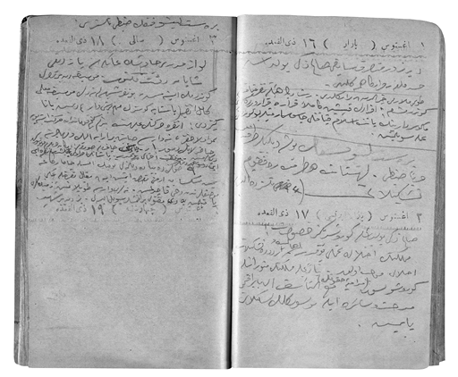

1906
1906 günlüğünün ilk sayfası
[tarihsiz]
Kardeşim Hulusi Bey’in diploma numarası 6644. Sınıfta 199. olarak zabit oldu. Kurada Üçüncü Orduyu çekti. Selanik’te Merkez Kumandanı Şevki Paşa ’nın maiyetine tayin olundu. 16 Nisan 1319 Selanik ihtilali üzerine teşekkül eden Divan-ı Harb-i Örfiye (Edip Paşa reis) memur oldu. 5 Mayıs 1319’da Manastır vilayetinin Kesriye kazasında eşkiya takibine memur Nizamiye 21. Alay 3. Tabur 3. Bölüğe tayin olundu. Sonra taburla Manastır’a geldi. Ben bu esnada sılaya yanına gittim. Sonra Selanik’te 17. Nişancı Taburu’na tayin olundu. Daha sonra jandarmaya geçti.
23 Teşrinisani 318 Mülâzım-ı sâni
23 Teşrinievvel 1321 / (5 Teşrinisani 1905) senesi Erkân-ı Harbiye birincilikle diploma aldım. Sınıfımız 544 Mülâzım-ı sâni olarak çıktı.
9 Eylül 321 Maarif madalyasıyla taltifim.
11 Kânunusani 318 / 25 Şevval 320’den itibaren akşam yoklamalarına harbiye sınıfları gibi dizilmek emir olundu.
25 Kânunuevvel 319 / 18 Şevval 321’den itibaren bahçeye dizilmeğe başladık.
Biz 56. sınıf 23 Teşrinisani 318 / 14 Şaban 321’de zabit olduk.
57. sınıf 21 Ağustos 319 / 11 Cemaziyelahir 321 Perşembe günü diploma aldılar.
9 Ağustos 319 zabitlik nasbları.
58. sınıf 30 Mart 320 / 26 Muharrem 322 Cumartesi tahlifler yapıldı. 22 Nisan diploma aldılar.
59. sınıf 2 Nisan 321 / Safer 323’te imtihana başladılar.
1 Ocak 1906 (19 Kânunuevvel 1321) Pazartesi
Üç hafta evvel kura çektik. İkinci Ordu çıktı. Sadullah Galata, Üçüncü’yü çekti. Becayiş rica ettim. Muvaffak olamadım. Saat iki buçukta haber geldi. Ertesi gün erkenden telaş ve tereddütle mektebe gittim. Beni İstanbul’da alıkoyacaklar. Bir hafta sonra tekrar gittim. Üçüncü Ordu-yı Hümâyûna becayişim için tavsiye verecekti. İki kere konaklarına gittim. Becayişe muvaffak oldum. Hâlâ kâğıdım muamele görüyor...
Ders nâzırı Yanyalı Esat Paşa’nın [Bülkat] etek öpmesini tenkit ettim. Terbiye-i askeriye yazılı dedim.
Bugün pek soğuk. Gece dehşetli fırtına vardı. Uyandıkça evin zelzele oluyor gibi sallandığını hissediyorum.
Dışarı çıkmadım. Fotoğraf çıkartmak, Seyfi Efendi’ye mektup yazmak, keman çalmak ile vakit geçirdim.
Orduya gitmek fikrimi tensip eden ender oldu!
13 Teşrinisani 1321 (26/1905) vilayat-ı selâse maliyesini kontrol için düvel-i muazzamanın bahri nümâyişi.
Rıhtım ihtilafından dolayı Fransızların debarkmanı diye şayialar çıkarıldı.
2 Ocak 1906 (20 Kânunuevvel 1321) Salı
Hava buz. Ortalık kar. Seyfi Efendi’nin mektubunu postaya vermek için Beyazıt’a kadar çıktım. Bir de resim gönderdim.
Daire-yi Askeriyeye kadar da çıktım. Bizim işi ben anlayamamışım. Artık bir daha gitmeyeceğime azmettim. Sittin sene beklerim.
Biraderim Hamdi Bey’in fotoğrafını güyâ çıkardım. 40 diyafram, 12 man poz verdim. Ancak beyaz örtülü tütün masası hayal meyal çıkmış. Geçen gün de süt-biraderim Hüsnü Bey’in ve mahdumu Faruk’un fotoğraflarını böyle yaptım. O zaman diyafram 40, poz 4 man idi... Anlaşılıyor ki benim fotoğrafa 40 diyafram verince 20 man poz lâzım. En iyisi odada insan resmi için 20 diyafram 8-10 man poz lâzım.
3 Ocak 1906 (21 Kânunuevvel 1321) Çarşamba
Bugün yine dehşetli soğuk. Dışarı çıkmadım.
Tarih-i Cevdet’in altıncı cildinin Avrupa bahsini okudum. Keman çaldım. Kaç gündür ara sıra “kılıcı olmayan baston güzel bir arkadaştır” namıyla bir kitap yazıyorum. Esası Fransızcadandır.
4 Ocak 1906 (22 Kânunuevvel 1321) Perşembe
Bugün de soğuk. Karlar erimeye başladığından çamur çok. Dışarı çıkmadım.
Arkadaşlardan Tıbbiyeli Aziz Efendi’nin birkaç ay evvel vefat ettiğini bugün işittim. Çok meyus oldum. Zavallı çocuk veremin pençesinde epeyce inlemişti. Sabri, Faik, Saffet de böyle öldülerdi. Menhus illet!
Bu gece bir plak daha bozuldu. Sebebi: Kendi fotoğrafımı küçültmek istemiştim! Fotoğraf makinesinin aynasına göre resmi bir mahalle koydum. Plakın köşesine çıkmış ve 20 diyafram 10 man poz verdim. Hava kapalı olduğundan hafif çıkmış.
5 Ocak 1906 (23 Kânunuevvel 1321) Cuma
Şu Çingene, Ermeni nağme cemiyetini gördükçe kanıma dokunuyor. Sırf Müslüman isimden mürekkep bir takım, Eczahane-i Hamdi’nin karşısındaki kıraathanede çalıyormuş. Bilmem hepsi Müslüman mı, yoksa emsâli misillü Müslüman isminde Çingene mi?
6 Ocak 1906 (24 Kânunuevvel 1321) Cumartesi
Hava güzel. Yeniköy’den, Bâbıâli’den, Beyazıt’a Merkez Kıraathanesi’ne gittim.
7 Ocak 1906 (25 Kânunuevvel 1321) Pazar
Maliye Nâzırı Nazif Paşa sabahleyin vefat etmiş. Eski ve iyi adam imiş diyor gazeteler.
8 Ocak 1906 (26 Kânunuevvel 1321) Pazartesi
Beyazıt Kütüphanesi’ne gittim. Rüştü Efendi’nin refakatinde gördüğüm bir zat Granada seyahatini anlattı. Elhamra’da çıkarılmış resminden de bir tane kartıyla verdi. Ben de bir kartvizit verdim. Samimiyetinden çok istifade ettim.
Seyfi Efendi’nin muhtasar bir kartını aldım. Bir haftadır nezle olmuş. Çorlu’ya gelecekmiş.
Sami Sezai Bey’i gördüm. Bölükle musahabeden de çok müstefid oldum. Hususiyle gösterdiği kitaptan.
Maliye Nezâretine Ziya Bey tayin olundu.
9 Ocak 1906 (27 Kânunuevvel 1321) Salı
Hüsnü Bey geldi. Evden çıkmadım. İki resmin fotoğrafını aldım.
10 Ocak 1906 (28 Kânunuevvel 1321) Çarşamba
Beyazıt Kütüphanesi’nde Tarih-i Cevdet’in 12. cildine başladım.
Akşamüstü Hüsnü Bey’in küçük çocuğu Edip’in resmini çıkarttım.
Yeniçerilerin lağvı için sancak-ı şerifin çıkarılmasında tereddüt olunca Kürt Abdurrahman isminde birinin huzur-ı hümâyûnda galeyan-ı hamiyetle tespihini mermere atıp “Mahvolursak, dinimizle mahvoluruz. Ümmet-i Muhammed’in çektiği yeter!” diyerek âlemin gözünden yaşlar akıtması cidden şâyân-ı takdirdir.
8/9 Zilkade gece yeniçeriler isyan etmişler. Ertesi gün yani 9 Perşembe de sancak-ı şerif çıkarılarak yeniçeriler ilga olunmuştur. (9 Zilkade, sene 1241)
11 Ocak 1906 (29 Kânunuevvel 1321) Perşembe
Evden çıkmadım. Hüsnü Bey geldi. Çıkmak üzere iken Müfit Bey geldi.
Bugünlerde Batum’dan, Kırım’dan birçok muhâcir geliyor. Yine bugünlerde Elcezire konferansı için gürültüler olup duruyor. Nihayet karar verdiler. Bakalım netice ne. Amerika donanması da oraya gelmiş.
12 Ocak 1906 (30 Kânunuevvel 1321) Cuma
Sami Bey’e Kuzguncuk’a gittik. Fotoğraftan epeyce istifade ettik. Dönüşte Kuzguncuk gazinosundan Hüsnü Bey’in resmini çıkarttım. Beşiktaş’a resim düşüyor, deniz de görünüyor. İyi oldu. Fakat camda lekeler var.
Hüsnü Bey iki hikâye anlattı. (1) İnci, (2) İki Kişilik Koltuk
Tabla ile hazır yemek.
İhtilas olmuş diye çoktan gümrüğün eşya-yı ayniyesi kapalı. Feshane fabrikası da böyle imiş. Bilmem başka memura devredip işe sekte vermemek kabil değil mi?
13 Ocak 1906 (31 Kânunuevvel 1321) Cumartesi
Beyazıt Kütüphanesi’ne Tarih-i Cevdet’in Cilt 12’sini okumaya devam ettim. Yeniçerilerin lağvında 6 bin (gerek Dersaadet’te, gerekse taşrada) asi öldürülmüş.
Metternich ne kadar ısrar etmişse de bizden Viyana Kongresi’ne murahhas gönderilmemiş. Bizim için bilahare fenalığı görülmüş (Memleketeyn, Sırbiye, Yunan istiklâlleri) Yunan, Metternich’in açtığı davanın mahkeme masrafı olmuş.
14 Ocak 1906 (1 Kânunusani 1321) Pazar
Beyoğlu’nda Kristal’de çalgıya gittim.
15 Ocak 1906 (2 Kânunusani 1321) Pazartesi
Beyazıt Kütüphanesi’ne gittim. Kadri Bey de geldi. Halil Cevat Efendi Granada resimlerini yine gösterdi. Pertavsızla baktık. İbnü’r-rüşd’ün hocasının 520 tarih-i Hicrisinde yazdığı Kitabü’s-salat, Kitabü’s-sıla ilh. kitaplarının fotoğrafla alınmış numunelerini gördük. Elhamra Sarayı, Kurtuba cami-i meşhûru 106 sene kadar bir zamanda yapılmış ve hitamından 500 sene kadar sonra Hıristiyanlar eline geçmiş.
Ben de erkân üçüncü sene ortası Elhamra Sarayı’nı rüyamda gezmiştim.
Beyazıt Kütüphanesi Sultan Hamid’in bidayet-i saltanatlarında Sait Paşa vasıtasıyla inşa olunmuş. Elyevm bahçesinde bir de büyük ocağı var. Fazla kitapların yakılması için.
İspanya kütüphanelerinde kitap okuyacaklar, ismiyle, memuriyetiyle yazılmış. Bir senet verirler, öyle kitap alıp okurlarmış. Hitamında memur kitabı verdiği gibi ister ve senedini öyle verirmiş. Esna-yı kıraatte nezâret-i kâmile varmış. Ne güzel usul.
16 Ocak 1906 (3 Kânunusani 1321) Salı
Ada kıraathanesine gittim.
Cenuptan 10 bin kişi istenmiş.
Adalar’a, Haydarpaşa’dan maada Anadolu sahiline Şirket vapuru işletecek. Müsaade olunursa çok iyi.
17 Ocak 1906 (4 Kânunusani 1321) Çarşamba
Postanede bin müşteri, bir memur. Her zaman böyle! Orada adi mektup için birkaç pencere tahsis olunmuş ise de kiminin penceresi kapalı, kiminin açık, fakat sandalye duvara yatırılmış, sahibinin köşe-i istirahate çekildiğini ilan ediyor. Yalnız bir pencere önünde halk birikmiş!
Mektubu vermek bir dert, verdikten sonra o merkez-i kesafetten muhit-i selamete çıkmak iki dert!
Kartpostalların yazılı cihetine “mevrûde” damgası vuruluyor! Geçende Edirne’den bir arkadaş üç adres yollamış. Serian şimşir üzerine hakkolunmasını sipariş etmiş. Damga da tam adreslerin ikisini kapamış! İş çabuk olacak değil mi? Tekrar sordum. O vakte kadar o Cisrimustafapaşa’ya gitmiş.
Neticede iş olmadı. Aldığım diğer bir kart da aynı. Münasebetsizlik var, şikâyet ettim. Hava.
18 Ocak 1906 (5 Kânunusani 1321) Perşembe
Haliç’in resmini çıkarttım. Fena olmamış.
Hüsnü Bey’e giderken yine o Kasımpaşa mezarlığının harabeleri içinden geçtim. Hâlâ çamur deryası! Kaç günlük güneş kurutamamış!.. Mezarlığın ötesine berisine kulübeler yapılmış, mahalleler teşkil olunmuş. Bana kalırsa o zavallı adamların kabirlerini oradan kazımak daha hayırlı. Hiç olmazsa beş sene sonra isimleri unutulur da görenlerin kalbi meyus olmaz. Alınacak toprak uzakça bir yerde muntazam bir kabristan olabilir.
Beyoğlu’yla Kasımpaşa hududu nasıl belli, Haliç’ten de baksak öyle! Yüksek binalar birden bitiyor, başlıyor barakalar...
19 Ocak 1906 (6 Kânunusani 1321) Cuma
Eyüpsultan’a Cuma namazına gittim. Haliç’ten Eyüp’e 35 dakikada gittik. Her iskeleye uğradık. Haliç’ten Kasımpaşa’ya, oradan Ayakapısı’na. Eyüp’te kurban kesecektim. Fakat niyetim fakir mahallesi bulup orada tevziiydi.
Hikmet Efendi’ye Nişantaşı’nda rast geldim. Münasip bir yer olmadığını söyledi. Bir tekke varmış. Herkes ya orada veya mezarlıkta kesermiş! Birincisi tembellere, ikincisi de Çingenelere!.. İşime gelmedi, kararımı başka yerde icra edeceğim.
(Cuma namazını kılarken 17 sene evvel dayım merhum Şükrü Bey’le bu mübarek camie geldiğimizi hatırladım. Minberin sağında o namaz kıldı, ben oturdum. Hâlâ unutmam, selam verdikten sonra “Oo, ne çabuk kıldın, namazın bitti mi” dedi, “Bitti” dedim... Sonra Rami yolunda bir kahveye gitmiştik...)
Hutbe Türkçe olmalı. Hikmet Efendi’yle iskele kahvesinde biraz oturduk. Gelirken vapur biraz iskeleleri azalttı... Vapurda sokak köpeği bile vardı... Gerek giderken, gerek gelirken Haliç’in haline baktım. Ekser yerleri mezra! Bulgar kilisesinin manzarası da nazarımı epeyce tevkif etti... Feshaneye ait Hikmet Efendi’den malumat.
Köprüde Sadullah Efendi ile Haliç kahvesinde oturduk. Avdette İsmet, Sami, İzzettin’e rast geldim. Tünel’e kadar gittik.
20 Ocak 1906 (7 Kânunusani 1321) Cumartesi
Beyazıt Kütüphanesi’ne gideceğim. Sultan İbrahim Han zamanında Endülüslülere gönderilen tezkereyi okudum. Hulasası merbut kâğıtta. Endülüs’ün tesisi 91 Hicride, inkırazı 900. Cenupta kalan ahali-i İslamların tardı 1018. Aragon eyaletinden sonra İslamların tardı 1093 Hicride imiş.
Arapça, teceddüt ettiği tarihi yazılmış.
21 Ocak 1906 (8 Kânunusani 1321) Pazar
Haydarpaşa’dan trenle Feneryolu’na, oradan Fener’e gittim. Bütün letafet-i tabiiye!.. Oradan yaya Kurbağalıdere’ye geldik, oturduk. Frer mektebi çocukları çayırda oynuyordu. Bir kısmı da Haydarpaşa çayırında oynuyorlardı. İçlerinde bir iki fesli görünüyordu. Küsûru hep Rum, Ermeni! Şimendifer memurlarının da bunlardan olmasına artık hak verdim.
İskelede Şirketin ufak vapurlarından biri de vardı. Yeni alınan imtiyaz mucibince İdare ile Müşterekü’l-menfaa bir vapur Haydarpaşa Beşiktaş arasında işliyor... İdarenin eski vapurları bunların (gerek Halep-Basra nam idarenin yeni vapurlarının ve gerekse Şirketin) yanında hiç! Zaten evvelce alınan vapurlar köhne halde fakat yeni niyetine alınıyordu.
Kadri Bey’le Sadullah Efendi’yi barıştırdım.
22 Ocak 1906 (9 Kânunusani 1321) Pazartesi
Kadri Bey’le Taksim Bahçesine kadar gittik. Hıristiyan mürebbileri dolu idi!.. Belediye bahçesi nasıl olmalı? Meyve ağaçları çok olmalı...
Bazaar Alman’dan üç ay evveli 50’şer kuruşa Seyfi Efendi ile birer saat almıştık. Onunki bir iki haftada şaşırdı. Biraz sonra benimkinin de sapı çıktı. Seyfi Efendi memuriyete gittiğinden öylece saati de götürdü. Ben garanti aldığımızdan yerine götürdüm. Yapmışlar, fakat 10 kuruş verecekmişim. Verdik! Hani bunun garantisi dedim? Saatte kırık varmış, biz de para verdik yaptırdık dediler!.. Emniyet Pazarı! Garanti alışverişe misal!..
23 Ocak 1906 (10 Kânunusani 1321) Salı
Emrim çıkmış. Ordulara tahrirat yazılıyormuş.
Beyazıt’ta Acemlerin birinde La Porte de Felicite diye bir roman gördüm. Resimleri İstanbul’a ait olduğundan meraklandım. Okumak için geceliğine
20 para verdim aldım. Okudukça küplere biniyorum. Yırttım attım.
24 Ocak 1906 (11 Kânunusani 1321) Çarşamba
Kütüphaneye gittim. Feridun Bey Münşeatı’nı şöyle karıştırdım. Haliç kıraathanesine indim. Hisar’da tutulan balığı merak ettim. Rıhtımda Alamira (Elhamra!) tiyatrosunda teşhir etmişler, gördüm... Ağzı bir adamı ferah ferah yutacak kadar. Ağırlığı bin kilo. Ağzının muhatı bir metre, başının kutru iki metre, boyu 15 metre kadar vardı. Kuyruğu, kanatları pervane gibi.
25 Ocak 1906 (12 Kânunusani 1321) Perşembe
Kadri, Sadullah Efendiler geldi. Dışarı çıkmadım. Gece meddah Sürûrî’yi dinlemek için tiyatrocu Hasan Efendi’nin kıraathanesine gittik. Fakat meddah yokmuş. Oturduk.
Zavallı Hasan! Küçük Asım’ı filan toplamış kıraathanecilik ediyor.
Sadullah Efendi Selanik’e gitmeye acele ediyordu. Sebebi tavsiye almış. Mıntıka kumandanı paşanın maiyetinde kalacakmış. Demek bu da Kadri Efendi fikrinde... Anlaşılan mesleğimde ben yalnızım.
26 Ocak 1906 (13 Kânunusani 1321) Cuma
Evden çıkmadım. Hamdi Bey, Hüsnü Bey, Muzaffer Efendi filan geldiler. Boyuna fotoğraf yaptık.
Seyfi Efendi’den sabahleyin erkenden mektup geldi. Edirne’nin krokisini de yapmış.
27 Ocak 1906 (14 Kânunusani 1321) Cumartesi
Mücellid Sait’ten defter alınacak.
Hüsnü Bey’e gittim. Oradan Ada kıraathanesine geldim. Dubanın demirini değiştiriyorlardı. Midye dolmuş. Herkes yağma. Köprü hamalları bile. Askerin biri hiddetlendi. Epeyce hamalları donattı. Babadan, büyükbabadan...
Yeni Cami-i şerife ayakyoluna gitmiştim. Çıkarken de bir Müslüman haremi sıkışmış. Oraya gelmeye mecbur oldu. Herkeste nazar-ı hayret! Bari bakmayın! İnşallah yakında imtiyaz verilir de lüzumlu yerlere hela yapılır.
28 Ocak 1906 (15 Kânunusani 1321) Pazar
Hüsnü Bey’le Köprülü’nün ve Âşir Efendi’nin kütüphanelerine gittik. İkisini de kapalı bulduk. Saat gündüz 5’i geçiyordu. Pazar olduğundan ortalık sessizdi. Anastas’ı dinledik.
29 Ocak 1906 (16 Kânunusani 1321) Pazartesi
Kükürtlü sular içinde, kükürtlü banyo etmek, bira hulasası içmek için Hasan Fuat Bey’den tavsiye aldık.
Yeni Cami-i şerifin kurbundaki dar kemer altı yayalar için pek tehlikeli. Geçen gün bir Müslüman harem zavallı sıkıştı. Korkusundan geri dönerek kaçmak istedi. Ne ise ben önüne atıldım. Tabii arabacı formama hürmet daha ziyade yol verdi. Arabacılar birbirine çarpmamak için duvar diplerine yakın gidiyorlar. Yayalar ölmemek için nereye girsin bilmem. Kemerin iki tarafında kapalı galeriler yayalar için açılsa pek münasip olur. Yahut geliş gidiş olmalı. Daha iyisi Yeni Cami’in etrafı açılmalı.
30 Ocak 1906 (17 Kânunusani 1321) Salı
Saat 5.30’da Köprülü’nün kütüphanesine gittim. Yine kapalı. Hem de kilitli. Parmaklıkla kapının arkasında camlı bir kapı var. İçerisi görülüyor. Fakat seslenecek kimse yok... Hava iyiydi. Demiryoluna indim. Cinci Meydanı’ndan Çatladıkapı’ya kadar deniz tarafı kümes gibi kulübeler, sol taraf büyük konaklar... Orada ufak bir kahvemsi yerde bir saat yalnız oturdum. Nazarı dikkatimi çapalarla denizden kısmet arayanlar celbetti. Birine sordum. Akşama kadar bunlar böyle mi dedim. Evet dedi. Kimin kısmeti varsa bazen bir şey bulur dedi... Surlar harap. Üzerlerinde kümes gibi kulübeler inşa olunmuş. Pek tabii bir manzara. Karşıdan Haydarpaşa, Moda, Fener, Adalar kemal-i azametle deniz üstüne yayılmışlar.
31 Ocak 1906 (18 Kânunusani 1321) Çarşamba
Beyazıt’ta kıraat salonuna gittim. İcmal-i vukuat için eski gazeteleri istedim. Yokmuş. Her yerde bulamayacağımı da söyledi. Ben de ilk nüshadan itibaren Servet-i Fünunlara baktım. Epeyce istifade ettim. Mühim şeyleri hulasa ettim. Gerek resim ve gerekse âsar cihetinden şimdiki nüshalara kat kat faik. Malumat-ı fenniye, milli romanlar, malumat-ı sıhhiye, ticariye vesaire...
1 Şubat 1906 (19 Kânunusani 1321) Perşembe
Gidemedim. Kahve işinden dolayı valide takrire gitti. Şevki Bey de hasta idi. Mecburen evde kaldım. Akşamüstü Hüsnü Bey valide ile geldi. Vakit geç olduğundan dışarı çıkmadım.
Hüseyin Bey’in albümü hâlâ verilmemiş.
2 Şubat 1906 (20 Kânunusani 1321) Cuma
Lloyd kumpanyasının vapurları çoğalmış, her iki rıhtıma yanaşıyorlar. İnşallah yakında İdare’ye güzel vapurlar gelir de hep Osmanlı bayrağı görürüz.
3 Şubat 1906 (21 Kânunusani 1321) Cumartesi
Cuma gecesi notaları karıştırıp keman çalıyordum. March Algerie nazar-ı dikkatimi celbetti! Manastır’da iken de koğuşta alaturka çalınıyordu.
4 Şubat 1906 (22 Kânunusani 1321) Pazar
Zeyrek Cami-i şerifine bayram namazına gittim. Zararsız sesli bir imam vardır. Kaç senedir bayram namazından evvel vaaz verir. Ama ne vaaz, mukaffa söz, istilahatla dolu cümleler. Cemaatin yarısı dalgada!, yarısı muhabbet, yarısı uykuda. Mübarek adam böyle diyor: “Neyyir-i azam ufk-ı beldeden iki mızrak tûlü, tereffu ettiği müşahede edildikte...” “Esnân, sinn-i tufûliyet, sinn-i şebâbet, sinn-i kühûlet... namlarıyla birtakım aksâma münkasimdir.” Halbuki cemaatin yarısı börekçi, simitçi, camcı, rendeci, helvacı, nefer ilh... vaazı dinlemediklerinin aslı var ya. İki sene evvel müezzinlerle imam arasında ihtilaf oldu. Kimi altı tekbir, kimi dokuz tekbir dedi. Baktılar ki olmuyor. İmam namazın usulünü tarif eder. Müezzin de “9 tekbir ile hazır olun bayram namazına, uyun imama azîzân!” nakaratını ihtisar ile “hazır olun bayram namazına azîzân” der. Tabii bilmeyenler veyahut senede iki kere olduğundan unutkanlar ki herkestir, insafına camie gelmeden kitaba bakmışlara yan gözle bakarlar.
6 Şubat 1906 (24 Kânunusani 1321) Salı
Yaya 9-10 kilometre dolaştım. Ceman yekûn bugün 14 kilometre yaya yürüdüm. Hava yaz gibiydi. Rus kilisesini yakından gördüm. Muhit duvarı kale bedeni tarzında, köşeler burç gibi. İçerimden geldi. 10 hatveden koşa koşa geldim. Burada bir tekme vurdum ve tükürdüm.
7 Şubat 1906 (25 Kânunusani 1321) Çarşamba
Dün Şehzade Cami-i şerifi avlusundan Vefa’ya çıktığım vakit bir arabada üç tıbbiyeli gördüm. Biri zabit idi, bilmem diğerleri talebe mi idi. Aman yarabbi din ve devletin ümid-i istikbali olan gençlerdeki kıyafet yüreğimi sızlattı. Hele zabitteki! Sivri ve simsiyah bir fes, göğüs bağır açık. Tıpkı tulumbacı.
8 Şubat 1906 (26 Kanunisani 1321) Perşembe
Şevki Bey için İbrahim Efendi namında birini bulduk. Dindar ve gözü açık biri.
9 Şubat 1906 (27 Kânunusani 1321) Cuma
Kadıköy’e gittik.
Yolda: Mevki memuru imiş. Sarhoş herif Kadri Bey’e çatmış. İlla bana konyak ısmarla demiş! Ben aşağıda kamarada idim. Kadri Bey geldi. Biraz durdu. Ben birine kızdım, şimdi gelirim dedi gitti. Ben de arkasından... Herife hak ettiği bir tokadı aşk etti. Döndük geldik. Biraz sonra yukarıda kamara kapısında bir gürültü, biri diyor ki: “Efendim polise!” Bir diğeri: “Kanuna söyleyelim”... Fırladım çıktım. Simitçi herifin yanağını gösteriyordu. Beni görünce savuştu. Herife sordum: Memur musun? Hayır yolcuyum... (Fakat tokat herife güzel bir ders-i ibret olacak gibi görünüyor.)
Avdette Kütüphane-i İslam önünde Pertev Paşa’ya rast geldik. Hiç kibir yok! Ne tatlı adam. Geldi elimizi sıktı.
10 Şubat 1906 (28 Kânunusani 1321) Cumartesi
Bulgaristan’da havadan taarruz edilmiş imiş. Yalan olduğu muahharen anlaşıldı.
11 Şubat 1906 (29 Kânunusani 1321) Pazar
Sarıyer’de Ali Efendilere gittim. Giderken Ali Bey’le vapurda görüştüm. Haftada iki defa işi varmış. Teehhül etmiş. Almanya’ya gidecekti. Tabii artık gidemeyecekmiş. İşi olmadığı günler sivil gezermiş.
12 Şubat 1906 (30 Kânunusani 1321) Pazartesi
Kâmil Beylere gideceğim. Üvey pederinin yeniçerilerden neden olduğunu anlayacağım. Besim Bey’in validesi de ne zaman vefat etmiş?
Büyük dayım yeniçeri değilmiş. Fakat büyük teyzem (Hanife Hanım) husumetinden dolayı kardeşim de yeniçeri diye haber vermiş. Az daha idam edeceklermiş. Korkudan dudağı filan çatlamış.
Valide tarafı Kastamonu vilayetinde, Devrek taraflarından imiş. Kurdoğulları denirmiş.
Ahmet Kaptan Hüdavendigâr gemisiyle Napoli’ye filan gitmiş. İspanya sahiline de gitmişler. Fakat Cezayir’de isyan varmış, Fransızların ricası üzerine gitmemişler.
Muharebat-ı kıla’ muallimi Zeki Paşa’ya Köprübaşı’nda rast geldim. Orduya gitmek fikrimi takdir etti.
13 Şubat 1906 (31 Kânunusani 1321) Salı
Sami Bey’in ilacına dün akşam başladım.
Bugün Şirket’in Sirkeci’den Kabataş’a işleyen İşgüzar nam istimbotu ile
4 numaralı idare vapuru müsademe etmiş. İstimbot gark, diğeri sakatlanmış. Nüfusça telefât yok.
Muhtar Paşa tavsiye vermek istedi. Kabul etmedim. Dedim ya lâyık değilim. Siz mahcup kalmayasınız veyahut liyakatımı gösteririm. Bu sefer de benim izzet-i nefsim yaralanır.
16 Şubat 1906 (3 Şubat 1321) Cuma
Hüseyin Efendi’ye gittim.
Azap Cami-i şerifinde Cuma namazını kıldım.
17 Şubat 1906 (4 Şubat 1321) Cumartesi
Hüseyin Bey’i Muhtar Paşa’ya götürdüm. İki defa gittik. Birinde uyuyor, dediler. 3 saat sonra gittik. Saat 2.30’da gitti dediler. Halbuki daha kalkmamış. Zaten bir de saat 2.30’u geçiyordu. Başka bir hizmetliden uyuyor cevabı almıştık. Ne ise erbâb-ı mesalihden sanmışlar!.. Paşa çok sevindi, teşerrüf ettik.
Harç istidasını bin müşkilâtla verdik. Kaç kişiye sordum. İstidaya harç (kaydiye) lâzım mı, nerelere kadar olacak. Herkes bir şey söyledi!..
19 Şubat 1906 (6 Şubat 1321) Pazartesi
Harcırah ve maaşlarımı güç hal ile aldım.
Trenle yola çıktım. Kar yağıyordu.
Sandıklarımı aradılar. Reşit Paşa’nın hatıralarını almak istediler vermedim. Mukaddime zararlı imiş, yırttım. Trende gençten bir Yahudi vardı. Ben biraz kompartımandan çıkmıştım. Baktım içeride ud çalıyor. Ben girince kendini senaya başladı. İyi musiki bilirmiş. Hatta keman bile biraz çalarmış. Benim de keman yanımda olduğundan çıkardım. Çocuk mahcup oldu. Fakat bu sefer fotoğraftan dem vurmaya başladı. Ne banyosu kullanırsın dedim. Hazır banyo dedi.
Çerkezköy’de Seyfi Efendi geldi. Gece Kuleliburgaz’a kadar beraber gittik. Yolda çok arkadaşlara rast geldim. Asker cüz’-i tam olarak hatta yayılmış. Talim ve terbiye müctemian kabil değil. İlerisi fena. Tezkere alacak, daha bölük talimi görmemiş. Daha mavzerle endaht etmemiş zabit dolu.
20 Şubat 1906 (7 Şubat 1321) Salı
Köylerin birçokları Bulgar. Muhâcirlerin Asya-yı Osmani’ye gönderilmesi Berlin Muahedenamesi icabatından imiş. Birçok yerler bataklık, gayr-i mezrû. Asker hat boyunda bulunmaya mecbur olduğundan ekserisi bataklıklar kurbunda.
Gilindir’den Hulusi Bey bindi.
Selanik’te namzet Nuri, Necati ve Namık Efendiler vardı.
21 Şubat 1906 (8 Şubat 1321) Çarşamba
Müşirlik dairesine gittim. Birkaç saat bekledim. Erkân-ı Harbiye Reisi gelmeyecekmiş. Yarın gel dediler. Emrimi bıraktım.
17. Nişancı Binbaşısıyla görüştüm. Malumatlı, hamiyetli bir zat. Geçen sene alaylı bir binbaşı vardı. Zabit odası han gibi idi. Şimdi binbaşı mektepli olduğundan pek muntazam. Mavzer fişekleri, efrâdın talimi hakkında fikir. Arkadaşlardan birçoğuyla görüştük. Adeta Kristal’de mektep açtık.
22 Şubat 1906 (9 Şubat 1321) Perşembe
Manastır’a tayin olunmuşum. Sevindim. Hem babamın da hizmet ettiği yerler, hem vilayât-i selâse dahili, hem de merkez-i vukuat...
Dairede Erkân-ı Harbiye Reisi Hasan Paşa’yı ziyaret ettim. Odasında ikinci reis Ali Rıza Paşa ve daha birkaç erkân-ı harp çalışıyor. Beni oturtmadı ve sordu:
Tavsiyeniz var mı?
23 Şubat 1906 (10 Şubat 1321) Cuma
Anastas’ın takımı beraber gelmişti. Kristal’de iki fasıl dinledim.
Bir komiteden müsadere olunan armayı gördüm. Bizim sancak kırılmış.
Eşkiyanın işaratını muhtevi resmi bir kâğıdı Nuri Efendi’den aldım.
24 Şubat 1906 (11 Şubat 1321) Cumartesi
Harcırah istidası ve emirname alınacak.
25 Şubat 1906 (12 Şubat 1321) Pazar
Eşyam gelmiş. Gümrükten bugün eşya alınacak.
Yağmurlu bir havada aldık. Asker eşyası diye yoklamadılar. Mahaza
2 kuruş kahve parası istemekten de çekinmediler.
Apokriya (maskara günü) imiş. Gelmeriye cihetinde karşıdan karşıya serpantin etmişler. Donanma gibi. Bereket versin hava kapalı idi de rezalet o kadar olmadı. Rumlar, Ermeniler, Bulgarlar... aynı Avrupalılar gibi bayram yapıyor.
26 Şubat 1906 (13 Şubat 1321) Pazartesi
Manastır’a hareket. Saat 1’de Hulusi Bey gitti. Saat 2.30’da ben. Hava gayet güzeldi. Trende bir Rum’la bir de Bulgar papaz vardı. Biraz Rusça konuştuk. Rum güzel Fransızca da biliyor. Matin gazetesinde Salahattin imzalı bir makaleyi anlattı. Güzel fikirli bir adam.
Makale: Avrupa medenileri Bulgar, Rum, Ermeni... ilh. milletlerin Türklerden zulüm görmekte olduklarından feryat edip duruyorlar ve enva-i mezâlimi Türklere reva görüyorlar. Halbuki felâkete sebep onlardır. Sanki Türkler diğer milletlerden daha mı bahtiyardır. Avrupalıların Hıristiyan tebaanın zulmü yetişmiyor gibi padişahın zulmünden en çok ezilen de onlardır. Türkler Hıristiyanlar kadar bile hürriyetlerine mazhar değildirler.
27 Şubat 1906 (14 Şubat 1321) Salı
Erkân-ı Harbiye Reisine emrimi verdim. Üçüncü Şube Müdürü Hamdi Bey benim reyimle süvari 15. Alay’da hizmetimi tensip etti.
Ordu kumandanı vekili Nazif Paşa’yı yanında süvari feriki İbrahim Paşa varken ziyaret ettim. İkisi de ihtiyar, yetmişlik. Alman erkân-ı harbi diye İbrahim Paşa alay etti.
Ordu kumandanı ve Erkân-ı Harbiye Reisi Selanik’te, Erkân-ı Harbiye ve levazım Manastır’da!
28 Şubat 1906 (15 Şubat 1321) Çarşamba
Alayımızın miralayı merkez kumandanıdır. Teşerrüf ettim. Alayını gıyaben takdim etti. “Bir bölük Gevgili’de, bir bölük Filorina’da, bir bölük de Sarayiçi’ndedir. Mütebaki iki bölük Kırmızıkışla’da. Her bölük 60 kadar hayvandan mürekkep. 10-15’i hasta, 20-25’i ötede beride işte; talime her bölükten birkaç diri çıkabilir. İstersen fırka erkân-ı harbiyesinde vakit geçirin, istersen bölük verelim, hem bölüğü idare et hem de ne kadar atlı bulursan talim ettir. Kolağası askeri fırına memur, kaymakam yok, binbaşının biri de yok. Zaten talim filan da yok. İşimiz öteye beriye müfreze sevkinden ibarettir. Benim de canım sıkıldı. Geçen gün kumandan paşaya söyledim. Kendime bir memuriyet istedim. Merkez Kumandanlığına tayin etti ve halimize güldü.”
Ben bölük başında bulunmayı arzu ettiğimi söyledim. Peki dedi. Binbaşıyı bir kere gör dedi, gördüm. Kendi Arap fakat pek insaniyetli bir zat. Güzel de Fransızca bilirmiş diyorlar... O zat da bölüklerin halini aynı ifade etti. Azami bölük talimi yapılabilirmiş. Kalem odasına gittiğim zaman tabur kâtibi efendi “Şimdiye kadar birçok zaman süvari alaylarında hizmet ederim, daha alay talimi yapıldığını bir yerde görmediğim gibi yalnız bir kere Köprülü’de müctemi epeyce süvari vardı. Yapmak istemişlerdi” dedi... Aman Yarabbi! Ne hale girdim. Yarın muntazam bir ordu ile sefer başlarsa süvari ne yapacak? Talimatı aynen Almancadan tercüme edip de fırka harekâtına kadar okutmak da ne mana? Kendimize göre talimname yapmalı değil mi? Zaten harbiyede üç sene güyâ süvari talimi gördük. Birinci senede muntazaman manej talimi gördük. İkinci senede iki haftada bir kere sıra gelirdi de takım bölük talimi yapardık. Üçüncü senede ise üçten fazla çıkmak nasip olmadı.
Vazifemiz de bölük veya takım zabiti olmaktı. Hamdolsun bölük zabiti olamadım. Olanlar da ya zoraki veya şans!
Kışlaya gittiğim gün topçu Ohrizar ovasına gidiyordu. Gıpta ettim.
Fakat sebat ederek süvaride kalmaya cehd edeceğim. Gevgili’den gelecek bölüğümü ıslaha çalışacağım.
Miralayın sözlerinin ne kadar mübalağalı olduğunu bilahare gördüm.
Manastır terakkiden bibehre. Havagazı bile yok. Halbuki Drahor ibadullah akıyor. Elektrikle tenvir için istifade kabil olduğu gibi menbadan fabrikalarda yapılabilir. Halbuki Hanlarönü’nde kötü bir değirmenden başka bir şey yok.
Ya tramvay, hem de elektrikli lâzım mı, değil. Ekşisu’dan itibaren Hanlarönüne kadar kışlaların önünden, mahalle arasından geçerek, keza bir hat istasyondan Hamidiye Caddesi’nden Drahor boyunca, keza Hanlarönü’ne bir başka Müslüman mahallesine. Kışla önünden geçen hattan keza Drahor boyuna.
Hanlarönü’nden daha ileride yapılacak bir fabrika Drahor’dan istifade şartıyla pek pahalı olmaz sanırım. Maatteessüf herkes emvalini satmakta. Korkudan, herkesin gözü nakitte.
Rumlar da kâmilen Bulgarca konuştukları halde birbirinin kanını içecekler. Birkaç Rum bir Bulgar’ın kafasını deldiklerini söylüyorlardı. Bu iş şehir dahilinde oluyor. Yine bugünlerde Yenimahalle’de bir nefere ateş etmişler tesadüf etmemiş. Komiteden imiş yakalamışlar.
Pazar günü her yer kapalı. Çünkü esnafların ekserisi Rum, Bulgar. Pazartesi günü umumiyetle bu civarın pazarı kuruluyor. Bütün köylüler mallarını getirip satarlar.
1 Mart 1906 (16 Şubat 1321) Perşembe
Ev tuttum ve taşındım. Çamaşır da dahil olduğu halde 3 Mecidiye vereceğim. Beş kuruş.
Hulusi Bey’in gönderdiği iki lirayı aldım.
Seyfi Efendi’ye, eve, Hulusi Bey’e mektup yazdım.
Eşyamın taşınması hususunda Cemal Efendi İzmir’in iyiliğini unutamam. İki mekâri hayvan getirtmiş. Masrafsız, zahmetsiz taşındım. Mukabele olarak The Sera Soldat’ı hediye verdim.
2 Mart 1906 (17 Şubat 1321) Cuma
Ev sahibesiyle bize bu evi bulan kadının odada fotoğraflarını çıkarttım. 20 diyafram, 3 man poz verdim. İyi oldu ise pek şık olacak.
Bugün odanın tezyini, kitapların tefrikiyle uğraştım.
3 Mart 1906 (18 Şubat 1321) Cumartesi
Yanya Valisi Osman Paşa Yanya’dan geldi. İstikbale iki bölük avcı taburu çıktı.
4 Mart 1906 (19 Şubat 1321) Pazar
Maaş işini yoluna koyduk. Topçuya geçmekten de şimdilik vazgeçtim. Gevgili’den gelecek 3. Bölüğe yüzbaşı olacağım.
Hulusi Bey’den kart geldi.
5 Mart 1906 (20 Şubat 1321) Pazartesi
Saat 2’de talim başlayacakmış. İlk defa olmak üzere gideceğim.
Eve kart. İsmail Bey’e, Kadri Bey’e mektup.
Pazartesileri talim yokmuş. Zabitana ders varmış. Bir kısmı gelmişti. Diğerleri caddeye gitmiş veya savuşmuş. Erkân-ı Harp Kolağası Enver Bey ders veriyordu. Vazgeçti. Nizam talimi yaptırıyor. Enver Bey kerrât ile söylemiş. Beraber avcı taburu, piyade taburunu muayene ettik, yüzbaşılar hep ne ise araziden istifade, ava çıkmak filan yaptılar.
6 Mart 1906 (21 Şubat 1321) Salı
Eyer takımını kışlaya gönderdim. Bir at verdiler. Bir de hizmetçi. Ben istedim. Çünkü bu sabah talime yetişemedim.
Tayinatımı aldım. Teşrinisani bidayetinden Şubat nihayetine kadar fırın müdürü bulunan kolağasına verdim. Parasını gönderecek. Akşama doğru komşu çocukları filan toplandı. Odamda çalgı çaldım. Pencereden eğlendim, dürbün gösterdim. Sağ taraftaki daskalın küçüğü pek sevimli.
7 Mart 1906 (22 Şubat 1321) Çarşamba
Saat 1.15’te talime Ohrizar’a çıktık. İkinci Bölüğün Yüzbaşısı Bey gelmiş. Çerkes, heybetli bir zata benziyor. Birlikte çalışmamızı istirham ediyor. Mümkünse bölüğü teslim ederim diyor. Halbuki alaylı yüzbaşılar benim alaya geldiğimden kuşkulanmıştı.
Yevmiye iki saat atla, bir saat yaya talim var. Yaya talimde de bulundum. Martinlerin ekserisinin nişangâhın sürgüsü tutmuyor. Niçin yaptırmadıklarını sordum. Tüfekçi yapmış. Fakat yine bozulmuş. Tuhaf şey! Bakalım tüfekçiyi bir de ben göreyim.
Seri ateşli bataryanın taliminde bulundum.
8 Mart 1906 (23 Şubat 1321) Perşembe
Kışla dahilinde 100 metre ölçtürdüm, işaretlettim. Herkes bu mesafeyi göz önünde görüyor. Hatveliyorlar. Endaht için terbiye-i askeriyeden bazı şeyler hulasa ediyorum. Bölüklere vereceğim.
İki gün evvel tayinat ilmühaberlerini kolağası beye vermiştim. Bugün parasını göndermiş. 294 kuruş tutuyor.
10 Mart 1906 (25 Şubat 1321) Cumartesi
Bindiğim beygir vaktiyle pek azgın imiş. Yallah şaha kalkarmış. İğdiş ettirmişler. Sırtında biraz da şiş var. Bugün talimden avdette şahlanmaya başladı. Biraz süratli yapayım dedim alabildiğine gitti. Nihayet ot arabası önünde durdu. Fakat tarafeyni 1.80 metre kadar açık bir mahalde şahlandı ve art ayakları hendeğin yakınında idi. İleri sürdüm. Gerildi. Teker meker hendeğe. Çevik atladık. Ta diz kapaklarımıza kadar çamura battık.
Yüzbaşı bunu mahsus bana hazırlatmış. Katil hayvanmış. Bir nefer altında kalmış ölmüş.
11 Mart 1906 (26 Şubat 1321) Pazar
Bugün ben o hayvana bindim. Fakat daha kışla önündeki talimhanede mâni atlattım, koşturdum. Dışarıda da koşturdum. Şaha filan kalkmadı.
1,5 Osmanlıya bir rover aldım. Beş adet fişekli mermisi var.
Erzak parası aldım: 3 Osmanlı, 1 Mecidiye, 3 çeyrek 1 kuruş. Toplam 363 kuruş.
12 Mart 1906 (27 Şubat 1321) Pazartesi
Hamdi Bey’den kart geldi.
İstanbul’a 15 lira gönderdim.
13 Mart 1906 (28 Şubat 1321) Salı
Çizmelerimi alacağım. Aldım.
Bugün talime çıktık. Akşam gerek avcıdan gerekse süvariden bazı müfrezeler çıkmıştı.
Zaten hava da bozuktu.
Mustafa Bulgurlu talimnameyi veremem demiş.
14 Mart 1906 (1 Mart 1322) Çarşamba
Roveri alacağım. Aldım. Talimnameyi henüz göndermemiş.
Mustafa Bulgurlu’ya tesirlice bir mektup yazdım.
15 Mart 1906 (2 Mart 1322) Perşembe
Seri ateşlileri daha istifadeli gördüm. Habip Efendi tarif etti. Nişangâhları 5.700 taksimatı havi, fakat 8 kilometreye kadar müsademeli atıyor. Bir batarya 18 bin liraya alınmış. Bir bataryanın 3 bin atım cephanesi varmış.
16 Mart 1906 (3 Mart 1322) Cuma
Yine eski hamama gittim. Burada hamamlar bilmem neden, fiyatları gayr-i maktu. Hoş İstanbul’da da böyledir ya. Az versen itibar yok, çok versen boğulursun. İstedikleri ne, bunu da bilemezsin! Hamamın sahibi de vaktiyle mümeyyiz imiş. Hiç hüsn-i tabiat, düşünce yok mu bilmem. Şu mevki şu kadar, kese sabun şu kadar diye yazsa da herkes işine geldiği mevkie girse olmaz mı?
18 Mart 1906 (5 Mart 1322) Pazar
Satranç takımını Drahor boyunda bir kıraathaneye bıraktım. Bakalım, bir miralay varmış, biliyormuş. Oynayacağız. Herkesi yenerim.
19 Mart 1906 (6 Mart 1322) Pazartesi
Eve kart, Hulusi Bey’e kart.
Derse Hüsnü Bey geldi. Ben gelmeyecek sandığımdan, elimde ders olmak üzere Bulgar ordu teşkilâtını hazırlamıştım.
Derste yerli ve Avrupa hayvanları üzerine bahis açıldı. Ekseri yerli hayvanları mübayaası taraftarı. Hüsnü Bey Macar almalı diyor ve yerlileri ıslah etmeli. Ben ise ıslah etmekle beraber şimdiden yerli mübayaası taraftarıyım. Yerliler mezahime mütehammil değilmiş! Anadolu’da ev gibi arabaları çeken Kürtlerin, Çerkeslerin altında cirit atan hayvanlar yerli değil mi bilmem. Alaylarımızdakiler de yerli ise de vaktiyle beslenmemiş, aç, istifade-i şahsiye gözetilerek satın alınmış biçare hayvanlardır.
20 Mart 1906 (7 Mart 1322) Salı
Şubat maaşını aldım. 20 Mecidiye.
21 Mart 1906 (8 Mart 1322) Çarşamba
Hâlâ manej çeviriyoruz. Talim cetvellerini fırka erkân-ı harbi yapacakmış. Şimdilik ben fuzuli gibiyim. Ne talimi, ne de dersi bana bırakmak ve icabında müdahale etmek için hiçbir mafevkten bir emir almadık. Kim bilir ne düşündüler. Ben elimden geldiği kadar çalışmak istiyorum, fakat şimdi neye çalışayım. Bir parça esliha talimine çalışıyorum. Bakalım arzuma göre çalışmak ne zaman nasip olacak.
22 Mart 1906 (9 Mart 1322) Perşembe
Fırka Erkân-ı Harbi İskender Bey’le görüştüm. Beraber süvarinin terakkisine çalışacağız. Perşembeleri seferiye dersi vereceğim.
23 Mart 1906 (10 Mart 1322) Cuma
Evde temizlikle uğraştım. Geç vakit Drahor boyunda kıraathaneye gittim.
İstanbul’da Şehremini Rıdvan Paşa’yı şimendiferden çıkar çıkmaz dört kişi (Üçü Vanlı, biri Bitlisli) sekiz yerinden vurmuşlar. Biraz sonra bir ifade veremeden ölmüş. Vuranlar yakalanmış.
Şehremaneti, Hüdavendigâr Valisi Reşit Paşa’ya verildi.
24 Mart 1906 (11 Mart 1322) Cumartesi
Bugün hava müsait. Ufak bir tatbikat yaparak Kukuraçan’a kadar gittik.
Efrâdda, çavuşlarda seferiye hiç yok.
Kadri Bey’den mektup geldi.
25 Mart 1906 (12 Mart 1322) Pazar
İskender Bey’le yaptığımız cetveli miralay kabul etmemiş. Talim müddetleri çokmuş. Kendi de başka yapmamış. Kendi bi’t-tatbik talime çıkıyoruz.
26 Mart 1906 (13 Mart 1322) Pazartesi
Hulusi Bey’e, eve, Seyfi Efendi’ye mektuplar.
Kıraathanede Cemil Bey’le satranç oynadık.
27 Mart 1906 (14 Mart 1322) Salı
Talimhaneye Şükrü Paşa geldi. İstikbal ettim. Zabitlerden birinin kisvesini beğenmedi.
Miralay, Yüzbaşı İsmail Efendi bölüğü teslim etmesini emretmiş. Halbuki Fırka Beşinci Bölüğü teslim ettirmek istiyordu, çünkü yüzbaşı alaylıdır. Bölüğü vermek istemediklerinin esbabı bakalım nedir iyice anlaşılacak. Gittim İskender Bey’e söyledim. Yazdılar. Beşinci Bölüğün tesliminin münasip olduğunu söylediler.
Ahmet Midhat Efendi’nin Arnavutlar Solyotlar nam milli romanını okudum. Pek güzel.
28 Mart 1906 (15 Mart 1322) Çarşamba
Yüzbaşı İsmail Efendi aynı benim gibi beygiriyle hendeğe düşmüş.
Bukova’da eşkiya var diye süvari ve piyadeden müfreze gönderdiler. İstasyondan ötesi görülüyor. Akşam saat 10.30’a doğru hareket olduğundan tabii eşkiya askeri bir saatlik yoldan gördü ve kaçtı.
Sarakof da İtalya’dan Ohri cihetine geçmiş imiş. Eşkiyanın keşif atlıları şehir dahilinde varmış. Boş tenekeler yüklenmişler, köylüler gibi hükümet civarında, kışla civarında, şehir mahreçlerinde gezerlermiş.
29 Mart 1906 (16 Mart 1322) Perşembe
Beşinci Bölüğü teslim almaklığım emri gelmiş. Bu bölükte Yüzbaşı alaylı İbrahim Efendi bölük elimden gidecek diye canını verecek. Sıkılmadan miralaya bir takrir vermiş ki güyâ bölük benim elime geçerse genç olduğumdan idaresi kabil olmayacakmış. Alay çığrından çıkacakmış.
30 Mart 1906 (17 Mart 1322) Cuma
Kurtderesi köprüsü kurbunda caddede bir Bulgar katlolundu. (Rumlar tarafından)
31 Mart 1906 (18 Mart 1322) Cumartesi
İki Rum vuruldu. Biri polistir. Fakat bu hafifçe yaralanmış, diğeri ölmüş.
Gece Beşinci ve İkinci bölüklerden müfrezeler çıkacak. Süvari muallimi İsmail Paşa buraya gelecekmiş. Süvari fırka kumandanı olmuş. Çok memnun oldum.
1 Nisan 1906 (19 Mart 1322) Pazar
İsmail Paşa gelecekmiş.
2 Nisan 1906 (20 Mart 1322) Pazartesi
İlk defa alayımızın zabitanına ders verdim. Hasan Bey’in dersi idi, fakat gelmemiş. Mecburen ben bulundum. Tabiyeye ait ufak mesele yaptık.
Bölüğü teslim almaya başladım.
Rıdvan Paşa’yı katlettiren Ali Şamil Paşa ile biraderi Abdürrezzak Bey imiş. İkisi de tard olunarak nefyolunacak.
3 Nisan 1906 (21 Mart 1322) Salı
Bugün bölükte kaltak ve fişekleri muayene ettik. Akşama kadar ağzıma bir lokma koymadım. Fişeklerden birçoğu dolma, ezilmiş tüfeğe girmiyor. Kurşun düşmüş, ateş almamış. Fişekler bulunduğu gece iki üç tane gra [Gras] fişeği bile çıktı.
4 Nisan 1906 (22 Mart 1322) Çarşamba
İsmail ve Kadri Beylere mektup.
5 Nisan 1906 (23 Mart 1322) Perşembe
Bulgar ordusu ve Bulgarlardan bahsetmek üzere arkadaşlara birinci dersimi verdim.
Hayret kimsenin bu hususta malumatı yok.
6 Nisan 1906 (24 Mart 1322) Cuma
29 kişilik Bulgar çetesini kâmilen geberttiler. Askerden bir yaralı (hafif), bir jandarma şehittir.
7 Nisan 1906 (25 Mart 1322) Cumartesi
Bir Ulah evi yandı. Evvelce bir Bulgarınmış. Burada vurulmuş Sofya’ya gitmiş, gebermiş. Birçok cephane ve bomba patladı.
Bugün kemandan ilk dersi aldım. Haftada iki dersten ayda iki mecidiye vereceğim. Bir mecidiye peşin verdim.
8 Nisan 1906 (26 Mart 1322) Pazar
Ekser Bulgarlar birer Müslüman kavas almış.
9 Nisan 1906 (27 Mart 1322) Pazartesi
Kemandan ikinci dersi aldım.
12 Nisan 1906 (30 Mart 1322) Perşembe
Ali Şamil meselesinden İşkodra’ya nefyolunmak üzere beş altı zabit geldi. Kuleli’nin ders nâzırı Hasan Fuat Paşa da matruden Rodos’a nefyolunmuş.
13 Nisan 1906 (31 Mart 1322) Cuma
Perşembe/Cuma gecesi saat 7-8’de bir müfreze, bir çeteye tesadüf eder. İki neferi vururlar. Mütebakisi kaçar. Müfreze pusuya yatar. Hilmi Efendi Gerede silah sesine imdada maiyetiyle gelirse de pusudaki müfreze bunları kaçan çete avdet etti sanarak üzerlerine ateş eder. Hilmi Efendi sağ kalçası altından vurularak iki dakika sonra vefat eder. Muahharen boru sesinden müfreze birbirini anlar. Pusudaki müfreze, kimdir o diye sormadan ateş ettiğinden böyle kanlı hataya sebep olur.
Merasim yaptık.
Cenaze merasiminden avdette tanıdığım zabitlere şu sualleri sordum. Bugün Manastır’da zabitan ittifakının temelini attım. Süvari, piyade, topçu, ayrı kıraathanelerde otururlar, büyük ayrılık.
1- Arkadaş, vaziyeti nasıl buluyorsun?
2- İstikbalimizi nasıl görüyorsun?
3- Mesul kimlerdir?
4- Fikrini söyle. Çare nedir?
Cevapların hulasası şu:
1- Vaziyetimiz günden güne fenalaşıyor. Hepimiz aşağı yukarı Hilmi gibi gömüleceğiz.
2- Vatan enkazı üzerimize yıkılacak. İstikbalimiz tehlikede, vahim tehlike ilh.
3- Mesulü Abdülhamid buluyoruz, teessüfle.
4- Ne yapabiliriz diyerek, lanetli küfürler.
Cevabım:
1 ve 2’de fikirler mutabık.
3- Mesul herkes. Yani hepimiz. Bulunduğu yerin mesuliyeti derecesinde mesuldür. Tabii en baş Abdülhamid’dir. Fakat felâket karşısında susmak bizi de müttehem eder.
4- Askeri vazifelerimizi bütün kudretimizle yapmakla beraber saflarımızda münevverleri ile kolkola bir cephe yaratmak, bir tehlike karşısında dikilmek. Pek mahremlere İttihat ve Terakki’den bahs.
15 Nisan 1906 (2 Nisan 1322) Pazar
Pazar/Pazartesi gece saat 4’te ilk defa olarak baskına gittik. Üç bölükle mürekkep olarak (beher bölükten 30 atla). Kokraçaniçe’de 4. İzmirnova’da beşinci yani benim bölük, Çernabuha’da ikinci bölük bulundu. Yanımda 30 atlı ile dördüncü bölükten araziyi tanır bir çavuş, bir jandarma bir de mülâzım Hayrettin Bey vardı. Hava güzeldi. Fakat bulunduğumuz yer su içinde çamurdu. Sabaha karşı ayaz da çıktı. Efrâd alışmış. Horuldamaya başladı. Pelerini serdim, yaşlık başlık üste çıkıyordu. Kamerin tulûu da şıktı. Sabaha kadar köyler birbirleriyle fenerle muhabere ettiler. İzmirnova’dan işaret göremedik. Fakat garibi diğer köylerden gördük. Fakat arkadaşlar ihata ettikleri köylerden işaret görememişler.
Sabahleyin Şefik’le saat 10’da taharriye başladık. Müslüman kulelerinden birinin kilidini kırdık. Mühürlemek için hamur kullandım.
17 Nisan 1906 (4 Nisan 1322) Salı
Bugün Dördüncü Bölük atış talimi yaptı. 400 metreden bile isabet hiç olduğundan, 600’den yapmamışlar. İlk defa arkadaşlardan birinin gra tüfeğiyle endaht ettim. 200 metreden tam hedefin aynasından vurdum. İkinci endahtı da böyle yaptım. Zabitler ve neferler hayretlere düştü. Nişan alma ve tetik çekmenin kaidelerini anlattım.
18 Nisan 1906 (5 Nisan 1322) Çarşamba
İlk defa olarak seri ateşlilerin endahtı icra edildi. Tanenin tesiri hiç gibi. Şarapnel epeyce tesir yapmış. Fakat birçok şarapnellerin yalnız misketleri tesiri göstermiş. Mermi parçalanmamış.
19 Nisan 1906 (6 Nisan 1322) Perşembe
Ohrizar’da talim ederken iki topçu neferi geldi. Tepenin gerisinde bir neferin maktulen yattığını haber verdi. Gittim gördüm. Burnunun ortasından bir alet-i katıa ile cerh olarak orada katlolunmuş. Sonradan edilen tahkike nazaran mezkûr nefer silahla beraber dört beş gün evvel karakoldan firar etmiş imiş. Vaziyete nazaran Manastır’dan giderken katlolunmuş. Silahını filan almışlar.
Vali Hâzım Bey, Hadi, Hüseyin ve Şükrü Paşalar atış alanında. KK işaretli Kâzım Karabekir. (18 Nisan 1906)
20 Nisan 1906 (7 Nisan 1322) Cuma
Dördüncü Bölük Gevgili’ye müteveccihen hareket etti. Teşyi için birer takımla mızıkayı çıkardık.
21 Nisan 1906 (8 Nisan 1322) Cumartesi
Bugünkü endahtta da bulundum. Hem de hedefin yakınından seyrettim. Cidden açıkta duran piyadeye tesiri çok. Topçu kalkanlı olursa pek az müteessir oluyor. Bütün endaht neticesi misketle olduğundan numara neferatı kurtuluyor. Tabii piyade de birçok sıçramalar yapacak. Hulasa, nazariyatta topçudan korkulduğu kadar büyük bir tesir göremedim. Saniyen ufacık bir zemin arızası tesiri hemen kâmilen mahvediyor.
22 Nisan 1906 (9 Nisan 1322) Pazar
3 batarya seri atışla topçu ve süvari hedeflerine ateş etti. Son endaht olduğu için resm-i selamla endahta başlandı. En sonda bir başçavuş nutuk okudu. Dua oldu. Müteaddit resim aldılar.
23 Nisan 1906 (10 Nisan 1322) Pazartesi
Bölük mülâzımlarından biri anlattı: Dün akşam, fırın hizasında köşedeki kahvede otururken bir serçavuş Bulgar, kolunda topuzlu bir sopa olduğu halde bağırıp çağırmış: “Üç Bulgar öldürmekle iş bitmez. Yerine daha çoğu geldi. 23 Nisanda görürsünüz... ilh!” Kimse ağzını açmamış.
24 Nisan 1906 (11 Nisan 1322) Salı
Erkân-ı Harbiye Reisi Osman Refet Paşa çağırmıştı gittim. Ders nâzırı Esat Paşa’dan mektup gelmiş: Benim nerede olduğumu bilmediği için (Selanik’e Ordu Erkân-ı Harbiye Reisi vasıtasıyla) göndermiş.
Mektubun münderecatı: Benden fotoğraf istiyor anlaşılan. Zamanın modası veçhile genç, yakışıklı Erkân-ı Harp damat arayan büyük! bir yere. Teveccühlerinden başka bir şey istemediğimi yazdım.
25 Nisan 1906 (12 Nisan 1322) Çarşamba
41 Bulgarla, 4 Rum sürdüler. Trene bindikleri vakit bir Bulgar papaz, beherine birer lira altın verdi.
İkişer ikişer bileklerinden kelepçeli indiler. Tren hareket ettiği vakit hep birden Bulgarca “Milletimiz yaşasın” diye bağırıştılar. Zavallı Türk milleti bu varlığı gösterdiğin gün sen de hürsün ve sen de istikbalinde eminsin dedim.
Her akşam kışlada Türk marşı neden söylemiyoruz. Osmanlı diye kime diyoruz. Ben güfte yapayım dedim. Sonra Emin’inkini muvafık buldum. Kaç senedir şiirle uğraşmadım. Sonra kime beste yaptıracağım. Şair Emin’inkini bir iki gün çalışarak çıkardım (İki gün sonra alay bandosuna verdim).
26 Nisan 1906 (13 Nisan 1322) Perşembe
Binbaşı bey kızmış: Sebebi, piyade kolağasına verilen süvari hizmetçisini kendine malumat vermeden aldığımdır. Halbuki evvela kendilerine danışmak istedim de ben karışmam miralay bey müsaade ederse al demişti. Miralaya söyledim. O da bana ne istersen al, bölük senin dedi.
Binbaşı beyin fikrince, kanunun her bir harfi icra olunamazmış. Ezcümle hizmetçiler yevmiye bir saat olsun talime gelemezlermiş. Sebebi de, büyük rütbeli zevatın nezdindeki hademeler gelmezmiş. O halde kendi hizmetçilerini ve daha dûn rütbedekiler nezdindekileri getirtmekte mâni yokmuş. Mafevklerin yaptıklarını madûnlar da yapmamalı imiş... Dedim ki: Çektiğimiz şu bela bütün bu gevşekliktendir. Küçük zabitan okuma yazma, kroki bilmeyip keşif kolunun vazifesi ne, ondan haberi yok. Günah değil mi? Yarın karşımıza çıkacak düşmanın askeri nasıl hazırlanıyor, görmüyor muyuz? Küçük zabitana sordum, öğretmediler diyor. Zabitana sordum. Yüzbaşının gevşekliğine kabahat buluyor, yüzbaşı da size, siz de miralaya ve daha büyüklere kusur buluyorsunuz. Bu cürmün faili tepeden tırnağa kadar herkestir. Çünkü bütün zabitanın fikri: Adam mafevkim bakmazsa iş bana mı kaldıdan ibarettir. Ne büyük günah! Herkes ne olur kendi salahiyeti dahilinde çalışsa, azmini kırmasa. Bugün bir piyade kolağasına miralay bey hizmetçi vermek isterse binbaşı itiraz edemez mi, bu da muvafakat ederse yüzbaşı neci? Cevap: Öyle ama alayın miralayı alayını batırsın çıkarsın mesul odur, bize ne. Biz onun emrine mahkûm! Katiyen! Maddeten, manen herkes mesuldür. Bir zatın arzusuyla bunca halk sızlayamaz. Kanuna mugayir, terakkiye mâni evâmirine her zaman itiraz olunur. Ben bölük yüzbaşısı sıfatıyla daima itiraz ederim.
27 Nisan 1906 (14 Nisan 1322) Cuma
Bugün Süvari Fırka Merkezi de Selanik’e nakletti. Trende yine birkaç Bulgar sürgün vardı.
28 Nisan 1906 (15 Nisan 1322) Cumartesi
Koca bıyıklı, sinire dokunur bir İtalyan yüzbaşı var. Geçen sene bir çavuş bunu şikâyet etmişse de aldırmamışlar. Şöyle ki: Maiyetinde jandarma olduğu halde çeteye rast gelirler. Çetenin kuvveti dûn imiş. Palabıyık yanına çağırır, sergerde ile konuşur. Çavuş ateş etmek isterse de mümânaat eder ve konuşması bittikten sonra savuşur giderler! (İnzibat memurlarına dikkat gel!)
Süvari 15. Alay Mızıkasına Türkçe şiirlerdeki Ben Bir Türküm şarkısını ilk olarak kışlada çaldırdım.
29 Nisan 1906 (16 Nisan 1322) Pazar
Sütçüye beş kuruş (bugün de dahil) verilecek. Verildi.
İlk defa martinle de 200 metreden endaht ettim. Hedefin aynasına vurdum.
2 Mayıs 1906 (19 Nisan 1322) Çarşamba
Çarşamba/Perşembe gece beşte üç bölükle (Bölüklerden 40’ar atla) baskına gittik. Ben Dalbeyler, Dedebal’a gittim. Aradık. Bir şey yok.
Gece giderken Manastır’da Yenimahalle’den bir Prosnik’ten işaret verildi. Hatta yolda tesadüfle aradığımız çoban bile bilahare işaret verdi.
3 Mayıs 1906 (20 Nisan 1322) Perşembe
Seyfi Efendi’ye mektup.
7 Mayıs 1906 (24 Nisan 1322) Pazartesi
Bugün de Köroğlu cabası. Ders gitti. Alay kumandanının odası idi.
Miralayın hesabı varmış. Odada bize yer bırakmadı. Binbaşı Bey de! Bugün de ders olmasın deyiverdi.
11 Mayıs 1906 (28 Nisan 1322) Cuma
Sabahleyin trenle Filorina’ya hareket.
13 Mayıs 1906 (30 Nisan 1322) Pazar
Yolda büyük bir kaza geçirdim. Endaht bitmişti. Fakat bandosu çalmamıştı. Ben, Mülâzım Hasan Efendi ile hedefte delik olup olmadığını muayeneye gittik. Hedefe 40-50 hatve kala roverle endaht edelim dedik. Ben dedim ki: İkimiz birden olmaz, evvela ben edeyim ki kimin vurduğu belli olsun... Roverle hedefin üst kenarına nişan aldım ki büyük olduğundan merkezden vururum diye. Silah patlar patlamaz bir çavuşla, bir onbaşı hedefin arkasından koşarak çıktılar. Allahtan kurşun nişan aldığım yerden geçmiş. Yüksek olduğundan heriflerin başlarından aşmış.
14 Mayıs 1906 (1 Mayıs 1322) Pazartesi
Gündüz saat 6’da hayvanla Filorina’dan Manastır’a hareket.
15 Mayıs 1906 (2 Mayıs 1322) Salı
Ben Filorina’da iken bölükte vukuat olmuş. Terzi diye Yüzbaşı İbrahim Efendi’nin yetiştirdiği Ahmet, Mülâzım Ömer Efendi’ye karşı gelmiş, hatta tokadına tokatla mukabele etmiş. İki çavuş birbirine küfür etmiş. Esbabını tahkik ettim. Yüzbaşı İbrahim Efendi’nin bölükte ne olup olmadığını anlamak fikriyle el altından efrâd ve çavuşlara ders vermiş. Çavuşlara demiş ki: “Yeni Yüzbaşı benim gibi değil, sizi ezer, ceza yapar. O muvakkattir. Siz ne müracaatınız olursa bana söyleyin.” Hatta Mülâzım-ı Sâni Ömer Efendi’ye bile demiş ki: “Biz alaylıyız, onlar mekteplidir. Bizi ezmek isterler. Sen onlara uyma... ilh.” Çok esef ettim. (Anadolulu Posta Onbaşısını Arnavut çavuşlar dövmüşler. O da mukabele etmiş. “Anadolulu diye bizi eziyorlar efendim” diye ağlayarak anlattı.) Çavuşları çağırdım. Dedim ki: Daha babalarımızın kanları Tuna boyunda kurumadı. Balkanlar’ın neresini kazsak babalarımızın daha çürümemiş kemiklerini görürüz. Türkü, Arnavutu, Çerkesi kucak kucağa sarıldılar. Vatanı kurtarmak için can verdiler. Her gün baskına gidiyoruz. Bu rezalete sebep hep bizim birbirimizi sevmemekliğimizdir. Hep Müslüman değil miyiz. Kardeş gibi birbirimizi sevmeli, yekvücut olmalı. Âlem bize hayran olsun. Kâfirler yurdumuzu çiğnediği vakit Türk, Arnavut tanıyor mu? Biz niçin ayrı gayrıyla birbirimizin başını yiyelim. Şehit babalarımızın, eziyetlerle zulümlerle can vermiş ninelerimizin ruhlarını sıkmayalım. Her gün bize lanet etmesinler. Bizim gibi evlat yetiştirdiklerine pişman olmasınlar. Haydi kardeşlere gıpta olacak surette birbirinize sarılınız!” Çavuş onbaşılar el ele tutuştular ve yemin ettiler ki artık hep kardeşçe geçinecekler. Sonra efrâda da bu zeminde nasihat ettim. Hüsn-i tesir icra ettiğini görüyorum.
17 Mayıs 1906 (4 Mayıs 1322) Perşembe
Nöbetçi yüzbaşısı idim.
Akşam saat 11’i geçiyordu. Erkân-ı Harp Fethi Bey geldi. Acele, ne kadar atlı çıkarsa hazırlanmalarını söyledi. Lisola’da müsademe varmış. Hazırlandık. Kışladan Lisola’ya kadar 15 kilometreyi mütecâviz yeri süratli atla katettik. Gece 1’e yakın yetiştik. Müsademe oluyordu. Bizden evvel çetenin tahassun ettiği kaleyi ateşlemişler, yine sönmüş.
Fethi Bey Üçüncü Bölükle gitti. Biz bekledik. Canım sıkıldı, boru çaldırttım. Nihayet İkinci Bölük atları borusu vuruldu. Bizim bölük kaldı. Ben İkinci Bölükle gittim. Bağlık arasından düşe kalka iki kilometre gittik. Yolda iki adamboyundan ziyade hendeğe rast geldik. Kızak kayar gibi indik. Çıkışta müşkilât çektik. Hendeğin yukarısına az kalmıştı. Fakat ne el, ne ayak tutunacak yer yoktu. Martini hendeğin üst kenarına koydum. Tırmanmaya başladım. Baktım ayaklarımın tabanından yukarı doğru biri kaldırıyor. Artık suhuletle çıktım. Efrâd birbirine bu suretle yardım ettiklerini anladım... Biraz daha gittik. Ara sıra efrâdı yere yatırıp ileriye boru çaldırıyorduk ki yanlışlık olmasın. Artık eşkiyanın naraları da işitiliyordu. Bir aralık dehşetli silah patlamaya başladı. Susuzluktan da bitmiştik. Arkadaşlardan Tayyar Kalkandelen asma yaprağı toplamış. Birkaç tane verdi. Harareti teskin ettik. Fakat kargaşalıkla İkinci Bölüğü kaybettik. Ben, Tayyar, Süleyman Efendiler yalnız kaldık. Bir yola indik. Orada atlı bir nefer de vardı. Gündüzden beri burada süvarilerin atları yanında bekliyormuş. Bizi kalenin yanına götür dedik. Fakat bir müddet gidemedik. Naralar, eşkiyanın şarkıları biter bitmez dehşetli ateş başladı. Aramızda 100 metrelik mesafe vardı. Köy dahili ise de açık sipersiz yer geçmek lâzımdır. Kurşunlar bir iki metre önümüzden geçiyordu. Biraz sonra kesildi. Yine bağrışmalar başladı. Biz de koşa koşa süvarilerin yanına geldik. Ateş kes borusu vuruyordu. Ateş kesildi. Kale de iyiden iyiye ateş aldı. Bir silah da ben atamadığıma canım sıkılıyordu. Kalktım Hayrettin Bey’in yanına gittim. Silahı duvarın üzerine koydum ve oturdum. Bir de bir aralık eşkiyadan biri kalenin tam karşımda bulunan kapıya doğru geldi. Sevinerek iki el ateş ettim. Her tarafta ateş gırla! Artık ateşler alt kata dökülmeye başladı. Çete yandı. Yalnız evvelce dışarıda üç tanesini gebertmişler. İçerde de 10 tane varmış. Reisleri Petso imiş. Geceyi yangının karşısında geçirdik. Ertesi gün hafriyâtta bir mavzer makineliler ve gra tüfekleriyle yanmış cesetler çıktı. Hatıra olmak üzere ilk attığım fişeğin kovanıyla, eşkiyadan bir mavzer bir gra fişeklik atılmış kovanı aldım. Enver, Fethi Bey, ben üç Erkân-ı Harp müsademede bulunduk. 7 Mayısta Enver’le köyü gezdik. Vurulan papazın oğlunu gördük. Papaz müteessir. Gençler söz dinlemiyor dedi.
7 Mayıs Manastır’a döndük. Enver’le evde hasbıhalim.
23 Mayıs 1906 (10 Mayıs 1322) Çarşamba
Bölük hayvanları iğdiş edildi.
24 Mayıs 1906 (11 Mayıs 1322) Perşembe
Bugün de hariç, sütçüye beş kuruş verildi.
25 Mayıs 1906 (12 Mayıs 1322) Cuma
Cuma/Cumartesi gece saat 8.30’da Bukova’ya baskına gittik. Aradık bir şey bulamadık. Bukova Manastır’ın vaktiyle güzel bir sayfiyesi imiş. Erbab-ı zevk oraya giderlermiş. Mal da! çokmuş. Taharride ben de rast geldim. Güzelce bir şeydi. Bir kartpostal buldum. Bir erkek bir kadını öpüyordu. Arkasında el yazıları vardı. Bu kartı alacağım dedim. Alma beyim, ben ona bakıp lezzet alıyorum dedi. Resmi gösterdim, bu ne dedim, güldü. Sonra bir çanakta balık vardı. Ateş ölüydü size pişirdim dedi. Rakı da vardı. Kerata köy bekçisi içti.
26 Mayıs 1906 (13 Mayıs 1322) Cumartesi
Kalem odasındaki yazıcıyı talime çıkarmak istediğimden alaya mal ettiler ki hükmüm geçmesin. Dehşetli bir takrir verdim. Hizmetçileri istediğim gibi talime sevk edeceğim. Bakalım kalemdeki nefere ne cevap verecekler. Yazıcılar ve hademeler ne silah ve ne hayvana ait bir şey bilmiyorlar. Köyden geldikleri gibi.
27 Mayıs 1906 (14 Mayıs 1322) Pazar
Bu akşam ilk defa umum hizmetçilerin talime gelmesi için emir verdim. Bu bâbda miralay beyin reyini istihsal etmiştim.
28 Mayıs 1906 (15 Mayıs 1322) Pazartesi
Pazartesi/Salı takibe Paşaserbiç’e gittim. Beş atlı vardı. Klepaç’ta eşkiya yakalanmış. Silah sesine koştuk. Epeyce mesafeyi zahmetle geçtik. Dere tepe aştık, yetiştik. Fakat köyün etrafı pek açık olduğundan pek büyük bir tehlike geçirdik. Yere in diye yanlış boru felâket olacaktır. Bizim bölükten (Yusuf bin Ali Yozgat) şehit oldu. Yarasını sararken: Yüzbaşım beni öldür, çekinme diye yalvarıyordu. Bir jandarma ile Üçüncü Süvari Bölüğünden üç hafif mecruh vardı.
29 Mayıs 1906 (16 Mayıs 1322) Salı
Yusuf Ali’nin cenazesine gittik. Defnoldu. Pek müteessir oldum. Dedim ki: “Yusuf askerliğe yakışır ölümle öldüğün için bahtiyarsın. Anan baban kanlı kefenini koluna takıp mahşer gününde bu şehit evladımızındır diye göğüs gersinler. Bak bütün arkadaşların, zabitlerin sana gıpta ediyor. Senin gibi din ve devleti uğrunda arslanca şehit olanlara kim gıpta etmez. Senden artık şefaat bekleriz Yusuf.”
30 Mayıs 1906 (17 Mayıs 1322) Çarşamba
Çarşamba/Perşembe gece saat 8’de yine Bukova’ya! Vali Beyin tuluatıyla eşkiya olduğuna hükmolunmuş, cihet-i mülkiye taharri edecekmiş. Bizim miralay da gündüz saat 1’e doğru geldi. Jandarma alayının binbaşısı, Merkez kaymakamı araba ile geldi. Bukova kalesinde dört Müslümanın şehit edildiği yeri gördük. Tahtaları söktük gönderdik.
Pek müthiş bir şey. Hele kapısı dolap olan yer pek dehşetli.
1 Haziran 1906 (19 Mayıs 1322) Cuma
Simelova’da umum erkân-ı harplerle, mıntıka zabitanı eğlendik.
2 Haziran 1906 (20 Mayıs 1322) Cumartesi
Binbaşı beyle atıştık. Sebebi, hizmetçiye saat 9.00’da arkadaşların gibi tımara gel, hayvanları hazırla ve talime çık dediğimi akşam tımarına gel anlamış... Bilmem neden hizmetçileri talime çıkartmak istemiyorlar. Ben de ta’zir ediyorum, hepsini çıkartıyorum.
Bugün şehir dahilinde Rumlar üç Bulgar gebertmişler. Civar köylerde de dört kişi gebertmişler. Filorina cihetinde Bof ve sairede de müteaddit Bulgar itlaf edilmiş.
4 Haziran 1906 (22 Mayıs 1322) Pazartesi
Havalar kış gibi olmaya başladı.
5 Haziran 1906 (23 Mayıs 1322) Salı
Bir şey yok.
6 Haziran 1906 (24 Mayıs 1322) Çarşamba
Bir şey yok.
8 Haziran 1906 (26 Mayıs 1322) Cuma
Müsademede bulunan zabitanın ismini Selanik’ten işitmişler. Benim ismimi görünce buraya sormuşlar ki Kâzım Efendi’yi mıntıkaya kim tayin etti.
Alayla müsademeye girdiğimizi bilmiyorlar.
Hadi Paşa, aynı zamanda kıtaya alacağım nişan hakkıdır diye cevap veriyor.
11 Haziran 1906 (29 Mayıs 1322) Pazartesi
Bizim tabur imamı diyor ki; icazet alanlar fevkalâde malumatlıdır! Sonra işi anlattım. Ne okuduklarını sordum. Ulûm-ı din okuyorlarmış, saçma sapan cevap veriyor. İman nurdur niçin çamura batırmalı diyor. Şayet bir Hıristiyan imanı kabul etmezse nur çamurmuş gibi olur. Binaenaleyh kıymeti azalır diyor.
12 Haziran 1906 (30 Mayıs 1322) Salı
Filorina civarında 150 kişilik Rum çetesiyle müsademe olduğu haberi geldi. Telefât için muhtelif rivayat var.
13 Haziran 1906 (31 Mayıs 1322) Çarşamba
Altı mecidiyeye deve derisinden bir çift çizme yaptırdım. Mekteb-i sanayie yaptıracaktım fakat deve derisi iyi değildi. Üç dört hafta beklemek lâzımmış. Çünkü çizmelerim delinmişti, beklemedim.
14 Haziran 1906 (1 Haziran 1322) Perşembe
Nöbete gelmesi için Yüzbaşı İbrahim Efendi’ye tezkere yazdım. (Ba-irade-i seniyye gelemem demiş. Daha irade nasıl yazılır bilmiyor.)
15 Haziran 1906 (2 Haziran 1322) Cuma
Lisola civarında Rum çetesi 6 Bulgar’la, iki Bulgar papazı kesmişler.
16 Haziran 1906 (3 Haziran 1322) Cumartesi
Bukova istikametinde baskına gidiyorum. Cumartesi/Pazar gece saat 7.
Orhova’da üç Rum çetesi yakaladım. İkisi müsellah, bunların biri çete reisi (Seramet) imiş. Birisi de hizmetçisi. Güzelce bir çocuk üzerlerinde birçok fotoğraf çıktı.
Reisin roverini de mıntıkadan ba-senet aldım.
(Cemiyetin tahlifi bunun üzerine başladı. İstanbul’a gelirken Enver’e bıraktım.)
19 Haziran 1906 (6 Haziran 1322) Salı
Gündüz saat 9’da Bukova’ya.
Bir şey yok.
Bugün mahpushanede Rumlarla Türkler kavga etmiş. Rumlardan dört maktul var, dört de muahharen gebermiş. Mecruh 30’u mütecâviz. Müslümanlardan 2 maktul, birkaç yaralı. Rum ahalisi Çarşamba günü nümâyiş yaptılar.
20 Haziran 1906 (7 Haziran 1322) Çarşamba
Çarşamba / Perşembe gece 7.30 Trebiyane! Bir şey yok.
22 Haziran 1906 (9 Haziran 1322) Cuma
Sütçüye beş kuruş.
26 Haziran 1906 (13 Haziran 1322) Salı
Selami Efendi, Hulusi Efendi İzmir’den Manastır’a geldiler.
27 Haziran 1906 (14 Haziran 1322) Çarşamba
Sütçüye beş kuruş verildi.
28 Haziran 1906 (15 Haziran 1322) Perşembe
Hapsettiğim efrâdı binbaşı çıkarmış. Bir curcuna çıktı.
Bugün az daha yangın oluyordu.
29 Haziran 1906 (16 Haziran 1322) Cuma
Alay arkadaşlarıyla Prosnik’e gezmeye gittik.
4 Temmuz 1906 (21 Haziran 1322) Çarşamba
İstibdallerin emri geldi.
6 Temmuz 1906 (23 Haziran 1322) Cuma
İstibdalleri teşyi ettik. Bizim bölükten olanlar benimle vedalaştılar. Fakat eski yüzbaşılarının semtine uğramadılar.
Yine arkadaşlarla fakat daha azdık, Prosnik’e gittik. Az olduğumuz için daha ziyade eğlendik.
8 Temmuz 1906 (25 Haziran 1322) Pazar
Bugün talime giderken hayvanım topuk çaldığından aksıyordu değiştirdim. Ben de hizmetçinin hayvanına bindim. Bölükler ayrılmış, takım talimi yapıyorlardı. Ben de fazla zabitanla manej yaptım. Sonra mübareze talimi yapalım dedim. Akif Efendi’yi kovalarken hayvanla beraber altüst oldum. Sağ dizim pek acıdı. Biraz istirahatten sonra hayvanla Numan Bey hastanesine geldik. Çünkü birkaç kere istirham ettiğim halde hâlâ muallem veya sınıfından cerrah gelmiyordu. Numan Bey hastanesinde saracak adamakıllı bir sargı yoktu. Bunu doktor da itiraf ediyordu. Halbuki 13’ü mütecâviz hasta yatıyormuş! Ne ise, araba ile eve geldim. Operatör Fehmi Bey geldi. Tehlikeli değilmiş.
9 Temmuz 1906 (26 Haziran 1322) Pazartesi
Evde istirahat.
10 Temmuz 1906 (27 Haziran 1322) Salı
Evde istirahat
11 Temmuz 1906 (28 Haziran 1322) Çarşamba
Evde istirahat.
Teskere yapılması emri verilmiş. Her bölükte köhne çul ve kaputtan altışar adet teskere yapmalı imiş? Zihî insaniyet!
12 Temmuz 1906 (29 Haziran 1322) Perşembe
Ordu Erkân-ı Harbiye Birinci Şube Selanik’e geldi.
Bu gece Nüzhetiye bahçesine çıktım fakat yoruldum.
Klepaç müsademesinden dolayı mıntıka taltifimizi yazmış fakat ordu itiraz etmiş. Halbuki Üsküp cihetinde bir müsademede bir mülâzım şehit oldu. Yeniden bir onbaşı mülâzım-ı evvel, diğerleri piyade oldu! Keza Müşir Paşa’nın damadı Muvaffak Bey binbaşıdır. Kaymakamlığı dürüst!
18 Temmuz 1906 (5 Temmuz 1322) Çarşamba
Bu gece şarka kadar çıktım.
19 Temmuz 1906 (6 Temmuz 1322) Perşembe
Fethi Bey Edirne’ye gitti. Manastır mıntıka müfettişliğine tayinim. Bunun üzerine 36 Rum sürdüler. Rum konsolosu herkesin gözü önünde tercümanıyla eşkiyaya tevzi ettirmiş.
Kışlaya kadar gittim.
20 Temmuz 1906 (7 Temmuz 1322) Cuma
Bu gece saat 1.30. Yangın var. Vız vız fişek sesleri geliyor. Yangın işareti imiş. Yanan yerde de patırtı var.
21 Temmuz 1906 (8 Temmuz 1322) Cumartesi
Birkaç gün evvel Düyun-ı Umumiye memurlarından biri maiyetindeki 9 nefer, Rum pususuna uğrar. Birkaç şehit vardır. (Grebene cihetinde)
23 Temmuz 1906 (10 Temmuz 1322) Pazartesi
Sütçüye beş kuruş.
24 Temmuz 1906 (11 Temmuz 1322) Salı
Sütçüye bir mecidiye borç vermiştim, hâlâ gelmedi.
26 Temmuz 1906 (13 Temmuz 1322) Perşembe
Malovişte’ye tahkikata gittim.
Hayvana binerken dizimi süvarinin omzuna çarptım. Fena surette ağrımaya başladı ve bundan sonra dizimde su toplandı. Bir müddet tentürdiyot sürdürdüm. Geçti.
Malovişte’de Mülâzım Atıf’tan şikâyet vardı. Kızlara sarkıntılık ediyormuş. Yalan. Rum papazının tezviri. Papazla sonra dost olduk.
Geceyi Atıf’a misafir geçirdim.
(Bu Atıf’ı [Kamçıl] 323 bidayetinde Presbe gölü kenarında cemiyete aldım. Şemsi Paşa’yı vuran kahraman budur.)
27 Temmuz 1906 (14 Temmuz 1322) Cuma
Manastır’a avdet.
28 Temmuz 1906 (15 Temmuz 1322) Cumartesi
Filorina kazasında Baniçe sırtlarında Rumlar bir Bulgar köyünü yakmak istemişler. Bir Bulgar çetesi bunu haber alıp ikiye ayrılmış. Biri dahilden müdafaa edecek diğeri hariçten saracak. Fakat asker yetişmiş, Bulgarlar kaçmış. Rumlardan 14 maktul, bir hayyen derdest. Ceman 46 kadar kişi imiş.
30 Temmuz 1906 (17 Temmuz 1322) Pazartesi
Cincepol’e gittim. Mülhakata çıktım.
Alaya cebel-i mübâhtan süpürge kesmek için bazı zabitleri de beraber aldım. Angaryadan kaçtılar. Efrâda çok güzel tesirler yaptı.
6 Ağustos 1906 (24 Temmuz 1322) Pazartesi
Mitroviçe vakasından dolayı mahkûm olan Abdi Bey’le rüfekasının kaç gündür eski divan-ı harp evraklarını tetkik ettik. Bugün Abdi Bey divan-ı harbe geldi. Divan-ı harpte padişaha maaş için müctemian müracaat edenler de var. Hepsine biraz yaptırabilsem. Birçok evrakı da battal ettim. Binbaşı Osman Bey’in yardımı oldu. Bu zatı sonraları cemiyete aldık.
7 Ağustos 1906 (25 Temmuz 1322) Salı
Tırnova’ya 10 Rum şakisi kaçmış. Taharriye gittik. Suphi Efendi, İzzet gibi büyük bir kabahat yaptı. Bir Rum herifi ben tebaa-i Yunaniyedenim, konsolosun emri olmadan kapıyı açmam dedi. Kızdım. Şimdi kapıyı da kırdırırım. Burası Rum toprağı değil, Osmanlı ülkesindesin, aklını başına topla! dedim. Kapıyı açtırdım.
10 Ağustos 1906 (28 Temmuz 1322) Cuma
Kaymakam Abdi Bey’le görüştük. Rus muharebesinden epeyce malumat verdi.
12 Ağustos 1906 (30 Temmuz 1322) Pazar
Sıtmaya ilaç makamında imiş. Oradan toprak alırlarmış.
13 Ağustos 1906 (31 Temmuz 1322) Pazartesi
Abdi Bey’den dinledim. Mehmet Ali Paşa’nın kesik başını değnek ucunda gezdiren alçak adam şimdi hünkâr yaveri ve miralaydır. İsmi Rıza Bey imiş. Arnavut beylerinden. Mehmet Ali Paşa’yı Yakova’da vurmuşlar. Mezarı dereye yakın imiş. Bir kulede yaverleri ve Bayram Sur’un (şimdi miralay ve yaver-i şehriyaridir) pederi ki o zaman jandarma yüzbaşısı imiş, beraber bulunmuş, hepsi şehit olmuş. Mehmet Ali Paşa’nın mezarı Arnavutlarca [cümlenin devamı yazılmamış]
14 Ağustos 1906 (1 Ağustos 1322) Salı
Sütçüye on kuruş verildi.
17 Ağustos 1906 (4 Ağustos 1322) Cuma
İsmail Efendi’nin mektubundan: Koçana mıntıkasında Sevekoplu mevkiinde Bulgar askerinin bizim askerden birini cerh eylemesi üzerine berâ-yı tahkikat hududa giden devriye memuru olarak iki zabit, Bulgar zabitanının iğfalata kapılarak asker-i şahanenin endaht ettiği kurşunların isabet ettiği noktaları göstermek üzere Bulgaristan tarafına geçerler. Bulgar zabiti Takiyef evvelce ihzar ettiği başıbozuk ve askerden mürekkep bir pusu yakınına geldikte zabitlerimize teslim olmalarını teklif eder. Tabii kabul etmeyince pusudan ateş ederler. Zabitlerimizden biri şehit olur. Diğeri bizim tarafa firara muvaffak olur (vaka Cuma günü olmuş). Filibe, Sofya, Varna, Balçık’ta Rumlara katliam başlar. Mallarını yağma etmişler. Rum kiliselerine Rum [böyle!] papaz koymuşlar. Hadiseyi arkadaşlara anlattım.
21 Ağustos 1906 (8 Ağustos 1322) Salı
Kışlada bir piyade neferi gördüm. Aman yarabbi! Dünyada bu kadar fena kıyafette adam hiç görmemiştim. Üst baş hiç yok. Depodan köhne elbiselerin iyicelerinden bir kat verdim. Biçare çocuk Yanya’dan buraya tebdil-i havaya gelmiş!..
25 Ağustos 1906 (12 Ağustos 1322) Cumartesi
Bu gece Şark Tiyatrosu’na gittik. Bir Türk genci sarhoş, epeyce rezalet yaptı.
26 Ağustos 1906 (13 Ağustos 1322) Pazar
14’ten 17 Ağustos’a kadar mühim vaka yok. Bazı notları açık yazdığımdan yırtmak icap etti. (Cemiyetin teşekkülünde)
Ayın 14’ünde benim Rum kitapçı Sultan Hamid’in ağır hastalığını, 16 (efrenci) Ağustos Paris gazetelerinin yazdığını haber verdi.
Enver’le hasbıhal. Selanik’e seyahate kararlıyız.
31 Ağustos 1906 (18 Ağustos 1322) Cuma
Gevgili’ye müteveccihen Selanik’e hareket ettim.
Oradaki süvari bölüğünün teftiş ve endahtlarını idare için.
1 Eylül 1906 (19 Ağustos 1293) Cumartesi
Cülûs-ı Hümâyûn şerefine numune kışlası önündeki bahçede icra olunan merasimde nazar-ı dikkatimi ecnebilerin kesreti celbetti.
Bugünü Selanik’te geçirdim. Sunuf-ı selâse resm-i geçit yaptı. Zavallı süvariler başıbozuk gibi hayvana biniyorlar. Selanik’te göz önünde olduğu halde ne İsmail Paşa, ne de Fırka Erkân-ı Harbi İskender Bey nezâret etmiyorlarmış.
Resm-i geçitte aklıma Manastır ve etraftaki askerin hali geldi. Koca numune taburu, kazmalar, kürekler filan bir şey yok. Dehşet!
2 Eylül 1906 (20 Ağustos 1322) Pazar
Selanik’teyim.
3 Eylül 1906 (21 Ağustos 1322) Pazartesi
Selanik’teyim.
4 Eylül 1906 (22 Ağustos 1322) Salı
Salı/Çarşamba gecesi denizde umumi bir âlem yapıldı. Letafetine diyecek yoktu. Fakat rezaletine de diyecek yoktu.
Meşher-i nisa! Herkesin familya esrarına vâkıflar çokmuş!
Rıhtım gazinosunda Cemal Bey’le hasbıhal.
Bu gece hiç uyumadım.
5 Eylül 1906 (23 Ağustos 1322) Çarşamba
Gevgili’ye hareket.
6 Eylül 1906 (24 Ağustos 1322) Perşembe
İki Bulgar kesmişler. Gevgili’deyim.
Ordunun berbat vaziyetini biraderim Hulusi Bey’le hasbıhal. Süvari bölüğü zabitlerine nasihatim.
Rus jandarma kumandanı Binbaşı Krolof görüşmek istemiş. Yemeğe davet etti.
“Vi jenati” diye sordu (Evli misiniz?) Sonra da on yaşlarında kızıyla latife etti.
7 Eylül 1906 (25 Ağustos 1322) Cuma
Manastır’a dört saat mesafede İsmailova’da sekiz ev yakmışlar. Dokuz Bulgar telef etmişler. İki çocukla, beş de kadın mecruh imiş.
Gevgili’deyim.
8 Eylül 1906 (26 Ağustos 1322) Cumartesi
Selanik’e avdet.
Filorina kurbunda bir papazla birkaç Rum kesmişler.
Birkaç gün evvel Morihova’da 6 Rum şakisi gebertmişler.
9 Eylül 1906 (27 Ağustos 1322) Pazar
Selanik’teyim. Cemal Bey’le görüştüm. Kristal’de.
10 Eylül 1906 (28 Ağustos 1322) Pazartesi
Filorina’ya hareket.
11 Eylül 1906 (29 Ağustos 1322) Salı
Filorina’dayım. Bölüğü teftiş ettim. Zabitlerle hasbıhal.
12 Eylül 1906 (30 Ağustos 1322) Çarşamba
Manastır’a hareket.
13 Eylül 1906 (31 Ağustos 1322) Perşembe
Yeni hasbıhal.
Ordunun pek fena bir halde bulunmasına mukabil eğlencelerin bilhassa Selanik’in vaziyetini Enver’e, arkadaşlara anlatarak inhilal üzere olduğumuzu söyledim.
Fikrim; herhangi bir tehlike bize Makedonya’nın muhtariyeti şeklinde gelmesi uzak değildir. Zaten maliyesi, jandarması kontrol altında. Selanik’te ordu merkezindeki kıtaatı gördükten sonra ecnebilerin bunu istememelerine hayret ediyordum. Her tarafta eşkiya hareketleri, müsademeleri, asayişsizlik. Ordu kumandanları ve ümerâ âciz. Harbe katiyen hazır değiliz. Selanik’te eğlenceler, sefahat müthiş. Manastır, teşebbüsü ele almalıdır.
15 Eylül 1906 (2 Eylül 1322) Cumartesi
Hasan Tosun Bey benim geriye, kumandanlığa geçmekliğimi teklif etmiş. Hayret ettim. Daha stajım bitmemişti. Mevki kumandanlığında mesleğimi zayıflatabilirim. Herkes kendi çıkarına bakıyor. Mıntıkasını orada istediği gibi kullanacak ve iş yapıyoruz diye yine kendileri tefahür edecek. Manastır’dan ayrılmamaklığımı muvafık buldum. Bir taraftan staja da devam etmem için elzem.
Bu Kesriye işine hayret ettim. Acaba Manastır’da bir şeyler yapıyorum diye Hasan Tosun Bey işitti mi? Bu hususta bir müddet tedbirli bulunmalıyım.
26 Eylül 1906 (13 Eylül 1322) Çarşamba
Sütçüye 100 K.
29 Eylül 1906 (16 Eylül 1322) Cumartesi
Kira: 60
Alacak:
30 Eylül 1906 (17 Eylül 1322) Pazar
Harbiye tedrisatı nasıl olmalı? Ser levhalı bir lâyihayı Manastır ders nezâretine takdim ettim.
1 Ekim 1906 (18 Eylül 1322) Pazartesi
Bu akşam Drahor boyunda köprü üzerinde babasını anasını sordum, dülger Raşit Ağa’nın kızı imiş. Güzelce, sekiz dokuz yaşlarında biri tese’ül ediyordu!! Topçuyla beraberdim. Birkaç kuruş verdik. Bir de hizmetime gelir misin dedim. Gelirim dedi. Yarın ikindi vakti buraya gel dedim. Belki bir yere yollarlar, dedim. Fakat heyhat birkaç gün sonra kız beni yakaladı ve o günü beklediğini ve gelmek için hazır olduğunu söyledi...
Asker kızlarını neden dilendiriyorlar, o ne alacak. Aile de mi yok? Çocuklara karşı kalbimde müthiş rikkat başladı.
4 Ekim 1906 (21 Eylül 1322) Perşembe
Süvari terbiye-i askeriyesi mümeyyizliği (Mekteb-i Harbiye imtihanı için).
5 Ekim 1906 (22 Eylül 1322) Cuma
Hayvanla Kınalı tarikiyle Filorina’ya gittim.
6 Ekim 1906 (23 Eylül 1322) Cumartesi
Filorina’nın 16 kilometre kadar şarkındaki Baniçe’ye. Resne’deki Robe’nin kütüphanesi hayret. Avdette bir Müslümanın haline baktım, sordum. Mehmet bu Türk mü? Evet! İslam efendim! Ne bildin. Belli efendim. (Hıristiyanlara nazaran perişan bir halde)
7 Ekim 1906 (24 Eylül 1322) Pazar
Manastır’a avdet. Ekşisu’da Sırp konsolosun muamele-i insaniyetkâranesi: Ailesi ile beraber bana su ikram ettiler. Yorgunsunuz diye cemileler yaptılar.
Filorina’dan iki süvari almıştım. Hayvanın nalı düştü. Mecburen diğer neferin hayvanına bindim. O neferi geri gönderdim. Yalnız bir nefer kaldı. Gerçi Dimko da orada dolaşıyormuş. Ama karşılaşmadık.
11 Ekim 1906 (28 Eylül 1322) Perşembe
Çarşamba/Perşembe gece saat beşte Morihova’ya müteveccihen Enver Bey’le (avcı taburuyla) Niyazi, Süleyman, Tayyar, Mustafa hareket. Evvela İzlofokyan üzerinden Pelister hatt-ı bâlâsına çıktık. Aman Yarabbi ne soğuk! Bıyıklarımızdan buzlar sarkıyordu. Böyle kırağı görmemiştim. Yerler bembeyaz oldu. Ağaçların üstünü iki parmak kapladı. Göz gözü görmez. Bir dakika kadar açılır gibi oldu. Presbe gölünü gördük. Taharride yolu da kaybettik. Epeyce zahmet çektik. Geceyi Svetipetka’da geçirdik.
12 Ekim 1906 (29 Eylül 1322) Cuma
Geceyarısı Svetipetka’dan hareketle şafak vakti Hasanoba, Rahmanlı köylerini sarıp aradık. O günü biz Aşağı Germiyanlar’da konakladık. Aşağı ve Yukarı Germiyanlar, Orta Müslüman köylerdir. Evvelce Hasanoba da Türk imiş ve 30 süvari çıkarırmış. 60-70 sene evveli bir veba olmuş. Müslümanlar başka yere kaçmışlar. Şimdi kâmilen Bulgar ve isyana meyillidirler. Burada bir avcı onbaşısı şehit oldu. Gece hareket etmiştik. Bu onbaşı konakta askerden kimse kalmış mı diye tahkik ederken vurulmuş. Daha anlaşılamadı asker tarafından mı vuruldu.
13 Ekim 1906 (30 Eylül 1322) Cumartesi
Tulû ile İskoçivir’e geldik. Biraz moladan sonra ilerledik. Ben avcı birinci bölükle Konyareka deresinden Sultanyanı kulelerine çıktım. Her tarafta çiftlikler karşı olan dereleri aradım. Geceyi İsteravina’da geçirdik. Konyareka denilmesinin sebebi, evvelce burada Konya’dan gelen Müslümanlar meskûnmuş. Fakat ayıların çokluğundan yapamamışlar. Ordu’ya hicret etmişler.
14 Ekim 1906 (1 Teşrinievvel 1322) Pazar
İstarvina’da istirahat.
15 Ekim 1906 (2 Teşrinievvel 1322) Pazartesi
Gece hareketle dere boyunca Gradişka üzerinden hatt-ı bâlâya çıktık. Emanetdere dokuz saatte tepesine çıktık.
Niyazi’nin haritaya kâğıt demesi ve yolun uzunluğuyla haritanın mukayesesini alaylı anlatmasına vakit vakit güldük.
16 Ekim 1906 (3 Teşrinievvel 1322) Salı
Ulah kulübeleri civarında orman içinde. Moladan sonra Vitolişte sırtlarına doğru yürüdük. Bir müddet sonra geldiğimiz cihette fakat uzakça bir ormanda bir iki yerden duman çıktığı görüldüğünden birinci bölüğün oraya gönderilmesi tensip edildi. Tam bu esnada avcıdan bir nefer koşarak geldi. Dedi ki: “Efendim ileride sekiz on müsellah adam gördük. Komite olacak.” Biz tabana kuvvet elimizde roverler olduğu halde dağılarak o cihete koştuk. İki kilometre kadar uzakta, dediği gibi sekiz on kişi gördük. Enver Bey, dürbünüyle baktı. Bir mavi elbiseli jandarmadır. Diğerleri de civar müfrezelerden biri olacak... Süratle takipten vazgeçtik... Birinci bölük de yine geriye döndü. Biz yavaş yavaş yolumuza devam ettik. İleridekiler ormana daldı, gözden kayboldu. Biz de Vitolişte cihetinde doğru geniş cephe ile ormanları taharri ederek geçtik. Orada geceledik.
17 Ekim 1906 (4 Teşrinievvel 1322) Çarşamba
Vitolişte’den kalktık. Malisya üzerinden Donya’ya geldik. Geceledik.
18 Ekim 1906 (5 Teşrinievvel 1322) Perşembe
Şafaktan evvel hareketle Yakova’ya geldik.
Ceman kırk elli hane vardır. Ahalisi Rum olmuştur. Geçen sene Bulgarlar Müslümanların kulelerini yakmışlar.
19 Ekim 1906 (6 Teşrinievvel 1322) Cuma
Yakova’dan gece hareketle birkaç koldan İstoçivil’e ilerledik. Ben Karapa taşlıklarını aramıştım. Ehramlara çıkar gibi...
İstoçivil çok kavistir. Ahalisi Rum olmuş. Derununda asker var. Nefer kadar zabit de var.
Köylülere balık tutturduk.
Yüz kadar hane var.
20 Ekim 1906 (7 Teşrinievvel 1322) Cumartesi
Bu gece Hasanoba’da geçirdik. Burası kâmilen Bulgardır. Bizden Baç’a bir müfreze avcı gönderilmişti. Hasanoba’da komite olduğunu haber almış, bu da oraya gelmiş. Halbuki Baç’ta köpekler havlıyordu. İhtimal komite buradadır diye üç dört süvari ve birkaç avcıyı da mevcut binek ve mekârilere bindirerek, Baç’ı sarmak üzere süratle geldim. Sardık. Arkadan yaya avcılar da geldi. Taharri ettik. Bir şey yok.
Bu iki köyün beş altı kişilik bir çetesi var ki bu iki yerden ayrılamazmış. Yakında bir de Bulgar binbaşısı gelmiş. Rover, evrak ve cephane getirmiş. Şimdi köylü kıyafetiyle Manastır’a gitmiş. İnce uzun, sakalsız bir adam imiş.
21 Ekim 1906 (8 Teşrinievvel 1322) Pazar
Hasanoba’da istirahat.
22 Ekim 1906 (9 Teşrinievvel 1322) Pazartesi
Sobiç’e hareket. Orada mola. Burası Rum olmuş.
30 hane, bir kilise.
23 Ekim 1906 (10 Teşrinievvel 1322) Salı
Sobiç’te istirahat.
24 Ekim 1906 (11 Teşrinievvel 1322) Çarşamba
Gece sekizde Pupadiya kulelerinden kalktık. Kaçala’nın en yüksek tepesine tulû ile gelebildik. Selanik ciheti bulutlar içinde deniz gibi. Tepelerden Sultanyanı kulelerine kadar ancak saat beşte geldik. Buraya kadar olan garp mailelere Filorina’dan celp olunan seksen neferi taharri için gönderildi. Biz Sultanyanı kulelerinde mola ettik. Yemek yedik. Buradan bölükler ayrıldı. Niyazi Efendi’ye sekiz kadar Bulgarca bilir ve simaları benzer asker (kısa avcı gömlekleri giydirilerek) verilerek ilerimizden gönderildi. Fakat biraz sonra biz buluştuk. Aradan bir saat kadar geçmişti sağ arkamızdan iki el işaret ateşi verildi. O cihete koştuk. Handarlara (Rum çetesi) tesadüf olunmuş. Saat yedi vardı. Saat on buçuğa kadar müsademe devam etti. 11 kadarı geberdi. Bizden bir şehit, yedi hafifi mecruh.
Podmirçe’de geceledik. Pantolonum parçalandı. Fanila yama yaptım. Kaplı kollarımızdan da tozluk yaptım.
25 Ekim 1906 (12 Teşrinievvel 1322) Perşembe
Tekrar Yakova’ya geldik. Geceledik. Şehidi tepeye defnettik. Ova köylerinden Çaperler’de komite eslihasını şamil bir muharrik varmış diye haber verilmişti. Cuma günü birkaç koldan o tarafa hareketle yol üzerindeki köyleri bastık. Sirincan’da papazın evinde bir Martin bulundu. Diğer bir papaz mükemmel mazgallı bir ev yaptırıyor. Geceyi Dedebal’da, kulede pek rahat geçirdik. Bugüne kadar geceleri köylerin köpek iğrenir ahırlarında geçirmiştik.
26 Ekim 1906 (13 Teşrinievvel 1322) Cuma
Süvari kıtasında vazifem bitti.
Topçu 13. Alay’da staja başlayacağım.
Gece de Dedebal’da geçirdik.
27 Ekim 1906 (14 Teşrinievvel 1322) Cumartesi
Budaklar’ı bastık. Burada bir iki hane Bulgar var. Diğerleri Müslüman. Ararken bir Müslüman dedi ki efendim bu taraf Müslümandır. Neden belli, dedim. Evet dedi bir cami yaptıramıyoruz. Beş on kuruş iane toplayamıyor musunuz dedim. “İhtiyarlarımız para biriktirmesinden gayrı bir şey bilmiyorlar ki” dedi.
Badehu Çayırlar’a geldik. Taharri ettik. Mahzen olan yerde tütün bulduk. Reji tarafından yapılmış bir sania olduğunu anladık ve tütünleri almadık. Reji bu edepsizliği bir kere daha yapmıştı da Malovişte’ye giderken Debreli üç müsellah adam bulacağız diye koşmuş durmuştuk.
Akşam Manastır’a döndük.
28 Ekim 1906 (15 Teşrinievvel 1322) Pazar
Topçu Alayı 12. Alay 4. Bölükte stajıma başlayacaktım. Fakat Ramazan sonuna bıraktım.
29 Ekim 1906 (16 Teşrinievvel 1322) Pazartesi
Ev kirası: 60
4 Kasım 1906 (22 Teşrinievvel 1322) Pazar
Kırçova’ya hareket (Enver Bey, ben). Bazı tahkikat için.
Geceyi Priliçe’de geçirdik (Enver yeni Selanik’ten gelmişti).
5 Kasım 1906 (23 Teşrinievvel 1322) Pazartesi
Geceyi Kırçova’da geçirdik.
6 Kasım 1906 (24 Teşrinievvel 1322) Salı
Kırçova’dan Ohri’ye. Pisocan’da müfrezemiz var. İki süvari yanımızda. Tehlikeli bir yolculuk yaptık. Akşam Ohri’ye geldik.
7 Kasım 1906 (25 Teşrinievvel 1322) Çarşamba
Ohri’deyiz. Mevki kumandanı Darıdere’de hayli bulunmuş. İhtiyar bir zatı akşam ziyarete gittik. Saatlerce Darıdere’den hikâye anlattı.
Alaylı mülâzım Abdal Behçet Bey de burada. Naklini istedik.
8 Kasım 1906 (26 Teşrinievvel 1322) Perşembe
Ohri’deyiz.
Açılır kapanır bir koltuk ısmarladım. Arkasına oyma marka nişanı olacak.
9 Kasım 1906 (27 Teşrinievvel 1322) Cuma
Resne’de geceledik.
10 Kasım 1906 (28 Teşrinievvel 1322) Cumartesi
(Manastır’a muvâsalat) Gevat boynunu inerken Enver mütemadiyen “Sir” diye latifeye başladı. Epeyce uzun muhavere hulasası:
Gervat’tan inerken dedi ki: “Sir” deyince darılıyormuş. Dedim ki: Sizin “Sir” olduğunuzu anlatmak istediğinizi geç anladım. Bundan sonra size hitabım “Sir” olacak. Bunun üzerine: “Ama buna kızarım” dedi ve Kajani’ye kadar laf etmeden geldik. Köprü başında mola verdik. Ben surat asarak, kapalı bakkal dükkânının tezgâhına oturmuştum. Enver gülerek: Amma surat asıyorsun dedi. Ve yine samimi gülüşmeye başladık.
18 Kasım 1906 (5 Teşrinisani 1322) Pazar
Bugün kışlada bayram için merasim yapıldı. Latif Paşa’nın kılıcını çavuşu taşıyor. Yavaşça iki üç kelime söyledi. Süvari livası İbrahim Paşa da tercüme ederek “Allahaısmarladık” vali beyi gösterdi!!
23 Kasım 1906 (10 Teşrinisani 1322) Cuma
6,5. Sütçüye borç.
24 Kasım 1906 (11 Teşrinisani 1322) Cumartesi
Bugün Topçu 13. Alayda fiilen staja başladım.
Dördüncü Bölük Kumandanı hep böyle izinli gidecek. Ben bu bölükte çalışırım.
27 Kasım 1906 (14 Teşrinisani 1322) Salı
Bugün bir kaza geçirdim. Az daha beni duvara çarpıyordu.
28 Kasım 1906 (15 Teşrinisani 1322) Çarşamba
Bugün bir kaza geçirdim. Hasan Rıza Bey’in atına binmiştim. Avdette aksilik etti. Az daha duvara çarpacaktım.
29 Kasım 1906 (16 Teşrinisani 1322) Perşembe
Enver Bey kumandasında avcı taburuyla akşam teftişe çıktık. Kokracan ve civar köylere.
30 Kasım 1906 (17 Teşrinisani 1322) Cuma
Manastır’da ilk cemiyetin teşkili.
Dün Kokracan ve civar köylerine takibe gitmiştik. Bir şey bulamadık. Dönüşte Enver’le vaziyeti uzun uzun münakaşa ettik.
Enver – Meşrutiyet nasıl ilan edilir Kâzım.
Ben – Takibe çıkar gibi harekete geçerek. Ve İstanbul’a telgraflar çekerek.
Enver – Takip için emir vererek diye latifeden sonra Meşrutiyet için bir cemiyet var girer misin. Uzun boylu görüştük ve kararlaştırdık. Esasen birçok zabitlerle bu hususta hemfikiriz.
1 Aralık 1906 (18 Teşrinisani 1322) Cumartesi
Habip kabul etti. Ferden tahlif ettim.
Süvari 15 bugün Köprülü’ye hareket etti. Bölük kumandanı Rasim’i hususi tahlif ettim.
5 Aralık 1906 (22 Teşrinisani 1322) Çarşamba
Çarşamba/Perşembe gecesi Pirlepe’ye doğru. Müfreze ile.
Süvari kolağası Ferhat Bey Edirne’ye izinli gidiyordu. Kart gönderdim. İsmet ve Fevzi Beylere.
6 Aralık 1906 (23 Teşrinisani 1322) Perşembe
Yukarı Kalişinte’de kaldık. Mektebe hayret!! Ev sahibi diyor ki: Çocuklarımız okursa mısırı kim dikecek.
Dün Bufa müfrezesi Ruslarla müsademe etmiş. İki maktul, biri hayyen.
Silah seslerinin ne olduğunu anlamak üzere Bufa’ya bir posta gönderdim.
Gece Bufa. Zabit odasında bir kahve içtik. Dağlarda kar var. Geceyarısı Balkan’a gittikçe... Boynu aşarken Meded Allah düşen düşene. Avcı üçüncü Yüzbaşı Hasan Efendi’nin elinden tutmasam gidemeyecekti düşmüştü. Rekobiç’e varmadan el ele zincir yapmadan boyunu aşamadık.
Kar iki karıştan ziyade. Halbuki ovada bahar vardı.
7 Aralık 1906 (24 Teşrinisani 1322) Cuma
Sabahleyin Kirman’a yaklaştık. Bizi gören oduncular hayvanları, baltaları bırakıp kaçıyorlardı. Köye süngü taktırıp girdirttim. Köylüler korkudan aşağı taraftaki Mülâzım Selanikli Mehmet Galip’in müfrezesini çağırmışlar. Köyün alt başında karşılaştık.
Gece Nakoliç’te.
8 Aralık 1906 (25 Teşrinisani 1322) Cumartesi
Nakoliç’te kaldık. İsmi bey, birçok kopuklar var. Gece gündüz sarhoş. Bir mektepleri yok. Kışla için 15 lira verecekler.
9 Aralık 1906 (26 Teşrinisani 1322) Pazar
Resne’de kaldık.
10 Aralık 1906 (27 Teşrinisani 1322) Pazartesi
Resne’de kaldık. Gobeş Balkanlarını taharri edecektik. Salı sabahı sabahleyin yola çıktık. Fakat dehşetli kar, göz gözü görmüyor. Vazgeçtim. Tebdil-i istikametle Gevat yolunu tuttuk. Epeyce kar vardı. Gevat’ta mola ederken asker hancının tütününü almışlar. Kızdım, parasını verdirdim. Bir nefer de Manastır yolunu tutmuş savuşmuş. Ben de müfrezeyi Kera’ya çevirdim. Epeyce soğuktu. Müslüman köyü olduğundan konak için zahmet çektik. Askerin bir kısmını Hıristiyan mahallesine yerleştirdim.
11 Aralık 1906 (28 Teşrinisani 1322) Salı
Bu gece Kera’da kaldık. Müslümanlar güzel bir mektep yapmışlar fakat Maarif muallim göndermemiş. Çünkü yarım saat uzakta Ramna mektebi varmış. Köylüler kendileri bir hoca tutmuşlar.
12 Aralık 1906 (29 Teşrinisani 1322) Çarşamba
Akşam Manastır’a geldim. Bu takipte bol hava aldık.
15 Aralık 1906 (2 Kânunuevvel 1322) Cumartesi
Tahlif için müsait olmak üzere en müsait bulduğum yeni eve geldim. (Zindan altındaki)
18 Aralık 1906 (5 Kânunuevvel 1322) Salı
Bugünkü gazetede Japonlarla Rusların arasının pek ziyade gerginleştiğini yazıyor. Ruslar Vladivostok’ta Japon tebaasına karşı nâ-lâyık muamelede bulunduklarından sefir mevki kumandanına demiş ki: “Eğer bu muamele bir daha tekerrür ederse şehri topa tuttururum.”
Zihî ibret!
23 Aralık 1906 (10 Kânunuevvel 1322) Pazar
Divan-ı Harbi Redif dairesine nakletti.
24 Aralık 1906 (11 Kânunuevvel 1322) Pazartesi
Bugünden itibaren evde yemeğe başladım.
26 Aralık 1906 (13 Kânunuevvel 1322) Çarşamba
Nişancı taburunun ikmal-i nevakısı için diye zahiri bir bahane ile Erkân-ı Harp Binbaşı Cemal Bey geldi.
27 Aralık 1906 (14 Kânunuevvel 1322) Perşembe
Yeni vali geldi.
28 Aralık 1906 (15 Kânunuevvel 1322) Cuma
Ekmek 10
Tas 20
Kahve 10
31 Aralık 1906 (18 Kânunuevvel 1322) Pazartesi
Ekmek 30 Santim
Bamya 1 Kuruş 30 Santim
Pırasa, ıspanak 1 Kuruş
Yumurta 14 Kuruş 20 Santim
Sucuk 1 Kuruş 10 Santim
Sabun 20 Santim
Yemek masarifinin yekûnu: 19 Kuruş 30 Santim
8 günlük 56 Kuruş 30 Santim
Şişe 30 Santim
Mandalina, çay, kahve 1 Kuruş 10 Santim
Yağ muhafazası için çanak 30 Santim
Kibrit 20 Santim
Valinin fermanı okundu
[tarihsiz]
Bulunduğum müsademeler:
Lisola: 13 Bulgar meyyiten.
Klepaç: 9 Bulgar meyyiten, bizden on şehit.
Orhova: 3 Rum hayyen (silah patlamadı).
Tırnova Çiftliği: 11 Rum meyyiten.
Çayırlar: 5 Bulgar meyyiten, 3 hayyen. Bizden bir şehit. iki nefer kendi silahıyla
Paralova: 9 Rum meyyit. İki yaralı kaçtı. Askerden iki şehit beş hafif vuruldu
Nikodim: 53. Ceman 85, umum müfrezeler tarafından meyyiten 2, bizden iki şehit, altı mecruh.
Manastır mıntıkasında istisal olunan eşkiya:
320 senesinde Bulgar 27
1321 senesinde Bulgar 78, Rum 27
322 senesinde Bulgar 74, Rum 133
Bulgar 179, Rum 160
Mıntıka 320 senesi gayesine doğru teşkil olunmuştur.
İhtilal senesi 30 bin kadar Bulgar girmiş.
1904’te 239 müsademe olmuş. 150’si Manastır vilayetinde.
1907
1 Ocak 1907 (19 Kânunuevvel 1322) Salı
Divan-ı harbe gelen evrak meyanında Avlonya binbaşısının işini gördüm. 319’da vaka olmuş. 320 bidayetinde irade-i seniye ile divan-ı harbe verilmiş. 322 hâlâ bakılmamış.
9 Ocak 1907 (27 Kânunuevvel 1322) Çarşamba
Müsademe bugündür (Geçen yılın takviminde de vardır). Bir jandarma, iki manliher roveri almış. Çayırlı müsademesi. Beş Bulgar geberdi. Üçünü hayyen tuttuk. Hükümet ikisini mahkûm etti. Üç de süvari nefer şehit oldu.
Presbe cihetinde ve Progazand’da da iki Bulgar şakisi vurulmuş. Bir nefer de şehit düşmüş.
[Kâzım Karabekir’in “geçen yılın takvimi” dediği 1906 ajandasından]
Salı/Çarşamba gece süvari ile Çayırlar’da müsademe oldu. İki koldan sardım. Biri benim, diğeri mülâzım Rıfat kumandasında idi. Ceman elli kadar adam idik. Ben yirmi kadar atlıyı köye yakın bir duvar gerisinde indirdim. Rıfat Efendi süvarilerle köyün içerisine girmiş. Komiteler de henüz girmekte imişler. Bunlar girince dörtnal üzerlerine koşmuşlar. Bir onbaşı vurulmuş. Kaçıp bize iltica etmişler. Bereket versin üzerlerine komiteler ateş etmemiş. Arka taraftan silah seslerini duydum. Derhal ablukayı itmam ettirdim. Beş neferi geberdi. Üç kişiyi hayyen tuttuk. Bir kadınla iki zükûr müsademe esnasında yaralanmışlar. Teslim olmalarını teklif ettiğim vakit ölürüz teslim olmayız demişler. Köpek oğlu köylüler kurnazlık etmek istediler: Dediler ki: “Efendim mademki teslim olmuyorlar, biz de köylüleri toplayalım da içeri girip birden üzerlerine hücum ile silahlarını alalım.” Nihayet iki nefer de nafile vuruldu. Roverini aldığım kerata az kaldı beni vuracaktı. Bereket bir jandarma ile diğer nefere.
Manastır’da şehitlerin medfeni ve hazırlandıkları yerler, şâyân-ı teessüf. Martinleriniz. Bunlar için yine takrir verdim.
10 Ocak 1907 (28 Kânunuevvel 1322) Perşembe
Pirlepe’de Yuvan Kirov (reis) ile Şakirce nam Bulgar şakileri hayyen derdest edilmiş. Bunlar tüfeksiz fakat roverle müsellah olarak bir hanede iken muhbir haber vermiş. Biri entari diğeri mavi Müslüman şalvarı ile gelmişler.
11 Ocak 1907 (29 Kânunuevvel 1322) Cuma
Damyangoriyef huduttan geçerken asâkir-i şâhâne vurmuş, gebermiş. Bu habîs, komitelerin reisi olup istikbal Makedonya prensi idi.
14 Ocak 1907 (1 Kânunusani 1322) Pazartesi
Çayırlı müsademesini tahkike giden İtalya zabiti Ludi verdiği jurnalde
6 maktulden ikisi komite imiş, dördü köyün ahali-i mutiasındanmış. Komitelerin mütebakisi firar etmiş. Vurulanlardan birine, müfreze zabiti hayvan bile gezdirmiş, muahharen ellerini bağlayıp bu dördünü kurşuna dizdirmiş. Bunun üzerine Rusya ve Avusturya konsolosları valiye gidip bu işin sıhhatine inanmadık, Mösyö Ludi’nin tahkikatındaki hatayı izhar için müddei-i umumi ve saireden mürekkep bir heyet gönderiniz demiş. Bakalım, mıntıkadan da Servet Bey gitti, neye karar verilecek.
15 Ocak 1907 (2 Kânunusani 1322) Salı
Tahkikat neticesinde, Mösyö Ludi’nin işaatıyla anlaşıldı. Çünkü gerçi köylüden iki kişiye hayvan tutturuldu ve merkeze getirilenlerden birinin elleri bağlandı ve köylüden de müsademe mahallinde birkaç kişi vuruldu fakat bunlar da iştirak etmişlerdi, yoksa hayvanları tutanların elleri bağlanıp kurşuna dizilmedi. (Temps gazetesi de Çayırlı müsademesini benim yaptığımı yazdı.)
16 Ocak 1907 (3 Kânunusani 1322) Çarşamba
Mahkemeye! Vakayı benden de sordular.
17 Ocak 1907 (4 Kânunusani 1322) Perşembe
Dalbeyler’le Radomir’i atlı avcıyla taharri ettim. Geçen hafta Çayırlı’da vurulan bir kadınla üç zükûr, komiteler tarafından vurulduğunu Devebel’e giden süvari Mülâzımı Ali Rıza Efendi’ye bir Bulgar bakkal söylemiş. Sebebi de komitelere: “Aman bizim eve gelmeyin asker yakar” dediklerinden imiş. Dimko, müsademe gecesi saat 9’da dokuz nefer maiyetiyle, Çayırlı’dan çıkıp Karaman tarikiyle Çıkrıkçı’ya gitmiş. Maiyetinde iki tane de kaçırılmış Bulgar kızı ve birkaç beygir varmış. Çıkrıkçı’dan tebdil-i kıyafetle Manastır’a geleceklermiş. Çayırlı’da terk ettikleri iki arkadaşları oradan erzak ve para toplayacaklarmış kızlarla beraber Sehudel cihetinden otuz beş kırk lira kadar da toplamış. Müsademede köy çeteleri de mahvolmuşlar.
19 Ocak 1907 (6 Kânunusani 1322) Cumartesi
Haçı suya attılar.
22 Ocak 1907 (9 Kânunusani 1322) Salı
Selanik’e bir hafta mezuniyetle hareket.
23 Ocak 1907 (10 Kânunusani 1322) Çarşamba
Selanik’te İsmail Hakkı Bey’le görüştüm. Cevapları ancak on gün sonra verebilecek. İstanbul ile de gidip gelen mutemetleriyle görüşülüyormuş.
24 Ocak 1907 (11 Kânunusani 1322) Perşembe
Kurban Bayramı.
Gevgili’ye. Biraderim Yüzbaşı Hulusi Bey orada jandarmada. Bunun bölük kumandanı alaylı şüpheli bir herif.
25 Ocak 1907 (12 Kânunusani 1322) Cuma
Gevgili’de. Gece süvari kışlasında yattım. Bölük kumandanı Yüzbaşı İhsan Bey, Kâmil Bey mülâzım-ı evvel.
26 Ocak 1907 (13 Kânunusani 1322) Cumartesi
Gevgili’de. Birader naklolundu.
Jandarma teftişine memur Rus Binbaşı Frulof öğleyin davet etti. Akşam yemeğine sınıf arkadaşımız Necati Efendi’ye.
27 Ocak 1907 (14 Kânunusani 1322) Pazar
Gevgili’deyim. Zeyrekli İsmail sabah trenle Üsküp’ten geldi (Kurçova’ya avcılar gitmiş).
28 Ocak 1907 (15 Kânunusani 1322) Pazartesi
Üsküp’e, İsmail Zeyrek beraber.
29 Ocak 1907 (16 Kânunusani 1322) Salı
Üsküp’te. Dehşetli soğuk var, her yer buz.
30 Ocak 1907 (17 Kânunusani 1322) Çarşamba
Üsküp’te (keza Manastır’da da) tahte’s-sıfır 25 oluyormuş.
Halıcıoğlu Emin kabul etti. İsmail Üsküdar tereddüt gösterdi.
31 Ocak 1907 (18 Kânunusani 1322) Perşembe
Üsküp’te.
1 Şubat 1907 (19 Kânunusani 1322) Cuma
Üsküp’te.
2 Şubat 1907 (20 Kânunusani 1322) Cumartesi
Köprülü’ye. Rasim şikâyet etti, Mülâzım İsmail Şura-yı Ümmet’i kahvelerde okuyor, dedi. Pek ileri gitmemelerini söyledim. Yakında Selanik’ten adam gelecek, merkez yapılacak diye temin ettim.
3 Şubat 1907 (21 Kânunusani 1322) Pazar
Selanik’e hareket ettim.
4 Şubat 1907 (22 Kânunusani 1322) Pazartesi
Selanik’te.
5 Şubat 1907 (23 Kânunusani 1322) Salı
Selanik’te
Manastır’dan da mütemadi beni arayıp istiyorlar. İsmail Hakkı Bey avdetimi zaruri gördü ve salahiyet-i tamme aldım.
6 Şubat 1907 (24 Kânunusani 1322) Çarşamba
Akşam Manastır’a muvâsalat. Selanik merkez-i umumiden iki zat ve İsmail Hakkı Bey iki zarf verdi. Biri Soroviç istasyonunda Binbaşı Naki Bey’e, biri Enver’e.
7 Şubat 1907 (25 Kânunusani 1322) Perşembe
Enver’e epeyce çıkıştım. Böyle cebânetle cemiyet yapılmaz dedim, böyle giderse memleketin sair mahallerine nispeten hür olan bu vilayet bile habersiz olur ve bunun bir an evvel intişarına himmet edilmezse çocuk oyunu olur dedim. Enver’le kırmızı, siyah bez ve gözlük aldık. Enver dedi ki: “Aman bezlerin hepsini bir yerden almayalım çakarlar.” Burada da Selanik’tekiler gibi iş göreceksek onu aşmalıyız. Görüyorsun bütün kuvvet elimizde dedim ve eşya alınca doğru eve götürdüm. Bezleri kestim biçtim, hazırladım. “Hilal” işareti, “muîn” parolası. İlk merkez teşkili bugündür, Kolonyalı Hüseyin Bey’in evine gittik.
9 Şubat 1907 (27 Kânunusani 1322) Cumartesi
Mümtaz Aziz ilk olmak üzere Enver Bey’in evinde tahlif ettik. Heyet-i tahlifiye ben, Akif, Mümtaz Servet. Ben okudum.
Enver başka tahlifin artık kendi evinde imkânı olmadığını, çoluk çocuğun nazar-ı dikkatini celbedeceğini söyledi. Tahlifleri benim evde yapacağız, ara sıra şaşırtma için ara sıra münasip arkadaşlar nezdinde yapacağız. Merkez benim ev olacak, münasip ev arıyoruz. Zindanaltı’ndaki münasip.
11 Şubat 1907 (29 Kânunusani 1322) Pazartesi
Rum Mekteplerinin kız çocukları Hamidiye Caddesi’nden geçiyorlardı, 40’a yakın çocuk vardı. Böyle gezmelerinin sebebi birkaç sene evvel Rum Mekteplerine 30 bin frank, vasiyetle ihdâ eden bir Rum zatın ihyâ-yı namı içinmiş.
23 Şubat 1907 (10 Şubat 1322) Cumartesi
Dietfurth Paşa Manastır’dan geldi.
25 Şubat 1907 (12 Şubat 1322) Pazartesi
Dietfurth Paşa Beyaz Kışla’yı gezdi.
8 Mart 1907 (23 Şubat 1323) Cuma
Manastır’dan hareket.
9 Mart 1907 (24 Şubat 1323) Cumartesi
Resne’den hareket.
10 Mart 1907 (25 Şubat 1323) Pazar
Nakoliç’ten hareket
11 Mart 1907 (26 Şubat 1323) Pazartesi
Niviça sahilini kayıklarla taharri. Kerman’dan hareket.
12 Mart 1907 (27 Şubat 1323) Salı
Niviça’dan hareket. Çarşamba günü Podmacan’dan hareket, Manastır’a muvâsalat.
15 Mart 1907 (2 Mart 1323) Cuma
Enver Bey Selanik’e gitti.
22 Mart 1907 (9 Mart 1323) Cuma
20 nefer aff-ı umumi olmuş.
24 Mart 1907 (11 Mart 1323) Pazar
Lera’ya ve Ramna’ya gittim, geldim.
25 Mart 1907 (12 Mart 1323) Pazartesi
Topların ve cephane arabalarının temizliği. Binbaşı efendi ile muayene edeceğiz.
26 Mart 1907 (13 Mart 1323) Salı
Fotoğrafçıdan camlar alınacak.
30 Mart 1907 (17 Mart 1323) Cumartesi
Soğuk. Kar yağdı.
Hadi Paşa gitti. Biz de Soroviç’e kadar teşyi ettik.
Bu gece 100 kişilik bir Rum çetesi Baç’ta beş evle iki ambar, iki dükkân yakmışlar. Üç erkekle bir kadın yanmış, papazı gebertmişler, birkaç da mecruh var.
31 Mart 1907 (18 Mart 1323) Pazar
Topçu Binbaşı Osman Bey Enver’e açmış. Hadi Paşa’nın gitmesine siz sebep oldunuz diyor ve tarihle bana ispat daha mı iyi olur yoksa fena mı? Dedim, “hürriyet istihsal olunamazsa topumuz mahvolacağız bu muhakkak.”
4 Nisan 1907 (22 Mart 1323) Perşembe
İlk yağmur (hafif), yerlerden kar kalktı, yalnız köşede bucakta var.
5 Nisan 1907 (23 Mart 1323) Cuma
Ev kirası peşin verilmiştir.
7 Nisan 1907 (25 Mart 1323) Pazar
Yağmur. Evin altını su bastı.
8 Nisan 1907 (26 Mart 1323) Pazartesi
Numune taburunun teftişinde bulundum. Efrâdın istidadı şâyân-ı takdirdir.
Yağmur yok fakat hava kapalı.
9 Nisan 1907 (27 Mart 1323) Salı
Yağmurlu.
10 Nisan 1907 (28 Mart 1323) Çarşamba
Hava güneşli. Parça parça bulut var. Ev de göl gibi.
14 Nisan 1907 (1 Nisan 1323) Pazar
Yağmur. Biraz hastalandım.
15 Nisan 1907 (2 Nisan 1323) Pazartesi
Yağmur.
16 Nisan 1907 (3 Nisan 1323) Salı
Hava iyice.
17 Nisan 1907 (4 Nisan 1323) Çarşamba
Yağmurlu.
18 Nisan 1907 (5 Nisan 1323) Perşembe
Dehşetli yağmur. Drahor Hanlarönü’nde taşmış. Sokaklar su içinde idi.
19 Nisan 1907 (6 Nisan 1323) Cuma
Yağmur.
20 Nisan 1907 (7 Nisan 1323) Cumartesi
Hava kapalı.
21 Nisan 1907 (8 Nisan 1323) Pazar
Hava kapalı.
22 Nisan 1907 (9 Nisan 1323) Pazartesi
Soğuk, yağmurlu.
23 Nisan 1907 (10 Nisan 1323) Salı
Bukova’yı bastık, bir şey yok. Hava kapalı.
25 Nisan 1907 (12 Nisan 1323) Perşembe
Çarşamba/Perşembe gece Morihova’ya hareket. Müfreze kumandanı ben idim. Rumlarla Rahova Boğazı’nda çarpıştık dokuz kişi geberdi. Çete reisleri olan Panayot Kotaki de beraber üç kişi kaçmış. Firarilerin üçü de mecruh imiş. İskoçivir’de birisi görmüş.
27 Nisan 1907 (14 Nisan 1323) Cumartesi
İstarvina’ya hareket.
28 Nisan 1907 (15 Nisan 1323) Pazar
Tırnova, Çiftlikderesi’ne müntehi sırtlar taharri ile Rapeş’e.
29 Nisan 1907 (16 Nisan 1323) Pazartesi
Ova köyleri taharri ile Manastır’a.
1 Mayıs 1907 (18 Nisan 1323) Çarşamba
Yunan konsolosu Rum çetesini imhadan pek müteessir olmuş. Hasan Tosun Bey’e söylemiş. O da bize yerini söylemiyorlar, tesadüfi oldu diye anlatmış. Şimdi bunların hatırı için Bulgar çetesi aramaya.
2 Mayıs 1907 (19 Nisan 1323) Perşembe
Ova köylerini bastık. İvanitçe’de Niço’nun evinde 3 gra ile fişek ve iki kiloya yakın barut bulduk. Bu kerata müebbet kale-bend iken aff-ı âliye mazhar olmuş. Kırşova’ya ihtilal senesinde taarruz eden hazelenin voyvodası imiş...
15 Mayıs 1907 (2 Mayıs 1323) Çarşamba
Magarova’da bir Ulah karısını kama ile katletmişler.
16 Mayıs 1907 (3 Mayıs 1323) Perşembe
Tran Rum olmuş. Bulgarlar Kaftancıçiftliği’nde. Bu köyden ikisini asmışlar ikisini de öldürmüşler, niçin Rum oldunuz diye.
17 Mayıs 1907 (4 Mayıs 1323) Cuma
Bu gece Magarova’da bir kadını cerh, kızını da katl ve Rum mektebi bekçisi Kjanili bir Müslümanı öldürmüşler.
Bu gece Magarova, Orhova, Bukova taharri ettirildi. Hasan Bey Pirlepe’de, Enver Bey Selanik’te.
19 Mayıs 1907 (6 Mayıs 1323) Pazar
Yanko, Çıkrıkçı’da görülmüş, oralar basıldı fakat Ulahlara gitmiş.
22 Mayıs 1907 (9 Mayıs 1323) Çarşamba
Enver Selanik’ten geldi.
23 Mayıs 1907 (10 Mayıs 1323) Perşembe
Velospite binmeyi öğrendim.
25 Mayıs 1907 (12 Mayıs 1323) Cumartesi
Takibe. İnşallah hayırlıdır.
Ceman 14 doğra, iki rover, iki kama, bir dürbün, bir çift çizme, bir şapka bulundu. Ben Orhova’yı aradım; 3 doğra, iki kama, bir rover, bir şapka, bir çift çizme buldum. Kör kadının koynunda iki kama, bir dürbün vardı. Silah bulamadık, herifin hemşiresinin yanında bir kolan fişek vardı. Gece Kristomor keşişhanesinde yattık.
27 Mayıs 1907 (14 Mayıs 1323) Pazartesi
Gradince’de yattık. Bugün Holoven, Barışan, Kanita arandı, beş silah bulundu. (Mayıs 13 Pazar günü)
28 Mayıs 1907 (15 Mayıs 1323) Salı
Ben Obsirna’yı aradım. Dragoj’da üç silah bulunmuş. Buradan Sivatinika’ya gittik, aradık bir şey yok geceledik. (Mayıs 14 Pazartesi günü)
29 Mayıs 1907 (16 Mayıs 1323) Çarşamba
Yine Sivatinika’da kaldık, Santuşa’da üç silah bulundu. Enver Bey paşa idi! Zavallı köylüler! (Salı günü)
30 Mayıs 1907 (17 Mayıs 1323) Perşembe
Hasanobası’nda Çarşamba günü bir kadının 180 kuruşu çalınmış. Yalan olmalı ki şikâyete bilahare gelmedi.
31 Mayıs 1907 (18 Mayıs 1323) Cuma
Fenerler’de geceledik. Bugün ben Potoros’u aradım. Cuma/Cumartesi gecesi Çayırlı, Preşova ve Berliçe cihetlerinde Müslüman çiftliklerini Bulgarlar basmış. Bu gece diğer ova köyleri de. Manastır da taharri edildi.
1 Haziran 1907 (19 Mayıs 1323) Cumartesi
Berance taharri ile Manastır’a gündüz saat 9’da. Berance’de sekiz on kişilik bir izbe buldum. Rum köylerinde çok bulmuştuk.
2 Haziran 1907 (20 Mayıs 1323) Pazar
Paşasarıca’da 6 kişilik Bulgar çetesi bulunduğu haber verildiğinden yüzü mütecâviz süvariyle Muğla müfrezesi oraya gönderildi.
İsmail Paşa mıntıka kumandan vekili olmuş Manastır’a geldi.
5 Haziran 1907 (23 Mayıs 1323) Çarşamba
Piresbe cihetinde on bir kişilik bir Ulah çetesiyle müsademe olmuş. Kaptanla üç avenesi gebermiş. Askerden bir şehit var. Bu komite Bulgar efkârı mürevviclerindendir.
7 Haziran 1907 (25 Mayıs 1323) Cuma
Bu gece Paşasarıca’da İsmail Ağa’nın kulübesini yakmışlar, iki de köylüden öldürmüşler.
8 Haziran 1907 (26 Mayıs 1323) Cumartesi
Vitolişte civarında Rum çetesiyle Bulgar çetesi müsademe ederken Vitolişte müfrezesi topçusu Mülâzım Ali Efendi yirmi neferle gitmiş Rumları aldatmış. Bulgarlar kaçmış. Rumlar çok olduklarından asker de Vitolişte’ye çekilmiş. Rumlar buraya kadar takip etmiş, iki asker mecruh olmuş.
11 Haziran 1907 (29 Mayıs 1323) Salı
Tahkikat için Filorina’ya.
14 Haziran 1907 (1 Haziran 1323) Cuma
Neveska’dan Filorina’ya. (Neveska’dayım Rum köylü mektebi zenginleri hayret!)
Sarıca’da 26 ev yakmışlar. Bulgar katl, birkaç da mecruh var. Komitelerle gelen Rumlardan da Saparili biri maktul.
15 Haziran 1907 (2 Haziran 1323) Cumartesi
Manastır’da.
16 Haziran 1907 (3 Haziran 1323) Pazar
Müfettiş Paşa (Hüseyin Hilmi Paşa) geldi. Yağmur vardı iyice ıslandık.
Silindir şapkalılar.
Ali Nadir Paşa ile kaymakam bey Pirlepe’den avdet ettiler.
17 Haziran 1907 (4 Haziran 1323) Pazartesi
Ali Nadir Paşa ve refiki gittiler. Hava yağmurlu.
18 Haziran 1907 (5 Haziran 1323) Salı
Yağmurlu hava.
Müfettiş Hüseyin Hilmi Paşa Enver’le beni çağırdı vaziyetin nezaketini nasihat etti, ben de cevap verdim.
19 Haziran 1907 (6 Haziran 1323) Çarşamba
Tırnova, Magarova ve Gobeş’e. Tahkikat için. Sarıca yandığı zaman Tırnova müfrezesi yakında imiş, Gobeş müfrezesi Sarıca’ya kadar gelmiş niçin takip etmemiş (hava güzel). Müfettişlik erkân-ı harbi İsmail Hakkı Bey önce Gobeş’e.
20 Haziran 1907 (7 Haziran 1323) Perşembe
Gobeş’te. Ormanlar arasında.
21 Haziran 1907 (8 Haziran 1323) Cuma
Sarıca ve Tırnova, Magarova’da tahkikat ile avdet.
Hava iyi.
Filorina’nın 20 kilometre cenûb-i garbında Ostima’da üç Rum komitesi vurulmuş, askerden iki şehit var. Komitelerden biri Yunan topçu mülâzım-ı evvel elbiselidir.
22 Haziran 1907 (9 Haziran 1323) Cumartesi
Üçüncüye geçmek için takrir verdim. Enver, İsmail Hakkı Beylerle görüştük.
23 Haziran 1907 (10 Haziran 1323) Pazar
Bu gece saat iki buçukta Bulgarlar Rahotin’de yirmi üç hane ile on samanlık yakmışlar. Birkaç da dana kesmişler. Nüfusça zayiat yoktur. Yanan samanlıklar İslam Ağa namında bir Türk’ündür.
26 Haziran 1907 (13 Haziran 1323) Çarşamba
Kardeşim Hulusi Bey geldi.
27 Haziran 1907 (14 Haziran 1323) Perşembe
Filorina’nın yirmi kilometre cenûbunda Lehova, İstrebreno cihetlerinde Rumlarla müsademe var. 11 Rum gebermiş, askerden iki şehit, beş yaralı var.
28 Haziran 1907 (15 Haziran 1323) Cuma
Filorina’ya (Hükümet ve mektebin resm-i küşadı oldu) Şemsi Paşa geldi. (Debre üzerinden Elbasan’a gitmiş, hastalanmış, dönüşte Manastır’tan geçti.) Bu gece dünkü Rum müsademesi firarilerinden biri daha öldürülmüş, askerden bir yaralı var.
29 Haziran 1907 (16 Haziran 1323) Cumartesi
Şemsi Paşa gitti. Ali Nadir ve Şemsi Paşaların gelmesinin sebebi sonradan anlaşıldı. Arnavutlar, cemiyeti haber almış tahkikine mıntıka memur oldu.
Bugün Belkamin’de ikisi yaralı olmak üzere Yunanlı, beş Rum komitesi daha yakalamışlar.
30 Haziran 1907 (17 Haziran 1323) Pazar
Nüzhetiye Bahçesi’nde konser verildi. Ulah kızlar mektebinin tevzi-i mükâfatına gittim.
Bu gece Pirlepe’deki [boşluk]de bir İslamın iki eviyle bir kulesini Bulgarlar yakmış. Poçinalı Dimko da askere teslim olmuş.
1 Temmuz 1907 (18 Haziran 1323) Pazartesi
Avcı taburunun umumi talimlerine baktım.
2 Temmuz 1907 (19 Haziran 1323) Salı
Vitolişte’nin Jiçova cihetinde Rumlarla müsademe olmuş, bizden bir şehit Rumlardan bir maktul.
3 Temmuz 1907 (20 Haziran 1323) Çarşamba
Salı/Çarşamba gecesi Dölecik köy ve değirmenlerinde 12 kişilik bir Rum çetesi var dediler, aradık, bir şey yok. Müslüman bir değirmenci Rum komitesi zannıyla askere iki el ateş etti. Sonra Ali Ağa ile bir nefer bizim pusu tarafından gelmişler, bizden bir acemi bunlara ateş etti fakat bir kaza olmadı.
5 Temmuz 1907 (22 Haziran 1323) Cuma
Kristimor’a gezmeye.
7 Temmuz 1907 (24 Haziran 1323) Pazar
Topçu ve piyadelerle beraber tatbikat yapıldı, müfettişler teftiş etti.
10 Temmuz 1907 (27 Haziran 1323) Çarşamba
Şumnu bölüğü endaht yaptı. Çarşamba/Perşembe gecesi takibe çıktık Enver’le birlikte.
16 Temmuz 1907 (3 Temmuz 1323) Salı
Rakle sırtlarında müsademe oldu, 51 Bulgar geberdi. Reis Bulgar zabiti Çakof’tur. İki yerde daha müsademe vardı. Yakında kurşunlar, yanımıza düşüyordu. Cepheden yanaşamıyorduk, akşam da yakındı ben sağdan eşkiyayı çevireyim dedim. Enver muvafakat etti. Ateş altında koşarken bacağıma müthiş bir diken saplandı. Vuruldum sandım, hayli korktum. Sağ cenahlarının elimizde olduğunu gören çete şimâle kaçtı akşam karanlık oldu.
17 Temmuz 1907 (4 Temmuz 1323) Çarşamba
Nikodim’deyim. Karmiş’e karşı hareket. Samanlıkta dünkü mecruhlarla bir kısım çete yakalandı, ateş açtılar, 16 sı da burada geberdi. Şimâl tepelere hareket. Enver’le yan yana idim. Akşam az daha fitil üzerine, yaktığımız kâğıtları koyduğumuzdan bomba infilâkıyla mahv olacaktık. Enver’le ben.
19 Temmuz 1907 (6 Temmuz 1323) Cuma
Pirlepe’de.
20 Temmuz 1907
(7 Temmuz 1323)
Cumartesi
Perisat Karakolu’na. Buradan jandarma çavuşu Süleyman ’ı alıp sırtları taharri ile Homuran’a. Bu arazi Sırp eşkiyasının talimhanesi gibi imiş. Kilisede moladan sonra Enver Bey’in yanına çıkacaktık. Çeşme civarında molada iken Enver Bey askeriyle geldi, buradan hep beraber Homuran’a indik.
21 Temmuz 1907 (8 Temmuz 1323) Pazar
Homuran’dan gece hareketle. Köyde Enver Bey’den haber geldi, kaldık sonra Oroşa’ya gittik.
22 Temmuz 1907 (9 Temmuz 1323) Pazartesi
Akşam Enver Bey de geldi. Gece hareketle Burabolya sırtlarına çıktık, taharri ile Krapa’ya indik.
23 Temmuz 1907 (10 Temmuz 1323) Salı
Civar arazi ve köylerin aranması.
24 Temmuz 1907 (11 Temmuz 1323) Çarşamba
Keza akşam Tekke’ye.
25 Temmuz 1907 (12 Temmuz 1323) Perşembe
Tekke’de kaldık. Derede sırtüstü yüzdüm. Boş mataraları takarak. Tekke’yi gördük.
26 Temmuz 1907 (13 Temmuz 1323) Cuma
Kırşova’ya geldik. 1319 Bulgar ihtilalinde şehit olanların mezarlarını gezdik, onları andık.
27 Temmuz 1907 (14 Temmuz 1323) Cumartesi
Gündüz saat sekizde Manastır’a avdet. On sekiz gündür takipte idik. Fakat büyük muvaffakiyetle dönmüştük. Bulgarların ağzını bıçak açmıyor, Rumların yüzü gülüyor, Türkler ve zabitlerimiz bizi tebrik ediyorlar.
Terfiim imza olundu. (4 Ağustos’tan itibaren kolağalığına terfi emrim 7 Ağustos’ta geldi)
28 Temmuz 1907 (15 Temmuz 1323) Pazar
Hadi Paşa geldi. (Manastır’da Arnavut cemiyeti var diye İstanbul’dan mıntıkaya haber veriliyor, demek Yemen’e diye Hadi Paşa’yı bunun için çağırmışlar. Ali Nadir Paşa, Şemsi Paşa bunun için gelmiş.) Niyazi’nin evi ortada, demek evindeki tahlif. Çalkalanmışlar.
29 Temmuz 1907 (16 Temmuz 1323) Pazartesi
Kesriye cihetlerinde Rumlarla müsademe olmuş, 40 meyyiten, 9 hayyen derdest.
Ohri kumandanı kaymakam Rıza Bey’in raporu: Arnavut çeteleri Bulgar komiteleriyle birleşerek Türk köylerine zulüm yapmaya başlamışlardır.
30 Temmuz 1907 (17 Temmuz 1323) Salı
Elbasan’a giden taburla Resne-Ohri arası köyleri aranacak.
31 Temmuz 1907 (18 Temmuz 1323) Çarşamba
Resne’ye hareket.
Yüzbaşı Ziver (Avcı taburundan, kışla inşasına memur) cemiyete dahildi görüştüm.
Ohri’de kaymakam Rıza Bey mıntıkaya verdiği bir raporda “Arnavut komitesinin Ohri’de Bulgarlarla birleştiğini, İslamlara zulüm yaptığını” bildirmiş. Arnavut Cemiyeti iyi perde oldu. Benim Hürriyet şarkısını Ziver’e bellettim.
Biz hep bütün Osmanlılar
Artık hürriyet isteriz
Yeter kanlı yaşlarımız
Mutlak hürriyet isteriz
Yalnız arkadaşlara belletmesini muvafık buldum. Halka istibdat aleyhinde propagandaya devam.
1 Ağustos 1907 (19 Temmuz 1323) Perşembe
Araştırmalara devam.
Elbasan’a gittik taburla Resne-Ohri arasındaki köyleri araştırdım. Ziver’le beraber şoseden boyun noktasına kadar gittik. Müslüman köyü olan Bukova karyesine geldik. Köylüye (Müslüman) Müslüman çete kabul eder misiniz dedik korkuyorlar! Cadde ile ben Ohri’ye.
3 Ağustos 1907 (21 Temmuz 1323) Cumartesi
Ziver Bey’le Resne’ye avdet.
İstanbul’da Hayrettin Bey tard olunmuş. Manastır’da benim bölüğümde idi. Deli Fuat Paşa’nın oğlu.
4 Ağustos 1907 (22 Temmuz 1323) Pazar
Prespe’ye gittim. Sabahleyin beş altı el silah atılmış sonra sınıf arkadaşım Yüzbaşı Muhtar Efendi (Haseki) gelmiş ve mavzerini almış gitmiş. Ben de gittim Muhtar’a yetiştim, beraber tepeye oradan Kerman’a indik. İşte yanlışlık olduğu anlaşıldı neferler ayıya ateş etmişler. Malovişte müfrezesini de Atıf kumandasında Prespe’ye getirdim. Podmocan’a gelip yattık. İslam çetesinden çok korkmuşlar.
5 Ağustos 1907 (23 Temmuz 1323) Pazartesi
Prespe gölü garb-ı cenûbunda Gorice’yi taharri ile Prespe gölü şimâlindeki han civarında yattık.
Atıf’a açtım.
Elli iki kıyye un, komiteler için kocabaşı namına gelmiş. Gorice-i bâlâ mandıralarında altmış komite varmış diye mıntıkadan haber geldi, fakat yalanmış. Un gelmiş fakat Noviçe ahalisi için imiş.
6 Ağustos 1907 (24 Temmuz 1323) Salı
Çarizdor tarikiyle Prespe’ye geldik. Çarizdor’da mektep yapılması için teşvikatta bulundum. Müfreze dediğim yere gelmemiş. Gece beş buçuğa kadar dolaştık, ertesi günü hareket mecburen pek geç yattık.
7 Ağustos 1907 (25 Temmuz 1323) Çarşamba
Perlister’e gündüz çıktık. Kratya’dan saat birde çıktık, Manastır’a gece bir buçukta geldim (yatsı vakti).
8 Ağustos 1907 (26 Temmuz 1323) Perşembe
Bizim müsademede aldığımız çoban köpeği yavrusu Çakof’u çalmışlar. Mehmet dört avcı neferiyle İsmalyova Çiftliği’ne gitti bulamadı.
Erkân-ı Harbiye Reisi Hasan Paşa geldi. Tahkikatta öğrendim. Samakolu Kolağası Aziz Bey’in marifeti: Bulgar daskalını şehir yakınında vurdurmuş, üzerine Osmanlı Uhuvvet Çetesi mühürüyle bir beyanname bırakmış. İstanbul çok telaşta. Tahkikata ben memur edildim.
9 Ağustos 1907 (27 Temmuz 1323) Cuma
Ohri’ye hareket. Resne’de
İlk çetenin ilk silahını ben götürdüm (Manliher filintası).
10 Ağustos 1907 (28 Temmuz 1323) Cumartesi
Ohri’de.
Otelde odamda bir de Bulgar var. Gece Ohri’de teşkil edeceğim merkez beni aldı. Silahı da götürdüm ilk çeteyi kurdum. Reji İdaresi’nde Nevfel Ağa’yı Niyazi tavsiye etmişti. Manastır’da tahlif etmiştik. Eyüp Sabri Bey’in hemşiresinin evine misafir gittim. Lütfü (Pesoçanlı Emin’i) tahlif ettim, ilk silahı Lütfü’ye verdim sonra bir de Paşo çeteye alındı.
11 Ağustos 1907 (29 Temmuz 1323) Pazar
Ustruga’dan Veleşte’ye.
Gece Arnavut beyinin evinde misafir kaldım. Akşam olunca pencerenin kapaklarını kapattı. Burada başka türlü olamazdı.
12 Ağustos 1907 (30 Temmuz 1323) Pazartesi
Vehican’a gittim, dönüşte Ustruga’dan Ohri’ye.
Vehican Bulgar köyü. Kalaycının evi üç kat Ustruma köy evleri gibi. Bu evde bomba (sandıkla) bulundu. Ev sahibi meçhul. Geçen hafta burada bir çete mahvedilmişti. Herifin iddiasını tahkike geldim.
13 Ağustos 1907 (31 Temmuz 1323) Salı
Ohri’de ders nâzırı Şevki Bey İstanbul’a gitmiş.
14 Ağustos 1907 (1 Ağustos 1323) Çarşamba
Ohri’den Manastır’a Resne’de gece kaldım. Petrine Karakolu’nda iki göle karşı kahvaltı pek latif.
16 Ağustos 1907 (3 Ağustos 1323) Cuma
Hanlarönü’nde eğlendik.
Cercis Paşa bir yeşil kitap yazıp İngiltere Parlamentosu’na göndermiş, güyâ askerler jandarmaları ifsad ediyormuş.
17 Ağustos 1907 (4 Ağustos 1323) Cumartesi
Enver Bey takipten geldi.
20 Ağustos 1907 (7 Ağustos 1323) Salı
Terfiim telgrafı geldi (terfi tarihi 4 Ağustos).
21 Ağustos 1907 (8 Ağustos 1323) Çarşamba
Müfettiş Paşa Ohri’ye bir heyet gönderdi. Enver Bey de dahil. Hemşiresi hastalanmış yarına kaldı.
22 Ağustos 1907 (9 Ağustos 1323) Perşembe
Tayyar Efendi evden çıktı. Başka çare bulamadık. Dayızadesi işimize büyük bir engel. Enver’le bu gece görüştük. Gazel okudum.
Yazık hâlâ Üsküp’te bile teşkilâta başlanmadı.
26 Ağustos 1907 (13 Ağustos 1323) Pazartesi
Saat 2, Fransızcaya mümeyyiz.
İstanbul’dan müfettişlikten gelen Topçu Emin beni kolağası görünce, mektep idaresi seni arıyor, dedi.
27 Ağustos 1907 (14 Ağustos 1323) Salı
Akşam imtihan bitti. Bugün biraz rahatsızım, sıtma eseri vardı.
31 Ağustos 1907 (18 Ağustos 1323) Cumartesi
Resne’ye.
1 Eylül 1907 (19 Ağustos 1323) Pazar
Resne Kışlası’nın resm-i küşadı oldu. Ben gittim. Manastır’a avdet.
2 Eylül 1907 (20 Ağustos 1323) Pazartesi
Saat 2, seferiye imtihana mümeyyiz.
6 Eylül 1907 (24 Ağustos 1323) Cuma
Manastır’da gazolin lambalarının tenviratı.
Bu akşam Hanlarönü’nde akşam yemeği yedik. Hava soğuktu, soğuk almışım.
7 Eylül 1907 (25 Ağustos 1323) Cumartesi
İdadi Fransızca. Hastalandım.
8 Eylül 1907 (26 Ağustos 1323) Pazar
Evde yattım.
9 Eylül 1907 (27 Ağustos 1323) Pazartesi
Evde yattım.
10 Eylül 1907 (28 Ağustos 1323) Salı
Saat 2 Rusça.
İyiceyim, fakat dışarı çıkmadım.
17 Eylül 1907 (4 Eylül 1323) Salı
Dimko çetesiyle İsmail Efendi müsademe etmiş. Potosos’ta 6 komite gebermiş. Askerden bir şey yok.
19 Eylül 1907 (6 Eylül 1323) Perşembe
Çirnovir’e baskına gittim. Oblakova sırtları kâmilen taharri edildi bir şey yok.
22 Eylül 1907 (9 Eylül 1323) Pazar
Karaferye kumandanlığına benim veya Enver Bey’in tayini için müşiriyetten şifre geldi. Sonra galiba Selanik’ten Ali Fuat Bey’i tayin etmişler.
25 Eylül 1907 (12 Eylül 1323) Çarşamba
Elbiseleri aldım 16 mecidiye.
3 Ekim 1907 (20 Eylül 1323) Perşembe
Filorina ile Toska telgrafını Bulgarlar kesmiş, Nakvan’ı da yakmışlar, pazarcıları götüren jandarmaları pusuyla tutmuşlar ve birisini yaralamışlar.
4 Ekim 1907 (21 Eylül 1323) Cuma
İstanbul Harbiye Mektebi tabiye muavinliğine tayin olduğumu gazete ilan etti.
9 Ekim 1907 (26 Eylül 1323) Çarşamba
Filorina’da redifler isyan etmiş. Terhis istiyorlar. Hasan Tosun Bey gitti. Onu da itip kakmışlar. Enver de Manastır’da yoktu. Hadi Paşa’nın Erkân-ı Harbiye Reisliği vekâletini ben yaptım.
10 Ekim 1907 (27 Eylül 1323) Perşembe
Filorina tahkikata. Üç madde var. Redif efrâdı niçin isyan etti. Yaralı jandarma, Koturu müfrezesi Nakvan vukuatına gitmemiş. Yukarı Koturu’da geceledim.
11 Ekim 1907 (28 Eylül 1323) Cuma
Filorina’ya avdette gece kaldım.
Üç maddelik tahkikatı bitirdim, raporumu da yazdım. Şikâyetler: 1- Bugün Teret’te iki nefer sarhoş olarak bir Bulgar papazını öldürmek istemişler. 2- Erminhor’da iki Bulgar, askerler tarafından dövülmüş. Yarın bunları da tahkik edeceğim.
Tahkikat neticesi: 1- Redifleri, Kolağası Hasan Efendi teşvik etmiş. Kaç gündür kuru tahtalar üzerinde ve aç kalmışlar, ufak bir teşvik ile isyan etmişler. 2- Jandarma çavuşu Elbasan’dan Manastır’a mahkemeye gelmiş. İşi bitince alaybeyinden izin alarak Filorina’ya gelmiş oradan kimseye haber vermeden Pisoder’e gitmiş, o gece orada yatmış. Ertesi sabah iki köylü Rum’la yola çıkmış, hava sisli imiş, Bulgar çetesi bu Rumları pusuda bekliyormuş. Üzerlerine ateş açmışlar. Rum’un birisi kaçmış diğeri vurulmuş, jandarma da bu uğurda yaralanmış. Jandarma memleketi olan Bojugrad’a uğramak için Filorina yolunu tercih etmiş. 3- Koturu müfrezesi silah seslerini işitmemiş 4- Teret ve Erminhor şikâyetlerinin asılsız olduklarını, köylüyü yemin ettirerek söylettim.
12 Ekim 1907 (29 Eylül 1323) Cumartesi
Teret ve Erminhor tahkikata, akşam Manastır’a avdet.
15 Ekim 1907 (2 Teşrinievvel 1323) Salı
Berâ-yı şahadet mahkemeye.
17 Ekim 1907 (4 Teşrinievvel 1323) Perşembe
Kırçova’nın Pilice köyünde birçok kimseler dövülmüş, müsademe esnasında köyden iki kişi öldürülmüş. Birçok yağma olmuş, ırza geçilmiş.
18 Ekim 1907 (5 Teşrinievvel 1323) Cuma
Gündüz beşte Manastır’dan hareket. Kırçova’ya, gece Pirlepe’de. Birkaç kura neferi açıkta hükümetin avlusunda yatmışlardı. Sabahleyin üşümüşler, biri “akciğerlerim dondu” diyordu.
Saat sekizde Kırçova’ya, heyet-i tahkikiye ile gittik.
19 Ekim 1907 (6 Teşrinievvel 1323) Cumartesi
Gündüz Pilice tahkikatına.
Geçenki müsademede iki de köylü vurulmuş, köy yağma edilmiş, ırza geçilmiş. İtalyan zabiti Mösyö Pasati de geldi. Bulgar köylüsünü tercümanıyla teşvik ederek askerler her şeyimizi çaldı dedirtti. Ben de bedelini vereceğiz köylüye müfredâtıyla neleri çalındıysa yazdırmalarını söyledim. Tonlarca eşya çıktı. Yalancılıkları anlaşıldı. Irza geçildi diye 70’lik bir ihtiyar kadın çıktı. Bunların komiteden olduğu tahakkuk etti. Maktul Yuvan üzerinde bulunan mektupta, değirmende katlolunan köylü Pavli’nin ismi yazılı. Birkaç gün evvel şehit olan jandarma hakkında “Daskal’ı tuttular, biz de Pavli ve Haci ile bi’l-müzakere devriyeye hücum ettik” diyor. Bundan başka maktullerin tüfekleri de var. Bu maktulleri diğer komite maktulleriyle beraber köy kilisesinin mihrabı önüne bir araya defnetmeleri de bunu gösteriyor. Hırsızlığa gelince yalnız bir kadın 70 kilo ekmek, 40 kilo peynir, 50 de yoğurdum çalındı diyor. Bir kadın da sekiz yüz kıyye mısır çalındı diyor, diğeri üzümüm.
20 Ekim 1907 (7 Teşrinievvel 1323) Pazar
Gece Pilice’de (15 kilometre cenûb-i garbinde) gündüz Kırçova’ya avdet.
21 Ekim 1907 (8 Teşrinievvel 1323) Pazartesi
Kırçova’da.
Dar’da Arapkule, İkitaş’ı gezdik. Gece Zayasi’de on kilometre Kırçova’nın şimâlinde.
Sanki hudut karakolları gibi başka türlü Arnavutların akınını durdurmaya çare bulunamamış.
22 Ekim 1907 (9 Teşrinievvel 1323) Salı
Gece Zayasi’den Kırçova’ya avdet ve Tekke’ye azimet.
23 Ekim 1907 (10 Teşrinievvel 1323) Çarşamba
Gece Tekke’de kaldık, gündüz tahkikat.
24 Ekim 1907 (11 Teşrinievvel 1323) Perşembe
Gündüz Pirlepe’ye, akşam kaldım.
25 Ekim 1907 (12 Teşrinievvel 1323) Cuma
Gece Pirlepe’de. Mektep efendilerinin hali şâyân-ı teessüf (avdette Nuri Bey’e şikâyet ettim.)
26 Ekim 1907 (13 Teşrinievvel 1323) Cumartesi
Topla beraber Manastır’a.
31 Ekim 1907 (18 Teşrinievvel 1323) Perşembe
Erminhor’da dövüldüklerini şikâyet eden üç kişi için tahkikat. Filorina’ya akşam trenle avdet.
7 Kasım 1907 (25 Teşrinievvel 1323) Perşembe
Erminhor’da madrub olduğu iddia kılınan üç şahıs için tekrar Filorina’ya.
10 Kasım 1907 (28 Teşrinievvel 1323) Pazar
Aşağı Kıliştine’den beş Rum vurmuşlar.
11 Kasım 1907 (29 Teşrinievvel 1323) Pazartesi
Buluk’la Çekel’i yaktılar. İnsanca telefât yalnız 3 kişi. Sebebi bir çoban Bulgar çocuklarını vaktiyle haber vermiş.
12 Kasım 1907 (30 Teşrinievvel 1323) Salı
Hadi Paşa Soroviç’e. 29/30. Bu gece Moroviçe’nin köyünü yaktılar.
14 Kasım 1907 (1 Teşrinisani 1323) Perşembe
Nakvan’a iki Rum hayyen, Istarova’da dört nefer tarafından altı Bulgar meyyiten.
15 Kasım 1907 (2 Teşrinisani 1323) Cuma
Gece civar dağlara kar düştü.
16 Kasım 1907 (3 Teşrinisani 1323) Cumartesi
Dün emrim orduya gelmiş (bugün tebliğ ettiler).
22 Kasım 1907 (9 Teşrinisani 1323) Cuma
Enver’de toplandık. Yeni merkezi teşkil ettik. Ben, Sadık, Remzi, Habip, Ziya.
27 Kasım 1907 (14 Teşrinisani 1323) Çarşamba
Kırçova cihetinde 24 Bulgar çetesi mahv, biri yakalanmış mecruh.
28 Kasım 1907 (15 Teşrinisani 1323) Perşembe
Nakvan papazı Arnavutça, köyünde vaaz verip köyün Arnavut olduğunu söylediğinden Selanik oteli önünde iki genç Rum tarafından vuruldu. Biri 16 yaşında olup derdest edildi.
[tarihsiz]
1319 Umden ihtilali üç ay sürdü. 355 000 askerimiz ihtilal tenkilinde kullanılmış. İhtilâlciler 26 000 kişi imiş fakat bütün köylüler dağlara çıkarak yüzbinlerce sayıya çıkmış. Manastır vilayeti 17 ihtilal şubesi idare etmiş, bunların emrinde 14 bin ihtilalci varmış. Asker ve Türk halktan ölenler 3.087 imiş. Bulgarlardan 30 000 kişi ölmüş 740 ihtilalci cesedi sayılmış.
İşkodra, Kosova, Yanya, Manastır nüfusları:
2.600.000 Arnavut (350 bin kadarı Hıristiyan)
900.000 Türk
520.000 Bulgar ve Ulah
500.000 Rum
95.000 Yahudi
20.000 Çingene
————
4.635.000 Yekûn
Selanik ve Edirne vilayetleri:
1.298.000 Türk ve İslam
640.000 Rum ve Ulah
330.000 Bulgar ve Slav
35.000 Ermeni
198.000 Yahudi
67.000 Çingene
————
2.568.000 Yekûn
İhtilâl senesi 30 bin Bulgar girmiş. Mıntıka 1320 senesi nihayetine doğru teşkil olunmuş.
Ölü Bulgar Ölü Rum
1320’de 27 ---
1321’de 78 27
1322’de 74 133
1323’te 138 110
—— ——
317 270
Ayrıca Sırp 5 Ulah 3. Diri yakalananlar Bulgarlarda % 10, Rumlarda % 40, Sırp ve Ulahlarda yarı yarıya.
7 müsademede bulundum. 3’ü Rum, 4’ü Bulgar.
Bulunduğum müsademeleri buraya (diğer defterin sonunda)
3 Aralık 1907 (20 Teşrinisani 1323) Salı
Manastır’dan hareket (İstanbul’a tabiye muavinliğe). Teşyie yalnız Enver geldi.
4 Aralık 1907 (21 Teşrinisani 1323) Çarşamba
Selanik’te. Edirne’ye uğramak için merkez kumandanı Nâzım Bey’den müsaade istedim. Bir maksatla gittin diye bir taraftan jurnal ederler yazık olur dedi.
İsmail Hakkı Bey’in evinde Talat ve Doktor Nâzım Beylerle görüştüm.
5 Aralık 1907 (22 Teşrinisani 1323) Perşembe
Selanik’te.
6 Aralık 1907 (23 Teşrinisani 1323) Cuma
Dersaadet’e hareket (Selanik’ten).
7 Aralık 1907 (24 Teşrinisani 1323) Cumartesi
Dersaadet’e muvâsalat.
Yarın mektebe gitmeden Salim Bey’i bulacağım. Belki mektepçe takip olunurum.
8 Aralık 1907 (25 Teşrinisani 1323) Pazar
Bugün Nafıa Nezâreti’nde Mühendis Salim Bey’i ziyaret ettim. Avukat Baha Bey’i bulmak için Galata’da Tahtaburunyan Hanı’na gittim, fakat birçok aramaklığıma rağmen bu hanı bulamadım, vakit geçti, eve döndüm.
İstanbul’da İttihat ve Terakki’nin ilk teşkiline başlamış oldum.
9 Aralık 1907 (26 Teşrinisani 1323) Pazartesi
Harbiye Mektebi’ne gittim geldiğimi bildirdim. Yarın ilk dersim varmış.
Bankalar önünde tramvaydan inip bugün de bu sokakta Tahtaburunyan Hanı’nı aradım ve buldum. Avukat Baha Bey’le aynı suretle tanıştım. Şura-yı Devlet’ten Reşat Bey vardı. Bu zat işiniz tehlikelidir dedi. Akşama Mühendis Salim Bey de geldi, işe başladık.
10 Aralık 1907 (27 Teşrinisani 1323) Salı
Harbiye üçüncü sene birinci kısma ilk dersi verdim.
11 Aralık 1907 (28 Teşrinisani 1323) Çarşamba
Salim Bey’in getirdiği ve kendisine yemin vermiş olan Fatin Hoca’yı tahlif ettim. Talat Bey’in tavsiye ettiği Mahmut Sadık’ı da böyle. Bu vesile ile Nahit’le de tanıştım ve tahlif ettim. Bu işler bu hafta bitti.
12 Aralık 1907 (29 Teşrinisani 1323) Perşembe
Edirne’den Erkân-ı Harp Yüzbaşısı Hürrem Bey’in gelişi bu günlerdedir. Kânunuevvel bidayetinde Enver’e ilk mektubum. Mektep mektupçusu Mazhar Bey Kânunuevvel’in ilk günlerinde Manastır’a gittiği zaman limon suyuyla yazdığım ilk mektubu Enver almış ve birlikte ateşte renklendirmişler. (Bunu Mazhar Bey bana söyledi.)
21 Aralık 1907 (8 Kânunuevvel 1323) Cumartesi
Bir haftalık takvim yok.
Her akşam mabeyine numune karavanası gidiyor. Nöbetçi yüzbaşı ve nöbetçi efendisi beraber gidiyor. Güyâ Sultan Hamid yemekleri görüyormuş. Gidenlere para da veriyormuş. Manastır’da numune karavanası mektep müdürüne getiriliyor ve getiren efendi padişaha dua ediyordu.
1908
[1907 ajandasının sonundan]
11 Ocak 1908 (29 Kânunuevvel 1323) Cumartesi
Mektepte nöbetçi idim. Enver’den gelen mektubu ateşte ısıttım, limon suları sarı okundu. Teşkilâta germî verdim. Enver’e cevap yazdım. Bu mektubu Kosova valisi Mazhar Bey’e de okutmuş.
12 Ocak 1908 (30 Kânunuevvel 1323) Pazar
Vehip Bey de bana mektup yazmış (Manastır Harbiye Mektebi müdürü). Enver’e yazdım, benimle başkası muhabere etmesin dedim.
Harbiyede teşkilâtın kuvvetli olduğunu ve altı koldan teşkilâta başladığımızı Enver’e limon suyuyla ve kod usulüyle yazmıştım.
Talat Şubat’ta gelmiş. İki Rum. Karasu ile Üsküdar’da Sultantepesi’nde Şura-yı Devlet’ten Reşat Bey’in evinde görüşecektik.
Bir gece önce Eczacı Refik riyasetinde. Kızının evi basılmış. İçtima yapmadık.
[1909 ajandasının başından]
1908’den hulasalar (ayrıca takvim defteri yoktur).
8 Nisan 1324: Hulusi Bey İstanbul Harbiyesi’ne naklen geldi.
20 Mayıs’ta elbise ile 73 kiloyum.
5 Mayıs Cumartesi: Goltz Paşa Harbiye Mektebi’ni ziyaret etti.
11 Temmuz: İlân-ı hürriyet. Birkaç gün sonra Noye Frei Presse muhabiri Enver’in mektubuyla eve geldi, yoktum. Selanik ve Manastır’a yazdım. Salahiyetli heyet gönderilsin. Cemal, Rahmi, Necip Draga, Kolonyalı Hüseyin Bey geldiler. Cemal ile mücadelemiz: Kaçanla koşanı görür görünür!
Talat’la Hafız Hakkı sonra geldiler.
19 Temmuz: Edirne’de askerlerin ihtilali.
7 Ağustos: Edirne’ye gittim, Harbiye Mektebi imtihanlarına.
9 Ağustos: Hüseyin Kadri Bey’in evinde cemiyetten zabitanın içtimaında riyasete tayin olundum. Birlikte eşrâf-ı beldenin içtimagâhına gittik. Hacı İbrahim Bey’in evine. İntihap işlerinde aykırı hareket etmemelerini söyledik.
8 Eylül: Yassıtepe, Karagöztepe’yi İsmet’le birlikte atla dolaştık.
9 Eylül: İntihabatla uğraşıyoruz. Ne olduğunu yeni öğreniyoruz. Belediyeye ve valiye gittim. Selanik’ten murahhas Seyfi Bey’le makine başında görüştük.
11 Eylül: Edirne’de Taşlık Camii’nde halka intihap hakkında izahat verilecek. Hüseyin Kadri Bey anlatamadı, ben izah ettim.
21 Eylül Pazar: İsmet’le beraber Selanik’e. Drama civarında tren, bir köylüyü çiğnedi.
22 Eylül: Bulgarlar kraliyet ilan ettiler.
5 Teşrinievvel (efrenci): Merkez-i umumi ile beyanname hakkındaki münakaşamız. Hacı Adil Bey’in İsmet’in arkasını sıvazlayarak “şahsiyet kokuyor” demesi! Benim de cevap olarak: İş işten geçtikten sonra bizi tasdik edersiniz dedim.
23 Teşrinievvel: İsmet’le Selanik’ten İzmir’e hareket.
26 Teşrinievvel Cuma: Askeri otelde idim, Enver geldi, görüştük. Kendi Kramer Palas’ta imiş beni de oraya götürdü. İsmet, dayısında kalıyor.
27 Eylül Cumartesi: Vapurla İzmir’den İstanbul’a hareket. Enver de Çanakkale ’ye kadar beraber gelmek istedi. Nümâyişlerle teşyi olundu. Vapur güvertesinde İsmet bu hale pek muârız oldu. Vapurda Enver’in garabeti.
28 Eylül: Enver, Çanakkale’ye merasimle çıktı. Akşam ben İstanbul’a geldim.
6 Teşrinievvel: Pazartesi Selanik’te İttihat ve Terakki Cemiyeti’nin ilk kongresine aza olarak hareket. Talat Bey’le birlikte yataklı ikinci ile.
9 Teşrinievvel: İsmet de Edirne murahhası olarak İzmir’den geldi.
Kongrenin devamı
İtirazatım, Manastır, Selanik, Üsküp, Edirne merkezlerinin benimle yürümesi. Merkezi Umumi’ye itimadımız yok. Talat’ın piyano başında Enver, Niyazi şarkısıyla bana tarizi! Bir içtimada da Enver’in, Kâzım sözünü geri alsın demesi. Her iki tarafın seferberlik ve tecemmu hesaplarını göstereyim dedim.
10 Pazartesi: Fırka Erkân-ı Harbiye reisliği vazifeme başladım. Köprübaşı ’nda.
11 Salı: Şevket Turgut Paşa Beşinci Liva Kumandanlığına geldi.
12 Çarşamba: Tatbikata çıktık. Hava fena. Karaağaç’ta 11. Alay 2. Tabur’un ikametgâhları olan böceklikleri teftiş ettik (kumandan Tevfik Paşa, ben, sertabip, diğer bir doktor ve yaver Tahsin birlikte) temizlik yok. Bölük mevcudunu bilmeyen bir yüzbaşıya ceza verilmiş, paşa tabur kumandanına emretti. Bu on günlük hapis cezası vereceğini söyledi. Paşa üç gün kâfi dedi. Buradan askeri kulüp yapacağımız binayı gördük. Gece terhis olacak redifler için Karaağaç’taki evinde Paşa’yı ziyaret ettim.
13 Perşembe: Kumandanım otomobili ile Cisrimustafapaşa’ya gitti. Ben nişancı taburu ve 12. Alay 2. Tabur’un bulunduğu bu böceklikleri teftiş ettim.
14 Cuma: Kumandanım Mustafapaşa’dan geldi. Bizim ve Bulgarların seferberliği ve tecemmu hakkında malumat verdim. Hayret etti. Nâzım Paşa’ya göstereyim diye aldı. Ben de ordudaki erkân-ı harp arkadaşlarıma kumandanların gafletini anlattım.
15 Cumartesi: Mebusların merasimi var. Karargâhımıza gidemedik, ordu erkân-ı harbiye birinci şubede kumandanla görüştüm.
17 Pazartesi: Kemal Deresi’ne kadar manevraya çıktık. Kumandan Tevfik Paşa, ben de erkân-ı harbiyesi. Bir fırkanın iki koldan yürüyüşü ve sonraki hareketler ilk hakiki kuvvetin manzarası idi. Çok duygulandım. Kumandanım pek telaşlı ve vaziyeti hiç kavramıyor. Bizim süvari livamız (Prens Aziz kumandasında) düşmana topçu ateşi açmıştı. Vaziyeti kavramayan Tevfik Paşa “Erkân-ı Harbime ricat emri mi vereceğiz?” dedi. “Daha muharebeye başlamadık, şu sırtlara çıkalım ve lüzum görüyorsak livalarımıza icap eden taarruza hazırlık veya müdafaa emri veririz. Düşman hakkında henüz malumat almadık. Vaziyeti kendimiz de bir görelim!” diyerek sükûnete getirmeye çalıştım. Zavallı kumandanlarımızın nazari bile olsun askerlikle ilgileri yok. Salonlarda ve bürolarda yetişmişler.
Bugünkü manevrada kumandanım bana çok itimat bağladı.
18 Salı: Karaağaç’taki kıtaları dolaştık, 11. Alay’ın endahtlarını gördük.
19 Çarşamba: Şark cephede manevraya muhtelit liva kumandanı Şevket Turgut Paşa ve erkân-ı harbi, ben.
Akşam Prens Aziz’in davetine gittik. Tevfik Paşa ben gelmeden Seyfi’ye, yine burada davette, izinsiz sofradan kalktı diye hakaret etmiş. Zabitler galeyan etmiş, tarziye istemişlerdi. Ben tavassut ederek, yine bir ziyafette kumandanım sıfatıyla gönüllerini almasına karar vermiştik. Bu suretle nezaketle iş kapandı. Gece kumandanım İstanbul’a izinli gitti.
30 Teşrinievvel: Selanik’ten İstanbul’a hareket.
31 Teşrinievvel: Akşama göz tabibi Esat Paşa ile Tokatlıyan’da yemek yedik. Giderken arabamıza az kaldı Şişhane Yokuşu’nda tramvay çarpacaktı.
2 Teşrinisani Pazar: Donanmanın Marmara’da manevrası: Peyk-i Şevket, Hamidiye, Samsun ve dört torpido. Ben Rauf’un süvari bulunduğu Peyk-i Şevket ’te idim. Hava fırtınalı. Efrâd ve zabitanı deniz tutuyor! Mitralyözlerle atış yapamadılar. Münferit atım yapılıyor! 105’likle üç endaht yapıldı, ikisini ben yaptım. Akşama Haydarpaşa önünde demirlendi, sandal ile Haydarpaşa’ya çıktık. Kar yağdı.
3 Teşrinisani: İsmet gelmiş. Benim Üçüncü Fırka erkân-ı harpliğine naklimi ordu Erkân-ı Harbiye Reisi Ali Rıza Paşa ve arkadaşlar istiyormuş. Muvafakat ettim. Yerler kar tuttu, halâ yağıyor.
6 Teşrinisani: Üçüncü Fırka Erkân-ı Harbiye riyasetine tayin olduğumu Erkân-ı Harbiye-i Umumiye Reisi Salih Paşa tebliğ etti.
9 Teşrinisani: Edirne. Gece, ordu kumandanı Nâzım Paşa’nın evinde kumandanım Tevfik Paşa’yı burada gördüm. Bulgar ordusunun seferberliği boulverser ederiz! dedi. Felâkete bizim düşeceğimizi anlattım.
10 Teşrinisani: 24 Edirne’de 3. fırka erkân-ı harp vazifesine başladım.
9. Alay 1. Tabur 24 Teşrinievvel 324 tarihinde Sirkeci’den Çerkezköy’e gönderilmiştir. Çerkezköy’den Uzunköprü’ye kadar hat muhafızlığına tahsis edilmiştir.
9. Alay 2. Tabur 12 Teşrinisani 324 tarihinde İstanbul’dan hareket ederek Uzunköprü’den Podima kadar hat boyuna tahsis edilmiştir.
Avcı 4. Tabur 17 Teşrinisani 324 tarihinde Selanik’ten İstanbul’a sevk edilmiştir.
Avcı 3. Tabur 14 Teşrinievvel 324 tarihinde Selanik’ten İstanbul’a sevk edilmiştir.
1909
1 Ocak 1909 (19 Kânunuevvel 1324) Cuma
Ben, İsmet, Seyfi, Hayri bir evde. Cemiyet merkezi alt katta. Hayri dahil!
Meclis-i Mebusân’ın yevm-i küşadı 4 Kânunuevvel 324/22 Zilkade 326
2 Ocak 1909 (20 Kânunuevvel 1324) Cumartesi
Bayram selamlığı. Belediyede iken İsmet’le Hüseyin Taşköprü geldiler. Evdeyim, neferim benim roverle oynarken yaralanmış.
3 Ocak 1909 (21 Kânunuevvel 1324) Pazar
Bazı notlar:
9. Alay 1. Tabur 24 Teşrinievvel 1324’te Sirkeci’den Çerkezköyü’ne gönderilmiştir. Çerkezköyü’nden Uzunköprü’ye kadar hat muhafızlığına tahsis edilmiştir.
9. Alay 2. Tabur 12 Teşrinisani 1324 tarihinde İstanbul’dan hareket ederek Uzunköprü’den Podima’ya kadar hat boyuna tahsis edilmiştir.
4. Avcı Taburu 17 Teşrinisani 1324’te Selanik’ten İstanbul’a sevk edilmiştir.
4 Ocak 1909 (22 Kânunuevvel 1324) Pazartesi
3. Avcı Taburu 14 Teşrinievvel 1324’te Selanik’ten İstanbul’a sevk edilmiştir.
5 Ocak 1909 (23 Kânunuevvel 1324) Salı
Benim hat boyunu teftişim ve İstanbul’a gelip Taşkışla’da 3. Avcı Taburu kumandanı Remzi ve diğer arkadaşları ziyaretim. Ve topçu zabiti dahi Tepebaşı’nda birahaneye geldik. Çavuşların tekmili burada ve birilerinin fena neticeler doğuracağını arkadaşlara ve Talat’a anlattığım tarih bu günlerde olacak.
23 Ocak 1909 (10 Kânunusani 1324) Cumartesi
Süvari bölüğü geldi. Mesai taburu Hacılarezanı’na istikbale çıktı. Sonra bunlar da Şerif Paşa’ya karşı yapılacak resm-i geçite iştirak etti.
25 Ocak 1909 (12 Kânunusani 1324) Pazartesi
Pazartesi/Salı gecesi Karaağaç askeri gazinosunda heyet-i idare tayin olundu. Mukaddime ile musahabe-i askeriyeye başladık.
27 Ocak 1909 (14 Kânunusani 1324) Çarşamba
8 mecidiye verildi.
28 Ocak 1909 (15 Kânunusani 1324) Perşembe
Perşembe/Cuma Karaağaç’ın gazinosunda heyet-i idare toplandık. Lüzumlu olan mevad zikredildi.
29 Ocak 1909 (16 Kânunusani 1324) Cuma
1. Alay seferber olarak küçük ağırlığıyla Karaağaç’ta harman yerinde içtima etti. (Çanta, beylik, kaput, teskere, portatif âlât ve edevât) pek noksan.
30 Ocak 1909 (17 Kânunusani 1324) Cumartesi
Hastaneyi ve süvari teşkilâtını gezeceğiz. Paşa rahatsızmış gelmedi, ben gezdim. 21. Fırka imâlâthane ve sıhhiye bölüğünü de gezdim. Bir teskere sipariş verdim.
1 Şubat 1909 (19 Kânunusani 1324) Pazartesi
21. Fırka’daki imâlâthaneden teskereyi alacağım. Çıkamadım, hasta idim.
2 Şubat 1909 (20 Kânunusani 1324) Salı
Hastayım.
3 Şubat 1909 (21 Kânunusani 1324) Çarşamba
Hastayım.
4 Şubat 1909 (22 Kânunusani 1324) Perşembe
Hastayım.
5 Şubat 1909 (23 Kânunusani 1324) Cuma
Hastayım.
6 Şubat 1909 (24 Kânunusani 1324) Cumartesi
Bugün çıktım. 55 kuruşa bir karyola aldım. Mitralyözler geldi: 40 adet.
7 Şubat 1909 (25 Kânunusani 1324) Pazar
39 kuruşa bir masa aldım, 2 de sandalyesi.
15’lik obüsler geldi, bir tabur 18 top.
8 Şubat 1909 (26 Kânunusani 1324) Pazartesi
Kumandan paşa ve erkân-ı harbiyesi geldi.
9 Şubat 1909 (27 Kânunusani 1324) Salı
Hava çok karlı.
10 Şubat 1909 (28 Kânunusani 1324) Çarşamba
İsmet Cisrimustafapaşa’ya gitmiş. Kumandan Uzunköprü’ye gitti.
Hava açık, fakat karlı.
11 Şubat 1909 (29 Kânunusani 1324) Perşembe
Nâzım Paşa birinci feriklikle Harbiye Nezâreti’ne tayin olundu. Tevfik Paşa bu gece İstanbul’a gidecek.
Gitti.
Nâzım Paşa’ya orduca tebrik telgrafı çekilmiş. Evâmir-i yevmiye ile ilan olunmuş fakat kıtaata tebliğ ettirmedim, mühürsüz.
12 Şubat 1909 (30 Kânunusani 1324) Cuma
Avcı taburları selamlığa gitmemişler.
13 Şubat 1909 (31 Kânunusani 1324) Cumartesi
Avcı taburlarının İstanbul’dan çıkarılmaları emri verilmiş! Harbiye Nezâreti kabul etmediğinden Kâmil Paşa tarafından azlolunmuştur.
Cumartesi/Pazar kulüpten Harbiye Nezâreti’ne bir telgraf çekildi. Bugün Kâmil Paşa kabinesi sukut etmiş.
17 Şubat 1909 (4 Şubat 1324) Çarşamba
Ameliyata çıktık. Şevket Paşa hayvanıyla devrilmiş, rahatsız.
Bizim tarafta kumandan Mehmet Ali Bey’in erkân-ı harbi benim. Altı tabur, bir batarya, bir bölük süvari idi. Fakat 21. Fırka geç kaldı, kışla civarında bir buçuk saat bekledik. Netice-i ameliyat bir şeye benzemedi.
19 Şubat 1909 (6 Şubat 1324) Cuma
Karaağaç’ta idik gazinoya baktık, ilk defa olarak gazinoda yemek yenildi.
Merkez taburu Binbaşı Ali Efendi İstanbul’a kumandanı sıfatıyla gitmiş.
Gece Şevket Paşa’yı ziyaret ettik. Rahatsızca. Çok meyus oldum.
20 Şubat 1909 (7 Şubat 1324) Cumartesi
Bu gece kulüpte her taburdan birer zabit istenildi. Ahalinin bugün miting yapıp, kumandayı alacakları havadisi var.
22 Şubat 1909 (9 Şubat 1324) Pazartesi
Pazartesi/Salı İsmet’le Seyfi İstanbu’a gittiler. Tasfiye komisyonuna.
24 Şubat 1909 (11 Şubat 1324) Çarşamba
Ameliyata çıktık, fırka kumandanı Hakkı Paşa, ben erkân-ı harbiyim. 6’şar taburla iki liva (biri 21. Fırka’dan), 2 seri ateşli batarya ve bir süvari alayı Mekteb-i Harbiye.
Doğancı’ya kadar yürüyüş yapıldı orada büyük mola. Emniyet tertibâtı (bir bölük tarafından).
25 Şubat 1909 (12 Şubat 1324) Perşembe
İsmet’le Seyfi komisyondan istifa etmişler, yerlerine diğer iki zat isteniyor.
27 Şubat 1909 (14 Şubat 1324) Cumartesi
Seyfi geldi. İsmet Çorlu’da kalmış.
28 Şubat 1909 (15 Şubat 1324) Pazar
Sinekli tarafında ameliyata çıktık. Bir tarafta Vehbi Bey, üç tabur, bir batarya (tabur arabalarıyla), bir mitralyöz takımı. Beriki taraf (kırmızı) beş tabur, bir batarya. Suret-i umumiyede diğer ameliyatlardan iyi oldu.
Kumandan Salih Paşa bu sabah geldi.
1 Mart 1909 (16 Şubat 1324) Pazartesi
Uzunköprü’ye gideceğim.
Gittim. Hastane ve iki bölük yeri berbat.
Saat 8’de hayvanla Dimetoka’ya 12’de gelebildik. Gece 7,5’ta otelde kömür vurdu, büyük bir tehlike geçirdik.
2 Mart 1909 (17 Şubat 1324) Salı
Dimetoka’da İsmet rahatsızca. Akşama iyi oldu, gece hükümette yattık.
3 Mart 1909 (18 Şubat 1324) Çarşamba
Dedeağaç.
Şevket Turgut Paşa ile, Mart 1909
4 Mart 1909 (19 Şubat 1324) Perşembe
Avdet. Dimetoka’dan İsmet bindi.
5 Mart 1909 (20 Şubat 1324) Cuma
Perşembe/Cuma Seyfi’yle görüştüm. İstanbul’un vaziyeti tehlikelidir.
7 Mart 1909 (22 Şubat 1324) Pazar
Seyfi’yle anlaştık. İcabında fırka ile İstanbul’a hareket mümkündür. Edirne’de bir vaka çıkarılmasını da önleyebildim.
8 Mart 1909 (23 Şubat 1324) Pazartesi
Japon prensi Koyno ve maiyeti gece Sofya’dan geldiler. Rupen Efendi’yle ben mihmandar tayin edildik. Belediyede kaldılar, ertesi gün saati saatine hareket etmek şartıyla kışlaları gezdiler, mektebe gittiler. Belediyeye ve kulübe fotoğrafı verdi. Mızıkaya 3, hamallara 3, belediye hademelerine 10 lira verdi.
Vali ve kumandana iade-i ziyaret ettiler.
9 Mart 1909 (24 Şubat 1324) Salı
Gece trenle Japon prensi ve maiyeti İstanbul’a gittiler. Mızıka ve asker çıkarıldı, gerek belediyede gerekse istasyonda ahali iyi alkışladı.
Fethi Bey Paris’e gidiyormuş Edirne’ye uğradı.
12 Mart 1909 (27 Şubat 1324) Cuma
Karaağaç Gazinosu hesabına baktık, ikinci bir heyet-i idare teşkil edildi.
14 Mart 1909 (1 Mart 1325) Pazar
Yıldıztabya cihetine fırkaca tatbikata çıktık.
Bu gece Rezelatif’te Nasıl Oldu oyununa.
Şevket Paşa hazretleri davet etti. İsmet, ben, Reşat, Tahsin, Nusret.
15 Mart 1909 (2 Mart 1325) Pazartesi
Kumandan paşa Almanya’ya gidip gitmeyeceğimizi sordu. İsmet’le birlikte gitmeyeceğiz. Memlekette selametin takarrür ettiğini görmedikçe ayrılamayız dedik, teşekkür etti.
Hayrettir, bizi de uzaklaştırmak istiyorlar.
17 Mart 1909 (4 Mart 1325) Çarşamba
Doğanca’ya kadar orduca [yürüyüş] yapıldı, gece Karaağaç’ta kafeşantanda idik.
18 Mart 1909 (5 Mart 1325) Perşembe
Alay 12 mızıka yüzbaşısı ve Mülâzım Talat’ın ilmühaberlerinin yedlerine itası için yazıldı.
19 Mart 1909 (6 Mart 1325) Cuma
İstanbul’un vaziyeti günden güne bana endişe veriyor. Edirne’de askerler arasında da ifsâdât yapılıyor.
Hattı muhafız kıtaatını teftişe ve Edirne’deki kıtalarımızı açık ordugâha çıkarmaya karar verdik.
(Hayri Bey’in suikastı meselesinin tarihi?)
20 Mart 1909 (7 Mart 1325) Cumartesi
Kuleliburgaz’dan drezin ile Dedeağaç’a gidecektik. Gitmedim. Necati Bey gitmediği için ben de vazgeçtim.
21 Mart 1909 (8 Mart 1325) Pazar
Yarın iki tabur da açık ordugâha.
Sinekli havalisine Zihni Bey, ayrıca Emirler cihetinde ileri karakollar.
22 Mart 1909 (9 Mart 1325) Pazartesi
Nevruz. Karargâhımız civarı pek kalabalık, salıncak falan da var. Mızıkayı köşeye çıkartıp çaldırdık.
27 Mart 1909 (14 Mart 1325) Cumartesi
Rumeli efrâd-ı ihtiyatiyesi terhis oldu.
31 Mart 1909 (18 Mart 1325) Çarşamba
Trenle Urlu’ya. Oradan drezinle Edirne’ye, badehu Ariş’e doğru. Ordugâha mahaller aradık. Ben, Zihni Bey, Kâzım Bey (Zihni Bey kalkamadığından Urlu’ya geldi), Sertabip Fuat Bey, Hıristaki Bey, Mümtaz Şemsettin Efendi. Maraş Höyüğü’ne çıktık. Avdette Maraş köyüne 100 metre kala saat 11.45’te marşandiz trenle aniden karşılaştık. Ben düdüğünü işittim ve söyledim fakat tren yoktur denildi. Birdenbire köprüden tren çıktı, 10 metre kala zor durdurdu. Nöbetçiye zabitan tembih etmiş, drezini kollamışlar da zabite haber vermiş ve treni de görünce bunu da söyledik. Zabit trene bağırmış, bunu gördüm. Bidayette bir şey anlamadım.
1 Nisan 1909 (19 Mart 1325) Perşembe
Vehip Bey’le görüştüm.
3 Nisan 1909 (21 Mart 1325) Cumartesi
11. Alay 1. Taburu teftiş ettim.
4 Nisan 1909 (22 Mart 1325) Pazar
Alay 11 Tabur 2’yi teftiş ettim.
7 Nisan 1909 (25 Mart 1325) Çarşamba
Evde ben, İsmet, Seyfi ve Hayri Beyler oturuyoruz. Hayri cemiyet merkezinde, merkez de bizim alt katta içtima ediyor. Bunun fenalığını kerrat söyleyerek başka mahale nakil ettirttim.
Bu gece Hayri Bey’e suikast yapılmak istenilmiş, penceresini açarken uyanmış. Aşçı ihtiyat çavuşundan şüphe ediyor. İzlerini biz de gördük.
8 Nisan 1909 (26 Mart 1325) Perşembe
Zabitan ve efrâdın bana karşı hürmeti pek büyük. Zabitan tahriren de bildirdiler.
9 Nisan 1909 (27 Mart 1325) Cuma
Drezinle Çerkezköy’e kadar teftiş.
Bu teftişi birkaç ay evvel de yapmış ve bu taburların alaylı zabitlerini değiştirmiştim. Bu teftişte iyi buldum.
10 Nisan 1909 (28 Mart 1325) Cumartesi
Geceyi Babaeski’de geçirdik.
11 Nisan 1909 (29 Mart 1325) Pazar
Sabahleyin avdet trenle Çerkezköy’den.
12 Nisan 1909 (30 Mart 1325) Pazartesi
Bu akşam Karaağaç gazinosunda balo. (Balo Cumartesi/Pazar yapardık?)
Nusret: Mızıka efrâdının gözlerini beğenmiyorum. Fazla nefretle bakıyorlar dedi, dikkat ettik pek doğru.
13 Nisan 1909 (31 Mart 1325) Salı
İstanbul’da irtica olmuş.
Çanakkale’den firari mebusların acıklı telgrafları geldi. Üçüncü Ordu’dan, ordumuz Erkân-ı Harbiye Reisi Vehip Bey’le makine başında görüştük. Vehip Bey yanlış cevap vermiş: İkinci Ordu mürteciler elinde, buraya güvenmeyin demiş!.. Bana söyledi. Derhal tashih ettirdim. Akşam Topçu Hayri ile sivil İstanbul’a.
14 Nisan 1909 (1 Nisan 1325) Çarşamba
Bizim evde içtima. Nişancı taburu zabitleri cüretime hayret etmişler, korkuyorlar. Hareket kararım. Salih Paşa’ya gece gittim. Fırkamız İstanbul’a tedibe gidecek. Yemekte beraber. Salih Paşa beni hapsedin öyle diyor. Dedim, nasıl olsa gideceğiz, anarşiye sizden başlamayalım.
15 Nisan 1909 (2 Nisan 1325) Perşembe
Perşembe/Cuma gece 3’te 12. Alay 2. Tabur ve 3. Tabur ile ben trene bindim. Selanik’ten Erkân-ı Harp Muhtar Bey’in treni bizim ilerimize geçmiş. Erkân-ı Harp Refet Bey, jandarma müfrezesiyle bu trende.
16 Nisan 1909 (3 Nisan 1325) Cuma
Çerkezköy’de ekspres. İstanbul’dan bir düziye müthiş telgraf aldıklarından bahsediyorlardı. Bazı gazete muhabirleri vardı. Hareketimizin muntazam ve kuvvetli olduğunu söyledim. Ahvâli görüp sükûneti yazın dedim. Avrupalıların, ahvâli fena gösteren mesajları ve cemiyetin sâkit olduğu beyanına müsaade.
Hadımköyü’ne indik. Çatalca hattı askerleri bizi padişaha arz-ı hürmete gidiyor zannıyla İstanbul’a gitmişler. Müsademesiz Hadımköyü’ne indik. Harbiye Nâzırı, askerlerin gelmemesini yazıyor. Topçu kumandanı İsmail Bey (Edirne Kale Kumandanı olan İsmail Paşa) ile Çatalca kumandanı Hıfzı Paşa Cemiyet’ten değil, yanında söylemeyin!
17 Nisan 1909 (4 Nisan 1325) Cumartesi
Kıtaat gelmekte devam. Nefer kıyafetinde zabitlerle dinlemeye ve propagandaya başladım. Sakallı şerifin bellediğim diye itabıyla beni bile aldatması. Softaların muzır gazeteleriyle gelenlerini Selanik’e, gazeteleri yaktırdım.
18 Nisan 1909 (5 Nisan 1325) Pazar
İstanbul’dan Cemal Bey ve bir mebus heyeti geldi. Kudüs Mebusu ağlayarak “İnan geri gittik, Sıffîn muhaberesi olacak” dedi. Cevaben “Biz bekleriz ki Mebusân Meclisi derhal yanımıza gelsin ve burada hür olarak kararlarını versin ve İstanbul’a asi askerlere bir heyet gönderin bize söylediklerini onlara söylesin. Siz işi ters tuttunuz. Siz heyet olarak İstanbul’a gidin ve Meclisi çabuk hürriyet ordusunun gerisinde toplayarak kararınızı hür olarak verin. Biz yürüyeceğiz, asi askerleri de onları teşvik edenleri de ayaklarımızın altında tepeleyeceğiz.”
Cemal Bey’e: Kaçanla koşanı göreceksiniz demiştim. Böyle oldu değil mi?
Elimi sıkarak, hakkın var iyi görmüşsün dedi.
19 Nisan 1909 (6 Nisan 1325) Pazartesi
Kıtaatı Yarımburgaz’a indiriyoruz, karargâhı da oraya naklettik.
21 Nisan 1909 (8 Nisan 1325) Çarşamba
Kıtaat müretteb olacak kısmen Üçüncü ve kısmen İkinci Ordu’dan. Bunu Hareket Ordusu Kumandanlığı’na ben teklif etmiştim. Müretteb birinci fırka İstanbul’a, müretteb ikinci fırka Beyoğlu ve Yıldız mıntıkasına.
Kavas köyündeyiz, çadırda (Halkalı’ya gittik) Kara Vasıf’ı gördüm. İstanbul ’dan İzzet’i Çanakkale’de hapsetmişler, bırakın dedim.
22 Nisan 1909 (9 Nisan 1325) Perşembe
Kavas köyündeyiz çadırda. Akşam hareket emri geldi, erkenden hareket başlayacak.
23 Nisan 1909 (10 Nisan 1325) Cuma
İsmet Edirne’den hareket etmiş. Rami Kışlası’nı işgal ettik. Geceyi Silahtarağa ’da geçirdik. Geceyarısı Enver geldi gitti. Bizim kumandanımız da Beyoğlu cihetine hareket eden müfreze kumandanı. Yanında Bulgar çetesi var. Bunu ne getirdin dedim, bombalarından istifade ederiz dedi. Abdülhamid’in behemehâl hal’i lüzumundan bu sefer de hataya kurban edilmemesini söyledim.
24 Nisan 1909 (11 Nisan 1325) Cumartesi
Taşkışla ve Topçu kışlaları müsademeleri. Kababut’tan hareket etmiştik. Müthiş silah sesleri başladı cephede, Enver’in vaziyeti elliden fazla zayiat vermiş. Taşkışla’ya karşı cebel bataryasını mevzie soktuk. Avcı hattındayız. Tek tük ateş geliyor. Avcı hattını manejin ötesine sürmesini söyledim. Maçka ihatasının Taşkışla’yı düşüreceğini söyledim ve karargâhça o tarafa gittik. Nuri Selanik’in taburu pek bati hareket ediyordu. Karargâhla Maçka Karakolu’na hücum ettik ve işgal ettik. Hamdi Çavuş, Yıldız askeriyle bizim toplar üzerine oturmuştu. Karargâhımız Teşvikiye Camii önünde köşe başında idi. Bir zabit vaziyetin fenalığını söyledi. Asker ifsad olunuyor dedi. Ben koştum, Hamdi çavuş ve bölük emini Mehmet’i aldatarak karargâha getirdim, silahlarını alarak kollarını bağlatıp Harbiye’ye.
Gece Harbiye Mektebi’ndeyiz.
25 Nisan 1909 (12 Nisan 1325) Pazar
İsmet otomobille geldi. İki zırhlı otomobil birer mitralyözlü. Bugün Kasımpaşa kışlasındaki efrâdı Harbiye Nezâreti’ne götürdük. Bugün Harbiye Nezâreti’ne gittik. Yıldız’ın işgali için emir aldık. 3. Ordu Erkân-ı Harbiye Reisi Pertev Paşa emri kendi yazdı. Bizim fırka kıtaatına emir veriyordu. İtiraz ettim, onu fırka kumandanına bırakınız dedim. Monşer ben şamata taraftarı değilim dedi. Biz böyle öğrenmedik ve siz de öğretmediniz dedim. İmzalatmadım.
26 Nisan 1909 (13 Nisan 1325) Pazartesi
Yıldız’ı işgal ettik. Gariptir, akşamdan muhtelif kıtalara hareket emrini vermiştik. Sabahleyin biz de karargâhımız olan Harbiye Mektebi’nden hareket üzere iken ordu erkân-ı harbiye reisi geldi ve harekâtı derhal tatil ediniz, yeni emir gönderilecektir dedi. Zırhlı otomobil ile Ihlamur’a gittim, kol başı dereyi geçmiş yokuşu çıkıyordu. Harekâtı durdurmanın kıtaat üzerine fena tesir yapacağını görerek devam ettirdim. Muhtelif kollar nezdine giderek saray kapılarına kadar yürüdüm, Harbiye efendilerinden ve kıtamızdan kapılara birer müfreze koydum. Avdetle karargâhı nakl. Meclis-i Milli Ayastefanos’tan avdetle İstanbul’da içtima ve hal’ kararını verdiler. Yıldız bugün Enver, Niyazi, Fethi Beyler kumandasıyla işgal olunacak imiş. Dün geç gelen emir! Biz işgal ettik diye teessüf olundu.
Kardeşim Hulusi Bey’in muhtırası
23 Mart [5 Nisan 1909]
Kışlaya vusûl (2.30). Şiddetli fırtına ve yağmur vardı.
24 Mart
Kışlaya vusûl (3.30). saat 7 de Halil Paşa çağırmış gittim. Saat 8.30 oradan eve geldim. Nasihat etti.
25 Mart
Kışlaya 2,75. Avdet 8,5 İbrahim Efendi ile Şura-yı Ümmet idarehanesine kimseyi bulamayarak. Eve Şehzadebaşı’ndan geldim.
30 Mart
Bu gün Çamlıcalı İbrahim Efendi ile beraber idik. Gece bizde kaldı Süleymaniye İttihat ve Terakki Kulübü’ne gittik. Kışladan beraber geldik.
31 Mart
Kışlaya gitmiştim. Gece İbrahim Efendi bizde idi birlikte Süleymaniye Kulübüne gitmiştik. Kışlada isyan eden 6. avcı vesair taburlar üzerine harekete hazırlık vardı Kadri Efendi’nin yerine ısrarıma rağmen yüzbaşı Ali Rıza Efendi beni götürmeyerek Hasan Efendi’yi götürmüştü. Akşama kıtaat kışlalarına ve bende eve avdet ettim. Gece sabaha kadar silah patladı. Ben yaya olarak Harbiye Nezâretine yalnız geldim.
1 Nisan
Kışlaya gittim. Bizim asker isyana iltihak etmedi talim yapılmadı. Askere oyun oynatıldı. Her tarafta silahlar patlıyordu. Saat 8 süvari alayları silah atarak kışlalarına avdet ettiler. Saat 10’da kayıkla Unkapanı’na çıkarak eve geldim.
2 Nisan
Silah sesleri epeyce kesilmişti. Akşam Hamdi Bey’e gittim. Gündüz tiyatronun üzerindeki otellerin birinde Kemal Bey ve sair arkadaşlarla görüştük. Saat 10 yüzbaşı Enis, Bahriyeden Emin Süleyman ve Mümtaz Remzi ile Fevziye’de biraz oturduk, eve avdet ettim.
3 Nisan
Sivil elbise almak üzere çarşıya, oradan Mahmutpaşa’nın alt başında bir dükkâna girmiştim. Başım dönerek kendimden geçmişim, bir müddet sonra kendime gelerek bir araba ile eczahaneye geldim. İlaç aldım Zülküflü Beyden. Eve saat 8’e kadar uyudum. Şehzade çaycıya çıktım.
5 Nisan
Kışlaya gitmiştim. Beyoğlu kışlasındaki Maksem efrâdı misafir zabitan istemedikleri için kolağası Naşit Bey emr-i ahirin vürûduna kadar bize de izin verdi öğleyin eve avdet ettim.
Bugün valide bir lira verdi. Bir liraya bir kat sivil kostüm aldım ve bir çift bağlı yarım fotin, boyunbağı ve baston aldım.
6 Nisan
Bugün sivil elbise ile Ayastefanos’a gittim, arkadaşlarla görüştüm. Sivil elbise ile orduya iltihak gayr-i mümkün olduğu için geriye İstanbul’a avdet ettim. Bilhassa şehid-i muhterem Muhtar Bey orduya iltihakımı tavsiye ve cebretti.
7 Nisan
Asker elbisesiyle Ayastefanos’a ve oradan bazı arkadaşlarla ve yine trenle Küçükçekmece’ye gittik, oradan Hadımköyü’ne yaya hareket ettik. Yolda (...) [boş bırakılmış] köyünde Maksem’den Mustafa Efendi’ye tesadüf ettim, kılıcımı emaneten ona teslim ederek ilerledik. Yarımburgaz’da orduya ve Kâzım Bey’in fırkasına iltihak ettik. Geceyarımburgaz’da arkadaşlarla beraber çadırda geçirdik. Şiddetli bir fırtına ve ayaz vardı. Bir çadır altımızda ve bir çadır üstümüzde yattık.
8 Nisan
Beni Şevket Paşa’nın emriyle mitralyöze verdiler ve bir de hayvan verdiler. Bugün Yarımburgaz’dan hareketle Kavas köyü civarında çadırlı ordugâh kurduk. Seyfi ile bir çadırda yattık. Kâzım Bey’in muşambasına sarılarak yattım. Benim kaput da vardı.
9 Nisan
Bugünü de Kavas köyünde geçirdik. Seyfi’den iki lira alarak askere koyun aramaya çıktım, bir hayli dolaştıktan sonra iki koyunu 140 kuruşa aldık ve saat 7.30’da ordugâha avdet ettim. Akşam üzeri ertesi gün ale’s-sabah hareket emri verildi ve beni de gönüllü jandarma kıtasına amir (çavuş) yaptılar.
10 Nisan
Bu sabah jandarma elbiselerini labis olarak fırkanın ilerisinde hareket ettik, saat 11. Saat 7 Rami Kışlası’na muvâsalatla kışlayı teslim aldık. Burada mukabele eden olmadı. Geceyi burada geçirdik. Gece saat 6 topları muhafaza için pusuya çıktık, kaputlarımız da yoktu, süvari zabitlerinden efrâd kaputu alarak onlara büründük.
11 Nisan
Rami’den hareketle Münzevi’ye geldik. Kışla civarında tesadüf olunan bir imam ile iki alaylı zabit efrâdın bilâ-mukabele teslim olmaları için kışlaya gönderildi. Evvela biraz imtina ettiler, üzerlerine ateş edileceğini görünce gittiler. Efrâd her ne kadar mitralyözleri pencerelere tayin etmiş iseler de bilâ-mukabele teslim oldular. Ben efrâda gözükmedim, yalnız yüzbaşının hizmetçisi Yusuf sonradan görerek tanıdı. Buradan iki mitralyözle 20 sandık kurmalı şarjör alarak Edirnekapı’dan İstanbul’a vâsıl olduk.
Jandarmalar ileride ve yolun arzı nispetinde bir aralıkla hareket ediyor ve sokak başlarında birikmiş ahaliyi geri püskürtüyordu. Fatih’e muvâsalat edildi, saat 7. Fatih Karakolu’nda otuz beş kırk kişi kadar acemi efrâd teslim oldu. Bunlarla uğraşılırken karakolun balkonundan birkaç el silah atıldı. Bunun üzerine birisi “Ateş, ne duruyorsunuz” diye bağırdı. Efrâd bir taraftan yani kapı ateş ediyor, yan taraftan karakolu kuşatan asker üzerine camiden ve ona mukabil medâristen de ateş edildi, ben de orada sol bacağımın kaba etinden yaralanmışım. İki saat sonra acısını duyabildim ve pek müthiş bir mevkide idim. Hastaneye yatmadım. 6 şehit 25 kadar mecruh Hürriyet Ordusu’ndan vardı. Diğer taraftan da çokça idi, kati miktarını bilemiyorum.
14 Nisan
Fatih Karakolu’nda jandarma başçavuş vazifesiyle muvazzaf idim. Bir arkadaş alarak beraber Sarayburnu’ndaki hastaneye gittik, yaraya baktırdım. Gece karakolun binbaşısından izin alarak Kâzım Bey’in yanına gittim. Yıldız’a da gittik, geceyi Mekteb-i Harbiye’de geçirdim. Abdülhamid-i Sâni bugün hal’ edildi.
15 Nisan
Fatih Karakolu’nda aynı vazife ile muvazzaf idim. Geceyi orada geçirdim, silahları teslim ile eve geldim. Kâzım Bey de eve gelmişti. Bugün 14’te Abdülhamid-i Sâni indi, Mehmet Reşad Efendi çıktı. 101 pare top atıldı, birçok da silah atıldı.
16 Nisan
Bugün hastaneye gittim. Sol bacağımın röntgen şuasıyla kalçadan dizkapağına kadar fotoğrafını aldılar. Küçük çaplı bir mermi parçası iki santim kadar girmiş içeride kalmış, ziyan vermeyeceğini söylediler ve ilaç koydular. Gelecek Perşembe gene gideceğim. Abdülhamid-i Sâni Selanik’e götürüldü.
17 Nisan
Evde idim. Sabahleyin kulübe gittik. Hamdi Bey’le avdet ettik. Kuşluk Hamdi Bey’lerde yedik. Telgrafhane’ye oradan Direklerarası’na beraber geldik. Geceyi evde geçirdim.
27 Nisan 1909 (14 Nisan 1325) Salı
Abdülhamid’e hal’ kararını bir heyet tebliğ etti. Sultan Reşad’a da padişahlığı tebliğ olundu. Eyüp Sultan’da taklîd-i seyf alayı bir ay sonra yapıldı. Sultan Fatih’in İstanbul fetihten sonra girerken takip ettiği yoldan büyük bir merasimle gidildi. Biz de karargâhla bulunduk. Enver de bizimle beraberdi. Otuz üç sene Beşiktaş Sarayı’nda mahpus bulunan Sultan Reşad padişah oldu. 33 Senelik müstebidd-i a’zam da Selanik’te Alatini Köşkü’nde ikamete memur edildi (Balkan Harbi dolayısıyla Beylerbeyi Sarayına naklolundu ve burada Harb-i Umumi’de öldü). 65 yaşlarındaki Sultan Reşad daha ihtiyar görünüyor. Beşiktaş Sarayı’ndan Sirkeci’ye istimbotla muhafız olarak biz de geçtik. Beşiktaş ciheti de emrimizde olduğu halde ne hal’den ne de yeni cülustan bize haber verilmemesi hayrettir. Hasan Rıza ve Ali Rıza Paşalara sert söyledim.
29 Nisan 1909 (16 Nisan 1325) Perşembe
Şehit Muhtar Bey’in delik deşik iki mendilinden birisini Edirne, diğerini Selanik askeri kulüplerine gönderdim.
19 Mayıs 1909 (6 Mayıs 1325) Çarşamba
Mekteb-i Sultani karargâhındayız. Niyazi Bey’i yemeğe davet ettik. Müteessir, istifaya karar vermiş, mütalaamı sordu. Kararın kendisine ait olduğunu, bence şimdilik acele etmemesini söyledim.
20 Mayıs 1909 (7 Mayıs 1325) Perşembe
Ordugâhı ve karargâhı Silahtarağa’ya naklettik. Hürriyet-i Ebediye Tepesi ’nde yoklama ve resm-i geçit, hatim dualar ve nutuklar.
22 Mayıs 1909 (9 Mayıs 1325) Cumartesi
Dolmabahçe Sarayı’nda resm-i kabul. Şevket Turgut Paşa, ben, İsmet, yaver Nusret gittik. Seryaver Remzi, ikinci yaver Sadullah Bey. Merasim salonunu ve tahtı gördük. Avdette Enver beraberdi. Ordudan çekilmesinin şahsı ve millet için faydalı olacağını söyledim. Pek büyük fenalıklara alet olabilirsin dedim. Siyasetle iştigal etmezse milli kahraman gibi bir şeye karışmamanız hayırlı olur dedim.
23 Mayıs 1909 (10 Mayıs 1325) Pazar
Topçu Mektebi’nde şehitler ruhuna mevlide davet olunduk, gittik. Selim-i Sâlis’in tahtını gördük.
26 Mayıs 1909 (13 Mayıs 1325) Çarşamba
Kâğıthane sırtlarında tatbikat.
27 Mayıs 1909 (14 Mayıs 1325) Perşembe
Harbiye Nezâreti’nde Mahmut Muhtar Paşa nutk-ı hümâyûnu okudu.
Bugün Üçüncü Ordu’dan iki zabit Silahtar ordugâhına gelip bizi aramışlar. Bizim ordu zabitleri bunlara demişler ki sizlerin arzularınızı ancak Erkân-ı Harbiyemiz vasıtasıyla dinleyebiliriz.
30 Mayıs 1909 (17 Mayıs 1325) Pazar
Erkân-ı Harbiye’de takib-i eşkiya hakkında bir komisyon toplanmış, tecrübeme binaen beni de çağırdılar gittim. Komisyon reisi Nihat Bey, bir erkân-ı harp kaymakamı, bir de kolağası var. Nizamnameyi biz yaptıktan sonra Enver’le Fethi ve Hafız Hakkı Beylere gösterecekmiş, kızdım, beraber neden yapılmıyor dedim, bırakacağım, Nihat Bey teskin etti.
(not)
Mahmut Şevket Paşa beni seryaver almak istemiş, kabul etmedim.
11 Haziran 1909 (29 Mayıs 1325) Cuma
Gece eve geldim. Sandal ile Silahtarağa’ya.
12 Haziran 1909 (30 Mayıs 1325) Cumartesi
İsmet erkân-ı harbiye heyetiyle vapurla hareket ettiler. Heyet reisi Mersinli Cemal Bey.
13 Haziran 1909 (31 Mayıs 1325) Pazar
Zırhlı otomobil ile Maslak-Büyükdere yolundan Bahçeköy civarına geldik. Üçüncü Ordu fırkasının tatbikatını gördük. Otomobilin tekerleği kırıldı. Hayvanlarla avdette Maslak’ta Abdülhamid’in şehzadelik köşkünü gördük. Yatağı öylece duruyor, Yıldız’dan tertibâtlı. Bütün eşyada Fransızca markası var. Heykellerin hepsi yırtıcı bir hayvanla yavrulu munis bir hayvan.
14 Haziran 1909 (1 Haziran 1325) Pazartesi
Meclis-i Mebusân birinci şubesindeki komisyona devam hakkında emir geldi.
15 Haziran 1909 (2 Haziran 1325) Salı
Komisyona gittim. Hudutlarda askeri köyler tesisi hakkında fikrimi sordular.
17 Haziran 1909 (4 Haziran 1325) Perşembe
Harbiye Nâzırı beni çağırdı. Komisyondaki mütalaamı sordu. Kendilerine de söyledim. Hudutlara muhâcir sevkinin henüz vakti olmadığını fakat askeri köy ve askerleri köylere karıştırarak inzibatı bunlara vermek hususunu anlattım, muvafık buldu.
19 Haziran 1909 (6 Haziran 1325) Cumartesi
Süvari zabitlerini uzak keşif kolu tatbikatına çıkardım. Çiftealan garbından Karadeniz sahiline, buradan Kısırkaya-Domuzdere, Bahçeköy’den Maslak’a. Üçüncü Ordu zabitleri beni arıyorlarmış salıvermediler. Zabitan galeyanda. Yarın Harbiye Nâzırı Mahmut Şevket Paşa’yı istemişler. Gece görüştük, teskin ettim.
20 Haziran 1909 (7 Haziran 1325) Pazar
Mahmut Şevket Paşa geldi, beni görünce hayretle sen de mi buradasın diye yalnız yanına çağırdı. Davet olunduğumu, galeyanı ve teskin ettiğimi anlattım. Zabitler uluorta şeyler söylediler, yüzlerine bulaştırdılar. Mahmut Şevket Paşa ile birlikte Silahtarağa’ya geldik. Bizim zabitlere de bazı nasihatlarda bulundu. Meşrutiyet ordusunun ferikliğini birinci ferikliğe tercih edeceğini söyledi.
21 Haziran 1909 (8 Haziran 1325) Pazartesi
Pazartesi Komisyona geldim, azalardan üçü yok! Haftaya gelmelerini söyledim.
Dün Rumeli efrâd-ı müstebdelesini sevk etmiştik. Bugün de şimendiferle gidecek. Anadolu’ya geri sevkettik. Bugün akşam tabur kumandanlarıyla Bergos’a tatbikata, gece yirmi birden sabaha doğru avdet ettik.
22 Haziran 1909 (9 Haziran 1325) Salı
Bahren gidecek müstebdelleri sevkettik.
23 Haziran 1909 (10 Haziran 1325) Çarşamba
Bergos’a tatbikata. Geceyi orada geçirdik. İsmet’ten mektup aldım. Dürbün istiyor. Gönderdim.
27 Haziran 1909 (14 Haziran 1325) Pazar
Meclis-i Mebusân’daki komisyona geldim, mütalâatımı rapor olarak istemişlerdi getirdim. Aza, Siverek Mebusu Nurettin, Beyrut Mebusu Süleyman Elbustani, Çorum Mebusu Ali Osman, bir erkân-ı harp binbaşı vardı. Tembel adamlar kaç içtimaa gelmediler, şimdi de raporumdan korkuyorlar acı söyledim.
28 Haziran 1909 (15 Haziran 1325) Pazartesi
4 Tabur’un Yanya’ya gitmesi emri geldi.
29 Haziran 1909 (16 Haziran 1325) Salı
Sinematograf yapıldı. Kıtaat ve karargâhlara.
30 Haziran 1909 (17 Haziran 1325) Çarşamba
Umum fotoğraf yaptırdık, süvari arkadaşlara Meclis-i Mebusân’a gitmek için kartvizit verdim.
1 Temmuz 1909 (18 Haziran 1325) Perşembe
Harbiye Nâzırı istemiş. Edirne’ye mühim tahrirat götürmekle memur edildim! Başkasını bulamamışlar. Maksat beni fırkadan ayırmak olduğunu hissediyorum.
2 Temmuz 1909 (19 Haziran 1325) Cuma
Edirne’ye hareket ettim.
3 Temmuz 1909 (20 Haziran 1325) Cumartesi
Edirne.
4 Temmuz 1909 (21 Haziran 1325) Pazar
Edirne’de. İstanbul’dan 11. Alayla nişancı, Preveze’ye hareket etmiş. (En mutemet taburlar benim gıyabımda Preveze’ye sevk olunmuş. Edirne’ye gönderilmekliğim kerameti!)
5 Temmuz 1909 (22 Haziran 1325) Pazartesi
Edirne’den geldim. Silahtarağa’da karargâha.
7 Temmuz 1909 (24 Haziran 1325) Çarşamba
İkinci Ordu Erkân-ı Harbiye Reisi Hasan Rıza Paşa’ya tahrirat yazdım.
1- Kışlaların planlarını araya araya bulabildim fakat meydanda bir eser yoktu, resimhaneye gittim çıkıştım. Müsvedde halinde perakende kâğıtları masaların üzerinden topladım, yapılan işleri ordumuzda teşhir edeceğimi söyledim. Telaş ettiler ve yirmi dört saatte yaparız dediler ve takdim ettiğim planı yaptılar. Bu binada topçu ve süvariye göre ahırlar ayrı olacak. Bu kışla iki binada bölükler için. Her şeyi, amelesi bile hariçten ve mükemmel olmak şartıyla 12 bin lira imiş. Fakat ahalinin taş, ağaç, kireç gibi ianeleri ve askerle beraber muavenetleri sayesinde iki bin liraya da çıkabilecek. Avrupa’da olduğu gibi yataklar altlı üstlü olursa beheri bir taburluk olabilir.
2- 50 bin lira ordunun emrine tabi olmak üzere bankaya tevdi edilmiş, Maliye Nezâreti’ne yazılmış.
3- Mösyö Beker kumandan paşa hazretlerine arz ediyor. Önümüzdeki Perşembe Londra’dan üç boy yapılmış elbiseyi oraya gönderecek, fiyatlarını da yazacak.
11. Alay Preveze’ye varmış. Telgraf geldi.
11 Temmuz 1909 (28 Haziran 1325) Pazar
Süvarilerle ameliyata.
12 Temmuz 1909 (29 Haziran 1325) Pazartesi
Süvari Alay 8’den iki bölük Adapazarı’na, asayiş için.
13 Temmuz 1909 (30 Haziran 1325) Salı
Bahriye kumandanına istimbotu söyledim.
Fırkalardan erkân-ı harp kolağaları alınmış, her orduda iki erkân-ı harp kolağası bırakılmış!
Yerine erkân-ı harp binbaşı göndermişler, ben karargâhta yoktum. Taburlar ilmühaberini almamışlar ve fevkalâde vaziyetin hitamından evvel zabitanı heyetlerden çıkaracaklarını söylemişler, erkân-ı harp dönmüş.
14 Temmuz 1909 (1 Temmuz 1325) Çarşamba
Erkân-ı harbiye dairesinde Mahmut Kemal, Hüseyin Ferdi, Adil Beylerle görüştük. Müretteb fırkadan ayrılmamaklığım ve İkinci Ordu erkân-ı harbiyesinde İsmet’le kalmaklığımın temin edilmesi, aksi halde vahim netayic hasıl edeceği söyledim.
Padişahın biraderi Süleyman Efendi ölmüş. Cenaze merasimine memur edildik. Dönüşte Enver de geldi, iki ettik. Askerlikten çekilmesini söyledim. Cevaben senden başka kimse bu fikirde bulunmadı dedi. Dedim, kabul etmekle ilerisini samimi olarak ben düşünmüşüm.
15 Temmuz 1909 (2 Temmuz 1325) Perşembe
Silahtarağa’nın hava ve suyu fena, hastalık ziyadeleşiyor.
16 Temmuz 1909 (3 Temmuz 1325) Cuma
Gece Yıldız’da kaldım, kıtaata yer aradık. Bahçede saz var.
17 Temmuz 1909 (4 Temmuz 1325) Cumartesi
Tekrar fırkaya beni tayin etmişler.
18 Temmuz 1909 (5 Temmuz 1325) Pazar
İsmet ve ben fırkada kalmaklığımızı Erkân-ı Harbiye Reisi İzzet Paşa emir vermiş.
19 Temmuz 1909 (6 Temmuz 1325) Pazartesi
Yoklama resm-i geçit provası yaptık. Hürriyet-i Ebediye Tepesi’nde.
22 Temmuz 1909 (9 Temmuz 1325) Perşembe
Goltz Paşa karargâha geldi, manevra için.
23 Temmuz 1909 (10 Temmuz 1325) Cuma
Resm-i geçit çok iyi oldu. Aynı zamanda Yıldız’a nakledildik. İkinci Fırka karargâh binasına, kısmen çadırlı ordugâha.
24 Temmuz 1909 (11 Temmuz 1325) Cumartesi
Bu akşam Tarabya’da Summer Palas’ta 78 kadar Bulgar zabitanına verilen ziyafette bulunduk. Bulgar zabitana, Balkan ittihadına meftûn 10 Temmuz resmi geçidi çok tesir etmiş.
İsmet bugün sabah geldi.
26 Temmuz 1909 (13 Temmuz 1325) Pazartesi
Kadro manevraya gittik. Makriköy-Karacaköy hattını gezdik. Ordu emri şâyân-ı dikkat! Mahmut Muhtar Paşa kumandandı, Erkân-ı Harbiye Reisinin yaverine not ettirir gibi emir yazdırıyor. Ne haritaya tespit var, ne Erkân-ı Harp Reisinin mütalaası var! En mümtaz zannettiğimiz kumandanlar harpte dahi böyle yapacaklar! Vay halimize.
28 Temmuz 1909 (15 Temmuz 1325) Çarşamba
Maslak’ta tatbikata Goltz da geldi.
29 Temmuz 1909 (16 Temmuz 1325) Perşembe
Manevra.
30 Temmuz 1909 (17 Temmuz 1325) Cuma
Arnavutköyü’nde Hüseyin Bey’e.
31 Temmuz 1909 (18 Temmuz 1325) Cumartesi
Manevrada.
1 Ağustos 1909 (19 Temmuz 1325) Pazar
Tasfiye galeyanı.
7 Ağustos 1909 (25 Temmuz 1325) Cumartesi
Yıldız cephaneliğini bir heyetle açtırdık. Mühim şeyleri Tophaneye naklettirdik. 900 sandık piyade ve 12 sandık topçu cephanesi çıktı.
12 Ağustos 1909 (30 Temmuz 1325) Perşembe
Birinci süvari fırkası, fırkamız zabitlerine Ayazağa Kasrı’nda ziyafet verdi.
17 Ağustos 1909 (4 Ağustos 1325) Salı
Edirne’ye avdetimiz hakkında Hareket Ordusu Kumandanlığı’na (aynı zamanda Harbiye Nâzırı) tahriratı götürdüm. Mahmut Şevket Paşa fırkamızın Edirne’ye avdetine taraftar değil. Beni burada yalnız bırakacaksınız dedi. Dedim, “kıtaatın zapturaptı bozuluyor, siyasi cereyanlardan da endişe ediyoruz”. Bunun üzerine “o halde münasiptir” buyurdular.
19 Ağustos 1909 (6 Ağustos 1325) Perşembe
Efrâdı Yıldız Sarayı bahçelerine götürdük.
21 Ağustos 1909 (8 Ağustos 1325) Cumartesi
Üçüncü Ordu zabitanı içtima etmiş. Tebriklerin içtimaı için 83/4 yine de haber verilmiş, bana söylediler tebriklere mâni oldum.
Muhtar ve Osman Efendilerle görüştük metâlib bir yere yazıldı.
1- Zabitanın cemiyetle münasebetleri olmadığını suret-i katiyede Mahmut Şevket Paşa’ya temin.
2- Şapka meselesinin halli.
3- Kadro haricindeki zabitanın sür’at-i mümkine ile memleketlerine i’zâmı.
4- Mahmut Muhtar ve Cevat Paşa ve bunlara mümâsil tasfiye-i rütebe dahil zevat hakkındaki kararın hemen tatbiki.
5- Taşkışla’dan Beşinci Alay’dan bilâmuhakeme atılan zabitanın kanun dairesinde muhafaza-i hukukları.
6- Hareket Ordusu ve Birinci Ordu’nun İstanbul haricinde tabiyesi ve Hareket Ordusu’nun ne kadar tabura lüzum varsa ordudan tebdili.
28 Ağustos 1909 (15 Ağustos 1325) Cumartesi
Mustafa Bey’in gitmesi hakkında emir aldım (şifahi).
1 Eylül 1909 (19 Ağustos 1325) Çarşamba
Süvari 9. Alay ve 10. Alay iki trenle İstanbul’dan hareket.
2 Eylül 1909 (20 Ağustos 1325) Perşembe
Topçu 7. Alay 2. Tabur iki trende hareket. K4, K5, K6 üç batarya.
3 Eylül 1909 (21 Ağustos 1325) Cuma
12. Alay 2. Tabur ve 3. Tabur hareket.
5 Eylül 1909 (23 Ağustos 1325) Pazar
Geceyarısı 2.30’da Edirne’ye hareket.
6 Eylül 1909 (24 Ağustos 1325) Pazartesi
Edirne’ye geldik, kışlaya indik.
7 Eylül 1909 (25 Ağustos 1325) Salı
9. Alay 2. Tabur yetmiş kuvâ-yı mürettebesi evine gitti. (Cisrimustafapaşa ’dan)
9 Eylül 1909 (27 Ağustos 1325) Perşembe
Cisrimustafapaşa’ya otomobil ile Müzek’e kadar teftiş ile Edirne’ye avdet.
11 Eylül 1909 (29 Ağustos 1325) Cumartesi
Kulüpte 21. Fırka ziyafet verdi.
12 Eylül 1909 (30 Ağustos 1325) Pazar
Levazım reisi paşa evinde ziyafet verdi.
17 Eylül 1909 (4 Eylül 1325) Cuma
Ortaköy’e.
18 Eylül 1909 (5 Eylül 1325) Cumartesi
Akbıyık’ta yeni eve taşındık. İsmet’le birlikte.
23 Eylül 1909 (10 Eylül 1325) Perşembe
Akşam İstanbul’da.
Kışla planlarını almak için. Henüz bitmemiş. Ağır söyledim ve çıkarttım. Şura-yı Askeride kışlalar vesilesiyle (...) olduğunu anlattım.
Devletin bugünkü hudutlarını muvakkat görüyorum, yakın bir harp şekillerini büsbütün değiştirecektir. Hıristiyan unsurların hali meydanda ve İslam unsurlar arasında bile müthiş münaferet vardır.
Bunun için Anadolu’ya büyük ehemmiyet verilmeli, parayı Anadolu’ya toplamalı, yolları, şimendiferleri, kışlaları ve her varlığı için sarfiyattan çekinmemeli fakat Anadolu haricindeki kışlaları geçici yapmalı. Oralarda orduların talim ve terbiyesine ve bilhassa endahtına ehemmiyet verilmelidir. İzzet Paşa ve aza fikrimi tasdik ettiler.
25 Eylül 1909 (12 Eylül 1325) Cumartesi
İstanbul’dan avdet.
7 Ekim 1909 (24 Eylül 1325) Perşembe
Hasköy üzerinden Havsa’ya. Gece Havsa’da İsmail Efendi’de kaldık.
8 Ekim 1909 (25 Eylül 1325) Cuma
Edirne’ye avdet.
9 Ekim 1909 (26 Eylül 1325) Cumartesi
Selanik’ten Priştineli İsmail Hakkı Bey ile topçu Kolağası Rasim Bey gelmiş. Gece kulüpte ve evde görüştük (ben ve İsmet). Askerlerin ayrılması ısrarımızı kabul ettiler. Bilhassa İkinci Ordu için. Kulüpten kışlaları ve hudutları göstermiştim, tesir etmiş.
24 Ekim 1909 (11 Teşrinievvel 1325) Pazar
Manevrada İsmet, Kırkkilise Fırkası erkân-ı harbi Kırkkilise’ye gittiler.
31 Ekim 1909 (18 Teşrinievvel 1325) Pazar
Üsküdar’dayız. Fırka kumandanı Şevket Turgut Paşa, Erkân-ı Harbiye Reisi, ben, İkinci Erkân-ı Harp Hüseyin Hüsnü Emir Bey.
1 Kasım 1909 (19 Teşrinievvel 1325) Pazartesi
Hareket başladı. Gece Çömlekakpınar.
3 Kasım 1909 (21 Teşrinievvel 1325) Çarşamba
Pravadi ve Tavşankoru arasında müsademe. Gece Kaypa’ya.
4 Kasım 1909 (22 Teşrinievvel 1325) Perşembe
Karayusuf sırtlarına taarruz. Kritik. Edirne’ye avdet. Manevrayı Goltz Paşa idare etti.
6 Kasım 1909 (24 Teşrinievvel 1325) Cumartesi
İsmet, Kırkkilise’ye 20’de avdet.
23 Kasım 1909 (10 Teşrinisani 1325) Salı
Meçhul mektup bazı zevata ve kulübe gelmiş.
4 Aralık 1909 (21 Teşrinisani 1325) Cumartesi
Mustafapaşa’ya hareket ettim. Kurtköy’e gittim gece kışlada kaldım.
5 Aralık 1909 (22 Teşrinisani 1325) Pazar
Atçalı’ya gittim. Bizim ve Bulgar kalelerini teftişle gece Mustafapaşa. İstanbul ’a döndüm. İstanbul’da Ziya Efendi’de kaldım.
6 Aralık 1909 (23 Teşrinisani 1325) Pazartesi
Hava kesif sisli olduğundan Üçhöyük’e gidemedim, Mustafapaşa’ya geldim.
7 Aralık 1909 (24 Teşrinisani 1325) Salı
12. Alay zabitleriyle alay dairesinde musahabe. Sonra Erkân-ı Harbiye Mektebi’ne talip olan İzzettin, Recep, Celal Efendilerle Aladağ’a, Musatepe’ye. Sis çok.
8 Aralık 1909 (25 Teşrinisani 1325) Çarşamba
Mustafapaşa’dan Edirne’ye marşandizle. Talimhanede ders yaptık.
16 Aralık 1909 (3 Kânunuevvel 1325) Perşembe
Ordu kumandanı Abdullah Paşa ile Turgut Paşa arasında münakaşa olmuş. Bir zabitin ailesine taarruz küstahlığında bulunduğunu zevci olan zabit haber almasından korkarak bu zabitin fırkadan kovulmasını Abdullah Paşa istemiş!
19 Aralık 1909 (6 Kânunuevvel 1325) Pazar
Turgut Paşa’ya imzasız mektup gelmiş. Abdullah Paşa’nın yazısı.
21 Aralık 1909 (8 Kânunuevvel 1325) Salı
Tesadüfen, nöbetçi olan bu zabitle görüştüm. İsmi Bedri Efendi, mülâzım. Refikası, nöbetçi iken bir yere gitmiş. Gece kalmış. Çocuk sormuş, ebe hanımda idim demiş. Tahkikatta yalan çıkmış. Sıkıştırınca bir istida ile bana hilâf-ı şer’i muamele yapıyor diye vilayete şikâyet etmiş. Abdullah Paşa bunu haber alınca istidayı aldırmış. Kız bohçasını alınca İstanbul’a diye gitmiş, çocuk takip etmiş, Karaağaç’ta otele gelmiş gitmiş. (Yine Abdullah Paşa’ya vaziyeti anlatmaya gitmiş.) Sonra İstanbul’a. Kız çocuğun teyzesinin kızı. Sevişerek evlenmişler. Abdullah Paşa Turgut Paşa’ya bu kızı İstanbul’dan tanıdığını, namussuz olduğunu, bununla evlenmiş bir zabitin de fırkada kalmasının namussuzluk olacağını söylemiş. İmzasız mektup da bu mealde.
29 Aralık 1909 (16 Kânunuevvel 1325) Çarşamba
Erkân-ı Harbiye reisiyle ilk ameliyat.
31 Aralık 1909 (18 Kânunuevvel 1325) Cuma
Cumartesi, Salı, Perşembe Divan-ı Harp günleri.
1910
15 Ocak 1910 (2 Kânunusani 1325) Cumartesi
Nâzım Paşa ile Yemen’e gitmek üzere isimle Fırkamızdan 31 küçük zabit aldılar! Hiçbir fırkanın haberi yok.
16 Ocak 1910 (3 Kânunusani 1325) Pazar
Askeri Kulüp’te konferans verdim: Osmanlı Ordusu’nda fikr-i taarruz.
19 Ocak 1910 (6 Kânunusani 1325) Çarşamba
Gündüz saat 6’da Meclis-i Mebusân yanmış. Çırağan Sarayı.
20 Ocak 1910 (7 Kânunusani 1325) Perşembe
Edirne tahkimatı hakkında Alman İstihkâm ve Kale Topçu muallimleri aleni beyanatta bulundular. Daire-i askeriye’de.
24 Ocak 1910 (11 Kânunusani 1325) Pazartesi
Gece belediyede donanma menfaatine balo verildi.
25 Ocak 1910 (12 Kânunusani 1325) Salı
Halil Bey Sadık Bey’in lâyihasıyla Edirne’ye geldi. Birlikte bu işi hal için İstanbul’a gitmeye karar verdik.
27 Ocak 1910 (14 Kânunusani 1325) Perşembe
İstanbul’da Pera Palas’ta Donanma menfaatine balo varmış. Ordudan da 3 zabit istemişler. Beni de intihap ederek gönderdiler. Esasen Enver’in amcası Halil Bey ’le de buluşacaktık.
28 Ocak 1910 (15 Kânunusani 1325) Cuma
Halil Bey’le buluştuk. Cağaloğlu’nda Kara Bey ve Ahmet Bey ismindeki Azerilerle ve bir Polonyalıyla görüştük. Bunlar İttihat ve Terakki merkezine bazı tekliflere gelmişler: Azeriler Azerbaycan’da bilhassa mektepler vasıtasıyla teşkilât yaparak Azerileri Rus boyunduruğundan kurtarmak! Lehli de padişaha berat takdim edecekmiş, o da Lehistan için bazı teklifler yapmış. Ömer Naci Bey üç maddelik teklifi muvafık görmüş!.. Benim de bir defa bunlarla görüşerek intibaımın ne olduğunu Merkez-i Umumi (Enver olmalı, bu husustaki maharetimi bilir) muvafık bulmuş. Görüştüm. Halil’e dedim ki şüphe etmeyiniz ki bunlar Rus casuslarıdır. İki maksat hissettim: (1) Azerbaycan ve Lehistan’da ne gibi teşkilâtımız var bunu anlayacaklar, (2) daha mühimi buralarda teşkilât yaptırarak ve sonra meydana çıkartarak dünya efkâr-ı umumiyesine karşı Yeni Türkler Rusya’yı içinden yıkmaya çalışıyorlar, işte teşkilâtları deyip yeni Türkiye’ye karşı vurmak istedikleri darbeyi meşru gösterecekler ve bilhassa Azerbaycan münevverlerini ve gençlerini mahvedeceklerdir. Bu intibaatım pek kuvvetlidir. (Zaman beni haklı gösterdi. Kara Bey’le budalaca teşkilât yapmışlar ve kaçmış.)
30 Ocak 1910 (17 Kânunusani 1325) Pazar
Gece Sadık Bey’e gittim. Ömer Naci Bey de gelecekti, gelmedi!
31 Ocak 1910 (18 Kânunusani 1325) Pazartesi
Halil ile gece Talat Bey’e gittik. Yerebatan’daki evine.
1 Şubat 1910 (19 Kânunusani 1325) Salı
Gece Sadık Bey’e. Ömer Naci söz verdiği halde yine gelmedi. Askeri Bey geldi. Telif-i beyn mümkün değil.
11 Şubat 1910 (29 Kânunusani 1325) Cuma
İsmet Kırkkilise’ye.
12 Şubat 1910 (30 Kânunusani 1325) Cumartesi
Bulgar Ordusu’nun terbiyesi hakkında askeri mahfelde konferans.
16 Şubat 1910 (3 Şubat 1325) Çarşamba
Bulgar Ordusu’nda terbiye hakkında konferans verdim. Fırkanın teftişine başladık. Bugün 9. Alay 1. Batarya.
17 Şubat 1910 (4 Şubat 1325) Perşembe
İşkodra’da silah.
21 Şubat 1910 (8 Şubat 1325) Pazartesi
Birinci Erkân-ı Harbiye seyahati postasına İsmet de gitti: Mustafapaşa’ya.
22 Şubat 1910 (9 Şubat 1325) Salı
Altı mebus İttihat ve Terakki’den çıkıp demokrat liberal fırkasına geçmişler.
23 Şubat 1910 (10 Şubat 1325) Çarşamba
İki mebus daha liberal olmuş, biri Rıza Tevfik imiş.
24 Şubat 1910 (11 Şubat 1325) Perşembe
Adana’dan 10. Alay 3. Tabur geldi.
25 Şubat 1910 (12 Şubat 1325) Cuma
Kıyık’taki yeni evin anahtarını aldım.
28 Şubat 1910 (15 Şubat 1325) Pazartesi
Turgut Paşa ile birlikte hayvanla Kemalköy üzerinden Mustafapaşa’ya.
1 Mart 1910 (16 Şubat 1325) Salı
Mustafapaşa’dayız.
2 Mart 1910 (17 Şubat 1325) Çarşamba
Yıldızköy-Koyunlu-Maraş (haliyle) tarikiyle Edirne’ye.
Ankara Torpidosu
3 Mart 1910 (18 Şubat 1325) Perşembe
Birinci posta (İsmet de beraber) Edirne’ye geldiler.
4 Mart 1910 (19 Şubat 1325) Cuma
322’liler birinci postası terhis edildi.
5 Mart 1910 (20 Şubat 1325) Cumartesi
İstanbul efrâd-ı cedidesinin ilk kafilesi geldi.
6 Mart 1910 (21 Şubat 1325) Pazar
Aktör Tuğlayan’ı (?) 9/3’e verdim. 3. Bölük’e yazmışlar.
8 Mart 1910 (23 Şubat 1325) Salı
Ermeni marhasası kışlayı gezdi. Paris’te tahsil etmiş. Memnun oldu fakat dedi ki öğrenemezlerse dipçik değil mi? Cevaben, bu fikri Paris’te edindiğiniz anlaşılıyor dedim.
12 Mart 1910 (27 Şubat 1325) Cumartesi
Kırkkilise’ye doğru Erkân-ı Harbiye seyahatine.
17 Mart 1910 (4 Mart 1326) Perşembe
Kırkkilise’deyiz. Şimâl ve şimâl-i garbi cephelerini gezdik.
18 Mart 1910 (5 Mart 1326) Cuma
Kırkkilise’deyiz. Cenup, garp, şimâl cephelerini gezdik.
19 Mart 1910 (6 Mart 1326) Cumartesi
Kırkkilise’deyiz. Kulüpte vazife hali.
20 Mart 1910 (7 Mart 1326) Pazar
Kırkkilise’den Petre-Koyungâvur cihetlerinden yine Kırkkilise’ye.
21 Mart 1910 (8 Mart 1326) Pazartesi
Bulgar Kralı İstanbul’a geçti.
Zeki Paşa’nın kartına cevap
Debre-i Bâlâ’dan 26 Haziran 326
Üstâd-ı muhteremim Paşa Hazretleri
Doktor bey biraderimiz vesilesiyle mazhar olduğum iltifat-ı üstâdânelerinin edâ-yı şükründe geciktim; fakat mazhar-ı afvınız olacağıma ümidvârım. Müteakip kanlı mudarebeler, meşâgil-i zihniye gibi yıpratıcı mazeretler bendenizde bu cüreti arttırdı...
Mahmut Bey Gilan’da kaldı, kendilerine yardım edemedim. Fakat talihleri yaver çıktı. Gilan’a gittiğimiz vakit görüştüm, memnun gördüm.
Birinci Ordu Kumandanlığı vekâletine tayin buyurulduğunuzdan mütevellit kalbî sürûrumu arz ve izahdan âcizim. Daha mektep sıralarında iken nümûne ittihaz ettiğim o metanet-i ahlâkın gaye-i kemâlini yakın zamanlarda daha âli görmek ehass-ı emelimdir. Bâki teveccühât-ı üstâdânelerinin bekâsını istirham eylerim efendim.
Erkân-ı Harp Kolağası
Kâzım Karabekir
26 Mart 1910 (13 Mart 1326) Cumartesi
Dimetoka’da vazife hali.
27 Mart 1910 (14 Mart 1326) Pazar
Gece trenle Edirne’ye avdet ettik. Soğucak’ta hudut müsademesi, bir nefer şehit.
28 Mart 1910 (15 Mart 1326) Pazartesi
Bulgar kralı Bulgaristan’a avdet. Müsademe berdevam.
9 Nisan 1910 (27 Mart 1326) Cumartesi
Sabah İstanbul’a muvâsalat. Erkân-ı Harbiye Dairesi’nde Paşa’yı gördüm. Hafız Hakkı Bey de yanında.
10 Nisan 1910 (28 Mart 1326) Pazar
Şûrâ-yı Askerî odasında karargâhça toplandık. Şevket Turgut Paşa, Erkân-ı Harp Kaymakamı Salih Bey, ben, Erkân-ı Harp Kolağası Rıza... Kıtaatı iki fırka ve müstakil bir alay halinde nizam-ı harbini yaptık. Birinci Ordu’ya insan, hayvan ve malzeme mevcudu gösterir bir cetvel tertip ettik. Harbiye Nezâreti’nden ve Birinci Ordu’dan sorulacak şeyleri kararlaştırdık.
Harbiye Nezâreti’nden: İdare heyeti ve para. Üçüncü Ordu’dan iki topçu alayı (yarısı cebel, yarısı sahra), iki süvari alayı, beş mitralyöz bölüğü, Köprülü’deki nakliye taburu, Firzovik’e. Manastır’daki mevâdd-› tahribiye barutu, istihkâm müfrezesiyle Selanik’ten el humbaraları, İstanbul’a gelecek el humbaraları, Gülhane’de imal olunan sarg›lardan her nefere bir hesabıyla sevki. Paşa ile Bâbıâli’de Mahmut Şevket Paşa’ya gittik. Lüzumlu olan emirler yazıldı. Mitralyözlerin ikisi İkinci Ordu’dan olmak üzere tadilat da yapıldı.
Benim tayinim hakkında emr-i telgrafî de yazıldı. Mahmut Şevket Paşa şifâhen “Erkân Kâzım Bey, Kosova kuvâ-yı mürettebesi kumandanı Şevket Paşa ’nın Dukakin ’e tayin olunduğundan yerine vekâleten birinin tayini...” dedi. Fakat atılma manası kuşkusundan, yazarken “yerine vekâleten”, birinin istihdamı tarzını aldı.
Bin müşkilâtla harcırah aldık! Şevket Paşa’nın tayini hakkında şube-i merkeziyenin resmi haberi yokmuş...
Yeni Cami önünde Recep Osman Senai’ye rast geldim. İkinci Ordu zabitanı bize tabi imiş, kanaati, heyet-i vükelâda da varmış, bunu bir kuyumcu ağzından işitmişler. Hasan Rıza’nın fikri, bir kumandanın maiyeti iki parti olmalı imiş... İstasyonda mebus Vasfi Bey ve Kâmil Bey’le dertleştik. Edirne’ye avdet.
11 Nisan 1910 (29 Mart 1326) Pazartesi
Edirne’ye.
Kıtaata mekâri verilmemiş. Çok uğraştım iş oldu. 450 kuruşa bir hayvan aldım. Liva Kumandanı Hasan Bey’in de müretteb müfreze kumandanlığına tayininin tekidini kendine telgrafla yazdırdım. (İstanbul’da Şevket Paşa’ya)
“Rabıtalı bir kumandan tayin edeceğim” tarzında Harbiye Nezâreti’nin Üçüncü Ordu’ya telgrafı su-i tesir yapmış, hatta birkaç kere Üçüncü Ordu’dan Harbiye Nezâreti’ne “rabıtalı kumandanın serian gönderilmesi lüzumu” bildirilmiş.
12 Nisan 1910 (30 Mart 1326) Salı
Dört tabur, iki mitralyöz bölüğü için tren hazırlanacakmış. Kabil olmadığını söyledim. Mektupları verdim.
13 Nisan 1910 (31 Mart 1326) Çarşamba
Gündüz saat beşte Hafız Rıfat Bey’in bana çektiği telgrafı aldım. Merkezde 11/1’e araba gelmemiş, bekliyorlar, gidip arayan da yok. Kışlaya bir zabit göndermelerini söyledim. Saat yedide kışladan hareket olunacak, bütün asker de istasyona gelecekti. Muhtelif tesirât askeri bir saat tehir etti. Ordu kumandan ve erkân-ı harbiyesi, kalede endaht varmış oraya gittiler, sonra da harp oyunu ile meşgul oldular.
İstasyondaki rezâlât sayılmaz. Büyük rampaya müteahhit taş yığmış, küçükte hayvanatın irkâbı için bir yedek tahta var. 10.45’te hareket edecek idik. 12.40’ta hareket edebildik. İkinci tren zaten hazırlanmış gibiydi. Fakat 11/1 ve 11/4 zabitan arkadaşlar.
Birinci tren gece 12.40, ikinci tren gece saat 5’te hareket etti. Biz ikinci trenle beraberdik.
14 Nisan 1910 (1 Nisan 1326) Perşembe
Gece Selanik’e geldik. İsplandid Palas’a indik. Hadi Paşa Beyaz Kule Tiyatrosu ’nda tahrir ianesi konserinde imiş. Oraya gittik. Orada gördüğümüz bir iki zabitin halini çok fena gördük. Kızlara karışmışlar; hürmet, itaat görünmüyor... Askeri kulübe gelip biraz oturduk. Otele avdet.
15 Nisan 1910 (2 Nisan 1326) Cuma
Sabahleyin İstanbul’dan vapurla asker geldi. 6/1,2,3 7/2,3 sıhhiye müfrezesi, telgraf müfrezesi geldi.
Bugün akşam arkadaşlardan Tayyar, Asım, Naki, Rasim, Celal Bey, Kemal Bey, Bahattin Bey ve saire ile görüştüm. Üçüncü Ordu hakkında edinebildiğim fikir: Zabitan kısmen cemiyetle meşgul, hem de pek safcasına... İtaat, zabturabt sakar... acınacak halde.
Ben ve İsmet’in hakkında geçenlerde garip bir şayia çıkarılmış. Güyâ Mahmut Şevket Paşa, Hasan Rıza Arap hükümeti yapmışlar biz de (İsmet’le ben) bunların hesabına çalışıyormuşuz! Tayyar demiş ki bu isimler ordumuzca muhteremdir, isterlerse Üçüncü Ordu’yu ayağa kaldırırlar, ayağını tetik al!
Kosova’da neşrolunacak beyannamenin Arnavutçaya tercümesine.
Fethi Bey 4 tabur ve iki mitralyöz bölüğüyle Firzovik’e muvâsalat etmiş.
16 Nisan 1910 (3 Nisan 1326) Cumartesi
Sabah treniyle Üsküp’e. Köprülü’de süvari 15. Alay arkadaşlarıyla görüştüm.
Üsküp’te Vali Beye gittik. Zâhiri ef’âl ve sözlerinde muhite tesir verecek hali yok.
Telgrafhanede ahvâli anladık.
Akşam yemeği askeri kulüpte yedik. Sabit Paşa redif fırkası kumandanı imiş. Zabitan istihfaf ediyor. Emir ve inzibat ve askerlik fena bir halde.
Sadettin Bey askerin Firzovik’e gönderilmesi aleyhinde.
Marmara vapuruyla, Osman Paşa iki nişancı, iki cebel, bir istihkâm bölüğüyle Dersaadet’ten hareket.
17 Nisan 1910 (4 Nisan 1326) Pazar
Sultan Murad türbesinde mevlid.
Pazar günü Üsküp’ten Firzovik’e. Câbir Paşa da Priştine’den gelmişti. Erkân-ı Harp Binbaşı Sadettin Bey beraber. Öğleden sonra mütemadi yağmur. Priştine’de tavukların boynuna takvim yaprağı asarak ve halkı iğfal ile yumurtadan bile vergi alan herif dün yakalandı.
İstanbul’dan Selanik’e vürûd eden nizamiye taburu mevcut hayvanat ve arabalarıyla beraber Firzovik’e sevk olunmuş.
Cemil Bey, üç tabur ve bir cebel bataryası ile Yakova’ya varmış.
18 Nisan 1910 (5 Nisan 1326) Pazartesi
Karargâhtayız. Yağmur öğleye kadar yağdı. Kıtaatı gezdik. Sadettin Bey kıtaatın Firzovik’e indirilmesi aleyhinde. Görüldüğü gibi bellenmesin diyor. İştip’e 30 himaye sandığı!
Gelen süvari hayvanları beylik kaltak. Kışlada yer bulunamamış! Otele dediler kalktık. Orada da yer yok denildi. Fakat Paşa buluruz dedi ve otele geldik. Hakikaten yok! Bereket bizim Yüzbaşı Ali’ye ben de gürültü ettim. Bir kolordu kumandanına Priştine’de bir yatak bulamazsak yuh dedim. Bize lüzumu yok peyke yumuşak dedim!
19 Nisan 1910 (6 Nisan 1326) Salı
Beflinci Alay Miratofça’daki düğünün içtima sayıldığını Gilan’dan gelen Mümtaz Yüzbaşı Cemal Efendi bildirdi.
Bizimle iki nişancı, iki cebel, bir istihkâm bölüğü geldi. Beraber Kumandan Paşa ile Libiyan’a hareket ettik. fiifre için telgraf çektim. Libiyan’da Kumandan Paşa askere nutuk verdi. Beyan-ı teşekkürle ordugâha geldik. Arnavut Halim’in şimendifer kulesine saat yedide geldik. Süvariler de yetişti. Saf Arnavutlar boyuna cigara ikram ediyor. 15,5 (...) varmış. Kahvesi yokmuş, istasyondan almak istedi. Paşa razı olmad›.
8.45 Libiyan’dan hareket. Saat 10’da Priştine’de süvari kışlasına indik. Yolun aslı iyi fakat berbat olmuş.
İsmail Efendi şifreyi alıp geliyormuş. Telgraf aldık. Kadıköy’e üç süvari daha gönderdik. Bu üç süvariye emir iyice tebliğ edilmediğinden İsmail Efendi yolda rast gelmiş. Nereye gittiklerini sormuş, Paşa’nın arabada eşyası varmış. Aramaya gidiyoruz demişler.
32. Alay binbaşısı kalan odaları boşalttılar. İsmail gece 1.15’te geldi.
20 Nisan 1910 (7 Nisan 1326) Çarşamba
Yıldırımın geçtiği yerlerde resm-i geçit. Asker zabitanın değil. Fakat genç zabitan saf ve iyi. Cemil Bey bölüğü bırakıp Priştine’ye kaçmış ve ertesi gün hastalanmış! Bozgunluk firar, Şevki Paşa şehit oldu şayiaları sebep olmuş.
Avdette süvari kışlasına. Camiler mükemmel. Hükümet konağı da güzel.
(Heyet-i Adliye hep Cemiyet’ten) Üçüncü Ordu’nun İstanbul’daki iki mitralyöz bölüğü Libiyan’a gelmiş. Saat 4,5’ta hareketle 6’da Libiyan ordugâhına geldik. Askeri gezdik. Yumurta aldığım Kıptinin, Sırplı hakkındaki ifadesi... İstasyondan süvari bölüğünü Firzovik’e gönderdik. Bir Sırp evinde oturduk. Duvarlarda İtalya ve Rus kralı resimleri dolu. Paşa bizim padişahın resmi yok mu dedi. İçeri odada dedi. Buraya da asmalı, her millet kendi padişahının resmini asar dedi. Camlatıp asacağım dedi.
21 Nisan 1910 (8 Nisan 1326) Perşembe
6 zabit, 117 nefer, 18 hayvan ve 2 hasta arabasından mürekkep sıhhiye müfrezesi trenle Selanik’ten Libiyan’a sevk. Köprülü’den bir süvari bölüğü geldi.
Bugün telgrafla Hasan Tosun Bey’le Cemil Bey’le muhabere ettik. 1. Tabur: akşam 10’da yoklama ve resm-i geçit yapıldı. 6. Alay: İstanbul’dan cephanemiz yapılmış. Fırka Kumandanı Osman Paşa resm-i geçitte geçmedi. Kadri Bey’e ikaz etmesini söyledim. O da söyledi. Osman Paşa Şevket Paşa’ya sordu. Şevket Paşa mahcup etti, ama nerede!
4 vagonu istasyonda bırakarak Hilmi’nin kulübesinin yanındaki ordugâha gitmiş. İyi ya efrâdı da indirin de iki kilometre uzak olan ordugâha göndertin... Bir neferle haber göndermiştik. Geri gelecek, vagonları alıp götürecek. Ben esbâbını sorduğum vakit sevk memuru Mülâzım-ı Sâni Efendi daha seri olur efendim dedi. Amma yaptın dedim. Evet uzaktır vakit geçer dedi.
Haberimi ne ile mümkünse göndertiniz dedim. Şimendiferle dedi! Firzovik’e Selanik’ten tabur istenildi. İstasyona geldim. Azimet etmiş. Mitralyözleri havi tren noksan.
22 Nisan 1910 (9 Nisan 1326) Cuma
İlk olmak üzere hava güzel.
Sabahleyin 2. Alay da kıtaata hareket. Evvela Şevki Bey kolu, sonra müretteb birinci fırka müsademe (İştip’e).
3.45’te hareket, sekseni mütecâviz mekâri boştu. Zabitan ot yatakları! kısmen dövdürdüm.
8,5’ta Şevki Bey kolu ateşe tutulup, topçu fırkanın müteakiben 8.45 ilk topçu ateşi.
23 Nisan 1910 (10 Nisan 1326) Cumartesi
Müsademe (İzboriçe-Godaniçe): Bizden 10 nefer, bir zabit mecruh. Bir nefer de top tekerleğinden yaralı. İki nefer şehit.
Badikolu (bu da Kosovalı) Recep yahut Reco’nun başını bir topçu mermisi götürmüş. Eşkiyanın telefâtı 200’ü mütecâviz. Miktarları iki bin olduğu tahkik olundu. 6. Alay: bir onbaşı, bir nefer şehit.
Şevki Bey’in mütalaası büsbütün kendisini boğazın öbür tarafına kadar geçirmeli, aksi halde gidilemez.
Otomobilin benzini bitmiş, bir bölük muhafızla öküzler cer olunarak Firzovik’e sevk.
24 Nisan 1910 (11 Nisan 1326) Pazar
Kaçanik’te treni 200 kadar şaki tevkif ile 22 neferin silahlarını almışlar.
Fethi Bey dört taburla (2 nişancı, 4/10, 4/12) şimendifer boyundan Firzovik ’e.
Gece trenle de bir cebel bataryası, bir mitralyöz bölüğü sevk.
25 Nisan 1910 (12 Nisan 1326) Pazartesi
İstanbul’a kart yazdım.
Bugün karargâha gelen köylülerin (Sırp ve Arnavut) ifadesi: Yumurta, sakal, oruçtan maada, karısıyla yatanlardan ilk defasında 5, sonralarında 4 metelik verecekler.
Libiyan ile Priştine arasında bir süvari postası kondu.
26 Nisan 1910 (13 Nisan 1326) Salı
Priştine’ye gittik. Libiyan ordugâhındaki 6., 8., 7. Alay 3. Tabur. Taburlar bir cebel iki sahra, istihkâm bölüğü, 2 mitralyözle Priştine’den gelen üç tabur Firzovik’e geçti. 3/36, 4/36, 2/18, 2/20 bir tabur Libiyan’da kaldı. 1/11’den üç bölükle 7. Alay 2. Tabur ve karargâh Priştine’ye, 1/11’in bir bölüğü karargâh çadırlarıyla kaldı. Sami ile Ali Efendi Firzovik’e. Libiyan’da bir Yakovalı derdest edildi. Üzerinde mühim mektup bulundu. İstintakında ehemmiyetsiz olduğu anlaşıldı. Priştine’de eşrâf-ı belde süvari kışlasına geldi. Paşa bunlara çok yüz verdi.
Osman Paşa: Bana cebîn desinler, bana korktu desinler, beni yalnız bırakmayın. Hiç olmaz sen benden ayrılma dedi.
27 Nisan 1910 (14 Nisan 1326) Çarşamba
Priştine’den (istasyonda dört saat beklemek şartıyla) Firzovik’e. Priştine’de Paşa’nın teklifi: Kaçanik kaymakamına yazalım ki eşkiyanın ileri gelenleri ne istiyorsa kaymakama gelsin söylesinler... Biz bunu kabul etmedik ve bir züldür dedik.
11/1’in üç bölüğü trenle hareket etti. 7/2 Priştine’ye terk edildi. 1/67, 2/34, 4/35, 3/23, 3/66 bir batarya cebel Firzovik’e karadan sevk.
28 Nisan 1910 (15 Nisan 1326) Perşembe
Kaçanik’e hareket başladı! İsmet’ten 12 Nisan tarihli mektubunu aldım.
Esat Bey kolu Kabaş-Esmire arasında. Sağ cenah kolu karakol sırtlarında.
Fethi Bey: Beltrace ile Sadovina ve Derban arasında iki buçuk saat. Askerden bir şehit üç ehemmiyetsiz mecruh, eşkiyadan üç telef biri bayraktar Sadovinalı Fettah. Esat Bey ikamet mahallinde ileri karakollar arasında yarım saat bir nefer şehit.
29 Nisan 1910 (16 Nisan 1326) Cuma
Kaçanik işgal olundu. Boğaz açıldı. Saat 11’de trenle Kaçanik’e.
Gece yakalanan Alman.
Esat Bey kolu dehşetli müsademeye girmiş.
30 Nisan 1910 (17 Nisan 1326) Cumartesi
Kaçanik’teyiz.
Bugün dehşetli müsademe. Sahte raporumuz: hafif mecruh. Çekilmek. Kuvve-i maneviye. Topçu zabitanın ifadesi. Dümdara gittim.
Virtaglava-Mitekofça-Semire arası müsademesi bilhassa. 1271 rakımlı tepe. Bidayette eşkiya elinde iken asker almış.
Kaçanik’e kıtaatın bozgun bir halde geldiklerini görünce Şevket Turgut Paşa ’dan salahiyetname alarak emr-i kumandayı aldım ve felâketi durdurdum.
Arnavutluk ihtilali fevkalâde müretteb. Orduyu iğfal ederek Yakova, İpek’e atarak Kaçanik ve Çernalova’yı tutmak, bu suretle orduyu ihataya çalışmak. Siyasi bir halde meseleyi halletmek.
Bu tuzağa düşürmek için her şeyi yaptılar.
Priştine mutasarrıfı Mazhar Bey’in gece iki jandarma ile Gilan’a gitmesi, harekâtın 24 saat teehhürü, Korbolik yolunda eşkiyanın arkasını alabilir ifadesi.
1 Mayıs 1910 (18 Nisan 1326) Pazar
Kaçanik’teyiz
Aziz Bey geldi (İpek ve Yakova besa ile eşkiyanın kasabaya girmesine müsaade etmiş). Şevki, Kaçanik kumandanı tayin edildi. Beni çağırdı, aldığı tertibât iyi mi dedi. Benim mütalaamı da aldı. Fakat tereddütte, mesuliyetten korkar, bir baskına uğrayacağım diye ne yapacağını bilmiyordu. Nihayet namus-ı askeriyemi lekeleyemem diye hastalandı ve izinsiz İstanbul’a savuştu. Mahiyetine verilen kuvvet: 1/10, 4/10, 4/34, 3/36, 4/36, 1/6, 2/6, 3/6, 1 nişancı, 1 cebel bataryası, 1 istihkâm müfrezesi, helyosta.
Sadettin Bey 2/18, 4/12
2 Mayıs 1910 (19 Nisan 1326) Pazartesi
Kaçanik’teyiz.
Hava berbat yağmurlu ve dolu yağdı. Üçüncü Ordu seyyar hastanesini 200 gram sülfato ile çıkarmış. Diğer ilaçlar da bu nispette. İstanbul’dan da Selanik ’ten alırsınız diye kıtaat aldatılmış. Bu sözü söyleyen Mahmut Şevket Paşa... Anladığım, İstanbul kıtaatının bir an evvel sevkidir.
Gilan kaymakamının Câbir Paşa’ya bildirdiği şifreli telgrafta birkaç Arnavut asker kıyafetinde olarak Turgut Paşa’ya taarruzda bulunacakmış. Câbir Paşa’ya Mitroviçe’ye gitmesi, Şevki Paşa’ya da emr-i kumandayı alması tebliğ edilmiş. Müddei-i umumi Naki Bey’in hükümet-i mahalliye hakkındaki ifadesi pek musibdir. Üsküp’e Menlik, Firzovik’e Sarayköy taburu vürûd etti.
3 Mayıs 1910 (20 Nisan 1326) Salı
Kaçanik’teyiz
Câbir Paşa’nın açık fakat pek münasebetsiz telgrafı geldi. Sabahleyin Kavala Redif Taburu Firzovik’e. Kumandan Paşa Harbiye Nâzırı’nı telgraf başına celp ile ahvâli ve Câbir Paşa işini görüştü.
Câbir Paşa yerine Şevki Paşa tayini ve Sahnik fırka erkân-ı harbiyesinde istihdamıma müsaade etti.
Sadettin Bey Dirnaglava’yı yaktı. Fethi Bey müfrezesi İstagora’yı tuttu. Üçüncü Redif Taburu Firzovik’e geçti. Firzovik’e gece bir buçukta diğer bir redif taburu daha geçiyor.
Sadettin Bey eski müsademe mahallinde müsademe etmiş. Eşkiyadan altmış telef varmış. Askerden 3 hafif mecruh.
4 Mayıs 1910 (21 Nisan 1326) Çarşamba
Vali Bey trenle geldi. Drama taburu saat 5’te geldi (Firzovik’e). Zasko Sırplarına Serez Redif Taburu 4/35. Bir Sırp papazına bir mekâri ile evine bu gece ve yarın ordugâha duhulüne mümanaat olunmayacaktır. Denizli taburu 8’de Üsküp’den hareketle Preşova’ya gitmiş.
Erkân-ı Harp Binbaşısı Fevzi Bey geldi. Karargâh akşam tren-i mahsusla Firzovik’e avdet.
5 Mayıs 1910 (22 Nisan 1326) Perşembe
Sabah saat 10’da Prizren’e: 2/5, 3/66 Kavala, Drama Redif Taburları 4/35 Birinci Ordu, Birinci Tabur, İkinci Bölük’ten 2 cebel topu, bölük 9’dan 2 makineli tüfek, helyosta müfrezesi, Saray Redif Taburu kumandanı Binbaşı Habip Efendi kumandasında. Budakova üzerinden. 4/35 Budakova’da da kalacak. İştimye’ye nümâyiş: 3/7, 1/11 (karargâh bölüğü noksan), takip bölükleri bölük 9’dan
2 mitralyöz, tabur 1 bölük 3’ten 2 top, 3/7 kumandanı Binbaşı Ali Rıza Efendi kumandasında olarak geceyi İştimye’ye hâkim sırtlarda geçirecek.
Sarayköy Redif Taburu’ndan 2. Bölük kumandanı İbrahim bin Mustafa Firzovik ’te dükkânlardan teseül etmiş.
Saat 10’da hareket edecek Prizren kolu, saat 11’de İştimye kolu 12.15’te hareket edebildi. Sebebi bilhassa ekmek ve peksimet almamış, hükümete emr-i yevmi ile kerrat ile bildirilmişti.
İkinci Ordu’nun 2 cebel bataryası geldi. Avrathisar Redif Taburu’yla Firzovik’te Cafer Tayyar Bey geldi. Şevki Bey gitmiş (İstanbul’a).
6 Mayıs 1910 (23 Nisan 1326) Cuma
Saat 11,5’ta Üsküp’e İkinci Ordu’nun bir cebel bataryası da gelmiş. Firzovik’e vürûdunda 8. Alay’dan bir bölük muhafızla Priştine’ye sevk olunacak.
Cafer Tayyar Bey trenle Priştine’ye gitti. Vali Mazhar Bey sabahleyin geldi ve tren-i mahsusla gitti. Avrathisar’dan Budakova’daki tabura erzak götürdü.
7 Mayıs 1910 (24 Nisan 1326) Cumartesi
Cebel bataryası geldi. Muhafızla Priştine’ye gitti.
Milas Redif Taburu geldi. Mevcut 790, 40 mekâri sabahleyin geldi. Tavas Redif Taburu saat 6’da geldi. Mevcut 800, 40 mekâri, 10 zabit Firzovik’e.
Yenice’den bir Hıristiyan vasıtasıyla Gilan kaymakamlığına verilen imzasız bir kâğıtta: Asker topla ahali-i İslamiye’yi vuruyor, günahtır. Halk vergisini falan veriyor. Çoluk çocuk dağlarda, böyle giderse biz hepinizi büyük bir suya atacağız. İmza Gilan kazası ahali-i İslamiye’si.
Cafer Tayyar Bey geldi. Fevzi Bey Preşova’ya gitti. Kaçanik’ten alay 36 tabur 3, 2 top, trenle birlikte gitti.
Bezirce üzerinden Prizren ve Budakova’daki askere emir gönderiliyordu. Bezirce ’den 2 süvariyle jandarma yol kapalıdır diye geri geldiler. Bu köylerin muhtarları da haber verdiler. Budakova’da kalacak 4/35 ile Avrathisar’ın iki bölüğü de Prizren’e gitmiş.
8 Mayıs 1910 (25 Nisan 1326) Pazar
Saat 11.45’te ileri karakol tepesinden hareket. Saat 2.30 Cafer Bey kolundan 2 top sesi işitildi. Biz Bezirce hizasında idik. Saat 5.50 bizim tepeden 6 top ateş edildi. 2200 ilk mermi isabet, son mermi 2100’le atıldı. Saat 10 hâkim tepeler kâmilen zaptedildi, ses kesildi.
9 Mayıs 1910 (26 Nisan 1326) Pazartesi
Binek 243, mekâri 43, (...) 196, süvari 13.
İsmail Bey müfrezesi Libiyan-Goraniçe üzerinden Çernalova’ya geldi.
2/8, Tavas, Avrathisar’ın iki bölüğü, iki top helyosta, Budakova sırtında terk.
3/8 Saray Redif Taburu, 4 top, 2 mitralyöz Cafer Bey’le irtibat için hareket.
Alay 2 Hayrettin Bey iki jandarma ile yol aramaya gitti. Üzerlerine birkaç el ateş edildiğinden saat 2.15’te birkaç el topçu ateşi yapıldı. Bir müddet sonra Budakova cihetinden o tarafa giden piyadelerle müsademe başladı. Kâzım Bey’e o tarafa bir top sevki yapıldı. Top muhafızla gitti. 4,5’ta ateş başladı. Aynı zamanda Ormanlı Tepe de 2/8’den bir bölük tarafından tutuldu. Yeşil Tepe’ye yarım bölük muhafazasında iki top gönderildi. Bunların bir topu yarım redif bölüğü ile Ormanlı Tepe’ye geçti. Saat 7’ye doğru Eski Kayalık’a geldik, yemek yedik. Kâzım Bey’in raporu üzerine Aziz Bey’le Budakova üstüne gittik. Mevzi ateşi. 20 dakika sonra avdetle dün geceki karargâha geldik. Cafer Bey’in top sesleri işitilmiş.
Bugünkü harekâtta yine Avrathisar Redifinden bir hafif mecruh var. Mermi ağacı delip neferin ayağını vurmuş.
Gece: Budakova sırtlarında 2/8, Avrathisar, Tavas’tan bir bölük, 2 top. Taşlıktepe’de Tavas’tan 2 bölük, 2 mitralyöz. İlk müsademe tepesinde Tavas’tan bir bölük. Yeşilsırt Saray taburundan 2 bölük, 2 top, aşağı Yeşil’de (?), 3/8’den 3 bölük, 1 top, 2 mitralyöz, karşı Ormanlıtepe’de Saray’dan 2 bölük, 3/8’den 1 bölük, 1 top, biz Taşlıktepe’de.
10 Mayıs 1910 (27 Nisan 1326) Salı
Cafer Bey Çernalova’ya gitti, yarım saat mesafede imiş. İştimye’deki Priştine kuvveti de irtibat için şehre çıkmış.
Bu sabah Tavas’ın bir bölüğü ile 2 top 2 mitralyöz Budakova sırtlarından gönderildi.
Saat 12.30 bir Budakova sırtlarının bir de Cafer Bey’in top sesleri. Saat 1,5 Budakova’ya kıtaatın hareketi. 1,5 Budakova’ya iki topçu ateşi. Saat 2 asker Budakova’ya vardı ve muhitinden ateş verdiler. Öğleden sonra Tavas taburuyla Avrathisar’ın iki bölüğüne 2 cebel ve 2 mitralyözle Taşlıktepe’de.
Bu gece biz de Taşlıktepe’de kaldık. Saray’ın üç bölüğüyle, 3/8’in üç bölüğü, bir topuyla köy sırtlarında geceledi. Topçulardan teslim olunanlardan dördü martin silahları teslim etmediler.
11 Mayıs 1910 (28 Nisan 1326) Çarşamba
İsmet’ten kart mektup.
Bugün 11. Alay’da Aziz Bey, 3/8 ve Sarayköy’ün bulunduğu sırtlardan, ben 2/8 ve iki topla Graciksa’dan geçtik. Bu köyü yaktık (Prizren kazasının), çünkü evvelki gün ateş etmişlerdi. Topila’da Halid’in kulesiyle firarilerin evlerini de Mülâzım Mehmet Efendi’ye yakmasını söyledim ve yaktı. Prizren kıtaatı da birkaç köy yaktı. Askerleri sırtlarda görülüyor. Saat 1.30’da Topila’nın şimâlindeki sırtlarda eski merkez ve sol cenah müfrezeleri birleşti. Emniyet tertibâtında benden mutaass›b› yok. Civarda asker var diye ehemmiyet verilmiyor. 1 saat 45 dakika sonra Çernalova’ya yürüyüş başladı. Saray taburu başında topçu 8/2 taht-ı emniyetinde her tabur kendi ağırlığını muhafaza edecek.
Çernalova’ya hâkim tepede yemeği yedikten sonra 6’ya çeyrek kala Prizren kuvvetinden Cemil Bey’in yanına gittik. Saat 6.30’da hareketle 7.30’da Çernalova’da Cafer Bey’le Alay 11 Tabur 1’e zabitan götürdük.
Prizren’den gelen kıtaat: Kavala, Drama Redifleri ile 3/66, 3/22, 1/4,
2 cebel topu, 2 mitralyöz kolordu emrini hareketten sonra almışlar. Bu kolu Prizren mevkii kumandanı tertip etmiş. Mahmut Şevket Paşa bu sabah gelmiş. Firzovik’e avdet.
12 Mayıs 1910 (29 Nisan 1326) Perşembe
Mahmut Şevket Paşa, Turgut Paşa, Cafer Bey İştimye’ye gittiler. Mahmut Şevket Paşa Prizren’e gitmiş. Tefenni taburu geldi.
Gece Mahmut Paşa’dan gelen telgrafta Lumalıların Prizren’e 5 saat mesafede İştiken’e toplanmışlar, bunun üzerine Devle’den bir tabur celbine emir vermiş.
13 Mayıs 1910 (30 Nisan 1326) Cuma
Mahmut Şevket Paşa geldi. Prizren’den.
14 Mayıs 1910 (1 Mayıs 1326) Cumartesi
Kuka tepesinde Mahmut Şevket Paşa karargâhına gittim. Kendileriyle görüştüm. Köprülü süvari bölüğü sevki.
11 zabit, 675 nefer, 40 mekâri ile Marmaris Redif Taburu Kaçanik’e vâsıl olmuş.
Harbiye Nâzırı’nın 2 numaralı emri alındı.
15 Mayıs 1910 (2 Mayıs 1326) Pazar
Firzovik’teyiz. 1/14, 4/14 bu sabah trenle Firzovik’e geçti. 2/14, 3/14 de mütebaki kafile olarak saat 2,5’ta geçtiler. Menlik ve Muğla taburlarının talimlerini gezdi. Efrâda nasâyihte bulundu. Bugün Şevki Paşa, Sami’yle Priştine’den geldi. Osman Paşa da geldi. Hasan Bey Prizren kumandanlığını kabul ediyor. Meclis-i Mebusân’da mukatele olmuş. Firzovik’ten İstanbul’a asker gidiyormuş diye Prizren’de şayia çıkmış. Mutasarrıf soruyor, tekzip olundu.
Kuka tepesine bile telgraf temdit olunamadığından (batarya yok) Priştine ’den telgraf bataryası istenildi ise de bugün gelen cevapta bir teli tefrik olundu. Muhaberesi muattal kalmayacağı bildiriliyor. Priştine karargâhının.
16 Mayıs 1910 (3 Mayıs 1326) Pazartesi
İsmet İstanbul’dan Edirne’ye bu akşam treniyle avdet edecek. Tirebolu taburu 600 nefer 40 mekâri ile Tirebolu’dan ordu taburu 7.900 Perşembe taburu 760 ve her biri 40’ar mekâriyi Bezm-i Âlem vapuruyla irkâb edildiğini Harbiye Nâzırı Paşa Kuka tepesinden 4. Ordu Kumandanlığı’nın ifadesine atfen bildiriyor. 3. Ordu’dan: Üsküp ve Gevgili’de 65 metre köprü kurmaya müsait sehpaların zabit ve efrâdıyla izamı.
Bunların mecmuu da 12 adet sehpa bulunduğundan 65 metre tûlünde sehpa köprü kurulabilir.
Üsküp’te Yunan’dan iğtinam olunan sehpalı köprücü takımıyla Üsküp’te 1, Gevgili’de 2 adet fırka köprücü takımı varmış.
17 Mayıs 1910 (4 Mayıs 1326) Salı
32 metre kadar ve eğri konursa 45 metreye kadar piyadeye mahsus köprü kurulacağı bildiriliyor. 3/36, 4/36 Firzovik’ten Libiyan’a sevk olundu.
Avrathisar’ın 2 bölüğü Devle’ye, Tavas taburu 1 bölük Budakova sırtlarında, 3 bölükle 2 top Taşlıtepe’de kaldı.
Dohle’deki süvariler Prizren’de 50 nefer 2 zabite iblağ olmuş. Redif fırkasına verilen emirde: Kaçanik, Presbe, Gilan, Pozarat, İştimye, Budakova ve kolordu hutut-ı muvasalası rediflere ait.
Taharriyat müfrezelerine talimat verildi.
18 Mayıs 1910 (5 Mayıs 1326) Çarşamba
Sabah treniyle Harbiye Nâzırı Paşa Priştine’ye. Esat Bey’le beraber Osman Paşa emri alır almaz yazdıkları şifre: Gündüz saat 5.30. Pederimin pek ziyade hasta olduğunu haber aldım. Aklım başımda değil, lütfen nâzır Paşa’dan münasip müddetle Dersaadet’e avdetimi müsaade istihsalini delâlet buyurmanızı hukuk-› kadîme namına istirham eylerim. Müretteb 1. Fırka Kumandanı Mirliva Osman. Her ikisine de gelmeleri telgrafla yazıldı. Gece Firzovik’ten geçti Mitroviçe’ye.
19 Mayıs 1910 (6 Mayıs 1326) Perşembe
2. Ordu’nun 2 cebel bölüğü sabahleyin geçti Mitroviçe’ye. 3/23, 6. Bölük mitralyöz trenle Mitroviçe’ye geçti. Vulçitrin.
Biz Mitroviçe’ye sabah treniyle. Harbiye Nâzırı Paşa Priştine’den trene bindi. Mitroviçe askeri kulübüne gittik. Fırka dairesi mükemmel, güzel kışla da yapılıyor. Hastane de güzel, bilahare kışla olacakmış.
Akşamüstü 14. Alay Kumandanı Miralay Hasan Bey’le birkaç zabit Kosova otelinin altında işret ediyorlardı. Yapmamalarını Hasan Bey’e (Yenibahçe) söyledim.
Gece hamama gittik. Temiz. Kosova otelinde yattık.
20 Mayıs 1910 (7 Mayıs 1326) Cuma
Firzovik’e avdet. Sabah treniyle Harbiye Nâzırı Paşa da beraber. Libiyanda ordugâhı gezdik.
Samsun livasının 2 taburu trenle geçti. 1’i Fatsa Mitroviçe’ye, 2.’si Ünye Vulçitrin’e. Gündüz saat 6’da Tirebolu taburu Libiyan’a geçti.
Mitralyöz takımı (İlyas Han’daki) Üsküp’teki kıtasına iltihakı için Firzovik ve havalisine kumandanlığına (Redif kıtası) tahriren emir verildi. Bugün umumi taharriyata başlanacak iken Osman Paşa, Şevki Paşa kolları mekâri yok diye hareket edemedi. Fakat Şevki Paşa kolu taharriyata başladı.
Projektör işlemiyormuş. 3. Ordu Erkân-ı Harbiye Reisi’ne memuru işi anlattığı halde, bana inanmazlar gitsin de kendileri görsün demiş!
Tüfek fabrikasından bir yüzbaşı kumandasında bir zabitle 30 sanayi neferi geldi.
21 Mayıs 1910 (8 Mayıs 1326) Cumartesi
Sabahleyin Giresun taburu trenle Priştine’ye geldi. İpek’ten bir heyet geldi. Hoş geldine!
Yaşar Paşa vesaire.
Ordu taburu saat 6.45’te geldi. 758 nefer, 11 zabit, 41 mekâri.
Perşembe taburu 10 zabit, 766 nefer, 41 mekâri, 29 çadır. Ünye de geldi. Biz Harbiye Nâzırı Paşa’nın çadırına gitmiştik. Avdette istasyonda Laz oyunu oynatıldı.
Akşamüstü alınan malumat: Hasan Bey kolu 300 silah toplamış. Dün Nibalinçe-Tartukça hattına kadar ilerlemişler. Bugün Prekars-Lavosta hattına kadar ilerleyecekmiş.
22 Mayıs 1910 (9 Mayıs 1326) Pazar
Dohle’ye saat 12’de Harbiye Nâzırı ve Turgut Paşa ile gittik. Osman Paşa karargâhı hâlâ Dohle’de Avrathisar’dan 2 bölükle 1/11’den bir bölük bırakılmış. Esat Bey livası yakınında dündün beri ileri geri 1034 aranmış. Yine bir kol gidiyor. Zabitan, aman bizi yalnız bırakmayın diyorlar. Kuvve-i maneviye yine berbat.
Bilahare Sedlay’a indik. Buraya daha asker gelmemiş. Az kaldı silahları biz toplayacaktık! Yağmur başladı, yolda Birinci Ordu kıtaatının emniyetsiz bir halde geldiğini gördük. Çernalova üzerinden Firzovik’e saat 12’de.
Samsun Çarşamba taburları gelmiş.
23 Mayıs 1910 (10 Mayıs 1326) Pazartesi
Karargâh hakkındaki hissiyatımı söyledim. Hava yağmurlu.
Pınar mevkiinde yemek yedik.
24 Mayıs 1910 (11 Mayıs 1326) Salı
Hava mütelevvin.
Hava yağmurlu. Divan-ı harb-i örfi riyasetine Salih Paşa geldi. Yakova harekâtı tertip olundu. Harbiye Nâzırı Paşa da geldi.
Şevki Bey’in İstanbul’da kalması hastalığından ve efrâd-ı cedideye bakacak büyük ümerâ olmamasındanmış. Yaver Paşa kolorduya ve Mahmut Şevket Paşa’ya yazıyor.
25 Mayıs 1910 (12 Mayıs 1326) Çarşamba
Hava kapalıca, yağmursuz, güzel.
Harbiye Nâzırı ve Turgut Paşa.
Gilan’a saat 2’de hareket. Esat Bey’in müsademe mahallini uzaktan gördük. İrtifaı az yerler.
Esat Bey tek koldan X işaretli yerde bütün kıta toplanmış ordugâha girmişler.
Bazij’de yemek yedik.
Gilan’da ahali, asker ve mektep talebesi istikbale çıkmıştılar. Çocukların haline acımamak kabil değil. Sırp talebesi çiçek attılar. Daha zeki, daha gözü açık.
Gilan temiz bir kasaba. Sırp mahallesi daha mamur. Askeri kulübe de gittik.
26 Mayıs 1910 (13 Mayıs 1326) Perşembe
Hava güzel ve açık.
Gilan’dan avdet. 2/12, 1/10, 4/10 ordugâhlarını gezdik. Merkezin iki bölüğü. Gilan kurâsında tutulan bir yaralı epeyce malumat vermiş. Molla Sinan nam habis İdris Hızır’ın kâtibiymiş. Gilan’da derdest olundu.
Firzovik’te müsaade ile Arnavutlar Girit hakkında miting yaptılar. Hocanın ve 5 yaşındaki sabinin nutku güzel. Kadri kolorduya tayin olmuş (kendisine Paşa’nın emr-i şifahisiyle). Fakat kolordu erkân-ı harbiyesi kalabalık olduğundan razı olmadılar.
27 Mayıs 1910 (14 Mayıs 1326) Cuma
Hava güzel ve açık.
Hüseyin Cahit’in 11 Mayıs Mülâzım-ı Evvel Ali Rıza’ya yazılan mektubunun baş tarafı:
“Birader-i muhteremim efendim
Meclis-i Mebusân’a gönderdiğiniz mektubu aldım. Gösterdiğiniz itimat hakikaten mucib-i minnettir. Bundan dolayı size birader diye hitap ediyorum. Verdiğiniz haberin çok faydası oldu. Meydana çıkan hakikatlerden malumat vermenizi rica ederim. Mektuplarınızı Tanin’e gönderebilirsiniz. Benim namıma olan mektupları kimse açmaz. Fazla ihtiyat etmek isterseniz taahhütlü gönderiniz. Her halde Meclis-i Mebusân’a yollamayınız. Kaybolması, muhalifinden birinin alması pek muhtemeldir.”
Zarfın üstü: Firzovik Divan-ı Harb-i Örfi Heyet-i Tahkikiyesine memur
4. Alay 1. Tabur 3. Bölük Mülâzım-ı Sâni Ali Rıza Bey’e.
Yakova İpek üzerine harekât için verilen emirde ve talimatta 1/2 tadilat icrasını Harbiye Nâzırı Erkân-ı Harp Kemal Bey vasıtasıyla bildiriyor. Fakat emirler yazılmıştı. Tadilat yapılmıştı. Keşif-Köprücü takımları için istihkâmdan 3. Ordu 2. İstihkâm taburu Mülâzım-ı Sâni Remzi Efendi, 1. Ordu 1. İstihkâm taburu Mülâzım-ı Sâni Mehmet Efendi yarın topçularla birlikte gidecekler.
Firzovik kışlasının vaz-ı esası oldu. 3 tabur, 1 cebel bölüğü için. İmzamızı havi kâğıt kondu.
28 Mayıs 1910 (15 Mayıs 1326) Cumartesi
Hava iyi.
Firzovik’teki sahra bataryasıyla cebel bir miktar muhafızla Prizren’e gidecek. Firzovik halkına Mekke’den bile protesto geldi.
29 Mayıs 1910 (16 Mayıs 1326) Pazar
Hava kapalı, az yağmurlu.
Dohle’ye hareket ettik.
30 Mayıs 1910 (17 Mayıs 1326) Pazartesi
Yağmurlu.
Rahofça’ya hareket. Osman Paşa kolu iki koldan Rahofça’ya hareket etti. Mekâri maskaralığı! Kollar gitti, hâlâ karargâhı ve bayrağı yerinde. ‹ngiliz mebusu ve muhbirler bakıyordu. Kanıma dokundu. Erkân-ı Harbiye Reisi Ali Bey’e söyledim olmadı. Bizzat Osman Paşa’ya gittim dedim. Kollar gitti. Karargâh büyük ağırlıkla mı gidecek. Ecnebiler olmasa biz bize biliriz. Fakat ecnebilere karşı tuhaf oluyor. Geceyi güç hal ile bir evde geçirdik. Kemal’in istiskaline de uğradık.
31 Mayıs 1910 (18 Mayıs 1326) Salı
Rahofça’dayız. Harbiye Nâzırı Zatrik’e Şevki Paşa nezdine gidip avdet etti. Karargâh eşyası bugün öğle vakti geldi. Mezarlık kurbunda çadırlı ordugâh kurduk. 800 kadar silah toplandı. Şaki-i meşhur Musa kadın kıyafetindeymiş.
3/20 Rahofça’da bırakılacak.
Bu gece 10.30’da Musa Rahofça’yı bir mekârici neferi ordugâh kurbundaki korulukta yakalamış. Kaçıyormuş, ismini Hüseyin demiş. Hemen Divan-ı Harb-i Örfisinin teşkili ve iradesiz idamı zımnında Turgut Paşa’ya teklifte bulunduk. Bir tahriratla Mahmut Şevket Paşa’nın karargâhına gittim. Saat 11.15. Paşa uyuyormuş. Biraderi Halit Bey vasıtasıyla kâğıdı verdim. Giyinip benimle görüştü.
1 Haziran 1910 (19 Mayıs 1326) Çarşamba
Yakova’ya saat 12’de hareket. Drin Köprüsü’nden geçtik. 2. Fırka kıtaatı birbirine karışmışlar. Sebebi 1. Fırkanın kısm-ı küllisi mesafeye uzandığından Turgut Paşa 2. Fırkayı yürütmüş epeyce karışıklık oldu. Mahmut Şevket Paşa da aynı günde Yakova’ya geldi. Kosova vilayetinden kondüktör Şükrü Efendi 5.000 kuruşu hamilen Firzovik-Prizren yolunun tamirine gelmiş. Kondüktörün harcırahı bu paranın içinde! Yolu tamir etmesi emrolundu. Bence de bir şey yapamadan harcırahı aldı gitti.
2 Haziran 1910 (20 Mayıs 1326) Perşembe
Harbiye Nâzırı Paşa veda için kıtaat ordugâhını gezdiler. Zabitana nutuk verdiler. Zamm-ı maaş için Erkân-ı Harbiye’nin lâyihası varmış, tenkit buyurdular. Bir de emirler hatalı bile olsa itaat edilmesini ihtar buyurdular.
Erkân-ı Harp Kemal Bey’i kolorduda bırakmak istenilince Harbiye Nâzırı ile gelen zabitan yine beraber gideceklerdir. Uzun münakaşalardan sonra Kemal, Nuri, Kâzım, Vasıf gidecekler. Binbaşı Şükrü Bey, Aziz Bey kalacak.
Dohle’ye gelen köprücü takımlarının Prizren’e sevki emrolundu.
3 Haziran 1910 (21 Mayıs 1326) Cuma
Hava güzel.
Kura fermanı okundu. Reis Fevzi Bey oldu. Salih Bey gidecek.
4 Haziran 1910 (22 Mayıs 1326) Cumartesi
Harbiye Nâzırı İpek’e gitti. Salih Bey de gitti. Saat 11. Yakova 12 tabur tarafından taharri olundu. Esat Bey taharri müfrezesi kumandanı. Ayrıca müretteb 3. Alay ile müretteb iki fırkadan üç tabur Babat sırtlarına ve Türbe sırtlarına gönderildi. Dört de top.
Bugün saat 6 raddelerinde Dokuş’tan 60 kadar silah sesi işitilmiş. Harbiye Nâzırı 7’de İpek’e varmış.
Cafer Bey’in Divan-ı Harb-i Örfi’ye tayinini Harbiye Nâzırı Paşa sabahleyin emir buyurmuş.
4.35 Selanik’e sevk. Badehu emri geldi. Drama Şarkına.
İstrozob’in hin-i taharrisinde ağır yaralı olarak hanesinde görülen İslam Demo nam şaki İzboriçe müsademesinde bulunmuş. Ceman bin kişi imişler. Bayraktarları Aloş İstrozob imiş.
Tüfekçiye adamakıllı dayak attırdık. Çocuklara da seyrettirdim. Ağlamaya başladılar. Cenk mahallesinde. Kâzım Bey hiç tüfek bulamamış.
Dokuş’tan altmış el silah atılmış. Harbiye Nâzırı hareket ettiğinden merak ettik dedi.
5 Haziran 1910 (23 Mayıs 1326) Pazar
11 numaralı kolordu emri verildi. Yakova ahalisinden Mehmet Ali Paşa’nın katli için Abdülhamid’in fermanı olduğunu Avrathisar taburu kumandanı söyledi. Kâzım Bey’i gördüm. Biraz sert davranmasını söyledim ve oradaki efrâdı haşladım. Sonra Esat Bey’in bulunduğu Rıza Bey’in kulesine gittim. Dinamitle firarilerin kulesine atmaları emri olduğu halde kaymakamın fenadır sözüyle kumandana gitmiş ve istemeyin yapmayayım demişler!
İki günlük taharri neticesinde Yakova kasabasında toplanan:
Mavzer 27, martin 660, kapaklı 440, Wincester 11, rover 608, piştov 1.082, süngü 41, pala 12, kama 1, eski kasatura 7, kılıç 1, martin fişeği 7.743, sandık fişek martin 6.
4/18 İpek’ten Petke sırtlarına celbolundu.
Kasabadaki tüfekçilerin alatı müsadere olundu. Kendilerinden arzu edenler Tophane’ye gönderilerek ikmal-i melekeden sonra tüfekçi tayin olunması Harbiye Nezâreti’nden istirham olundu.
6 Haziran 1910 (24 Mayıs 1326) Pazartesi
İpek ve Yakova köylerinde taharriyat yapılıyor. Babat sırtlarına azimet avdet. Süleyman Batuşa’nın kuleleri Gramoçil’de. (...) barutuyla atılmaları acemilik dolayısıyla ilk üç yerden muhtelif zamanda ateşlendi, bir tesir yapmadı.
16 Mayıs 326 tarihli Saadet gazetesi Firzovik muhabir-i mahsusunun yazdığı bir makaledeki cümle: “Gazetelerde görülen havadisin yüzde doksandokuzu uydurmadır. Selanik gazetelerine gelince, onlara bir nazar bile atfetmek haram olduğunu söylüyorlar.”
Ahalinin istirhamı üzerine bugün taharriyata sekte verildi. Lap müfrezesi Şakoviçe’den hareketle Babekişa’ya hareket etmiş. İstanbul’dan Firzovik’e 2 zabit gelerek redifler için endaht mektebi küşad ettiler. Babat:
Binbaşı Reşit Bey: Müretteb 1. Alay, 3/361, 4/361, 1/67 Redif Menlik
Binbaşı Cemal Bey: Müretteb 3. Alay, 2/18, 2/22, 2/34 (Tekke sırtlarından geldi)
Cebel: 3. tabur, 3. bölük mitralyöz bölüğü
2/20’den bir nefer –hafif– Boc karyesinde ayağından vurulmuş. Kaçan Arnavutun biri suya kendini atmış, yalnız burnu hizasında süvariler hücumuyla yakalanmış.
Taharri esnasında 2/22’den bir nefer ağırca vurulmuş. Maznun olarak 5-6 Arnavut yakalanmıştı.
Eslihanın yekûnu kasabadan:
Mavzer 34
Martin 809
Kapaklı 539
Winchester 12
Gra 2
Rover 660
Fişek 10.045
Süngü 42
Lab müfrezesi bugün Şakoviçe’den hareketle Babekişa’ya gitmiş. Rahofça’da esna-yı ta’dadda 300 res ağnam gösterdikleri halde, yoklamada 2.200 kaydedilmiştir.
7 Haziran 1910 (25 Mayıs 1326) Salı
12 numaralı kolordumuz emri verildi.
Erkân-ı Harp Yüzbaşısı Seyfi gitti. 3. Ordunun 1. Taburu’nun müretteb 2. bölüğü Prizren’den geldi. Mevcudu 95. Bir Prizren süvari bölüğü iade emri verildi.
Bugün saat 10.35’te Selanik’ten top sesleri işitilmiş.
Selanik’ten ikinci bir projektör geldi. İyi niyetine. Fakat bu da bir saatten ziyade işlemezmiş. İki de bahriye zabiti gelmiş. Bu kaçmak arzularına cevaben yazıldı:
“Az müddet işlemelerine rağmen Luma da Malisya için her iki projektörün de istimaline lüzum vardır. Büsbütün bozuk olsalar dahi yine mezkûr mahallere sevk edilecekler ve orada tamir olunacaklardır. Yol üzerindeki köprüler derdest-i tamirdir. Vakt-i hareketlerini bildireceğim maruzdur.”
Selanik veya İstanbul’daki Rüşdiye-i askeriyelerden birinin Firzovik’e nakli yazılmıştır.
Malisya’nın kapısı makamında olan Yunik, Dokuş, Batuşa teslim-i silah etmiş. Eşrâftan bazıları bilhassa Hasan Hoca hapsedildi. Ahali kuzu gibi.
8 Haziran 1910 (26 Mayıs 1326) Çarşamba
13 numaralı kolordu emri verildi. Saat 12,30.
9 Haziran 1910 (27 Mayıs 1326) Perşembe
İpek’e hareket saat 12. Arazi cennet gibi; sular, ağaçlar, tarlalar latif. Yol üzerindeki kuleler kale gibi. Babat ve Teke sırtları tabii istihkâm halinde.
Fakat yol yok, bir köprü enkazına bakılırsa vaktiyle himmet olunmuş.
Saat 6.30’da İpek’e vardık. Burası Yakova’dan aşağı, hava, su ve mamuriyetce.
İpek teslim-i silah için hiç tazyik olunmamış. Kuleler öylece duruyor. Rüştü Bey’in şehit ve İsmail Hakkı Bey’in vurulduğu mahalli gördük. Bence mumaileyhlerin vurulmadan akdem çıktıkları Bey’in hanesi, ateş edilen yerin civarı yakılmalıydı. Fakat kim yakacak!
Perşembe/Cuma Baran-ı balâ - Draşnik arasındaki vâsi çayırlıktan gece 3.30’da 5 el silah endaht edilmiş ve 14. Alay 3. Tabur 3. Bölük Yüzbaşı Cemil Efendi karnının sağ tarafından tehlikesizce mecruh olmuş.
10 Haziran 1910 (28 Mayıs 1326) Cuma
Yakova’ya avdet ettik. Sada-yı Millet başmuharriri Ahmet Samim gece Bahçekapısı’nda Tanin muhbiri Fazıl Ahmet’le geçerken bir şahs-ı meçhul tarafından vurulmuş.
11 Haziran 1910 (29 Mayıs 1326) Cumartesi
1/70 Gosine’ye Marmaris Mitroviçe’ye 5. Nişancı Firzovik’e 1. Nişancı Prizren’e nâhak yere Prizren’e sevk olunan Muğla yine Firzovik’e.
Marmaris taburu bugün Mitroviçe’ye varmış. Bir bölüğü Vulçitrin’e.
Nasiç karyesi civarında 60 metre arz, 2,5 metre umk bulunduğu ve köprü kurulabileceği Prizren’den haber alındı.
28/29 ... katarı İstanbul’dan gelirken Lüleburgaz’dan bir kilometre mesafede kâin ve 19 metre tûlünde bulunan demir köprü üzerinden geçtiği esnada köprü birdenbire yıkılmış, lokomotif ile bir furgon ve posta vagonu kemal-i şiddetle uçmuş. Lokomotif zedelenmiş, diğer vagonlar bilhassa posta vagonu parçalanmış. Suikast olmak üzere trenin mürurundan evvel köprünün plonj denilen büyük çivileri sökülmüş. Yolculardan iki telef, beş mecruh varmış.
Yakova’da abluka refedildi.
12 Haziran 1910 (30 Mayıs 1326) Pazar
Bu gece 8,5’ta İkinci Fırkanın müretteb birinci alayı Play’a hareket etmiş. İsa Bolatin orada bulunduğunu burası da haber almış. Halbuki İpek’ten Hakkı Bey de çıkacaktı. 4/18 Tekke sırtından Yunik’e alınmış (emirsiz). Bugün Yunik’te müretteb İkinci Fırka karargâha. Yolda Babat civarında mümtaz kolağası Aziz Bey’e rast geldik. Dün Mortepe’de Şaban Banak’la görüşmüş. 15 gün müddet mühlete Aziz Bey razı olmuş. Eşkiya 20 gün istemiş. İş vakit kazanmak için olduğunu işin içinde Rus ve Avusturya parmağı olduğu anlaşıldı.
Avrathisar, Yunik’te kalacak bir bölüğü Babat’a gidecek.
Üçüncü Ordu’ya mensup istihkâm taburunun 1. Bölüğü 2 zabit 76 silah-endâz mihaniki köprüyü ikmal ile Firzovik’e geldiğinden Prizren’e gönderilmesi yazıldı.
13 Haziran 1910 (31 Mayıs 1326) Pazartesi
Kolordu emri no. 14
İsmet’e telgraf: “Lüzumuna mebni seni isteyeceğiz, muvafık mı?” Harbiye Nezâreti müsteşarlığından Şükrü Bey hakkında cevapta:
C. 28 Mayıs 326 müstakil liva erkân-ı harbiyesi için henüz bir kimse bulunamadı. Mahalline diğerinin izamına kadar Şükrü Bey’in memuriyet-i hazırasını ifası lüzumu kendisine tebliği tavsiye olunur. 30 Mayıs 326
Harbiye Nâzırı namına Fuat
Halbuki Şükrü Bey mezunen gitmişti.
Öğle vakti Prizren’e hareket ettim. Yolda fena halde ıslandım. Şivan’ı geçtikten sonra yakınımıza saika isabet etti. Prizren’de Hasan Bey’i gördüm. Hemen hamama gittim. Çamaşırımı kuruttum.
Gece görüştük, konsolos meselesinde yanıldığını söyledi. İsmet Bey’den gelen telgraf: “Muvafık değildir, mektubunuza muntazırım.”
İdama mahkûm iki kişinin katl fermanları Mahmut Şevket Paşa namına yazılmış! (Bekir Abdul, Molla Sinan)
14 Haziran 1910 (1 Haziran 1326) Salı
Yakova’ya avdet ettim. 5’te Firzovik’e dün muvâsalat. Birinci nişancı ile istihkâm bölüğü bugün Firzovik’ten Prizren’e hareket.
Debreli Yusuf ve hempâsının birkaç yüz kişiden (400’ü mütecâviz) Luma’da bulunarak bugünlerde Has tarikiyle Yakova cihetine geçecekleri Manastır vilayetinden ve Prizren mutasarrıflığından bildiriliyor.
Babat’taki Cemil Bey’in alayı Yakova’ya geldi.
İsa Bolatin 18 refikiyle martin ve manliher tüfekleriyle müsellahan 31/1 Karadağ’ın Velika’ya ve altı saat sonra Androviçe’ye geçmiş.
15 Haziran 1910 (2 Haziran 1326) Çarşamba
Has’a gidildi. Bugün yalnız Esat Bey livası Alay 7, Tavas, Alay 8, Ordu Alay 2, Tabur 2, Bölük 3, Bölük 9 mitralyözün tazyiki. 11 muharebe atlısı ve helyosta. Garip vaka, Osman Paşa görmek için Prizren’e gitmek istiyor. Bilmem fırkasını kime bırakacak! Osman Paşa’nın bu kaçıncı kaçışı fakat kime ne söylersin!..
Bir taburluk kışlanın vaz’-ı esası yapıldı.
Rus konsolosu Bulgar ajanı Tomof’la birlikte iki gece Decan’da yattıktan sonra avdet ettiler.
Esat Bey livası geceyi Zolkay’da geçirdiği helyosta ile haber alındı. Eşkiyanın yakın olduğu ve gürültüler işitildiği yazılmıştı. Halbuki 18 Haziran’da Osman Paşa karargâhında öğrendik ki asker geri çekiliyor.
İpek ihata edilmiş ahali üzerinde fevkalâde tesir yapmış fakat fazla silah bulunamamış.
Hava sis diye Şevki Paşa fırkası ilerleyememiş. Betaet başladı.
16 Haziran 1910 (3 Haziran 1326) Perşembe
Yakova’da kura keşidesi. Müretteb birinci fırka (Esat Bey livası dün hareket etmedi) ve karargâhı Has’a hareket.
Prizren’den Tirebolu ve Samsun Çarşamba perakendelerinden ve nişancı taburundan şimdi teşkil kılınan müfreze ile Nasiç’te kurulmak üzere olan köprüden devretmek üzere yarımda hareket etmiştir.
Plavalı Hasan Ferit teslim olacağını ve kumandanın ve askerin şefkat ve adaletine sığınacağını Gosine kumandanına bildirmiş.
Has’ta müsademe gündüz 5.10’da başladı. İkinci liva gece geç vakte kadar müsademe etmiş. Bir zabitle dört nefer mecruh olmuş. Usat defedilmiş. İvlaha’ya hâkim sırtlar altıncı, yedinci, sekizinci alaylarla işgal edilmiştir. Şevki Paşa da Sebk tepesinde müsademe ile eşirrâyı defetmiş. Bir zabitle bir nefer mecruh. Eşkiyadan telefât çokmuş.
17 Haziran 1910 (4 Haziran 1326) Cuma
Birinci Fırka karargâhı İvlaha’ya. İkinci Fırka Kafemorine’de 3/4 gece alınan Harbiye Nezâreti şifresinde İsa Bolatin Karadağ’dan tardedileceğinden takayyüdâtta bulunulması bildiriliyor. Bunun üzerine İpek’ten bir tabur sevki müstakil livaya yazılmıştır. 1/14 Gosine’ye sevk olunmuş.
Edirne’de İkinci Ordu Kumandanlığı’na
Kuleliburgaz’da bir vukuat olup olmadığının lütfen işarı müsterhamdır.
Kuleliburgaz’da köprüyü tren geçerken atmışlar imiş. Yola dikkat edilmemesinden Lüleburgaz civarında tren hattan çıkmış, iki telef beş mecruh varmış.
Ünye ve Fatsa taburları Prizren’e.
18 Haziran 1910 (5 Haziran 1326) Cumartesi
Kafemorine’ye gittik. Malisya ateşler içinde. Kâğıthane tuğla ocakları gibi. Fakat hâlâ uzaklarda tüfek sesleri, top atışları işitiliyor. Üç saat kadar Kafemorine ’de oturduk. Erzak ve bilhassa et hususunda sıkıntı çekilmiş. Ekmekler küflenmiş, peksimetler de keza. Esbabı “ne olur ne olmaz” nazariyesiyle tabur kumandanlarının hem Morine’deki depodan hem de Yakova’dan birkaç günlük ekmek yığmalarıdır. Erzaksız kalıyoruz sızıltısının bir kısmı da taburlar bizzat mübayaa yapmak istiyorlar. Bu husus suiistimale de müsait.
Öküz arabaları Morine’ye kadar mükemmel işliyor. Halbuki Japon arabası falan gitmiyor.
Yusuf Bey’in avenesinden bir kısmıyla münhezimen dün Malisya’dan Luma ’ya kaçmış. Hasan Tosun Bey’in telgrafından.
Alay 3’ten Babat’a bir tabur sevki emrolundu.
Alay 3 Tabur 3 sevk olunmuş.
19 Haziran 1910 (6 Haziran 1326) Pazar
Hava yağmurlu.
Müderris Hasan’ın tevkifi hakkında. Talat Bey’in suali üzerine vilayetin çektiği telgrafa cevap verildi. (defterde aynen mazbut)
Miralay Avni Bey geldi gitti.
Esliha yekûnu 60 bini tecavüz etti.
5/6 gecesi telgrafla: İsa Bolatin’in huduttan tebid olunarak Nikşik’e i’zam edildiğini Karadağ hudut komiseri Aziz Bey bildiriyor.
İşkodra valisiyle Debre mutasarrıflığına o havalide harekât-ı askeriye icrasına lüzum görülen mıntıkaların ve bu mıntıkalardaki kurâ asayişiyle derdesti lâzım gelen eşhâsın isimleri istenildi.
Samsun livası, birinci nişancı, bölük 9 mitralyöz, bölük 2 cebel Avni Bey’in kumandasına terk.
20 Haziran 1910 (7 Haziran 1326) Pazartesi
Fethi Bey Gilan’dan hareket edecek. Kaçanik-Kalkandelen-Debre’ye.
İpek mutasarrıf ve kumandanı Hakkı Bey 70/3, 70/4 topçu ile taharriyât icrası için (Tırgovişte ve Berane’de) dün İpek’ten hareket etmiştir.
Hakkı Bey dün Tırgovişte’ye varmış, bugün Tırgovişte merkez kazasının eslihasını topluyor.
11/1 bu sabah hareket etti. Fethi Bey müfrezesi Firzovik’e gelmiş. Yarın hareketi yazılıyor.
7/8 Osman Paşa karargâhı Prizren’e naklettiğini ve yarın da orada kalacağını bildiriyor.
21 Haziran 1910 (8 Haziran 1326) Salı
Nasiç köprüsü: Sehpalı tûlü 60 metre, umk 2.20. Bir buçuk saatte kurulmuş. Kirişler verev (tûlden 10 metre katranlanmış) bir de tombaz var.
Bu sabah kura efrâdının endahtında bulunduk, terbiye-i münferidesi pek az, muhtaç halk.
Has’tan Prizren’e: Zolkay’da ikinci nişancı taburunu gördük. Osman Paşa’nın yalnız çadırı vardı. İvlaha’dan geçtik. Berbat bir sırttan Başterik sırtlarına çıktık. Kişay köyüne daha asker gelmemiş! Halbuki Osman Paşa Has emniyetini bitirdim diyordu... Gece bastı, Fevzi Bey geri kalmıştı. İrtibat için ara sıra ikişer atlı koydum. Nihayet ben kaldım. Beş on dakika sonra Fevzi Bey geldi. Fakat paşayı kaybettik. Bin müşkilâtla kısmen yaya yürüdük. Ben düdükle paşayı arıyordum. Bir ses: “Biz yolumuzu kaybettik” dedi. “Kimsin” dedim. “Topçu.” “Kaç kişisiniz?” “Beş...” “Yerinizde yatınız” dedik, geçtik. Nihayet 2,5’ta Köprü’ye geldik. Paşayı bulduk. Bir kahve içtik. Prizren’e geldik. Hasan Bey’de kaldık.
22 Haziran 1910 (9 Haziran 1326) Çarşamba
On bir günden beri devam eden İpek ihatası bu akşam ref’ edilmiş.
Akşam 12’de Prizren’den hareket. Gece 6’da Yakova’da. Bir süvari neferi bir yere abdest bozdum çarpıldım diyordu.
Şivan köprüsündeki (iki bölüğe Rahofça’da) Draç Taburu Hasan Tosun Bey’in kumandasına tevdi. Şivan’a Sarayköy’den bir bölük sevk olunacak.
Avni Bey’in raporundan: Aslı kendi tarafından geri alınmıştır:
Uzaktan metin kuleleri ve harp mevazii ile kumandanların ânât endişesini tezyid eden ve eşirranın merkez-i içtimaı ve Has nahiye-i asiyesinin makarr-ı ihtilali olan Maroş karyesine yirmi beş atlı ile şimdi dahil oldum. Bilumum ahali karşımda dest-ber-sîne-i tazim ve tevakki olarak satvet ve mehabet-i hükümete karşı her bir emr ü fermana müheyyadırlar. Has’ın sinegâh-ı mutavaatında oturuyorum...
23 Haziran 1910 (10 Haziran 1326) Perşembe
Sami Paşa yarın avdet etmek üzere Kaçanik’e gitmiş.
Fethi Bey müfrezesi Kalkandelen’de istirahat.
Gostivar ahalisi 286 tüfek, 2316 fişek hükümet-i mahalliyeye teslim etmiş.
Prizren-Yakova postası akdemce haftada üç gün idi. Süvari vasıtasıyla haftada altı yaptık.
Samsun Alayı üç tabur, iki top Prizren’den hareketle akşam Poyrek’e gelmiş.
24 Haziran 1910 (11 Haziran 1326) Cuma
Fethi Bey müfrezesi Kalkandelen’de taharriyât yapacak.
11/12 Yakova’dan telgraf müfrezesi Prizren’e gidiyor. Priştine’den de Prizren’e bir müfreze geldi. Bunlar Prizren’den Kokoz’a telgraf temdit edecekler.
23/1 trenle Selanik’e.
Samsun livasının kısm-ı mütebakisi hareket.
25 Haziran 1910 (12 Haziran 1326) Cumartesi
Fethi Bey Kalkandelen’den hareket. Sadettin Bey müfrezesi Dreniçe’ye hareket.
İpek efrâd-ı cedidesi geldi. Asker ve Yakova efrâd-ı cedidesi ve biz karşı çıktık. Büyük bir şetaret var.
Kalkandelen’den yalnız kasabadan 24 saatte ilk emirde 2.500 tüfek 18.023 fişek teslim olunmuştur. İpek silahları 57.223 olmuştur.
Samsun alayı Bican’da hafif müsademe etmiş.
26 Haziran 1910 (13 Haziran 1326) Pazar
Preşova’da silahını teslim edip avdet ederken katledilen bir şahsın katili Abdullah bu sabah saat yedide salben idam olunmuştur.
Prizren’den Brod’a telgraf temdidi başladı.
Bu gece efrâd-ı cedide şerefine şenlik yapıldı. Fethi Bey Gostivar’dan hareket etti.
27 Haziran 1910 (14 Haziran 1326) Pazartesi
Aziz Bey huduttaki işini bitirememiş gelmiyor.
Yakova İpek efrâd-ı cedidesi 550 nefer bugün Yakova’dan sevk.
Eski kışla arkasındaki yeni kışlanın resm-i küşâdı saat 4.
Prizren’e hareket 5.
28 Haziran 1910 (15 Haziran 1326) Salı
Malisya yaylasına ve Luma’ya hareket-i umumiye yapıldı. Prizren’deyiz.
Dek’te Alay 4 yokmuş. İrtibat için sevk. Paşa Dek’e bir tabur göndermiş.
29 Haziran 1910 (16 Haziran 1326) Çarşamba
Prizren’deyiz. Bu havalinin en güzel kasabası. Maatteessüf büyük bir himmet görmemiş. Washington lambası yok. İki hamamı var. En büyüğü ve güzeli olan hamam pislik içinde, soğuk. Halbuki kasaba imara müsait.
Süvari kışlası da berbat bir yerde. Vaktiyle bu kışlada dehşetli paradan yenmiş. Taşı, kireci, ağacı iane olunduğu halde 18 bin lira sarf edilmiş!
Prizren 6 bin hane. 2/3’ü İslam, 1/3’ün nısfından ziyadesi Sırp. Bir miktar Katolik.
Askeri telgrafı Prizren’den İvolaşne’ye kadar yapılabilmiş.
30 Haziran 1910 (17 Haziran 1326) Perşembe
Baytar Nuri Efendi...
Prizren’den Brod’a hareket İşkodra caddesi! İnsan ağlar. Luma köprüsü iyi fakat Brod köprüsü yıkılmaya mahkûm.
Yayla harekâtından henüz bir netice verilmedi. Kollarda henüz temas hasıl olmamış.
1 Temmuz 1910 (18 Haziran 1326) Cuma
Soroni’de Osman Paşa ordugâha saat 0.40’ta hareket. 3’te tepeye muvâsalat. Osman Paşa Birinci Liva ile Mirdita yolunu tutmuş. Yolda Altıncı Alay’dan Binbaşı Rıza Efendi’ye tesadüf ettik. Emir almaya gelmiş fakat fırka karargâhını bulamamış! Bir emir de almadık ne yapacağız diyor?
Mirdita hududuna nakledilen ordugâha hareket. Esat Bey celp olundu, biz de vakit kazanmak için ilerledik. Yolda Esat Bey geldi, selamı oldu, Osman Paşa’nın raporuna umum zabitanın reyi olduğu ve vazife yapacakları bildirildi. Ben Rıza ve Şemsi ile ordugâha gittim. Yolda her taburdan birer mebus zabitin 8/2 Kumandan’ın Binbaşı Kâzım Efendi ile Paşa’ya gitmekte olduklarını gördüm: “Osman Paşa’nın ibkasını istirham!” Bunları da geri çevirerek Kâzım Efendi’nin çadırında zabitanı topladım. Vaziyeti anlattım, itirazlarını dinledim: Şefik’in dolayı! İş anlaşıldı. Fenalığın önü alındı. Şevki sonuna doğru gelerek işi anlamadan: Esat Bey dedi, ya zabitan da müşterekmiş dedi. Ne ise bunu da kapattım. Cemil Bey de geldi. Geceyi bizim sınıftan Süleyman Davudpaşa’nın çadırında geçirdim. Sabah Paşa zabitana nasihat etti, Osman Paşa ile yola çıktık. Şefik Bey de dün kalp hastalığından pek mustarip olmuş. Raporla İstanbul’a gidecek. Esat Bey’le Cemil Bey Erkân-ı Harp eski. Mülhak da tebdil.
2 Temmuz 1910 (19 Haziran 1326) Cumartesi
Hava pek sıcak.
Nasihatten sonra avdet. Öğle vakti Brod karargâhına. Vezirköprüsü’nün de hali acınacak tarzda.
Cumartesi/Pazar gece gelen şifre:
Harbiye Dairesi 19 Haziran 326 saat 3.40
Numara 7420
Harekât-ı askeriye müfettiş-i sabıkı matrudînden İsmail Efendi’nin mahdumu olup Kolordu taburlarında müstahdem bulunan Mülâzım Celal Bey’in hakan-ı sabık kerimelerinden Şadiye Sultan hazretleriyle teehhüle talip ve razı olup olmadığının suret-i münasibede tahkik ve iş’arı mütemennadır.
Harbiye Nâzırı
Mahmut Şevket
Paşa bunu bana havale etti. (Sohodol?) ordugâhında sordu, cevaben bu hizmetten affımı istirham ettim. Israr etti. Nihayet mütalaanı yaz dedi, ben de yazdım: (Mumaileyhle büyük bir hukukum olmadığından bu ağır vazifenin bendenize tahmil buyrulmamasını istirham eylerim ferman) Paşa’nın biraz canı sıkıldı. Böyle yazmamaklığımı söyledi. Bu işi katiyen yapamayacağımı söyledim. Resmi ise amiri Fethi Bey’dir, Erkân-ı Harbiyece yapılacağına Erkân-ı Harp Reisi var dedim.
Şaban Banak dün Şevki Paşa Fırkası’na teslim olmuş.
3 Temmuz 1910 (20 Haziran 1326) Pazar
Brod karargâhı (çadırlarda). Avni Bey bütün kuvveti Kalis’te toplamış, Bican’da kimse bırakmadığından yol taht-ı tehlikededir. Debre’ye gidemedik. Kendisine tekîden yazılıp Bican’a bir tabur celp olunduğu gibi 6. Alay 3. Tabur da sevk olundu. Bu tabur saat 3’te Brod’dan geçti.
Karargâh muhafazasında olarak Brod’a gelen süvari 13. Alay 5. Bölük’ten 17. Alay 5. Bölük Yüzbaşı Mahmut Efendi geldi. Diğer bölük gitti.
Yayla harekâtından bir netice olmadı.
Avni Bey’den gelen raporda alaylardan birine bir rapor getiren üç süvarinin ve ayrıca beş piyade neferinin Arnavutlar tarafından silahları alındığı bildiriliyor. Kendi tortop bütün kuvvetiyle Kalis’te.
Brod’da Müretteb Birinci Fırka kıtaatı sekiz gün kadar kaldığı halde kulelerin pencerelerinin tevsiini maatteessüf dün ben köylüyü celp ile kat’i kumandan emrediyor, yarın akşama kadar açılacak dedim ve bir gecede açıldı.
4 Temmuz 1910 (21 Haziran 1326) Pazartesi
Yayladaki 14. Alay soğuk ve vazifesi bitmiş diye Decan’a alınarak müfrezeler sevk olunuyormuş.
Brod’dan hareket saat 3 gündüz.
Muhasebe postasını Brod’la Prizren arasından Brod’la Dodakale arasına naklettirmek emri verildi. Bican kışlası yanmış, harap bir halde. Hilmi Bey Alayı buradan ateş yemiş.
Kolosyan’a saat 8’de vardık. Gece kalmaya karar verdik.
6. Alay 3. Tabur burada idi. (50) neferlik bir müfreze Samsun Livası’yla temasa gitmiş. Ben, Fevzi Bey, Şemsi Efendi Samsun Livası çadırlarını görecek kadar ilerledik ve gördük.
Akşam yağmur başladı, gece dehşetli yağdı. Hatta elimizi çadırın üzerinden akan su ile yıkadık. İki çadır aldığımızdan neferleri de çadıra aldık. Akşam giden 50 nefer geldi. Tevdi olunan emri vermişler, temas hasıl etmişler. Nişancı ve Samsun taburlarının perakendeleriyle üç zabit de bizimle idi.
5 Temmuz 1910 (22 Haziran 1326) Salı
Yağmurlu gece Blovişte’de.
Sabah saat onbirde Kolosyan’dan hareket. Yolu kaybettik. Kılavuz almamıştık. 1.30’da Lusne’de Ünye taburuna rast geldik. Kolosyan’a gidiyorlar. Bir bölük posta da Kalis’e çıkmış. Bu taburu Avni Bey’in göndermesi, akşam bize kâğıt gönderen jandarmanın Paşa’nın geldiğini söylemesinden olduğu muhakkak!
Perşembe Taburu’ndan iki bölük Evişte’ye gitmiş fakat biz gidemedik.
Lusne’den tahriren Tabur Kumandanı’na ev verildi.
1. Brod’daki ambardan erzak ve ekmek alınması
2. Kolosyan’daki Nizamiye Taburu’nun fazla erzakı ve ekmek alınması
3. Yolun fena yerlerinin tamiri için köylülerin sevki
4. Askeri evlere yerleştirip emniyet tertibâtı mükemmel alması
5. Silahların toplanması, mazgalların açılması, korkudan firar eden köylülerin halli.
Preşova’dan Gilan’a mahpus sevk eden trenden on beş eşkiya inmiş, yarım saat sonra firar.
Saat 4.30. Dodakale’ye, İvrad’a Samsun Taburu çadırsız geldiklerinden (Prizren’de kalmış) çalılık yapmışlar. Sofu Kâmil İdare Reisi! Avni Bey’e haber gönderdik. Biz Blovişte’ye geldik. Gece kaldık.
6 Temmuz 1910 (23 Haziran 1326) Çarşamba
Düne ait: Halim Hoca’nın avukatlığı!..
22 Haziran’da Sabri Bey kumandasıyla iki tabur ile iki top İpek’ten Plava’ya Gosine’ye hareket ettirilmiş ve Ondördüncü Alay’ın Birinci ve Yetmişinci Alay’ın Birinci Taburları da mumaileyhe iltihak edecekmiş. Sarayköy Taburu da Şivan’daki bölükten maadası Has’a hareket.
15’te Blovişte’den hareket. 2.30’da Troyak karakoluna. 24/2 burada.
35/3 Debre-i Zîr’de. Seyyar kuvvet 10/1, 10/4, 11/1, 12/4. Takip Taburu, 33/2 mükerrer, 18/1, 36/2, Cebel, Mitralyöz, helyosta.
24/4 Debre-i Bâlâ’da.
Jandarma İlyas Çavuş namındaki (yeni Troyak karakolu bunun kulesidir) kılavuz alarak Fethi Bey müfrezesinin yanına geldik. Sohodol’un iki kilometre kadar garbında. Arkadaşlarla görüştüm. Debreli Yusuf’un kuleleri yanıyordu. Debre-i Zîr’e hareket ettik. Ben Sami ile geriden hareket ettik.
Fethi Bey’e iltihak eden: Samsun, Priştine, Fatsa, Debre-i Zîr’e muvâsalat.
Debreli Yusuf’un Malisya’daki iğfalatı: Familyası elli okka gelenin familyasını beş asker düzecek!
İpek Mutasarrıfı Hakkı Bey Berane’deki işlerin azaldığından işi Aziz Bey’e devir ile İpek’e avdet etmek üzere yola çıkmış.
Musa Rahofça Prizren’de salben idam.
7 Temmuz 1910 (24 Haziran 1326) Perşembe
23 Mart. Askeri telgraf Brod karargâhına kadar temdit edilmiş. Merkez açılmış
1.30 hareket. 9.10 Debre’ye muvâsalat. Yolda on dakika kadar mola edildi. Yol alelusul keçi izi şose yapılmak kolay, Debre’den az başlanmış. Arazi mükemmel, her taraf gibi münbit ve mezru. Yolda Samsun Livası’ndan Fethi Bey’e iltihak eden taburları gördük. Kol başı Debre-i Bâlâ’da kol nihayeti Debre-i Zîr’de. Gerçi yolun hali de bunu icap ettiriyor. Fakat yürüyüş kabil mi maazallah. Hususuyla birçok zabitler, hayvan da yüklü. Kol nihayette dökülmüş. Hastalar yalnız! Oysa kimsenin haberi olmayacak.
Debre’ye muvâsalatta Mutasarrıf ve mektep talebesi (rüşdi ve idadi) ve ahali karşı çıkmışlardı. Paşa Mutasarrıf’a aşinalık etmeden geçti. Yaveriyle ikaz ettim, aldırmadı, Mutasarrıf arkadan yetişti, bunu tamire çalıştım.
Bugüne kadar toplanan esliha: 90.728 tüfek, 6.458 rover, 336.266 fişek (bundan Luma ve Debre hariçtir)
Prizren’deki dört taburluk kışlanın vaz’-ı esası yapılmış.
Muhabere postası Brod’la Debre’yi rabtetti.
Debre-i Zîr, Debre-i Bâlâ.
22 Haziran’da Ark ve Evişte istikametinde gönderilen keşif müfrezelerinden Macid Bey Evişt’in şimâl tepelerinde 300 kadar şaki ile yedi saat müsademede iki şehit, biri ağır üç mecruh. 24 Haziran’da Esat Bey liva ile hareket. 12 saate yakın müsademede İkinci Liva’dan bir şehit ve ağırca üç mecruh verilmiş. Eşkiya firar.
8 Temmuz 1910 (25 Haziran 1326) Cuma
Gece dehşetli yağmur, çadırlar yıkılıyordu. Islandık.
Fevzi (Çakmak) Bey’le Kâzım Karabekir eşkiya takibinde.
Sadettin Bey Dreniçe’de ikmal-i vazife ile Gilan’a geçiyor. Debre-i Bâlâ’dayız. Geceyi çadırda geçirdik. Kışla önünde.
Harbiye Nezâreti’ne. Brod ve Vezirköprü’nün tamiri kemâl-i ehemmiyetle yazdık.
Fethi Bey Müfrezesi’nden Takip Taburu’yla İkinci Ordu’dan iki tabur geldi.
Şifre
Re’sen
Harbiye Dairesi
22 Haziran 336
Numara 7632
İdare-i örfiyenin Debre ve Elbasan taraflarında ilan edilmesi hasebiyle Yakova divan-ı harbinin daire-i şümulü tevessü ettiği ve buna mukabil Priştine havalisindeki işlerin kesb-i hiffet eylediği malumdur. Binaenaleyh Yakova divan-ı harbinin Prizren’e nakliyle işbu divan-ı harbin Prizren ve Debre ve Elbasan sancakları işlerine tahsisi ve İpek ve Berane havalisinin Priştine divan-ı harbine iltihakı Bâbıâlice tensip edilmekte olduğundan hemen şimdiden veya bir müddet sonra ona göre icab-ı halin ifası mütemennadır.
Harbiye Nâzırı
Mahmut Şevket
Mevaki-i mezkûre mesâfât-ı baîde ve mürûr u ubûru müşkil dağlar ile müteferrik bulundukları cihetle Bâbıâli’nin kararı kabil-i icra olamayacağı hakkında cevap yazılmıştır.
Tavas Taburu Gilan’a geliyor.
9 Temmuz 1910 (26 Haziran 1326) Cumartesi
Debre ahalisi zeki, Yakova’dan akıllı. Debre kasabası da Yakova’dan daha güzelce. İzviniçe şosesi bitmek üzere. Hitamında büyük bir terakki kabil. Eğer otomobil de işlerse!
Mekteb-i rüşdiyenin Fransızca imtihanında bulundum. Mektep açılalı iki sene. Fransızcayı beş altı ayda epeyce yapmışlar. Elbiselerin ceket pantolon olması Kolordu Yakova’ya girdikten sonra olmuş. Muallimler tembel ve devamsız talebenin terkin-i kaydı veya sınıfta ibkası şimdiye kadar yapılamadı, çünkü önlerine müsellah eşhas çıkıp tehdit ederlermiş. Biz bulunduğumuz müddetçe bu gibilerden üç talebeyi ikmale bırakmak cesaretinde bulundular.
Firzovik’te muattal otomobilin Selanik’e sevki cevaben Firzovik’te Sami Paşa ’ya yazıldı.
Sadettin Bey Gilan’a vardı.
Süvari 13. Alay Firzovik’ten hareket.
25/26 askere kışla önünde eğlence yapıldı.
10 Temmuz 1910 (27 Haziran 1326) Pazar
Debre’deyiz.
Debre’de taharriyat yapıldı. Sabahleyin yatıyordum, Yahya ile diğer bir zabit geldi. Bir şey yapmıyoruz, alelusul ne verirlerse alacağız dedi. Gittim, esliha komisyonundan 1.415 muhtelifü’l-cins silah toplandığını ve köylüde mavzer olup teslim edilmediğini öğrendim. Evvela 10/4 mıntıkasına gittim. Hamit Tesam’ın evini aradık. Sıkıştırdım, damdan roverini çıkardı, mavzerini de kabilesinden birine verdiğini söyledi. Seyfettin Ağa’nın evini aradık, bir şey yok. Silahçılık eden bir gence altmış yetmiş sopa attırdık. Bunu gören bir silahçı epeyce esami verdi.
11 Temmuz 1910 (28 Haziran 1326) Pazartesi
Debre’deyiz.
İpek’te bulunan 18. Alay 4. Tabur’un Mitroviçe’ye sevki emri verildi.
24/4 Vodina’ya Debre’den hareket.
Priştine’den 30 süvari dün, yaya efrâd da bugün Prizren’e hareket etmiş.
1.926 silah Debre’den alınmıştır (Debre kasabasından).
218 Martin, 293 adi martin, 4 mavzer, 56 Manliher, 188 gra, 49 kapaklı, 812 rover, 105 kapsüllü, 117 çakmaklı, 68 tabanca, 16 Winchester, fişek.
3.346 Debre-i Bâlâ kazasından
1.926 Debre kasabasından
5.272
9’u mavzer olmak üzere 2.564 Debre-i Zîr kazasından
7.836 37.500 fişek
2 bugün
2 rover
7.840
İyi silahlar 826
Rover 814
14 Temmuz 1910 (1 Temmuz 1326) Perşembe
Debre-i Bâlâ’dayız.
Tavas Taburu Yakova’ya geldi. Cemil Bey ile fırkaya iltihak etmek üzere Yakova’dan Kukes’e inmiş.
Fethi Bey Malisya’ya hareket. 24/2 ile üç redif taburu kaldı. Perşembe Taburu’ndan bir bölük İspir’e, köprünün Malisya cihetine ikame edildi. Fevzi Bey’le köprüye kadar gittik. Mükemmel bir köprü.
Başkim Kulübü’nün “Debre Osmanlı Maarif Kulübü” namına tahavvülü merasimi yapıldı. Debre’nin yeni askerlerinden 157 nefer sevk olundu.
Mitroviçe’den İpek’e müntehi şosenin inşasına bu sabah İpek’ten başlanmış. Osman Paşa İstanbul’da fırka ikiye vekil olmuş! Filat için kuvve-i umumiye talep ediyor!
Samsun Taburu’ndan bir bölük Rakkalar’a ikame olunmuş.
Gece Vali Bey (Manastır Valisi) geldi (Halil Bey). Mutasarrıf Osman Ali Bey ’de ziyafette idik. Halil Bey Kosova Valisi Mazhar Bey’den daha akıllı duruyor. Hususuyla anasır-ı muhtelifeden silah toplamak hususunda Mazhar Bey’in Bâbıâli’ye müracaatı dolayısıyla Bâbıâli’den soruş. Mütalaaya cevabı teehhür etmiş. Paşa’nın da fikri alındı.
15 Temmuz 1910 (2 Temmuz 1326) Cuma
11.45’te Debre-i Bâlâ’dan hareket. Yoldaki kükürtlü sıcak su değirmen çıkarıyor. Adi bir havuzda yıkanıyorlardı. Kılıçları bazı arkadaşlara mat yaptı, fakat mürûr-ı zamanla açıldı. 7.45 Mavrova hanına. Bu başmüdürlük. Pek ufak fakat yol üstü. Mavrovaköy yüksek çatılı, güzel bir köy. 8.45’te hareket. Saat 12’de Gostivar’a vardık.
Haziran 9’a kadar Gostivar’dan toplanan esliha:
162 yeklik martin, 782 Kalkandelen, 268 kapaklı, 33 mavzer ve manliher, 1.340 rover = yekûn 4.599.
Yolun Galiş’e kadar olan kısmı pek iyi değil, diğer kısmı iyi. Karargâh Kumandanı tayin olunan 10/4’ten Konyalı Rıza Efendi bizimle geliyordu. Eşyaları bırakmış. Beraber gelmesini te’kiden söyledim. Bilahare gitti. Gece beşte Gostivar’a gelmiş. Eşya sabah gelmiş. İki nefer de Mavrova’da kalmış.
Geceyi Kaymakam’ın evinde geçirdik. Tahtakurusundan uyuyamadık.
18. Alay süvariden Mülâzım Tevfik Efendi kumandasında otuz atlı bir deve gitmiş.
16 Temmuz 1910 (3 Temmuz 1326) Cumartesi
Gostivar latif ve müterakki bir kaza merkezi.
Öğle yemeğini latif koruyu havi belediye bahçesinde yedik. 4.45’te hareket. Güzel yol (köprüleri berbat). 8.30’da Kalkandelen’e vardık. Yolda bir handa yarım saat istirahat. Bektaşi tekkesini hazırlamışlar, kalmadık. Paşa hükümette, biz nısfımız İttihat Kulübü’nde kaldık. Hükümet köhne bir konak. Kalkandelen’de yeni ve güzel bir rüşdiye bir de iptidai yapılmış. Gostivar buradan daha temiz.
3. Alay Ark civarında Esat Bey Fırkası’na iltihak etmiş.
17 Temmuz 1910 (4 Temmuz 1326) Pazar
11.20’de Kalkandelen’den hareket. Saat 9’da Prizren’e muvâsalat. Prodos, Veşal üzerinden. Yol fena değil, iyi bir dağ yolu. 1440 rakımlı tepenin bir kilometre garbındaki boyundan geçtik. Parça parça katı karlar vardı. Manastır Yenice’nin cenûbundaki karakol harap. Arazi çayırları pek kuvvetli, milyonla mevaşi besleyebilir. Yolda rast geldiğimiz köylüler dua ediyorlardı. Hele Veşal’den boyuna çıkarken rast geldiğimiz bir kiracı dedi ki: Efendim, işte bu sene biz rahat görüyoruz. Geçen sene bile buralardan geçerken biz mekârilerden ayrı hareket ederdik. Eşkiya gelir, kaç hayvan isterse alır götürürdü. Ne kalırsa talihimize idi! Beraber gitsek bizi de vururlardı. Hele Mustafa Lit buraları bitirdi.
Boynu geçtikten sonra sağdaki mandıra sahibi de arkadaşlara benim iki oğlumu Mustafa Lit öldürdü tazallümünde bulunmuş.
Prizren kalesi cenup burçları yıkılmak üzere. Buraya inerken bir kilometre sağda Kızkulesi görülüyor (İmparator Duşa). Buraya gelmeden yolda kömür madeni meydanda görülüyordu.
18 Temmuz 1910 (5 Temmuz 1326) Pazartesi
Dohle’den Prizren’e celp olunan iki cebel topunun Vezirköprü Fırkası’na iltihakı Hasan Bey’e yazılmıştır.
Prizren’deyiz.
Beşinci Fırka Kolordu’nun (40) bin lirasını almış. Cavit Paşa’ya yazıldı, gönderiyor. Harbiye Nezâreti’ne yazıldı.
Kabil-i nakl projektörle Mühendishane-i Berrî-i Hümâyûn muallimlerinden Yüzbaşı Salahattin Efendi üç hafta müddetle tecrübe için geldi.
19 Temmuz 1910 (6 Temmuz 1326) Salı
Prizren’deyiz.
Esat Bey’in Fırkası’nın Birinci Livası İspas Puka üzerine hareket edilmiştir. Yarın İkinci Liva da Puka’ya hareket edecek.
5’te bugün İştip’e hareket etmiştir.
Bu akşam Hasan Bey’in konağında İstihkâm Yüzbaşısı Sadrettin Efendi sinematograf gösterdi fakat bizim Silahtarağa manevralarını gösterirken bozuldu.
Prizren hastanesi berbat!.. Harbiye Nezâreti’ne yazıldı. 100 yataklı malzeme istenildi.
Bugün onda Samsun Livası’nın kısm-ı küllisi Reç köprüsünden mürûra bed etmiştir.
6/7’de usât Darda’da taarruz ettikleri kuleleri tahkim ile sırt ve ormanlardan işe başlamışlar. Saat beşe kadar devam eden müsademede Reç Darda ile kurâ-yı mezkûre hâkim sırtlar kâmilen işgal edilmiştir. Fethi Bey Mahor’a gelmiş.
20 Temmuz 1910 (7 Temmuz 1326) Çarşamba
Prizren’den Brod’a hareket. Saat 1 karargâh. Saat 9’da Brod’a muvâsalat edildi. Laçin hanından Prizren’e doğru yol başlamış. Üçüncü Ordu’dan iki bölük Birinci Ordu’dan yarım bölük yevmiye ile çalışıyorlar. Mevcutları 200’e yakın, 500 de ahali var. İkinci liva İspas’a hareket etti.
Preşova’daki 17/2 hududa memur diye Bilaç’a alınmış, Kolordu’nun emrinden çıkarılmış! Preşova’ya Siroz Redif Taburu gönderiliyor.
Eşkiyanın Samsun Livası’ndan aldığı silahlar kâmilen istirdad edilmiştir.
Nişancı’dan karargâha gelen bir zabit: Vezirköprü’de eşyalarının kaldığını ve mekâri verilmesini söyledi. Aynı zamanda Vezirköprü’de gece kalmalarının tehlikeli olduğunu bildirdi: Gündüz Vezirköprü’ye inerken ormanda 7. Alay’dan iki neferin sığırı getiremeyerek kesmek istedikleri ve bu esnada üzerlerine ateş edildiği ve ayrıca bunlardan sonra gelen hastalara da ateş edildiğini söyledi. Cevaben: madem ki tehlike var köprüyü bırakmak caiz değildir. Hususuyla karargâh burada dedim. Jandarma vasıtasıyla biz civar köyü tehdit! ettik. Uzaktan gördüm, jandarma elleri bağlı iki eşkiya getiriyordu dedi. Esat Bey’e haber verdiniz mi dedim. Hayır fakat doktorlarla konuşuyordu, ihtimal onlar söylemiştir dedi! Mekâri veremeyeceğimizi, kendilerinin de köprü başından ayrılmamalarını ve Esat Bey’e haber vermelerini söyledim. Yanımızda yirmibeş nefer kadar var fakat işe yaramaz dedi. Kalırsınız diye geri gönderdik... Gece Operatör Selim Bey’le.
21 Temmuz 1910 (8 Temmuz 1326) Perşembe
Brod’dayız.
Heyet-i sıhhiyeden biri geldi. Vukuatı başka bir tarzda söylediler. Muhakkak hareket etmek lüzumunu anlattılar. Tehlike yokmuş, atılan silah bir neferin roveri imiş... (Halbuki gece eski Osman Paşa ordugâhından ateş görülüyordu.) Bu ateşleri sorduk. Orada Sekizinci Bando ile bir bölük kaldı dediler!.. Ne ise, mekârileri sabahleyin almalarını söyledik. Bugün sabahleyin 20 neferle Mülâzım Cemal Efendi (karargâh süvarisinden) Vezirköprü’ye sevk olundu. Sarayköy Taburu’na da akşam yazılmıştı. Bir bölüğü Brod’a, üç bölüğü Koloş’a gelecek... Avni Bey’den iki rapor alındı. Reç ve Darda’ya geçmiş.
Harbiye Nezâreti’nden Köprü, Serfiçe, Manastır sancaklarına İpek şimâline emri geldi.
22 Temmuz 1910 (9 Temmuz 1326) Cuma
Saat 9.30’da Brod’dan hareket. 12.45’te İspas’a muvâsalat. 1.30’da hareket. Kahvaltı yaptık. Su başındaki Bonmarşe’de! Burada geçit (kayıkla) var. İhtiyar bir jandarma zabiti ile birkaç jandarma var. (Türkçe bilmez soyu buradan başlar) İkide hareketle Sakat’a. Bir kahve içtik. Üçte hareket. Beşte Filat’ta. Suyu havası latif. Yemek yedik. Jandarma elbiseleri beş gün evvel tevzi olunmuş! (Kolordu geçecek diye.) Elbise almamış iki onbaşı gördük, altı don üstü siyah ceket. Onbaşının biri Filat Karakolu Kumandanı! Diğeri Prizren civarında mısır çapalıyordu. Kılavuz jandarma seslendi, kılavuzluk devr oldu. Bu zavallı onbaşı topal fakat süratli gidiyordu. Saat 8.45 Aras hanına geldik. Kafhalit’ten buraya kadar arazi dekolte! Yeşillikten eser yok fakat birçok maden mevcut olduğu belli. Hususuyla arsenik... Buraları Mirdita’dır. Aras hanı keza. Burada Doda Paşa’nın beş gün evvel elbise giymiş Latin jandarmaları bize kahve yaptı. Burada ahalinin biraz zenginleştiği tek tük kulelerden belli. Halbuki Kafhalit’ten beri adi evler, sefil ahali görülüyordu... Aras’ta gördüğümüz kule alelusul bir jandarmanın imiş... Yarım saat kadar moladan sonra (3 hayvan yolda kalmış) hareket ettik. Kafhalit’ten itibaren gördüğümüz döküntü efrâd kesafet peydasına başladı. Tarlalarda ağaçtan putlar görülüyordu. Biraz sonra müretteb Birinci Fırka ağırlıklarına çattık. Yol dar olduğundan kol başına güç hal ile geçebildik. Geceyarımda Puka’ya vardık. Demek onbeş saat yolda geçirdik. Esat Bey’le 4. Alay, 6. Alay Puka’da çadırlarda.
23 Temmuz 1910 (10 Temmuz 1326) Cumartesi
Yemeği Esat Bey’in karargâhı kurbunda 4. Alay’ın kuzusunu yedik. Geceyi bir jandarmanın kulesinde geçirdik. Eşyalarımız gelemediğinden ot üstüne kilimleri yaydırıp asker vali kaput veya pelerinlere bürünüp yattık. Puka pek adi birkaç ev ve bir camili yer. Yol İspas’tan itibaren Kolordu gelecek diye Puka Kaymakamı tarafından biraz tesviye ettirilmiş, tek hayvan rahat yürüyor. Rayna’da kayık, Berişa’da tulumla geçit varmış fakat tarafeyn-i arazi pek sarp.
Bugün Puka’dayız. 10 Temmuz için resm-i geçit yapıldı. 6. Alay saat 8’de Milot’a hareket etti.
Müctemian 7. Alay nezdinde yemek yiyecektik. İşaret tabancalarıyla epeyce maytap atıldı. Bu aralık rover ve mavzer de atıldı. Paşa ve Esat Bey de bulunduğumuz sırta geldiler. Mızıkadan bir nefer yakın çadırdan bir silah alarak endaht etmesi üzerine Esat Bey makamına ve zamana uymaz bir nutuk! verdi. Zabitan mukırr olarak kısmen dağıldı. Bir kısmı Paşa’nın hatırı için kaldı. Kalbimin üzerinde sancı vardı, arttı, yemek yiyemedim. Avdette çadırda yattık. Kalbimin üstünden gece pek ziyade mustarip oldum. Sabahı hardal yakısı yapıştırdım. Biraz ilaç aldım, geçti. Nevrekop Taburu İpek’ten Yakova’ya.
26 kişilik istihkâm müfrezesi Samsun Livası’na, 39 kişilik bir istihkâm müfrezesi de mevâdd-ı infilâkiye ile Debre’ye sevk olunmuş.
Şevki Paşa Puka’ya gelmek üzere Yakova’ya gelmiş.
24 Temmuz 1910 (11 Temmuz 1326) Pazar
İşkodra’ya hareket saat 11.45. Bu esnada müretteb Birinci Fırka kol nihayeti Puka’dan çıkmış. Perakende neferler yolda görülüyordu. Puka’da 4. Alay’la iki top kaldı. Mütebaki kıtaat gece saat 9’da hareket etmiş.
Yol berbat, taşlık. 6.40’ta Milot’a. Latif çınar altında, Drin kenarında. Hava dehşetli sıcak fakat çınar altı serin. Saat 8.45’te hareketle 10.15’te İşkodra’ya girdik. Ahali köprü başında pek kalabalıktı. Asker de çıkmıştı. Kale yedi pare topla selamladı. Drin üzerindeki köprü Allaha emanet bir halde.
Yolda gördüğümüz kiliseler istasyon binaları gibi hem Avusturya kuvveti!.. Şehir kenarında köylüler hep silahla köylerine gidiyorlardı. Silahları aldırdık. İşkodra’nın manzarası latif, meyvesi bol, hükümet civarı Edirne’de ve daha birçok yerlerde bile yoktur.
25 Temmuz 1910 (12 Temmuz 1326) Pazartesi
İşkodra’dayız. Müretteb Birinci Fırka’nın 8. Alay, 7. Alay ve 2. Nişancı ile mütebaki topçusu geldi... Saat 11’de Kumandan Paşa’ya kulüpte resm-i kabul yapıldı.
Sarayköy Redif Taburu bir bölüğü Brod’a, üç bölüğü Koloş’a, kırk neferini Vezirköprü’ye ikame etmiş.
Lorya’da Lor Fırkası ahalisinden kırk kişi İlyas Yusuf Çavuş delaletiyle istiman etmiş, bayraklarla askeri istikbal etmişler. Maksad-ı hükümeti Balkanlar’da bulunan akrabalarına anlatmak için dağılmışlar. Reç ile Darda’da esliha ve asker cemine başlanmış.
Şalalıların Malisya’dan asker çekilirse bırakmayız, biz kuleye bakarız (İşkodra ’nın), biz oradan gelecek askere itaat ederiz demeleri üzerine, Vali Paşa asker aynı hükümettir diye haber göndermiş.
26 Temmuz 1910 (13 Temmuz 1326) Salı
İşkodra’dayız. Bu sabahtan itibaren idare-i örfiye ilan edildi. İşkodra gölüne iki istimbot Harbiye Nezâreti’nden istenildi.
Akşam araba ile kasabayı gezdik. Her yeri iyi değil, fakat ceman yekûn Prizren’den çok iyi. Liman dairesine gittik. Karadağ vapuru (bir direkli istimbot 40 metre kadar tûlünde) İskeleye yeni gelmiş! Bir Osmanlı vapuru yok. Bugün Harbiye Nezâreti’nden Tuz harekâtı için iki tekmil istimbot istenildi. Boyana üzerindeki ahşap adi köprü –Beşiktaş’ın süprüntü iskelesi gibi– üç dört ay evvel yıkılmış hatta üzerinden geçmekte olan birkaç kişi de nâ-bedid olmuş!
Liman dairesinde tartıldık, kılıçsız, yazlık elbise ile 82 kilo geldim. Bugünden itibaren kuruşlar dörder ikişer kuruşluk sekiz metelik oldu.
27 Temmuz 1910 (14 Temmuz 1326) Çarşamba
İşkodra’dayız. Konsoloslara iade-i ziyaret edildi. Bu meyanda Mirdita İven’iyle müftü İlire’nin ziyaretlerinde fikirleri şâyân-ı dikkat! Oroş’ta dehşetli yerleri varmış. Başpiskopos Oroşlu imiş. Roma’da tahsil görmüş. Mirdita ve Hindistan’ı dolaşmış. Oralarda memuriyette bulunmuş. Mükemmel Fransızca biliyor, İngilizce de bilirmiş. Oroş’ta maden imtiyazı olmak üzere dekovil yapmak istiyor. Zavallı müftü allahlık.
Bugüne kadar iki köyde toplanan esliha:
41 mavzer, 656 martin, 155 Manliher, 33 gra, 61 Winchester, 1.157 kapaklı, 392 şeşhane, 2.169 rover, 64 tabanca, 48.415 fişek.
28 Temmuz 1910 (15 Temmuz 1326) Perşembe
İşkodra’dayız. İpek’ten müstakil liva Tuz’a hareket edecektir. İpek’te Milas ile 70/4, Plava’da 80/2, Gosine’ye 14/1, iki top sevk olunacak. Bugün İşkodra kasabasının tecdid-i nüfus muamelatına başlanmış.
Bugün Fethi Bey müfrezesi Mat’a hareket edecek.
Gosine kazası efrâdının o civardaki taburlara verilmesini Harbiye Nâzırı Mutasarrıf’a emretmiş! Halbuki muvafık görülmediğinden müstesna muamele yapılmamasını Kolordu yazmıştı.
Bugün saat 10’da Yaylabeli ovasında Birinci Ordu kıtaatıyla Üçüncü Ordu’nun burada bulunan taburları ve topçu ile karargâh süvarisinin yoklama ve resm-i geçidi yapıldı.
Ecnebi konsoloslarıyla birlikte de resim alındı.
29 Temmuz 1910 Cuma (16 Temmuz 1326)
İşkodra’dayız. Şevki Paşa altı taburla Puka’ya varmış. (Bir alay Aras hanına terk olunmuş.)
Prizren’deki köprücü takıma lüzum yok, sevki için Priştine’den bir bataryalık hayvan celp olundu.
Kastrat Malisörleri muhtelifü’l-mebni 240 tüfek ve 10 Manliher ve mavzer ve 67 Karadağkârı rover teslim ettikleri ve Tuz’un da teslim-i silah ettiği vilayetten bildirildi.
15 Temmuz’da toplanan
15 mavzer, 523 martin, 40 Manliher, 12 Winchester, 910 kapaklı, 233 kapsüllü şeşhane, 34 çakmaklı, 85 diğer silah, 918 rover, 74 tabanca, 13 kasatura, 57.718 fişek, 7 bazuka
15. gün
1.862 tüfek
332 sair tüfek, 70 kasatura ve bıçak, 5.070 ceman silah ma-rover
Şehir takriben (4.650) hane imiş.
1.900 Katolik
100 Ortodoks
2.650 İslam
30 Temmuz 1910 (17 Temmuz 1326) Cumartesi
İşkodra’dayız. Vali Paşa bizim daireye gelmişti: Hâlâ bu vilayette tımarcılık mevcutmuş, her tımarcı hükümete bir sipahi veriyormuş, jandarma gibi kullanılıyormuş.
Vilayete gittik, yol mühendisiyle görüştük. Nafıa bu vilayeti hiçbir yere rabtı düşünmüyor!
Kaleyi gezdik, fotoğraf çıkarıldı. Kale şâyân-ı teessüf bir halde fakat tabii olarak kuvvetli, mevzi suni olarak harap. Mükemmel sarnıçların ikisi berbat, pislik içinde, yalnız bir tanesi müsta’mel. Bir batarya mantelli, iki batarya brotol var.
31 Temmuz 1910 (18 Temmuz 1326) Pazar
İşkodra’dayız. Bu akşam esliha teslimi müddeti bitecek.
Müretteb İkinci Fırka Kumandanı Şevki Paşa geldi.
Prizren’e 42 sandık mevadd-ı taharriye gelmiş.
İtalya konsolosunun madamı kontesin çay ziyafetine gittik. Bando calib-i dikkat! Mirdita halkından mürekkep bir kitle, donlu, şalvarlı. Bi’l-iltizam böyle tertip olunmuş! Zararsız çalıyorlar.
18-45 yaşındaki nüfus:
Müslim Gayr-i Müslim
Kasabanın 8.000 2.000
İşkodra sancağının 10.550 21.850
Yekûn 18.550 23.850
Vilayetin nüfusu 150 bin, sülüsânı Hıristiyan
Bundan 37 tabur 800’erden 29.600 nefer sağlam olarak nakledilebilir. Bundan beş liva teşkil olunabilir.
1 Ağustos 1910 (19 Temmuz 1326) Pazartesi
Şengin’e vapurla.
Fethi Bey müfrezesi Mat merkezi olan (Lis’e) girmiş.
Müretteb Liva bugün Gosine’den hareket edecek.
12’de karargâhtan hareket.
12.15’te İşkodra limanından Yolanda’ya bindik.
1.30 vapura bindik.
1.30’da hareket.
İtalya’nın Yolanda vapuruna bindik. Bir direkli. 50 metre kadar tûlünde, temiz. Garabet: Obot’tan İşkodra cihetine (sular çok olduğu zaman) harekette Karadağ bandırası keşide edermiş. Sebebi hakk-ı mürur Karadağ’ın imiş. Göz göre göre kurnazlık, bari Osmanlı bandırasıyla olsa. Saat 4’te çağ ağzına. Saat 6’da Şengin limanına. Şengin: İki dükkân, sekiz kadar bina. Ekserisi mirî! Harbiye hattının limanı olacak!
Şengin’den hareket (huduttan). Saat 7.15
Obot’a muvâsalat gece 1.20
Gece saat 4, İşkodra’ya muvâsalat.
Gece saat 5, ikametgâha.
2 Ağustos 1910 (20 Temmuz 1326) Salı
İşkodra’dayız.
Dağlılar hakkında cibal kanunu tatbik olunuyor. Bu kanun hükümet tarafından musaddak. Cibal meclis reisi hükümet tarafından tayin olunuyor. (500) kuruş maaşlı. Azası her cebelden bi’l-intihap İşkodra’ya gönderiliyor. Yevmiye 10 kuruş alıyorlar, her üç ayda bir tebdil olunuyor. Her cebelin bir bölükbaşısı ile iki jandarması var. Bir vaka oldu mu bölükbaşısına haber gidiyor, bu jandarma ile mahall-i vakaya gidiyor, icraat yapıyor. İcraat dehşetli. Fakat davacı alacağının birkaç mislini jandarmaya, bölükbaşıya, meclise vermeden davası görülmüyor... Mirdita ise bu da yok. Mirliva Doda Paşa’nın emrine tabi bırakılmış!..
3 Ağustos 1910 (21 Temmuz 1326) Çarşamba
İşkodra’dayız. Resm-i geçit.
Şala yolu:
1. (İşkodra-Libnay, Leporoş, Kortu, Prepol (Köylü ayağı 4 saat) - (Kafepişkaş (4 saat))
Çot Bayrağı (2 saat) - Plan Kir bayrağı, Şoş (4 saat), Şala
En fena kısım (Prepol - Kafepişkaş?)
Nisay’ın garbındaki köprü adi tahta. Şala deresi kışın geçit vermez.
2. İşkodra - Direşt, Prekali - Şoş 6 saat. Fakat yol harap, yalnız piyade gider.
Şala beş bayrak: Şala, Şoş, Kir, Çat, Kimay
En uzak ve sarp yer yine Nisay.
Taşlıca Mutasarrıflığı vekâletine Erkân-ı Harp Binbaşısı Asım Bey tayin olunmuş, halbuki divan-ı harb-i örfiye diye geliyordu.
Teslim edilen eslihadan (kasabadan)
Müslim Gayr-i Müslim
1.344 4.349
4 Ağustos 1910 (22 Temmuz 1326) Perşembe
İşkodra’dayız. Biraderin tebdil-i havası kâğıdı imzalandı. (3 mah)
Şevki Paşa Puka’ya gitti.
Müstakil liva Tuz’a varmış (gündüz saat 2).
Perşembe/Cuma Avusturya konsolosunun ziyafetinde idik.
Salahattin Efendi sinematograf yaptı, iyi oldu.
Malisya müfrezesi ordugâhı (Salçi)de.
5 Ağustos 1910 (23 Temmuz 1326) Cuma
İşkodra’dayız. Avni Bey’e şimdiye kadar üç bin küsur silah gönderilmiş. Şala ve Şuliler beş bayrak silahlarını İşkodra’ya getirmişler, gece saat 10.
Havran’a asker sevk olunuyormuş. Seyyar da üç gemi ile bir tabut sevk olunmuş.
İşkodra havası iyice fakat sıcak ziyade, iyi suyu mevcut. Nehirler temizlenirse mükemmel yer olur. Halihazırda göl kenarı berbat.
6 Ağustos 1910 (24 Temmuz 1326) Cumartesi
Tuz’a. Saat 12. Sabah hareket.
Gizneli Süleyman Metalya’ya ecdadından müntakil olup içtima için endaht edilmekte olan ve son defaki içtimada dört defa endaht ettiği dört buçuk santim çapındaki ağızdan dolar demir top hanesinde bulunmuş.
Hotköy şarkındaki ormanda irtibat neferlerinin yolların telâki noktasında kılavuzun bulunduğu ucu kaybedip başka bir yola saptıklarından bir saat kadar orman içinde kaybolduk. Boru ile ucu bulduk. Ormandan çıktıktan sonra arazi yaya yürümeye mecbur ediyor. Gayet fena, taşlık. Gölün tamamıyla müntehasında bir kuyu dibinde, ağaç altında yemek yedik. Sonra yine berbat yokuştan yaya. Taşlık ta Tuz ovasına kadar.
Ezanla beraber Doksa Likay’a vardık, yarım saat kadar oturduk. Gece saat 1’de Tuz’a geldik. Gece ordugâhta çadırda kaldık.
Havran’a Sami Paşa kumandasında bir kolordu gidiyor. 25 Temmuz’da (Gilan, Resne, Prizren) redif taburlarının sevki gerek yapılacak harekât ve gerekse harice karşı Arnavutlardan derece-i istifadeyi göstereceğinden manasında gibi telakki olunduğu Harbiye Nezâreti’ne yazıldı.
7 Ağustos 1910 (25 Temmuz 1326) Pazar
Mirdita harekâtı yapılacak.
Şala harekâtı yapılacak: Gosine’den 2 tabur (14/1, 80/2), 2 cebel topu Kimiya’ya. Tuz’dan Hasan Bey Alayı (14/2, 14/3, 14/4), iki top, iki mitralyöz, Hot bayrağı (Kliment de dahil), Sabri Bey Alayı, bir top (topun biri gayr-i kabil-i istimal olduğundan İşkodra’ya gidecek), iki mitralyöz, İşkrel bayrağı. Hareket gündüz saat 6’da fakat sıcak diye doktorun raporuyla 8’de. Fakat Hayri Bey alayı yarına kaldı, su yokmuş.
Vapurla avdet Karadağ’a geçmekle olacağından razı olmadık ve gitmedik. Haberimiz yok iken emirle (...) zabiti vasıtasıyla müracaat edilmiş, saat 9’da kaleden avdet haberi geldi!!..
Tuz’da 240 haneden yalnız 3 hane kadarı Katolik, mütebakisi İslam fakat civar köylerde ekseriyet Katoliklerde. Hot kabilesinde de 500 hane var, 4 hane kadar İslam, mütebakisi Katolik. Bayraktar Müslüman. Telgrafhanede Hotlu bir Katolik ile görüştüm. Bu adam yirmi senedir posta çavuşluğu yapıyor. Biraz anlaştım. Müslümanlık daha iyi dedi. Bir cami yapılsa Hotlu da hep Müslüman olurduk diyor... Ah biraz para, birkaç kaza bulsak! Saat 8.30’da Şişanik kalesini gezdik. Altı top var. Batarya mevkii azimet ve avdetten evvel.
8 Ağustos 1910 (26 Temmuz 1326) Pazartesi
İşkodra’dayız.
Topların ağızları bizim araziye menut (şimâle). Yer yüksek, dolma. Karadağ ’a yan verilmiş ve o tarafa cephe alınacak yer yok. Halbuki 10 metre münhat mükemmel mevzi var. Tuz mevkii ve civarı bir alayla mükemmel müdafaa edilir, hatta iki tabur mal, iki mekâri kâfi.
9.30’da Tuz’dan hareket. 10’da Hel’e. 10.18’de kayığa bindik. Kastrat önünde askerî kayığa geçtik. Gece 1’de vapura bindik. Sandalda kürek çektik. Saat 3 İşkodra’ya yanaştık. 3/1 Oroş’a bugün girmiş.
Tırgovişte’deki iki bölük Berane’de boş kalan kulelere ikame olunmuş.
Leş kazasından atideki silahlar toplanmış.
3.220 tüfek
560 rover
78 tabanca
18.390 fişek
Hüsnü Bey’e Tiran üzerinden Elbasan’a hareket emri verildi.
Müretteb Üçüncü Fırka karargâhı Firzovik’e.
Köprücü takımı bugünkü trenle Gevgili’ye Firzovik’ten sevk olunmuş.
9 Ağustos 1910 (27 Temmuz 1326) Salı
Araba ile sabah saat 11’de hareket.
6’da Kaçanik’ten trenle İştip’e.
1.15’te Buşat’ta mola. Burası müdürlük.
Leş’e yakın yemek yedik. Bir saat kadar oturduk.
Saat 5.45’te Leş’e. Leş 80 hane Müslüman. Drin üzerinde köprü yok. Kışla da Leş içinde, yani İşkodra ile muvasala kayıkla.
Saat 6.45 Şengin’e.
Saat 7.35 torpido ile hareket (Ankara).
Saat 10.15’te Draç’a muvâsalat.
Draç latif ve medeni bir manzarayı haiz. Güzel bir hükümet ve belediye bahçesi var. Bini mütecâviz hane var. Rum da var, ekseriyet İslam. Kıpti de var.
Şala’ya 6. Alay ile İşkodra’nın iki taburu ve 14/1, 80/2 getirildi. Kimiya’ya.
Kosova valisi Koçana’da Bulgar eşirrası jandarma karakollarını abluka ederek bir neferi şehit ve birini esir ettikleri ve emkine ve köprü ve muhâcir köylerine taarruza karar verdiklerini bildiriyor. Sadettin Bey’e de yazarak iki tabur alacak. Muvafık olamayacağı fakat Beşinci Fırka’nın dört taburunun daha Mirdita’dan gönderileceği bildirildi.
Fethi Bey Selşen’e ve Maçakol’a yarın müfreze gönderecek ve Kiselay’a Perşembe günü hareket edeceğini bildiriyor.
10 Ağustos 1910 (28 Temmuz 1326) Çarşamba
Draç’tayız. Redif depoyu yanından siloyu gördük. Bataklıktan ibaret.
Draç’ın havası vahim. İşkodra ile dehşetli fark var. Ahali sıtmadan mustarip, çehrelerde kan yok. Buraya taş İtalya’dan geliyormuş, civarda taş yokmuş.
14. Alay’ın üç taburu İşkodra’ya gelmiş. Pek seri vazife yaptılar. Drin kenarında ordugâha.
Sonra Yılanlı cihetine nakl-i ordugâh oldu.
Burası pek rahatsız olduğundan birkaç gün 6. Nişancı, 10 zabit, 150 nefer, 30 hayvan bu suretle bugün trenle Köprülü’ye hareket etmiş. Kaçanik’te Muğla redif taburundan bir bölük Kaçanik’te kalmış. Bir binaya halel gelmemiş.
Şevki Paşa Miyet’ten istihkâm müfrezesini mekâri ve alay tecrübesi yok diye İşkodra’ya iade etmiş. 8. Alay 3. Tabur’a misafir verilmiş.
Gece saat 12.15 hareket. Biraz sallantılı.
Saat 3.45. Şengin’e muvâsalat.
İşkodra vapuruna geçtik. Sabah 11.45’te hareket.
Biraz sallantı. Çay ağzında kuma oturdu, bir saat kadar uğraştık. İşkodra’ya 5.45.
11 Ağustos 1910 (29 Temmuz 1326) Perşembe
İşkodra’ya geldik.
Fethi Bey Kiselay’a hareket edecek.
7. Alay Berane’ye varmış.
24/2 Debre-i Bâlâ’dan Debre-i Zîr’e hareket etti.
Şala’dan 6. Alay’ın İşkodra’ya gelmesi Müretteb Birinci Fırka’ya yazıldı.
Sabri Bey’in müfrezesi de bugün geldi. Pek seri vazife ifa ettiler. Drin kenarında ordugâha.
3. Tabur, 3. Bölük cebel 17/1, 19/2, 20/2, 20/4 taburları, Banyaluka civarından, Prizren üzerinden trenle Üsküp’e sevk için hareket etmiştir.
Şevki Paşa Oroş’a hareket etmiş.
İşkodra taharriyatından bir iki roverle cüzi barut ve fişek çıkmış, taharriyata nihayet verildi.
12 Ağustos 1910 (30 Temmuz 1326) Cuma
İşkodra’dayız. Malisya’daki 18/4’ün bir bölüğüyle Avrathisar Taburu’nun Yakova’ya hareketine emir verildi.
Avrathisar Taburu efrâdı romatizma, ishal hastalıklarına müptela imiş.
Hacı Rüstem Kabaş Prizren divan-ı harb-i örfisince idama mahkûm edilmiştir. 35/3 ale’s-seher Kalis’e hareket etti.
Samsun Livası’nın son vaziyeti:
Ünye Taburu: Novosil, Bican, Lusne sırtlarında
Fatsa Taburu: Troyak, Kiyaviç geçidi
Çarşamba Taburu: Bulkize, Huş
Samsun Taburu: Bir bölüğü Rakka, mütebakisi Debre-i Bâlâ
Ordu Taburu
Tirebolu Taburu Avni Bey’le Arda civarında
Topçu, istihkâm, süvari, mitralyöz
Fethi Bey avdet edinceye kadar Lis’e iki bölük ikamesi Debre Kumandanlığı ’na yazıldı.
Şala’nın en sarp ve yukarı yerleri Pesay ile Nisay’dır. Buradan birkaç firari varmış, diğerleri Kimay’a gelip istiman etmiş.
13 Ağustos 1910 (31 Temmuz 1326) Cumartesi
İşkodra.
7. Alay Elbasan’a hareket edecek.
Draç havalisinden şimdiye kadar muhtelifü’l-cins 7.188 silah, 6.613 fişek.
Hasan Bey’in tertibâtı:
Sarayköy Taburu merkezi Brod’a
Bir bölük Koloş’a
Bir bölük Şengin’e
35/3 Kalis nahiyesi merkezinde
Bir bölük Lusne’ye
16 Ağustos 1910 (3 Ağustos 1326) Salı
Sıcak çok. İşkodra’dayız.
8/2 iki cebel topuyla saat 11’de Leş’e hareket etti.
Sabahleyin onda 6 tabur piyade cebel bataryası, mitralyöz bölüğü ve istihkâm müfrezesiyle Veleşte istikametine hareket etmiş. Nişancı ile bölükleri Leş’te bulunan tabur kalmış.
6. Alay 67/1’le öğle üstü İşkodra’ya geldiler. 67/1 Nikay’dan Şala kilisesine kadar eşyasını ahali sırtında 3’er kuruş yevmiye ile taşıtmış.
17 Ağustos 1910 (4 Ağustos 1326) Çarşamba
İşkodra’dayız. Hüseyin Hilmi Paşa geldi, istikbale çıktık. Akşam müstakil livaya resm-i geçit yaptırıldı.
Silah Fişek
114.272 382.240 Kosova’dan
34.253 213.082 İşkodra’dan
148.525 595.322 Yekûn
Samsun Livası Ohri’ye muvâsalat etmiş.
6 Ağustos’ta bir alay Resne’ye sevk edecek.
... erkân-ı harbiyeden liva ve alay kumandanlarının Kolordu’ya 6. Alay kalacakmış diye müracaatları ve Cemil Bey meselesinin ileri sürülmesi.
18 Ağustos 1910 (5 Ağustos 1326) Perşembe
İşkodra’dayız. Bu akşam Avusturya konsolosunda suareye davetliydik. Mirdita papazını Avusturya konsolosu Hüseyin Hilmi Paşa’ya takdim etti. Ziyafette bölükbaşılar da vardı. Anlaşılıyor ki: İşkodra’da mükemmel Avusturya müstahfaz teşkilâtı var: Papazlar, erkân-ı harbiye, konsolos kumandan... ilh...
34/2, 36/3, 36/4, 3. Alay iki top saat 6’da Şevki Paşa ile Debre-i Bâlâ’ya gelmiş. 18/2, 22/2, 4. Alay iki top mitralyöz bölüğü yarın gelecekmiş. (gelmiş)
19 Ağustos 1910 (6 Ağustos 1326) Cuma
İşkodra’dayız. Debre’ye gelen 22/2’nin 6. Fırka’ya iltihakı emri verildi (7)de hareket etmiş. 3. Alay ile Üçüncü Ordu’dan 3 tabur Şevki Paşa ile Debre-i Bâlâ’ya varmış, 4. Alay’la iki taburun yarın vâsıl olacağı bildiriliyor.
İspas-Brod-Bican süvari postası lağvolundu.
Elbasanlılar hükümetin müsaadesiyle miting yaparak idare-i örfiye ilanıyla evsizlerin ayıklanmasını istiyorlar. 19/2, 20/4 Üsküp’e, 20/2 17/1 Köprülü topçu cebel 3/3 trenle Kumanova’ya Firzovik’ten sevk olunmuş.
18/2, 22/2 4. Alay Mitralyöz Bölüğü iki top Ünye Taburu Debre-i Bâlâ’ya varmış. Samsun Livası’nın Birinci Alayı Resne’ye varmış. 8. Alay’dan sağ cenah müfrezesi Leş-Draç-Kavaya üzerine hareket etmiş.
20 Ağustos 1910 (7 Ağustos 1326) Cumartesi
Yunanistan intihabatı başlıyor.
İşkodra’dayız.
22/2 Ünye Taburu Debre’den Manastır’a müteveccihan hareket etmiş.
Esat Bey Akçahisar’a hareket etti.
8. Alay merkez kolu Leş’ten Tiran’a hareket.
Ram Pojara bugünlerde ... 40 nefer şakiyle Sadettin Bey müfrezesini tutmuş.
21 Ağustos 1910 (8 Ağustos 1326) Pazar
Sıcak çok.
İşkodra’dayız.
Yeni dislokasyonun tatbiki emri geldi. Müstakil livaya bu bâbdaki emir
9 sabahı verildi.
Mat’ta bulunan Perşembe Taburu’nun iki bölüğü bugün Debre’ye avdet etmiş.
22 Ağustos 1910 (9 Ağustos 1326) Pazartesi
İşkodra’dan sabah 11.30’da hareket.
Sıcak hava. Miyet’in iki kilometre kadar şarkından geçerek 4’te Minela’ya. Biraz ağaç altında, sonra papazın evine. Medeni, güzel. Bira içtik. Alman muhabir hemen dost oldu. Yemek yedik.
Saat 8 hareket. 10 Kaştet’e fakat köy filan yok, bir kule. Çadırdayız. Papaz davet etti. Karargâh bölüğü kalacak, biz bir saat uzakta papazın evine gidecektik (yolun şimâlinde). Pek uzağa bölüğü bırakıp gitmek muvafık olmadığını söyledik. Paşa kızmış “150 sene daha adam olmaz” demiş.
Müretteb Hayri Bey Alayı bugün Prizren’e varmış.
23 Ağustos 1910 (10 Ağustos 1326) Salı
1. Nişancı 3. Alay, 4. Alay fırka topçusu mitralyözler mahall-i müretteblerine varmış.
11 hareket.
Belitşa’da yemek. 6.15’te hareket.
11.30’da Oroş kilisesine çıktık. Umumiyetle yol her yerdeki gibi keçi izi. Arazi güzel, su çok. Bilhassa Kandi suları. Orman çok, Oroş civarı çam. Doda Paşa’nın evi yakınında hükümet intihap olunmuş. Burası amfiteatr şeklinde. Kilise mükemmel. Yeri latif bir sırtta. Gece yemeği burada yedik ve yattık. Yatak ve saire hep oranın. Pernek Paşa’nın yeğeni Makro Coni ile görüştük. Doda Paşa Kastamonu’da menfi iken o da orada imiş, Türkçe biliyor... Buralarda üç fikir: Pernek Paşa, yeğeni, Abat. Kilise kütüphanesinde Avusturya imparatorunun resmi var.
Fatsa taburuyla Avni Bey Resne’ye gitmiş. Müretteb Birinci Fırka karargâhı 10/11 gece beş buçukta Tiran’a varmış.
24 Ağustos 1910 (11 Ağustos 1326) Çarşamba
Sabahleyin Kalis’i gezdim. 20 sene evvel temeli atılmış ve iki sene evvelsine kadar çalışılmış. Bir de kilise var fakat işlemiyor.
Mirdita bayrakları: Oroş, Kandi, İspaç, Koşnit, Debre.
Umum nüfus 25 bin tahmin.
Oroş’tan mesafeleri – Kandi’nin yakın hududu üç saat, nihayet hududu (Vezirköprü) beri huduttan beş saat.
Oroş – İspaç beri hududu bir saat, uzak hududu Puka ve Minelay’a kadar beri huduttan yedi saat.
Oroş – Koşnit iki saat (Kandi doğal huduttur), uzak hududu beri huduttan üç saat.
Oroş – Debre beş saat. Koşnit’in nihayetinden başlar. Nihayet hududu beri huduttan sekiz saat (Zadrima’ya müttehit yani İşkodra).
25 Ağustos 1910 (12 Ağustos 1326) Perşembe
1.45 Oroş kilisesinden hareketle Çamlıorman’dan.
3.30’da yukarı kiliseye. Çamdan binalar. Geçen sene ...lılar pencereleri kırıp soymuşlar.
4.45’te avdet yaya. 6’da 6. Alay nezdine. Yemek yedik.
7.45’te hareket. Yokuş çokça, yol toprak, az yerlerde inmek lâzım.
Birkaç kule. Akşam 11.45 Sinelay kilisesine. Birer yorgan bulduk. Bu kilise Draç’a tabi, iki papaz var. Eskice kilise.
Gece açıkta. Sabah saat 11’de hareket.
Keşela üç bayrak: (1) Selite, (2) Keşelay, (3) Ranza Peşkaş
Selite: Kurbneş, Lukay, Bujik, Bukon, Zayis, Ranza yahut Peşkaş bayrağı
Keşela merkezi: İrşeni, Milas (iki), Kametsi, Teta, Perlati, Prosekova, Şebe, Lures, Keşela-i Bâlâ.
Yol toprak, yarım saat sonra biraz taşlık, iniş var, hayvandan inmek lâzım.
Gündüz saat 1’de İrşeni’ye vardık. Köye benziyor. Kârgir kuleler var. 60 hane kadar. Yemek yedik. Bizim ağırlıklar geceyi burada geçirmişti. Saat 3.30’da hareket. Kandi sularını geçtik, Lum suyu kurbundan sonra Kandi suyunu takiben Mat cenûbuna geldik.
26 Ağustos 1910 (13 Ağustos 1326) Cuma
Akşam Şaloz’a.
Düne ait: 512 tepesinin garbındaki ormanlı tepecikte yeni yapılmış güzel bir bina var. Benişiken’de kilise yapılmakta. Bu sene Avusturya gelip inşası için dört bin lira İşkodra konsolosuna fazla para vermiş. (Mat’ın tarafeyni, keza Kandi tarafeyni meşe ormanı, travers yapıyorlar.) Yol nehrin mecrasını takip ediyor. Sonra Mat suyunu geçtik. Milot’un üç kilometre kadar şarkında yol biraz sırta tırmanıyor. İki kilometre sonra düzlüğe iniyor. Milot’a. Burası kırk elli hane kadar. Saat 9’da vardık. Yol üzerinde bir pınar var. Bir saat kadar oturduk. Dağ yolundan hareketle iniş, yaya mecburiyeti ile.
Saat 11 Şaloz’a vardık: Geceyi çadırlarda geçirdik. Süvari bölüğü ordugâhı kurmuş bulduk. Bizim ağırlık gece birde geldi. Aşağı yoldan. Yol düz ve iyi imiş. Şaloz’da Müslüman, Katolik karışık. Ufak bir yer. Bir telgraf merkezi var. Çadırlarımız yolun önündeki meydancıkta idi.
Fethi Bey müfrezesi Elbasan’a muvâsalat etmiş.
Andervele nahiyesi (Tiran’ın) Erzen suyunda 4. Bölük mitralyözden bir neferin Üçüncü Ordu istihkâm bölüklerinin garnizonlarına iadesi Prizren’e yazıldı.
İkinci Ordu taburlarından ikisi 14/1, 14/4’ün muvakkaten Keşela’da kalması Harbiye Nezâreti’nden emir verilmiş. Mütebaki 14/2, 14/3 bu gece (12/13 Ağustos) Yakova’ya hareket etmişler.
Şaloz’dan hareket, saat 2.
Saat 3’te Jeya hanında. Bir çeyrek mola. Kükürtlü su madeni yakın. Buradan Mamureç. Gayet güzel meşe ormanından geçtik. Yol tabii fakat güzel. 4.30’da Mamureç’e. Cami var, cumayı kıldık.
27 Ağustos 1910 (14 Ağustos 1326) Cumartesi
Akşam Tiran’a.
(Düne ait.) Saat 6.30’da Mamureç’ten hareket.
Borizat köyüne yaklaştığımızda uzun süratli de hayvanla beraber düştüm, sağ uyluğumdan üç yerden berelendim, ikisi çürük.
Saat 8.30 Tekke’ye vardık (Bektaşi). Buradan Kruya görünüyor. 1.200 hane Müslüman. Tekke’nin yevm-i mahsusu imiş. Ağustos’un ikinci cuması civar köylüler çoluk çocuk hep burada idi. Saat 9.15’te hareket. Yol biraz güzel, sonra yokuş fakat hayvandan inmeye lüzum yok. Valis mahallâtı kurbundaki Tekye civarındaki güzergâh bu mevsimde çamur, batak. Kışın geçilecek. Sebebi yol münhat. Gece saat 0.30’da Tiran’a. Gece askerî kulüpte yattık.
Sıhhiye bölüğü Prizren’den Hopar redif taburuyla cebel fırka 1. Alay 1/3, ve 2. Alay 3/1’den bir takım Gilan’dan Firzovik’e gelmiş.
7. Bölük mitralyöz Kalkandelen’den Mitroviçe’ye, Prizren cebel takımı Prizren’e, 4. Alay nezdindeki cebel takımının da Kaçanik’e ikamesi Şevki Paşa’ya yazıldı. Telgrafla.
Mirdita jandarmalarının silahları kendi parasıyla, ekserisi Manliher filintası!
İşkodra gölüne gönderecek münasip tek bir istimbot bile olmadığı, Harbiye Nezâreti’nin işarına tahsisen Harbiye Nâzırı bildirdi. Cevaben ehemmiyeti Karadağ’ın vapurları yazıldı.
14/15 Brod telgrafının lağvı ve Üçüncü Ordu telgraf müfrezesinin Manastır ’da garnizonlarına iltihakı emri verildi. Lis’ten bölüklerini Debre’ye cem eden taburu Samsun Alayı Kumandanı Haluk Bey’le Ohri’ye sevki Şevki Paşa’ya yazıldı.
28 Ağustos 1910 (15 Ağustos 1326) Pazar
Tiran’dayız. Burası 2.500 hane kadar. 150 hane kadar Hıristiyan, birkaç hane de Latin, ekserisi Ulah var. Avusturya nüfuzu dehşetli. Başkimlik de var. Fesat ziyade. Suyu latif, havası iyi. Kazanın 35 bin, kasabanın 13 bin nüfusu varmış.
Şevki Paşa’ya Ohri hareketine emir verildi. Samsun livasıyla Fethi Bey müfrezesi Müretteb İkinci Fırka’yı teşkil edecek. Kulüp, asker ve İttihat ve Terakki’nin yeri bir.
138 zabit ve neferden ibaret Birinci ve İkinci İstihkâm Bölükleri bugün Firzovik’ten trenle Gevgili’ye sevk olunmuş.
Firzovik’teki cami-i şerifteki cephaneler mahallerine sevk olunarak cami tahliye edilmiştir.
Avusturya ve İtalyan konsolosları yazı burada geçiriyormuş.
Cemiyetle askerî kulübü bir. Fakat birkaç zabit müdavim. İstanbul tensikatında açıkta kalan alaylı zabitler bu taburda. Kulübe gitmiyorlar! Arnavutluk meselesinin bidayette Priştineli efrâdı Başkimciler tahlif etmişler. Eğer ordu mağlup olursa mektepli zabitanı kesmeye söz vermişler. Bunu cemiyetten olan zabitler söylüyor. Redif zabitanı akdemce Manastır’da nizamiyede olduklarından tanıyorum.
29 Ağustos 1910 (16 Ağustos 1326) Pazartesi
Buradan Elbasan’a saat 11.30. Mulet’e kadar yol izi hayvanla harekete ve süratliye müsait. Saat 1.10’da Mulet’e. Mulet’te zeytinlik var, suyu iyi değil. Bir kahve içtik, kalktık. Kayalık ve taşlıkça, kısmen yere inmeye mecbur olan yokuştan. 3.30’da Krapa’ya vardık. Bu handa yemek yedik. 5.30’da hareket. Yol taşlık ve yokuş sonra taşlık ve iniş, iki saat kadar yaya yürümeye mecburiyet var. Bir su başından sonra hayvanla kabil, gerçi yarım saatlik bir iniş varsa da. Saat 11.30’da Elbasan’a vardık. Yolda Müretteb Birinci Fırka İstihkâm Bölüğü’nü de Elbasan’a gider bulduk.
Gilan’da 69/4 bırakılarak mütebaki 69. Alay taburlar Priştine üzerinden Mitroviçe’ye hareket etmiş.
Müretteb İkinci Fırka karargâhı Debre’den Ohri’ye hareket.
Üçüncü Ordu telgraf müfrezesi garnizonlarına Birinci Ordu’ya ait olanların Firzovik’e sevki Prizren Kumandanlığı’na yazıldı.
18/1 takip taburları oldu.
30 Ağustos 1910 (17 Ağustos 1326) Salı
Elbasan’dayız. Suyu iyi. Hava sıtmalı ve sıcak. Elbasan’da kırmızımtrak pirinç yetişiyor (İşkumbi menbaında). Buralarda bataklık varmış. 2.500 hane kadar. 150 hane kadar Hıristiyan, bunların ekserisi Rum, diğerleri Ulah ve Latin. Rumlar Arnavut’a benzer, Arnavut ve Rumca konuşuyor.
Müretteb İkinci Fırka karargâhı öğle vakti Ohri’ye varmış.
14. Alay 2. Tabur 3. Tabur Yakova’ya varmış.
Ordu 3. Alay 3. Tabur 1. Bölük cebel bugün İştip’e gitmek üzere tren-i mahsusla Firzovik’ten Köprülü’ye sevk olunmuş.
Karargâhtan çıkan iki arkadaşımızın bilhassa benim için kıtaata yaptığı edepsizce propagandayı bazı fırka zabitanı muvacehesinde reddettim.
66/3 Firzovik’e varmış. Avrathisar Taburu Yakova’dan 3. Alay ile iki cebel topu Kalkandelen’den Firzovik’e varmış.
İki top Prizren’e gidecek.
31 Ağustos 1910 (18 Ağustos 1326) Çarşamba
Elbasan’dayız. Fethi Bey Ohri’ye alayıyla, Manastır’ın üçüncü takip taburu olan Debre’ye 18/1’i hareket etti.
Müstakil Liva Kumandanı ve Müretteb Alay Kumandanı Hayri Bey kolordu ve divan-ı harbi teşkil etmek üzere Manastır’a celbi yazıldı.
Birinci Nişancı’yla Birinci Ordu’nun bir takımı bu sabah saat 12’de Kaçanik’e gelmişler.
69/3, 2, 1 bugün Mitroviçe’ye varmışlar.
6. Alay İstruga’ya müteveccihen hareket etmiş.
34/2 Elbasan’a (Debre’den) gelmesi yazıldı.
Rüştü Kabaş Prizren’de asılmış.
Birinci Ordu’nun Birinci İstihkâm Taburu’nun Müretteb Bölüğü 17 kule tahrip için 168 kilo barut, 38 kilo tahrip kalıbı, 207 metre fitil, 800 kapsül sarf etmiştir.
Kulelerin ebadı 24-10 metre tûl, 14-7,5 metre arz, 12-4,5 kad 1-0.75 metre duvar tahta. Dört kule tuğla, mütebakisi kesme taştır. Aynı ebattaki tuğla kuleye kesme taşlık nısfı kadar barut konmuştur.
1 Eylül 1910 (19 Ağustos 1326) Perşembe
Elbasan’dayız.
Ordu 1. Alay cebel 1. Tabur 2. Bölük Birinci Takımı Kaçanik’ten trenle Köprülü ’ye, oradan katırla Manastır’a celbi yazıldı.
Bayraktar Zeynel ile Bayram Mahmut bugün Prizren’de idam edilmiştir.
72/4’ün Yenipazar’a sevki (4. Alay’dan bir tabur geldikten sonra) Mitroviçe ’ye yazıldı.
Menlik Redif Taburu Yakova’dan Firzovik’e gelmiş.
2 Eylül 1910 (20 Ağustos 1326) Cuma
66/3’ün Siroz’a sevki Müretteb Üçüncü Fırka’ya yazıldı.
Ohri’ye hareket saat 11.30. Şose var, köprüler harap. İşkumbi köprüsüne bir kilometre kala şose bitiyor. Köprülü’ye (1199’da yapılmış) vardık. Köprüden sonraki izi (alelusul) yokuş. Üç dört kilometre sonra meyil azalıyor fakat sol taraf uçurum. Kiracılar da çok geldiğinden vakit vakit beklemeler mecburi, kısmen de yaya geldik. Havra canibine saat 7.30’da muvâsalat. Yemek yedik.
Saat 8.15 Havra’dan hareketle mükemmel yapılmış fakat kısmen harap ve görenleri adi tahta köprüyü şose ve kestirmeden 9.30’da Kukes’e. Burası çok iyi. Ve izi hâlâ muntazam gidiyor.
Nevrekop, Kavala taburları Firzovik’e gelmiş.
Manastır’da sınıf arkadaşlarıyla
3 Eylül 1910 (21 Ağustos 1326) Cumartesi
Kukes’ten hareket saat 10.30. Yol iyi fakat üç sene evvel Kukes’e bir kilometre kadar mesafedeki kâgir köprü yıkılmış, arabalar gelemiyor. Yolda güzel kâgir köprüler bulunduğu gibi ahşap, berbat, araba geçemez köprüler de var, ayakları henüz sağlam. Mora ovasına yarımda geldik. Güzel bir ovacık. Yolun müntehasına kadar Draç’tan şimendifer gayet kolay gelebilecek. Buradan kestirmeden 1.15’te Tafşan’a karakola çıktık. Yol şose ile birleşiyor. Ohri gölü latif bir manzara gösteriyor. Ohri’yi bir sırt setrediyor. Buradan 1.45’te hareket. Güzel bir yoldan. 3.30’da İstruga’ya. 7. Alay da hareket. 8.15’te süratli yürüyüşle Ohri’ye. Yolun bir kısmı bozukça. Köprüler yeni ve güzel.
Birinci Ordu’nun cebel takımı posta treniyle bugün Köprülü’ye sevk olunmuştur. Draç’a, Tavas Taburu Firzovik’e gelmiş:
18/2 Debre’den Filorina’ya sevk olunmuş.
İkinci Ordu Bataryası (müstakil livanın) Prizren’den Firzovik’e 6. Bölük mitralyözün Selanik’e sevki yazıldı. Firzovik’ten Dohle İştimye, Çernalova, Budakova’ya birer müfreze ikamesi yazıldı.
Siroz Redif Alayı’nın Köprülü’ye sevki yazıldı.
4 Eylül 1910 (22 Ağustos 1326) Pazar
Ohri’deyiz. Kasaba 2.500 hane. Nısfı Müslüman, nısfı Bulgar. Kazanın nüfusu 43 bin kadar. Sülüsü Müslüman.
Eyüp Sabri Bey’in himmetiyle Karakarye’ye gelen mektep mükemmel, karşısında cami gayet güzel, müceddeden tamir edilmiş, yanında bir redif deposu yapılmış.
Ohri’de üç nahiye var! İstruga 21 pare köy, Dirçe’de 19 köy var. Merkezinde 61 köy, ceman 101.
5 Eylül 1910 (23 Ağustos 1326) Pazartesi
Ohri’den Resne’ye. Saat 11.15. Yol malum. Köyden on beş dakika sonra bir kaynak var. 1602 tepesinin altında da vardır. Yol burada ikiye ayrılır, soldaki kaynağa uğramadan kestirmedir. Diğeri çeşme yanından biraz daha uzunca. Az sonra birleşir hat. Play’a yakın biraz taşlık var fakat Petrine’ye kadar inmeden gidilir. Burada pınar var, suyu zararsız. İnerken bir saat sonra kısmen inilmek lâzım.
Resne kazasının 63 köyü var. Dörtte bir İslam. Nakoliç’in 31 köy, Resne’nin 32.
6 Eylül 1910 (24 Ağustos 1326) Salı
Resne’den Manastır’a hareket. Kevad’da karakol yeni yapılmış. Eski han yerine bir de Görice Oteli (hanımsı) teceddüden yapılmış.
Bratzol’de 13 tabur mola etti. Beraberce Manastır’a girdik. Ahali yoktu, sonra daire-i askeriye önünde biraz askeri seyir için topladılar. Sebebi telgraf gündüz saat üçte gelmiş, Ramazan Salı ilan olununcaya kadar vakit geçmiş.Şevket Turgut Paşa ile Manastır medhalindeki münakaşamız (Kolordu Erkân-ı Harbiye Reisi Fevzi Bey, Erkân-ı Harp Kudüslü Ali Rıza da vardı): Ben buralardaki icraatın bir Balkan harbine dayanacağını iddia ettim.
7 Eylül 1910 (25 Ağustos 1326) Çarşamba
Manastır’dayız. Topçu ve piyade kışlalarını gezdim. Topçuda eski bölük odasında biraz oturdum.
20/3 ve 18/4’ün Koçana’ya sevk emri verildi. Koçana’da idare-i örfiye ilan edilecekmiş.
Bugün yol icabı Kolağası Zühtü Efendi hayvandan düşmüş, tehlikeli yaralanmış.
Bu gece Samsun livası ordugâhlarına kışla haricine umum zabitan ve eşrâfa ziyafet verdi ve eğlence yapıldı. Fenerli resm-i geçit şık.
19 kule Prizren kazasında, 374 kule Luma kazasında tahrip ve ihrak edildiği Prizren Mutasarrıflığı’ndan bildirildi.
8 Eylül 1910 (26 Ağustos 1326) Perşembe
Manastır’dayız.
Bugün alınan malumat (telgrafla): 6. Bölük Mitralyöz dün Firzovik’ten Selanik’e, Siroz Alayı’ndan Nevrekop Kavala’ya, Drama Taburları 22 Ağustos’ta trenle Köprülü’ye sevk olunmuştur. İkinci Ordu’nun Cebel 3. Tabur Birinci İkinci Bölükleri Firzovik’tedir.
Bir redif alayının Gevgili’ye sevki Müretteb Üçüncü Fırka’ya yazıldı.
9 Eylül 1910 (27 Ağustos 1326) Cuma
Manastır’dayız. Fethi Bey Alayı Manastır’dan Soroviç’e hareket. Bölük nezdindeki İkinci Takip Taburu’na ait takımın taburuna iadesi Müretteb İkinci Fırka’ya emrolundu.
Gevgili Taburu bu sabah trenle Firzovik’ten Üsküp’e sevk olunmuş.
Harp şimendiferinin Köprülü-Manastır-Elbasan-Draç olması kavaidi şifre ile Harbiye Nezâreti’ne yazıldı.
12 Eylül 1910 (30 Ağustos 1326) Pazartesi
Hava yağmurlu.
Manastır’dayız. İstihkâm kıtaatının eski garnizonlarına iadesi Soroviç’te Müretteb İkinci Fırka’ya yazıldı.
Harbiye Nezâreti’nden gece gelen şifre Koçana işini Üçüncü Ordu nezâretinde Beşinci Fırka yapacak fakat idare-i örfiyeyi siz yapın diyor, hiç olmazsa Manastır kazasında da idare-i örfiye ilan edin fakat darp ve cebir yok! diyor.
20/3 bugün Prizren’den hareket edecekmiş.
Müretteb Birinci Fırka karargâhı Resne’ye hareket etmiş.
Müretteb İkinci Fırka Soroviç’te teessüs etmiş.
13 Eylül 1910 (31 Ağustos 1326) Salı
Manastır’dayız. Nusret Efendi geldi.
Birinci Ordu Cebel 1. Tabur 2. Bölük Resne’deki Cebel takımı Manastır’a gelmiş.
8. Alay 3., 2. Tabur Ohri’ye gelmişler.
14 Eylül 1910 (1 Eylül 1326) Çarşamba
Manastır’dayız. Bu gece Mişa Efendi ile görüştüm. Ahvâl-i umumiye hakkında fikri müşterek.
Denizli Livası’nın kâmilen Gevgili civarına, Serez Taburu’nun da alayına iltihakı Müretteb Üçüncü Fırka’ya yazıldı.
Müretteb Birinci Fırka’ya da Resne’den bir alayın Manastır’a gönderilmesi emrolundu.
Kavala Redif Taburu’nun Pirlepe’ye sevki Müretteb Üçüncü Fırka’ya yazıldı.
İkinci Nişancı’nın işar-ı ahire kadar Pirlepe’de kalması Pirlepe Mevki Kumandanlığı ’na yazıldı.
15 Eylül 1910 (2 Eylül 1326) Perşembe
Manastır’dayız. Manastır kaza ve kasabasında idare-i örfiye ilanı. Beyannamelerin Rumca ve Bulgarca da neşrini Paşa ısrar ediyor. Anasır-ı Hıristiyaniyeye bir hak kazandıracak olan bu meselede ısrar ettik. Nihayet Paşa vazgeçti.
Kavala Taburu bu sabah birde Pirlepe müteveccihan hareket etmiştir.
Resne’de Esat Bey’den gelen telgrafta:
“Kirkor Efendi Firzovik’te bırakılan eşya ile birlikte bulunduğu İkinci Liva Kumandanlığı’ndan bildiriliyor” diyor. Tahkikat yapıldıkta Tabur Kumandanı tarafından hayvan tedariki müşkil olduğu cihetle eşya muhafazası için Firzovik’te bırakılmış!.. Taburlar doktor istiyorlar.
16 Eylül 1910 (3 Eylül 1326) Cuma
Manastır.
Kilo
Paşa 71
Rıza Bey 97
Fevzi Bey 95
Ben 78 (Rover bir kilo geliyor, üzerime almadım)
Dün araba ile istasyona gezdik, orada tartıldık.
Bugün arkadaşlarla Ekşisu’ya gittik.
17 Eylül 1910 (4 Eylül 1326) Cumartesi
Manastır’dayız.
Bugün Sami ile tartıldım:
İsmet 64
Ben 79 (roversiz)
Sami 67
Görice sancağı:
89.388 İslam
90.826 Rum
13.176 Bulgar
Sırp
4.054 Ulah
5 Protestan
Katolik
1.291 Musevi
554 Kıpti, gayr-i Müslim
199.294
18 Eylül 1910 (5 Eylül 1326) Pazar
Hava yağmurlu.
Manastır’dayız.
Müretteb Birinci Fırka karargâhı, 6. Alay, 4. Bölük Mitralyöz İkinci Ordu Cebel 1. Tabur 3. Bölük, İstihkâm Müfrezesi saat 10’da geldi.
Serfiçe sancağı:
80.896 İslam
116.166 Rum
3.393 Bulgar
Sırp
14.156 Ulah
Protestan
Katolik
43 Musevi
1.483 Kıpti, gayr-i Müslim
219.487
19 Eylül 1910 (6 Eylül 1326) Pazartesi
Manastır’dayız.
Kasaba nüfusu:
17.514 İslam
9.157 Rum
8.223 Bulgar
290 Sırp
475 Ulah
39 Protestan
26 Katolik
6.353 Musevi
—— Kıpti, gayr-i Müslim
42.077
Manastır sancağı:
107.819 İslam
88.508 Rum
161.958 Bulgar
8.561 Sırp
5.533 Ulah
44 Protestan
26 Katolik
6359 Musevi
792 Kıpti, gayr-i Müslim
379.600
20 Eylül 1910 (7 Eylül 1326) Salı
Manastır’dayız.
Debre ve Elbasan sancaklarından maada Manastır vilayeti:
271.019 İslam
129.523 Rum
176.934 Bulgar
8556 Sırp
23.606 Ulah
42 Protestan
25 Katolik
7.575 Musevi
2.795 Kıpti, gayr-i Müslim
781.575
İkinci Ordu ve Cebel Batarya ve Mitralyözlerin ordusuna sevki ve Üsküp’teki Cebel 1. Tabur 3. Batarya’nın Selanik’e sevki yazıldı.
18. Alay 1. Tabur: Takip Taburu beş zabit ikiyüzaltı silahendaz mevcuduyla bugün Kırçova’ya hareket etmiş.
21 Eylül 1910 Çarşamba (8 Eylül 1326)
Manastır’dayız.
Kasabalar:
Yekûn Müslim gayr-i Müslim
Manastır kasabası 40.361 15.930 24.431
Pirlepe 21.495 7.203 14.292
Kırçova 5.229 4.136 1.093
Filorina 7.343 5.899 1.444
Resne 4.801 2.292 2.509
Ohri 11.697 5.900 5.797
Kırşova’nın cenûbunda Berane’de Plaje çetesi iki Bulgarı silah teslim etti diye parça parça etmiş. Yarın Ohvaliç’e müfreze sevki olması Fırka’ya yazıldı. Dün Filorina’dan Novekaslı Kaptan Kresnelornik onbeş kişiyle firar etmiş. Filorina’dan 20 Bulgar dayak yediklerinden naşi Manastır’a şikâyete gelmiş, mahalline soruldu.
22 Eylül 1910 (9 Eylül 1326) Perşembe
Manastır’dayız.
İkinci Ordu’ya ait 2. Bölük, 9. Bölük Mitralyöz bölükleriyle Birinci Cebel Taburu’nun 2. Bölük bir askerî trenle bugün saat 10.30’da Selanik’e Soroviç’ten hareket etmişlerdir.
35/2 trenle Resne’den eski garnizonuna sevk olunmuş.
23 Eylül 1910 (10 Eylül 1326) Cuma
Manastır’dayız.
24 Eylül 1910 (11 Eylül 1326) Cumartesi
Manastır’dayız.
25 Eylül 1910 (12 Eylül 1326) Pazar
Manastır’dayız.
26 Eylül 1910 (13 Eylül 1326) Pazartesi
Manastır’dayız. Trenle Soroviç’e gündüz saat 3. Fevzi Bey hasta. Rıza Bey de geldi. Filorina istasyonunda Ordu, Perşembe taburları, Giresun’un diğer iki taburu alay merkeziyle Filorina’da. Baniçe istasyonunda Perşembe’den bir bölük. Samsun Alayı, Avni Bey Ekşisu istasyonunda, Fethi Bey kâmilen Soroviç’in Ekşisu cihetinde.
27 Eylül 1910 (14 Eylül 1326) Salı
Manastır’dayız. Manastır kasabası taharri ve isimleri elde edilen Bulgar ve Rumlar derdest. Bu meyanda Rum Metropoliti süngü ile sevk olunduğundan tahliye.
28 Eylül 1910 (15 Eylül 1326) Çarşamba
Manastır’dayız. Divan-ı harb-i örfiye gittim. Bulgarlar hakkında tahkikat.
29 Eylül 1910 (16 Eylül 1326) Perşembe
Manastır’dayız. Harbiye Nezâreti’nin telgrafı:
Selanik’teki Birinci Ordu’ya ait Cebel Bataryası’nın Dersaadet’e sevki Üçüncü Ordu Kumandanlığı’na yazılmıştır.
15 Eylül
Harbiye Nâzırı
Mahmut Şevket
30 Eylül 1910 (17 Eylül 1326) Cuma
Manastır’dayız.
Müretteb Birinci Fırka: 2.505 zabitan dahil
Müretteb İkinci Fırka: 6.997 zabitan dahil
9.502
Birinci Fırka’da mekâri ve binek 228
İkinci Fırka’da mekâri ve binek 519
747
Toplanan esliha:
Hıristiyanlar:
3 mavzer, 58 Manliher, 1.167 gra, 152 martin, 19 kapaklı, 2.283 rover, 36.255 fişek
silah yekûnu: 3.682
Müslümanlar:
6 mavzer, 48 Manliher, 756 gra, 637 martin, 64 kapaklı, 1.997 rover, 84.199 fişek
silah yekûnu: 2.508
Her iki yekûn, hangi milletten olduğu belli olamayan da dahil
9.885 rover ve tüfek, 147.097 fişek
Bunlar 3.695 silah olup nısfı Müslüman, nısfı Hıristiyan kabul olunursa
Müslümanların silah sayısı:
2.508
1.847
4.355
Hıristiyanların silah sayısı:
3.682
1.848
5.530
Resne köylerinden:
2 martin, 12 gra, 1 mavzer, 9 rover, 14 Manliher, 18 kapaklı, 14 esliha-i carihe, 5.288 fişek
Ceman silah:
Silah Fişek
9.885 147.097
24 5.288
73 152.385
344
416
18
10.760
8.791
Ceman silah 10.760
Fişek 152.385
Ohri ve mülhakatı:
2 içtima mavzeri, 74 Manliher, 990 martin, 1.685 rover, 25.477 fişek, 547 gra, 161 kapaklı, 983 kaval tüfek, 328 bıçak ve kama, 1.028 ..., 106 kasatura ve kılıç
Yekûn
Harp tüfeği yekûnu 1.774, 1.685 rover, 25.477 fişek
Silah Fişek
10.760 152.385
1.774 25.477
1.685 177.862
14.219 1.646
1.378 179.508 Filorina’dan bilahare bildirilen.
15.597
1 Ekim 1910 (18 Eylül 1326) Cumartesi
Manastır’dayız. İşkodra’dan gelen telgrafnamede: Tuz kazasının Gruda bayrağı gayr-i Müslimlerinden dahil-i esnan olanlar eşyalarıyla Karadağ’a kaçtığı ve akrabaları olup da Tuz Hudut Bölüğü’nde müstahdem olan efrâddan 20 neferin dahi esliha ve eşya-yı emiriyeleriyle bunlara iltihak ettiği ve bu halin Kastrat ve Hot bayraklarına sirayet edeceği mahall-i mezkûr Kaymakam ve Kumandanlığı’ndan alınan telgraflardan anlaşılmakla Tuz’daki Nizamiye Taburu tarafından hudut karakolları teslim alınmış, şüpheli olan efrâddan (Hudut Bölüğü) silahların alınması, nezâret altında bulundurulması emrolunmuş ve Kastrat, Hot bayraklarının men-i firarları için Tuz ve Kastrat’a ikişer bölük bugün ale’s-sabah sevk kılındığı Leş’e tabi Vele bayrağının da hal-i isyanda bulunması yüzünden İşkodra vilayetindeki iki taburun tedibattan sonra Yakova’ya sevk olunacağı bildiriliyor.
İftarda Süleyman Ağa’nın evinde idim. Diyor ki güyâ yedi kat yerin dibini görür dürbün ve elektrik varmış, silahları bulurmuş diye korkmuşlar. Paşa da en aşağı 30 sopa attırmış.
2 Ekim 1910 (19 Eylül 1326) Pazar
Manastır’dayız.
İşkodra divan-ı harb-i örfi reisi Mehmet Kâmil Bey’den gelen telgrafta:
Gruda cebelinden yüz ve Hot cebelinden Trayubin bayrağından yetmiş hanede tabanca var imiş. Hudut Bölüğü’nden de 18 nefer iltihak etmiş. Hot ve Kastrat cebelleri ahalisi de firar edeceklermiş.
4 Ekim 1910 (21 Eylül 1326) Salı
Manastır yoklama resm-i geçit iyi oldu, konsoloslar da geldi.
5 Ekim 1910 (22 Eylül 1326) Çarşamba
Manastır.
6 Ekim 1910 (23 Eylül 1326) Perşembe
Manastır. Tacir Efendi’yle ressam Ulah İşkodrita Efendi’yle görüştük.
Müretteb Birinci Fırka Kumandanı Esat Bey’in kıtaatın pejmürde hallerinden, yorgunluktan bahseyledikleri evrakın zîrine Paşa hatt-ı destiyle:
Harbiye Nezâreti’ne takdim
13/24 minhu
Müretteb Kolordu Kumandanı
Mirliva
İmzasıyla İsmail Efendi’ye verir. Zarfın üstü mahrem ve hususidir kaydıyla tarihi Bekir’e verilir. Bekir de gece 2.30’da Fevzi Bey, ben, Rıza Bey, Şemsi Efendi otururken getirip mühürletmek istedi. Zarfı yırttık. Okuduk. Mahrem ve hususi olan şeyin hulasası nefere yazılmış verilmiş! Erkân-ı Harbiyece Paşa’ya işi anlattık. (Cenûbî Arnavutluk’ta silah toplama teklifi)
7 Ekim 1910 (24 Eylül 1326) Cuma
Manastır’da.
8 Ekim 1910 (25 Eylül 1326) Cumartesi
Manastır’da. Bu geceyi kavaklar altında yeni hanede geçirdik.
9 Ekim 1910 (26 Eylül 1326) Pazar
Manastır’dayız. Fevzi Bey’in kaymakamlığı müjdesi geldi.
10 Ekim 1910 (27 Eylül 1326) Pazartesi
Manastır’dayız. Manevraya gitmekliğimize müsaade çıktı.
Bugün taharriyat var, Yenimahalle’de üç yerde.
Vilayet ve kaza heyetlerinde birer de Ulah aza bulundurulması vilayete yazıldı. Harbiye Nezâreti’ne de malumat verildi.
11 Ekim 1910 (28 Eylül 1326) Salı
Manastır’dayız. Bugün Takip Taburu’ndan Mülâzım-ı Evvel İsmail Efendi vasıtasıyla Çıkrıkçı kurbundaki bir tarlada:
Birinci kafile gelen:
4 adet lağım ateşlemek için ufak pil kutusu, 1 adet tehyi bomba kovanı, 6 adet tüfek yayı, 1 muhtelifü’l mebni dinamit kapsülü, 2 metre dinamitli bomba fitili, 4 mimli el humbarası
İkinci kafile olarak gelen:
2 adet mimli ve memeli el humbarası, 10 adet tehyi el humbarası, 43 adet beheri bir kilo sıkletinde dinamit, 6 muhtelifü’l-mebni dinamitli bomba fitilli fişek, 67 adet bomba ateşlemesine mahsus kapsül, 14 muhtelifü’l-mebni kapsül kutusu, 31 adet martin fişeği, 5 adet Manliher fişeği, 71 adet tüfek yayı, 12 adet tüfek mandalı
12 Ekim 1910 (29 Eylül 1326) Çarşamba
Edirne’de fırka manevrası.
Manastır’dayız. Erkân-ı Harp Rıza Bey gitti.
Cem edilen esliha yekûnu
Silah Fişek
15.597 179.508
36 (15’i rover) 246 taharri neferlerinin bulduğu Bulgarlardan
15.633 179.754 3 de esliha-i carihe (ikisi kasatura, biri ...)
Kırşova kilisesi boyası Yunankârî boyası imiş, hatta bayrak bile çekermiş.
Kırşova taharrisi neticesinde:
20 Manliher, 2 martin, 20 gra, 7 nagant, 14 adi rover, 2 bomba, 1864 muhtelif fişek, 8 Manliher kasaturası, 1 kılıç
13 Ekim 1910 (30 Eylül 1326) Perşembe
Fırka manevrası. Manastır’dan hareket. Selanik’e haber vermemiştik fakat haber alınmış: Merkez Kumandanı’yla bando ve bir bölük Üçüncü Ordu askeri vardı fakat Ordu Erkân-ı Harbiyesi, Kumandan filan kimse yoktu.
Seylandir’e indik. Paşa bir gün kala çıktı fakat sabah harekete karar verdi. Gece Hâdi Paşa’yı ziyaret etmiş.
14 Ekim 1910 (1 Teşrinievvel 1326) Cuma
Fırka manevrası. Selanik’ten hareket.
Teşyie bizim fırkadan müretteb bir bölükle 10. Alay bandosu ve bizim zabitan gelmişti. Bu sefer Üçüncü Ordu’dan kimse yok!
15 Ekim 1910 (2 Teşrinievvel 1326) Cumartesi
Fırka manevrası. Edirne’ye muvâsalat.
Fırka tarihçilerinin bıraktıkları evrakı tarihi 27 minhu
İşkodrita Efendi’ye resim.
Edirne’ye muvâsalat.
16 Ekim 1910 (3 Teşrinievvel 1326) Pazar
İsmet Yenice’ye gitti.
17 Ekim 1910 (4 Teşrinievvel 1326) Pazartesi
Ben de Yenice’ye hareket.
18 Ekim 1910 (5 Teşrinievvel 1326) Salı
Kolordu manevrası.
4/5 Yenice’de çadırda.
Bugün Şark Süvari Livası’nın harekâtını takip ettik. Akşam Terziler köyüne gittik. Geceledik (kahvede). Köyde yalnızdık.
19 Ekim 1910 (6 Teşrinievvel 1326) Çarşamba
Edirne’de Yunan konsolos tercümanı Leonida Matlı. İlân-ı Hürriyet’ten evvel altı mah hapis yattı. Üzerinde evrak vardı, afla çıkarıldı. Bunun tercüman olması kanun hilafınadır.
Bu şahıs Manastır’da diplomasız avukatlık etmeye başlamıştı.
Terziler köyünden bir kilometre kadar garptaki höyüğe saat ikide hareket ettik. Süvari musaraasını gördük. Sonra Şark Fırkası’nın sol cenahına kadar cepheyi gezdik. Akşam Koroma’ya hareket ettik. (Yeni yapılmış bir Bulgar evinde geceledik. Köyde yalnızdık.)
20 Ekim 1910 (7 Teşrinievvel 1326) Perşembe
Kolordu manevrası.
Sabahleyin saat 3.30’da hareketle köyün bir kilometre garbındaki sırtlara geldik. Tarafeyn ileri karakolları müsademeye tutuşmuştu. Dümdar muharebesini gördük. Abdullah Paşa’nın tasdirini dinledik. Babaeski köyünden 11.30’da istasyona döndük. Geceyi istasyon kurbunda Süvari Livası yanında çadırda geçirdik.
21 Ekim 1910 (8 Teşrinievvel 1326) Cuma
İstirahat günü Babaeski istasyonunda çadırdayız.
22 Ekim 1910 (9 Teşrinievvel 1326) Cumartesi
Ordu manevrası.
23 Ekim 1910 (10 Teşrinievvel 1326) Pazar
Ordu manevrası.
24 Ekim 1910 (11 Teşrinievvel 1326) Pazartesi
Kolordu manevrası.
25 Ekim 1910 (12 Teşrinievvel 1326) Salı
Kolordu manevrası.
30 Ekim 1910 (17 Teşrinievvel 1326) Pazar
Enver’le Hafız Hakkı 16/17 gecesi ve bu sabah bize geldiler. İntihaptan bahsedilirken Enver dedi ki: Cemiyet’in programını kabul etmeyecek bir Müslüman yerine bir Hıristiyan gitsin daha iyi!
Hafız Hakkı Bey zabitanın ayrılması fikrinde fakat kendisi müstesna! Ve biz bîtaraf dursak Sadık Bey’le de iştirak-i efkâr etmesek iyi imiş!
1 Kasım 1910 (19 Teşrinievvel 1326) Salı
Sadullah bizde yemek yedi.
3 Kasım 1910 (21 Teşrinievvel 1326) Perşembe
Padişah sabah saat 1’de İstanbul’a gitti.
5 Kasım 1910 (23 Teşrinievvel 1326) Cumartesi
Fırkada konferans verdim: Harpte sunuf-ı muhtelifenin karşılıklı yardımı.
8 Kasım 1910 (26 Teşrinievvel 1326) Salı
İsmet’le birlikte mezunen İstanbul’a. Tren gece 7’den sonra hareket, muvâsalat saat 4’te.
10 Kasım 1910 (28 Teşrinievvel 1326) Perşembe
Askerî kulüpte Keçecizade’nin manevrada süvari harekâtı konferansı. Süvari harekâtına maatteessüf beş süvari yoktu.
Bu akşam konferanstan sonra İsmet’in kulaklarını muayene.
15 Kasım 1910 (2 Teşrinisani 1326) Salı
İzzet Bey orduların vekili sıfatıyla Harbiye Nezâreti’nden bazı ıslahat talep edilmiş.
16 Kasım 1910 (3 Teşrinisani 1326) Çarşamba
Kadıköyü’nde Sedat Bey’de ziyafette idik. Vehip Bey, Şevki Bey (Erkân-ı Harp Binbaşısı), Erkân-ı Harp Kolağası Hayri, Piyade Kolağası Cemal Efendi vardı.
20 Kasım 1910 (7 Teşrinisani 1326) Pazar
Pazar/Pazartesi Kuzguncuk’ta Cemal’de idik. Süleyman Dolçe, biraderi Topçu Kolağası da vardı.
21 Kasım 1910 (8 Teşrinisani 1326) Pazartesi
Gündüz Arnavutköy’e Hasan Bey’e geçtik. Fikrimize mukavemet edemedi. Bîtaraf askerce çalışmak mesleği lüzumunu kabul etti.
Vapurda Hüseyin İzzet Kâzım Bey’e rast geldik. Kâzım da hararetli, Erkân-ı Harbiye vazifesi için ben de Harbiye Nâzırı’na söyleyeceğim diyordu.
Telaş etmemesini ve görüşmekliğimizi söyledik. Gece Fevziye’de buluşmaya karar verdik. Gece buluştuk, askerî kulübe gittik. Dün gece ve evvelki gece Merkez Kumandanlığı dairesinde Kâmil Bey sınıf-ı zabitandan on beş kişi ile görüşmüş, Kâzım da bulunmuş. İkinci içtimada Mekteb-i Harbiye’den Fevzi de varmış.
24 Kasım 1910 (11 Teşrinisani 1326) Perşembe
Bu gece Cemal’de misafir idik. Kırkkilise Mebusu Arif Bey de geldi, fakat pederinin hasta olmasından İsmet gelmedi. Gece Süleyman Dolçe de geldi.
Bîtaraf kalmaya o da kani. Hüseyin Bey ne fikirde diye sordu.
25 Kasım 1910 (12 Teşrinisani 1326) Cuma
İsmet’le Arnavutköy’de birleştik. Hüseyin Bey Boyacıköy’e gitmiş, galiba Hasan Rıza’nın evine. Akşam Seyfi Tokatlıyan’da buluşalım diye haber göndermiş, gittik, gelmedi. Yemeğe evlerimize döndük.
26 Kasım 1910 (13 Teşrinisani 1326) Cumartesi
Bugün Alman Ataşemiliteri’nin hanesindeki Norveçli doktora gittik beraberce, Doktor Hüseyin Bey de beraberdi. Kulakların boğaz ve burundan geldiğini, binaenaleyh masaj yapacağını söyledi. Alâ hâlihi kalsa bile sağır olmaz dedi.
Gece Tokatlıyan’da Süvari Miralay İbrahim Bey ile beraberdik. Kâmil Bey’le Hasan beraberdi, kapıda gördük.
27 Kasım 1910 (14 Teşrinisani 1326) Pazar
Bu akşam ve gece de Bolu Mebusu Habip Bey’e gittim. İsmet Süvari Reisi’nin evinde davette.
28 Kasım 1910 (15 Teşrinisani 1326) Pazartesi
Merkezde buluştuk.
1 Aralık 1910 (18 Teşrinisani 1326) Perşembe
Adalar önünde bulunan Barbaros zırhlısında Vasıf Bey’i gördük, gemiyi gezdik.
2 Aralık 1910 (19 Teşrinisani 1326) Cuma
Hüseyin Bey hasta imiş. Arnavutköyü’ne gittik. Bugün pelerini aldım.
3 Aralık 1910 (20 Teşrinisani 1326) Cumartesi
Taşkışla’da 6. Alay, 7. Alay’ı ziyarete gittim. Müretteb Fırka’dan 8 zabit serkeşliklerinden ve kabiliyetsizliklerinden Redif’e nakledilmiş. Halbuki bizim ümerâ hakkındaki beyanımız hiç oldu. Ordunun ıslahına aşağıdan, daima aşağıdan!
4 Aralık 1910 (21 Teşrinisani 1326) Pazar
Saray’a Sadullah’a gittik, bulamadık.
5 Aralık 1910 (22 Teşrinisani 1326) Pazartesi
Barbaros’u tekrar ziyarete. İyice gezdik. Harp talimini gördük. Akşamüstü Vasıf Bey ’le birlikte Turgut zırhlısına. Yemeği orada yedik. Yatmaya Barbaros ’ta.
6 Aralık 1910 (23 Teşrinisani 1326) Salı
Öğle vakti Feth-i Bülend’e gittik, gezdik. Kalfa ile büyük odaya. Geceyi otelde geçirdik.
7 Aralık 1910 (24 Teşrinisani 1326) Çarşamba
Kaymakam Canbulat Bey’i gördük. Akşam vapurla İstanbul’a.
8 Aralık 1910 (25 Teşrinisani 1326) Perşembe
Erkân-ı Harbiye dairesine gittik, mümtazlar imtihan oluyordu. Yalnız Fevzi Bey’i gördük.
9 Aralık 1910 (26 Teşrinisani 1326) Cuma
Vaniköyü’nde Fatin Efendi’ye gittik. İcadiye’deki yangın tarassut kulesi üzerine ilave tarzıyla yapılan rasathaneyi gördük! Her şeyimiz gibi rasathanemiz de hal-i iptidaide.
10 Aralık 1910 (27 Teşrinisani 1326) Cumartesi
Kurban parası olarak bir Osmanlı lirasını Donanma Cemiyeti’ne verdim, İsmet de öyle. Fetva muvafakat etmiyor, irâka-i dem vaciptir diyor.
12 Aralık 1910 (29 Teşrinisani 1326) Pazartesi
Şemsi, Şakir, Mülâzım Naci Efendi’yle beraber evde yemek yedik. İsmet de geldi. İsmet’le mektebe gidiyorduk, Vehip Bey’e yolda rast geldik, yarın için bir randevu aldık, döndük. Erkân-ı Harbiye-i Umumiye Reisi’ni bulamadık. Yıldız’a Cevat Bey’e. Erkân-ı Harp Mektebi’ni gördüm.
13 Aralık 1910 (30 Teşrinisani 1326) Salı
Öğleyin Tokatlıyan’da Vehip Bey’le buluştuk. Yanyalı arkadaşları da geldi, yemeği beraber yedik. Birkaç gece evvel kendisi mektepte Yüzbaşı Fevzi Bey’le Beyoğlu’nda (...) birahanesine gitmişler, gördükleri: Topçu İhsan, Süvari Yüzbaşılığından müstafi Aziz, Cemiyet Murahhası Ömer Naci ve saire sivil kıyafetli zabitandan mürekkep dokuz on zat Mebus Rıza Tevfik’i muhitleri işitecek veçhile Mebusân’daki muhalefetten naşi tazyik ediyorlar! Bir aralık feylosof demiş ki bir şey söyleyeceğim yanımızdaki arkadaşlara da dokunacak! (Vehip Bey cevaben: Vatanperver zabitan kendi işleriyle meşguldür, siyasetle işimiz yok demiş.) Ve feylesofun bir aralık vapura geç kaldım demesini işitmeleri üzerine daha iyi görüşmek üzere vapurda beklemişler ve orada zabitanın kat-ı alâka ettiğini iyice anlatmışlar.
Buradan sonra Arnavutköy’e araba ile (Hüseyin Bey’e). Topçu İhsan, Aziz, Seyfi, Cemal de burada imiş. İhsan süt dökmüş kedi gibi düşünüyordu. Seyfi, Cemal, İsmet birlikte Beyoğlu’na, Nişancı Hüseyin de beraber. Geceyi otelde geçirdik. Skatink’e gitmiştik.
14 Aralık 1910 (1 Kânunuevvel 1326) Çarşamba
Akşam Tokatlıyan’da Yaver Sadullah ve Refet Beylerle buluştuk.
15 Aralık 1910 (2 Kânunuevvel 1326) Perşembe
Cevat Bey’in hanesine.
Gece Sadık Bey’e.
16 Aralık 1910 (3 Kânunuevvel 1326) Cuma
Hamidiye kruvazöründe Rauf Bey’e. Salı günü Tokatlıyan’a gelmediğinin cezasına.
17 Aralık 1910 (4 Kânunuevvel 1326) Cumartesi
Arnavutköyü’nde Hüseyin Bey’e.
18 Aralık 1910 (5 Kânunuevvel 1326) Pazar
Hazine-i hümâyûnu ziyaret.
1326 senesinde Arnavutluk’ta icra olunan beş aylık harekât-ı askeriye esnasındaki müsadematta zayiat cetvelidir:
22 Mart 326’da Lap ve Golak Mecruh Şehit
müsademelerinde Zabitan Silahendaz Zabitan Silahendaz
5 2
9-10 Nisan 326 İştimye, Godaniçe, 1 10 3
İzboriçe, Çernalova Boğazı’ndaki
müsadematta .......................................
15 Nisan’da Kabaş, Bismir, 2 1
Beligraçe ve Sadovina
arasında .............................................
16-17 Nisan günlerine Pozarat 4 26 4 24
Nelikofça cenup ve hizasında ............... (biri kazara)
1270 rakımlı tepede tahassul eden
eşkiyayı def ile Kaçanik’e hâkim
sırtları elde etmek için vuku bulan
müsadematta
17 Nisan Yakova müsademesinde 1 1
18 Nisan’da müsademede (...) 2
22 Nisan Nelikofça müsademesinde 3
25 Budakova müsademesinde 4
26 Budakova müsademesinde 1
27 İkinci Çernalova müsademesinde 2 18 8
Baran-ı Bâlâ’da geceleyin 1
ordugâha Arnavutların ateşinde
3 Haziran’da Zolkay müsademesinde 1 5
Yakova Malisyası’nın Gaş 2 2 2
– Nikay ve Tuz müsadematında
Samsun Livası’nın bilcümle harekâtında 2 2
Birinci ve İkinci Ar... müsadematında 6 3
Kalis müsadematında Fethi Bey Kosova 2
Hırsızlık ederken Üçüncü Alay’dan 2
katlolunan 11 149 4 47
160 51
211
20 Aralık 1910 (7 Kânunuevvel 1326) Salı
Rumların Manastır’daki en mühim ruhu Metropolit Vekili Papa Atanas’tır. Köylerde gezen de Papa Angle’dir.
21 Aralık 1910 (8 Kânunuevvel 1326) Çarşamba
Belkametli İspiro: 20 kişiyle Belkamet civarında. Kresne Liyonide ile bazen beraber. Arnavutluk namına.
22 Aralık 1910 (9 Kânunuevvel 1326) Perşembe
Celbi lâzım gelen:
Roçka mahallesinden pamukçu tüccarı Aleksandır veled-i Mihail Altıparmak.
Tuz pazarında bakkal tüccarı Pirlepeli Petrepopof meclis-i ruhanide de azadır.
Metropolit Heyeti azasından Danail, Akr..., Taselokar, Mihail Dimitri Beliç, Angel Robe.
Maslahatta bulunan çeteler:
Plaje: Brenye’de esliha teslim etti diye iki Bulgar parçalandı. Eylül 326 bidayetinde.
Kresnelonde: Novekaslı. Filorina’da sakin. Beş kişiyle 7 Eylül 326’da firar. Hükümetin bir hafta sonra haberi yoktu, Vali’ye ben söyledim.
Sotir Gayro: (kısaca boylu, gözleri ağrır ve şişçe) Makarova’dan 10 Eylül 326’da Alasonya havalisine 12 kişiyle firar etmiş. Hükümetin haberi yok.
23 Aralık 1910 (10 Kânunuevvel 1326) Cuma
İçtimalarda bulunanlar:
Eczacı Kresne (mahpus)
Eczacı Taşko (mahpus)
Bunların eczanesinde de toplanırlar.
Daskal Yuvaniçe Hristof (mahpus)
İlân-ı Hürriyet’ten beri içtimalar umumiyetle Metropolithane’de oluyor. Metropolit yoktur, vekili Goras’dır.
Silahların toplanmasında bilhassa Pavle Hristof, Milan Matof faaliyet göstermiş. Nikolof da.
Metropolithane ve konsoloshaneler komite rehberleri
Taki
Mane
Kunduracı Luka
Poponce
24 Aralık 1910 (11 Kânunuevvel 1326) Cumartesi
Mitoşişko Blaheşme Aza
Metro Mumcu Drahor Aza
Mihail Lisolayeç Yeni mahalle Aza (kahveci) burada da toplanırlar
Rum komitesi
Bizzat Metropolit tahliye edildi
Liyonida kâtip
Doktor Hristidi 11 Eylül gecesi muallim Aleksandır (...)’nin evindeki içtimada bulunmuş.
Taşko Balçe
Doktor Macali
Avukat Sarafim’in oğlu İliya
Korki Duma’nın oğlu (ismi meçhul)
Niko Çenika
Pirlepeli Hacı İzdirave’nin damadı olup Manastır’da dava vekilliği, Pirlepe’de mektep direktörlüğü eden Andron Dimitrof mukaddema Manastır ve Pirlepe komitelerinin umum kumandanı idi. Mesmuata göre şimdi de Dersaadet’te. İstinaf’da aza olup Edirne komitesine kumanda etmekte imiş.
25 Aralık 1910 (12 Kânunuevvel 1326) Pazar
İçtimalarda görülenler: Görülmeyenler:
Liva heyeti
Pavle Hristof Yenimahalle Reis Cenevre’de
Açedoref Sultana Oteli Sandık Emini ve Mühürdar mevkuf
Korki Pop Hristof Drahor Kâtip mevkuf
Keçkarof Drahor Aza mevkuf
Milan Matof Drahor Aza Bera-yı tedavi Selanik’te
Alekso Aftimof Drahor Aza Filorina’da idi
Doktor Nikolof Drahor Aza mevkuf
(En zeki ...)
Kaza heyeti
Doref Reis Bulgaristan’da
Pane İskaya At pazarında Sandık Emini ve Mühürdar mevkuf
handa bir odada
Rasto İliyef Drahor Kâtip mevkuf
(Hürriyet’ten sonra geldi)
Nikola (Kosato) Drahor Aza mevkuf
Mitsel Köse Drahor Aza mevkuf
Naum Lafçaneç Drahor Aza mevkuf
Kasaba heyeti
Todor İzlatkof Drahor Reis
İstriv Metro Sütçübayırı Sandık Emini ve Mühürdar kahveci
Burada da toplanıyorlar fakat
başka yerlere bu gitmiyormuş.
Daskal Evgeniya Drahor Kâtip
Nikola Altıparmak Drahor Aza
27 Aralık 1910 (14 Kânunuevvel 1326) Salı
Askere alınacak efrâd-ı Hıristiyaniye
% 20 gayr-i Müslim
% 8 Rum
% 7 Ermeni
% 3 Bulgar
% 2 Sırp
% 1 Ulah
% 4 Musevi
28 Aralık 1910 (15 Kânunuevvel 1326) Çarşamba
İhrak ve tahrip olunan kuleler
Adet
19 Prizren kazasında
374 Luma kazasında
29 Aralık 1910 (16 Kânunuevvel 1326) Perşembe
Kolordu merkezleri:
1. Dersaadet
2. Edirne
3. Kırkkilise
4. Tekfurdağı
5. Selanik
6. Manastır
7. Üsküp
8. Erzurum
9. Van
10. Erzincan
11. Şam
12. Musul
13. Bağdat
14. Sana
Müstakil fırkalar:
1. Kozana
2. Yanya
3. İşkodra
4. Trablusgarp
5. Mekke-i mükerreme
31 Aralık 1910 (18 Kânunuevvel 1326) Cumartesi
Şarapnellere sivri kurşun.
Hüseyin Bey’e mektupta: 25 Mayıs 326
Hürriyet mahdut insanlara bahş olunursa ekseriyet istibdada maruz kalır. Benim korktuğum nokta da budur ve ben bundan ferda-yı inkılâptan beri korkuyorum. Sanıyorum ki bu gidiş o korkulu noktaya halkı sürüklüyor. Allah korusun.
[ARNAVUTLUK HAREKÂTINA AİT NOTLAR]1
1 Bu bölümdeki notlar için Kâzım Karabekir şu notu yazmıştır: “27 Mart gününe kadarki günlerde Arnavutluk harekâtına ait yazılar o günlerin değildir. Sayfalar boş olduğundan istifade ettim. Günlerin vukuatı üst taraflarında muhtasaran yazılıdır.”
Vakayi hulasası
19 Mart
İpek mutasarrıfı Hakkı Bey’le kumandan Rüştü Bey vurulmuş.
İdare-i Örfiye ilanı.
20- İpek’teki üç taburdan maada 5 ve 9 ve 17. fırkalardan ikişer taburdan 6 taburun Mitroviçe fırkası kumandanı Câbir Paşa kumandasıyla İpek’e sevki ve icap ederse birinci ikinci ordulardan da kuvvet gönderileceği üçüncü orduya yazılmıştır. Fakat Priştine’nin Lap ve Golan ahalisinden iki bin müsellah Arnavut’un bi’l-içtima Lap geçidinden müruru kat’ ve dört kalem tekliften maada vermeyeceklerini beyan ve nasihat eden eşrâf ve ulemâyı dinlemedikleri haber alnmış.
22- Priştine’ye ilk sevk edilen 17. Alay 1. Tabur’un vusulünde Priştine redif fırkası kumandan Şevki Paşa iki yüz fırka mevcutlu bu taburu bir bölük süvari ve iki buçuk batarya top müstashiben Lap Boğazı’ndaki Mesina mevkiine hareket ederek gündüz saat sekiz ve gecenin beşine kadar devam eden müsâdemede beş nefer mecruh ve iki nefer şehit vererek ve bir top terk ederek Sultan Murat Türbesi’ne doğru ricat etmiştir. Müsâdeme esnasında 20. Alay
1. Tabur yetişmiş ise de müctemi’ Arnavutların ateşi üzerine Şevki Paşa koluyla birleşemeyerek Priştine’ye çekilmiştir. 20. Alay 4–2. tabur Priştine’ye sevk edildiği gibi İpek’e gitmek üzere Mitroviçe’ye gönderilmesi evvelce mukarrer olan altı taburun da peyderpey Golubovar istasyonuna çıkarılması ordudan yazılmıştır.
23- 20. Alay 1, 2, 3. Tabur’dan ibaret olan üç taburla 2 cebel topunun Şevki Paşa kuvvetine iltihakla Sultan Murat Türbesi sırtlarında ve müctemi’ Arnavutların da bunların şimâlindeki sırtlarda ateşe devam edilmiştir. Şevki Paşa’nın harekâtının şâyân-ı teessüf olduğu üçüncü ordu kumandanlığına harbiye nezâretinden yazılmış.
24- Priştine’ye gelmiş olan Câbir Paşa bir tabur Vulçitrin’e, bir tabur Priştine ’ye bırakmış ve mütebaki dokuz taburu da Sultan Murat Türbesi cenûbundaki sırtlarda ahz-ı mevki ettirmiş. 23, 24 günlerinde şiddetli yağmur yağdığından hareket yapılamamış.
Prizren’in Budakova Karyeli Hasan Hüseyin’in iki bin kişiyle Firzovik’te demir yolunu bozacağı Kosova vilayetinden bildirilmekle Priştine’de mütehaşşid kuvvetten iki taburun Firzovik’e sevki Câbir Paşa’ya tebliğ edilmiştir.
17. Fırkadan Gorini çayırında bulunan taburun Firzovik’e gönderilmesi üçüncü ordu kumandanlığına emrolunmuştur.
25- Kosova’da zuhur eden ahvâle karşı birinci ve üçüncü ordulardan 24 tabur kuvvetin sevki hükümetçe takarrür etmiştir.
Kuvâ-yı mürettebe kumandanlığına Şevket Turgut Paşa intihap olunmuştur. Talimat almak üzere Dersaadet’e celbedilmiştir.
Cephane vapurla Selanik’e sevk edilecektir. Beher tabura yüzer sandık cephane itası üçüncü orduya emrolunmuştur.
26- Birinci ordudan 9 tabur birinci, 7 tabur ikinci kafile tertip olunmuştur. İkinci ordu üçüncü fırkadan da 4 tabur. Ceman 16 + 16 + 4 = 36 tabur.
Mevcutları 250-300
26 Mart 326
Evde iken: İstanbul’dan aldığım telgraf:
Nizamiye Üçüncü Fırka Erkân-ı Harbiye Reisi Kâzım Bey’e
Fırkadan dört tabur harekete hazır bulunuyor. Kendiniz de buraya geliniz.
Fi 26 Mart 326 Şevket Turgut
Bunun üzerine İsmet’le Erkân-ı Harbiye Reisi Cemal Bey’in evine gittik. Orduya da şifreli telgrafla üçüncü fırkadan dört taburun hazırlanması ve mevcutların diğer taburlardan ikmali emri gelmiş... Bu işin bir dolap olduğu ve memleketin âkıbetini kendi yanlış düşünceleriyle tehlikeye maruz kıldıklarını Cemal Bey de tasdik etti ve yazık! dedi.
Gidecek taburların (10/1, 10/4, 11/1, 12/4) olmasını rica ettim.
Merkez Kumandanı’na ve Fırka Kumandan Vekili Hasan Bey’e malumat verdim.
Tesadüf ettiğim arkadaşlara da söyledim. Ben 26/27 gecesi İstanbul’a hareket ettim. Trende Hasan Bey (jandarma) beraberdi. Nâzım Paşa muhitinden terşîh eden garip bir havadis verdi: Edirne kuvvetinin fikr-i müdebbiri olan üç kişi birer bahane ile dağılacakmış. Sonra ikinci ordunun seyrine bakacaklarmış! Peki dedim. Zaten Üçüncü Orduyu gezmek, arkadaşlarla yakından tanışmak isterdim. Birkaç ay sonra da oradaki fikr-i müdebbiri atacak yer arasınlar.
27 Mart
İstanbul’da:
Erkân-ı harbiye dairesinde paşayı gördüm. Hafız Hakkı Bey’le görüşüyordu. Kâmil Bey’le yalnız konuştuk. Hafız Hakkı’nın mütalaasını bu dairenin müessiri gördüm: Manastır’daki zabitanı Cemiyete sokan ben imişim. Binaenaleyh benden başkası ayıramazmış. Halbuki artık zabitan ayrılmalı imiş. Gerçi evvelce benle arasında soğukluk hasıl olmuş ise de şimdi hiçbir şey yokmuş, bana samimiyet ve teveccühü varmış. Manastır işini ben görür imişim. Kâmil Bey’le anlaştık. Bakalım ne olacak.
28 Mart- Karargâh teşkil edildi. Şurâ-yı askeri odasında çalıştık. Esas itibarıyla bir şey hazırlanmamış. Giden kıtaat pek noksanla gitmiş. Azami beher tabura 30 mekârî.
Harbiye Nezâretinden tahrirât:
Mirlivâ saadetlü Şevket Turgut Paşa’ya: Şimdilik Firzovik’te tahşid edilecek olan kuvâ-yı askeriyenin bir müddet hareketsiz kalması muvafık-ı maslahat olmadığından zât-ı valâlarının serian hareket ve azimetiniz lüzumu üçüncü ordu-yı hümâyun kumandanlığından mevrud telgrafnamede iş’ar ve istical edilmekte olmağla tesri-i harekete himmet buyurulması tavsiye olunur. Fi 27 Mart 326
Harbiye Nâzırı Mahmut Şevket
3 Nisan 326 saat 10.50 Üsküp’ten: Priştine’deki Câbir Paşa ile telgrafla muhabere.
Turgut – İpek’ten Yakova’ya gönderilecek kuvvet hareket etti mi?
Cabir – Tehir ettirdim.
Turgut – Prizren’den Yakova’ya bir alay gönderilecektir. Yarın bazı hususatı tezekkür için birinize münasip bir zatı tevkil ile Firzovik’e gelmenizi rica ederim. Mühim ve müstacel bir şey varsa şimdi bildiriniz.
Cabir – Peki efendim. Podiva’ya kadar keşif kollarımız gidiyor. Şimdi cenup cihetinden bazı tecemmu’ haberleri alındı. İkiye kadar kasabadayım, badehu ordugâha gideceğim. Mühim bir şey var ise ikiye kadar arz ederim.
Turgut – Yakova hakkındaki malumat ve fikriniz ne merkezdedir?
Cabir – Bugün bu içtimaata dair telkinat Yakova ile İpek’ten zuhur etmiştir.
Turgut – Yakova’ya ahali tarafından bir taarruz vukuuna ihtimal verir misiniz?
Cabir – On beş güne kadar evveli mutasarrıflıktan böyle bir tasavvur olduğunu bildirmiş idi.
Turgut – O halde İpek’te ahali galeyanda mı, yoksa biraz sükûnet buldu mu?
Cabir – Zahiri bir sükûnet olduğunu haber alıyorum, fakat civar köy ahalisinin galeyanda olduklarını hükümet resmen bildirdi.
Turgut – Priştine’nin şimâl cihetinde Lap Vadisi’ndeki ahali kâmilen sakin bir halde mi?
Cabir – Arz ettiğim veche üzere keşif kollarımız Podiva’ya gitti. Ahali köylerindedir. Birkaç şerîr firar etmiştir. Şimdilik sükûnet-i kâmile içindedirler efendim.
Turgut – Cenup cihetindeki içtimalar hangi noktalarda ve hangi ahali tarafından vuku bulduğunu tahmin ediyorsunuz.
Cabir – O kadar mübalağa var, o kadar erâcif neşrolunuyorki insan hayret eder. Bunlar güya Prizren’den gelmiş imişler. Üç dört bin var imiş. (...) cihetini söylüyorlar. Arz ettiğim veche üzere keşif kolunun avdetinde arz-ı malumat ederim efendim.
Turgut – Yarın inşallah Firzovik’te görüşürüz.
Hitam 11.10
Kosova Valisi Bey Yakova Kaymakamı’yla muhaberede yarın Yakova’nın pazarı olduğundan Prizren kuvvetinin mümkünse gece tahriki emir olunduysa da kumandan Paşa: Askerlikçe meçhul arasında gece hareketi caiz değildir. Cevabı verildi.
Câbir Paşa’dan: 12.10
Gosine’de bendenizin fırkamdan bir tabur vardır. Mevcudu az olduğunu ilave ediyor. Fi’l-hakika yüz yetmiş bir nefer daha istibdal verdi. Mitroviçe’de bir tabur var ve Vulçitrin’de yedi bölük, iki mitralyöz tensip buyurulur ise bugün Yakova’ya tahrik ettireceğim. Tabur Gosine’ye gitmiş. Firzovik’te buradaki fırkaya karib müretteb bir tabur vardır. O Mitroviçe’ye gitmiş. Orada bulunan taburu İpek’e tahrik edelim. Şayet asker vürûduna kadar bir hadise olur ise tüfekleri yaktırmak için mezuniyet talep ediyor. Gosine’deki binbaşıya emniyet edemem. İpek kumandanın (...) muvafık gibidir. Bu bâbdaki emriniz ne merkezde efendim?
T – Yedi bölükle mitralyöz nedir?
C – Vironişte ahalisinin Laplılarla içtimaını menetmek ve orada mevcut külliyetli redif esliha ve cephane (...) bir taarruzuna karşı muhafaza eylemek için yedi bölük piyade ile iki mitralyöz bulundurmaya mecbur oldum. Mitroviçe’den dahi külliyetli esliha ve cephane vardır efendim.
T – İpek’ten Yakova’ya tahrik ettirilecek taburun Gosine’ye ve Firzovik’teki müretteb taburun Mitroviçe’ye ve Mitroviçe’deki taburun da İpek’e sevki münasiptir. Gosine’deki binbaşı hakkında ne tedbir düşünüyorsunuz?
C – İpek’ten gidecek taburun binbaşısı muktedirdir. Kumandayı ona tevdi edeceğim. Firzovik’teki üçüncü ordunun on sekizinci alayından bir taburdur efendim.
T – İpek’ten Gosine’ye hangi tabur gidecektir?
C – Fırka 18, 70. Alay, 4. Tabur, Binbaşı Galip.
T – Yakova’daki taburlar hangileridir?
C – 69. Alay 1. Tabur, 70. Alay 2. Tabur birer kolağası kumandasında o kadar emniyet olunamaz. Prizren’den hareket eden alayın kumandanı kimdir bilemem efendim.
T – Erkân-ı harbiye binbaşısı Cemil Bey’dir.
C – Firzovik’e emir verecek misiniz? Bir de tüfekleri son dereceye getirilmezse yaksınlar mı? Bu bâbdaki emrinizi bilmek isterim efendim.
T – Firzovik’teki tabura emri siz veriniz. Tüfekleri eşkiyaya terk veya teslim etmemeleri ve bu bâbda muktezi ve münasip görülen tedbiri ittihaz etmeleri vazifeleridir.
C – Bendeniz Gosine’deki binbaşıya bir nefer kalıncaya kadar müdafaada bulunmalarını ve aksi halde cümlesinin son derece mesul olacaklarını yazdım.
T – Pekâlâ.
C – Üçten sonra ordugâhtayım.
T – Ordugâha telgraf var mı?
C – Hayır, Firzovik’ten istedim. Daha...
T – Ordugâh kasabadan uzak mı?
C – Seyr-i seri ve atla üç çeyrek mesafedir.
Hitam 12.50
Üsküp’te beşinci fırka kumandanlığına
İştip’ten gönderilen cebel bataryasının beş zabit seksen dört nefer altmış mekâri dört top yetmiş iki sandık cephâne mevcuduyla şimdi Firzovik’e hareket ettirilmediği maruzdur. Fi 3 Nisan 326
Kumandan Vekili Binbaşı İbrahim
Firzovik’te erkân-ı harbiye taksimâtı
Şube 1 Harekât-ı askeriye ve talim ve terbiye Erkân-ı Harp Kolağası
Harp ceridesi Kâzım Şevki Efendi
Şube 2 Divân-ı harb-i örfi ve nizâm-ı harbler Rıza Efendi
Şube 3 Sıhhiye, idare, evamir-i yevmiye Mümtaz Şemsettin Efendi
İsmail Efendi
Tabh işleri Yüzbaşı Şevki
Şifre halli İsmail Efendi
Yakova’da 3. Alay Kumandanı Erkân-ı Harp Binbaşı Cemil Bey’le muhabere
7/8 Nisan 326 saat 1.15
Kasaba üzerindeki Cabirad’da yani tabyalardadır.
Kaymakamla birlikte çıktılar.
15–20 dakika var. Mevki Kumandanı Esat Bey var.
Yakova telgrafçısıyla muhabere
1 saat 32 dakika
- Yakova ahvâli hakkında son malumat nedir?
+ Kasabaya bir saat mesafede üç dört bin kişi toplanmış, kasabaya girmek istemişler elân gelmedilerse de asker icap eden mevkileri tuttular efendim.
- Hava nasıl?
+ Yağmurlu; fakat yağmur birkaç günden beri hiç durmaksızın yağdı elân da yağmur fakat şimdi dindi.
Esat Bey’le muhâbere saat 1.48
Ben + Hangi taburdansınız?
- 70. Alay 2. Tabur kolağasıyım efendim.
+ Ahvâl hakkında son malumat nedir?
- Şimdilik hal-i sükûnetteyiz. Bu gece intizarla vaktimiz geçecektir.
+ İntizar olunan hali izah ediniz.
- Yunik’teki cemiyet-i külliye kasabaya bir saat mesafede bulunan kurâya geldikleri ve gecenin halinden istifade ederek kasabaya hücum etmeleri ihtimali suret-i kaviyyede mevsuk malumat neticesinden anlaşılmakla lâzım gelen tertibat ahz olunmuş, zuhurata muntazırız efendim.
+ Cemiyet-i külliyen kaç kişidir?
- Beş altı bin raddesinde oldukları söylenmektedir.
+ Askerce keşif yapılmadı mı?
-Bir saat mesafedeki arazi zabit keşif koluyla tarassut ettirilmiş ise de bir içtima görülememiştir.
+ Çıkarılan yalnız bir zabit keşif kolu muydu?
- Evet efendim.
+ Kim çıkardı?
- Bendeniz çıkardım efendim.
+ Cemil Bey tarafından ayrıca çıkarılmadı mı?
- Cemil Bey’le müzakere neticesi çıkarıldı fakat kendisi Cabirad Tabyası’na gitmiş olduğundan ayrıca çıkarılmaya lüzum görülmedi efendim.
+ Şehir dahilinde ne kadar asker var?
- İki tabur iki bölük var.
+ Hangileri?
-70. Alay 2. Tabur, 3. Alay 1. Tabur ve 3. Tabur’dan iki bölük.
+ Zabit keşif kolunun ismi ne idi?
- Mümtaz yüzbaşılarından Hüsnü Efendi ve mülâzım Zekeriya Efendi birlikte idiler.
+ Beş altı bin kişi Yakova’ya ne yapabilir?
- Yakova’yı altüst ederler.
+ Mukabeleden âciz misiniz?
- Kuvvetimizin yettiği nispette gayret edeceğiz, sonrası Allah kerim.
+ Gelenlerin elinde ekserisi kaval halinde martin olan sürüden başka bir şey olmadığını ve yalan havadisler neşrolunduğunu da hatırdan çıkarmayınız. Keşif kolunuz da bunu teyit ediyor değil mi?
- Yalan olması ihtimali var ise de bunlar Malisya, Has ve Rakka kolundan mürekkep bir cemiyettir. Besa yapmak maksadıyla Yunik’te bir haftadan beri toplandılarsa da bir dereceye kadar sıhhat vardır. Kasabaya gelmeleri ittifaka davet ettikleri eşraf ve ulemanın adem-i kabullerinden ileri geliyor. Bunun için o gibi muin olanları cebren almak veya hanelerini yakmak maksad-ı melanetleridir. Tehdidat hükümete ve ahaliye demektir efendim.
+ Mademki bu kadar mevsuktur keşif kolunuz niçin görmedi yahut niçin içtimaı görecek bir mesafeye keşif kolu göndermediniz?
- Gönderdiğimiz keşif kolu büyük bir cesaretle gidebilmiştir. Kasaba muhitinin haricine hükümetin tesiri olamadığı gibi, askerin gitmesi de vak’a-ı müessife çıkarmaktan başka bir şey yapamaz.
+ İçtima mahalli muayyen, zabit keşif kolu da bir saat açılıyor. Mademki bunda ibraz-ı cesaret ediliyor bir kilometre daha açılmamakla bütün asker telaş ve niçin rahatsızlıkta bırakılıyor. Bu içtima havadisleri ve tehdidat evvelki gün Gosine ve sair mahallerde de varken hâlâ bir şey çıkmadı ve şimdi yalanmış deniyor. İnşallah burada da yalan olur efendim.
Hitam saat 2.30
7-8 Nisan 326
3. Alay Takip Taburu’ndan bir bölük ikinci mitralyöz bölüğüyle
Takip taburu kumandanı Cemil Bey’e taburunuzdan bir bölüğün yarın sabahleyin Müretteb Birinci Liva Kumandanı Miralay Şevki Bey ile hareket edecek olan ikinci mitralyöz bölüğüne terfik edilmesi güç olur. Prizren’e kadar takip edilmesi lüzumunu icap edene tebliği mütemennadır. (bu emir verilmemiştir)
İkinci mitralyöz bölüğü kumandanına
Yarın Prizren üzerinden Yakova’ya gideceğim. Müretteb Birinci Livaya mülhak bulunmanız hasebiyle yarın sabahleyin benimle hareket edecek takip bölüğüyle beraber hareket etmek. Yemek için hazır olmanızı tebliğ ederim.
Müretteb Birinci Liva Kumandanı Miralay. (yazılmıştır)
Firzovik’ten 8 Nisan saat 1.30
Yakova Kaymakamı’yla muhabere
+ Bu gecelik ne havadis var?
- Dün kumandan Cemil Bey’le birlikte ikimiz tarafından tertip olunup fakat geç gelen beyanname tertibi lüzumunu müzakere neticesi hissederek bir beyanname kazada içtima etmiş. Ahaliye bir de kasaba ahalisine olarak iki beyanname tertip ve Yunik’e gönderdiğimiz jandarma ahaliyi iki kısımdan şehre girmek üzere yola çıktığı, bir kısmı kasabaya bir saat mesafede İskefyan, diğer kısmı da Malisya cihetindeki Bâlâ-yı Çukiş karyelerine. Binbaşı Cemil Bey makine başına geldi!
+ Dünkü havadisin neticesi çıktı mı?
- Dün telgrafla arz olunan ahvâle karşı icap eden tedâbir ma ziyadetin ittihaz olundu. Dün gece etrafta birkaç el silah patlamaktan başka bir şey zuhur etmemiştir. Usâtın haber verilen hareket ve teşebbüslerinde kasaba ahalisinin de medhaldar olması agleb-i ihtimal olduğundan, aralarına ihtilaf ve nifak sokarak ve ittihatları parçalanmaya gayret olunmuş ve hükümetle birlikte celbedilip burada maruzatımı kesiyorum. Şu anda kasabanın hemen yarı dükkânları kapanmış ve diğerleri kapanmak üzere olduğu polis komiseri ve jandarma yüzbaşısı tarafından haber verildi. Şimdi eski maruzatıma da devam ediyorum. Hükümetle birlikte eşrâf ve mütemeyyizâna bir taraftan vesayâ-yı lâzime ifâ diğer taraftan isyana iştirakleri halinde kasabanın topa tutulup baştan başa yakılacağını ve hâk ile yeksan edileceğini tellallar vasıtasıyla çarşılarda ilan ve beyannameler duvarlara yapıştırılmıştır. Diğer bir beyanname Yunik’tekilere gönderilip müsellehan kasabaya girmeye teşebbüsleri halinde cümlesinin top ve tüfekle yakılacağı ve tuz gibi eritilip kana boyanacağı anlatılmıştır. Hâlâ beynlerinde ittifak hasıl edememeleri ve henüz kasabaya girmeye ve kasabanın da usâta iltihak etmeye cüret-yâb olamamaları gösterilen bu şiddetin kesiratından dükkânları şimdi kapatması usâtın ayrıca girip bir tecavüzde bulunmasından ahalinin korkmasından münbaistir. Ancak kasabanın bu kadar yakınında müsellah usâtın toplanması ve her gün zorla eşrâfı almak için kasabaya haberler gönderilmesi satvet-i hükümet denilen şey ile kabil-i telif değildir. Kumandan paşa hazretlerinin kuvvetin parçalanmaması hakkındaki fikirleri pek musîb ve hatta şâyân-ı tebcîldir. Başımızda böyle âli kumandan gördüğümüzden dolayı cidden bahtiyarız. Ancak Yakova mevkien mühim ve kuvvetli bulunmak lâzım gelen bir noktadır. Burada usât taarruz iktidarında ve biz müdafaa mecburiyetinde değil belki iş ber-akis olmalı ve her an Malisya ve Has ve Rakkalar’ı tehdit edebilmeliyiz. Yakova bu havalinin kilit noktasıdır. Prizren’den sunuf-ı selaseden mürekkep yeni bir kuvvetin izamı pek faydalı olur. Bu havali taht-ı tahdidinizde bulunursa her türlü isyan ve kıyâmın ihtimal-i vuku ve sirayeti menbaında bastırılmış olacağından Lap ve Dreniçe tarafları bu cihetlerin tesirinden o nispette salim kalmış olur.
+ Ne kadar bir kuvvetin Yakova’da bulunması bu işleri temin edebilir?
- Malisya’ya girmek için evvel emirde büyük bir kuvvet lâzımdır. Saniyen bu hareket müteferrik olarak yapılmayıp, muhtelif kollardan ve muhtelif geçitlerden Malisya ve Has ve Luma’ya doğru aynı zamanda hareket olunmak üzere müttehiden ve müştereken ve adeta bir istila hareketi yapılmalıdır. Bir kolun önündeki geçit usât tarafından tıkanmış olursa yan taraftaki kollar geriden açmalıdır.
+ Mütalaanız gayet musîbdir. Fakat ilk ıslahat birçok esbabdan dolayı Lap ve Dreniçe kollarında yapılacaktır. Bilahire buyurduğunuz yerlerde iş görülecektir. Şu hale nazaran o havalide bir müddet için ne kadar kuvvet bulunmasını münasip görüyorsunuz. Şimdilik buradan daha bir alay hazırlıyoruz. Satvet-i hükümeti muhafazaya daha ne kadar kuvvet istersiniz.
- Buralarda ale’l-husus topçu alayıyla makineli tüfeklerin tesiri pek çok olur. Gönderilecek bir alaya dört beş batarya top ile birkaç makineli tüfek bölüğü terfik edilirse buraya muhtemelen hâkim olur hatta birkaç saat civarlarda vuku bulacak içtimaları gidip taarruz ile dağıtmak ve icabında İpek ile Prizren’i himaye edebilmek mümkün olur. Bittabi oralarda da kuvvetli bulunmak karşılıklı hareket olunmak şartıyla zira Yakova’yı büsbütün boş bırakmak caiz olamaz. Prizren’i pek sakin bulmuş idim. İçtima edenlerin Yakova’ya, Ohri’ye, İpek’e gitmek istedikleri de bir iki gün evvelki rivayetlerin cümlesindendir. Her halde Yakova şimdilik en mühim noktayı teşkil ediyor. İhzar olunan alayla bataryaların ve süvarinin hemen izam olunmak üzere olduğu açık telgrafla işarı münasiptir efendim.
8 Nisan saat 3.45
Süvari Mülâzım-ı Sâni Haydar Efendi ve Hasan Efendi topçudan zabit on süvari ile Refahiye yoluna keşif gönderildi.
Avdetlerinde bölük, yolun topçunun hareketine müsait olmadığını bildirdiler.
Prizren Mutasarrıfı Hasan Tosun Bey’le muhabere 8 Nisan saat 3: 50
- Safa geldiniz. Yanınızda kim var? Bir muhabereci nâzırı var.
+ Hoş bulduk. Mektubunu aldım. Görüşmeyi ben de çok istiyorum. Hem üzüldüm hem sözleşmek istiyorum. Fakat ayrılmak mümkün değil. Telgrafla görüşelim. Ahvâl hakkında muhtelif havadisler var. İş görebilmek için ortaya atılmış fikirler de çok. Yanınızda yabancı var mı? Açıkça konuşabilir miyiz?
- Uzun uzadıya görüşelim efendim. Sizin programınızdan bir haberimiz yok. Yalnız mahud beyannameyi gördük. Vilayetten de bize de gerek mülkiye ve gerekse harekât-ı askeriye hakkında kati bir tebliğ yoktur. Malumatınız İpek ve Priştine’de idare-i örfiyye ilan ve pek ziyade asker sevk edildiğidir.
+ İşin esası mahud vaka gibi siyasi partilerin müsâdemesidir. Binaenaleyh her şeyden evvel hükümetin bîtaraf bir kuvveti olarak harekete geçen sene olduğu gibi mecburiyet vardır. Bunun için ilk hatvenin pek mülayim atılması zaruridir. Fakat ıslahatın son olarak tatbik ve icrası için ne kadar şiddet lâzımsa gösterilecektir. Halkın cehalet ve gafleti meydanda. Bunları birtakım edepsiz mabeyn güruhunun iğfal ettiği.
Sözümü keserek: Elyevm müctemi’ olanlar hakkında istimali muvafık görünür, halbuki Yakova’da bulunan kuvvetin dünden beri müdafaa ve helecanda kaldığı göründü. Halbuki cemiyetin kuvâ-yı askeriyeye karşı tecavüze kalkacak bir kıymet ve kuvvette olamayacağı aşikârdır. Çünkü topçumuz var. Meydanda ve mevcut-müsellah ve fakat gayr-i muntazam. Halk bugünlerde tedib edilmezse atiyyen hiç kimseyi bulamayacağımız Manastır’daki medid tecaribimizle malumdur. Bunların şımarıklıkları şimdiye kadar üzerlerine askerâne bir hareketin yapılmamasındandır. Böyle bir hareketi temin eder ve bir cemiyetlerini kahrederseniz bütün hükümetin arzuları hasıl olur. Mamafih mektupla tavsiye ettiğim programı unutmayınız. Bunların silahları ortadan kalkarsa her günâ âmâl sükûn bulur ve hükümet de Avrupa’da yaşayabilir.
+ Birkaç gün evvel Priştine’de askerle müsâdeme eden usât nasıl meydanda yoksa yarın da Yakova’dakilerin öyle olacağı belli. Binaenaleyh biz onlara tabi olursak bir iş yapamayız. Biz program çizdik üzerinde yürüyeceğiz.
Sözümü keserek:
- Tafsilata hacet yok. Telgrafla zaten anlaşılamayacağız. İş yalnız siyasi değildir ve bu fikr-i siyasinin o kadar izam edilmemesi lâzımdır. Bu halk için emel-i yegâne kayıt ve intizam altına girmemektir. İşte bu hükümetsizlik arzusu Osmanlılık için muzırr her âmâl ve harekâta bir zemin-i müsait teşkil eder. Yoksa bu cahil halk hürriyet ve esareti veya meşrutiyet ve siyaseti istememezlik değildir. Daha ziyade anlaşılamayacağız.
+ Bu cahil halkın sahib-i idrak müşevviklerini pek yabana atmayalım. Bunların bir kısmı eski idarenin lütuf-dideleri bir kısmı da meşrutiyet istihsâline çalışmış fakat bizim tedbirsizliğimiz basiretsizliğimiz neticesi zorla fenalığa sevk olunmuşlardır.
Sözümü keserek:
- Bunlar malum. İş tüfeklerdedir. Her şey bundan tevellüt eder. Binaenaleyh silahlar bertaraf edilirse her şey yoluna girer. Daha yapılacak şeyler aynı zamanda çoktur. Yalnız silah toplamak imkânsızlığını da Manastır’da görmüştük.
Sözümü keserek:
Bosna Hersek numunedir.
- Silahlar programın bir maddesini teşkil ediyor, fakat geçen sene İstanbul’daki silahların nereden çıktığını da unutmayalım. İşi tamamıyla Bosna ve Hersek ahvâline benzemez. Maa-hazâ arz ettiğim veçhile silahlar unutulmuş bir şey değildir. Bu kuvvetin ellerindeki ekserisi kaval haline dönmüş.
Sözümü keserek:
- Anlaşamayacağız.
+ Yarın size mektup göndereceğim. Sizin de hemen bugün fikrinizi daha sarih ve mufassal yazmanızı rica ederim.
- Sen yaz da vaktim olursa ben de yazarım.
+ Asker yola çıktı mı?
- Daha çıkmadı, nakletmekle meşguldürler.
+ Peki teşekkür ederim, Allahaısmarladık. Biz de yarın hareket ediyoruz.
Yakova’da Cemil Bey’le saat 7, 8 Nisan 326
Cemil Bey:
Şimdiye kadar davete icabet etmemiş olan kasaba eşrâfından Hüsnü, Çor müderrisi Hasan Efendi Beylerle esnaf kahyâlarından on iki kişinin nesayihde bulunmak üzere kasabanın şimâlinde Esfikyan nam-ı diğerle İskefyan karyesindeki içtimagâha gideceklerini kaymakam-ı kazaya ifade ve adamlarıyla birlikte saat altıda gitmiş oldukları anlaşılmıştır. Esfikyan ve Yakova’nın garbındaki Şebşan istikametlerine gönderilmiş olan iki jandarma süvarisi yarım saat evvel avdetle usâtın İpek tariki üzerinde ve Decan deresinde kâin Lukalarla bunun cenûbundaki Cırmıkların karyesine doğru gitmiş olmalarını ve Has nahiyesinden birtakım eşhasın o taraflarda toplanmaya gittiklerini anlatmışlardır. Burada da birtakım atlıların ve müsellah eşhasın o istikamette gittiği uzaktan görülmüştür. Maksatları Lukalar’da büyük bir içtima yapmak ve İpeklileri de yanlarına alıp İpek’i ve Yakova’yı tuttuktan sonra Firzovik’e umumi içtima yapmak ve mutalebatta bulunmak olduğu söyleniyor. Bu havadisin derece-i sıhhatini bilemezsem de vaziyeti oldukça ehemmiyetli görüyordum. Şimdi tek tük silah sesleri işitilmeye başlanmıştır. Belki bizim devriyeler ve müfrezelerle müsellah eşhas arasında vuku buluyor. Bendeniz ahvâli anlamak üzere gidiyorum. Saat 7.30 mühim bir şey olursa arz ederim. Ateş sesleri çoğaldı. İhtiyat cephanemizin serian Prizren’den yola çıkarılması. Saat 7.35
- Cemil
Saat 8.45’te sordum. Silah sesleri kesilmiş.
Bugün saat 9’da Firzovik’te yoklama ve resm-i geçit.
Saat 3, 9 Nisan 326
Şevki Bey’in livası hareket etti. Müretteb Birinci Fırka bu livanın hareketini bekledi. Priştine süvarisi Birinci Fırkaya verildi:
Müretteb Birinci Fırka 3.45’te hareket edebildi. Eşyasını şimendiferle. Şevki Bey, Paşa’dan emir almış. Dört süvari (Priştine süvarisinden) Prizren’e kadar. Halbuki gece gidildiğinden iki de binek almak için emir vermiş. Hamit Ağa’nın bineği de gitmiş. Yüzbaşıya çıkıştım. Dedim niçin haber vermedin. 8. Alay, 1 ve 2. tabur mekârilerle ot taşıyor! Zabitanın yatakları. Binek hayvanlarında piyade neferleri. Yolda resm-i selâm pek fazla! Hele molada ayağa kalmak.
Bir zabitin kılıcı neferin belinde.
Efrâddan yine ağaçlıklar arasına falan gidiyorlar.
Ağırlıklar pek kötü. (Taburların gerisine gitmeli)
70 mekâri eşyasız geçti. Çedik çarıkların bağlanması. Çantaların dürülmesi.
Koşara’da büyük ağırlıklar asker yanlış yola sapmış diye geri dönmüşlerdi!
8.45 top patladı.
9/10 gece saat 6.30. 11/1’den silahlar patladı. Paşa kalkmış, ben de kalktım. Dolaştık. Sahra topçusu kumandanı geldi. Top (...) hazırım dedi! Sakın dedim. Dört buçuk emri karşısında gideceksiniz. Herkesi top başında hazır bulunuyor. Osman Paşa da kalkmıştı. Efendim bu nezaketsizlik diyor! Silah sesleri yediye on kala durdu. Pek seyrek bir iki ateş var.
6. Alay Şevki Bey
Obüs eşkiyaya yaylım ateş. Yakın mesafeden. Topçu zabiti fevkalâde gayur ve şeci.
7. Alay 3. Tabur’dan bir bölük Mülâzım-ı Evvel Süleyman Daver Paşa
12 Nisan
13 Nisan 326 Libiyan istasyonunda pek çok görüldüğü için derdest olunan Abdullah nam şahsın üzerinde çıkan mektup:
Huzur-ı âlilerine,
Kayınbiraderim selam-ı mahsus ile Şükrü İbrahim Ağalar ve Hasan ve Hüseyin Efendilere selamlar ederim. Kayınbiradere de kezâ.
Kardeşim Abdullah Efendi’ye,
Bu tarafta hamdolsun cümlemiz sıhhatte olup, sizlerin dahi âfiyette daim olmanızı dualar ederiz. Hanemiz halkı haneniz halkına selam-ı mahsus eylerler. (...) Hanım cümlenizin ellerinden öper. Hemşirem ve haneniz halkına selâmlar ederim. Birkaç güne kadar inşallah belki gelirim. Hâmil-i varaka Manastırlı Sami Efendi Siroz’da olacak hayvan koşusu için gidecek. Lakin kendisi Siroz’un son derece acemisi olduğu için oranın ahvâlini bilmez. Böyle erken giderse belki hayvanına bir zarar getirir. Sen de bilirsin ki Sirozlular hayvanı bozarlar. Eğer orada koşu oluncaya kadar kalırsa son hayvanını ve gerekse kendisini bakarsın. Mademki Manastırlı sayılır hemşehri demektir. Handa güzel bir yer bulursun. Zaten kendisi de hayvanın acemisi demek bir de yanında bir adamı vardır. Asıl hayvana bu bakar. Şimdi yalnız elinden geldiği kadar bunların hayvanına bakarsın, kimse tütsü veyahut bir şeyi kokutmasın. Eğer koşu oluncaya kadar orada yani Demirhisar’da kalırlarsa daha iyi olur. Şayet kalmazlarsa Siroz’da kimin hanına konsun hayvanı nasıl baksın her türlü öğretesin. Bir de Tütüncü Hafız’ın çok selamı vardır. Bu birkaç gün içinde mutlak buraya gelesin. Zira yukardan o tütünü getirdi. Şimdi kendisindedir. Daha birkaç gün kalırsa bu tütün mutlak bozulacaktır. Sen birkaç gün içinde buraya gel de yalnız mı yoksa beraber mi götüreceksiniz? Konuşursunuz sürseniz ayak üzerinde ancak bu kadar yazılır. Yalnız tekrar ederim bu adamlar hana konacaklar fakat hayvanı bir muhafazalı yerde tutarsanız kimse bir şey yapmasın ve Siroz için bildiğini kendilerine söylesin. Baki-i sıhhatte daim olunuz kardeşim. Fi 2 Nisan 326
Petriç’te kardeşin Debreli Mehmet
Fikrimce şifre miftahı:
Siroz = Arnavutluk
Hayvan = asker
Tütün = plan, proje
Perşembe 13/14 Nisan 326:
Karargâh ve Üçüncü Ordu’dan 4 taburla 11/1 şimendiferle
Perakendeler
15/16 bu gece bütün çadırlarda mum yaktırıldı.
Kaçanik’te trende soyulanlar:
3 zabit Mavzer 47
67/1 Doktoru Rıza Efendi 6 neferle
Karakarye’den Priştine’ye gidiyordu.
Reisleri Gilanlı İdris Hakkı
Zayıf kır bıyıklı, orta boylu
22/2’den (...) 1. Alay 3. Tabur nakil ile (...)
Mülâzım-ı evvel Cemil Efendi.
30 nefer Ketrin’den Priştine’ye gelen
11 nefer takip taburundan
Bir de tüfekçi
Mitroviçeli Ahmet Bey’in ifadesi. 150-200 kişi
Zabitanın tahmini 700 kişi
Üsküp’te: Gilanlı Sait Ağa
Raşit Goran-Rıza Goran Kardeş
Hüseyin Paşa’nın oğulları
Şevki Efendi
Gilan’da belediye reis-i sabıkı Mustafa Ağa
İlyas Süleyman Kaçanik Kaçanik’te
Müderris İlyas Efendi sakallı
Firzovik istasyon telgrafhanesinde Osman Paşa, Atilla Paşa.
- Alınan havadislere nazaran geçitteki Arnavutlar firar etmişlerdir.
+ Morava cihetinde top ve tüfek sesleri iştiliyor mu?
- Buradan işitmiyoruz fakat haberlere nazaran top ve tüfek atılıyor.
+ Plaçe cihetlerinden top sesleri geliyor mu?
- Hayır.
+ Nerelerdedir?
- Morava ve Karadağ tarafında.
+ Treni nerede ve ne ile kapamışlardır?
- 271’den 277. kilometreye kadar taş ve travers ve tahta ile.
+ Asker nerededir?
- Asker Vanyeva’da onlara mülâki olmak üzere ahali ile buradan gideceğiz.
+ Hepsi gitmiş, birkaç kişi Vanyeva’ya birkaç kişi de Firzovik’e gönderiniz.
+ Plaçe’ye de adam gönderiniz, her kol büyük beyaz bayrak göstersin de bir yanlışlığa meydan vermesin. Vakt-i hareketi bildiriniz?
- 3.25’te de hareket edeceklerdir.
Yakova 21 Mayıs
Mahmut Şevket Paşa hazretlerinin mütalaatı
Birinci devir – İpek – Yakova – 15 gün
İkinci devir – İpek kolu için: Rugova, Gosine, Plava;
Diğer iki fırka için: Yakova Malisyası ve Has
Üçüncü devir – İpek kolu için: Tirgovişte, Berane, Brezava, Akova.
Diğer iki fırka için: Luma, Birinci Fırka Kalis, diğer fırka Debre-i Bâlâ.
İşbu üç devir esnasında Sadettin Bey kolu Priştine sancağı dahilinde silah taharriyatını tamamen ikmal edecek ve akabinde üçüncü devrin hitamından evvel şimâlden Debre-i Bâlâ’ya teveccüh edecek kuvâ-yı askeriye ile mütekabilen harekette bulunmak üzere Pozarat’tan birkaç tabur Debre’ye gönderilecektir.
Bu devrin hitamında Yakova Malisyası ve Has kuvâ-yı münasibe tarafından işgal olunduğu halde Mirdita ve havalisine doğru bir kol sarkıtılacağı gibi İpek kuvvetinden ve sair kollardan bir liva İşkodra’ya sevk olunarak oradan da mütekabilen icra-yı harekete mübaderet olunacaktır.
Ahvâl-i memleket hakkında
Şevki Paşa’nın raporundan:
1. Dreniçe havalisi ziraat ve filahata bir istidad-ı tabii göstermekte fakat vesait yok.
2. Malisya ve Nikay ve Tursbek tepesi civarında hadid, Kifi Hüseyin ile kaffe Kolaşin arasında mermer gibi maden ile derin vasıtasıyla kabil-i nakil soşe.
3. Filat’tan Puka’ya kadar mıntıkada birçok maden hususuyla simli kurşun.
4. İşkodra için kuyudat-ı (...) ilgası, bayrak keza.
5. Memurinin papazlar derecesinde tahsil görmüş olmaları.
Benim mütalaatım:
Harp cerideleri, defatir-i temdit, rapor defterleri vaktiyle her taburda her zabite verilmeli. Başka kaffe mücrimin mucib-i ceza olmalı.
(Muhtıraya defterinde adet ve numara kayıt)
Cebel topçularının yüksüklerinin yedekleri olmalı. Müstakil livanın nezdindeki 3. Tabur 1. Bölük’ten bir top bu yüzden muattal kaldı. Tophane’den celbine mecburiyet hasıl oldu.
Üsküp’te dârü’l-fünun nâhak yeredir. Orası Arnavutluk değil. Mirdita jandarmalarının silahları! Kendi parasıyla.
İşkodra Avusturya’nın bakır parası yerine biz darp etmeliyiz.
Manastır’da Müslümanlar bile parti parti. İstitlaat komisyonlarına değerli, koşucu zabit lâzım. Polis müdürü ve sairede de iyi zabit kullanılırsa istikbal temin edilebilir.
Vilayet maarif müdürleri mutlak asker. Kabine asker. Birkaç yeni hükümet memurları asker.
Arnavutluk’ta her köyde bir minare elzem. Halbuki Mirdita’da her yerdeki putların tesiri!
Arnavutluk’ta iğfalat!
Karaköylülerden 8 kuruş
Mavililerden 6
Oruç’tan 30
Sarıklı’dan
Familyasıyla ilk gece
Familyasıyla mütebaki geceler
1911
1 Ocak 1911 (19 Kânunuevvel 1326) Pazar
Fırka zabitanıyla şark cephede ileri karakol meselesini hallettik.
2 Ocak 1911 (20 Kânunuevvel 1326) Pazartesi
Bugünkü gazetelerdeki mebusan müzakerâtı şâyân-ı dikkat.
18 Kânunuevvel 20. içtimada anket parlamenter yapılmasını Lütfi Fikri (Dersim) Bey teklif ediyor, cemiyet-i hafiye münasebetiyle yapılan mezâlimi, sökülü tırnak, düşen parmak ve kanlı kırık bir sopayı meclis-i mebusana gösteriyor. İttihat partisi ise “zabitan aleyhine söyleyiniz” gibi yine acıklı bir âtiye çığır açıyor. Netice, 73 reye karşı 96 rey ile anket parlamenter reddolunuyor.
5 Ocak 1911 (23 Kânunuevvel 1326) Perşembe
Araziye çıkacaktık, yağmurdan Kaymak’tan döndük. Fırkada teşkilât nizamnamesinden bir konferans verdim.
İstanbul’da Topçu Kolağası Cemal’den İsmet’e gelen mektupta:
İsmet’in Jandarma Yüzbaşı Şahab’a: Biz onların üniformalarını sökeceğiz tarzındaki ifadesinde (uydurulmuş) Hüseyin Bey meyus, İhsan işrete vurmuş imiş. Sadık Bey alâkadarlar eliyle yeni bir içtima yapacakmış, Cemal’i de davet etmiş. Cemal muvafık mı diye soruyor ve telgrafla kısa cevap bekliyor. Perşembe akşama beklediği bu havadis geç olmak hasebiyle verilemediği gibi esasen bir teşkilât var zannedileceğinden İsmet Bey mufassal mektup yazdı.
Mahrem olması emrolunan teşkilâtımız (nizamiye ve redif) Yeni Edirne ve bundan naklen İstanbul gazetelerine geçmiş! Ordu erkân-ı harbiye reisinden failinin tecziyesini talep edeceğiz.
8 Ocak 1911 (26 Kânunuevvel 1326) Pazar
Arnavutköy’e doğru ameliyata çıktık.
Jandarma zabiti Refet (Edirne İttihat ve Terakki merkezinde) geldi. Zabitlerin muhalif mebusları anket parlamenter istemelerinden dolayı protesto etmelerini merkez-i umumi istemiş! Askerlerin bu işlere karıştırılmasının ordudaki birliği bozacağını ve sebep olacağı yeni felâketi söyledim. Asker askerdir karışmayalım, mademki meşruti bir meclistir her dava orada hallolunur dedim.
Doktor Nâzım benimle görüşmek istemiş. Davet ediyor, İsmet mâni oldu. Askerler uğraşmayacaksa artık bu işler yapılır iş dedi. Refet buna kızdı. (İsmet’in beni yoklaması bundan olacak)
11 Ocak 1911 (29 Kânunuevvel 1326) Çarşamba
Karaağaç’ta topçu alayının endahtına gittik. Topçu alayı ve zabitan talimgâhı Meclis-i Mebusân’da Lütfi Fikri vesairenin zabitan hakkındaki beyanatını protesto etmişler: Orduya da yazmışlar. Münakaşamız: Fenalık yaptıklarını anladılar!
12 Ocak 1911 (30 Kânunuevvel 1326) Perşembe
Fırkada mitralyöz bölüğü kumandanı Muhittin Efendi tarafından konferans verildi. Badehu Le Petit Journal makalesini ben şerh ettim.
13 Ocak 1911 (31 Kânunuevvel 1326) Cuma
Karaağaç’a gittik. Talimgâh mektebi müdürü Fazıl Bey’le görüştüm. Mebusları protesto hakkındaki hatalarını itiraf ediyor. Geri alacaklar. Bu işi yapmak için zabitana söylediği vakit bir zabit demiş ki: Anket parlamenter meselesini isteyen de milletin vekilleridir. Biz ne sıfatla protesto ediyoruz.
(Aferin o zabite dedim.)
15 Ocak 1911 (2 Kânunusani 1326) Pazar
Arnavutköy’e ameliyata çıktık. Rover endahtı yaptırdım. Bu gece 11. Alay’ın üç taburu gelmiş (Yanya’dan). Dün Erkân-ı Harp Ali Bey’den rica etmiştim. Hastane barakalarında yer yokmuş, oraya gidecek taburun kışlaya yerleşmesini Erkân-ı Harp Kaymakamı Ali Bey’den rica ettim. Muvafakat edilemedi. Gece gelen taburu şüpheli bir barakaya koymuşlar ve mecburi kordona almışlar!.. Hulasa bu tabur bu gecelik sefaletten sonra yine kışlaya geldi!
16 Ocak 1911 (3 Kânunusani 1326) Pazartesi
Fırka kumandanlarının ismi orduya gelmiş. Nasuhi’nin İstanbul’da aldığı malumatta İsmet Edirne’de ben Tekfurdağı’ndayım.
Bugün aldığımız emir üzerine fırkadan altı yüz nefer Yemen’e gidecek taburlara verilecek, iki yüzü dördüncü, dört yüzü yirminci fırkaya. Onuncu mitralyöz bölüğü de gidecek.
Hakkı Paşa onuncu fırkaya tayin olunmuş, gece gitti. Telgrafı geldi. (Topçu bölüğüne yazıyor.)
17 Ocak 1911 (4 Kânunusani 1326) Salı
Hakkı Paşa fırkaya geldi ve akşamı İstanbul’a gitti. (Sofya’ya gidecek)
18 Ocak 1911 (5 Kânunusani 1326) Çarşamba
50 neferi Çerkezköy’e gönderdik. Ceman fırkadan altı yüz nefer isteniyor: Arnavut, Arap, Hıristiyan sevk olunmaması Harbiye Nezâretinden emrolunuyor. Bu halde yalnız Türk efrâd gidecek. Bu emri yaparsak bazı taburlarda kuvvet Hıristiyan ve Horatlılar elinde kalacak.
Novaye Vremya gazetesinin makalesi dolayısıyla konferans
Bu akşam Refet’le Hayri geldiler. Mısır’dan Yavuz’un hilâfeti alması günü mevlit okutmak gibi bazı şeylere teşebbüs etmek istemişler. Harun Efendi Yavuz’un Çerkeslere mezâliminden naşi Yavuz’a söylemedik fena söz bırakmamış...
Bizim hakkımızda yeni bir bühtan: Biz zabitan arasına tefrika sokuyormuşuz! (Sanıyorum talimgâhla numune alayı anket parlamenter meselesini protestoya muvaffak olamadığından olacak.)
19 Ocak 1911 (6 Kânunusani 1326) Perşembe
1. bölük mitralyözün ihzârı emri de geldi. Harbiye (68. bölük).
20 Ocak 1911 (7 Kânunusani 1326) Cuma
Karaağaç’a gittik. Cemal Bey’e birinci mitralyöz bölüğünün gitmesi müşkilâtını söyledim.
22 Ocak 1911 (9 Kânunusani 1326) Pazar
10. Alay 1. Tabur (on birinci nişancı) Kuleliburgaz-Dedeağaç hattını teslim almaya gitti. Fırkada konferans: Mümtaz Mustafa Efendi tarafından: Piyade endahtı hakkında.
Alaattin İstanbul’dan gelmiş. Yemen’e gidecek. İstanbul’da Hüseyin Bey’le görüşmüş. Cemal’e yazılan mektuptan müteessir imiş.
26 Ocak 1911 (13 Kânunusani 1326) Perşembe
Bu akşam 1. bölük, 10. bölük mitralyözler Yemen’e sevk olunmak üzere İstanbul’a gönderildi. Bu gece istihkâm kulübünde balo vardı.
28 Ocak 1911 (15 Kânunusani 1326) Cumartesi
Bu akşam Karaağaç’ta Alman imparatorunun velâdeti hasebiyle balo vardı gitmedik: Alman zabitanı istihkâm kulübüne gitmemişti.
29 Ocak 1911 (16 Kânunusani 1326) Pazar
Hakkı Paşa’nın yaveri Hüseyin orduca Yemen’e tayin edilmiş fakat neticede karışık işler tahassul etmişti. Erkân-ı harbiye reisi ve kumandan olmaz demişler ve yirmi birinci fırkaya: “Hüseyin Efendi yerine yirmi birinci fırka ve liva mülhaklarından bir diğerini tayin ettik” diye telgrafla emir verdiler fakat diğer mülhaklar istida ile gitmeyeceklerini anlattılar. Ordu da yine Hüseyin’i İstanbul’a! kadar paso ile gönderdi. Ameliyata Aynalıbağ Tabyası’na. Hava soğuktu, birkaç zabit vardır.
30 Ocak 1911 (17 Kânunusani 1326) Pazartesi
Harbiye Nezâretinden gelen emirde Hüseyin Efendi olmaz yerine orduca bir diğerinin tayini diyor. Hüseyin orduda fenalık çıkar oraca birini tayin edin demiş.
31 Ocak 1911 (18 Kânunusani 1326) Salı
Erkân-ı Harp Kolağası Alaattin Bey bu akşam treniyle İstanbul’a gitti. İstasyona gitmiştik, Hayri Bey’e uğradık. İstasyonda Seyfi’nin İstanbul’da kendisine verdiği tezkireyi verdi. Garip! Verdiğimiz cevaba da o garip diyecek.
Gece avdette araba bulamadık, Ben, İsmet, Nusret yaya gittik.
1 Şubat 1911 (19 Kânunusani 1326) Çarşamba
Fırkada harp oyunu.
Hakkı Paşa bu akşam İstanbul’dan Sofya’ya geçmiş.
2 Şubat 1911 (20 Kânunusani 1326) Perşembe
İsmet’e ikinci mektup geldi: Mecburi gidecek! Seferiye projesi hakkında lâyihamızı erkân-ı harbiyeye verdik.
3 Şubat 1911 (21 Kânunusani 1326) Cuma
Bugün Hayri Bey geldi. Hüseyin Bey ve Seyfi ile konuştuklarını görüştük!
5 Şubat 1911 (23 Kânunusani 1326) Pazar
Fırkada harp oyunu.
Fırka yaveri Hüseyin Yemen’e geçecek. Harbiye nâzırı emir vermiş. Hakkı Paşa da buna bir tahrirât vermiş. Hudut işlerine bakmasını emrediyor nihayette: (Ara sıra taraf-ı yaveriye malumat verecekler tavsiye olunur) diyor, halbuki fırka vekâletine şedîd bir şey yazmış. Komisyondan kimse tayin edilemez ve ettirilirse bana haber vermeli!
6 Şubat 1911 (24 Kânunusani 1326) Pazartesi
Bu gece Pazar/Pazartesi saat 10’da Bâbıâli’nin telgrafhanesinde ateş çıkmış, dahiliye ve sadaret kısmından maadası külliyen yanmıştır. Harikin ne sebepten ileri geldiğini gazeteler yazmıyor! Çırağan gibi! Mahaza tahkikat yapılıyor.
8 Şubat 1911 (26 Kânunusani 1326) Çarşamba
Hıdırlık Tabyası’nı tatbikata çıkardık. Hava iyice.
9 Şubat 1911 (27 Kânunusani 1326) Perşembe
Yemen’e sevkiyat olmakta Hudeyde’ye. Asir’e gidecek asker kardan daha Trabzon’a inememiş. Usât Hudeyde’ye de ta’arruz edeceklermiş. Sana hâlâ muhasarada. Hudeyde de kolera da hüküm-ferma. 23 Kânunusani’de çıktı Hudeyde’den gelen telgrafında kırkı mütecâviz musâb varmış. Allah askeri korusun.
10 Şubat 1911 (28 Kânunusani 1326) Cuma
Soğuk ziyade. Evde, sofada bile -6.
11 Şubat 1911 (29 Kânunusani 1326) Cumartesi
Fırkanın sertabibi Ziya Bey bugün fırkaya geldi.
Dahiliye Nâzırı Talat Bey istifa etmiş.
12 Şubat 1911 (30 Kânunusani 1326) Pazar
Fırkada harp oyunu. Vali Mazhar Bey çağırdı. Bulunamadım. İsmail Bey orada imiş.
13 Şubat 1911 (31 Kânunusani 1326) Pazartesi
Bugün topçu 10. Alay gazinosunda yemek yedim. Akşam saat 12’de İsmet ’in Yemen kuvâ-yı umumiyesi kumandanlığına tayin olunan Erkân-ı Harbiye Reisi İzzet Paşa ’nın erkân-ı harbiyesine memur tayin olunduğuna dair ordudan emr-i tahriri geldi.
14 Şubat 1911 (1 Şubat 1326) Salı
Bu gece Salı/Çarşamba saat 5.30’da İsmet trenle İstanbul’a gitti. Allah selamet ve muvaffakiyet versin.
16 Şubat 1911 (3 Şubat 1326) Perşembe
Akşam trenle beş gün izinli İstanbul’a.
17 Şubat 1911 (4 Şubat 1326) Cuma
İsmet’in noksan olan istihzârâtını ikmal ettik. Hüseyin Kadri Bey’le görüştük. Sultanın siyasetle iştigali vahim olacağını ve İttihat ve Terakki’yi de düşüreceğini anlattım.
18 Şubat 1911 (5 Şubat 1326) Cumartesi
İsmet bugün 11.30’da Hamidiye kruvazörüyle hareket etti. Kruvazöre istimbotla gitmiştik. Gece saat yediye kadar Turgut Paşa, Fevzi Bey, ben Nikoli’de idik.
19 Şubat 1911 (6 Şubat 1326) Pazar
Harbiye Nezâretinde birinci ordu müfettişi Erkân-ı Harbiye Reisi Cevat Bey’e rast geldim. Edirne kalesine Arnavut amele de girerek tahkimatın bir an evvel ikmalini rica ettim. Akşam Seyfi ile Tokatlıyan’da buluştuk. Gece Taksim’de güreşi seyrettik.
İsmet için hasta dedi: Ne söylüyorsun dedim... Doktor Hasan Bey dedi ki: hastalığa müstaiddir diye tashih etti.
20 Şubat 1911 (7 Şubat 1326) Pazartesi
Erkân-ı harbiye dairesinde künyemi gördüm. Kosova’ya gittiğim yok, dördüncü rütbe nişanla madalyalar yok. Müsademeden dolayı terfi ettiğim de yok da meclis-i mebusândaki komisyona gittiğim var.
Arnavut amele celbi işini Kâmil Bey’e de anlattım.
21 Şubat 1911 (8 Şubat 1326) Salı
Arnavut amele işini Hüseyin Bey’e de anlattım.
Sirkeci birahanesinde Hüseyin Nuri Bey’le görüştüm. Seyfi de vardı. Bilahare Harbiye Nezâretine gittik (Sadık Bey de görüşmek istiyormuş). Sadık Bey gelmemiş. Hüseyin Bey anlattı: Selanik’te merkez-i umumi her dediklerini kabul etmişler. Bilhassa masonluk işi: Netice-i fiiliyat sıfır! Talat Bey’e ve Hüseyin Kadri Bey’e masonluğun devâir-i âidesince asker ve memurîne sirayetinin men’i telgrafla talep olunmuş! (Harbiye nezâretinden bu gibi bir beyanname neşri felâketlidir. Cemiyet-i Muhammediye’nin men’-i intişârına benzer dedim. Aynı fikirde olduğunu söyledi)... Sadık Bey bu son tecrübeden sonra cemiyetten artık çekilmiş... Masonluk bütün ekâbir de. Veliahdın üç yaveri mason. Kendisine felâket anlatılmış... Parti siyasetin isminin tebdili fikrimi bir daha söyledim. İhsan’la Ali Rıza cemiyete müfettiş olacaklarmış. Bunlara da söyleyecek...
22 Şubat 1911 (9 Şubat 1326) Çarşamba
Salı/Çarşamba gece treniyle Edirne’ye avdet. Alafranga saat 11’de İsmet Port Said’e vardı. 78 saatte. Fırkada sıhhiye umûru hakkında konferans verdim.
23 Şubat 1911 (10 Şubat 1326) Perşembe
İsmet’e mektup (1)
İsmet bu akşam trenle Kahire’den Süveyş’e hareket.
İsmet’in on iki lira hayvan borcunu tesviye ettim. Senedini de mektupla kendine gönderdim. Akşam Mahmut Bey’le Nasuhi Bey geldi. Mahmut Bey eve baktı.
24 Şubat 1911 (11 Şubat 1326) Cuma
Karaağaç’a Mahmut Beliğ Bey’in evine gittim. Kiraya vermiyormuş sahibi.
26 Şubat 1911 (13 Şubat 1326) Pazar
Fırkada yeni talimname tadilatını müzakere ettim.
27 Şubat 1911 (14 Şubat 1326) Pazartesi
Bugün akşam 10. nişancıya efrâd-ı ihtiyâtiyye geldi. Refet’i gördüm. İsmet’ten bahis açıldı. O çocuğa orada bir şey olursa hayatımca hicran kalmayacak dedi! Çünkü Edirne’den kaldırılmasına sebep oldu veya Doktor Nâzım’la görüşmek hususunda Refet idaresizlik yapmıştır.
28 Şubat 1911 (15 Şubat 1326) Salı
İsmet’ten bir mektup bir kart. İsmet’e mektup (2)
Süvari İbrahim Bey’i gördüm, İsmet’ten ona da bir kart gelmiş, gösterdi. Ehramların yakından resmi.
1 Mart 1911 (16 Şubat 1326) Çarşamba
İsmet bugün Hudeyde’ye varmış.
9. Alay 2. Tabur Malkara’ya, 11. Alay 4. Tabur Kırkkilise’ye hareket.
2 Mart 1911 (17 Şubat 1326) Perşembe
Ev sahibi geldi çıkacağımı söyledim. 11. Alay 3. Tabur bu gece Saray’a hareket edecek. Bunlarla veda’ ettim ve fırka mahpushanesini gezdim. Aşağı nizâmiyede Mümtâz Celal Nuri Çeşme’ye tesadüf ettim. Benimle görüşmek istediğini söyledi. Bir biriçkaya bindik, Amerika gazinosunda konuştuk: Afganistan’a Mülâzım Yakup Cemil, Topçu Mülâzımı Asım, Celal beraber gitmişlerdi. 25 Kânunuevvelde gelmişler. Afganistan’ın vaziyetini pek fena bulmuşlar. Hususiyle emir mason imiş. Muhiti de keza. İngiliz nüfuzu dehşet. Ahali cahil: Kadınlarınızı açık gezdiriyorsunuz diye bizim zabitana ta’riz etmişler!.. Celal dedi ki sizin için bir şâyia işittim meyus oldum: Dine teseyyübünüz varmış... Ben de bu alçakça silahların faillerinin ne istediklerini anlattım. Masonluğun memleketi harap edeceğine o da kani’. Uzun boylu görüştük. Ne yapacağız inkıraza gidiyoruz dedi. Mesleğimizi, fikrimizi anlattım. Başka bir çare olmadığını ve fikrimizin gelecek için de mutlak olacağını o da tasdik etti.
4 Mart 1911 (19 Şubat 1326) Cumartesi
Bugün fırkada Harun Efendi ile görüştük. Selanik’e gitmiş. Edirne’nin derdini Âdil Bey’e anlatmış. Eyüp Sabri Bey de varmış. Her zamanki beylik cevapla dönmüş gelmiş... Bir aralık laf bize intikâl etmiş: Âdil Bey demiş ki muhaliflerle muhabere ediyorlarmış! Fakat biz onların vicdânından eminiz. Eyüp Sabri Bey de tezkiye etmiş!.. Vay gidi milletin mukadderatını yüklenen ve biçare ümmete istikbal çizip umumumuzu uçurumlara sürükleyen zekâlar vay. Her erbâb-ı namusa zemin ve zamana göre isnat etmeyi âdet eden namussuzlara değil, sizin gibi bunca milyon halkın âtisiyle, hayatıyla, namusuyla uğraşanların mülahazasızlığına ve düşüncesizliğine yazıklar olsun. Kim bilir size muhalif olduğunu bi’l-fiil gösterenlere ne bayağı lekeler sürüyor ve siz de kalbinizle tasdik edip tezâhür ediyorsunuz: Vallahi aziz zevi’l-intikâm... Nitekim hürriyetten evvel “Fenzur keyfe kane âkibetü’l-mücrimîn2” demiştim.
2 Araf 7/84 “İşte bak mücrimlerin akıbeti nasıl oldu.”
5 Mart 1911 (20 Şubat 1326) Pazar
(4) Pazar, mektup, kitap, gazete (İsmet’e)
6 Mart 1911 (21 Şubat 1326) Pazartesi
Erkân-ı harbiye reisi Cemal Bey berâ-yı veda fırkaya geldi.
7 Mart 1911 (22 Şubat 1326) Salı
Bağlarönü Tabyası’nda 15’lik havan endahtında bulundum. Hedef Kuştepe ’de mesafe 2.100 tesiratı. Kale kumandanının tenkidi güzel. Avdette Erkân-ı Harp Fuat Bey’le Karaağaç’ta Cemal Bey’in şerefine verilen ziyafete gittik. Gece saat 8’de avdet ettim.
8 Mart 1911 (23 Şubat 1326) Çarşamba
Bu gece saat yarımda Erkân-ı Harp reisi Miralay Cemal Bey Selanik’e trenle hareket etti. Karaağaç’ta indik.
Rüya da mükemmel, bir istasyondan şimendifere bindik sonra ufak bir vapurla Port Said’den geçtik, Kanal’a girdik, güzel uyandım.
9 Mart 1911 (24 Şubat 1326) Perşembe
Kemertabya civarında endahta gittim. 15’lik toplar endaht etti. Kılâ-i erbaadan gelmiş. Mesafe 2.800 metre kadar Yassıtepe höyüğüne doğru endahttan sonra hedefleri de dolaşarak bizim alayların endaht mahalli intihap ettikleri yerleri gördüm. Akşam askeri mahfelde ordu kumandanının şerefine verilen ziyafete gittik. Sonra da berâ-yı teşyi istasyona.
10 Mart 1911 (25 Şubat 1326) Cuma
Bugün gündüz alafranga 10 treniyle Mustafapaşa’ya gittik. Mahmutbey, Alibey kışlalarını gördük. Akşam saat 4’te trenle avdet.
11 Mart 1911 (26 Şubat 1326) Cumartesi
5 mektup, gazete İsmet’e.
Bugün Karagöz’ün cenûbundaki Yusufizzettin Tabyası’nda 15’lik topların endahtında bulundum. Diğerlerinden muntazamdı... Karagöz Tabya’ya kadar gezdim, avdette hazırlığa döndüm. Endaht mahalli aradım.
12 Mart 1911 (27 Şubat 1326) Pazar
Bugün Mülâzım İsmail Efendi geldi. Paşa’ya yaver olmuş. Paşa demiş ki faal bir erkân-ı harbe ihtiyacım var, arzu ederse alayım. Dedim ki fırka erkân-ı harpleri yerlerinde kaldı, müstesna muameleye tabi olmaklığımı bir mücâzat telakki ederim. Saniyen bensiz olmuyor şeklini vermek kendileri için iyi değil. Erkân-ı Harp Yüzbaşı Remzi’yi tavsiye ettim, akrabasıdır da dedim...
Fırka idare memurlarından Yüzbaşı Ahmet Aziz Efendi geldi. İşe başladı. Mustafapaşa’dan bir taburla alay merkezinin gelmesini ve 29. Alay 1. Tabur’un Cumartesi Mustafapaşa’ya hareketi yazıldı. Dört ayda bir değişecek.
13 Mart 1911 (28 Şubat 1326) Pazartesi
Sinekli’de 12’lik adi topların endahtında bulundum. Endaht mesafesi 3 bin, mestur endaht.
14 Mart 1911 (1 Mart 1327) Salı
6,7 mektup İsmet’ten mektup 16 Şubat Hudeyde /2
Sultan Selim’de mevlide gittim. Cami-i şerif’in kütüphanesini gezdim. Sultan Selim hazretlerinin kelâm-ı kadim yazılı nişi hayret-bahş.
İsmet’e mektup yazıp yolladıktan sonra ezana yakın askeri mahfele gittim. Biraz oturdum, yalnızdım. Sağ mahallin üstüne dehşetli bir sancı girdi. On dakika kadar oturdum. Geçmedi, çıktım eve geliyordum, Dilaver Bey’in evi önünde pek dehşetlendi fakat az sonra geçti.
15 Mart 1911 (2 Mart 1327) Çarşamba
Hudeyde’de Erkân-ı Harp İsmet Bey’e: Talip olacağım. Kâzım. (68,5 kuruş)
Ordunun ve memleketin felâketi istikâmetini görmüyorlar, çok meyusum.
16 Mart 1911 (3 Mart 1327) Perşembe
Biraz rahatsızım. Fakat dün emr-i yevmi ile ilan ettiğimizden Maslahat köprüsüne kadar tabur kumandanlarıyla (maatteessüf 30/2, 30/3, 29/3) endaht meydanı taharrisine gittik ve bulduk.
17 Mart 1911 (4 Mart 1327) Cuma
Hulusi Bey geldi. Rahatsızcayım fakat çıktık dolaştık.
18 Mart 1911 (5 Mart 1327) Cumartesi
Rahatsızcayım. Seyfi’nin İstanbul’dan hareketi.
Fırka ile Maslahat köprüsüne yürüyüş yapacaktık. Hava yağmur ve rüzgârlı. Kar bile çiseliyor.
Mustafapaşa’ya hareket.
Bugün Kolordu Kumandanı Arif Paşa gelmiş. Safa geldinize fırka namına Niyazi Bey’le gitmiştik. Hüseyin Kadri Bey’le mektup gönderdim. Gece Cumartesi/Pazar Murahhas Aziz Bey geldi, görüştük. Neticede teslim etti ki parti [cemiyetten] ayrılmak lâzım.
19 Mart 1911 (6 Mart 1327) Pazar
Yine rahatsızcayım. Muayene oldum.
Gündüz 8.30’da kolordu kumandanı kışlayı ziyaret etti. Kıtaatı yoklama nizamında bulundurduk.
20 Mart 1911 (7 Mart 1327) Pazartesi
İsmet’ten mektup (3) 21 Şubat.
Baş ağrılı bir gece geçirdim. Pek fena.
21 Mart 1911 (8 Mart 1327) Salı
7/8 Mart 1327’te imzam: Kâzım Karabekir
Nezlem var, rahatsızlığım ehven, müsterihim. Bir sükûnet çöktü.
Salı: Puselt, Mot istihkâm ve topçu müfettişleri gelmişlerdi. Kalenin Karagöz civarına trenle gittik. Hastane karşısındaki cephanelikte cephaneler sandıkta mı açık mı duracak münakaşası. Badehu Karagöz’e kadar avdet. Hastaneden yol otomobil ile.
22 Mart 1911 (9 Mart 1327) Çarşamba
Nezlem var.
Bugün 9. Alay’da Karagöztabya’nın beş yüz metre garbındaki tüfekli bataryada endaht yapıldı.
23 Mart 1911 (10 Mart 1327) Perşembe
İsmet’e 8.
24 Mart 1911 (11 Mart 1327) Cuma
İyi oldum.
26 Mart 1911 (13 Mart 1327) Pazar
Hüseyin Kadri Bey’e mektup: Yemen ahvâli nasıl. Huceyle müsademesini kim yaptı?
Süvari İbrahim Bey’in karargâhında harp oyununda bulundum.
27 Mart 1911 (14 Mart 1327) Pazartesi
Seyfi Hudeyde’ye varmış.
Pazar/Pazartesi Turgut Paşa’dan telgraf 3.45’te aldım. (Uykuda)
Beyoğlu 13/14 Mart 327 saat 3.20
Edirne’de Üçüncü Fırka Erkân-ı Harbiye Reisi Kolağası Kâzım Bey’e
Benimle ve Feyzi Bey’le İşkodra’ya gitmek üzere millete büyük bir hizmet daha etmek isterseniz hemen cevap veriniz ve İstanbul’a harekete hazır olunuz. (İkinci Kolordu Kumandanı Şevket Turgut)
İstanbul’da ikinci kolordu kumandanı Şevket Turgut Paşa hazretlerine, emir buyrulacak zaman ve mahalde milletim için feda-yı cana dahi hazır bulunduğumu arz eyledim. 14 minhu sabah Kâzım.
28 Mart 1911 (15 Mart 1327) Salı
Ev eşyasını sattım. Kâmilen altı lira bir lira çeyreğine. Mukarrerâtı 16 Şubat yaprağında. Ev sahibinin Şubat ve nısf Mart kirasını da gönderdim.
Bugün Yıldız’da hareket fırkası efrâdından İpekli bir nefer Alman muallim Şilinstin’i vurmuş. Ölmüş...
29 Mart 1911 (16 Mart 1327) Çarşamba
Bulgaristan Manastır konsolosunun emrine iki yüz bin Napolyon tevdi edildiğine Dahiliye Nezâretinin işarına atfen vilayetten bildiriyor.
Eşyalarımı topladım. Uğraşırken İsmet’in telgrafını aldım. Saat 3.30’da
Meneha 14 Mart 327 gece saat 5
Edirne’de Erkân-ı Harp Kâzım Bey’e
Sıhhatteyim. Ölme. İsmet
Telgrafhanenin saat 2’de açtı. 16 Mart
Şevket Turgut Paşa gelmiş, dairede görüştük. İşkodra işi mühim ve müşkil. Hudut Karakolları sukut etmiş. Şehit çok. Kastrat eşkiya yeddinde imiş. İstanbul’dan üç nizamiye taburu sevk olunmuş.
Rize Livası da gidecekmiş. Fakat toplanması bir buçuk ay istermiş. Paşa bu akşam İstanbul’a gidecek. Benim gideceğim oradan belli olacak. Galiba Abuk Paşa salıvermiyor. Hulusi Bey de bu akşam gitti.
Gerek Paşa’nın evinde ve gerekse istasyonda madamı fevkalâde ısrar etti. Ne zaman hareket edecek Kâzım Bey diye çırpındı. Tren hareketine yakın Paşa dedi ki: Burada da kimse yokmuş. Nasıl edeceğiz? Burası yalnız kalmayacaksa... Kestirirsek!.. Dedim ki şahsım içinse bir şey düşünmüyorum... Dedi hayır, ordu ve millet için, âti için. Dedim: Onu büyüklerimiz düşünmeli, biz küçükler verilen emri iyi yapmaya çalışırız... Hele İstanbul’a gideyim de dedi.
Gece varınca otelde yattım.
30 Mart 1911 (17 Mart 1327) Perşembe
Perşembe/Cuma askeri mahfelde yattım. Bugün biraz velosipet talim ettim.
31 Mart 1911 (18 Mart 1327) Cuma
Askeri mahfeldeyim. Yeni heyet-i idare toplandı. Mahfele reis, İbrahim Bey tayin edildi.
Velosipede bindim. Zaviye-i kaime dönüşler de yaptım.
1 Nisan 1911 (19 Mart 1327) Cumartesi
İhtiyatların büyük teftişi. Nişancıyı teftiş ettik. Bir de mesele yaptırdım.
Askeri kulüpteyim. Velosipet talimi yaptım. Pek ufak kavisler de yaptım. Gece kamer hilal halinde. Sultanselim’in üstünde, bir de parlak bir yıldız bunun üstünde. Bahçede biraz oturdum.
2 Nisan 1911 (20 Mart 1327) Pazar
30. Alay 3. Taburu teftiş ettik. Bir de mesele yaptırdım.
3 Nisan 1911 (21 Mart 1327) Pazartesi
Hududa hareket. Kulüpte dört gece yattım. Saat ikide kışladan hareket. Kösehamza-Kırkçeşme-Tatarreşadiye-Dolapdere’den Mihalıç’a. Pazartesi/Salı Mihalıç’ta.
4 Nisan 1911 (22 Mart 1327) Salı
Derviştepe’ye. Sisli berbat hava, yağmur fırtına. Derviştepe’de öğle yemeği. Yeniçeri Tepesi-Büyükkule-Kösnüköy’e. Salı/Çarşamba gece Kösnüköy’de.
Sana’ya girilmiş. 25 Mart gazetelerindeki telgraf: Bi-lutfihi teala muvaffakan Sana’ya dahil olundu. Tafsilat yarın arz olunacaktır.
5 Nisan 1911 (23 Mart 1327) Çarşamba
Hava iyi. Kösnüköy mektebini gezdik. Kızların okuyup yazması iyi. İkişer kuruş verdim. Ayrıca küre-i musanna mubayaası için iki mecidiye topladık. Hocaya verdik. Hava iyi. 1.10 saatte çıktık. Kokarcakule-Demirhanlı-Yahşibeyli. Lefke kışlasını gezdik. Akşam 11.50’de Demirciköy’e.
6 Nisan 1911 (24 Mart 1327) Perşembe
Saat 3’te hareketle Mehamtepe’ye oradan Mustafapaşa’ya. Akşam trenle Umatepe’ye avdet.
7 Nisan 1911 (25 Mart 1327) Cuma
İsmet’ten mektup. (26 Şubat Hudeyde)
Bugünkü İkdam’da: Doksan bin muallem asker birkaç haftadır Yenipazar sancağında tahşid edilerek ilk emirde harekete müheyya bir haldedirler. Avusturya filosu da Adalar Denizi ile Adriyatik Denizi’nde dolaşarak vukuata muttali olmaya çalışmaktadır.
Kezâ: Karadağ hükümeti Vasoviç, Morcalık, Tarcan’dan on tabur kadar asker sefer haline vaz’ edeceği esbâbı sefirimiz vasıtasıyla soruldu. Malisorların hududu geçmesine mâni olmaktan başka bir fikre mebni olmadığını bildirmiştir.
8 Nisan 1911 (26 Mart 1327) Cumartesi
Edirne piyade kışlalarının planlarını çıkarmak, yapmak için bir komisyon reisi tayin olunmasına. Azaları: Röntgen mütehassısı Doktor Rıfat Bey, bir baytar, bir yüzbaşı, bir mülâzım.
9 Nisan 1911 (27 Mart 1327) Pazar
Hüseyin Bey’den mektup aldım. Cevap da yazdım.
Bugün topçu gazinosunda yemek yedim. Hasan Bey şerefine idi. Fırka kumandanı Hakkı Paşa gelmiş. Görüşemedim.
Bugün umum ihtiyatlar kale hafriyâtına gitti: Taşocağına, Karagöz ve Kazantepe istinadına.
10 Nisan 1911 (28 Mart 1327) Pazartesi
Fırkaca kale hafriyâtına çıkıldı. Fakat hava yağmur olduğundan lâyıkıyla istifade olmadı.
Karagöz tabyanın (15’lik kızaklı nöbetçisi çadırda yatıyordu, çıkarttım) yakınlarda Bulgar çobanları otlatıyor. Şüphem yok ki casusturlar. Kale erkân-ı harbiyesine bildirdim.
11 Nisan 1911 (29 Mart 1327) Salı
Fırka ile Sazlıdere Köprüsü’ne yürüyüş ve ufak tatbikat. Hakkı Paşa vardı. Bir süvari alayı da geldi. Onuncu topçu alayından talep edilen iki bataryayı muallim Alman Bey vermemiş ve idarece alayım fırkaya talim ve terbiyece kolorduya merbuttur demiş. Paşa istifa etmeliyim diyordu, kolorduyu tazyikle behemehal bataryaların gelmesini teklif ettim, kabul etti. Telefonla nakliyeden söyledim. Bataryalar gurûba yakın yetişti.
12 Nisan 1911 (30 Mart 1327) Çarşamba
İhtiyatların tabur teftişi yapıldı. Kolordu kumandanı paşa da nihayete doğru teşrif ettiler.
13 Nisan 1911 (31 Mart 1327) Perşembe
Bakalım bu seneki tecelliyata fi 10 Mart 327
İhtiyatlar terhis edildi. Kışlanın planlarının ahzı için komisyon toplattık. Kışlayı gezdik. İki alaylık olduğuna müttehiden karar verildi.
Yeni ihtiyatlar gelmeye başladı.
Nişancı 200 2. tabur Edirne taburu
28. Alay 1. Tabur 200 1. tabur Edirne taburu
28. Alay 2. Tabur 57 2. tabur Edirne taburu
28. Alay 2. Tabur 150 3. tabur Edirne taburu
28. Alay 3. Tabur 200 Cisrimustafapaşa taburu
29. Alay 1. Tabur 200 Dimetoka taburu
29. Alay 2. Tabur 200 Sokullu
29. Alay 3. Tabur 200 Dedeağaç
1 Nisan Cuma
30. Alay 1. Tabur 200 Edirne köprü
30. Alay 2. Tabur 146 Cisrimustafapaşa
30. Alay 2. Tabur 73 Birinci Koşukavak taburu
30. Alay 3. Tabur 40 İkinci Koşukavak taburu
30. Alay 3. Tabur 57 Dedeağaç taburu
30. Alay 3. Tabur 130 Sofulu taburu
Müfettiş Cevat Bey mahfel-i askeriye geldi. Kolordu kumandanı ve kale kumandanı, fırka kumandanıyla kaleyi dolaştık. Akşam Karaağaç’a gittim. Yemeği Hayri Bey’de yedim.
15 Nisan 1911 (2 Nisan 1327) Cumartesi
Vaktiyle ettiğimiz feryatların tezâhürâtından:
Bugünkü Tanin’den: Bâbıâli’den evrak çalınıyor mu?
Serlevhasında hulasaten: Bâbıâli’de bir takım muhaberat-ı resmiye-i mahremanenin bir ecnebi heyet tarafından elde edildiğine dair hükümet-i seniyyeye bir ay evvel ihbar vaki olmuştur. Hükümet-i Osmaniye’nin esrarını satın alarak ecânibe tebliğ etmek üzere teşekkül etmiş heyetin reis-i harici ve dahilisi var. Suret-i zâhirede gazetelere havadis tebliği şekli altında cereyan etmekte idi. İşin altından hariciye nâzırının mahrem bir vechesi çıkmazsa yuh! Bakalım tarihi motamo [mot à mot] tekrar okuyuncaya kadar uyutacak mı?
16 Nisan 1911 (3 Nisan 1327) Pazar
Fırkada harp oyunu. Cevat Bey de var. Bilahare süvariler de. Akşam Karaağaç ’ta yemek yedim.
Nafıadan da mahrem evrak çalınmış.
Tanin 3 Nisan: Sait Paşa kolu Tehame’den Hace üzerine yürümekte olup cebelden bir kolun mahall-i mezkûra teveccüh ettirileceği Yemen kuvâ-yı umumiyesi kumandanlığından bildirilmiştir.
17 Nisan 1911 (4 Nisan 1327) Pazartesi
İsmet’ten kart, 9 Mart Sûkü’l-hamis’den
Karaağaç’ta süvari ve piyade numune alaylarının teftişine. Cevat Bey bir aralık dedi ki “Mahmut Kâmil diyor ki: Veliahtla birlikte Kâzım’ı Londra’ya gönderelim.” Muvâfık olmadığını, dedikodu için güzel bir sebep olduğunu ve memleketten ayrılmaklığım en büyük lütuf olacağını söyledim.
18 Nisan 1911 (5 Nisan 1327) Salı
Akpınar’a tatbikata. Cevat Bey, piyade alay kumandanları, fırka kumandanları (Niyazi Bey) talimhaneden geri döndü. Topçu zabitanı.
4 Nisan Tanin’den: İzzet Paşa’nın 24 Mart 327 tarihiyle Meneha’dan keşide eylediği halde 3 Nisan 327’de vâsıl olan telgrafnamesinde: Mart’ın yirmi üçünde Sana’ya doğru taarruza devam edilmiş ve Asir Boğazı’nda bin raddesinde tahmin olunan eşkiya iki yanımıza birdenbire taarruz etmiş ise de daha evvel nikat-ı lâzıme işgal edilmiş olduğundan bir iki saatlik müsâdemeden sonra usât tenkil ve huruç hareketi icra eden Sana kuvvetiyle ittihaz olunarak muzafferen şehre vâsıl olunmuş ve bu müsâdemede efrâddan iki şehit ve üç mecruhumuz vaki olmuştur...!
19 Nisan 1911 (6 Nisan 1327) Çarşamba
28. Alay’ın terbiye-i mevcude teftişi yapıldı. Cevat Bey kışlanın şâyân-ı temaşa yerlerini gördü. Kırkkilise’ye gitti.
Demirköy takım zabitinden gelen haberde bir Bulgar, büyük rütbeli zabit, Bulgarların bizde kalan ormanları kesmesini emretmiş. Halbuki kolorduya müracaatımız üzerine her iki taraf odun kesmeyecek denmişti. Zabit diyor ki yarın müsâdeme me’mûldur, ne yapayım?.. Vukuata meydan verme! Cevabı fırka kumandanı vermek istiyor. Erkân-ı harbiye reisinin de muvafık diyor, bir kere İstanbul’a da soralım... Dedim ki odun kesmek isterler ve haber ederlerse ne olacak... Katiyen yanaşmıyorlar. Bilahare Harbiye’ye emir yazdırdım. Mademki müsâdeme istenmiyor o halde odun kesmeye müsaade edilmesini Demirköy’e tebliğ ettirdim. Bugün saat sekizde aldığımız haberde Dolapdere’de müsâdeme başlamış.
20 Nisan 1911 (7 Nisan 1327) Perşembe
Dünkü müsâdemede bir neferle bir onbaşı hafifçe bacağından mecruh olmuş. Müsâdemeye Derviştepe devriyemize oradan Bulgarların pusudan ateş etmesi sebebiyet vermiştir.
21 Nisan 1911 (8 Nisan 1327) Cuma
Bugünkü Tanin’in baş makalesi: Basiret ve Dakikaları ser levhasıyla: Dün öğleden sonra şehir içinde heyecan-engiz bir şayia uçuştu, Meclis-i Mebusân’da kavga olmuş, asker celbine lüzum görülmüş ve daha bu zeminde şeyler. Herkes bir vakaya muntazır. Kulaklar kürsüde... ilh.
22 Nisan 1911 (9 Nisan 1327) Cumartesi
29. Alay 2. Tabur Mustafapaşa’ya gitti. 28. Alay 3. Tabur Edirne’ye geldi.
23 Nisan 1911 (10 Nisan 1327) Pazar
İstanbul’a (Hürriyet-i Ebediye Tepesi’ne) ziyarete tren gitti. Alaylardan ikişer, müstakil taburlardan birer zabit gitti. Belediyede vasati bir merasim yapıldı.
Mustafapaşa’dan Lefke’ye yüz mevcutlu bir bölük gitmiştir.
24 Nisan 1911 (11 Nisan 1327) Pazartesi
Seyfi’den mektup. 24 Mart tarihli.
(Fırka salonu ve önünde) Kışlada mevlid-i nebevî kırâati. Sandalyelerde dinlettim.
25 Nisan 1911 (12 Nisan 1327) Salı
Bugün Lefke’ye 29/2 1. Bölük gitmiştir.
Topçuların manej muayenesi alafranga saat 8.00’de bulunduk. Bilahare tavla, koğuş, depo vesaireyi de Hakkı Paşa ile gezdik. Bugünkü gazeteler Fransa ’nın Fas’a Marsilya ve Cezayir’den külliyetli asker sevk ettiğini yazıyorlar. (Efrenci 21 Nisan ’da). Bu hususta Fransa ve İspanya müttehiden hareket edecekleri kat’i olduğu da Paris - 21 Nisan Efrenci telgraflarıyla bildiriliyor.
26 Nisan 1911 (13 Nisan 1327) Çarşamba
Resm-i geçit provası. Bu gece Çarşamba/Perşembe saat 2.15’te Kemerliköy üzerinden havai fener kışladan görülmüş. Demirköy hudut müfrezesi Demirköy ’den 28 neferle kuleleri takviye ediyormuş.
27 Nisan 1911 (14 Nisan 1327) Perşembe
Büyük talimhanede resm-i geçit ve yoklama yapıldı. Bu gece 22 nefer Horatlı firar etmiş.
29 Nisan 1911 (16 Nisan 1327) Cumartesi
Bugün Üsküdar’daki bölük Mihalıç’a nakletmiştir.
(Nişancı taburu arkadaşlarımla kum üzerinde yürüyüş bahsine ait mesele halli.)
30 Nisan 1911 (17 Nisan 1327) Pazar
İsmet’ten mektup: iki adet Sûkü’l-hamis’den 14 Mart, Sana 26 Mart (6,7)
Teftiş saat -1 Nişancı
Saat 2 29. Alay 3. Tabur
Bade’z-zuhur 3 30. Alay 1. Tabur 3. Tabur
18/19 gece saat 3.30’da mahfel-i askerinin Sultanselim cihetindeki köşe odasından gördüm: Mekteb-i idadinin on metre kadar üst hizasında bir sütun-ı ziya. Bir iki dakika sonra yangın gibi oldu, yine toplandı, dürbün aldım fakat kaybolmuş.
2 Mayıs 1911 (19 Nisan 1327) Salı
Tahkimata fırkaca.
Bugünkü Yeni Gazete yazıyor:
(Aleyhine gazetesine yazdığından Mustafa Paşazade Şevket Bey, Hüseyin Cahit Bey’e Meclis-i Mebusân kapısında birkaç tokat atmış!)
3 Mayıs 1911 (20 Nisan 1327) Çarşamba
Kaleye üç projektör gelmiş, gördük.
4 Mayıs 1911 (21 Nisan 1327) Perşembe
Hakkı Paşa’yı İstanbul’a istemişler. Bugün fırkaya Celal Bey vekâlet etti.
5 Mayıs 1911 (22 Nisan 1327) Cuma
Kalenin şark, şimâl ve garp cephelerini hayvanla dolaştık (Beş saat). Akşam dokuzda Karaağaç’a. Gece dörtte avdet ettim.
(Taşocağında 31/2 (atik 10/4) Kazantepe’de 30/3 çadır kurmuştu.)
6 Mayıs 1911 (23 Nisan 1327) Cumartesi
(Fırka kumandan vekili Celal Bey)
Topçu gazinosundaki davete gittim. Yemen’den gelen mektuplarda efrâdın sıhhatine bakılmadığından şikâyetler varmış. (Bugün nişancı 30/3 kaleye gittiler.)
7 Mayıs 1911 (24 Nisan 1327) Pazar
Tahrir-i hudut komisyonunun hareketi.
Fırka bahçesinde 28. Alay’ın daveti
8 Mayıs 1911 (25 Nisan 1327) Pazartesi
Celal Bey’in alay dershanesinde seferiye dersinde bulundum. Bilahare terfi eden zabitana veda merasimi yapıldı.
9 Mayıs 1911 (26 Nisan 1327) Salı
30. Alay’da zabitana ders başlayabildi.
10 Mayıs 1911 (27 Nisan 1327) Çarşamba
Ulupaşa’ya süvari zabitanıyla bir zabit keşif kolunun hareketi. Hazırlanmış. Bir mevziin keşfi. Menâzırı, kroki, rapor.
Bugün taşocağında ameliyat-ı tahribiye olduğundan yarına bıraktık.
11 Mayıs 1911 (28 Nisan 1327) Perşembe
Süvarilerle ameliyata çıktım. Gece bire çeyrek kala geldik. (Şark cepheye)
12 Mayıs 1911 (29 Nisan 1327) Cuma
Mihal Bahçesi’ne Reşadiye’ye gittim.
14 Mayıs 1911 (1 Mayıs 1327) Pazar
Koşu. Sinekli’de. [Merkez taburu tebdil olunacak]
15 Mayıs 1911 (2 Mayıs 1327) Pazartesi
Pazar/Pazartesi Karaağaç’tan gece 6’da hareket. Kışlaya.
7.15’te kışladan hareketle 11’de Demirköy’e.
Piyade bölüğü 4’te kışladan hareket, 10.30’da Demirköy’e.
Ayakbaba’ya Bulgarlar ateş ediyor. Cevap verilmişti.
Hamzabeyli’ye hareket. Bulgar kulesinde Yüzbaşı Dimitriyef’e mülâki olduk. Vakada bulunan Büyükderbent ve işgali mahall-i vakayı gösterdi: Cesedin yeri değişmiş. Rover ve saati alınmış... Halbuki bizim tarafta bir saat bulunmuş.
16 Mayıs 1911 (3 Mayıs 1327) Salı
Adliyeden iki zat da geldi.
Hamzabeyli’deyiz. Bulgar heyet-i tahkikiyesi geldi:
Binbaşı Yurukof - Alay 29 Kızılağaç’tan.
Binbaşı Almatyef - müstantik-i askeri
Yüzbaşı Dimitriyef - hudut kumandanı
Doktor Meşhirof
Doktor Markof - askeri tabip
Mülâzım-ı evvel Yovanof
Müddei-i umumi Lolof
Tahkikat grubu saat beşte toplanmış. Sekizi kırk geçe bitmiştir. Maktul eldivendeki leke ile roverle endahtını ispat ettim. Akşam 12’de hareketle Dumyan ’dan Savak’a 2.45’te.
17 Mayıs 1911 (4 Mayıs 1327) Çarşamba
İsmet’ten mektup (7 Nisan) (9)
Yarım saat sonra hareketle 6’da Edirne’ye. Neferlerin ismi
Hasan oğlu İbrahim Karahisar
324 Bakaya Dedeağaçlı Mevlit Koçhisar (Konya)
326 Hıdır oğlu Kadir İpek (istinaddan)
20 Mayıs 1911 (7 Mayıs 1327) Cumartesi
28. Alay 1. Tabur, 30. Alay 1. Tabur kaleye hafriyâta gidecek.
22 Mayıs 1911 (9 Mayıs 1327) Pazartesi
Karagöztabya’da 3-5 ağır sahra
Kemertabya’da 7-9 ağır obüs
Fırkaca Karagöz’de tatbikat
Bulgar hudut vakası raporun suretini Hamzabeyli’ye götürdüm. Bu akşam trenle İstanbul’a hareketim için Harbiye Nezâretinden emir geldi. Pazartesi/Salı gecesi İstanbul’a.
23 Mayıs 1911 (10 Mayıs 1327) Salı
İsmet’e mektup. İşkodra fırkası seferberliğe başlattı.
Harbiye nâzırını gördüm. Neferin mücâzât edilmesi lüzumunu söyledi. Adliye Nâzırı Necmettin Molla demiş ki şer’an kısas bile lâzım çünkü yedi kurşun ve arkadan vurmuş. Mahmut Şevket Paşa dedi ki ihtimal son kurşun vurdu. Kaçan adama niçin atarlar. Dedim, vuran ilk kurşundur çünkü yara yanık ve mücadele esnasında hayvan dönmüş.
Asıl bizi çağırtması Selanik’e göndermek istiyor. Ordu zabitanın siyasetle alâkasını kessin. Felâket olacak dedi. Edirne’nin vaziyetini anlattım. “Öyle ise vazgeçtim. Edirne’yi de berbat etmeyelim” dedi.
Çukurçeşme’de yangın vardı. İsmet’in evine uğradım ve yangının sirayet tehlikesi azalıncaya kadar yangın mahallinde bekledim. Elbasan’da cemiyet namına saat getirip mektebe nutk söyleyen mülâzım-ı evvel (akdemce Pirlepe’de idi) polis zabiti olmuş. Ahvâlin fenalığından başladı, dert döktü.
24 Mayıs 1911 (11 Mayıs 1327) Çarşamba
Sabahleyin Edirne’ye geldim. Neferler bugün fırka divân-ı harbiyesinde isticvaba başlandı. Tabur heyetinin raporu geldi: Doktor raporundan başka bir şey değil!
25 Mayıs 1911 (12 Mayıs 1327) Perşembe
İhtiyatların tabur teftişi.
26 Mayıs 1911 (13 Mayıs 1327) Cuma
19 mektup.
27 Mayıs 1911 (14 Mayıs 1327) Cumartesi
İhtiyatların terhisi. Yeni itiyatlar da geldi. (Akşam)
28 Mayıs 1911 (15 Mayıs 1327) Pazar
Velosiped lâyihasını ve ismime Karabekir ilavesini istida etim.
29 Mayıs 1911 (16 Mayıs 1327) Pazartesi
Bugün Karaağaç’taki eve bir buçuk aylık peşin verdim. (Yani 3 Osmanlı)
30 Mayıs 1911 (17 Mayıs 1327) Salı
Mahfelden yeni eve taşındım. Mahfelde yatak hesabı:
Gece yattım 50
3
Akdemce verilen 150
Bu kere verdim 103
47
31 Mayıs 1911 (18 Mayıs 1327) Çarşamba
Salı/Çarşamba Karaağaç’ta yeni evde yattım. Kaleyi teftiş. 30. Alay 1. Tabur vasati 100 nefer, 28. Alay 1. Tabur (üç bölük) 80 nefer çalıştırabilmiştir.
3 Haziran 1911 (21 Mayıs 1327) Cumartesi
Erkân-ı harbiye seyahatine.
Çürükköy’de köprü = 100 metre iki saatte kurulmuş. İkişer takımla. 3.15’te geçtik.
Pazar/Pazartesi Kadıköy’de Meriç kenarında çadırda. Yer mahzurlu, su kabarması belki olabilir.
4 Haziran 1911 (22 Mayıs 1327) Pazar
Karaağaç-Çirmen-Müzek’e. Yemek yedik. Kuleyi teftiş ettim. Karabağ üzerinden Beştepe’ye. Yol su mailesine müsait fakat yağmurda çamur olur.
Gece Beştepe’de. Dün bugün burada panayır varmış. Gece mektepte yattık. Ahalisi Rum. Gazoz yaptıkları gibi Edirne’den bira almışlar, satılıyor.
5 Haziran 1911 (23 Mayıs 1327) Pazartesi
Hava yağmurlu.
Beştepe Rum mektebindeki Yunan haritasını kesip aldım. Yerine arkasındaki Afrika haritasını koydum. Daskal’a dört kuruş verdim. Köylüyü teşvik etmiş, haritayı satmayız dediler, darıldım, o fena haritadır sonra ben de fena cevap veririm dedim.
Saat 4’te Kamarlı Geçidi’ne. Salı 4-6 hayvan nakledebiliyor. Seymenli’nin iki kilometre cenûb-i garbında gayet güzel sulu kuyu var. Pazartesi/Salı Seymenli’de kahvede. Rüyada İsmet’i gördüm. Manyatizma ile getirmişim. Çok uğraştım.
6 Haziran 1911 (24 Mayıs 1327) Salı
Kapıcık’ın bir kilometre şarkında gayet güzel su var. Çeşme akıyor. Üç taş yalak var.
Kulaklı’da öğle yemeği. Bakkal dükkânındaki Yunan aile-i kralinin resmini aldım. Salı/Çarşamba Kuyucakköy’de Rum mektebinde.
7 Haziran 1911 (25 Mayıs 1327) Çarşamba
Kapıcık’tan hareketle Seymen harabesi yakınındaki tepelerden asıl hatt-ı müdafaaya. Arnavutköy değirmenlerinden Yeniköprü’ye. Alman mühendisleri Uzunköprü cihetindeki yolu yapıyorlar. Arnavutköy’de yemek (Rum)
Tekrar Seymen’e 189’dan Dimetoka’ya.
Çarşamba/Perşembe Dimetoka’da.
8 Haziran 1911 (26 Mayıs 1327) Perşembe
Dimetoka’da oteldeyiz. Akşam yemeği 9. Alay Kumandanı Osman Bey’de yedik.
9 Haziran 1911 (27 Mayıs 1327) Cuma
Dimetoka’dan hareket şose boyunca Kocahasan’da yemek yedik. Akşam Ortaköy’e. 42 kilometre şose. Cuma/Cumartesi otelde. Sabahleyin saat 2.30’da hareketle şose boyunca Papazhanı’na. Şosenin bekçi kuleleri de yapılmış. Tamirat-ı mütemadiye yapılıyor. Gece çadırda Cumartesi/Pazar. Sabahleyin Mahmut Bey’le birkaç beyin yattığı otelde komita resimleri, Yunan donanması, kralın resmi vesair olduğunu arkadaşlar söyledi. Herifi payladık, kaymakama gittik. Nuri Bey’le çıktık. Mahmut Bey’e de kolorduya yazmasını ve hükümet mâni olmayacaksa bizim kaldıracağımızı bildirmesini söyledik.
11 Haziran 1911 (29 Mayıs 1327) Pazar
Erkân-ı Harp Kaymakamı Nuri Bey’le Bakacak’a. Yol berbat, kısmen yaya indik. Buradan Arda’ya, katır fakat 100 metreden mürtefi berbat bir yoldan yaya olarak Kozlubük’e. Koçaş, Mangul, Hocaköyü üzerinden Papazhanı’na avdet.
11.55 Papazhanı’ndan hareket
1.15 Çayırköyü’ne
3.15 Bakacak’a
4 Hareket
5.10 Kozlubük kulesine badehu köye indik, yemek yedik.
7.10 Kozlubük’ten hareket
10.30 Hocaköy’e
1 gece Papazhanı’na
12 Haziran 1911 (30 Mayıs 1327) Pazartesi
Boşsavak’a hareket saat 4’te, saat onda muvassalat. Burası pek ufak yer. Dört tabur redif var. İkisi Ortaköy’ün ikisi Gümülcine’nin. Zabitan iki kısım. Bir kısmı kaleye gitmiyorlar...
Redif depo önünde çadırda Pazartesi/Salı gecesi geçirdik.
13 Haziran 1911 (31 Mayıs 1327) Salı
Sabahleyin saat 12’de hareket. Buradan itibaren yolda câbecâ taşlar yıkılmış. Köprüler güzel. Yokuş çok. İniş de. Saat 5.30 Mestanlı’ya. Pazar varmış. Yemek yedik. Köylünün baş ağrısı için iki herifin burnundan kan akıtması, muskacı dehşetli satış yapıyor. Saat 7’de hareket. İki kilometre sonra dehşetli yağmur ve saikalar. Kırcaali karşısında Ayrandere coşmuş, biraz bekledik. Sonra köprüden saat 12’de Kırcaali’ye.
Numune Çiftliği’nde Abuk Paşa ve Hüsamettin Bey’le birlikte.
14 Haziran 1911 (1 Haziran 1327) Çarşamba
Kırcaali’de kışladayız.
Gazeteler, hür dünya Sardinya isyanından bahsediyor.
15 Haziran 1911 (2 Haziran 1327) Perşembe
Kırcaali’den hareketle Balcılar üzerinden Hasanbabalar’dan 650’ye. Buradan Beştepeler, Derviştepe, Harmanlı iyice görülüyor. Buradan Yeniköy üzerinden Bağcıklı’ya. Tahdid-i hudut komisyonu çadırlarında biraz istirahatla Köprülü’ye. Gece burada kaldık. Perşembe/Cuma gecesi dehşetli fırtına.
16 Haziran 1911 (3 Haziran 1327) Cuma
Sabah erkenden Hakkı Paşa ile Şükrü Bey gelmişlerdi. İkide biz hareketle Yahyalı-Beyköy üzerinden Aydoğmuş’a. Dehşetli fırtına var. Aydoğmuş’ta öğle yemeği yedik. Bilahare tepeye çıktık. Bir çete reisiyle görüştüm. Akçakazak üzerinden Göklemezler’e. Perperek deresinde pek az su var. Kış, tuğyan olursa birkaç gün geçilmezmiş. Gece Göklemezler’de hanede.
17 Haziran 1911 (4 Haziran 1327) Cumartesi
Göklemezler’den Işıklar mevziine. Oradan İshaklar’a. Yemek yedik. İshaklar tepesine çıktık. Cenûba karşı nezâreti dehşet. Kırcaali, Arda ayakaltında Kavalkaya Köprüsü de görünüyor. Yalnız Ortacaköy cenûbundaki nehir dirseği görünmüyor. En iyi köprü yeri. Nafıanın akdemce yanıp harap olan köprü yeri askerlikçe pek fena. Gece Kırcaali’ye. Kışlada kaldık.
18 Haziran 1911 (5 Haziran 1327) Pazar
Kırcaali’deyiz. Kışlada.
19 Haziran 1911 (6 Haziran 1327) Pazartesi
Kırcaali’den Gabrova’ya hareket. Himmetköy, Beypazar (Burası civarın ambarı, külliyetli mısır var), Karagözköy, Hasantepe’den Gabrova’ya. Gece çadırda.
20 Haziran 1911 (7 Haziran 1327) Salı
Gabrova’dan hareketle Kuşaliler’den, Aygıroluk’tan (pek leziz ve soğuk suyu var) Kilise bayırına. Buradan manzara dehşet. Balkanlar’ın karlı tepeleri görünüyor. Filibe Ovası ayakaltında. Filibe yanındaki tepeler görülüyor. Berrak havada Filibe de iyice görülüyormuş. Burada gümrük ve telgraf var. Yemek yemedik. Buradan Kuşaliler’e gelinceye kadar Hasköy tabak gibi gözle görünüyor. Süleyman Paşa bu yoldan ricat etmiş. Sahra toplarını Kilisebayır’a çıkaramamış, koşumları ve kamaları alıp topları bırakmış. Bir gün sonra ahali de Gümülcine’ye kadar hicret etmişler. Halbuki Ruslar beş ay sonra bu havalide görünmüş. Ahali mukabele etmiş. Koşaliler’i Gabrova cephesinden topa tutmuş. Bilahare az kalmış yine çekilmiş.
Salı/Çarşamba gecesi Gabrova’da çadırda.
21 Haziran 1911 (8 Haziran 1327) Çarşamba
Gabrova’dan hareketle Hasantepe. Beypazar, Dağharmanı (Burada öğle yemeğini yedik) üzerinden hatt-ı müdafaayı iyice gezdik. Akşam Kırcaali’ye.
22 Haziran 1911 (9 Haziran 1327) Perşembe
Kırcaali’deyiz.
23 Haziran 1911 (10 Haziran 1327) Cuma
Kırcaali’den hareketle akşam Makashanı’na (çadırda).
24 Haziran 1911 (11 Haziran 1327) Cumartesi
(Bölük teftişi) Makas’tan Gümülcine’ye.
25 Haziran 1911 (12 Haziran 1327) Pazar
Sabahleyin 10.30’da Karaağaç istasyonuna.
27 Haziran 1911 (14 Haziran 1327) Salı
İsmet’ten mektup. (25 Mayıs)
30. Alay’ın bölük teftişini yaptık. Hararet ziyade.
28 Haziran 1911 (15 Haziran 1327) Çarşamba
İsmet’e mektup (22)
Hava yağmurlu. Dehşetli fırtına ve toz. Kışlanın alt kapısında bir saat kaldık.
29 Haziran 1911 (16 Haziran 1327) Perşembe
İsmet’ten mektup. 9, 12 Mayıs iki adet. (11/12)
İhtiyatların 28. Alay bölük teftişi. Hava yağmurlu. Biraz kendimi üşüttüm. Hudut komiserliği vekiline taksim hakkında Harbiye Nezâreti’nden telgraf geldi.
30 Haziran 1911 (17 Haziran 1327) Cuma
İsmet’e (23)
Bir yere çıkamadım.
(Notlar)
Yine gazeteler İşkodra’yı ve Asir’i fena yazıyor. Asir’de, Cizan’da asker pusuya uğramış (daha doğrusu gece baskını), bin şehit, yedi yüz yaralı varmış. Müfreze kumandanı Galip Bey de yokmuş.
1 Temmuz 1911 (18 Haziran 1327) Cumartesi
Rahatsızcayım.
Meriç ve Arda taşmış. Karaağaç köprüsünden itibaren iki kilometre şose sular içinde, yolun Edirne’ye giderken kaldırımlarını sel bozmuş.
2 Temmuz 1911 (19 Haziran 1327) Pazar
Seyfi’den mektup. Nezlem var.
Sinekli’de nişancı taburunu gördük. Efrâd talimgâhta çalışıyor. Zabitan yok!
3 Temmuz 1911 (20 Haziran 1327) Pazartesi
Ceket pantolon 6,5 mecidiye.
Akşam kışladan avdette dehşetli yağmur yağdı, yine sular taştı. Karaağaç şosesini su bastı.
4 Temmuz 1911 (21 Haziran 1327) Salı
Rahatsızcayım.
5 Temmuz 1911 (22 Haziran 1327) Çarşamba
Rahatsızcayım. Kalenin garp cephesini teftiş ettim. Kum mahalle mahrecinde şoseyi de bu zemine kadar su basmış. Kazantepe’de (13) mahall-i mahfuz bitmiş.
6 Temmuz 1911 (23 Haziran 1327) Perşembe
Rahatsızcayım. Fırka zabitanıyla saat 12 sabah tren ve otomobil ile Kazantepe ’ye endahta. Kuvve-i nüfuziye ve kavga endahtı. ( siperden)
Akşam 12. Alay’da askeri mahfelde topçu 10. Alay tarafından dondurma ve ayran ziyafetine.
10 Temmuz 1911 (27 Haziran 1327) Pazartesi
Veliaht-ı saltanat Londra’dan avdetle trenle Edirne’ye uğradı. Tren beş dakika durdu. Trenden indi. Askeri gördü. (30 Ağustos’ta dahi yazmıştım. Hangisi doğru, galiba bu gidiş olacak!)
İhtiyatların terhisi.
12 Temmuz 1911 (29 Haziran 1327) Çarşamba
İsmet’ten mektup. 1 Haziran tarihi (13)
Havarıs’ı dolaşmaya.
Seyahat dönüşü zabitlerle birlikte 22 Ağustos 1911.
13 Temmuz 1911 (30 Haziran 1327) Perşembe
İsmet’e mektup (24)
Havarıs 5 endahtına. Mitralyözle elli mavzere 350 metreden mukayese endahtı: Daire hedefine. Mitralyözün ellisi de isabet. Elli mavzerden 13 isabet. Bunların da yedisi daireden hariç. İple eğlence, tecrübe endahtı.
14 Temmuz 1911 (1 Temmuz 1327) Cuma
Akşam Sinekli’de nişancı taburunun ziyafetine.
15 Temmuz 1911 (2 Temmuz 1327) Cumartesi
Talimhanede tak-ı zafer, projektörler, istikamet levhaları, çadırlar. Seyircilere fıçılarla su. Köprü başından kışlaya ve yoklama mahalline kadar donanma.
Fığla istikametine fırka ile müretteb bir alay, bir batarya, bir süvari bölüğü gece yürüyüşü. Fığla şimâlinde iki tabur grubu tahkimât. Edirne’den Fığla kıta beş saat. Yani gece mehtapta saatte üç buçuk kilometre.
16 Temmuz 1911 (3 Temmuz 1327) Pazar
Fığla şimâl sırtında kritik. Kırkçeşme’de altı saat mola. Akşam onda hareket, gece kaleye hücum!
17 Temmuz 1911 (4 Temmuz 1327) Pazartesi
Tabur muayenesi.
18 Temmuz 1911 (5 Temmuz 1327) Salı
Keza
20 Temmuz 1911 (7 Temmuz 1327) Perşembe
Keza. Zabitan ve küçük zabitana mükâfat endahtı. Numune Çiftliği’nde.
Birinciliği, 31. Alay 2. Bölük Mülâzım-ı Evvel Alaattin Efendi kazandı.
İkinciliği, 28. Alay... Bölük Yüzbaşı Hasan Basri Efendi kazandı.
Üçüncülüğü, nişancı 10. Tabur Mülâzım-ı Sâni Mehmet Efendi kazandı.
21 Temmuz 1911 (8 Temmuz 1327) Cuma
Evdeyim.
22 Temmuz 1911 (9 Temmuz 1327) Cumartesi
Resm-i geçit. Zemin sulanacak.
Sinekli’de talimgâh için bataryanın endahtına, Nişancı’da hudut bölüğü efrâdı.
23 Temmuz 1911 (10 Temmuz 1327) Pazar
Resm-i geçit. Şehir dahilinde endaht mükâfatı mahfelde verildi. Efrâda dört saat kışlada muvacehede verildi.
24 Temmuz 1911 (11 Temmuz 1327) Pazartesi
Fevzi Bey’e mektup yazdım. Bugün aldığımız habere nazaran İstanbul’da dehşetli yangın olmuş. Erkân-ı harbiye-i umumiye yanmış. 4-10 bin hane kül olmuş. Harbiye Nâzırı’nın üzerine tahta düşmüş. Mecruh etmiş. İsmet’in evi de yanmış.
25 Temmuz 1911 (12 Temmuz 1327) Salı
İsmet’ten mektup. 17 Haziran. İsmet’e 25.
Rahatsızlandım. Sancı ve kırgınlık. Fırkada bir saat kadar yattım geçti. İsmet’in mektubunu da attım.
26 Temmuz 1911 (13 Temmuz 1327) Çarşamba
Sana’dan gelen topçu Behçet’in evine gittim. İsmet’in pek zayıf olduğunu, bütün işlerle o uğraştığını söylüyor.
27 Temmuz 1911 (14 Temmuz 1327) Perşembe
Gece hücumu harekâtı. Fırkada münakaşa ettim.
28 Temmuz 1911 (15 Temmuz 1327) Cuma
İsmet’e 26.
Evdeyim.
29 Temmuz 1911 (16 Temmuz 1327) Cumartesi
Kolordu Kumandanı Abuk Paşa, Erkân-ı Harbiye Reisi Mahmut Bey, Fırka Kumandan Vekili Hüsamettin Bey, Erkân-ı Harp Yüzbaşı Ali Rıza Bey, Yaver Kemal Bey, Mülhak Şevket Efendi, süvari mülâzımlarından Osman ve Şemsettin Efendilerle birlikte hududa: Ortakçı üzerinden Sarıdanişment gece çadırda.
30 Temmuz 1911 (17 Temmuz 1327) Pazar
Sarıdanişment hareketle Süleymandanişment, Karapınar üzerlerinden Vaysal’a. Gece çadırda.
31 Temmuz 1911 (18 Temmuz 1327) Pazartesi
Vaysal’dan Çalıdere, Ayakbaba, Hamzabeyli’ye, Demirköy’e. Çadırda.
1 Ağustos 1911 (19 Temmuz 1327) Salı
Demirköy’den Cündioğlu değirmeni, Tatarreşadiye Dolapdere’den Mihalıç’a.
2 Ağustos 1911 (20 Temmuz 1327) Çarşamba
Mihalıç’tan Derviştepe’den (tam üzerine çıktık: Ben, Hudut Yüzbaşısı Salahattin, Mülâzım Şevket, Osman ve Şemsi).
Kösniköy’e. Çadırda.
3 Ağustos 1911 (21 Temmuz 1327) Perşembe
Kösniköy’den Lefke üzerinden Mustafapaşa’ya. Gece çadırda.
4 Ağustos 1911 (22 Temmuz 1327) Cuma
Otomobil ile Edirne’ye avdet.
5 Ağustos 1911 (23 Temmuz 1327) Cumartesi
İsmet’ten mektup (1 Temmuz 1327). Numara 15
7 Ağustos 1911 (25 Temmuz 1327) Pazartesi
İsmet’e 26.
8 Ağustos 1911 (26 Temmuz 1327) Salı
Keza.
9 Ağustos 1911 (27 Temmuz 1327) Çarşamba
Kolordu’da içtima.
10 Ağustos 1911 (28 Temmuz 1327) Perşembe
İsmet’ten mektup fi 8 Temmuz (Numara 16)
Zabitan eşyası muayenesi. Kadro tatbikatı. Kadınköy civarında.
11 Ağustos 1911 (29 Temmuz 1327) Cuma
Evden çıktım.
12 Ağustos 1911 (30 Temmuz 1327) Cumartesi
İsmet’e 27.
14 Ağustos 1911 (1 Ağustos 1327) Pazartesi
Seyahatte: Kemal, Doğanca üzerinden Mustafapaşa’ya. Doğanca’ya da muhâcir yerleştiriliyordu. Gece Mustafapaşa’da çadırda.
15 Ağustos 1911 (2 Ağustos 1327) Salı
Mustafapaşa’dan Kumtepe’ye, Höyük sırtları görüldü. Gece Lefke’de (Sivrisinek dehşet. Bir ısırık günlerce devam ediyor. Bereket ceviz yaprağı banyosuna)
16 Ağustos 1911 (3 Ağustos 1327) Çarşamba
Yahşibeyli’ye avdette Yenibağ yanından geçtik. Gece yine Lefke’de.
17 Ağustos 1911 (4 Ağustos 1327) Perşembe
Lefke’den cenup istikâmetine piyadeleri kestirmeden Dimitriköy üzerinden ben atları zabitanla Mustafapaşa kurbundaki Höyük’e oradan Nusretli cenûbuna yerleşerek Nusretli’den Avcılar, gece birde Mihalıç’a.
18 Ağustos 1911 (5 Ağustos 1327) Cuma
Mihalıç’tan Derviştepe’ye, gece yine Mihalıç’a.
19 Ağustos 1911 (6 Ağustos 1327) Cumartesi
Mihalıç’tan iki kol ile bir kısmı Kireççihasköy üzerinden, biz Şevket-Uzgaç-Büyükismailli üzerinden Fığla’ya.
20 Ağustos 1911 (7 Ağustos 1327) Pazar
Fığla’dan biz, Kireççihasköy civarından Çalıkavak-Armutluk-Piripaşa geçidinden Hüseyinpınarı üzerinden Demirköy’e, bir kısım Fığla kurbundaki çiftlikten sal ile kestirmeden Demirköy’e.
21 Ağustos 1911 (8 Ağustos 1327) Pazartesi
Hava pek sıcak
Demirköy’den Donköy-Çalıdere-Küçüklü üzerlerinden Çöke nahiyesi merkezi olan Hacıdanişment’e. Suyu pek leziz. Nahiye merkezi buradan Lahnapaşaköy ’e naklolunuyormuş.
22 Ağustos 1911 (9 Ağustos 1327) Salı
Hava daha ziyade sıcak.
Hacıdanişment’ten Taşlımüsellim’de mola. Sıcak dehşet. Kaypa yakınından Küçükdöllük, Hıdırağa’dan (karpuz molası) Edirne’ye.
23 Ağustos 1911 (10 Ağustos 1327) Çarşamba
İsmet’ten mektup fi 14 Temmuz 327 – 17
24 Ağustos 1911 (11 Ağustos 1327) Perşembe
Erkân-ı Harp Cevat Bey kışlaya geldi.
Bu akşam Reşadiye’ye gittim.
26 Ağustos 1911 (13 Ağustos 1327) Cumartesi
Sıcak dehşetli.
27 Ağustos 1911 (14 Ağustos 1327) Pazar
İsmet’e mektup, 28 ve Cem gazetesi.
Evdeyim.
28 Ağustos 1911 (15 Ağustos 1327) Pazartesi
Veli Efendi hastalanmış.
29 Ağustos 1911 (16 Ağustos 1327) Salı
Evdeyim.
30 Ağustos 1911 (17 Ağustos 1327) Çarşamba
Güç hal ile hudut kulelerinin inşası için bin lira kurtarmıştım. Akşam emr-i resmi geldi. 600 liraya inmiş!
31 Ağustos 1911 (18 Ağustos 1327) Perşembe
Evdeyim.
Biraderden gelen kartta behemehal İstanbul’a gelmekliğimi veyahut kendisi ve Mahmut Sadık’ın da beraber geleceğini söylüyor. Yakında ben geleceğimi yazdım.
1 Eylül 1911 (19 Ağustos 1327) Cuma
Evdeyim. İstanbul’dan Yusuf geldi.
3 Eylül 1911 (21 Ağustos 1327) Pazar
Evdeyim.
4 Eylül 1911 (22 Ağustos 1327) Pazartesi
Fırkada bir bando teşkil edildi.
5 Eylül 1911 (23 Ağustos 1327) Salı
İsmet’e 29
Evdeyim.
7 Eylül 1911 (25 Ağustos 1327) Perşembe
Evdeyim.
9 Eylül 1911 (27 Ağustos 1327) Cumartesi
Cuma günü. Trenle Mustafapaşa’ya. Alafranga saat 10’da. İstasyondan hayvanla saat 6 alafrangada hareketle Müzek üzerinden Kurtkale’ye. Taştepe’ye ve Kurtkale’ye çıktık. Kale mevziini kule için münasip bulduk ve temel için kazmayı vurduk. Gece birde istasyona avdet. Gece istasyonda yattık.
10 Eylül 1911 (28 Ağustos 1327) Pazar
Cumartesi sabahleyin saat birde hareketle Aladağ-Yenibağ-Demirhanlı-Mahya bayırına. Kule için burayı münasip bulduk. Bir de âdi Bulgar kulesi var fakat boş... Buradan hudut boyunca Yahşibeyli-Maltepe’ye. Burada da bir kule yapılmasını muvafık bulduk. Burada bizim yıkık kule var. Gece birde Aladağ’a, ikide Mustafapaşa’ya. Gece Hütlü’de. Bugün 70 kilometreye yakın mesafe katettik.
11 Eylül 1911 (29 Ağustos 1327) Pazartesi
Pazar saat dokuz Mustafapaşa karargâhından hareketle Sırpsındığı’na. Berbat. Efrâd hasta. Bataklıktan istasyon kulesine çok fena. Evvelki sene acı yazdığıma mukabil yalnız bir çifte nöbetçi kulesi yapılmış! Buraya da zabit odası, bir kule yapmaya karar verdik. Buradan Üçhöyüklü’de zeminliğin az ilerisine bir kule yapacağız. Burada ezan oldu, geceyarımda istasyona döndük. Gece trenle Edirne’ye (saat 4’te).
Komiserlik vezaifini aldım.
12 Eylül 1911 (30 Ağustos 1327) Salı
Pazartesi/Salı gece alaturka 6.30’da Veliaht hazretleri Avrupa’dan Dersaadet ’e geçtiler. (27 Haziran’da dahi yazılı, hangisi doğru!)
Zabitan seyahatte iken Talat Bey’le Refet Efendi eve gelmişler. Ordumuzun bîtaraf kalmasını nimet biliyormuş. Bunun için meraklanmamasını haber gönderdim.
14 Eylül 1911 (1 Eylül 1327) Perşembe
Kalenin garp cephesini dolaştım.
16 Eylül 1911 (3 Eylül 1327) Cumartesi
İsmet’ten mektup (4 Ağustos) (18)
18 Eylül 1911 (5 Eylül 1327) Pazartesi
Bu akşam İstanbul’a.
20 Eylül 1911 (7 Eylül 1327) Çarşamba
Mahmut Sadık, Salim, Nahit ile Fatin’in Kandilli’deki evinde buluştum. Bu İstanbul merkezi arkadaşlarla da İttihat ve Terakki erkânı ve bilhassa Talat’tan şikâyetçi. Talat, Salim Bey’i vurdurmakla tehdit etmiş. Meclisi kapatacaklarmış. Fatin, Tevfik Fikret’e bir şiir yazdırmak münasip diyor. Bu vaziyet karşısında ordular ne yapar diyorlar. Yeni intihap kararı varsa bir şey yapmaz fakat istibdatla idareye giderse her taraftan ses çıkar dedim.
22 Eylül 1911 (9 Eylül 1327) Cuma
9/10 Cemal ile Sadık Bey’i gördük. Rue ailesi vasıtasıyla Bahattin’in evrakının çalınması. Ermeni Haci Bayer, Bahattin’in muaşakası dolayısıyla istifade ederek çalmışlar... Yemen şifresi çalınmış. Tevfik Kerkük müdahale. Hüseyin Bey’in teşebbüsatı.
23 Eylül 1911 (10 Eylül 1327) Cumartesi
10/11 gecesi ziyaret. Fazla mütalaat ve münakaşat lüzumsuzdur. Milli zaafımızdan düşmanlar istifade ederler. Şiddetli tedbirlerle mukabele de felâketimizi tacil eder fikrindeyim.
26 Eylül 1911 (13 Eylül 1327) Salı
Harbiye Nâzırına ziyarete. İsmet’e mektup (31). İstanbul’dan Edirne’ye avdet. Akşam Çatalca’da dezenfekte! Karanlık ve rüzgârda çoluk çocuk!
27 Eylül 1911 (14 Eylül 1327) Çarşamba
İsmet’ten mektup. 16 Ağustos (19)
29 Eylül 1911 (16 Eylül 1327) Cuma
İtalya’ya ilan-ı harp. Preveze’de Tokat gambotuna hücum. Karaya düştü birkaç şehit birkaç mecruh.
Sait Paşa başvekil. Hakkı Paşa istifa etmiş.
1 Ekim 1911 (18 Eylül 1327) Pazar
İsmet’ten mektup (9 Ağustos) (20). İsmet’e mektup (32).
Müştekin’de (sabah) posta vapuru zaptolunmuş.
Donanmamızın ilan-ı harpten haberi olmadığı hâlde Çanakkale’ye gelmiş.
2 Ekim 1911 (19 Eylül 1327) Pazartesi
İsmet’e mektup 33. İsmet’ten mektup 26 Ağustos (21).
Manevra.
14 Ekim 1911 (1 Teşrinievvel 1327) Cumartesi
Üsküdar’da muharebe.
16 Ekim 1911 (3 Teşrinievvel 1327) Pazartesi
Kıtaat yerlerinde istirahat.
17 Ekim 1911 (4 Teşrinievvel 1327) Salı
Fırka manevrası.
18 Ekim 1911 (5 Teşrinievvel 1327) Çarşamba
Fırka manevrası. Tatbikat. Rabe Bey’in kritiği, meseleyi tenkit sıra ile hepimizin kritiği.
19 Ekim 1911 (6 Teşrinievvel 1327) Perşembe
İsmet’ten mektup / 8 Eylül 327, Numara cedid 6, atik 22
20 Ekim 1911 (7 Teşrinievvel 1327) Cuma
İsmet’e cevap. (Numara 34)
21 Ekim 1911 (8 Teşrinievvel 1327) Cumartesi
Edirne’de istirahat.
22 Ekim 1911 (9 Teşrinievvel 1327) Pazar
Edirne’de istirahat.
Pazartesi Hulusi Bey geldi.
Manastır bayırında elyevm kimse yoktu. İhtiyat ve rediflere emir: Üçer kıyye fasulye, dörder kıyye pirinç, ikişer çift dolakla gelmek emri verilmiş. Efkâr-ı umumiye: Ruslar demiş ki Türkiye intikama bakıyor sakın asker toplamayın. Bulgarlar da kahvelerde: Edirne civarına külliyetli süvari gelmiş, Türkiye bizi at ayağında çiğnetecek.
Yanbolu’da 2.000 (500’ü süvari)
Kızılağaç’ta 150
Yeni Zağra’da 200
İslimye’de 6 batarya
Büyükderbent’te 20 araba cephane gitmiş.
23 Ekim 1911 (10 Teşrinievvel 1327) Pazartesi
Edirne’de istirahat, şehir müdafaası hakkında arazi üzerinde Yıldırım Mezarlığı ’nda münakaşa. Pazartesi/Salı gece talimi. Rahatsızım.
24 Ekim 1911 (11 Teşrinievvel 1327) Salı
Fırka Musabeyli’de içtima. (Fırka manevrasına iştirak eden kıtaattan topçu 12. Alay’dan batarya Edirne’de kalmayacak.)
Rahatsızım.
25 Ekim 1911 (12 Teşrinievvel 1327) Çarşamba
Kolordu manevrası:
Edirne, Dimetoka, Pavelköy mıntıkasında.
Tatbikata: Karamalço civarına. Rahatsızım.
26 Ekim 1911 (13 Teşrinievvel 1327) Perşembe
Nezlem var. Çarşamba/Perşembe yazıcı çavuşunun vukuatı.
27 Ekim 1911 (14 Teşrinievvel 1327) Cuma
Kolordu manevrası.
28 Ekim 1911 (15 Teşrinievvel 1327) Cumartesi
Edirne’ye avdet.
Cumartesi/Pazar Yüzbaşı İsmail Hakkı Efendi’nin konferansı.
29 Ekim 1911 (16 Teşrinievvel 1327) Pazar
Hâlâ nezlem var. Ev aradık. Dertli Mustafa Bey’in evinin karşısındaki evi beğendim, fakat 3 liraya vermedi.
Trablus’ta bir muvaffakiyet olmuş. 700 İtalyan gebermiş.
30 Ekim 1911 (17 Teşrinievvel 1327) Pazartesi
Pazartesi/Salı gece tatbikatı tayin-i cihet: Ay ve yıldızlarla ve sessiz yürüyüş. Silahsız.
31 Ekim 1911 (18 Teşrinievvel 1327) Salı
Salı/Çarşamba gece tatbikatı. Silahlı olarak (...) veya işaretlerle yürümek. Talimname 378.
1 Kasım 1911 (19 Teşrinievvel 1327) Çarşamba
Pamukdere sırtlarında Rabe Bey’in meselesi. Bu akşam Karanfiloğlu’nda münasip bir ev buldum. 15 mecidiye.
2 Kasım 1911 (20 Teşrinievvel 1327) Perşembe
Kira bugünden itibarendir. İlk gece evde yattım. Havası gayet güzel. Çok rahat yattım.
3 Kasım 1911 (21 Teşrinievvel 1327) Cuma
İsmet’ten mektup fi 28 Eylül 327 (23) cedid 8
Bugün ev eşyası itmamıyla uğraştık. İsmet’e mektup (35).
7 Kasım 1911 (25 Teşrinievvel 1327) Salı
Pazartesi/Salı mahfel-i askeride. Topçu Tevfik Bey konferans verdi. Salı/Çarşamba Erkân-ı Harp Fuat Bey verecek.
8 Kasım 1911 (26 Teşrinievvel 1327) Çarşamba
Fırka kumandan vekili Hüsamettin Bey ve alay ve tabur kumandanlarıyla beraber seyahate çıktık. Akpınar-Kireççihasköy’den geçtik. Bu akşam Armutluk ’ta yattık. Mektepte.
9 Kasım 1911 (27 Teşrinievvel 1327) Perşembe
Tatarreşadiye’den Çalıkavak sırtlarında mesele hallinden sonra kestirmeden Mihalıç’a. Akşam Mihalıç’ta konakta.
10 Kasım 1911 (28 Teşrinievvel 1327) Cuma
Üsküdar’dan Nusretli sırtlarında mesele. Akşam Lefke’de konakta.
11 Kasım 1911 (29 Teşrinievvel 1327) Cumartesi
Maltepe kulesini gördük. Aladağ’dan Mumtepe’den M. Paşa’ya. Gece hastanede yattık.
12 Kasım 1911 (30 Teşrinievvel 1327) Pazar
Hastane sırtlarında mesele halli ile istasyondan Üçtepeler’e. Akşam istasyonda 29. Alay’dan ziyafet. Gece trenle Edirne’ye avdet.
14 Kasım 1911 (1 Teşrinisani 1327) Salı
Ağır obüsten bir batarya Çanakkale’ye, bir batarya İzmir’e sevk olundu. 11. ve 12. fırkalar seferber olunuyor. Bir tabur 12. Alay’dan topçu Dedeağaç’a.
Bugün Hakkı Paşa ve Komiser Zeki Bey fırkaya geldiler. Asaleten komiser olmaklığım planını tatbik edemediler.
15 Kasım 1911 (2 Teşrinisani 1327) Çarşamba
İsmet’ten mektup, 10 Teşrinievvel 327 (24)
İsmailiye sırtlarında fırkaca tatbikat.
16 Kasım 1911 (3 Teşrinisani 1327) Perşembe
Fırka salonunda meselenin kritiği.
Hakkı Paşa ve maiyeti İstanbul’a hareket. İstasyonda tren kalkmak üzere gelen Zeki Bey dedi ki: 53 saatlik harcırah meselesini ben yok iken Hakkı Paşa 170 saat yapmış. Ben hesap ediyorum 600 lira, Hakkı Paşa hesap ediyor 3 bin lira.
(Bulgar hududunu tahrir komisyonunun marifeti!)
17 Kasım 1911 (4 Teşrinisani 1327) Cuma
İsmet’e mektup (36)
Bugün Maca ve Şeyhsait mevkilerini İtalyanlar bombardıman ettiler.
18 Kasım 1911 (5 Teşrinisani 1327) Cumartesi
Cumartesi/Pazar Almanya’dan gelen süvari yüzbaşısı İsmail Hakkı Efendi’nin konferansı. Pek fena söyledi. Alman dahiliye kanunnamesi, Almanya ’da nasıl kabul olunmuş, Rokister Bey’in kritiği, bizim süvariler atlı efrâdmış!
19 Kasım 1911 (6 Teşrinisani 1327) Pazar
Bu akşam yemeğe evde başladık. Bir lira verdim.
20 Kasım 1911 (7 Teşrinisani 1327) Pazartesi
Akşam gece tatbikatı.
22 Kasım 1911 (9 Teşrinisani 1327) Çarşamba
Bu akşam şark cephe gece tatbikatı: İleri karakollar.
23 Kasım 1911 (10 Teşrinisani 1327) Perşembe
Kışlada kolera var. İhtiyatların terhisi tehir edildi.
25 Kasım 1911 (12 Teşrinisani 1327) Cumartesi
Bu akşam ben konferans vereceğim: Bir ordunun maneviyatı kendinin en müthiş silahıdır. Ve Afrika’da İtalyanlar.
27 Kasım 1911 (14 Teşrinisani 1327) Pazartesi
318’lilerin terhisi iradesi tarihi.
Biraderim Hulusi Tefenni bölüğüne terfi etmiş.
3 Aralık 1911 (20 Teşrinisani 1327) Pazar
İsmet’ten mektup, 19 Teşrinievvel 327 (25)
İsmet’e mektup (37)
Bu akşam Karaağaç’ta Komiser Nuri Bey’in evinde çalgıya.
Bu gece Cumartesi/Pazar dört dinamit atılmış: Birincisi Köprülü’de polis mevkiinde. İkincisi Köprülü kurbunda hatta, diğeri iltisak hattında. Machine infernale bir dördüncü bomba İştip’te Şadırvanaltı Camii’nde atılmıştır (Yarın Kırkkilise ’ye gidecektim, bu vaka mâni oldu). Ahali galeyana gelmiş. 12 Müslümanla 32 Bulgar vahim surette mecruh, bir Müslüman çocuğu on iki maktul, cami-i şerif berhava olmuştur. Köprü istasyonuna bomba koyan İştipli bir melun derdest edilmiştir.
4 Aralık 1911 (21 Teşrinisani 1327) Pazartesi
Bu akşam maliye müfettişlerinden Ali Bey’in evinde çalgıya.
Bugünkü Tercüman-ı Hakikat’te: Balkanlar’da büyük alâkası olan büyük bir devletin 500.000 frank verdiği havadisinin hiçbir taraftan tekzip edilmediğini yazıyor.
5 Aralık 1911 (22 Teşrinisani 1327) Salı
İsmet’ten mektup, 31 Teşrinievvel 327 (26)
Bugünkü Tanin baş makalesinde feylesof Rıza’nın Tesisât gazetesine yazdığı makaleyi cerh ederken diyor ki: Feylesof Edirne’de bazı ahlâksızlık, siyasi kuvvetin gayr-i meşru olarak takviyesini gördüyse... ilh.
(Görülüyor ki yine edepsizlikle ne yaptıklarını tarafeyn bilmiyor. Zorla orduyu da parlıyorlar.)
6 Aralık 1911 (23 Teşrinisani 1327) Çarşamba
Tanin’deki makaleden dolayı kolordunun yine aşağıdan kabarmasını men için kolordunun teşebbüste bulunması muvafık olduğu görüşüldü.
7 Aralık 1911 (24 Teşrinisani 1327) Perşembe
İsmet’e mektup (38) 23/24 Teşrinisani
Bir çeyrek lira da yemek için verdim. Akdemce yemeği için ceman [boşluk] kuruş verdim ve o hesabı kesmiştik.
8 Aralık 1911 (25 Teşrinisani 1327) Cuma
Akşam trenle İskeçe’ye.
9 Aralık 1911 (26 Teşrinisani 1327) Cumartesi
Külüstür bir hayvanla Başmakçı’ya. Akşam Elmalı’da.
10 Aralık 1911 (27 Teşrinisani 1327) Pazar
Palas’tan Başmakçı’ya.
11 Aralık 1911 (28 Teşrinisani 1327) Pazartesi
Başmakçı’da.
12 Aralık 1911 (29 Teşrinisani 1327) Salı
Başmakçı’da.
13 Aralık 1911 (30 Teşrinisani 1327) Çarşamba
Başmakçı’dan hareket. Akşam Şahin’de Mehmet Efendi’de.
14 Aralık 1911 (1 Kânunuevvel 1327) Perşembe
İskeçe’ye. Akşam hareketle Gümülcine’ye.
15 Aralık 1911 (2 Kânunuevvel 1327) Cuma
Gümülcine’de.
16 Aralık 1911 (3 Kânunuevvel 1327) Cumartesi
Gümülcine’den Dedeağaç’a.
17 Aralık 1911 (4 Kânunuevvel 1327) Pazar
Dedeağaç’ta.
18 Aralık 1911 (5 Kânunuevvel 1327) Pazartesi
İsmet’ten mektup, 9 Teşrinisani 327 (numara 27)
Bu sabah Edirne’ye.
19 Aralık 1911 (6 Kânunuevvel 1327) Salı
İsmet’e mektup ve gazete (numara 29)
20 Aralık 1911 (7 Kânunuevvel 1327) Çarşamba
Fırkada harp oyunu.
(İran-Rus) Ruslar Tebriz’e girmiştir. Reşt ve Savuşbulak ile diğer iki mevzii de işgal etmişler. Yarabbi sen acı! Fas’ta İspanya, Fransa cirit atıyor. Trablus’ta İtalyanlar... İslam milletler paylaşılıyor mu?
21 Aralık 1911 (8 Kânunuevvel 1327) Perşembe
Fırkada harp oyunu.
22 Aralık 1911 (9 Kânunuevvel 1327) Cuma
Ev sahibi geldi. Yeni ev buldum. Katirihane Sokağı’nda, hayırlısı.
23 Aralık 1911 (10 Kânunuevvel 1327) Cumartesi
Fırkada harp oyununu kritik ettim. Bu gece mahfel-i askeride Nuri Bey’in Redif fırkası erkân-ı harbi Topçuluğun terakkiyâtı hakkında konferans.
Gece rüyada İsmet’i ölmüş gördüm. Ben de ölüyordum. Beraber bir yere gömdüler. Sonra ben dirildim. Baktım İsmet kalkmıyor. Fena halde ıstırap çektim ve uyandım. İkinci uykuda İsmet’i sıhhatte gördüm ve güyâ Yanya’ya gidiyoruz, Manastır’ı geçmişiz, tuhaf bir yerde geceledik.
25 Aralık 1911 (12 Kânunuevvel 1327) Pazartesi
Yeni eve taşındım. 9 mecidiye.
26 Aralık 1911 (13 Kânunuevvel 1327) Salı
İngilizlerin Sellum’u, Fransızların Cant’ı işgal etmeleri akdemce İtalyanlarla aralarında cereyan eden bir itilâf neticesi olduğunu gazeteler yazıyor. 23 alafrangada Hudeyde’ye sevk olunan otuz bin lira Hıdiv vapuruyla sevk olunurken bir İtalyan kruvazörü alıp vapuru serbest bırakıyor!
28 Aralık 1911 (15 Kânunuevvel 1327) Perşembe
İsmet’ten mektup, fi 14 Teşrinisani 327 (28)
Fırka etıbbasına harita kıraati dersi.
29 Aralık 1911 (16 Kânunuevvel 1327) Cuma
Evde erkân-ı harbiye mektebine talip zabitanla Filibe ve İskeçe müzakeresi.
30 Aralık 1911 (17 Kânunuevvel 1327) Cumartesi
29 alafranga tarihli telgraflar Tebriz’de Rus bayrağı keşidesini ve Hindistan askerinden bir miktarın Basra Körfezi’ne izam olunacağını yazıyorlar.
35. maddenin müzakeresinde nizamen bulunması lâzım gelen 140 mebus müzakereye gelmediğinden kabine istifa etti.
1912
1 Ocak 1912 (19 Kânunuevvel 1327) Pazartesi
Şiddetli soğuk.
Kabine riyasetine yine Sait Paşa, Makam-ı Meşihata Mısır Kadısı Abdurrahman Nesip Efendi tayin kılınmış.
Fırka araba ve koşumlarını muayene ettik. Kuvve-i umumiyeye benzemiyor. Köhne çok.
2 Ocak 1912 (20 Kânunuevvel 1327) Salı
Şiddetli soğuk. Tahte’s-sıfır 8. Akşama doğru soğuk şiddeti kesildi, kar yağdı, yerler beyazlandı.
3 Ocak 1912 (21 Kânunuevvel 1327) Çarşamba
Fırkada harp oyunu, kale ileri karakolları, hücum-ı cebri.
5 Ocak 1912 (23 Kânunuevvel 1327) Cuma
Ortalık kar.
Saat 8-12 evde zabitanla tabiye, muharebat meselesi halli.
6 Ocak 1912 (24 Kânunuevvel 1327) Cumartesi
Fırkada ümerâ ile Dahiliye okuduk. Cumartesi/Pazar gece Hayat-ı İçtimaiyemiz Mukaddemesi ve Sırp-Bulgar Seferi hakkında mahfelde konferans. 2 saat devam etti.
Bugün karlar eridi, hava açık ve mülayim.
8 Ocak 1912 (26 Kânunuevvel 1327) Pazartesi
Fırkaya bir karpit feneri aldık. 11. Kolordu’nun münakasaya konup imaline başlanılan fişeklikleri mahzurlu gördüm, Yüzbaşı Erkân-ı Harp Reisi Mahmut Bey’e söyledim tadil edilecek: Almanların da böyle imiş! Mahzuru meydanda.
Fırkada Dahiliye okuduk. Bilahare Abuk Paşa geldi, 12. Fırka sıhhiye onbaşıları imtihan edildi. Bizimkilerden de birkaçına mukayese için soruldu. Fark yok. Daha bizimkilerin bir ay müddeti var.
10 Ocak 1912 (28 Kânunuevvel 1327) Çarşamba
Fırkada harp oyunu: Kale ileri karakolları. Gece baskınlar.
11 Ocak 1912 (29 Kânunuevvel 1327) Perşembe
Doktorlara harita dersi.
12 Ocak 1912 (30 Kânunuevvel 1327) Cuma
Evde Erkân-ı Harp talebelerine esliha. Rus-Japon Seferi.
13 Ocak 1912 (31 Kânunuevvel 1327) Cumartesi
İsmet’e mektup, (Numara 41)
Ümerâ ile Dahiliye Kanunnamesi müzakeresi.
15 Ocak 1912 (2 Kânunusani 1327) Pazartesi
Ümerâ ile Dahiliye Kanunnamesi müzakeresi.
Meclis-i Mebusân feshi iradesi: Üç ay zarfında yeniden intihabat yapılmak üzere.
17 Ocak 1912 (4 Kânunusani 1327) Çarşamba
Fırkada harp oyunu: Kale ileri karakolları-Akpınar’da müsademe, ileri karakol kısm-ı küllisinin ricatı.
19 Ocak 1912 (6 Kânunusani 1327) Cuma
Erkân-ı Harbiye talebeleriyle evde müzakere: Rus-Japon Seferinden.
Bu gece hatırıma geldi. Senevi devlete ekalli 100 bin lira irad. Birinci sene askerlerine maaş 10 kuruş, ikincisine 20, üçüncüsüne 25 verilmeli. İlk vürûd edecek efrâda 10 verilmeli ve 25’e kadar zamdan yalnız bunlar müstefid olmalı, eski efrâd değil. Şu halde ilk iki sene 200’ü kâr olur. Bir lâyiha hazırlıyorum.
20 Ocak 1912 (7 Kânunusani 1327) Cumartesi
Ümerâ ile Dahiliye müzakeresi.
Akşam mahfelde konferans Kaymakam Halit Bey: idare hakkında.
22 Ocak 1912 (9 Kânunusani 1327) Pazartesi
Lâyihayı (maaş) Kolordu Kumandanı’na bizzat verdim.
Ümerâ ile Dahiliye Nizamnamesi müzakeresi.
23 Ocak 1912 (10 Kânunusani 1327) Salı
Bahr-i Ahmer sahilini İtalyanların abluka altına aldıklarını gazeteler yazıyor.
24 Ocak 1912 (11 Kânunusani 1327) Çarşamba
Harp oyununun kritiğini yaptım: Kale muharebatı.
26 Ocak 1912 (13 Kânunusani 1327) Cuma
Stajyerlerle çalıştık.
27 Ocak 1912 (14 Kânunusani 1327) Cumartesi
Fırka ümerâsıyla seyahate. Hava güzel, soğuk yok, kar yok. Akşam Lahnapaşaköy ’e, nahiye merkezi. Telefon bu sene yapılmış. Civar kurâya da var. Hükümette yattık, en adi yer, ev de yeni yapılacakmış. 319’da firari Bulgarların yerlerine muhâcir yerleştirilmiş.
28 Ocak 1912 (15 Kânunusani 1327) Pazar
350 Tepesi istikametinden bulutlar, hızlandık. Hacıdanişmend’e yağmur fena. Öğle yemeğini yedik. Sis berbat, Vaysal’da gece kaldık. Hocanın evinde! İki büklüm giriliyor.
29 Ocak 1912 (16 Kânunusani 1327) Pazartesi
Bugün hava latif. Karapınar Ormanı’na ava. Ben bir yabani domuz vurdum fakat düşmedi kaçtı. Kan izini bir Bulgar takip etti, agleb-i ihtimal de buldu fakat iki taraflı kan izini takip ettim fakat nihayete kadar aramadım dedi.
Gece Vaysal’da aynı evde.
30 Ocak 1912 (17 Kânunusani 1327) Salı
Hava biraz soğuk. Vaysal’dan Küçüklü’den Çalıdere’ye yine Küçüklü taşlığına çıktık. Öğle yemeğini Çalıdere kalesinde. Kar fırtına başladı. Doğru Dutköy’den Demirköy’e. Murat Ağa’nın kahvesi içtima mahalli. Meseleyi orada gece beşe kadar bitirdik. Gece mektep civarında bir evde.
31 Ocak 1912 (18 Kânunusani 1327) Çarşamba
Demirköy’den Suakacağı üzerinden Edirne’ye avdet. Hava soğukça, yerler don. Öğle yemeği Suakacağı’nda.
1 Şubat 1912 (19 Kânunusani 1327) Perşembe
İsmet’ten mektup: Taiz 15 Kânunuevvel.
2 Şubat 1912 (20 Kânunusani 1327) Cuma
İsmet’e mektup (42)
Erkân-ı Harbiye Mektebi’ne gideceklerle müzakere (evde).
3 Şubat 1912 (21 Kânunusani 1327) Cumartesi
Fırkada endaht bölüğü zabiti Mülâzım-ı Sâni Emin Efendi konferans verdi.
4 Şubat 1912 (22 Kânunusani 1327) Pazar
Trenle M. Paşa’ya hudut Yüzbaşısı Salahattin Efendi ile.
M. Paşa’da Mülâzım Münir Efendi de beraber Üçhöyükler’e, Sırpsındığı’na kasabaya avdet, gece otelde.
Hava iyi.
Maltepe’ye fotoğraf Salahattin Efendi çıkarttı. Hava sis. Mumtepe hizasında dehşetli yağmur.
6 Şubat 1912 (24 Kânunusani 1327) Salı
29. Alay’ın talimlerini gördüm, 9. Alay’da Karahızır, Doğanca, Ahırköy karayolu üzerinden avdet. Hava güneşli, bahar havası.
29. Alay Kumandanı İsmail Bey’e gelen mektuptan: Bir İngiliz vapuruyla Trablus’a mitralyöz efrâdı, 4 mitralyöz tüfeği, iki seri ateşli top, külli cephane sevk olunmuş fakat sahile çıkamamışlar. İtalyan sefain-i harbiyesinin tazyikini görünce bunları denize atmışlar ve avdet etmişler.
7 Şubat 1912 (25 Kânunusani 1327) Çarşamba
İsmet’ten mektup: Taiz 21 Kânunuevvel
Fırkada harp oyunu: M. Paşa’daki ümerâ da geldi. Hücum-ı cebri.
8 Şubat 1912 (26 Kânunusani 1327) Perşembe
İsmet’ten mektup. Sana’dan 5 Kânunusani 327
Kolordu’ya seferberlik için bazı istizâh.
İsmet’in mektubunda: Reis-i Sâni tarafından tekrar terfi için İzzet Paşa’ya sorulması üzerine Reis de: Beni de işe karıştırmış. Ben de hem Harbiye Nâzırı’na hem de Mahmut Kâmil Bey’e hem de bizzat Reis Paşa’ya bir lisan-ı münasiple yolsuz bir terfii kabul edemeyeceğimi yazdım.
Darü’l-edeb menfaatine Reşadiye’de mızıka ve sinematograf. Piyangoda bana dikişlik çıktı.
9 Şubat 1912 (27 Kânunusani 1327) Cuma
İsmet’e mektup (43)
Erkân-ı Harbiye talebeleri evde müzakere.
14 Şubat 1912 (1 Şubat 1327) Çarşamba
Harp oyununu kritik ettim. M. Paşa’dan geldiler.
15 Şubat 1912 (2 Şubat 1327) Perşembe
İtalyanlar bugün Fersan adalarına 500 nefer çıkarmışlar. Seyyid İdris taraftaranı da 200 nefer göndermiş!
17 Şubat 1912 (4 Şubat 1327) Cumartesi
Fırkada sıhhiye efrâdını imtihan ettik.
Gece mühendis Salim Bey’le jandarma Refet geldi. Salim Bey gece İstanbul ’dan gelmiş. Epey görüştük. Refet, ben demedim mi, diyor. Salim de, % 50 haklı, diyor. (Edirne’den muhalifler namına zabitan bir şey yapamaz fakat İttihat ve Terakki’nin siyasetine dönülmesi, işkence, meclisin feshi gibi hadiseler başka taraflardan ses verdirecek midir?)
18 Şubat 1912 (5 Şubat 1327) Pazar
Sıhhiye efrâdının imtihanına devam.
Bu gece Erkân-ı Harbiye Talip Efendilerle bizde ziyafet.
21 Şubat 1912 (8 Şubat 1327) Çarşamba
Topçu 12. Alay Yassıtepe’de tabur endahtı yaptı, fırkaca bulunduk. Yeni endaht talimnamesini tatbik ettiler.
23 Şubat 1912 (10 Şubat 1327) Cuma
Sabahleyin Tayyar Kalkandelen geldi. Mustafa Kâmil ve Veli ile. Manastır’a gidecek.
Öğleden sonra Erkân-ı Harb’e gidecek efendilerle müzakere.
Akşam Tayyar’la Kâmil, Veli buluştuk, istasyona geldik. Sıhhiye Müfettişi de beraberdi.
24 Şubat 1912 (11 Şubat 1327) Cumartesi
Beyrut’un bombardımanı: Avnullah ile Ankara torpidosu batmıştır.
26 Şubat 1912 (13 Şubat 1327) Pazartesi
İsmet’e mektup (44)
Topçu 10. Alayı ders endahta Yassıtepe’de.
28 Şubat 1912 (15 Şubat 1327) Çarşamba
Sıhhiye Bölüğü efrâdının ameli imtihanı yapıldı, iyi.
Akşam treniyle M. Paşa’ya Kumandan Bey’le beraber.
29 Şubat 1912 (16 Şubat 1327) Perşembe
M. Paşa’da mecruhu gördük, iyice (endaht mahallinde kazaen yaralanan). Endaht mahalli iyi fakat siper pek kötü.
Gece tertiple Edirne’ye avdet.
1 Mart 1912 (17 Şubat 1327) Cuma
Evde talebelerle ders.
Gece Sultan Selim cami-i şerifinde namaza.
2 Mart 1912 (18 Şubat 1327) Cumartesi
Sultan Selim’de ve fırkada mevlut.
4 Mart 1912 (20 Şubat 1327) Pazartesi
Karaağaç’a numune piyade bölük teftişine.
5 Mart 1912 (21 Şubat 1327) Salı
Bade’z-zeval Karaağaç’a, sancak merasimi.
6 Mart 1912 (22 Şubat 1327) Çarşamba
Yol için Nafıa’ya gittim.
İsmet’ten mektup, 12 Kânunusani 327 Sana’dan.
7 Mart 1912 (23 Şubat 1327) Perşembe
Vakıf yolu güzergâhı Nafıa mühendislerine gösterdim. Dördüncü defa olmak üzere de fırkaya bir endaht meydanı buldum.
8 Mart 1912 (24 Şubat 1327) Cuma
Evde stajyerlerle ders.
9 Mart 1912 (25 Şubat 1327) Cumartesi
Nişancı’nın teftiş provası.
11 Mart 1912 (27 Şubat 1327) Pazartesi
Pamukderesi’nde Numune Alayı’nın hazırlık endahtı muayenesine. Bu aralık patlamamış bir şarapneli birkaç nefer dere içinde kazma vurarak! patlatırlar, iki ağır birkaç hafif mecruh olur. Mermiyi tutan onbaşının eli parçalanır.
12 Mart 1912 (28 Şubat 1327) Salı
Nişancı’yla işgal. Talimhaneden geçen yolun güzergâhını mühendislere irae. Fırka salonunda zabitana teftişler ve intihap hakkında konferans.
İsmet’ten mektup (2 Şubat 327)
19 Mart 1912 (6 Mart 1328) Salı
Teftiş 30. Alay 3. Tabur.
İsmet’e mektup 45 numara
20 Mart 1912 (7 Mart 1328) Çarşamba
30. Alay 3. Tabur.
21 Mart 1912 (8 Mart 1328) Perşembe
Teftiş 30. Alay 3. Tabur.
27 Mart 1912 (14 Mart 1328) Çarşamba
28. Alay 3. Tabur teftişi
28 Mart 1912 (15 Mart 1328) Perşembe
Keza.
Bu akşam evde ufak eğlence.
Aynı zamanda askerî mahfelde müntehib-i sâni intihabı. 19 rey ile ben, 15 rey ile Fazıl Bey müntehib-i sâni olduk, Mahmut Bey’le Mümtaz Kolağası Mustafa Efendi 9 rey.
29 Mart 1912 (16 Mart 1328) Cuma
(İsmet’e mektup 46)
Saat 6’da tabur kumandanlarıyla M. Paşa’ya.
30 Mart 1912 (17 Mart 1328) Cumartesi
M. Paşa’da teftiş.
31 Mart 1912 (18 Mart 1328) Pazar
M. Paşa’dan hareketle Kayıkköy üzerinden Lefke’ye. Gece Konaklar’da... [boş] Bey’le ben Demirhanlı daskalının evinde yattık.
1 Nisan 1912 (19 Mart 1328) Pazartesi
Lefke’den Güneşköy’e, yolda meseleyi hallederek. Öğle yemeğini yedik, Kokarca kuleye çıktık, ileri karakol meselesi halli ile Demirhanlı-Yenibağ üzerinden Lefke’ye avdet. Gece Konaklar’da biz yine Bulgar daskalının hanesinde.
2 Nisan 1912 (20 Mart 1328) Salı
Lefke’den hareketle kışlada askeri gördük, buradan Sart yoluyla gelerek doğruca Aladağ’la Molatepe arasındaki şehidin kabrine geldik. Resm-i küşad oldu. Hudut Yüzbaşısı Salahattin Efendi fotoğraf çekti. M. Paşa’ya avdet ettik, gece hastanede kaldık.
3 Nisan 1912 (21 Mart 1328) Çarşamba
M. Paşa’da efrâd-ı cedidenin endaht teftişi ve 30. Alay 1. Tabur’un harekât teftişi. Gece hastanede kaldık.
4 Nisan 1912 (22 Mart 1328) Perşembe
M. Paşa’dan sabah 11’de çıktık, Üçhöyükler’e geldik. Müzek’e yakın kar başladı, durmadık, Kurtkale’ye çıktık, kar şiddetlice yağıyordu, yerler birkaç parmak oldu. Çadırkurdu kulesinde kısa bir moladan sonra Kurtköy’e indik, 29. Alay 12. Bölük efrâd-ı cedidesini muayene ettik, akşam Selik’e indik, geceyi İbrahim Bey’in konağında geçirdik.
5 Nisan 1912 (23 Mart 1328) Cuma
Selik’ten kalktık, Ardıçtepe’de bir ileri karakol meselesi hallettik, yine Selik’e döndük, Cuma namazını kıldık, tekrar çıktık. Arda’nın Göller ve Değirmen geçitlerinden geçtik, Değirmen Geçidi’nde su bir metreden fazlaca idi, diğerinde biraz yerinde 18 metre idi, diğer yerleri sığlık. Sonra Adaçay Tepesi’ne çıktık, tekrar Selik’e döndük. Gece yine İbrahim Bey’in hanesinde hep birlikte yattık.
6 Nisan 1912 (24 Mart 1328) Cumartesi
Selik’ten kalktık Yaylacık, Göçlük (bu civarda bir taarruz meselesi yaptık), Çavdarlı’dan Kumarlı’ya indik. Gece Kumarlı’da Konaklar’da biz bir Müslüman hanesinde Arda kıyısında geceledik.
7 Nisan 1912 (25 Mart 1328) Pazar
Kumarlı’dan hareket. Öğle yemeği Maraş’ta. Sırtlarda bir ricat meselesi. Çürükköy hizasından kayıkla mürurla Edirne’ye.
8 Nisan 1912 (26 Mart 1328) Pazartesi
İsmet’ten mektup, 17 Şubat 328.
Müntehib-i sâni olmuşum. Cemiyet’in bilmem hangi saikle hamiyetperver geçinen bir iki uzvu evvela Kumandan Paşa’dan benim için ricada bulunmuşlar, muhaliftir demişler, sonra da imkân bulamayınca zabitan arasına bu gibi alçakça bir şayia koymuşlar... Netice, bu aşağılığa cüret edenler mazurdur çünkü hayli senelerin iliklere işlediği bir pis kanı bir iki ihtilalin temizlemeyeceğini her milletin tarihi gösteriyor. Zabitanı vazifelerine koşturmak, birbirine sevdirmek, orduyu müttehit bir hale sokmaya çalışan ve muhitine göre İttihat Cemiyeti’ni vaktiyle bağrında emziren ve katiyen orduyu korumak emeliyle şimdi bîtaraf durup hiçbir parti ile alâkadar olmayan bana elimde bir vesika değil şüphe uyandıracak bir emare olmadan sırf kırılası ellerindeki usareyi kaçırmak korkusuyla iftiralarda bulunurlarsa, benim gibi hayatını bir an içinde kendi ayakları altında çiğneyip kırıvereceğini ve beşeriyetten yükselecek hiçbir kuvvetten çekinmeyen olmayıp, sessiz, yalnız nur-ı hamiyet ve nur-ı zekâsıyla bu kitleyi ittihad-ı hakikiyeye sevke çalışan biçarelere neler yapılmıyor... En edna mahlukun ağzında da bugün en sefil bir kelime gibi yuvarlanan devr-i istibdattaki hafiye kitlesinin bir zannına kurban olan bir sahib-i namus yine o murdar dimağların bir zannıyla mahkûm mu olacak? Evet...Fakat aynı zamanda da hayır.
9 Nisan 1912 (27 Mart 1328) Salı
(İsmet’e mektup 47)
Dehşetli fırtına. Hafif Birinci Süvari Alayı manej teftişine. Dehşetli toz.
Akşam müntehib-i sâni olduğum mazbatası verildi.
11 Nisan 1912 (29 Mart 1328) Perşembe
28. Alay Kumandanı Celal Bey tabur endaht esaslarını ve koğuşları teftiş etti, Birinci Tabur’da bulundum.
Bu akşam Karaağaç’a talimgâh zabitanının müsameresine.
14 Nisan 1912 (1 Nisan 1328) Pazar
Saat 6’da rey vermeye belediyeye.
Harbiye Nezâreti’ne lâyiha verdik. Askerler intihaba karışmamalıdır.
15 Nisan 1912 (2 Nisan 1328) Pazartesi
Pazartesi/Salı Zeki Bey’in evinde idik.
17 Nisan 1912 (4 Nisan 1328) Çarşamba
İsmet’e mektup (48)
Maslahat Deresi’nde fırka endaht mahalline.
Neferatın istimzacı.
18 Nisan 1912 (5 Nisan 1328) Perşembe
Maslahat Deresi’nde endaht mahallinde siper harfına.
Bugün Meclis-i Mebusân açıldı. Çanakkale ve Sisam bombardıman ediliyormuş.
19 Nisan 1912 (6 Nisan 1328) Cuma
Bu akşam 30. Alay 2. Tabur’dan Yemen’e nefy edilen Yüzbaşı Hakkı Efendi Demirköy mıntıkasından Bulgaristan’a firar etmiştir. Alçak herif.
23 Nisan 1912 (10 Nisan 1328) Salı
Manastır ve sair yerlere kar yağmış, soğuk var.
24 Nisan 1912 (11 Nisan 1328) Çarşamba
Fırkada Binbaşı Ziya Efendi endaht hakkında konferans. Bulgaristan’a kaçan Yüzbaşı Hakkı’nın Mülâzım-ı Evvel Hasan Efendi’ye gönderdiği sefil mektubunu fırka zabitanına okudum.
Bugün soğuk epeyce, sofada hararet (6+).
25 Nisan 1912 (12 Nisan 1328) Perşembe
Rus ve Avusturya vapur kumpanyaları bilcümle vapurlarını bizim sulardan çekmek emrini vermişler.
28 Nisan 1912 (15 Nisan 1328) Pazar
Biraz rahatsızım, soğuk almışım fakat kışlaya gittim.
29 Nisan 1912 (16 Nisan 1328) Pazartesi
Biraz rahatsızım fakat zararı yok.
Bu akşam mahfel-i askeride konferans vereceğim: Esfarın tarihçesi ve istikbal muharebatı.
Bugün akşam evde seyahate hazırlanırken terfiim tebrik telgrafını aldım: Mahmut Kâmil, Hayri, Kâzım Beyler.
1 Mayıs 1912 (18 Nisan 1328) Çarşamba
Kolordu Erkân-ı Harbiyesi’nden: Emirler cihetinden Kartaltepe’ye fena yağmur. Gece Çürükköy’de çadırda. Yağmur berbat.
2 Mayıs 1912 (19 Nisan 1328) Perşembe
Edirne’den geçtik, fırkada mola. Akpınar mevaziinden Havarıs’a. Gece çiftlikte. Güzel elli zabit barınır.
3 Mayıs 1912 (20 Nisan 1328) Cuma
Havarıs’tan Arnavutköy’den 212, Musabeyli’den Güneş Çiftliği. Bina güzel, elli kişi barınır, daha mazbut. Fakat su acı veya dere suyu fena bulanıyor.
İskenderköyü kurbunda Mezartepe’ye badehu avdetle yine Güneşçiftliği’nde geceledik.
4 Mayıs 1912 (21 Nisan 1328) Cumartesi
Güneşçiftliği’nden hareketle Sazlıdere şark sırtlarından Hacapulo cenûbundaki höyükten Azadlı’ya. Yemek yedik badehu cenup ve şark sırtlarını dolaşarak Karakasım’a. Gece burada hava da latif mevki de. Bilhassa Karakasım’ın hemen şarkındaki sırtların manzarası pek güzel. Meriç ayak altında.
6 Mayıs 1912 (23 Nisan 1328) Pazartesi
Karakasım’dan hareketle Demircili Çiftliği (Çakmak). Burada yemek yedik. Müslüman köyü, çok misafirperverdirler. Badehu nafıa köprüsünden Kuleliburgaz’a. Trenle avdet Edirne’ye, akşam kışlada yattım.
İsmet de terfi etmiş. Çok sevindim. Bizim sınıfın nısfının terfi etmediğine müteessir oldum.
7 Mayıs 1912 (24 Nisan 1328) Salı
Daire-i askeride kritik.
Bu gece mahfelde yattım Salı/Çarşamba.
8 Mayıs 1912 (25 Nisan 1328) Çarşamba
Bosnaköy’de Numune Alayı’nın takımın arazideki talimini gördük.
Bu gece mahfelde yattım.
9 Mayıs 1912 (26 Nisan 1328) Perşembe
3 mahfeldeyim. Rodos’ta İtalyanlardan bin esir alındığını gazeteler yazıyor.
10 Mayıs 1912 (27 Nisan 1328) Cuma
(İsmet’e mektup 49)
4 mahfeldeyim.
11 Mayıs 1912 (28 Nisan 1328) Cumartesi
5 mahfeldeyim.
12 Mayıs 1912 (29 Nisan 1328) Pazar
Bu akşam Karaağaç’a Süvari Alayı Aziz Bey’in hanesine davet. İbrahim Bey, Mahmut Bey, Zeki Bey de vardı, bilahare Kale Kumandanı, İdare Reisi, Merkez Kumandanı ve Selim Bey de geldiler.
6 mahfeldeyim.
İsmet’ten mektup, 25 Mart 328, çok sevindim.
13 Mayıs 1912 (30 Nisan 1328) Pazartesi
7 mahfeldeyim.
14 Mayıs 1912 (1 Mayıs 1328) Salı
8 mahfeldeyim.
15 Mayıs 1912 (2 Mayıs 1328) Çarşamba
Kışlada yattım. Sebebi 30. Alay Kumandanı Halit Bey’in benim için alay zabitanıyla teması ziyade demesine rağmendir. Gece nöbetçi. Mektebi fırka yaverini de aldım, koğuşları gezdim. 30. Alay 2. Tabur en berbat. Çakırcalı resmi bile dolu! Kumandana söyledim.
Milli kahraman diye efrâdın bu resmi asmasında beis görmemiş! Alay ve daha yukarı kuvvet komutanlarımızın hâli!
16 Mayıs 1912 (3 Mayıs 1328) Perşembe
Bugün endaht mahalli ve ordugâh mahallerini ümerâ ile gezdik. Sıcak pek ziyade.
Mahfeldeyim 9.
17 Mayıs 1912 (4 Mayıs 1328) Cuma
Süvari İbrahim Bey’in arzusu üzerine ziyaretlerine gittim. Seyahate çıkacak, mesele üzerine görüştük. Yemekte bulundum. Mahfele avdet ettim.
Sıcak ziyade.
10 mahfeldeyim.
18 Mayıs 1912 (5 Mayıs 1328) Cumartesi
İsmet’ten mektup, 11 Nisan 328
Bu akşam Karaağaç’a gidip geldim. Gece Nusret’in evinde.
Bugün zehirli bir istida verdim. Nihayete kadar yürümek şartıyla.
Tembel paşalar her türlü mesaime karşı duruyorlar.
19 Mayıs 1912 (6 Mayıs 1328) Pazar
Velosipetle talimleri dolaştım.
Mahmut Bey çağırdı, Remzi Efendi de geldi, görüştük. Meselenin ehven halli bulundu (Edirne’de Remzi Efendi’yle Kâzım).
20 Mayıs 1912 (7 Mayıs 1328) Pazartesi
(İsmet’e mektup 50)
21 Mayıs 1912 (8 Mayıs 1328) Salı
Yeni eve taşındık, kirası 3 Osmanlı. Nusret peşin bir lira verdi.
23 Mayıs 1912 (10 Mayıs 1328) Perşembe
İdare Reisi Aziz Bey’in ve Binbaşısı Emin Bey’in sünnet düğünleri.
29 Mayıs 1912 (16 Mayıs 1328) Çarşamba
Çamurlu ordugâha nakil. 28. Alay Nişancı ve karargâh.
31 Mayıs 1912 (18 Mayıs 1328) Cuma
Akşam Bağlar’da 29. Alay 2. Tabur tarafından ziyafete.
7 Haziran 1912 (25 Mayıs 1328) Cuma
İsmet’e mektup (51)
Sıcak 29 derece. Sıkıntılı hava.
8 Haziran 1912 (26 Mayıs 1328) Cumartesi
Mülâzım Alaattin Efendi’nin dersi, endaht hakkında konferans. Endaht mahallinde.
9 Haziran 1912 (27 Mayıs 1328) Pazar
Mülâzımlara ders.
10 Haziran 1912 (28 Mayıs 1328) Pazartesi
Fırkaca gece tatbikatı
(2/4, 0, 3) Kösehamza-İsmailce-Yassıtepe mıntıkasında.
İsmet’ten mektup, 22 Nisan’dan.
12 Haziran 1912 (30 Mayıs 1328) Çarşamba
(İsmet’ten mektup 6 Mayıs)
Meseleyi fırkada kritik ettim. Komiserlik vekâletini teslim aldım. Evvelce de bir müddet vekâlet yapmıştım.
14 Haziran 1912 (1 Haziran 1328) Cuma
İsmet’e mektup (52)
16 Haziran 1912 (3 Haziran 1328) Pazar
Kışlada Erkân-ı Harbiye talebelerle ders.
17 Haziran 1912 (4 Haziran 1328) Pazartesi
Binbaşılara ders vardı. Çalışmanın gayesinin terfie tesirini düşünerek yılıyorlar. Kendilerini tatmin ettim. Her rütbe sahibi kendine tevdi edilen vazifenin sevk ve idaresini öğrenmekten başka bir gayemiz yoktur dedim.
18 Haziran 1912 (5 Haziran 1328) Salı
Kale 7. Alay teftişinde bulunduk. Öğle yemeğini Arnavutköy’de köşkte yedik.
(İsmet’e mektup 53)
İzzet Paşa’ya mektup.
19 Haziran 1912 (6 Haziran 1328) Çarşamba
Rabe Bey’in teftişinde. Ahırköy öğleden evvel 7,5’ta bulunulacak.
Karaağaç’a.
Yeni eve taşındık. Akşam yattık. İki aylık peşin verdik.
26 Haziran 1912 (13 Haziran 1328) Çarşamba
Kalede 10. Alay teftişine. Alman Rukster ve Vali Bey var. Evvela Ordu Kumandanı ile Vali sonra Kale Kumandanı’yla Vali otomobil içerisinden seyrettiler!.. Dedim ya Allah acısın... Manastır, Debre ve Pirlepe’den 9 mülâzım bir yüzbaşı dağa çıkmış elli neferle, gazeteler resmen yazıyor...
27 Haziran 1912 (14 Haziran 1328) Perşembe
Mitralyöz 31. Bölük Hüseyin Efendi’nin sünnet düğününe gittik. Sabahleyin mevlit ve yemek, akşam eğlence. İki kadehte kendini bilmeyenleri gördükçe insan mevcudiyetinden nefret ediyor.
28 Haziran 1912 (15 Haziran 1328) Cuma
Evdeyim, yağmur yağdı öğleden sonra.
(İsmet’e mektup 54)
29 Haziran 1912 (16 Haziran 1328) Cumartesi
Süvari 1. Alayı’nın bölük teftişinde bulunduk. Büyük talimhanede. Zararsız. Daha amel lâzım.
30 Haziran 1912 (17 Haziran 1328) Pazar
Stajyerlere kışlada ders.
(not)
Kolordu Kumandanı ümerâyı toplayarak dağa çıkan zabitan hakkında tembihatta bulundu. Gariptir: Bizim fırkadan şüphe varmış.
1 Temmuz 1912 (18 Haziran 1328) Pazartesi
Binbaşılarla ders. Fırkada.
(İsmet’e mektup 55)
2 Temmuz 1912 (19 Haziran 1328) Salı
Dertli Mustafa Bey Köprüsü civarında Süvari 2. Alay bölük teftişine
Sıhhiye Bölüğü efrâdının ameli teftişi.
Belediyede meclis-i umumi intihabına davet tezkeresine gelemeyeceğimi yazdım.
Süvari teftişinde Kolordu Kumandanı bana dedi: Zabitanın ahvâl-i ruhiyesinden emin misin? Eminim dedim. Demek şüphe halloldu!
3 Temmuz 1912 (20 Haziran 1328) Çarşamba
Yüzbaşılarla nişancıdan seferber bir bölük Maslahat Köprüsü’nden Yassıtepe Höyüğü’ne büyük Karagöl meselesi hal.
Bugün akşam gelirken kışla içinde süratli de hayvan kapaklandı, sağ tarafa beraber düştük. Hayvan dizleri sıyrıldı. Hamdolsun bana bir şey olmadı.
4 Temmuz 1912 (21 Haziran 1328) Perşembe
Bugün daire-i askeriyedeyim.
7 Temmuz 1912 (24 Haziran 1328) Pazar
Stajyerlerle kışlada ders.
İsmet’e karşı 56
8 Temmuz 1912 (25 Haziran 1328) Pazartesi
Biraderim Şevki Bey vefat etmiş.
Binbaşılarla kışlada ders.
Bu akşam trenle İstanbul’a. Maltepe Endaht Mektebi’ndeki tatbikatı göreceğim.
9 Temmuz 1912 (26 Haziran 1328) Salı
İstanbul’da.
10 Temmuz 1912 (27 Haziran 1328) Çarşamba
İstanbul’da. Maltepe Endaht Mektebi’ne.
11 Temmuz 1912 (28 Haziran 1328) Perşembe
İstanbul’dayım. Fatin’e gittim.
12 Temmuz 1912 (29 Haziran 1328) Cuma
İstanbul’dayım. Erkân-ı Harp Yüzbaşı Rıza ile görüştüm.
13 Temmuz 1912 (30 Haziran 1328) Cumartesi
İstanbul’dayım. Sabahleyin Nahit Bey’le.
Öğleyin Birinci Kolordu Erkân-ı Harbiyesi’yle görüştüm. Şura-yı Askeri teşkilâtı hakkındaki mütalaamı söyledim: Reisi padişah olmamalı. Aza-yı daimisi İstanbul’da vazifedarân olmalı.
Erkân-ı Harp Dairesi’ne (Hassa Binası’nda) Hadi ve Çürüksulu Mahmut Paşalarla beraber.
Akşam treniyle Edirne’ye avdet.
14 Temmuz 1912 (1 Temmuz 1328) Pazar
Edirne’ye muvâsalat.
(Arnavutluk’ta ahvâl fenalaşmış. Yakova’da Birinci ve Yirmibirinci Fırka zabitleri Arnavutlarla birlikte İstanbul’u tehdit etmişler: Hükümet çekilsin, Mebusân Meclisi fesh ile yeni meclis toplansın.)
15 Temmuz 1912 (2 Temmuz 1328) Pazartesi
İsmet’ten mektup 2 Haziran
İsmet’e mektup (57). Erkân-ı harbiyemiz hacı hoca elindedir. İzzet Paşa gelemez mi? Gelemezse rütbeliden yeni bir zatı asaleten tayin ettirmeli. Erkân-ı harbiyenin vekille idare edilecek zamanda değiliz.
16 Temmuz 1912 (3 Temmuz 1328) Salı
Hududa trenle M. Paşa’ya. Üçhöyükler, Müzek, Kurtkale’ye çıktık. Sarnıçı gördüm. Efrâd temizliyor. Yağmur geldi. Kurtköy’den Sinekli’ye. Akşam İbrahim Bey’in hanesinde.
Hudut Yüzbaşı Salahattin Efendi
Mülâzım-ı Sâni Cemal Efendi
Demirköy Müstakil Takımı Mustafa Efendi
17 Temmuz 1912 (4 Temmuz 1328) Çarşamba
Arda’yı Kozlubük civarından geçtik. Tabyacık, Gedikler’den Mahmutlu’ya kaleleri teftiş ettim, vazifelerini lâyıkıyla bilmiyorlar. Mahmutlu’da teşkilât yaptık. Gece Mahmutlu’da Yusuf Efendi’ye.
18 Temmuz 1912 (5 Temmuz 1328) Perşembe
Mahmutlu’dan hareketle Kazancılar, Foyluç’tan Ada’ya teşkilât yeri Soğukpınar ’a. Sultanköprüsü, Tadar mevkileri gördük.
Gece Mahmutlu’ya Yusuf Efendi’ye.
19 Temmuz 1912 (6 Temmuz 1328) Cuma
Mahmutlu’da. Değirmenbaşı kale yerini tayin ettim. Kavak mahalle hudut Bulgar zabiti Yorgiyef’i çağırttım. Değirmenbaşı’nda çeşme başında bir saatten fazla oturduk.
20 Temmuz 1912 (7 Temmuz 1328) Cumartesi
Mahmutlu’dan 8.00 öğleden evvel hareketle kale yerlerini tayin ve Kurtköy üzerinden M. Paşa’ya. Kavakkaya’da akşam oldu. Çadır kurdu pususuna düştük. Trene yetişemedik. Sürat katarıyla avdet.
21 Temmuz 1912 (8 Temmuz 1328) Pazar
Cumartesi/Pazar gecesi sürat katarıyla M. Paşa’dan Edirne’ye geldik.
22 Temmuz 1912 (9 Temmuz 1328) Pazartesi
İsmet’ten mektup kışlada. Sana, 10 Haziran 328 resm-i geçit provası yapıldı.
23 Temmuz 1912 (10 Temmuz 1328) Salı
Yeni kabine:
Başvekil Gazi Ahmet Muhtar Paşa
Hariciye Norandongiyan
Dahiliye Ferit Paşa
Maliye Ziya Paşa
Adliye [Hüseyin Hilmi Paşa]
Şura-yı Devlet Kâmil Paşa
İrade-i seniyyenin efrâda tamimini muzır gördük. Fırka ümerâsı müttehiden Kolordu’ya reddiye yazılmasını teklif ettik ve müsveddeyi yazdım, Erkân Reisi Mahmut Bey’e verdik.
24 Temmuz 1912 (11 Temmuz 1328) Çarşamba
Harbiye Nezâreti’ne Kolordu telgraf çekti, vilayete de soruldu.
25 Temmuz 1912 (12 Temmuz 1328) Perşembe
Sinekli’de süvari alayının teftişi. 8. Alay.
Kolordu’nun çektiği telgraf: Bizim Kolordu askerlikten maada bir şeye karışmaz mealinde olduğundan ısrar ettik, behemehal makam-ı hilâfete taarruzun sabık kabineye olan taarruzdan ibaret olduğundan bu yolda Kolordu’ya yazdırdık.
Bugün Meclis-i Mebusân’a Halaskâr Grubu imzasıyla bir tehditname gönderilmiş. Bunun namussuzlar tarafından tasni edildiğine şüphem yok. Epeyce kıyl ü kal olmuş. Edirne mebusları ve Naci daha ileri gitmişler, anlaşılan Edirne askerine itimat etmişler, protestoname zamanında gitti.
27 Temmuz 1912 (14 Temmuz 1328) Cumartesi
Doğanca civarında Numune Alayı’nın sunûf-ı muhtelifeden ibaret endahtına.
Bu akşam sivil Nedim ile Kâzım Beyler eve geldiler, ahvâl hakkında hissiyatı sordular.
28 Temmuz 1912 (15 Temmuz 1328) Pazar
Stajyerlerle ders.
İsmet’e mektup (58)
29 Temmuz 1912 (16 Temmuz 1328) Pazartesi
Kolordu Kumandanı bilcümle ümerâyı dairede topladı ve dedi: Kolordumuz bîtaraf mı duracak, bir tarafa yardım mı edecek? Bazı ümerâ bîtaraf dediler, ben dedim: Şâyân-ı itimat bir hükümet mevcut iken bizim hükümete zahrolduğumuz daha açık ilan edilirse artık partiye alet olmaya ne lüzum var? Yoksa hükümet teşekkül edememiş hafî kuvveti mi istiyor? Garip bugüne kadar bîtaraflığımızı ilanda pek müşkilât gördük çünkü İttihat’tan çekiniyorlardı. Bugün sukut görüldü muhalif olacakmışız! Bîtaraf mıyız.
Bu akşam Nedim’le Harun geldiler, ne olacağız diyorlar: Aynı fikirlerimi söyledim.
Bundan biraz evvel Topçu Binbaşı Recep’ten naklen: Nâzım Paşa beni Edirne ’den kaldırmak istemiş fakat mâni olmuşlar, emniyet edemiyormuş... Recep Nâzım Paşa’ya bir mektup yazarak Meclis’in bilâşart feshine taraftar olduğumuzu bildirmekliğimi teklif edecekmiş! Cevap vereceğim: Meşrutiyetperver bir hükümet ordusunun bir zabitiyim, hiçbir partiye alet olmam...
31 Temmuz 1912 (18 Temmuz 1328) Çarşamba
İskenderköy’e Fırka ile yürüyüş. Topçu Alayı on gündür endaht için orada.
1 Ağustos 1912 (19 Temmuz 1328) Perşembe
Evde.
2 Ağustos 1912 (20 Temmuz 1328) Cuma
Benim fırkadan komiserliğe alınacağım havadisi çıktı.
İstanbul’dan Süvari Yüzbaşı İsmail Hakkı Efendi havadis getirdi: Hal-i tevettür: Cemiyetçiler Nâzım Paşa’nın harekâtını tetkik...
5 Ağustos 1912 (23 Temmuz 1328) Pazartesi
Meclis-i Mebusân kendi kendine münfesih. Cavit’in nutku, orduyu fesada vermek istemiş.
6 Ağustos 1912 (24 Temmuz 1328) Salı
Talimhanede 29. Alay 1. Tabur üç bölüğün bölük muayenesi. Bu akşam Talat ve Cavit gelecekmiş. Sivil istasyona çıktım. Cemiyetten (İttihat’tan) zabitan: Jandarma Yüzbaşı İzzet, Yüzbaşı Rüştü, Filibeli Ahmet, Topçu Kolağası Manastır’dan gelen, Mitralyöz Mülâzım Şakir, Doktor Âbidin, bir eczacı, bir mülâzım daha. Halbuki bunlar gibi bir grup Halaskâr da Abuk Paşa’ya müracaatla gelirlerse hakaret edeceklerini söylemişler. Kolordu Erkân-ı Harbiyesi’nden Yüzbaşı Remzi trenle Lüleburgaz’a gönderilmiş ve Edirne’ye geliyorlarsa zabitan arasında kargaşalık olacağını bildirmiş! Posta treniyle dönen Remzi’den anladım.
7 Ağustos 1912 (25 Temmuz 1328) Çarşamba
Sarayiçi’nde 29. Alay 3. Taburu’nda teftiş. Çok dehşetli.
8 Ağustos 1912 (26 Temmuz 1328) Perşembe
29. Alay 2. Tabur teftişi. Maarif’te çalgıya. Süvari Yüzbaşı Halil Efendi geldi. Bazı zabitanın (Yüzbaşı Rüştü, Doktor Âbidin’in) Halaskârların tecziyesini talep için müracaat edilmek propagandası yapmakta olduklarını, benim için Halâskâr’dır dediklerini söyledi. Ben de dedim ki onlara: söyle vicdan ve zekâlarını benden fazla görmüyorlarsa gelip benimle görüşsünler. Bugün memleket sükûnete muhtaçtır. Vicdansızlıkla demem fakat kafasızlıkla fenalığa gidiyorlar. Cemiyeti bozmamak ve vazifeye sarılmak lâzımdır. Siyasetle uğraşanların ordudan defedilmesi için teşebbüste bulunacağım.
9 Ağustos 1912 (27 Temmuz 1328) Cuma
İsmet’e mektup 59
Perşembe/Cuma gece 3.30 öğleden evvel dehşetli zelzele oldu, uyuyordum.
Bu akşam Cevdet Paşa’nın konağına. Hususi misafire. Gece mahfel-i askeride yattım.
10 Ağustos 1912 (28 Temmuz 1328) Cumartesi
30. Alay 1. Tabur’un Sarayiçi’nde bölük teftişi. 12. Topçu Alayı’ndan alaylı Mülâzım Fahri Efendi’nin ameli imtihanını yaptık.
11 Ağustos 1912 (29 Temmuz 1328) Pazar
Güneşçiftliği kurbunda 10. Topçu Alayı endahtına. Liman Bey alay endahtını idare edemedi. Kıtaatın ateş şubesi yok.
12 Ağustos 1912 (30 Temmuz 1328) Pazartesi
Bugün kışlaya gitmedim, dairede kaldım.
13 Ağustos 1912 (31 Temmuz 1328) Salı
Bugün merkez taburu değişti, 29. Alay 2. Tabur yerine 30. Alay 1. Tabur.
Bugün süvari karargâhı kurbunda hayvanla beraber yuvarlandım, hamdolsun bir şey olmadı. Hayvanın başında birkaç yer sıyrıldı.
Kışlada siyasetle adem-i iştigal için tahlif edildik. Tahliften bir saat sonra Doktor Yüzbaşı Mersinli Âbidin geldi. Talat Meclis-i Mebusân kapanacağı gün demiş ki: Kâzım’a söyle haklı olduğu sonra çıkar, aman şimdi birbirimize yardım devridir. Ben Âbidin’e siyasetle uğraşmamasını, bîtaraf durmasını nasihat ettim.
15 Ağustos 1912 (2 Ağustos 1328) Perşembe
Rahatsızım, çıkmadım.
16 Ağustos 1912 (3 Ağustos 1328) Cuma
Bu sabah 29. Alay’ın Köprülü’ye hareketine emir verildi. Nezâret Edirne’den bir alay demiş, Kolordu da 29. Alay’ı intihap etmiş. Halbuki sıra 28. Alay’da idi. Kıtaatın ne çantası, ne çadırı, ne vesait-i nakliyesi var. Bütün gün hasta hasta ben de kışlada idim. Ambarda mücerret çanta varmış da şimdiye kadar istirhamlara karşı yok dediler! Taburlar giderayak aldı. Hafif Liva Dördüncü İntizam Taburu’ndan çadır portatif. Nakliyeden kötü onar koşum. Fırkadan onar Japon arabası verildi. 1.300 sargı paketi hastaneden.
17 Ağustos 1912 (4 Ağustos 1328) Cumartesi
Cuma/Cumartesi geceyarısı asker (emir olunan vakit) trene bindi fakat rampanın karanlık olmasından ve sair yolsuzluktan tren ancak 4.30 öğleden evvel hareket etti. 54 vagon. Allah selamet versin!
Bugün biraz iyiceyim, dünkü ve geceki mezahim yaradı galiba.
19 Ağustos 1912 (6 Ağustos 1328) Pazartesi
Selanik-İstanbul trenine Gilindir kurbunda dinamit koymuşlar fakat asker görmüş treni durdurmuş. Koçana’da külliyetli bomba varmış, hatta oyuncak şeklinde öteye beriye bırakılmış, eline alıp oynayan çocuklar bile sakatlanıyormuş!
Akşam treniyle Hacı Adil Bey gelmiş, istasyonda çopurlar bulunmuş!
20 Ağustos 1912 (7 Ağustos 1328) Salı
İkinci Dahiliye Nâzırı da istifa etmiş. Sabık Harbiye Nâzırı Salih Paşa Nafıa Nâzırı olmuş, memnun oldum.
Evden çıkmadım.
Arnavutlar dağılıyormuş.
21 Ağustos 1912 (8 Ağustos 1328) Çarşamba
Bugün tamamıyla sıhhatteyim.
11. Topçu Alayı Mülâzım-ı Evvel alaylı Fahri Efendi’nin nazari imtihanı.
Bugün Tayyar Kalkandelen’den âtideki telgrafı aldım! (İyi yaptı):
Erkân-ı Harp Kolağası Kâzım Bey’e
Gözlerinizden öperim. Rüfekamla Debre’ye avdet ettiğim maruzdur.
7 Ağustos 328
Yüzbaşı Tayyar
Kumandanıma ve Kolordu Kumandanı’na gösterdim. Cevap vermemeyi muvafık buldular.
22 Ağustos 1912 (9 Ağustos 1328) Perşembe
Evden çıkmadım. Almanca çalıştım.
Hüseyin Hilmi Paşa Cemiyet’ten şayiasından istifa etmiş.
Amcazade Yusuf Alemdar’a muharrirlik ettiğinden Konya’ya nefyedilmiş. Bu kere avdet etmiş. Mülâzım Veli yazıyor. Tevekkeli değil geçen sene İstanbul’da Harbiye Nezâreti’nde Erkân-ı Harp Kolağası Kâzım Bey bana sormuştu: Sizin bir akrabanız Alemdar’a muharrirlik ediyormuş. Ben, bilmiyorum dedim. Alemdar fena bir gazete değil ki dedi idi!.. Demek ki zavallı o zaman sıkıştırmış. Beni de Cemiyet’ten sanarak bir şey yazmamış olacak.
23 Ağustos 1912 (10 Ağustos 1328) Cuma
İsmet’e mektup 60
Bugün evden çıkmadım. Epeyce yağmur yağdı, hava biraz serinledi. Murat Bey’in Tatlı Emeller-Acı Hakikatler kitabını okudum. Zavallı dedim, beyhude çırpınmış. Halbuki o zekâdan ben beklerdim ki her şeyden evvel kendiyle hem efkârlara el olsun, el versin ve memlekette ihtilallere sebep olacak hallerden kaçınsın.
24 Ağustos 1912 (11 Ağustos 1328) Cumartesi
Doğduğum gün benim (30).
25 Ağustos 1912 (12 Ağustos 1328) Pazar
Evde Almanca çalıştım. Yalnız. Akşam sinematografa gittim.
27 Ağustos 1912 (14 Ağustos 1328) Salı
10.00 öğleden sonra 29. Alay Köprülü’den avdet etti, 36 saatte gelmişler.
Bu akşam Numune Alayı’nda iftarda idim.
28 Ağustos 1912 (15 Ağustos 1328) Çarşamba
Akşam iftara Mülhak Yüzbaşı Şakir ve İlhami’yi çağırdım. Gece Edirne’ye gittik, biraz donanma sergisinde oturduk, geldik.
29 Ağustos 1912 (16 Ağustos 1328) Perşembe
Gönüllülere esliha tevzii için daireye gittim. Kolordu İstanbul’a yaveri.
30 Ağustos 1912 (17 Ağustos 1328) Cuma
Evdeyim.
31 Ağustos 1912 (18 Ağustos 1328) Cumartesi
Dertli Mustafa Bey Köprüsü’nün Döllük cihetinde dane tahribatı. Hatanın tapalarda olduğu anlaşılıyor.
2 Eylül 1912 (20 Ağustos 1328) Pazartesi
Dairedeyim. Tecrübe endahtına gidecektik, yarına kaldı. Bu akşam Numune Piyade Alayı’nda iftar ettik.
İstanbul’da İttihat ve Terakki kongresi oluyor: Müzakerede Cemiyet’in siyasi bir hale ifrağ edilip edilmeyeceği görüşülecekmiş! Hayret! Dört senedir komite mi imiş?
3 Eylül 1912 (21 Ağustos 1328) Salı
İsmet’e üç Cem gazetesi.
Kışlaya gittim, daireye gittim. Yağmur dehşetli. Bu akşam 318’li arkadaşlarla varyetede iftar ettik.
Tanin kapanmış, Cenin çıkmış, bu da kapanmış, Senin olmuş!
4 Eylül 1912 (22 Ağustos 1328) Çarşamba
Kışlaya.
5 Eylül 1912 (23 Ağustos 1328) Perşembe
Evdeyim.
Fransa Hariciye Nâzırı Puankare [Poincaré] Petersburg’da Çar ve Hariciye Nâzırı Sazanof’la görüştü, neticede Berhtold’un [Berchtold] teklifinin Avusturya’nın Selanik’e kadar taht-ı himayesine alması esas olduğu, binaenaleyh Balkan’da bir harp çıkarsa Balkan hükümatının yalnız bırakılıp hariçten müdahaleye mâni olmaya karar vermişler ve İngiltere de bu fikri kabul etmiştir.
6 Eylül 1912 (24 Ağustos 1328) Cuma
(İsmet’e mektup 61)
7 Eylül 1912 (25 Ağustos 1328) Cumartesi
Dairede idim. Piramit inşaları için uğraştım. Nezâret tahriratı iyi okumamış, yalnız işariye parası olarak ikişer lira hesap etmiş, halbuki münakasa binde!
Erkân-ı Harp Nihat Bey Kırkkilise Fırkası’na Erkân-ı Harp, Mahmut Kâmil Bey İşkodra Kalesi’ne Kumandan, Abdullah Paşa Birinci Ordu Müfettişi olmuşlar.
9 Eylül 1912 (27 Ağustos 1328) Pazartesi
Bulgarlar Şumnu manevrası için asker topluyorlar, Sırplılar Avusturya hududuna tahşidat yapıyor.
10 Eylül 1912 (28 Ağustos 1328) Salı
Çin’de müthiş bir hadise bugün vuku bulmuş. Müthiş bir fırtına akabinde nüzul eden şiddetli yağmurlar Çing-Çin ile daha bazı şehirler tahrip eylemiştir. 50.000 kişinin telef olduğu haber veriliyor!
11 Eylül 1912 (29 Ağustos 1328) Çarşamba
Hüseyin Cahit ve Cavit ve Talat Orhan Beyler gazeteleriyle Arnavutluk ahvâlini bi’l-iltizam şûriş-engîz bir surette göstererek halkın efkârını tesmim ettiklerinden diye Cahit Bey ’in bir ay, Cavit ve Talat Orhan Beylerin yirmişer gün hapisleri takarrür etmiş ve bugün vasati saat dört raddelerinde Merkez Kumandanlığı ’na izam edilmişler ve hapishane-i umumiye sevk olunmuşlardır.
12 Eylül 1912 (30 Ağustos 1328) Perşembe
11.00 öğleden evvel bayram topları atıldı! Ayı Sofulu’dan görmüşler, telgrafla haber vermişler.
13 Eylül 1912 (31 Ağustos 1328) Cuma
Evdeyim.
14 Eylül 1912 (1 Eylül 1328) Cumartesi
318’li arkadaşlarla fotoğraf çıkarttık.
15 Eylül 1912 (2 Eylül 1328) Pazar
Kalkandelen Tayyar’dan bayram tebriki telgrafı! Kumandanlara arz-ı malumat ettim. Cevap vermedim.
16 Eylül 1912 (3 Eylül 1328) Pazartesi
Kilisekule’ye Bulgarlar taarruz edecekmiş, civara bir batarya ile 300 nefer gelmiş, eşkiya toplanmış!
Bu akşam Kırkkilise’ye gidecektim, Kumandan Paşa tehirini emir buyurdular.
Çalıştırdığım efendilerin hepsi Erkân-ı Harbiye’ye kabul olunmuş.
İsimleri: Mülâzım-ı Evvel Recep Efendi 30. Alay 3. Tabur’dan
Mülâzım-ı Evvel Hayri Efendi Topçu 10. Alay
Mülâzım-ı Evvel İzzettin Efendi 31. Alay’dan
Mülâzım-ı Sâni Şemsettin Efendi 11. Alay Süvari
Mülâzım-ı Sâni Cemil Efendi Küçük Zabit Mektebi
Mülâzım-ı Sâni Emin Efendi Endaht kadrosundan
Mülâzım-ı Sâni Kemal Efendi Nişancı Alayı’ndan
Sonradan kursa giren Âdil ve Refik Efendiler muvaffak olamadılar.
22 Eylül 1912 (9 Eylül 1328) Pazar
Sinekli’de at koşusu. Kabiliyet yok ki! Ne diyeyim. Yarın da mızıka gelecek. Tabldot 20 kuruşa yarıda bıraktım, eve geldim.
(Almanca ders)
Bu akşam yemeği Erkân-ı Harbiye Mektebi’ne kabul olunan arkadaşlarla varyetede yedik. Sinematografa gittik.
24 Eylül 1912 (11 Eylül 1328) Salı
Prizren Mutasarrıfı Hasan Tosun Bey Selanik’ten İstanbul’a geçmiş, yolda bizim Nişancı Yüzbaşısı ... [boşluk] Efendi ile selâm göndermiş ve Edirne’ye benimle görüşmeye geleceğini bildirmiş.
25 Eylül 1912 (12 Eylül 1328) Çarşamba
Topçu Liman Bey’in kıtaatına bizden dört piyade taburu, topçudan dört batarya, süvariden dört bölük iştirak ettik. Döllük ile Meracılar arasında.
Bu akşam Alman Rabe Bey (Nişancı Alayı Muallimi) İstanbul’a mektebe naklen gitti.
26 Eylül 1912 (13 Eylül 1328) Perşembe
Kışlaya gitmedim, evde çalıştım.
27 Eylül 1912 (14 Eylül 1328) Cuma
İsmet’e mektup 62
28 Eylül 1912 (15 Eylül 1328) Cumartesi
30. Alay 11. Bölük M. Paşa’ya sevk.
29 Eylül 1912 (16 Eylül 1328) Pazar
Edirne Redif Fırkası toplanıyor.
30 Eylül 1912 (17 Eylül 1328) Pazartesi
30. Alay 3. Tabur’un mütebaki üç bölüğüyle Alay Kumandanı Mustafapaşa ’ya sevk edildi. M. Paşa Redif Taburu da orada.
Bulgarların Harmanlı’ya bir süvari alayı sevk ettikleri haber alındı.
1 Ekim 1912 (18 Eylül 1328) Salı
4.40 öğleden sonra seferberlik emri aldık. Bulgar ve Sırp orduları seferberliğe başlamışlar. Hayırlısı Allah’tan. 27 Ağustos’ta Bulgar ve Sırpların bazı hazırlıkları haber alındığı halde üç hafta vakit kaybettik.
2 Ekim 1912 (19 Eylül 1328) Çarşamba
Kireçlik, Mihalıç, Lefke’ye birer bölük sevk edildi.
Bulgarların Rumbeyli, Kızılağaç, Kavaklı, Çisce Kuraşlı müfrezeleri gelmiş. Kolordu’ya ve Fırka’ya bildirdim.
Hudut ahalisine esliha sevk ettik.
3 Ekim 1912 (20 Eylül 1328) Perşembe
Velâdet
Demirköy gönüllü eslihası mahalline varmış. Süvari 12. Alay 5. Bölük Fırka’nın, diğerleri hafif livaya.
5. Bölük İbrahim Efendi bataryasıyla 3 takım süvari M. Paşa’ya 10.00’da hareket, 2.00’de muvâsalat etmişler.
Süvari Nusretli-Lefke yolu.
Topçu Doğanca Karahisar-Mustafapaşa yolunu keşif ile neticesi.
Rumeli Şark Ordusu Riyaseti: Abdullah Paşa Kumandan. Edirne Mevki-i Müstahkem Kumandanlığı’na Şükrü Paşa tayin olunmuş.
Nefer
Ortaköy’den ikmal efrâdı 30. Alay öğleyin
Dedeağaç’tan ikmal efrâdı 445 30. Alay geceyarısı
28. Alay 1. Tabur’un Binbaşısı Kireçlik’e, gece sevk olundu.
4 Ekim 1912 (21 Eylül 1328) Cuma
Edirne’de.
Bugün müfrezeler diğer topçuları ve süvarileri de gönderildi. Merkezde 29. Alay 1-3. Tabur ile Nişancı ve Topçu 1. Bölük, 6. Bölük, makineli 1. Bölük kaldık. Papazköy ve Ortaköy bölükleri maatteessüf yerlerinde (28. Alay’dan).
Kolordu Azatlı cihetinde kıtaatı tahşid edeceğinden akşam çıkacağını bildirdi... Akşam Kumandan ve Erkân-ı Harp Reisi’ni gördük. Fuat Bey’le M. Paşa ve kurbu meselesi görüşüldü.
5 Ekim 1912 (22 Eylül 1328) Cumartesi
Altıncı Batarya bir Nişancı Bölüğü Akpınar’a.
30 fırka karargâhı. 1.00 öğleden sonra Akpınar’a, 2’de muvâsalat. Topçu Kumandanı beraber.
Büyükismailce Uzgaç’ta 29. Alay’ın iki taburunu gördük.
Gece Akpınar’da. Telefon merkezi ve iki helyosta merkezi teşkil olundu. Gece Akpınar’da Arnavut Matlı Mustafa Ağa’nın evi karargâh.
6 Ekim 1912 (23 Eylül 1328) Pazar
Akpınar.
10.40 hareket.
Üsküdar’da 9.00’da müstakil süvari livası İbrahim Bey’le görüşüldü (11.15). Badehu Nusretli’de 30. Alay müfrezesiyle.
Fırka Kumandanı, Topçu Kumandanı, ben.
7.15’te Akpınar’a avdet.
Fırka süvarisi değişti. 5. Bölük Kırcaali’ye, yine 1. Bölük bize.
1. Bölük mıntıkasında Kalava Bulgar köyü bizim kuleye taarruz etmişler ve bir nefer mecruh olmuş, kuleler efrâdı Göktepe’ye kaçmış.
Yaşmaklı’da Kromatça’da üç Bulgar neferi taarruz etmiş, biri maktul ikisi mecruh olmuş, bunu bizim müstahfızlar yapmış.
7 Ekim 1912 (24 Eylül 1328) Pazartesi
Akpınar.
Öğleden sonra ikide Çalıkavak’a hareket, gidip geldik. Asker açık ordugâhta zeminlikler yapıyorlar. Müdafaa ve taarruzda tarz-ı hareketi konuştuk. Bulgar kuleleri boş, ahaliden kaçışmış nefer ve silahlı başıbozuklar kalmış.
İsmet’e kart 63
8 Ekim 1912 (25 Eylül 1328) Salı
Karadağ’a ilan-ı harp edildi. Edirne ve Rumeli vilâyatında idare-i örfiye.
Akpınar.
Mihalıç’a teftişe. Ali Rıza Kudüs’le görüştük. Nusretli müfrezemizi Üsküdar süvariler Nusretli’ye gitmesini kararlaştırdık.
Bugün Alankule’de hudut zabiti Bulgar’ın Alankulesi teftişinde bir alay piyade biraz süvari görmüş. Fakat hatadır çünkü çelik içinde geziniyorlar diyor.
Nişancı’dan bir bölük Ahiköy’e, tabur Akpınar’a.
Sahra postası küşadı.
9 Ekim 1912 (26 Eylül 1328) Çarşamba
Akpınar’da.
Söğüt sırtlarını atlı zabitanla gezdik. Meseleyi hallettik.
Bulgar süvari kitlesi Kızılağaç’ta imiş.
Nişancı’dan bir bölük Kösehamza’ya.
İsmet’ten mektup. Sana’dan 26 Ağustos 328
Fırka mevcudu: 227 zabit, 7.330 nefer, 976 hayvan.
10 Ekim 1912 (27 Eylül 1328) Perşembe
Akpınar’da. Berbere çıktık. Resim çıkarttık.
Kuvve-i umumiye: 227 zabit, 8.252 nefer, 1.462 hayvan.
Sıhhiye Bölüğü’nü Akpınar’a aldık.
11 Ekim 1912 (28 Eylül 1328) Cuma
Akpınar’da. Hava gayet latif, güneşli.
Seferberlikten beri müştak idik. Nişancı’nın Ahiköyü’ndeki bölüğünü de Kösehamza’ya gönderdik. Orada iki bölük oldu. İcabında Atikköy Geçidi’ni tutmak için.
İbrahim Bey’den haber: Çatalca’da bir alay piyade, bir alay süvari, bir batarya varmış.
Akşam yine güneş kayboldu serinledi.
21. Alay mitralyöz İsmailce’ye. Gece Akpınar’da.
Fırka kuvve-i umumiyesi: 227 zabit, 9.307 nefer, 1.464 hayvan.
İsmet’e mektup (64)
12 Ekim 1912 (29 Eylül 1328) Cumartesi
Hava az yağmurlu. Soğuk.
29. Alay karargâhı Uzgaç’tan İsmailce’ye.
227 zabit, 9.924 nefer, 1.536 hayvan.
Erkân-ı Harbiye-i Umumiye Reisi’nden Komiserlik’e telgraf:
Karşımızda bulunan düşman sevkıyat-ı askeriyesine dair şimdiye kadar verilen malumat şâyân-ı memnuniyet olup düşman ordusu kısm-ı küllisini asıl hangi nokta ve havalide tecemmu ettiği ve fırkalar nerelerde tahşidat icra eylediklerini serian istihbarına sarf-ı gayretle neticesinin işarı. 28 minhu
Büyük Karargâh Umumî Erkân-ı Harp Reisi Ferik
Mehmet Hadi
Bugün aldığım haberleri bildirdim:
Kırcaali şimâl-i garbında İrioba’da otuz altı top, 3 batarya, bir alay süvari, dört bin piyade, Kuraşlı’da kısm-ı azamı süvari olmak üzere yirmi dört top,
2 batarya mevcut. Kırcaali hududunda Hacıoba, Eskiköy, Kısıklı civarlarında kuvveti meçhul nizamiye ve top.
Kale seferberliği bitti. Telsiz telgraf temin olundu.
13 Ekim 1912 (30 Eylül 1328) Pazar
Hava güzel, güneşli. Seferberliğin 13. günü! Bir şey yok. Bulgarlar mevaşi ve vesait-i nakliyeyi Meriç cenûbundan Seymenli’ye geçirmişler. Müslüman köylerinden rehinler almışlar.
Dün gece Çalıkavak müfrezesinde iki Musevi çifte nöbetçi, devriyeden gelen bir Yahudi vurmuşlar. Tamim ettik ki biri Müslüman olsun.
Kuvve-i umumiye dünkü gibi.
Aynı nefer de Bulgarlardan bir nefer vurmuş.
Topçu Fehmi Bey geldi. Çeşme’de bir alay süvari, bir batarya topçunun hayvanatı cenûba giderken Mumtepe’den görülmüş.
14 Ekim 1912 (1 Teşrinievvel 1328) Pazartesi
Şükrü Paşa Edirne’ye geldi.
Ali Rıza Kudüs geldi. Süvari livasına verilen vazifeyi okuduk. Mühimce. Öğleden sonra Kösehamza şimâl sırtlarını gezdik. Dünkü Bulgar neferin silah, cephane ve şapkası gelmiş. 11. Esliha Alayı’nın 3. Bölüğü’nden.
Topçu Kumandanı Edirne’ye, yerine Ahmet Bey vekil.
Yarın veya öbür gün harp ihtimali olduğunu Remzi Bey (Kale Erkân-ı Harbi) telefonla söylemiş. Mülhak Mehmet Efendi dört nal Kösehamza şimâl sırtlarında gezdi.
Gece 12.40 öğleden evvel Nusretli’den telgraf: M. Paşa’da Mumtepe kurbunda şehir yanındaki zeminliğe ahali ile karışık üç bölük kadar 6.30’da gelmiş. Yanıkköy’e bir taburla iki mitralyöz.
Elbiseli yattık.
231 zabit, 10.762 nefer, 1.536 hayvan.
15 Ekim 1912 (2 Teşrinievvel 1328) Salı
Hava gayet güzel.
237 zabit, 10.772 nefer, 1.565 hayvan.
Bu akşam süvari livası Akpınar ve Kösehamza’da geceledi. Karargâh beraberdik.
(Bize verilen emrin 3. maddesi: Fırka kale ile olan irtibatını bi’l-muhafaza icabında kale şark müfrezesiyle teşrik-i mesai eyleyecektir.)
16 Ekim 1912 (3 Teşrinievvel 1328) Çarşamba
12.00 gündüz Havarıs köprüsü hazırdır.
Süvari livası sabahleyin Atikköy’den şarka geçti.
Tunca şarkına geçilmeyecek emri.
239 zabit, 12.073 nefer, 1.565 hayvan.
Bugün öğleden sonra 3.00’de Bulgarlar huduttan Kapı karakoluna kadar olan mıntıkada şimendiferin raylarını sökerek tahribat yapmışlar.
Sofya, Belgrad, Atina sefirlerimize avdet için emir verilmiş.
17 Ekim 1912 (4 Teşrinievvel 1328) Perşembe
Kale projektör yaktı.
Lüleburgaz’a ordu karargâhı
240 zabit, 12.327 nefer, 1.565 hayvan.
23 Eylül tertibâtı
1. Bölük
Çalıkavak’ta=1 çavuş+ 4 nefer =5
Mihalıç’ta=1 onbaşı+4 nefer =5
Musataraklı =1 zabit + 1 çavuş+ 1 onbaşı + 1 nalbant + 1 borazan + 8 nefer=13
M. Paşa=1 çavuş + 1 onbaşı + 6 nefer =8
Kösehamza =1 onbaşı + 4 nefer =5
Karargâh=2 zabit + 1 çavuş+ 2 onbaşı + 1 nalbant +1 borazan + 20 nefer =27 silâhendaz 60
M. Paşa’da bir Bulgar onbaşı esir.
Bugün Akpınar’da reji şubesi açıldı.
Kolordu’dan şifre miftahı.
Çatalca’dan beş top sesi işitilmiş galiba tahribat!
Mehmet Çavuş isminde Karahisar Fırkası’ndan bir gönüllü geldi. Arnavutluk ’ta, Edirne’de, M. Paşa’da askerlik etmiş, 302’de tezkere almış, oğlu Hafif 2. Alay ’da imiş. Kolunda beyaz üzerine kırmızı yazılmış: Karahisar vatan fedaisi diye. Görüp de düşmanlar ibret alsın! 2., 5. tabur Bulgar’ın Karapınar-Ocakköy arasında, iki bölük avcısının hudut üzerinde kısmen bizim tarafta olduğu Yakacık ’tan bildiriliyor.
18 Ekim 1912 (5 Teşrinievvel 1328) Cuma
8.40 öğleden evvel Bulgarların Küçüklü kulemizi bastıkları Demirköy’den bildirildi. Kurtkale, Nişanağaçları da basılmış. Kurtkale’de (Gece çadır kurumunda) Cemal Efendi ile birkaç nefer şehit olmuş. 1320 Söğüthöyüğü’ne geldik. Söğüthöyüğü’nde yemek yedik. M. Paşa köprüsü var, sonra da (1.40 öğleden sonra) fırın atıldı. 2 neferle Süvari Mülâzımı Hakkı Efendi keşif kolu Üsküdar cenûbundaki höyüğe gönderildi. Bulgarların Nusretli müfrezesi Üsküdar’a geldi. İsabeyli ve Güneşköy’den mücadele.
19 Ekim 1912 (6 Teşrinievvel 1328) Cumartesi
13 atlı Mülâzım Hakkı Efendi ile Bölük Kumandanı Avni Efendi Karahisar’la Doğanca arasına Akpınar helyosta mevkiinden gönderildi. Karabolu’daki M. Paşa müfrezesinde beş atlıhudut mülâzımı geldi.
1.05 öğleden sonra Büyükismailli-Söğüt arasından ilk topçu ateş. Bulgarlar 1.20’de ateş.
Tatarköy kulesi (bizim) yakınında Üsküdar’da komite reisi bir binbaşı varmış! 29. Alay 1. Tabur Akpınar’a gelmiş.
Gece fırka kısm-ı küllisi Havarıs Höyüğü kurbunda ileri karakollar Kösehamza 5
Nişancı, 28. Alay 3. Tabur, 29/1, 29/3, 29/2 5 tabur
Gece düşman helyostası diye uyandırdılar. İlerki çadırların ışığı imiş.
20 Ekim 1912 (7 Teşrinievvel 1328) Pazar
Dehşetli yağmur. Yerler bir karış çamur.
Bugün fırkanın baştan ayağı ve maksatsız çektiğini bir Allah bilir bir de çekenler. Sabahleyin kalenin emrine âmâde olmak ve şark cepheden düşmanı dövmek için kısm-ı külliyi Yassıtepe’ye ve 29. Alayı da bir batarya ile Havarıs’a koyduktu. Bizce düşmanın kısm-ı küllisiyle hatta dün gece şarka Hindioğlu’ndan geçtiğinde şüphe yoktu. Fakat kale vakitsiz bir zamanda ve emir su içinde 6/7 Teşrin’den başka tarihte saat yok bir emir: Bulunduğunuz yeri muhafaza ediniz. Nişancı Maraş’a. Biraz sonra geçide mâni olmak için taarruz!
21 Ekim 1912 (8 Teşrinievvel 1328) Pazartesi
7/8 gecesini Maslahatdere-Akpınar yolunda bir mandıramsı çadırda geçirdik. Elbiseden başka ne altta ne üstte, dehşetli bora, yağmur! Bir de dün kovduğumuz Rum çobanın çadırına (bir Rum çobanın Yassıtepe önünde muharebe esnasında dahi bırakılması hayreti de başka) iki kere, biri 9.00 diğeri 2.00’de olmak üzere ileri karakollar ateşe başladı. Hele ilkinde karanlıktı, telefonla emri projektörlerin yakılmasını söyledim ve ehemmiyetsizdir dedim. Kalede de telaş. Karagöz’e uzun topları çıkaracaklar! Vazgeçin, dedim. Gece Akpınar boştu. Maraş’ta bir redif bataryasının intizamı bozulmuş. Bizim Nişancı’yı bir batarya ile yetiştirdik.
Akşam daireye. Yemekte Fuat Bey’de. Gece meclis-i harp.
22 Ekim 1912 (9 Teşrinievvel 1328) Salı
Hava pek latif ve güneşli. Cenab-ı Hakkın lütfu.
Umum ordunun taarruzu. Fırka kolbaşı 10’da Döllük şimâlindeki bağlıkta durduk. Karargâh Döllük’ün cenûbundaki höyükte. Bugün muvaffakiyetle taarruz ilerledi, Bulgarlar ricat etti, gece Davultepe’de. Yağmur berbat etti. Dört esir istintak.
4. Kolordu ordugâhı Hasköy’de. Gaipler’de 12. Fırka karargâhı ve Fırka kıtaatı. Nişancı’ dan Kemal Efendi bu akşam gurûbdan üç saat sonra buraya varıyor. Yolda Süvari Fırkası Gaipler ’in şimâlindeki çiftlik iki kilometre cenûbunda rast geliyor. Kemal Efendi ’den bir saat sonra bu da Gaipler’e geliyor. Fırkanın (İzmit) zamanı pek yakın.
9 Teşrinievvel’de İzmit Fırkası az topçusuyla münferiden Geçkinli’de muharebe ediyor ve taarruza kalkıyor! Akşama doğru İzmit Fırkası yetişiyor... 12. Fırka bilhassa topçusuyla muavenet emrini alıyor fakat Gaipler’de kalıyor, çamurdan gidemiyor. Gelen Kolordu emrinde Kolordu’nun Hasköy’ün şark sırtlarına çekileceğinden Süvari Fırkası ve 12. Fırka setretmesi bildiriliyor. Şafakla Kemal Efendi, Gaipler’den hareket ediyor, Demirhanlı 200 metre cenûbunda Bulgar süvari zabitine 300 metre yaklaşıyor. Bulgar düdük öttürüyor, köyde bir takım kadar Bulgar Kemal Efendi’yi (iki süvari beraber) takip ediyor, Kemal Efendi Güneşçiftliği’nden dolaşarak öğle vakti 212’den Karayusuf üzerine hareket etmiş ve düşman topçu ateşi başlamış iken geliyor, vaziyeti anlatıyor...!!!... Celal Bey Fırkası taarruzuna devam ediyor.
Hasköy’den telgrafla lâzımı gibi görüşülmemiş, şâyân-ı hayrettir. Kolordu ’dan bir erkân-ı harp veya bir emir zabiti gelse ne olurdu.
23 Ekim 1912 (10 Teşrinievvel 1328) Çarşamba
İbrahim Paşa Fırkası geri çekilmiş! Topçu ateşi ne yaptı! 29. Alay’ın çil yavrusu gibi dağılması! Binbaşı Hayri Bey 28. Alay yaverinin şayiatı! Karargâh Sofular’da, kıtaat geride.
Gece Hasan Ağa’nın iki kilometre şimâline, sıhhiye bölüğünden geçen yaralılar esamisi defterdedir, yekûnu 211’dir.
24 Ekim 1912 (11 Teşrinievvel 1328) Perşembe
Kumanova muzafferiyet haberi.
Bugün bir şey olmadı. Zabit keşif kollarıyla tacizatta bulunduk. Bulgarların keşif kolu kadın.
Kaleye çekilmek emrini aldık, düşmana hissettirmeden yaptık. Bizi himaye edecek Arnavutköy ve Taşocakları tabyalarının bir kısmının haberi yok, bir kısmına da 10. Fırka ricat edecek denilmiş!
Gece 7. Alay pavyonları civarında çamurlar içinde! Kışla da Burgaz’ın dibinde.
25 Ekim 1912 (12 Teşrinievvel 1328) Cuma
Hava güneşli. Babaeski Fırkası Kumandanı Ali Nâzım Paşa yazıyor: Düşmanın süvarisi Büyükdöllük’e geliyormuş, nazar-ı dikkatinizi celbederim. O mıntıka Alay Kumandanı da bu süvariye karşı bir alayla takviye etmekliğimizi yazıyor. Epey haşladık: Oraya süvari çıkmaz. Keşke bütün Bulgar harp süvarisi gelse! Topçuya ateş açtırın, size tüfek atmaya lüzum kalmaz dedik.
Bu akşam daireye. Kimse yok. Maraş’a girilmiş.
Emir aldık Fırka kışlaya: 30. Alay’ı celbettik, 29. Alay zaten orada kuvvet, 28. Alay Turnatepe’de kaldı.
26 Ekim 1912 (13 Teşrinievvel 1328) Cumartesi
Hastanede mecruhları gezdik. Hıristiyan da var, Rum, Yahudi, Ermeni.
Kışlada meşguliyet. 28. Alayı da kışlaya aldık. 3. Alay elde, Nişancı cenup mıntıkasına memur. Topçular Topçu Kumandanı’na ait.
Her gece alaylardan birer kıta-i muntazıra tabur bulunacak.
30. Alay 2. Tabur bölüğü Dimetoka üzerinden gelmiş.
İstanbul taburlarına gönüllü gelen bazı efrâd 9 Teşrinievvel taarruzunda firarla Edirne’ye gelmişler. Müretteb Kumandanı bize yazmış, kabul etmedik. Akşama yakın yağmur, dehşet yine.
27 Ekim 1912 (14 Teşrinievvel 1328) Pazar
Kışlada geceki harekâtın kritiği zabitan muvacehesinde.
Bizim de yaralandığımız şehirde şayi olmuş, Paşa’nın evindeki nefer Osman geldi, meraklanmış. Maraş’tan huruç istiyorlar. Ters cephede hurucun sırası değil dedik ama...
28 Ekim 1912 (15 Teşrinievvel 1328) Pazartesi
Kışlada.
28. Alay Maraş’a gitti (akşam).
Saat 1 Daireye celp.
Mutlaka huruç: Maraş’a.
Yazık olacak telefâta.
29 Ekim 1912 (16 Teşrinievvel 1328) Salı
Hareket. İki koldan. 30. Alay, iki batarya Ekmekçiköy istikametinden hareketle bir tabur, mitralyöz bölüğü, süvari bataryası Ekmekçiköy höyüğünde tahkimat yaptırıldı. Mütebaki kuvvet 3 kilometre garpta Büyükbayır istikametine taarruz, kısm-ı külli Kumocağı-Kadınköy üzerinden hareket etti (29. Alay, müretteb redif alayı Edirne Fırkası’ndan 11. sahra taburundan iki batarya), Emin Bey Çiftliği ve cenûbundan taarruz ettirildi. Hudut bölüğünden yüz kişilik iki zabitli bir keşif kolu M. Paşa şosesini setretti.
Topçumuz düşmana külli telefât verdirdi. İlk endahtı balona yaptırdık ve müteessir oldu. Bulgarlar açıkta balon çıkarıyorlardı sonra indirip geriye Kemal sırtlarına kaçırdılar ve oradan çıkardılar. Tayyare de geldi (Tunca şarkından). 29. Alay Alay Nişancı 30/1 doktoru Hakkı Efendi nezdinde. Akşam Edirne’ye avdet olundu.
30 Ekim 1912 (17 Teşrinievvel 1328) Çarşamba
Kadıköy-Yıldızköy taarruzunun nafile olduğunu hele Mevki-i Müstahkem kabul etti ve kışladan hareket eden 30. Alayı iade etti.
Dünkü muharebede Maraş cihetinde 28. Alay epeyce hırpalanmış. Alay Kumandanı, Binbaşı Nusret Bey (ağırca) ve iki zabit mecruh. Yüzbaşı Rüştü ile Osman Ağa şehit olmuşlar. Yaralıları Mülkiye Sanayi Mektebi’nde gördük.
17/18 28. Alay kışlaya avdet.
31 Ekim 1912 (18 Teşrinievvel 1328) Perşembe
Kışladayız. Düşman tayyaresi Edirne’ye ilan attı: Kan dökmeyelim, biz zalim hükümetinizden sizi kurtarmak istiyoruz diyor. Esaslı taarruzla cevap vereceğimizi fırkaya ilan ettik.
Düşman hatt-ı ihatayı küçültüyormuş.
Daireye gidiyorduk fakat Kumandan Karaköy’e gidiyormuş, avdetle hastanede mecruh zabitana gittik. 29. Alay’dan Mülâzım-ı Evvel Sami var.
9.45 öğleden evvel
Nişancı Maraş’tan avdet etti.
1 Kasım 1912 (19 Teşrinievvel 1328) Cuma
Hava sisli. Tayyare keşfine karşı talimhanede çadırlar kurdurdum.
Kışlada. Daireye (öğleden sonra). Kumandan Paşa’yı gördük. Şark ordumuzun iki ordu olarak muharebe ettiğini, birinci Muhtar Paşa Ordusu’nun Pınarhisar cihetlerinde mühim mevkilere mazhar olduğu, Abdullah Paşa’nın da taarruza hazırlandığı tebşir olundu.
2 Kasım 1912 (20 Teşrinievvel 1328) Cumartesi
Yeni bir Bulgar tayyaresine kaleden mermi isabet etti. (Tayyarenin bir kanadı kırılmış, düşman tayyareci mülâzım Toprakçıyef gebermiş.)
Şark cepheden iki kol ile huruç, 30. Alay Musabeyli, 29. Alay 6 Batarya 212 üzerine, beherinde birer nizamiye ve birer redif taburu var. 4.00 öğleden evvel kışladan hareket. Dehşetli yağmur çamur. Bizim kolbaşı 7.15’te Cevizlik’e varabildi. Ben 29. Alay Kumandan Muavini. Kale hattında emir aldık: Kışlaya avdet. Beş gündür Pınarhisar-Lüleburgaz hattında kanlı meydan muharebesi. Kadınköy’de 34. Alay Plevne Fırkası’ndan esir tutulmuş.
3 Kasım 1912 (21 Teşrinievvel 1328) Pazar
Cumartesi/Pazar kar hududa düştü.
Kışlada. 1.00 öğleden sonra dairede meclis-i harbe!
Münakaşat karar...
Enez civarında düşman elli altmış araba mühimmat zaptedilmiş dediler! Bizim imiş.
Bu akşam 29. Alay 1. Tabur’dan iki bölük Karaköy’e: Redifleri Ekmekçiköy’e göndereceğiz.
Sabaha kadar Karaköy’de ayakta beklemişler. Tahkimat yapacak efrâd toplanamamış! Yarın gece yine iki bölük lâzım imiş.
4 Kasım 1912 (22 Teşrinievvel 1328) Pazartesi
Kışlada. Hava gayet latif.
Kumandan Paşa kışlaya geldi, yarın huruç var. Beraber otomobil ile Karaköy ’e. Akpınar’dan Onikilik ile Karaköy’ün bütününü tahrip etmiş.
5 Kasım 1912 (23 Teşrinievvel 1328) Salı
Hava dehşetli soğuk.
Şark cephede Musabeyli istikametinde huruç: Nişancı, 29. Alay, 30. Alay 1. Bölük, 20. Bölük, iki redif taburu, 4 batarya, iki süvari bölüğü, cenup cepheye de huruç yapıldı.
Bir süvari alayı düşman varmış, Seymenli’den de bir piyade alayı görülmüş.
Bir batarya ile Demirhanlı cihetlerini dövdük, yol kolunda bir Bulgar batarya zedelenmiş. Dört alay, 4 batarya kadar düşman Kösnüler istikametinde çekildi: Bizi seyyar orduya gidecek sandılar, gece Maltepe, Bademlik sırtlarında.
6 Kasım 1912 (24 Teşrinievvel 1328) Çarşamba
Akşama doğru kışlaya.
Kuştepe-Maltepe-Dörtyolağzı sırtlarını diz siperiyle tahkim ettirdik. Demirhanlı ’dan ara sıra düşman topçusu dünkü siperlerimize şarapnel attı.
Erkân-ı Harp Fuat Bey Erkân-ı Harp Yüzbaşısı Rıza Efendi ile telgrafla görüşmüşler, ordumuz çekilmiş, geride mühim kuvvetler alınacakmış.
(Bugün garp cepheye Sırp Fırkası gelmiş: Sofya’da öğrendik.)
7 Kasım 1912 (25 Teşrinievvel 1328) Perşembe
Kışladayız. 28. Alay’ın 2. Tabur, 3. Tabur Şükrü Bey kumandasında Maraş ’a. 28. Alay 1. Tabur’un mütebaki iki bölüğü de Ekmekçiköy’e, geceyarısından sonra. Bu taburlar 1,5 saatte kışladan zorla çıkarıldı, emr-i yevmi ile teessüf edildi.
Tahkimat hakkında konferans.
8 Kasım 1912 (26 Teşrinievvel 1328) Cuma
Maraş bugün fevkalâde tazyikte. Mevki-i Müstahkem’den Kumandan Paşa ile beni 9.30 öğleden evvel çağırdılar, bu hususta hasbıhal için. Beylerin maneviyatı pek kırık. Bu şeraiti bilerek iş başına geçtiklerinden metin olmalarını rica ettim. Bir emir zabiti geldi, bunun da kuvve-i maneviyesi kırık.
Şükrü Paşa ile Aynalıbağ’a Maraş’ta muvaffakiyet.
9 Kasım 1912 (27 Teşrinievvel 1328) Cumartesi
Hava güneşli. Akşam kapalı.
Garp cephede huruç. Karargâh Aynalıbağ’da. 3.00’de hareket. Kadınköy Höyüğü şimâlindeki düşman maktulünden 14 silah alınmış. Apoletlerinden 20. Sırp Alayı olduğu anlaşıldı: Nişancı Fırka’dan. Topçu muharebesinde düşman cephane otomobillerinden birkaçının hasara uğradığı, Akpınar’daki düşman obüslerinin hasara uğradığı. Kemal civarında top bindiren bir batarya hayvanatı 15’lik obüslerden zayiat verdiği. Avcı siperlerinden düşman ateşten barınamadığı.
10 Kasım 1912 (28 Teşrinievvel 1328) Pazar
28. Alay 1. Tabur Ekmekçiköy’de. 29. Alay 1. Tabur Kadınköy’e gönderildi.
Kışlada. Hava iyice. Bu gece Kadınköy höyüğü sırtlarına düşman piyade ve mitralyözle hücum etmiş ve ricat etmiş. (Öğleden sonra daireye. Kartaltepe düşmüş. Gümülcine Taburu eşyasını bırakmış. Huruç teklif ettik, kabul ettiler.)
Fırka salonunda konferans verdim. Dünkü 29. Alay 1. Tabur’un tahkimat mahallinin hatasını söyledim. Mahaza sükûnetle hareketten müteşekkir olduk. Raporların daima düşman ve kendi vaziyetini bildirmesini söyledim.
11 Kasım 1912 (29 Teşrinievvel 1328) Pazartesi
Hava berbat, yağmur, sis.
Kartaltepe’ye taarruz. 29. Alay [1. Tabur mesbuk], 30. Alay, redif Gümülcine Taburu, üç sahra, bir takım 10,5’luk, bir takım ağır obüs.
İki süvari bölüğü, hudut bölüğü.
Doğanca müfrezesi gece yerli yerine geçmiş.
12 Kasım 1912 (30 Teşrinievvel 1328) Salı
Düşman Maraş ve garp cephede faaliyetini arttırdı.
Şafakla muharebe başladı. Süvari bataryasından iki top müretteb alaya gönderdik. Öğle vakti pek şiddetli idi. 1.45 öğleden sonra düşman ricate başladı. Muharebe ettiğimiz 30. Alay Tırnova-Seymenli alayı idi, üç batarya vardı. Düşmandan beş yüzü mütecâviz telefât var. Bizden 41 şehit, 160 mecruh (iki yüzbaşı şehit, 2 mülâzım mecruh).
Her iki gün de ne cenup cephe kumandanı ne erkân-ı harbi, gariptir, merak edip geldiler, ne de bir emir zabiti gönderdiler.
13 Kasım 1912 (31 Teşrinievvel 1328) Çarşamba
Kışladayız.
14 Kasım 1912 (1 Teşrinisani 1328) Perşembe
Kışladayız. Maraş’taki kıtaatı değiştirmek üzere Nişancı, 28. Alay 1. Tabur, 29. Alay 1. Tabur’u gönderdik. 28. Alay 2. Tabur, 3. Tabur avdet etti, 32. Alay da bizim kışlaya avdet ediyor.
15 Kasım 1912 (2 Teşrinisani 1328) Cuma
Hava hafif yağmurlu.
Kışladayız. Şark cephede ufak huruç varmış, 30. Alay’dan bir taburu ihtiyat olarak Yıldız Tabya’ya gönderdik. 30. Alay 1. Tabur düşman taarruz etmiş, topçu iyi tesir yapmış, düşman münhezimen ricat.
Bugün Maraş’ta müthiş topçu düellosu.
Daireye. 12. Alay Eskizağra Alayı Maraş’tan Kartaltepe cihetine geçmiş. Beş neferden üçü maktul, ikisi esir. Dün Samane’de köprüden geçmişler, görüştüm.
Ferdinand bir hafta evvel Kadıköy’e gelmiş ve yine gitmiş!
Karaağaç hastanesine gittik.
16 Kasım 1912 (3 Teşrinisani 1328) Cumartesi
Kışlada. 30. Alay 1. Tabur yerine 30. Alay 2. Tabur gidecek.
Şükrü Paşa fırkaya geldi.
Sırp esiri meselesini Mevki-i Müstahkem Erkân-ı Harbiye Reisi Fuat Bey’e yazdım, muvafık görüldü, gece gönderdim.
Bulgar Ordusu mevcudunun % 45’ini zayi etmiş.
Cumartesi/Pazar gecesi Maraş’a hücum oldu fakat püskürtülmüş.
Nişancı’dan Mülâzım-ı Evvel Mehmet Efendi hafif mecruh olmuş.
Onbirinci Topçu Alayı Binbaşısı Sakallı Hasan Efendi ile bir yüzbaşı şehit olmuş.
17 Kasım 1912 (4 Teşrinisani 1328) Pazar
Hafif yağmur.
Kışladayız. Sırpça bilir nefer geldi, epeyce malumat almış.
2.00 öğleden sonra Şükrü Paşa kumandanlarını istemiş. Basit huruç için mütalaamızı sordu, iki obüs topu ilavesini ve daima tehlikeli cenah gerilerinin topçu ve biraz piyade ile himaye edilmesini söyledim, tasvip ettiler. 6. Topçu Alayı Kumandanı Nuri Bey geldi, düşmanın şark cephede ziyade ezildiğini ve suret-i umumiyede çekildiğini bildirdi.
Bugün nispeten gürültüsüz geçti.
Bugün şark ordumuz düşmanın taarruzunu muvaffakiyetle defetmiş.
18 Kasım 1912 (5 Teşrinisani 1328) Pazartesi
Kışladayız. Akşama kadar sükûnetle. Gurûbdan iki saat kadar sonra Maraş ’tan gürültü başladı: top tüfek dehşet. Telefonla kale Erkân-ı Harbi Remzi Bey üç taburun hazırlanmasını, Maraş’a hücum galiba var, kısmen otomobil ile de sevkiyat için altı otomobil gönderilecek. 30. Alay (2. Tabur şark cephede olduğundan müstesna) ma-mitralyöz, 29. Alay 3. Tabur ihzar edildi, hatta bu taburun otomobillere de yarısı yerleşti. Fakat ses kesildi ve taburlara lüzum kalmadı.
Bir Müslüman Karabolu’ya kadar gitmiş, kendi köyü imiş, oralarda düşmana rast gelmemiş, güyâ Mihalıç sırtları tahkim olunuyormuş! Kendi köyüne gitmek için galiba!
19 Kasım 1912 (6 Teşrinisani 1328) Salı
Kışladayız. Bugün pek sükûnetli geçti.
30. Alay 2. Tabur akşam şark cepheden avdet etti, (10) maniherle bir sandık tüfek getirdiler. Apolet 10. Alay Rodop Alayı.
8.00 öğleden sonra bayramlık ihtiyat olmak üzere yapılan tertibât için:
30. Alay 1. Tabur, 3. Tabur, 29. Alay 2. Tabur mitralyöz bölüğü (30. Alay’ın) Karaağaç’a, Maraş ve cenup cephe ihtiyatı. Karargâh-ı umumiye tabi. 29. Alay 3. Tabur Doğanca’ya. 28. Alay 3. Tabur Kadınköy’e, 28. Alay 2. Tabur garp cephe ihtiyatı. Kışlada 30. Alay 2. Tabur, 11. Nişancı, 32. Alay’dan iki tabur, iki mitralyöz bölüğü, hudut bölüğü ihtiyat-ı umumi. (Akşam tertibât alındı)
20 Kasım 1912 (7 Teşrinisani 1328) Çarşamba
Hava güzel ve güneşli.
21 Kasım 1912 (8 Teşrinisani 1328) Perşembe
Edirne şehri bombardıman 54 mermi almış Musabeyli cihetinden.
Cenup cephe hurucu. Kartaltepe-Demiryolu arasından.
Müretteb 30. Alay: 1. Tabur, 2. Tabur, 29. Alay 2. Tabur
Müretteb 32. Alay: 11. Nişancı, 32/2, 32/3
Öğleden sonra garp cepheden 28/2 geldi.
29. Alay’ın mitralyözü ovaya karşı. Bidayette Nişancı İhtiyat da 28/2 Gelenbe Alayı’na ilhak. Yirmi sekiz’in mitralyözü geride.
Karargâh Balat höyüğünde. Gece portatif çadır altında. Yerimiz rahat. İstihkâmlara biraz kazdırmıştık. Yağmur fena. Şehir bombardımanı öğleden sonra 3.15’te başladı. Balat höyüğünden seyrettik. Şükrü Paşa ve Erkân-ı Harbiyesi de orada idi. Avdetlerinde rica ettik. Gümülcine Fırkası karargâhı Karaağaç’a savuşmuş çünkü kıtaatı da hatt-ı aslide çekiliyor.
22 Kasım 1912 (9 Teşrinisani 1328) Cuma
Gece mitralyözün münasebetsizliği.
Muharebe devam etti. Kartaltepe istirdat olunamadı.
Bulgarlar Ahırköy’e taarruz ve ricat.
Akşam 33. Alay 3. Tabur’dan Binbaşı Mehmet Ali Efendi’nin taburu geldi. 28. Alay 2. Taburu’nun mütebaki iki bölüğünü de ileri gönderdik. Sonra Mehmet Ali Efendi taburu da ileri sevk ile diğer kıtaat geriye.
1. Bölük mitralyözü Gümülcine Fırkası’na muavenete.
Gece biz de kışlaya.
Bugün bombardıman devam 71 mermi almış. Sultanselim cihetine çok. Cephaneliğe.
23 Kasım 1912 (10 Teşrinisani 1328) Cumartesi
101 mermi.
Kışladayız. Bombardıman devamda. Sırık meydanına düşüyor. Akşama doğru daireye çağrıldık. Giderken daire yanındaki medrese cihetine düştü. Bakkal Emin Efendi dükkânı önüne düşmüş. On beşlik, on ikilik. Dairede münakaşa. Fikrimi kabul ettiler: Şark cepheye huruç için.
Düşman Çatalca’da ne yapıyor bilmeliyiz. İhtimal kuvve-i küllisiyle karşımızda.
(Bulgar muhasara topları bilinmiyor!) Atılanların on beşlik ve on ikilik obüs olduğuna kaniler.
24 Kasım 1912 (11 Teşrinisani 1328) Pazar
Şehir bombardımanda. Gece daireye beni çağırdılar. Doğanca’dan düşmanın Maraş’ı dövdüğü binaenaleyh Maraş’ın tahliyesi meselesi. Mütalaam kabul edildi. Tahliye olunmayacak. Az kıta kalacak. On bir buçukta kışlaya avdet ettim.
Doğanca’dan düşman ileri karakollarımıza taarruzla tardetmiş (ileri karakollar 29. Alay 3. Tabur).
25 Kasım 1912 (12 Teşrinisani 1328) Pazartesi
Bugünkü bombardımana yüzü mütecâviz tane ve şarapnel: Bir kedi, iki kuzu, iki inek maktul!
Sular kâmilen dehşetli taşmış. Hava yağmurlu. 30. Alay taburları geceden cenup cepheye gönderildi. 28. Alay 2. Tabur, 3. Tabur ve 29. Alay 3. Tabur’u tebdile.
Halit Bey kumandasıyla 32. Alay, bir sahra bataryası, bir takım ağır sahra Doğanca ’ya karşı huruç. Doğanca’da düşman topu yok, bir alay kadar piyade varmış.
26 Kasım 1912 (13 Teşrinisani 1328) Salı
Bombardıman devamda fakat dünkü kadar şedîd değil. Maraş’tan Nişancı, 28. Alay 1. Tabur, 29. Alay 1. Tabur geldi, 29. Alay 3. Tabur da avdet etti 14 sabaha doğru.
Mevki-i müstahkem karargâhı kışlaya geldi. Dün kale içinde idiler! Düşman oraya da gece endaht etti. Şüphesiz telsiz telgrafları var. 28. Alay mitralyöz hadd-i garbiye.
27 Kasım 1912 (14 Teşrinisani 1328) Çarşamba
Hava iyice serin. Gece ve öğleye kadar bombardıman olmadı.
Kışlada. Cenup cephedeki 30. Alayı tebdil edecek. 29. Alay 2. Tabur Doğanca cihetine, 28. Alay 3. Tabur hadd-i garbiye, 28. Alay 2. Tabur Pamukdere’ye.
1.00 öğleden sonra hareket ettiler. 30/3 Karaağaç’ta kalacak.
Öğleden sonra bombardıman başladı. Gece 30. Alay 1. Tabur ve 2. Tabur geldi.
Rahatsızım. Soğuk algınlığı, iştahsızlık.
28 Kasım 1912 (15 Teşrinisani 1328) Perşembe
Rahatsızım. Bombardıman devamda. Selanik’ten Dedeağaç’a düşman denizden naklolunuyormuş. Telsiz telgraf muhaberatından havadis.
29 Kasım 1912 (16 Teşrinisani 1328) Cuma
İyiceyim.
Kışladayız. Bombardıman devamda. Kartaltepe’den Karaağaç kışlalarını ve Daça’yı ateş altına alıyor.
28. Alay mitralyözünü tebdil için 29. Alay mitralyözü Karaağaç’a Sinekli civarına. 28. Alay mitralyözden bir şehit, bir mecruh: Topçu’dan.
Akşam Alipaşa kenarındaki terzi, Hanımoğlu dükkânı yandı.
30 Kasım 1912 (17 Teşrinisani 1328) Cumartesi
Gündüz hafif bombardıman.
Kışladayız. Akşam 29. Alay 3. Tabur ile 30. Alay 1. Tabur, 2. Tabur cenup cephedeki 28. Alay 2. Tabur, 3. Tabur’u tebdil edecek, 29. Alay 2. Tabur yine Karaağaç’ta kalacak.
29/3 Doğanca’ya, 30/1, 30/2 Miralay Halit Bey’le Pamukdere’ye.
30/3 geldi.
İki müstahfız taburu bugün lağvolundu, biri Onbirinci Fırka’ya, biri bize. Ben taksimatı yaptım. Üçe ayırdık. Dinçlerini ikmal efrâdı diye aldık, ikinci kısmı inşaiyeye, üçüncü kısım terhis.
(not)
Bu gece rüyada gördüm, mütareke için kırmızı taraftan telgraf geldi fakat hep meyus olduk.
Garip: Bir müzayakadayız güyâ!
Bizim sertabiple iddia ettik. Şükrü Paşa’nın karargâhında kışlada beraberiz.
Geceyarısına kadar mütareke emri gelirse ben kazanacağım.
1 Aralık 1912 (18 Teşrinisani 1328) Pazar
Dün tayyare taşocaklarına beyanname atmış. Ordu İstanbul’a çekilsin, orduda hastalık var, Edirne teslim olmalı... Yaver Paşa 10.600 kişiyle Merhamlı’da esir edilmiş.
Geceyarısı mütareke emri gelmiş, Erkân-ı Harp Fuat ve Remzi Beyler uykudan kaldırdılar. Sertabibi de kaldırdık, inanmadı!
2 Aralık 1912 (19 Teşrinisani 1328) Pazartesi
Sulh-i umumî
Bir Bulgar miralayıyla bir mebus gelmiş, mevki-i müstahkemden benle Yüzbaşı Remzi’yi tayin ettiler. Savaçeşme’de görüştük. Teslim mektubunu verdiler. Reddettik ve dedim: Ciddi düşman veya samimi dost istiyoruz, Kumandanınıza söyleyin daha Kale muharebesine başlamadık (Kale Mebusu Nacef Efendi).
Derhal mevki-i müstahkem kumandanına telefon verdim: Bulgarlar mütareke için gelmemişlerdir. Hal-i harpteyiz.
3 Aralık 1912 (20 Teşrinisani 1328) Salı
Akşama doğru Paşa ile hastaneye. Sonra talimhanede dolaştık. Bu mütareke Edirne’nin sukutu için diye karar verdik. Selanik’e asakir çıkıyor.
Bugün akşam şiddetli top ve tüfek sesleri. Son saldırış! Heriflerin izzet-i nefsine dokunmuşum! Fakat neticesi ucuz olmadı galiba ki 21’de mütareke için haber geldi. Kuvve-i umumiye baş taraftaki Bulgar cetveli altında.
Edirne bombardımanı
14 vefat
50 mecruh
323 dükkân ve haneye isabet fakat tahribat ehemmiyetsiz ve kabil-i tamir.
863
135
998 tane şarapnel
4 Aralık 1912 (21 Teşrinisani 1328) Çarşamba
Delegelerle mülâkat: Erkân-ı Harp Binbaşı Humbacıyef, Yüzbaşı Marzulef. Benim çikolatanın Bulgar karargâhında tesiri. Evvelki günkü miralay ve mebusla Humbacıyef geldiğini ve Sart’ın germisinde beklediğini utanmadan söyledi!
Biz mütareke şeraitini ve mütareke delegelerimizin esamisini verdik.
5 Aralık 1912 (22 Teşrinisani 1328) Perşembe
Hava soğuk ve kapalı.
11.00 öğleden evvel Savaçeşme’de tarafeyn murahhasları birleştik. Mütarekeyi 1.00’de imzaladık. Muhaverat samimi. Karşı taraftan üç Erkân-ı Harp: Kaymakam Popof, Binbaşı Sokunyof, Yüzbaşı Stefanof. Bizden Kaymakam Celal Bey, ben, Erkân-ı Harp Yüzbaşı Remzi, Yüzbaşı İsmail Hakkı.
Generallerin resmini gösterdim. Yüzbaşı Stefanof bizim ordu istihbaratıyla meşgul olmuş, diyor ki: “Sulh olsun da size Edirne’nin planını göstereyim, bakalım iyice çalışmış mıyız.” Ben de dedim ki: “Ben de size seyyar ordunuzun harekât-ı harbiye planını göstereyim, bakalım biz de çalışmış mıyız.”
Celal Bey ailelerimize mektup göndermeye müsaade etti. Binbaşı Sokunyof utanmadan ve kızarmadan der ki Çatalca’ya kadar Türk ailesi kalmadı ki! Adamakıllı süzdüm, ahali ile mi muharebe ettiniz? dedim.
6 Aralık 1912 (23 Teşrinisani 1328) Cuma
Hava yağmurlu. Delegeler gelmiş. Biz de gittik fakat bir saat bekleyip gitmişler. Yarın on birde geleceklermiş, bir kâğıt bırakmışlar. Gece emir: Maraş’taki 11. Fırka değişecektir, kışlaya gelecek, bizden iki alay oraya: 29. Alay ve 30. Alay.
7 Aralık 1912 (24 Teşrinisani 1328) Cumartesi
Hava soğuk. Dağlar beyazlamış.
Savaçeşme’de buluştuk. Dört gün evvel haber vermek şartını Başkumandanlık ’tan emir almışlar. Harp heyeti de geldi! Gayr-i muntazam kıyafette, siyah kaputlar. Topçu Binbaşı Nedelyef (Edirne Konsolosu maiyetinde) de geldi. Utanmadan konferans verecekler. Bulgar komisyon reisine söyledim: Sırplar uyuyor müsaade edin gitsinler. Komisyon gazete verdi...
8 Aralık 1912 (25 Teşrinisani 1328) Pazar
11.00 öğleden evvel Savaçeşme’de yine buluştuk, muhasamatın bidayeti dört gün evvel bildirmek şartı ve bîtaraf bir hatt-ı fasıl kabulü protokolünü imzaladık. Kumandan Paşa Maraş’a gitti.
Hava soğuk.
9 Aralık 1912 (26 Teşrinisani 1328) Pazartesi
Hava kapalı ve soğukça.
Bîtaraf hatt-ı fasıl için tarafeyn komisyonları arazide çalışıyorlar. 10.00’da işe başlayacaklar.
10 Aralık 1912 (27 Teşrinisani 1328) Salı
Hava iyice. Maraş’a gezmeye. Hasan ve Tevfik Efendilerin şehit olduğu yeri gördük. Tahkimatın miktarı iyi fakat tarzı şâyân-ı teessüf. Hendekler su dolu, bir çizgiyle akıtılmamış, diz siperi, ara siperleri yarım metre yok. İhtiyat zabitleri Kemalköy’ün enfiladına maruz. Topçu siperleri pek fena, talimname okunmamış. Cephane yerleri topun yanında. Bunları bizim 29. Alay 30. Alaya anlattık. İhtiyat ve top mahallerini Maraş Kumandanı Celal Bey’e Erkân-ı Harp İsmail Hakkı, Nafıa Topçu Kumandanı Binbaşı Bey’e söyledim. Top siperleri doğrudur diyor Erkân-ı Harp.
11 Aralık 1912 (28 Teşrinisani 1328) Çarşamba
Dışarıda sular donmuş.
Hava güzel. Öğleden sonra daireye. Kumandan Paşa ile birkaç saat kaldık. Şark cepheyi gezecektik, olmadı. Geç kaldık. İvanof, Şükrü Paşa’ya “Ayın otuzundan itibaren Bulgar trenleri evvela boş olarak Çar’ın treni geçecekmiş, hatta bozukluk olmasın” diye yazmış. Bizimkiler de İstanbul’dan sormuşlar, adamakıllı erkân-ı harplere çıkıştım. Protokole koymadıkları reddedeceğimi bildiklerinden zayıf birini buldular dedim. Fena ettiklerini söyledim.
12 Aralık 1912 (29 Teşrinisani 1328) Perşembe
Hava sisli. Daireye gittim: Musalahada Müslüman köylerinin Hıristiyan köylerine yerleştirilmesi ve hayvanatın taksimi için Kumandan Paşa’ya izahatta bulundum. İstanbul’a yazacaklar. Çıkan trenleri bu akşam erzak taşıyacak. Evvela Çar’ın boş treni geçecek. Rumeli’de işret, oyun alelusul. Tanıdığım bir zabit arkadaşlarına bağırarak anlatıyor: Benim hayvanımın kuyruğunu Mevki-i Müstahkem Kumandanı bile kestiremez!.. Bakalım bu orduya kim ve nasıl terbiye verebilecek.
13 Aralık 1912 (30 Teşrinisani 1328) Cuma
Bugün fırka karargâhıyla şark cepheyi gezdik, Bulgarlar Musabeyli şimâli ve cenûbunda iki nokta-i istinat yapıyor.
Bulgar trenleri ordusuna erzak göndermesine mukabil Edirne’ye erzak gönderilmemesinin âti için bir düşünceye istinaden olduğunu ve beyaz flamaların kefaletine bizi rabtederek tarih-i harpte bir misali olmayan bir tarz-ı ablukada bulunduğumuzun Başkumandanlık’a yazılmasını dün Kumandan Paşa’ya ve Erkân-ı Harbiyesi’ne rica ettim. Gerçi evvelce yazılmış fakat bize de mukabeleten erzak gönderilsin denilmiş.
Tuzun fıkdanından dolayı 50 gramdan verilecek, 210 gram ekmek dedik. Teklifi kabul ettiler.
Bu suretle yirmi günlük ekmek var.
14 Aralık 1912 (1 Kânunuevvel 1328) Cumartesi
Garp cepheye: Ekmekçiköy ve Kadınköy höyüğüne. Sırplar Kemal cihetinde nokta-i istinatla meşgul. Akpınar’da tel örgüleri var. Kemal sırtlarında bir nokta-i istinat var.
Geçen hurucun hatırası olmak üzere mermiler topladık. Kışlaya avdette Şükrü Paşa geldi: Bizim yerlerden haber yokmuş, Londra müzakerât-ı sulhiyesi aylar sürmüş.
15 Aralık 1912 (2 Kânunuevvel 1328) Pazar
Hava güzel.
Karaağaç’ta Gümülcine Fırkası karargâhına. Yemeğe atıyla.
16 Aralık 1912 (3 Kânunuevvel 1328) Pazartesi
Hava iyi. Öğleden sonra şark cepheye. Yıldıztabya’da iki saat oturduk, tarassut ettik. Bulgarlar Musabeyli ve Güneşçiftliği sırtlarına üç nokta-i istinat yapıyor.
17 Aralık 1912 (4 Kânunuevvel 1328) Salı
Hava çok güzel ve güneşli. Bu akşam Ali Nâzım Paşa’da davetli idik. Paşa ile kışlaya yaya geldik.
18 Aralık 1912 (5 Kânunuevvel 1328) Çarşamba
Averof’un baş topları tahrip edilmiş. Gece Fuat Bey müjde verdi.
Daireye uğradım. Mevki-i Müstahkem Kumandanı Paşa ile otomobil ile kışlaya, Karagöz’e, 21’lik havana avdet. Hava latif. Fırka Kumandanı Yassıtepe’ye gitti. 28. Alay 3. Tabur’dan bir nefer kolera arazı göstermiş.
Garp ordusu Yanya’da muvaffakiyet elde etmiş.
19 Aralık 1912 (6 Kânunuevvel 1328) Perşembe
Daireye gittik, Maraş taburlarının tebdilini temin ettik. Merkeze iki tabur verilecek.
20 Aralık 1912 (7 Kânunuevvel 1328) Cuma
Kışlada bulunan 33. Alay’da bir kolera musabı oldu ve hastanede vefat etti.
21 Aralık 1912 (8 Kânunuevvel 1328) Cumartesi
32. Alay, 33. Alay Maraş’a gitti ve 29. Alay, 30. Alay avdet etti.
Ahırköyü’nde Yüzbaşı Nusret Efendi’den mektup:
Gönüllü bir Rus zabitinin ifadesine nazaran Çatalca muharebesinden sonra Bulgarların duçar oldukları hastalık ve açlık son dereceyi bulmuş, kumandanları ağlamak üzere imiş. Mütareke olmuş.
22 Aralık 1912 (9 Kânunuevvel 1328) Pazar
Kışlada izdihamın önünü almak için her tabur için Muradiye ile ikişer bölük Plahor Deresi’ne çadırlı ordugâha çıkarıldı.
Maraş’taki alayların yarın tebdili emri geldi. Her taburdan iki bölük çadıra.
Öğleden sonra daireye.
Yanya cihetinde bir muvaffakiyet daha olmuş. Bulgar ordusunda çok hastalık varmış. Maraş mıntıkasında yevmiye yirmi Bulgar ölüyormuş. Cenup cephede de iki binden ziyade hasta varmış.
23 Aralık 1912 (10 Kânunuevvel 1328) Pazartesi
28. Alay 1. Tabur’da bir kolera musabı. (Üçü öldü)
Hava gayet güzel ve güneşli. Kışlayı kâmilen alay kumandanlarıyla gezdik. Taharet mıntıkaları, mucibince daha ziyade temiz olması emrolundu. Plahor Deresi’ndeki çadırlı ordugâhı da gezdik.
Öğleden sonra hazırlıkta telsiz telgraf merkezini gezdik. Seyyar makinelerin her iki motoru kırılmış. Edirne’nin taşocaklarındaki motorla işliyor. Sahası 150 fakat 200 kilometre ile de görüşebiliyor.
24 Aralık 1912 (11 Kânunuevvel 1328) Salı
Şükrü Paşa ve Fuat Bey kışlaya geldiler.
Kordon altındaki 33. Alay bölüğünden bir kolera daha.
25 Aralık 1912 (12 Kânunuevvel 1328) Çarşamba
Çadırları teftişe.
Bu akşam kışlada yemeğe Kumandan Paşa ve Erkân-ı Harbiyesi’ni davet ettik, geldiler.
10 Kânunuevvel 1328 Kuvvesi
181 zabit ve memur, 8.954 silahlı efrâd, 2.514 silahsız efrâd = 11.468
1.070 hayvan, 432 araba, 4.636 cephane, 9.820 silah
1.206 yaralı tedavi olmuş, kıtaya gelmişler.
26 Aralık 1912 (13 Kânunuevvel 1328) Perşembe
Hava pek latif. Öğleden sonra Kumandan Paşa sertabiple Kemertabya cihetini gezdik. Edirne Redif Fırkası karargâhına uğradık.
Garip bir akıl:
(Sadık Bulgarlar vasıtasıyla hariçten para ile kaleye erzak sokulmasını Başkumandan Vekili Nâzım Paşa şifre ile yazıyor!) Ne hayasızlık!
27 Aralık 1912 (14 Kânunuevvel 1328) Cuma
Hava güzel. Öğleden sonra Havarbaşı Höyüğü’ne gittik. Kumandan, sertabip, ben. Sırplar Akpınar’ın cenup sırtlarına iki nokta-i istinat yapmışlar ve hâlâ çalışıyorlar. Akpınar Taşlıktepesi’nde de bir tabya yapıyorlar.
Müslim köyler bugün de tütüyor. Hatipköy de böyle. Civarda ağaç bırakılmamış. Değirmen, Yeniköy ve Akpınar tahrip olunmuş.
28 Aralık 1912 (15 Kânunuevvel 1328) Cumartesi
Öğleden sonra cenup cepheye Pamukdere ve cenup sırtlarına hadd-i garbiye. Bulgarların dört nokta-i istinadı var: Kartaltepe ile Karabayır arasında, Karabayır’da, Papazkabri’nde, Çeşmebayırı’nda. Fakat kale topçusu ve ağır topçuyla tahripleri kolay. Nusret Efendi’nin beyanatına göre Maraş ve Kartaltepe’de düşman ziyade zayiat vermiş. Civarımızda Tulçe ve Plevne fırkaları varmış. Avdette Gümülcine Fırkası Kumandanına Canik berisinde rast geldik. Cavit’in evinde biraz oturduk.
29 Aralık 1912 (16 Kânunuevvel 1328) Pazar
Öğleden evvel 10.00’da alay ve tabur kumandanlarıyla Sofular muharebesi görüşüldü.
30 Aralık 1912 (17 Kânunuevvel 1328) Pazartesi
Alay ve tabur kumandanlarıyla keza 10 Teşrinievvel muharebesi görüşüldü. Akşama doğru daireye gittik.
Edirne’nin erzakı 10-15 günlük kaldı.
Hava pek sisli.
31 Aralık 1912 (18 Kânunuevvel 1328) Salı
Alay kumandanlarını yemeğe davet ettik. Gündüz Kadınköy hurucunu tetkik ettik.
1913
(tarihsiz)
Mütareke olmadan bir gece evvel bombardımana cenûbî fırka-i askeriye başlamış. Evvela Edirne köy cihetinden top ateşleri görüldüğü haber verildi.
Bombardıman Edirne’de yarım saat fasıla ile geceyarısından sonra 2.30’a kadar sürdü. Bu aralık İstanbul’dan mütareke emri geldi.
328 Efrenci 913 Mart’ta Rumi 329 olacak.
1 Ocak 1913 (19 Kânunuevvel 1328) Çarşamba
Keza ümerâ ile muharebeleri tetkik ettik. Kumandan Paşa’nın gönderdiği üç Bulgar gazetesini tercüme ettik, hep hezeyan: Lütfen hududun Saros Körfezi’nden Midye’ye tahdidine müsaade ediyorlar. Edirne’nin yine Osmanlılarda kalışı Sofya’da galeyan yapmış. Görice civarında Yunanilerle olan muharebede hatt-ı ricatları kesilen bir binbaşı 16 zabit ve dört yüz küsur nefer Ohri’de bir Sırp bölüğüne teslim olmuşlar imiş.
Nişancı Merkez Taburluğu’na
2 Ocak 1913 (20 Kânunuevvel 1328) Perşembe
Maraş’a keşfe ve geçen muharebelerin tetkikine. Hava pek güzel ve güneşli. 26 muharebesini 11. Nişancı kendi üzerine aldığı hatası anlaşıldı.
Akşam yemeğini Celal Bey’de yedik.
3 Ocak 1913 (21 Kânunuevvel 1328) Cuma
Kışlada. Şükrü Paşa geldi.
4 Ocak 1913 (22 Kânunuevvel 1328) Cumartesi
Hava soğuk.
Bir şey yok. Yusuf İzzettin Efendi’yi işittik.
5 Ocak 1913 (23 Kânunuevvel 1328) Pazar
Hava soğuk.
Mezartepe’ye keşfe yaver ve mülhakı gönderdik, her cephe gibi yapılmış. Muharebe ihtimali varmış, kumandanlar daireye celbolundu. Seyyar ordu devam denmiş.
6 Ocak 1913 (24 Kânunuevvel 1328) Pazartesi
Hava soğuk. Topçu ümerâ ve batarya kumandanlarıyla geçen muharebatı müzakere ettik. 11 kıta-i muntazıra yine yaptık. Bu sabah 29. Alay 2. Tabur Merkez taburluğa gitti.
7 Ocak 1913 (25 Kânunuevvel 1328) Salı
Kum torbaları yaptırıyoruz. Daireye gittik. Yakında sulh olacak imiş. Gece takrirat telgrafı geldi.
8 Ocak 1913 (26 Kânunuevvel 1328) Çarşamba
Kar yağdı.
28. Alay 1. Tabur hadd-i garbiye, 30. Alay 1. Tabur Çürükköy ilerisine gittiler. Kışlada her alaydan bir tabur kıta-i muntazıra.
9 Ocak 1913 (27 Kânunuevvel 1328) Perşembe
Bir şey yok.
10 Ocak 1913 (28 Kânunuevvel 1328) Cuma
Daireye gittik.
11 Ocak 1913 (29 Kânunuevvel 1328) Cumartesi
30. Alay 2. Tabur bir kolera.
30. Alay 2. Tabur ve 28. Alay 2. Tabur cenup cepheye tebdiline.
12 Ocak 1913 (30 Kânunuevvel 1328) Pazar
Zabitan Kânunusani’den itibaren Bulgar trenlerini işletmeyeceklermiş. Mevki-i müstahkeme gittik, bir şey yok. O kadar çalışmaklığım hava tesir yapmış.
13 Ocak 1913 (31 Kânunuevvel 1328) Pazartesi
Şâyân-ı kayıt bir şey yok. Fırka yazıcı onbaşılarını kıtaata defettik.
14 Ocak 1913 (1 Kânunusani 1328) Salı
Daireye gittik. 4 Kânunusani-i efrenci tarihli Matin gazetesine nazaran hudut Ada’dan Söğütlü vadisi boyunca Bori gölüne gidecek. 28. Alay 3. Tabur,
30. Alay 3. Tabur cenup cepheye tebdile.
15 Ocak 1913 (2 Kânunusani 1328) Çarşamba
Şâyân-ı kayıt bir şey yok.
16 Ocak 1913 (3 Kânunusani 1328) Perşembe
Öğleden evvel mevki-i müstahkeme. Bütün kumandanlar ve erkân-ı harbiyesi. Başkumandanlık Vekâleti’nden gelen şifre ve verilen cevap... Ayın 22’sine kadar ölmeyecek kadar iaşe ile kabil. Anladık şeref-i nisbi-i askerimizi kurtarın.
17 Ocak 1913 (4 Kânunusani 1328) Cuma
Daha sebat edilmesi hakkında mevki-i müstahkemin emri geldi. Hıristiyanlardan altı firar daha.
Ekmek 450 gram olacak.
18 Ocak 1913 (5 Kânunusani 1328) Cumartesi
Zabitana vâsi bir konferans verdim. Fırka salonunda. “Vatan neresi, hissiyat-ı vataniye ve fedakârlık hisleri neden az.”
19 Ocak 1913 (6 Kânunusani 1328) Pazar
Şâyân-ı kayıt bir şey yok. Esliha ambarını fırkaya verdiler.
20 Ocak 1913 (7 Kânunusani 1328) Pazartesi
28. Alay’ın cenup cephedeki taburlarını 28. Alay ve 30. Alay tebdil etti.
21 Ocak 1913 (8 Kânunusani 1328) Salı
Fuat Bey’de davetliydik.
22 Ocak 1913 (9 Kânunusani 1328) Çarşamba
Matin diyor ki: Mucize olarak Edirne’yi Bulgarlar almazsa Selanik meselesinden dolayı Yunanilerle aralarında harp olacaktır. Noye Fraye Prese [Neue Freie Presse] diyor ki: Edirne’yi Bulgarlara teslim için Türkleri düvel-i muazzama tehdit etmeli çünkü sulh-i umumiyi ihlâl ediyorlar.
Şehre gittim.
23 Ocak 1913 (10 Kânunusani 1328) Perşembe
Cenup cephedeki taburları 28. Alay 2. Tabur ve 30. Alay 2. Tabur tebdil etti.
Doktor. Endaht.
24 Ocak 1913 (11 Kânunusani 1328) Cuma
Dün kabinenin değiştiği haberi geldi. Mahmut Şevket Paşa Harbiye Nâzırı ve Başvekil, Adil Bey Dahiliye Nâzırı.
Vali Bey Şubat gayesine kadar iaşesi temin.
Ahırköy’de yakalanan bir Sırp neferinin yanına Sırpça bilen Mehmet Sırp kıyafetinde sokuldu.
25 Ocak 1913 (12 Kânunusani 1328) Cumartesi
Kışlada talimhanede sertabip beyle manevra fişeği attırmak hayali kurmuştuk.
Seferi kadro
İnsan Hayvan Araba
3.529 235 95 Piyade Alayı mitralyöz
3 3 3
1.380 705 285 Üç alay piyade
157 154 6 Süvari Bölüğü
1.146 1.078 135 Topçu Alayı
71 62 12 Fırka karargâhı
173 31 10 Sıhhiye Bölüğü
12.134 2.030 448 Yekûn
1.134 57 30 Nişancı Taburu
13.278 2.087 478 Fırka yekûnu
8.236 Fırkamıza müretteb ikmal
Seferi kadro
12.619 Sıhhiye Bölüğü ve Fırka Süvari zabiti
7. günü mevcudumuz
26 Ocak 1913 (13 Kânunusani 1328) Pazar
Nâzım Paşa’nın İstanbul’da olduğunu haber aldım. Hava sisli. Başkumandan Vekili İzzet Paşa olmuş.
28/3, 30/3 sabahleyin cenup cephedeki taburları tebdile. Erzak taharri etmek üzere heyetlerle birlikte bulunmak üzere 13 zabit istediler. Alaylardan ayrıldı.
27 Ocak 1913 (14 Kânunusani ) Pazartesi
Sofya’ya mülhak mitralyöz bölükleri cenup cephedeki diğer bölükleri tebdil ettiler. Hava sisli.
28 Ocak 1913 (15 Kânunusani 1328) Salı
Hava güneşli ve iyi.
Mevki-i müstahkeme gittik. Meselenin siyaseten halline teşebbüs edilmiş. Şifre imzası Harbiye Nâzırı’nın. Halbuki Başkumandanlık Vekâleti’ne İzzet Paşa tayin edilmişti! Demek şifreleşmek hususunda emniyet olunamıyor.
Sabahleyin Edirne redif dairesine Garp Cephe Kumandanı Aziz Paşa’ya gittik. Kazantepe’ye gitmiş.
29 Ocak 1913 (16 Kânunusani 1328) Çarşamba
Hava güneşli ve iyi.
29. Alay taburları cenup cepheye tebdile. Kumandan Paşa ile Mezartepe’ye gitmek üzere çıktık. Dehşetli çamur. Kafkastabya’dan ileri gitmedik.
Erkân-ı harbiyeye uğradık. Bazı havadisler dönüyor: Başvekil Tevfik Paşa olmuş, İstanbul’da top tüfek patlamış. Bugün Vali’ye bir şifre gelmiş. Mevki-i Müstahkem ne olduğunu bilmiyor, sormuşlar. Erzak hususundaki himmetlerine teşekkür olunmuş, ben dedim ki: “Bugün behemehal Başkumandanlık mevcut olduğu halde kaleye Harbiye Nâzırı’nın telgraf çekmesi gariptir. Elimizde nizamname var. Kaleler Başkumandanlık emrine tabidir. Mesele Başkumandan Vekili olan zatın kale ile şifreleşmemesinin arzu olunmasıdır. Siz nasıl oluyor da Vilayet’le Dahiliye Nezâreti’ni şifre ile görüştürüyorsunuz ve muhteviyatını bilmiyorsunuz. Yarın parti münazaatının müphem ve bizim için müşkil bir şekil aldığı zaman mahdut zevatın arzusuyla –müteaddid misalleri olduğu veçhile– Edirne’den kale namına şu mealde bir telgraf çekilmesi hamiyetinizden muntazardır ki Vali’ye bir şifre gelirse ve bunu haber alınan halk, asker arasına “Memleket mahvoluyor, behemehâl bunu yazmazsak mesuliyet-i maneviye kâmilen bizedir” diye fesat saçılırsa ne yapacaksınız dedim...
Bakalım, Nezâret’e yazacaklar.
30 Ocak 1913 (17 Kânunusani 1328) Perşembe
Hava açık fakat soğuk.
Vali Bey’i ziyaret ettim. Kumandan Paşa Birinci Ferik olmuş.
10.40’ta mevki-i müstahkemden emir: Hükümet-i Osmaniye ile Bulgarlar arasında münasebat kati ve muayyen bir şekil almadığından muhasamata tekrar ibtidar edilmesi me’mûl olduğunu Harbiye Nezâreti’nden bildirildiğinden fırkamızın icap eden mahalle sevk edilmek üzere hazır bulundurulması.”
31 Ocak 1913 (18 Kânunusani 1328) Cuma
Hava güneşli. Soğuk.
Başkumandan Vekili Aziz Paşa imzasıyla şifre gelmiş. 17 Kânunusani günü muhasımeyn mütarekeyi feshetmiş. Pazartesi günü akşamı 7.00 öğleden sonra muhasamata ibtidar olunacak, yani 21 Kânunusani’de.
1 Şubat 1913 (19 Kânunusani 1328) Cumartesi
Hava güzel ve güneşli.
Mevki-i müstahkeme gittik. Kumandanı çok meyus gördüm.
20 Teşrinisani [3 Aralık 1912] kuvvesi. (yalnız 10 taburun)
Müslim Rum Bulgar Ermeni Musevi Hıristiyan
9.263 1.147 288 298 42 1.775
Kuvvetimiz mecmuu: 11.038
28/1 ve 30/1 cenup cephedeki taburları tebdile.
Şükrü Paşa:
“Şark cepheye sizi göndermek de aklıma geliyor, bu Ali Şefik’le ne yapacağız?” dedi. Cevaben: “Pek münasip olur Paşa Hazretleri, bundan sonra en mühim cephe şarktır” dedim. Kumandanım da münasip gördü. Fakat Şükrü Paşa vazgeçti.
2 Şubat 1913 (20 Kânunusani 1328) Pazar
Hava güzel ve güneşli.
28. Alay 2. Tabur, 30. Alay 2. Tabur şark cepheye gittiler.
Gece biraz yağmur yağdı.
3 Şubat 1913 (21 Kânunusani 1328) Pazartesi
Hava güneşli ve latif.
Bir harp zabiti garp cepheden bizden bir zabite mütarekenin dört gün daha devam edeceğini müzakerâtın Londra’da yine başlanacağını söylemiş!
Akşam da Akpınar kumandanı bir Sırp miralayı bizim redif kolağası Rıfat Efendi’ye demiş:
Sırplar sizinle müttefikan Bulgarlar aleyhine muharebe yapmak istiyorlar. Maslahat deresinde bölük bölük teslim-i silah etmek şartıyla kaleye gelmek istiyorlarmış. Zabitan ailelerini Karaağaç’a nakletmeyip Edirne’de izbelere koymalı imiş. Sırplar, Tunca-Meriç arasında imiş. Bizim ilerimizde boş yerlere atacaklarmış. Biz de böyle yapmalı imişiz. Bize Bulgarların harekâtı hakkında malumat vereceklermiş. Üç defa aşağı yukarı fener sallarsak aynı suretle Akpınar cihetinden cevap vereceklermiş ve miralay bera-yı mülakat gelecekmiş. Dedim: “İşaret verin ve yakalayalım keratayı.”
7.50 şark ve cenup cephelerden top ve müteakiben şark cepheden tüfek ateşleri başladı. Şehir bombardımanı da fasılalı devam etti. Suret-i umumiyede kale etrafında altı kadar büyük çaplı top mevcut olduğu tahmin olunuyor. Ekserisi sahra ordusu karşısına götürülmüştür. Bu hususun Başkumandanlık Vekâleti’ne bildirilmesini mevki-i müstahkemden rica ve istimal etmelerini de söyledim. Ta ki şark ordumuz yine bir gafletli taarruza kalkmamış ve Mevki-i Müstahkem de etrafı kuvvetli diye korkmasın.
4 Şubat 1913 (22 Kânunusani 1328) Salı
Hava güneşli ve latif.
Etrafta gürültü yok. Şehir bombardımanı hafif surette devamda.
Karargâha gelen ekmek kumlu, kepekli, samanlı, halbuki kanun neferleri bile has ekmek yiyorlarmış. Halbuki kaç gündür rica ettim ki ekmekleri tevhid ediniz, birçok fenalığa sebep olursunuz! Bu sefer bizim karargâha gelen ekmeği aldım. Mevki-i Müstahkem Erkân-ı Harblerine götürdüm. Tesadüf masa üzerinde has ekmek hazırlatmışlar, yemek yiyecekler! Ricamı tekrar ettim ve yarın fırına dişli bir zabit göndereceğim ve memurları dövdüreceğim, dedim.
Bombardıman kemakân devam etmekte; ara sıra yangın zuhur etmekte.
5 Şubat 1913 (23 Kânunusani 1328) Çarşamba
Hava güneşli ve güzel.
Garbi cepheden kalenin ateşine Sırplılar cevap vermemiştir. Şehir bombardımanı devam ediyor.
Gece iki yangın çıktı. Düşman şehre dört topla grup ateşleri yaptı.
6 Şubat 1913 (24 Kânunusani 1328) Perşembe
Hava güneşli ve güzel.
Kumandan Paşa ile hastane şimâlindeki kum ocağına gittik. Biraz oturduk.
Şehir bombardımanı devamda. Düşman beyannamesi hezeyanı. Akşam 29. Alay 1 Tabur Binbaşı Hayri Bey odama geldi: şuradan buradan lafı getirdi. Kendisi askerlikten çıkmak istiyormuş, benim de mutasarrıflık yapabileceğimi, bu suretle vatana pek nafi iş görebileceğimi söyledi!.. Alelusul lâzımı gibi anlattım. Şüphem yok ki Bahattin Şakir Bey kendilerini tenvir etmiş!.. Yarabbi acı bu millete!.. Bulgar topları beynimizde öterken, müttefikîn ordusu payitaht kapısını zorlarken, bu his, bu fikir, bu şeytanet... Lanet olsun her şeye, her varlığa! Başka bir şey demem.
7 Şubat 1913 (25 Kânunusani 1328) Cuma
Hava güzel ve güneşli.
Bugün Başkumandanlık Vekâleti’ne ahvâl hakkında malumat verilmesi, mevki-i müstahkeme yazıldı.
Bulgarlar telsiz telgrafla mevki-i müstahkem namına İstanbul’a kale ahvâlini fena gösteriyorlarmış!
İstanbul’dan telgraf memurunun havadisi: Çatalca ordusu merkezden taarruza geçmiş, Çatalca istasyonu zaptedilmiş. Gelibolu ordusu da muzafferane ilerliyormuş. Halbuki henüz resmi bir haber yok. Gece Nezâret’ten gelen şifre:
Namus ve haysiyet-i askeriyemizin iadesi ve şerefli bir sulhun akdi elyevm muhtasaran Edirne kahramanlarının müdafaa-i şedîde ibrazıyla temdid-i mukavemet etmelerine vâbestedir. Bugün Padişah, erkân-ı devlet, umum millet her şeyi sizden beklemektedir. Zabitan ve askere tarafımdan takdiratta, teşciatta bulununuz ve cümlesini hizmet-i vataniyeye davet ediniz. Cümlenize selam ederek gözlerini öper ve hepinizi Allah’a emanet eylerim.
Sadrazam ve Harbiye Nâzırı Mahmut Şevket
Mevki-i müstahkem buna cevap: Şerefimizi muhafaza ediniz. İki Şubat’a kadar “kût-ı lâyemût!” diye rub’ erzak yemek mecburi olacak. Şubat’ın nihayetini bulamazsak berbat.
Bu garip telgraf bize her şeyi sarih söylüyor! Fırkaya acı bir tamim ile ilan ettik. Yarın bunun üzerine bir konferans vereceğimi de tamim ettik.
Tamim: Padişah, erkân-ı devlet ve umum millet her şeyi bizden bekliyorsa, biz de her şeyimizi onlar uğruna fedadan çekinmeyeceğimizi kendilerine arz ederiz.
8 Şubat 1913 (26 Kânunusani 1328) Cumartesi
2.00 sonrada fırka salonunda konferans verdim. Zabitana nasihat ettim. Fırkamız Edirne’nin esas kuvvetidir, bundan çıkacak bir fenalık ebediyen bizi telin ettirir. Açlığa en ziyade göğüs gereceğiz dedim. Ve seyyar ordunun seri muaveneti olamayacağını da söyledim. Yarın şark cephedeki taarruza 30. Alay 3. Tabur, 28. Alay 3. Tabur gönderildi. 8.00 öğleden sonra (gece), ayrıca dört nişancı (29. Alay 2. Tabur ile mahlut) ve 28. Alay 2. Tabur iştirak etmiş.
9 Şubat 1913 (27 Kânunusani 1328) Pazar
Şark cephenin maksatsız hurucunu seyir için Yıldıztepe’ye Fırka Kumandanı Paşa ile gittik. Daha doğrusu vaziyet felâkete tahavvül ederse kumandayı alacaktık. İngiliz Konsolosu, Bahattin Şakir Bey de geldi! Görüştük. Konsolos bana sordu. Düşmanı nasıl addediyorsunuz? Kale ve topçu kumandanları da orada. Yani davetli... Mevki-i Müstahkem Kumandan ve Erkân-ı Harbiye’sinden kimse gelmedi!.. Şark cephe yaveri süvari Yüzbaşısı Fehmi Efendi 8.50’de geldi. Dedi: “29. Alay 2. Tabur’dan Mülâzım Hilmi Efendi dedi ki bir taburumuzu düşman muhasara etti!” Hazırûn hayret ve teessürde!.. Dedim: Birader yüzde seksen tenzil ediniz. Bizde her şeyi böyle izam ederler. “Derhal fırka sıhhiye bölüğünün Yıldıztepe’ye gelmesini bildir.” Gelmesini telefonla emir verdik. Ve kışladaki iki tabur da Cevizlik istikametine tahrik olundu. Vaziyet fena olsa idi emir ve kumandayı alacaktık.
Hulasa bir iki saatte netice oldu:
Kale topçusu ve ileri karakollar hücum kollar da 28. Alay 3. Tabur’a ateş açmış! Zorla kestirilmiş, düşman siperlerine kıtaat girmiş! Ta ki zabit otuz kırk kadar da Bulgar süngülenmiş. Fakat gönüllü taburu sağ cenahtan bozulmuş. Hepsi ricat. Zayiat yalnız fırkamızdan:
Zabitan Efrâd
Şehit Mecruh Şehit Mecruh Kayıp Yekûn
1 6 133 313 91 544
Bin kere dedim ki düşman muhitimizde zayıf değildi. Her adımda efrâdı gözüküyor, topçusu var. Fakat dedikodu o hale geldi ki hemen herkes: Kale etrafında pek az Bulgar var. Nâhak yere şimdi bombardıman yapıyor, toplarını almalı! Öğleden sonra yine şehir bombardımanı hafif başladı.
Bugün muharebe istasyonda, Ayvazbaba’da bir dumansız cephane mağazası ateş almış.
Ahalinin şark cephe bağlar sırtındaki Kilimli ordugâhları şâyân-ı teessür.
10 Şubat 1913 (28 Kânunusani 1328) Pazartesi
Hava güneşli ve iyi.
Şehir bombardımanda hafif devamda.
Akşam 9.45 sonrada şark cepheden şiddetli piyade ve topçu ateşleri başladı. Kışladaki 28. Alay 1. Tabur ve 30. Alay 1. Tabur’a hazır olmasını emrettik ve Mevki-i Müstahkeme de bildirdik. Cenup cephede 12. nizamiye taburu bulunduğundan berâ-yı ihtiyat iki taburun da (fırkamızın cenup cephedeki iki taburunu istiyoruz, İbrahim Paşa vermiyormuş!) celbi muvafık olduğunu söyledim.
Şark Cephe Kumandanı Cevizlik’e iki tabur, Hadımağa’ya da merkezden müretteb bir tabur istemiş. Hazırmış. İki taburla 1. Bölük mitralyöz bölüğünü gönderdik. 10.50’de hareket ettiler. 11.20’de piyade ateşleri kesildi. Fakat yarım saat sonra yine eski şiddetiyle başladı. Düşman 212’den projektörle Cevizlik-Ayvazbaba arasını tenvir ediyor.
Mutadın hilafına Mevki-i Müstahkemde telaş yok ve ehemmiyet vermiyorlar.
Gerçi gelen malumatta evvela düşman piyade ve topçu ateşleri başladığı bildirildiğinden ciddi bir iş olmadığını ben söyledimse de geçenlere nispette bir sözle bu sükûnet olamayacağını biliyorum. Bugün bir şifre gelmişti. Hulasası 28 Kânunusani’de Bulgarların Edirne’ye hücum edeceğini bildiriyormuş!
Fakat bu malumatın sükûnet bahş olmadığı tabii. Mecbur oldum Kumandan Paşa’yı iskandile. Çünkü kanaat bahş veya meserret-âmiz bir şey olduğu vakitki hali tamamıyla görüyorum. Hatta Fırka Kumandanımla da bu hususta hasbıhal ettik. İskandili şöyle yaptım:
“Bulgarlarla müsaleha yakındır galiba, çünkü geçende de böyle bir dalavereden sonra mütareke olmuştu! Bunun tesiriyle olacak ki bir müddet sonra ben Fırka Kumandanımla yalnız otururken Fuat Bey bahane ile odaya geldi. Kumandanını aradığını söyledi ve dedi ki bugün aldığımız şifrede “Başkumandanlık huruca muvaffakiyet etmiyor. Şubat’ın 3’ünde de kati bir şey yazılacakmış” anlaşıldı, herhalde daha bazı malumat olacak. Mahaza huruç olmaması Mevki-i Müstahkeme büyük neşe de verebilir. Çünkü ben yerimizde sukuttansa büyük bir huruçla meseleye nihayet veririz dediğim vakit hiçbirinin arzu ettiğini görmedim. Remzi ben ölmek istemem dedi. Benim iki çocuğum var.
Ve huruç muvafık olmaz diye söz açıldıkça Mevki-i Müstahkem ve kale kumandanları bahis açtılar.
Şehir bombardımanı pek seyrek oluyor.
Hudut Enez’den Saltıklı’ya kadar Meriç’i takip ediyor. Sonra şimâle çıkıyor. Ortaköy Bulgaristan’da kalıyor. Edirne bizde. Şükrü Paşa ve kumandanıma ve Erkân-ı Harbiye’ye söyledim ve Şükrü Paşa Kavala’dan diyor.
11 Şubat 1913 (29 Kânunusani 1328) Salı
Hava güneşli ve pek latif.
Geceki muharebede şark cepheden iki yaralı esir almışlar.
34. Alay Lofça (Plevne fırkasından) yaraları ağır olduğundan suallerime cevap alamadım. Biri onbaşı.
Akşamki baskında 28. Alay 2. Tabur’dan beş mecruh, 30. Alay 2. Tabur’dan bir şehit altı mecruh ki ceman bir şehitle on bir mecruhumuz olmuştur.
Akşam mitralyöz ve taburlar (28. Alay 1. Tabur ve 30. Alay 1. Tabur) kışlaya avdet ettiler. 2.30’da.
Gece yine şark cephede piyade ve topçu ateşleri başladı. Bera-yı ihtiyat yine taburlar ve iki mitralyöz bölüğü harekete hazır bulunduruldu. Fakat şâyân-ı ehemmiyet bir şey yokmuş, kaldılar.
Gece Edirne’de bir yangın çıktı. Fakat çabuk bastırıldı. Bombardıman hafif devamda.
Bu gece uyumadık. Şükrü Paşa’nın odasında idik. Salıvermedi.
Dün akşam giden taburları Cephe Kumandanı ileri karakol hattına sürmüş. Şu halde kati muharebe orada verilecek. Doğru olmadığını Erkân-ı Harbiye’ye söyledim.
12 Şubat 1913 (30 Kânunusani 1328) Çarşamba
Hava kapalı fakat iyi.
Şehir bombardımanı hafif devamda.
Taburların 6’sının da ileriye sürülmesi bilahare ciddi hareket karşısında kati muharebenin ileri karakol hattında olacağını gösterdiğinden muvafık olmadığını resmen de Mevki-i Müstahkeme yazdık.
İstanbul’da Hanımların Müdafaa-i Milliye Cemiyeti, İsmet yollamış!
13 Şubat 1913 (31 Kânunusani 1328) Perşembe
Hava kapalı. Soğuk ve rüzgârlı.
Şark cepheden 28. Alay 2. Tabur geldi. Gece de 28. Alay 3. Tabur ve
30. Alay 3. Tabur gelecek. Yerlerine 28. Alay 1. Tabur ve 30. Alay 1. Tabur gitti. Cenup cepheden de 29. Alay 3. Tabur geldi. 29. Alay 1. Tabur da gece gelecek.
Bugün şehir bombardımanı olmadı.
Sadaret’ten Vilayet’e gelen şifre meali: “Şubat nihayetine kadar iaşenin temini hakkında cevap istedim.”
Tıpkı geçen kabine gibi. Allah encamını hayır etsin. Vali ve Kumandan arası şekerrenk. Sebebi fırka başkalığı görüyorum. Münakaşa ederken ben şu fikri teşrih ettim: Sulh imzası erzakın bittiği gün olursa mucib-i felâket olabilir. Çünkü Edirne müdafaasının ekserisi Bulgaristan’a geçen memleketler halkıdır: Gümülcine, Edirne, Babaeski fırkalarından bir iki alay müstesna, nizamiyelerin de Anadolu efrâdı. Sonra aç kalan efrâd silahlarıyla beraber yeni hükümetleri cihetine geçiverirler.
14 Şubat 1913 (1 Şubat 1328) Cuma
Mevki-i Müstahkem Erkân-ı Harbiye’sine şunu teklif ettim: Fırka Kumandan ve Erkân-ı Harbiyeleriyle sertabiplerini toplayıp elde mevcut erzakla Şubat nihayetine kadar geçinmek mümkün olup olmadığını herkes söylesin. Sonra Vilayet’e resmen sorduk. Bakalım ahaliyi de iaşe edebilecekler mi. Şu halde kimsenin bir diyeceği kalmaz. Aksi halde bütün fenalığı Mevki-i Müstahkem heyetine yükletecekleri gece Edirne’yi kurtarmak azmiyle vukua gelen inkılâba karşı çıkacak ikinci bir kanlı vukuata karşı ileri sürülecek Edirne heyet-i müdafiinidir. Bence hükümetin istediği zamanı ne yapıp yapıp kazandırmalıyız. Ta ki her hakikat meydana çıksın.
Bu fikir kabul edildi de öğleden sonra 3.30’da kışlada bizim kumandanın odasında toplanıldı.
Ben bu fikri izah ettim. Gümülcine Erkân-ı Harp Hulusi Efendi siyasi partilerle hâlâ uğraşmak hamiyete sığmaz demekle beraber Şubat nihayetine kadar iaşe kabil olmayacağını ve askerin erzakının daha ziyade tenkis olunamayacağını söyledi. Ben dedim ki: Fırkamız için Şubat nihayetine kadar teklif ederiz. Yevmiye yediğimiz 450 gram yerine 216 gram ekmeğe razıyız, eti tezyid edelim; saniyen bugün milleti bu felâkete sokan ve hâlâ hatta kale dahilinde partilerle uğraşanlar var. Bir saat zarfında edillesiyle meydana korum. Herhangi bir partiye intisap etmek hamiyetsizliktir. Fakat lafzen değil, her türlü menfaat ve denaeti bırakıp hükümetin istediği zamanı kazandırmalıyız. Aksi halde bu Edirne müdafilerinin millet huzuruna çıkacak yüzü yoktur. Her fenalığın amili burası gösterilebilir. Bugün askerin erzakını tenkis caiz değildir diyen aynı zat bilahare: İşte ihanet, partizanlık vardır, biz Şubat nihayetine kadar geçinebilirdik diyebilirler. Bunu İstanbul’da teşekkül edecek bir heyet ise daha metin söyler. Bu noktaların nazar-ı dikkate alınmasını rica ederim ve neye mal olursa olsun, mademki hükümet bizden Şubat nihayetini istiyor, elimizdeki erzakı buna göre sarf edelim ve yevmiye askere 216 gram ekmek verelim.
Nihayet 300 grama umumiyetle razı olundu. Şu halde Şubat 20’sine kadar temdid-i müddet olacak. Vilayet’e soracaklar: Bakalım ahali ne halde? İş Mevki-i Müstahkem Kumandanlığa bırakıldı. Meclis dağıldıktan sonra dışarıda Hulusi bekliyormuş: Ben seni samimi severim, hayatını korurum, onun için böyle söyledim gibi teranelerde bulundu. Yanında garp cephe Erkân-ı Harp Binbaşı Hayri Bey de vardı. Odama çağırdım ve biraz konuştuk. Anlaşıldı: Bahattin Şakir Bey’le görüşmüşler. Nâzım Paşa’nın cemiyete alınmaması nihayet başına bu felâketi getirmiş. Sebep ben imişim, çünkü ben yakın zamana kadar cemiyetin merkezinde bulunmuşum!
Dedim: Hulusi sen Manastır’da cemiyete niçin girmedin, şimdi Bahattin’le tesis-i münasebattan ne bekliyorsun? Ben askerim ve benim gücüm yeten bir yerde hiçbir zabit ne bundan ne şundan olamaz. Memlekette alâkadarım ve fedakâr bir evladıyım, kimseye minnetim yok, zamanın ikbaldidelerine tekâpu, minnet ahlâksızlığından da berîyim. Bugün İttihat’ı mevki-i ikbalde görüp de müteneffizânına temelluk ediyorsun. Oturup da Bahattin’le bu gibi dedikodular yapmak ayıptır ve Nâzım Paşa hakkındaki rezilâne bühtanları reddederim. Hamiyetli beyim Nâzım Paşa’yı cemiyete almak için beni neden vasıta kullanmak istediğini sorarım. Diğer paşaları benim vasıtamla mı aldılar? Kaç generale hakaret ettiler. Biri de Şükrü Paşa’dır.
- Peki, dedi. Enver’i nasıl buluyorsun?
- Yarabbi acı bu millete? Aynı nakarat, aynı beyinsizlik, dedim. Enver kardeşimdir. Fakat orduyu siyasetten ayırmadığı için kızıyorum.
Hulasa Kesriye’de Nafıa kondüktörlüğündeki ihtilasından dolayı 322’de cemiyete alınan bu beyin bugün yağlı kapıya çattığına tamamıyla kani oldum ve bu cürümünü zımnen kendisine anlattım.
Hayri Bey diyor ki: Acaba kabil değil mi ki ahaliyi Edirne’den çıkaralım!
Hulusi diyor: İhtimal ordu yakında taarruza kalkacak da, bize Şubat nihayetine kadar mukavemet edin diyor!
Bu sualler beni bütün gece düşündürdü:
Balkan ittihadı karşısında Osmanlılar!
Malumat, his, tecrübe, ahlâk!
Keşke ben de herkes seviyesinde bunlara malik olsaydım!
Başka bir şey düşünemiyorum.
Bu gece sabaha karşı şark cephede biraz takırtı oldu. Pravadi suyu bugün taşırıldı.
15 Şubat 1913 (2 Şubat 1328) Cumartesi
Hava soğuk ve rüzgârlı.
Şark cephede maktuller üzerinden alınan kartpostallar İslimye fırkasının 29. Alay Yanbolu efrâdına ait!
Evvelce de Plevne fırkasının 24. Alay Lofça alayından esir alınmıştı.
29/2 Şark Cepheye, 30/2’yi tebdil için 29/3’te.
16 Şubat 1913 (3 Şubat 1328) Pazar
Hava soğuk ve rüzgârlı.
Şehir bombardımanı devamda. 10.00 evvelden itibaren mermiler fırka bahçesine düşmeye başladı. Lokanta ile köşk arasındaki duvara düşmüş, birkaç tane de kışlanın şimâl cephesindeki ahırların önündeki köprüye düştü. İstikameti Musabeyli cihetine. Derhal alaylara emir verildi. Hıdırlık sırtlarında gösterilen mahallere çadır kursunlar. Ben de hayvanla gittim. Karargâh için Hıdırlık Tabyası’nda münasip mahale çadır kurdurdum. Mahaza bugün kazamat da var. Mevki-i müstahkem için de yer hazırlanıyor.
Alaylar çadır kurmaya başlamış.
Telsiz telgraftan havadis: Donanma Eksamili cihetindeki düşman tahkimatını topa tutuyormuş. Hurşit Paşa ve Enver Bey de Gelibolu ordusuna gelmişler. Bizi kurtaracağını müftehirane yazan Fahri Paşa acep nerede? Mademki düşman Eksamili’ye kadar gelmiş, şu halde kurtulduk!
Seyyar ordu pişdârları da üç günlük muharebe neticesinde Bulgar kıtaatını tardederek Çatalca’dan yirmi kilometre ileri gitmişler. Benim mütalaatım Bulgarların asıl hatt-ı müdafaası: Eski Ereğli Çiftliği şimâlinde Çanta mevkiinden Istranca köyüne doğru mümteddir. Bu hatt-ı müdafaa her türlü mahzurdan beri ve Bulgarlar için birçok menafii camidir. Midye veya Ereğli’ye asker ihracıyla Bulgarların gerilerini tehdit kabil değildir. Tekfurdağı’na da asker çıkarmak müşkildir. Çünkü bir günde kuvâ-yı faikayı Bulgarlar buraya da celbedebilir. Bilakis sahili tarassut için Çorlu civarındaki kuvvet her zaman meydan-ı muharebeye yetişir. Saniyen cephe 40 kilometredir. Bunu dolduracak on fırkalık bir kolu Bulgarlar her zaman bulurlar. Sâlisen buraya taarruz edecek ordumuz Çatalca hattından kırk kilometre kadar uzaklaşacaktır ki adem-i muvaffakiyet halinde –Allah korusun– ziyade hırpalanır. Rabian hatt-ı müdafaanın Çatalca hattına bu kadar uzak olmasıyla Bulgar ordusu istirahatını temin eder. Aksi halde –kendisi taarruz fikrinde olmadığı için– ordumuz karşısında daima taciz edilmiş olur.
Bulgar hatt-ı müdafaasını Erkân-ı Harbiye haritasına çizdim. Bakalım isabet etmiş miyim?
Ordumuzun muvaffakiyetli haberini ancak bir hafta sonra yani 11 Şubat’ta alabileceğiz. Allah verse de ordumuz Bulgar ordusu karşısında bir hat tahkimini ihmal etmese.
17 Şubat 1913 (4 Şubat 1328) Pazartesi
Hava pek soğuk ve rüzgârlı.
Şehir bombardımanı fasılalı.
Gece bermutat sıkça devam etti.
Tayyare gelecekmiş.
İvanof tebaa-i ecnebiye miktarını soruyor.
18 Şubat 1913 (5 Şubat 1328) Salı
Hava açık fakat soğuk.
Kânunusani nihayetine göre kuvve-i umumiyemiz:
Zabit: 177
Efrâd (silahsız): 3.548
Silahlı (kabil-i istifade silah): 8.107
Hayvan: 748 (95’i manda, öküz)
Araba: 332
Cephane sandık: 4.851
Esliha: 9.859
Tedavi edilmiş mecruh: 1.397
Kışlamız civarına mermiler düşüyor. Gece de epeyce düştü. Kışla şehrindeki ahırlar, tombaz mevkileri, talimhaneye, fırka bahçesine, bakkal dükkânı önüne düşüyor. Beş dakika fasıla ile endaht oluyor. 3.30 öğleden sonra.
Taburlar çadırlara.
(Hayvanlar itlaf olunacak, tayyare gelecek.) Emri Başkumandanlık Vekâleti ’nden gelmiş.
Akşam kışla bombardımanı sıklaştı. Misketler odalara da girdi. (Şükrü Paşa’nın da)
Gece kışla önündeki çadırlarda yattık. Yine bombardıman sıkça kışlanın içine dışına hayli düştü. Çadırdan çıktım, bir kısmını seyrettim. Sabahleyin sutezarisi hizasında misketleri topladık.
Gece 28. Alay 1. Tabur kumandanıyla koğuş arasındaki yangın duvarına bir tahrip danesi düştü. Yangın duvarına 2,5 metre umk, bir metre arzında tahribat yaptığı gibi mermi tavanı da tarafeynden tahriple koridorlara epeyce taş da düşürmüş. Fakat aşağı kata geçememiş. Seken parçalar 28. Alay kumandanlık dairesinin dış kapısına, kalem odasının camına da isabet etmiş.
19 Şubat 1913 (6 Şubat 1328) Çarşamba
Hava ziyade soğuk.
Mevki-i Müstahkem ve fırka karargâhları Hıdırlık tabyaya naklolundu. Gece tabya kazamatında geçirildi. Kıtaat kısmen Hıdırlık tabya sırtında, kısmen de kışlada.
Mahmut Şevket Paşa Bolayır’a muvakkaten gelecekmiş.
20 Şubat 1913 (7 Şubat 1328) Perşembe
Hava soğuk.
Şark cepheye yakın olmak için dört taburluk mahall-i mahfuz Kokarca –cephaneliği– Çifteçeşme arasında inşa olunacaktır. İstihkâm kumandanıyla birlikte gezdik, yerler taayyün etti.
Yunanilerin Yanya Kalesi’ne son hücumları defedilmiş. İşkodra Kalesi yeni bir muzafferiyet kazanmış. Başkumandanlık Vekâleti’nden tebşir olundu.
21 Şubat 1913 (8 Şubat 1328) Cuma
Kumandan Paşa’ya tahriri maruzatı verdim ve görüştüm.
Fırka karargâhı kışlaya avdet etti. Hıdırlık’ta fırkaya bir kazamat olduğundan iki gece hep bir arada yattık. Bugün kışla bombardımanda. Kışlaya da mermi tahribat yapmış, 30. Alay 1. Tabur koğuşunda. Bir neferin sağ ayağı kırılmış, diğer biri başından mecruh olmuş, mermi çatıdan girmiş, koridor penceresinin üstüne tesadüfle biraz delmiş ve parçalanmış. Koğuşun camları kâmilen kırılmış. Diğer bir mermi 28. Alay mekârilerinden iki hayvan öldürmüş.
Hacılarezanı’na inen tayyarecinin istintakı için Hıdırlık’a gittik.
Mıntıka-i madrube tamamıyla meydanda, 30. Alay kumandanlık dairesinden geçiyor. Nokta-i isabet vasati kışlanın şimâl garbı haricinde yirmi beş metre uzak.
Tayyareci Rus ifadeleri pek doğru olmadığından kışlada bizim Sırpça bilen Mehmet’i alelusul yanına koyduk. Biraz malumat alındı. Harita tayyaresiyle Edirne civarına memurmuş, motorda bozukluk olmuş, daha ilerisi tehlikeli imiş, mecburen inmiş. Bulgar ordusunda Rus, Fransız, İtalyan tayyareciler de varmış. Bulgarlar Edirne’de 14 günlük erzak var biliyormuş. Sulhun takarrürü Edirne’nin sukutuna vabeste imiş.
Tahriri maruzatımı Şükrü Paşa Hazretleri ceketinin sol üst cebinde saklıyor, bu senin bir hatırandır diye ara sıra gösteriyor ve iltifat ediyor, ben de diyorum ki Paşam hatıra olmaya değeri varsa İstanbul’a bildirsek bari!
22 Şubat 1913 (9 Şubat 1328) Cumartesi
Kar başladı.
Mahall-i mahfuzları gittik gördük. Daha mebdede. Kazma kürek tedarik edildi. Karargâh mahalli intihap olundu. Tayyareyi çeke çeke götürdüler. Kokarca’da bulunan efrâdın kuvve-i maneviyelerini tezyid için tayyare yanında birkaç şey söyledim.
Taburların zarar mübadelesi şöyle yapıldı:
Maltepe Mezartepe Sabuncubağları Hadımağa
28. Alay 1. Tabur 29. Alay 2. Tabur 30. Alay 2. Tabur 29. Alay 1. Tabur
28. Alay 2. Tabur 29. Alay 3. Tabur 30. Alay 3. Tabur 30. Alay 1. Tabur
29/1 gece şarktan geldi.
Kışlada mevkuf tayyareci familyasına telgraf keşidesini rica etti. Müsaade olundu: Bulgarların, Türkler Asyalıdır, vahşidir, üserayı öldürüyorlar demesine mukabil gördüğü insaniyeti yazdı. Maatteessüf ne düşünüyorlar bilmem. Mevki-i Müstahkem bunu çekmedi. Ta ki İstanbul’dan Rus sefiri vaktâ ki zorladı. O zaman çekildi!
23 Şubat 1913 (10 Şubat 1328) Pazar
Kar, bora dehşet misli nadir.
Şark cephede ileri mevazide efrâd müncemid bir halde imiş! Sık sık tebdillerini Mevki-i Müstahkem emretti. Arkasından da iki tabur şarka, bir tabur garba hazırlanmasını, bir tabur da cenup cepheye nişancı pavyonlarına gönderilmesini emretti! Cenûba 28. Alay 1. Tabur, garba 29. Alay 2. Tabur, şarka 29. Alay 3. Tabur ve 30. Alay 3. Tabur tayin kılındı. Güyâ dün cetvel yapmıştık! (29/1 8.45’te hareket etti. Zavallılar daha dün gece şarktan gelmişlerdi.)
Binbaşı Fuat Bey’den şu kartvizit geldi: 7.40
Garp cephesinde Koşukavak alayı taburları ve ileri karakol efrâdı kısmen derun ve kısmen birun-ı kaleye dağılmıştır. İkaz ile.
Taburu kışlada çabuk hazırlayınız ve Hıdırlık’ta gene de yorgun filan demeyerek ihtiyatlı bulunmasını haber veriniz beyim. Fuat.
Mahrem kartvizit
10 Şubat 328 Kışladan
Maruzdur:
Şimdi kışlada elimizde dört tabur var. Çünkü mahall-i mahfuzlar bitemediğinden efrâd bile soğuktan donmadansa kışlada bombardımana razı. Şu halde kışlada kuvvetliyiz. Hıdırlık sırtında tabur falan kalmadı. Hepsi kışlada tünekte.
Emir olunan saatte birkaç tabur çıkarılabilir. Yalnız sevkiyat pek lüzumsuz olmamasını rica ederim. Koşukavak alayının bu hali umumen mi, yoksa havadiste mübalağa mı var? Bu mühim olan meseleye aman bizzat tamik edilmesi mühimdir ve geçenki maruzatımın (nizamiye ihtiyatı) bu gibi umumi dağılmalara karşı da bir tedbir olabileceğini tekrar eylerim beyim.
Kâzım Karabekir.
24 Şubat 1913 (11 Şubat 1328) Pazartesi
Kışla.
Hava soğuk ve boralı, kar. Fakat yerler bir karıştan ziyade.
Şark cephe taburlarının tebdili Cephe Kumandanlığı’ndan bildirildi. Halbuki elde rahat etmiş tabur yok. Ancak 29. Alay 3. Tabur’la 28. Alay 2. Tabur gönderilebildi. Karaağaç’taki 29. Alay 1. Tabur istirhamla. Akşam kışlaya celp olunabildi. Mevki-i Müstahkeme de yazıldı. Bu akşam bir yere sevk edecek kuvvetimiz yoktur. Çünkü 28. Alay 3. Tabur ve 30. Alay 3. Tabur perişan bir vaziyette ve henüz toplanamadılar.
25 Şubat 1913 (12 Şubat 1328) Salı
Hava güneşli ve iyice hamdolsun.
Öğleden sonra yaya Hıdırlık’ta Mevki-i Müstahkeme gittik: Harbiye Nezâreti ’ne yazılmış ki: Kar ve boradan yedi tabur kadar kuvvet ileri karakolları terk ettiler... Allah’a kaldık gibi bir şey. Gelen iki cevap müthiş: Hulasası: Plevne’deki ecdadımıza halef olamıyorsunuz. Kabahat ümerâ ve zabitandadır. Böyle hissiz bir Heyet-i Zabitana Harbiye Nâzırı olduğumdan hayâ ediyorum. Avrupa’da müzakerât-ı sulhiye oluyor. Eğer metanet gösterilmezse yaptığınız fedakârlıklar heba olacaktır! Ajanslar diyor ki: Kardan Bulgar ordusu da fena bir haldedir. Harekât-ı askeriyeyi tatile mecbur olmuşlardır! Başkumandanlıktan gelen ehven: “Askeri soğuktan muhafaza için bazı tedâbir icrası kabildir. Hane hedmiyle mahrukat olarak kullanılması!”
Harbiye Nâzırı’nın ifadeleri şâyân-ı teessür ve dikkattir. Böyle bir Heyet-i Zabitana Harbiye Nâzırlığı ’ndan hayâ ediyorsan ne duruyorsun. Saniyen Edirne ’nin akıbetini de söylüyor. Bu da iyi. Bulgarlar harekâtı tatil ettiyse kime karşı olan harekâttır bu? Harekât yapan demek bizim ordu değil Bulgarların imiş. Diğer cihete gelince dünkü kar fırtınasından üç beş tabur yolunu kayıp ederse bundan tevehhüm edip kaleyi felâketli göstermek cinayeti de Mevki-i Müstahkemin üç zatına ait. Elbette burada bölükler, kıtalar birbirini kaybedebilir, elbette açıkta donacağını hisseden efrâd öteye beriye sığınır. Bu her zaman her orduda olur. Manastır’da yokuştan çıktığımız geceki kar borasında kol kola girdiğimiz halde biz bile iki yüz kişi birbirimizi kaybettik. Ne zahmet çektik. Düşman da aynı tesirdedir, bu kıyamette gelip de kaleye mi girecek. Korkaklıktan ziyade mekrûh, menfur hissiyata tabi olarak Nezârete, Başkumandanlığa demek bir şeyler yazılmış.
Aynı günde bizim bile Kokarca’daki 28. Alay 3. Tabur iki yüz mevcuda tenezzül etmiş, ortada yalnız silahlar kalmıştı. Kışla bakkalına sekiz müsellah nefer gece cebren girerek iki teneke kavurma, peynir almışlarmış. Bu havada bunlar olağan şeylerdir diye, ne telaş ettik ne de Sakof’a yazdık. Hatta Tabur Kumandanına bile “Akşama kadar gelirler, bu havada bu olabilir” dedik. Elimizdeki taburlar yorgun argın bir halde iken Mevki-i Müstahkem cenup ve garba birer tabur ihzarı ve ehemmiyetine binaen cenûba hemen sevki dedi. Sabahleyin şark cepheden o kıyamette perişan gelen bir taburu koşturduk (29. Alay 1. Tabur). Bir de anladık ki Cenup Cephe Kumandanı İbrahim Paşa onuncu fırka kışlada istirahattadır. Orada yatan taburlardan ikisini cenup cephe ihtiyatı olarak istemiş. Mevki-i müstahkem de lütfen bir tabur göndereceğini yazmış. Bir taraftan makamata kalenin ahvâlini felâketli gösteren Mevki-i Müstahkem diğer taraftan onuncu fırkanın dört taburunun mütemadiyen şark ileri karakollarında olduğu, bir taburun da merkezde olduğu malum. Şarktaki taburların tamamıyla açıkta olduğu belli. En mühim cephenin şark olup cenûbun artık modası geçtiği ve kalenin hayatına bir tesir yapamayacağı da meydanda iken cenup cephenin feryadına karşı vazife-i emrini kullanmak lâzımken bitap bir taburu göndermek reva mı? Dün gece dünya yerinden oynasa elimizde iş görecek tabur yoktu. Bunu resmen de bildirdik. Hulasa ne yaptıklarını, ne de yapacaklarını bilmiyorlar.
İşte bu nokta üzerine Fuat Bey’le şöyle görüştük:
Ben: Cenûbun, Maraş’ın ikinci derece bir ehemmiyetini hep kabul ederken nâhak yere dün bir taburumuz o kıyamette ezildi. Halbuki cenûbda da on nizamiye taburu var. Fırkamız istirahatta mı? İbrahim Paşa böyle zannedebilir. Bunu ikaz edecek sizsiniz Fuat Bey.
Fuat Bey: Birader sen olsan ne yaparsın şaşırdım gitti, kıyamet iki tabur istiyor.
Ben: Ben olsam Maraş’ta altı tabur yerine azami iki nizamiye birer redif bıraktım, Çürükköy ve cenûb-i garbi hattında da iki nizamiye, bir redif ileri karakollarda bıraktım. Altı nizamiye taburunu da nişancı ve süvari pavyonlarında yalnız cenûbun değil bütün kalenin ihtiyat-ı umumisi olarak bulundurdum. Kalenin ehemmiyetsiz cephelerini düşman yalnız tarassut ederken bu kadar kuvvet yığmak garip olduğu gibi şark cepheden kati bir taarruzuyla süngüler Maltepe, Kuştepe’de görüldü mü, bütün kale sarsılır. Böyle bir halde ne Maraş’tan bir şey alabilirsiniz, ne de bir yerden.
Fuat Bey: Bakalım, bir düşünelim de, dedi.
Orada Fırka Kumandanı Hüsamettin Paşa, süvari 12. Alay Miralay Aziz Bey ve mektupçu da vardı. Kızdım, şifahen söylemek münasip olmayacak. Cebimden bir karton çıkardım yazdım:
“Ve öyle sanıyorum ki Maraş Kumandanlığının bekası için bu kuvvet kalıyor.” Ve Fuat Bey’e gösterdim. Belki dedi nişancı alayı da Maraş’ı istemiyor!
Celal Bey, Erkân-ı Harbi Batarya Kumandanı Muhtar Hakkı Efendi, Fuat Bey’in arkadaşı! Maraş Kumandanı namıyla Karaağaç’ta mükemmel bir hanede yan gelinmiştir. Geçen gece süvari Aziz Bey ile gayet muhik olarak bu garip şekilden Şükrü Paşa’ya bile şikâyet etmişti.
Ne ise kabahat bunlarda değil, koca bir kaleyi iki zayıf ele teslim eden Erkân-ı Harbiye’nindir.
(Bugün 28. Alay 3. Tabur, 30. Alay 3. Tabur şark cephede 30. Alay 1. Tabur ve 29. Alay 2. Tabur’u tebdil ettiler.)
Harbiye Nâzırı’nın telgrafı çok gücüme gitti. Tabii böyle ağır bir şey yazılmak için Mevki-i Müstahkem de ağır yazdı. Bunu bana hususi gösterdiler. Hatta Fuat Bey kumandanıma söylememekliğimi rica etti. Kışlaya avdet ettik. Nâzır’ın telgrafı beni müteessir etti.
26 Şubat 1913 (13 Şubat 1328) Çarşamba
Kokarca kurbundaki mahall-i mahfuza mahallerini gezdik. Bir fert istihkâm yok! İstihkâm Kumandanına yazıldı. Yarısı ileri hattaki taburlara yer yapmışlar. On gün taburların erzakıyla iaşe edin emri. Fuat Bey’e şu mektubu yazdım:
13 Şubat 328 Kışladan 7.00
Huzur-ı âlilerine
Maruzumdur:
Yirmi dört saattir dimağım nâzırımızın telgraf uğultusuyla meşbu. Bu müddet zarfında her türlü ifrat ve tefritten kaçınarak lâzımı gibi münakaşa ve muhakeme ettim ve netice-i kararımı arz etmekten de kendimi alamadım:
Nazır Paşa Hazretleri’nin teessürleri, iğrenç bakışları sırf Edirne’ye karşı ise ben bunu evvela kendim için, sonra da tanıdığım ve resmen Erkân-ı Harbi olduğum bir heyet-i zabitan için katiyen kabul etmem, reddederim. Bir insanın yapabileceği, tahammül edeceği, her açlığa göğüs vermekten kaçınmayan ve böyle zelil yaşamadansa gülerek ölmekten korkmadığını ispat eden şu kale içinde pak nasıyeli bir kitle çıkmaz mı?
O kar fırtınası altından taze çıkan bir kıta bir vazife için –hem de boş olduğunu bildiğimiz ve zabitanı da bildiği halde– dört saat istirahat etmeden o kar kıyamette cenup cephesine de koşmadı mı? Biz fırkamızla ordumuzun nazar-ı nefretini celbedecek ne bir halde ne de bir müracaatta bulunmadık. Eğer kalece de böyle bir şey yapılmadıysa bu hakaretamiz telgraftan teberri edilmelidir. Çünkü harp cerideleri lekeleyecek ve tarihte umumumuz için nefret yağdıracaktır. Yok, böyle acı bir tekdiri celbedecek feryatta bulunduysa, bunun teveccüh ettireceği siz üç zat bu kadar ağır bir mesuliyeti nasıl yükleniyorsunuz? Kalenin atisinde, bizim de namusumuz ve haysiyetimiz medfundur. Ona yalnız üç zat nasıl bir cüretle dokunabiliyor? En ufak askeri mesailinde bile lütfedip hissiyatımızı okşarken bu azim bir mesuliyet-i hayatiyede yalnız nasıl karar veriyorsunuz? Pek samimi ricalarımı 8 Şubat’ta Kumandan Paşa’ya ve zât-ı âlinize arz etmiştim. Yazdığım mevadı bir tarafa bırakınız. Fakat siz Mevki-i Müstahkem heyeti en metin lisanlarla en mühlik zamanları atlatmaya başka bir nokta-i nazardan da mecbur olduğunuzu yine samimane rica etmiştim.
Fuat Bey kardeşim bugün sizi yalnız İstanbul değil burada bile bazı idrakinizle “kalenin hayatını azaltmak” bühtanıyla tefe koymuşlardır. Geçenki istirhamım size, kalede mahsur bir avuç biçareden pak nasıyeli bir zümreye ve memlekete olan hürmetim, hamiyetim, şefkatimdendi.
En dayanılmaz felâketlere sabır ve tahammüle mecburuz; mahkûmuz. Biz ancak bununla alnı açık bu memlekette yaşayabileceğiz.
Kalenin akıbetini siz kestirmeyiniz, siz didiştirmeyiniz. Alâkadar olan bunca heyet-i kumandayı bu hususta habersiz bırakmayınız; çok rica ederim. Bunları en har bir samimiyetle yazıyorum. Ben kendi hesabıma namus ve haysiyetim uğruna ölüme her an hazırım. Benim gibi yüzlerce biçare bu muhitte taht-ı emrinizdedir. Siz emir kumanda heyet-i muhteremesi bunun mücessem zi-hayatısınız. Millet nazarında, ordu nazarında, tarih nazarında bizi kurtaracak sizsiniz. Bize İstanbul’dan iğrenç nazarlar teveccühüne nasıl kail oluyorsunuz... Ömrümde bu kadar kalbi bir yeise çarpıldığımı hatırlamıyorum. Maruzatımın size karşı pek samimi bir kalpten koptuğunu kabul buyurarak muhakemesini son derece rica ediyorum. Emriniz veçhile okuduğum gibi bu yazdığım da mahremane olarak sırf kendi sünûhâtımdır. Arz-ı samimiyetle tesellinize muhtaç olduğumu da ilave eylerim beyim.
Kâzım Karabekir
Cevap geldi.
Kâzım Bey kardeşim! Mektubunuzdaki bahsedilen teessürat-ı kalbiye hakikaten beni de müteessir eyledi. Sizi, talebiniz gibi, neşeli değil fakat cereyan-ı hale âgâh etmek için atideki yazıları yazıyorum: Evvela, yazılan telgraf doğrudan doğruya bir feryat mahiyetini haiz değil idi. Saniyen kalenin akıbeti hakkında kati bir karar talebini dahi ihtiva etmiyor idi. Bu gibi mesail bittabi üç kişinin uhde-i mesuliyetinde kalamaz. Fakat muhit-i müdafaa üzerinde yedi taburun birden kaybolduğu, dağıldığı, diğer bir taburun bölüklerinin ileri karakola gitmekten istinkâf ile itaatsizlik eylediği resmen makamımıza ihbar olunduğu halde bu fecayii, bu hadisatı, bu üç kişi nasıl hazım ve ihfa edebiliyor. Ve böyle hadisattan tevellüdü pek tabii olan netayic-i vahimenin mesuliyetini bu üç kişi nasıl yüklenebiliyor?
Zabitan hakkında söylenilen sözler Nezâret’e red ve müdafaa edilmiştir. Ve fakat şu kalpazan neferleri de Nezâret’e karşı arslan göstermek hakikati setretmek daha fena netayic zuhuruna kapı açmak değil midir? Müşavere ve irşadat-ı biraderanelerinden her zaman müstefid olduğumu müftehirane söylerim. Fakat günü gününe yazılacak şeyler için umumun reyine müracaat etmek veyahut hususi suretle müdavele-i efkâr etmek imkânı yoktur; bahusus ki yazılacak şey bir mahiyet-i katiyeyi haiz olmaz ise.
Dünyada nispetsiz, tarafsız, alâkasız olarak bir tecerrüd-i tam halinde yaşamak ümidinden başka bir şeyle meşgulü’l-fikir değil iken felek muhasara esnasında beni bir giriveye düşürdü ki bunu ben tarif edemem; siz de hissedemezsiniz. Aleyhimizde söylenilen şeylerden hisseme isabet edenlere karşı adalet-i ilahiyeye sığınıyorum. Mahaza bunlar beni hizmet-i hazıramda kaldıkça aklım erdiği kadar çalışmaktan menedemez. Fakat sizi aynı samimiyet ile temin ederim ki gönlüm daima benim talep ettiğim sizin muvafık görmediğiniz maddedir: Çekilmek! Çünkü böyle karışık vaziyetlerde, aklım erdiği kadar çalışsam da mümkün olabilen işin hasıl olamayacağını idrak etmekteyim. Buna imkân görür iseniz beni irşad ve ihbar ediniz, derhal icradan çekinmem. İşte benim hissiyatım, efkârım da bu merkezde. Haydi, lütfediniz de siz de beni teselli ediniz kardeşim.
Fuat
11.00 sonra 13 Şubat. Kışlada aldım.
27 Şubat 1913 (14 Şubat 1328) Perşembe
Şark cepheye gidecek taburların üçer bölüğü gitmesi muvafık görülerek emir verildi.
Cevap:
9.00 14 Şubat 328 Kışladan
Bey kardeşim.
Nezâret’e red ve müdafaanız her türlü teessüratı gidermeye kâfidir. Benim korktuğum noktayı geçende açıkça heyet huzurunda da söylemiştim. Ati yaklaştıkça bu azim mesuliyet dûş-ı hamiyete pek ağır geleceğinden sırtı yumuşak olanlara tahmilden başka çare kalmayacaktır. Bu acı sıkleti yüklenecek Edirne olursa hepimizin bütün ömrünce yüzünü ak göstermesi mümkün olamayacaktır. Vaziyetin tahlil ve tasnifinde bir düşüncede olduğumuz halde Nezâret’in “bu varan bir” iltifatının esbabını halk eden seyyar ordu ise Allah korusun dedim, yok burası ise korktuğum ve korktuğunuz ahmâl ve eskalin derlenip toplanıp gelmesine müsait bir zemin hazırlandığında şüphe bırakmaz. İki muhtac-ı teselli kalp birbirinden derman beklerse çabuk şifayâb olurlar. Bunun için bugün tayyareciler bulunup biraz istifadeden sonra zât-ı âlilerini ziyarete geleceğim. Yalnız şunu arz ve rica ederim ki muhit-i müdafaanın herhangi bir noktasından kopacak feryadın muhik, mühlik, munsıf olup olmadığını takdir edecek ve bunların malum olan ekserisinden yüzde yetmiş fire çıkaracak makam sizlerindir. Fırkaları batıran, bataryaları mahveden, düşmanı kaleye sokan nice havadislerin, feryatların şimdiye kadar kaçta kaçı doğru çıktı. Henüz hiçbir kıta ile böyle tesirat-ı havaiye ve hasmiyede bulunup tecrübe göremeyen biz arkadaşlarınızın bu gibi müessirattan çabuk ürküp vazifemize düşen kısmını yapmadan agrandisman tarzında makamınıza feryatta bulunduğumuzun bu kaçıncısıdır? Eğer her taraftan toplanan bu feryatlar aynen yukarıya giderse doğru olur mu? Olup olmadığını bugünkü hal bize sarih gösteriyor: Yedi tabur çekilmiş, dağılmış... Ne oldu, Bulgarlar gelip bunların yerine mi girdi. Bize o akşam ve sabahı taburlardan gelen müracaatlara şu cevabı verdikti: “Düşman da aynı haldedir. Bu gibi ahvâl olağan şeydir. Kaybolan efrâd kışlada toplanırlarsa endişe ve teessür edilecek bir şey yoktur.” Sonra fırkadan birkaç müncemiden vefat olduğunu gördük. Derhal bir emir neşrettik: “Dünkü kar borasından hasmın seyyar ve kale etrafındaki ordusunda müncemid birçok efrâd vardır...”
Fuat Bey kardeşim, yazılacak her bir hususta umumun veya hususun reyini almanızı ilk evvel doğru görmeyip, bu hususta birkaç kere istirhamatta bulunan bendeniz değil miyim? Çünkü bu gibi halat pek kuvvetli olması lâzım gelen makam nüfuzunu hiçe indireceğini emsaliyle biliyorum. Şu halde dünkü istirhamımdan ne yaparsanız haberimiz olsun manasını vermemenizi ricaya cüret edebilirim ya. Mademki yazılan telgrafta bir mahiyet-i katiye yokmuş, şu halde dünkü maruzatımdaki teessüratım büsbütün kalmamıştır.
Hakkınızda uyanacak dedikoduları ta menbaına kadar red ve iade etmek her namuslu insan için bir vazifedir. Ben kendi hisseme düşeni yapıyorum. Fakat en mühim dedikoduların ahlâksızlık, garazkârlıktan başka bir menbaı olmadığını gösterecek de muhitiniz olduğunda şüphe yoktur. Biz malumat ve ahlâkta bir millette kimse dedikodudan beri kalamaz; fakat haksız, sebepsiz olanlara pek çabuk adalet-i ilahiye yetişir ve bühtancıları gazabıyla hırpalar.
Yalnız sözü değil fiiliyatı dahi tecelli etse her vazife sahibinin kırılmaz bir azimle mesleğinden ayrılmaması onun ulüvv-i vicdanından beklenir... Ne olursa olsun sizin makamınızdan çekilmeniz nâ-kabil-i tamir felâket tevlid eder: Umuma ve zatınıza. Umumun nef’ini düşündüğümden ve size karşı beslediğim hiss-i hürmet ve itimattan naşi felâketli bir akıbete razı olamam.
Lüzumu kadar daha da şifahen arz-ı malumatla teselliyâb olunur kardeşim.
Öğleden sonra birde esir tayyareci ile balon hangarına gittik. Tayyaresinin tarz-ı istimalini öğretti.
Sonra hayvanla mevki-i müstahkeme gittik. Fuat Bey’le görüştüm. Karargâhın icraatında muhalif parti kokusu olmamasını rica ettim. Avdette Kumandan Paşa da topçu dokuzuncu alay pavyonlarında Aziz Paşa’ya geldi. Beraber gelirken dedi ki: “Hani Bahattin Bey iki milyon yumurta buluyordu. 90 bin bulmuş!” Garip, geçende bu miktarın 200 bin olduğunu yine kendileri söylüyordu. İki milyon nereden çıktı? Rica ettim. Dedim Paşam 90 bin yumurta bulmak da himmettir. Bir teşekkürname yazılsın ve daha bulmaları rica edilsin.
İkinci muhavere eimme meselesi oldu. Bunlar ötede beride geziyorlarmış. Askere nasihat etsek iyi olmaz mı dedi. Ben dedim: Paşam zabitan azlığından naşi erzak, odun, şu bu arasında koşturuluyor. Saniyen ekserisini efrâdla temasta mazarrat var. Ne anlatacak, en iyisi abdest namaz diyecek. Herifler donuyor, bir taraftan cünûb gezen kâfirdir diyecek. Dedi: Harun Efendi varmış. (Müteessif oldum buna!)
28 Şubat 1913 (15 Şubat 1328) Cuma
Hava güneşli, karlar eriyor.
İki hoca geldi. Biri Süleymaniye Küçükpazarı müderrisi Akif Efendi. Mevki-i Müstahkeme gönderdik. Bugün Kumandan Paşa, Fuat Bey, süvari Aziz Bey kışlaya geldiler. Yine yumurta meselesi açıldı. Adet 200 bin. Doğrulanmış. Fakat mahzur: “Yumurtalar bakalım sağlam mı, bu kadar para vereceksiniz.” Vallahi iğrendim. Gerçi zabitanla hâlâ oynadığından ve başına toplanan ordunun tortusu, ahlâksızı, şusu busu olmasına rağmen kalenin temdid-i hayatına çalıştığından vatanperverlik ediyor. Kumandanla Fuat Bey hâlâ –şifahi, tahriri istirhamlarıma rağmen– bu gibi beyanda bulundu. Beni çok soğuttu. Dedim: Paşam iki çare var. 1) Röntgen ile muayene. Fuat Bey dedi. Bir yumurta bir liraya mal oluyor. Şu halde 2) Yüz yumurta kırınız. Bunlar da kaç çürük şu halde parayı ona göre veriniz. Bunu muvafık buldular.
Sonra bize gelen iki imamın istirhamlarına ne yapıldığını sordum. Bunların ricası: “Hayvanat itlaf ediliyor, acıyoruz. Halbuki kıyamet kadar ot minder var. Ortada bunlar toplasın. Biz bile hayvanlarımıza bunu yediriyoruz. Şeran da böyle lâzım.” Buna olmaz cevabı muvafık mı? Biz bile bunu ehven görmüştük ve Kumandan ve Vali’yi görmelerini rica etmiştik. Mevki-i Müstahkem Erkân-ı Harbiye Reisi Fuat Bey olmaz demiş. Bize de anlattı. İyi yaptığını söyledim. Hiç olmazsa valiye işi havale etmeleri ve bir müddet hayvanat böyle geçinmeleri iyi olurdu dedim.
1 Mart 1913 (16 Şubat 1328) Cumartesi
Hava mülayim, karlar eriyor.
Rus Konsolosu kışlaya geldi. Tayyareciyle görüştü. Yanında Kumandanım, Aziz Bey, ben vardık.
Akşam Aziz Bey’e davete gittim. 6’da.
Erkân-ı Harp Remzi, Mülâzım Arif, Mülâzım yaveri Kemal Efendi vardık.
Bugünkü ajans lokal:
İyiler:
Sulh imzalanmış.
Makedonya’ya muhtariyet verilmiş.
Ordu Kırkkilise’yi bombardıman ediyormuş!
Kötüler:
İzzet Paşa kırk bin kişiyle mahsur imiş!
Mahmut Şevket Paşa bunu kurtarmak için Gelibolu’ya gitmiş. Muharebede muvaffak olamamış. Geriye atılmış!
Yanya sukut etmiş. Müdafiini namus-ı askerlerini muhafaza etmişler. Beyrut’a naklolunmuşlar.
Kabine değişmiş!
Meselenin hüsn-i halli için yine şu esası düşünüyorum: Partiler birleşmeli, muhtelit bir kabine yapıp sulhu kabul etmeli. Aksi hal ihtilalata sebep olacak, bakiye-i memleket de tehlikeye girecek, acıyorum. Şöyle bir kabine her türlü hırstan, garazdan beri olarak memleketin işini rahat ve refaha sevk edebilir:
Sadrazam Mahmut Şevket Paşa
Hariciye Müslüman ve müdrik bir kafa
Dahiliye Hüseyin Hilmi Paşa
Harbiye Müsteşar Fuat Paşa
Bahriye Bahriyeden bir zat
Maliye Abdurrahman Efendi
Maarif ve saire Bu misillü
Böyle tarafeyn birbirini deraguş ederek huzur-ı padişahide devlete bir cereyan-ı siyasi bulmalı ayan da kabul etmeli ve artık partiler inip bindikçe cereyan-ı siyasi değişmemeli. Bu cereyan büyüklerle müttefik olmak hevesinden geçmekle olur.
Şu halde ordu zabitanı arasındaki bürudet de kendiliğinden samimiyete münkalip olur.
Bugün ordunun hayatını teşkil eden mektepli zabitanın bir kısmı Avrupa adatını yapıyor, dinsiz diye, bir kısmı mürtekip diye, bir kısmı ahlâksız diye birbiri arasında ve ahaliye karşı manevi bir zehirli hançerle vurulduğu ezelidir. Fakat devr-i istirdadda da mevcut olan bu hal ordudan hamiyeti ve kabiliyeti ve zabt ü rabtı tezelzüle uğratamamıştı. Fakat ilan-ı harpten sonra daha mühlik bir silah meydana çıktı. Eğer biz bunu bundan sonra da kıramazsak işimiz bitiktir: devrine göre bir müstebit, mürteci, muhalif, muvafık... ilh. Artık ordudan ve bilhassa memleketin gözbebeği olan müdrik kafalardan mektepli zabitan elinden bu feci silah alınmalı, biz artık birbirimizin kalbini vicdanı bu kanla mülemma hançerle daha ziyade parçalanmamalı. Eğer İstanbul’daki, yani işbaşındaki muhterem kalpler uyuşup birleşirse her şey olur. Eğer bu felâket de bize bir ders-i ibret olmaz da yine şu kızdı da, şunun menfaati olamadı da, şu kıskandı da muhalif oldu, bîtaraf oldu gibi kusmuklar köreltip dimağlardan atılmazsa, pek adi, pek sefil mahlûkat olduğumuzdan kimseye kabahat bulmamalıyız.
2 Mart 1913 (17 Şubat 1328) Pazar
Gece evvela hafif yağmur. Sonra fırtınalı! Yine kar. Gündüz devamda.
Kışla ara sıra bombardımanda.
Bugünkü havadis Noradongiyan Edirne Valisi oluyor: Eyalet-i mümtâze.
Reçel kıyyesi: 80 kuruş
Şeker: 80 kuruş
Peynir, kahve: zı’f fiyat
3 Mart 1913 (18 Şubat 1328) Pazartesi
Hava açık fakat bura soğuk çok.
Yaya hazırlıkta mevki-i müstahkem karargâhına gittik. Ahalinin yediği ekmeği gördük. Berbat. Askerinki bunun yanında francala.
Vali Bey’e şifre gelmiş: “Daha bir müddet mukavemetiniz... ilh.” Vali Bey de cevap yazmış: “Hükümetin henüz bir siyaset takip etmediği anlaşılıyor. Şubat nihayetine kadar mukavemet bile Edirne’nin tahlisi ümidiyle olduğu...”
Avdette garip bir telefon aldık. Hulasası: “Eimme perakende kullanılıyormuş. Gerçi zabitan az olduğundan münasip ise de vazife-i asliyelerinden gayri istihdamları muvafık değildir. Efrâdın salâbet ve selamet-i diniyyelerini takviye ve tahrik ile tezyid-i kuvâ-yı maneviyelerine çalışılmalı.” Bunu tamim etmedik, çünkü 14 Şubat’ta Hıdırlık’tan gelirken Şükrü Paşa da Redif Kumandanı Aziz Paşa’nın oturduğu dokuzuncu topçu alayı pavyonlarına kadar beraber gelirken bu bahsi açmıştı. Ben bunların çoğundan istifade olmaz, efrâdla temasları muzır demiştim de, dedi idi ki: Harun Efendi varmış, ötede beride uğraşacağına daha iyi değil mi hattı dolaştıralım ve azar ve nasihat etsinler. Ben de Harun Efendi iyi bir zattır. Bunlar iaşe ile meşguldürler demiş ve ikna etmiştim. İki gün sonra alelacele telefonla böyle bir emrin neşrine müteessif oldum ve bittabi bîtarafane olmayan bu emri neşretmedik.
Mekâri ahırlarından üçünü alaylara, birini hudut bölüğü ve fırkaya mahrukat için tevzi ettik.
4 Mart 1913 (19 Şubat 1328) Salı
Hava güneşli fakat soğuk.
Müncemit zabitan ve efrâd şehit addedileceği Başkumandanlıktan emir olunmuş.
Akşam kışla bombardımanı 9.30’da başladı. İlk mermi oturduğumuz odanın yirmi metre önüne düştü. İkincisi 30. Alay 2. Tabur 2. Bölük koğuşunun (hamam hizasında ve hariç cephede) çatısından girmiş, duvara çarpmış, patlamış. Mahrek altında yatan efrâda bir şey olmamış. Çavuşların oturduğu yerde soba başında altı neferi yaralamış, bunlardan biri hastaneye giderken şehit olmuştur. Geçen parçalar alt kattaki bir neferi hafif yaralamış. Mecruhların üçü ağır, üçü hafif. Bombardıman beş dakikada bir mermi devamda!
5 Mart 1913 (20 Şubat 1328) Çarşamba
Geceyarısından sonra üç buçukta yukarı katta benim odaya mücavir mülhakların odasının iki pencere arasını tesadüfle yıkmış, berbat etmiş, odanın içi benim odaya mülâsık duvar berbat. Kapı parça parça, söve yerinden oynamış, cam namına değil bu odada karşısındaki odalarda bile kalmamış, benim odada içeri ve dışarıdan birkaç cam kırılmış. Benim odanın bu odaya mücavir duvarında iki oyuk var. Sanki benim taraftan mermi vurmuş, halbuki sadmeden. Mermi gelen odanın tabanı delik, parçalar alt kata geçmiş. Buranın da duvarlarında epeyce tahribat var. Harika neviinden burada yatan hududun beş neferine bir şey yapmamış.
Hava mülayim. Karlar fena eriyor.
Mevki-i Müstahkeme yola çıktık. Yolda bir harp esirini bize gönderiyorlarmış. Gördük. Kışlaya gönderdik.
Mevki-i Müstahkemde Vilayet’e ve Mevki-i Müstahkeme gelen iki şifreyi gördük. Gelibolu cihetinde üç kolordumuz muvaffak olamamış. Çatalca ordusu tesirat-ı saireden sarf-ı nazar arazinin batak bir halde bulunmasından naşi bir şey yapamıyormuş. Vilayet’ten Sadaret Mart yirmiye kadar sebat istiyor. Başkumandanlık ise birkaç güne kadar müveccih göndereceğini yazıyor. Şimdiden Maraş köprüsünün tahrip olunması için Başkumandanlık Vekâleti’ne yazılmasını, aksi halde Bulgarların köprülerin tahrip olunması her türlü şeraitten müstefid olamayacağımızı bildirmeleri muhtemeldir dedim. Avdette harp esiriyle beraber bulunan nefer Mehmet’ten şunlar anlaşıldı. Mevki-i Müstahkem Erkân-ı Harbiye Riyaseti’ne yazdım:
1- Ekmeğini çalmışlar. Ekmek ve su ararken bizim hatta düşmüş. Korkusundan mülteciyim demiş.
2- Maraş’ta 4, 8, 9. Alaylar ile on iki top (büyük top yok), Meriç’in şimâlinde bir fırka Sırp varmış.
3- Harbiyeden erzak ve saire geliyormuş. Palanka, Kumanova, Deliktaş’tan külliyetli mevaşi-i harbiyeye alınmış. Mahaza para bitmiş, harbiye istikraz yapacakmış.
4- İşin fenaya varacağından efrâd korkuyormuş.
Beş gün kaldı, on gün kaldıdan bıkmışlar.
5- Geçen bombardımandan bir çavuşla altı nefer ölmüş.
6 Mart 1913 (21 Şubat 1328) Perşembe
Hava iyi, karlar eriyor.
Şâyân-ı kayd bir şey yok. Akşam hastane önüne kadar Kumandan Paşa ile piyasa ettik.
7 Mart 1913 (22 Şubat 1328) Cuma
Hava güzel ve iyi.
Öğle vakti Erkân-ı Harp Fuat Bey geldi. Esir tayyarecinin telgrafı çekilmemiş ise de sefaretin talebi üzerine sadaretten telgraf gelmiş. Bir daha yazılmasını söyledi ve esirin yanına kadar da gidecekti. Rica ettik, esiri bizim odaya getirdik. Ve ben Rusça dedim ki: “Telgrafın çekilmişti fakat cevap gelmedi. İstersen bir daha yaz.” Fuat Bey’e de böylesi muvafık olduğunu söyledim. Aksi hali: Erkân-ı Harp Reisi Fuat Bey herife tarziyeye gelmiş olacaktı! Fuat Bey’in istirhamımıza rağmen herifin evvelki telgrafını çekmemesi ne kadar hata ise şimdi tarziyemsi bir iş yapması o kadar fahiş hata. Fakat bugün böyle bir meseleyi deruhde etmesinin hikmetini mevki-i müstahkemde anladık. Şöyle ki:
Öğleden sonra üçte kumandanlar Hıdırlık’ta toplandılar. Sadaretten Vali’ye ve Başkumandanlık Vekâleti’nden Kumandanlığa gelen şifreler okunmuş, sonra mühim mesele diye “zabitanda külliyetli erzak varmış, bu su-i tefehhümü atalım” diye ortaya iş çıkmış. Güyâ Vali Bey Kumandan Paşa’ya bu bâbda tezkere yazmış. Gümülcine Fırkası’ndan Gani Bey isminde bir binbaşı nezdinde külliyetli erzak varmış, aranmamış sonra aranmış, erzak taburun demiş! Kumandanların müzakeresinde Erkân-ı Harbiye Reisi Fuat Bey yok! Remzi Bey var. Müzakere ilerleyince bu da tabii çıktı. Ben odalarında idim. Yanıma geldi. Ne var ne yok dedim. Okuduklarını ve müzakerâtı anlattı. Zabitan meselesinde büyük hata ettiklerini söyledim. Ve tahriren de yazarsanız pek ağır cevap yazarız dedim. Son günlerinde zabitanı bu kadar zelil göstermeye nasıl razı olursunuz dedim!.. Heyhat: İyice anladım ki zabitanı galeyana getirmek ve cemiyet aleyhine bir şey yaptırmak maksadıyla kurulmuş bir oyun. Mürettibi Fuat Bey bulunmamakla güyâ çaktırmıyor. Allahım acı bu millete. Yarın bizzat Vali Bey’e gideceğim ve bu işi behemehal anlayacağım. Şükrü Paşa Ali Şükrü Bey’le atışmış.
8 Mart 1913 (23 Şubat 1328) Cumartesi
Hava güneşli ve güzel.
Vali Bey’e gittim. Hissiyatını aynı buldum. Erzak taharrisi için fırkamızdan on beş memur (zabit ve imam) gönderilmesini Mevki-i Müstahkeme rica ettik. Kabul edildi. Fırka mülhakları, hudut yüzbaşısı, alay yaverleri, alaylardan iki imam, nişancıdan iki zabit hazırladık. Hastaneye gittik. Yaralı zabitan kumlu ekmekten şikâyet, Vali Bey’e şifahi bir istirhamname: Evlerde ne olur ne olmaz kabilinden erzak bırakılarak fırınlardan ekmek alınıyor. Nazar-ı dikkat-i âlilerine celp olunur. Bunlar alınırsa elyevm pek kumlu çıkan ekmek herkes tarafından şâyân-ı kabul olur. Halen has un yapanlar da seyyanen yer. Herkesin kuvve-i maneviyesi bir olur.
Gece rüyada gördüm:
Hudut Enez’den Kuleliburgaz’a dönüyor. Dehşetli bora, karşımızda bir deniz dehşetli köpürmüş.
9 Mart 1913 (24 Şubat 1328) Pazar
Sabahleyin Mevki-i Müstahkem Erkân-ı Harbiye Reisi geldi. Hastane sertabibi Fuat Bey de vardı. Ekmek meselesi fena dedikodu da dün Gümülcine karargâh zabiti bizim mülhaklara “Biz has ekmek yiyoruz da siz niçin kuvvetli yiyorsunuz” dediğinden maada şark cepheden bir zabit de karargâhtan aldığı ekmeği hastaneye götürmüş ve mecruh zabitan ekmeğiyle mukayese etmişler!
Koşukavak ve Gümülcine taburları Mart’a kadar intizar edip kaçacaklarmış.
Bunlar Fuat Bey’e anlatıldı ve acı bir tamim ile has ekmeğin menolunması rica edildi. Kabul etti. Akşam tamim geldi.
Akşama doğru Kumandan Paşa ile hastaneye doğru piyasa ederken ekmek satmak meselesinden kasatura çeken bir gürültüye rast geldik. Revolverle tehdit ederek kasaturayı aldım. Neferler inşaiyeden gelen 28. Alay’dan iki süvari.
Ekmeklerini bedava satmak istediklerine verdik. Bol dayak ve Mevki-i Müstahkem İstihkâm Kumandanına gönderildi.
10 Mart 1913 (25 Şubat 1328) Pazartesi
Hava rüzgârlı, ortalık çamur.
Mevki-i Müstahkeme gittik. Yemekten sonra. Türk Ocağı kitabı meselesi garabeti:
Sıhhiye Müfettişi Arnavut Abdurrahman Bey Mevki-i Müstahkem Erkân-ı Harbiye Reisi’ne demiş ki: Türk Ocağı’nı Mevki-i Müstahkem çıkarmış. Bunun için Mevki-i Müstahkem Kumandan ve Erkân-ı Harbiye su-i kasd olacakmış der. Fuat Bey geldiği vakit tesadüfen ben Mevki-i Müstahkem Erkân-ı Harbiyesinde idim. Fuat Bey meseleyi anlattı. Kitabı yazanın ismi İsmail Hakkı imiş. Mevki-i Müstahkem evrak memuru ve matbaa müdürü Mülâzım-ı evvel İsmail Hakkı Efendi celp olundu. Evvela inkâr etti, gitti. Sonra geldi, itiraf etti. Bir nüsha veya müsveddeleri Fuat Bey istedi. Kitapları yaktım, bir nüsha bulursam gönderirim dedi. Erkân-ı Harp Remzi Bey mumaileyhin odasına gitti ve kitaptan bir nüsha getirdi. Sathi okuduk. Cemiyete, Meşrutiyete Osmanlılığa çıkışmış. Dine kayıtsızlıktan başımıza bu felâketler gelmiş. Türk ocağı namıyla her yerde ulemâ işe karıştırılarak cemiyetler düşünülmüş, nihayetinde de orduya fena sözler söylenmiş.
Ben dedim: Ben kumandanların yanına gideyim. Sonra Fuat Bey sen bu kitabı al getir! Tesadüfen bugün kumandanın yanında Kale Kumandanı İsmail Paşa, Onuncu Fırka Kumandanı Hüsamettin Paşa, Garp Cephe Kumandanı Aziz Paşa, Süvari Kumandanı Aziz Bey vardı. Kitap meselesini Fuat Bey gelip açınca Kale Kumandanı dedi: Bana bir hafta evvel bunu cemiyetin murahhası Aziz Bey açtı. Ve bir nüsha getirdi. Bu bir kişinin işi değildir dedi. Ben de tahkikat yapar, neticesini bildiririm dedim. Ve geçen hafta buraya geldiğim vakit Mülâzım İsmail Hakkı Efendi’ye sordum. İtiraf etti. Ve müsveddeleri istedim. Arayıp bulursa vereceğini söyledi idi dedi... Ne Kumandan, ne Erkân-ı Harbiye Reisi buna cevap vermediler. Ve zabiti divan-ı harbe verelim dediler.
Ben haber edemedim dedim: Mesele ehemmiyetsiz telakki edilmemelidir. Eserin metninden sarf-ı nazar, şekl-i tahkikat başka renk almıştır. Cemiyetin murahhası Kale Kumandanına müracaat ediyor, Paşa Hazretleri de tahkikata girişiyorlar ve Mevki-i Müstahkeme haber veriyorlar. Şu halde kimlerin fail-i müşterek diye aranıldığı şâyân-ı dikkattir. Bir taraftan Fuat Bey’e verilen haberde bu işi Mevki-i Müstahkemin yaptığı kanaati hasıl olmuş ve idamlarına hükm olunmuş! Bugün kalenin akıbet günlerinde bu fenalığı düşman bile bu kadar yapamaz. Bir taraftan bir cemiyet-i hafiye böyle bir eser yazmış olabilir, bu aranılmalıdır. Diğer taraftan sırf bir garaz ve nefsaniyete bu eser alet edilmiş olması melhuzdur. Bu dahi aranmalıdır. Her iki nokta-i nazarı hal-i hazır Mevki-i Müstahkem Divan-ı Harbi başa çıkaramaz. Fevkalâde bir divan-ı harp yapılmalı ve her fırkadan aza tayin olunmalıdır. Aksi halde ortaya atılan leke temizlenemez ve mevcut dedikodulara büyük bir zamime de bu olacaktır.
Mütalaatım muhik görüldü ve İbrahim Paşa’nın riyasetinde bir divan-ı harp yapıldı.
Çocuğun bavulunu kale kumandanı muvacehesinde açtık. On yedi nüsha kadar daha kitap çıktı. Şark cephe ve topçu kumandanlarının fotoğrafları çıktı. Arkalarına bu mülâzıma galîzkârâne hitaplar var!
İsmet Bey’e şu telgrafı çektim:
Karargâh-ı Umumide Erkân-ı Harp Binbaşı İsmet Bey’e:
Ailem sıhhatte midir? 25 Şubat 328
11 Mart 1913 (26 Şubat 1328) Salı
Kale içinde Aziz Bey’e gittim (öğleden evvel).
3.30 öğleden sonra Döllük cihetinden iki top aynı zamanda Musabeyli’nin Eskihediyelik’i de kışlayı [da] bombardımana başladılar. 30. Alay 3. Tabur’dan on altı mecruh, iki şehit. 28. Alay 2. Tabur Yüzbaşı Ferruh Efendi’nin (iki yerinden yaralıydı, yeni hastaneden çıkmıştı) odasına gelen bir mermi. Odadaki çavuşlardan bir şehit, bir mecruh.
Fırka dairesine de birkaç mermi düştü. Yine mülhakların odasına gelmiş. Benim odanın duvarını delip bir parça da içeri gelmiş! Kıtaatı çıkardık. Zaten
30. Alay 1. Tabur Kokarca mahall-i mahfuzalarına gitmişti. Mütebaki alay aksamı da gönderildi. 28. Alay Hıdırlık sırtlarındaki çadırlarına 29. Alay kısmen yerinde kısmen Plahor deresinde çadırlara. Biz de Hıdırlık’a.
Bu akşam 29. Alay 2. Tabur’un mütebaki iki bölüğü de Karagöz’e gönderildi.
Fimabad şark cepheye ikişer bölük gidecek: Hadımağa ve Mezartepe 30. Alay’a, Sabuncubağları ve Maltepe 28. Alay’a, Karagöz ve Ekmekçiköy de 29. Alay’a ayrıldı.
12 Mart 1913 (27 Şubat 1328) Çarşamba
Rum kadınlarının nümâyişi
Öğleden sonra 2.20’de kale içinde Aziz Bey’in hanesine gittim. Bahattin Bey’le görüştük. Benim hakkımdaki mütalaatı alelusul, bu şâyân-ı ehemmiyet değil.
Memleketin atisi için münevver dimağların birleşerek ekseriyet-i ârâ ile iş görmelerine menuttur. Fikrime itirazen: “Bu kabil değildir. Ekserisi ahlâksız” dedi. Ben memlekete yazık oluyor dedim. Birçok namuslu simalar muhalefet vadisine düşürüldü. Bunlar hamiyetsizlikten değil, tutulan, cemiyete verilen fena şekillerden oldu dedim...
O hâlâ Tayyar’ın size gelmesi de büyük bir kuvvet oldu. Kabul etmemeliydiniz dedi! Dedim, benim sınıf arkadaşım ve Manastır’da vaktiyle beraber çalıştığım bir arkadaşımdır. Namuslu ve hamiyetlidir. Bir keramet olmalı ki onun yapacağını takdir etmeli. Size şâyân-ı hayret bazı vekayi söyleyeyim. Mesela Fatin nasıl? Berbat. Peki Nahit? Halaskâr’ın koyusu! Mahmut Sadık? Adi! Sadık Bey? En eşna! Topçu Ziya? Çok fenalık yaptı. Tamam, ben ve İsmet Bey? Muğber, şan ister!.. Değil mi? Biz nasıl adam oluruz beyim, bunlar İstanbul’un, Manastır’ın, Edirne’nin merkezleri! En felâketli zamanlarda hamiyetli idiler de şimdi bunlara ne oldu. Eğer bu nazariyeler yine devam ederse tutunmak gayr-i kabildir. İşte benim fikrim.
13 Mart 1913 (28 Şubat 1328) Perşembe
Hava güneşli, rüzgârlı.
Fuat Bey ile banka dedikodusunu görüştüm. Kendisinin 360 lirası olduğunu söyledi (Drahoma imiş). Akşam Başkumandanlıktan direktif geldi... Gece kışlaya on beş mermi atıldı. İkisi 30. Alay Dairesine isabet etmiş ise de bir tehlikeyi mucip olmamış. Şehir de bombardıman edildi.
14 Mart 1913 (1 Mart 1329) Cuma
Hava güzel ve güneşli.
Fuat Bey’i direktife cevap yazmak hususunda ikna edebildim. Kumandanı da o razı etti. Vali Bey’e de meseleyi açarak yazılacak cevapta imzasını koyması muvafık olacağını teklif ettim. Kabul edildi. Gece Fuat Bey’le vilayete atla gittik. Vali Bey de kabul etti. Geceyarısından sonra avdet ettik: Müsveddesini yapıp yarın öğleden sonra dokuzda Vali Bey’e gideceğiz.
Bir Yahudi elindeki bir çuval tuzu kuyusuna atmış. Tuzlu suyu satıyormuş.
15 Mart 1913 (2 Mart 1329) Cumartesi
Hava güzel ve güneşli.
Birer müsvedde yazdık. Vilayete gittik. Altı vefat. On merkez kumandanının cenaze merasiminde bulunduk. Bahattin Şakir Bey benimle görüşmek istemiş. Aziz Bey söyledi. Vilayete gelerek müsveddeleri Vali Bey’e okuduk. O da bir müsvedde yazdılar. Üç fikir müttefikan ilave ve tashihatı yaptık. Yemekten sonra Hıdırlık’a avdet ettik.
Kumandan ve Vali’de birer suret bulunması ve şifreye de her iki tarafın imza koymasını Fuat Bey’e söyledim. Muvafakat etti.
Et tayınının tezyid ve ekmeğin tenkisi ricamı da kabul ettiler. Mevcudu hesap ettik. Üçer yüz gram et ve ekmek verilecek.
16 Mart 1913 (3 Mart 1329) Pazar
Hava güneşli ve latif, sabahleyin biraz sisli idi.
Kemertabya ile Akpınar biraz topçu düellosu yaptılar. Akşamdan sonra şark cephede biraz top muharebesi oldu.
Ekmeğin askere 13, ahaliye 14. güne kadar mevcut olduğunu Fuat Bey tahkik etmiş.
Tabya üzerinde otururken geldi. Paşa’ya anlattı. Telaş ettiler. Vali Bey’e resmen yazıp cevap isteyelim dediler.
Ben dedim: Münasipse şimdilik hiçbir şey yapmayalım. Çünkü henüz fikirler, hisler yeni birleşmiştir. Daha şifre bile çekilmedi. İki çaremiz var:
1) Onuncu güne kadar bir şey bulunamazsa Vali Bey’e müracaatla İstanbul’a meseleyi yazdırmak.
2) Askerin peksimetinden bir kısmını ahalinin muhtaç olanlarına tevzi ile ayın on sekizini bulmak.
Ahalinin ekserisinde birkaç günlük yedek un mevcut olduğundan, şâyân-ı ehemmiyet olmadığı gibi on beş günlük ekmek fazlasıyla kıtaat da bir gün kendini iaşe edebilir.
17 Mart 1913 (4 Mart 1329) Pazartesi
Hava güneşli ve latif. Sabahleyin sisli.
Öğleden sonra Bahattin Şakir Bey’le görüştüm. Vali Bey’in kumandana kırmızı mühürlü bir zarf gönderdiğinden kuşkulanmışlar. Acaba felâketli bir şey mi var diye merak etmiş.
Bulgar muhasara ordusu kumandanı tebdil olunmuş. Muhasara ordusunun hali fena imiş. Başkumandanlıktan bildirildi.
Bu gece ve gündüz şehir ve kışlalar bombardıman edildi. Döllük’teki düşmanın iki uzun topu tahrip edilmiş!
18 Mart 1913 (5 Mart 1329) Salı
Hava güneşli ve rüzgârlı.
Kuvve-i umumiyemiz Şubat nihayetine göre:
Zabit: 184 (istihkâm zabitleri) Silahlı: 7.708 (kabil-i istifade silah) Silahsız: 3.026
Binek: 58 Koşum: 104 Mekâri: 13 = 175
Araba: 192 (37’si saka, 94’ü japon) Cephane sandık: 4.079
Silah: 8.627
Tedavi edilmiş mecruhin: 1.521
Fırka Kumandan Paşa ile 30. Alay mahall-i mahfuzalarına gittik. 300 gram ete efrâd memnun. Ekmeğin üç yüz gramlığının ehemmiyeti yok. Eti peynir suyuyla pişiriyorlar, çok leziz oluyor.
Kışlada tahribatı da gördük. Yukarda mülhakların odası berbat. Benim odada da epeyce hasar var. Delik açılmış.
19 Mart 1913 (6 Mart 1329) Çarşamba
Hava dünkü gibi.
Dün Selanik’te Bulgarlar Yunan kralını katletmişlerdir. Evvela Mesudiye telsiz telgrafından, sonra Harbiye Nezâreti’nden geldi. Tebaa-i ecnebiye evleri de aranacak. Bugün de bombardıman yok.
20 Mart 1913 (7 Mart 1329) Perşembe
Hava güzel, biraz rüzgârlı.
Bombardıman yok. Kale hattında hafif top muharebesi.
Şark ordu ve Akalan-Kadıköy hattında mevkiler elde imiş. Şark cephede yakalanıp Mevki-i Müstahkem karargâhına getirilen bir Bulgar esirinin ifadesinden, düşmanın Çatalca’dan şark cepheye asker getirmekte olduğunu, bir liva kadar kuvvetin dün gece Havsa’ya geldiğini işittiğini söyledi.
21 Mart 1913 (8 Mart 1329) Cuma
Hava güneşli ve latif. 14 Mart (efrenci) Matin’de Enver Bey’le Fethi Bey’in sefer hitamında öldüresiye düello edecekleri yazılı. İstanbul’da Mahmut Şevket Paşa kabinesine muhalif çokmuş. Padişah ve prensler bile muhalifmiş. Kâmil Paşa’ya sadarete gelmesi yazılmış imiş.
Benim İsmet Bey’e 25 şubatta çektiğim telgrafa hâlâ cevap gelmediğinden İzzet Paşa’ya şu telgrafı çektim:
Başkumandan Vekili İzzet Paşa Hazretlerine
Ailemin sıhhatinin tahkiki için İsmet Bey’e emir buyurulması müsterhamdır.
Kâzım Karabekir
11 Mart’ta keşide olunabildi.
Yanya’nın sukutunu (20 Şubat Rumide) 14 Mart efrenci La Turquie yazıyor:
La chute de janina est malheurseument officiellement confirmée.
Le prince –héritier– a reçu hier en audience le commandant de l’armée Turque, Esad Pacha et son frère, Véhib Bey, commandant de la place de janina.
Öğleden sonra 12.43 Döllük cihetinden kışlaya bombardıman başladı. Altı mermi atıldı. İki top birden. Fakat isabet olmadı. Biri dahile diğerleri öne düştü. Biz Hıdırlık Tabyası’nın kavalyerinde oturuyorduk. Buraya Rus ve Fransız Konsolosları kumandanı ziyarete geldiler. Ahalinin ayın on birine kadar ancak erzakları olduğunu Rus Konsolosu Miralay Aziz Bey’e söylemiş. Ben dedim ki iskandil için söylüyorlar. Birçok mesailde Vali Bey’e de böyle müracaatlarda bulunmuşlardı.
15 Mart efrenci Matin müttefiklerin altı teklifini yazıyor:
1- Hudut Tekfurdağı-Malagra Burnu olmalı (Midye cenûbunda). Gelibolu Osmanlılara.
2- Adalar Denizindeki adaların kâmilen müttefikine terki.
3- Girit hukukundan vazgeçmeli.
4- Tazminat-ı Harbiye.
5- Kapitülasyon.
6- Bunlar temin edilinceye kadar harbin devamı.
Avrupa bu teklifi ağır buluyor. Londra’da süferâ toplanıyor. Netice-i kararlarına göre tarafeyne sulhu emir edeceklermiş.
Ba’de harâbi’l-Edirne olmasaydı!
22 Mart 1913 (9 Mart 1329) Cumartesi
Hava güneşli ve latif.
Kokarca’da 30. Alay nezdine gittik. Geşof’un katlolunduğunu telsiz telgraf bildiriyor. Akşam ezanı vakti bir tayyare Kemertabya üzerinden gayet batî bir süratle beş yüz metre kadar irtifadan cenup cephe istikametine geçti. Sonra Seymenli cihetine döndü. Epeyce top atıldı. Bilhassa garp cephedeki balondan.
Teslim teklifini havi beyanname atmış.
23 Mart 1913 (10 Mart 1329) Pazar
Hava aynı letafette.
Otomobil ile Fuat Bey, ben, Remzi Bey Karaağaç’a İbrahim Paşa, Celal Bey, Nuri Bey karargâhlarını ziyaret ettik.
Taşocakları ve garp cephesini hayli endaht ettiler.
Gece garp cephede Kadınköy cihetinden biraz tüfek ve top sesleri geldi. Sabaha karşı cenup cephe ve Maraş’tan da böyle oldu.
Hüsamettin Paşa’nın 6 Teşrinievvel’de terfi ettiği cevabı geldi.
24 Mart 1913 (11 Mart 1329) Pazartesi
Vali Bey’i ziyarete gittim. Mart’ın yirmisine kadar asker ve ahali taht-ı teminde. Yine çalışıyor ve erzak bulunmakta. Garabet ve teessürümü bir madde celbetti: Vali Bey’le Kumandan Paşa’nın aralarını bulmaya çalışırken Vali Bey dedi ki: Geçen gün Erkân-ı Harp Fuat Bey Vali Bey’e demiş ki: “Kumandan Paşa dedi ki Vali Bey’e birtakım çapkınlar erzak var diye müracaat ediyorlar. O da inanıyor!” Vali Bey hâlâ Kumandan’a kızıyor!
Fuat Bey’in bu işine çok canım sıkıldı; çünkü kabine değiştiği zaman Vali’nin İttihatçı olduğunu Kumandan’a söyleyen de kendisi olduğunu kendi o zaman söylemişti... Şu halde iki hükümet emrinin arasındaki uçurumun nereden çıktığı anlaşıldı.
Bugün ve gece garp ve cenup ve Maraş mıntıkalarında epeyce topçu düellosu oluyor.
25 Mart 1913 (12 Mart 1329) Salı
2.30 evvelde garp, Maraş ve cenup cephelerden şiddetli topçu ve piyade ateşleri.
Anlaşıldı ki tehlike şarktan gelecek ve öyle oldu. 4.30’da dehşetli ateşler başladı. Şafaktan sonra sis badehu ileri mevazi 22 topla sukut.
Hava bilahare açıldı.
Öğle vakti Mevki-i Müstahkem İbrahim Paşa’dan üç nizamiye taburu istedi ve acı yazdı. Bir saat sonra gelen cevapta kıtanın yerleri gösteriliyor. Hangisini alayım, emri siz verin deniyor!
Şark cephesine biz girelim diye Fuat Bey’e söyledim. Cevaben felâket zuhurunda Ali Şefik diyecek ki beni aldınız da oldu... Doğru dedim. Zaten yapılacak bir tedbir kalmamıştı.
Ben bu gece hiç uyumadım. Siper üzerinden seyrettim. Ara sıra kazamata girdim.
26 Mart 1913 (13 Mart 1329) Çarşamba
32. Alay’dan Binbaşı Cemil Bey’in taburu Kokarca’ya gelmiş. Mevki-i Müstahkeme yazıyor. İleri hattan efrâd kaçtığından ileri sürüldü. Cevizlik’e gitmesi hakkında cephe kumandanından emir almış.
3.38 evvel şark cephede müthiş top tüfek.
En ziyade Kafkas karşısında siper üzerinden seyrettim. Mülâzım Arif ile cephe kumandanına sordum. Vaziyetten bihaber.
4.30’da yine hücum noktasına ziyade ateş başladı. Ayvazbaba’ya.
Hava iyi. Az sisli.
6.25 sonra şark cepheden haber:
Düşmanın Ayvazbaba’ya girdiği Yedinci Alay’dan alınan rapordan anlaşıldı...
6.35 Şark cephe karargâhı Kokarca’dan Saraçhane köprüsü başındaki İstihkâm komisyonuna naklettiğini yazıyor!
Mahfelden merkez fırkası bayrağı, kışladan fırka flamaları.
7.38 Sancakların ihrakı
8.45 Hıdırlık’a beyaz bayrak çekildi. Balon hangarı ve civarındaki cephaneliklerin müthiş tarrakası. Bizim kışlanın ihrakı. Fırka cephaneleri ihrak.
9.15 Aynalıbağ cephaneliğinin müthiş tarakası. Semada mehib bir bulut. Kılıçlarımızı kırdık mahvettik.
11.30 Evvel İvanof tarafından bir miralay geldi (Prens Ferdinand Alayı kumandanı imiş). Nezaket gösterdi: Biz sizin çırak diyor. Zabitanın serbest bırakılacağını ümit ediyor ve işin doğrusu da budur dedi.
İvanof Yıldıztepe’de Kumandan Paşa’yı istedi. Erkân-ı Harpleriyle acele ile gittiler. Haysiyet-şiken vaziyetler göstermişler. Kılıç, dürbün, revolverleri alınacakmış.
Gece müthiş hastalandım. Göbeğimin sağından mesaneye kadar müthiş bir sancı, üç saat neler çektim. Bir taraftan, vatan endişesinden düşürüldüğümüz şu girîveden de müteessirim. Etibbanın konsültasyonu üzerine hastaneye araba ile gittim. Kışla hizasında araba sarsıntısından sancı ehvenleşti. Kışlanın 28. Alay kısmı alevler içinde yanıyordu. Büyük talimhanede Ferdinand süvari alayı çadırı ordugâhta.
Hastaneye gittim. Banyo kabil değil. Yer yok, ilaç aldım, döndüm.
27 Mart 1913 (14 Mart 1329) Perşembe
Öğleye yakın Kumandan Paşa İstihkâm Kumandanı ve erkân-ı harbiyesi otomobil ile General İvanof nezdine gittiler. İkinci kafile olarak bizim kumandan, Aziz Paşa, Aziz Bey gitti.
3.30 sonra Fuat Bey iki Bulgar zabitiyle geldi. Hüsamettin Paşa kaput ve biraz peksimet istemiş. Bir peksimet verdim. Hayretimi mucip bu işi Fuat Bey’e sordum: Yemek yediklerini söyledi. Bu insaniyete, bu medeniyete ne derecelere kadar mazhar olacağımıza tabii muntazırız. Saraçhane köprübaşında süvari karargâhında imişler. Kılıçsız olmaz demişler. Fuat Bey kılıç bulmuş, götürdü.
9.10 sonra akşam ekmek ve balık geldi. Efrâda yalnız ekmek. Benim teneke peynirden arkadaşlara ve fırka yazıcı hademelerine tevzi ettim.
Bizim sabık karargâh odasındaki zevat: 30. Alay ve 29. Alay kumandanları, 28. Alay 2. Tabur Nusret Bey, topçu binbaşıları, 30. Alay 1. Tabur Nuri Bey, topçu 10. Alay 6. Bölük Şevki, mitralyöz Nusret. Galiba kumandanlar bu akşam gelmeyecekler.
28 Mart 1913 (15 Mart 1329) Cuma
Hava iyi.
8.00 evvel Hıdırlık’ı terk ettik. Süvari karargâhında. General Vazof önünde hayli durduk. Hükümet önünde keza.
9.10 Edirne’yi terk.
11.45 Kadıköy köprüsünden yaya geçit (Bulgarların askeri köprüsü).
4.26 Kadıköy’den hareket.
29 Mart 1913 (16 Mart 1329) Cumartesi
Edirne’ye avdet.
Tarih Zaman
11 4.00 M. Paşa’dan bizim trene aktarma ile hareket.
11 5.15 Edirne’ye. Mızıka ve asker çıkmış. Bir gün kaldık. Şark cephesini arabalarla gezdik. İstanbul’da resm-i kabul olmadı.
- Edirne bidayette sukut etseydi ne olurdu?
- Bütün muhasara topları da Çatalca’ya gelir ve İstanbul hercümerc olurdu. Bu nokta düşünülürse Edirne müdafaasının kıymeti anlaşılır.
Yanya 400 gram mısır ekmeği yemiş. (Vehip Bey’den)
İşkodra’da en nihayet ekmek 380 gram mısır ekmeği imiş. (Mahmut Kâmil Bey’den)
Dünyada yapılmış büyük bir iş yoktur ki tenkitten beri kalsın.
Bizim gibi hususuyla hatalı doğmuş, hatalı büyümüş bir sürü hatalı insanlardan sadır olursa ve hususuyla hatalı dillere düşerse.
Plevne-Edirne askerlikçe ne kadar büyük kusur ve noksan dumanlarıyla örtülü... Fakat o dumanlar, o bulutlar arasından iki hakikat yüzü beliriyor: sabır ve hamiyet.
Zamane dedikodularının bütün acı varlığıyla hırpalandığından iki kelimelik bir cümle ile birçok ağızlardan dökülüveren.
Edirne, Plevne kadar açık bir alın gösteremiyor. Fakat onun beş buçuk ay üryan sinesinden sızan kanlar da hakkında karalanacak sahifeleri kızartmaya kâfidir.
Kimseye yaranmak veya kimseden sakınmak gibi iki süfliyetten uzak olarak hatalar açık yazılacak, acı tenkit edilecektir.
Ta ki yeni bir Edirne o türlü kusurlarından, fenalıklarından münezzeh tutulsun ve müdafileri yanlış izlerden sakınsınlar.
İkinci devir bombardımanında
Vefeyat Mecruh
30 100 1.500 hane ve dükkân harap
(ceman iki devirde)
5.000 tahrip danesi
500 şarapnel atıldı 12 ve 15’lik
Bundan piyade kışlamıza 1000 küsur dane 50 kadar şarapnel geldi.
4 şehit, 25 mecruh, 2 mekâri mürd (ikisi 28. Alay 2. Tabur’dan, diğerleri 30. Alay’dan)
Dondan 14 şehit (30. Alay’dan)
Başımıza Gelenler’de böyle değil.
Muhasırîn zayiatı (hastalık hariç)
Bulgar Sırp
7.800 800 muhasara müddetince
8.582 1.162 son hücum Şehitli 4834 8. Fırkanınkiler dahil değil
——— ———
16.382 1.962
= 18.344 yekûn
Son hücumda en çok 8. Fırka zayiatıdır:
Zabit: 53
Nefer: 4.834
Birinci devre-i harpteki zayiatımız:
Şehit Mecruh Tedavi edilen
15 65 30 Nişancı Taburu
108 550 434 28. Alay
324 684 579 29. Alay
88 418 230 30. Alay
535 1.717 1.273 = 2.252
163 kayıp
2.415
1321 İkinci devre-i harpte ileri karakollarda zayiat (bunun yüzü şehit):
Şehit Mecruh
231 313 Şark cephe hurucunda
Umum Zayiat:
2.415 Mütarekeden evvel
321 İleri karakollar zayiatı (mütarekeden sonra)
231 Şehit şark hurucu
313 Mecruh (keza)
3.280
Firar miktarı: 200
1.717
313
200
2.230 umum mecruh
1.521 tedavi edildi
709 fevt veya malul
Zabitan Zayiatının Rütbeleri:
Şehitler:
Binbaşı Yüzbaşı Mülâzım Kâtip
2 6 5 1
Mecruhlar:
Kaymakam Binbaşı Yüzbaşı Mülâzım Cerrah
1 2 6 36 (üçü istihkâmdan) 1
Zabit zayiatı Efrâd zayiatı
% 45 % 41 (son muharebe hariç)
Son hücumlarda (sukut) bu mevcudun da % 50’si mahvolmuştur.
İşkodra’nın en fedakâr taburu
Harp zabiti Şehit Mecruh
12 2 7
Bizimkiler:
12 3 (biri yüzbaşı) 6 (biri tabur kumandanı) 28. Alay
3. Tabur
11 2 yüzbaşı 5 (keza) 28. Alay 2. Tabur
12 2 (biri tabur kumandanı) 6 29. Alay 2. Tabur
Bizim bombardıman zayiatı:
Tabur Şehit Mecruh Mekâri
8 30. Alay 1. Tabur’dan -- 2 2
19 30. Alay 1. Tabur’dan 1 6 --
26 30. Alay 1. Tabur’dan 2 16 --
30. Alay 1. Tabur’dan 1 1 --
Donmuş:
Şubat
11 30. Alay 1. Tabur’dan 6
12 30. Alay 2. Tabur’dan 8
21 Ekim 1913 (8 Teşrinievvel 1329) Salı
Sofya’da.
Teferruatı defter muhtırasında. [Bugünlere ait notlar Edirne Hatırları adlı kitabındadır.]
22 Ekim 1913 (9 Teşrinievvel 1329) Çarşamba
Sofya’da.
23 Ekim 1913 (10 Teşrinievvel 1329) Perşembe
4.00 Sofya’dan hareket. Her istasyonda bir saatten aşağı olmamak üzere tevakkuf.
24 Ekim 1913 (11 Teşrinievvel 1329) Cuma
5.15 Edirne’de. Araba ile şark cepheyi gezdik. Bağlarönü ve Ayvazbaba’yı gördük. Her iki noktada bilhassa Ayvazbaba’da topçunun tahrip ve lağım daneleri tesiri müthiş. Diğer nikatta tek tük oraların daha ziyade şarapnel ile dövüldüğü anlaşılıyor.
25 Ekim 1913 (12 Teşrinievvel 1329) Cumartesi
Sabahleyin Çorlu’dan İsmet Bey binmiş, görüştük.
Öğleyin İstanbul’a geldik. İstasyonda bando ve istikbal olmadı.
Yarın öğleden sonra ikide fırka kumandanımla Beyazıt’ta Merkez Kıraathanesi ’nde buluşacağız ve Harbiye Nezâreti’ne gideceğiz.
26 Ekim 1913 (13 Teşrinievvel 1329) Pazar
Harbiye Nezâreti’ne gittik. Müsteşar Fuat Bey’le görüştük. Ne olacağını bilmiyorlar.
27 Ekim 1913 (14 Teşrinievvel 1329) Pazartesi
Edirne Merkez Hastanesi Sertabibi Miralay Fuat Bey’e muayene oldum. Boğazıma ameliyat lâzımmış. Çarşamba yapacak. (Bilahare Alman hastanesine yatmaya karar verdim.)
28 Ekim 1913 (15 Teşrinievvel 1329) Salı
Alman hastanesine gittik. Operatör Orhan Bey yokmuş. Sultanahmet’te evine gittim. Orada da yok.
29 Ekim 1913 (16 Teşrinievvel 1329) Çarşamba
Merkez kumandanlığına çağrıldım. Umurlanmadığım bir garabet! Muhafız Cemal Bey’i gördüm. Yarımdan ikiye kadar görüştük. Anlaştık gibi. Bu aralık Cavit Bey geldi. Cemal Bey buna dedi ki: “Ne yapalım işlerimiz pek çok namussuz bazı zabitler en değerli, fedakâr arkadaşlarımızı lekeliyor.” Sonra Bahattin Şakir Bey de geldi. Akşama doğru Erenköyü’nde İstihkâm Miralayı Rıza Bey’e gittim. Heyet-i tahkikiye evrakının makam-ı aidine verilmesine karar verdik.
30 Ekim 1913 (17 Teşrinievvel 1329) Perşembe
Turgut Paşa’yı ziyaret ettim. Öğleden sonra birde. Şükrü Paşa ve Rıza Bey’i gördüm. Evrakın nâzırın avdetinde teslimini muvafık bulduk.
Alman hastanesine gittim:
Birinci mevki mahiye 18 lira, ikinci mevki 15 lira. İki yataklı olursa 10,5 lira, üçüncü koğuş 5 lira. Operatör Orhan Abdi Bey, Pazartesi, Çarşamba, Cuma sabahları, diğer günleri gayr-i muayyen.
Kendilerini evde gördüm. Ameliyat ücreti: 200 mark.
Muhafızlığa geldim. Cemal Bey’den hüsn-i muamele gördüm. “Bana yardım ediniz” dedi ve elimi sıktı.
31 Ekim 1913 (18 Teşrinievvel 1329) Cuma
Sarayburnu parkına yalnız sivil olarak gittim. Sonra Hereke mağazasına sivil elbise ısmarladım.
Beyoğlu’na gittim. Cafer Tayyar Bey’le biraderi Hamdi Bey ve Niyazi Bey’in biraderi Osman Fehmi Bey’le patinaja gittik. Turan lokantasında yemek yedik. Ben kayıkla Aziziye Karakolu’ndan Unkapanı’na döndüm.
1 Kasım 1913 (19 Teşrinievvel 1329) Cumartesi
Merkez kumandanlığından bir kabule çağrıldım. Gittim, kumandan Refet Bey ’i gördüm. Erkân-ı Harp Kaymakamı Kerim Bey de geldi. İstanbul muhafızlığı lağvolunmuş, muhafız Cemal Bey Kerim Bey’le beni istemiş. Kerim Bey birinci kolordu erkân-ı harbiye reisi olduğundan ve kumandanı bulunan Şevket Turgut Paşa ’dan bu bâbda emir almadığımdan nezârete görmeye gitti. Avdette merkez kumandanlığı otomobiliyle muhafızlığa geldik. Cemal Bey gitmiş. Ben de yemeğe gittim. Sonra fırka kumandanımı saat birde gördüm. İki buçuğa doğru muhafızlığa geldim. Birinci kolordu ve fırka erkân-ı harpleri de gelmişlerdi. Bunlar işlerini gördü. Ben üç saat bekledim. Fırkamız zabitanı mecmuan bir yere tayinlerini isteyeceklermiş. Haberim yok ve yalandır dedim.
2 Kasım 1913 (20 Teşrinievvel 1329) Pazar
Paşa ile birlikte harp ceridesi yazdık.
3 Kasım 1913 (21 Teşrinievvel 1329) Pazartesi
Paşa ile sicill-i ahvâl yazdık. Bugün karargâh-ı umumi İstanbul’a nakletti.
Sultanahmet bahçesini gördüm. Latif. Fakat henüz ağaç yetişmemiş.
4 Kasım 1913 (22 Teşrinievvel 1329) Salı
Harp ceridesi yazdık.
4.00 sonra Nâzır Paşa’yı fırka kumandanımla ziyarete geldik. Bulamadık. Erkân-ı Harbiye Reisi Hadi Paşa ve sani Ziya Paşaları ziyaret ettik. Beni Çatalca ’da bir çiftlik zarar ve ziyanın tahkikine tayin etmişler. Gece İsmet Bey’e oturmaya gittim.
5 Kasım 1913 (23 Teşrinievvel 1329) Çarşamba
Paşa’ya. Yine nâzırı ziyarette bulamadık. Şu halde ziyaret de sakıt oldu.
6 Kasım 1913 (24 Teşrinievvel 1329) Perşembe
Sabahleyin Alman Hastanesi’ne. 212 numaralı birinci mevki oda boşalmış. Angaje oldum. Bankadan para aldım. Öğle ben İsmet Bey’le beraber Orhan Bey’in evine geldik. Bulamadık. Paşa’ya uğradım. Sicil varakasını bitirdik, veda ettim. Akşama doğru evde İsmet Bey’le birleştik. Valideye Çatalca’ya memuren gideceğimi söyledim. Hastaneye geldik. Gece Orhan Bey gelmediğinden sabah yatmak üzere sinemaya gittik, gece Nikoli otelinde kaldık.
7 Kasım 1913 (25 Teşrinievvel 1329) Cuma
Sabah İsmet Bey’le geldik. Hastaneye yattım. On beş lira hastane için, beş lira da ameliyat için verdim.
Öğle vakti bir şivester geldi. Pek büyük bir nezaketle rahatsızlığımı, ne zaman olduğunu sordu. Ve künyemi yazdı: Almanca çat pat görüştük. İsmi Zufmanpuw Zübiln.
Odada nazar-ı dikkatimi mühim bir şey celbetti. Dün mavili beyazlı gördüğüm örtüler yerine baştan aşağı kırmızılı beyazlı. Öğle yemeği: çorba, pirzola, tavuk, karnabahar, pilav, yoğurt, elma komposto. Saat üçte sütlü kahve.
8 Kasım 1913 (26 Teşrinievvel 1329) Cumartesi
Gece iki doktorla şivester geldi. Boynuma baktılar.
Akşam müshil. Çorba, yoğurt.
Ameliyat olacak, sabahleyin erkenden şivester Zübiln geldi. Tulû-ı şemsi seyretmez misiniz? Gelin bakın! dedi. Kalktım beraber seyrettik. Pek latif dedim. Gitti, az sonra geldi derece koydu, nabzıma saatle baktı. Pek müsterihsiniz dedi. Kaç kere dışarı çıktınız dedi. İki kere. Bir sabah dedim. Tabla doldurdu gitti. 11.45’te ameliyata indim. Kloroformla bayılttılar, ameliyatı hissetmedim. Orhan Bey ismimle seslenerek beni uyandırdı, sedye ile odama çıkardılar. Ağrı hissetmiyorum, ara sıra pire ısırır gibi oluyor. Biraderim Hulusi Bey geldi. Akşam da İsmet kardeşim geldi. Cemal Bey bugün kendisini çağırmıştı. Beni kardeşimden tezkiye etmiş! Maiyetine alacakmış.
9 Kasım 1913 (27 Teşrinievvel 1329) Pazar
Hava gece yağmurlu, sabah iyi. Avdet akşam 5.00’da.
Sabahleyin 6.30’da şivester Zübiln sütlü kahve getirdi ve rahat uyudunuz mu, ıstırabınız var mı diye sordu ve akşam aldığı kitaplarımı da verdi ve latife ederek.
Bugün ziyaretime birader, Hüsamettin Paşa hazretleri, Erkân-ı Harp Hayri ve Şemsi Beyler, Doktor Ziya Bey, İsmet kardeşim ve Şükrü Paşa Hazretleri geldiler.
Bayram tebriki yazdım:
Şükrü Paşa, Turgut Paşa, Hüsamettin Paşa, Miralay Rıza Bey, Enver Bey’e.
10 Kasım 1913 (28 Teşrinievvel 1329) Pazartesi
Hava latif. İd-i adha.
9.00 evvel Doktor Hasan Bey yaramı değiştirdi. Epeyce ıstırap verdi. Yaradan kocaman gaz iyotform çıkardı, kıpkırmızı. Sordum ameliyat günü pek çok cerahat çıkmış.
Bugün gelenler: bizim sınıftan Yüzbaşı İbrahim ve Hamdi Efendilerle Mülâzım-ı Evvel Ahmet Efendi (Manastır mektebinden), birader, İsmet Bey, Erkân-ı Harp Saffet, Salih Beyler ve Abdürrezzak Efendi.
5.15 sonra Orhan Bey Alman doktorla geldi. Nasılsınız dedi. Bugün değiştirirken cerahat çıktı mı? Hayır dedim. Çabuk iyi olacaksınız, İsmet Bey de sevinecek dedi.
Bugün şivester Zübiln gece nöbetine girmiş. Nöbet bir ay imiş. Şivester Emet geldi.
Odamın tebdilini buna da söyledim.
11 Kasım 1913 (29 Teşrinievvel 1329) Salı
Yeni odaya, diğerinde 4 gün kaldım.
Gece rahat uyuyamadım. Ara sıra ameliyat mahallinden mustarip oldum. Sabahleyin de uyuyamadım. Şivester geldi. Odayı değiştireceksiniz dedi ve bütün eşya da beraber değiştirildi. Yeni oda ferah ve daha iyi.
11’de Orhan Bey aşağıda pansumanı değiştirdi. Yara iyidir, dedi. Sargıyı çıkardı yine gaz koydu. Ve yakı yapıştırdı. Yarın değil öbür gün değişeceğini Doktor Hasan Bey’e söyledi. Akşam Hasan Bey’le Alman doktor muayeneye geldi.
Bugün biraderlerle İsmet Bey’in kardeşi, yüzbaşı bizim sınıftan İhsan ve Mülâzım Recep Efendiler geldi.
12 Kasım 1913 (30 Teşrinievvel 1329) Çarşamba
Yaranın üstü açılmış. Alman doktor sarılmasını şivestere söyledi. Ve sardılar. Bugün öğleden sonra Nişancı Alayından Yüzbaşı Sadık, Kemal, Mülâzım-ı Sâni Kemal ve diğer iki Efendi geldiler. Süvari Şemsi biraderi Cemil Efendi, Erkân-ı Harp Fuat Bey geldi. Geç vakit İsmet kardeşim geldi.
Jön Türk’ten 11 tarihli Sofya’dan telgraf. Belgrad Rus sefiri M. Hartwig bir Bulgar hükümet adamıyla görüşürken demiş ki: Avusturya-Macaristan meselesi mevzu-ı bahs olduğu gün kuvvetli bir Sırbiye’ye ihtiyacımız vardır. O zaman Sırbiye bize iyi ve emin işler görecek ve Bosna-Hersek’i aldıktan sonra size Makedonya’yı verecek.
İngiltere başvekili Asquith nutkunu da yazıyor. Şâyân-ı dikkat noktası Asie Mineur’de coğrafya ve iktisatça menfaattar olan diğer devletlerin de tavassutuyla ıslahat yapılmalı diyor. (aynen merbuttur)
13 Kasım 1913 (31 Teşrinievvel 1329) Perşembe
5.35 evvel şafak. 6.56 tulû Kayışdağı arkasından.
Bugün pansuman değişti. Yüzbaşı Ferruh Efendi ile Paşa’nın biraderi, mülâzım Veli ve Fazıl Efendiler, Celal Bey ve bir sivil ile geldiler. Akşam Erkân-ı Harp Hayri Bey geldi.
5.35 Orhan Bey Alman doktorla geldi. Pazartesiye çıkarsınız, yalnız değiştirmeye bir kere gelirsiniz dedi.
14 Kasım 1913 (1 Teşrinisani 1329) Cuma
Hüsamettin Paşa küçüğüyle, 28. Alay kumandanı biraderiyle, biraderim Hulusi Bey geldiler. Akşam İsmet Bey topçu yüzbaşılığından müstafi İrfan Efendi’yle geldi. Az sonra Topçu Kolağası Cemal Efendi iki küçüğüyle geldi.
15 Kasım 1913 (2 Teşrinisani 1329) Cumartesi
İstihkâm miralayı Rıza Bey, Mülhak Şakir Efendi, akşam da Erkân-ı Harp Şemsi, Hüsrev, Kâzım ve İsmet Beyler geldiler.
Sadr-ı esbak Kâmil Paşa’nın Kıbrıs’ta vefatını gazeteler yazıyor. 1248’de Kıbrıs’ta doğmuş, yani 80 yaşını geçmiş bir pir-i fâni. Bundan keramet uman kafalara vah.
16 Kasım 1913 (3 Teşrinisani 1329) Pazar
Gece geldi. Orhan Bey’le Hasan Bey akşam, sabahleyin de Alman doktor gelmişti. Yarın çıkacağımı ve birkaç gün sonra da istediğim yere gidebileceğimi Orhan Bey söyledi.
17 Kasım 1913 (4 Teşrinisani 1329) Pazartesi
4 gün eski odada, 6 gün yeni odada. 10 gün. 6 Osmanlı + 5 ameliyat için=11.
Çıktım doğru eve.
18 Kasım 1913 (5 Teşrinisani 1329) Salı
Öğle yemeğini İsmet Bey’le birlikte merkez kumandanlığında.
Öğleden sonra Fırka Kumandanının ikametgâhında ümerâ ile zabitan sicili yazdık.
Gece Hamdi Ağabeyime gittik. Sınıf refikim Aksaraylı Cemal Efendi de geldi. “Almanya ataşemiliterliğine göndermedikleri için muhalif olmuşum” diye biri söylemiş!
19 Kasım 1913 (6 Teşrinisani 1329) Çarşamba
Merkez kumandanlığından celbname gelmiş. Gittim, Kalikratya’da bir Rus tebasının değirmen zarar ve ziyan davası için heyet oraya gitmiş.
20 Kasım 1913 (7 Teşrinisani 1329) Perşembe
6.16 treniyle Küçükçekmece’ye. Oradan bir araba tuttum. Kalikratya’ya.
21 Kasım 1913 (8 Teşrinisani 1329) Cuma
Kalikratya’da.
22 Kasım 1913 (9 Teşrinisani 1329) Cumartesi
3 mecidiyeye araba ile Küçükçekmece’ye. Hamal treniyle furgon’da avdet. Gece 9.30 İstanbul’a.
23 Kasım 1913 (10 Teşrinisani 1329) Pazar
Daireye. Harcırah istidası verdim. İsmet Bey’le biraz bulundum. Bütçe için teşkilâtla meşgul. Hukuk müşaviri Emin Ali Bey’le de görüştüm.
24 Kasım 1913 (11 Teşrinisani 1329) Pazartesi
Sabahleyin Alman hastanesine.
12.00’de hukuk müşavirine. Öğleden sonra 2’de komisyona. Makinist daha gelmemiş. Diğer mevad hakkında görüştük. İttihad-ı efkâr hasıl oldu.
İsmet Bey’le daireden çıktık.
25 Kasım 1913 (12 Teşrinisani 1329) Salı
1.00’da Paşa’ya sicilleri yazdık. Akşam daireye İsmet Bey’le Beyoğlu’na geçtik. Tokatlıyan’da yemek yedik. Evlerimize avdet.
26 Kasım 1913 (13 Teşrinisani 1329) Çarşamba
10’da Nuriosmaniye’de devlet dairesi karşısındaki gazinonun üstündeki lokantada kumandan ve Şükrü Paşalarla buluştuk. Zabitan sicillerini gösterdik. Yarın vereceğiz. Sonra sertabip beye uğradık. Hukuk müşavirliğine de gittim. Bugün toplanmadık.
Postaneye resüleri (reçu) gösterdim. Kırcaali ve Yaşmaklı’ya gönderdiğim paralar için.
Akşam İsmet Bey’le sertabibe uğradık.
27 Kasım 1913 (14 Teşrinisani 1329) Perşembe
10.00’da Paşa’ya, öğleden sonra 2’de hukuk müşavirliğine. İş bir hafta sonraya kalıyor. Sebebi, Babaeski’ye gidiyormuş!
Şükrü Paşa’yı şura-yı askeriden çıktıktan sonra gördük. Fırka sicillerini verdik.
28 Kasım 1913 (15 Teşrinisani 1329) Cuma
Bugün öğle yemeğine Hüseyin Bey’e. İsmet Bey’le beraber gittik. Beyoğlu’na geçtik. Bilahare eve avdet ettik.
Karlman, Siketing ve incesaza gittik.
29 Kasım 1913 (16 Teşrinisani 1329) Cumartesi
Hava yağmurlu.
Kumandan Paşa ile harp ceridesi yazdık.
Meserret Oteli’nde Hasan Tosun Bey’e gittim. Yokmuş. Kart bıraktım.
30 Kasım 1913 (17 Teşrinisani 1329) Pazar
Akşama doğru daireye Çilingir Çiftliğine ait evrakı hukuk müşavirliğinde gençten fakat sakallı bir zata bıraktım.
Harekât-ı askeriyeye dair Erkân-ı Harp Binbaşı Asım Bey’den biraz malumat aldım.
Akşam yemeğini İsmet Bey’le bizde yedik.
1 Aralık 1913 (18 Teşrinisani 1329) Pazartesi
Sabahleyin Hasan Tosun Bey geldi.
3 Aralık 1913 (20 Teşrinisani 1329) Çarşamba
Daireye uğradım. Maaş alamadım. İsmet Bey’le çıktık. Gece İsmet Bey’e oturmaya gittim.
4 Aralık 1913 (21 Teşrinisani 1329) Perşembe
Bugün çıkmadım. Harp ceridesi yazdım.
Akşam İsmet Bey’le Hayri Bey uğradılar.
5 Aralık 1913 (22 Teşrinisani 1329) Cuma
İsmet Bey’le parka gittik. Akşam Beyoğlu’nda Nikoli’de az oturduk. Eve avdet.
6 Aralık 1913 (23 Teşrinisani 1329) Cumartesi
Evden çıkmadım.
7 Aralık 1913 (24 Teşrinisani 1329) Pazar
İsmet Bey’le Makriköy’e süvari mülâzımı Cevat Bey’in hanesini aradık. Kendisi Aksaray’a taşınmış. Biçarenin ayağını kesmişler.
Avdette Beyoğlu’na geçtik. İsmet Bey Markof’a ziyarete gitti. Avdette yemeği Tokatlıyan’da yedik. 7.00’da Vehip Bey’e gittik.
8 Aralık 1913 (25 Teşrinisani 1329) Pazartesi
10.00’da Paşa’ya harp ceridesi yazdık. 2.30’da eve avdet. Akşam İsmet Bey uğradı.
9 Aralık 1913 (26 Teşrinisani 1329) Salı
Öğle yemeğini redif fırkası karşısındaki lokantada yedim. Üçüncü Fırka’nın Edirne ve 29. Alay’ın Tavşankoru, Yirmisekiz’in de Maraş tesmiyesi hakkındaki takriri Şükrü Paşa’ya verecektim. Gelmemiş. Çıkarken Hasan Tosun Bey’e rast geldim. Daireye beraber geldik. Epeyce konuştuk. Sonra Ziya Paşa’ya rast geldim. Burada mısınız dedi. Biraz düşündü. Akşam Şükrü Paşa’yı evinde buldum. Yemeği orada yedim.
10 Aralık 1913 (27 Teşrinisani 1329) Çarşamba
8.30’da Hasan Tosun Bey’e gittim. Ona kadar oturdum. Avdette Sami Bey’e rast geldim. Öğle yemeğini Köprübaşı’nda beraber yedik.
Erkân ve ümerâ ve zabitan müntehib-i evvel ve sâni sıfatıyla hakk-ı intihâblarını istimâl edemeyecekleri hakkında muvakkat kanun 25 Eylül 328 tarihiyle bugünkü gazetelerle ilan edildi.
11 Aralık 1913 (28 Teşrinisani 1329) Perşembe
Öğle vakti İsmet geldi. Beyoğlu’na geçtik. Gece sinemaya gittik.
12 Aralık 1913 (29 Teşrinisani 1329) Cuma
Enver Bey’e gittim. Vapurda Manastır’daki Yüzbaşı Tevfik Efendi’yi gördüm. O da gidiyormuş. Beraber gittik. Doktor Orhan Bey’e kapıda rast geldim. O da muayeneye gidiyormuş. Enver kardeşime bile acımam dedi. Ağır buldum ve soğuk bulundum. Markof’u ziyaret ettim.
Kayıkla yağmur ve rüzgârda Unkapanı’na geldik.
13 Aralık 1913 (30 Teşrinisani 1329) Cumartesi
Evde harp ceridesi yazdım. Çıkmadım.
14 Aralık 1913 (1 Kânunuevvel 1329) Pazar
Heyet-ı ıslahiye bugün Sirkeci’ye geliyor.
15 Aralık 1913 (2 Kânunuevvel 1329) Pazartesi
Paşa’da harp ceridesi.
Akşam yemeğini İsmet Bey’le beraber bizde yedik.
16 Aralık 1913 (3 Kânunuevvel 1329) Salı
Evdeyim. Hava yağmurlu. Akşama doğru hafi kar.
Kantarcılar’da yangın var.
17 Aralık 1913 (4 Kânunuevvel 1329) Çarşamba
Hukuk müşavirliğinde toplandık. Gelecek Çarşambaya kaldı. Yarın mühendislerle toplanacağız.
18 Aralık 1913 (5 Kânunuevvel 1329) Perşembe
Gündüz İsmet geldi. 3.00 Mühendislerle toplanmak üzere hukuk müşavirliğine, görüştük. Akşam İsmet’le kalemde buluştuk. Enver Bey’i bulamamış. Rauf Bey de orada idi, bir iki saat oturduk. Sonra İsmet’le Beyoğlu’na geçtik. Nikoli’de yemek yedik.
19 Aralık 1913 (6 Kânunuevvel 1329) Cuma
Süvari Cevat’a İsmet’le beraber. Enver Bey’e Alman Hastanesi’ne. Göremedik. Orhan Bey’den sorduk. Yemeği Turan’da yedik.
20 Aralık 1913 (7 Kânunuevvel 1329) Cumartesi
İsmet öğleden evvel geldi. Reddiyesini gayet etraflı yazmış. Ulüvv-i vicdanına ve faziletine takdirler yağdırdım. Daireye gittik. Zamm-ı kıdem meselesini muvaffakiyetle halletmiş. Beşûş bir halde (Fakat zam yine yapıldı ve kıdemen atladı).
28 Aralık 1913 (15 Kânunuevvel 1329) Pazar
Acıbadem civarında Vehip Bey’e davete. Gece kaldık. İsmet’le. Zeki Bey de vardı. Yemekten sonra gitti. Vehip dedi ki: Enver Harbiye Nâzırı oluyor. Dedim: Enver’in kabul etmesini zannetmem, daha yeni Miralay oldu, ordunun vaziyeti nasıl olur. Bence Enver askerlikten çekilip siyasi sahada çalışsa daha faydalı olur. Bunu kendisine münasebet getirerek birkaç kere söylemiştim. Vehip dedi: Tehlike de olmuştur.
29 Aralık 1913 (16 Kânunuevvel 1329) Pazartesi
Paşa’ya harp ceridesi yazmaya gittim.
30 Aralık 1913 (17 Kânunuevvel 1329) Salı
Evde çalıştım.
(tarihsiz olarak 1914 defterinin başında)
Yeni pavyonlarda revir yok. Hastalık için araba yok.
Karagöz’ün 500 metre cenûbundaki pavyonun damından (duvar üstü) görülen yerler:
Şimâlen yalnız Derviştepe.
Garben Kadınköy höyüğü ve höyükten 2 kilometre şimâli, cenup kısmı Maraş’a kadar. Kemali sırtları, Kadınköy sırtları.
Cenûben Arda, cenup cephe, Edirne.
Şarken şark cephe kâmilen Yassıtepe, Büyükdöllük, Kösehamza Çiftliği, Yassıtepe höyüğü, Akpınar cenup sırtları.
Hâlâ çinko yerler hazırlanmamış.
Kazantepe’deki nöbetçi tüfeksiz ve palaskasız. Zaten kale istihkâm taburunun silahı yok.
Yanbolu cihetindeki arazi 27 Eylül 327
Vakıfderesi üstünde köprü olarak taş var ve üstünden topçu geçer.
Serem’deki kayık beş altı senelik iki öküz arabası alır.
Şahlı’daki kayık beş altı senelik bir öküz arabası alır. Burada köprü yoktur. Yanbolu yolu üzerinde Sitapel deresi üzerinde yeni ahşap köprü var. Başları kârgirdir. İki sene evvel müceddeden yapılmıştır.
Huduttan Şahlı’ya kadar yol taşlık ve haraptır. Bilhassa Vakıf’la Şahlı arası bir araba bile güç gider. Papazköy’den sonra Vakıf’a. Bazı mahal fevkalâde çamur oluyor. Kışın araba geçemez. Buraya Karayokuş derler, bu yokuşun garbında Karayuta patikasına sapmak mecburidir.
Yanbolu’dan Kızılağaç’a şose mükemmeldir. Kızılağaç-Şahlı-Kavaklı şose derdest-i inşa.
(1) Hasanbeyli-Kızılağaç arasında iki sene evvel müceddeden yapılan ahşap köprü var. Topçu geçer başları kârgirdir.
Yanbolu’ya gitmek için bu köprüden geçip şoseyi takip etmek iyidir.
(2) Kayaburun’da da başları kârgir ahşap köprü var. Bu da yenidir (iki sene evvel). Kayaburun’da remont var.
(3) Fındıklı köprüsü de bu sene bitti, başları kârgir müceddet ahşaptır.
(4) Yanbolu içinde akdemce üç köprü vardı. Birini on beş sene evvel su götürdü. Elyevm
(5) Başları taş müceddet ağaç köprü var. Biri İslimye yolu üzerinde, biri Edirne yolu üzerinde.
- İslimye’ye yakın Ertikler köprüsü de aynı sistemdir.
- İslimye-Zağra arasında Çayırlı cenûbundaki köprü başları kârgir kendi asma demirdir.
- Kızılağaç’ın cenup ve şarkında şose yoktur. Fakat her tarafa araba geçer. Zaten hududa kadar ancak iki saatlik yeri sarptır. Bu da hududa yakın yerleridir.
Hane
Kavaklı Rum 2.000 Beş on hane Bulgar var.
Kozluca Rum 300
Yeniköy Bulgar 100
Vakıf Bulgar 200
Gerdeme Bulgar 120
Gâvuralan Bulgar 100
Rumbeyli Bulgar 300
Serem Bulgar 200
Doğanoğlu Rum 100
Şahlı Bulgar 100
Sitapel Rum 150 Beş on hane Bulgar
Çukurköy Bulgar 50
Yavuzdere Bulgar 100
Kayalıdere Bulgar 100
Büyükmanastır Rum 500
Küçükmanastır Rum 200
Akpınar Rum 100
Yenibağ Bulgar 120 3 su var. Civar dereler
teşrinlerde akar.
İslam 40
Harmanlı Müslüman 200 Harmanlı istasyonunun karşısında
Bulgar 5000 köprü ayakları yapılmış, üstünün
Habibe Müslüman 10 döşemesi kalmıştı. Köprüden
Bulgar 5000 Harmanlı istasyonuna kadar
mükemmel şose yapılmıştır. 327’de.
Soğucak şimâlinde araba yolu yoktur.
Manastır bayırdan Kavaklı üzerinden Kösnüköy ve Derviştepe’ye araba yolu vardır.
Manastır bayırı adeta bir ordugâhtır. Balkan üzerinden Yenizağra’dan buraya mükemmel şose mevcuttur.
M. Paşa-Karahızır-Doğanca yolu yağmur mütemadi olmazsa çamuru kabil-i mürurdur.
Doğanca 105 Müslüman, 80 Bulgar hane.
Akçaibrahim Çiftliği Pravidili 150 hane gelmek istiyor. Satın alacaklar.
Ahırköy: Bulgar 30 hane çiftlik. Kürt Hasan Bey güveyisi Ahmet Bey’in. Çiftlik iki yüz hayvan alır. Köy kenarında garbında dere var. Yazın da akar. 6 taş yalaklı daimi çeşmesi var. Her yalakta iki hayvan sulanır. Köyde dört kapı var.
Karapolo. 30 hane.
Kayıkköy 90 Bulgar hane, 5 kapı, bir çeşme yazın da su akar. Kilise köye hâkim. Garp tarafında metin kârgir.
M. Paşa-Kayıkköy yolu araba yoludur. Fakat çamurludur. Ve Şubat’ta sırt üstü kumludur. Çamur yok.
Dimitri Köy: Kayıkköy yolu kestirme fenadır. Araba gitmez. Hususiyle yarıktadır. Araba için Mustafapaşa yolundan ayrılıp biraz dolaşmak lâzım.
Uzgaç 40 Bulgar, 40 Müslim.
Kırcaali’de Bulgaristan cihetinde:
Sarıtaş
Uzunoğlu
Üçtepe
Kule şimâlinde Ali kasaba
Köyleri İslamdır.
Üçüncü müfettiş Mirliva Dimitriyef Radko 1905
(5) Tuna Fırkası Kumandanı Mirliva Hıristof Pavel 1904
(9) Plevne Fırkası Kumandanı Mirliva Sirakof Radvi 1906
(4) Breslav Fırkası Kumandanı Mirliva Boyacıyef 1918
1912’de Bulgar ordusu: ne zamandan beri kumandanı
Harbiye Nâzırı Mirliva Nikiforof 1900
Birinci Müfettiş Mirliva Kotifçef Vasil 1904
(1) Sofya Fırka Kumandanı Mirliva Tuşef Stefan 1904
(6) Vidin Fırka Kumandanı Mirliva Tetef Ravoslaf 1908
(7) Rilo Fırka Kumandanı Mirliva Todorof Yorgi 1910
Umum Ordu Erkân-ı Harbiye Reisi Ferik Fiçef İvan. 1908’den beri
İkinci Müfettiş Mirliva İvanof Nikola 1900
8. Tunca Fırkası Kumandanı Mirliva Velçef Vilko 1901
2. Trakya Fırkası Kumandanı Mirliva Kovaçef Stilyan 1905
3. Balkan Fırkası Kumandanı Mirliva Sarafof İvan 1905
Harbiye Nâzırı Mirliva Nikiforof 1900
Erkân-ı Harbiye Reisi Ferik Fiçef İvan 1908
Birinci Süvari Liva Kumandanı Miralay Sallabaşef Peter 1895
(2) Süvari Liva Kumandanı Miralay Tanef Aleksandır 1904
(3) Süvari Liva Kumandanı Miralay Danailof Stuvan 1905
20 Kânunuevvel 330 Konya Valisi Azmi Bey’i ziyaret ettim. Hafız Hakkı’yı Hindenburg’dan yüksek görüyordu. Ardahan’a kadar işgalin azametini söylüyordu! Halbuki bugün ordu mahvolmuştu, şöyle ki 9 Kânunuevvel’de 330 Sarıkamış ihatası başlamış. [22 minhu 914] 13 minhuda 9. Kolordu’nun iki döküntü fırkasıyla Enver Sarıkamış’a taarruza geçmiş.
18 minhuya kadar bu kolordu varmış. 10. Kolordu iki döküntü fırkasıyla gelebilmiş. 19’da Hafız Hakkı Paşa ordu kumandanı oluyor.
20’de Enver 9. Kolordu’yu terkle 10. Kolordu yanına gidiyor, oradan Erzurum ’a!
22 minhuda Hafız Hakkı ricat emrini veriyor. Akşama doğru 9. Fırka karargâhıyla birlikte esir oluyor.
25 minhuda Enver Erzurum’dan yola çıkıyor.
7 Kânunusani 330’da Halep’te iken benim kuvve-i seferiye Erzurum emrini Talat veriyor.
8 minhuda tehir-i hareketle Enver’den emir alın diyorlar.
11 minhuda Bağdat’a hareketim emir olunuyor. Ertesi günü hareket ettim.
13 minhu Birinci kuvve-i seferiyeye Halil Bey tayin olundu.
16 Teşrinisani 330 Üç sene zamm-ı kıdem.
21 Teşrinisani Cemal Paşa’nın 4. Ordu’ya hareketi teklifi birkaç gün sonra.
24 Teşrinisani 330 Kaymakamlık için irade-i seniyye çıktı.
24 Teşrinisani 330 Besarabya sahilinde Akkirman cenûbunda Tuzla mevkiine ihraç muvaffakiyetle yapılmış! 26’da iki esir köylü geldi. Bir asker esiri müfreze beraber almış. Liman Paşa’dan işittim.
12 (25) Teşrinisani Hafız Hakkı şarka gidiyor.
21 Teşrinisani Cemal Paşa Haydarpaşa’dan Suriye’ye gitti.
23 (6 Birincikânun) Enver Paşa yaverle Trabzon’a gitti.
25 Hafız Hakkı 10. Kolordu Kumandanı oldu.
22 1. Kânun mirliva oldu. 28 3. Ordu kumandanı.
21 2. Kânun lekeli hummaya tutulmuş 30’da Erzurum’da vefat.
25 minhu İhsan Bey’le Tuweney Bey’in nâzıra yazdıkları müsvedde (aslı Liman Paşa imzasıyla), Kâzım Bey’i tayin edelim mi?
26 minhu ben bu işi öğrendim. Tuweney de söyledi. Bugün Müsteşar Muavini Fethi Bey geldi. Hayretle vaziyetin fena olduğunu, Liman’ın kendisine Alman ataşemiliterine inanılmamasını tembih ettiğini, bu garabetin hatırata yazılacak mahiyette olduğunu, benim katiyen ayrılmamaklığım lâzım geldiği gibi İtalyanların bir şeyler sordukları söylendi. Cevaben aynı mütalaada olduğumu fakat işi büyüklerin düşünmesi lâzım geldiğini ve Müsteşar Mahmut Kâmil Bey’in bu işleri lâzımı gibi görerek Nâzıra anlatması lüzumunu söyledim.
Bugün Nâzır Trabzon’a çıktı. Hareketinden dahi haberdar değilim!
23 Teşrinisani (6 Kânunuevvel) akşamı hareket etmişti.
27 minhu Bregge Bey geldi. Dedi ki: Liman Paşa rica ediyor. Muhbir Lorner meselesini tehir ettiğini ataşemiliter Berlin’e yazmış. Ataşemiliter Fethi Bey’e, Talat Bey’e vaziyeti anlat dedim. Ben de fortragda söylerim.
28 Teşrinisani 330 Gümüşhane mutasarrıfı vasıtasıyla şubeden avdete kadar ayrılmamaklığımı Enver’e yazdım. (11 Kânunuevvel 914)
2 Kânunuevvel 330 Bana direktif geldi. (15 Kânunuevvel 914) Meclis açılıyor.
11 (24 minhu) kuvve-i seferiyenin ilk kademesi hareket etti.
19 minhu karargâhımla ben hareket ettim. (1 Kânunuevvel 915)
1914
2 Ocak 1914 (20 Kânunuevvel 1329) Cuma
Hasköy’de Zeki Bey’e öğle yemeğine.

3 Ocak 1914 (21 Kânunuevvel 1329) Cumartesi
Akşam İsmet’le beraber Vehip Bey’e uğradık (Nihat Bey’in hanesinde). Enver’in nezârete geleceğini söyledi. Ben yalnız Erkân-ı Harbiye-i Umumiye Riyaseti’ne geleceğini zannediyordum. İzzet Paşa nezârette kalacaktı, dedim. Enver bunu kabul etmez, riyâset kendisine lâzımı kadar çalışma sahasına maliktir. Ve ben kendisiyle böyle görüştüm. Vehip dedi: “Oldu bile, yarın işe başlayacak.”
6 Ocak 1914 (24 Kânunuevvel 1329) Salı
Nazırı (Enver’i) ziyaret, İsmet’le (evinde). Nâzırlık ve Erkân-ı Harbiye Reisliği bir elde mümkün olamaz, dedim. Enver dedi: “İkilik olmasın diye böylesini muvafık gördüm!”
7 Ocak 1914 (25 Kânunuevvel 1329) Çarşamba
Nâzırı ziyaret İsmet’le. (Enver kendi çağırdı. Ümerâ hakkında kararını söyledi.)
8 Ocak 1914 (26 Kânunuevvel 1329) Perşembe
İkinci Şube Müdür Muavinliğine tayinim hakkında Erkân-ı Harbiye Reis-i Sânisi Hafız Hakkı Bey’den emir aldım.
Akşam İsmet ve Rauf Beylerle İzzet Paşa hazretlerini ziyarete gittim.
9 Ocak 1914 (27 Kânunuevvel 1329) Cuma
İsmet’le Seyfi’ye gittik, bulamadık. Tahsin Efendi’ye uğradık.
10 Ocak 1914 (28 Kânunuevvel 1329) Cumartesi
Enver Paşa, sonra General Bronsart umum daire efendilerine nasihat etti. Bizim şubeye Kaymakam Tuweney tayin olundu. Fransızca biliyor.
1. Şube Andres, muavini Ali İhsan Bey.
2. Şube Kaldeman, muavini İsmet Bey.
3. Şube Tuweney, muavini Kâzım Karabekir (ben).
4. Şube Göbel, muavini Refik Bey.
Bu adam değerli, talimat işlerinde vukuf ve tecrübesi vardı. Seferberlikte Almanya’ya aldılar, yerine bu işlerle alâkası olmayan Pötrih geldi. Benden sonra Refik Beyi de Hicaz hattına tayin ettiler, yerine Hayri Beylerbeyi’ni getirdiler.
11 Ocak 1914 (29 Kânunuevvel 1329) Pazar
Tuweney bugün erkân-ı harbiye vezaifini Almancaya tercüme ile meşgul oldu. İşlere bakmadı.
12 Ocak 1914 (30 Kânunuevvel 1329) Pazartesi
Kar yağdı.
Hüsamettin Paşa ve Rauf Bey vedaa geldi.
13 Ocak 1914 (31 Kânunuevvel 1329) Salı
Binbaşı Mehmet Ali Bey’e Bulgarca tabiye meseleleri 2 cildi hediye verdim.
14 Ocak 1914 (1 Kânunusani 1329) Çarşamba
Dairede.
Liman birinci ferik olmuş. Kolordu’ya çekiliyor.
15 Ocak 1914 (2 Kânunusani 1329) Perşembe
Öğleyin Kaymakam Tuweney Bey gitti. Biraz rahat etmiş. Doktora gösterecekmiş. Konuşurken Balkan Harbi ’nde Edirne’de olduğumu anlayınca elimi sıktı, memnun oldu.
Akşam yemeğe Tahsin Efendi’ye gittim. Pansiyon bulmuş.
16 Ocak 1914 (3 Kânunusani 1329) Cuma
Hava yağmurlu.
Tahsin Efendi ile pansiyon aradık. İlkinde İsmet Bey de vardı.
17 Ocak 1914 (4 Kânunusani 1329) Cumartesi
İsmet’le beraber Hicaz vali ve kumandanı Vehip Bey’e gittik (Nihat Bey’in hanesinde).
18 Ocak 1914 (5 Kânunusani 1329) Pazar
Vehip Bey vapurla hareket etmiş.
19 Ocak 1914 (6 Kânunusani 1329) Pazartesi
Hava yağmurlu.
Şubeye Bulgar masasına Yüzbaşı Nusret Efendi geldi.
Birde Tuweney Bey’e Rıza Efendi isminde bir mülâzım yaver geldi. Fakat kendisinden de izin almadan gittiğinden canı sıkıldı.
20 Ocak 1914 (7 Kânunusani 1329) Salı
Rusça masasında Sadık Bey’e iki Rus-Fransız lügati hediye ettim.
21 Ocak 1914 (8 Kânunusani 1329) Çarşamba
Nusret Efendi’ye Bulgarca-Fransızca lügati hediye ettim. Şubenin sabık müdürü İhsan Bey geldi (vedaa). 4. Şube’nin ne ile iştigal ettiğini anladım. Hudutlar, dahili vukuat, memâlik-i hârre teşkilâtı, üsera ve mesaib-i harbiyeden müteessir olanların işleri.
24 Ocak 1914 (11 Kânunusani 1329) Cumartesi
Divan-ı örfiye bugünlerde celb olundum. Evvelce bir defa şahitliğe çağrılmıştım. Hayret, Vehip Bey vali ve kumandanı gidiyor. Remzi Bey divan-ı örfi riyasetinden alınarak yerine Cemal Paşa’nın sözünden çıkmayacak Nafiz Bey konuyor ve heyet umumiyetle İttihat ve Terakki ile hâlâ meşgul zabitler.
29 Ocak 1914 (16 Kânunusani 1329) Perşembe
Müdürün getirdiği Rumca takvimde Türkçeler altta idi. Kaldırdım, yerine Türkçe takvim koydum, sebebini de söyledim. Sonraları Almanca kapılara yazıların altında Türkçe vardı. Bunu bizim kapıya astırmadım. Klesman’ın haykırışlarını biz duyuyoruz.
30 Ocak 1914 (17 Kânunusani 1329) Cuma
Taşınacağım apartmanı gördüm.
1 Şubat 1914 (19 Kânunusani 1329) Pazar
Bugünden itibaren Yazıcı Sokağı’ndaki (Kule civarı) pansiyona naklediyorum. Mahiye 5 Osmanlı. Haftada iki gece eve gideceğim. Beş lira kirayı verdim.
Almancayı çabuk öğreneceğimi tahmin ediyorum. Gece rahat ettim.
2 Şubat 1914 (20 Kânunusani 1329) Pazartesi
Bu akşam ilk Almanca dersini aldım.
3 Şubat 1914 (21 Kânunusani 1329) Salı
Pansiyonda.
5 Şubat 1914 (23 Kânunusani 1329) Perşembe
Bu akşam evdeyim.
6 Şubat 1914 (24 Kânunusani 1329) Cuma
Keza. Hayri Bey’le İsmet Bey öğleden sonra geldiler.
8 Şubat 1914 (26 Kânunusani 1329) Pazar
Bugün tatil.
13 Şubat 1914 (31 Kânunusani 1329) Cuma
Sabahleyin Nâzır Paşayı ziyaret ettim. Bazı Rumlar hakkındaki mesmuatı verdim. Öğleden sonra Seyfi’ye gittim. İsmet de geldi.
Yeni pullar.
16 Şubat 1914 (3 Şubat 1329)
Pazartesi
Ataşemiliterle sefaretlerin münasebatı hakkında talimat var mı, anlamak için hariciyeye gittim. Umur-ı Siyasiye Müdürü Salih Bey’le görüştüm.
17 Şubat 1914 (4 Şubat 1329)
Salı
Lâyiha:
Harbiye Nâzırı ve Erkân-ı Harbiye-i Umumiye Reisi Enver Paşa Hazretlerine
Maruz-ı âcizanemdir
Tasvip buyurulursa âtideki maruzatımın 330 senesi Martından itibaren kabul buyurulması müsterhamdır:
1- “Sene-i Rumiye” yerine “askerî sene” tabirinin kabulü ve bu suretle cidden askerliğimizin mebdei sayılan bu seneden itibaren “Rum” kelimesinin askerliğe tahvili.
2- Garp âsâr-ı askeriyesinin mütalaa ve tercümesinde ve muallimlerimizle olan temasımızda ve garp ile olan bilcümle muamelat-ı ticariye ve sairede karışıklıktan kurtulmak için Mart biri 14 Mart kabul ile fimabad alaturka alafranga ayların günlerinin tevhidi ve fakat halkça su-i telakki olunmamak için askeri senenin yine 330’dan başlanması yani sene-i miladın kabul olunmaması. Askeri sene ile miladi sene arasındaki 13 günlük farkın maaşlarca şu yolda olunmasını bendeniz muvafık görüyorum. Mart nihayeti eski Mart’tan (alaturka) 13 gün evvel geleceğinden 18 günlük bir sia-i hazine yapılır, Nisan’dan itibaren muntazaman maaşlar verilir. Yalnız herkesin harbin mesaibinden naşi fevkalâde zarureti nazar-ı dikkate alınarak bu 18 günlük terkiyatı birkaç aya sıkıştırmayı daha musîb görürüm. Şu halde umum tarafından bu temâyülâtın mazhar-ı takdir olacağını arz ederim.
21 Şubat 1914 (8 Şubat 1329) Cumartesi
Dairede.
Yarın beraber gideceğimiz efendiler. Hepsi mülâzım: İsmail Hakkı, Midhat, Eyüp, Süvari Ali Fuat Efendiler.
Alelhesap sekiz lira harcırah aldık.
22 Şubat 1914 (9 Şubat 1329) Pazar
Sabah treniyle Kırkkilise’ye hareket. Babaeski’de bir saat kadar durduk. Gece Kırkkilise’ye otelde kaldım. Yemeğe fırka kumandanı Miralay Mahmut Bey’e.
23 Şubat 1914 (10 Şubat 1329) Pazartesi
Kırkkilise’deyiz. Fırkanın istikşaf raporlarının suretlerini aldırdım.
24 Şubat 1914 (11 Şubat 1329) Salı
Kırkkilise’den Pınarhisar’a. Yolda Binbaşı Ziya Efendi’nin alayı tatbikat yapıyormuş. Bulunmaklığımı ve kritik yapmaklığımı rica ettiler, bulundum.
Akşam Pınarhisar’da bir Rum hanesinde kaldım. Yemeğe Kaymakam Bey çağırdı. Rumlar her akşam bir arada içtimalar yapıyorlar. Müslümanların da toplanıp kitap okumalarını Kaymakam Bey’e söyledim. Kitap göndereceğim.
28 Şubat 1914 (15 Şubat 1329) Cumartesi
Paspala’da mola. Halbuki bu köyde tifo varmış. İki buçuk ayda muhâcirlerden yirmi beş telefât olmuş. Hâlâ da yedi hasta varmış. İki nefer de bizden hastalandı. Akşam kuleye çıktım.
Bugün hava ziyade yağmurlu.
1 Mart 1914 (16 Şubat 1329) Pazar
Hava karlı.
10.00’da Paspala’dan hareket. Delika cenûbunda 0.80 metre kadar su var. İnme cihet kulesinin yeri iyi. Cemil kuleleri boş. İsplaniç, Lafye köyleri de boş ve Alçak köprüsü kulesini gördüm. Köprü yeni, kârgir, resmini yaptım. Bulgar cihetine de geçtim. Kocabayır kulesini gördüm. Kampala’dan da geçtim. Karacadağ’a gece. Hükümette kaldım.
2 Mart 1914 (17 Şubat 1329) Pazartesi
Paspala kulesini gördüm. Ortalık kar, yağmurda Trolpa üzerinden Demirköy’e (Samakor) bir Rum otelinde. Üç efendi yerleştik. Yemekte bölük zabitanıyla beraber. Demirköy kazasının 82 jandarması var. 12’si süvari... Bir yüzbaşı, bir de mülâzım-ı sâni var. Merkezde 23 nefer var.
3 Mart 1914 (18 Şubat 1329) Salı
Hava az kar serpiyor.
Demirköy’den Şarapnel karakolundan geçtim. İğneada’ya Midhat Efendi ile beraber. İğneada’ya bir saat kala batak dehşetli, yarım metre çamur. Gece Mehmet Ağa’nın evinde kaldık. Benim süvari de tifoya yakalandı.
4 Mart 1914 (19 Şubat 1329) Çarşamba
İğneada-Ayastefanos kulesi yolunun istikşafı. Rezvaya suyuna kadar gittim. Avdette ezan vakti İğneada yanındaki göl ayağı açılmıştı, hayvanla düştük, yarı belime kadar ıslandım. Gece yine Mehmet Ağa’nın hanesine.
5 Mart 1914 (20 Şubat 1329) Perşembe
Sarraf Çiftliği’ne hareket. Yollar batak. Kabalar Çiftliği sırtları biraz iyice. Pedina gölü iki kilometreden ziyade uzun, iki yüz metre arzında burada Hamam ve Çingene gölleri namıyla daha iki ufak gölcük var.
Öğle vakti Bulanıkdere’ye geldik. Arzı elli metre su 0.80 metreden fazla. Yağmur da fena başladı. Bin müşkilâtla Sarraf Çiftliği’ne geldim.
6 Mart 1914 (21 Şubat 1329) Cuma
Midhat Efendi ile beraber çiftlikten hareketle Urgaz’a. Bu havalide yegâne güzel su buranın. Havası güzel.
7 Mart 1914 (22 Şubat 1329) Cumartesi
Urgaz’dan Serbesburun’a oradan Midye’ye. Akşam bir Rum otelinde. Pis, berbat. Hava ve su çok fena.
8 Mart 1914 (23 Şubat 1329) Pazar
Midye’den Vezirtepe’ye çıktım. Bulgarların tahkimatını, Venediklerin taş köylerini (taşları oymuşlar) gördüm. Aksicim’e. Geç vakit Eyüp Efendi de geldi. Gece balığa adam gönderdim. Yakındaki Pena suyunun balığı tatlı dediler. Burası Rum köy, suyu fena, havası vasat.
9 Mart 1914 (24 Şubat 1329) Pazartesi
Sabahleyin balıkları yedik. Ufak, iyice. Saray’a.
10 Mart 1914 (25 Şubat 1329) Salı
Karatepe’ye gittim. En yüksek olan büyük Karatepe. Çingenebayırı’na, Hisartepe’ye çıktım. Birkaç kroki yaptım. Araziyi iyi bilir Hafız Kâmil’i verdiler. Birkaç hafta evvel Liman Paşa’nın yaveriyle de bu gezmiş, fakat yalnız Karatepe’ye çıkmışlar.
11 Mart 1914 (26 Şubat 1329) Çarşamba
Saray’da mola ve defterlerin ikmali. Saray’ın hava ve suyu güzel. Otel de temiz. Tahribat o kadar yok. Bizim otelde Bulgar etibbası oturmuş imiş.
17 Mart 1914 (4 Mart 1330) Salı
Ruşeni Bey ile lisan tahsili programını görüştüm. Bizim evde.
İttihad-ı İslam merkezi üç kişi imiş, Ruşeni, Ali Fuat, bir de bilmediğim. Enver’in bu işle meşgul olduğunu sanıyorum.
18 Mart 1914 (5 Mart 1330) Çarşamba
Krokileri ikmal ettim. Akşamüstü hava yağmurlu. Hudut talimatnamesi yazmak üzere Dördüncü Şube zabitanını toplayacağım.
22 Mart 1914 (9 Mart 1330) Pazar
Akşam Makriköy’de Nusret Efendi’ye gittim. Gece kaldım. Binbaşı Yümni, Yüzbaşı Reşat, Doktor Binbaşı Halit Bey de vardı.
23 Mart 1914 (10 Mart 1330) Pazartesi
Müdür Bey bu akşam gidecek.
Karadeniz sahillerine Rusların debarkmanına müsait yerlerini istikşafa bir torpido ile.
24 Mart 1914 (11 Mart 1330) Salı
Ömer Rüştü Paşa’nın oğlu Ekrem Bey’le dairede Madam Hortsen hakkında görüştüm. Almanya’dan tanıyormuş.
28 Mart 1914 (15 Mart 1330) Cumartesi
Edirne için fikrimi lâyiha olarak yazdım. Reis-i Sâni Beye verdim (Hafız Hakkı Bey’e).
Bu lâyiha iki gün sonra odacı yediyle açık olarak bana iade edildi.
3 Nisan 1914 (21 Mart 1330) Cuma
Bu akşam Harbiye Nâzırı Enver Paşa’nın konağında süferâya davet vardı. Biz şube müdür ve muavinleri de yemekten sonraki suareye davetli idik.
4 Nisan 1914 (22 Mart 1330) Cumartesi
Bu akşam Markof’a davetliyiz İsmet’le beraber. İsmet rahatsızlandı, gelemedi, ben gittim.
Tanin gazetesi Bitlis irticaının tafsilatını yazıyor.
8 Nisan 1914 (26 Mart 1330) Çarşamba
Şubede otururken Birinci Şube Müdürü Andres Bey geldi. Benimle hususi görüşeceğini söyledi. Kendisinin bana Edirne hakkında bir şey söyleyip söylemediğini sordu. “Söylemediniz, sizinle esasen hiç görüşmemiştim” dedim. İcap ederse yemin eder misiniz, dedi. Evet dedim. Gitti, sonra Hafız Hakkı Bey çağırdı. O da aynı şeyi sordu. Bir su-i tefehhüm olduğunu söyledim. Aynı mesele hakkında Nâzır Paşa da sordu. Odasında Mahmut Kâmil Bey, Hafız Hakkı Bey de vardı. Bizim evde Edirne hakkında konuşurken Andres Bey’in malumat verdiğini söylemiştiniz değil mi dedi. Dedim, bir yanlışlık var, Andres Bey’le hiç münasebetim yok. Dedi, yoksa Tuweney Bey mi? Dedim, bu müdürümdür, kendisiyle her zaman hasbıhal ediyor, mütalaatımı soruyor, hususiyle Kırkkilise seyahatinde üss-i vazifemi bildirirdiler. Bendeniz devlethanedeki maruzatım Bulgarların hilelerine düşmeyelim tarzında başka bir maruzattı dedim.
10 Nisan 1914 (28 Mart 1330) Cuma
Yağmurlu hava.
İsmet’le öğleden sonra vapurla Boğaziçi’ne Yeniköy’e kadar gittik geldik. Akşam biraz Beyoğlu’na geçtik.
11 Nisan 1914 (29 Mart 1330) Cumartesi
Bugün Bronsart Paşa şunu dediler: “Eğer Nâzım Paşa ile olan muhaverenizi Tuweney Bey’e ve bana söyleseydiniz Andres Bey meselesi Liman Paşa’ya kadar çıkmazdı!” Ben bir şey söyledim fakat Tuwaney Bey’e şunu anlattım: Ben nâzırı 14 Mart’ta hususi ziyaret ettim, düğününde bulunamadığımdan arz-ı teşekkür için bu esnada verdiğim lâyihanın hulasasını da konuştum. Ertesi günü İsmail Hakkı Bey’e lâyihamı verdim. Bilahare size vermekliğimi söylediler ve size verdim. Ben evvela Nâzır’ı ziyaretimi mafevklerime söylemeye mecbur muyum, saniyen mesele kâğıt üzerinde yazılı.
Cevaben dediler: “Mecburiyet yoktur, her zaman ziyaret edilebilir. Mesele de meydanda, ben Bronsart Paşa’ya vaziyeti anlatırım.”
12 Nisan 1914 (30 Mart 1330) Pazar
Bu akşam İsmet’i yemeğe davet ettim, bize.
13 Nisan 1914 (31 Mart 1330) Pazartesi
İsmet bu akşam Liman Paşa ile Edirne’ye.
Bu akşam müdür beyin familyası Almanya’dan gelecek.
14 Nisan 1914 (1 Nisan 1330) Salı
Müdür bey gelmedi.
15 Nisan 1914 (2 Nisan 1330) Çarşamba
Esmâ-yı mahsusanın hurûf-ı münkatıa ile yazılmaması hakkında Şube’den Riyaset’e muhtıra verdik. Neticede Enver Paşa haritaların da hurûf-ı münkatıa ile tab’ı emrini verdi!
Hafız Hakkı Bey, raporları yeni yazı ile yazma, bir şey anlayamıyorum, rica ederim diyor.
16 Nisan 1914 (3 Nisan 1330) Perşembe
Karacadağ hudut zabitanından mektup aldım. Zavallı öksüz iki kardaşın valideleri de ölmüş. Çocuklarını yola çıkarmış.
Fethi Bey’in raporları.
İlk Metod Berlitz’ten ders. 2 Osmanlı peşin verdim.
17 Nisan 1914 (4 Nisan 1330) Cuma
Trabzon, Samsun limanlarını hükümet yapacak. Yafa, Hayfa, Trablusşam, Ereğli, İnebolu limanlarını Fransızlar yapacak hükümetimiz hesabına. Şimendifer hatlarından yalnız Samsun-Sivas hattını hükümet yapacak.
Ben bugün Beykoz’da Fevzi Bey’e [Çakmak] gittim.
İsmet gelmiş, beni bulamamış, akşam gittim ben de onu bulamadım.
19 Nisan 1914 (6 Nisan 1330) Pazar
Bâbıâli’de Metod Berlitz Mektebi’nin bulunduğu apartmanda yangın varmış.
20 Nisan 1914 (7 Nisan 1330) Pazartesi
Sirkeci’de piyade taburunun irkâb ameliyatına, şube zabitanıyla birlikte gittim.
Mart maaşını aldık. 2.000
22 Nisan 1914 (9 Nisan 1330) Çarşamba
Akşam Taksim Kışlasına gittik. İsmet, Seyfi, ben.
Hayvanlarımıza baktık.
Şube müdür muavinlerine 500’er kuruş zam hakkında emir geldi. Martınkini de almaklığımız münderic.
24 Nisan 1914 (11 Nisan 1330) Cuma
Bronsart Paşa’ya davete gittik. Şube müdür muavinleri ve bizim yaver. Moda’da en güzel bir köşk, muhteşem bir mobilya ve hayat.
25 Nisan 1914 (12 Nisan 1330) Cumartesi
İkinci harp oyunu meselesinin hallini verdim.
26 Nisan 1914 (13 Nisan 1330) Pazar
Süvari fırkasına da emir vermekliğim için mesele halli tekrar geldi.
27 Nisan 1914 (14 Nisan 1330) Pazartesi
Cülûs-ı hümâyûn-ı hazret-i hilâfetpenâhi. Parlak bir gece oldu. Daireler tatil. Akşam İsmet’le Seyfi’ye gittik. Gece Taksim Bahçesi’nde oturduk.
1 Mayıs 1914 (18 Nisan 1330) Cuma
Nusret Efendi ile Turgut Paşa’yı ziyaret ettik. Selamlığa nöbete gittim.
Akşam yalnız Taksim Bahçesi’ne gittim. İsmet, İzzet Paşa’ya gitmişti.
2 Mayıs 1914 (19 Nisan 1330) Cumartesi
İsmet, Liman Paşa ile İzmir’e vapurla hareket.
3 Mayıs 1914 (20 Nisan 1330) Pazar
Yetim Mehmet’le kardeşi Mustafa İğneada tarikiyle geldiler.
4 Mayıs 1914 (21 Nisan 1330) Pazartesi
Zamdan aldığım para: 426.10
6 Mayıs 1914 (23 Nisan 1330) Çarşamba
Tahdîd-i hududa topograf komisyonları hareket.
İçerenköy-Bakkalköy arasındaki tatbikatta Bostancı’dan gittik. Liman beni bir bataryaya nereye ateş ettiğini sormaya gönderdi. Dörtnal ayrıldım. Bataryaya yapması lâzım gelen birçok sualler sordum ve cevaplarını not ettim. Yine dörtnal geldim. Liman etrafında Almanlarla bizim seyirci erkân-ı harpler vardı. Çok takdir etti. Vazifenizi fevkalâde yaptınız dedi.
Tatbikattan dönerken bir erkân-ı harbe de gelen bir yürüyüş kolunun nereden geldiğini sor dedi. Yalnız bu suali öğrenmiş, kuvvetini bile sormamış. Pek kızdı. Türk ordusunun en zayıf yeri, erkân-ı harbiyesinde dahi en iyi ile en fenayı toplamış olmasıdır dedi.
8 Mayıs 1914 (25 Nisan 1330) Cuma
Kaybolan yetim Mehmet’i aradım. Aksaray karakolunda polis müdiriyetine, oradan Gedikpaşa’ya. Eve getirdim. Sonra Hulusi Bey’le Üsküdar’a geçtik. Avdette Gedikpaşa’da ev aradık.
9 Mayıs 1914 (26 Nisan 1330) Cumartesi
Livadya’ya Çar’a heyet gidiyor. Talat Bey, İzzet Paşa, Harbiye Dairesi Müdürü Kaymakam Şükrü Bey. Mülâzim Ali Bey.
Bugün iki yetim Hulusi Bey vasıtasıyla Zeyrek Mekteb-i İbtidaiyesine verildi: Bizim küçüklük mektebi. Elyevm muallim de bizim muallimin oğlu Şakir Efendi. Allah bu biçarelere acır da adam eder. Küçükten ümidim çok.
10 Mayıs 1914 (27 Nisan 1330) Pazar
Muallim Şefik Efendi (...) seyahatine.
13 Mayıs 1914 (30 Nisan 1330) Çarşamba
Davutpaşa şark sırtlarında Üçüncü Fırka tatbikatına şubece.
Nisan maaşı aldık. Aldığım: 1.697
18 Mayıs 1914 (5 Mayıs 1330) Pazartesi
Bu akşam dokuz buçukta Almanya Sefareti’nde suareye davetliyim. Balo güzel oldu. Bütün Almanlar aileleriyle gelmişti. Dönüşte Kolordu Kumandanı Mehmet Ali Paşa’nın otomobiliyle birlikte döndük.
20 Mayıs 1914 (7 Mayıs 1330) Çarşamba
Goben zırhlısını getirdik. Bir Türk bayrağı eksik, başka kusuru yok (Zırhlı ne gün gelmişti).
22 Mayıs 1914 (9 Mayıs 1330) Cuma
Anadolukavağı’nda Hayri Bey’e davetli gittik. Seyfi, Gözlüklü Kâzım, ben, İsmet. Akşam Taksim’de idik.
Bugün Taşkışla’nın şimâl köşesi yandı. Goben zırhlısından üç nefer ağır mecruh, bizden de iki nefer. Birkaç nefer mecruh (Goben’in üç neferi ölmüştür).
25 Mayıs 1914 (12 Mayıs 1330) Pazartesi
Goben zırhlısında ölen 3 neferin cenaze merasimine. Sefarethanede uzun merasimden sonra Feriköy Mezarlığı’na defnolundu. Bütün Alman zabitleri bulundu. Pek parlak yapıldı.
Bugünlerde Goben’i takliden bir İngiliz zırhlısı da Akdeniz amiraliyle İstanbul’a gelerek padişaha arz-ı tazimat yaptı.
28 Mayıs 1914 (15 Mayıs 1330) Perşembe
2.30 Romanya vapuruyla İstanbul’dan hareket. Hava iyi. Vapurda az sallantı var (İsmet Bey, Hulusi Bey, Doktor Muktedir Bey, ben).
29 Mayıs 1914 (16 Mayıs 1330) Cuma
Sabahleyin Köstence’ye vardık.
12.20’de Bükreş’e vardık. Tuna’daki köprü muazzam. Yolda bir Romen bataryası manevradan geliyor. Şık!
Ataşemiliter Kadri Bey istasyonda muntazırmış. Otele geldik, birkaç saat vaktimiz vardı, şehri dolaştık. Bilhassa park pek zengin. Güzel bir koru.
30 Mayıs 1914 (17 Mayıs 1330) Cumartesi
Gece yataklı vagonda yattık. Bir gece için yirmi bir buçuk kron verdik. Romanya dahilinde birinci, Avusturya’da ikinci addediliyor. Macar ovası bir karış da boş değil, hep mezru.
Köyler şık, temiz. Köyler, kasabalar tertemiz.
1.20’de Budapeşte garına indik. Müthiş. Az durdu. Gezemedik. Türkçe bilir bir memuru gördük. Tren değiştirdik. Akşam Viyana’ya. Budapeşte istasyonundan manzara daha muhteşemdi. Viktorya Oteli’ne indik.
31 Mayıs 1914 (18 Mayıs 1330) Pazar
Hüseyin Hilmi Paşa’yı ziyaret ettim.
Viyana’nın Kahlenberg kısmını gezdik. Evvela bunun bir kısmı sayılan Copenzl’e otomobil ile gittik, sonra Kahlenberg’e dişli servoyla çıktık. Orada kaleye de çıktık. Burası Sobiyeski’nin son ordugâh yeri. Otomatik dürbünler var. Hep 20’şer Hellere. Biraz seyrettim.
Hulusi Bey Kahlenberg’de rahatsızlandı.
1 Haziran 1914 (19 Mayıs 1330) Pazartesi
Viyana’dayız.
Bosnalı dört efendiyle Theresa II müzesini gezdik. Sefir Paşa’dan doktor isimleri aldım.
Yemekten sonra Schönbrunn saray parkını gezdik. Prater’e yeraltı şimendiferiyle gittik. Eski Viyana’yı geziyorduk. Hulusi Bey rahatsızlandı. Polis ve doktor çok insaniyet gösterdi.
Müzeler veya bahçeler duhuliyesiz. Yalnız bastonlar için veya hususi yerler için (bahçelerde) duhuliye var.
2 Haziran 1914 (20 Mayıs 1330) Salı
Stadt Museum’u gezdik. Kara Mustafa Paşa’nın başını ve sancaklarımızı gördük.
Profesör Wagner’e gittik. Bulamadık. Sefarete gittik. İsmet’le Sefir Paşa nezdinde bulunduk. Veda ettik.
3 Haziran 1914 (21 Mayıs 1330) Çarşamba
9.25 Viyana’dan Münih’e hareket. Bilet ikinci mevki 34, 30 bagaj iki bavula 8 frank.
8.15’te Münih’e. Muazzam bir istasyon.
Bagaja verdiğimiz eşya gümrük dolayısıyla Salzburg’da kaldı. Hotel Deutscher’e indik. İstasyon karşısında.
4 Haziran 1914 (22 Mayıs 1330) Perşembe
Bugün konsoloshaneyi güç hal ile bulduk. Fakat ziyaret zamanı değilmiş. Konsolosu bulamadık. Doktorların yerini İsmet buldu.
Bizimki Profesör Krapelin.
İsmet’inki Heine.
5 Haziran 1914 (23 Mayıs 1330) Cuma
Bugün bizim konsolosla görüştük.
Alman, nazik bir zat, bize pansiyon Lorscher’i söyledi. (Schellingstrasse ’de)
Pansiyona taşındık. Geceliği yalnız 4,5 iki kişi 4 kron yemek beraber.
6 Haziran 1914 (24 Mayıs 1330) Cumartesi
Hulusi Bey’i Krapelin’in kliniğine yatırdık. Depo olarak 180 mark bıraktım. Öğleden sonra İsmet Bey’le gittik. Muayenesinde bulunduk.
7 Haziran 1914 (25 Mayıs 1330) Pazar
Öğleden evvel hastanede Hulusi Bey’i ziyaret ettik. Öğleden sonra Yüzbaşı Azmi Efendi’nin hanesine çaya gittik. Sonra İngiliz bahçesine gittik. Akşam yeni Münih varyetesine gittik. Temiz ve güzel, fakat bir fevkalâdelik görmedim. Kristal Palas. Bu akşam pansiyonda yemedik.
8 Haziran 1914 (26 Mayıs 1330) Pazartesi
Bu akşam operete gittik. Eğlenceli. Deutsches Theater
Akşam yemek yedik.
9 Haziran 1914 (27 Mayıs 1330) Salı
Bugün Methode Berlitz’den ilk dersi aldım.
Bu akşam Azmi Bey’le (İsmet Bey ve doktor birlik) Gertner Theater’e gittik. 12-1 Arası ismindeki oyunu oynadı. Operet çok iyi.
Bu akşam pansiyonda yemedik.
10 Haziran 1914 (28 Mayıs 1330) Çarşamba
İkinci dersi aldım.
Bu akşam sergi bahçesine gittik. Sonra patinaja. Pek güzel Osmanlı bayrağı da vardı.
Akşam yemeği hariçte.
11 Haziran 1914 (29 Mayıs 1330) Perşembe
Bugün Bavyera Katoliklerinin resmi ve dini bir günleriydi. Kilise alayını seyrettim. Bir saat sürdü. Bayraklar, levhalar, heykeller. Kral da yaya ve taç ve tahtıyla geçti.
Öğleden sonra Tier Garden’e gittik.
Yağmurda da ıslandık. Pek güzel yerler.
Bu akşam yemek yedik.
12 Haziran 1914 (30 Mayıs 1330) Cuma
Ders 3’ü aldım. Yaya Isar boyunu gezdim. Pek mükemmel.
Hulusi Bey için Profesör Krapelin’le görüştüm. Çıkarıp İstanbul’a göndermekliğimizi söyledi.
Akşam pansiyonda yedik.
13 Haziran 1914 (31 Mayıs 1330) Cumartesi
Deutsche Museum’u gezdik. Hayret.
Akşam sergi bahçesine gittik.
14 Haziran 1914 (1 Haziran 1330) Pazar
Von Lusov’a öğle yemeğine davetli idik. Bir lokantada yedik. Enver’den bahisle dedi ki on yaş daha büyük olmaması neticesi memleketinizin başına felâket getirebilir.
Bugün Hulusi Bey hastaneden çıktı.
15 Haziran 1914 (2 Haziran 1330) Pazartesi
Hastaneden Hulusi Bey’in hesabını tesviye ettim:
48 mark 8 günlük
25 iki kere röntgen
5 rapor
4 rapor
82 mark
Belediye kulesine çıktım. Yarım marka. Her taraf panorama gibi. 11.00 öğleden evvelde kuledeki heykeller hareket ederken elektrikli çan çaldı. Bunu seyrettim. Görülecek şey.
16 Haziran 1914 (3 Haziran 1330) Salı
Hulusi Bey ekspresle 10.28’de hareket.
Öğleden sonra Azmi Bey ve İsmet Bey ile Starnberger gölüne.
17 Haziran 1914 (4 Haziran 1330) Çarşamba
Berlin’e. Harita ile yanlışlığı anlayabildik.
Cemil Bey’le otomobil ile gezdik. Zafer heykeline çıktık.
Akşam lunaparka gittik.
Cemil Bey, İsmet Bey, Doktor Aziz Bey, ben.
Çok güzel. Mısır Kıptileri pek fena.
18 Haziran 1914 (5 Haziran 1330) Perşembe
Sabahleyin İsmet’le doktora.
19 Haziran 1914 (6 Haziran 1330) Cuma
Öğle vakti esliha müzesini gezdik. Bizim Viyana’da terk ettiğimiz çadır burada.
Elbiseler, balonlar, muharebelerin kabartma resimleri takdire şâyân.
Gece Cemil Bey, İsmet, ben tiyatroya gittik.
40 günde devr-i âlem. Tren, vapur sahnede hayrete şâyân, bir de üstüne elektrik devr-i âlemi mütemadiyen gösteriyor. Birer ve bizim Hasan’ın devr-i âlemini hatırladım.
20 Haziran 1914 (7 Haziran 1330) Cumartesi
Miralay Aziz Bey’le Potsdam’a. Otomobil ile avdet Spandau üzerinden.
21 Haziran 1914 (8 Haziran 1330) Pazar
Hamburg’da at yarışına. İkinci mevki bileti 15.90 mark. Bristol Oteli’ne indik. Yarışa giderken tramvayda ve yarış yerinde bizi iki Alman daima takip etti. Oyun yerinde yarış kumarı oynamayı teklif ettiler. Dilimi cenûbî Alman şivesine benzettiler.
Yarışta benim seçtiğim 11 numara birinci geldi. Fakat çok iddialar oldu. Verdiğimiz paradan az fazlasını aldık. İkincide İsmet seçti. Süvarisi düşmüş, at boş geldi!
22 Haziran 1914 (9 Haziran 1330) Pazartesi
Konsolos Ferit Bey’e gittik. Kâtibi Rum! Benim dün bıraktığım kart kayıp! İsmet öğle vakti Berlin’e gitti. Ben konsolos ve kâtibi ile 2.00’da bir ring vapuruyla limanı gezdim. (...) şirketinde (...) gördüm.
Avdette veliahtın vapurla hareketini gördüm, konsolos ile.
23 Haziran 1914 (10 Haziran 1330) Salı
Gece Berlin’e geldik. (traş tuhaflığı)
Bugün İsmet’in doktorunun kliniğindeki banyoya gittim. Elektrikle terleme. Sabunsuz banyo fakat pek sıhhi. 3 mark, yarım da bahşiş.
Bugün İsmet’le hayvanat bahçesini gezdik. Akvaryum görülecek. Müessese. Tuweney Bey’in validesine kartı bıraktım.
Gece operaya gittik. Sonra Admiral Porlap’a gittik.
24 Haziran 1914 (11 Haziran 1330) Çarşamba
Potsdam’a trenle. Yine Friedrich Strasse’yi gezdik. İsmet’le (şimendifer 0.85 mark yalnız gidiş)
25 Haziran 1914 (12 Haziran 1330) Perşembe
Hareket Paris’e. 9.00 sabah Friedrich Strasse’den hareket. 9.10’da Zoologische. Bilete (ikinci mevki) 57.60 mark verdim. İsmet Berlin’de kaldı.
26 Haziran 1914 (13 Haziran 1330) Cuma
Paris’te gün - 1
Paris’e muvâsalat. 8.40’ta Rue Balzac’da Hotel Seltic’e indim. Ataşemiliter Fuat Bey’in ikamet ettiği hotel. Vasat derecede bir yer.
Bugün Sefir Rıfat Paşa’yı ve sefaret erkânını ziyaret ettim. Pazartesiye Sefir Paşa öğle yemeğine davet etti. Bu akşam başkâtip beyin hanesine çay ziyafetine gittik. Familyası Amerikalı nazik bir kadın.
Bugün Etoile’e çıktık. 50 metre mürtefi. Louvre müzesinin de bir kısmını gezdik.
27 Haziran 1914 (14 Haziran 1330) Cumartesi
Paris’te gün - 2
Bugün 1900’de yapılan sergiyi gezdik (Grand Palais). Kıymettar resimler var. Daima sergi muhteviyatı değişirmiş.
28 Haziran 1914 (15 Haziran 1330) Pazar
Paris’te gün - 3
Paris’teyim. İsmet Berlin’den geldi.
Eyfel Kulesi’ne çıktık. Fuat Bey de beraber.
Napolyon’un Etoile’deki mezarını ve müzesini ziyaret ettik. Akşam Bologna ormanına, gece lunaparka Berlin’dekinin yanında aşağı.
Sarayevo’da Avusturya-Macaristan veliahdına suikast.
29 Haziran 1914 (16 Haziran 1330) Pazartesi
Paris’ten hareket.
Öğle yemeğine Sefir Rıfat Paşa’ya (esbak hariciye nâzırı) davetliydik. Ayandan Ahmet Rıza Bey’le Madrid Sefiri Sezai Bey de vardı. Sefirin hanımı Rus’tur!
30 Haziran 1914 (17 Haziran 1330) Salı
Panteon’u gezdik. Öğleden sonra otomobil ile Morane-Saulnier tayyare mektebini ve karargâhı gezdik. Evvela ben şemsiye tarzındaki tayyareye bindim. 1.200 metre çıktık. On beş dakika dolaştık. Meyillendiği zaman arazi meyilleniyor gibi. Sonra İsmet 800 metreye çıktı. On dakika kadar sonra Fuat Bey daha az müddet ve daha az irtifaa çıktı.
1 Temmuz 1914 (18 Haziran 1330) Çarşamba
Hareket. Şimendiferle Lozan üzerinden Brig’e (İsviçre’de).
3 Temmuz 1914 (20 Haziran 1330) Cuma
Etraf kar.
Hava serince. Az yağmur yağdı.
Arabanın gerideki yüksek yerine 180 frank daha vererek bindim. Bugünkü manzara daha latif. Göschenen’e yakın olan Andermatt’ta boğazı cenûba karşı müdafaa için tahkimat yapılmış. Bir batarya sahra obüs, bir tabur kadar piyade var. Göschenen’de dik vadiden dairevi yol.
4 Temmuz 1914 (21 Haziran 1330) Cumartesi
Hava yağmurlu. Lutsern’in ufak tefek yerlerini, panoramalarını gezdim. Birkaç kere istasyona gittim (vatandaşlık kartı almıştım, tenzilatlı).
Gece İsviçrelilerin ittihat şenliği vardı. Etraf donandı, fişekler atıldı, latif oldu. Ben istasyon önündeki bahçecikten seyrettim.
5 Temmuz 1914 (22 Haziran 1330) Pazar
Bugün hava latif, çok güzel gezdim.
Dişli asansör gibi olan üç yere de bindim. Goetz, Zozenberg, Küçük Rigi.
Akşam biraz rahatsız oldum. Erken yattım. İsmet’in behemehâl bir ameliyat yaptırdığına ve benim Paris’e gideceğime [dair] bir hüküm geldi.
6 Temmuz 1914 (23 Haziran 1330) Pazartesi
Sabah kahvaltıya indim. Fuat Bey’den mektup aldım ki İsmet’in belinden ve diğer bir yerinden kan ve su almışlar. Ne ki hastalığı teşhis olunuyor. Kırk sekiz saat sırtüstü istirahata ve mayi halinde yemeye mecburmuş. Beynimden vurulmuşa döndüm.
Derhal ilk trenle 9.55’te Paris’e hareket ettim. İkinci mevki 46.80 frank, pansiyona da 32.65 frank verdim. Üç günlük.
Bali’de dört saat vakit varmış. Araba ile gezdim.
7 Temmuz 1914 (24 Haziran 1330) Salı
Paris.
1.00 gece Hotel Seltic’e geldim. İsmet daha uyumamış. Gördüm. Kalkınca başı ağrıyor. Bir saat kadar başında oturdum. Beşinci kattaki odama yatmaya gittim.
Bugün İsmet’le otelde odasında oturdum. Hâlâ başı ağrıyor. Sefir Paşa bir doktor göndermiş. Diyor ki sekiz gün kadar azami devam eder. Bu dördüncü gün.
8 Temmuz 1914 (25 Haziran 1330) Çarşamba
Paris.
Hava yağmurlu. Akşam İsmet’i dışarı çıkarmaklığımızı doktor tavsiye etmedi. Yemeğe indirdik. Fakat rahatsız oldu. Yine çıktı yattı.
9 Temmuz 1914 (26 Haziran 1330) Perşembe
Paris.
Eyfel Kulesi karşısındaki sergi bahçesinde biraz oturdum. Büyük dönmedolabın yanına gittim. yüz metre kadar mürtefi. Metropolitenle avdet ettim. Bu akşam İsmet’i Bologna ormanına götürdük. Rahatsız oldu.
10 Temmuz 1914 (27 Haziran 1330) Cuma
Paris’teyim. İsmet iyice. Bu akşam opera Faust oynayacak. İki saat kadar bulundum. Altmış kişilik bando mükemmel.
Ahvâl vahim bir şekil aldığından 14 Temmuz şenliklerini görmekten vazgeçtim. İstanbul’a vazifeme avdete karar verdim.
11 Temmuz 1914 (28 Haziran 1330) Cumartesi
Sabahleyin Paris’ten İstanbul’a hareket.
Şark istasyonundan bindim. İsmet’i yatakta bıraktım. Fakat iyice idi. Tren yetmiş seksen kilometre süratle güzel yerlerden geçti. Almanya’ya geçince temizlik ve intizam meşhud.
12 Temmuz 1914 (29 Haziran 1330) Pazar
Viyana’ya sabah sekiz buçuğa doğru geldik. Garp istasyonunda başka bir trene geçtik. Şark istasyonuna geldik. Burada yine tren değiştirdik. 2.00’da Budapeşte’ye geldik. İstasyon memurundan harp olacağı haberini aldım. Mühendis Haydar Bey’le 3 çeyrek kadar araba ile gezdik. Hayvanat bahçesindeki cami-i şerifin içini gezdik, fil ve yılanlar var! Macar ovası dehşet, diğer köyler, ekinler.
13 Temmuz 1914 (30 Haziran 1330) Pazartesi
Belgrad’ı gece geçtik. Prut’a varmadan gündüz oldu. Buraları Avrupa’yı gördükten sonra harabe gibi. Prut’un Sırp memurları 8,5 frank aldılar. Osmanlı ve Rumlardan yeni almaya başlamışlarmış. Güyâ bizim hükümet ve Yunan da Sırplardan alırmış.
Kompartıman arkadaşı olarak Haydar Bey isminde bir mühendis, bir de Alemdağ’da kereste fabrikası sahibi bir Hırvat vardı.
14 Temmuz 1914 (1 Temmuz 1330) Salı
Geceyarısı Edirne’ye geldik. Ben trenden indim. Durduğumuz müddetçe bütün Edirne’nin kıymetli hatıratını düşündüm.
324’ten beri esaret zamanıma kadar geçen dört senelik tatlı zamanlarım. Muharebenin elim safhaları, sonra esaret beliyesi. Mahzun mahzun düşündüm, tren hareket edince ben de meyus yattım.
7.20’de İstanbul’a geldik. Derhal eve geldim. Elbise değiştirip daireye gittim. Daha herkes yeni geliyor. Müdür bey gelmemiş. Vazifeye başladım. Arkadaşlarla görüştüm.
Hariciye’nin berbatlığı ve Peşte hayvanat bahçesi hakkında bir lâyiha verdim.
15 Temmuz 1914 (2 Temmuz 1330) Çarşamba
Lâyiha:
(Zabitanın fotoğraflarını havi birer hüviyet varakası taşıyarak sivil iken de zabitlik menafiinden istifade etmeleri lüzumunu bildirdim. Fransa’da olduğu gibi.)
Müdür ve riyasetçe tasvip olunarak harbiye dairesine havale edildi. Enver’le görüştükte bir harb-i umumi tehlikesi yakın olduğunu ittifak-ı müsellesle itilaf-ı müselles çarpışırsa kuvve-i umumiye, iaşe meselelerinin ittifak-ı müsellesin aleyhinde olduğunu ve eğer denizden tazyikle İtalya da bîtaraf kalırsa vaziyetin daha nazikleşeceği hakkındaki fikrimi söyledim.
16 Temmuz 1914 (3 Temmuz 1330) Perşembe
Levent Çiftliği civarında küçük zabit numune taburunun teftişinde bulundum. İyi. Kolordu erkân-ı harbiye reisi Frankenburg teftiş etti.
Harp hayvanı yetiştirmeliyiz.
19 Temmuz 1914 (6 Temmuz 1330) Pazar
Enver ve Hakkı Beylere beliren bir alameti söyledim.
20 Temmuz’da Fransa cumhurreisi ve başvekili Rusya’ya (bahren) gidiyorlar. Kronstadt’a çıkıyorlar. 21 Temmuz’da S. Petersburg’da alkışlanıyorlar. 22 Temmuz’da teşriflerine mühim resm-i geçitler yapılıyor.
20 Temmuz 1914 (7 Temmuz 1330) Pazartesi
(Atideki satırlar gündelik notlarımdan değildir.)
Bugün Bâbıâli’de Sadrazam Sait Halim, Harbiye Nâzırı Enver, Dahiliye Nâzırı Talat Bey görüşüp karar veriyorlar ki bu gece Talat ve Enver Almanya sefarethanesine gidecek. Sefir von Vangenheim’ın ağzını arayacaklardı. İttifak-ı Müselles grubuna girmek arzusuyla. Sefarethaneye gece gidiyorlar ve memnun çıkıyorlar.
Sefir Talat Paşa’nın Livadya’da Çarla, Cemal Paşa’nın da Fransızlarla adem-i muvaffakiyetlerini bildiğinden acele göstermedi.
2 Temmuz [15 Temmuz 1914] Levent Çiftliği’nin resm-i geçidinde Cemal Paşa’ya nasıl Almanların mesaisini beğendiniz mi dedi. Bugünün gecesinde dahi Sadrazam Sait Halim Paşa’ya mahremane demişti: Üç gün evvel Enver ve Talat’la görüşmüştük. Berlin’e yazmıştım. Cevap geldi.
“Almanya hükümeti namına size ittifak teklif ediyorum.”
Sadrazam kabul ediyor ve Enver, Talat ve şura-yı devlet reisi Halil Bey’e haber veriyor. Bir proje yapılıyor (İttihat ve Terakki tefrikasından).
22 Temmuz 1914 (9 Temmuz 1330) Çarşamba
Metris Çiftliği’nde 5. Alay’ın alay teftişine gittim. Fırka Kumandanı Miralay Fevzi Bey teftiş etti. Vasat buldum. Öğleden sonra 3.30’da daireye geldim. Rusya tahdit hududuna memur edilen 5. Fırka Kumandanı Fuat Ziya Bey’le görüştüm.
Kafkasya diskolasyon haritasını verdim.
23 Temmuz 1914 (10 Temmuz 1330) Perşembe
Avusturya’nın Sırbiye’ye ültimatomu.
Kanun-ı Esasiye’nin ilanı ve id-i milli şerefine:
Levent Çiftliği resm-i geçit yapıldı. Hayvanla gittim. Yol uzak olduğundan ahali hemen yoktu. Çırpıcı’da yapılsa daha iyi idi.
Şevketmeap araba ile vakt-i muayyenden 15 dakika sonra teşrif ettiler. Birinci sınıfı bile gezmediler. Geçit resmi güzel oldu. Sultanlar da araba ile en son geçtiler. Enver’inki de.
Şube müdürü ile meçhul arazide koşu yaptık.
Gece Taksim Bahçesi’nde vakit geçirdim. Seyfi, birader, Âşir, Saffet Bey.
Akşam Alman sefiri sadrazama ittifak teklif etmiş. Haberimiz yok.
24 Temmuz 1914 (11 Temmuz 1330) Cuma
Avusturya sefiri de aynı şartla ittifakı kabulünü bildirmiş (gündelik not değildir, sonradan yazdım).
Nusret Efendi geldi. Biraderle Turgut Paşa’ya ziyarete gittik. Sonra Ortaköy ’e, Kuruçeşme’ye ev aramaya gittik.
Bugünkü gazeteler Avusturya’nın ültimatomunu yazdılar. (kesik)
26 Temmuz 1914 (13 Temmuz 1330) Pazar
Sırplar 3.00 sonra seferberliklerini ilan etmişler ve notayı kabul etmediklerini 5.50’de Belgrad’daki Avusturya sefirine söylemişler. Bugün 4.20’de Bâbıâli’den çıkarken Hıdiv Kasrı’na, Abbas Halim Paşa’ya.
27 Temmuz 1914 (14 Temmuz 1330) Pazartesi
Su-i kast olmuş. Fail yirmi yaşında, ticaret-i bahriye mektebi talebesinden Mısırlı Mehmet Mazhar Paşazade Mahmut Mazhar isminde biri. Vakada öldürülmüş. Esna-yı vakada kalabalık ziyade olduğundan beş kişi mecruh olmuş. Hıdiv biri yanağından diğeri sağ kolundan iki hafif, damadı Celal Paşa da bacağından yaralanmış.
Sırbiye erkân-ı harbiye reisini peşine de Avusturyalılar tevkif etmişler. Mumaileyh Baden’den Belgrad’a geliyormuş. Dört haftalık talim için efrâd-ı hal kolordulara emir verildi.
28 Temmuz 1914 (15 Temmuz 1330) Salı
Avusturya’nın Sırbiye’ye ilan-ı harbi.
29 Temmuz 1914 (16 Temmuz 1330) Çarşamba
Tuna sağ sahilindeki nikat-ı mühimme Avusturyalılar tarafından işgal olunmuş.
Kafkasya’dan taarruz kıtaat şimâle gidiyormuş (Bakü’den).
30 Temmuz 1914 (17 Temmuz 1330) Perşembe
Ahvâlde tebeddül yok. Belgrad işgal olunmuş (plan çıktı).
31 Temmuz 1914 (18 Temmuz 1330) Cuma
Bugün de daireye gideceğiz. Her sahadan bir efendi.
1 Ağustos 1914 (19 Temmuz 1330) Cumartesi
Almanya’da seferberlik ilan ve Rusya’ya ilan-ı harp.
Rus kıtaları Alman hududuna tecavüz etti.
Petersburg ataşemiliteri Mümtaz Bey’in raporu: seferberlik emri çıkınca Rus harbiye nezâretini gözetlemiş, panikmiş, hemen harbe girmeliyiz yoksa paylaşmada “geç kaldınız efendiler” derler. (birkaç gün sonraki tarih olmalı)
2 Ağustos 1914 (20 Temmuz 1330) Pazar
İsmet hâlâ Avrupa’dan gelmediğinden birinci Liman ordusu harekât şubesi müdürlüğüne tayin olunmuş.
Almanlarla bugün ittifak imzalanmış.
20 Temmuz 330 seferberlik emri mucibince istihbarat şubesi! (mülga!) Herkesi bir tarafa tayin etmişler. Şubede şef ben yalnız! Bir de Atina Ataşemiliteri Hüsrev, Bükreş Ataşemiliteri Kadri Bey’le gelecek! Hafız Hakkı’ya protesto ettim. İstihbarat şubesi mülga mıdır? diye sordum. Düşünelim, sehv olmuş dedi ve şubeyi eski halinde bıraktı. Ataşemiliterlerin mühim vazife görecekleri bir zamanda getirilmeleri doğru değildir dedim. Emir verilmiş!
3 Ağustos 1914 (21 Temmuz 1330) Pazartesi
Almanya Fransa’ya ilan-ı harp etti. Almanlar Lüksemburg’u işgal.
Seferberliğin mebdei (21 Temmuz) yolların yapılması ve Anadolu’da lüzumlu mebani inşası için seferberlikten istifadeyi söyledim. Aman harbe girmeyelim diye fırsat buldukça Hafız Hakkı’ya, Enver’e nasihat etmeye başladım.
4 Ağustos 1914 (22 Temmuz 1330) Salı
Alman kıtaları Belçika’ya girdi. İngiltere de Almanya’ya ilan-ı harp etti.
5 Ağustos 1914 (23 Temmuz 1330) Çarşamba
Karadağ Avusturya-Macaristan’a ilan-ı harp etti. Avusturya-Macaristan Rusya ’ya ilan-ı harp etti.
Romanya-İstanbul kablosunu kesmek için Ruslar taharriyat yapıyormuş. Romanya’ya da malumat verilmesi sadarete yazıldı.
Almanca bilir iki Rus bentleri tahrip için gelmiş.
Beyoğlu Humbaracı Sokağı. Agosti Han’da otururlarmış.
6 Ağustos 1914 (24 Temmuz 1330) Perşembe
Sırbistan Almanya’ya ilan-ı harp etti.
7 Ağustos 1914 (25 Temmuz 1330) Cuma
15 gemilik İngiliz ve Fransız donanmaları Boğaz’a yaklaşıp Türk donanması çıkmasın dediler. Boğaz da kapandı.
Müdüre sordum. İtalyanlar ne yapacak. Planlarımızı biliyor mu? Dedi: “Hayır, onu daima şüpheli tuttuk. Planları yalnız Avusturya-Macaristan erkân-ı harbiyesi bilir.”
Almanlar Liege istihkâmlarını zaptetti.
Sansür başlıyor.
8 Ağustos 1914 (26 Temmuz 1330) Cumartesi
İngilizler Sultan Osman, Reşadiye ve diğer iki torpido muhribini müsadere etmişler. Cemal Paşa hatıratında “1 veya 2 Ağustos” diyor.
Liege’in zaptını kıtaata ilan ettik.
10 Ağustos 1914 (28 Temmuz 1330) Pazartesi
Gece Beyoğlu’na sansürü kontrole.
Felemenkler Alman askerinin müruruna müsaade etmişler. Bu akşamın gecesi Almanların Goben ve Breslau kruvazörleri Çanakkale’ye geldiler. Hükümetimiz satın aldı.
11 Ağustos 1914 (29 Temmuz 1330) Salı
Rumca Neologos gazetesi ilga olundu. Sebebi Tarabya’da Fransız sefarethaneye 100 bin Alman Alsas’ta olduğuna dair beyanname asıldığını yazıp ilk tab’ını sansüre getirmiş. Beyannameyi getirin dedik, birahanede Fransız sefaretinden birinden işittiklerini söylediler.
Vaktiyle casusluk teşkilâtı lâyihamı yine Canbolat, tabii Talat’ın arzusuyla yaptırma dedi. Şimdi bin bir zahmetle Rus donanması ve bilhassa Nikolayef tersanesinde yapılmakta olan dretnot donanmaya ne zaman iltihak edebilir.
Kafkas kolları hakkında malumat almak için uğraştım. Romanya’da bir helvacı dükkânı açtırdık.
13 Ağustos 1914 (31 Temmuz 1330) Perşembe
Edirne’ye gelen Rus miralayı, Dilaver Paşa vasıtasıyla malumat verdi.
İngiltere ve Fransa, Avusturya-Macaristan’a ilan-ı harp etti.
15 Ağustos 1914 (2 Ağustos 1330) Cumartesi
31 Ağustos’ta Bülow’un zaferi var.
Liman Paşa’nın malumatı:
Şimdiye kadar General Bülow ordusu: 6 sancak, 230 ağır top, 116 sahra topu, 12.900 esir. 79 makineli tüfek, 116 sahra arabası iğtinam etmiş.
16 Ağustos 1914 (3 Ağustos 1330) Pazar
Odesa’ya ihraca karar. 17 fortragında [vortrag (Almanca): brifing] Bulgaristan ’ın vaziyeti belli olmadan boğazlardan kolordu ayırmak cinayet olacağını Enver’e söyledim. Tuweney’in mektubunu da gösterdim.

Karabekir’in günlüğüne yapıştırdığı fotoğraf
solda İhsan Bey,
sağda İsmet Bey.
17 Ağustos 1914 (4 Ağustos 1330) Pazartesi
Tevfik’le Japon karısını Nikolayef’e.
Timur İsviçre’den Kafkasya’ya.
18 Ağustos 1914 (5 Ağustos 1330) Salı
Bu akşam Nusret’te iftarda idik.
19 Ağustos 1914 (6 Ağustos 1330) Çarşamba
Limanlarımızdaki İngiliz gemileri çekildi. İngiliz tebaası da çekildi. Hayırdır inşallah.
Diyarbakır’da büyük yangın olmuş. 1.081 dükkân, hane, depo yanmış.
20 Ağustos 1914 (7 Ağustos 1330) Perşembe
Papa ölmüş.
Akşam İsmet Bey’e gittik. Paris Ataşemiliteri Fuat Bey’le birlikte.
25 Ağustos 1914 (12 Ağustos 1330) Salı
Namur’un zaptı haberi Liman Paşa’dan.
Şehir ve beş istihkâm zaptedilmiş. 4’ü kalmış.
24’te sukut etmiş. Diğerleri de 26 düştü.
Goltz Paşa da 24’te Belçika valisi tayin edilmiş.
26 Ağustos 1914 (13 Ağustos 1330) Çarşamba
Namur kâmilen zaptedilmiştir.
27 Ağustos 1914 (14 Ağustos 1330) Perşembe
Bronsart’ın Potrenic’e konferansı verdirmesi.
28 Ağustos 1914 (15 Ağustos 1330) Cuma
Edirne’de büyük yangın:
Rum: 196 hane, 16 dükkân, 4 kilise, 1 mektep
Ermeni: 55 hane, 1 dükkân
Musevi: 20 hane, 17 dükkân
Bugün sıtma geldi. Gece hiç uyuyamadım. Pek rahatsızım.
29 Ağustos 1914 (16 Ağustos 1330) Cumartesi
Rahatsızım. Fakat daireye gittim.
30 Ağustos 1914 (17 Ağustos 1330) Pazar
Az rahatsızım. İzmit’ten biraderinkiler gelmiş.
31 Ağustos 1914 (18 Ağustos 1330) Pazartesi
Hohenstein civarında (Şarki Rusya) Almanlar Ruslardan ceman yekûn netice: beş kolordu ve üç süvari fırkasından mürekkep Rus ordusu mahvolmuş. 3 kolordu kumandanıyla 100 bin kadar esir alındı. (92 bin imiş.)
Hindenburg’un Tannenberg muharebesi. 29 Ağustos’ta nihayetlendi.
Biz bugün tebliğ-i resmiye verdik.
Bülow ordusu Saint Quentin civarında Fransızlara galip geldi.
1 Eylül 1914 (19 Ağustos 1330) Salı
Liman akşam Bandırma’ya.
2 Eylül 1914 (20 Ağustos 1330) Çarşamba
İsmet Liman Paşa ile dün akşam Bandırma’ya gitti. Bahattin Bey, İhsan Bey de gitmiş. Akşam geldiler.
3 Eylül 1914 (21 Ağustos 1330) Perşembe
Avusturya-Rusya meydan muharebesi devam ediyor. Avusturyalılar sol cenahta 50 bin esirle 200 top almışlar. Ruslar da Lemberg civarında 150 top aldıklarını yazıyorlar.
Neologos gazetesinin intişarına müsaade edildi.
4 Eylül 1914 (22 Ağustos 1330) Cuma
Bahr-i Baltık’ta Rusların Rurik amiral gemisi torpile çarpıp gark.
Sivastopol’de iki torpido gemi birbirine çarpıp biri gark.
Fransa hükümeti Paris’ten Bordeaux’ya nakletti.
Almanlar Reims’i işgal etti.
5 Eylül 1914 (23 Ağustos 1330) Cumartesi
Yarın sabah trenle Reis Hakkı Bey ve 3. Şube Müdür Muavini Refik Bey Sofya’ya gidecekler. Teferruatını avdette Refik Bey’den aldım. Bulgarlarla ittifak için plan yapacaklarmış. Bulgarlar pek sudan cevaplarla baştan savdılar.
İngiltere, Fransa, Rusya, münferiden sulh akdetmeyeceklerine dair Londra ’da bir muahede imzaladılar.
6 Eylül 1914 (24 Ağustos 1330) Pazar
Makriköy sırtlarında 2. Fırka kıtaatının talimlerini gördüm. Araziden istifade yok. Nişangâh 800 dönümmüş, efrâd 300 metreden ilerisini göremiyor. Yere yatarak siper yapıyorlar. On metre ilerisi görünmüyor.
8 Eylül 1914 (26 Ağustos 1330) Salı
Dün Meuse sukut etti. Almanlar: 40 bin esirle 400 top aldılar.
Avusturyalılar da Lemberg’i tahliye ettiler. Ruslar 4’ü general 70 bin esir aldıklarını iddia ediyorlar. Ruslar Bahr-i Ebyaz tarikiyle Arkhangelks’den Fransa ’ya 40 bin nefer göndermişler.
İngilizlerin Adriyatik’te Warrior kruvazörü torpile çarparak gark. 13.500 ton.
9 Eylül 1914 (27 Ağustos 1330) Çarşamba
Dün akşam kapitülasyonların lağvı iradesi çıkmış.
Bugün Panama Kanalı sefaine açılmıştır.
8’de Marne muharebesinde Alman sağ cenahı faik kuvvetler karşısında çekildi.
Bütün donanma Amiral Souchon kumandasına verildi ve kumanda mevkilerini Almanlar işgal etti.
10 Eylül 1914 (28 Ağustos 1330) Perşembe
Üçüncü Kafkas kolordusunun şark cephesinde muharebeye girdiği alınan 17 zabit, bin nefer esirden anlaşıldı. Liman’a kızıyor, bütün Ruslar Kafkasya’ya gidiyor, biz hâlâ duruyoruz diyordu. İkdam gazetesinde pek mühim bir makale var: “Almanların galebesi nokta-i nazarından Avrupa’nın istikbali”. Burada Willhelm’in Portsmouth’taki donanma kumandanına telgrafında 1914 sene donanmanın da ordu gibi tekemmül edeceğini yazıyor.
Aynı gazetede kapitülasyonlar tarihçesi de var. (kesik)
Bugünkü gazeteler kapitülasyonların 1 Teşrinievvel 1914’ten itibaren ilga olunacağını ilan ettiler.
11 Eylül 1914 (29 Ağustos 1330) Cuma
Öğleyin paydos. İsmet’le beraberdik.
12 Eylül 1914 (30 Ağustos 1330) Cumartesi
Akşama kadar dairede.
Şarki Rusya’da 22. Rus kolordusu perişan edilmiş.
13 Eylül 1914 (31 Ağustos 1330) Pazar
İsmet’le ikinci fırkanın Davutpaşa cihetindeki tatbikatına gittik. Fena bir yürüyüş kolu teşkil olunuyor.
Erkân-ı harbiye vezaifi muallimi Ober Bey şarapnel ile vefat etmiş.
Ajanslar da Almanların ricatından bahsediyor.
14 Eylül 1914 (1 Eylül 1330) Pazartesi
Akşam İsmet’le karşıya geçtik.
Fransa cephesinde mevzi muharebelerinin başlangıcı! Alman karargâh-ı umumisi diyor ki: Garp ciheti harbindeki harekât bizim için fevkalâde müsait yeni bir muharebeye meydan açmıştır!
16 Eylül 1914 (3 Eylül 1330) Çarşamba
Falkenheim cephe nâzırı idi. 14 Eylül 1914 akşamı Lüksemburg’da iken von Moltke’nin hastalığı dolayısıyla çekilmesi üzerine seyyar ordu erkân-ı harbiye-i umumiye reisliğine tayin olundu. (29 Ağustos 1916’ya kadar bu vazifede kaldı. Harbiye nâzırlığını da arzusu üzerine üzerinde muhafaza etti.)
17 Eylül 1914 (4 Eylül 1330) Perşembe
Bugün Adalar önünde donanma resm-i geçidi var. Bizi çağırmadılar. Herkese davetler yazılmış. Biz de hususi ufak bir istimbotla gittik ve ahali gibi seyrettik. Kızdık. Bize hakaret gibi geldi. Ben Mahmut Kâmil’e çıkıştım.
20 Eylül 1914 (7 Eylül 1330) Pazar
Enver’in fortragda mütalaamı sorması. Hükümetin haberi olmalı dedim. Donanmanın Karadeniz’e çıkma meselesi nâzırlar meclisinde görüşülüyor. Kabul olunmuyor. Fakat Goben çıkıp geliyor.
21 Eylül 1914 (8 Eylül 1330) Pazartesi
Kolordular yarın manevra yapacak.
Enver Paşa ile hususi bir vapurla Bandırma’ya. Enver’in vapurda endaht merakı. Ben güvertede umumi vaziyeti düşünüyorum. Yaveri Şükrü’yü göndermiş. Beni çağırdı. Yaver Kâzım Bey de beraber.
22 Eylül 1914 (9 Eylül 1330) Salı
Bandırma’da 4. Kolordu manevrası.
Enver’le Bandırma’ya manevrayı gördük. Enver’in vapurda roverle endahtı! Vaziyet hakkında tek kelime konuşmayan Enver güvertede yalnız düşünürken beni de çağırttı. Ve rover endahtı hakkında hararetli sohbetlerine karıştırdı!
23 Eylül 1914 (10 Eylül 1330) Çarşamba
Tekfurdağı’nda 3. Kolordu manevrası.
Aynı vapurla Enver’le Tekfurdağı’na. Muratlı’dan trenle Edirne’ye.
Erkân-ı Harp Bahattin Bey ikinci reis vekili.
24 Eylül 1914 (11 Eylül 1330) Perşembe
6.00’da Hacılarezanı’nda yürüyüş kolu başladı.
12.00 öğleye kadar. Sonra Karaağaç’ta Vali Hacı Adil Bey’in hanesine öğle yemeği. 2.00’da otomobil ile hareket. 2.15’te Ayşekadın mahrecinden hareket. Hâlâ döküntü efrâd var. Lüleburgaz muharebe meydanını ziyaret. Gurûbdan sonra Çorlu’ya. Gece Silivri yolunda otomobille çamura. Halatla cer, öküzle cer. Kalikratya’ya.
25 Eylül 1914 (12 Eylül 1330) Cuma
7.00 öğleden evvel eve geldim. Gece cüzi uyumuştum. Biraz istirahattan sonra daireye gittim.
Fortragda Liman kıtaatın harp hazırlığından bahsetti.
Liman Alman zabitlerinin geri çağrılmalarını Almanya’ya kaydetmedim yazmış. (27’de ikinci defa red cevabı gelmiş)
26 Eylül 1914 (13 Eylül 1330) Cumartesi
27 Eylül 1914 (14 Eylül 1330) Pazar
Binbaşı Rüştü Gelibolu suiistimalinden naşi taht-ı tevkifte imiş. Tard olunacakmış. Habip Bolu “tekaüt etsinler” diye delaletimi rica ediyor!
Çanakkale Boğazı’nda İngiliz amirali torpidolarımızın dahi dışarı çıkmasını menettiğinden Boğaz tamamıyla gemilere kapatılmıştır. Yani geçit yerine de torpil döküldü.
Rus donanması da dolaşıyormuş. Bizim donanmaya hükümet müsaade etmedi. Bizim de işe karışmakta acele etmemekliğimizi, Hafız Hakkı’ya ve Enver’e lâzımı gibi söyledim. Enver Paşa teftişleri neticesinde bu kış harbe girmemeye karar verdi.
29 Eylül 1914 (16 Eylül 1330) Salı
Bu akşam Liman Paşa –İsmet beraber– Çanakkale’ye gittiler. Plevne vapuruyla.
İbnüssuud’la İbnürreşid’in münasebatı münkatı olmuş.
1 Ekim 1914 (18 Eylül 1330) Perşembe
Kapitülasyonların lağvı dolayısıyla ecnebi postaları lağvolundu.
3 Ekim 1914 (20 Eylül 1330) Cumartesi
Burdur’da müthiş zelzele olmuş. Kasaba mahvolmuş. Isparta’da 5.500 haneden 3 bini kâmilen harap olmuş. Mütebakisi oturulacak halde değilmiş. Civar kurâ ile beraber bin beş yüz telefât var.
4 Ekim 1914 (21 Eylül 1330) Pazar
İsmet’in avdet. Liman Paşa ile.
Kış harbine girmemek hususunu Enver Paşa da kabul etti. Orduların kışlık ordugâhlarına daha geniş bir surette yerleştirilmelerini Enver Paşa tamim etti.
5 Ekim 1914 (22 Eylül 1330) Pazartesi
Haznedar Çiftliği’nde sıhhiye tatbikatına. Daireye 3’te geldim.
Donanmaya ateş talimleri yapmak üzere Karadeniz’e çıkabileceğine müsaade olundu.
8 Ekim 1914 (25 Eylül 1330) Perşembe
Anvers’in dış hattı sukut etmiş.
9 Ekim 1914 (26 Eylül 1330) Cuma
Hasan Tosun Bey’e davetliydik. İsmet’le ben.
10 Ekim 1914 (27 Eylül 1330) Cumartesi
Rus donanması Romanya ve Bulgaristan sahillerinde nümâyiş yapıyor.
Anvers sukut etti (dün 5.30’da).
İki hafta evvel Erkân-ı Harp Reis-i Sânisi Hakkı Bey, Şube Müdürü İhsan Bey, ben münakaşa ederken, Anvers’e kati hücum yapılması muvafık olduğu fikrimi kabul etmeyerek ancak tarassut yapılması muvafıktır ve öyledir, demişlerdi.
Romanya Kralı vefat etmiş (75 yaşında).
Tevaliü’l-mülûk yazıyordu!
Yerine I. Ferdinand kral.
11 Ekim 1914 (28 Eylül 1330) Pazar
Matbuat Müdürü Hikmet Bey geldi. Tevaliü’l-mülûkun Romanya Kralı’nın ölümünü nasıl bildiği ve Mısır’ı bizim işgalimizden de bahis var dedi. Ve Muhiddin-i Arabi’nin şiirlerini verdi.
Bu kabil şeylere hakikaten mi inanıyorsunuz. Yoksa siz de bu çocukça propagandaları yapıyor musunuz dedim.
12 Ekim 1914 (29 Eylül 1330) Pazartesi
20.000 Belçika, 2.000 İngiliz Anvers’te var.
İki Fransız torpidosu müsademe neticesi batmış.
Anvers’te Almanlar eline beş bin kişi düşmüş.
İğtinam: 500 top.
13 Ekim 1914 (30 Eylül 1330) Salı
Lille sukut etmiş. 4.500 esir alınmış.
15 Ekim 1914 (2 Teşrinievvel 1330) Perşembe
Balkan komitesi reisi Buxton biraderleri Romanya’da Kral Karl’ın cenaze merasiminde Fazıl Hasan namında bir genç Türk roverle cerh etmiştir. Birinin çenesi kırılmış.
Nısf maaş aldım: 848 kuruş
16 Ekim 1914 (3 Teşrinievvel 1330) Cuma
Dolmabahçe Camii’ne Cuma selamlığına gittim. Akşama doğru İsmet Bey’le karşıya geçtik.
17 Ekim 1914 (4 Teşrinievvel 1330) Cumartesi
İbnüssuud’la İbnürreşid arasında gazveler başlamış, nehb ü garet devam ediyormuş.
20 Ekim 1914 (7 Teşrinievvel 1330) Salı
Harp kararı verilmiş. Almanya karargâh-ı umumisine yazılıyor.
Şubece Mısır’a yeniden 17.000 İngiliz askeri geldiğini haber aldık. 14.000’i Süveyş Kanalı boyunca El-ariş-Akabe arasında tahkimatta olup burada 12 adet 15 santimlik top da var. İsmailiye karşısında 2 batarya var. Kanal sahillerinde birer hafif filo bulunuyor, Sina çölündeki kuyuların Arap kabilelerine İngilizler tarafından telvis olarak kapattırılmıştır.
Kafkasya da Avusturya cephesine gidiyor. Türkistan Kafkas cephesine gelmiş.
Liman’ın hiddeti. Gemileri batırır gideriz tehdidi. Enver’e Bulgar-Yunan ittifakını unutmayın. Yunan Çanakkale’ye yüklenince Bulgarlar tabii olarak İstanbul’a yürürler.
21 Ekim 1914 (8 Teşrinievvel 1330) Çarşamba
Bulgar ve Yunanlıların aleyhimize hareketleri ve tarz-ı hareketleri hakkında lâyiha verdim.
5.00 Akşam Plevne vapuruyla Bandırma’ya. Liman Paşa ile.
22 Ekim 1914 (9 Teşrinievvel 1330) Perşembe
Bandırma’da dördüncü kolordunun manevrası. Nispeten iyice fakat daha çok çalışmak lâzım. Bugün 80 kilometre hayvanla katettim. Hava bazen yağmurlu. Karanlıkta iskeleye geldik. Vapura bindik.
23 Ekim 1914 (10 Teşrinievvel 1330) Cuma
Sabah Galata rıhtımına yanaştık. Dairede işlerimi bitirdikten sonra akşam İsmet biraz rahatsızmış, ben yalnız Beyoğlu’na geçtim.
İkdam’ın başmakalesi, hesap sorulacakmış.
24 Ekim 1914 (11 Teşrinievvel 1330) Cumartesi
Liman’ın yaveri Brigge hesap borçlarını getirdi, şarap parasını almıyorlarmış. Bunu Liman Paşa tesviye etmiş! Dedim: “Teşekkür ederim fakat benim şarap içmediğimi de lütfen kendilerine söylersiniz.”
Enver’le seyahatte Tokatlıyan’dan yedik. Para da almadılar! Enver acaba mestureden mi yoksa kesesinden mi verdi? Mestureden. (Bugün Alman sefiri ve bazı vükelayı davetle para halloldu, dedi.)
25 Ekim 1914 (12 Teşrinievvel 1330) Pazar
Bugün için vükelada harbe girmek meselesi münakaşa edilmiş. Bir kısmı hemen girelim, bir kısmı da daha 6 ay bîtaraf kalmak fikrinde bulunmuşlar (Cemal Paşa hatıratı). Halil ve Hafız Hakkı’nın Berlin’e gönderilmesine karar veriliyor.
26 Ekim 1914 (13 Teşrinievvel 1330) Pazartesi
Bu geceden itibaren Anadolukavağı’ndaki kırmızı fenerin yakılmaması emr olundu. Bugünkü gazeteler de ilan etti.
27 Ekim 1914 (14 Teşrinievvel 1330) Salı
Ruhr meselesi.
Donanma denize çıkmış.
Şile önünde toplanmışlar. Gemi süvarilerine kapalı zarfla emir verilmiş.
28 Ekim 1914 (15 Teşrinievvel 1330) Çarşamba
Mısır’daki İngiliz kuvvetleri 40.000’e baliğ oldu.
Polonya’da Alman ve Avusturya-Macaristan orduları ricata başladılar: Günlerce devam eden şedîd muharebelerde Rusların bütün hücumlarını muvaffakiyetle defetmiş evvela, Avusturya-Macaristan ve Alman orduları İvangorod, Varşova, Novcorcevik’ten ilerlemekte olan pek faik Rus yeni kuvvetleri karşısında yeni bir vaziyet almak üzere ricat etmişlerdir.
29 Ekim 1914 (16 Teşrinievvel 1330) Perşembe
Harbe girdik.
Fortragda Liman söyledi:
Liman Paşa Rus donanmasının talim yaparken bizim donanmaya taarruz ettiğinden ilan-ı harp olduğunu söyledi. Pek mesrur. Halbuki Donanma-yı Hümâyûn Odesa: Sivastopol, Kerç, Novorosisk limanlarını topa tutmuş. Novorosisk’te 16, Kerç’te 2, Samsun açığında bir ki ceman 19 posta vapuru gark, Odesa’da beş posta vapuru tahrip, Sivastopol önünde bir torpil gemisi gark, Odesa’da bir gambot gark olmuş. Bir gün sonra anladık. Souchon’un raporunu tebliğ-i resmi olarak ajansa vermişler.
30 Ekim 1914 (17 Teşrinievvel 1330) Cuma
Beşiktaş Camii’nde Cuma selamlığı varmış. Enver Paşa beni çağırmış. Gittim. Cemal Paşa da orada. Lâubali memnuniyetteler. Talim yaparken Rusların taarruz ettiğini söylediler. Üsera istintakı için ben, Binbaşı Sadık Bey, Yahya Bey ’in yaveri tayin olunduk. Boğaz’da esirleri Reşit Paşa vapuruna nakil ile istintak ettik (7 zabit, 7 nefer). Rusların Boğaz’a torpil atmak için Sivastopol’dan bir torpil gemisi memur ettikleri anlaşılıyor. Halbuki bilahare anlaşıldı ki evvela bizim donanma her tarafa taarruz etmiş. Pek muhtemel ki Ruslar da torpil dökmek üzere Sivastopol’den hareket ettiler.
31 Ekim 1914 (18 Teşrinievvel 1330) Cumartesi
Sevahil-i Osmaniye’deki tekmil fenerler hemen söndürülmek emri şubeden verilmiştir.
Düşman donanmalarına karşı yapılması lâzım gelen tedbirleri gazetelerle dahi halka ilan ettirdik. Tanin yazmadı. Canbolat’a dedim, yalnız Tanin kalaydı demek erkân-ı harbiyenin tamimlerini de halka duyuramayacaktık. Cemiyet gazetesi olduğundan halkı tedhiş demek olacağından yazmamış!
1 Kasım 1914 (19 Teşrinievvel 1330) Pazar
Ruslar hududu geçti. Üçüncü Ordu Erzurum şarkında muharebeyi kabul edeceğini yazıyor.
Bronsart, Liman’ın fikri Besarabya sahillerine de debarkman! Tehlikesini söyledim.
2 Kasım 1914 (20 Teşrinievvel 1330) Pazartesi
Çanakkale bombardımanı.
5 Kasım 1914 (23 Teşrinievvel 1330) Perşembe
Üçüncü Orduya bildirdim:
Avusturya Almanya karşısında ikinci Kafkas kolordusuna mensup iki piyade fırkasıyla Kafkas süvari fırkasının ve mükemmel üçüncü Kafkas kolordusunun ve birinci Kafkas Avcı livasının ve keza birçok ihtiyat kıtası taayyün etmiştir. Binaenaleyh ihtimal bizim karşımızda şunlar kalmıştır: İki piyade fırkası, bir avcı livası ve 2 süvari fırkası ve kuvveti meçhul ihtiyat kıtası. Türkistan kolorduları sonra bildirilecek. (Avusturya ataşemiliteri)
6 Kasım 1914 (24 Teşrinievvel 1330) Cuma
İngilizler Fav’ı işgali. Ruslar Zonguldak’ı bombardıman 8.00-10.00’a kadar.
Üçüncü Orduya malumat! Karşınızda bir kolordu ile ikinci Türkistan kolordusu var. (Alman ataşemiliteri)
7 Kasım 1914 (25 Teşrinievvel 1330) Cumartesi
Almanların Çin müstemlekesi Çitkatof kalesi sukut etti.
8 Kasım 1914 (26 Teşrinievvel 1330) Pazar
Köprüköy’e taarruz. Ruslar dört kilometre kadar çekildi. Bu muharebedeki zayiatımız:
Şehit Mecruh Kayıp Firar Zayi hayvan
Zabit 35 40 00 00 ---
Efrâd 740 2.806 647 197 108 9. kol
Zabit 22 81 2 2
Efrâd 980 2.808 230 00 303 11. kol
Şehit Mecruh Esir Kayıp Zayi hayvan
Zabit 9 16 1 3 ---
Efrâd 54 148 32 795 süvari
Efrâd 1 7 0 0 3 10. kol
Zabit 1 0 0 0 Firar
Efrâd 7 19 0 1 951 3 hudut
kıtaatı
Onüçüncü Kolordu ve Van jandarma fırkasının zayiatı çok fazla belli değil.
Yekûn Şehit Mecruh Kayıp Firar Esir Zayi hayvan
Zabit 67 137 5 2 1 1212
Efrâd 1.782 5.788 909 1.148 0
Yekûn-ı kâffe
Zabit zayiatı Nefer zayiatı Yekûn
212 + 9.627 = 9.839 insan
1.212 hayvan
10 Kasım 1914 (28 Teşrinievvel 1330) Salı
Çamlıca civarında manevra.
Miralay Nikolay 3. Fırka ile Çamlıca’yı müdafaa ediyor. Miralay Mahmut Kâmil Bey kumandasındaki beşinci kolordu da taarruz ediyordu. Ben Mahmut Kâmil Bey’in karargâhında idim. Hafız Hakkı da burada idi. Enver kaymakam, Hafız kaymakam; Enver miralay, Hafız kaymakam; Enver Paşa, Hafız hâlâ kaymakam, dedi. Mahmut Kâmil şaka olarak yanağına dokundu. Fakat bir tokat kadar vurdu. Özür diledi. Gece veliahtın köşkünde yattık.
11 Kasım 1914 (29 Teşrinievvel 1330) Çarşamba
Köprüköy ve şimâl mevaziine taarruz.
İlan-ı harp iradesi. Padişahın beyannamesi ve Enver’in tamimi bugün çıktı.
O halde kıtalara dağıtınız dedim.
Dedi: Aynı şeyi mademki cihat ilan ettin. Kıtalarda mahzurlu olmaz mı? Sonra:
Gülümseyerek, seni erkân-ı harbiye reisi yapayım bari. Öyle ya seninle İsmet ’ten başka münasip kim var? dedi. Cevap vermedim.
12 Kasım 1914 (30 Teşrinievvel 1330) Perşembe
İngiltere, Fransa Ruslara resmen ilan-ı harp edildi.
Öğleyin düşman ricat.
13 Kasım 1914 (31 Teşrinievvel 1330) Cuma
Cihat ilanını gazetelerde okudum.
İki şubeye müdür olan Müdür Tuweney yeniden gelmişti. Fikrimi sordu. Tesiri yoktur dedim. Ben de bu fikirdeyim dedi.
26 muharebesinde Ruslardan 53 kişi esir edilmiştir.
Enver’e fortragda dedim (1 Kânunuevvel’de): Mademki cihat ilan ettiniz şu halde karargâh-ı umumiden Almanları çıkarınız. Tam bir Türk erkân-ı harbiyesi yapın! Dedi: Çıkaracağım Almanları ne yapayım? Dedim: Bir kısmı memleketlerini müdafaaya gitsin, bir kısmını da kıtalara verin! Dedi: Kontratomuz var. Ordumuzda hizmete mecburdurlar!
Halbuki Enver yavaş yavaş karargâhından Türkleri attı. Tamamıyla Almanlara yaslandı. Daha fazla Alman getirtti.
14 Kasım 1914 (1 Teşrinisani 1330) Cumartesi
Fatih’te cihat fetvası ilan edildi. Nümâyişçiler nezârete geldiler. Dua oldu. Ayastefanos Kilisesi hedmine gittiler.
Nümâyişçilerin Harbiye Nezâreti dış kapısı önüne gelmesiyle işbu ilanı anladım. Tuweney sordu: “Cihat ilanıyla âlem-i İslam kalkacak mı?” Dedim: “Osmanlı İslamları bile kalkmaz. Çünkü duymaz ve anlamaz.”
15 Kasım 1914 (2 Teşrinisani 1330) Pazar
1. Şube Müdürü İhsan Bey’in harekâtımız hakkında Tanin’e makale yazması doğru değil. Paşaya ve reise söyledim. İhsan Bey de uğraşıyor. Basılsın. Hafız Hakkı dedi. Sanırsın haklıdır. Basılıdan makaleleri gör.
16 Kasım 1914 (3 Teşrinisani 1330) Pazartesi
Alemdar ormanında ve Beyoğlu’nda telsiz işlediğini Almanlar iddia ediyor. Almanların telsiz istasyonunu Zeytinburnu veya Bakırköy’e yakın istiyorlar. Okmeydanı’nın münasip olacağını iddia ettiler.
18 Kasım 1914 (5 Teşrinisani 1330) Çarşamba
Ayastefanos’taki Rus kilisesinin hedmi. Çanları 26 müzeye nakil.
Enver Paşa’nın konağındaki nâzırlar içtimada. Enver Paşa, Cemal Paşa, Talat Bey, Hariciye Nâzırı Halil Bey, Adliye Nâzırı İbrahim Bey vardı. Beni de çağırdılar. Casusluk yuvaları olan ecnebi ticarethaneleri cemiyette görüşüldü. Halil Bey müdafaa etti. Talat “s.k anasını” dedi. Cemal sırtüstü uzanmış, halkasına burnunu geçirmiş. Lâubali bir vaziyette idi.
Telefonla Sultan Hanım Enver’e geç kaldın, diyordu. Cemal Talat’a latife edip gülüştüler.
1916
(tarihsiz sayfada)
17 Temmuz Rumi’de Berlin ataşemiliterimizin beyanatını karargâh-ı umumi bildirmişti: İngilizler Irak hezimetini tamiren Bağdat’a karşı tasavvurat-ı sabıkalarında sebattadırlar. Mevsime nazaran istihzaratta bulunuyorlar.
23 Temmuz’da dekovilin Şeyhsait’ten İz’e geldiği anlaşıldı. 19 Ağustos’ta tayyarede bunu gördü. 4 ağır bataryanın Herz İbrahim’den İz’e geldiğini de gördü.
1331 yılı rölasyonu [relatation]:
2 Teşrinisani 1331 Karargâh İstanbul’dan hareket. [Adana istasyonunda beklemediğimiz mükemmel bir büfe!]
6 Teşrinisani Halep’e (9, 10 Süleymanlı Muharebesi). Cemal Paşa hazırlamış.
12 Teşrinisani Halep’ten hareket.
14 Teşrinisani Musul’a vardık.
16 Teşrinisani Musul’dan hareket.
23 Teşrinisani Bağdat’a geldik. (Kut’un muhasarası)
26 Teşrinisani Kutülamare’ye hareket. (27 Kut’un ileri mevazii zabt)
30 Teşrinisani Muvâsalat.
4 Kânunuevvel Otomobil ile Bağdad’a. Akşam muvâsalat.
9 Kânunuevvel Kut’a 15.150 metre takarrüb edildi. Alelgarbi’de 5-6 bin düşman toplanmış. Kasabayı tahkim ediyormuş. Bir süvari alayı, bir batarya 12 kilometre ilerleyip avdet etmiştir. Kut’un 8 kilometre garbında bir köprümüz kuruldu.
11 Kânunuevvel Hufeyri kalesine hücum. 43. Alay en ziyade zayiat verdi.
Şehit Mecruh Yekûn
Zabit 12 20 36
Efrâd 378 545 923
390 + 565 = 955
Düşmanın zayiatının 190 olduğunu Townshend bilahare raporunda yazdı.
Kut’a muhasarasını genişletmek emri.
14 Kânunuevvel Hanekin’e otomobil ile hareket. Gece şehir yanında.
16 Kânunuevvel 35. Fırka Şeyhsait’e sevk olunmuş.
17 Kânunuevvel Hanekin’den avdet ettim, Paşa Kirmanşah’a.
24 Kânunuevvel Düşmanın Şeyhsait’e taarruzu. 52. Fırka yetişiyor. 105. Alay’dan iki takım kuruldu. İki cebel topu zayi oldu. 14 kilometre ricat.
26 Kânunuevvel Nurettin Bey’den Halil Bey kumandayı aldı.
28 Kânunuevvel 12’lik iki batarya, 3 toplu mantelli batarya geldi. (Bağdat ’a)
29 Kânunuevvel Kutülamare’ye vapurla hareket. 31’de vardık.
“Türkiye’de her şey iş başında bulunan zatın şahsiyetine, oradaki zaman-ı mevcudiyetine inhisar eder.”
Cilt: 3
Numara: 3
Risale-i Muvakkate-i Bahriyye’de: Charles Mac Farley’den
29 Ekim 1916 (16 Teşrinievvel 1332) Pazar
Öğleden sonra araba ile 52 nezdine gittim.
4 sonra Felâhiye’de tek 15’lik, iki 12’lik ve sahralarla düşman avcı siperlerine ateş baskını müessir oldu.
31 Ekim 1916 (18 Teşrinievvel 1332) Salı
İki tayyaremiz Şeyhsait’e kadar keşif yaptı. Bomba da atmış. Bu esnada iki düşman tayyaresi hangara geldi. Öğleyin tekrar gelip 12 bomba attılar. Bir tayyaremiz kâmilen (motoru sağlam) diğeri üç dört günlük tamire muhtaç bir halde geldi. 51. Fırka topçusu, fırka emrini yanlış anlayarak ateş açmamış. Öğleden sonra Basri Bey’le otomobil ile hangara gittim, tayyareleri gördüm.
Maskelenmemiş ve araları 200 metre. Çanakkale’deki mevkiimizi döven 12’lik batarya kumandanı Alman Yüzbaşı habisi burada da kendini gösterdi.
Biz avdet ederken düşman tayyaresi, hangara altı bomba attı, zararsız.
2 Kasım 1916 (20 Teşrinievvel 1332) Perşembe
İnsan Şehit Mecruh Vefat Hastaneye Firar Yekûn
Zabit 0 2 0 5 0 7
Efrâd 24 64 2 245 18 353
Firari efrâdın 11’i Türk, 5’i Arap, 2’si Kürt’tür.
3 Kasım 1916 (21 Teşrinievvel 1332) Cuma
İngilizler Türk firarileri için çölde bir kasaba hazırlamışlar! Sonra işittim. Dehşetli propaganda.
Biz de Hint Müslümanlarını Abdülkadir Geylani’de bulunduruyorduk.
5 Kasım 1916 (23 Teşrinievvel 1332) Pazar
Hafif ilk yağmur. Hava latif, bahar. Derece-i hararet gündüz gölgede 26. Gece fırtınalıydı.
Lehistan’a muhtariyet verildi.
Bugün gelen vapurla bir fokker, bir albatros, üç mantelli top geldi.
9 Kasım 1916 (27 Teşrinievvel 1332) Perşembe
Düşman bombalarında semli gazât görülüyor.
Aşiret Kumandanlığı’ndan malumatta: Basra’daki mutemedimizden alınan mektuba nazaran: Nehirde 80 vapur, denizde 20 kadar vapur nakliyatla meşgul.
Ağustos’tan itibaren Avrupa’dan ve Hindistan’dan kuvvet gelmeye başlamış. Cephane lüzumundan fazla imiş.
Hindistan Nâzırı gelmiş. Telefâta bakmayarak taarruz fikrinde imişler.
Şayia muharebesi başladı.
12 günden beri ağır toplarla Felâhiye bombardımanı ve balon ve tayyare keşifleri faaliyeti. Sevade’deki 12’lik bataryayı bombardıman, bir topa tam isabet.
10 Kasım 1916 (28 Teşrinievvel 1332) Cuma
24 saatte 3 şehit, 4 mecruh.
13. İngiliz Fırkası’nın Hindistan’a gideceğini Müslümanlar söylüyor.
5.25’e kadar Felâhiye’de mütareke.
Üseramızdan 10 sıhhiye neferi, 11 nefer Felâhiye’den teslim edildi.
14 Kasım 1916 (1 Teşrinisani 1332) Salı
21/8: 1/9/32
İnsan Şehit Mecruh Vefat Hastaneye Firar Yekûn
Zabit 1 5 3 9
Efrâd 35 86 7 272 26 426
Firarilerin: 15’i Türk, 11’i Arap’tır.
16 Kasım 1916 (3 Teşrinisani 1332) Perşembe
Bugün şairliğim tuttu. Emir-i Mekke’ye bir hitap yazdım:
3 Teşrinisani 332 Kutülamare
Emir-i Mekke’ye
Kan ağlar iken Muhammed ehli
Mekke Emiri ihanet etti
Evlad-ı resul eder mi isyan?
Esbabı da hem nimete küfran
Küffar ile git ittifak et!
Müşrikliğe de intisap et!
Fakat:
Allah evine sakın haç asma
Kuran’ına da ayakla basma
Ve ey şirke koşan!
Ceddim deme hiç nebi-i zişan
Kahr ü gazabı yakın eder de
Can çekişirsin mezbelelerde
Kâzım Karabekir
24 Kasım 1916 (11 Teşrinisani 1332) Cuma
Nasıriye’ye tayyare keşfi.
25 Kasım 1916 (12 Teşrinisani 1332) Cumartesi
1-11/9/32
İnsan Şehit Mecruh Kayıp Vefat Hastaneye Firar Yekûn
Zabit 0 2 0 0 3 0 5
Efrâd 14 38 1 5 233 20 311
Firarilerin 9’u Türk, 10’u Arap, 1’i Arnavut’tur.
4 Aralık 1916 (21 Teşrinisani 1332) Pazartesi
Dicle sahilinden Karabekir binalarına naklettik.
Kıtaat: 18. Kolordu
Muharip zabit: 404
Cepheye sokulan tüfek: 10.500
İnsan: 23.703
Hayvan: 7.719
Makineli tüfek: 26
S. sahra: 24
A. sahra: 15
12’lik muhasara: 7
12’lik obüs: 4
12’lik havan: 2
15’lik obüs: 4
Bomba topu: 4
Humbara topu: 10
Mayiat-ı müştaile cihazı: 10
Tayyare: 4
4 adi cebel topu menzildedir.
(tarihsiz)
11: 25/9/32
İnsan Şehit Mecruh Vefat Hastaneye Firar Yekûn
Zabit 1 1 0 8 0 10
Efrâd 21 56 5 275 42 399
Firari efrâd 20 51’den
15 45’ten
1 52’den
14 Türk, 22 Arap, 1 Kürt, 4 Çerkes, 1 Musevi
10 Aralık 1916 (27 Teşrinisani 1332) Pazar
Hacıferhan grubuna ne günü gitmiştim?
12 Aralık 1916 (29 Teşrinisani 1332) Salı
Felâhiye bombardıman ediliyor. 24 saatte 3 şehit, 11 mecruh.
13 Aralık 1916 (30 Teşrinisani 1332) Çarşamba
Hulasa bombardımanda 32 şehit, 123 mecruh (3’ü zabit).
(tarihsiz sayfa)
16 Nisan 32 Kut’un sukutu.
21 Nisan Halil Paşa Bağdat’a.
26 Nisan 2. Fırka ve süvari livası harekete başladı.
6 Mayıs 32 Sağ sahili tahliye ettik. 3 Mayıs’ta Ruslar Revandız’i işgal
etmişti.
8 Mayıs Düşman süvari livasının Irak’a keşfi. Enver Paşa’nın Kut’a
gelmesi.
11 Mayıs 35. Fırka’nın lağvı.
14 Mayıs Kolordu karargâh Kutülamare’ye.
18 Mayıs 15’lik obüs bataryası geldi.
19 Mayıs Menzil muhafazasına 51. Fırka Süvari Bölüğü gönderildi.
28 Mayıs 15’lik bataryanın ateş baskını iki gambot, 3 ... battı.
31 Mayıs Sevicehuri’nin şimâlinden düşmanın ilerlediğinin tayyarece
keşfi.
26 Eylül 32’de Fırka Kumandanlarına mesele.
6 Teşrinievvel 32’de Taburlara (52’nin)
24 Teşrinievvel 32’de Taburlara (51’in)
14 Aralık 1916 (1 Kânunuevvel 1332) Perşembe
İngilizlerin Garaf üzerine taarruzu.
Kut minaresinden panoramayı seyrettik.
Süvari Fırkası meydanı boş bulmuş, serseri dolaşıyor. 13-14. Piyade Fırkaları da bütün araziyi doldurmuş.
Filo ateşi süvariye pek müessir oldu.
Filotillayı bir taburla Bigila’ya gönderdim. Köprüyü Hacıferhan’a aldım.
15 Aralık 1916 (2 Kânunuevvel 1332) Cuma
10 evvelde Filotilla Fırka 52’den bir taburla Bigila’ya varmış. Düşman tayyaresi 8 bomba atmış, zararsız. 1/2 gecesi Filotilla ve eski köprü mahallerine 18 bomba atmış. Akşama kadar Garaf tahkimatını topçuyla dövdü. Binlerle mermi attı, 3 ağır, 5 sahra bataryasıyla. Zayiatımız üç mecruh piyadeden, Kut topçusundan da beş mecruh.
Garaf’a karşı 800-1.000 metrede tahkimata başlandı. Bu mesafeye kadar taarruzu beş tabur yaptı. Ceman görülen 2 liva piyade, iki alay süvari Garaf’a karşı, üç süvari alayı bir bataryamızla karşı faaliyet gösterdi. 3. Alay üç esir, aşair de dört esir aldı.
Bir süvari alayı da Tibaktepe’de görüldü.
16 Aralık 1916 (3 Kânunuevvel 1332) Cumartesi
Bugün düşman yine Garaf mıntıkasını bombardıman etti. Üç bin mermi kadar attı. Zayiatımız piyadeden bir mecruh, Kut topçusundan iki mecruh, bir zabit şehit.
15. Bölük düşman süvarisi menzil hizalarında dolaştı.
Dün 13. Fırka’dan alınan esirler geldi. Bugün de 14. Fırka’dan esir alınmış.
Bağdat’tan istihkâm taburu geliyor. Bugayle’deki taburu, bir bölüğü tebdil; diğerleri Sivridere, Hüseyniye’ye.
Ordu kumandanı 3/4 geceyarısı otomobil ile geldi.
17 Aralık 1916 (4 Kânunuevvel 1332) Pazar
Bugün her tarafta topçu ateşi. Akşama doğru iki düşman süvari alayı Garaf germesine kadar geldi.
Saffet Bey binbaşı olmuş. Âşir Bey de kaymakam.
Bu akşam Basri Bey’in odasında idim. Buraya Saffet Bey gelecek. Yarından sonra ben Saffet Bey’in odasına.
Karargâhın isminin Karabekir olmasını Halil Paşa tahriren emrettiler.
29 Teşrinisani-4 Kânunuevvel Felâhiye’de 105 şehit, 311 mecruh.
18 Aralık 1916 (5 Kânunuevvel 1332) Pazartesi
Topçu muharebesi devam. Garaf mıntıkasında bir İngiliz, bir Hintli esir. İngiliz 13., Hintli 14. Fırka’dan.
Bir düşman süvari alayı Hüseyniye deresinden menzil mevkiine, seyyar hastanelere, Hilal-i Ahmer bandıralı vapura topçu ateşi yaptı. Vapurda dört mecruh.
19 Aralık 1916 (6 Kânunuevvel 1332) Salı
Öğle vaktinden evvel Kumandan Paşa Garaf mıntıkasını teftiş ettiler. Düşman öğleden evvel Garaf’ı, akşam Felâhiye’yi bombardıman etti.
Müzakere bugün olmuştur.
Kumandan Paşa, ben, Basri ve Saffet Beyler, sabahleyin Saffet Bey’in odasında vaziyeti münakaşa ettik. Basri Bey’le Kumandan Paşa daha evvel hayli görüşmüşlerdi. Basri Bey gözümden fena düştü. Daha vaziyetin farkında değil. Benden kurtulmak esas. Paşa beni bir kolordu ile Sevicehuri şimâlinden düşmanın gerisine sevki düşünmüş. Basri Bey de musırrâne bu fikri takviyede. Düşman kısm-ı külli karşımda dedim. Kuvve-i umumiyemiz ne ki ne edelim. Hepimiz İran’a atılırız. Saniyen iaşe ve menzil hidematı nasıl olur. Salisen ben burada muharebeyi idare ederken onunla nasıl uğraşırım.
20 Aralık 1916 (7 Kânunuevvel 1332) Çarşamba
167. Alay Bağdat’tan geldi. Tayyareci Hüsnü’nün sukutu. (Kadri beraber)
Felâhiye’den düşman gambotuna on beşlik tek obüsle ateş baskını. (15’de gelen)
Bir mülteci diyor ki gambotun topuna bir mermi isabetiyle top parçalandı. İki kişi de maktulen suya düştü.
Düşman süvari fırkası, bir tabur kadar piyade, 12’lik iki uzun top ve 2 batarya Hüseyniye deresinden geçide teşebbüs etti. Bir çift tombaz aldık. Epeyce maktul verdiler. 15. Tabur istihkâmdan iki bölük, iki cebel, bir sahra geçide mâni oldu.
21 Aralık 1916 (8 Kânunuevvel 1332) Perşembe
Halil Paşa Bağdat’a avdet etti. Basri Bey’i alacak yerde istersen Naim’i de birinci şubeye al diyor.
9 düşman tayyaresi Bigila’ya 72 bomba attı. Ahaliden iki mecruh var. İkinci defa Hüseyniye’ye düşman teşebbüsü haberi geldi. Elli ikinci Fırka tarassuduna gittik, Basri ve Saffet Beylerle.
Düşman süvari topçusu Bimaye hattında. Garaf mıntıkasını bombardıman etti.
Garaf ve Ferhan mıntıkalarına fırka flamaları dikilmesini tembih ettim.
22 Aralık 1916 (9 Kânunuevvel 1332) Cuma
Garaf’a az topçu ateşi oldu. Bugün nispeten sükûn var. Düşmandan epeyce makineli tüfek şarjörü iğtinam olundu. Aşairden üç mızrak, iki dürbün, bir zabit apoleti (32. Alay süvari) geldi.
25/9-10/10/32
İnsan Şehit Mecruh Vefat Hastaneye Firar Yekûn
Zabit 3 4 0 6 0 13
Efrâd 154 361 3 215 34 767
Firari efrâdın 18’i Türk, 15’i Arap, 1’i Rum’dur.
Onbeşinci İstihkâm Taburu’ndan 1 zabit şehit, 3 zabit mecruh, 7 nefer şehit, 15 nefer mecruh.
23 Aralık 1916 (10 Kânunuevvel 1332) Cumartesi
Gece Garaf’a iki defa ateş baskını yaptı. İmammuhammed’de bir Hintli esir, bir makineli tüfek iğtinam olundu.
24 Aralık 1916 (11 Kânunuevvel 1332) Pazar
Düşman keşif kolları Kut dirseğinde dolaşıyor.
Garaf ve İmammuhammed’de düşman faaliyet gösterdiğinden 40. Alay
2. Tabur, Garaf’a geçirildi. İmammuhammed’e de 3. Alay’dan üç bölük (evvelce muhtelif iki bölük vardı).
25 Aralık 1916 (12 Kânunuevvel 1332) Pazartesi
Menzil müfettişi Yakup Bey, Erkân-ı Harp Yüzbaşı Halis Bey geldiler.
Şamran Deresi’nden sağ sahile geçtik. Nokta-yı istinadı gördük (yaya). Basri, Saffet Bey ve İstihkâm Yüzbaşı Hasan Efendi. Avdet geceye kaldı.
156. Alay 2. Tabur menzile geldi. Gece eski menzile gelecek.
26 Aralık 1916 (13 Kânunuevvel 1332) Salı
Hava fırtınalı. Gece fasılalı topçu ateşi oldu. Gündüz hafif yağmur. Otomobil ile Bekir Sami Bey’e gittik.
İki köprübaşı tahkimatına taburu yine ikame ettirdim.
27 Aralık 1916 (14 Kânunuevvel 1332) Çarşamba
Hille’den gelen 156. Alay’dan taburla seri bataryayı (sökülüp takılır) teftiş ettim.
28 Aralık 1916 (15 Kânunuevvel 1332) Perşembe
Hava yağmurlu. Felâhiye’den Müslim Hintli bir mülteci geldi. Medet’ten. 7 Kânunuevvel’de Felâhiye’den tek 15’lik obüsün bombardımanında bir düşman gambotunun topuna isabetle kırmış. İki neferi de maktulen suya atmış. İki gece evvel ağır bombamızdan da 120 kadar mecruh ve maktul olmuş.
29 Aralık 1916 (16 Kânunuevvel 1332) Cuma
Gece yağmur yağdı. Garaf mıntıkasında düşmandan 6 teskere iğtinam olundu. Şimdiye kadar 13 oldu.
30 Aralık 1916 (17 Kânunuevvel 1332) Cumartesi
Hava yağmurlu. 1 evvelde ve 4.30 evvelde düşman iki tabur kadar kuvvetle İmammuhammed’e taarruz etti. Defedildi. Bir Mecusi esir. Beş altı yüz maktul varmış (Lahor Fırkası).
Birinci hattın sağ cenahını hatt-ı esasi, hatt-ı asliyi ikinci hat yaptık.
31 Aralık 1916 (18 Kânunuevvel 1332) Pazar
Akşam 45 Kumandanı İsmail Hakkı Bey karargâhımızda misafir. Fırka karargâhını Hafiri garbına nakil. 142. Alay Kumandanı Ahmet Bey, İmammuhammed ’e kumandan. Garaf ve İmammuhammed mıntıkaları fırkasına rabt (3 tabur, bir makineli bölük, 3 bomba topu).
1917
1 Ocak 1917 (19 Kânunuevvel 1332) Pazartesi
Bekir Sami Bey öğle yemeğine geldi.
Telefonla akşam Bağdat’ta Ordu Kumandanı’yla görüştüm. İngilizler 17 Kânunuevvel 332’de bir tebliğ-i resmi yazmışlar.
Felâhiye’yi söktüremedik. Kut’a gidince kendi kendine sökülecektir diye.
İmammuhammed’den bir Mecusi esir alındı.
Akşam düşman ateş baskını yaptı.
2 Ocak 1917 (20 Kânunuevvel 1332) Salı
Bugayle’den Hacıferhan Kalesi’ne bir süvari bölüğü celbettim. Alayın diğer iki bölüğü eski menzil şimâline.
Hava fırtına ve ara sıra yağmur, derece +12.
Ordu Kumandanı Paşa’ya Fırka Kumandanlarına yaptırdığım meseleyi gönderdim.
3 Ocak 1917 (21 Kânunuevvel 1332) Çarşamba
Gece fırtına pek ziyade.
20/21 gece düşman iki defa İmammuhammed’e teşebbüste bulundu. Bir tabur ileride bombacılar zayiatla tard edildi. Derece-i hararet +12, 9.30 evvelde.
Harp ceridesine tafsilatlı mevcut kuvvetleri
21/10/32’deki muhtasar kuvve-i umumiye
Kıtaat: 18. Kolordu
Cephe-i harpte müstahdem zabit: 496
Cephe-i harbe sokulan tüfek: 13.857
İnsan: 28.909
Hayvan: 8.312
Makineli tüfek: 42
Ser. Sahra: 29
A. Sahra: 19
A. Cebel: 4
12’lik muhasara: 11
12’lik obüs: 4
12’lik muaddel havan: 1
15’lik ser. obüs: 4
Ağır bomba topu: 8
Hibre topu: 18 (3’ü İmammuhammed’de zayi)
Mayiat-ı müştaile cephanesi: 4
Tayyare: 3
Mülahazat:
Takım Kumandanlığı’nda müstahdem 93 zabit namzedi muharip zabit yekûnuna dahildir.
Mayiat-ı müştaile cephanelerinin beşi büyük, dördü küçüktür. [Beş büyük cihaz insanlarıyla beraber Bağdat’a gönderilmiştir.]
Tayyarelerin ikisi Fokker, biri Albatros’tur.
5 Ocak 1917 (23 Kânunuevvel 1332) Cuma
Bugün düne nispeten az topçu muharebesi oldu. Düşman ağır toplarıyla bizim 15’likleri aradı ve Kut topçu mevaziini dövdü.
İmammansur’daki düşman Liva Ordugâhı azalmış (Kut tarassudu ve tayyare keşfi).
142. Alay’dan iki nefer müsellahan düşmana firar.
25/10/32-10
İnsan Şehit Mecruh Esir, Kayıp Vefat Hastaneye Firar Yekûn
Zabit 1 4 0 0 6 0 11
Efrâd 56 181 233 9 289 47 605
3 Düşmanın harekâtından evvel sağ sahile gidip de avdet etmeyenler.
Firari efrâdın 12’si Türk, 31’i Arap, 4’ü Kürt’tür.
7 Ocak 1917 (25 Kânunuevvel 1332) Pazar
Derece-i hararet gündüz +14.
Ajans: Galaç topçu ateşi altına alınmıştır.
Sabahleyin İmammuhammed’de şiddetli piyade ve topçu istilası, akşama kadar 2-3 bin mermi attı.
Öğleye kadar 2 şehit, 16 mecruh.
İmammuhammed’in bugün kâmilen zayiatı 30 şehit (biri zabit), 75 mecruh (ikisi zabit).
Bu mıntıkadan firar eden 4 silah-endazın alçaklığı neticeleri.
8 Ocak 1917 (26 Kânunuevvel 1332) Pazartesi
25/26 gecesi düşman her dakikada bir mermi olmak üzere İmammuhammed’e topçu ateşi yaptı. Gündüz öğle vakti de en az üç bin mermi attı. Piyade ateşi de açtı. Bu ateş hariç olmak üzere yirmi dört saatte 30 şehit (biri yüzbaşı), 75 mecruh (2’si zabit).
Akşam iki defa yine binlerce mermi yağdırdı. Müdafiimizin kemâl-i metanetle intizarı ve ateş açmamaları her takdirin fevkindedir. Garaf piyadeye geçit vermez hale geldi.
Bu gece 142. Alay 3. Tabur, 3. Alay 3. Taburu tebdil etti. (İmammuhammed ’de)
(İbrail, Fokşan zaptedilmiş.)
9 Ocak 1917 (27 Kânunuevvel 1332) Salı
26/27 gece muhtelif zamanlarda Garaf’ta fazla topçu ateşi oldu. 4.50 evvelde Felâhiye’ye düşman bir liva kadar kuvvetle taarruz. Siperlerin saplarına giren bir İngiliz zabiti ile 13 nefer süngülendi. Siperler önünde 80 maktul var. Bir İngiliz, bir Hintli Mecusi esir.
8.30 evvelde İmammuhammed’e taarruz başladı. Pek şedîd bir topçu ateşiyle 43. Alay 2. Tabur’u Hafiri’ye yaklaştırıyorum. Düşman sağ cenah ve merkeze girdi.
Mukabil hücumla tard olundu. İkinci hatta kadar gelen bir kol da mahv.
Siperler istirdat. Fakat öğleden sonra düşmanın yeni bir livası geldi. Tekrar siperleri aldı. Gece İmammuhammed’i tahliye emrini verdim, orduya da yazdım. Kumandan Paşa taraftar olmadığını ve yine ikinci hattı taze iki taburla tutmaklığımı ısrar etti. Telgrafla görüştüm. Bir tabur, iki makineli tüfek kâfi olduğundan 43. Alay 2. Taburu İmammuhammed’e geçirttim. 142. Alay’ı kâmilen sol sahile aldım. Sabahleyin 6 evvelde bu işler oldu.
Düşman dün adamakıllı hırpalandığından sesi çıkmadı. Sabaha karşı İmammuhammed’e topçu ateşi yaptı.
Taarruz eden bütün Lahor Fırkası imiş. Esirin biri Londralı. İfadesine nazaran kendi topçuları ve bizim bölüğümüz müthiş zayiat yapmış, kendi bölüğünden iki nefer kurtulmuş. Bizi iki alay sanıyorlarmış. Ve bir gece evvel bir alay daha geçirmişiz biliyorlarmış.
İmammuhammed’i düşman topçu ile ziyade dövdü. Bugün 2/43’ten 27 şehit (ikisi zabit), 66 mecruh.
142. Alay’dan 300 kadar mecruh toplandı. İngiliz tebliğ-i resmisine nazaran 162 esir almışlar. İmammuhammed’e taarruzu Felâhiye’ye de.
11 Ocak 1917 (29 Kânunuevvel 1332) Perşembe
Bugayle’den geri alınan depo alay tekrar Bugayle’ye götürülüyor. Hille’deki süvari depo alayı da Bugayle’ye geliyor.
İran’da Sine cihetlerinde Süvari 35. Alay ve yanındaki kıtaat kayıp olmuş.
Düşman 2 sonra İmammuhammed’e hücuma başladı. İki liva Lahor’dan 8, 9. livalarmış. 7. liva sağ cenah gerisinde imiş. İki kere bozuldular. Bir zabitle yirmi Hintli esir, 7 otomatik tüfek iğtinam.
Düşman Hay kazasını işgal etmiş.
12 Ocak 1917 (30 Kânunuevvel 1332) Cuma
Geceyarısından sonra düşman Garaf garbından ileri karakollara hücum. 25 şehit, 33 mecruh, 14 kayıp.
İmammuhammed’de yalnız düşman geçide ateş etti. 2 şehit, 2 mecruh var.
İmammuhammed birinci hattında İngilizler 162 esir almışlar. 27 Kânunuevvel ’de El-ariş (Rakka) civarındaki kıtaatımıza hücum etmişler. 1.602 esir, 4 top (Cebel-i Kurb), 7 makineli tüfek, 1.600 tüfek, 45 bin fişek, 83 deve, 58 at ve ester, 134 eyer almışlar.
13 Ocak 1917 (31 Kânunuevvel 1332) Cumartesi
Halis Bey ve İstihkâm Hüseyin Efendi ile Garaf mıntıkasına gittim. Nazmi Bey’in karargâhında öğle yemeği yedim. Şamran’a doğru olan mıntıkayı, Koltak’ı, yeni nokta-i istinadı gördüm. 142. Alay’ı da gördüm. İmammuhammed’de Lahor Fırkasıyla boğuştuklarına, topçu ateşinden o kadar zayiat gördüklerine rağmen ara sipere yarım metre, mahall-i mahfazalı germenin geri şevine yaptıklarını hayretle gördüm. Müteessir oldum. Koltak’ta 43. Alay 3. Tabur da mahall-i mahfuzaları düşman ateşine tam karşı yapmış. Bu kadar Felâhiye tecrübesi de gördüler!
Bugün İmammuhammed’e, Kut’a, Garaf’a, Felâhiye’ye topçu ateşi oldu.
Ordu Kumandanı Paşa Bağdat’tan vapurla hareket etti.
Kânunuevvel zarfındaki muharebelerdeki zayiatımız arka sahifeye rabtedilmiştir. Bu ay zarfında düşmandan alınan
3. Alay’ın Garaf’ta esir aldığı İngilizler Karabekir’in karargâhı önünde.
Esir
İngiliz Hintli Mülteci Yekûn
6 43 (biri zabit) 7 = 56
13 adet de otomatik tüfek aldık.
27 Kânunuevvel İmammuhammed muharebesinde 142. Alay’dan:
Şehit Mecruh Kayıp
Zabit 7 11 7
Efrâd 204 315 219
162 esir aldık.
İngiliz tebliğ-i resmisinde dediklerine nazaran kayıpların mütebakisi de şehit olacak.
Ganaim:
4 otomatik tüfek, hayli esliha
20 esir
2.000 düşmanın telefâtı
Zayiâtımız:
3 makineli tüfek
10 tenvir tabancası
3 çift bomba topu
Sarfiyat:
177 sandık piyade cephanesi
329 bomba
50 tenvir fişeği
En son
Garaf ve İmammuhammed Muharebesindeki Zayiat
Kıtaat Zabit Efrâd
Şehit Mecruh Kayıp Yekûn Şehit Mecruh Kayıp Yekûn
142. Alay’dan 7 10 6 23 204 315 219 738
3. Alay’dan 1 4 0 5 95 253 0 348
43. Alay 2. Tabur’dan 3 7 0 10 50 129 19 198
Yekûn 11 21 6 38 249 697 238 1.184
Felâhiye 534
Yekûn 1.856
142. Alay’dan 3 makineli tüfek ile 3 humbara topu zayidir.
İnsan Şehit Mecruh Yekûn
Zabit 1 3 4
Efrâd 144 386 530
14 Ocak 1917 (1 Kânunusani 1332) Pazar
Bermutad topçu ateşi. İmammuhammed’de sağ cenaha. Gece üç kişilik bir keşif kolumuz düşmandan bir otomatik tüfek aldı.
Kumandan Paşa gurûbdan sonra geldi. Musul Valisi Haydar Bey, Erkân-ı Harp Miralayı Şevket Bey de beraber.
15 Ocak 1917 (2 Kânunusani 1332) Pazartesi
Kumandan Paşa, General Kress ve Erkân-ı Harp heyeti otomobil ile
43. Alay 2. Tabur’a, 52 karargâhına, kayıkla karşıda 142. Alay’a gittik.
16 Ocak 1917 (3 Kânunusani 1332) Salı
3 sonra Kumandan Paşa avdet etti. General Kress, Kut ve Garaf’ı dolaştı.
4.30 İmammuhammed’e şiddetli bombardıman başladı. 6 sonraya kadar devam etti. Şiddeti azaldı. Fakat 7’ye kadar muhtelif fasılalarla devam etti. Düşman üç defa birer taburla hücum etmiş. Zayiatla püskürtülmüş. Gece taburun nakline başladık. 141. Alay’dan bir posta kalacak. Üç bölük geçebildi.
Basri Bey, Kumandan Paşa ile avdet etti. Saffet Bey vekâleti deruhde etti.
17 Ocak 1917 (4 Kânunusani 1332) Çarşamba
Garaf garbında düşman 350 metre sapla yanaşıp iki takımlık hendek yapmış.
İmammuhammed’de bir mecruh esir aldık.
43. Alay 3. Tabur’un İmammuhammed’deki zayiatı (dünkü bombardıman ve hücumda)
Şehit Mecruh 80 sandık cephane 61 bomba sarfı
İmammuhammed’deki 34 65 tabur mevcudu
umum zayiat 51 137 497 tüfek
2 makineli tüfek idi.
Bugün İmammuhammed’de yalnız bu taburun Dördüncü Bölüğü kaldı ve büyük metanet gösterdi. 3/4 gece düşmanın bombacılarını tard etti. Tayyareci Ted Mayer’in vefatı.
18 Ocak 1917 (5 Kânunusani 1332) Perşembe
Sabahleyin 6.15 evvelde İmammuhammed’e şiddetli topçu ateşi başladı. Onar dakika iki defa kısa fasıla ile devam etti. Merkezden bir takım düşman ilerlemiş. Fakat tard olunmuş. Beş nefer mecruhumuz var. Bir nefer tam isabetle kayıp.
Akşama kadar mecruhlarımız 21 oldu. Sağlam 19 nefer kaldı. Mülâzım Lütfü Efendi de yanında paralanan bir mermiden gözleri görmez olmuş. Telefonla Kumandan Paşa’dan rica ettim, müsaade ettiler ve İmammuhammed’i tahliye emrini verdim. Bugün 51 bildirdi. İmammuhammed’e yeni kuvvet gelmiş.
19 Ocak 1917 (6 Kânunusani 1332) Cuma
Şafaktan az evvel düşman Garaf mıntıkasına topçu ve piyade ateş baskını yaptı. Bilahare İmammuhammed’e şiddetli topçu ve piyade ateşini yaptı. Ortalık aydınlandıktan sonra piyade bir livası hücum etti. Topçu ateşimizle telefât verdi. Mecruhlarını saatlerce taşıdı. Bilahare bir müddet Kut’ta 12’lik takımı dövdü. Zabitiyle iki nefer tarassutta toprak altında kalmış ise de çıkarılmış.
İmammuhammed’in ismine “Kırk Gaziler” ismi verilmesini Ordu Kumandanı ’ndan rica ettim.
Saffet Bey, 45 Kumandanı İsmail Hakkı Bey ve İstihkaâm Kumandanı Hasan Efendi ile karşıya geçtiler.
Karabekir karargâhında soldan sağa: Binbaşı Saffet Bey, Miralay Kâzım Karabekir,
Topçu Kumandanı Binbaşı Kemal Bey, Yüzbaşı Bilal Bey (yaver).
İmammuhammed 5/6 gece tahliye olundu.
20 Ocak 1917 (7 Kânunusani 1332) Cumartesi
Bugün hafif topçu ateşi oldu. Üç tayyare Bağdat’a bomba atmış. Bir İngiliz keşif kolu Bedre’nin üç saat kadar mesafesinden tard edilmiş.
Süvari alayını ve depo alayını gördük. Depoyu kâmilen süvariye vererek beş bölüklü yapmasını emir verdim.
141. Alay Kumandanı Abdurrahman Sami Bey’in münasebetsizliğini yaveri mektupla şikâyet etti. Fena tesirinden Sami’yi ordu emrine gönderdim.
21 Ocak 1917 (8 Kânunusani 1332) Pazar
Bekir Sami Bey ve İsmail Hakkı Beylerle Hona germesi cihetine İstihkâm Kumandanı Hasan Efendi beraber.
Düşmanın bugün Garaf mıntıkası karşısına 14 batarya yerleştirdiği görüldü. Bugün tahrip endahtına başladı.
Garaf hatt-ı müdafaasının, ikinci hatt-ı müdafaasının meydan endahtlarını bilhassa Hevr koltuğunun önünü düzeltmelerini İsmail Hakkı Bey’e emir verdim.
Geçen sene Felâhiye’de İngilizlerle mütareke yapılması tamim ve 52. Fırka ’yı tebrik ettim.
22 Ocak 1917 (9 Kânunusani 1332) Pazartesi
Hava az yağmur. +15 santigrat zevalde.
45 Kumandanı İsmail Hakkı Bey Alman cihetine geçti. Evvela nezdime geldi. Mıntıkasını üçe ayırdık.
Garaf şarkı, Garaf garbı, Hevr mıntıkası.
142. Alay Kumandanı Ahmet Bey şarka, Nazmi Bey garba kumanda edecek. Hevr mıntıkasında bir seri bir mantelli batarya olacak. Garbi mıntıkada bir seri batarya.
12’lik obüs takımı Kut’ta kalacak. Hafiri şimâlindekinin on beşlik bataryası yakınına gelecek.
Bugün düşman Garaf cenup burnuna beş bin kadar mermi attı. Siperler ve tel örgülerini tahrip etti. 4 şehit, 4 mecruh. Şehidin biri Bölük Kumandanı
3. Alay’dan.
Felâhiye ve Garaf bombardımanı.
23 Ocak 1917 (12 Kânunusani 1332) Salı
10/11/32 Zayiatı
İnsan Şehit Mecruh Esir veya Kayıp Vefat Hastaneye sevk Firar Yekûn
Zabit 15 23 6 0 5 0 49
Efrâd 390 1.176 406 14 328 42 2.356
Firarilerin yirmi sekizi Türk, on dördü Arap’tır.
24 Ocak 1917 (11 Kânunusani 1332) Çarşamba
İkinci kron dö prus [krone der Preussen] geldi.
24 saatte 9 şehit, 22 mecruh. Felâhiye’de bir şey yok. Mecruhun ikisi Kut’ta, mütebakisi 3. Alay’dan. Felâhiye’den Müslüman bir mülteci geldi. Mert fırkasından.
Gece top ateşi fasılalı, fakat sabahleyin 8.30’dan itibaren yine dakikada
10-15 hepsi Garaf cenûbuna.
Hamdolsun topçudan bir şehidimiz var. Halbuki beş bin mermi attı. Yalnız tel örgüleri ve avcı hendekleri bitti. Yeniden 20 metre geride bu gece hendekler yapılacak.
Akşama doğru 156. Alay 1. Taburu gördüm. Arslan gibi.
Bu esnada Juppe (21 yaşında) fokkerle bir tayyare düşürmüş. Birini inmeye mecbur etmiş, diğerlerini kovalamış.
Garaf ve Felâhiye bombardımanı.
25 Ocak 1917 (12 Kânunusani 1332) Perşembe
Dünkü Felâhiye bombardımanında 2 mecruh zabit, 6 şehit, 29 nefer mecruh.
Topçu cephanemiz 11 bin atımımız var.
9.15 evvelde Garaf’ın cenup burnuna dehşetli trampet ateşi başladı. Tahminen 100 kadar top dakikada 10’ar mermi atıyor. Çanakkale’den fazla oldu. Irak’ta bu kadar şiddetli ateş görülmemiş.
Düşman Garaf’ın tarafeyninde siperlerimize girdi. Garpta 3. Alay mukabil taarruzla düşmanı tard etti. Düşman tekrar aynı şiddetli ateşten sonra yine bu siperlere girdi. Fakat 3. Alay yine bir mukabil taarruzla siperlerini aldı. 4 makineli tüfek, 40 kadar esir aldı. İngiliz olarak iki bin kadar maktul varmış. Birçok da bomba iğtinam etmişler. Bu tarafa 13. Fırka’dan dokuz tabur hücum etmiş. İyi tırpan yediler. Fakat 14. Fırka 40. Alay’dan İkinci Tabur’un ikinci ateş hattını bile işgal etti. Bu cihette gece düşmanın yüz bin mermisine mukabil üç bin de biz attık.
26 Ocak 1917 (13 Kânunusani 1332) Cuma
Garaf muharebesi.
167. Alay 2. Taburu gece Beni Yetim’den Şamran Deresi’ne getirdik. 10. Alay 1. Tabur makineli bölük, sıhhiye bölüğü bugün vapurla Bağdat’tan hareket.
Bir hücum icrasına karar verdik. 3. Alay’dan bu cihette bulunan iki bölük ile 156. Alay 1. Tabur’dan iki bölük. 2.35 evvelde telefonla fırka kumandanıyla görüştüm. Hücum muvaffak olmamış. Düşman 200 metre kala işitmiş, piyade ateşiyle karşılamış. Bizimkiler zikzaklara dolmuş. Emir verdim, ortalık aydınlanınca bütün topçumuz o tarafa tevcih olunsun. Düşman hücumunu tekrar ederse hatt-ı müdafaa-i asli ikinci hattır. Birinci hat ileri karakol hattı gibi tutulsun.
Gece 3. Alay keşif kolları iki İngiliz esiri daha almışlar. Felâhiye ve sahilde dün ateş baskınları yaptırmıştım. Düşmanın hayli top aldığı anlaşıldı. Bu sabah – 5.45’te düşman yarım saat Felâhiye’ye ateş baskını yaptı. Bugün 10.25 evvelde Garaf garbına topçu bombardımanı başladı. 12.00 gündüz keşif avcılar Garaf’tan bir kilometre garba kadar olan siperlere girdi. Topçu ateşi seyrekleşti.
27 Ocak 1917 (14 Kânunusani 1332) Cumartesi
Bugün 9.15 evvelde düşman iki güne nispeten zayıf bir topçu ateşinden sonra piyadelerini gösterdi ise de ateş yer yemez kaçtılar. Akşama kadar hafif topçu muharebesi oldu. Şamran’daki 15’lik obüs topuna düşman 12 uzun ve 10,5’lik obüsle 400 mermi attı.
Bu gece Felâhiye’de keşif kollarımız düşman hatlarına bombalar attı. Düşman piyadesi yine kuvvetli, yalnız topçu ateşi zayıf.
Gece 10. Alay Kumandanı (Edirne’de 1/28 Kumandanı) Emin Bey’le Mehdi’den telefonla görüştüm. 1. Tabur ve makineli bölük gelmiş.
28 Ocak 1917 (15 Kânunusani 1332) Pazar
Güneşte 32 derece hararet, gölgede 16.
10. Alay 3. Tabur İstihkâm Bölüğü, ekmekçi takımı Halife vapuruyla Bağdat’tan hareket.
6 saatte bile üç gemi dolu Şamran’a geldi. 45’e iltihak ettim. İki 12’lik de oraya gelecek.
Bugün Garaf şarkında düşman hatlarda kuvvetli idi. Akşama doğru Garaf garp hatları yine de altı tabur geldi. Bugün fasılalı topçu ateşiyle geçti. Sabahleyin Kut grubuna, akşam da Şamran grubu topçusuna düşman üç ağır topuyla ateş etti.
Gece Felâhiye’de keşif kolları baskını yaptık. Telefon ve tel örgüsü kesip getirdiler. Düşman yalnız piyade ve topçu ateşiyle mukabele etti. Garaf cenûbunda tarassut merdivenlerinden üç dördü azalmış. Gece ordugâh işleri görülmediğini 52 bildirdi.
29 Ocak 1917 (16 Kânunusani 1332) Pazartesi
Süvari alayına emir verdim. Sabahleyin Hacı Ferhan grubu cenahında faaliyet gösterdi. Düşman bir süvari alayı, iki bölük piyade ile bu cihette bir keşif yaptı. Garaf mıntıkasında topçu ateşi oldu. Akşam gurûbdan sonra 5.35 sonrada Garaf garbına yarım saat kadar bir topçu ateşinden sonra hücum etti. Fakat tard olundu.
Bugayle’deki 12’lik iki topu Hüseyniye Deresi şarkında Reşid Kalesi’ne aldırıyorum. Ferhan grubuna da yardım edecek.
Garaf mıntıkasının 15 / 11 / 32 zevale kadar zayiatı (ekserisi 12/13 Kânunusani zayiatı)
Zabitan Efrâd Kıta
Mecruh Şehit Mecruh Şehit
8 19 422 272 3. Alay
5 9 133 309 40. Alay
1 1 37 43 156. Alay 1. Tabur
2 0 94 23 141. Alay 3. Tabur
0 0 4 1 142. Alay
1 0 12 3 52. Alay topçu 4. Bölük
2 1 12 30 hafif, ağır bomba, mayiat-ı müştaile
2 0 9 0 43. Alay 2. Tabur
0 0 2 0 45. Fırka top
0 0 5 0 167. Alay
0 0 2 0 şahturcu telefoncu
21 30 732 681 Yekûn
1.413 + 51 = 1.464
İngiliz ajansına nazaran fi 17 tarihli.
681
127 esir
554
550 şehit
4 kayıp + 30 = 34
Kayıplar:
3 makineli tüfek [biri maksim, bir hoçkins, bir şvartluze]
2 bomba topu
3 hafif bomba
30 Ocak 1917 (17 Kânunusani 1332) Salı
10. Alay 2,4. Tabur Basra vapurla Bağdat’tan hareket.
15’lik obüs bataryası Bağdat’a gelmiş.
2.45 sonra beş dakika Garaf garbına topçu ateş baskını yaptı. Gece Felâhiye’de keşif kollarımız düşman hatlarına bomba attılar.
Ordu istihbaratı bildiriyor: Nasıriye’deki düşman yakında taarruza geçecekmiş. Beş Hint taburu, iki İngiliz taburu, bir süvari alayı, otuz top, 135 makineli tüfek.
Ceman 9 bin küsur piyade imiş. Zırhlı otomobil, iki tayyare, 6 vapur. 3’ü 4,5 milimetrelik toplarla, üçü ikişer makineli tüfekle mücehhez imiş.
5.30 sonra 10 dakika şiddetli bir bombardımanı müteakip düşman Garaf garbından hücuma kalktıysa da eridi.
31 Ocak 1917 (18 Kânunusani 1332) Çarşamba
Gece dehşetli fırtına. Yirmi şahturla motorumuz battı. Hafif yağmur.
Gündüz de yağmur hafif. Düşman dakikada 10-15 mermi atıyor. Garaf tarafına bizim bir tam 15’lik isabetiyle düşmanın bir makineli tüfeği insanlarıyla parça parça havalanmış. Dün de 60 nefer havalanmış. Keşif kolları gece üç düşman neferi âlât ve bombaları düşmana kullanmışlar.
1 Şubat 1917 (19 Kânunusani 1332) Perşembe
Bana birinci demir salib, Saffet’e ikinci verilmiş.
Sabahleyin fokkerle (Milet) bir düşman tayyaresi Hevr mıntıkası üzerinde müsademe ettiler. Fokker düştü, parçalandı. Düşmanınki de kendi hatları gerisine gayet yavaş inmiş.
9.15’te 7 dakika düşman Garaf cenup mıntıkasını bombardıman etti. 9.45 tekrar başladı, yarım saat sonra Garaf şarkındaki hatta bir livası girdiğini Kut tarassutu gördü. 12.00’de de garba bombardıman başladı. 6 dakika sonra hücum başladı. Bir kısmı ikinci hattımıza da girmiş. Fakat mukabil hücumlarla defedildi. Şimdiye kadar İngilizlerin bu kadar azîm zayiat vermediklerini söylüyorlar. 41 esir aldık. Hücumu yapan 14. Fırkadan.
Düşman iki binden fazla maktul verdi. Şamran’a karşı nümâyiş yapan süvari iki livadan da en az yüz insan ve hayvan maktul.
Garaf taarruzu.
Düşman Garaf şarkında 4 zabit, 166 nefer esir almışlar.
2 Şubat 1917 (20 Kânunusani 1332) Cuma
Gece 10. Alay 2. Tabur (16 zabit, 273 nefer), 4. Tabur (17 zabit, 382 nefer) İmam Mehdi ’ye geldi.
Bugün 4.30 ve 5.30’da düşman onar dakika Garaf garbını bombardıman etti. Sabahleyin de Irak geçidine bombardıman yapmıştı.
Dünden (1 Şubat efrenci) itibaren Almanlar: İngiltere, Fransa, İtalya ve Bahr-i Sefid’in şarkı için bahri abluka ilan ettiler. Ve devletlere nota verdiler. Amerikalılara da haftada yalnız bir vapur “Falmauth”a işlemesine müsaade ediyorlar. Falmauth İngiltere’nin cenûb-i şarkisinde.
3 Şubat 1917 (21 Kânunusani 1332) Cumartesi
Sabahleyin 9.45’te Bugayle Mevki Kumandanı bir düşman süvari livasıyla bir piyade livasının Bugayle’ye iki kilometre yaklaştığını bildirdi. Telefonla haşladım. Bizzat bakmış mı, piyade değilmiş!
10.30 evvelde Garaf garbına müthiş topçu ateşi başladı. Yarım saat sonra da hücum. İki ateş hattı düştü. Üçüncüye kadar geldiler. Epey boğuşuldu. Her hatta dört beş yüz metrelik yer düştü. Akşama kadar muharebe devam etti. Üçüncü hat elimizde kaldı. Gece ikinci hatt-ı müdafaaya çekilmeye ve Garaf şarkını tahliyeye emir verdim. Garaf şarkındaki beş bölük eğer üçüncü hattımız düşe idi orada kalacaklardı. Gece düşman da ikinci hattı terkle birinciye çekilmiş. Herhalde o da hayli zedelendi. Bugün düşman 150 bin, biz üç bin attık. Gece sükûnetli geçti.
Garaf taarruz.
4 Şubat 1917 (22 Kânunusani 1332) Pazar
Sabahleyin erkenden düşman süvari fırkası Bismaye cihetlerinde görüldü. “Bugayle gidiyor” raporlarına rağmen Şamran Deresi’ne teveccüh etti! Öğleden sonra bir liva Garaf germesi ileri karakollarına ve tabura, bir liva da Ferhan grubu garbına topçusuyla ateş açtı. Fakat Reşid Kalesi’ndeki iki 12’likle Şamran’dan bir on ikilik ateşinden bu liva çabuk çekildi. Garaf grubunda ara sıra top atılıyor.
Garaf taarruzu.
İsmet 4. Kolordu Kumandanı olmuş. Telgraf aldım. Akşam yemeğine Bekir Sami Bey’i ve İsmail Hakkı Bey’i çağırdım.
Vaziyet hakkında Ordu Kumandanına şifre yazmıştım. Telefonla da görüştük.
5 Şubat 1917 (23 Kânunusani 1332) Pazartesi
Amerika, Almanya ile kat-ı münasebat etmiş.
Bugün akşam düşman topçu ve piyade ateş baskını (Alman’a) yaptı, ehemmiyetsiz. 40. Alay cephesinde keşif kollarımız düşmandan 60 bomba, 30 kum torbası, bir tüfek, üç kürek, dört şapka aldılar. Keşif kolu müsademesinde bizden 8 şehit, 11 mecruh. Düşmanın iki bölük kuvvetindeki keşif müfrezesi çok zayiat vermiş.
22 muharebesinde 600 şehidimiz olduğunu İngiliz tebliğ-i resmisi yazıyor.
7 Şubat 1917 (25 Kânunusani 1332) Çarşamba
Ordu Kumandanı Paşa vapurla Bağdat’tan hareket etti.
Alman tahtelbahirlerinin faaliyeti başlamış. Dört Fransız vapuru batırmışlar.
Bugün düşman her tarafa topçu ateşi yaptı.
8 Şubat 1917 (26 Kânunusani 1332) Perşembe
Erkenden Ordu Kumandanı Halil Paşa İmammuhammed’den gelmiş. Vapur dubasız olduğundan dün öğle vakti Bağdat’tan kalktığı halde yirmi dört saatten evvel geldi. Avusturya Konsolosu da beraber.
Bugün fasılalı topçu ateşi oldu. Akşam ve gece sükûnet vardı.
Bağdat’tan bir albatros geldi.
23 Kânunusani 32 muhtasar kuvve-i umumiyesi
Kıtaat: 18. Kolordu ve mülhak kıtaat
Cepheye sokulan:
Zabit: 450 Tüfek: 12.496
İaşe kuvveti:
İnsan: 27.428 Hayvan: 8.951
Tüfek:
Küçük çaplı mavzer: 14.146
Büyük çaplı mavzer: 614
Muhtelif model: 1356
Makineli: 40
Top:
Ser. Sahra: 29
Ma. Sahra: 19
A. Cebel: 4
12’lik muhasara: 12
12’lik obüs: 4
15’lik obüs: 8
10,5’luk bahri top: 2
6’lık bahri top: 2
Ağır bomba: 6
Hibre: 12
Alev cihazı: 3
9 Şubat 1917 (27 Kânunusani 1332) Cuma
Şafakla beraber mutat olan dakikada elli altmış endahta başladı. 10’da transit ateşi bundan az evvel Alman’a yaptı. Hakiki endaht merkez Hasan Münci Bey cephesine oldu. Birinci hatta düşman girdi. Çıkarıldı. Yine girdi. Gece hücumuyla da çıkaramadık. Gece gerideki hatt-ı müdafaaya çekilmek emrini verdim.
Kumandan Paşa ile de görüştüm.
Düşmanın zayiatı pek çokmuş.
Alman mıntıkasına taarruz.
10 Şubat 1917 (28 Kânunusani 1332) Cumartesi
7 evvelde düşman terk ettiğimiz hattı on beş dakika trampet ateşiyle dövdü. 8.30’da keza. Ceman on beş bin kadar mermi yaktı. Bağdatlı bir zabit namzedi hain, 7 nefer 7. Alay 1. Tabur’dan efrâdla düşmana kaçmış. Bunun tesiri olacak, düşman keşif kollarıyla tuttuğumuz hattı bombardımanı müteakip işgal etti. Pek teenni göstermedi. 1 sonra Havne germesindeki 10. Alay 3. Tabur’a iki bölükle taarruz etti. 20-100 metreye yanaştı. Hava rüzgâr ve tozlu olduğundan topçular göremedi. Fakat düşman 40 maktul bırakarak birçok mecruhla kaçarak takviye aldıysa da muvaffak olamadı.
Ordu Kumandanı Paşa geldi. Akşam karargâhına gitti.
Ordu karargâhı geldi, Miralay Şevket Bey’le iki grup.
11 Şubat 1917 (29 Kânunusani 1332) Pazar
Akşam yağmur.
Düşman Hut’a nokta-i istinadını iki bölükle tuttu. Cavit Paşa kanaleti de tuttu. Eski nokta-i istinadlar hattına giden germe tahkimiyle meşgul. Öğleden evvel sol cenaha biraz topçu ateşi yaptı. Bizim karargâha da bir sahra danesi geldi. Fakat patlamamış. Bulup getirdiler.
Öğleden sonra çadırlı ordugâha geçtik. Şamran deresinin dört kilometre kadar şimâlinde.
Sahil boyuna seddeleri (Şamran ve Kut derelerinde) İstihkâm Taburu ve 4. Fırka İstihkâm Bölüğü yapıyor. Birçok kaleler de yapacaklar.
12 Şubat 1917 (30 Kânunusani 1332) Pazartesi
Düşman Beşare tahkimatını epeyce dövdü. Sol cenaha iki defa taarruz etmiş. Telefâtla tard olunmuş. Akşama doğru topçu hazırlığıyla 4.30 sonrada iki taburla tekrar hücum etmiş. Eski Alman muhasara hattındaki ileri karakolumuzun yerine yerleşmiş. Alınan Hintli esir 14. Fırka’dan.
Tayyareler yeni hangarlarına İmammehdi cihetine gitti. 4. Fırka’nın seri iki cebeli de bize geliyor. İstihkâm Bölüğü gidiyor. 41. Alay Reşid Kalesi karşısına geçmiş.
Şamran sol cenahına taarruz.
13 Şubat 1917 (31 Kânunusani 1332) Salı
Bugün muhtelif zamanlarda Beşare hattımıza düşman tahrip endahtı yaptı. Bu hattın ve sağ sahilin tahliyesini mütemadiyen düşündüm. Paşa’ya söylemelerini Erkân-ı Harplere söyledim.
Ordu Kumandanı Paşa geldi. Akşam Kut’a gitti. Geceyarısı bizim karargâhtan geçti.
Ordu Erkân-ı Harbiye Reisi Kreçmar Makasis’ten bir geçit yaparak düşmanın gerisini tehdit etmeyi teklif ediyor! Evvela latife sandım. Meğerse mütalaa etmiş! Daha vaziyeti bilmediğine kani olarak vaziyeti haritada izah ettim. Hâlâ yapılabilir diyor! Sağ sahilde bile durmak tehlikeli dedim.
Kânunusani’de esirler:
Esir Mülteci
42 0 3. Alay’ın aldığı
3 0 Aşairden
4 Bedre’den
45 4 49
14 Şubat 1917 (1 Şubat 1332) Çarşamba
Beşare’ye topçu ateşi.
Zevalde yarım saat şiddetli yağmur.
15’lik adi obüs bataryası geldi.
Bütün gece Beşare tahkimatına ve geçide düşman topçu endahtı yaptı. Uyutmadı. Öğleye kadar fasılalı tahrip endahtı yaptı. 1.15 sonrada yirmi dakika kadar sol cenah ve merkezimizi ve Kut topçularını sıkı dövdü. Havne germesi ve nukat-ı istinadiye hattından piyadeleri görülmüş ise de ilerleyememiştir.
Düşman süvari fırkası yaya cenkle yine 52’yi oyaladı.
Akşam çekildi. Bir zabit, bir küçük zabit, bir nefer maktul kalmış. Süvari gerisinden garba giden bir düşman bataryasını arabalı bir batarya zayiata uğratmış. Felâhiye’de düşman 20 metre irtifaında projektör koymuşlar. Bizim karargâhtan da görülüyor.
15 Şubat 1917 (2 Şubat 1332) Perşembe
Gece gelen emirde 52. Fırka mıntıkasını Miralay Şevket Bey kıtaatı teslim edecekmiş.
Sabahleyin 7 evvelde Beşare mevkiine top ve makineli tüfek ateşi başladı. Sağ cenahta 9 numaralı nokta-i istinadı zaptetmişler. Mukabil hücumla bunu 142. Alay aldı. Fakat az sonra 7 ve 8 numaralı nokta-i istinatlara düşman hücum etti. Müdafiini olan 10. Alay 1. Tabur, 3. Tabur süngülerine kum torbası asarak teslim olmuşlar. Vaziyeti berbat etti. İngilizler akşama kadar hücumlarını pek şiddetli topçu ateşleriyle tazelediler. 167. Alay ve 7. Alay 1. Tabur cephesine de hücum ettiler. 167. Alay iyi muharebe etmiş. Fakat bu da yetti. 7. Alay 1. Tabur evvela tard etmiş, fakat arkaları çevrilmiş.
3.15 sonra Ordu Kumandanı 52 tarassudunda beni çağırdı. Gittim. Düşman bölüğü hücumunu görmüşler. Kıtaatın kâmilen mahvolduğunu, 45. Fırka Kumandanı İsmail Hakkı Bey’in de gitmiş olacağını Bekir Sami Bey söylemiş. Ben vaziyeti anlattım. İsmail Hakkı Bey’le görüştüğümü anlattım. Müsterih oldular. İsmail Hakkı Bey’e emir yazdım: kıtaatın geçidini temin ettikten sonra sol sahile gel – hamd olsun gelebildi. Ceman 300 kadar yaralı (7’si zabit) ile 100 kadar sağlam efrâd ve zabit (4 zabit, 28 nefer 167. Alay’dan) 142. Alay makineli bölüğü geçitten geçebilmiş.
Kumandan Paşa ile bizim karargâha avdet ettik. Dehşetli bir yağmur ve dolu başladı. Bizim karargâh Hevr olmuş!
Kerata İngilizler milyonla topçu mermisi altında cesur olmuşlar. Gece geçide süngü hücumu yaptılar. Ve geçidin temadisine mâni oldular.
16 Şubat 1917 (3 Şubat 1332) Cuma
Pek fasılalı topçu ateşi oldu. Hava yağmur ve fırtınalı. Bir düşman tayyaresi birkaç yüz metre mesafemizdeki cephane taburuna bombalar attı. Hamidiye vapuruna da atmış ve kıçını sakatlamış.
Geçit ihtimaline karşı direktif istedim. 8’de cevap geldi.
17 Şubat 1917 (4 Şubat 1332) Cumartesi
2.00 sonra Felâhiye’ye 50 kadar top bombardımana başladı. 21. liva hücum etmiş. İki Hintli tabur siperlerimize girdiyse de mukabil hücumla mahvedildi.
2 zabit, 20 nefer Hintli esir edildi (ekserisi Müslüman).
Gece alınan 1 zabit, 1 nefer
3 zabit, 21 nefer
Zayiatımız
Şehit Mecruh Kayıp Yekûn
6 8 3 17 zabit
145 186 107 438 nefer
455
(9. Alay Kumandanı Vacid Bey başından mecruh olmuştur.)
3 kayıp zabitin şehit olduğu ertesi gün anlaşıldı.
Felâhiye taarruzu.
18 Şubat 1917 (5 Şubat 1332) Pazar
Sabahleyin tayyare keşfi yaptırdık. Avdette hangarımız üzerinde düşmanla Fokker müsademe etmiş. Fokker düşmüş, pilot Juppe ayrı düşüp parçalanmış.
Felâhiye’de düşmanın 6 zabit, 400 maktulü defnedildi.
19 Şubat 1917 (6 Şubat 1332) Pazartesi
Bugün Felâhiye’yi 15 dakika sağ cenahı bombardıman etti. 3 şehit, 10 mecruh (9. Alay’dan), sol cenahta 7. Alay’dan üç mecruh.
Her tarafta münferit topçu ve piyade ateşi.
Gece Kut önüne attırdığımız beş torpilden biri Garaf ağzında patladı.
20 Şubat 1917 (7 Şubat 1332) Salı
Felâhiye’yi 10 dakika bombardıman.
43. Alay 1. Tabur akşam gitmesi 41. Alay 1. Taburla tebdil ile Kut şimâline ihtiyata gelecek.
44. Alay’dan iki tabur Sivridere’ye çıkıyor.
Saffet Bey’in Kolordu Erkân-ı Harbiye Reisliği emri gelmiş.
21 Şubat 1917 (8 Şubat 1332) Çarşamba
44. Alay’ın iki taburu 51 ağırlıklarına geçti, gördüm. Şâyân-ı iftihar 600’er süngü.
52 karargâhında Miralay Şevket Bey’le görüştüm. Şamran Deresi’ni teslim alacak. Kumandan Paşa benim karargâha gelmiş. 52’ye geldi. 1 Şubat akşamı yazdığım rapor üzerine Beşare Deresi’ni tahliye istemiş. Alman reisi muhalefet etmiş. Âşir Bey de bu fikirde olmuş. Keşke açıkça söylese idik dedi. Garibi dört Şubat’ta düşman geçerse hakkındaki teklifime mevkii aramaya geldim cevabını verdi ve bu yolda tahriri teklif arzu etmediğini Naim Cevat söyledi.
Gece Felâhiye sol cenahında üç Hintli yakalanmış. Bunlar demiş ki yarın
5 evvelde taarruz olacak. Her tarafa teyakkuz emri verdik.
22 Şubat 1917 (9 Şubat 1332) Perşembe
9.45 evvelde Felâhiye’de şiddetli bombardıman başladı. Müteakiben hücum. Düşman birinci, ikinci hatları işgal etmiş, sağ cenah taburunun. 1.40 sonra birinci hattı kum torbalarıyla takviye ediyor. Üçüncü ateş hattını zorluyor. Bomba topları toprak altında kalmış, istifade edilemiyor. Makineli tüfeklerden biri kırılmış. İmammehdi’den, Nutayran’dan (?) gelen 44. Alay’ın üç bölüğünü Felâhiye’ye sevk ettim. Kolordu karargâhından da 4 lewis, otomobille Makasis’ten 44. Alay’ın makineli takımını yola çıkardım.
23 Şubat 1917 (10 Şubat 1332) Cuma
Şamran’dan düşmanın geçmesi. Sabahtan evvel muvaffak olmuş. Makasis’ten muvaffak olamamış. Miralay Şevket henüz mıntıkasının yabancısı olduğundan akşam Felâhiye’ye gönderdiğim 52 karargâhını otomobil celp ve Şevket Bey yanına gönderdim. Mukabil hücumlardan bir şey çıkmadı. 15 kadar 40. Alay esir alınmış. İsticvaplarında 3. Tabur 14. Fırka’dan bu vazifeyi yapmış. 13 Garaf’ta imiş. Öğleden sonra düşman köprü de kurdu. Umumi ricata karar verdik. Ordu da emir verdi. Gece Felâhiye ve umum sahil tahliye edildi.
Şamran geçidi.
24 Şubat 1917 (11 Şubat 1332) Cumartesi
Sabahleyin 6’da düşman 51 yurdunu ve merkezdeki kum tepelerini işgal etti. Bir İngiliz, iki süvari topu düşman eline geçti. Henüz 51. Fırka Şamran hizasını geçmemiş. Ortalık kıyamet. Ağırlık, eşya, ağır toplar, sürüler... Herhalde düşman da ziyade zayiat vermiş olacak ki kum tepelerde kaldı. 40. Alay,
10. Alay 4. Tabur ’un sağı gerisine düştüler. 40. Alay 3. Tabur’dan otuz beş nefer kadar geldi. 45. Fırka karargâhında akşamı ettik. Düşmanın bir süvari fırkası (iki liva), bir batarya, iki zırhlı otomobil sol cenahımızda faaliyet gösterdi. Süvarisi çok zayiat verdi.
25 Şubat 1917 (12 Şubat 1332) Pazar
Gece Sivridere’ye çekildik. Sükûnetle oldu. Burada yalnız bir batarya on beşlik bırakılmasını söylemiştim. Halbuki iki on beşlik seri, bir on beşlik adi, 5 aded 12’lik babahimmetleri mevzie yerleştirmişler. Başımıza dert. Karargâhı İmam Mehdi’de tesis ettik. Miralay Şevket ve Bekir Sami Beyleri gördüm. Hacı Bey’i hayvan tepmiş. Bekir Sami Bey’i oraya gönderdim.
Sabahleyin 51 nezdine gittim. Düşman taarruza başladı.
Öğle vakti düşman süvarisi gerilerimize sarktı. Dört buçukta sol cenaha düşman hücum etti ve mevzie girdi. 7. Alay sol cenahıyla 141. Alay, 142. Alay çekilmiş. 51 1. hattı 44. Alay’ın mukabil hücumuyla defedildi. Bir zabitle 15 esir aldık.
26 Şubat 1917 (13 Şubat 1332) Pazartesi
Sabahleyin ortalık ağarmadan Ebukelek Deresi’ne geldik. Ordudan tahkimat için bırakılan Erkân-ı Harp Yüzbaşı İsmail Hakkı Efendi’yi uyandırdım. Yeniden bizzat bir germe bularak tahkim ettirdik. Düşman tayyaresi 71. Alay’ın bulunduğu köye bomba attı. Öğleden sonra karargâha geldim. Az sonra düşman süvari fırkasının bize doğru hat açtığını gördük. Filo da üç kruvazörle muharebe ederek arkamıza geçti. Gece süngü hücumuyla yol açmak için tertibât aldık.
Karargâhtan Ordu Kumandanı Halil Paşa ile telefonla görüştüm: “Kolordu’yu şu fena vaziyetten kurtar, Samarra’ya kadar çekileceğim. Bağdat müdafaasından da vazgeçtim” buyurdular. Bekir Sami Bey, Cemil Bey yanımda idi. Buna ve Erkân-ı Harp Reisim Saffet’e söyledim.
Ricatta zayiat ve kalanlar:
Mantel 16 - 10’luk Samarra’ya - 6 Aziziye’de tahrip - 12’lik 12
15’lik adi 4-2 = 2
Süvari bataryası 4-2 = 2
İngiliz topu 1
Zayi top 23 - 43 bomba topu - 5 ağır bomba - 4 havan = 75
Hafif bomba topu 20 - 52 yeni gelen: 45 - 2 parçalandı = 43
Ağır bomba topu 6 - 1 geldi = 5
22’lik 4
27 Şubat 1917 (14 Şubat 1332) Salı
Aziziye’ye güneş doğarken geldim. Cephane taburu ve saire kabul edilen hattın da ilerisinde!
Kimsenin bir şeyden haberi yok. Bir dirhem de yiyecek yok. Yalnız arpa var. Dün telefonla rica da etmiştim. Paşa’ya acı yazdım. Düşmanın üç gambotu uzaktan görünüyor. Bir tayyaresi dolaştı. Bizim de dolaştı, ama malumat almak mümkün değil. Aziziye’den telgraf memuru da gitmiş!
28 Şubat 1917 (15 Şubat 1332) Çarşamba
Gece Miralay Şevket Bey kıtaatıyla 1.00 evvelde yola çıktık. Sabaha kadar lamelif çevirdik. Kolordu bir kol teşkil edeceğine her fırka bir kol yaptı. Dümdar olacak 52 sağa geçmiş. Miralay Şevket Bey en geri kalmış. Her kol birbirini süvari sanmış. Bizim süvariye Şevket Bey’in topçusu, bir müddet sonra da 51’in dümdarı ateş etti. Saffet Bey’in seyisi karargâhtan Mülâzım Hamdi Efendi’ye kılıçla hücum etmiş. Hamdi Efendi Hintli sanmış. Biz 51’e giderken geldi, ve karşımızdaki kuvvetin düşman süvarisi olduğunu söyledi! Öğleden sonra takriben 1.00’de Hamaş Deresi’ne geldik. Otomobillerle ekmek, hurma geldi. Dün de Aziziye’ye gönderilmiş. Fakat Almanlar bırakıp kaçmış. Karargâha gelen Kumandan Paşa ile görüştüm. Birden Diyala gerisine çekilinmeyip Selmanıpak’ta kalmasını münasip gördüler.
1 Mart 1917 (1 Mart 1333) Perşembe
Hamaş Deresi’nde 51 mıntıkasını ve Nehr-i Van cenûbundaki Haşum Saade fenerini gördük. 52’nin süvarisi bize ateş etti. Düşman sanmış. Selmanıpak’ın sol cenahında Der’iyye Grubunu da gördüm. Akşam Kumandan Paşa’yı davet ettim. 51’in pek ileride olduğunu ve Bağdat’ın müdafaası için Diyala’da serköprü yapmaklığımızı bildirdim. Selmanıpak’ta tahkimat yenisini kuruyor. Bağdat’ı da müdafaa edemeyiz dedim. Nihayet bir fırkanın Diyala’da serköprü yapmasına muvafakat etti.
2 Mart 1917 (2 Mart 1333) Cuma
Geceyarısından sonra nakıs bir emir geldi: Kolordu Hamaş Deresi’ni tahkim ve işgal edecek. Hatt-ı asli gibi. Faik düşman gelmedikçe boşaltmayacak. Yine bugün istirahat yok. Nâhak yere dün hareket yaptık.
Bugün kolordunun yeni nizam-ı harbini ilan ettik. 51, 52, 14. Fırkalar 45, 4 taksim.
Düşmanla temas yok.
3 Mart 1917 (3 Mart 1333) Cumartesi
(Validem vefat etmiş)
Hamaş Deresi’nin beş kilometre kadar şimâl-i garbındayız. 14. Fırka yanında Miralay Şevket Bey Ordu Kumandanlığı Muavinliğiyle Bağdat’a gitti. Bağdat müdafaası hakkındaki mütalaamı yazdım. Düşmanın iki fırkası Aziziye’de tahkimat yapıyormuş. Süvari Fırkası da orada.
4 Mart 1917 (4 Mart 1333) Pazar
Kolordu sol cenah gerisindeki 52 nezdine karargâhı naklettik.
5 Mart 1917 (5 Mart 1333) Pazartesi
Sabahleyin dört zırhlı otomobil İmamtaceddin’e kadar gelmiş. Biri avdet etmiş. Bir tayyare 51 üzerinde keşif yaptı.
9.30’da bir süvari alayı, 6 zırhlı otomobil, iki gambot İmamtaceddin’in bir kilometre garbına varmışlar.
11.30 top sesi geldi. Dicle boyunda üç bölük piyade görülmüş. 4 kilometrede süvari alay, sol cenahımda topçu ve iki zırhlı otomobil, bir bölük süvari. Düşman süvarisi hücum etti. Ziyade telefât verdi, 4 esir aldık.
12.30 Baalbek’e inen düşman süvarisi 2.000 metre topçumuza mesafede gerilerinde kesif kıtal varmış. Akşama doğru cephemizde 6 tabur yapıldı. Mesafesi sağ cenahımızda 600, merkezde 800, bir fırka yürüyüşte imiş. Ceman iki piyade fırkası, bir süvari fırkası.
Telefonla emriyle öyle gece Diyala gerisine çekildik.
Bağdat’ta Nâzım Paşa ordugâhında. Kumandan Paşa ahaliye ilan etmiş ki şehri yakından müdafaa etmeyeceğim. Hariçte muharebe edeceğim!
6 Mart 1917 (6 Mart 1333) Salı
Yağmur fena yaptı. Diyala’ya yakın pek zahmet çektik. Biz geceyarısından sonra yarımda topçu köprüsünden geçtik. Bir çadırda (Çerkes İsmail Hakkı Bey) biraz uyku kestirdik. Kıtaat şafakla geldi. Şu vaziyete koyduk. Nâzım Paşa ordugâhında Ordu Kumandanıyla görüştük. Badehu istasyon cihetine buraya ordu da ehemmiyet vermeye hak verdi. Pek ileri bir mevki hazırlanmış, geçen senekini iyi bulduk. Yarın sabah 52. Fırka mütebaki kuvvetle geçecek.
5.30 sonra tayyare keşif süvari fırkası Selmanıpak’ta, üç piyade fırkası yürüyüşte, kol nihayeti Hamaş’la Bureyka Deresi arasında. Bakube’den 37. Alay’ın iki taburu, Felluce’den 64’ün bir taburu gelecek.
7 Mart 1917 (7 Mart 1333) Çarşamba
7.15 evvelde bir süvari alayı tahrip edilen topçu köprüsüne yaklaştı. Bir bölüğü ateşlerimizle ezildi. Birçok insan ve hayvan telef, bir makineli tüfek aldık. 9.30 evvel tayyare keşfine nazaran düşman süvari fırkası ve bir piyade fırkası, kasaba köyü ve şimâlinde toplanmış. Diğer bir fırka Selmanıpak’la Hamaş arasında yürüyüşte. Kolbaşı Selmanıpak’a üç kilometre yaklaşmış. Diğer bir kol piyade ve otomobil ve kollarla Hamaş’la Bureyka arasında.
Gece 1,5’ta Diyala ağzına yakın geçit teşebbüsü yapmış. Menedilmiş.
Kumandan Paşa da karargâhımıza geldi. Gece konağında yemek yedik. Bizim karargâha avdet ettik.
Bağdat’ın müdafaası esaslı düşünülmemiş. Bilhassa köprü kasırlara alınacağına yine şehir içinde bırakılmış, köprübaşları daracık sokaklar kalmış.
Kumandan Paşa’ya yazdım ki hatt-ı muharebede ayrılmasın.
8 Mart 1917 (8 Mart 1333) Perşembe
7.30 evvelde tayyare keşfine nazaran düşman kasabanın az cenûbunda köprü kuruyor. Bir saate kadar bitecek. Üçte biri bitmiş. Bir süvari, bir piyade fırkası geçide hazırmış.
37. Alay’ın iki taburu Bağdat’a vardı. 2.00 sonrada (İran’dan geliyor) diğer taburu Hayfa’ya varmış. Oraya gelen iki seri sahra bataryasından biriyle gelecek.
64. Alay 2. Tabur da Felluce’den geldi.
9. Alay 7. Alay’ı kasırlar geçidine aldık. Düşman köprüsünü Dicle’ye kurdu.
Ordunun direktifi: Adem-i muvaffakiyet halinde iki sahilden Samarra istikametine çekiliniz. Kuvâ-yı faika ile takip olunmaz iseniz münasip mahallerde müdafaa edilecektir.
9 Mart 1917 (9 Mart 1333) Cuma
Geceyarısından sonra 2.00’de Diyala ağzını sıkı bombardımanla düşman geçide muvaffak oldu. Sabaha kadar uyumadık. 44. Alay Kumandanı Reşid Bey ihtiyat taburuyla hücum etmiş. Hurmalığa kadar tard etmiş. 9. Alay’ı ve
7. Alay’ı yine fırkasına iade ettik. 9. Alay Dicle kenarındaki hurmalıkta ateş açtı, yanlış ateş.
Sabahleyin 9. Alay, 44. Alay’ı takviye ile taarruz edecek. 7.50’de alınan raporlardan düşmanın Huzeyrat tepelerinde bir alay süvari, bir alay piyade, bir bataryası görüldü. Garba gidiyormuş. Diyala taarruzundan gündüz vazgeçtik. Düşman 50 neferle, 2 makineli tüfekmiş. Yan ateşleriyle zayiatımız çok olmuş. 50 şehit, 400 mecruh. 52. cephesinde ileri mevzide 43. Alay’a düşman bir liva ile taarruz etmiş. Bin kadar zayiat varmış.
Akşama doğru Hayber Köprüsü’ne geldik. Paşa da burada idi. Gece 51. Fırkayı da buraya celbettim. Geceyarısı Kâzımiye istasyonuna.
10 Mart 1917 (10 Mart 1333) Cumartesi
Müthiş fırtına oldu.
Sabahleyin erkenden otomobil ile Hayber Köprüsü başına geldim. 51 ve 52 kumandanlarını buldum. Düşman üç tabur kadar piyadesi ile Dicle boyunca ilerleyip 52’nin sağ cenahında bile pek uzakta. Tayyaremizin keşfine nazaran şöyle imiş:
Akşam 3. Fırkanın da sağ sahile geçtiği anlaşıldı. Çünkü 2. Fırka 51 cephesine kaydı. Yarın muharebe çölünün fecayiini tadat ile çekilme emrini Kumandan Paşa verdi.
Düşmanın beş fırka piyadesi olduğu anlaşıldı.
11 Mart 1917 (11 Mart 1333) Pazar
Gece çekildik. Tayyare merkezi Kâzımiye. Kaç kere ordudan rica edilmiş ki yakındır diye. Bu sabah naklolunamayan üç tayyare 6.20 evvelde düşman süvarisi geldi diye tahrip edilmiş. Hava fırtınalı olduğundan uçamamışlar. Biz otomobil ile müşahede istasyonuna geldik. Bilahare yirmi kilometre cenupta kıtaata yer gösterdik. Akşama kadar 51 nezdinde kaldık. Kâzımiye civarında Araplar bazı efrâdı soymuş. Bekir Sami Bey 15 kadarını getirmiş. Kurşuna dizdirdik. Akşama kadar ordu ile müdahale yapamadık.
Bağdat’ı tahliye.
12 Mart 1917 (12 Mart 1333) Pazartesi
Hafif yağmur.
Müşahede istasyonu.
Düşmanla yakın temastan ise üç gün mesafede cenûba yakın olan Beled’e gitmek, orayı tahkimle kuvvetli oturmaya karar ve emir verdik. Orduya malumat verdik. Sabahleyin ordudan Naim Cevat Bey geldi. Mevziimizde kalınsın emri geldi. On üçüncü Kolordu’nun Kolbaşı dün Gerend’den hareket etti. Yürüyüş mesafesi dört gün imiş.
Ordu İngilizlerin Kızılrabat istikametinde Ali İhsan Bey’in üzerine yürüyeceğini tehlikeli görüyor. Biz ise Samarra’yı bir an evvel işgal ile yine Ali İhsan Bey’i daha kolay tehdit edeceğini tehlikeli görmüyoruz.
Bugün kıtaatı ve işgal olunacak mevazii gezdik. Fırkalar yan yana şu vaziyeti aldık. İki düşman gambotu ara sıra atıyordu. Bizim topçu evvela atmış.
Karargâh istasyonunda 10. Alay 2. Tabur da burada. Bağdat jandarma alayını Samarra’ya gönderiyorum.
13 Mart 1917 (13 Mart 1333) Salı
Gece aşair 14. Fırka kıtaatına hücum etmiş olacak ki o taraftan makineli tüfek ateşi ve tenvir tabancaları görülmüş. Bilahare anlaşıldı. Bizim esir motoru Bağdat istikametinden geliyormuş. Ona ateş olmuş. Motor karaya oturmuş. Birkaç kişi şehit, mecruh da var. Sünni aşiretten biri Felluce’den gelen Alman postacısı bir Alman’ı getirdi. Güyâ İngiliz eline düşmemiş diye getirmiş. Güyâ nahiye istasyonu ile aramızda Hurmalıkta külliyetli tütün varmış. İki yüz deve gönderip aldırmalı imişiz. Keratadan şüphelendim. Samarra’ya gönderdim.
Trenle Taramiye Hevri’ne gittik. Burası pek münasip bir mevzi. Su da var. Fakat araziyi bilmemek yüzünden on kilometre ileride kaldık.
(tarihsiz)
6.3.1333 intibaından
Bağdat Müdafaası
Bu nokta-i nazardan esaslı bir düşünce bile olmadığını gördük. Şehrin müdafaa ve ızrar edilmeyerek hariçte muharebe edileceği ahaliye ilan olunmuş. Bittabii düşman da haberdar olmuştur. Ordu esasen ehemmiyeti 13. Kolordu ile birleşmek için sol sahile bütün kuvveti cem ile Diyala ve Dicle’yi müdafaa düşünülmüş ve Setriye-Samarra hattına menzil erzak iddiharına başlamış. Diyala boyunca amele taburu, kolordu istihkâm taburu parça parça bazı siperler yapmış. Fakat Diyala Köprüsü munsap cihetinde başka bir köprü de yok. Bağdat şehir köprüsü eski berbat yerinde dik rampalar ve dar ve karışık sokaklara müntehi. İngilizlerin harekât-ı taarruziyeye başladıkları üç ay evvelinden beri ne Bağdat’a kadar ne de Bağdat’ta bir şey yapılmamış. Hamaş’a tekrar geri gitmekle de üç gün kaybettik. Diyala gerisine çekilmek için bile tehlikeli bir sabah geçirdik. Süvari taarruzu bile bize felâketli olurdu. Ve dökük bir köprü, toplar koşumlu geçemiyor. Saatlerce uğraştık. Yağmur da üstüne caba. Kıtaat derhal tahkimata başladı. 52’yi istasyon cihetine geçirdik. 51, 14 Diyala Köprüsü’nde. Biz Paşa ile istasyon cihetine geçtik. (Paşa evvela Bakube’ye gidiyorum dedi. Fakat ben mevzii gezerken o da geldi.) Ümmüttuyul cenûbunda bir mevzi başlatmış. Sağ cenahı Telelasur’e müntehi bir karışlık eser kazılmış. Paşa bunun müdafaası iyidir diyor. Gerisi dört beş kilometre dümdüz. Ben doğru bulmadım. Tahkimatı yetiştiremeyeceğimiz gibi, ne takviye kabil, ne mecruhların nakli. Geride geçen sene Nurettin Bey’in intihap ettiği Ümmüttuyul hattını muvafık buldum. Cephe de kısa. Bunun mahzuru sol cenahın meydan endahtı 300 metre kadar. Burada tahkimat da ileri sürülmüş. Bunu kapattırmak ve motorlardan istifade ile suya bastırmak en münasip. Böyle yaptırdım. Diyala cihetinde Diyala’nın sivri köşesi mikrazı ateş altında çabuk sukut edeceği gibi cephe de geniş. Burada kısm-ı külli kalırsa sağ sahile almak da zor. Mütebeddil karar ve emirlerden tevakki etmek ve ahvâli yakından görüp emir vermek için Kumandan Paşa’yı harap ordugâhtaki karargâhıma davet ettim. Bilmem neden Erkân-ı Harbiyesi yine Bağdat’ta kaldı. Yaveri Naim Bey’le Paşa geldi. Kısm-ı küllinin istasyon cihetine geçmesi fikrimi kabul etmediler. 9 Mart Diyala geçidi üzerine 44. Alay Kumandanı bizzat emir vermiş. Düşmanı tard et, 51. Fırka’nın sağ sahile icabında geçmesi için geçit civarına yakın olması. Akşam emir buyurmuşlardı. Böyle yapmıştım. Diyala geçilince bu cepheye tekrar gönderdik. Halbuki geçit Dicle boyunca değil. Yalnız Diyala’dan olduğu anlaşılınca sağ sahilde 52’ye de taarruz başlayınca tekrar sağ sahile geçirmeye, fırka karargâhıyla geçirdik. İleri mevzide 43. Alay bir gün kazandı. 10 Mart’ta düşman iki piyade fırkası, bir süvari fırkası topladı. Müthiş bir fırtına meydan-ı endahtı kapattı. Sol sahilde 14. Fırka akşamı dar yapacağını ve yarına kalırsa felâketi telefonla bildirdi. Hatta İsmail Hakkı Bey kendisinin affını rica etti. 51 Kumandanı şifahen paşaya vaziyeti izahla yarın felâket olacağını söyledi. 52 Kumandanı telefonla yarın vaziyetin vahim olacağını bildirdi. Akşama doğru 51 cephesinde düşman görüldü. Süvari zannıyla Kumandan Paşa taarruz emrini verdi. Mucib-i hayret: Kreçmar ve bizim Ordu Erkân-ı Harbiyesi meserret içinde. Telefonla fırka ile görüştüm. Bir piyade livası 7. Alay cephesine yayılmış çıktı... Kâzımiye ahalisi ve aşair de gerimizde hazırlanmış imiş. Münferit eşhası soymuşlar. Yirmi üç kadarını kurşuna dizdik.
14 Mart 1917 (1 Mart 1333) Çarşamba
7.20 evvelde 52 cephesinde düşman süvarileri görüldü. İki alay, bir batarya. Bilahare bir piyade fırkası da görüldü. Kolbaşındaki liva fırka – 52 sağ cenahına hat açtı. Bir iki tabur da 51 sağ cenahına açıldı. Ve tahkimata başladılar. İki bataryası faaliyette. Açıkta mevzie girmekte olan bir bataryası 51 topçusu tarafından sarsıldı. Bir süvari alayı da ateşle kaçtı.
Setriye karşısındaki Ordu Kumandanı Paşa ile telefonla görüştüm. Ve bir keşif verdiler.
Öğleden sonra düşmanın bir piyade fırkası 52 cephesine şimendifer tarafeynine yapıldı. Bir liva düşman süvarisi de, birer alay cenahlarda. İki gambot iştirak. Topçu dört, beş batarya sahra, bir 10,5 batarya, iki on beşlik obüs topu, belki de batarya.
15 Mart 1917 (2 Mart 1333) Perşembe
Gece çekildik. 52 müşahede istasyonundan harekette iken tam istasyon garbından otuz kadar düşman üzerlerine piyade ve maşingan tüfekle ateş etmiş. Hayvanlar kargaşalık yapmışlar. Birkaçı kaçmış.
Gece ağırlıklar Semike’den zahmetli geçti. Sokaklar berbat. Dicle kabarmış, kanallara da su girmiş. Beled istasyonu mükemmel. Eski zaman şatosu. Karargâhı buraya kurduk. Otomobil ile Samarra’ya kadar mevazii gördük. Müstansır Köprüsü mühim. Kârgir köprü kırk metre kadar tûlde. Bir gözden. 4 metre arzda su geçiyor. Bunun garbı en iyi olacak. Bir de serköprü yaptıracağız. Fırkalar 4 sonrada yerlerine gelmişler. İstasyon cenûbunda, demiryolu tarafında bu vaziyette tehlikeli. Müstansır Köprüsü’nü bir istihkâm bölüğüyle tutturdum.
Samarra’ya kadar mükemmel mevazii yok. Yarın Müstansır Köprüsü garbına geçip tehlikeli vaziyetten çekileceğiz.
16 Mart 1917 (16 Mart 1333) Cuma
Sabahleyin 51 ve 52 Kumandanlarıyla otomobil ile mevzii Istablat’a kadar dolaştık.
Arap Köprüsü’nden kanalı geçtik. Geri geçmek için epey zahmet çektik. Istablat’a karar verdik.
Müstansır Köprüsü’ne avdette ileride Beled istasyonu cenûbunda süvari bölüğünden, Beled köyü cenûbunda piyade taburundan rapor: Düşman piyadesi geliyormuş, eve çıkmışlar, ilerideki germeye girdikleri görülmüş! Zabit keşif kolları yeniden sürülmüş. Koyun sürüleri imiş!
Ordudan: Ruslar Musul’a sarkarsa 51 gönderilecek.
17 Mart 1917 (17 Mart 1333) Cumartesi
Istablat istasyonunun bir kilometre şimâlinde mevziin tahkimatına başladık. Sabahleyin fırka kumandanlarıyla dolaştık.
Öğleden sonra, Istablat harabelerini Saffet Bey’le dolaştık. İleride muharebe ederken bu civarın da tutulması lâzım.
Ordudan emir: “Sol sahile Ethem Çayı gerisine bir müfreze gönderin.” “Pek uzaktır, Kadisiye harabesi iyidir” cevabını verdik.
Akşam ordu soruyor: “Semike’de ne kadar kuvvet var?” Cevap yazdık: “35 kilometre uzaktır. Orada müfreze tehlikelidir.”
Rusya’da ihtilal olmuş, Duma’dan bir heyet hükümeti ele almış.
18 Mart 1917 (18 Mart 1333) Pazar
Havalar sıcaklaştı.
Otomobil ile mevzii dolaştık. Tahkimat ilerliyor. Ekser yerler boy siperi halini almış.
Ordudan gelen emirde Kadisiye harabesi civarında müfreze muvafık görülüyor. Sağ sahilde de Beled civarı deniyor. Sabahki tayyare keşfinde Bakube’nin beş kilometre cenûbunda (6. Tabur 2. Alay süvari 3. Batarya], Bağdat şimâlinde sol ordugâh, Kâzımiye’de bir fırka, Müşahede civarında iki tabur, Elcedide civarında (6. Tabur bir alay süvari, 2 batarya) görülmüş.
Akşam bir casusumuz geldi. Sol tayyare keşfine yakın malumat veriyor.
Bakube’ye karşı bir fırka gidecek diyor. Müşahede’de İngilizlerin Bağdat muharebesinde sağ sahilde iki piyade fırkası varmış. Ceman 2 bin mecruh varmış. Mağlup oluyorlarmış.
19 Mart 1917 (19 Mart 1333) Pazartesi
Tayyare keşfi: Bakube’yi düşman işgal etmiş. Bir süvari, bir piyade fırkası Bakube’ye takarrüb etmiş. Dicle boyunda El-Fatima ve Kâzımiye’de birer fırka piyade, Elcedide ve Cumadin’e kadar iki liva piyade, iki alay süvari Müşahede’de, bir bölük süvari 2 piyade taburu Taciye’de, bir süvari alayı, bir liva piyade Kâzımiye Bağdat arasında. Emrime 6 tabur, 4 batarya.
Bugün mızraklı bölüğü karşı sahile geçiremedik. Vapur oturdu. Dicle çekilmiş. Samarra’dan yarın 40. Alay 1. Tabur’la geçecekler.
Ordu emri: Kolordu kısm-ı küllisiyle sol sahile geçecek. Düşman İhsan Bey’e taarruz ederse on sekiz düşmanın yanına taarruz edecek.
20 Mart 1917 (20 Mart 1333) Salı
Tayyare keşfi: Düşman süvari fırkası Bakube’den Şehriban’a yürüyüşte. Kolbaşı 10 kilometre Bakube’yi geçmiş. Beş piyade livası Bakube şarkında ordugâhtan hareket üzere. Dicle tarafeyninde vaziyette tebeddül yok.
40. Alay’dan akşama kadar üç bölükle bir top geçebildi.
Musul’a sevk olunan aileler arasında güyâ 12 de metres varmış. 27 olduğunu yolda öğrendim. Kısmen oyuncularmış.
21 Mart 1917 (21 Mart 1333) Çarşamba
İstifa:
Gece ordudan iki şifre geldi, tekdir-âmiz. Birinde bilâ-itiraz kıtaatı geçiriniz, diğerinde iki kıymetli gün kaybettik diyor. Ben de sertçe yazdım ve kumandadan affımı da bildirdim. Bekir Sami Bey istifasını veriyor.
52. Fırka kâmilen geçide geldi. Fakat topçular gece geçemedi. Karargâhımız Samarra istasyonuna.
Rusya ihtilali mühim imiş. Cumhuriyet tesis ediyor. Sosyalistler tarafından. Çar hal’ olunmuş.
22 Mart 1917 (22 Mart 1333) Perşembe
Tayyare keşfi: 10 evvelde bir İngiliz süvari fırkası Şehriban’dan 15 kilometre cenupta. Bunun beş kilometre cenûbunda bir piyade fırkası ve iki liva. Ordugâhta süvari hayvanatı çayırda imiş.
Ordudan gelen malumatta (ilk malumat) süvarinin Şehriban’a top attığı bildiriliyor. Tayyarelerin yanlış malumatı misalleriyle harp ceridesine: Hûr şimâlinden düşmanın gelmesi ve 29 Kânunuevvel İmam Yakub’da bir şey yok demesi.
23 Mart 1917 (23 Mart 1333) Cuma
Sabahleyin geçit mahalline gittik. Develer hayli zahmetli geçiyor.
18. Kolordu’dan müfarekat. Avdette ordudan emir geldi: Emir ve kumandayı Şevket Bey’e devir ile yeni vazife almak üzere Musul’a hareket ediniz! İstasyona geldik. Miralay Şevket Bey de geldi. Emir ve kumandayı verdim.
Şevket Bey henüz tedavisini bitirmemiş. Otururken bile zahmette.
İngilizler Bağdat’tan Samarra’ya gelip gitmeyi serbest yapmış.
15-60 yaşına kadar ahaliyi tahkimata toplamış. Firari zabitan ve efrâdı esir olarak topluyormuş. Şerif-i Mekke’nin hilâfetini ilan etmiş.
Yanıma Yüzbaşı Bilal ve Tevfik Efendileri alıyorum. Hayvanla yarın yola çıkacağız.
24 Mart 1917 (24 Mart 1333) Cumartesi
Musul’a seyahat.
6.30 evvelde Samarra istasyonundan hareket ettik. Sabahleyin ordudan gelen harekât emri zararsız akıbet doğruya karar vermişler. Fakat 14. Fırka’ya verilen vazife biraz tehlikeli. Ali İhsan Bey Diyala garbına geçecek. 51 sağ,
52 sol sahilden Elhüseyn’e 14 Bakube ise nümâyişî taarruz edecek.
Geceyi Tikrit’in beş kilometre cenûbunda El-uce nam mahalde geçirdim. Dicle kıyısı, adacık üzeri kısa ağaçlık hilal, bir seyyare... Umumi bir sükûnet... Bir senelik çöl hayatından, üç aylık muharebe gürültülerinden sonra azadeser bir akşam. Zavallı zabitan ve askerlerim böyle sükûnetli akşamlara ne kadar müştaksınız.
Hava latif, bahar, yer yer yeşillikler.
25 Mart 1917 (25 Mart 1333) Pazar
Tikrit’te: 2.099 hasta, 2.417 yaralı. Halbuki azami çadır ve evlere iki bin kişi yerleşebilir.
Bunun 77’si mecruh, ceman 5.026 kişi.
Buğday var, değirmen yok. Evlerde öğütmekle nısfı kadar verebiliyorlar. Nakit para olsa at ve yağ mubayaası mümkün. Dün 300 lira vermişler. Yüzünü oduna vermişler.
Behemehâl tebliğ-i resmi lâzım. Herkes kamış havadisi dedikleri ağızdan mübalağalı şeylerle meşgul.
Ağır hasta ve yaralıların Samarra’dan nakli o kadar büyük gaflet ki. Ağır hastalarla nekahete gireceklerin nakli menedilmeli.
Buğday kilo: 154 bin
Arpa kilo: 70 bin
Bulgur: 10 bin
Tikrit’te mevcut. Fakat kumandan bir şey bilmiyor. Behemehâl telsiz telgrafla malumat verilmeli. Kasabada yüz bin kilo buğday mevcut. Mubayaa için nakit lâzım. Üç binden fazla bulgur mubayaası mümkün. 30-70 kuruş, yağ eski kıyye on kuruş fakat nakit lâzım. Buğday kâğıtla.
Menzil müfettişi Bey geçerken hastaneleri teftiş etmemiş.
İngilizler bir buçuk fırka piyade ile Şehriban ve Cebel-i Hamrin’e taarruz etmişler. 180 esir. Birkaç makineli tüfek bırakıp çekilmişler.
26 Mart 1917 (27 Mart 1333) Pazartesi
Kale-i Ebu Riyaş önünde aileleri havi, kendi gelen bir haftadır oturmuş. Aileler meyanında 27 adet oyuncu ve metres de varmış. Emir neferleri de bir hayli görülüyor. Çamaşır yıkamışlar.
25 akşamını vapurdan dört kilometre kadar şimâlde Arap obalarında geçirdik. Sürüler mevcut. 30 kuruşa iki kuzu aldık. Sorduk, Araplar ziraatla meşgul. Yağmurlarla su çekiyorlar. Hava latif bahar, etraf zümrüdi yeşil. Sahilden tepeciklere bir kilometre kadar tepeler kum ve çakıl. +50 kadar mürtefi. Cebel-i Hamrin kıvrık kumaş gibi oyuk oyuk. 30-40 kilometre uzak.
Her tepede güzel bir kışla var. Bir bölüklük süvari için. Yakınında Abbasilerden kalma bir saray harabesi var. Tepecikte mezarlık da olduğuna göre vaktiyle mamure imiş. Burada menzil fazla. Almanlar daha iyi olarak Şermiye’yi intihap etmişler. Menzil karargâhı da yolda. İdare reisine söyledim. Tikrit’teki menzile verdikleri emir fena: “20 bin kişinin 10 günlük yiyeceği tarzında” iyisi şu kadar bin erzak ve demeli.
Saffet Bey’in yerine Basri Bey tayin olunmuş (rüya). Fena muharebeler veriyorlar.
27 Mart 1917 (27 Mart 1333) Salı
5.30 evvelde Şermiye’den çıktık. [boşluk] da yarım saat mola. 11.45 evvelde Belalic’e geldik. Burada bir kaynak var. Üç bin kadar. Buraya kadar tuzlu su gözleri Cebel-i Hamrin’de varmış.
Arzullah tuzlu çöl. Bir çeyrek sonra hareket ettik. Önümüz sıra giden iki neferin silahlarını ve iki mekâriyi on beş Arap almış.
Bir saat ileride Bağdat İnzibat Bölüğü ve Ordu Telgraf Bölüğü gidiyor.
3.00 sonrada Şarkata’ya. Burası cesim bir harabe. Almanlar hafriyât yapmış. 12 seneden beri hâlâ mükemmel tuğla ve taşlar kısmen var. Dicle’ye nâzır. Büyük bir han, bir de kışla var. Sekiz on Arap aşiret çadırı. Alman menzil çadırları, kömürsüz kalan Hamidiye Vapuru. Dicle adacıklar yapmış. Şarka namütenahi yeşilimsi çöl, şimâlde ada gibi iki dağ parçası. Bütün bu menâzır içinde Alman hafriyâtı ve Alman menzil çadırları nazarınıza farklı çarpar. Şakrata sırtları cenûba karşı iyi bir hatt-ı müdafaadır. Dicle boyunca gelen piyade yolu da tarassut edilmeli. Belalic’in ufak bir müfreze ile bidayette tutulması faydalı olur.
Şarkata’da hayvanım Cem oldu. Bugün isimleri değiştirmiştim. Kısrak Koz, Cem Fil, Koç.
Akşamüstü Macaristan Konsolosu gelmişti. Yemeği beraber yemiştik. Hâlâ buralarda, çöle gitmiş. Meşayihle görüşmüş. İngiliz efkârı görmüş. Musul’dan bir seyyid gelmiş. Fena şayialar yayıyormuş: Şam-ı Şerif muhasara etmiş gibi. Konsolos burada olduğu gibi mükemmel Alman menzili de var. 6’da Şvester. Jandarma çavuşu Musullu geldi. Almanları çekiştirdi. Zevk sürüyorlar diyor.
3. Alay’dan mecruhtan tedavi edilmiş zabitler varmış. İkisi geldi. Hissiyat-ı samimane gösterdiler. Müteessir oldum. Musul-Kerkük üzerinden gideceklermiş. Kelekle kolorduya gitmelerini söyledim. Bir zabitle 54 Hintli mülteciye silah ve yüzer cephane verilmiş. Şarkata menzil muhafızı! Son günlerde birer ikişer Müslüman firar başlamış! Musul’a göndermelerini söyledim. Geriden gelen menzil idare reisine de yazdım. Şâyân-ı hayret gaflet. Firarilerden bir Hintliyi Konsolos çölde Şemir aşireti yanında görmüş.
28 Mart 1917 (28 Mart 1333) Çarşamba
7.30 evvel hareket. Müthiş çayırlık Beykoz gibi sekiz kilometre mümtet. 9.45 Hamidiye Vapuru’nun oturduğu Carnaka. Aileler kalmış. Yolda iki saat mola. 3.30 sonra Gayyara gaz madenine. Yevmi kırk teneke çıkıyor. Fakat teneke bitmiş. Yedi sene evvel İbrahim Paşa namında bir Bağdatlı zat emlâk-ı seniyye namına işletirmiş. Bilahare zarar olmuş. Şimdi pek iptidai bir halde tenekelerle alıp adi ocaklarda tasarruf ediyorlar. Gece 7.30 sonrada Şura’ya geldik. Ağır topçu taburunu burada bulduk.
29 Mart 1917 (1 Mart 1333) Perşembe
Şura’da bir bölüğün süvari kışlası var. Müceddet ve mükemmel. Yirmi sene evvelde yapılmış. Fakat metin ve güzel. Cenup tarafında yüz haneli bir köy var. Fakat kışın meskûn. Umumiyetle Şarkata’dan sonra güzel köyler başlıyor. 6.30 evvelde hareket. 15’lik seri tabur. Hayvanat ve efrâdı yorgun değil. Yanlarında hiç mermi yok. İki adi on beşlikle 12’lik obüs bataryasının biraz mermisi varmış. 9.30 evvelde Hamam Alil’e ufak bir köy. Dicle’ye yakın hamamı var. Kârgir, ufak kubbeleri var. İçi pis. Halk medeni. Avrupalılar gibi tam çıplak banyo yapıyor. Burada su kıyısında neft de çıkıyor. Etraf mera, latif. Musul’a doğru şose ve medeni köprüler de başlıyor. Üç saatte Musul’a geldik. Dört beş kilometre kadar uzaktaki sırtlardan inerken Musul latif görülüyor. Yalnız ağaç pek az. 5.00 sonra Vali Haydar Bey’in hanesinde.
(tarihsiz)
52. Fırka’nın Sendiye civarında muharebesi.
Musul’da.
Gece Kumandan Paşa’ya muvâsalatımı yazdım. Benim için şifre de gelmiş.
Musul’a muvâsalatında verilecek.
Musul’da 18. Kolordu Kumandanı Miralay Kâzım Bey’e
Karatepe’den. 24 Mart 33

Zülkarneyn’de İzzet ve Fevzi Paşalarla teftişte.
İki ay mezuniyetle Dersaadet’e hareketiniz Başkumandan Vekili’nin emirleri iktizasındandır.
6. Ordu Kumandanı
Halil
30 Mart 1917 (1 Mart 1333) Cuma
General Kress’i de ziyaret ettim. Şu haleti gördüm. Alman Erkân-ı Harbiyesi Reisi’ne fikrini söylüyor, o da yaptırmaya çalışıyor. Samarra’ya İngilizlerin taarruzu da 29’da muhtemel görünüyor. Ruslarla İngilizler muvasala yapmış. 13 Diyala garbına geçmiş. Ordunun son emrini gördüm. 13 Diyala garbında Şehriban harasına kadar Cebel-i Hamrin’i müdafaa edecek. 18 kısm-ı küllisiyle Ethem Çayı garbına Demirkapı’ya kadar, bir fırkasıyla da Istabla’yı müdafaa edecek! Demek taarruzdan vazgeçildi yahut hafif bir yürüyüşle çekildi.
31 Mart 1917 (31 Mart 1333) Cumartesi
Ninova harabelerini gezdim. Bir şey kalmamış. Birkaç oyuk. Yunus 304 türbesini ziyaret ettim. Cercis peygamberin cami-i şerifini gördüm. Hilal-i Ahmer hastanesini gezdim.
Musul’da elyevm 70 bin kadar nüfus var.
181. Alay Musul’dan kelekle 18. Kolordu’ya hareket etti.
1 Nisan 1917 (1 Nisan 1333) Pazar
Derece-i hararet alt odada 24. Musul’da.
Cambaz Talip’in hayvanat tavlasını ve hayvanlarını gördüm. Şehrin şimâli sur haricini, hastane olan mekteb-i sanayii gördüm. Bu cihette tek bir ağaç yok! İttihat ve Terakki İptidai Mektebini gördüm. Zararsız. Fakat idare edilmemiş, maarife verilmiş. 11 evvelde hamakta güneşte resim yapıyorlardı. Darıldım. Akşam yapmalarını söyledim.
2 Nisan 1917 (2 Nisan 1333) Pazartesi
Akşam Mülkiye ve Maliye Müfettişleri Beyler gelmişlerdi. Bağdat’taki su-i istimallerde Polis Müdürü Sadettin, Komodor Hamit, Vali Muavini Ali Suat, Defterdar Ahmet Fehim, bir evden adeta bir şirketmiş. Polis Müdüriyeti kadın ve hatta oğlan için merci imiş (kadın için işitmiştim)
İki sene zamm-ı kıdem gelmiş.
3 Nisan 1917 (3 Nisan 1333) Salı
Musul’da.
4 Nisan 1917 (4 Nisan 1333) Çarşamba
5.00 evvelde otomobil ile Musul’dan hareket. Alman menzili önünde Şvesterler gelecekmiş. Bekledik. Beş büyük otomobil olduk. 5.30 evvelde hareketle 12.30 sonra Demirkapı’ya geldik. Köprüler iyi, fakat yolda muhtac-ı tamir yerler çok.
Yolda 166. Alay Musul’a gidiyordu. Kıyafet iyi, gençler çok. Mevcutlar az.
3.30’da Döğer’de geceledik. Burası Kürt aşairi, Arap da yakın var.
5 Nisan 1917 (5 Nisan 1333) Perşembe
6.30’da hareket. Bir saat sonra ufak bir dere bizi bir çeyrek uğraştırdı. Az sonra bizim otomobilin makinesi sakatlandı.
Nusaybin civarında köyler var. Buraya kadar çöl. Ara sıra su var. Hepsi aşiret. Kürt’le Arap mıntıkası.
9 evvel Nusaybin’de. Çölden gece latif görünüyor. Temizlik güzel. Burası terakkiye pek müsait, mebzul su, toprak mükemmel. Derbesiye’ye kadar yolun bazı aksamı kötü.
12 gündüz Derbesiye’ye geldik. İkinci Ordu menzili de burada. Tren Mardin önüne kadar yapılmış. Yarın işleyecekmiş. Buradan 22 kilometrede Şeyhhan’a dekovil yapılıyor. Derbesiye’den Resülayn’a 62 kilometre. Fakat birçok tevakkuflarla 4,5 saatte geldik. Gece vagonda yattık.
Derbesiye’den cebren mühendislerin vagonuna bindik.
6 Nisan 1917 (6 Nisan 1333) Cuma
Resülayn’da zabitan için barakalar ve lokanta güzel. İkinci Ordunun.
Trenler odun kuvvetiyle müteharrik. 7 misli daha fiyatlı imiş. Hem çok yandığından hem de pahalı olduğundan.
7 Nisan 1917 (7 Nisan 1333) Cumartesi
Halep’ten geçtik.
3. Kolordu Kumandanı Ali Rıza Paşa Halep’te imiş. İstasyonda görüştüm. 20. Kolordu Kumandanı Abdülkerim Paşa da İstanbul’a geliyor. Görüşemedim. O geldi, biz kalktık 6 evvelde. 12 gündüz İslâhiye’ye.
2.20’de hareket: 3.18’de tünele.
Tünel 5 kilometre trenle 22 dakikada geçtik.
7 sonra dekovil ile hareket. Yatağımı serdim. Mükemmel uyudum. Bidayette manzara latif. İsviçre gibi. Mehtap latif.
12 gece İncirli’ye. İki gün evvel lokomotif ansızın bir bomba vagonu iştial etmiş. 6 şehit, 12 mecruh olmuş.
8 Nisan 1917 (8 Nisan 1333) Pazar
Sabahleyin vagonunla Mamure’ye geldik. Trenle Adana’ya. Eşya akşam gelecek. Ekinler büyümüş. Ziraata asker de yardım ediyor. Adana vilayetinin letafeti her yerden güzel. Kasabalar muntazam. Osmaniye sıcak, ağaçlar arasında kırmızı damları, minareleriyle pek latif.
Odunlar yaş olduğundan istasyonlarda istim tutuncaya kadar bekliyoruz. Adana’ya kadar iki saat tehir oldu. Beş saatte geldik.
3.30’da Adana’ya geldik. Enver Paşa’dan bir telgraf:
İkinci Kolordu Kumandanı Cafer Tayyar Bey’le becayiş edilmişim, mezunen İstanbul’a gelmeye lüzum yok.
Telgraf aynen:
Gayet müstaceldir.
4 Nisan 333 tarihinde Musul’dan hareket eden On sekizinci Kolordu Kumandanı Miralay Kâzım Bey’e.
İkinci Kolordu Kumandanı Miralay Cafer Tayyar Bey’le icra-yı becayişleri tensip ve icap edenlere tebliğ edilmiştir. Evvelce iki ay mezuniyetle Dersaadet’e gelmeleri tebliğ edilmiş ise de ahvâl-i harbiye dolayısıyla bu suretle icra-yı memuriyetlerine lüzum görüldüğünden doğruca mahall-i memuriyet-i cedidelerine azimet eylemeleri mütemennadır.
Fi 8 minhu
Başkumandan Vekili ve Harbiye Nâzırı
Enver
9 Nisan 1917 (9 Nisan 1333) Pazartesi
Adana’da.
Eşyaların Kelebek İstasyonu’na geçmesinden Adana’dan yarın akşam trenle harekete mecburum. Öteberi eksiklerimi itmam ettim. Bağdat’tan daha ziyade eşya bulunabiliyor. Orosdi-Back mağazası Avrupa-kâri.
Adana’da tek tük hurma ağacı var.
10 Nisan 1917 (10 Nisan 1333) Salı
Eşya noksanını itmam ettim. Kâğıt para olduğundan fiyatlar ziyade. Otelde yatak 20, yemeğin kabı 8-12, kahve 3 kuruş. Bir elma yüz para...
11 Nisan 1917 (11 Nisan 1333) Çarşamba
Tren pek geç geldi. 3.15 sonra Adana’dan hareket. Mamure’ye 9 evvelde geldik. Cemal Paşa’nın ailesi de var. Bunlar dekovil ile gidecekti. Vazgeçmişler. Otomobil ile gidiyorlar. Ben de mecburen dekovil ile gideceğim.
11.30 İncirli’den hareket. 4.30 İzane’ye. 5.08’de hareket. 12 dakikada tüneli geçtik iniş.
12 Nisan 1917 (12 Nisan 1333) Perşembe
6.00 evvel Halep’e vardık. 51 Kumandan Cemal Bey de gelmiş. Görüştüm.
5.40 hareket. Geceyarısı Resülayn’a geldik. Yolda 6. Orduya harita götüren üç Türk neferiyle üç Alman dövüşmüşler. Almanlar bizimkileri vagona bindirmemek istemiş.
13 Nisan 1917 (13 Nisan 1333) Cuma
Resülayn’da kaldık. Tren yok.
7 sene evvel İbrahim Paşa namında biri emlak-ı seniyye namına işletirken bilahare harap olup pek iptidai bir hale gelen gaz madeni Dicle’nin bir kilometre kadar sağ sahilinde 28/3/33.
Bu vadi neft membalarıyla dolu.
300 metre tûl. 200 arzında.
332 senesi nihayetine kadar 2. Fırkanın hayvan zayiatı:
Mürd: 10.063
İtlaf: 714
14 Nisan 1917 (14 Nisan 1333) Cumartesi
3.00 evvelde Resülayn’dan hareket.
9.30 evvel Derbesiye’ye.
4.15 Derbesiye’den hareket. 5.20 Mardin istasyonuna.
Vasıta-i nakliye namına bir şey yok. Gece vagonda kaldım.
15 Nisan 1917 (4 Nisan 1333) Pazar
Sabahleyin otomobil geldi. Mardin’e çıktık. Beş bin hanede 40 bin kadar nüfus var. Türk, Arap, Kürt’ün mahall-i telakisi, Ermeni kalmamış, bir miktar da Süryani var. Pek latif mebani var. Pek sanatlı iki minare de var ki İstanbul’dakilerden latif. Evlerin içi de güzel ve serin. Burada da Musul gibi badem çok. 1.15 öğleden sonra hareketle 3,5 saatte Diyarbakır’a vardık. Bazı latif vadilerde akarsular, yeşil söğütler, çayır çimenler ferahlık veriyor. Benim gibi çölden çıkanlara hassaten. Fakat yol boyunca bir iki ufak köyden başka bir şey yok. Burası da arazi-i hâliye!
Diyarbakır’ın uzaktan manzarası latif. Kalesi, minareleri, Dicle’nin manzarası. Fakat dahilen berbat, gördüğüm vilayet merkezlerinin en aşağısı. Hükümet mevkii güzel. Evlerin içi de latif.
16 Nisan 1917 (16 Nisan 1333) Pazartesi
Diyarbakır’da.
17 Nisan 1917 (17 Nisan 1333) Salı
Diyarbakır’dan hareket 7.00 evvelde. Kayıkla kestirmeden geçtim. 11.00 evvelde Akmeşhed’e (30 hane), buraya kadar ancak iki üç köycük var. Yol boyunca deve ve mekâri iskeleti dolu. Yol arabaya ve otomobile müsait. Fakat şose değil, adi güzergâh. Yağmur yağarsa kabil değil.
2.00 sonrada Akmeşhed’den hareketle 4.30’da Akviran’a. 13 haneli bir köy. Bu havali hep Kürt. Türkçe bilen tek tük.
18 Nisan 1917 (18 Nisan 1333) Çarşamba
6.30 Akviran’dan hareket. 10.00 evvel Hani’ye.
19 Nisan 1917 (19 Nisan 1333) Perşembe
70. Alay, Kolordu İstihkâm Bölüğünü kudretli cibâl teftiş ettim. Serdi’de Genç Mebusu Emin Bey’de öğle yemeğini yedik.
4.30 sonra Lice’ye. Gece yağmur yağdı. Çoktan yağmamış. Herkes müştak.
20 Nisan 1917 (20 Nisan 1333) Cuma
Lice’de karargâhta. Hararet odada +20, fakat rutubetli.
21 Nisan 1917 (21 Nisan 1333) Cumartesi
Lice’de karargâhta meşgulüm. Hafif nezle oldum.
22 Nisan 1917 (22 Nisan 1333) Pazar
Lice karargâhında. Birinci Fırka’nın yapacağı yeni hatt-ı müdafaa emrini verdik. Keza 8 de biraz geride yeni hat yapacak (Ordudan gelen emir aynen tebliğ olundu).
Lice merkezinin hastanelerini ve hükümeti dolaştım. Zavallı uzuvlarını kaybetmiş zabitler. Kâğıt para ile bir şey alamıyorlarmış. Beş lira verdim altın.
23 Nisan 1917 (23 Nisan 1333) Pazartesi
Birinci Fırka’yı teftişe hareket. Topçu ve İstihkâm Kumandanları ile Yüzbaşı Nuri Efendi (yaver).
Tuzla’da iptidai halde tuz kuyularını gördük.
Üç adet adi kuyu. Zemini toprak havuzlar. Bu sene taş yapılmaya başlanmış! Biraz masrafla varidat iki misli olabilir.
Öğle yemeğini Zülkarneyn suyu kenarında yedik.
Kânikız Boğazı müthiş... Bir deve kolu, heyetiyle karlar altında kalmış.
Varemerk’teki Fırka Karargâhına beş saat sürüyor.
24 Nisan 1917 (24 Nisan 1333) Salı
Fırka Kumandanı (Alman Guhr Bey), Erkân-ı Harbiye Binbaşı İbrahim Bey ve Topçu Kumandanı da beraber. Yolda 124. Alay’ı gördük. Yemek yedik. Buradan sırtlardan Daryeki’ye indik. Akşam Kopar’da 47. Fırka Kumandanı Miralay Tevfik Bey, Erkân-ı Harp Binbaşı Hakkı Bey de burada.
25 Nisan 1917 (25 Nisan 1333) Çarşamba
Yalnız bizim karargâhla sırtlardan 71. Alay’ı gördüm ve endaht yaptırdım. En yakın geçide 1.600 metre ile bu alay 124. Alay’dan kuvvetli!
Birer avuç Mehmetçik. 14. Alay’dan burada kalan Osman Efendi bataryasını gördüm. Eski zabit ve efrâd sevindi. Lekrah’ta öğle yemeği yedik. Buz gibi pınar var. Beş altı evli köy. Sırtlardan Deştel’e indik. Burada da latif çeşme var. Sahil bulundu. Kopar’a geldik. Sağan bu mıntıka da en latif ağaçlıklı yer.
26 Nisan 1917 (26 Nisan 1333) Perşembe
Kopar’dan hareketle Perleşan sırtlarında sahra topçusunu gördük. Çemeyeni ’de Birinci Fırka’ya mülaki olduk. Yemek yedik. Buradan Karaçay mevziini tetkik ettik. Varemerk’e avdet ettik. Birinci Fırka’nın latif mızıkasını dinledik.
27 Nisan 1917 (27 Nisan 1333) Cuma
Varemerk’te mola. Mızıka latif. Mekteb-i Harbiye mızıkası imiş. Çoktan dinlemedimdi. Fırkaya yeni tertibât hakkında emir verdim.
10,5’luk obüs ve iki sahra Meşhed’den gelecek. Cebellere mevzi ihzar olunacak. Buranın müdafaasına Kânikız Boğazı’na da bir müfreze konacak. Fırka Karargâhı Karaçay Çayırı’na.
28 Nisan 1917 (28 Nisan 1333) Cumartesi
Teftişten avdet.
Birinci Fırka Karargâhından (Varemerk’ten) hareket. 8.00’de Kânikız nam mevkide (Kumdiz suyu) bir cankurtaran kışlası yeri intihapla Zülkarneyn suyuna geldik. Burası şâyân-ı hayret yer. Onbinler ricatta buralarda müsademe ve ikamet etmişler. Su tünelden geliyor, iki parça. Badem ağaçları da var.
Kela mevziindeki kale ve hanı Sultan Murad-ı Rabi Bağdat seferine giderken yaptırmış.
29 Nisan 1917 (29 Nisan 1333) Pazar
Ordudan malumat: 13. Kolordu Demirkuyu’nun yirmi beş kilometre cenûbunda, 18. Kolordu İmam-ı Dur’da 44. Alay Fırkası’na iltihak emrini almış. Vaktiyle Ethem Çayı gerisine gelmiş, Kolordu da Istablat’ta kalmış. İstirhamımda ne kadar haklı imişim. (26 vaziyeti imiş)
İsmet ve Saffet’e mektup gönderdim. İsmet, bir kutu bal göndermiş. Ben de ufak tefek gönderdim.
30 Nisan 1917 (20 Nisan 1333) Pazartesi
Hava yağmurlu. Lice’de. Derece-i hararet odada 18.
İstihbarat zabitleri teşkilâtı bu orduda garip Rus ordusuna atılmak üzere beyanname gönderiyor. Talimat da bize katiyen gayr-i muvafık şeyler. Bahsen orduya yazdım. Aşiret Alayı Kumandanı Yaba Bey 47. Fırka emir zabiti Ahmet Efendi ile Oğnut garbındaki Azizan Köyü’ne baskın yaparak 2 zabit, bir nefer maktul,
6 esir almışlardır. Esirlerin ikisi Ermeni, Beşinci Fırka 17. Alay’dan imişler.
Bugün Ethem Çayı sol sahilinde İngilizlerden 4 zabit, 161 esir, 2 lewis tüfeği almış.
1 Mayıs 1917 (1 Mayıs 1333) Salı
30/1 gece 8. ve 5. Fırka keşif kolları Musul’u boş bularak işgal etmişlerdir.
Hava yağmurlu. Kârir mıntıkasına yarım metre kar yağmış.
2 Mayıs 1917 (2 Mayıs 1333) Çarşamba
Hükümet-i Mahalliye ve Genç Mebusu Emin Bey ve milis alay kumandanlarından mevcutlarını öğle yemeğine davet ettim. Hava ara sıra yağmurlu.
3 Mayıs 1917 (3 Mayıs 1333) Perşembe
Lice’de. Kârir’e kar yağıyor. Lice’ye yağmur.
4 Mayıs 1917 (4 Mayıs 1333) Cuma
Lice’de. Havalar soğudu. Odada hararet +13. Üşüyorum. Daha Irak ülfeti gitmemiş.
5 Mayıs 1917 (5 Mayıs 1333) Cumartesi
Kela mevziini dolaştık. Tuzla, Soga, Kalealtı, Dizdi köylerinden geçtik. Şeyh Teynur Dağı’nın en yüksek mevkiine çıktık. Buradan Zevalkirit suyunun şark kısmı da görünüyor. (Kumdiz) sırtlarına kadar her yer ayakaltında. Hele Mala mevziinin şimâli tayyareden bakar gibi. Nehirlerin, suların parıltıları latif. Tepenin en mürtefi mahalleri himayesinde parça parça kar var. Biraz da yedik. Avdette geç kaldık. Karanlıkta karargâha geldik.
Bugün keşfe giden bir tayyaremiz Çapakçur’da kazaen düşerek parçalanmış. Osmanlı rasıtla Alman pilot sağ. Saffet’ten telgraf:
18 Kolordu / 3 Mayıs 33
Harekât dolayısıyla yazılmasına imkân olmayan harp ceridelerini Mehmet’le tekrar Musul’a gönderdim. İyiceyim. Arz-ı tazimat eylerim.
Saffet
6 Mayıs 1917 (6 Mayıs 1333) Pazar
Çapakçur’da termometre +3! Lice’de sabahleyin +15.
7 Mayıs 1917 (7 Mayıs 1333) Pazartesi
Çapakçur’da +1!
Genç müfrezesi 8 esir aldı. (Ermeni)
Alaattin Bey’in Beşinci Fırka’ya muvakkaten hemen hareketi emri geldi. Fuat Bey 9. Fırka’ya tayin olunmuş. 15. Kolordu Erkân-ı Harbiye Reisi Kaymakam Şefik Bey de 5. Fırka’ya gelecekmiş. Muvakkaten 2. Kolordumuz riyasetine de Ali Galip Bey geliyor.
Telsiz telgraf Kela’ya geldi. İleride Derudizat’ta idi.
8 Mayıs 1917 (8 Mayıs 1333) Salı
Alaattin Bey’in hareketi.
İsmet Bey’den şifre: Gazze’de Yirminci Kolordu’ya gidiyor.
9 Mayıs 1917 (9 Mayıs 1333) Çarşamba
İsmet Bey Sekrat’tan Harput’a hareket etti.
Akşam biraz yağmur ve dolu yağdı. Saffet’e yazdım.
Ali Fuat Bey 3. Fırka’ya. Harp ceridelerini aldırıyorum. Erkân-ı harbiye reisim Alaattin Bey vekâleten 5. Fırka’ya gitti. Mumaileyh asaleten kalırsa ben de seni isteyeceğim. Münir ’i aldım.
10 Mayıs 1917 (10 Mayıs 1333) Perşembe
Kela mevziinde tahkimata başlattım. 8. Alay Topçu Taburu Kumandanı ile
70. Alay Kumandanı beraberimizde idi.
İsmet Bey Diyarbakır’a gelmekliğimi ordudan rica etmiş.
Bu akşam Hani’ye gittim.
8. Alay’ın iki bataryası, 14. Alay’ın bizde kalan bataryası 4. Ordu emrine gitmek emri geldi. 149. Alay 1. Tabur’un lağvını da kabul etmişler.
11 Mayıs 1917 (11 Mayıs 1333) Cuma
Araba ile 6 evvelde Diyarbakır’a hareket. Akviran’da menzilden gelen arabadan da istifade ile akşam Diyarbakır’a vardım. Ordu Kumandanı [Mustafa] Kemal Paşa nezdinde İsmet’le buluştum.
Paşa Hazretlerinin dairesi mükemmel bir hale gelmiş. Elektrik tenviratı başka bir letafet veriyor geceleri.
12 Mayıs 1917 (12 Mayıs 1333) Cumartesi
Diyarbakır’dayım.
13 Mayıs 1917 (13 Mayıs 1333) Pazar
Diyarbakır’dayım. Bu akşam Ordu Kumandanı Paşa Avusturya heyetini de ziyafete çağırdılar.
14 Mayıs 1917 (14 Mayıs 1333) Pazartesi
Öğleyin İsmet Bey’le Diyarbakır köprüsünden ayrıldım. Bizim lastikleri berbat otomobille Hani’ye yola çıktık. Lastikler patladıkça biz çuval hatta kaput tıktık. Geceyarısı Hani’ye vardık.
52 kumandanı Bekir Sami Bey bugün emirber berber Mehmet’le Derbesiye’ye varmış ve İstanbul’a geçmiş. (25 Mayıs’ta gece gelen Mehmet’ten anladım.)
15 Mayıs 1917 (15 Mayıs 1333) Salı
Hani’den Büyükşel-Mehmi-Kela üzerinden akşam Lice’ye geldik.
16 Mayıs 1917 (16 Mayıs 1333) Çarşamba
Lice’de bizim karargâh mıntıkasının ismi münasebetsiz, Çetnecis!
17 Mayıs 1917 (17 Mayıs 1333) Perşembe
47. Fırka Kumandanı Tevfik Bey ile görüştüm. (Lice’de)
Lice’de. Mezbele halinde bulunan Güzelbahçe mahallini tanzime başlattım.
18 Mayıs 1917 (18 Mayıs 1333) Cuma
1. Fırka Kumandanı [(Kaymakam) Hans] Guhr Bey 3-4 gün için teftişe çıktı. Genç Mebusu Emin Bey geldi.
19 Mayıs 1917 (19 Mayıs 1333) Cumartesi
Lice’de.
20 Mayıs 1917 (20 Mayıs 1333) Pazar
Ruslar Oğnut’u [Karlıova] tekrar işgal ettiler. Bizim 2. Alay aşiretten 50 nefer vardı. Ruslar üç bölük ve 50 nefer süvariyle taarruz ettiler. Biri mecruh iki kaybımız var.
21 Mayıs 1917 (21 Mayıs 1333) Pazartesi
70. Alay ile tatbikata çıktık. Meseleyi 47 Kumandanı Tevfik Bey’e tertip ettirdim. 10 kilometre mesafede düşman olduğu halde emniyet tertibâtsız fırka geceleri, sabahleyin bu düşmanı tard için fırka tek kolda yürüyüş nizamına geçti. Konak mahallinin yan tarafında bir yürüyüş içtimaı yapıldı. Kela mevziinin sağ cenah mıntıkasını biraz tahkim ettirdik.
47. Fırka’nın aksamıyla 147. Alay, 148. Alay’ın Halep’e emri.
İngilizler 4 bin kişilik bir kuvvetle Arhangel limanını işgal etmişler. Arhangel-Petersburg şimendiferini işgal edeceklermiş.
22 Mayıs 1917 (22 Mayıs 1333) Salı
8. Alay Topçu Taburu Hani’den Diyarbakır’a hareket.
Aşiret 26. Alay’dan Genç cephesinde iken firarilerle mirî esliha kaçakçılığı yapan birkaç kişi Serdi köyünün iki saat kadar cenûbunda Çelik civarında Aşiret 26. Alay müfrezesiyle müsademe etmişler. Alay Kumandanı Halit Bey kuvve-i muavenet istedi. Beryas’ta 70. Alay’dan erkenden gönderdim. Fakat gece müsademe bitmiş. 9 maktul olmuş. 6’sı kaçmış.
8. Alay 2. Tabur’dan bir batarya Hani’den Diyarbakır’a hareket etti. Diğeri hayvan bekliyor (24 hareket).
23 Mayıs 1917 (23 Mayıs 1333) Çarşamba
47. Fırka Karargâhı 147. Alay, fırkaya merbut aksam Hani’ye hareket.
4. Ordu’ya gidiyorlar.
Hava yağmurlu. Bu ay hemen kâmilen böyle geçti.
24 Mayıs 1917 (24 Mayıs 1333) Perşembe
Hava ziyade yağmur.
Sekizinci Fırka cephesine hareket edecektim. Bazı tadilattan dolayı hareketimin tehiri emrini aldım. İki saat mesafedeki Sis’i aşiret 4. Alay ve Pirhus’ta aşiret 26. Alay’ı teftiş ettik. 4. Alay çapulcu gibi, 26. Alay zararsız mahaza nişangâh bilen yok.
8. Alay 2. Tabur’un diğer bataryası da Hani’den Diyarbakır’a hareket etti.
25 Mayıs 1917 (25 Mayıs 1333) Cuma
18. Fırka harp ceridelerini berber Mehmet getirdi.
Hava yağmurlu. Bilhassa akşama. Fırtınalı. Dün düşman Oğnut’u ikinci defa işgal etti (50 neferle).
26 Mayıs 1917 (26 Mayıs 1333) Cumartesi
Az yağmurlu. Dolu da yağdı. Fırtına var.
27 Mayıs 1917 (27 Mayıs 1333) Pazar
Lice parkı latif oldu. Rover endahtı yaptık.
28 Mayıs 1917 (28 Mayıs 1333) Pazartesi
70. Alay cepheye gidecek. Bir taburu setr kıtası.
12. Alay Fırkası’na kadro halinde iltihak edecek. Bu akşam gecesi iki Rus torpil gemisi Boğaz önünde imha edilmiştir.
29 Mayıs 1917 (29 Mayıs 1333) Salı
Beryas’ta 70. Alay sancağına Çanakkale’den dolayı gelen muharebe madalyasını astık. Muharebe endaht mahallini gezdik. Hava biraz ılıktı.
30 Mayıs 1917 (30 Mayıs 1333) Çarşamba
Lice parkı yanında bir Rüştiye Mektebi yapmaya karar verdim. Bir de cami-i şerif.
31 Mayıs 1917 (31 Mayıs 1333) Perşembe
Divan-ı haysiyet kanunnamesi ilavesini ikmal ettim. Aher postaya verildi.
Düşmanın vaziyeti:
Muş karşısı: Suluk Köprüsü şimâlinde bir süvari alay bırakıldı.
30 kişilik bir keşif kolu Huber Köprüsü’ne kadar geldi.
Murat karşısında: Solhan’dan 30 kilometredeki Hiş, Hotul, Kiliseli, Hastavi. Aşağı yukarı cephede kimse yok. 12. Alay 2. Tabur’dan giden zabit keşif kolu 30 akşamı gecesini Bolkar Yaylası cenûbunda 2.400 metruk mahruti çadırlarda geçirmiş. Ertesi günü Akasya Deresi şimâlinde metruk bir ordugâhta: Sıhhiye arabası, 10 kadar memlu topçu cephane arabası, etüv makinesi, tuz peksimet çuvalları bulmuştur. Naklolunuyor.
31/5/33’te 2. Kolordu’nun kuvve-i umumiyesi:
Esami-i kıtaat Zabitan Efrâd Hayvanat
Piyade sunuf-ı saire Piyade sunuf-ı saire
1. Fırka kıtaatı 15 tabur 184 47 4.470 810 783
8. Fırka kıtaatı 6 piyade 2 jandarma taburu 132 46 3.537 1.144 952
Genç müfrezesi 3 tabur 38 0 718 0 5
Aşiret alayları 3 alay 0 19 0 594 83
Milis kıtaatı 15 tabur 222 0 4.539 0 8
Erzak ve cephane kolları 25 kol 56 0 1.280 0 1.068
Kolordu karargâhı ve kıtaat-ı saire 116 0 1.616 0 459
Yekûn-ı umumi 748 112 16.160 2.548 3.358
2.548
18.708
1 Haziran 1917 (1 Haziran 1333) Cuma
Derece-i hararet +24 odada.
3 Haziran 1917 (3 Haziran 1333) Pazar
Rusların Bitlis’e taarruz ihtimalleri emri geldi. Fırkalara tebligatta bulunduk.
İkinci Kolordu’ya memuriyete bugün irade-i seniyye çıkmış. 2 Temmuz’da Kolordu’ya tahriratı geldi:
18. Kolordu Kumandanı Miralay Kâzım Bey’in 8 Nisan 33 tarihinden itibaren İkinci Kolordu Kumandanlığı’na tayini hususunda bi’l-istizan 3 Haziran 33 tarihinde irade-i seniyye-i mülâkâne şeref-sadır olmuştur. 9 Haziran 33
Harbiye Nâzırı namına
Mahmut Kâmil
5 Haziran 1917 (5 Haziran 1333) Salı
70. Alay Murat cenup mevazii teslim olunuyor. Bir taburu şimâle geçiyor. 71. Alay’ın geriye hareketi başlayacak.
6 Haziran 1917 (6 Haziran 1333) Çarşamba
İsmet’e ve Saffet’e mektup yazdım.
8 Haziran 1917 (8 Haziran 1333) Cuma
Ordu Kumandanı 4. Kolordu’ya teftişe hareket.
Kolordu parkında zabit ve muaşeret hakkında nesayihte bulundum Kolordu zabitanına.
9 Haziran 1917 (9 Haziran 1333) Cumartesi
Hani Nokta Kumandanlığına Abdurrahman Bey. Saffet Bey’i Kela’ya tayin ettim. Bunun hakkında imzasız bir mektup da geldi.
6. Ordu menzil ve topçu müfettişlerine mektup gönderdim.
10 Haziran 1917 (10 Haziran 1333) Pazar
8. Fırka’ya hareket. Darakol’dan Sarım suyunu geçtik. Su pek leziz (fakat avdette Pasur’a gelirken birçok sular aldığından berbat), öğle molasını Sarım suyunda vermek veyahut Nadale Ali kurbundaki çay kenarı iyi imiş. Berbat bir yerde verdik.
Lice-Darakol ekser adeta mecbur. 3,5 saat
Darakol-Pasur 4,5 saat
Akşam Pasur’da. Seyyar hastaneyi teftiş ettik.
11 Haziran 1917 (11 Haziran 1333) Pazartesi
Pasur’dan hareket. Kobkân’da sıhhiye istasyonunda mola ettik. Latif yer. Fırka karargâhında gecelerin Yabrukaltı’nda. Bugün sıhhiye bölüğü ve istihkâm bölüğünü teftiş ettim. Vasat bir halde.
12 Haziran 1917 (12 Haziran 1333) Salı
17. Alay sancağına Çanakkale harp madalyasını astım. Oraya ve yanındaki köprü ve kayaya Sancakdüzü, Sancakköprü, Sancakkaya dedik. Molada alay karargâh zeminliklerini teftiş ile gece Tarkuş Dağı’nda kaldık. Zikzak yoldan az kısmı yaya. Hava serin.
13 Haziran 1917 (13 Haziran 1333) Çarşamba
Tarkuş tepesini teftiş ettik. Makineli 24. Bölük’e endaht ettirdik. Bir tüfeğin kalkanı iki sol taraf! Ruslardan mugtenem sahra takımı cebel bataryasını,
24. Alay ’dan taburu gördük. Gece yine Tarkuş’ta kaldık. Tarkuş’ta parça parça kar var.
Yunan Kralı hükümetini küçük oğluna vermeye mecbur tutulmuş. İtalyanlar Yanya’yı işgal etmişler. Preveze’ye yürüyorlarmış.
14 Haziran 1917 (14 Haziran 1333) Perşembe
Tarkuş’tan yaya indik. Latif Kuleb suyu boyunca Billurdere Şin mevâziinden Kozma’ya şişe maden suyu içtik. Latif hava berbatlaştı. Dağlara dolu ve kar yağdı. Kozma’ya yağmur. Kozma tepesinden bir kilometre kadar mesafede Fehmi tepesinden Muş ovasını dürbünle tarassut ettik. Küçüklük seyahatimi hatırladım.
Akşam Billurdere’de.
15 Haziran 1917 (15 Haziran 1333) Cuma
Andon mevziinin önünden tetkiki için Ziyarettepe’den tarassut ettik. Akşam yine Billurdere’de. Fırka Kumandanı Ali Bey rahatsız, gelmedi. Arkadaşlar da biraz rahatsızca.
Billurdere’nin havası pek ağır.
Maden suyu yakında siyah boya madeni de var. Bir parça aldım. Yanmıyor.
16 Haziran 1917 (16 Haziran 1333) Cumartesi
Kızıktepe’ye hayvanla 2,5 saatte çıktık. 17. Alay’a tatbikat yaptırdık. İndik. Mahruti tepeye de çıktık. Sırtlarda hayli kar var. Tahkimat kısmen enfilad’a [enflade] maruz.
İhtiyat alay Kolbaşı 3,5 saatte Kızıktepe boynuna geldi. Bizzarure burasını da şimdiden işgal lâzım geldi.
Avdette 20 kilometre kadar yaya yürüdüm. Berbat uçurum. 4 saatte Alay Karargâhına. Gece Fırka Karargâhına.
17 Haziran 1917 (17 Haziran 1333) Pazar
Fırka Karargâhında istirahat.
18 Haziran 1917 (18 Haziran 1333) Pazartesi
Pasur’a hareket. Gece Pasur’da. İzzet ve Kemal Paşalar Halep’te Başkumandan Vekili nezdine hareket ettiler.
19 Haziran 1917 (19 Haziran 1333) Salı
Pasur’dan Hazro’ya. Fırka Kumandanı beraber muhtelif mevazii gördük. Şahid mevzii latif. Molayı Sardum suyu boyunda yaptık. Köprü civarında pınar daha güzel. Akşam Hazro’ya Mehmet Bey’in konağına.
20 Haziran 1917 (20 Haziran 1333) Çarşamba
Hazro’da istirahat. Akşam hastaneleri, tamirhane ve kolları teftiş. Hastanenin penceresiz odaları hayret! Pencere açtırdım.
21 Haziran 1917 (21 Haziran 1333) Perşembe
Hazro’dan Lice’ye hareket. Intak’ta mola. Yol fena taşlık. Yüklü hayvan zor geçiyor. İnişi yaya gittik. 4 saatte Intak’a geldik. Beyaz Kilise, Harap Kilise yanlarından geçtik. Intak’ta Acemler zamanından kalma dört köşe minare var, ayetler yazılı. Beş kilometre cenup şarkındaki Seni karyesi kâmilen Şii imiş. Gayet muti ve gayet ketum.
22 Haziran 1917 (22 Haziran 1333) Cuma
Lice’de.
23 Haziran 1917 (23 Haziran 1333) Cumartesi
Yemeği parkta yemeğe başladık. İlk kafile izinli zabitan geldiler.
24 Haziran 1917 (24 Haziran 1333) Pazar
300 nefer kadar Rus piyadesi Melikan sırtlarından Elmalı’ya doğru keşif yaptığı görüldü.
26 Haziran 1917 (26 Haziran 1333) Salı
71. Alay ve 124. Alay kumandanlarını öğle yemeğine davet ettim.
Topçu Kumandanı Sertabip Vekili İstanbul’a izinli hareket etti.
27 Haziran 1917 (27 Haziran 1333) Çarşamba
Biryasin’de 71. Alay, 124. Alay ve Edirne’den gelen 70. Alay 3. Taburu teftiş ettim. Bütün Erkân-ı Harbiye beraber. Kela ambarı ve kolları. 9. seyyarı teftiş. Öğle molası tuzla civarında Lice taburu nezdine. Yol güzel fakat bati. Hemen güzergâhı açarak ilerlemelerini söyledim. Buradan Zülkarneyn suyuna taş tüneli gördük. Dağ yolundan Suga üzerinden gece Lice’ye.
28 Haziran 1917 (28 Haziran 1333) Perşembe
Derece-i hararet odada 28.
Venizelos kabine teşkil ve tahlif olunmuş. Merkez-i hükümet Selanik’ten Pire’ye gelmiş. Fransız askeri Atina’yı işgal etmiş.
Bütün Yunanistan’ı itlaf ve işgal ediyor. Yenişehir’de Fransızlarla Yunaniler arasında bir müsademe de olmuş.
Yunanistan’ın işgal-i askeri altına alınmasına sebep, efrâdın Almanya lehinde nümâyişte bulunması imiş.
29 Haziran 1917 (29 Haziran 1333) Cuma
Parkta: Ziyaret ve terbiye-i etfal hakkında musahabe verdim.
30 Haziran 1917 (30 Haziran 1333) Cumartesi
İzzet ve Kemal Paşalar 8. Fırka cephesini bir haftaya kadar teftiş edecekler.
1 Temmuz 1917 (1 Temmuz 1333) Pazar
Derece-i hararet odamda 31. Bana pek sıcak gelmiyor.
Ruslar 30 kilometrelik bir sahada Almanlara taarruz etmişler. Ve kanlı zayiatla tard olunmuşlar.
Akşam ajansına nazaran taarruz 50 kilometre sahada olmuş.
Rusların 30 kilometrede taarruzu.
20 Kânunusani’ye ait resim: Kitabedeki yazı:
“Maşallah amelehu Tosyalı Kurşuncu Molla Ahmed, 1211”
1918
1 Ocak 1918 (1 Kânunusani 1334) Salı
Savdik’ten 8.00 evvelde hareket. Birinci Kafkas Kolordusu’na nakil emrini yolda aldım. Garzan cenûbunda öğle molası. Beşiri vadisinde yol üzerinde mükemmel bir kilise. Deyr-i Kayer isminde. Dolaştık. Mühimce bir yer. Ermeni ve Süryani papazları varmış. Hepsi Harb-i Umumi bidayetinde temizlenmiş. Kilise temizlense az mevcutlu bir tabur alır. Hazreti Ömer zamanında yapılmış. Buraya kadar araba işlemez. Fakat güzergâh açmak kolay. Buradan az sonra Zercili köyüne. Buradan itibaren düzlük ve Beşiri-Aviski araba yolu gece oldu. 7.00 sonra Beşiri kazası merkezi olan Almadin’e vardık. (Gece 4.45 sonrada oluyor)
Yağmur müthişti. Kaymakam bir jandarma olsun kasaba haricine koymamış. Bulunduğu yere bir fener bile asmamış, kapı da kapalı idi.
(Yeni senenin yeni memuriyeti: Kafkas Kolordu 1’e)
Beşiri’de Birinci Kafkas Kolordusu Kumandanı Miralay Kâzım Beyefendi’ye
Mevcudiyetinizle iftihar eden ikinci ordudan infikâk-i âlileri mucib-i teessürümüz oldu. Memuriyet-i cedidelerinde de büyük muvaffakiyetlere mazhariyet-i devletlerini Cenâb-ı Haktan tazarru ve Diyarbakır’a yevm-i muvâsalatlarının ve buraca infaz edilecek ne gibi emirleri olduğunun lütfen iş’ar buyurulmasını istirham eylerim efendim. Fi 1 Kânunusani 334
İkinci Ordu Erkân-ı Harbiye Reisi
İzzettin
2 Ocak 1918 (2 Kânunusani 1334) Çarşamba
Beşiri’den 10.30 evvelde hareket. Yemek molası yarım saat, Batman Köprüsü’nde. 4.00 sonra Silvan’a. Kuru havalarda araba dolu olduğu nispette müşkilâtla hareket edebilir. Fakat yol yapmak müşkil değil. Arazi her nevi ziraate elverişli. Yola yakın birkaç köy var. Bir bağ da var. Fakat her taraf gibi arazi ağaçtan mahrum. Mahaza her türlü orman yetişebilir.
3 Ocak 1918 (3 Kânunusani 1334) Perşembe
Silvan’da. Hareket hazırlığı ve kolordu işlerini devirle meşgulüm. Vekâleti 8. Fırka Kumandanı Miralay Ali Bey’e devredeceğim.
Silvan’ın tarihi bir kaynağını bularak oraya gayet güzel bir çeşme yaptırtıyorum. Suyu pek latif olan bu çeşmeye benden sonra karargâhım Kâzım Karabekir Çeşmesi adını koymuşlar. Mıntıkamda daima köprü, yol ve çeşmelere her yerde ehemmiyet veriyor ve emekleri geçen arkadaşların veya kıtaların isimlerini veriyorum.
6 Ocak 1918 (6 Kânunusani 1334) Pazar
Hava gece yağmurlu.
Silvan’dan hareket. 9 evvelde öğleye doğru yağmur ziyadeleşti. Beş saatte Başnik’e geldik. Fırka 8 Kumandanı Ali Rıfat Bey de aynı zamanda geldi. Hazard’dan 2,5 saatte gelmiş. Fırkasının cephedeki kıtaatın üç aylık, fakat geridekilerin on günlük iaşesi varmış. Biz iki ay sanıyorduk. Derhal Patak civarındaki iki taburun geriye Mirgâna alınması emrini verdim.
Bugünkü yol ekseriyetle şose fakat köprücükler olmamasından buralarda yol haricine çıkılıyor ki batak.
Köylerin yola müteveccih cephesine kireçle büyücek ismini yazmayı hatırladım. Bütün kolordu mıntıkasına yapılmasını söyledim. Başnik’e de bizzat yazdık.
7 Ocak 1918 (7 Kânunusani 1334) Pazartesi
Başnik-Kefnecar 3,5 saatte.
8 Ocak 1918 (8 Kânunusani 1334) Salı
Kefnecar’dan (Gülnecar) hareket. Hava güneşli fakat çamur. Kısmen don. Araba yürümedi. Atla, kısmen süratli. Telalev’de öğle yemeği. Buraya kadar beş buçuk saat. Buradan kestirme geçitten kayıkla Diyarbakır’a. Bir buçuk saatte.
9 Ocak 1918 (9 Kânunusani 1334) Çarşamba
Diyarbakır’dayız. Vali Haydar Bey’i istikbale çıktık. Rahatsızlanmış, gelemedi.
10 Ocak 1918 (10 Kânunusani 1334) Perşembe
Diyarbakır’da.
Vali Haydar Bey gelmiş görüştüm.
Vehip Paşa hazretleri hareketimi istical ediyorlar.
12’de hareket edeceğimi yazdım.
11 Ocak 1918 (11 Kânunusani 1334) Cuma
Diyarbakır’da. Ordu Kumandanı Nihat Paşa ile 2. Kolordu Kumandanı Miralay Şevket Bey geldiler. Ordu Erkân-ı Harbiye Reisi İzzettin Bey’le istikbale çıktık. Hayli bekledik. Yeni hançer kabul edilmiş. Resmiyetine inanamadım ve bu rücuu anlamadım. Nihat Paşa’ya sordum, resmi herkes takacak dedi. Dedim, tıpkı “kaale” aslından ‘kavale”ye benzedi. Kasatura eskiden hançerdi. Düşmemek için bir yay ve eli muhafaza için iki kulak, tüfeğe takmak için bir bilezik yapıldı. Kasatura oldu ve bir şeye de benzedi. Hançer iptidai bir silahtır! Hayli gülüştük.
Akşam Kolordu ve bulunduğu mıntıka hakkındaki malumat ve mütalaalarımı havi, mufassal bir raporla Nihat Paşa’ya ve yeni kumandan Şevket Bey’e verdim.
12 Ocak 1918 (12 Kânunusani 1334) Cumartesi
8.00’de hareket. Otomobil ile Termil’e kadar yol pek çamur. Burada öğle yemeği. Konak var. Eşyamız akşama buraya gelecek. Osmaniye’ye kadar yol iyi, şose. Osmaniye yeni ve medeni simalı bir kasabacık. Buradan Ergani madenine yine çamur ve kısmen kar. Yol keza adi güzergâh. Dar kavisleri de çok. Kıyafet ve sima tam Türk oluyor.
8.00 Diyarbakır’dan hareket. Yol çamurlu.
11.00 Termil’e.
12.20 Termil’den hareket. Yol iyi.
1.00 Osmaniye’ye.
1.20 Osmaniye’den hareket. Yol çamur ve karlı.
3.20 Maden’e.
Diyarbakır’dan sonra nokta Devegeçidi’nde. Çadırlar, kârgir köprü 60 metre kadar tûlde.
Osmaniye’den sonra Kalemdan Köprüsü üç gözlü, kârgir, elli metre kadar tûlde. Cenup cihetinde çeşme ve kulaklık.
Ergani kasabasına yakın vadi içerisinde haraba yüz tutmuş Kalhane (bakır eritilen ocaklar) önünden ve sağlam bir kârgir köprüden geçtik. İkindi vakti bir vadinin iki tarafına kadar geniş Maden kasabasına girdik.
13 Ocak 1918 (13 Kânunusani 1334) Pazar
Ergani Madeni’nde. Gece yağmur. Gündüz kuşbaşı kar yağdı. Mektebini, menzil hastanesini, hükümet konağını ziyaret ettim. Mektep pek zıyyık. Yanında cihet-i askeriye emrinde boş olan binalardan birini mektebe verdirdim. Kasabanın fotoğrafını aldık. Kasaba yamaçta yüksek bir yerde. Manzarası güzel.
14 Ocak 1918 (14 Kânunusani 1334) Pazartesi
Ergani Maden’inde. Ocakları gezdik. Almanlar sonda ameliyatıyla meşgul. Amele bizim. İki mühendis, bir doktor Alman var. İşbaşları Alman. Epeyce zahmetli gezdik. İrtifa az olduğundan eğilmek lâzım. Bazı yerler müthiş sıcak. Hamam gibi.
Hayvanlarımız ve eşyamızı iki gün burada bekledik.
Almanları çay ziyafetine çağırdım.
Onlar da Harput’a yazmışlar. Oradaki tayyareci Almanlar mukabele ettiler.
15 Ocak 1918 (15 Kânunusani 1334) Salı
Maden’den hareket. İniş buzlu olduğundan yaya. Bilahare hayvanla. 8.00 evvelde hareket ettik. Fakat buzlar hâlâ mevcut. Hava güneşli. Pernuz hanında karlar üstünde öğle yemeği. 2.00 sonra Güzin Han’a. Han kısmen yıkılmış. Güzin köyüne geldik. Muhtarın 1258’de yapılmış misafir odasında yattık. Bina köy işi, fakat sağlam. Hava pek soğuk, buz pek ziyade. Buranın suyu ve havası pek latif.
Alman hafif filosu dün ve bugün Thames nehri mansabının şimâlindeki İngiltere sevahiline kadar bir akın yaparak mühim müessesatı kemal-i muvaffakiyetle bombardıman etmiştir. Hiçbir düşman sefinesi görünmemiştir.
Harput’ta ajanstan öğrendik.
16 Ocak 1918 (16 Kânunusani 1334) Çarşamba
7.00 evvelde yaya yola çıktık. Yol kenarında fotoğraf çektik. Alaş komu şarkından Şebken üzerinden bulutlar arasından Köğenk’e (Kevank) 2.00 sonrada geldik. Şebken ve civarları ziyadece karlı, yol harici bir metreye yakındı. Hayli yaya yürüdük. Bulutların üstündeyiz. Yaya bulutların içinden geçtik. Harput, Mezraa, köyler göründü. Ara sıra güneş de çıkıyor. Bunları parlatıyordu.
33 Temmuzunda otomobil kazası olan yeri gördük. Araba ile Kevank’tan akşam Elaziz’e girerken Vali Necmi Bey [Süleyman Necmi Selmen] ve menzil mıntıka müfettişi Muhiddin Kemal Bey vardı. Kolordu ahz-ı asker dairesine indik.
17 Ocak 1918 (17 Kânunusani 1334) Perşembe
Harput’ta. Küçüklük hatıratım o kadar ayan ki! Her tarafı gezdim. Evimizi, mektebi, jandarma karakolunu, hükümeti, çarşıyı gezdim. Pek mütehassis oldum. Sanki genç bir insanın üzerinden bir rub-ı asır geçmiş! Her taraf ihtiyarlamış.
18 Ocak 1918 (18 Kânunusani 1334) Cuma
Harput. Harput’u ve kaleyi gezdik. Ermeni kilisesine yuvarlanan taş! Bizim eski evin fotoğrafını yaptık. Akşam Alman tayyarecilerin ziyafetine.
19 Ocak 1918 (19 Kânunusani 1334) Cumartesi
Mezraa-Keban Madeni itibari 12 saat.
7.00 Mezraa’dan hareket. 5.45 Maden’e. Cip’e kadar şose, ötesi araba güzergâhı. Çakmak yokuşu karlı. Örtülü hayvanla Maden’e kadar geldik. Çakmak’tan sonra yol üzerinde Ortahan namında adi bir handan başka ne köy ne pınar var. Maden’e iki saat kala boğaz. Yol kayalık. Gelen araba yüklü ve tamire muhtaç oluyor. Maden uzun, ağaçlık içerisinde bir kasaba, 150 hane kadar. 40-50 haneden ibaret Ermeni mahallesi harap. Hâlâ birkaç Rum var. Maden işlerken amelenin ekserisi Rum imiş.
Maden camii kubbeli latif. 1210’da Kör Yusuf Ziya Paşa yaptırmış. Sonra sadrazam olmuş. Bunun zamanında Maden pek zengin imiş. Gümüş ve kurşun. “Padişah Maden’de buldu mührünü lâyık-ı güher” tarih imiş. Maden’in keşfi 1170 takribi. 1290’da da iptal edilmiş. Sebebi, masrafı daha çokmuş. Maden’in keşfi güyâ bir Arapkirli hayvanıyla geçerken hayvan sırtüstü kaşınmış. Semerin kayışına bir parça girmiş. Harput’ta kuyumculara göstermiş, gümüş demişler. Kâlhane karşısında Kabakçı Mustafa Paşa mezarı var. Bir gün kiracı geçerken hayvanın çıngırağı rahatsız etmiş. Herifi çardağa gerdirmiş. Darağacı diye yolların ayrıldığı yere diyorlar.
20 Ocak 1918
(20 Kânunusani 1334) Pazar
Keban Madeni-Arapkir itibari 10 saat.
Keban Madeni camiini ziyaret ettim. Mükemmel bir eser. Bir de kütüphanesi var. Fakat bakımsız bir halde. Elyazısı yüz cilt kadar kitap varmış. Hafız-ı kütüb izinli imiş. İçerisini pencereden gördüm. Camiin fotoğrafını yaptık. Birkaç maden parçalarını da aldık. İlk zamanlar gümüşün dirhemi
44 paraya kadar mal olurken 93’te 4 kuruşa kadar tereffu edince masrafı korumamış. Battal kalmış. Kasabanın mektebi, çarşısı vasat bir halde. Havası ağır, yazın pek sıtmalı imiş. Ahalinin dalakları bundan büyükmüş. Suyu da kuyudan içiyorlar, kilsli, fena. Fırat’tan alanlar nadir. Gidip gelme yarım saat lâzım. Bir yokuştan inip çıkacak. Kasaba her yer gibi paçavra, kemik ile berbat. Yakılmasını ve bu suretle havasının yarı yarıya iyileşeceğini memurlara anlattım. Büyük camiden maada tahta minareli bir cami daha var. Şerefesi harap, eski asır-dide kapılar var. Yıkılmış, kemikler çıkmış. Az himmetle bir duvar çekilip biraz toprak atılırsa ölülere hürmetle beraber havanın vahametinin bir sebebi daha imha edileceğini keza Kaymakama ve memurlara anlattım.
9 evvelde büyük kayıkla Fırat’ı geçtik. Yol yokuş fakat şose, her taraf gibi yapıldıktan sonra tamir görmemiş. Denizli, Seracık şirin köyler. Denizli’nin içinden geçtik. Seracık açıkta kalıyor.
Buradan Ağın üzerinden Arapkir’e uğramadan, daha uzunca yol var. Doğruca Aşutka’ya da gidiyor. Biz şoseyi takip ettik. Seracık hizasından kar başladı. 0.40-1 metre. Haraç Karakolu’nda yemek yedik. Dişdirik rüzgârlı, fırtınalı havada tehlikeli bir yer olacak. Bereket hava güneşli. Yol hayvanların tazyikiyle bir karış kadar basılmış, kar kısmen merdivenleşmiş, buz. Yaya bile müşkilâtla yürünüyor. Karanlık bastı. Yarı ayın ışığıyla yürüdük. Kasabanın kestirme yolunu bulamadık. Kasabadan gelen jandarma da aptallık etmiş. Bizi uzaktan görünce noktaya haber vermeye gelmiş! Kasabanın Ulupınar kısmından girdik. Beyhude bir saatten ziyade dolaştık. Kışla yanından çarşı mahallesinden Berneke mahallesinde noktaya geldik. 9 sonra. Bizden hayli geride olan eşyamız kestirmeden daha evvel gelmişler. Arapkir’in içerisi dahi yarım metre kar. Yol aynı. Kar ezilmesinden mütehassıl buz. Kâmilen yaya yürüdük. Kasaba tûlünce yaya. Bir de düştüm.
21 Ocak 1918 (21 Kânunusani 1334) Pazartesi
Eski Arapkir bir saat uzak. Sırtlar gerisinde göremedik. Yeni kısımda mektebi, hükümeti, çarşıyı gezdik. Mektep müterakki, binası Ermenilerin mektep ve marhasahanesi. Nazara fena görünen her yerdeki gibi talebe kunduralarını çıkarıyor. Hocalar sarıklı.
Dün, 20 Kânunusani’de, Yavuz ve Midilli ile torpidolarımız Çanakkale’den çıkarak İmroz adasındaki düşman kuvve-i harbiyesini mahv için cesurane hücum yapmışlar. İki monitör (birinde 2 adet 35.6’lık 2, diğerinde 23.4 bir, 15.2’lik bir toplu), bir nakliye gemisi, bir işaret istasyonu ve birçok cephane deposu da mahvetmişler. Avdette muhtelif torpil isabetiyle Midilli gark olmuş. Tayyare muharebesi de olmuş. Bir düşman tayyaresi ıskat.
22 Ocak 1918 (22 Kânunusani 1334) Salı
Arapkir-Eğin itibari 8 saat. 7.00 evvelde Arapkir’den Eğin’e hareket ettik. Buz olduğundan iki saat yaya yürüdük. Serken şarkında Arapkir çayı üzerindeki kârgir köprüden hayvana bindik. Şepik hizasında tepe yerler karlı. Bu köy medeni simalı, kısmen Ermeni imiş. Şepik’ten sonra şose kar dolu. Herkes kestirmeden gidiyor. Çıkarken hayvanla, inerken yaya Murat çayına kadar. Burada ufak kârgir köprüden şose ile karlar üstünde Aşutka’ya buraya kadar bütün çaylar halen geçit vermiyor. Aşutka pek latif çehre gösteriyor. İki katlı binalar, İstanbul binaları gibi. Ahalisi kâmilen İstanbul’da kapıcılar. Güzel ve nazik konuşurlar. Öyle yemeğini yedik. Mektep çocukları da çıkmışlardı. Sıhhatleri mükemmel, üst baş pejmürde. Yaşlı bir hoca “padişahım çok yaşa” bağırdılar. Buradan sonra Dutbeli’ne kadar kar yarım metre. Kestirmeden yaya indik. Yolun devreleri uzun. Aşağıda artık kar yok. Bir kârgir köprübaşından atlarımıza bindik. Bir müddet iniş ve kayalık. Sonra yol iyi süratli yaptık. İlkbaharda pek latif olacak. Şose Fırat’a yakın. Yarı yoldan sonra şose balastlı. Büyük mesai sarf olunmuş. Dehşetli kayalıklar açılmış. Bazı çökmüş yerler var. Az himmetle şose olabilir. Ergü’den Eğin’e kadar olan kısım İsviçre’de bulunmaz manzara: Şakuli kayalar arasında Fırat’la şose. Fırat’ta setler yapılarak seyr-i sefaine müsait bir hale basit konur. Bazı yerlerde dağlardan gelen sular buz halinde, pek latif bir manzara. 4.30 sonra Eğin’e. Süvari müfrezesi geldi.
23 Ocak 1918 (23 Kânunusani 1334) Çarşamba
Eğin’deyiz. Kadıgölü’nü gördük. Eğin’in mühim bir menbaı elektrik çıkarmaya müsait (Fotoğraf). Halı ve bez tezgâhlarını, erkek ve kız mekteplerini ziyaret ettim. Pek zeki talebe var. Kız mektebinde asılı Acem basması cennet cehennem levhasını kaldırttım. Sokaklar güzel, paçavraların yakılmasını söyledim.
Güzel halı yapıyorlar. Sandalyelik aldım. Esası, 1309’da bir kadı’nın haremi güzel yaparmış. Ermeniler görmüş. Terakki ettirmişler. Seferberlik bidayetinde bir Türk şirket teessüs etmiş. Şimdi bu işletiyor. Ermeni kızları Müslüman olmuş. Dokuz kadar da asıl Müslüman kız katıştırmışlar. Şâyân-ı kayıttır. Vilayetin en faal kaymakamı diye Vali Bey’in bahsettiği Kaymakam ne halı tarihçesinden ne yolların zaman-ı inşasından bîhaber.
Şosenin ilan-ı meşrutiyette yapıldığını söyledi. Tam 30 sene evvel yapılmış!
Eğin’de damlar kâmilen çakıl ferş edilmiş, sebebi pestil ve dut kurusu yapmak içinmiş.
Akşamüstü altın yapan derviş geldi. Adi bir hokkabazdan daha acemi. Şâyân-ı hayreti kaymakamın ve zabitlerin inanması! Kudüs’teki muallâk taşa da inanmışlar!
24 Ocak 1918 (24 Kânunusani 1334) Perşembe
Eğin’den hareket. 12.00 gündüz. 2.00 sonra Salihlitepe Eğin köprüsü 36 sene evvel Belediye Reisi Ekşizade Hacı Osman Efendi, belediye varidatıyla yapılmış. Müruriye yaya on para, atlıya otuz para. Burada nehrin tarafeyni sarp kayalık (fotoğraf). Buraya kadar araba gelirse de buradan sonra taş, yokuş, merdivenli. Bir kilometre sonra yol iyileşiyor. Salihli’ye kadar 400 metre irtifa. Takriben % 5 meyil ile şose güzergâhı. Ekrek hizasından itibaren karlı. Salihli’de yarım metreye yakın.
Salihli köyü halkı İstanbul’un kasaplarını teşkil ediyor. Evler güzel. Cami ve çeşme pek güzel taştan. Çeşme 1262’de, cami 1305’te yapılmış. Altı pare köy halkı kasap, daha şimâldeki yedi sekiz köye Puşadi diyorlar ki kömürcüdürler. Puşadi nahiyesinin merkezi İliç’tir.
Salihli’de Mustafa Bey namında birisinde misafir kaldık. Dersimlilerin mezalimini anlattı. 12 Mayıs 33’te Salihli’den dahi bütün mevaşiyi kaldırmışlar. 24 Kânunuevvel 33’te Üçüncü Ordu Erkân-ı Harp Reisi Guse Bey maiyetinden iki neferi Bağıştaş cenûbundaki Demir mağarada vurmuşlar. Guse Bey avdetle Salihli’de gecelemiş. Jandarma müfrezeleri gelmiş. 26’da da kar düşmüş. Her sene Dersimliler Demirmağara civarında eşkiyalık ederlermiş.
25 Ocak 1918 (25 Kânunusani 1334) Cuma
Geceyi Salihli’de geçirdik. Seksenlik Eğin müfettişi buralı, kışı mezun geçiriyor. İstanbul’da 30 seneden ziyade bulunmuş. Yollar hakkında şikâyette bulundu. Bir mühendis sırttan yapmış, diğeri beğenmemiş. Vadiden yapmış. On bin lira havaya sarf edildi diyor. Hakikaten demir mağaraya kadar hemen iki yol gelmiş ve kalmış. Sırt üstünden giden İliç’e doğru görülüyor. Şimendiferden bahs olunurken müftü dedi ki kayaları nasıl delecekler? Elektrikle nasıl delineceğini anlattım. Hayretle bir ayet okudu: Onlar dünyalarını imar ederler, halbuki ahiretlerinden gafildirler! Dedim müftü efendi biz ki dünyayı imar etmeyiz, acaba ahiretimizden gafil mi değiliz? Dedi sorma, Allah irfan versin. Dükkâncılar müşterinin gömleğini alamadım diye dert dökerler!
8.30’da Salihli’den hareketle yaya birkaç yüz metrede yola indik. Hayvanla Avaz düzüne çıktık. Fırtına yok, fakat soğuktan mataralardaki sular donmuştu. Kar da ziyade olduğundan yaya. Demir mağaradan Bağıştaş’a kadar iniş yarım saatten fazla, keza yaya. 1.30 sonra Bağıştaş’a. Alevi bir köy. 30 kadar hane. Hep uzun sakallı. Bunlar da İstanbul’da odacı imiş. 2.30’da hareket. 5.00 sonra İliç’e. Burası müdürlük latif bir köy. 70 haneli Sünni. Gece bir kasabın evinde misafir kaldık. İstanbul lokantalarındaki pirzolaların hep keçi eti olduğunu söyledi.
26 Ocak 1918 (26 Kânunusani 1334) Cumartesi
9.00 evvelde İliç’ten hareket. İliç köprüsüne bir saat yaya. Kemah’tan gelen müfrezeye birer menzil verdim. Bir koyun parası da verdim. Selametledim. Köprü üzerinde 1308 tarihi var. Fakat tamir olacak. Köprü eskidir. Köprüden itibaren yol biraz sırttan sonra Kuruçay’a iniyor ve düz kısmen karsız da süratli yapılıyor. Çurneçil bağlarında öğle molası. Buradan sonra yol yine dere boyu, fakat karlı. Panisor cenûbundaki çiftlikler güzel, köy gibi. Yol Panisor’dan geçiyor. Hafif boyundan dere tepe boyunca Kuruçay’a. 2.30 sonrada geldik.
Madenleri.
Çurneçil’de kömür ve kükürt.
Kuruçay merkezinde simli kurşun.
Kuruçay merkezi medeni simalı yüz kadar hane. Erzincan’a tabi. Kaymakamlık merkezi.
27 Ocak 1918 (27 Kânunusani 1334) Pazar
8.30 evvelde Kuruçay merkezinden hareket. Bir kilometre kadar yaya. Buzlu. Sonra karlı. Hava hafif bulutlu. Vadi boyunca Kurukışla hizasına kadar yol düz. Basdana Kayası sivri, heybetlice bir kaya. 12.00 gündüz yemek yedik. Buradan yokuş. Kolordu yolu iki metre tevsi etmiş. Sinibeli yol arzında dar bir boyun noktası. Kar bir metre kadar. Mezra-i han söğütlükleri yanından yine Kuruçay vadisine indik. Bu vadiyi müteakiben Kuruçay merkezinde kayalık çokmuş.
4.00 sonra Kuruçay’a geldik. Köye çıkan yokuş ziyade karlı, berbat. Köyde Erkân-ı Harbiye Reisi Vekili Binbaşı Avni, Sertabip Kaymakam Remzi Beyler. Köy Alevi, evler yüksek. Bir katlı pencereleri ikişer karış.
28 Ocak 1918 (28 Kânunusani 1334) Pazartesi
Refahiye’ye muvâsalat.
10.00 evvelde Kuruçay’dan hareket. 11.30’da Gezki’de öğle molası. 12.00 sonra hareket.
2.00 sonra Palansur’a. Rüştü Paşa ve Erkân-ı Harbiye Heyeti buradan kızaklarla 2.30 sonrada Refahiye’ye vardık.
Silvan’dan 6’da hareket etmiştim. Demek Silvan’dan itibaren 23 gündür yoldayım.
Emri aldığımın 28. günü. Bir aydan fazladır hareket halindeyim.
Bismillah: Kafkas 1. Kolordu’yu deruhte ettim.
Erzincan kurtuluşu.
29 Ocak 1918 (29 Kânunusani 1334) Salı
Refahiye’yi dolaştım. Basit bir kasaba. Güzel bir hamamı var. Silvan’dan pek küçük ve aşağı. Suyu fena, hava soğuk. Yalnız civar ormanları çam. Sobalarda hep çam yanıyor. Derhal yanıyor. Ateşi de kalmıyor.
Mütareke heyetini çaya çağırdım. Malumat aldım. Şaşkın bir haldedirler. Bugün ordudan harekete hazırlık emri geldi.
30 Ocak 1918 (30 Kânunusani 1334) Çarşamba
Refahiye’de endaht meydanının sekizinci devresi bitmiş. Kolordu’dan 18 zabit, 36 kadar küçük zabit var. Endahta gittim. Fakat hava kapalı olduğundan endaht yapılamadı.
Ordunun hazırlık emrine nazaran endaht meydanı ve hücum bölükleri lağv emrini verdim.
31 Ocak 1918 (31 Kânunusani 1334) Perşembe
Refahiye’de. 10. Fırka Kumandanı Kadri Bey Çukurçeşme Refahiye’ye geldi. Yarın gidecek.
Bu Kolordu 2. Kolordu’dan fakir. Evvela mahiye zabitan madeni görmüyor, bir senedir iki defa 30-40 kuruş almışlar. Kaput yok. Çamaşır noksan.
1 Şubat 1918 (1 Şubat 1334) Cuma
Refahiye’de 22. seyyar hastaneyi teftiş ettim. Her şey noksan.
5.00 sonra Erzincan’a 43 kişilik çete geçti. Ayrıca ahaliden 26 kişi teslîhan gönderildi.
Son on gündür Ermenilerin mezalimi müthiş. 650 İslam’ı yol yaptıracağız diye almışlar. Hâlâ haber yok. Kadınlara, sabilere de taarruz ediyorlarmış. Cami ve evleri yakıyorlarmış.
2 Şubat 1918 (2 Şubat 1334) Cumartesi
Zevalde +3, akşam cıva meydanda yok.
Refahiye’de.
1. Kolordu Erkân-ı Harbiyesi Cavit Bey 36. Fırka vekâletini deruhte etti.
3 Şubat 1918 (3 Şubat 1334) Pazar
Hava güneşli. Sabah ve akşam tahte’s-sıfır 6’yı gösteren barometre cıvasız.
Teftiş için Melikşerif’e gidip geldim. (Kızakla) geliş bir saat bir çeyrek. Kaputsuz zabitana kaputlarını giydirdim. Askerlere nutkum.
Vehip Paşa Hazretlerinin gönderdiği Kırmoyusuf’u Kemah’a gönderdim.
4 Şubat 1918 (4 Şubat 1334) Pazartesi
Refahiye’de havalar pek soğuk.
5 Şubat 1918 (5 Şubat 1334) Salı
7.15 evvelde Refahiye’den hareket. Çobanlı’ya kadar kızakla, Ortaköy’e kadar faytonla, buradan otomobil ile.
2.15 Suşehri’ne vardık. Yani yedi saatte. Sivas Valisi Bey de burada idi. Ordu Kumandanı Vehip Paşa ile vaziyet hakkında görüştük. Kolordu’nun ilbas ve iaşesinin pek fena olduğunu söyledim. Mevcuttan tevziat yapacaklar. Elbise en ziyade 7 bin kat verilecek.
6 Şubat 1918 (6 Şubat 1334) Çarşamba
Suşehri’ndeyiz.
7 Şubat 1918 (7 Şubat 1334) Perşembe
1.45 sonra otomobil ile Suşehri’nden hareket. Bir buçuk saatte Ortaköy. İki fakir çocuk beni önledi. Açlıktan ağlıyorlardı. Babaları kaçmış. Anaları üvey imiş. Evden kovmuş. Hemşireleri kocaya varmış. Bunları doyurduk. Ve otomobil ile Suşehri’ne gönderdik. Buradan fayton ile. Kindük. Suşehri-Refahiye yarı yolundan itibaren yol ve arazi karla örtülü. 6.00 sonraya doğru Çobanlı’ya (Çoban türbesi). Buradan yarım saat sonra kızakla Refahiye’ye. 8.30 sonra. Hava vasat soğuk. Geldiğimiz günler gibi değil.
8 Şubat 1918 (8 Şubat 1334) Cuma
Ukrayna Cumhuriyeti ile musalaha olmuş.
10 Şubat 1918 (10 Şubat 1334) Pazar
Gece hareket emri geldi. 12’de, fakat zeyli geldi. Seferberlik tecili. Hareket 13’te yapılacak. Sebebi, beklenen vapur 12’de gelecekmiş!
Sultan Abdülhamid’in vefatı. 13 Şubat’ta haber aldık.
11 Şubat 1918 (11 Şubat 1334) Pazartesi
Kemah’a hareket. 8.00 evvelde. Elmalı’ya kadar araba ile. 12.00 gündüz mola. Hayvanla 1.15 sonra hareket.
117. Alay Kumandanı Fazlı Bey gelmişti. Ben kuvve-i seferiye ile Halep’te iken Hama, Humus’ta asilik eden alay! İsyanın sebebi tahkimat yaptırılmış, efrâd bilmediklerinden bize mezar kazdırıyorlar, öldürecekler demişler!
5.00 sonra Kemah’a.
Hareket emri (yarın olacak).
12 Şubat 1918 (12 Şubat 1334) Salı
Kemah’ı gezdim. Sağırzadeler denilen eşrâfın konağında seyyar hastaneyi dolaştım.
İleri hareket başladı.
2 sonra Kemah’tan hareket. 3.45 Kocaaraplar’da.
107. Alay 3. Taburu gördüm. Diğerleri yol tûlünde teker nizamda. Yol karlı dar olduğundan kolbaşına gitmek zor, askere de zahmetli olacak. Arabalarda kaldım. Geceyi burada geçirdik.
Akşam hilal pek latif. Kursuyla beraber.
13 Şubat 1918 (13 Şubat 1334) Çarşamba
Erzincan’ın istirdadı.
Kocaaraplar’dan 7.30 evvelde hareket, öğleyin Ortahan şarkında zeminliklere. Kar başladı. 3.00 sonra Hedikler çiftliği. 36. Fırka müfrezesi hafif tertip ilerliyordu. Teşdit ettirdim.
Erzincan’a. 4.30 sonra 108. Alay 2. Tabur kâmilen işgal etti. Çetelerimiz Erzincan’ın arkalarında dolaşıyorlardı.
Gece Kürdbransik’te 1- Ruslarla hal-i harp bitmiş. 2- Abdülhamid vefat etmiş. 10 Şubat’ta.
14 Şubat 1918 (14 Şubat 1334) Perşembe
Erzincan karargâhı nakil. 9.30 evvelde geldik.
Zayiatımız:
9. Fırka: 1 şehit, 4 mecruh, 7 müncemiden vefat, 1 adi vefat, 5 firar, 169 döküntü hastaneye.
36. Fırka: 1 şehit, 4 mecruh, 10 müncemiden vefat, 138.
Yekûn: 2 şehit, 8 mecruh, 17 müncemiden vefat, 1 adi vefat, 5 firar.
Kânunuevvel 334’te 30 mevzii donuk, 5 müncemiden vefat.
Şubat 334’te 547 mevzii donuk, 26 müncemiden vefat (Dersim dahil).
15 Şubat 1918 (15 Şubat 1334) Cuma
Erzincan. İğtinam olunan ambar ve teçhizat ambarını gezdim. Birkaç yüz bin liralık mal var.
Sansa’da Ermeniler muhasarada. Fakat şarki Dersimliler yolu keserek top, araba ve saireyi bıraktırmışlar. Bir miktar maktul de var. Diğerleri kaçmış.
Mamahatun’da Ermenilerin katliam yaptıklarını, firar eden Müslümanlar şarki Dersim Kumandanına söylemişler.
16 Şubat 1918 (16 Şubat 1334) Cumartesi
Ordu Kumandanı Vehip Paşa Hazretleri Erzincan’a geldiler. Hava pek soğuktu. İstikbaline çıktık. Askere de ateş yaktırdım.
Daire-i askeriyede beraber kaldık.
Halka hitaben “Sizi kurtaran Kâzım Karabekir adını evlat ve ahfadınıza unutturmayınız!” diyerek çok taltif etti.
Garbi Dersim’den gelirken ayakları donan tabur arabalarla geldi. Daireden Vehip Paşa ile birlikte gördük.
Dersim’in ıslahı hakkında Paşa mütalaamı sordu. Söyledim ve yazdım verdim (ufak defterde).
19 Şubat 1918 (19 Şubat 1334) Salı
Ordu Kumandanı sabahleyin Suşehri’ne hareket etti.
20 Şubat 1918 (20 Şubat 1334) Çarşamba
36. Fırka Kumandanı Miralay Hacı Hamdi Bey Erzincan’a geldi.
5. Fırka Kumandanı Kaymakam Mürsel Bey Erzincan’a geldi. Yarın fırkaya hareket edecek.
Bugün Bitlis’ten bir müfreze Karmuç’u işgal etmiş.
Bizden Erzincan’dan hareket eden 9. Fırka karargâhı Supviran’da, 28. Alay Sansa ’da geceledi.
21 Şubat 1918 (21 Şubat 1334) Perşembe
Filistin cephesinde İngilizler sol cenahımıza karşı tekrar taarruz yapmış. Her yerde püskürtülemediğinden kıtaatımız kısmen evvelce muayyen yeni mevazie çekilmiştir.
22 Şubat 1918 (22 Şubat 1334) Cuma
Sansa Boğazı’nda.
Ermenilerden alınan topların 4’ü sahra, ikisi cebel, iki de makineli olduğu anlaşıldı.
Erzincan daire-i askeriyede musahabe verdim: “Zabit kardeşliği”
Bugün Mamahatun işgal olundu. 10.00 evvelde.
(25 bin kadar kazma kürek ve saire var. Külliyetli et konservesi.)
23 Şubat 1918 (23 Şubat 1334) Cumartesi
Kafkas teşkilâtının başında bulunmaklığımı Enver Paşa teklif ediyor. Cevap yazdım. 11.00 sonra.
Kafkasya’nın yolu Erzurum’dan geçer diye de Kolordum ile o istikamette yürüyorum.
24 Şubat 1918 (24 Şubat 1334) Pazar
11.00 sonra Kafkasya’ya talip zabitanın, Trabzon’da toplanması emri geldi.
25 Şubat 1918 (25 Şubat 1334) Pazartesi
Aşkale işgal edildi.
2. Kolordu Kafkas’ın sağ cenah fırkasının pişdâr alayı Bayburt’u işgal etmiş. Keşif kollarını Maden Hanları’na kadar sürmüş.
26 Şubat 1918 (26 Şubat 1334) Salı
Vehip Paşa ile telefonla görüştük. Yeni hareketimizi bildirdim.
21 Şubat malumatı üzerine: Falkenheim Almanya’ya avdet ediyormuş. Yerine Liman Paşa Yıldırım Ordusu Kumandanı 2. ve 6. Ordular Karargâh-ı Umumiye rabt. 1. Ordu lağvolunarak 5. Ordu namını alıyor. Bandırma’ya gidecek.
Dün öğleden sonra Aşkale’nin keşif kolumuz tarafından zabt ve 6 Ermeni maktul olduğu.
Yeniköy işgal edildi.
27 Şubat 1918 (27 Şubat 1334) Çarşamba
2. Kolordu süvari alayı Aşkale’ye geldi. Köyü yaya olarak büyük zahmetle geçmişler.
28 Şubat 1918 (28 Şubat 1334) Perşembe
Vehip Paşa ile telefonla görüşerek Erzurum taarruzunun teklifim veçhile icra edilmezse aylarca kurtulamayacağını ve Aşkale’ye gelen 2. Kolordu süvari alayının muvakkaten emrime verilerek Karayusuf’taki Ermeni müfrezesine bir baskın yapacağımı rica ettim.
Muvafakat ettiler.
1 Mart 1918 (1 Mart 1334) Cuma
Zabitan odası ve gazinosu hakkında musahabe verdim. 9. Fırka karargâhı Mamahatun’dan Yeniköy’e nakil. Bu gece Mamahatun’dalar.
Aşkale’deki süvari alayının (2 bölük) o civardaki eşkiyayı tenkile kadar Kolordu emrinde bulunmasını ordu bildirdi, emir verdim.
Dün başlayan müsademe bu sabah bitmiş. Ermeniler kaçmışlar (200 kadar piyade, 100 kadar süvari). Karabıyık tarafımızdan işgal olunmuş. Külliyetli erzak varmış.
2 Mart 1918 (2 Mart 1334) Cumartesi
Hava tahte’s-sıfır 3
Karabıyık hanlarında 200 ton ekmeklik ve bu nispette et ve yemeklik bulundu. 9. Fırka’ya Yeniköy havalisinde toplanma emrini verdim. Sansa’ya varan 17. Alay yürüyüşe devam ve Erzincan’daki 29. Alay ve topçular yarın hareket edecek. 36. Fırka’nın Kemah havalisindeki kıtaatı da Erzincan’da toplanacaktır.
Rize işgal olunmuş.
Avusturya ordusu Dinyeper’e varmış.
3 Mart 1918 (3 Mart 1334) Pazar
Bugün Brest-Litovsk’ta müttefiklerimizle Ruslarla sulh imzalandı.
4 Mart’ta Sansa’da Dahiliye Nâzırı namına Cemal imzasıyla umuma tebliğ geldi.
Kıtaatın geriden iaşesiyle Aşkale, Karabıyık, Yeniköy ambarlarından bir şey alınmaması hakkında Vehip Paşa’nın emrine hususi istirham etmiştim. Cevaben: “Geriden mevadd-ı iaşe celbedemedikleri zaman kaydıyla müsaade ettiler.”
Erzurum’a karşı yapılacak keşf-i taarruzî hakkında bölükle Ordu Kumandanı Paşa mütalaamı ve 9. Fırka Kumandanının mütalaasını sordu. Cevap yazdım.
4 Mart 1918 (4 Mart 1334) Pazartesi
Erzincan’dan hareket. Sansa’da.
Erzincan’dan hareket 7.30 evvel. Pirvan-Küpresi ova yolundan arabalarla. Pek kötü köprülerinden bin zahmetle Süleymanlı’dan şoseye çıktık. Şosede kar yok, güzel. Yol boyunca Ermenilerden alınan 4 sahra, iki cebel Erzincan’a naklolunuyor. Hayli araba, otomobil.
Saatinde Sansa’ya geldik. 3 metre mürtefiinde delik bir çatı altında, yarım düzine karargâh halkıyla geceledik. Eşya geceyarısı geldi. Hava pek soğuk. Tahte’s-sıfır 35 var. Et konservesi pek leziz.
5 Mart 1918 (5 Mart 1334) Salı
Mamahatun’da.
Sansa’dan hareket 8’de.
Hava müthiş soğuk. Dünkünden pek fazla, el çıkmıyor. Sanki ustura ile vuruyorlar gibi. Kâh atlı kâh yaya dört saatte Bican’a geldik. Boğazdan çıkar çıkmaz hava değişiyor, ılık. Geniş bir nefes aldık.
Öğle yemeğini Bican’da. Sıhhiye kademesi nezdinde. Rusların burada da parkları var. Çadırları da duruyor.
2 sonra hareket şose güzel. Kârgir ayaklı Kötür köprüsü güzel tamir edilmiş. Cenupta başka bir köprü daha var, ahşap. Ruslar hayli zeminlik yapmışlar her iki tarafa. Ova ferahfeza, yaz veya baharda pek latif olacak. Mahaza Sansa Boğazı’nın dondurmasından çıkınca karlı hali de letafetli. Kötür köprüsünden sonra şose karlı ve merdivenli olmuş. Tuzla deresi boğazına girerken akşam oldu. Karanlıkta merdivenler hayvan için tehlikeli, pek yavaş yürüyerek 8’de Mamahatun’a geldik. 17. Alay da gelmiş. Yarın Hacıbey’in komitesi gidecek.
Erzurum gerisindeki milisler müsademede 10 Ermeni itlaf ve bir Rus, bir Ermeni esir almışlar. Ermeniler Sakalıkesik’i işgal etmişler.
Obüs ve sahra bataryalarının ileri alınamayacağını orduya yazdım (muvafık görüldü).
6 Mart 1918 (6 Mart 1334) Çarşamba
Mamahatun’dayız (istirahat). Parkta 25 bin kadar kazma kürek var. Buna mümasil malzeme dolu. Külliyetli et konservesi. Cephaneliği yakmışlar. Fakat bir kısmı kurtulmuş. Telsiz telgraf var. Tahrip edilmiş.
Şehit Müslümanlar bir çukurda idi. Müteessiren seyrettik. Yalnız bir hane halkı kaçıp kurtulmuş.
Ermeniler Tikrit’e girdi.
200 piyade, 60 atlı, 2 makineli, 2 toptan ibaret eşkiya Tevrücük-Evreni hattına taarruz ettiyse de defedildi.
Sakalıkesik’i milislerimiz zaptetti. Fakat takviye alan Ermeniler yine Kümbet’i ve burayı zaptettiler.
7 Mart 1918 (7 Mart 1334) Perşembe
8.30 evvelde hareket. 4.30 sonra Yeniköy’e. Ruslar şoseyi mükemmel açmışlar. Her yerde taş yığınları ve taş kıracak makineler ve motorlu motorsuz silindirler. Ayrıca sahra şimendifer güzergâhı, köprüleri bitmiş. Yeniköy’e yakın istasyon da yapılmış. 300 şaki bir makineli ile Haydari’ye taarruz ve işgal fakat 84. tabur gelince tard.
Tikrit’deki Ermeniler tard olundu.
Rusların Erzincan’dan beri hazırlıkları ne müthiş istila hazırlığı olduğu görülüyor.
Sakalıkesik’teki Rus esir zabiti.
Ermenilerden bir izci çocuğu ile Erzurum’a mektup gönderdim.
8 Mart 1918 (8 Mart 1334) Cuma
Tulûda +8 zevalde +15, gurûbda –2.
Yeniköy’deyiz. Kolordumuza memnuniyet-i şahane tebşir olundu. Erzurum üzerine tayyaremiz uçtu.
Erçek’teki Ermeniler Erinkâr’daki bölüğümüze taarruz ettiler. Tabur iki top, iki makineli ile takviye edilerek mukabil taarruzla tard edildi. 40 maktul bırakıp çekildiler. 13. Alay’dan 2 zabit mecruh, 5 nefer mecruh, 1 nefer şehit var.
Sarfiyat:
22.900 makineli ve piyade mermisi
134 cebel mermisi
Pek fazla. Harekâtı fırka kumandanı idare etse pekiyi olacak.
Umumi taarruzu ben idare edeceğim.
9 Mart 1918 (9 Mart 1334) Cumartesi
Tulûda –2, zevalde +2, hava karlı.
Yeniköy’den Karabıyık’a üç saatte geldik. Mola. Burası dekovil (sahra demiryolu) istasyonu. İki yüz tonu mütecâviz un (has). Efrâdına verdiği ekmek ve yemek şâyân-ı hayret.
Karabıyık’tan Tazegül’e 3 çeyrekte. Karasu’yu buz üzerinden geçtik. 30 sene evvel geçtiğim Karabıyık’tan bugün dahi geçtim. Fakat hiçbir yeri hatırlamıyorum. Tazegül 180 hane. Yüzünü Ermeniler çekilirken yakmışlar. 30 kadar çoluk çocuk ihtiyar da şehit etmişler.
Kalanlara birer mecidiye dağıttım.
Menzil yarından itibaren Erzincan’da. 26. Fırka ve Kolordu kıtaatı ve ordu karargâhının Erzincan’daki kademesi için 12 ton erzak ve 10’da 440 sandık mühimmat getirecek ve 15’ten sonra yevmiye 40, 17’den sonra yevmiye 60 sandık getirecek.
Erzincan’da 36. Fırkadan bir alayın Kargın’a tahrikine emir verdim.
Filistin cephesinde İngilizlerin faaliyetleri var. Hicaz asileri de faaliyette.
10 Mart 1918 (10 Mart 1334) Pazar
Tazegül’den İslâhiye köyüne gittik. En müthiş mezalim burada yapılmış. Birçok çocuk ve kadın süngülenmiş ve yakılmış.
107. Alay (topçu ve makineli tüfekler ile) 64 zabit, 905 neferat, 214 hayvan.
Erzincan’dan hareket Kargın’a.
Ermeniler sağ cenahta Halit Bey müfrezesine taarruz etmişler. (evvelce 300 vardı, daha 300 bir cebel, iki makineli tüfekle takviye olunarak) Mukabil taarruzla bir zabit, 39 maktul sayılmıştır. 1 esir, 1 makineli iğtinam. Esirin ifadesine nazaran alay kumandanlarıyla 2 zabit daha yaralı varmış.
Halet-i ruhiyenin tesirine misal.
10/11 rüyada Enver Paşa’yı gördüm. Kars’ı da işgal edin diyor. Yalnız cephane bittiğini söylüyorlar. Bunu ne yapalım dedi. Cevaben düşmanın bize attığı mermi kovanlarından yaptırırız dedim. Memnun oldu.
11 Mart 1918 (11 Mart 1334) Pazartesi
Hareket başladı.
211 mermi tüfek başına
12.000 makineli tüfek başına
140 mermi cebel başına
117 kudretli
2. Kolordu’nun Beşinci Fırkası’nın yakınımızda Ekemansur’da bulunan alayının Kümbet-Çeşme istikametinde yürüyüş yapmasını ve emrime verilen 13. Alay’ın cephane ikmalini rica etmiştim. Kolordu Kumandanı Şevki Paşa olmaz demiş. Ordu Erkân-ı Harbiye Reisine Kolordu Erkân-ı Harbiye Reisinin ricasına da Ordu Kumandanı “Muvafık değildir, onlara da lâzım” demiş.
Bugünkü taarruzda sağ cenahta Halit Bey müfrezesi Kalaylı deresi şimâl sırtındaki düşmanı ihata ile yüz maktul, iki top. Külliyetli mevâşi ve silah iğtinam etmiş.
28. Alay’ın mütebaki iki taburu bila-müsademe Pulur’dan Yarımca’yı işgal etti. 17. Alay ve 2. avcı Ilıca’yı müsademe ile zaptetti. 14 maktul, bir makineli tüfek iğtinam. Badehu Gez’de mukavemete uğradı. Fakat tard etti. 13. Alay bati hareket etti. Ceman dört bin Ermeni 8 topla fakat maneviyat kırık (6 bin Ermeni, 14 top olduğunu Erzurum’da 14 Mart’ta anladık). 12.30 sonrada tarassut zabiti söyledi. Süngeriç tepede piyade ve makineli ateşlerinin çok olduğunu bir top endahtı...
Gez’de sükûnet var.
12 Mart 1918 (12 Mart 1334) Salı
Erzurum’un istirdadı.
Almanlar Odesa’ya girdi.
2.30 evvelde tel örgüsünden hücum, kıtaatımız girdi. Şehrin muhit-i muttasılında mukavemet gördüler. 6.00 evvelde kasabaya kıtaat kolbaşıları girdi (evvela 29. Alay). Bunu Ilıca’ya vürûdumda 8.00 evvelde haber aldım. Fırka da geç haber almış. 12’ye kadar Ilıca’dan tarassut. Erzurum yangınları görülüyor. 2.15 sonra Erzurum’a vardık. Tek tük Ermeniler evlerde mukavemet ediyor. Kaçak Ermeniler bin kadarmış. Toplarını kâmilen bırakmışlar.
(Bilahare anlaşıldı ki Erzurum müdafileri 6 bin kişi imiş. 5 bin kadarı kaçmış. 500 kadarı gebermiş. Diğerleri Allah bilir yaralı dağlarda gebermiş veya donmuş.)
Rus casusu. Karargâhım Rus Erzurum Kumandanlığıydı. Ruslar büyük yerli sobalar yapmışlar. Tamire geldi: Mühtedi Mehmet Efendi.
13 Mart 1918 (13 Mart 1334) Çarşamba
Hasankale işgal (süvari alayı tarafından). Mezalim müthiş.
Şark ve şimâl cephelerde ve şehir dahilinde bulunan toplar:
Adet
4 15’lik kısa top
13 mantelli top kasabada
2 mantelli Rus
1 ağızdan dolma
Yekûn 20
1 müstakil nişan hatlı sahra Karskapısı’nda
1 gayr-i müstakil hatlı sahra
6 cebel şarkta ahali tabyası sırtında
4 obüs 10.7’lik Şayak’ta
Bugün bir tayyaremiz uçmuş. Fakat Erzurum’a gelmedi. Rüzgârdan avdet etmiş.
Dekovil malzemesi
Vagon: 15
Lokomotif: 8
35 Rus zabiti, 13 Gürcü zabiti, bunların kadınları, 3 çocuk, 3 nefer taht-ı nezârette.
Şimdiye kadar 39 Ermeni 5 Gürcü müsademede telef olmuş (Taşhanları ve sairede).
Şarki Dersim milisleri 200 nefer kadar terhis ettim. Mükâfat verdim.
14 Mart 1918 (14 Mart 1334) Perşembe
Erzurum şehrinde şaki kalmadı.
9. Fırka iki alayıyla Hasankale’ye (süvari). Köprüköy’e hareket emri verdim. Hududa kadar süvari keşif kolları sürülecek. Dün orduya Hasankale’ye bir alay piyade göndereceğim diye yazdığıma 2 alay emri verdiler. 36. Fırka Erzurum’a yürüyüşe devam. 14 akşamı Mamahatun’a varmıştı.
Garbi Dersim milisleri, yani 35 kişi terhis edildi. Bu milislerden 2 şehit var.
Kalede 400 top olduğunu ve ekserisinin kabil-i istifade olduğunu Rus topçu kumandanı Kaymakama söylüyor. Malzeme lâyüad.
Bize mukavemet eden Ermeniler 6 bin imiş. Rus zabitleri kumandasında 14 top kullanmışlar. Erzincan alayı muntazam 500 süngü, gönüllü alayı 100 kadar, bir de ihtiyat taburu varmış. Diğerleri karmakarışıkmış. Erzurum kale alayı muntazam 500 kişi, Rus zabitlerinin ekserisi bu alayın. 12 Mart günü Morel sabahleyin 5.00’te ricat emri vermiş. Fakat telefon kırılmış. 7.00’de haberdar olmuşlar. Morel ve Antranik hayvanla kaçmış. Asker şehre girdiğinden Rus zabitleri esir düşmüşler. Bize karşı 14 top kullandıklarını itiraf ediyor.
15 Mart 1918 (15 Mart 1334) Cuma
Rus zabitlerinin esir addıyla Erzincan’a gönderilmesi ordudan emredildi. 13. Alay’ın Erzurum harekâtında zayiatı: 3 şehit, 4 mecruh.
Karşısındaki Ermenilerden 50’den fazla maktul varmış. Fakat gördükleri 22 maktul imiş.
Bu alayı Oltu istikametine gönderdim. 15 Mart’ta Girekösek’e geldi.
Erzincan’daki obüs ve Melikşerif’teki sahra taburları teklifimiz üzerine ordu emrine alındı.
Tortum’a Ermeniler bir şey yapamamış. Bir tabur, iki top o civara gitti. İslam silahlı atlı piyade mücahitlerle temas olundu.
Hasankale’de miktarı pek çok olan mecruh, kadın ve çocukların tedavisine ihtimam ediliyor.
16 Mart 1918 (16 Mart 1334) Cumartesi
Erzurum’da.
Erzurum taarruzunda zayiatımız:
17. Alay zabit: 2 şehit
Efrâd: 1 şehit, 27 mecruh
Ceman zayiatımız:
Şehit: 2 zabit, 12 nefer
Mecruh: 3 zabit, 113 nefer
Erzurum’a muvâsalata kadar incimâd-ı mevziîden 308 hastamız var. Süvari alayı Horasan’ı işgal etti. Karşısında 65 Ermeni atlısı görülüyor. Horasan istasyonu cesim ve zengin imiş. Yüz lokomotif, yüz kadar yük vagonu (20’den fazla kömür yüklü).
Horasan-Pasinler Ovası,
4 Nisan 1334.
Horasan telefon merkezini Ermeniler kaldıramamış, az Ermenice bilen bir neferimiz Elçekrek’ten Sarıkamış arandığını ve Kötek merkezinden Horasan’da telefoncu Bedros arandığını anlamış. Cevap vermiş. Fakat Ermeni telefoncu İslam’dır diye yanındakine söylemiş. Sarıkamış’la Rusça konuşmaya başlamış.
17 Mart 1918 (17 Mart 1334) Pazar
38 Rus esirinden 20’si Erzincan’a gönderildi.
Bugün akşama kadar 243 topu komisyon görebildi.
15 gün zarfında Ermeniler 1.616 İslam’ı şehit ve (27 mahallede) 37 İslam’ı mecruh etmişler.
Erzurum müsademelerinde Ermenilerin 500 kadar maktulleri var. Sağlam bulunan otomobil ile İstanbul kapısı ambarını teftiş ettim.
Narman’ın (İd) işgali.
18 Mart 1918 (18 Mart 1334) Pazartesi
Erzurum.
2 mahallede 92 İslam şehidi bulundu ki ceman 1.708 şehit oluyor.
19 Mart 1918 (19 Mart 1334) Salı
Ordu Kumandanı Vehip Paşa Hazretleri Erzurum’a geldiler. Otomobil ile (adını, ganimet koydum) Tevrecük hizasında karşıladım. İstikbale birkaç bin halk çıkmıştı. Bu miktarda Ermeni olsaydı hukuklarını müdafaa edeceklerdi dedim.
Gerilla harbine nasıl mâni oldun (hâlâ hayrette) dedi. Ermenileri Bulgarlardan daha sarp bir millet bilirdim. Bir de şose boyunca Ermenilere taarruzundan çok endişe etmiştim. Karasu vadisine atabilirlerdi dedi.
Gerillanın artık tarihe karıştığının en iyi misalini İspanyalılar gösterdi. Fakat o zaman halkın ve ordunun silahları aynı kudrette olduğu gibi halk yerlerinde oturuyordu diyerek izahat verdim. Erzurum taarruzunu da şose boyunca yapmaya sebep karın çokluğu idi. Eğri dağı cihetinden iaşe de imkânsızdı dedim.
20 Mart 1918 (20 Mart 1334) Çarşamba
Kumandan Paşa ile bazı ambarları gezdik. Balkan seferinden avdette aleyhimde tahassul eden fikri ve Enver Paşa’nın kabul etmediğini söyledi: Beni de tekaütle bir müddet Avrupa’ya uzaklaştırmak! Sebebini anlattım. Divan-ı Harb-i Örfi komedyasını, Bahattin Şakir’e yüz vermediğimden, mumaileyh de Edirne’deki mevkiini lâzımı gibi bulmamasından ileri geldiğini söyledim.
21 Mart 1918 (21 Mart 1334) Perşembe
Erzaktan maada Erzurum’da ne varsa ordu emrinde olduğu emrini Vehip Paşa verdi.
Acı ve soğuk ordunun tamimi geldi. Yirmi dört saat sonra cevap yazmayı muvafık buldum. Erkân-ı harpler, kumandanlar arasında samimiyet yapmalı, aksine tahrik yapanlar, haddini kumandan vasıtasıyla teskine çalışan bile oluyor.
Muş’tan 4. Kolordu’nun müfrezesi bugün Hınıs’a girmiş.
Almanların Garp taarruzu.
Vehip Paşa sicilime şöyle yazmış: “Müstakil kaldıkça istiklali artar.”
22 Mart 1918 (22 Mart 1334) Cuma
Dün 3.15 sonrada Vehip Paşa’dan Kolordu kumandanlarına gelen tamime cevap yazdım. Asabiyetle yazılmış, yüksek makama yakışmaz 24 saat sonra nazikâne cevap yazdım ve iki ay mezuniyet seyahat veya tebdil-i hava talebinde bulundum.
Erzurum’da bugüne kadar işe yarar 308 top tescil edildi.
Hınıs bugün işgal edildi. 85. Tabur’dan gönderilen piyade zabit keşif kolu tarafından.
23 Mart 1918 (23 Mart 1334) Cumartesi
9. Fırka’nın Horasan, 36. Fırka’nın Hasankale civarında toplanmasına emir verdim. Erzurum Mevki Kumandanlığını Vali Vekili Kaymakam Recep Bey yapacak. Kötek bu sabah işgal edildi. İki yüz kadar Ermeni firar etti. Kısmen Altınbulak, kısmen İssor istikametine her iki mevkii de işgal ettik. Bu gece Karaurgan işgal olunacaktır. 4. Kolordu müfrezesi bugün Malazgirt’i işgal etmiş.
Esir Rus kaymakamını kabul ettim. Evvelce Kars topçu kumandanı imiş. Erzurum’a iki İngiliz zabiti de gelmiş. Yüzbaşı kaleyi teftiş etmişler. Ilıca’ya kadar da gitmişler.
Ermenilerin Erzincan’daki İslamlara karşı yaptıkları katliam ve zulümleri halkın şahadet ve ifadeleriyle toplanan vesikalarını bugün 3. Ordu Kumandanlığına takdim ettim.
Alman taarruzu başlamış.
İstidam bir menfi haşiye ile geri geldi. İki kelime ile gönlümü almıyordu.
24 Mart 1918 (24 Mart 1334) Pazar
Kumandan Paşa’ya mektup yazdım. Kafkasya’ya tayinim için cevap yazdılar. Teessüratımı teşrih buyurmuşlar.
Öğleden sonra Uzunahmet Tabyası’nın garbına kadar gittik. Araba ile. Hasankale ve Köprüköy ayakaltında görülüyor.
Vehip Paşa’nın hakkımda yazdığı sicil: “Pek cüretli ve pek basiretlidir. Fakat müstakil kaldıkça istiklâli artar!”
25 Mart 1918 (25 Mart 1334) Pazartesi
23 tarihli ajansta Almanların İngilizlere karşı taarruzunda düşmanın uç mevziine kadar girmişlerdir. Üsera miktarı 25 bin, top adedi 400, makineli 250 iğtinam. Taarruz Alman imparatorunun kumandanlığındadır.
36. Fırka Erzurum’dan Hasankale mıntıkasına geçti. Yarın karargâha hareket edecektir.
Bugün bir düşman tayyaresi Kötek, Mecingird’e kadar geldi. Berâ-yı ihtiyat Erzurum’da Mecidiye Tabyası’na 36. Fırka’dan iki top bırakıyor.
5. Fırka’dan en ilerideki 13. Alay 4. Tabur süvari bölüğüyle Oltu’yu işgal etmişler.
26 Mart 1918 (26 Mart 1334) Salı
Kılıçlı İkinci Osmanî ile taltif edildiğimi Ordu Kumandanı telefonla bildirdi. Akşama yemeğe çağırdılar. (Mektup olarak dosyasına) Şevki Paşa’yı Grup Kumandanı yapmışlar. Sarıkamış Kars harekâtı hakkında mütalaamı soruyordu, izah ettim.
Almanların taarruzu 90 fırka ile imiş. Mütemadiyen yeni fırkalar harbe giriyormuş. İngilizlerin 30, Fransızların 2 fırkası ve bir miktar Amerika müfrezeleri mağluben çekiliyormuş. 10 gün zarfında duçar-ı hezimet olan İngilizler Fransa’daki İngiliz kuvvetinin nısfı imiş.
Alman imparatoru Mareşal Hindenburg’a altın demir salip nişanı vermiştir ki bu nişan tarihte yalnız bir defa Prens Pelomer’e verilmiştir. Hindenburg bir Alman gazetesi muhbirine demiş: “İşte tarih burada yazılıyor.”
27 Mart 1918 (27 Mart 1334) Çarşamba
Artvin bilâ-vukuat zaptedilmiştir. Grup Kumandanının iki emri geldi. Biri yeni teşkilâttan memnun olduğunu bildiriyor ve selam ediyor, diğeri harekât hakkında.
28 Mart 1918 (28 Mart 1334) Perşembe
Ordu Kumandanı Vehip Paşa 4.00 evvelde Trabzon’a hareket ettiler.
Bahriye Erkân-ı Harbiye Reisi Rauf Bey’den telgraf:
Trabzon
26.3.34
Şimdi Fırka Kumandanı Halit Bey’den Erzurum’da sıhhat ve afiyette bulunduğunuzu istihbar ettim. Kalbi tebrikat ve temenniyatımın kabulünü niyaz eder, iştiyakla ellerinizden öperim efendim.
Rauf
Cevap
Erzurum
28.3.34
Sevgili kardeşimin pek samimi olan iltifatlarından taze hayat buldum. Afiyetinizi diler, ellerinizden ve gözlerinizden öperim kardeşim.
Grup Kumandanı Şevki Paşa kendi fırkası gibi vaziyeti, kıtaatı bilmeden mufassal emirler verip duruyor.
29 Mart 1918 (29 Mart 1334) Cuma
Hava fırtınalı.
Erzurum’da esir olan Rus Kaymakamı’nın raporunu aldık.
Kars Ermeni heyet-i içtimaiyesini ve Kafkasya Rum cemaatine bugünkü tarihiyle beyannameler gönderdim. Kötek’ten diye. (Bunları 28 sabahı 9. Fırkaya gönderdim.)
Ermenilerin 28 Kars köyünde dehşetli katliam yaptığı haberi de geldi.
30 Mart 1918 (30 Mart 1334) Cumartesi
Saffet’ten telgrafla sıhhat haberi. 26’da yazmış. Hava yağmurlu.
Sarıkamış harekâtına –sol cenahtan– Oltu’daki 5. Fırkadan bir alay iştirak edecektir.
Hava az yağmurlu. Erzurum ovasının şehre yakın karları eriyor.
Yukarı Mecingerd ve şimâlindeki Milli düzünde keşif kolumuz Ermeni eşkiyasına tesadüf etti. 300 kadar bir bölükle, bir makineli tüfekli keşif kolumuz takviye. Ermeniler 8 maktul bırakıp çekildiler. Bir miktar mecruhlarını taşıdılar. Bizden 1 şehit, 4 mecruh var.
Gruptan gelen teferruatlı emirler ve Sarıkamış harekâtı.
Enver Paşa’ya Kafkasya’ya gitmekliğim için müracaat ettim.
31 Mart 1918 (31 Mart 1334) Pazar
Erkân-ı Harbiye Reisi Cavit Bey 11. Fırka Kumandanı oldu. Avni Bey vekil.
Otomobil ile Erzurum’dan hareket. 8.00 evvelde Deveboynu’na bir saatte. Buraya kar yağıyor. Yolu kar kapamış.
Deveboynu-Hasankale 1 saat. Hasankale-Horasan 1 saat. Horasan-Karaurgan 2 saat. Hava yağmurlu. Erzurum ovasının karlı olmasına bedel Pasinler ovasının karı erimiş. Hasankale Erzurum’dan 250 metre münhat. Deveboynu Erzurum’dan 150 metre mürtefi ki Hasankale’den 350 metre yüksek demek. Karaurgan Erzurum’dan 100 metre münhat. Pasinler ovası mümbit ve şöhreti varmış. Fakat insan yok. Zaten hurda imiş. Şimdi virane. İnsan her evde “Qua Vadis” demeye mecbur. Ruslar eski şoseyi tamir, yeni bazı güzergâh açıp balast dahi ferş etmişler, bir de mükemmel sahra şimendiferi! Bunun yanında bizim yine kağnı arabaları insanı meyus ediyor. İstihkâm mülâzım İbrahim Efendi bir makine işletebilecek. Yarın bari cephane sevki taht-ı imkâna girse.
4.30 sonra Karaurgan’a geldik. Yani 5 saat yolda. Hasankale banyolarını gezmek, Köprüköy’de yemek ile de 2 saat kadar geçti. Hemen 30 sene evvel geçtiğimiz Hasankale’yi hatırlayamadım. Yalnız kaplıca civarının batak hali ve kaplıcanın havuzu aklımda kalmış.
Dün 17. Alay’dan bir taburla 108. Alay’dan 2. Tabur gönüllüleri 4 top süvari bölüğü eşkiyayı Kocakilise’den, Karakurt’tan tard ile geceyi Karakurt’ta geçirmişlerse de 31 sabahı Ermeniler ikisi sahra olmak üzere 3 top ve 4 makineli ile takviye edilerek taarruz etmiş. Müfrezemiz Kızılkilise’ye çekilmiş. Akşam yatıyorken eşkiya Kocakilise şimâl-i garbından sol cenah geriye sarkıyor. Yarın Mamat harabesinden arkamızı kesecek gibi. Fırkaca müfrezenin İslamsur’a çekilip gecelemesi tasavvur olunmuş. Kızılkilise’nin bırakılmasını söyledim. Zaten lüzumsuz yere vakitsiz kıtal olarak Karakurt’a getirilir ve çekilirlerse ve de Kızılkilise’yi bırakırsalar efrâdın büsbütün maneviyatı kırılır, Ermeniler de cüretlenir. Zaten 1. Tabur İslamsur’da geceleyecek. İsterlerse Kızılkilise’den bu tabur nezdine iki top göndersinler.
Horasan istasyonu yoldan bir kilometre kadar cenupta. Medeni ve latif bir sima gösteriyor. Horasan köyü kısmen yıkılmış istasyondan dört kilometre kadar şarkta. Şose cenup kenarında. Buradan birkaç kilometre sonra sahra şimendiferi Aras boyunca şoseden ayrılıyor. Şose Horumlara çıkıyor gayet muntazaman. Her yerde olduğu gibi metruk otomobiller, buharlı silindirler, arabalar yer yer serpilmiş. Horumlarda muntazam evler gibi çadırlar metruk. Bizim eski güzergâh ara sıra şoseyle birleşiyor. Şosenin 8 metrelik arzı bu 3-4 metrelik gayr-i muntazam güzergâhı geçerken izhar-ı azamet ediyor gibi geliyor. Horum düzü yaylamsı. Horum Dağı’nda Rusların tahkimatı var. 93’te Gazi Muhtar Paşa ordusunun müdafaa ettiği tepeler. Şimâl payeleri karlı. Zivin’e inerken dolambaç yokuş haylice. Zivin cadde üstünden 300 metre kadar yüksek. Yokuşlar dik, kavisler dar olmasına rağmen yolun genişliği otomobilin seyrine mâni olmuyor. Burası İstanbul kaldırımı gibi kısmen yapılmış.
Zivin Kalesi asar-ı atikadan. Kayalar üstünde birkaç duvarı kalmış. Zivin çukurda. İki evden başkası harap. Elli altmış kadar hane. Ruslar büyücek muntazam iki sundurma yapmışlar. Kötek birkaç hane. Kötek’e girerken manzara insanı müteessir ediyor. Zivin vadisi boyunca sahra şimendiferi imalat-ı sınaiyesiyle sağımda, bizim eski yol tamir görmüş. Yanında mükemmel bir şose yeni yapılmış. Eski yol üzerinde seri yapılmış bir köprü. Yenisi üzerinde metin ahşap bir köprü. Zivin’de de böyle idi.
Karaurgan Kötek’le iki kilometre aralıklı. Burada birçok müessesat var. Gayet cesim buharlı silindirler, otomobiller, tamirhaneler, 93 Horum muharebesine ait bir Rus abidesi. Bizden alınmış dört top baş aşağı dört köşede. Muazzam bir Rum kilisesi. Buralar Rumluk. Kasaba muntazam bir cadde, tarafeyninde Edirne Karaağacı gibi evler.
1 Nisan 1918 (1 Nisan 1334) Pazartesi
Öğleye kadar vaziyeti görüştük. Raporları aldık.
Karaurgan’dan öğleden sonra çıktık. Hava iyi. Zivin yokuşundan otomobil kolaylıkla çıktı. İki saatte Horasan’a geldik. Karargâhı istasyonda zan ile oraya gittik. Otomobil çamurda iki saat bocaladı. 26. Fırka sıhhiye bölüğü ve cephane kolu efrâdımla çıkardık. Akşam Horasan’a geldik. 26. Fırka karargâhı ile beraber (Hacı Hamdi Bey Fırka Kumandanı) Horasan istasyonu güzel. Birçok müessesat var. Fakat köyün iyi binaları yanmış. Vürûdumda Mirlivalığımı tebrik ettiler. Karabıyık’ta işitilmiş imiş.
2 Nisan 1918 (2 Nisan 1334) Salı
Hava hafif yağmurlu. Fakat bahar gibi.
Horasan’dayız. Grup Kumandanı Şevki Paşa vaziyeti anlamadığını yazıyor. Rum alayından bahsediyor. Galiba Oltu’da beşinci fırkadan aldığı malumat!
Akşam yaya Horasan köyünden istasyona gittik. Bir saat sürüyor. İmalathane, tamirhane müthiş bir Avrupa garının küçük mikyası. Hastane barakaları sağlam. Bizim seyyar istifade ediyor.
İki lokomotifi İbrahim Efendi (36. Fırka istihkâm bölüğünden) işletti. Diğer 50 kadarı muhtac-ı tamir.
İnsan kuvve-i umumiyemiz (iaşe):
Zabit: 833, silahendaz: 13.421, hayvan: 4.971, makineli tüfek: 68, top: 32
Muharip kuvvet:
350 zabit, 4.247 tüfekli, 331 makineli, 429 istihkâm efrâdı. Buna 2. Kafkas Kolordusu’nun iki süvari bölüğü dahil.
3 Nisan 1918 (3 Nisan 1334) Çarşamba
Nazır Paşa’dan cevap geldi. Cevap yazdım. Grup karargâhı Erzurum’a geldi.
Sarıkamış hareketi başladı. Hava bulutlu fakat yağmur yok ve latif. Ermeniler Sarıkamış’ın on beş kilometre kadar garbında (Handere’nin 3 kilometre garbında) Rusların yaptıkları yolu siperlerinde müdafaa ediyorlar.
Sağ cenahta 28. Alay karşısında 450 piyade, 2 makineli, 2 sahra, sol cenahta 29. Alay karşısında 300 piyade, 2 makineli, 1 cebel.
Karakurt mıntıkasında Kocakilise’de 200 kadar piyade. 36. Fırka öğleden evvel onbirde Başköy’ü (Karakurt’un 8 kilometre cenûbunda) işgal etti. 30 atlı, 20 piyade milisle 80 esirimiz iltihak etti. Akşama doğru da 18 esirimiz geldi. Ceman 98 nefer esirimiz geldi.
Akşamdan sonra Ermeniler Karakurt’ta esas üzerinde demir ve ahşap köprüleri ve kasabada bazı mebaniyi yakıyorlar. Çoluk çocuk iki bin kadar Ermeni de buradan Sarıkamış’a doğru çekilmişler.
Dün Velibaba’dan Tahir istikametine gönderilen 108. Alay’dan bir bölük cenûbun şimâlinde 50 piyade, 20 süvari Ermeni şakisi tard ve Kırkılışan’da bir müsademe daha yaparak Tahir’in ötesine tardla Tahir’i işgal etmiştir.
Bugünkü müsademelerde 3 şehit, 18 mecruh var (1’i zabit).
4 Nisan 1918 (4 Nisan 1334) Perşembe
Horasan’dayız. Hava güneşli, latif.
2.00 evvel 28. Alay eşkiyayı birinci mevziinden tard etti.
6.00 evvel 36. Fırka’dan 108. Alay’dan bir müfreze Karakurt’u işgal etti. Ahşap köprü ve ambarları yakmışlar. Demir köprüye dinamit koymuşlarsa da atamadan müfreze yetişmiş.
7.30 Kolordu emri verdim: 108. Alay bir batarya Karakurt’a. 17. Alay emrindeki 108. Alay 2. Tabur müntehab efrâdı ve fırka süvari bölüğü Karakurt’ta fırka emrine. Meçenli işgal olunsun. Daha şimâle keşif kolları sevk. 17. Alay (iki tabur) şimâle yürüyüş.
1.00 Handere işgal olundu.
Sol cenahta 9. Alay keşif kolu bir Rus yüzbaşısı esir etmiş. Bunun ifadesi Sarıkamış ve civarında 1.500 piyade, 1.000 süvari, 4 top, 8 makineli varmış.
9.45 Grup Kumandanı Şevki Erzurum’dan telefonla görüştü: Vehip Paşa Sarıkamış’ın çabuk alınmasını yazıyormuş. Çünkü tahribat yapıyorlarmış dediler. Vaziyeti Ermenilerin mezbûhâne sebâtını bizim gayretimizi bildirdim. Muvaffakiyet temenni ettiler.
Bugün Köprüköyü’nden trenle 400 göz sandık cephane Horasan’a geldi. 36. Fırka istihkâm mülâzımı (ihtiyat) İbrahim Efendi işletti. İki lokomotif tamir etti. 100 lira evrak-ı nakdiye mükâfat verdim. 4. Mecidî kılıçlı da yazdım.
9. Alay Kumandanı Binbaşı Reşat Bey Tirol cephesinden geliyor. Horasan’a geldi. Trenle gelmiş mütehayyir!
Bugünkü müsademede:
Zabit Nefer Hayvan Düşmandan Cephane sarfiyatı sandık
Şehit 1 18 1 30 maktul 58 piyade 9. Fırkanın
Mecruh 4 biri takım başı 37 1 bu nisbette 227 topçu
5 Nisan 1918 (5 Nisan 1334) Cuma
Hava latif, güneşli. Horasan’dan otomobille hareket.
3.00 evvelde Handere şark sırtlarından eşkiya tard olundu. Sarıkamış’ta dört infilâk sesi işitilmiş.
7.45 Top tüfek sesleri kesilmiş, otomobil ile Horasan’dan hareket ettik. Bir saat 3 çeyrekte Karaurgan’da.
8.10 evvel Sarıkamış işgal olundu (Karaurgan’da haber aldık).
10.00’da hareketle 12.00 gündüz Sarıkamış’a vardık. Avrupa kasabasına şebih. Sağ tarafta çam ormanı, kenarında kışlalar, muntazam ve latif bir manzara. Yol üstünde istasyon binaları da güzel. Hiçbir büyük tren kalmamış. Yangınlar müteaddit. Kışlalardan bir ikisi ile cephanelik ve çarşı yanıyor. Fırka karargâhı arabalarına mülâki olduk. Rüştü Bey sırtlara çıktı dediler.
Biz de otomobil ile şoseyi tuttuk. Dört beş kilometre sonra bir muharebe ağırlığına rast geldik. Sol tarafında tepede birkaç zabit de görünce durduk. İyi ki durmuşuz. Yanlarına gidince anladık ki bunlar 29. Alay karargâhıyla makineli bölük. Bize ateş açacaklarmış! Muharebe ağırlığına otomobil tuttuk diye bağırıyorlarmış!
Yarım saat evvel karşı taraftan bir büyük otomobil gelmiş. Bir zabit bizim tarafı tarassut etmiş. Ateş açmışlar, kaçmış. Arkasından biz gelince bizi de Ermeni sanmışlar! Tepeden Alay Kumandanı Fazıl Bey yaveriyle indi, geldi. Beni görünce şaşırdılar! Fırka karargâhı daha geride imiş!
6 Nisan 1918 (6 Nisan 1334) Cumartesi
Sarıkamış’tayız. Kasabayı dolaştık. Kışla ve hastaneler pek mükemmel. Rusların pek ileri olduğunun şahidi. Bazı kitap ve haritalar da bulduk. Bunlar da Rusların derecesini gösteriyor.
Rusya’da bugünkü hercümercin su-i hazmından ileri geldiğini ve Panislavizm peşinde hayale koşarken uçurumdan uçtuklarını ve Sırbiye’nin mukaddime-i ittihat derken Rusya’yı inkıraza sürüklediğini hayretle düşündüm. Bir kısmının yanmasına rağmen kazma kürek, kablo, malzeme, bilhassa ahşap pek ziyade. Yiyecekten un yok gibi. Sebze ve saire epeyce.
Ton
Lahana 20 salamura asgari
Kuru sebze 12 asgari
Balık 5 asgari
Soğan 4 asgari
Erik ezmesi 5 asgari
Tuz 40 asgari
Şeker 4 kadar
Çay birkaç sandık, iki yüz kilo.
Et konservesi kısmen yanmakta.
Bizzat gittim. Bir tabur getirttim. Birkaç ton kurtardık.
9. Alay Karahamza sırtlarına gönderdik. Yolda Ermenilere rast gelmiş. Tard etmiş.
17. Alay’dan bir taburu bu alayla irtibat için Divik’e gönderdik.
7 Nisan 1918 (7 Nisan 1334) Pazar
9. Alay, Ermenileri Novoselim şark sırtlarına kadar tard etmiş. Bilahare 1.500 kadar süvarisi sağ yanına sarktığından Novoselim şimâl sırtlarını da işgal ettiği halde tahliye ile Karahamza sırtlarına çekilmiş. Bereket ben de tarassut mevziine geçmiştim. İdare ettim.
Ermenilerden 30 maktul (biri zabit), 30 mecruh.
1 şehit, 29 mecruh (biri zabit).
33.800 mermi sarf.
108 atım Şınayder.
Akşamüstü 29. Alay’ı Pozat’a gönderdim.
109. Alay (36. Fırkanın) 9. Alay değiştirmek üzere Yedikilise’de bir süvari alayı Laloğlu’nda.
Van işgal olundu.
8 Nisan 1918 (8 Nisan 1334) Pazartesi
Cephede sükûnet var. Öğleden sonra otomobil ile yine Karahamza sırtlarına gittik. Kars’a kadar ayakaltında. Gayet güzel sırtlar. Ermeniler göz önünde. Novoselim şark sırtlarında tahkimat yapıyorlar.
Kağızman’ı müfrezemiz işgal etti. 6 Ermeni şakisi kasaba dahilinde itlaf. Ahali daha evvel 50 Ermeni itlaf etmişler. Ermeniler 100 kişi, hariçten de 300 Müslüman şehit etmişler.
Kars’a karşı harekette sağ hatlarımızı gruba bildirdik.
8 Nisan’da 9. Fırkanın kâmilen karargâhıyla ileri gitmesine 9. Alay’ın Başköy-Çermik mıntıkasında fırkası emrine gitmesine emir verdim. 108. Alay şimendifer hattı boyuna geliyor.
9 Nisan 1918 (9 Nisan 1334) Salı
Ermeniler sağ ve sol cenahlarımızdan ilerledilerse de tevkif olundular (800 kadar atlı ve piyade). İki top Yalnızçam-Emirali Tilkitepe’ye, 500 piyade dört top Karahamza-Kutlukale hattına, 400 piyade, 100 atlı Bezirgân geçidi cihetinden taarruz etmişlerdi. Yenice köyünün şarkındaki sırtlarda 200 piyade, 50 atlı görüldü.
10 Nisan 1918 (10 Nisan 1334) Çarşamba
Hava kapalı, dolu ve kar ara sıra.
Ermeniler eski mevziine çekildiler.
Novoselim şark sırtlarında 8 cebel topları görülmüş.
Bir tren işletmeye istihkâm kumandanıyla yaveri muvaffak olmuşlar. Bunu gördük. Bir de tüfekçi işletmeye uğraşıyor.
Erzurum’da külliyetli yeni şapka bulmuştuk. Bunları tadil ile kıtaata tevzi etmiştim.
Serpuşlar hakkında grubun şâyân-ı hayret emrini aldım:
“Şekl-i dinide olmalı” diyor. Münasebeti anlayamadığımı yazdım.
Erzurum’daki telsiz telgrafın bana ajans vermesine de mâni olmuş ve ben hulasa veriyorum demiş. Cevap yazdım. Aynen gönderilmesine müsaade buyursunlar.
Ermeni teşkilâtı hakkında aldığımız malumat:
Kafkas ordusu kumandanı Odeşelidze imzalı 10 Şubat 918 tarihli Erzurum’da bulunan bir emirde, Erzurum müfrezesinin Ermeni livasının birinci kısmıyla tebdilini ve Ermeni livasının birinci kısmıyla Erzurum müfrezesine Miralay Morel’in tayini emir olunuyor. Erzurum müfrezesi nizam-ı harbi de şöyle gösteriliyor:
Birinci Erzurum ölmez alayı
Birinci nişancı alayı
Dördüncü nişanı alayı
Birinci Ermeni cebel topçu fırkasının kısmı
Erzurum kale telgraf bölüğü
Alisufi’de esir edilen Rus zabiti üzerindeki vesikada hususi Ermeni nişancı fırkası mührü basılı. Rus zabitlerinin ifadeleri ve esirlere nazaran Kolordum karşısında:
1, 2, 3, 4. Ermeni nişancı alayları var.
7. Alay’dan da bir Rus zabiti esir var.
Rus zabitlerinin ifadelerine nazaran: cephemizde üç süvari alayı var. Piyade alaylarının mevcudu 1.000-1.500 tüfek süvari alayları, dörder bölüklü bölükler 150’şer atlı.
Topçular fırka emrindedir ve fırkada 18 sahra ve cebel var.
11 Nisan 1918 (11 Nisan 1334) Perşembe
Gece kar yağmış. Yerler tekrar beyazlanmış. Fakat öğleye doğru güneş çıktı. Hepsini eritti.
2.30 sonra Mavera-yı Kafkas hükümeti Kars, Ardahan, Batum sancaklarını tahliyeye âmâde olduklarını bildirdiklerinden tatil-i muhasamat emri geldi.
Sol cenahta bulunan müretteb birinci süvari alayı sağ cenaha gönderiyorum. İcabında serian Kars’a sevk için fırkalar kendi bölüklerini alacaklar.
3.00 sonradan itibaren Kars istikametinden top (yirmiyi mütecâviz).
7.00 sonraya kadar fasılalı tüfek sesleri işitildiğini Karahamza mıntıkasından 29. Alay yazıyor.
“Grup tekmil kıtaatıyla Kars’a taarruz ve zaptetmek emrini almıştır” diyerek erzak ve cephane ikmali emri.
8.27 sonrada Kafkas hükümetinden cevap gelmediğinden tekrar bütün şiddetiyle harekât başlamış. Emrini ordu vermiş. Grup bildirdi.
12 Nisan 1918 (12 Nisan 1334) Cuma
Müretteb süvari alayı sol cenahtan Sarıkamış’a geldi. 15’te sağ cenaha geçmelerine emir verdim.
13 Nisan 1918 (13 Nisan 1334) Cumartesi
Ardahan’a yürümek emrini alan 10. Fırka tekrar Batum’a çevrilmiş. Batum’a teslim teklif olunmuş.
Van cephesinde Ermeniler göl ile Erçek gölü arasında mukavemet ediyorlarmış. Bir ada dahi varmış.
14 Nisan 1918 (14 Nisan 1334) Pazar
Hava kar ve yağmurlu.
Batum’un işgali.
Sarıkamış’tan bir sahra treni Karaurgan’a hareket. Köprüköy’den gelen de Karaurgan’a geldi.
Birleştiler. Sarıkamış’tan tabur tüfekçisi, diğerini istihkâm mülâzımı İbrahim Efendi işletiyor. Şimendifer bölüğü Trabzon’dan hareket etmiş.
36. Fırka Kumandanı Hamdi Bey fırka cephesini teftiş ile akşam Pozat’ta imiş. Öğleyin Sarıkamış’a geldi. Akşam Karakurt’a avdet etti.
Ermeniler Sipikür şimâlindeki tepeden iki topla Yalnızçam’daki iki bölüğümüze yüz mermi attılar. Yalnız birkaç hane harap oldu. Zayiat yok.
Gece ve sabahleyin Kars istikametinden top sesleri işitilmiş. Kars şimâlindeki Cilavuz’un 1.500 kadar İslam milislerimiz tarafından işgal olunduğunu ve beraberlerinde üç top bulunduğunu Ardahan’dan gelen biri söylemiş (vaka beş gün evvel olacak).
15 Nisan 1918 (15 Nisan 1334) Pazartesi
Sarıkamış’ta iki gündür istirahat eden müretteb süvari alayı sağ cenah mıntıkasına hareket etti. Sarıkamış’ta teftiş ettim.
Otomobil ile Karakurt’a 1,5 saatte gittik. Orman kesim yeri ve fabrika mükemmel. Burası üç Kazak bölüğü garnizonu. Adi köy fakat kışla ve sair mebanisi fena değil. Avdette 2 saatte geldik. Yol çam ormanı, pek latif. Muntazam şose ara sıra orman kupürleri. Hava ara sıra açık, ara sıra kar, dolu, yağmur.
16 Nisan 1918 (16 Nisan 1334) Salı
Batum’un işgali haberi geldi. Bin kadar esir almışlar. 14’te zaptedilmiş.
Almanlar: 21 Mart’tan beri 112 bin esir almışlardır. 1.500 top almışlardır.
17 Nisan 1918 (17 Nisan 1334) Çarşamba
Menzil yevmiye on beş ton Karabıyık’a getirecek.
Otomobil ile 9. Fırka karargâhı olan Divik’e bir saatte. Oradan Bölükbaşköy ’ün cenup sırtlarından sol cenah vaziyetini tarassut ettik. Ermeniler bulunduğumuz sırtlara fasılalı topçu ateşi yaptılar.
11. Fırka Oltu’dan hareket edecek.
18 Nisan 1918 (18 Nisan 1334) Perşembe
Grup karargâhı Erzurum’dan Oltu’ya hareket ediyor.
Kars’ın ihata hareketinin yarın 5.00 evvelde başlaması hakkındaki emir 12.45 evvelde geldi.
28. Alay’dan Sarıkamış’taki 84. Tabur fırkasına hareket etti. Avcı 1. Tabur bu akşam Handere’de.
19 Nisan 1918 (19 Nisan 1334) Cuma
Hava yağmurlu, akşam karlı.
Novoselim muharebesi. Ermenilere taarruz. Sol cenahtan 9. Fırka ve 5. Fırka karşısından çekildiler. Sağ cenahta 36. Fırka karşısında mukavemet ettiler. Biz tarassut için Yedikilise şimâli sırtlarına gittik. Novoselim ve şimâli pek güzel görülüyordu.
Hava yağmurlu, akşam kar başladı. Otomobil ile yarım saatte Yedikilise’den Sarıkamış’a geldik.
Gruba yazdım. Cephanesiz ve bu berbat havalarda hareket iyi netice vermez.
36. Fırka sağ cenahta Ağadava sırtlarına taarruzunda Kazıkkaya’yı işgalde üç makineli tüfek almışlar. Birini düşmana karşı istimal dahi etmişlerdir. Fakat düşman müfrezemizin sağ yanına sarkması üzerine makinelinin biri yine düşmana kalmış. Bugün 36. Fırka’dan bir zabit şehit, ikisi tabur kumandanı olmak üzere on zabit mecruh olmuş.
Vehip Paşa’dan şimâli Kafkas teşkilâtı hakkındaki şifreyi aldım. Cevabını 21’de yazdım.
20 Nisan 1918 (20 Nisan 1334) Cumartesi
9. Fırka cephesinde Ermenilerin keşif kollarıyla temas var. 36. Fırka cephesinde sağ cenahta daha Ermeniler duruyor. En sol cenahta 5. Fırka cephesinde müsademe işitiliyormuş.
İki Rus zabitini çaya çağırdım. Rus milletinin zabitlerini istemediklerinden meyuslar. Başka memleketlerde hayatı geçirmeyi düşünüyorlar. Rum zabiti Vasil’den Kars hakkında epeyce malumat aldık.
Dünkü müsademede
9. Fırkanın zayiatı:
Mecruh Şehit
3 zabit 0
20 nefer 2
2 hayvan --
9. Fırkanın cephede Ermenilerden
Cephane
94 sandık piyade
327 atım
17. Alay cephesinde 62 maktul, ikisi zabit.
36. Fırkanın zayiatı:
Mecruh Şehit Kayıp Cephane sarfiyatı
12 zabit 1 -- 182.475 piyade
75 nefer 27 4 188 seri cebel
102 kudretli
Kars istihkâmlarında çalıştırılmış birkaç Rum’la Rus ordusunda mülâzımlık yapmış olan bir Rum zabiti Kars hakkında şu malumatı veriyorlar:
Biri ileri arazi, diğeri hatt-ı asli, üçüncüsü eski tabyalar hattı (muhit-i muttasıl) tahkimatı olmak üzere üç tahkimat hattı olduğu. İleri tahkimatın Vezirköy-Üçtepeler-Akbaba-Haramvartan hattı üzerinde ve grup halinde, hatt-ı aslinin şehrin 2-4 kilometre mesafesinden itibaren dairen-mâdâr yeni usul üzere mükemmel surette tahkim edilmiş olduğu, eski tabyalar hattının (hutut-ı muttasıla) yeni tarza ifrağ ve tel örgüleriyle teçhiz olunduğu, bunlardan başka yüksek kayalıklar üzerinde ve eski tarzda inşa edilmiş içkale mevcut olduğu ve bu içkale tahkimatının da ıslah edilmiş olduğu. Bu tabyalar arasında pek çok lağımlar ve Akbaba Dağı’ndaki tepelerin pek itinalı bir surette tahkim edilmiş ve bir tepeden diğerine müteaddit tüneller açılmış ve ayrıca tel örgüsü çevrilmiş olduğu. Kars çayının Novomihailofka’dan itibaren pek müstesna yerlerden geçit verdiği anlaşıldı. Grup kumandanlığına da bildirdim.
21 Nisan 1918 (21 Nisan 1334) Pazar
Rüyada: Kars’ın teslimini gördüm. Büyük Osmanlı bayrağı açtık. Ahali fevc fevc resm-i geçit yaptı.
22 Nisan 1918 (22 Nisan 1334) Pazartesi
Berna muharebesi. (kroki defteri)
Kafkas hükümeti bugün ilan-ı istiklal etmiştir. Enver Paşa Batum’a gelmiş. Selam-ı şahane tebliğ olundu.
Ermenilere taarruz, bir iki saatte kaçtılar. 4.30 evvele Kazıkkaya’ya gittik.
Hazırlık şafakla bitmişti. Karanlıkta Ağadava’nın cenûbundaki Kazıkkaya ’yı aldı. 6.00 evvelde Ağadava sırtlarındaki 500 kadar piyade 100 süvari tard edilerek tepeler işgal olunmuş. 7.00 evvelde 9. Fırka Berna-Iğdır yolunu işgal etti. Taarruz 6.00 evvelde başladı. Düşman 7.00 evvelde şimâle çekilmeye başladı. 10.00 evvelde kıtaatımız Çırmalı-Benliahmet hattının şimâlindeki sırtları tuttular. Novoselim istasyonundan tarassut ettik. Öğle vakti hayvanla Novoselim’e. Yemek yedik. Birinci avcı taburunu teftiş ettim. Hepsi arslan gibi. Otomobille Benliahmet köyünden istasyona. Benliahmet garbından ve istasyondan epeyce tarassut ettik. Burada 9. Fırka karargâhı vardı. Ermeni topçusu bulunduğumuz yerlere kadar ateş etti.
Avdetten bir müddet sonra iki cebel topu istasyona 10 mermi atmış. 4’ten sonra sağanak halinde yağmur, sabaha kadar.
9. Fırka cephesinde Ermenilerden 70 maktul görülmüş.
Şehit Mecruh
Zabit Nefer
9. Fırka 1 4 29
36. Fırka 1 1 11
2 6 40 ceman yekûn 48
23 Nisan 1918 (23 Nisan 1334) Salı
Dün Vehip Paşa’dan şifre gelmişti. Cevabını gönderdim. Sarıkamış harekâta devam hakkında grubun emri geldi. Kars’a cepheden çatacağız.
5.45 sonrada Rus Kaymakamı Avanof ile Ermeni Mülâzım-ı Sânisi Yakdasarof 9. Fırka karargâhına gelmişler. Kolordu Kumandanı Nazarbey imzasıyla muharrer olan ve Ordu Kumandanı Vehip Paşa’ya takdim kılınmış olan tahrirat suretini getirmişler. Tahriratın aslı Kafkas hükümeti tarafından Ordu Kumandanı Vehip Paşa’ya gönderilmiştir.
6.45 sonrada Fransız Miralayı Morel dahi 9. Fırka karargâhına geldi. Verdiğim cevap: “Teslim-i silah veya Kars’ı terk ile çekilirlerse ırz, can, mal taht-ı kefaletimizdedir. Başka bir emir gelmezse harekât devam edecektir.” Gruba da yazdım. Grup anlamamış olacak ki şart ve teklif hakkı Kars civarında bulunan (!) gruba ait dedi. Emir verilmedikçe harekât devam edecektir dedi. Cevaben sarahaten yazdım ki “teklif ve şart değildir”, nazikâne heriflere defolun dedim. Saniyen harekâta devam edeceğimi de sarahaten yazdım.
24 Nisan 1918 (24 Nisan 1334) Çarşamba
Gece Benliahmet’te. Hareket kaleye iki kilometreye kadar yapıldı. Geceyarısından sonra 2.00 sonrada gruptan emir geldi: Kafkas hükümeti metalibimizi kabul ediyor. Tel örgülerine (tabyalara) iki kilometreye kadar harekât devam edecek. Orada tevakkuf edecek. Birinci murahhas ben (1. Kafkas Kolordu Kumandanı Miralay Kâzım Bey), ikinci murahhas Grup Topçu Kumandanı Kaymakam Salih Bey, üçüncü murahhas Erkân-ı Harp Yüzbaşı Talat Bey. Vazifemiz Kars’ın tahliyesini kararlaştırmaktır. Talat Bey’le otomobil ile gittik. Bize topçu ateşi açıldı. Otomobilden indik. Boş otomobili sırtların gerisine kaçırttım. 50 metremize bir tane düştü. Vladikars’a döndüm. Az sonra karşı taraf murahhası olarak Miralay Morel, mülâzım Tombil isminde iki zat geldi, saat 3’te. Morel’in büyükbabası Fransız imiş. Moskova seferinde 1812 Mareşal d’Avout’un yaveri imiş, orada yaralanıp kalmış. Rus’la teehhül etmiş. Morel zayıf, kısa boylu, kumral, gözlüklü, benim eski şube müdürü Tuweney’e benziyor. Tombil ailesi İngiliz imiş. Fakat kendisi Leh imiş. Sarı yuvarlak yüzlü, kısa boylu, şişman. Bu herif dedi ki kale hududu Kars’tan 25 kilometredir. Aldığımız emir hatt-ı asli ve bir bîtaraf mıntıka kabulüdür. Dedim, kale hattına iki kilometreye kadar muharebe ile geldik. Siz ölçerek mi söz söylüyorsunuz? Ve pergelimi çıkarak ölçtüm. Karargâhım olan Benliahmet de dahil dedim. Burayı da tahliye edeyim mi? Herifler şaşırdı. Dedim, siz bir an evvel çekilmezseniz sizi Kars’ta muhasara ederiz. Benizleri attı. Üç şeye cevap istiyorum:
1) Ne kadar zamanda arazimizi tahliye edeceksiniz. 2) Bu husustaki teklifatınız nedir. Mesela, aileler, kalmak isteyenler, devir teslim vahşiyâne olmasın. 3) Kars’taki dört bin esirimizin dönmesi.
9’da Morel, 4 zabitle Benliahmet’e geldi. Silahlı kuvvetler yarın çekilecekler.
Murahhaslar gidip kale kumandanından istizanla avdet edeceklerini söylediler. Akşamdan sonra Benliahmet’e geldiler. Fakat Tombil yok. Bunun yerine Morel yanına başka adamları almış, Rus Ermeni karışık. Ermeni haydut reisi! Verdim korkuyu. Daha evvelden haritaya boya ile işaretler yapmıştım. Açtım. Bu haritada izahat verdim ve dedim, yarın sizi ihata ediyorum. Öğleye garp cepheye, dostluk müsaade edin.
25 Nisan 1918 (25 Nisan 1334) Perşembe
Sabahleyin hava sisli ve yağmurlu, sonra iyi. Kars’ın zaptı.
Murahhaslar yine geldiler. Şark cephenin öğle vakti teslimi müşkilâtını söylediler. Kabul etmedim. Mecburen peki dediler. Yalnız lütfen bir saat farklı olan Rus saatine göre öğleyin 28. Alay tahkimat tabyasını işgal için tahrik olundu. Bu zamana kadar Beşinci Fırka cephesinde düşman muhtelif çapta toplarla ateş etmiştir.
Gruptan hele talimat geldi 1.30 sonra. 4.00 sonra Vladikars’a vardım. Murahhaslara haber gönderdim. 28. Alay’ın Muha Tabyası’nı işgal ettiği görülüyordu. Bir kısmı çıkmakta idi. Birçok bayraklar asmışlar. Her taraf pür-neşe. 5.30 sonra murahhas olarak Mihail Arzumanof maiyetiyle geldi. Bu bir defa daha gelmişti. Kafkas Ermenisi olduğu belli. Bende hüsn-i tesir hasıl etti. Kars askeri komiseri imiş. Sarışın, orta boylu. Dedi: Kars emrinize âmâdedir. Dahilde bir Rum alayıyla Rus kıtası var. Kale Kumandanı General Deyef de orada. Hemen kasabanın işgalini ve zât-ı âlinizin dahi teşrifinizi rica ediyorlar. Hiç tahribat yoktur. 860 top cephane ve mühimmatı lâyüad. Şark cepheyi de işgal ediyorsunuz. Ermeni kalmadı. Arzu etseydik herşeyi tahrip ederdik. Fakat dostluğun idamesi için yapmadık. Dedim, iyi ettiniz. Aksi halde mesul olurdunuz. Çünkü mevkii teslim ediyorsunuz.
7.30 sonra Talat Bey Kars Kumandanı General Deyef’in karargâhına vardı.
29. Alay 8.00 sonrada Kanlıtabya’yı işgal etmişler.
9.00 sonra üçüncü taburu Kars’ta kumandanlık dairesine vardı. Son Ermeni treni pek zengin olarak kıtaatımızın gözü önünde gitmiş. Alay Kumandanı bile hiç olmazsa kumandana soruncaya kadar bekleyeceksiniz dememiş! Elimizde hiçbir tren kalmadı!
26 Nisan 1918 (26 Nisan 1334) Cuma
Hava güneşli, pek latif. Grup kumandanına şedîd yazdım.
Sabahleyin 9’da oto ile Kars’a hareket. 10’da vardık. Medhal berbat çamur ve pis bir mahalle. Yanmakta. İsabetli bir yangın, kasaba dahili zararsız.
300 Müslüman esirimiz mevcuttur. Bir kısmını 50-100 Ermeniler çekilirken istasyonda şehit etmişler.
Mevki-i müstahkem kumandanı nezdine gittik.
Zabit Nefer
100 100 Rus
40 450 Rum
var.
Kumandanıyla görüştüm. Babayani bir şey. Ben Bolşevik’im diyor. Yemeğe bekledik dedi. Kalede ne kadar top var dedim. 800’den fazla dedi. 100 kadarı seri ateşli imiş. Dedim, kati rakamı nedir? Dedi, iyi hatırımda yok. Dedim, nasıl olur kale kumandanı kati bilmez mi? Dedi, benim gibi fena kumandan olursa ne bilecek. Hakikaten 55’lik bir mujikin tahsil görmüşü. Erkân-ı harpmiş.
En sonra dedim, Ermeni haydutları arasında kumandanlık etmek ve birçok fecâyie şahit olmak, acılığı gördünüz. Bundan sonra Kafkas hükümetinin medeni bir orduya malik olmasını görmekliğinizi temenni eylerim.
Muhabere şeklimiz henüz Vladikafkas’tan temin olunduğundan, öğleden sonra çok kalamayarak buraya getirdiğim karargâhıma döndüm.
27 Nisan 1918 (27 Nisan 1334) Cumartesi
Hava az karlı ve soğuk. Vladikars’tayız.
Ortalık yine beyazlandı. Akşama doğru kar daha ziyade yağdı.
28 Nisan 1918 (2 Nisan 1334) Pazar
Hava kapalı ve karlı. Kars’tayız.
Karargâhımızı Vladikars’tan Kars’a Kanlıtabya’nın beş yüz metre garbındaki tayyare hangarı civarına nakil.
Bizim zamanımızdan kalma kârgir ayaklı bir köprüden Kars çayını geçtik. Çay bu civarlardan geçit vermiyor.
Grup Kumandanı Şevki Paşa Kars’a geldi. İki günde geldiler.
29 Nisan 1918 (29 Nisan 1334) Pazartesi
Hava az bulutlu, güneşli.
Hududa kadar ileri hareket emrini 7.30 evvelde aldım. Dün 11.00 sonrada yazılmış. Karargâhlar arası 3 kilometre kadar ise de nedense geç geldi.
Kars kalesini gezdik. Dehşetli yol yapılmış. Üç yüzden fazla muhtelif toplar. Muhlispaşa Tabyası’nda. En son imalat 1908’de havan, obüs, uzun on beşlik. Burada mükemmel tamirhaneler var, top ve tüfek için. Kars canibinin şarkındaki Araptabya iki milyon ruble sarfıyla son sistem bir nokta-i istinat haline konulduğunu söylemişlerdi. Oraya da gittik. Beton kışlası ve inşaatı zararsız, fakat piyade ateş hatları tuhaf. Bir otelin balkonu gibi gerisi zarif parmaklıklı! Bütün efrâd geriden vurulur. Fırka topları lâzım. Bir de beton bembeyaz ateş hatları muayyen zemin rengine boyanmış. Üçüncü ateş hatlarını işgal için zikzaklar yok. Obüs endahtında ateş hattına girerken herkes vuruluyor.
Avdette 11. Fırka efrâdının yeni elbiseli gezindiğini gördüm. Her taraf da talana uğramış. Şevki Paşa’ya yazdım. Kasabaya kimse sokulmamakla hüsn-i muhafaza edildiğini (!) bildirdim. Cevaben, gerçi olmuş ise de sair yerlere nazaran ehven diyor! Erzurum’u kastediyor!
Akşam Belediye Reisi Aziz Efendi’yi yemeğe çağırmıştım: Kafkasya’ya gitseniz beraber gelirdim, oradaki İslamları şimdi kurtarmazsak vahim diyor.
30 Nisan 1918 (30 Nisan 1334) Salı
Hava güneşli.
Kolordu karargâhını Hacıveli intihap ettim. Konakçı gönderdim. Yarın karargâh nakledecektir.
Grup emrinde iki seyyar hastanemizin Kolordu nezdine alınması emir buyuruluyor. Kolordu karargâhının dahi Gedikler-Yahniler mıntıkasına. Hudut 60 kilometre imiş! Bunun için cevap yazdım. Yaralılarımız bari Kars’ta tedavi olunsun. Çünkü ileride münasip yer yok. Karargâha gelince arzum ileri gitmek fakat hududun Kars’a mesafesi mıntıkam dahilinde 30-40, fırkalarım ise Kars’a 25-35 kilometrededir. Karargâhımdan tarassut mümkün olacak kadar daima ileri giderim. Ancak şehirde Kolordu ve Fırka kumandanlarının şahsından maadasına memnuiyete rağmen dahildeki kıtaatın tarz-ı telebbüsü ve iaşelerini dün pek farklı gördüm. Bir de ilk günü gördüğüm sağlam dükkânlar da kısmen yanmış. Mütebakisi de hurdahaş edilmiş. Akşama doğru Şevki Paşa karargâhıma geldi. Şimdiye kadarki yazdıklarımdan ayrılık gayrılık hissetmiş. Mesela Sarıkamış’tan 11. Fırkanın dahi iaşesi ve cephane verilmesi emrine Kolorduma bile kâfi yok demekliğim. Halbuki aç kalınacaksa hep beraber kalmalı imiş! (Erzurum muharebesinde 5. Fırka endahtta iken ricamı red ile cephane vermediklerini, Sarıkamış’ta ise yine kıtaatım muharip iken ihtiyatta ve hiçbir müsademeye girmemiş 11. Fırkanın elimdeki cephaneden alması münasebetini izaha lüzum görmedim.) Kısa söyledim. Saniyen Kars’a giderken kendimden taburlar intihap etmişim. Salisen dünkü yazdığım imiş. Dedim, Paşa Hazretleri yalnız şahsımı girmekten lütfen istisna buyurmuşsunuz. Emir götüren yaverim dahi istiskal edilmiş. Şimdi de seyyar hastaneler Kolordu nezdine buyuruyorsunuz. Maksat çapulculuğu men ise vasi mikyasta olmuştur. Kürtler bile serbest girip çıkıyor. Erzurum’da kıtaatımın çapulculuk yaptığı gibi ima var. Mecburen ve müteessiren maruzatta bulundum. Dedi, kale kumandanı Cavit Bey aynı zamanda Erkân-ı Harbiye Reisiniz olduğundan tayin etmiştim. Şahıstan maksat tabii maiyetiniz de demektir. Yanlış anlamış! Seyyar hastaneler için ben emir vermedim. Yanlışlık var. Kim emir vermiş “hareket emrinde musarrah olduğunu” söyledim. Hayretle sükût ettiler. Çapulculuğun Erzurum’da vasi olduğunu Ordu Kumandanı söylemiş ve Kafkasya dahilinde pek ziyade itina edilmesini sıkıca emretmiş. Dedim, bendenize de emir verdiğinin akabinde ordu karargâhından pirinç satan efrâdı derdestle getirmişlerdi! Erzurum’un ahalisi, hücuma iştirak eden Dersim milisleri. Şehrin karmakarışık sokakları tasavvur buyurulsun. Evet dediler. Artık zabitan serbestçe Kars’a girsin, memnuiyeti kaldırıyorum buyurdular.
29 Nisan’da müretteb süvari alayı hududa yakın Arpaçayı’nın garba çıkıntı teşkil ettiği mahalde Magaspet civarında 14 Ermeni şakisi yedi yüklü araba ile giderken tesadüfle hepsini kılıçtan geçirmiş. Sonra sekiz kilometre kadar şimâlinde Azaroğlu civarında eşkiyaya tesadüfle 100’den fazlası itlaf ve ayrıca 12’si kılıçtan geçirilmiş. Badehu Cila köyünden kaçan 12 şakiyi de kılıçtan geçirmiş. Bütün müsademelerde 140 kadar Ermeni itlaf edilmiş. Bizden 1 nefer şehit,
4 mecruh. Bunun ikisi milis. Üç binek ölmüş, dört milis hayvanı yaralanmış. Birçok araba (dolu) ve hayvan iğtinam edilmiş.
Aynı günde 36. Fırka süvari bölüğü Körhane’den kaçan 15 şakiyi kılıçtan geçirmiş. Sonra Başgedikler’den çıkan beş şakiyi kılıçtan geçirmiş. Yine Başgedikler’den Gümrü istikametine çekilen kırk Ermeni şakisi kılıçtan geçirilmiş. Bizden bir şehit, iki hayvan yaralı, 2 hayvan mürd.
1 Mayıs 1918 (1 Mayıs 1334) Çarşamba
Karargâhı Kars’tan saat 8’de hareketle Hacıveli’ye naklettik. Yol araba geçer fakat güzergâh. Büyükyahni’ye çıktık. Ruslar iki sene evvel buraları tahkim etmişler. Tepeye yakın ve takviye edilmiş siper. Taşla iksa olunmuş. Garp cepheden araba güzergâhı var. Altı adet dehliz var. Tepe altına doğru giriyor. Fakat daha avcı siperlerine medhal yok. Pek muhtemel ki avcı siperlerine müntehi olacak.
Sınıf arkadaşım Nuri Toptaşı mülhak. Turancı. Biraz latife ettim. Nereye gidiyoruz, Turan daha uzak mı?
- Kızdı. Benim mefkûrem, dedi.
- Ama biz Turan denen mevhum diyara giderken Almanlar da Boğazlara yerleşiyor!
- Sarardı. O halde felâket! dedi.
Sivastopol’ün işgali. Ukrayna kıtaatı tarafından. Karadeniz filosunun kısm-ı küllisi zırhlı ve tahte’l-bahirler ve sefain-i ticariye elde edildi.
2 Mayıs 1918 (2 Mayıs 1334) Perşembe
Avcı taburu iki cebel topuyla Nahcivan civarındaki Zibini’ye vardı.
9. Fırka’nın bulunduğu Körhane’ye gittik. Öğle yemeğini orada yedik. Kağızman’a Kaymakam yaptığımız Arslan Bey ve Kaskan aşiret reisi ile burada görüştüm. Arpaçayı şarkındaki Müslümanlar katliam olunuyor dedi. Dedim, muntazam askerin geçmesi emirle olur. Toplayın bir miktar silahlı, öbür yakaya geçin kurtarın. Dediler, burada bile bir köy diğerine yardım etmedi. Rıza ile kimse gitmez! Arslan Bey Rus ordusunda jandarma mülâzım-ı evveli imiş. Sonra Kızılçakçak kazası kaymakamı olmuş. Rusça ve Türkçe okur yazar. 30-35 yaşlarında, genç, dinç. Çerkes elbiseli, koca kalpaklı. Hepsi o kadar!
3 Mayıs 1918 (3 Mayıs 1334) Cuma
Hacıveli’de. Akşam mahrem şifre gruptan geldi. Hazırlık yapacağız.
4 Mayıs 1918 (4 Mayıs 1334) Cumartesi
Karargâhı Hacıveli’den Başgedikler istasyonuna naklettik.
Yol boyunca Subatan’da bulunan 9. Fırkanın 17. Alay ve 29. Alay ve topçularını teftiş ettim. Efrâda geçen Kars muharebesini anlattım. Sıhhat ve neşeleri pek iyi. Buradan Başgedikler köyündeki 36. Fırka karargâhına geldim. Öğle yemeğinden sonra Başgedikler’in 4 kilometre kadar şimâlindeki Karayel tepesinden tarassut ettik. Ani harabesi iyi görülüyor. Bir sürü kilise. Eski Ermeni payitahtı imiş. 93’te Ruslar buradan geçerek Alacadağ’dan Ahmet Muhtar Paşa ordusunun arkasını almışlar. Gümrü de güzel görülüyor. Bir geçit için araziyi tetkik ettik. Akşama doğru istasyona geldik. Arazi hep ekilmiş. İstasyon binaları güzel. Yalnız soğuk. Karargâhın ikinci kademesi Petrapavlofka’da kalacak. Buradaki gölde ördek de bulunuyormuş.
Üçüncü Ordu Kumandanı Vehip Paşa Ermeni mezalimine ait fotoğrafları bizden istedi. (11 Mayıs’ta Batum’a 55 klişeyi baştabip muavini Fahri Bey’le gönderdim.)
5 Mayıs 1918 (5 Mayıs 1334) Pazar
Geçitlerin esaslı keşfi için fırka mıntıkalarında ufak tadilat yaptım.
6 Mayıs 1918 (6 Mayıs 1334) Pazartesi
Hava soğuk, geceleri kar yağıyor. Sabahları Büyükyahya tepesi de bembeyaz.
Filistin’de İngilizler taarruzda.
Ermeniler iki yerde Arpaçayı’nda kıtaatımıza beyaz bayrakla gelip, bayramımız var diye zabitlerimizi davet ediyorlar. Yerli Ermenilerin yerlerine avdetini rica ediyorlar. Kendilerine salahiyetimiz yok cevabı verilmiş.
Müretteb birinci süvari alayımızdan gönderilen keşif kolu Beyazıt şimâl-i garbisindeki Çengel Geçidi cenûbunda Muson’da 4. Fırka kıtaatıyla bugün irtibat yapmış.
7 Mayıs 1918 (7 Mayıs 1334) Salı
Kolordu Erkân-ı Harbiye Reisi Binbaşı Hüsrev Bey geldi.
8 Mayıs 1918 (8 Mayıs 1334) Çarşamba
Kuşbaşı kar yağdı. Ortalık yeniden beyazlanıyor. Biraz sonra arttı. 36. Fırka kudretli cebel bataryası geldi. Teftiş ettim. Öğleden sonra Fırka Kumandanı Hacı Hamdi Bey geldi.
Tebriz istikametine bir fırka sevki hakkında telefonla Şevki Paşa malumat verdi.
Romanya ile sulh imzalandı.
9 Mayıs 1918 (9 Mayıs 1334) Perşembe
Cepheyi teftiş ettim. 8.00 evvelde Erkân-ı Harbiye ve yaverimle (Binbaşı Hüsrev Bey, Avni Bey, Yüzbaşı Talat Bey, Yaver Halit) Başgedikler istasyonundan hayvanla hareket. Baldırvan köyünden geçtik. Şose üzerinde arabalara bindik. Odinitsova köyünde Grup Kumandanı Şevki Paşa iki otomobil ile yetişti. Biz de otomobile bindik. Tihnis köyü şarkında indik. Yaya Tihnis’le Vartanlı arasındaki tepeye çıktık. Tarassut ettik. Bu gece Ermeniler Gümrü’nün hemen garbındaki sırtları tahkim etmişler. Şevki Paşa ile gidecek fırka hakkında gelen emri görüştüm dedi. İngilizlerle Ermeniler Tebriz havalisinde yerleşmişler.
Bunun için bir fırka ihzarını ve şimendiferle sevki için Kafkas hükümeti nezdinde teşebbüsatta bulunulmasını başkumandan vekâleti Ordu Kumandanına yazmış. O da emri aynen gruba göndermiş. Dedim, Bu doğru olur mu? Bir de 1. Fırka karargâhı ne olacak. Dedi, 9. Fırka, 5. Fırka bir Kolordu olur. 11. Fırka da grup ihtiyatı kalır. Dedim, bu fırkaya da müsaade ediliyorsa sevk ve idare daha mazbut olur. Sonra 36. Fırka Kumandanı Hacı Hamdi Bey’in bulunduğu Başşuregel sırtlarına hayvanla. 93’te Rusların buradan geçtiğini bu köylü söyledi. Geçit yerlerini ve vaziyeti tarassut ettik. Karşı tarafta sürü çok. Tarlalarda kadın erkek çalışıyorlar. Birkaç süvari ve piyade görülüyor. Yemekten sonra Pirvali’ye geldik. 106. Alay’ı teftiş ettim. Buradan Kızılçakçak’ta 5. Fırka Kumandanı Mürsel Bey nezdine beş çayına gece araba ile avdet ettik. 11.00 sonra Başgedikler istasyonunda karargâha.
10 Mayıs 1918 (10 Mayıs 1334) Cuma
Grup Kumandanı Paşa Hazretleriyle telefonla görüştük. Harekât hakkında ne emir olduğunu sordum. Şu emir gelmiş: “Harekâtın Gümrü üzerinden cenûb-i şarkiye tevcihi muhtemel olmakla taarruz hazırlığınız ona göre olmalı.”
Bir fırkamızın Tebriz’e gideceğine nazaran mütebaki üç fırkanın bir kolordu haline konulmasını orduya yazdım. (16’da gelen top da diğer bir fırkaya verilir diyor.)
11 Mayıs 1918 (11 Mayıs 1334) Cumartesi
36. Fırka kumandan ve ümerâsıyla bu fırkanın geçit noktası olacak mevkii gezdik. Fikirlerimi söyledim. Başgedikler istasyonu-Oğuzlu-Hamzaekrek-Aküzüm (cenup sırtından tarassut) geçitten geçerek şehri sırtlarından tarassut ettik. Yağmur başladı. Avdette geçitte 36. Fırka Kumandanı Hacı Hamdi Bey’in hayvanı yığıldı. Hamdi Bey banyo etti. Su 0,80 metre kadar, cereyan vasati.
Akşam Başgedikler istasyonuna avdet.
Sertabip muavini Yüzbaşı Fahri Bey’le Batum’da Üçüncü Ordu Kumandanlığına, elli beş tane Ermeni mezalimine ait fotoğraf klişesini gönderdim.
11 Mayıs 34 tarih ve 1198 numaralı tahriratla.
12 Mayıs 1918 (12 Mayıs 1334) Pazar
Yarın 2.00 evvelde hareket olacağı emri geldi. Sıkı bir vaziyet. Halbuki 36. Fırka Tebriz’e hareket için hazırlanmıştı.
Akşam Kızılçakçak’a. 4.00 sonrada hareket ettik.
7.00 sonra muvâsalat.
Kızılçakçak kaza merkezi imiş. Güzelce bir kasaba. Maden suyu var. İstasyonu gezdik.
Sonra da Grup Kumandanı Paşa telefon başına beni çağırarak yeni bir emir aldığını, buna nazaran tertibât alınacaksa da bu gece hareket yapılmayacağını bildirdi.
14 Mayıs 1918 (14 Mayıs 1334) Salı
Geçit hareketinde tarassut mevkii olmaya müsait olan Tihnis köyünün hemen cenûbundaki kale harabesi yanına gittik. Mevazii epeyce tetkik ettik. Telefon merkezi dahi açıyorduk (resim aldırdık).
15 Mayıs 1918 (15 Mayıs 1334) Çarşamba
Gümrü zabt.
Kale tel örgülü, ayrıca eski kalesi var.
148 top bulundu.
Gümrü muharebesi. 3.00 evvelde Arpaçay’ı geçilmek emri gelmişti. Geceyarısı tekrar emir geldi. 3.30’da teslim teklif olunacak. 7.00 evvelde geçilecek. Bu saatte karargâhla Tihnis kalesinin 300 metre kadar şarkındaki tarassut mahalline vardık. Her taraftan geçit başladı. Silah sesleriyle bizim Kolordu cephesinde mukavemet çabuk kırıldı. Ermeniler en ziyade Karakilise’de duruyorlar. Bir cebel Rus bataryasına bir piyade bölüğü bila-intizam taarruz etti. Ermeniler topları bırakıp kaçtı. Burada 4 top, 1 makineli tüfek iğtinam olundu. Ermeniler 5.00 sonrada Gümrü’yü teslim teklif ettikleri halde 5.30 sonrada hariçten silahlı 500 kadar Ermeni geçidin cenûb-i garbında taarruza başlamış ise de bu cihete sevk olunan Kolordu ihtiyatı 107. Alay ve 9. Fırkadan 28. Alay kudretli tabur iki Rus topu, süvari ve istihkam bölüğü bu harekete karşı vaktiyle hazırlanmış. Topçu ateşiyle şakiler dağıtılmış. 107. Alay’ın kasaba şark mahrecine taarruzuyla o civardaki 2.000’i mütecâviz şaki de kaçırılmış ve süvari bölüğü hücumuyla bir kısmı kılıçtan geçirilmiştir.
16 Mayıs 1918 (16 Mayıs 1334) Perşembe
Zaptettiğimiz Gümrü’den öğleden sonra bir tren geldi. Kars’a geçti. Ruslar işletiyor. Artık geri ile muvasalamız kolaylaştı. Erivan’a doğru yayılma harekâtı yarın başlayacak (grup emri).
Dün 11. Fırka Gümrü’ye cepheden taarruz ettiğinden zayiatı ziyade:
Şehit: 4 zabit, 77 nefer
Mecruh: 14 zabit, 184 nefer
Düşmanın maktulü: 411
Top bi’l-hücum zabt: 6
Bizim 1. Kolordu:
Şehit Mecruh Düşmandan Düşmanın Top bilhücum
Zabit Nefer Zabit Nefer esir maktulü zabt
0 0 0 3 0 23 0 süvari
0 1 0 1 0 30 0 36. Fırka
1 7 3 17 133 150 0 9. Alay 4 top 10 makineli
3’ü zabit ihtiyat alayı 9 top 40 makineli
1 8 3 21 yekûn
Ermenilerin zayiatı: 655 kadar ölü, 200’den fazla (3’ü zabit) esir.
20 top iğtinam.
Kanal üzerinde kantarada şimendifer köprüsünün (asma köprü) inşası hitam bulmuş. Bugünden itibaren trenler Kahire’den Kudüs’e doğrudan doğruya işlemeye başlamıştı (15 Mayıs 34 matbuat-ı hariciye’den).
17 Mayıs 1918 (17 Mayıs 1334) Cuma
2 kilometre cenûb-i şarktaki tepecikten tarassut. Öğle yemeği yedik. Gümrü’ye geldik.
Karakilise’de (Gümrü cenûbu yakınında), bugünkü harekâtta ahali her tarafta beyaz bayrak çekti. Yalnız Ani istasyonunda hafif müsademe ile bir şaki itlaf edildi.
Karakilise büyücek, fakat pis bir Ermeni köyü. Zaten Rusya dahilinde bütün bu arazi köyleri böyle sefil. İslamlarla aynı yalnız Rus ve Malakan köyleri 16 metre genişlikte cadde tarafeyninde bir siyakta. Mektebi var.
Gümrü etrafındaki köylerin adı hep Türk adı.
Gümrü kışlaları mükemmel. Kaleyi gezdik. Kırım seferinden evvel yapılmış. Kasabayı kısmen gördük. Sokaklar muntazam, fakat Dedeağaç gibi güzel bir Avrupa kasabasına benzemiyor.
11. Alay’ın Gümrü kalesine cepheden bir alay taarruz etmiş. Manasız olarak. Eski bir kale. Mühim topçu istihzaratı olmadan kolay değil. Halbuki bütün fırka şimâlden ihata yapa idi daha çabuk şimendifer kesilecekti. Elimize birçok tren düşeceği gibi mukavemet dahi çabuk bitecekti.
Şehrin cenup mahrecindeki kışlalar hastane olmuş. Tarafeyn yaralıları var burada (bir lewis tüfeği buldum).
Buradaki kilisenin üzerindeki salipler hilal üzerine konmuş. Kilise önündeki toplar bizim 1255 imali.
Kaleyi gezdik. Mebani yeni cephanelikler mükemmel. Kale eski tabyalar tarzında mevzide bir sahra bataryası. Atılmamış cephaneleri yanında açık saçık. Sol tarafında 12’lik kale bataryası fakat ateş etmemiş. Şurada burada bizim mermilerin âsârı var. Tahribatı pek cüzi. Kalenin iki dairevi müşekkel burcu var ki Kırım seferinden evvel yapılmış ve o zamana mahsus bir azameti var. Avdette yol üzerinde bir şarapnel ile yerinde kalmış bir cephane arabasıyla 6 hayvan manzarası, bir müze tablosuna benziyor. Araba ile Kızılçakçak’a avdet ettik.
18 Mayıs 1918 (18 Mayıs 1334) Cumartesi
Hava bulutlu ve serince.
19 Mayıs 1918 (19 Mayıs 1334) Pazar
Yarın harekât. Karakilise’de Ermeniler toplanıyormuş. Buraya takarrüp. Bir müfrezemiz Erivan istikametine.
20 Mayıs 1918 (20 Mayıs 1334) Pazartesi
Hava yağmurlu. Karargâhı Gümrü’ye naklettim.
Gümrü’ye hareket. Otomobil ile Kızılçakçak istasyon karargâhını terk ettik. Hava hafif yağmurlu. Ortalık çamur. Yol boyunca bilhassa Gümrü’ye yakın Ermenilerin hayvan lâşeleri taaffüne başlamış. Bir amele kıtası da işe başlamış. Kıta meydanında yüzlerle lâşe var.
Gümrü’deki karargâhımız kasabanın iki kilometre kadar cenûbundaki pavyonlardır. Pek mükemmel. Şimdiye kadar en mükemmel gördüğümüz bir karargâhtır. Tren önümüzde. İğtinam olunan trenler Kars’a gidip geldikçe çoktan beri görmediğimiz bir medeniyet kokusu inşirah veriyor.
21 Mayıs 1918 (21 Mayıs 1334) Salı
Avusturya İmparatoru Karl İstanbul’dan avdet.
Karakilise istikametine harekete devam. Kolordu karargâhı Gümrü’de. Öğleden sonra kasabayı ve istasyonu dolaştık. Her taraf pislik ve hayvan lâşesi dolu. Dükkânlar henüz açılmamış. Tek tük birer kanatları açılmıştır.
4.20 sonrada Grup Kumandanı Paşa ile telefonla görüştük. Ordudan emir gelmiş: “Bugün vâsıl olduğumuz hatta kalacağız.”
Gümrü istasyonunda 48 lokomotif var. Yalnız 18’i gayr-i kabil-i istimal.
Bugünkü harekâtta 9. Fırka süvari bölüğüyle 28. Alay pişdârı taburu Vartanek köyünde 300 piyade 100 süvariye tesadüfle müsademe olmuş. Yirmi şaki itlaf edilmiş. 80 esir alınmış. Erivan-İmamlı [Hamamlı] şosesi boyunca İmamlı’ya giden 200 piyade, 100 süvari şakiden 5’i itlaf (29. Alay tarafından). Bu alay cephesinden firar eden şakilerden 28. Alay 1 zabit, 219 nefer Ermeni esir almıştır. Bütün bu müsademelerde bizden bir mecruh var. 1.800 piyade, 7 cebel mermisi sarf olunmuştur. Ermeni maneviyatının ne hale girdiğine iyi misaldir.
22 Mayıs 1918 (22 Mayıs 1334) Çarşamba
Kıtaat istirahatta. Avcı taburu Ilıca’dan Ağın’a yürüyüşte. Telsiz telgraf trenle geldi.
Müretteb süvari alayı ve 108. Alay dün Serdarabad’da ceman 600 piyade ve 250 süvariden mürekkep bir Ermeni müfrezesiyle müsademe ederek Serdarabad istasyonunu zaptettiler. Eşkiyadan 150 maktul vardır. Bizden 2 ağır,
7 hafif mecruhumuz oldu. 33 sandık piyade, 4 şarapnel, 46 dane sarf olundu. Bugün şakiler daha kuvvetli görülmüş. 6 top dahi istimal etmişler. Müfreze Serdarabad’ı terkle 4 kilometre şimâle çekilmeye mecbur olmuş. (23’te bir tayyare üzerlerinde keşif yapmış.)
23 Mayıs 1918 (23 Mayıs 1334) Perşembe
İkinci yaverliğe avcı muallimi Kemal Efendi’yi aldım.
Yarın Vehip Paşa ve Ermeni Kolordu Kumandanı Nazarbekof diğer bir general ile Gümrü’ye geleceklermiş. Kaleye Hüsrev Bey’le gittim. Vehip Paşa’ya hazırlanmış binaları gezdik.
Avcı taburu Gümrü cenup köylerinde silah toplayacaktı. Fakat Serdarabad’da Ermeniler faal ve kuvvetli göründüklerinden oradaki süvari alayını avcı ile takviyeye ve silah dercine 9. Fırka’dan bir alayın memur edilmesine karar ve emir verdim.
24 Mayıs 1918 (24 Mayıs 1334) Cuma
Ordu Kumandanı Vehip, Grup Kumandanı (2. Kolordu Kumandanı) Şevki Paşalar ve Dahiliye Müsteşarı Abdülhalik Bey Kars’tan otomobil ile 11.15 evvelde geldiler. 3 saatte gelmişler. Ben otomobil ile karşı çıktım. Vehip Paşa “Terfiini kaç kere yazdım, yüzüne bakmaktan sıkılıyorum” dedi. Kalede hazırladığımız binaya indiler. Gümrü belediye heyeti dahi orada idi.
Yemekten sonra kaleyi, hastaneleri, kasabayı dolaştık. Belediyeye gittik. Belediye heyeti iki Müslüman, iki Yahudi, ikisi Rus mütebakisi Ermeni. Belediye Reisi Türk ordusunun kendilerine insanca muamele ettiğini, felâketi getiren birtakım Ermeni şakileri olduğunu ve onlara lanet okuduklarını söyledi (Nazarbekof gelmedi).
25 Mayıs 1918 (25 Mayıs 1334) Cumartesi
Öğle yemeğine Vehip Paşa, Şevki Paşa, Abdülhalik Bey ve umum maiyetleri bizim gazinoda. Badehu trenle avdet ettiler.
36. Fırka cephesine Ermeniler taarruz ediyor. 9. Fırka’nın sağ cenah mıntıkasını tevsi ile 36. Fırka’nın iki alayıyla şakilere karşı serbest kalmasını emrettim.
İngiliz tayyareleri Medine-i Münevvere’ye 20 bomba atmışlarsa da zararı olmamıştır. Aferin müttefikleri olan Araplara! (kandil günü!)
İki sene zamm-ı kıdem aldığım ordudan bildirildi. Emir şudur:
Birinci Kafkas Kolordusu Kumandanı Miralay Kâzım Beyefendi,
Harekât-ı ahirede ibraz buyurulan kudret ve kiyasetlerine binaen iki sene kıdem zammı ile taltif buyurulduğunuzu arz ve tebşir eylerim efendim. 25/5/34
3. Ordu Kumandanı
Ferik
Vehip Mehmet
26 Mayıs 1918 (26 Mayıs 1334) Pazar
İleri hareket ve muharebe.
Serdarabad cihetinde tarafeyn aynı vaziyette kaldı. Ermenilerin taarruzu tard. Bir düşman tayyaresi dolaştı. Alagez Dağı’nın şarkında 36. Fırka iki bin kadar şakiyi tard ile mevcut iki topundan biri iğtinam.
Karakilise cephesinde 11. Fırka Ermeniler mukabil taarruzla ricata mecbur imişler (dört kilometre kadar).
Geceyarısı Grup Kumandanı Şevki Paşa telefonla şu emri verdi:
Yarın 9. Fırka ve 11. Fırkayla taarruzi setr yapınız. 11. Fırka’nın sağ cenahı Hacıkara civarlarında, sol cenahı Arçut köyü şimâlinde. Beşinci Fırka’dan bir alay da şimâlden taarruz edecektir. Celaloğlu ’ndan şose yoluyla gelecek Beşinci Fırka karşısında düşman yoktur.
Yazılı emir de gönderilecektir.
27 Mayıs 1918 (27 Mayıs 1334) Pazartesi
9. Fırka, 11. Fırka ve 5. Fırka’dan 10. Alay emrimde Karakilise’ye taarruz edilmesi emrini öğleyin aldım.
Otomobil ile Gümrü’den İmamlı [Hamamlı] şarkındaki Saral’a, telefon merkezinde idim. Telefonla cephedeki 11. Fırka Kumandanı Cavit Bey’le görüşürken iki Ermeni cebel topu ateşe başladı. 20 mermi attı. Biri üzerimizde patladı. Ve mermi huzmesi üstümüzde idi. Bir yar gerisinde saklandık. Bilahare münferiden atlarla dereyi geçerek Saral cenûb-i şarkisindeki taşlı tarassut tepesine çıktık. 1.30 sonra hayvanla. Kısmen yaya. Sol cenahta 5. Fırka 10. Alay cephesinden 1.45 sonrada yirmi kadar şakinin kaçmasından bu alayın geldiğini anladık. Akşam (karanlıkta) İmamlı’ya otomobil ile geldik. Zihni Bey’den rapor: Eşkiya taarruz etti. Sol cenahımı ihata ettiğinden Eşinak sırtlarına çekildik. Fakat guruba kadar ancak tard eyledik. Gece Alagez şark sırtlarına çekileceğim! Karakilise ’dekiler darbeyi yemeden bu havadis hoşumuza gitmedi. Mahaza sıraya koymaktan başka çare yok. Fakat Ermenilerden ziyade gruba kızdım. İkinci Kolordu başsız bir halde, ben Karakilise karşısına geldim. Şimdi benim sağ cenah kaldı başsız. Muhabere zor. Karar ve emir verdim. Hemen 36. Fırka Kumandanı Başabaran mıntıkasından 106. Alay iki taburu, 17. Alay 1. Tabur’a kudretli tabur, bir Rus cebel takımı, istihkâm süvari bölüğü (bir takım noksan) Söğütlü mıntıkasına yürüyüş.
28 Mayıs 1918 (28 Mayıs 1334) Salı
Almanların garp taarruzu dün başlamış.
İmamlıdayız (Karakilise taarruzu ve Karakilise’nin zaptı).
Otomobil ile 4.00’da Karakilise’ye girdik. Latif kasabamsı bir yer. 6.00 sonrada avdet. 9.30 sonra Gümrü’ye (hafif yağmurlu).
9. Fırka 10.00 evvelde Karakilise’ye hâkim sırtları tuttular. Eşkiya dün gece 27/28’de bir gece hücumu yapmış. 800 kişi ile fakat 200 maktul bırakmış. 9. Fırka cephesinde 800 maktul görülmüş. Ormanların içi daha belli değilmiş. Herhalde Karakilise cephesi Ermenilere müthiş oldu. Ermeniler cenuptan Başabaran mıntıkasındaki 107. Alay ve 106. Alay 3. Tabur’dan ibaret müfrezemize (Binbaşı Fazlı Bey mıntıkasında) taarruz ettiler. Fakat muvaffak olamadılar. Fazlı Bey yarın dahi taarruz olursa Başabaran şimâline çekilmeye mecburuz dedi.
Bizzarure dün Söğütlü’ye tahrik ettiğim 17. Alay taburunu iade emrini verdim ve akşam otomobil ile Gümrü’ye hareket ettim. Gece yolda.
29 Mayıs 1918 (29 Mayıs 1334) Çarşamba
Gümrü’deyiz. Cenuptan Ermeniler Söğütlü şimâlinde Şirvancık’a kadar ilerlemişler (Gümrü’den 24 kilometre cenupta). Ermeni ahali de Şirvancık ve Mahmutlu ’dan kıtaatımıza ateş etmiş. Tedibat yapılmıştır. Bu gibi köyleri lâzımı gibi tedibatı hak etti. 36. Fırka müfrezesi tapatap yetişti. Bugün bu müfreze Ermenilerle (700 piyade, 60 süvari, 2 makineli) müsademe ve bunları Söğütlü hizalarına kadar tard etti.
Ermenilerin (1.000 piyade, 150 süvari, 2 makineli, 2 topları) bir kuvveti de Alagez şark sırtlarındaki Zihni Bey müfrezesine taarruz etti ise de mukabil taarruzla tard olundular.
Başabaran mıntıkasında dahi Ermeniler oradaki 107. Alay ve 106. Alay 3. Tabura taarruz ettiler. Alagez Dağı’ndan 200 kişilik bir kuvvet Alagez şark sırtlarını müdafaa etti. 106. Alay 3. Tabur ile 107. Alay 3. Tabur’dan iki bölüğün gerisine düştüklerinden bizimkiler 10.30 evvelde Danagirmez cenûbuna sol cenahtaki 107. Alay’ın dahi Başabaran şimâl sırtlarına çekilmişler. Fakat 3.30 sonra mukabil taarruzla eski mevzilerine gelmişler.
30 Mayıs 1918 (30 Mayıs 1334) Perşembe
Gece 29/30 3.00 evvelde yattık. 3 gecedir hemen de böyle.
30/5/34 tarihli grup kumandanlığından gelen resmi tebliğe göre Ermeniler ve Gürcüler Almanlara müracaatla cenûbî Kafkasya’nın Almanya hükümetinin himayesinde bir hükümet olarak kalmasını istirham etmişlerdir.
31 Mayıs 1918 (31 Mayıs 1334) Cuma
Pek sağanak halinde yağmur yağıyor. Bazı telefon hatları da kırıldı. Yüksek yerlere kar yağdı. 36. Fırka Serdarabad hareketi öğleyin durdurdu.
Almanların ikinci taarruzu başlamış. 25 bin esir almışlar. 27 Mayıs akşamı.
Karakilise muharebesinde.
10. Alay’ın zayiatı: 1 nefer şehit, 1 zabit ve 4 nefer yaralı, 3 hayvan mürd.
Bir sahra topu iğtinam. (11. Fırka 22-27 Mayıs’ta 10 top iğtinam etmiş. 21’de memlû cephane arabası.)
25, 26, 27, 28 Mayıs 34 günlerinde 11. Fırka zayiatı:
Zabit Nefer
1 47 şehit
8 107 mecruh
1 36 kayıp (19 nefer bilahare kıtalarına iltihak etmiştir)
Sarfiyat
sandık
178 piyade 1.177 şnayder
67 makineli 1.541 kudretli
Karakilise’deki ganaim:
451 tüfek 250 sandık cephane
10 cebel topu 200 sandık top mermisi
2 uzun top 3 makineli tüfek (4) sehpası
8 cebel, 4 sahra, 4 12’lik obüs olduğu bilahare anlaşıldı.
7 bomba topu
2 lokomotif (birisi bozuk)
27 vagon
12 yük otomobili. Birçok otomobil lastiği, cephane, bomba, dinamit, elektrik motoru, fabrika âlâtı.
Bir zabitle on bir nefer maiyeti Alman esir varmış. Kars’a gönderildi.
1 Haziran 1918 (1 Haziran 1334) Cumartesi
Ermenilerle sulh imzalanmış. Fakat Karaburun istasyonunda müsademe oldu.
7.30 evvelde Grup Kumandanı Şevki Paşa telefonla bildirdi: Ordu emrediyor. Ermenilerle sulh imzalanmış. Ermeniler Almanların himayesine girdiği anlaşılıyormuş. Henüz Gürcülerle sulh olmamış. Ahilkelek hareketi devam edecek. Fakat grubun diğer aksamı hareketini tevakkuf edecektir. Yalnız 36. Fırka eski hedefine gidecektir.
36. Fırka Karaburun-Çobanlı hattına yürüdü. Karaburun istasyonu civarında müsademe oldu.
Gürcü General Garganof ile Tiflis hükümetinden iki Müslüman murahhas, bir de o civarda Müslüman bir çete reisi Karakilise’den trenle geldiler.
9.50 sonrada bizim gazinoda yemek yedik. Müslümanlar diyor ki ümit Türklerdedir. Kimse kimseyi dinlemiyor. Garganof da aynı fikirde. Baş kıç yok diyor. Behemehâl bir kuvvet gelmeli. Bolşevikler kadetleri (mektep çocukları) siyasi parti olan kadet zannıyla kesmişler. Bir filozof demiş ki insanları tetkik ettikçe köpekleri daha çok seviyorum. Ne doğru söz. Kırım’da zabitan banyosu veya loca varmış. Yüzlerce zabitin ayaklarına taş bağlanarak atılmış. 31/1 Alagez Dağı’ndaki 5. Tabur’dan 31/1 gecesi bir nefer müncemiden vefat etti.
Dün ve gece soğuk Gümrü’de bile ziyade idi. Kaputsuz bina haricinde insan üşüyor.
2 Haziran 1918 (2 Haziran 1334) Pazar
Bugün müsademe yok.
Öğle yemeğinde idik. Gruptan müstacel emir var dediler. Nöbetçi zabiti sofradan kalktı. Emri telefonla aldı, getirdi: Müretteb süvari alayı (iki bölük) en kısa yoldan Cilavuz’a gidecek. Alay Kumandanı Binbaşı Zihni Bey tren veya otomobil ile serian bu akşam ve yarın sabah Cilavuz’a varsın!
Grup Erkân-ı Harbiyesine sordurdum: Sebep ne? Şâyân-ı hayret sebebi öğrendik: “Bir Alman taburu Tiflis-Karakilise şimendiferini taht-ı işgale almış. Süvari alayı şimendiferi bunlardan alacakmış. Karargâh-ı umuminin böyle bir Alman taburundan haberi yokmuş!” Ne alâ! Eğer Tiflis’teki Alman esirleri bu becerikliliği yapıyorsa bravo. Eğer filhakika Alman taburu geldiyse –ki ahaliden dahi geçen hafta işitmiştik– daha büyük aferin. Karargâh-ı umumi bilmiyorsa o da mükemmel.
Süvari alayının trenle sevkini temin ettik.
Almanlarla cephede bazı müsademe. Esir de alındı. Alman bayraklı zırhlı tren işledi.
3 Haziran 1918 (3 Haziran 1334) Pazartesi
123. Alay Ahilkelek’i işgal etti.
Şimendifer hatlarını Almanların işgal ettiğini, depolar mukavemet ederse esir-i harp olacakları hakkındaki emir geldi. Emrin tarihi: 2/6/34 Harekât Numara: 2255
Süvari müretteb 1. Alay Kumandanı Binbaşı Zihni Bey 2. Bölük ile beraber istasyondan trenle geldi. Diğer bölük gece geçti.
Karakilise’de indiler. Buradan Cilavuz’a gidecekler. Oradaki diğer iki bölükle Kazah-Gence şimendiferini işgal edeceklerdir.
Cemil Cahit Bey’in alayı (9. Alay) Gence’ye gidecektir.
Nuri Paşa (Enver Paşa’nın biraderi) emrine girecek.
4 Haziran 1918 (4 Haziran 1334) Salı
Bugün hava tam baharlaştı. Etraf yemyeşil, hava güneşli.
Mahaza etraf dağların üst kısımları yine bembeyaz. Derece-i hararet
20 santigrat sabahleyin gölgede.
Bugün 36. Fırka cephesinde sol cenahta Sıçanlı’da 30 kadar Ermeniler 1.300 metreden süvari bölüğüne ateş açtılar. Mukabele görünce çekildiler. 3/4 gece 100 şaki Ağın istasyonu şarkındaki Bozdoğan şarkında tepeden iki hasta neferimizi getiren iki sıhhiye neferine ateş etmişler ve iki hasta neferimizi almışlar. Sıhhiye neferleri Ağın’a gelerek haber veriyor. Gümrü’den istihkâm parkından 40 nefer trenle Ağın’a gönderdim. 36. Fırka süvari bölüğü ve üçüncü taburu (2 top, 3 makineli var) dahi bu mıntıkaya tahrikini emrettim. Esaslı bir tedip yapalım. (Bilahare bunların bir muhâcir kafilesi olduğu, sıhhiye neferlerinin korkarak kaçtıkları anlaşıldı.)
Öğleden sonra Gümrü’ye gittik. Topçu kışlasını dolaştık.
Akşam gruptan gelen emirde 5. Fırka’nın kâmilen gideceği ve bunun mıntıkasındaki Gerger’e 11. Fırka’dan bir alay ikamesiyle 11. Fırka’nın bir alayının Karakilise’de, diğer alayının kışlakta bulunması emredildi.
5 Haziran 1918 (5 Haziran 1334) Çarşamba
Avusturya muhbiri Herr Steiner’i çaya çağırdım. Laf arasında dedi ki askeri akademi yanında bir de sivil akademi yapmak Türkiye’de pek lâzım. Askerler Avrupa halkına benzediği halde memurin-i mülkiye pek bati.
6 Haziran 1918 (6 Haziran 1334) Perşembe
Gürcülerle sulh akdedildiğini, Ahilkelek ve Ahıska’nın bizde kalacağını, Azorketi’nin tarafımızdan tahliye edildiğini grup bildirdi. 12. Fırka Saray istikametinde yürüyormuş.
Grup Kumandanı Şevki Paşa trenle Karakilise’ye geçmiş. Bize haber vermedi.
11.30 sonra telefonla Celaloğlu’ndan görüştük. Nâzır Paşa geliyormuş.
38 kişi imişler.
7 Haziran 1918 (7 Haziran 1334) Cuma
Hava yağmurlu.
Öğleden sonra Gümrü istasyonunda bir vagon cephane infilâk etti. Takriben saat 3.00 sonra idi. Sesi top patlar gibi geldi. Karargâhtan göğe yükselen duman sütununu gördük.
Nazır Paşa bugün Batum’a gelmişler. Program şu imiş:
8 6. Kolordu’yu teftiş edecekler.
9 sabahı Batum’dan hareket edecekler. 9/10 Ardahan’da geçirecekler.
10 sabahı Ardahan’dan hareket. Öğle yemeği Kars’ta.
10 akşamı Gümrü’ye.
Benliahmet mıntıkasında erzak iddiharıyla meşgul olan katar kumandanı Mehmet Bey geldi. Bir haftaya kadar o mıntıkadaki işleri bitecekmiş. Benliahmet kilisesini camiye tahvil etmiş. 120 hane kadar Kürt bu köye yerleşmiş. Camiye Kâzımiye ismini vermişler.
7.30 sonrada Grup Kumandanı trenle geldi. Bizim karargâhın önünde görüştük. Gence’de Nuri Paşa’nın mektubunu söyledi: Bir kıta gelmedikçe teşkilât mümkün değil, silah, para, elbise de istemiş. Hayret ettim, çünkü dört ay evvel ben aynı şeyi yazmış ve bu vazifeyi (çete başı) kabul etmeyeceğimi bildirmiştim. Nuri Paşa bunu ancak yerinde yani Gence’de görmüş. Zekâ ve tecrübe farkı Ferik olarak oraya gitmesine mucip oldu!
8 Haziran 1918 (8 Haziran 1334) Cumartesi
Beşinci Fırka bugün iki kademe halinde Celaloğlu’ndan hareket ediyor (Gence’ye). Fırka Ahistafa istasyonundan trenle naklolunacak. Pişdâr olan 9. Alay müretteb süvari 2 Karzak’a varmış olacak. Bugün trenle Alagez’e gittik. Ağın’daki avcı taburundan bir takım muhafız aldık.
2.10 saatte gidiyor. Biz kıtaata erzak almak için daha ziyade vakit sarf ettik. Mesafe 61,5 kilometre, tren saatte 30 kilometre gidiyor. İstasyonların rakımları (barometre ile aldım):
Gümrü 1535
Ağın 1450
Ani 1450
Alagez 1300
Avcı taburunun fırıncılarının dirheminin fişekten olduğunu hayretle gördük.
Alagez’de 36. Fırka Kumandanı Miralay Hacı Hamdi Bey’le görüştük. Zihni Bey müfrezesinin muharebe ettiği yerleri gördük. Yuğutlu Dağı sivri bir tepe, her tarafa hâkim. Öğle yemeğini yedik. Yağmur başladı. Ani istasyonuna avdet. 3.00 sonrada hayvanla Ani harabelerine. Suyu karşıya geçemedik. Kayık var fakat hayvan geçmiyor. Mahaza beri yakadan her şey görülüyor. Sivri muhit-i muttasıl sahil kısmı yıkılmış, az eser kalmış. Müteaddit kiliseler kısmen enkaz halinde. Bin bir kilise var diyorlardı. Galiba her odayı bir kilise saymışlar.
Trene avdet. Gece karargâha geldik. Avusturyalı muhbir Steiner beraber.
9 Haziran 1918 (9 Haziran 1334) Pazar
Enver Paşa’nın Gence’de bulunan biraderi Nuri Paşa’nın yaveri geldi.
10 Haziran 1918 (10 Haziran 1334) Pazartesi
Nazır Paşa geliyor idi. Fakat Batum’dan Ardahan tarikiyle değil, Trabzon’dan gelecekmiş. Teehhür etti.
Gruptan gelen emirde Beşinci Fırka’nın Bakü’de bulunan Bolşevikleri tepeleyerek Bakü’yü işgal emri veriliyor. Bolşevikler Kürtömer’e de hâkim imişler.
11 Haziran 1918 (11 Haziran 1334) Salı
Nazır Paşa seyahatten sarf-ı nazarla İstanbul’a avdet etmiş. 1.30 sonra telefonla 9. Ordu Kumandanı Şevki Paşa ile görüştüm. Verdikleri emir: 9. Fırka bütün cephesince Ermeni büyük ve küçük kumandanlara haber göndermiş. Yarın biz cenûba İran’a yürüyeceğiz. Çekilsinler.
Dedim: Paşam 9. Fırka daha Başabaran mıntıkasında yalnız bir alayı Tallinn cihetine geldi.
Şevki – Toptan fırka niçin gelmiyor?
Ben – Zât-ı âlileri emir buyurmuştunuz ki Başabaran cephesini iki alaydan noksan bulundurmayınız.
Şevki – Evet. Ne yapayım yukarısı hayal üzerine iş görüyor. Hemen İran’a birinci Kolordu hareket etsin deniyor.
Ben – 10. Fırka nerede? Elimde bir alay var, bu nasıl hareket olur. Yukarı makamata vaziyeti izah buyurun. Dostane dahi olsa münferit kıtaların tahriki fena bir akıbet gösterebilir.
Şevki – 10. Fırka dün trene binmediği gibi bugün dahi binmedi zannediyorum. Herşey hayal üzerine!
Cenab-ı Hak hepimize sabır ve sükûnet versin.
12 Haziran 1918 (12 Haziran 1334) Çarşamba
20 Mayıs’tan beri Almanlar 75 bin esir almışlar. Tarafeyn kanlı taarruzlar yapıyor.
Gruptan gelen malumatta:
8 Haziran’da Tebriz’i bir süvari bölüğümüz işgal etti. 36. Alay Sofyan’a (Rumiye gölünün şimâl-i şarkisinde, Rumiye’ye bir gün mesafede), Hoy bizde, Dilican Ermenilerde.
6. Kolordu cephesinde Çoluk köprüsü civarındaki Gürcü ileri karakolları Alman efrâdı tarafından tebdil edilmiştir.
Şimendifer boyunca hududun tahliyesini ve 15 tren gönderilmesini Ermeni Kolordu Kumandanı Nazarbekof’a yazmıştım. Bugün cevap geldi. Bu kadar tren yokmuş. Trenlerin müfredâtlı cetvelini yapmış. Tahliye için akdemce Vehip Paşa’ya yazdığım veçhile tarafeynin hemen tahliyeye başlaması için komisyon istiyor.
13 Haziran 1918 (13 Haziran 1334) Cumartesi
Geceyarısından sonra Ermeni Kolordu Kumandanı Nazarbekof’a heyetlerini Gümrü’ye göndermesini yazdım.
Bu akşam 9. Fırka Alagez-Tallinn mıntıkasına kâmilen geldi. Bu cephe bugün 36. Fırka Kumandanı Hacı Hamdi Bey’den 9. Fırka Kumandanı Rüştü Bey’e devrolundu. Bugün bu cephe sol cenahta Alagez Dağı cihetinden 40 kadar Ermeni piyadesi cepheden kıtamıza ateş etti. 40 kadar atlısı da şimâlden ihataya teşebbüs ettiyse de tard olundu. Halbuki cepheden mükâleme memurları gelerek yarın Çulfa’ya serbest tren işletebileceğimizi ve 15’te bütün kıtaatın yeni hududa çekileceklerini bildirdiler. Müsademeyi Yezidilerin yapmaları muhtemel.
Dün Tiflis cenûbundaki Haram suyu tarafında İslam milisleriyle Gürcüler arasında müsademe olmuş.
14 Haziran 1918 (14 Haziran 1334) Cuma
Sadaklı’yı bir Gürcü süvari bölüğü işgal etmiş. Nuri Paşa’nın yaveri Karakilise’den telefonla bildirdi.
12.45 evvelde 9. Ordu Kumandanı Şevki Paşa telefona çağırdı:
Bir Gürcü müfrezesi Almanlarla takviye olunarak Tiflis cenûbunda aşağı Saral’a kadar geldiğini (bir alay, iki bölük kadar süvari, 12 top) ve 7-8 yüz milis ve bir miktar nizamiye kuvvetimizle müsademe ettiklerini, bunun için vaziyetin inkişafına kadar 9. Fırkanın mevkiinde durarak yalnız azami bir alayının Serdarabad’a hâkim sırtlara kadar sürülmesini muvafık buluyorum. 5. Fırkadan haber yok. 10. Fırkanın trene binen taburlarından haber yok.
Dedim, Paşa Hazretleri Almanlarla anlaşmadan harekât akıbeti vahim olur. Biz de kukla gibi oynarız.
Nazarbekof telsizle 13 tarihle yazıyor: Serdarabad mıntıkasını tahliye ettik. Siz ne zaman Başabaran Karakilise mıntıkasını tahliye edeceksiniz?
2.00 sonrada 9. Fırka süvari bölüğü Serdarabad’ı işgal etti. Ahali yok. 17. Alay da Karaburun istasyonunu işgal etti.
15 Haziran 1918 (15 Haziran 1334) Cumartesi
Sabah treniyle vaziyet hakkında hususi maruzatımı Vehip Paşa’ya gönderilmek üzere Şevki Paşa’ya gönderdim.
Ordudan gelen malumatta Alman bayrağını hamil bir zırhlı tren Satain istasyonuna (Cilavuz’un şarkında) gelmiştir. Daha evvel Sadaklı’ya vürûdunda bir kilometre gerisinde diğer bir tren varmış. Bizim istasyondaki süvari bölüğü cenup sırtlara çekilmiş. Bizden bir lokomotif takarrüp etmek istemiş ise de zırhlı trenden top atılınca geri dönmüş.
Vehip Paşa Nazarbekof’a Fransızca telefonla mektup yazıyor. Hulasası: “Karakilise havalisini işgalden maksat Gürcülerin buraları işgaline mâni olmaktır. Eğer sizce mahzur yoksa bırakalım.” Bir de beni hudut için murahhas tayin ediyor. Bunu makineli yazarak bir mektupla Nazarbekof’a gönderdim (yarınki trenle gidecek).
Gümrü cenûbunda Kazak pavyonlarındaki kiliseyi cami-i şerife tahvil için gezdik. Kalede seyyar hastanelerdeki mecruhîn ve hastaları ziyaret ettim.
16 Haziran 1918 (16 Haziran 1334) Pazar
Ermeni heyeti gece geldi.
Gürcü ve Almanlarla müsademe melhuz imiş. 9. Fırka ve 36. Fırkadan birer alay bir batarya ihzarı emri üzerine orduya şifre ile yazdım: Almanlarla Avrupa ve hassaten Suriye’de müttefikan harp ediyor. Kafkasya’da onlarla muharebe. Ermenileri himayemize alıyorsak, siyasi bir entrika olmasın diye.
17 Haziran 1918 (17 Haziran 1334) Pazartesi
Ermeni komisyonuyla ilk müzakere.
Alman’ın Cavit Bey’e mektubu: Bî-edebâne bir lisanla çekilin, diyor.
18 Haziran 1918 (18 Haziran 1334) Salı
28. Alay Alagez’den trenle (atlı sınıflar karadan geliyor) 3.30 sonrada hareket etti.
İmamlı’daki 107. Alay Karakilise mıntıkasını teslim alıyor. 11. Fırka Cilavuz mıntıkasına doğru uzanacak.
Yarın otomobil ile Nuri Paşa’nın yaveri Yüzbaşı Esat Efendi’yi Ermeni heyetinden doktor [boşluk] ile Karakilise-Vartanlı şosesi boyunca Gence’ye gönderiyoruz. Bu şose boyunca bizim ve Ermenilerin postaları işleyecek.
19 Haziran 1918 (19 Haziran 1334) Çarşamba
Şiddetli yağmur yağdı.
Komisyonla müzakere (mevad 20’de münderic).
İstihkâm Kumandanı Şükrü Efendi’nin treni Şahtahtı’da, bugün Çulfa’ya hareket ediyor. Bir hayli köprü ve saire tamir etmiş.
20 Haziran 1918 (20 Haziran 1334) Perşembe
Öğleden sonra dolu yağdı.
Ermeni konsolosu davet.
Bugün Ermeni yaralıları, 13 zabit, 44 nefer Erivan’a avdet etti. Doktor ve hastabakıcıları da gönderdik. Bugün öğleden evvel komisyon ikametgâhında, sonra bizim karargâhta dünkü protokol metnini tesbit ettik:
– Erivan’daki trenlerin Gümrü’ye celbi. (Ermeniler muvakkaten diyorlar)
– Üsera mübadelesi.
– Çetelerin dağıtılması.
– Karakilise-Kazah şose ve telgrafından istifademiz.
Yemekte Komisyon Reisi General (1. Fırka Kumandanı) Ter Agopanof nutkunda Sırp ve Bulgar ilan-ı istiklâlinden sonra Türklerle Ermenilerin arası bozuldu. Türkler şüphelendiler. Bazı müfsitler de körüklediler dedi.
Cevaben ben de bir nutuk söyledim. Dedim: Türk milletinin seciyesi şudur ki: kendi dostuna bir türlü düşmanlık yapamaz. Hatta başka milletler için fedakârlıklara katlandığımız devirler çoktur. Biz Ermenilerden nâzırlar bile yaptık. Fakat Ermeniler payitahtımızda bize kasdetmeye kadar cüret ettiler. Ufak hükümetlerin mahvını bekası için hiç gören devletlerle hesabı kapatan Ermeniler, Türk milletinden, Türk hükümetinden, cemiyetinden başka bir şey görmeyeceklerdir. Bu yeni hükümete saadet-i âtiye temenni ederiz.
21 Haziran 1918 (21 Haziran 1334) Cuma
Fırtına ve dolu. İmamlı cenûbundaki Spitak’ta bulunan 107. Alay’ın daha cenûbundaki 2. Tabur karargâhına saika isabetle iki nefer şehit, iki mecruh olmuş, Tabur Kumandanı bîhûş imiş.
Bugün müzakerede ilk protokolü bitirdik. Rus zabitlerinin hizmete alınmasına müsaade istediler. Muvafakat etmedik. Sulh muahedenamesini madde madde okuduk. Birinci madde: “Ermeni kıtaatının terhisi ve hazari mevcut ve dislokasyonunun tarafeynce tespiti.” Şaşırdılar. Yarına görüşmeyi rica ettiler.
4. Kolordu’nun raporunda Dilican’da Ermeniler mağlup edilmiş. Şehir zabt. 2 top iğtinam. Bir motor da zabt. Yüz Rus ve Ermeni itlaf.
6. Fırka Rumiye’ye yürüyor.
22 Haziran 1918 (22 Haziran 1334) Cumartesi
Şahtahtı’nda İstihkâm Kumandanı Şükrü Efendi’den raporda (Beyazıt-Iğdır-Gümrü telefonuyla) Ermeni sergerdesi Antranik bin süvari, iki bin piyade ile Şahtahtı civarında hattı tahrip ile Van veya Rumiye cihetlerine gidiyormuş.
İstanbul’un büyük yangınını 1 Haziran tarihli gazetede okuduk. Ajanslar yazmadığı gibi, resmen sorduğumuzda da cevap gelmedi.
23 Haziran 1918 (23 Haziran 1334) Pazar
Vehip ve Şevki Paşalar Gümrü’ye geldi. Vehip Paşa Ahilkelek üzerinden otomobil ile. İstanbul ile zıt fikirde. Bakü harekâtına Almanlar karışmasın diyor. Cenup harekâtını felâketli diye yazmış. İaşe gayr-i mümkün. İstanbul ise cenûba serian hareket başlasın diyor.
24 Haziran 1918 (24 Haziran 1334) Pazartesi
Ermeni heyeti Vehip Paşa’yı ziyaret ettiler. Muhâcirlerin kabulü meselesini ileri sürdüler. Paşa Hazretleri de şimdilik rey topluyoruz olamaz dediler! (Brest-Litovsk muahedesi mucibince Kars Vilayât-ı Selâsesi rey ile mukadderâtını tayin edecek.)
Bugün İran’daki General Baratof süvari fırkasının ve 7. Kolordu’nun (Rumiye-Tebriz havalisinde) zabitanı maaile trenle geldiler (468 kişi). İki ay trende Nahcivan ile Şahtahtı arasında beklemişler. Bizim İstihkâm Kumandanı Yüzbaşı Şükrü Efendi’nin treni herifleri getirdi. Müslümanlar bırakmamış. Akşam yemeğine birkaçını alıkoydum. Miralay, Baratof’un Erkân-ı Harbiye Reisi imiş. Hanikan’a 4 süvari alayı 4 hudut taburuyla gelmişler. Enzeli’ye Bakü’den ihraç olunmuşlar. Menzilde 100 otomobil ve 15.000 deve, mekâri ve esir kullanmışlar. Çok zahmet çekmişler. Efrâdın yarısı hasta düşmüş.
Erivan’ın on kilometre kadar cenûbundaki Ağamazlı, İmanşalu ve Gülcehisar Ermeni köyleri Kaparlu istasyonuna gitmekte olan bir süvari ve bir bölüğümüze her taraftan ateş ettiler.
17 şehit, 5 mecruh, 46 binek mürd. Tekmil zabitan eşyası zayi. 38 filinta, 44 kılıç, 47 eyer-kamçı ağırlıklar kâmilen Ermenilere kaldı.
25 Haziran 1918 (25 Haziran 1334) Salı
Bugün komisyona gitmedim.
28 Haziran 1918 (28 Haziran 1334) Cuma
Komisyon hudutların müfredâtlı tahdidi ve mübadele-i nüfus hususlarını tezekkür ettik. Ermenilerin alınması Ermenileri mahvetmek demek diyorlar. Dağlıktır, erzak bulamayız diyorlar.
Onbeşinci Fırkanın 38. Alay’ı 1. Fırka’dan bir kudretli taburu Gümrü’ye geldi. 11.00 sonra ordu emri geldi. 11. Fırka ve avcı alayı Çulfa’ya doğru mıntıkayı işgal edecekler. 36. Fırka 11. Fırka mıntıkasını işgal edecek.
29 Haziran 1918 (29 Haziran 1334) Cumartesi
Şark Ordular Grubu Kumandanı Ferik Vehip Paşa Hazretlerinin istifa ederek vekâlete biraderi Esat Paşa’yı bıraktığını Ordu Kumandanı Şevki Paşa zatî şifre ile yazdı.
Sinemaya gittik. Dahiliye müsteşarı Abdülhalik Bey de geldi.
Akşam karargâha geldiler. Vaziyet hakkında görüştük. Ber vech-i ati mevaddın Sadrazam Talat Paşa Hazretlerine de iblağını rica ettim:
1- Harb-i umuminin ne kadar devamı tasavvur olunuyor?
2- Eldeki kuvvete göre bu zamanı kazanmak için mi proje yapılıyor. Yoksa ne zaman ve ne kuvvet düşünülmeden zarif seraplar arkasında mı koşuluyor. Halbuki cepheler pek zayıftır.
3- Ordu maddi manevi fedakârlıkların gayesindedir. Maddi: Kadro haline döndük. Rusya ordusuna benzemeye az kaldı. Manevi: Mezellet başladı. Dört senedir izin alamayan zabitan, izzet-i nefs sahibi olamayacak. İstirhamlara dökülüyor.
4- Ermeni hükümetini himayemize almak gibi garabet mutasavver mi?
30 Haziran 1918 (30 Haziran 1334) Pazar
Derece-i hararet +26. Sıcak ve sıkıntı geliyor.
Gence’den İslam Ordusu Kumandanı Nuri Paşa vaziyet nazik diyor. Kuvvet istiyor. Dilican’dan İhsan Paşa da kuvvet istiyor.
1 Temmuz 1918 (1 Temmuz 1334) Pazartesi
Şehzade Abdülhalim Efendi’yi Kayıhan cami-i şerifi, kale (hastaneler) ve 38. Alayla sair topçu kıtaatını, 2 kudretli bir 10,5’luk obüs bataryası) teftişe götürdüm. Öğle yemeğini gazinoda yedik. Sonra avdet buyurdular (trenle Kars’a). Her halde ciddi bir mürebbiye muhtaç gördüm.
38. Alay ve kudretli cebel taburunun Gence’ye gitmek üzere hazır bulunmasını Şevki Paşa telefonla söyledi. Vaziyet hakkında hasbıhal ettik. Gence’deki Beşinci Fırka’nın dahi geri alınmasını teklif etmişler.
Akşam şimendiferleri teftiş için Kaymakam Ali Hikmet Bey’le nafıa müsteşarı Muhtar Bey geldiler.
2 Temmuz 1918 (2 Temmuz 1334) Salı
38. Alay bir kudretli batarya ile (10. Fırka’dan) Gümrü’den hareket etti. 2.00 sonrada Gence’ye. İki saat sonra avdeti için emir telefonla Grup Erkân-ı Harbiye riyasetinden bildirilmiş. Ordu Kumandanı da badehu bildirdi. Bu gece kaldıkları yerde yatmalarını otomobil ile emir gönderdim. Yarın Gümrü’ye gelecekler!
3 Temmuz 1918 (3 Temmuz 1334) Çarşamba
56. Alay ile 42. Alay’ın üçüncü obüs (10,5’luk) taburu bugün Gümrü’ye gelecek. (Ahıska’dan 29 Haziran’da hareket etmişti.) Yetişemedi. (4 Temmuz’da geldi. Gümrü şimâlinde teftiş ettim.)
Sultan Mehmet Reşad Han’ın vefatı.
6. Ordu Kumandanı Halil Paşa Şark Orduları Grup Kumandanı olmuş.
4 Temmuz 1918 (4 Temmuz 1334) Perşembe
Gümrü.
Mehmet Vahideddin Efendi 6. Sultan Mehmed namıyla tahta cülus ettiler.
2.00 evvelde 200 kadar Ermeni şakisi Serdarabad mıntıkasında Geçerli’deki bölüğümüze taarruz etmiş ise de tard edilerek Eçmiyazin istikametine kaçmışlar.
5 Temmuz 1918 (5 Temmuz 1334) Cuma
80 atlı, 400 piyade, bir makineliden ibaret Ermeni eşkiyası 4.30 evvelde Geçerli’ye taarruz ettilerse de tard olundu.
6 Temmuz 1918 (6 Temmuz 1334) Cumartesi
38. Alayla bir kudretli bataryanın Gence’ye tesri-i hareketi emri geldi. Harp ceridesine yazılmayacakmış!
8 Temmuz 1918 (8 Temmuz 1334) Pazartesi
11. Fırka’nın cenup harekâtı. 500 kadar şakiyle Eçmiyazin cenûbunda müsademe.
Bu akşamki ajansa nazaran Rus çarı, çariçesi ve Grand düşes katledilmiş.
Alman Moskova sefaretine iki şahıs gelerek sefiri katl ile firar etmişler.
Bugün Kayıhan Camii’nde Sultan Reşad cennetmekân ruhuna mevlit okuttuk.
Bu sabah Gümrü’de esliha taharrisine memur zabitlerden biri Ermeni heyet-i murahhasının ikamet ettiği haneyi dahi taharri ile Komisyon Reisi General Zapokof’un roverini almış. Bilahare resmi heyet olduğunu anlayınca iade etmiş. Heyet protesto ediyor. Merkez Kumandanını gönderdim. Tahriren teessürlerine karşı beyan-ı teessüfle zabitin tecziye olunacağını yazdım.
9 Temmuz 1918 (9 Temmuz 1334) Salı
Erkân-ı Harbiye Reisi Hüsrev Bey benim Sit (al hayvan) ile 1 metre irtifa mânii atlarken hayvanla düşmüş. Sol böğrü ve kolu biraz incinmiş, yattı.
11. Fırka Erivan cenûbunda Ağamazlı, Çayaçalu ve Haratlı köylerini müsademe ile işgal etti. Eşkiya akşam mukabil taarruz yapmış (500 piyade, 150 süvari).
10 Temmuz 1918 (10 Temmuz 1334) Çarşamba
Kayıhan Cami-i Şerifi’nde bayram [Ramazan] namazı kıldık. Gümrü şimâl kışlalarında 56. Alay, depo alayı, topçuları teftiş. Sonra kale dahilinde seyyar hastanelerdeki hasta ve mecruhları ziyaret ettik. Öğleye yakın 9. Fırkaya bir buçuk saatte araba ile Horum’a vardık. İkindiye kadar kaldık. Güzel eğlenceler tertip etmişlerdi.
11 Temmuz 1918 (11 Temmuz 1334) Perşembe
Havalar soğudu. Derece-i hararet odada +20.
Nazarbekof iki telsiz telgrafla son harekâttan kuşkulandığını yazıyor.
Erkân-ı Harp Binbaşı Avni Bey Gence’den avdet etti.
12 Temmuz 1918 (12 Temmuz 1334) Cuma
Trenle kışlağa, oradan otomobil ile Rus Gergerisinde 36. Fırkaya, kıtaatı gördüm. Elbise ve teçhizat berbat. Arazi latif, orman. Köyler medeni şekilde. Bilhassa Rus Gergerisi ahalisi Rus, temiz, medeni. Akşam Karakilise’ye avdet, oradan gece trenle Gümrü’ye.
15 Temmuz 1918 (15 Temmuz 1334) Pazartesi
Akşam hava bulut ve fırtına.
16 Temmuz 1918 (16 Temmuz 1334) Salı
17. Alay’a araba ile. 3 saatte. Asker iyi. İyi elbise ve teçhizat da olsa daha iyi olacak. Kır eğlencesi de yaptılar. Akşam avdet. Avdet eder etmez yağmur başladı.
17 Temmuz 1918 (17 Temmuz 1334) Çarşamba
Hüsrev Bey iyileşti. Fakat kemikte az iltihap varmış. Ordu izin veriyor.
18 Temmuz 1918 (18 Temmuz 1334) Perşembe
Trenle Serdarabad’a. 9. Fırka Kumandanı Rüştü Bey de beraber. Serdarabad sıcak, çadırda +36 kadar olmuş. Bugün bile insan terleyecek. Araba ile Serdarabad, Mollabeyazıt, Geçerli köylerini dolaştık. Ermeni ahalisi kaçmış. Yerine Erivan muhâcirleri gelmiş. Ekinlerin çoğu biçilmiş. Bağlar zararsız fakat meyve ağaçları ham iken ekserisi toplanmış. Her taraf ağaçlık ve bağlık. Aras’tan kanal ile su alıyorlar.
Ararat ve Alagez’in karlı zirveleri, latif manzara. Akşama doğru müthiş bir fırtına sonra yağmur. 7.00 sonrada trenle hareket ettik. Fakat yeni Müslüman makine ve ateşçisi bizi ancak 19 Temmuz 6.00 evvelde Gümrü’ye getirebildi. Bizi bırakıp Alagez’den iki defa su aldılar.
Alagez’e kar yağmış. Beyazlık epeyce büyümüş.
19 Temmuz 1918 (19 Temmuz 1334) Cuma
Evleri yanan ailelerin Batum ve Kars’a getirilmelerine ve bunlara erzakla muavenete müsaade rica etmiştim. Şevki Paşa olmaz cevabını verdi.
20 Temmuz 1918 (20 Temmuz 1334) Cumartesi
Nahcivan 11. Fırka tarafından işgal olundu. Bir cebel topuyla 4 makineli iğtinam olundu.
(Seyfi’ye mektup)
21 Temmuz 1918 (21 Temmuz 1334) Pazar
15. Fırka cebel kudretli muharebe endahtı ve avcı alayı ders endahtına gittik.
Erivan’dan istihkâm yaveri geldi. 300 muhâcirle iki Alman, bir de bizden, (Mülâzım Recep isminde) Erivan’a ataşemiliter gelmiş.
22 Temmuz 1918 (22 Temmuz 1334) Pazartesi
Ordu Kumandanı Şevki Paşa Gümrü’ye geldi. 15. Fırka aksamını teftiş ettik.
Gümrü’deki Ermeni müzakere heyeti Erivan’a gitti. Öğle yemeğine davet etmiştim.
23 Temmuz 1918 (23 Temmuz 1334) Salı
Ordu Kumandanı Kars’a avdet etti.
24 Temmuz 1918 (24 Temmuz 1334) Çarşamba
Gence’ye gitmek üzere Mart nihayetinde İstanbul’dan çıkan zabitan kafilesi birincisi trenle Şahtahtı’ndan geldi. Erkân-ı Harp Binbaşı Tevfik, eski avcıdan İsmail Efendiler beraber. Hepsi 150 zabit, bin nefer imiş.
25 Temmuz 1918 (25 Temmuz 1334) Perşembe
Avni Bey’in riyasetini yazdım.
27 Temmuz 1918 (27 Temmuz 1334) Cumartesi
Akşam telefonla Ordu Kumandanı dedi: Yakında hareket ihtimali var. Kadro hazırlığı ve 36. Fırkadan alınacak hayvanlar vaktiyle alınsın.
28 Temmuz 1918 (28 Temmuz 1334) Pazar
Gümrü’deyiz.
Mirlivalığa terfiim iradesi.
(30 Temmuz’da Grup Kumandanı Halil Paşa’dan geldi.)
29 Temmuz 1918 (29 Temmuz 1334) Pazartesi
Tiflis’ten ilk tren Karakilise’ye geldi. Hat müfettişi Erkân-ı Harbiye Reisi Ferit Bey geldi.
30 Temmuz 1918 (30 Temmuz 1334) Salı
Sinop Mebusu Hasan Fehmi Efendi antika halı toplamak üzere Gümrü’ye geldi. İlk görünen bir mebus!
General von Kress birkaç Alman bir Avusturyalı heyetle Erivan’a trenle geçti.
Terfiim bugün Batum’da Grup Kumandanı Ferik Halil Paşa’dan tebliğ edildi.
1. Fırka Kafkas Kumandanı Mirliva Kâzım Karabekir Paşa Hazretlerine
28 Temmuz 34’ten itibaren Mirlivalığa terfiinize irade-i seniyye şeref-sadır buyurulmuştur. Arz-ı tebrikât eylerim.
30/7/34
Şark Orduları Grup Kumandanı
Ferik Halil
Cevap:
Şark Orduları Grup Kumandanı Ferik Halil Paşa Hazretlerine
Terfi-i âcizi hakkındaki tebrik-i samilerini kemal-i meserretle şeref-telakki eyledim. Bi’l-mukabele arz-ı tazimatla her daim muvaffakiyatı Cenab-ı Haktan tazarru eylerim.
1. Kafkas Kolordusu Kumandanı
Mirliva
Kâzım Karabekir
31 Temmuz 1918 (31 Temmuz 1334) Çarşamba
Rumiye’yi 5. Fırka işgal etti. 11. Fırka da Çulfa şarkındaki Aza’da Ermeni şakilerinden 300 kişiyi mahvetti.
1 Ağustos 1918 (1 Ağustos 1334) Perşembe
Derece-i hararet +30 santigrat. Sıcak geliyor.
Akşam Kolordu bahçesinde ziyafete. 9. Fırka ve 15. Fırka kumandanları da var. Bugün iki tayyare 36. Fırka cephesinden Gümrü istikametine geçmiş. General von Kress Erivan’dan trenle Tiflis’e avdet etti. (30 Haziran’da Erivan’a gitmişti.)
Akşamüstü ordu emri:
9. Fırka, 11. Fırka emrimde. 15. Fırka, 36. Fırka orduya merbut. 11. Fırka Tebriz’e gidecek. Bunu 9. Fırka tebdil.
Karargâhı Nahcivan’a nakle karar verdim. Şifahen misafir bulunan 9. Fırka ve celbettiğim 15. Fırka kumandanlarına tebliğ ettim.
2 Ağustos 1918 (2 Ağustos 1334) Cuma
İstanbul’a Kolordu memuru Mülâzım Kasım Efendi hareket.
3 Ağustos 1918 (3 Ağustos 1334) Cumartesi
9. Fırka’nın Horum mıntıkasında derdest ettiği casus heyeti ve evrakı geldi. 5 kişi, biri salben intihar etmiş. Ayrıca Gümrü’den Erivan’a evrak götüren iki şahıs derdest edilmiş. Gümrü belediyesinin hâlâ Ermeni bulunması mahzurunu bir daha orduya tekit ettim.
6 Ağustos 1918 (6 Ağustos 1334) Salı
Süvari livası Yabandevab cenûbunda Hainkale civarında 400 şaki itlaf etmiş. İki İngiliz, bir Rus zabiti de maktul. Livadan biri zabit 13 mecruh, 21 şehit, bunun 14’ü ihtiyat alayından.
Trenle hareket (Gümrü’den) edecektik. Ağın istasyonunda bizim karargâh treniyle bir lokomotif müsademe ile üç vagon parçalanmış. 6 saat kadar teehhür var.
Geceyarısından sonra 1.00’de (7 Ağustos) hareket ettik. Biraz rahatsızdım. Hafif baş ağrısı ve neşesizlik, inkıbâz. İlaç aldım. İyi uyudum geçti.
Trende telefonla Ordu Kumandanı Şevki Paşa ile görüştüm. Şimendifer idaresi ordu emrinden çıkıp levazımat-ı umumiye emrine girmiş. Karargâh-ı umumiden Erkân-ı Harp Binbaşı Ferit Bey karargâh-ı umumi murahhası olarak hat komiseri imiş. Ordu bir şey isterse Ferit Bey’e bildirecek, bir de karargâh-ı umumiye yazacak. Karargâh-ı umumi de levazımat-ı umumiye reisi, bu da Kars’ta şimendifer idaresine! İntizama girdik dediler. Ferit Bey’in ordu emrine verilmesini ve yapılan işlerden karargâh-ı umumiye malumat verilmesini teklif etmişler.
Alman, erkân-ı harbiye-i umumiyemizin her işi malumatı ve reyi inzimamıyla yapmak için karıştırmış olacak!
7 Ağustos 1918 (7 Ağustos 1334) Çarşamba
Nahcivan’a muvâsalat. Akşam karanlıkta.
Sabahleyin Alagez’den geçtik. Kamarlı’dan sonra trende santigrat +37,5 idi. Nahcivan’a kadar.
Uluhanlı-Kamarlı mıntıkası pek latif. Kâmilen meyve ağaçları ve üzüm bağları. Kamarlı da medeni simalı. Konyak, çorap fabrikası var. Her istasyonda balya halinde pamuk dolu.
8.30 sonrada Nahcivan’a. Fırtına var.
8 Ağustos 1918 (8 Ağustos 1334) Perşembe
Nahcivan ahalisi namına en büyük eşrâfından bulunan Büyük Hanın evinde ziyafet verildi. Medeni simalı ve kisveli Müslümanlar da var. Osmanlılar geliyor diye Osmanlı bayrağı hazırlanmış. Ermeniler demişler ki İngilizler daha evvel gelecek. O halde İngiliz bayrağı hazırlayalım demişler. Nahcivan’ın Müslüman eşrâfı bu şâyân-ı dikkat ifadeyi yemekte bizim zabitlere anlatmışlar. Esasen evlerin tezyinatı ve servetleri de bi-taraf olduklarını gösteriyor. Hanlar Acemdir. Yemek yediğimiz hanenin mükellef aynacıklarla müzeyyen salonunda Nadir Şah zamanından kalma silahlarla yapılmış kanepe ve masalar vardı. Tarihi hatırat uyandırıyor. Belli ki dikkatle bu aile, bu havali Acem malikânesi iken hâkim imiş. İki hoca birkaç sivil nutuk söyledi. Hep ittihad-ı İslam üzerine. Fakat bütün bu havalide olduğu gibi laf. Hocanın ikisi de Acem. Biri evvelce Ruslara pek ziyade muavenette bulunmuş. Diğeri ittihad-ı İslamla meşgul olduğundan hapsedilmiş. Evvelki cemiyette hemen Hazreti Hüseyin’i methe başladı. Diğeri diyor İran’dan da asker alalım. Beni götürün vaaz edelim, gelmeyen dinsizdir. İspat ile halka anlatayım.
Yemek, listesiz ve karmakarışık. Evvela, salatalık yiyorlar. Yemek arasında sigara içiyorlar. Yemekten evvel ve sonra çay içiyorlar ki hiçbirini yapamadım.
Yemek evvela tencere kebabı, sonra sebze çorbası (lahana ve patatesli), ardından kızartma et, daha sonra etli pilav, tatlı, aralıkta yemiş yeniyor. Sigara dumanları iştiha kesiyor. Ruslar da böyle yaparmış!
Nahcivan kasabası:
3 bin hane kadar halen kâmilen İslam. Ermeni mahallesiyle Müslüman mahallesi sokağı karşı karşıya. Mazgallı ve muharebe edilmiş manzara mevcut. Lağımla atılmış bir Ermeni evi var.
Kasaba bağ ve bahçelik içinde, havası zararsız, fakat suyu fena kireçli ve lezzetsiz. Ahalisi Acem kıyafetli ve Şii birkaç han (aile) var.
Etraf dağları bilhassa şark ve cenûb-i şarki gayet garip, iskelet gibi. Toprakları kazılmış teşkilât-ı tabiiyesini bitirmiş. Bakiye-i izâmı kalmış gibi. Birden yükselen bu iskeletler daha uzaklarda gibi dağlarla müstehzi bir hal ile: “İşte siz de böyle olacaksınız” diyor gibi.
Behram köyü basit hendeklerle hal-i müdafaaya konmuş. Ermeniler buraya girmek istemişler. Fakat ahali müdafaa etmiş, iki de topları varmış, sokmamışlar. Ahali Acem kıyafetli Şii.
9 Ağustos 1918 (9 Ağustos 1334) Cuma
Nahcivan istasyonunda yalnız gelen bir lokomotif yoldan çıkmış. Müteakiben Kolordu İstihkâm Bölüğü de geldi. Yerine koydu.
10 Ağustos 1918 (10 Ağustos 1334) Cumartesi
İki buçuk saat cenupta Behram köyünde 11. Fırka kıtaatını teftiş ettim. Süngüler şâyân-ı dikkat ve müsavaten taksim olunmamış. Temizlik yok.
11 Ağustos 1918 (11 Ağustos 1334) Pazar
Bu akşam 33. Alay Behram’dan ve 11. Fırka topçuları Nahcivan’dan akşam Çulfa’ya hareket (gece yürüyüşü yapacaklar). Karargâhın önünde teftiş ettim. Topçularda vahdet-i idare yok. Bazı bataryalar pek bakımsız idi. 9. Fırka topçu Kumandanı Kaymakam Osman Bey’i 11. Fırkaya celbettim.
12 Ağustos 1918 (12 Ağustos 1334) Pazartesi
Hava fırtına, toz toprak. Santigrat +33 gölge ve rüzgârda.
Nahcivan-Çulfa hattının tamiri bitti. İlk trenle 11. Fırka karargâhı hareket etti. Çulfa’ya tren iki saatte varıyor. Yarın fırka karargâhı Marand’a hareket edecek.
13 Ağustos 1918 (13 Ağustos 1334) Salı
Santigrat +33.
Enver Paşa Erkân-ı Harbiye Reisi. Başkumandanlık Vekâleti mülga iradesi geldi.
14 Ağustos 1918 (14 Ağustos 1334) Çarşamba
Santigrat +32.
15 Ağustos 1918 (15 Ağustos 1334) Perşembe
Santigrat +29.
Karargâh civarını, su menbaını gezdim. Kirli. Herkesi haşladım. Doktorlar da o pislikten alınan sudan içiyor.
16 Ağustos 1918 (16 Ağustos 1334) Cuma
Santigrat +27. Fırtına da her günkü gibi nöbetini yaptı. Zevalden sonra.
11. Fırkanın 34. Alay Tebriz’e sabahleyin vardı.
Havalar serinledi. Akşam +25 oldu.
Ordu, karargâhımın Tebriz’e naklini istemiyor. Halbuki bugün aldığım raporda: Ataşemiliter muavini Binbaşı Yusuf Ziya Bey su-i istimâlâtımız, İngiliz tahrikatı, iaşe müşkilâtı dolayısıyla yakında Tebriz’de bir kıyam me’mûl olduğunu yazıyor. Behemehal Tebriz’e gitmekliğimi orduya edillesiyle yazdım. Nahcivan’da yapılacak bir iş yok.
17 Ağustos 1918 (17 Ağustos 1334) Cumartesi
Sıcak yine var. +31 oldu.
Ajanstan:
Moskova’da birkaç ay zabit mektebine devam eden amelenin bin kadarı zabit çıkmış!
18 Ağustos 1918 (18 Ağustos 1334) Pazar
Sıcak +35 ziyade, sıkıntılı ve bulutlu hava. Nahcivan eşrâfını davet ettim. Öğle yemeğine. Hepsi menfaat-i zatiyesini temine çalışıyor.
Akşam Çulfa Konsolosu Rauf Efendi ile Kafkasya şairi Hüseyin Cavit Efendi’yi çay ve yemeğe davet ettim. Tebriz’de 4 parti varmış:
1) Türk ittihadı
2) İslam ittihadı
3) Demokrat partisi
4) Avam-ı Nâs Acem partisi (İngiliz teşviki altında)
Tebriz’in demokrat rüesâsı olup Türk düşmanı olan: İsmail Nuri, Kerbela-yı Ali Hariri (Hacı Muhammed Ali Kâmil Bademci olacak), Şeyh Mehmet Hiyabani.
İngilizler Rumiye’de Nasturi (Asuriler) hükümeti teşkili, şimâlde de Ermeni hükümeti teşkiliyle Kafkasya ve Bahr-i Siyah’a bir Hıristiyan kıtali yapmak emeli düştüğünü görünce Acemlerle Ermenileri birleştirmeye uğraşıyor.
19 Ağustos 1918 (19 Ağustos 1334) Pazartesi
Nahcivan cenûbu yakınındaki yegâne Ermeni köyü bulunan Tazegez’deki bölük iki silahlı Ermeni derdest etmiş. Casus olmaları muhtemel.
20 Ağustos 1918 (20 Ağustos 1334) Salı
19/20 gecesi İngilizler şiddetli bir ateş ihzarından sonra sahil mıntıkasında (Filistin) taarruz etmişler, zayiat-ı azime ile tard olunmuş.
19/20 gecesi düşman tayyareleri İstanbul’a da taarruz etmişler. İtalyan tebaasından birkaç kişi yaralanmış.
21 Ağustos 1918 (21 Ağustos 1334) Çarşamba
Nahcivan’ın müdafaa tertibâtı için şimâl cihetinde dolaştık.
Zengezor nahiyesinden (Nahcivan’ın iki gün şarkında ve yeni hududun da şarkında) 200 Müslüman nahiye müdürleriyle geldi. Ermeni ve Malakanlar İslam köylerini yakmaya başladılar. Dört köyün sığındığı Şevkar köyünü katliam etmişler. 51 kişi kurtulmuş. Antranik 800 piyade, 400 süvari, 4 makineli tüfek, 2 topla Gerus’un (iki bin haneli kasaba) cenûb-i garbisindeki Tatak’ta imiş. Burası altı asır evvel yapılmış. Etrafı surlu bir cesim kiliseye malikmiş. Bu havali Ermenileri 8 bin silahlı imiş. Harice Antranik muntazam kuvveti de dahil olduğu halde iki bin çıkarabilirlermiş. Cebrail nahiyesinden (daha şarkta) bu civar yaylalarına gelen Türkmenler iki bin silahlı imiş. Bunlar bir ay sonra mahallerine gittikten sonra Müslümanların müdafaası gayr-i mümkün imiş. Ya asker gönderin (bin tüfek birkaç top diyorlar) veyahut biz şimdiden Cebrail cihetlerine gidelim diyorlar. Kendilerine iki yüz Rus tüfeği verdirdim. Orduya da yazdım. Ahali Türk fakat Acem şeklinde.
22 Ağustos 1918 (22 Ağustos 1334) Perşembe
Akşam tamir treni Tebriz’e vardı.
Fırtına ve müthiş toz, etraf görülmüyor. Derece-i hararet kaç gündür 35’ti. Bugün +23.
Akşam ve gece yağmur yağdı.
9.00 sonrada dışarıda +14 idi.
Bir İngiliz tayyaresi Tebriz’e beyanname atmış.
23 Ağustos 1918 (23 Ağustos 1334) Cuma
4. Kolordu Erkân-ı Harbiye Reisi Binbaşı Mustafa Kâmil Bey berâ-yı tedavi İstanbul’a gidiyor. Nahcivan’a gelmiş, görüştük. 4. Kolordu’nun Bağdat üzerine yürüyeceğini söyledi!
24 Ağustos 1918 (24 Ağustos 1334) Cumartesi
İranilerin düsturunu buldum: Zordan korkmak, paraya tapmak.
Nahcivan’da 4. Kolordu’dan bizim Kolordu’ya verilen köprücü takımını teftiş ettim. 42 metrelik nısf tombaz tarzında. Malzeme güzel, efrâd da iyi, fakat hayvanları 4. Kolordu tebdil ile fenalarını vermiş.
26 Ağustos 1918 (26 Ağustos 1334) Pazartesi
Ermenilerin ne hükümete aşara gelenleri ne de köylerinin mahsullerini kaldıracak Müslümanları bırakmayarak silah istimal ettikleri bildirildiğinden 28. Alay’dan Nahcivan’dan bir tabur yirmi kilometre şimâlinde bulunan Maralık karyesine gönderildi. Tabur bir bölük Karababa’ya, bir bölük de Bademli’ye sevk etmiş. Her iki köy de silahla mukabele etmiş. Bir saat kadar müsademe ile işgal olunmuş. Ermenilerden yüzden fazla maktul. Bizden zayiat yok. Mütebaki Ermeniler kaçmışlar.
Silah istimal eden köylerin imhasını. Teslim olanların silah ve gençlerinin toplanması ve Kolordu’ya gönderilmesini emir vermiştim.
27 Ağustos 1918 (27 Ağustos 1334) Salı
+28 santigrat.
28 Ağustos 1918 (28 Ağustos 1334) Çarşamba
5.00 evvelde Grup Kumandanından zati şifreyi aldım. Geceyarısı yazılmış.
Bakü’de toplanan Kolordu’yu teklif ediyorlar. Cevabını yazdım. Gruba veya Üçüncü Orduya merbut olmak şartıyla diye.
11. Fırka Kumandanı Rüştü Bey’i Nahcivan’a celbettim.
29 Ağustos 1918 (29 Ağustos 1334) Perşembe
Bakü Cephesi Kumandanlığına tayinim emri geldi. Hazırlandık. Gece hareket edecektik. Hareketimin tehiri ordudan bildirildi.
31 Ağustos 1918 (31 Ağustos 1334) Cumartesi
İngiliz tayyareleri İran’da faaliyete başladı. Dün Savuşbulak istikametinde, bugün de Tebriz-Çulfa istikametinde birer tayyareleri görüldü.
1 Eylül 1918 (1 Eylül 1334) Pazar
Nahcivan’dan Tebriz’e hareket. Akşam Çulfa’da trende geçirdik. Çulfa köprüsü (Aras üzerinde) yüz altı buçuk metre tûlde. Asma demir köprü yakından dairen mâdâr dahi tahkim edilmesini 18. Alay Kumandanına emrettim.
Yolda barometre ile aldığım irtifalar:
Tefâzulî irtifa İstasyonların ismi
0 Nahcivan
-100 Çulfa
+500 Hulagu
+380 Marand
+785 Yam
+470 Sofiyan
+500 Tebriz
2 Eylül 1918 (2 Eylül 1334) Pazartesi
Tebriz’e muvâsalat 4.00 sonrada. İstasyonda büyük merasim yapıldı. Hükümet zevatı şal hırkalarla.
Kumbağ’ında Rusların İran parasıyla yaptırdıkları köşke. Kazakhane (İranlılardan teşkil olunan ve Rus kumandasında bulunan süvari alayının ismi) yanında bahçe içinde bir sayfiye. Burası Kazak4 Kumandanı olan Rus zabitinin. Kerata herif alayı da alarak çekilmiş. Güyâ Tahran’dan emir gelmiş ki Türklerle iki ağaç (bir ağaç 6 kilometre) mesafeyi muhafaza edeceklermiş.
4 Bu ismi Ahmediye’ye tebdil ettirdim.
3 Eylül 1918 (3 Eylül 1334) Salı
Veliaht’ı ziyaret ettim. İsmi Mehmet Hasan Mirza, lakabı Vâlâ Hazret. Şah’ın ismi Ahmet lakabı Alâ Hazret. Kabul şâyân-ı tahattur bir debdebe ile oldu.
Zavallı İran: Ceman 25 bin muntazam kuvveti var. Her şehrinde İngiliz memurin-i siyasiyesinden başka İngiliz menafii için çalışan birçok müessesat-ı maliye, ilmiye ve iktisadiye var. İran’a İngilizler müthiş surette müessirdir. Ruslar da komünizmden evvel şimâli İran’da aynı faaliyet-i siyasiyede bulunmuşlar.
4 Eylül 1918 (4 Eylül 1334) Çarşamba
Alman konsolosu Vostro kendi istasyona geldiği halde ben iade-i ziyaret için yaverimi gönderdiğimi tahriren protestomsu yazmış. Utanmaz insanlar. Musul’da Alman konsolosunu ziyaret ettiğim halde iade-i ziyaret dahi etmediğini hatırlattım.
Sabahleyin Veliaht’ın mukarrebîninden iki zat geldi. Vali Muhteşemü’s-saltana’nın istifasını kabul ettiğini ve Mecdü’s-saltana’nın kayınpederi İmamkulu Mirza’nın vekâlete getirileceğini bildirdiler. Reyimi sordular. Hakk-ı intihap kendilerinindir. Bizim maksadımız bizim harekâtımıza suubet gösterilmesin ve ahali intizam ile bulunsun. Genç kadir biri olursa her tarafın sözüne dahi kulak asmaz dedim. Bir iki gün sonra müzakere etmek arzusunda bulunduğunu söylediler.
Vali Muhteşemü’s-saltana istifasını ve hakikati bana anlatamadığını yazıyor. Aynı zamanda aleyhimizde birçok vesaiki daha diğer taraftan yedime geldi.
İttihad-ı İslam mahfelini ziyaret ettik. Merasim yapıldı.
5 Eylül 1918 (5 Eylül 1334) Perşembe
11. Fırka müfrezesinin Dikmetaş’taki (Tebriz’in üç gün şarkında) İngiliz müfrezesine (350 süvari, bir tabur piyade, iki top) taarruzu ve İngilizlerin ricatı.
6 Eylül 1918 (6 Eylül 1334) Cuma
Cami-i şerife ve meydan-ı siyasete gittik. Rusların astığı 8 kişi namına abide vaz-ı esasına.
9 Eylül 1918 (9 Eylül 1334) Pazartesi
4. Kolordu Kumandanı Salahattin Bey geldi. İstanbul’a trenle tebdil-i havaya gidiyor. 11 minhuda hareket etti.
Miyane’yi süvarimiz işgal etti. Ahali istikbal etmiş. İngilizlere de aynı muameleyi yapmışlar. Ve yapacakları tabii. Halk mana-yı tammıyla Acem kılıcı!
10 Eylül 1918 (10 Eylül 1334) Salı
Zeyrek’te, Vefa’da altı yüz hane yanmış. Bizim evler yanmamış.
11 Eylül 1918 (11 Eylül 1334) Çarşamba
Ajanstan:
Brest-Litovsk muahedenamesinin zeylini neşrediyor. Başlıca mevaddı: Rusya, Estonya, Litvanya, Korland üzerindeki hâkimiyet-i siyasiyesinden sarf-ı nazar ediyor. Bu memleketlerin idare-i müstakilesi bi’l-ittifak tayin edilecektir. Almanya, Rusya ile Ukrayna arasındaki muahedenin akdini müteakip Kafkasya’dan maada Karadeniz üzerindeki Rus arazisini tahliye edecektir. Rusya hükümeti Gürcistan’ı Almanya’nın müstakil bir hükümet olarak tanımasına muvafakat edecek. Rusya Bakü mıntıkasındaki neft istihsalatını tezyid edecek ve istihsalatı Almanya’ya terk edecektir. Almanya, Rus sefain-i harbiyesinin Rusya’ya ait olduğunu tasdik edecektir. Rusya ziyanını telafi için Almanya’ya
Tebriz Konsolosluğunun açılış töreni.
6 milyar mark verecek ve bunun bir buçuk milyarını 245.564 kilogram halis altın olarak tediye edecektir.
(Aferin müttefikimiz koca Almanya’ya!)
12 Eylül 1918 (12 Eylül 1334) Perşembe
Mecdü’s-saltana geldi. Görüştüm. Çok hüsn-i tesir etti. Doktor Fahri Efendi geldi.
13 Eylül 1918 (13 Eylül 1334) Cuma
Mecdü’s-saltana ve yaveri ile görüştüm.
Veliaht’a selam-ı şahane geldi. İaşe masrafı ve saire ihtiyacının tesviyesi de irade buyurulmuş. İstanbul’a gelecekleri zaman bildirilecek.
Bizzat ziyaretle anlattım. Masraf hususuna pek yanaşmadı. Ziyaretten de caymış. Tahran’dan izin gelsin öyle diyor.
14 Eylül 1918 (14 Eylül 1334) Cumartesi
İstasyonda et salamurahanesini teftiş ettim. Kısmen tefessüh etmiş. Muhtelif tarzda tabh ettirdim. Pek tuzlu ve ağır kokulu.
Birçok havuzlar. Buz makinesi vagonu.
15 Eylül 1918 (15 Eylül 1334) Pazar
Biraz rahatsızım. Hararetim var. Fakat ayaktayım. Gece uyuyamadım. Münasebetsiz bir pencere takırtısından.
7 İngiliz zırhlı otomobili Zencan’dan gelerek keşfi kolumuzu Cemalabad’a tardı. Badehu yine çekilmeleri, keşif kolumuzun da Sercem’i işgali.
Bakü’nün zaptı.
36 saat muharebeden sonra 9.00 evvelde zabt olunmuştur. 56. Alay temayüz etmiş (gece tahliye edilmiş olduğu bilahare anlaşıldı).
16 Eylül 1918 (16 Eylül 1334) Pazartesi
Mecdü’s-saltana’nın makam-ı vilayeti resmen işgali.
Veliaht Hazretleri bayram için âdetleri veçhile on koyun ile iki tepsi pasta göndermiş.
17 Eylül 1918 (17 Eylül 1334) Salı
Bayram namazına Cuma camiine gittik (Sultan Yavuz’un). Bizim vakitten iki saat sonra kılınıyor. Biz ileride birkaç saf kıldık. Mütebakisi muhabbette. Usulen sigara, hatta nargile de içilmiş.
Veliaht da asker de kendi salonunda oturmuş nargile içmiş. Merasim böyle imiş.
18 Eylül 1918 (18 Eylül 1334) Çarşamba
Filistin cephesi:
19 Eylül akşam, İngilizler Kudüs-Nablus caddesinin garbından geniş cephe ile taarruza başladılar. İlk taarruz tard. Nısfülleylden sonra bütün gece yeni takviye kuvvetleriyle taarruz. Sabaha karşı Calmud hattına karşı şiddetli bir muharebe ile ileri mevkilerimize girdi. Düşmanın müteaddit ateşlerinin ziyadeliğinden kıtaatımız Tulkerim civarındaki (ordu karargâhı burada idi) mevziimize çekildi.
(20 akşamı ajanstan)
20 Eylül 1918 (20 Eylül 1334) Cuma
11. Fırka karargâhı Tebriz’den Türkmençay’a hareket etti.
23 Eylül 1918 (23 Eylül 1334) Pazartesi
Şerefhane’ye ambarlarımızı teftişe. Geceyi trende geçirdik. Trenle mesafe beş saat kadardır.
Bulgarların İtilaf ordusu kumandanından mütareke talebi!
24 Eylül 1918 (24 Eylül 1334) Salı
7.30’da Şerefhane’den trenle hareket. 12.30 sonra Tebriz’e vardık.
26 Eylül 1918 (26 Eylül 1334) Perşembe
Bascim’e gittik (atla üç saat). Oradaki 11. Fırka 18. Alay taburunu teftiş ettik. Avdette süvari alayını da.
27 Eylül 1918 (27 Eylül 1334) Cuma
Vali Mecdü’s-saltana Hazretleri ziyaretime geldiler.
Grup Kumandanı Halil Paşa Hazretleri Mecdü’s-saltana’nın valiliğe bağteten gelişinden memnun olduğunu yazıyor.
28 Eylül 1918 (28 Eylül 1334) Cumartesi
Ajans hulasası:
1- Filistin’de Taberiye Gölü civarındaki mevaziimizde İngilizler taarruza başladılar.
2- Bulgarlar hezimete uğramış, İştip’e çekiliyorlarmış.
29 Eylül 1918 (29 Eylül 1334) Pazar
5. Fırka 6. Ordu emrine veriliyor. 12. Fırka 1. Kolordu emrine, 9. Fırka ordu emrine.
Akşamüstü, Grup Kumandanı için ihzar olunacak köşkte vali-i umumi Mecdü ’s-saltana ile çay içtik. Bahçe latif. Köşk de zararsız fakat tertipsiz bir şey. Veliaht ’ın teşrifatçılarından birinin imiş.
Gayet güzel sesli birini dinledik.
Ajans hulasası:
1- İngiliz süvarileri Der’a-Şam şimendiferinin tarafeyninden ve Taberiye Gölü’nün şimâl-i şarkisinden ileri yürüyüşlerine devam ediyorlar.
2- Bulgaristan Reis-i vükelası Malinof İtilaf Kumandanına mütareke teklif etmiş. Dün öğleden evvel Sofya matbuatında neşrolunan bir tebliğde Bulgaristan’ın Selanik’teki İtilaf Kuvvetleri Başkumandanına derhal muhasamanın tatili ve müzakerât-ı sulhiyeye ibtidar edilmesi teklif olunuyordu. Maliye Nâzırı Liyapçef, liva Generali Lukof ve Sefir Radef’ten mürekkep bir heyet daha Çarşamba akşamı Selanik’e gidecekti. Müttefiklerin kuvâ-yı imdadiyesi mühim bir kısmı yetişmiş olduğundan vaziyetin ıslahına muvaffakiyet hasıl olacağı pek me’mûldür. Bulgar ordusunun mühim bir kısmı İtilaf kuvvetleriyle harbetmektedir.
2 Ekim 1918 (2 Teşrinievvel 1334) Çarşamba
Rumiye mıntıkasını teftişe. Tebriz’den trenle 1.30 sonra çıktık. 5.30 sonra Şerefhane’ye vardık. Göl hafif fırtınalı. Akşam geceyi trende geçirdik.
3 Ekim 1918 (3 Teşrinievvel 1334) Perşembe
İstimbot vüsatinde motorla Şerefhane’den hareket. Mehmet kaptan Türk entarili pejmürde bir kıyafette. Gölde balık yok. Ka’rı görülüyor. Azami sekiz kulaç. Fakat namütenahi ufak böcekler var. Bir santimetre kadar tûlde yarısı kıl gibi kuyruk. Mütebakisi tüylü. Nokta gibi iki göz belli.
4 Ekim 1918 (4 Teşrinievvel 1334) Cuma
Rumiye’de.
5 Ekim 1918 (5 Teşrinievvel 1334) Cumartesi
Grup Kumandanı Ferik Halil Paşa Hazretleri Gümrü’den sabahleyin hareket.
6 Ekim 1918 (6 Teşrinievvel 1334) Pazar
Erkenden Sofyan’a. Öğleden sonra ikide Halil Paşa trenle geldi.
Tebriz’de epey istikbal oldu.
Akşam Paşa’nın nezdinde. Sofra âlemi, el’âb-ı nâriye. Zât-ı şerifin hafif meşrepliği şâyân-ı teessüf bir derecede oldu. Şu raddede ki en ufak rütbede temasta bulunduğum en hoppa mizaç, ufak rütbelerden de sudûrunu görmemiştim.
7 Ekim 1918 (7 Teşrinievvel 1334) Pazartesi
Halil Paşa ile Veliaht’ı ziyaret, öğle yemeğini Veliaht nezdinde beraber yedik.
Akşam bizde yemek yedik. Tahran’ı hiç değilse Reşt’i işgal etmekliğini söyledi. Reddettim. Nispeten ağır durdular.
8 Ekim 1918 (8 Teşrinievvel 1334) Salı
Halil Paşa ile Hacı Bey’e çaya. Badehu Halil Paşa Veliaht’a gitti. Timsal-i şahî nişanının birinci rütbesiyle taltif olunmuş. Kendisi Veliaht’a kılıçlı Birinci Osmani getirmişti.
Akşam yemeği bizde. Yine aşırı lâubali sözlerle sermest oldular. Kabine değişeceğinden yeni kabinenin hareket-i müntakimâne yapmasından endişnâk.
Benle şöyle konuştular:
– Bu kabinemiz istifa ederse birtakım firariler mi yeni kabine yapacak?
Ben – Kabine neden istifa ediyor?
Halil – Bilmem. Belki İngilizlerle mütareke teklifini bu kabineden kabul etmezler (Muhavereden anladım ki kabinenin istifası hakkında bir haber almış).
Sözü bir aralık Irak’a getirdi. Ben bir daha senin sözünün aksini yapmam. Mesela Reşt’e gidilmez diyorsun. Peki derim. Çünkü Irak’ta seni dinlemedim. Orduyu berbat ettim. Bak görüyorsun ya lâzımı gibi sana tarziye veriyorum dedi.
Basit bir teşekkür ettim.
Geceyarısından sonra otomobillerle istasyona teşyi ettik. Sabaha karşı biz arabalarla avdet ettik.
9 Ekim 1918 (9 Teşrinievvel 1334) Çarşamba
Ajans: Cephelerde sükûnet var.
Talat Paşa kabinesi istifasını verdi.
Beş yüz mevcutlu bir süvari alayı, bir batarya Dikentepe üzerine ilerliyor. 8/9 gecesini Dikentepe’nin on iki kilometre cenûbunda emniyet tertibâtı yapılmış.
10 Ekim 1918 (10 Teşrinievvel 1334) Perşembe
Beş düşman tayyaresi Miyane üzerinden Hacıağa’ya kadar geldiler. Saray’dan gelmekte olan müfrezemize (bir tabur, iki top) bomba ve makineli ateşi attılar. Bi’l-mukabele iki tayyare düşürüldü. Hacıağa civarına. Râkibleri bulunamadı.
Ajans: Cephelerimizde sükûnet var.
İtilaf kuvvetleri Niş’e yaklaştılar. Balkan treni ve Sofya ile telgraf muhaberesi münkatı oldu. Kabine ayandan Tevfik Paşa riyasetinde teşekkül etti.
12 Ekim 1918 (12 Teşrinievvel 1334) Cumartesi
Ajans:
– Tevfik Paşa kabineyi teşkil edemediğinden İzzet Paşa tayin olunmuş.
– Garp cephesinde muharebeler devam ediyor.
13 Ekim 1918 (13 Teşrinievvel 1334) Pazar
İspanya Konsolosu geldi. Bir hastaları için Doktor Vanman’ın muayene için müsaadesini rica etti. Bir doktor refakatiyle müsaade ettim. Bir iki hafta zarfında muhakemeleri biteceğini söyledim.
Garp cephe muharebesine “testere muharebesi” diye güzel bir tabir söyledi.
14 Ekim 1918 (14 Teşrinievvel 1334) Pazartesi
İtilaf kuvvetleri muharebe ile Niş’i zaptettiğini Alman ajans yazıyor.
Kışlada (Serbazhane) Tebriz’deki umum İran askerlerini teftiş ettim. İki tabur piyade, bir batarya, jandarma 200, polis 600 kadar. Veliaht muhafızları, Ahmediye alay bakiyesi (Kazak alayı idi, ismi Ahmediye dedik).
Heyet-i Umumiye ıslah olabilir bir şekil gösteriyor. İyi zabitler de var. Fakat metin bir kumandan ve müdebbir bir erkân-ı harp, bir de heyet-i talimiye lâzım. Esliha berbat. Çoğu büyük çaplı tüfeklerin kurşunu düşmüş. Topları eski tunç, muhtelif sistemde. Birinin kapak takımı yok. Ruslar almış imiş. Muayeneden sonra zabitlere ve ayrıca efrâda nasihat ettim. Asayiş-i dahiliyeyi temin etmezlerse ebediyen milliyetlerini kayıp edeceklerini, istilaya uğrayacaklarını söyledim. Ölmekten korkmamak, silaha iyi bakmak meselelerini izah ettim. Bir de resm-i geçit yaptırdım.
İspanya konsolosunu iade-i ziyaret ettim. Bulamadım. Ermeni marhasasını buldum. Ermenistan pek küçük, Gümrü’yü vereceksiniz diyor. İçimden İslamlara da böyle akıllı ve tahsil görmüş hocalar temenni ettim.
15 Ekim 1918 (15 Teşrinievvel 1334) Salı
Tebriz’deki teşkilât için Küçük Han’a gidecek eslihadan beş yüz tüfek ve elli bin fişek aldırıyorum.
Alman mülâzım vermekle beraber münasebetsiz mektup yazmış, haşladım.
İngilizler Humus’u işgal etti.
(Ajans)
Ahmet İzzet Paşa Sadrazam ve Harbiye Nâzırı.
Rauf Bey bahriye
Rıfat Paşa hariciye
Fethi Bey dahiliye
Cavit Bey maliye
Abdurrahman Şeref Bey evkaf
Şükrü Efendi şeyhülislam [yanlış: Ömer Hulusi Efendi olmalı]
Ziya Paşa nafıa
Sait Bey maarif
Oskan Efendi posta ve telgraf
Reşit Akif Paşa şura-yı devlet
Celal Muhtar Bey iaşe
16 Ekim 1918 (16 Teşrinievvel 1334) Çarşamba
Erkân-ı Harbiye Reisi dahi İzzet Paşa olmuş.
Enver Paşa büsbütün çekilmiş.
13’te yazılıp 17’de gelen vedanamesinde şu ibare şâyân-ı kayd:
“Dinimizin ve vatanımızın tealisi ve muhafaza-i hukuk ve namus için yegâne istinâdgâhı olan ordu ve donanma harb-i umumide emellerine muvaffak olamadı ise bundan hiçbir veçhile müteessir olmayarak Cenab-ı Hakkın ati-i karibde ihsan edeceği ilk fırsatta nail-i emel olacağına emin olarak ifa-yı vazifeye devam eylemelidir.”
17 Ekim 1918 (17 Teşrinievvel 1334) Perşembe
Veliaht’ın sarayına Muharrem merasimine gittik.
Her taraf sımsıkı halk. Saray önündeki Tophane meydanı erkekle, damları kadınlarla hıncahınç. Bu vahşi merasim 45 sene evvel Karabağ’dan gelmiş. Rusların teşviki olduğuna şüphe kalmıyor. Her sene Tahran Rus sefirinin zevcesi beş yüz beyaz önlük veriyormuş. Çariçenin nezri diye! Beyaz önlükler kan içinde, ellerinde kocaman bıçaklar! Bazısı berbat vaziyete geliyor, elinden alıyorlar. Bazı deste (her mahallenin ayin cemiyetinin ismi) zincirli, bunlar siyah elbiseli, sırtları açık. Çürük içinde. Söyledikleri:
Bugün Kerbela viran oluyor.
Hüseyin öz kanına kalkan oluyor.
Müteaddit tekrardan sonra Haydar! Haydar! Haydar! Şah Hüseyin. Şah Hüseyin. Hüseyin ah! Hüseyin ah! gibi feryatlarla coşuyorlar. Yedi yaşında çocuklar bile var. Heyet-i umumiyesine müttehid deliler alayı demek en doğru. Zavallı bir kadın kocasının elinden bıçağı almaya koşuyor. Halk bırakmıyordu. Yüzler, gözler pis çamurlara bulanmış. Ara sıra üzerlerine saman serpiyorlar. Her destenin türlü renkte bayrakları, üzerlerindeki “el”ler kırıldığını göstermek üzere sarkmış. En önde birkaç küçük çocuk at üzerinde. Atın üzerine kırmızı renklerle mülevven beyaz örtü. Her destenin bir davulu, Veliaht’ın mızıkasından birkaç büyülü ve gırnata basit çalıyor. Bazı destelerde memelerine kilit geçirmiş, kama takmış daha vahşi manzaralı adamlar da var. Bu deliler alayı dünyadan bîhaber “Hüseyin ah!” diye tepine tepine önümüzden geçiyor, Veliaht da damdan seyrediyormuş. O da siyah maşlah giymiş. Destelerde Arap kıyafetli insanlar da var. Vuruşanlar mahpusları kurtarıncaya kadar devam ederlermiş. Bunun için katilleri birkaç gün evvel kaçırıyorlarmış. Kurtarılan mahpus da başını yaralamaya mecbur imiş. Bulunduğumuz yerdeki akıllı insanlar bu halin aleyhinde ve dini değil siyasi bir entrika olup ahaliyi işgal için olduğunu söylüyorlar, fakat cühelaya söz anlatmaktan müctenibler!
20 Ekim 1918 (20 Teşrinievvel 1334) Pazar
Veliaht’ı ziyaret ettim. Aynı zamanda veda.
21 Ekim 1918 (21 Teşrinievvel 1334) Pazartesi
Veliaht fotoğrafıyla “Savlet” isminde bir Arap atı göndermiş. Muharebe de bitince nümâyiş diye.
Ben de “bismillahirrahmanirrahim lahavlevelakuvveteillabillahialiyyilazim” diye güzel büyük bir levha gönderdim.
Yarın 12. Fırka birinci kademe Avşar’a (Ararat istasyonu şimâlinde) varacak.
22 Ekim 1918 (22 Teşrinievvel 1334) Salı
Tebriz’den hareket. 1.00 sonra trenle.
Tebriz Osmanlı şehbenderhanesinin resm-i küşadı yapıldı. İran memurîn-i hükümetinin yarısı bir saat sonra alelusul şal hırkalarıyla geldiler. Buharalılardan farkları, kollar o kadar uzun değil ve hırkalar kumaş değil!
Resm-i küşaddan sonra tekrar Kumbağı karargâhına geldik. Vali Mecdü’s-saltana ile beraber. Müşarünileyh Tebriz’de nümâyiş yapılacağını işitmiş. İşi kurcalayan Mirza Hacı Rıza Billuri imiş. 11. Fırka Kumandanı Kaymakam Cavit Bey’e emri verdim. Ufak bir isyan müşevvikini bağla, karargâhıma gönder diye. Mecdü’s-saltana’ya da dedim siz kuvâ-yı umumiye kumandanlığını deruhde edersiniz. Kayınpederiniz İmamkulu Mirza eyalete gelmez (Evvelce verilen bu kararın vakti geldiği gibi maatteessüf Azerbaycan’da en itimat ettiğimiz Mecdü’s-saltana’nın dahi rüşvet almaya başladığı anlaşıldı. Pek vatanperver görünen Mirza Billuri de daha fazlasıyla irtikâbda. Tek bir namuslu adam olmadığını kime sorsam söylerken inanmazdım. Artık şüphem kalmadı. Zavallı İran ve zavallı Azerbaycan Türkleri).
İran’ı tahliye emri geldi.
23 Ekim 1918 (23 Teşrinievvel 1334) Çarşamba
Çulfa’da.
3.00 evvelde Çulfa’ya varabildik. Lokomotifin iki borusu patlamış. Buhar zayi eder diye bizi Sofyan’da bırakacak olan Nahcivanlı bir makinist güç hal ile Çulfa’ya getirdi. Şimendiferin tûlü nispetinde insanımız yok. İntizamsız bir idare. Yerli makinistlerin lokomotifleri –bilhassa son günlerde– bozarak memleketleri dahilinde tren alıkoyacakları ihtimalini orduya yazdım.
24 Ekim 1918 (24 Teşrinievvel 1334) Perşembe
Çulfa’da.
Çulfa üçtür. Rus ve İran Çulfa’sı karşı karşıya Aras tarafında. Ermeni Çulfa ’sı daha şimâlde 5 kilometre kadar mesafede. Rus Çulfa’sı güzel istasyon, ambarlar, banka binası ve saire gibi güzel ve değerli mebaniyi havi. Her ikisi de köy cesametinde. Aras köprüsü 106,5 metre (50 sajen) tûlünde asma demir. 1905–1907 zarfında yapılmış, İran tarafında sağ kemerde Farisice, Rus tarafında da yine oraya nazaran sağ tarafta Rusça tarih vesair malumatı havi hakk olunmuş demir levhalar var.
Etraf yüksek dağlar bilhassa şimâl-i şarki dağlarına kar düşmüş. Rus Çulfa’sındaki ambarları teftiş ettim.
Ambarda tartıldım. Ceket, pantolon ve çizmeli 91 kiloyum.
25 Ekim 1918 (25 Teşrinievvel 1334) Cuma
3.00 evvelde ordudan şifre aldım: Ecmiyazin’e bin hane kadar Yezidi gelmiş. Yine o civarlara on beş bin kadar insan gelmiş. Menâbii kaçırmadan evvel mıntıkamıza hücum edeceklermiş. Yürüyüşte bulunan 12. Fırka da emrime veriliyor. Kamarlı, Uluhanlı, Ecmiyazin, Serdarabad mıntıkasını kuvâ-yı kâfiye ile tutmak lâzımdır.
İstihbarat şubesi müdürü Seyfi Bey’den şifre: “İsmet bey İstanbul’a gelmiş, bu ay zarfında benim de gelmekliğimi ümit ediyormuş.”
26 Ekim 1918 (26 Teşrinievvel 1334) Cumartesi
Nahcivan’a geceyarısı geldik. Trende geceledik. Havalar serin.
Halep civarında düm-dâr muharebesi oluyormuş.
27 Ekim 1918 (27 Teşrinievvel 1334) Pazar
26/27 Emri verdim:
Miyane mıntıkasının 31’de kâmilen tahliyesini, Fırka karargâhının Hoy’a naklini, katar kolun Hoy’la iskelesi olan Çobanlı arasında nakliyata hasrını,
34. Alay’ın Tebriz’e muvâsalat edecek taburlarının Şerefhane üzerinden Dilican ’a sevkini, Marand’daki 32. Alay taburunun ve bataryanın Çobanlı iskelesine nakli emrini verdim.
28 Ekim 1918 (28 Teşrinievvel 1334) Pazartesi
11.00 evvelde otomobil ile Nahcivan’dan Şahtahtı’na hareket ettik. Yolda üç defa lastik patladı. Beş altı yüz metre kala yaya gittik. 7 Ağustos’ta geçerken gördüğümüz bine yakın dar hat malzemesi aynen duruyor. Hayret ve teessüf ettim. Hat müfettişini de Beyazıt’tan celbetmiştim. Bunların bir an evvel, evvel emirde İran cihetine atılmasını, badehu Beyazıt’a naklini ve kendisinin de Şahtahtı’nda kalarak ibraz-ı faaliyetini söyledim.
Gece avdet edemedik. Nahiye müdürü İbrahim Bey’in evinde yattık. Buraya Şahtahtı denilmesinin sebebi ateş-perestlik devrinde burada bir İran Şahı otururmuş. Havası mevzii. Nahcivan’dan havası da suyu da fena. Köy adi bir şey.
29 Ekim 1918 (29 Teşrinievvel 1334) Salı
İsmet Bey Harbiye Nezâreti Müsteşarı olmuş.
Sabahleyin tekrar istasyonu teftiş ettik. Faaliyet var. Bir erzak treni hareket üzere. Beyazıt’tan bir lokomotif de geldi. Makinistlere üçer kilo şeker, birer miktar çay hediye verdirdim.
Karargâhımın Iğdır’a naklini orduya yazdım.
11. Fırka Kumandanı Cavit Bey bu akşam Tebriz’den hareket ediyor. Nahcivan’a gidecek.
Mütarekenin imzalanması.
30 Ekim 1918 (30 Teşrinievvel 1334) Çarşamba
29/30 Miyane’deki piyade taburu çekildi. Gündüzü Türkmençayı’nda geçirdi. İki düşman tayyaresi Miyane üzerine geldi. Biri Türkmençayı’na kadar ilerledi. Miyane üzerinde biri topçu ateşiyle düşürüldü. Şimdiye kadar dört tayyare oldu.
Ajansların mütareke olmak üzere demesine rağmen İngilizler Musul’u da almak istiyor. Dicle boyunca zırhlı otomobiller kıtaatın ağırlıklarını ateş altına almış, Urban da ağırlıkla hücum etmiş. Acemi ve sair bizim ile bulunan aşâir dağılıp kaçmışlar (usulen).
4. Kolordu’dan alınan madeni paranın zabitana taksimi hakkında ordu ile muhaberede bulunduk.
31 Ekim 1914 (31 Teşrinievvel 1334) Perşembe
30/31 Miyane’deki süvari alayı çekilecek.
1. Kolordu Kafkas’ının lağvı emrini aldık.
Dünkü tarihli. Ben karargâh kısm-ı küllisiyle İstanbul’a.
31.10.34 Milli Ajans (Asıl metin olmayıp hulasadır).
Dün Meclis-i Mebusân akdettiği celse-i hafiyede düşmanın mütareke şeraiti hakkında hükümetçe verilen izahatı istimâ’ etmiştir. Şerait-i mezkûrenin başlıcası şunlar olduğunu gazeteler yazıyor.
1- Boğazların küşadı.
2- İtilaf sefain-i harbiyesinin Boğazlardan serbestçe mürûru.
3- Torpil mahallerinin tarafımızdan irâesi.
4- Üseranın iadesi.
5- Alman ve Avusturya kuvâ-yı askeriyesiyle sivillerinin memleketimizden ihracı.
6- Elimizde bulunan diğer devletlere ait sefain-i harbiyenin teslimi.
7- Çanakkale istihkâmatının sulh akdine kadar İtilaf devletleri tarafından idaresi.
8- Asayişin muhtell olduğu noktalarda İtilaf devletleri tarafından tedâbîr-i askeriye ittihazı.
9- Bazı şimendifer hatlarının İtilaf devletleri murahhas-ı askerilerinin teftişine tevdii.
10- İtilaf kuvâ-i bahriyesinin tersanemizden serbestçe istifadesi.
11- Arabistan ve Adana vilayetinin askerlerimiz tarafından tahliyesi ve Adana vilayetinde yalnız hükümet-i mülkiyemizin ifa-yı vazifeye devam etmesi.
12- Sevkü’l-ceyşi haiz-i ehemmiyet bazı noktaların İtilaf askerince işgali.
13- Trablusgarp ve Bingazi’deki zabitan ve kıtaatımızın bulundukları mahalli terk etmeleri.
14- Kafkasya’nın Osmanlı kıtaatı tarafından tahliyesi.
15- Bakü’nün bi’t-tahliye tarafımızdan İtilaf devletlerine teslimi.
16- Kafkasya şimendiferlerinin elimizde bulunan aksamının yine düvel-i mezkûreye tevdii.
1 Kasım 1918 (1 Teşrinisani 1334) Cuma
Nahcivan’dan hareket.
Mütareke emri geldi.
31 Teşrinievvel 34 öğleden muteber olmak üzere Düvel-i İtilâfiye ile mütareke akdettik. Düvel-i mezkûrenin murahhasları keyfiyeti Bulgaristan, Suriye ve Irak’ta bulunan orduları kumandanlarına tebliğ etmişlerdir. Mütareke şeraitine suret-i katiyede riayet olunması ve bu tebliğin alındığının işarı lâzımdır. Tafsilat ayrıca bildirilecektir.
30.10.34
Başkumandanlık Erkân-ı Harbiye Reisi
Ahmet İzzet
Aynı zamanda gelen ajans 31 Teşrinievvel’de münderiçtir.
6.00 sonrada trenle Nahcivan’dan hareket ettik.
2 Kasım 1918 (2 Teşrinisani 1334) Cumartesi
2.00 sonrada Kamarlı’ya (9. Fırka karargâhında) dört saat mola ettirdim. Makinist ve ateşçi iş başında uyuyor.
3 Kasım 1918 (3 Teşrinisani 1334) Pazar
6.00 evvelde hareket.
Ararat ve Alagez dağlarının yukarı kısımları beyaz kışlıklarını giymişler. Üç ay evvel cenûba inerken yalnız zirveleri beyaz takke gibi idi.
Enver ve Cemal ve Talat Paşa ve rüfekası İstanbul’dan bugün firar etmiş (tafsilat kesikte melfûf).
Mütareke şeraiti 2 tarihiyle tamim olunmuş.
4 Kasım 1918 (4 Teşrinisani 1334) Pazartesi
Hava güzel. Alagez Dağı iyice beyazlanmış.
2/3 geceyarısı Gümrü’ye vardık. Trende geceledik. Ordu Kumandanı Şevki Paşa’nın daveti üzerine trenle Kars’a gittik, beş saatte. Birçok yokuşlarda öküz arabası gibi gidiyor. İstasyonda kumandan paşa karargâhıyla mızıka ve bir bölük istikbal etti.
Mütareke şeraiti Bahr-i Sefid amirali ile bizim Bahriye Nâzırı Rauf, Hariciye Müsteşarı [Reşat Hikmet Bey], Erkân-ı Harp Kaymakamı Sadullah Bey arasında imzalanmış. 31 Teşrinievvel de münderiçten az farklı.
5 Kasım 1918 (5 Teşrinisani 1334) Salı
Hava güzel.
8.00 evvelde otomobil ile Kars’tan hareket. Hava soğuk. Yarım saat kadar dar boğaz devam etti. Sonra arazi dere, tepe, sırt. Şose boyunca köyler medeni şekil ve heyette.
Akşam Ahilkelek’te kaldık. Eşya otomobilleri gelemedi. Seyyar hastane sertabibi nezdinde kaldık. Kışla bir piyade alayı için yeni yapılmış.
6 Kasım 1918 (6 Teşrinisani 1334) Çarşamba
6.30 evvelde Ahilkelek’ten hareket. Murad-ı Râbi’in yaptırdığı kalenin yanından geçtik. Kasaba sağ yanımızda kaldı. Bir vadiyi indik çıktık, diğerine indik ve artık Ahıska’ya 16 kilometre kadar bu vadiyi takip ettik. Bazı yerler dar, kayalık boğaz halinde. Ahıska’ya yaklaştıkça ağaçlık ve manzara güzelleşiyor, köprüler hep demir, muntazam verstler yazılı. 3. Fırka Kumandanı Halit Bey köprübaşına kadar araba ile gelmiş. Öğle yemeği yedik. 2.00 sonrada hareketle 27 verst mesafedeki Rabat’a geldik. Eşrâftan bir zat beraberdi. Zararsız, hanesinde kaldık.
7 Kasım1918 (7 Teşrinisani 1334) Perşembe
5 evvelde Rabat’tan hareket. Beş altı kilometre sonra yokuş başlıyor. Latif, çamlık. Hemen aynı mesafe yokuştan sonra iniş, aynı manzara, tam boyun noktasında büyük bir çanlı cankurtaran var.
Hula’ya kadar yol pek fena, adi güzergâh gibi köprüler ahşap ve harap. Dar. Kavisleri ufak, muhataralı.
Hula’da Acaralı Cemal Paşa’nın (Mirliva üniformalı. Hizmetine mükâfaten verilmiş. Ahıska’da görüştük) köyü ve köşkü zararsız yol üzeri. Bundan sonra yol iyileşiyor. Çoruh nehrine kadar deniz görülmüyor. Buradan birkaç kilometre sonra hafif görülüyor. Tam düzlüğe inince yol düz. Tarafeyn ağaçlık, muntazam. Kale şâyân-ı ehemmiyet görülmüyor. Meydan-ı endaht yok. Ormanlık sırtlar. Şark ve şimâlde karlı Acara dağları görülüyor. 3.30 sonra Batum’a vardık. Hava yaz gibi.
Enver, Talat, Cemal Paşalar, Doktor Nâzım ve Bahattin Şakir, Azmi, Bedri (Polis Müdür-i Sabıkı) firar etmişler. (2 Teşrinisanide)
Topçu İhsan Divitçiler’e rast geldim. Nedamet ve teessürle, felâketi vaktiyle gördünüz fakat dinlememek felâket getirdi. Şahsen sözünüzü dinlemeyenlerden biri de ben olduğumdan müteessirim. Size daima hürmet ederim dedi. Yanında Baytar Bey de vardı. Maneviyatını kırmamasını, bu vartayı da atlayabileceğimizi söyledim.
8 Kasım 1918 (8 Teşrinisani 1334) Cuma
Otomobil ile iki saatte Çürüksu’ya gittik. Güzergâh pek latif. Yol araba yolu. Dar kavisler var. Mahaza otomobile de müsait. Yarı yol olan Çakova’da çay zer’iyatı vasi. Avdette fabrikayı da gördük. Çürüksu’da ahali-i İslamiye ve meskenleri hâliyle aynı manzarada. Ahvâl hakkında dertleşmeye nezdime geldiler. Önde dört sarıklı, gerisi kırk elli kadar köylü. Çok müteessir oldum. İki medeni kıyafetli kimse yok. Canlı mezar gibi bir heyet. İngilizlere fena tesir yapacaklar. Dün Batum mutasarrıfına ve Mevki-i Müstahkem Kumandanı’na söylediğim gibi Çürüksu’da Rumeli müfrezesi kumandanına da söyledim ki birkaç kıyafetli adam bulsunlar ve İtilâf heyeti gelince çay ziyafeti versinler konuşsunlar.
Deniz kenarında yemek yedik. Avdette Çakova çay fabrikasını gezdik, imalatı gördük. Rus çarına ait olup ordu namına işlediğinden şimdi de bizim orduya çalışıyor. Müdür ve işçiler kısmen Çinli. Müdür nazik bir Avrupalı gibi. Civardaki hanesini görmek için çay içirdi. Evi Çin usulü ziynetli resimler, bambu kamışlarına yazılı ve şakuli asılı yazılar (kahraman olan vatanını sever gibi kelam-ı kibar), fenerler, vazolar, bazı silah ve saz takımları. Eyer takımı, bin sene evvelki (kamış yaprağından yapılan) kâğıtlara basılmış kitaplar ve sair bu gibi şeylerle müzeyyen. Çin kıyafetli birkaç süvariyi tasvir eden bir tablo bundan sekiz yüz sene evvel yapılmış. Çinlinin familyası ve iki kızı da çayda beraberdi. Büyüğü Petersburg’da tahsil görmüş, Fransızca da biliyor. Bir Avrupalı haline gelmişler fakat temizlik hususu geri.
9 Kasım 1918 (9 Teşrinisani 1334) Cumartesi
Batum’un suyu pek latif. Çoruh’tan borularla geliyormuş. Hava az rutubetli fakat pek iyi geldi. Derece-i hararet bu mevsimde +18 ila 20 arasında. Her tarafta memâlik-i hârre nebatatı var. Hurma ağaçları da var fakat meyve vermiyormuş. Limon, mandalina, portakal, çay vesaire çok.
İzzet Paşa Kabinesi istifa etmiş, 11’de haber aldık.
10 Kasım 1918 (10 Teşrinisani 1334) Pazar
Batum kalesini gezdik. Bazı bataryalar epey mestûr fakat Soğuksu bataryası ara sipersiz. Toplar arası on adım yok. Çoruh nehri cihetinden yan ateşiyle çabuk harap olur. Her tarafa otomobil ile gidilebiliyor. Mahmudiye nokta-i istinadına çıktık. Buraya yalnız hayvan yolu var. Hayli para sarf edilmiş fakat bir şeye yaramaz. Nokta-i istinat beton fakat meydanda. En tepede yarım metre kadar tahtında betondan iki katlı bir bina var. Mazgalları gayet geniş. Kırk elli kişi kadar muhafız alır. Buradan hayvanlar yedekte mühimmat ve top ambarlarına indik. Rus ve Japon sahra ve cebel topları bir hayli. Ambar da cephanelikler de dolu.
11 Kasım 1918 (11 Teşrinisani 1334) Pazartesi
Ajans:
9 da İzzet Paşa kabinesi değişmiş. Yeni kabine:
Başvekil Tevfik Paşa
Şeyhülislâm Haydarizade İbrahim Efendi
Hariciye Mustafa Reşit Paşa
Dahiliye Mustafa Arif Bey
Harbiye Abdullah Paşa
Bahriye Rıza Paşa
Maarif Rıza Tevfik Bey
Nafıa Mustafa Reşit Bey [yanlış, doğrusu Mehmet Ziya
Paşa]
Maliye Abdurrahman Bey
Adliye Abdurrahman Şeref Bey
Evkaf Kostaki Efendi [Ahmet İzzet Bey]
Posta ve Telgraf Oskan [Yusuf Franko Paşa]
İaşe Oskan [Muzaffer Bey]
Şurâ-yı Devlet Reisi Damat Şerif Paşa
Fırat’la Suriye arasındaki Bedevilerin, Suriye ve civarının istiklâliyetini İngiltere ve Fransa tasdik etmiş. Hicaz’ınkini 1916’da İngiltere ve Fransa tasdik etmiş imiş.
12 Kasım 1918 (12 Teşrinisani 1334) Salı
Reşitpaşa vapuru geldi. Grup kumandanı Halil Paşa Zonguldak’a kadar gelmiş. Oradan bir torpido ile avdet etmiş.
13 Kasım 1918 (13 Teşrinisani 1334) Çarşamba
Ordu kumandanı Şevki Paşa Batum’a geç vakit geldi.
Ajans:
Almanlar mütareke şeraitini kabul etmişler. Donanmayı ve Krupp fabrikasını ve Alsace-Lorraine’i teslim ediyorlar.
Harb-i Umuminin nihayeti (14 tarihli ajans).
Rusya’da Bolşevikî idaresini def için İtilâf Şark Orduları Karargâhı İstanbul’a geleceğini ajans yazıyor.
Almanlar, Belçika, Alsace-Lorraine ve Lüksemburg’u derhal, Ren eyaletini bir ay zarfında tahliye edecek ve Rusya Romanya ile sair yerlerdeki askerini geri çağıracak. Üserayı şerait-i mütekabileyi haiz olmamak üzere verecek Brest-Litovsk ve Bükreş Muhadelerini fesh, tahtelbahirlerini teslim edecek.
5.000 top, 20.000 mitralyöz, 5.000 lokomotif verecek. Karadeniz limanlarını tahliye edecektir.
İtilâf donanması İstanbul’a gelmiştir.
14 Kasım 1918 (14 Teşrinisani 1334) Perşembe
Karargâhın 20 zabitlik birinci kademesi Batum’a geldi.
15 Kasım 1918 (15 Teşrinisani 1334) Cuma
Ordu kumandanı Şevki ve Kale Kumandanı Cemal Paşalarla kaleyi gezdik. Otomobil ile Kayadibi, Mahmudiye, Soğuksu’dan geçtik. Kayadibi ve Mahmudiye’ye yaya çıktık. İyice araziye hâkim oldum. Badehu rıhtımda ambarları gördük.
Hava yağmurlu, deniz iki metre irtifaında dalgalı.
16 Kasım 1918 (16 Teşrinisani 1334) Cumartesi
Otomobillerle Çakova’da nebat bahçesi, çay fabrikası ve Çürüksu’ya gittik.
17 Kasım 1918 (17 Teşrinisani 1334) Pazar
Hava ve deniz aynı.
Bu akşam Kale Kumandanı Cemal Paşa, 10. Fırka Kumandanı Kemal Bey ordu kumandanı nezdinde idik. Cemal Paşa mesaha tecrübesi yaptı. Hemen her şeyi yalan haber verdi.
Hava yağmurlu.
18 Kasım 1918 (18 Teşrinisani 1334) Pazartesi
Ordu Kumandanı Batum’dan Kars’a hareket etti.
19 Kasım 1918 (19 Teşrinisani 1334) Salı
Hava güneşli. Latif, bahar. Dağlar ise kar içinde.
20 Kasım 1918 (20 Teşrinisani 1334) Çarşamba
Vapura (Reşitpaşa) gittik. Bir an evvel hareketini temin tedâbiri için.
Ajans:
İtilâf donanması ve askeri, Rus limanlarını işgal için Karadeniz’e çıkmış.
21 Kasım 1918 (21 Teşrinisani 1334) Perşembe
Hava yağmurlu. Hararet +16. Kars’ta geceleri –8 imiş.
22 Kasım 1918 (22 Teşrinisani 1334) Cuma
Deniz dalgalı. Hayvanlar vapura binemedi.
23 Kasım 1918 (23 Teşrinisani 1334) Cumartesi
Vapura bindik. İzdiham müthiş. Ambarda, güvertede bile zabit var. Üç yüzden fazla zabit, iki bine yakın efrâd. Birçok mitralyöz top ve mühimmatı bir dubaya bindirerek süvarinin itirazına rağmen vapura bağlatarak Trabzon’a naklettirdim (ki bu toplar garp cephesine ilk hediyem olmuştur).
24 Kasım 1918 (24 Teşrinisani 1334) Pazar
Batum’dan hareket. 12.00 Gündüz. Hava iyi, deniz liman gibi.
25 Kasım 1918 (25 Teşrinisani 1334) Pazartesi
2.00 evvelde Trabzon’a geldik fakat sabaha kadar açıkta dolaştık. 12.00 gündüz hareket ettik. Hava iyi, limonata gibi.
26 Kasım 1918 (26 Teşrinisani 1334) Salı
6.00 evvelde Samsun’a vardık. Hava iyi. Limonata gibi. Geldik. 2.00 gündüz hareket. Deniz biraz dalgalı.
27 Kasım 1918 (27 Teşrinisani 1334) Çarşamba
Yolda hava zararsız. Dalga az.
28 Kasım 1918 (28 Teşrinisani 1334) Perşembe
İstanbul’a vardık. Hava iyi. Öğle vakti Haydarpaşa rıhtımına yanaştık. Gece Reşitpaşa vapurunda kaldık.
Boğazın tarafeynindeki İngiliz, Fransız bayrakları. Büyükdere’ye İngiliz bayrağı asma merasimi. Müteessirim. Kararım “tek dağ başı mezar oluncaya kadar uğraşmalı” dedim. İtilâf donanması bostan korkuluğu gibi.
29 Kasım 1918 (29 Teşrinisani 1334) Cuma
Zeyrek’te Hamdi ağabeyimin ziyaretine (Kilise Camii mihrabı karşısında) geldim.
Akşam İsmet geldi. Çiftçi olalım, diyor. Tek bile kalsam uğraşacağım dedim.
İstanbul’a toplanmakla fena oldu. Anadolu’ya atılmanın kolayına bak dedim.
30 Kasım 1918 (30 Teşrinisani 1334) Cumartesi
Harbiye Nâzırı Abdullah Paşa’yı ziyaret ettim. Tahliye edilecek menâtıkta İtilâf heyetleri bulunmazsa Ermeni ve Gürcülerin katliamlarından korkulur. Ordu bunu tekiden yazmış. Ne yapıldığını sordum. Cevaben, tahriren bir şey yaz da Meclis-i Vükelâ’da müzakere için elimizde vesika bulunsun dedi. Gazetelerimizin halini de anlattım. Raporuna ilave et dedi. Şedîd bir şey yazdım. Ermeni mezaliminin fotoğraflarını da buldurdum. Bilahare İsmet’in riyasetinde bir komisyon bunlara istinaden bir risale çıkardılar. Fransızcaya da tercüme oldu. Ne gariptir, tercümana verilecek mesture yokmuş! Ben ödünç verdim de sonra muamelelerle parayı aldım.
(not)
Şevki Paşa’nın ricaları:
İsmet imzasıyla ordulara nazik yazsın. İtiraz edilen mesaili nâzır imzalasın.
Şifrelerin tebdil ve kitap usulü.
Maaşlar: Üç aydır almayanlar var. Borçların ahaliye tesviyesi lâzım.
Tahliyeden evvel müşterek murahhaslar lâzım (Ahvâl-i mahalliyeyi bilir lisan aşina).
Vilayât-ı Selâse mutlaka tahliye olunacaksa 335 Mart’ından sonra olmalı. Çünkü 50 milyon ahmâl ve eskal var. Halbuki yevmiye ancak 100 ton naklolabiliyor.
Mütalaam:
Kürtler ve sair faydalı asarın kıtaata tevzii lâzım. Kürtlerin meselesine karşı umum müteyakkız olmalı.
1 Aralık 1918 (1 Kânunuevvel 1334) Pazar
Erkân-ı Harbiye-i Umumiye Reisi Cevat Paşa’yı ziyaret ettim. Ermeni ve Gürcülerin Nahcivan ve Ahıska’da tahliyeyi müteakip yine mezalim yapacaklarını ve bunu yine yalan feryatlarla ahali-i İslamiyeye tahmil edeceklerini, bunun için İtilâf’tan heyet gönderilmesini, bizden de lisan aşina memurlar terfikini ve İstanbul’da Türk gazetelerinin bile Ermenilerin mazlum olduğunu yazmaları gaflet olduğu arazi-i müstevliye ve Elviye-i Selâse’nin istirdadında şehitlerle dolu kuyuların henüz görülmek imkânı olduğundan taraf-ı hükümetten muavenetle isteyenlerin o mıntıkalara gönderilmesini mübeyyin bir tahrirat verdim. Ve İstanbul’a toplanmaklığımızın felâketini anlatarak benim Şark’a iademi rica ettim.
Öğleden sonra sabık sadrazam Ahmet İzzet Paşa’yı ziyaret ettim. Meyûs idi. Beyanatımdan ümitvar oldu ağladı. Şark’a iademi buna da rica ettim. Bugün İzzet Paşa’yı da ziyaret ettim. Eski Erkân-ı Harbiye Saffet’le beraber. Rauf Bey de geldi.
Milletin istiklâlinin mahvolduğunu ve bunu şarktan kurtarabileceğini takdir etmediniz mi dedim. Gözleri yaşardı. Seni getirmekle vatana ihanet ettim dedi. Vatanın istihlâsı ümidiniz var idiyse kabineden istifa etmemekliğiniz icap ederdi. Kalmadı ise beni derhal Şark’a iadeye çalışınız dedim. Bazı arkadaşlarla görüşeyim, kararımı söylerim dedi.
2 Aralık 1918 (2 Kânunuevvel 1334) Pazartesi
Meclis-i Mebusân’a kabine gelecekti, gelmemiş.
Gazetelere sansür konuldu.
Evden çıkmadım. Kitap ve evrakımın tanzimiyle uğraştım.
3 Aralık 1918 (3 Kânunuevvel 1334) Salı
Fatin Efendi geldi. Akşam İsmet’e gittim.
4 Aralık 1918 (4 Kânunuevvel 1334) Çarşamba
Hava kısmen güneşli.
Arpaçay şarkı tahliye olunuyor.
Nahit Bey geldi.
İsmet Bey geldi. Evden çıkmadım.
5 Aralık 1918 (5 Kânunuevvel 1334) Perşembe
Hava yağmurlu.
Nahit ve Fatin Efendiler geldi.
6 Aralık 1918 (6 Kânunuevvel 1334) Cuma
Hava kapalı ve soğuk.
Selamlığa davet olundum. Namazdan sonra da huzuru şahaneye kabul olundum. Fevkalâde iltifat buyurdular. “Şâyân-ı itimat ve muhtelif yerlerden sizi sordum. Pek mert ve her veçhile şâyân-ı itimat bir kumandanım olduğunuzu anladım. Mevcudiyetinle iftihar ederim. Cenab-ı Hak milletime bağışlasın” buyurdular. Cevaben, “İltifat-ı şahaneleri ebedi bir hiss-i minnetle medar-ı fahrımdır. Bulunduğum cephelerde kumanda ettiğim kıtalarla Türklüğün namını düşürmedim (Sulh takarrür etmeden genç kumandanları iş başından almayınız. Benim Şark’tan alınmaklığım büyük hata oldu, beni hemen iade buyurunuz). Fakat vatanımızın bu son darbeden kurtulmasına çalışabilecek bir mevkide bulunamadığımdan meyusum” dedim. Sözümü keserek “Manen müsterih olunuz, çünkü pek uzaklarda idiniz ve vazifenizi lâzımı gibi yaptınız” buyurdular. Dedim: “Şevket-meâbım milletimiz başlarında sevgili hakanıyla inşallah kurtulacaktır. Türklük ölmeyecek ve öldürülemeyecektir. Tarihimizde bugünkü gibi tehlikeler çoktur. Azimkâr padişahlarımızın namuskâr evlatları ile yekvücut olmasıyla hepsi bertaraf olmuştur”. Cevaben, “Sizin gibi genç, mert ve şâyân-ı itimat kumandanlara malik olan bir millet elbette zeval bulmaz. Berhudar ol! Sizin gibi bir kumandana malik olmakla ben ve milletim iftihar eder” buyurdular ve gayet samimi elimi kuvvetlice ve uzun müddet sıktılar. Arz-ı şükranla ayrıldım.
7 Aralık 1918 (7 Kânunuevvel 1334) Cumartesi
Hava güneşli, +6 derece.
Öğleden sonra İsmet’e gittim. İzzet Paşa’ya sadâreti kabul için hariçten de rica edilmiş. Kabineye Rauf’u ve İsmet’le benden birimizi almayı şart koşuyormuş.
8 Aralık 1918 (8 Kânunuevvel 1334) Pazar
Sirkeci’de ambar önünde Fransızlara ait iki yüz sandık gaz yandı. Evden siyah dumanlarıyla vapur yanıyor sanmıştık. Sultanahmet’te dolaştım.
11 Aralık 1918 (11 Kânunuevvel 1334) Çarşamba
Erkân-ı Harbiye Mektebi’ne duhul imtihanında muvaffak olanların Erkân-ı Harbiye’de alıkonularak yetiştirilmesini, bunun için birkaç tecrübe dide Erkân-ı Harp zabiti tahsisi muvafık olacağını Erkân-ı Harbiye Riyaseti’ne yazdım. Muvafık ise Yüzbaşı Zeki ve Halit Efendilerin Erkân-ı Harbiye’ye kabulünü ilave ettim.
12 Aralık 1918 (12 Kânunuevvel 1334) Perşembe
Akşam İsmet Bey geldi.
13 Aralık 1918 (13 Kânunuevvel 1334) Cuma
Saffet’le birlikte Kadıköy’de Seyfi’ye gittik. Akşam yemeğini Tokatlıyan’da yedik. İki kişi yedi küsur lira. Gece bizde kaldık.
14 Aralık 1918 (14 Kânunuevvel 1334) Cumartesi
Hava yağmurlu hafif.
15 Aralık 1918 (15 Kânunuevvel 1334) Pazar
Akşamüstü Hasan Tosun Bey geldi. Ben dışarı çıkmadım. Enver’in aleyhine pek ağır yazılmaması için söylüyor. Mahmut Sadık’ın Yeni Gazetesi’nde şahsi ağır taarruzlardan dolayı. Kim yazdığını bilmediğim için Mahmut Sadık’la görüşmesini söyledim.
17 Aralık 1918 (17 Kânunuevvel 1334) Salı
Yıldız’a mevlit selâmlığına davetle gittim. Herkes yaya, vükela, kumandanlar ... ilh. Yalnız padişah arabada. Amin çocuğu gibi. Yaveran araba arkasında atlı. Gülünç bir merasim.
18 Aralık 1918 (18 Kânunuevvel 1334) Çarşamba
Hava iyi, biraz dolaştım.
19 Aralık 1918 (19 Kânunuevvel 1334) Perşembe
Hava iyi, dolaştım.
Akşam Tophane önünde benzin yüklü bir İngiliz şilebi battı. İki infilâk oldu.
20 Aralık 1918 (20 Kânunuevvel 1334) Cuma
Seyfi ve İsmet geldiler. Evden çıkmadım.
21 Aralık 1918 (21 Kânunuevvel 1334) Cumartesi
Hava yağmurlu, çıkmadım. Filistin harekâtını İdris ve Ferit Efendilerden dinledim.
Bugün Meclis-i Mebusân kabineye itimat reyi verecek.
Meclis-i Mebusân’ın feshi.
Harbiye Nâzırı Abdullah Paşa istifa eylediğinden yerine Erkân-ı Harbiye-i Umumiye Reisi Cevat Paşa Harbiye Nâzırı oldu.
Abdullah Paşa, Hariciye Nâzırı Mustafa Reşit Paşa ile birlikte Mareşal Allenby ile mülakat etmişler. Mareşal iki nâzırımızı oturtmamış. Altıncı ordunun ilgası ve Ali İhsan Paşa’nın oradan alınması hakkında kati tebliğ yapmış. Nâzırlar bu hakaretli muameleden istifa etmişler. Bu mesele hakkında Bâbıâli’ye tebliğ edilen muhtıra kesikte yazılı. Buna vakt ü zamanıyla vâkıf edilmedik.
22 Aralık 1918 (22 Kânunuevvel 1334) Pazar
Akşam İsmet’e gittim.
23 Aralık 1918 (23 Kânunuevvel 1334) Pazartesi
Hava güneşli, latif.
Erkân-ı Harbiye-i Umumiye Reisi Fevzi Paşa olmuş. Harbiye Nâzırı Cevat Paşa’yı tebrik ettim. Beni Tekfurdağı’ndaki 14. Kolordu’ya tayin ettiğini ve bu ilk kademe olur ve ilk fırsatta Şark’a iade olunacağımı söyledi.
25 Aralık 1918 (25 Kânunuevvel 1334) Çarşamba
Muamelât-ı zâtiyeye gittim. Yaver Ferit ve Salahattin Efendiler beraber gelecek. Akşam İsmet’e gittim.
26 Aralık 1918 (26 Kânunuevvel 1334) Perşembe
Evden çıkmadım.
27 Aralık 1918 (27 Kânunuevvel 1334) Cuma
Evden çıkmadım. 1. Kolordu Erkân-ı Harbiye Reis Vekili Avni Bey’le Ermeni Müzakere Komisyonu evrakını tetkik ettik.
28 Aralık 1918 (28 Kânunuevvel 1334) Cumartesi
Çıkmadım. Halil Paşa iade-i ziyarete geldi.
14. Kolordu Kumandanlığı’na tayinim emrini aldım. İradesi 25 Kânunuevvel ’de çıkmış.
29 Aralık 1918 (29 Kânunuevvel 1334) Pazar
Erkân-ı Harbiye Reis-i Umumisi Fevzi Paşa’yı ziyaret ettim.
30 Aralık 1918 (30 Kânunuevvel 1334) Pazartesi
Harbiye Nâzırı Cevat Paşa görüşmek üzere çağırmış, gittim. Gelibolu şibh-i ceziresindeki esliha ve mühimmat ve eşhâsın (Ağır toplar müstesna. Bunlar için her topa iki nefer, her bataryaya bir zabit) Bolayır hattı şarkına 15 Kânunusani 35’e kadar çekilmesi için İngilizler tazyik ediyormuş. Halbuki evvelce kalabilirler demişlermiş. Bir an evvel nakliyat yapılması için Kolorduca da çalışılsın, biz vapur göndereceğiz buyurdular. Erkân-ı Harbiye’de esaslı malumat yok. Yani naklolunacak miktar ne kadar tondur, nerelerdedir. Müfredât yok.
İngilizlerin ilk yazdıkları tahriratı ve tercümesini bulamadık ki. Acaba İngilizler durabilir mi demişler, yoksa müddet mi tayin etmişler. Zannediyorum ki müddet tayin ettiler. Fakat lâyıkıyla bizimkiler anlayamadı.
31 Aralık 1918 (31 Kânunuevvel 1334) Salı
Eşyaları gönderdim. Gelibolu’dan esliha ve mühimmat nakliyatı için Kolordu Kumandan Vekili Alaattin Bey, menzilden Miralay Kâzım Bey eve geldiler. Yazılacakları yazdık.
1919
[tarihsiz]
12 Kânunuevvel’de İsmet’in çocuğu olmuş. Süleyman İzzet koymuş. Tebrik ettim (telgrafla).
İsmet milleti kurtaracak tedbirleri şöyle söylüyor:
1- Tecziye ve ilka-yı emniyet.
2- Balkan ve Harb-ı Umumi kabinelerinin muhakemesiyle adilane karar. Açlık ve asayiş meselesi tev’emdir.
3- Padişahın Kanun-ı Esasi’yle mukayyet kuvvetine riayet. Fazla ve eksik olmasın.
Erzurum’un istirdadında mühtedi Rus casusunu kurtarmak için halk şefaat ederken aklıma geldi:
Ey Türkoğlu sen pek safsın, seni herkes aldattı.
Erdim diyen, döndüm diyen çemberden atlattı. 15 Mart 334
1 Ocak 1919 Çarşamba
Evden çıkmadım. İsmet geldi. Hava güzel, latif. İstanbul’dayım.
Kâzım beni 1919 senesinde her gün hatırlayacak İsmet!
[Bu not İsmet İnönü tarafından yazılmıştır. Aynı şekilde İnönü’nün günlüklerinde de Karabekir’in notu vardır. (Defterler 1913-1973, s. 5)]
Şimdiye kadar tebellür eden fikirler:
İzzet Paşa – Mütereddit. Hükümetten çekildiğine nadim. Belki bu kadar fenalık olmazdı diyor. Sıkıştırınca ağlıyor.
Mustafa Kemal Paşa – Harbiye Nezâretine geçmek suretiyle teşekkül edecek kabinede iş göreceğine kani. Hususi yaver-i Padişahi, her Cuma selamlığında temasta.
Rauf Bey – Sıkıya gelince Bolşevik olmalı, ne Rum kalır ne Ermeni zannediyor (Tashih-i fikir ettirdim).
Fevzi ve Cevat Paşalar – Hangi kabine gelirse vazifelerine devam fikrinde.
İsmet – Askerlikten çıkalım, köylü olalım diyor.
Ben – Mesele silahla hallolacak. Tek bile kalsam yılmayacağım. Anadolu’da bir milli hükümet kurmalı. Şarka gidersem bunu yaparım.
2 Ocak 1919 Perşembe
6.15 evvelde Tekfurdağı’na hareket. Muratlı’ya karanlıkta 7.00 sonrada vardık. Otomobil bir saat, Tekfurdağı’na vardık. Nezârete muvâsalatımı yazdım.
Bir Rum evinde gece misafir kaldık. Tekfurdağı’nda Ermeni en çok, sonra İslam, sonra Rum. Ermeniler Anadolu’dan getirilmiş, Rüstem Paşa tarafından cami inşası için. Ziyadece gelmişler. Tezayüd-i nüfus da olmuş. Arazi satın almışlar. Ekseriyeti teşkil etmişler.
22/11/34’te Beşinci Ordu lağv emri nezâretten veriliyor. Kolordular doğruca Harbiye Nezâretine rabt olunuyor.
3 Ocak 1919 Cuma
Öğleden evvel karargâhta zabitanla görüştüm. Taharet yok. Her taraf örümcek, toz vesaire. Sertabip beyi vazifedar ettim.
Akşam sahildeki eve taşındık. Mahiye yirmi lira. Peşin verdim.
6 Ocak 1919 Pazartesi
Tekfurdağı kömür ocaklarından kolordununkini gezdim. Halen 6 ton yevmiye ihracat var. Civarın her tarafı kömür. Fakat daha ham halde. Hariçte iki kuruşa kilosunu satıyorlar. İhracatı çoğalttım.
6-7 gecesi Malkara’nın Kalivya karyesindeki bahçeye 9 müsellah nefer gelmiş. Oradaki iki neferin eşya ve elbise vesairesini alıp onları da zaptetmişler ve ağaca bağlamışlar.
Fırka bize 19’da yazıyor.
7 Ocak 1919 Salı
Kolordu hastanesini teftiş ettim. Temiz, iyi.
11 Ocak 1919 Cumartesi
55. Fırka karargâhı ve civar mebaniyi teftiş ettim.
12 Ocak 1919 Pazar
İngiliz zabiti geldi. Kira meselesi hakkında görüştü. Kiralar pahalı olmuş, zabitan vermiyormuş. Ahali zarar görüyormuş dedim. Mantıki mi teklif ediyorsunuz, yoksa vaziyete mi istinat ediyorsunuz? dedi. Katiyen mantıki. O halde yalnız Ermeni, Rumları değil Müslümanları ve zabitleri de aynı surette düşünmek lâzım. Âlem ticaret edecek diye kanunumuzu bozmak ve zabitanı ızrar etmek olamaz. Emir mucibince yalnız hariçten gelen aileler açıkta kalıyorsa o zaman hanesi tahliye olunur... Doğru dedi.
13 Ocak 1919 Pazartesi
Fırınları ve inşaat ambarını vesaireyi teftiş ettim.
Muratlı’ya bir zabitle elli nefer Yunanlı gelmiş!
14 Ocak 1919 Salı
Gelibolu şibh-i ceziresindeki top ve cephaneler üç vapurla Tekfurdağı’na geldi. Anadolu’ya ihraç edilmeleri için nezârete teklif ettim. Kabul ettirdim.
Kabine değişmiş.
16 Ocak 1919 Perşembe
Edirne Vali Vekili Cemal Bey Tekfurdağı’na teftişe geldi. Akşam. Gece de on silahlı şahıs kasabadan sekiz on kilometre mesafede üç arabadaki yolcuları soymuşlar. Geceleri kasabada silahlar atılıyordu. Ne yazık ki Türkler de Rum ve Ermenilere uyarak evlerinden rover atıyorlardı. Halbuki Hıristiyanları İngiliz zabiti teşvik ediyordu. Çünkü asayiş yok diye mütareke ahkâmı mucibince İtilaf kuvvetleri Tekirdağ’ı [böyle!] işgal edeceklerdi.
Hükümeti ve icap edenleri ikaz ettim.
22 Ocak 1919 Çarşamba
Maymundere kömür ocaklarını teftiş ettik. Yolu şose yapmamışlar. Sahilden dört kilometre kadar dahilde çamur pek ziyade. Ocaklar da fenni açılmamış. Kuyu gibi olduğundan su dolmuş.
24 Ocak 1919 Cuma
Evinde rahatsız olan Mutasarrıf Fethi Bey’i ziyaret ettim. Trakya’nın muhtariyetini ve hududun Midye-Enez olması ihtimalini söylüyor. Bir karış yer vermeyeceğiz diye aleni olarak kıtalarıma nutuklar söyledim. Ve hükümet erkânına da anlattım. Halka da duyurdum.
25 Ocak 1919 Cumartesi
Odada +8.
Yarından itibaren topçu kumandanı Recep Bey Tekfurdağı Merkez Kumandanıdır.
26 Ocak 1919 Pazar
Fethi Bey’in davetiyle bugün İstanbul’da bütün siyasi fırkalar toplanacak.
Kolları teftiş ettim. Fazla öğünleri ahaliye kefaletle tevzi edeceğiz.
9.00 sonrada Harbiye Nezâretinden iki şifre geldi:
55. Fırka ve 49. Fırka Birinci Kolordu’yu teşkil edecek. 55. Fırka’dan İstanbul ’a muhafızlık emrine 500, Birinci Kolordu Hudut Taburu’na da beş yüz nefer gönderilecek. 14. Kolordu karargâhı Bandırma’ya naklolunacak.
Hele bunu temin edebilelim.
27 Ocak 1919 Pazartesi
Erkân-ı Harp Yüzbaşı Ziya Bey geldi.
28 Ocak 1919 Salı
1. Kolordu Kumandanı Miralay Cafer Tayyar [Eğilmez] Bey Edirne’den Tekfurdağı’na geldi. Hudutta müretteb beş yüz nefer için. Halbuki 55. Fırka’dan alınamayacağını gördü.
Harbiye Nâzırı namına Fevzi Paşa’nın vaziyet hakkındaki tamimi (berbat bir vaziyet): Şarkta Elviye-i Selâse tahliye olunuyor. 6. Ordu müşkilâtla terhis oluyor. Adana’da 126 vagon erzak ve teçhizatımız kazazede oldu. İzmir’e Yunan Salib-i Ahmeri geliyor. Edirne’de Rum şekaveti.
Edirne’ye bir İtalyan müfrezesi geliyor. Uzunköprü ve Hadımköy’e şimendifer muhafızı bir Yunan taburu. İstanbul’da sıhhiyeyi İtilaf teftiş edecek. Fransızlar Trakya şimendiferini, İngilizler de Konya hatlarını işletmeyi deruhte etmişler. İstasyonlara müfrezeler göndermişler!
29 Ocak 1919 Çarşamba
Cafer Tayyar Bey gitti.
30 Ocak 1919 Perşembe
İstanbul’a 500 nefer ikmal efrâdı gönderdik.
Şirketin 49 numaralısı geldi götürdü. Hastaneden dahi 60 nefer aldık. Yörük vapuruyla Bandırma’yı teftiş için hareket (İstanbul tarıkiyle).
İttihat ve Terakki erkânından bazıları tevkif olunmuş! Hüseyin Cahit, Midhat Şükrü, İaşe Nâzır-ı esbakı Kemal, Ziya Gökalp, İsmail Canbolat, Rahmi, Süleyman Numan Paşa, Emanuel Karasu, Hüseyin Kadri, Sudi, Tevfik Hadi, Esnaf Cemiyeti kâtib-i mesullerinden Ferit ve Hüsnü Beyler. Daha birkaç paşa varmış. İsimleri şimdilik gizli imiş.
31 Ocak 1919 Cuma
Kolordu’nun Anadolu’ya naklini teklif etmiştim. Balıkesir kabul edildi. İstanbul’a geldik. Vapurumuz yarın hareket edeceğinden eve gittim. Akşam vapura geldim.
Tevkif edilenler meyanında Mahmut Kâmil Paşa, Seyfi Bey de varmış. Halil Paşa, Vehip Paşa kaçmış.
1 Şubat 1919 Cumartesi
Yörük vapuruyla Bandırma’ya hareket. Hava yağmur ve fırtınalı. Sekiz saatte vardık. 61. Fırka’nın iki alayı da iskeleye çıkmış. Bir takım kadar.
2 Şubat 1919 Pazar
Bandırma’da teftiş.
3 Şubat 1919 Pazartesi
Teçhizat ve erzak ambarlarını teftiş. Hükümete ve ahz-ı askere iade-i ziyaret.
4 Şubat 1919 Salı
Edincik’te nakliye taburunu ve hayvan hastanesini teftiş ettim. Avdette kanal cihetinden geldik.
5 Şubat 1919 Çarşamba
Müddeharlar ve tabh-haneyi gezdim.
6 Şubat 1919 Perşembe
Trenle Balıkesir’e. 61. Fırka Kumandanı Miralay Muhittin Bey beraber.
7 Şubat 1919 Cuma
Balıkesir’de kışlaları gördük. Düşüncesiz yapılmış. 6 kilometre şehirden uzak. Zabitan için mahalle lâzım. Kışla bir alaylık fakat natamam. Nâhak yere ufki bir tesviye-i türâbiye yapmışlar. Binlerce metre mikâp ameliyat.
8 Şubat 1919 Cumartesi
Gece Balıkesir istasyonunda trende yattık. Geceyarısı Susığırlık’a geldik. Araba deposunu ve burada kalan menzil kolunu teftiş ettim. Bu kol 61. Fırka hizmet kıtası olacak.
Franchet Desperey İstanbul’a gelmiş. Sirkeci’den Eski Roma generallerinin fethettikleri şehre girer gibi, iki asker hayvanının dizginini tuttuğu halde rıhtımdan Fransa sefaretine gitmiş. Rumlar taşkınlıklar yapmışlar.
9 Şubat 1919 Pazar
Gece kar yağmış. Ortalık yarım karış kar. Trenle akşam Susığırlık’tan Bandırma ’ya avdet ettik.
Trabzon’da halk hükümete istida vererek “Muhafaza-i Hukuk Cemiyeti” teşkil için 12 Şubat’ta müsaade almışlar. Ve 12’de kulüp açılmış. 23 Şubat’ta ilk kongreleri Trabzon’da toplanıyor.
2 Nisan notuna bakılsın.
10 Şubat 1919 Pazartesi
Bandırma’da.
11 Şubat 1919 Salı
İstanbul’a Yörük vapuruyla hareket. 6 saatte geldik. Hava zararsız.
12 Şubat 1919 Çarşamba
İstanbul’da Harbiye Nezâretine gittim. Erkân-ı Harbiye Reisi Fevzi Paşa tasfiye kanununun kendisine gösterilmeden Meclis-i Vükelâya geçmesinden istifa etmiş.
13 Şubat 1919 Perşembe
İstanbul’da Harbiye Nâzırı Yaver Paşa’yı ziyaret ettim. Bekirağa’da mevkuf Seyfi’yi gördüm. Âgâh Serez de beraber.
Akşam Şura-yı Askeri lâyihasını yazdım.
14 Şubat 1919 Cuma
Hava güneşli. Odada +5 santigrat.
Şevket Turgut Paşa’yı evinde ziyaretle maksadımı söyledim. Ve şarka tayinime delaletini rica ettim. Büyük bir teessürle Paşa “Çek kılıcını, bu işi sen yaparsın” dedi ve alnımdan öptü.
15 Şubat 1919 Cumartesi
Mahmut Sadık geldi. Akşam İsmet’e gittim.
16 Şubat 1919 Pazar
Şura-yı Askeri teşkili hakkındaki lâyihayı Harbiye Nezâretine verdirdim.
17 Şubat 1919 Pazartesi
Mahmut Sadık ve diğer eski arkadaşlar geldi. Hasbıhal ettik.
18 Şubat 1919 Salı
Şehremini Yusuf Ziya Bey’i ziyaret ettim.

Emirgân, 4 Nisan 1919.
19 Şubat 1919 Çarşamba
Nimet vapuruyla Tekfurdağı’na hareket.
Almanlar milli matem tutuyorlar. Mütareke şeraitini ağır buluyorlar.
20 Şubat 1919 Perşembe
Tekfurdağı’na rahatça geldik. Hava latif.
21 Şubat 1919 Cuma
Hava pek latif. +20.
İlga komisyonu depolarını teftiş ettim. Tehcir heyetine iade-i ziyaret. Mutasarrıf beyi ziyaret ettim.
22 Şubat 1919 Cumartesi
Fransa Başvekili Clemancau’ya karşı suikast olmuş. Yarası pek ağır değilmiş. 78 yaşında imiş.
23 Şubat 1919 Pazar
İstihkâm taburu ve imâlâthaneleri teftiş ettim.
24 Şubat Pazartesi
Fırka pavyonlarını teftiş. 55. Fırka’da zabitan konferansı.
Harbiye Nezâretinden emir:
14. Kolordu Kumandanlığına
Zât-ı âlilerinin Onbeşinci Kolordu Kumandanlığıyla Erzurum’a gitmeniz lâzım geliyor. Arz-ı atebe kılındı.
Emr-i ahir üzerine hemen hareket etmek üzere şimdiden hazırlıklı bulunmanızı rica ederim.
Erkân-ı Harbiye-i Umumiye
6/578
Harbiye Nâzırı Ömer Yaver
Hayatımın en sevinçli günü bugün oldu!!!
25 Şubat 1919 Salı
Kabine yine değişti. Her ay başı gibi oluyor:
Sadrazam: İbkaen Tevfik Paşa
Şeyhülislam: İbkaen Haydarizade İbrahim Efendi
Harbiye Nâzırı: Topçu Ferik Ferit Paşa
Bahriye Nâzırı: İbkaen Ali Rıza Paşa
Adliye ve Şura-yı Devlet Reisi Vekili: Cemil Molla Bey
Hariciye Nâzırı: Yusuf Franko Paşa
Dahiliye Nâzırı: Reşit Bey (Esbak Dahiliye Nâzırı)
Maarif Nâzırı: Ziya Paşa ibkaen
Nafıa Nâzırı: Şevket Turgut Paşa
Maliye Nâzırı: Ata Bey
Ticaret ve Ziraat Nâzırı: Abdullah Bey (Şura-yı Devlet
Tanzimat Dairesi azasından)
Posta ve Telgraf Nâzırı: Ethem Bey (Dahiliye Müsteşarı)
Evkaf Nâzırı: İbkaen İzzet Bey
26 Şubat 1919 Çarşamba
Milli Blok teşekkül etmiş:
Ayandan Ahmet Rıza Bey
Ahmet İzzet Paşa
Çürüksulu Mahmut Paşa
Abdurrahman Şeref Bey
Topçu Ferik Rıza Paşa
Osman Nizami Paşa
Nabi Bey (Hariciye nâzır-ı esbakı)
Cevat Bey (Han-ı esbakın başkâtibi)
Mustafa Arif Bey (Dahiliye sabıkı)
Ziya Paşa (Nafıa sabıkı)
Doktor Celal Muhtar Bey (İaşe nâzır-ı esbakı)
Hamit Bey (Dahiliye müsteşar-ı esbakı)
Ali Haydar Bey (Midhat Paşazade)
Fatin Efendi
Nahit Bey
Mahmut Sadık Bey
Cemil Paşazade Hamit Bey
Bank-ı Osmani heyet-i idaresi azasından Hamit Bey
27 Şubat 1919 Perşembe
14. Kolordu’ya Mirliva Yusuf İzzet Paşa tayin olunmuş. Bir vekil bırakarak hareket emrini aldım.
Sahillerimizden abluka 21 Şubat gecesinden itibaren ref’ edildiğini İtilaf devletleri bildirmiştir. Amerika’dan dün üç büyük vapur un gelmiş. İstanbul piyasasında çuvalı 23 liraya satılan mahlût unlar beş liraya indiği halde müşteri bulamamış. Kahvenin toptan kıyyesi beş kuruş iken perankende iki yüz elliye inmiş. Yirmi dört kuruştan İtalya’ya iki bin ton şeker sipariş olunmuş.
Sahillerimize abluka 6 Haziran 1915’te vaz, 21 Şubat 1919’da ref’ edildiğine nazaran millet 4 sene 8 ay 15 gün muhasarada kalmış demektir. Mahaza abluka muharebeye girdiğimizden başladığından müddet daha çoktur. Edirne kalesinin ve Kûtü’l-amare’nin son ekmek numuneleri bende var. İstanbul’un vesika ekmeği bunlardan berbat bir hale geldi.
28 Şubat 1919 Cuma
İstanbul’a hareket. Akşam vapur yanaşamadığından yarın trenle gideceğim.
Halefim Mirliva Yusuf İzzet Paşa’ya devr-i teslim lâyihasını bıraktım.
1 Mart 1919 Cumartesi
Trenle Muratlı’dan İstanbul’a. İstasyonlarda Fransız, İngiliz, Yunan efrâdı var. Madagaskarlı fesli siyahiler tren muhafızı.
2 Mart 1919 Pazar
Harbiye Nâzırını ziyaret ettim. Ali İhsan Paşa’yı İngilizler Haydarpaşa’dan alıp İngiliz Sefarethanesine götürmüşler. Harbiye Nâzırıyla uzun görüştüm. Arada jandarma tensikine memur Miralay Foulon geldi. Nâzır kendisinin yedi sene İstanbul’dan uzaklarda tutulduğunu ve uzun boylu anlattı. Nâzır Ferit Paşa (Topçu) Mısırlıyım, orduya ne lüzum var diyor! Tafsilatı dosyada.
3 Mart 1919 Pazartesi
Hava yağmurlu, çıkmadım.
(Vilayat-ı Şarkiye Müdafaa-i Hukuk Cemiyeti’nin Erzurum şubesinin kurulması bugün.
Hep merkezleri İstanbul’da olan muhtelif cemiyetlerin kimlerin teşvikiyle, kimler tarafından yapıldığı dikkate değer.)
4 Mart 1919 Salı
Harbiye Nezâretine gittim. Kabine değişmiş. Harbiye Nâzırı Ferit Paşa makamında, haberi yokmuş. Yeni kabineyi Damat Ferit Paşa teşkil etti:
Şeyhülislam: Sabri Efendi
Hariciye: Şerif Paşa
Maarif: Ali Kemal Bey
Dahiliye: Cemal Bey (Konya Valisi)
Maliye: Tevfik Bey
Adliye: İsmail Sıtkı (Aydın Mebusu)
Harbiye: Ahmet Abuk Paşa
Bahriye: Müşir Şakir Paşa
Nafıa: Avni Paşa
Ticaret ve Ziraat: Ethem Bey
Posta ve Telgraf: Mehmet Ali Bey (Üsküdar Belediye Reisi)
Şura-yı Devlet Reisi: Seyyid Abdülkadir Efendi (Ayandan)
Evkaf: Vasfi Efendi (Karesi Mebusu)
Zavallı şark vilayetleri! Ve daha kim bilir nereler zavallıdır.
8 Mart 1919 Cumartesi
Nezârete gittim. Nâzır Abuk Paşa’yı ve Fevzi Paşa’yı ziyaret ettim.
9 Mart 1919 Pazar
Hüsrev ve Kemal Beyler ziyaretime geldiler. Ahvâlin fenalığına karşı fikrimi sordular. İstanbul’dan bir şey yapılamayacağını, Anadolu’ya atılmaklığımızı söyledim.
10 Mart 1919 Pazartesi
Vehip Paşa, Fethi Bey, Şura-yı Devlet Reisi sabıkı Halil Bey tevkif olunmuş. Yunus Nadi ve sair gazeteciler de.
Nezârete gittim. Erkân-ı Harbiye-i Umumiye Reisi Fevzi Paşa ile görüştüm.
11 Mart 1919 Salı
Eski 1. Kolordu Kumandanı Mehmet Ali Paşa intihar etmiş. Erivan’da Ermeni murahhası idi.
Hüsrev ve Kemal Beylerle görüştüm. Rauf Bey pek müteessir. Ziyaretime geldi.
12 Mart 1919 Çarşamba
Aksaray-Yenikapı’ya kadar sivil olarak yaverim Ferit’le gittim.
13 Mart 1919 Perşembe
İntihar eden Mehmet Ali Paşa’nın cenaze merasiminde bulundum. Erkân-ı Harbiye Reisi Fevzi Paşa ile görüştüm. Şevki Paşa’nın kalması muhtemeldir. Birkaç gün kalmaklığımı nâzır paşa söylemiş.
Akşam İsmet’e yemeğe gittim.
Bugün şu emri aldım: 8.3.35
Dersaadet’te 14. Kolordu Kumandanı Mirliva Kâzım Karabekir Paşa’ya
Zât-ı âlilerinin Onbeşinci Kolordu Kumandanlığına tayini hususuna bi’l-istizan Mart 35 tarihinde irade-i seniyye-i cenab-ı mülûkâne şeref-sünûh buyurulmuştur.
Harbiye Nâzırı Namına
Kâzım
14 Mart 1919 Cuma
Sivil Şehzadebaşı’na kadar dolaştım.
15 Mart 1919 Cumartesi
Mevkuf ayan azası Kanun-i Esasiye muhaliftir diye Divan-ı Harbe cevap vermemişler.
Akşam Sultanahmet’e kadar gezdim. Çemberlitaş’ta lokantada yemek. Badehu İsmet’e.
16 Mart 1919 Pazar
Çıkmadım.
17 Mart 1919 Pazartesi
Parkı dolaştık. Yaver Ferit’le. Askeri Müze’nin kapısındaki iki nöbetçinin biri oturmuş, diğeri yatmıştı. Sivildik, yaklaştık. İstiflerini bozmadılar. Nasihat ettim:
Ecnebi askerler sizi böyle görürse memleketimizden çıkmaz oğlum. Türk askeri demek aslan gibi durur! dedim. Kalktılar.
18 Mart 1919 Salı
Müze-i askeriyi ve sinemasını ziyaret ettim. Güzel fakat eşya sık ve karışık. Her padişah devrinin ayrı olması daha muvafık. Lüzumsuz resimler var. Mesela 70-71’e ait muharebe levhaları fazla.
19 Mart 1919 Çarşamba
10. Fırka Kumandanı Kemal Bey’i ziyaret ettim.
20 Mart 1919 Perşembe
Harbiye Nâzırı Abuk Paşa’yı ziyaret ettim. Erzurum’a bir an evvel gitmekliğimi söylediler dedim. Tasfiye diye gazeteler bir şey yazıyor dedim. Henüz Meclis-i Vükelâda karar verilmediğini söylediler. Daha birkaç gün bütün tanıdığım zatların fikirlerini anlayacağım.
Henüz 9. Ordu da lağvolunmamış. 15. Kolordu teşekkül etmemişti. (5 Nisan ’a bakıla.)
23 Mart 1919 Pazar
Mustafa Kemal Paşa’nın Ayan Reisi Ahmet Rıza Bey kabinesinde Harbiye Nâzırlığını kabul edecek veçhile bir kabine, İsmet’e bile vazife var. Bana iaşe nâzırlığını münasip görmüşler. Bunu İsmet söyledi. İçtimadan bana haber vermemişlerdi. İçtimada bulunan Topçu Tahir Bey haber verdi. İsmet’e ziyaretimde kendisine sordum. Evvelce bana da ani haber verdiler. Mesele kabine meselesidir. Sen iaşe nâzırlığını kabul edersen muvaffak oluruz dedi! Bu fikre hayret ettim. Kabine yapmakla görülecek bir iş yoktur. Hususiyetle bana iaşe nâzırlığını nasıl münasip gördünüz. Açlıktan ölenlerin miktarını biliyor musun dedim. Cevaben, açlık diyoruz ama ben aç görmedim dedi. Fakir ailelerden kimin kapısını çalsan açtır, Edirnekapı’ya doğru bir dolaş bunu görürsün dedim.
28 Mart 1919 Cuma
Müfit Bey’le Çamlıca’ya.
29 Mart 1919 Cumartesi
Çıkmadım. Toplandık. Gurûbdan az sonra Unkapanı değirmeni ile deniz arasında yangın çıktı. İki saatten ziyade devam etti. Elli ev yanmış. Tam değirmenin deniz cephesinde.
30 Mart 1919 Pazar
Müfit’le yangın yerini gördük. Parka gittik. Akşam İsmet’e gittim. Saffet, Salih Beyler de vardı.
(not)
Mart masrafı:
25 Lira Hamdi Ağabeye yemek masrafı (30’da da 15 verdim)
16 Lira Eve üç çeki odun
5 Lira Lokum şekeri
10 Lira Hariçte birkaç yemek
56 Lira Toplam (1-15 Marta kadar – bundan sonrakiler her güne yazılı)
15 Lira Hamdi Ağabeye yemek masrafı (30 Mart), ayrıca güne yazmadım
48 Lira 10 Kuruş 15-31 Mart masrafı
119 Lira 10 Kuruş Toplam
25 Lira Fahri Bey’le [karalandığı için okunmuyor]
144 Lira Toplam
3 Lira 30 Kuruş (31 Mart’ta sarf edilip yazılmayan)
147 Lira 30 Kuruş Toplam
2 Nisan 1919 Çarşamba
(9 Şubat gününe bakıla) İstanbul’a Trabzon üç kişilik bir heyet gönderiyor ki İstanbul’un Avrupa’ya göndereceği heyete iştirakle Trabzon vilayetini müdafaa etmesi için. 14 Mart’ta İstanbul’dan telgraf veriyorlar ki heyetin Avrupa’ya İstanbul heyetiyle müştereken gideceği kararı verildi.
18 Mart’ta Trabzon heyeti yazıyor ki: İzmir işgal olunduğundan vazifeniz kalmadı. Mukarreratımızı tesbit etmek üzere avdet ediniz. 28 Mart’ta ikinci kongreyi yaparak 30 Mayıs’ta bütün vilayet-i şarkiye murahhaslarını Erzurum ’da toplanmak üzere davet ediyorlar.
5 Temmuz Trabzon murahhasları Erzurum’a yola çıkıyorlar.
10 Temmuz Çarşamba 11’de Erzurum Kongresi toplandı (Tarihler Rumidir).
4 Nisan 1919 Cuma
Hüsamettin Paşa’ya Nusret’le gittik. Bulamadık.
5 Nisan 1919 Cumartesi
Akşam İsmet’e.
5 Nisan 335 9. Ordunun ilgasıyla 15. Kolordu emrine 3. Fırka, 9. Fırka, 11. Fırka, 12. Fırka kalıyor. İaşe vaziyeti tehlikeli. Fırkalar kâmilen hudut boyunda. 11. Fırka Beyazıt, Van mıntıkasında. 3. Fırka Oltu’ya karşı. 12. Fırka Horasan havalisinde. 9. Fırka Hasankale ve Erzurum mıntıkalarında.
Üçüncü Kolordu’nun Beşinci Kafkas Fırkası’ndan Trabzon’da 4 tabur piyade ile topsuz bir cebel taburu 10. Kolordu emrinde.
6 Nisan 1919 Pazar
Edirnekapı’da validenin kabrini ziyaret ettik. Ağabeyim ve Müfit’le beraber.
7 Nisan 1919 Pazartesi
Bugün Yunan’ın istiklâl günü olduğundan İstanbul’da nümâyişten havfen İtilaf ve Türk devriyeleri sık. Beyazıt’taki misafirhane-i askeriyeyi Fransızlar işgal etti.
10 Nisan 1919 Perşembe
Bir haftaya kadar gideceğini zannederken Gülcemal vapurunun Cumartesiye hareket edeceğini haber verdiler. Bin iş bir güne toplandı. Harbiye Nâzırı Şakir Paşa’yı ziyaret ettim. Bu esnada Mahmut Hayret Paşa geldi. Sivri sakallı bir zat. Attı tuttu. (Vaktiyle Erzurum’da tûl-i müddet kumandanlık ve erkân-ı harplik yapmış. Halbuki İzzet Paşa kendisine bir şey sormamış. Birçok teşkilât değiştirmişler... Sonunda aç da bırakılmış.) Gençliği yiyecek bir iştihada gördüm... Harbiye Nâzırı zeki fakat ihtiyar ve hasta. Anadolu’ya iki şehzade gideceğini ve Mahmut Hayret Paşa’nın da heyete Ferit Paşa ile dahil olduğunu bildirdi. Dairede diğer ziyaretleri yaptım.
Erkân-ı Harbiye-i Umumiye Reisi Fevzi Paşa: Şarka gitme tasfiye yapacaklar. Beyhude zahmet ediyorsun dedi.
Dedim: Ben şarka milli istiklâlimizi temine gidiyorum. Tasfiye artık mevzubahis değildir.
Dedi: Seni Divan-ı Harb’e verirler.
Dedim: Bir kere Trabzon’a ayak basayım. Artık milli mahkemeler mevzubahis oluyor. Genç kumandanların Anadolu’ya bir an evvel gönderilmesine siz de çalışın ve siz de gelin.
11 Nisan 1919 Cuma
Selamlığa gittim. Huzurda kabul buyuruldum. Genç kumandanların bir an evvel Anadolu’ya tayinini tekrar rica ettim. Silahlar toplanıyor, felâket dedim. İltifat ve dua ettiler. Cuma selamlığı olduğu için daha fazla görüşmek münasip olmadığını ilave buyurdular. (Yani nezaketen anlattılar ki hususi ziyaret lâzım.)
İzzet Paşa, Cevat Paşa, Şevket Turgut Paşa (Şevket Turgut Paşa’ya: Şarkta milli mukavemet esaslarını kuracağımı söyledim), M. Kemal Paşa’yı ziyaret ettim. Rauf Bey’i bulamadım. Kemal Paşa hasta yatıyordu. Ameliyat yaptırmış. Anadolu’ya geçip fiili uğraşmaktan başka çare kalmadığını söyledim. Behemehâl gelmelerini anlattım. Münakaşa ettik, neticede “Bakalım, iyi olayım da ben de öyle zannediyorum” dedi.
12 Nisan 1919 Cumartesi
Hareket. Gülcemal ile. Zevalde ilan edildiyse de ateşçiler noksanmış. Akşama kalktık. Kız Kulesi ile Selimiye arasında demirledik. Geceyi vapurda geçirdik. İtilaf kontrol edecek!
Şarktaki planımı yaverlerime anlattım.
Kolordular:
K.1 İstanbul. Daima değişir.
K.2 Edirne. Cafer Tayyar Bey
K.3 Sivas. Refet, Salahattin Bey
K.12 Konya. Fahrettin Paşa
K.13 Diyarbakır. Cevdet Bey
K.15 Erzurum. Kâzım Karabekir Paşa
K.14 Balıkesir. Yusuf İzzet Paşa (Tekfurdağı’ndan nakil edecek.)
K.17 İzmir. Ali Nadir Paşa (Nurettin Paşa idi.)
K.20 Ankara. Fuat Paşa
13 Nisan 1919 Pazar
Sabahleyin Boğaz’dan çıktık. Hava rüzgârlı ve bulutlu.
Büyükdere’de İngiliz bayrağı çırpınıyor. 28 Teşrinievvel 34’te çekilmişti. Hepiniz hepiniz inmeye mahkûmsunuz dedim.
14 Nisan 1919 Pazartesi
Zonguldak’a sabahtan evvel vardık. Hava yağmurlu.
Burada kömür hazır değilmiş. Bir saat kadar garbına Kozlu’ya gemi döndü. Buradan kömür aldı. Hava gayet sakit oldu.
Vapurda mütekait erkân-ı ümerâdan muvazzafa alınan ve Samsun Divan-ı Harp Heyeti olarak vazifedar birkaç zat vardı. Artık bütün mütekaitlere vazifeler icat olunuyordu.
17 Nisan 1919 Perşembe
4.00 sonrada Samsun’a vardık. Hafif bir rüzgâr gemiyi sallamıyordu. Sinop’a bir saat mesafedeki Çakıroğlu’ndan 8.00 evvelde kalkabilmiştik. Kızılırmak munsabbı garip bir şekilde deniz ortasında toprak renkli bir şibh-i cezire yapmıştı.
Samsun’da bir Hint bölüğü, limanda bir İngiliz torpido ve muhribi var. Rumlar kırk ellişer kişilik çete halinde fenalık yapıyorlarmış. Son günlerde Müslümanlar da çıkarmışlar.
18 Nisan 1919 Cuma
Ordu ve Giresun’a uğradık. İkisi de medeni manzaralı. Giresun’a çıktık. Latif bir kasaba. Güzel camileri müteaddit, fakat mektep binası yok. Bir tane başlamış, yarım kalmış. Yeri de hükümetin yanında, şık fakat bahçe yok. Dedim: Camilerin birini mektep yapmak iyi olur. Belediye yok. Kira ile oturuyorlar Kasabada ahz-ı asker dairesi yanında iki güzel pavyon var ki bir tabur yerleşebilir (400 nefer azami). Buranın ticareti fındık. Hükümetin yeri ve arkasındaki belediye bahçesinin mevkii latif.
Milli hareketimiz hakkında icap edenlerle görüştüm. Silahlı teşkilâtlarının kuvvetlendirilmesini söyledim.
19 Nisan 1919 Cumartesi
Trabzon.
Sabahtan evvel sakit ve latif bir havada Trabzon’a vardık. Yeni vali Galip Bey’le birlikte sahile çıktık. Kıta-i muntazıra ve memurin ve erkân ve ahaliyi selamladık. Belediyeye gittik. Kapısının etrafı örümcek yuvasından donanma gibi. Belediye reisi eşrâftan. Babayani bir şey (Barutçu Ahmet Efendi), temizlenirse daha iyi olacağını söyledim.
Öğle yemeğinde vali beyle birlikte belediye namına verilen ziyafette idik. Yemekten sonra İstanbul’a hareket üzere olan Şehzade Miralay Cemalettin Efendi’yi ziyaret ettim.
Trabzon Muhafaza-i Hukuk Cemiyeti, Trabzon eşrâfından 21 kişi. 11’i heyet-i merkeziye, 10’u heyet-i idare. Hedefleri Avrupa’ya heyet gönderecekler, rica edecekler. Dedim ki bu iş ölüme mahkûm hastanın başında memlekete mersiye okumaktır. Bugün iş Mehmet’in süngüsünün ucundadır. Ben ve ordum bu uğurda öleceğiz ve kuvvetle milletin hakkını alacağız. İstanbul’daki İtilaf donanması bugün bostanlardaki korkuluk gibidir. Ermenileri ise bir hamlede ezmek hiçtir. Bu fikrim belediye reisine ve bazılarına hüsn-i tesir etti ve bu esasta çalışmaya başladılar.
20 Nisan 1919 Pazar
Şehzade Cemalettin Efendi iade-i ziyaret etti. Depo alay kumandanlığında bulundu. Zabitanla ziyade temasına bedel iyi fikir edinememiş. Zabitanı adi görüyor.
Siyasetle iştigal etmemek için padişah başkumandan olmalı diyor... Fikirlerini tashih ettim. Ekserisinin âli kalpli, hassas insanlar olduğunu söyledim. Padişah için de tarihimiz tamamıyla böyle geçti. Çok değerli adamlarımızın boynu vuruldu. Bunun için evvela Meclis-i Mebusân’la salahiyeti takyid olunmak lâzım dedim. Kendisine matbu kolordu programından bir nüsha da gönderdim.
İngilizler herşeyi kontrol altına almışlar. Rawlinson isminde bir miralay Erzurum ’a gitmiş. Resen fırkalara emir veriyor. Bir piyade fırkasında 1.500 tüfek bulunacak, fazla mekanizmaları teslim edeceksiniz emrini vermiş. Sahil ambarlarında bir hayli top kaması sandıklanmış, sürgü kolu, nişangâhlardan hayli miktar Trabzon’a gelmiş. Bütün bunları Trabzon’daki İngiliz zabiti görmüş. Nakle âmâde. Buna mâni tedbirler aldırdım.
21 Nisan 1919 Pazartesi
Velâdet-i hümâyûn.
Trabzon hükümetinde merasime gittik. Vilayet erkânı da bulunduğum Güzelhisar dairesine iade-i ziyaret etti. Öğle vakti Ordu Kumandanı Şevki Paşa Trabzon’a geldi.
Ajans: Fransa’da Clemencau kabinesi düştü. Pichon kabinesi geçti. Bolşevikler Riga’da 8.800 kişi katletmişler. Bunun 400’ü kadın imiş.
22 Nisan 1919 Salı
Gülcemal Trabzon’dan hareket etti. Ordu kumandanı Şevki Paşa, Şehzade Cemalettin Efendi ve yüz elli zabit (kısmen mezun, kısmen muamelat-ı zatiye emrine). Ordu sanki paydos!
Bugün Dârü’l-eytâm, Gureba Hastanesi, Trabzon Numune İptidai Mektebini ziyaret ettim. İstiladan evvel daha muntazam imiş. Halen çok noksanları var. İbtidai mektebi binası güzel fakat yeri dar, çocuklara oyun ve teneffüs yeri yok. Mektebin önündeki meydancığa civar evler hakim, tabii rahatsız oluyorlar. Evlerden birinde sabık vali Necmettin Bey, diğer yakınında Şehzade Cemalettin Efendi oturmuş. Her ikisi de mektebi ziyaretten sarf-ı nazar hergün bir polisle gürültü etmemelerini söylerlermiş. Şehzade hazretleri bir de imzasıyla tahriren emir vermiş ki pek tarihi bir zül olmuş. Meali şu: “Mektebinizin Yahudi havrasından farkı yok. Bu gürültü istikbalde sine-i vatanda kopacak isyanın mukaddeme-i ihzaratı mıdır, yoksa müdür bey sen mi müteyakkın değilsin. Anlatansan da biz de anlasak.”
Fahri Yaver-i Hazreti Şehriyari
Şehzade Miralay
Cemalettin
23 Nisan 1919 Çarşamba
Fırtına var.
Vali Mehmet Galip Bey’le birlikte Mekteb-i Sultaniyi ziyaret ettik. Merhum Sırrı Paşa zamanında 1303’te yapılmış. İki yüze karib talebesi var. Henüz nehari bir halde ve noksanlar içinde.
Trabzon’daki 4. Kolordu’dan bırakılmış olan kıtaatın zapturaptı berbat. Sarhoşluk zapturaptı bitirmiş. Birkaç zabiti tecziye ile sıkı bir zapturapt temin ettim. Samsun’u pek zayıf bulmuştum. Samsun kasabası haricinde Rum eşkiyası vaziyete hâkim. Trabzon mıntıkasında Türklük kesif olduğu gibi kolordumla şarka hâkim olacağımdan bu müfrezenin Samsun kolordusuna gönderilmesini muvafık buldum.
24 Nisan 1919 Perşembe
Hava latif.
Fransız binbaşı (jandarmamızı tensike memur) geldi.
25 Nisan 1919 Cuma
Fransız binbaşısını (bizim jandarma hizmetinde) iade-i ziyarete gittim. Konsolosun evinde imiş. Bununla da görüştüm. (Zabitanın Erzurum’da siyasetle iştigalini vali beye söylemiş, vali bey de Cuma namazında bana söylemişti.) Zabitana ben mi iştigal ettirdim diyor. Buradan ve Giresun’dan bazı komiteciler Erzurum’a gitmişler tahrikat yapıyorlar.
İhtiyat zabitleri Trabzon’da İttihat ve Terakki imiş. Marmara sahilleri bize kâfi imiş. Buralarda ne arıyormuşuz! İçimden budalalığını görürsün dedim.
26 Nisan 1919 Cumartesi
Konsolos iade-i ziyaretime geldi. Vaziyet hakkında görüştük. Vali, jandarma Fransız binbaşısı.
27 Nisan 1919 Pazar
Bir Yunan torpidosu limana geldi. Muhâcirleri yerleştirmek için içinde heyet varmış. Sarhoş bir Yunan neferi gece bizim bir neferin silahını almak istemiş. Nefer de gebertmiş.
28 Nisan 1919 Pazartesi
Rus bandıralı bir vapur, baş direğinde Yunan bayrağı var. Rusya’dan (Sohum) 400 kadar muhâcir getirmişler. Bunlar eşyalarını hatta çocuklarını bile atıp kaçmışlar.
29 Nisan 1919 Salı
16 Nisan’da Şehzade Abdürrahim Efendi’nin riyaseti altında bir heyet Anadolu ’ya gönderilmişti. 29 Nisan’da da Şehzade Cemalettin Efendi riyasetinde ikinci bir heyet Edirne’ye gönderiliyor. Hıristiyanlar bu heyetlerle temasa gelmiyorlarmış. Bu heyetler şurada burada halka beyanname okuyorlarmış. Hulasası: On senedir ahkâm-ı şeriye ve kavanin-i esasiyeye mugayir fenalıklar yapılmış, harb-i umumiye körü körüne girilmiş, padişaha sadakat ve emrine itaat etmeli imiş. Böyle olursa bu felâketli günlerden kurtulunurmuş. Padişahın selamı varmış. Gibi yâvelikler.
30 Nisan 1919 Çarşamba
Trabzon’dan Erzurum’a hareket. İki otomobil Zigana’yı aştık. Akşam Ardasa’da kaldık. Yolda bir Rum tercüman refakatiyle iki Amerikalı Erzurum’dan geliyordu. Bunlara hediye de verilmesini belediyelere yazmıştım. Maatteessüf bir yardımları olmadı.
Ardasa kaza merkezi. Memurlar da dahil olmak üzere otuz ev kalmış. Harpten önce üç yüz evmiş. Ricatta ambarları bizimkiler yakmış. Yangın her tarafa sirayetle kasaba yanmış. Halkın yüzde sekseni aç. Ot toplayıp üstüne biraz un katarak kaynatıp tuzsuz çorba olarak içiyorlarmış. Tuzun okkası yirmi kuruş. Tohumluk bir şey yok. Giresun’da iki yüz ton mısır ambarlarda duruyordu. Kaymakama söyledim. Derhal vilayete müracaat etsin.
1 Mayıs 1919 Perşembe
Ardasa’dan hareket. Gümüşhane’de öğle molası. Akşam Bayburt’a. Gümüşhane 300 ev kadar. Burası da aç ve bitkin bir halde. Otuz yıl evveline kadar maden çıkarmış. Gümüş ve hatta altın bile. Nakliye masrafı çok olduğundan bırakılmış. Yol üzerindeki Daltaban köyü zarif. Medeni binalar var. Dik çatılı İsviçre köyleri gibi. Yirmi metre kadar genişlikteki çay, elma ağaçları arasından latif manzaralarla geçiyor. Ara sıra yalçın kayalar kenarını ıslatıyor. Ruslar bağ ve bahçeleri harap etmiş. Gümüşhane’nin yemişi, hususiyle elma ve armudu meşhurdur.
Ardasa ile Gümüşhane arasındaki şose iyi bir halde. Çay kenarını takip ediyor. Erzincan’a ayrılan şoseyi Ruslar güzel yapmışlar. Halen asayiş yokmuş.
2 Mayıs 1919 Cuma
Aşkale’de akşamüstü derece +18.
Bayburt’u 11.00 evvele kadar teftiş. Tek otomobil ile Kop’u aştık. Akşam Aşkale’ye. Hava latif. Kop’u pek rahat aştık. Zigana Kop’tan daha müthiş ve uçurum. Kop’un tarafeyni esasen mürtefi olduğundan irtifaı nispeten az hissolunuyor. Yalnız Zigana’da kar kenarlarda parça halinde kalmıştı. Halbuki Kop’un Erzurum cephesinde yol amele tarafından açılmış. Üç metre irtifaında tarafeyninde kar var.
3 Mayıs 1919 Cumartesi
9.00 evvelde Aşkale’den hareketle öğleyin Erzurum’a. Hava az yağmurlu. Kırkikindinin birinci yağmuru imiş!
Çok sevindim. Pek eski tanıdığım yerler. Kurtardığımız yurt.
3. Fırka Halit Bey’i İngilizler istemiş. Eğer firar ederse yerine sen gideceksin diye vekilim Rüştü Bey’e Rawlinson sert bir şey yazmış. Bu yaşta başıma gelen belaya bak.
Dedim: Merak etme ne Halit Bey gider ne de sana bir şey olur.
“Allah razı olsun” dedi.
Dedim: Değil şahıs vermek, ne silah, ne bir karış toprak bir şey vereceğiz. Bilakis verdiğimiz yerleri alacağız ve iyi bir sulha nail olacağız. Gayet basit Ermenistan’ı işgal edeceğiz. Tabii bugün değil, ilk fırsatta. Bu hareket bütün memleketin hayırlı sulhuna anahtar olacaktır (Vaziyeti mufassalan anlattım). Her emrine âmâdeyim dedi.
4 Mayıs 1919 Pazar
İngiliz kaymakamı Rawlinson ziyaretime geldi. Yanına İngilizce bilir bir zabit verdim. Bilmez gibi dururdu, çok malumat alırdım. Erzurum Müdafaa-i Hukuk heyet-i merkeziyesi ile görüştüm. Hoca Raif yalnız olarak sordu ki eğer Erzurum tahliye olunacaksa çoluk çocukları vaktiyle gizli sevk edelim. Cevaben dedim: “Bütün Anadolu tehlikede, nereye gideceksiniz. Milli hükümet esasına hemen başlayın.” Benim kararım değil Erzurum’u tahliye hududu daha ötelere atmaktır. Metin olunuz ve bana yardım ediniz. Erzurum’un şarkında ben ölmedikçe bir şey olmaz. Dua etti ve muavenetini bütün mevcudiyetiyle vadetti.
Erzurum’da teşekkül eden ilk cemiyetin reisi mütekait Binbaşı Süleyman Bey, İstanbul’dan programı getiren Cevat, Mart’ta Hoca Raif programın matbu şeklini getiriyor ve riyasete Raif Hoca intihap ediliyor.
Valiyi ve 9. Fırka’yı ziyaret.
(26 Mayıs tarihinde kaydım var.)
5 Mayıs 1919 Pazartesi
İngiliz kaymakamı iade-i ziyaret ettim. Samimi davrandı. Bolşeviklerden bahsetti. İntizam-ı idare başladığını söyledi. Dedim: Kazaklar iyidir. Dedi:Onlar da karıştı, Avrupa’nın kuvvetle bu meseleyi halledeceğini söyledim. Gayr-i mümkün dedi. Çünkü yeniden kuvvet celbi gayr-i mümkündür. Saniyen Rusya’nın müteaddit orduları var. Yapılan ve yapılabilecek şey Bolşevikliğin sirayetini menetmektir. Bunlar her tarafa propagandacılar gönderiyor.
6 Mayıs 1919 Salı
Erzurum hastanelerini teftiş. Morkov kışlasını ve müddeharı (Selçuklardan kalma âsâr-ı atika cami) teftiş ettim.
15. Kolordu’nun kuvve-i umumiyesi 17.860. Bu yekûndan 11.224’ü 3, 9, 11, 12. fırkalar. Mütebakisi 2.621 kolordu kıtaatı. 758 Erzurum mevki-i müstahkemi. 1.257 şimendifer, 440 9. Fırka ahz-ı askeri. 411 mevki hastanesi.
Kıtaat elinde 14.722 mavzer var
Kıtaat elinde 463 filinta
Ambarlarda 8.215 mavzer, 8.042 muaddel Martin
Dört aşiret livası 1.062 büyük çaplı mavzer
1.000 - 1.600 tüfek
55 filinta
764 adi martin
33.323 tüfek
284 makineli tüfek
58 top, koşulu
7 Mayıs 1919 Çarşamba
Geldiğimizden beri her gün bir miktar yağmur var. Bugün sabahtan başladı. Santigrat +13. Dağlara kar yağıyor.
3. Fırka Kumandanı Kaymakam Halit Bey, Acara eşrâfı karargâhımda İngilizler çekildi, Fırkadan emir bekliyorlar diyor ve görüşmek için gelmekliğimi söylüyor. Yazdım ki Vilayat-ı Selâse ile iştigal anavatanımızı zarar-dide ediyor. İngilizlerin teşviki vaktinden evvel kuvvetimizi ezmek için. Yahut ki yapacak bazı işgalleri meşru göstermek için.
8 Mayıs 1919 Perşembe
Ambarları ve istasyonu teftiş ettim. Hava yağmur ve dolu. +13.
Vali beyden gelen bir tezkerede Bolşeviklerin Tiflis’i ve Batum’u işgal ettikleri, İngilizlerin Kars’ta kalan iki bin kişileri de Erivan cihetine trenle naklolundukları Elviye-i Selâse’den gelen bazı zevatın ifadesine atfen Hasankale Kaymakamlığından bildirilmiş.
Galiba: İngilizlerin sızdırması. Bizim vaktinden evvel bir harekete geçmekliğimize çalışıyorlar.
9 Mayıs 1919 Cuma
Ermeniler tarafında Yeniköy şarkında yarlar yıkılmış, yol kapanmış olduğundan trenlerin geçemediği hakkında İngilizlere rapor verdim.
10 Mayıs 1919 Cumartesi
+12. Kış gibi. Dağlara kar yağıyor.
11 Mayıs 1919 Pazar
+12. Kar yağdı fakat kasabada tutmadı.
Teftiş: Çifteminareli ve yanındaki Büyük Cami cephane ve mühimmat ambarları, kale dahilinde imâlâthaneler.
Alman murahhaslarına Fransız Başvekili Clemencau’nun cevabını ve nutkunu ajanslar yazıyor. Alman murahhasları mağlubiyeti itiraf fakat esas kabul etmiyorlar.
12 Mayıs 1919 Pazartesi
Öğle vakti +11. Dağlar yine tamamıyla beyazlanmış.
Teftiş: İstanbul kapısında ambarlar (gaz ve yün), tayyare.
İngiliz kaymakamı ziyaretime geldi.
13 Mayıs 1919 Salı
Otomobil ile Hasankale’yi teftişe. 9. Fırka Kumandanı Rüştü Bey beraberdi. Hava mutedil. Akşam avdet ettik.
14 Mayıs 1919 Çarşamba
Erzurum’da öğle vakti +11. Soğuk ve hava kapalı.
İngiliz kaymakamına iade-i ziyaret.
15 Mayıs 1919 Perşembe
Berat Kandili.
Hava karlı. Kuşbaşı. Kasaba içerisindeyim. Sabahleyin dört parmak kalınlığında kar tuttu. Fotoğraf aldık. Odada +11.
Kısrak yağız bir kısrak doğurmuş. İsmini Kandil koydum (Kandil günü doğduğundan).
İzmirimizi melun Yunanlılar işgal etmiş (16’da haber aldık).
Bu felâketin hazırlandığı belli idi. Paris gazetelerinde Venizelos’un İzmir işgali hakkındaki mesaisini hepimiz İstanbul’da okumuştuk. İstanbul hükümeti İzmir’in azimli kumandan ve valisi bulunan Nurettin Paşa’yı azlederek âciz bir mahlûk olan Ali Nadir Paşa’yı kolordu kumandanlığına ve bir Kürt olan İzzet Bey’i de valiliğine tayin ederek günlerce Yunanlıların İzmir sahillerine silah ve üniforma çıkarmalarına karşı uyudular ve işgale karşı namertçe teslim oldular.
16 Mayıs 1919 Cuma
Yeni eve taşındım. Mahiye 13 banknot.
Öğleden sonra Karskapısı’nda ahalinin atlı cirit oyununu seyrettim.
Akşamüstü İzmir’den belediye riyasetine gelen elim telgrafı gördüm. Nezârete ve vilayete yazdım. Bize hiçbir işar yok. Halbuki gelen telgraf 14 tarihli. Telgraf şu:
İzmir ve havalisi Yunan’a ilhak ediliyor. İşgal başladı. İzmir ve mülhakatı kâmilen ayak ve heyecanda. İzmir son ve tarihi gününü yaşıyor. Son ümidimiz sizin göndereceğiniz muavenete bağlıdır. Mitingli telgraflarla her yere başvurunuz ve vatan ordusuna iltihaka hazırlanınız. Vakar ve sükûnetinizi son derece muhafaza ederek kimsenin incinmemesine itina ve dikkat olunması.
14/5/35
İlhakı Red Heyet-i Milliyesi
Zavallı İzmirliler! Ali Nadir Paşa gibi bir kumandan, İzzet Bey gibi bir valiyi hüsn-i kabulünüzün cezası. Bu felâketi İstanbul hazırladı. Lanet!
Harbiye Nezâretine şedîd yazdım. Mıntıkamızda mitingler yaptırılmasını temin.
17 Mayıs 1919 Cumartesi
Hava berbat. Kar yağıyor. Kış. Akşam yağmur.
18 Mayıs 1919 Pazar
Odada +10.
İzmir’in Yunanlılara verilmesini Erzurum ahalisi miting yaparak protesto etti. Çekiniyorlardı, İstanbul’dan ve İngiliz mümessilinden! Ayıptır dedim. Yarın da bu felâket şarkın başına gelecektir.
Kafkas hükümetleriyle bir federasyon yapmak propagandası çıktı. Fakat bu tutmadı.
(Bu felâketi İstiklâl Harbinde 337 bidayetinde Gümrü’de iken Erkân-ı Harbiye Reisi de resmen yazmıştı! Tehlikesini anlattım. Sözümü dinlediler.)
19 Mayıs 1919 Pazartesi
Mustafa Kemal Paşa bugün Bandırma vapurundan Samsun’a çıkmıştır. 16 Mayıs’ta İstanbul’dan hareket etmişler. 21’de ben haber aldım. Yanında Refet Paşa, Miralay Kâzım Bey (Erkân-ı Harbiye Reisi), Kaymakam Arif Bey (1. Şube müdürü), Binbaşı Hüsrev Bey (2. Şube Müdürü), Miralay İbrahim Tali Bey (Sıhhiye Reisi), Doktor Refik Bey (Hususi Tabip).
Rauf Bey nezdinde Recep Zühtü (Gazeteci), Yüzbaşı Tufan Bey, İzmit sabık mutasarrıfı Süreyya Bey olduğu halde Amasya’ya iltihak etmişlerdir.
Bugün Fatih Cami-i Şerifi meydanında ilk miting yapılmış. En az 30 bin kişi toplanmış. Türk topraklarını çiğnetmeyecekleri hakkında Fatih’in türbesi önünde yeminler edilmiş.
Halide Edip Hanım güzel nutuk söylemiş.
20 Mayıs 1919 Salı
Tahtatabyası’nı gördüm. 1305’te yapılmış. Trabzon mıntıkasına giden 8. Alay’ı uzaktan gördüm.
Derece-i hararet bu gece +1 oldu. Gündüz +10.
Yeni Kabine:
Sadrazam: Ferit Paşa
Harbiye Nâzırı: Şevket Turgut Paşa
Bahriye Nâzırı: Avni Paşa
Maliye Nâzırı: Tevfik Bey
Adliye Nâzırı: Mustafa Efendi
Dahiliye Nâzırı: Ali Kemal Bey
Maarif Nâzırı: Sait Bey
Ziraat ve Ticaret Nâzırı: Ethem Bey
Nafıa Nâzırı: Ferit Bey
Müşir Şakir Paşa Meclis-i Vükelâya dahil.
Şura-yı Devlet Riyaseti’ne: Rıza Tevfik
21 Mayıs 1919 Çarşamba
İzmir’de Rumların hetk-i namus ve katilde bulunduklarını ve yağmayı belediye reislerine Aydın ve havalisi Redd-i İlhak heyetleri bildiriyor.
Mustafa Kemal’den ilk şifre:
Neden Samsun’a çıkmış.
Neden Samsun’da vakit geçiriyor.
Memuriyeti kabul ettim diyor. Neden daha evvel etmedi.
Bu memuriyet nedir? Padişah ve Ferit Paşa’nın birer nefer gibi hizmet edeceğiz diye gazetelerde beyannameleri vardı. Kemal Paşa’yı mukavemet için mi gönderdiler.
“Fahri Yaver-i Padişahi” dediğine nazaran Padişah tarafından bir vazifedar mı idi.
22 Mayıs 1919 Perşembe
Otomobil ile Karabıyık’a. Alay 8’i teftiş.
23 Mayıs 1919 Cuma
Evden çıkmadım.
Sultanahmet Parkında muazzam miting olmuş. En az iki yüz bin kişi iştirak etmiş. Minarelerden siyah örtüler sarkıtılmış. Siyah bir kürsüden nutuklar söylenmiş. “İzmir Türkündür, Türk kalacaktır” yazılı siyah bayraklar heyecan vermiş. Aynı tarzda rozetler ahaliye dağıtılmış. Cuma namazını müteakip altı minareden birden tekbir ve tehlil sedaları başlamış.
İngiliz ve Fransızlar feci manzaralar hazırlamış, miting meydanı üzerinde tayyareler uçurmuş. Artık Üsküdar’da ve sair yerlerde mitingler devam etmiş.
Sait Molla imzasıyla 23 Mayıs tarihli belediye reislerine bir telgraf geliyor. İstanbul’da İngiliz Muhipler Cemiyeti teessüs ettiği ve vilâyatta dahi bu yegâne selamet ve necabet yoluna sâlik olduklarını ve İngiliz muhabbet... [böyle!]
24 Mayıs 1919 Cumartesi
Dârü’l-eytâmı teftiş. Kolordu sancağı için 33 yetim tefrik ettik. Dârü’l-eytâmı Ruslar tahrip etmiş. Pek iptidai bir halde kalmış.
Ermenilerin yazın çete geçirmesi ihtimali ve buna karşı bütün kuvâ-yı milliyeden istifadeyi M. Kemal Paşa yazıyor. Canik sancağında kırk kadar Rum hanesi varmış. Pontus hükümeti yapmak isterlermiş. İstanbul ve Samsun merkezlerinin teşvikiyle. İslamların da on çetesi varmış.
Erzurum’da yetimlere ilk yardım başladığı gün.
Bayburt’takilerin gelmesi için daha evvel emir verdim.
25 Mayıs 1919 Pazar
2 Zabit, 120 nefer Ermeni, Karaurgan’a gelmiş. 4. Alay’dan. Evvelce Sarıkamış’talarmış.
Mıntıka ahvâl-i havaiyesi
Erzurum: Asgari +1, Azami +11
Erzincan: Asgari +9, Azami +19
Hasankale: Asgari +7, Azami +15
Horasan: Asgari +10, Azami +19
Ajans: 25/5/35
- Şura-yı Saltanat yarın içtima edecektir. Riyaset-i padişahide.
- Lehliler Dinyester nehrini geçerek Ukrayna dahilinde ilerliyorlarmış.
- Avusturya’ya muahede-i sulh Cuma günü tevdi olunacak. Bir milyon Avusturya ordusu 15 bine tenzil edilecek.
Petersburg üzerine yürüyen kuvvetler birleşmiş. Petersburg havalisini tehdit ediyormuş.
26 Mayıs 1919 Pazartesi
Şura-yı Saltanat Padişahın riyasetinde içtima edecek.
Erzurum’daki kararım: 3 Mayıs’ta Rüştü ve Hamit Beyler ve Erkân-ı Harbiyeye tebliğ ettim.
1- Askeri ve milli teşkilât imha edilemez.
2- Eşhas muadili gelmedikçe tebdil edilemez. Muadili gelirse ahvâle göre tebdil olunan mıntıka haricine gidemez.
3- Esliha, cephane ve saire teslim edilemez.
4- Herhangi bir mıntıkaya taarruz umumi müdafaaya icbar eder.
(6 Temmuz gününe bakıla: Bu kararımı Erzurum Kongresi de kabul edecek. Mustafa Kemal ve Rauf da kabul etti. 7/7/35’te diğer kolordulara da tamim ettik.)
27 Mayıs 1919 Salı
Ajans: Macar Bolşevikleri Budapeşte’yi zaptetmişler. İngiliz, Amerika heyetleri çekilmiş. Evvelki günkü ajansta Ukrayna’da Leh ordusu hareketi sulh konferansında endişeyi badi olmuş.
28 Mayıs 1919 Çarşamba
İttihat ve Terakki erkânından 66 kişiyi İngilizler bugün Bekirağa bölüğünden alarak Malta’ya göndermişler.
Azerbaycan Türk Müslüman Hükümetinin sene-i devriyesi.
29 Mayıs 1919 Perşembe
8 gün evvel Kars’tan çıkan müstebdel bir çavuş diyor ki: Kars’tan çıkmadan iki gün evvel gelen haberlerde Bolşeviklerin Tiflis’e üç verst yaklaştıkları ve İngilizlerle muharebe edip İngilizlerin ziyade zayiat verdikleri ve İngilizlerin Batum’a kaçacakları söyleniyordu. Tiflis’le şimendifer münakalesi katedilmiş olduğu muhakkaktır. Kars’ta sekiz bin kadar Ermeni var. Fakat on beş yaşında çocuklar da dahil. Kıyafet pejmürde.
Bir iptidai mektebinin tevzi-i mükâfatına gittik. Müdürün himmetiyle şâyân-ı şükran bir yol almış.
Oltu’dan 45 bin nüfus namına beş imza ile valiye ve bana rica ettiler ki Erzurum’daki İtilaf mümessilleri nezdinde teşebbüsatta bulunalım. Ermenilere hükümeti veremeyiz. 3 zabitle altmış nefer 23 Mayıs’ta gelmişti, huduttan çıkardık. Bir daha gelirlerse silahla kovacağız.
30 Mayıs 1919 Cuma
İngiliz mümessili kaymakam Rawlinson beni görmek istemiş. 3.00 sonrada zabitan futbol oyununa geldi. Tiflis’te İstanbul karargâhı murahhası Erzurum’a gelecek, niçin olduğunu yazmıyor zannederim istikbal için olacak. Geldiği iyi. Çünkü Paris’teki dört mösyö buraları bilmez. Ters karar verir dedi. İki saat kadar konuştuk. Bütün merakı Bolşevikler hakkındaki malumatımızı anlamak. Kendi hayvanlarının bulunduğu tren yoldan çıkmış. Beklediği bir İngiliz zabiti de varmış. Dedim, belki hayvanlara bir arıza olmuştur. Yakınsa baytar gönderelim. Hiç tafsilat almadım. Nerede ne haldeler.
Denikin ordusundan haberiniz var mı dedi. Ajansların bahsettiği Azak Denizi sahilinde Marinpol’ü zaptetmişler. Altı bin esir almışlar dedim. Yalan söyler Ruslar, hiç zapturaptı olmayan bir asker, Bolşeviklerin zapturaptı ise pek mükemmel. Rusların bir şey yapacakları yok dedi. General Denikin’in karargâhı Yekaterinova’da idi. Ben gördüm askerleri pek kötü dedi. İran’a şimendifer vardı dedim. Erivan’a kadar işlediğini söyledi. Bahr-i Hazar sahilinde Krestivosk limanı ve şimendiferi İngilizler elinde dedi. Astragan Bolşeviklerin elinde, burada her nevi mühimmat yapılıyor. Tersane var. Mühim fabrikalar var. Burası zaptedilmedikçe iş müşkil dedi. Yarın Soğanlı Dağı’na General Beech’e mülâki olmak üzere otomobil ile gidecek.
31 Mayıs 1919 Cumartesi
29/5/35 tarihli Dokuzuncu Ordu Müfettişi Kemal Paşa’nın tamimi:
İtilaf devletimizi idama mahkûm etti. İzmir ve Manisa’yı Yunan işgal, İtalyanlar Antalya ve Konya’yı işgal. Tevessüleri vahim olacak. Samsun ve Trabzon gibi Bahr-ı Siyah sahillerimizin de aynı akıbete uğratılması tedarükâtına başladıkları anlaşılıyor. Ermenistan hülyası saha-i hakikate iktiran ile hakk-ı hayat-ı millimize darbe-i idamın indirilmesi baîd değildir.
Vilayat-ı şarkiyenin işgalini iki tarzda tasavvur ediyorum: Ya Karadeniz sahilindeki Rum ahali isyan ederek cumhuriyet ilan ve bir taraftan da kuvvetli dahili ve bilhassa harici çeteleri vilayatımızı tarac edecektir. Veyahut böyle bir isyanla müteradif olsun olmasın sahile ufak veya büyük ecnebi kuvvetleri çıkacak ve belki dahile de sarkacaktır.
Bunlar hakkında tedbirlerden de bahistir, ki gerilla harbi tavsiyesidir!
1 Haziran 1919 Pazar
General Beech akşamüstü geldi Erzurum’a.
29’da Kars’tan çıkan bir muhbirimizin haberi: İngilizler İran’a çekiliyor. Esbabı, Bolşeviklik sirayet etmemesi için.
2 Haziran 1919 Pazartesi
General Beech’le Rawlinson’un ikametgâhında mülakat yaptım. Erkân-ı Harbiye Reisi Vekili Binbaşı Mustafa Bey beraberimde idi. Kaymakam Rawlinson ’la görüştüğümüz silahların sevki ve Sarıkamış’a tren işletilmesi meselesi, bir de 2. Fırka Kumandanı Kaymakam Halit Bey hakkında nezâret emir vermiş ki tahte’l-hıfz Batum’a sevk olunsun. Dedim: Tiflis şimendiferini kesilmiş diyorlar. İkisi birden hayır dedi. Kaymakam diyor ki: General iki günde oradan geldi. En iyi ispat!
Mustafa Bey İngilizlerin kendilerini iğfal ettiğimi anlayarak şedîd mukabelede bulunacaklarından korkuyordu. Korkma bu gurur İngilizlerde varken her zaman aldanabilirler dedim.
3 Haziran 1919 Salı
Erzurum’da derece-i hararet 12-18.
4 Haziran 1919 Çarşamba
Yağmur yağdı, zürra memnun. Yunanlılar Ayvalık’ı 2 bin kişiyle işgal etmişler. Ahali mukabele etmiş. Sırtlara çekilmiş.
Paris’e sadrazam riyasetinde bir heyet gidecekmiş. Müdafaa-i Hukuktan şedîd yazıldı.
5 Haziran 1919 Perşembe
Yağmur yağıyor. Öğle vakti +5.
6 Haziran 1919 Cuma
İngiliz mümessili Rawlinson akşamdan bugün 7.00 evvelde Trabzon’a gideceğini bildiriyor. Halbuki evvela Van’a, badehu Tiflis’e gideceğini söylüyordu.
Paris’e konferansa gitmesi muhtemel. Paris murahhası Beech de vaziyeti görmek üzere Erzurum’a geldiği anlaşıldı.
Sadrazam riyasetinde Paris’e gidecek heyet için tamim yaptım.
Erzurum Müdafaa-i Hukuk merkezi vasıtasıyla bütün şark vilayetlerini beraber yürütmek imkânı hasıl oldu (Fakat ağır davrandılar Trabzon inisiyatifi aldı).
7 Haziran 1919 Cumartesi
Hududa yakın bir Ermeni treni uçmuş, iki maktul, dört mecruh varmış.
Edremit, Nazili, Akhisar’ın Yunan kıtaatı tarafından işgal edildiğini 7 Haziran tarihli gazeteler yazıyor.
(İstanbul gazete mühim havadislerini Trabzon’dan telgrafla aldırıyorum.)
Konferansa da sadrazam gidiyor.
8 Haziran 1919 Pazar
Gece yağmur ve gök gürültüsü.
Ajanstan: Macarlar Çekoslovakya’ya taarruza devam ettikleri takdirde tedâbir-i şedîdeye müracaat olunacağını müttefikler söylemiş. Avusturya 12 güne kadar mukabil teklifte bulunacaklarmış.
9 Haziran 1919 Pazartesi
Tiflis’in Bolşeviklerde olduğu, Müslüman ve Gürcülerin de Bolşevik olduğu, Batum’a yaralılarının gittiği, yedi vapur İtalyan askerinin geldiği, Ermenilerin Nahcivan’a doğru ve Kars’tan ve Sarıkamış’tan ve Kağızman’dan kısm-ı küllileriyle çekildikleri haberi geldi!
10 Haziran 1919 Salı
Bugün vaziyetin tenevvür edeceğini kestirmiş ve erkân-ı harp beylere latife olmak üzere söylemiştim. Hakikaten birçok malumat geldi: Tiflis Bolşeviklerde, hatta yine Karakilise’ye gelmişler. Gürcüler ve Kafkas Müslümanları kâmilen iltihak etmiş, İngilizler Tebriz istikametine çekiliyorlarmış.
(5 Haziran’da Şahtahtı’dan gelen görmüş).
Musul da tahliye edilmiş (Van’dan malumat).
Ajanstan: Almanlar Lehistan hududuna tahşidâta başlamışlar. İtilaf donanması Danzig ve Hamburg’a nümâyiş yapıyormuş.
Yunanlılar Edirne vilayetini tahliyeye başlamışlar. Edirne civarına İtalyanlar geliyormuş.
Ayvalık, Akhisar tahliye olunmuş, kimse gelmemiş.
(13’te Harbiye Nezâreti ve ajans malumatı)
11 Haziran 1919 Çarşamba
13. Kolordu’nun jandarmaya kalb olunacağı müfettişlikten bildirildi. Nezârete ve müfettişliğe bunun gayr-i kabil-i telafi bir felâket olacağını ve bir taraftan İzmir Yunan istilasıyla mahvolurken diğer taraftan fırkaların silahları 3.210’dan 1.500’e tenzil, nişancı alayı lağv gibi emirler veriliyor. Nedir bu? (15’te cevap geldi. 13. Kolordu için çalışılıyormuş. Nişancı bir fırkada gösterilmeli imiş.)
12 Haziran 1919 Perşembe
İngiliz mümessili Binbaşı Farrell Fransızca yazdığı mektupta: Rus mürettebatının Trabzon’a sürgü kolları, top kamaları vesairenin Sarıkamış’a sevki hakkında emir aldığını yazıyor. Ben de Bayburt’a, Trabzon’a emir verdim. Ne kadar kama vesaire varsa Erzurum’a göndersinler. Nezârete ve müfettişliğe de yazdım.
Farrell yanındaki yüzbaşıyla Mamahatun’a oradan Erzincan’a gitmişler. Yarın avdet edeceklermiş.
İngiliz kaymakamı Rawlinson bu akşam Trabzon’dan avdet etmiştir.
Almanlar Ren Reisicumhurunun hapsini ve oradaki Fransız zabitanın protestosunu emretmişler. Şarkta Lehistan’da bulunan Estonyalılara taarruz ediyorlarmış.
13 Haziran 1919 Cuma
Romanyalılar ve Gürcüler de Bolşevik olmuş şayiası var.
14 Haziran 1919 Cumartesi
İngiliz kaymakamı geldi. Firari Şamlı Nuri için tarziye verdi. Bu meseleyi halle çalışacağını söyledi. Ahvâlden ne haber dedi. Bolşeviklikten endişnâk. Kafkasya ahvâli de berbat dedi. Belki İstanbul’daki İngiliz kumandanı kongrenin reyi hilafına Kafkasya için bir karara mecbur kalır dedi.
15 Haziran 1919 Pazar
Erkân-ı harbe talip efendilerin imtihanı başladı.
İngiliz kaymakamı bugün de geldi. Ordu firarisi Şamlı Nuri ile Yüzbaşı Klefort’un hemen huduttan çıkarılmasıyla meseleyi hallettik diyor. Çünkü Nuri Kars’ta ajanlık etmiş. İngiliz kanunu mucibince verilmesi muvafık değilmiş. Dedim: Peki İngiliz kanunu firari neferi kendi ordusu içine getirip istihdamı emreder mi? Mahcup oldu.
Karakilise ve Nahcivan cihetlerinde muharebeler oluyormuş dedim. İşitmedim fakat mümkündür, bugün değilse yarın dedi. En büyük kabahat, bizimkiler çekilirken Osmanlı kıtaatı celp olunacaktı dedi.
16 Haziran 1919 Pazartesi
Geceyarısı 29. Alay’ın (Narman) Oltu’dan aldığı malumat geldi: Kars’a ekserisi zabit elbiseli 150 kişi gelmiş. Ermeni bayraklarını tahkir etmişler. Orhaniye ’ye bir heyet gelmiş. Bir İslam hükümeti teşkil etmişler. Bu heyetler Ermeni ve Rumların silahlarını topluyormuş. Hudutta temas etmedikçe inanmamasını kıtaata yazdım.
M. Kemal Paşa’yı İstanbul’a istemişler. 11 Haziran’da bana vilayet şifresiyle yazmış. 16’da aldım ve derhal cevap yazdım (Lüzum görüldüğü zaman mıntıkama gelmesi).
Cemal Paşa’nın harekete geçelim teklifi hakkındaki Paşa’nın şifresi geldi.
17 Haziran 1919 Salı
Hava yağmurlu. Erzurum vilayeti kongresi bugün toplandı. Fakat istediğim silah vermemek kararı yok.
Vali Münir Bey’in yerine, Van valiliğine tayin olunan Midhat Bey tayin olunmuş.
Konya’da Cemal Paşa fiilen mukavemete geçmeyi teklif etmiş. 16 tarihiyle Kemal Paşa bana yazdı. Kendi mütalaasını emrivakie intizara taraftar olmadığını, fakat hazırlığımızı iyi yapabilmek için biraz zaman kazanmayı muvafık bulduğumuzu ve yeni hadise tacil etmezse sadrazamın sulh konferansında göreceği tarz-ı kabule intizarı yazmış.
Vaktinden evvel yapılacak bir hareket Birinci Ordu müfettişliği kıtaat ve devâirini ve İstanbul müessesatını ve kıymetli şahsiyetleri mahvedebilir. Halen ihzaratla beraber kıymetli vücutların İstanbul’dan çıkarılması ve mütareke ahkâmı diye elimizden kama ve sürgü kolları vesairenin çıkarılmaması ve bir takım kıtaatın lağvı cihetine gidilmemesi lâzımdır. Yakında Bolşeviklerle temas hasıl olunca İtilaf’a memleketimizi tahliyeye dayatırız tarzında cevap verdim.
18 Haziran 1919 Çarşamba
Hava yağmurlu.
19 Haziran 1919 Perşembe
Nezâretten şâyân-ı itimat bir erkân-ı harp zabiti marifetiyle fikirlerinin işarını rica ettim.
Kolordu Topçu 15. Alay’ı teftiş ettim.
20 Haziran 1919 Cuma
Deveboynu’na gittim. Avdette Kars cenûbunda idman meydanında futbol ve sanayi çocuklarının oyunlarını seyrettim.
16’da Gümrü’nün Bolşevikler tarafından işgal edildiği, Oltu ve Sarıkamış cihetinden malumat geldi. Ermeniler Kars’ı tahliye etmişler! Galiba yeni İngiliz uydurması. Çekilsinler bakalım.
Bahriye nâzır-ı esbakı Rauf Bey’le 20. Kolordu Kumandanı Ali Fuat Paşa Amasya’ya gelmişler. M. Kemal yazıyor:
Amasya
19/6/1335
Rauf Bey Ali Fuat Paşa birlikte bugün Amasya’ya teşrif ettiler. Vaziyet-i umumiye hakkında görüşüyoruz. Neticeyi yarın arz edeceğiz. Hepimiz ayrı ayrı selam ve ihtiram ile gözlerinizden öperiz.
Mustafa Kemal
Teşekkür ettim. Ayrıca 22’de mütalaamı tekiden yazdım.
Bayburt’taki 8. Alay’ı Ardasa’ya ve Erzurum’daki 2. Fırka Topçudan bir batarya da keza Ardasa’ya emrini verdim.
İsmet’in 1 Haziran mektubunu aldım.
21 Haziran 1919 Cumartesi
Çiftlikköyü’ne kolordu topçusunu teftişe gittim. Hayvan ve efrâd iyi fakat bir şey bilmiyorlar.
Şevket Turgut Paşa’nın 21 tarihli şifresi geldi. M. Kemal Paşa’ya vekâleten tayinim musammem imiş.
(Gazinin Nutkundan: 21/22’de yaveri Cevat Abbas’a Sivas Kongresi için nokta-i nazarlarını tespit etmiştir.)
22 Haziran 1919 Pazar
3. Ordu müfettişliği vekâletine tayinim hakkında nezâretten gelen emre cevap yazdım. Erzurum’dan infikâkim telafisi gayr-i kabil zararlar verir. Mustafa Kemal Paşa’nın alınması da tehlikelidir. Çünkü herkesteki kanaat sırasıyla büyükler toplanıyor ki daha kolay imha olunalım. Kemal Paşa’ya da hatt-ı hareketini tayin etmek için ilk günden buraya teşriflerini istemiştim diye 17 Haziran şifreme zeyl yazdım. Amasya’da fena bir mukarrerâtı önlemeye çalıştım. (Kemal Paşa Refik Halit’i azil için mitingler emrettiğinden harekâtımızı tazyik tahtında cihana göstermeliyiz diye bu zeyli yazdım.)
Bu akşam Vali Münir ve Mazhar Beyleri iftara davet ettim.
23 Haziran 1919 Pazartesi
Amasya’dan 23’te yazılan üç maddelik şifreyi aldım. Üçüncü maddesi garip: Bolşevik olmaya karar veriyorlar. Bereket benim 17 Haziran’daki ikazım bir emniyet süpabı olmuş.
(Gazi nutkunda bunlardan hiç bahsetmiyor.)
Erkân-ı Harbiye-i Umumiye Reisi Cevat Paşa’ya da şifre yazarak İsmet, Saffet ve Salih Beyleri istedim.
24 Haziran 1919 Salı
Mustafa Kemal Paşa’nın azledildiğini telgrafhaneye Posta ve Telgraf Müdürü Refik Halit ilan etmiş! Sebebi posta telgraf umûruna müdahale etmesindenmiş.
26 Haziran 1919 Perşembe
Bu akşam Narman Cami-i Şerifi’nde mevlit okuttum.
27 Haziran 1919 Cuma
27 Haziran tarihli Azerbaycan gazetesinden:
Besarabya’da bulunan Fransız askerinde Bolşeviklik başlamış. Reis Dalyamaş divan-ı harp kararıyla idam olmuş. Fransız askeri Afrika askeriyle tebdil olunuyormuş. Yağma devam ediyormuş. Piccard kruvazörü iki nakliye gemisiyle isyan etmiş. Tayfalar bütün Fransız askerinin geriye naklini istiyorlarmış.
Hüsrev Bey’in mektubunu aldım. 7 Haziran’da Havza’dan yazılmış.
28 Haziran 1919 Cumartesi
Erkân-ı Harbiye-i Umumiye Reisinden Erzurum ve Bitlis için iyi vali gönderilmesine tavassutunu rica ettim. Ve Paris’teki sulh murahhaslarımızın hangi milli kuvvete istinat ettiklerinin işarını sordum!
29 Haziran 1919 Pazar
Bayram. İngiliz kaymakamı yalnız, sonra Rus miralayı ile Amerikalı mülâzım (İstanbul’daki Amerika amirali müşavirlerinden) ziyaretime geldiler.
Enver’in Suşa’da Ermenileri katliam ettiğini ve Gerus’a geldiğini Amerikalı söyledi.
İade-i ziyaretimde Amerikalı, Rawlinson’la çekişti. Rawlinson dedi ki: “Amerikalıların işi ceplerini dolarla doldurmaktır.” Amerikalının cebine de vurdu. Amerikalı da dedi ki: “İngilizlerin de işi dünyayı yutmaktır. Burada ne arıyorsunuz?”.
Rawlinson İngilizce bir şeyler söyledi. Kızdığına nazaran münasebetsizlik ettik dedi galiba. O da İngilizce cevap verdi.
30 Haziran 1919 Pazartesi
Karskapısı’nda idman bayramı. Ecnebileri de çağırdım. Amerikalı yarın gideceğinden hareket etti. Az sonra İngiliz kaymakamı da yalnız bırakmamak için gitti.
Rus miralayı pek sokuldu. Suşa’yı sordum evet dedi. Lengeran’ı da Bolşevikler işgal ettiğinden İngilizler her taraftan İran’a asker topluyormuş.
Nahcivanlıların Ermeni tazyiki karşısında teslim-i silah etmemesi için tebligat yapılmasını ve muavenet edilmesini 11. Fırka’ya yazdım.
(not)
Bayramın ikinci ve üçüncü günü İstanbul’da azîm yangınlar olmuş:
1- Teşvikiye mahallesinde Yusuf İzzettin merhumun ikamet eylediği daireden ateş zuhur ederek 21 kadar cesim ebniye ve saraylar yanmıştır.
2- Bayramın üçüncü günü Salmatomruk’ta çıkan bir yangında 800 hane yanmıştır.
3- Aynı günde Salmatomruk harikinden sonra Kuruçeşme ile Arnavutköy arasında çıkan bir yangında Kuruçeşme’ye doğru bütün yalılar muhterik olmuş.
İstihbarat şubesinden 3/7/35 tarihiyle bildiriliyor: (İstanbul gazeteleri hulasası)
Ermeni mutalebat ve müddeiyatını tetkik eylemek üzere on iki kişiden mürekkep bir Amerikan heyeti bu kere Kafkasya’dan şehrimize avdet etmiştir. Heyet-i mezkûre gayr-i kabil-i cerh vesaike müstenit olarak tertip eylediği raporu sulh konferansına takdim eyleyecektir. Raporun hulasası:
1- Ermenistan nüfusunun kalmaması hasebiyle Ermenilerin tasavvur eylediği veçhile muazzam ve vâsi bir hükümet haline gelmesi mümkün değildir.
2- Ermenistan’daki para fıkdanı o nisbette mahsûstur. Muavenet-i nakdiyede bulunulmadığı takdirde hükümetin temadi-i hayatı mümkün olamayacaktır.
1 Temmuz 1919 Salı
Ilıca’ya gittik. Vali Münir ve Mazhar Beyler de beraber.
1 Temmuz 35 Sanayi Gürbüzlerinin tesisi.
2 Temmuz 1919 Çarşamba
Fransız Miralayı Desbrier Erivan’dan geldi. Ziyaretime geldi. Nazik ve zeki. Ancak İtalyanların 3 Temmuz’da Batum’a çıkacaklarını söylüyor. Yarın Trabzon ’a gidecek.
Dedim: Adalet adalet ise Türkiye yaşayacaktır. Adalet kuvvet ise yine Türkiye yaşayacaktır.
Refet Paşa’nın Kemal Paşa’ya şifresi: İstifa et ve Erzurum’da kal! Kemal Paşa ’nın şimdiye kadar gelmeyip de şimdi gelmesi galiba halkın vaziyetinden! Gelince anlaşılacak.
3 Temmuz 1919 Perşembe
3. Ordu Müfettişi Mustafa Kemal Paşa, Erkân-ı Harbiye Reisi Kâzım, Erkân-ı Harp Hüsrev, Bahriye Nâzır-ı esbakı Rauf Beyler Erzurum’a geldi.
Dahiliye Nâzırlığından istifa eden Ali Kemal’in valilere namussuzcasına bir tamimi varmış: “Müfettişler, Kolordu kumandanları İttihat ve Terakki’nin bakiyesidir. Seferberlik emri verirlerse ahali bunu icra etmesin.” Valilere şedîd birer tamim yazdım: “Şarkın müdafaasından ben mesulüm. Lüzumunda seferberlik emrine icabet etmeyenleri derhal divan-ı harbe vereceğim.” 8 Temmuz’da haber alarak tamim etti.
Bilhassa Havza’dan Kemal Paşa adeta firar etmiş! Tali Bey kendisini ikazına rağmen pek fena bir tesir yapmış. Tabii Sivas’ta da durmadığından her yere aynı tesiri yapmış.
5 Temmuz 1919 Cumartesi
Harbiye Nâzırı Ferit Paşa’nın Erzurum’da Müfettiş Mustafa Kemal Paşa ile makine başında muhaveresi.
6.00-11.00 sonraya kadar.
Ermeniler 5 Temmuz’da Erivan cenûbunda Büyükvedi köyüne hücum etmiş. 6 Temmuz’da da muharebe devam etmiş. Mağluben çekilmişler. 800 maktul, 1.200 mecruh varmış. İki top, 6 makineli tüfek, daha bir hayli ganaim elde edilmiş. Bir de harekâta memur generalin verdiği mahrem emri bulmuşlar. İslamları kâmilen imha ve Aras’a dökeceğini yazıyor. Erivan’dan İngiliz kıyafetiyle gelen Ermeniler Müslümanları iğfal ve Ermenilerle barıştıracağız diyerek ve İngilizlerin diye iki topu almışlar. Badehu Ermeniler civardaki kuvvetlerini toplayıp tekrar kasabayı sarmışlar. Şusa’ya gelen Sultanof kuvvetleri (8 bin kadarmış) Nahcivan sahiline, Çöl mevkiine gelmiş. Vedi’de elde edilen emrin imzası: Müfrezeler kumandanı General Markor Şolkonikof.
6 Temmuz 1919 Pazar
Muhavere bu gece de devam etti. Ferit Paşa kendine has zillet ve meskenetle memleketin mahvolduğunu ve teslime elleriyle vesatet lüzumunu söylüyor. Efrâd-ı millet arasına karış ihtarına bile tezellülkârâne cevapla behemehal Mustafa Kemal Paşa’ya İstanbul’a gel diyor.
İtilaf mümessilleri yarına kadar cevap bekliyormuş.
Kemal Paşa ve Rauf Bey kolordulara tamim olmak üzere hazırladığım atideki maddeleri teklif ettim. Kabul ettiler. 7/7/35’te kolordulara tamim olundu:
1- Askeri ve milli teşkilât imha edilemez.
2- Eşhas, muadili gelmedikçe tebdil edilemez. Muadili dahi gelse münasip mahalde kalır.
3- Esliha vesaire teslim edilemez.
4- Herhangi bir mıntıkaya taarruz umumi müdafaaya mecbur eder.
Tembih: Her maddenin temini, mümkün mertebe zaman kazanmak üzere nâzikâne olur.
7 Temmuz 1919 Pazartesi
2 ve 6 Temmuz’da Fiume’de Fransızlarla İtalyanlar arasında müsademe olmuş. Fransızlardan: 2 Temmuz’da 8 zabit, 28 nefer mecruh.
6 Temmuz’da 15 maktul, 111 mecruh.
8 Temmuz 1919 Salı
Dün ve bugün hududun Aras boyundan top ve makineli tüfek sesleri geliyor. Ermeniler İslam köylerini yağma ve tahrip ediyormuş. İngiliz mümessili Kaymakam Rawlinson geceyi Hasankale’de geçirmiş. Yazdım, Sarıkamış’a hareketini tacilini bildirdim.
Akşam Mustafa Kemal Paşa nezdine. Mabeynle muhabere ettiler. Vazifesine hitam verdiler. Başkâtip Fuat Bey bildirdi. Mustafa Kemal Paşa da askerlikten de istifa ettiğini yazdı. Mustafa Kemal Paşa daha evvel de istifaya yanaşmadı. Halbuki tard olunmuş Mustafa Kemal daha büyük mevki tutamazdı. Nitekim de öyle oldu. Bereket benim samimiyetime ve muhitime sözümün geçmesine.
9 Temmuz 1919 Çarşamba
Fuat Paşa’nın 14 maddelik İstanbul’dan aldığı malumat geldi. 8 tarihli. Ermenistan ve Pontus ’a İngiliz, Fransız, Amerikalılar muavenette. İtalyanlar Rumlara karşı cüzi muavenette. Paris’e giden murahhaslarımız kovulmuş.
16. maddesi Bolşeviklerin teklifi. Kırım’a adam istiyorlar. Bizimkiler de gönderiyor.
(Milli teşkilât milli karar lâzım. Herkes aklına geleni yaparsa eyvah!)
Bolşeviklerle temas benim vasıtamla olacak.
10 Temmuz 1919 Perşembe
Kongre toplanacak. Halbuki yarın Trabzon’dan gelebiliyorlar. Teehhür edecek. Kemal Paşa’nın kongreye alınması münakaşası ve reyim ile alınması. Reis Raif ve Necati Efendiler murahhas olarak gelmişlerdi.
2.00 sonrada Trabzon’da Boztepe’de cephanelikler infilâkı.
Civardaki teçhizat ambarı çökmüş. Şehrin hemen bütün camları kırılmış. Bir zabit, üç nefer şehit, [boşluk] nefer mecruh. Ahaliden 17 şehit, 70 kadar mecruh.
Bu melanet acaba kongre küşadı şerefine İngilizlerin Rumlara yaptırdığı melanet mi? Anlaşılamadı.
Bayburt’taki 3. Fırka Kumandanı Kaymakam Halit Bey geldi. İki gün oturdu. (12) avdet etti. Mustafa Kemal Paşa görüşmek istediğinden çağırmıştım. Rawlinson duymuş sordu. Kulağından rahatsızdı, tedavi için geldi gitti dedim.
12 Temmuz 1919 Cumartesi
Kongre murahhasları ziyaretime geldi. Teşyi ettim.
Kıtaatımızın kongre emrine hadim olacaklarını, herhalde istiklâlimizi ve memleketimizi kurtaracağımızı anlattım.
Sürmene murahhası Ömer Fevzi orduya lüzum yoktur fikrini zerk ediyor. (Bu herifin İngilizlere yardım ettiği anlaşılıyor. Bilahare Kuvâ-yı Milliye aleyhine Trabzon’da şedîd neşriyatta bulunduğundan tevkif ettirmek istedim, kaçtı.)
Mustafa Kemal Paşa’ya teklif ettim: “Tek dağ başı mezar oluncaya kadar mücadeleden vazgeçmeyeceğiz” hakkında arkadaşlarımız muvacehesinde beyanatta bulunmanızı rica ederim. Bu suretle herkes sizin de sonuna kadar bizimle yürüyeceğiniz hakkında kıtaatta dahi emniyet hasıl olur. Bunu yaptılar. Ben de bunu müeyyid bir tahriratı 13 tarihiyle kendilerine verdim.
13 Temmuz 1919 Pazar
Mebuslara iade-i ziyaret ettim. Sanayi Gürbüzlerini teftiş ettim.
Beyazıt şimâlinde Zor istikametinden bir Ermeni süvari keşif kolu bizim postalara taarruz etmiş ise de (11 Temmuz’da da yapmışlar) bir müddet müsademeden sonra tard edilmiş.
İlk fırsatta Ermenistan’ın rehine olarak elde bulundurulması ve Ermenilerin silahtan tecridi projemi M. Kemal Paşa ve Rauf Bey’le münakaşa ettik. Kemal Paşa sordu. Muvaffakiyetten kati emin misin ve bu harekâtı ne kadar zamanda başarabilirsin. Dedim: Kati eminim. Harekâtı bir buçuk ayda ikmal edeceğimi söz verdim. Bunu hissi değil hesabi söylüyorum. Aynı kıtaatla, aynı arazide, aynı düşmana geçen sene muvaffakiyet kazandığımdan herşeyi iyi biliyorum.
15 Temmuz 1919 Salı
Teftişe. 8.00 evvelde 3 otomobil ile Erzurum’dan hareket. Köprüköy’le Hasankale arasındaki Badicivan’da bomba kursuna. Yemeği burada yedik. Tabur kumandanı Yüzbaşı İrfan Efendi şâyân-ı teşekkür mesai göstermiş. Otomobilin biri kaldı. İki otomobil ile akşam Horasan’da 12. Fırka karargâhına. Yolda
9. Fırka topçusunu, piyade kıtaatını teftiş ettik.
17 Temmuz 1919 Perşembe
Sabahleyin Hasankale’de Ilıca’da banyo yaptık. Badehu hükümeti ve hastaneyi ziyaretle otomobil ile bir buçuk saatte Erzurum’a geldik.
17/18 gecesi Beyazıt’tan Yüzbaşı Halil Efendi, Mülâzım-ı Evvel Osman Nuri Efendi, Mülâzım-ı Evvel Edip, Topçu Mülâzım-ı Evvel Naci Efendiler firar etmişler.
(Rapor geldi) Nahcivan mıntıkasına göndermiştim. Orada bir Ermeni fırkasını perişan ettiler.
Amiral Kolçak mağlup ve birçok esir vermiş (Erkân-ı harbiyeden gelen malumat).
Rus bandıralı Kostantin vapurunu 30 kişilik bir çete soymuş. 14’te Batum ’dan çıkmışlar. 15’te Trabzon’a gelmişler.
18 Temmuz 1919 Cuma
Karskapısı’nda idman müsameresine. Akşam müfettişlik karargâhı bizim gazinoda yemek yedik.
Bugün İstanbul’dan M. Kemal Paşa’ya gelen malumat: Bolşevikler Dobruca’ya geçmiş. İki Fransız fırkası Bolşeviklere iltihak ettiğinden mütebaki askeri çekmişler. İtalyanlar mağlup olmuş. Bulgarlardan muavenet istemişler. Dobruca mukabilinde. Harbiye Nâzırı gayr-i mümkün demiş. Macarlar Vidin’i işgal etmişler! Garbi Trakya’da Bulgar fırkası üç Yunan fırkasının taarruzunu defetmiş.
21 Temmuz 1919 Pazartesi
İngilizler Seyyid Taha ile Simko’yu barıştırmış. Seyyid Taha’ya iki top, dört makineli, dört bin mavzer, külli cephane ve nefsi için 30, Şemdinan ahalisi için 20 bin İngiliz lirası vermişler. Rumiye’den Cizre’ye kadar beylik vaat etmişler. (Van Valisi Haydar)
Kürtlük ihtilali hakkında 4. Aşiret Alayı Kumandanı Haydar Bey’in yeminle ifadesi: “Sen şarkta olmasa idin ihtilal başlamıştı.”
Bugün kabine tebeddül etmiş. Sadrazam ve Hariciye Nâzırı yine Ferit Paşa. Harbiye Nâzım Paşa, Bahriye Salih Paşa, Dahiliye Adil Bey.
İntihabat yapılmaya karar verilmiş.
22 Temmuz 1919 Salı
Müfettişlik vekâletine başladım.
23 Temmuz 1919 Çarşamba
Erzurum Kongresi’nin resmi küşadı. Kemal Paşa üniforma ve kordonuyla giriyor, riyasete tayin olunuyor, kürsüye çıkıyor. Gümüşhane murahhası Zeki Bey, Paşa! Evvela üniformayı ve kordonunu at, ondan sonra kürsüye gel! Milli kuvvet askeri tahakküm şekline girmesin diyor.
Köşkte askeri milli eğlencelerde bulunduk. Kongre erkânını da davet ettim. Çocuklarımız iyi bir varlık gösterdiler.
24 Temmuz 1919 Perşembe
Sadrazam Ferit Paşa’nın 23 tarihli münasebetsiz ajansını tekzip için Sadaret’e ve Harbiye Nezâreti’ne müfettişlik vekâletinden yazdım. Kongre de padişaha yazdı.
25 Temmuz 1919 Cuma
Gece Mustafa Kemal Paşa, Rauf Bey, ben, Erkân-ı Harp Kâzım, Binbaşı Hüsrev, Tabip İbrahim Tali Bey, Erzurum Kongresi’nin yevmiye işlerini ve ferdaya müteallik hususâtı görüşüyorduk. Gece bununla uğraşırken bir taraftan İngilizlerin temadi eden Seyyid Taha meselesi, sahile eşkiya çıkması, sürgü kolları oyunuyla uğraşıyorum.
(Gerçi birkaç meyhaneci Rumu defettim. Fakat Rawlinson hayli malumat alıyordu. Lisan bilir (güzel) Rus tercümanı her yere gelip sokulur. Silah meselesi, Kemal Paşa’nın kongreye alınması meselesi.)
26 Temmuz 1919 Cumartesi
Harbiye Nezâreti Erzurum Kongresi’ne karşı ne yaptığımı soruyor. Güzel bir cevap yazdım. Himaye ediyorum.
Tertibimle ahaliden bir heyet istedim. Belediye reisi ve müftü ile birlikte
11 kişi geldi.
Esliha ve sürgü kollarının gitmesine mümânaat edeceklerini Rawlinson’a söylemelerini anlattım. Rawlinson heyete çıkışınca, biz silah işine karışmayız ona Karabekir karışır demişler. Rawlinson da Karabekir’i öldürün veya taşlayın, buradan giderse Erzurum’u kurtarırız ve biz namus üzerine de söz veririz.
Yanında İngiliz zabitine de Karabekir bizi atlattı diyor. Ermenilerin zulümkârlığının tedibi lüzumundan bahsederken cevaben diyor ki: “Mütareke ahkâmı yapılmadığından harp başlayacak demek.” Tekrar yazdım ki: “Halkın haklı olan hissiyatını bu tarzda tasvir insaniyete yakışmaz.” Akşama doğru haber geldi. 600 kadar silahlı hudut ahalisi trene hücumla 25 sandıktan mürekkep sürgü ve kamalarını muhafız iki zabit ve efrâdı bağlayarak beraber alıp götürmüşler.
27 Temmuz 1919 Pazar
İngiliz mümessili geldi görüştük. Enver, Demirhan Şura’da imiş. Rus gönüllü ordusu Bolşevik olmuş. Ejderhan’la irtibat yapmışlar. Petrofsk gönüllü ordu elinde imiş. İngiliz yokmuş. Erzurum’daki Rus miralayı ve yaveri gönüllü ordusundan olduğundan yarın huduttan çıkaracağını söyledi.
Amerika bizim mandayı kabul etmemiş. İngiliz mandası olacakmış.
28 Temmuz 1919 Pazartesi
Harbiye Nezâretine Rawlinson’un manda hakkındaki sözlerini yazdım. (Zelilâne bizi Mısır mı yapıyorsunuz. Gözünüzü açın hulasasında.)
29 Temmuz 1919 Salı
Erzurum’da azami derece-i hararet üst kat odamda (kârgir) +29.
30 Temmuz 1919 Çarşamba
Rawlinson’un Üçüncü Fırkadan 2 alay isyan etti propagandasının mukabilini yaptım. Harbiye Nezâretine de bildirdim.
Rawlinson’la da görüştüm. Bana bu havadisten bahsetti. Yalan. Kim bilir kim uydurmuş. Dostlarımız çok, eksik olmasınlar.
31 Temmuz 1919 Perşembe
Balıkesir Kongresi akdolunuyor.
Harbiye Nezâretinin 30 tarihli şifresinde Mustafa Kemal Paşa ve Rauf Bey’in hükümetin mukarreratına muhalif hareketlerinden dolayı derdest ve Dersaadet’e izamları hakkında memurine emir verildi. Ciddi muavenet rica ederim diyor (Nâzım Paşa). 1 Ağustos’ta lâzımı gibi cevap yazdım. Ve kolordulara tamim ettim. Mühim olarak harekât-ı milliye başladığı zaman M. Kemal ve Rauf’u kimse tanımıyordu. Bunlar sonradan iltihak ettiler.
(Gazi nutkunda kolordulara ben tamim ettirdim diyor! Şu halde bunu kabul edersek harekât-ı milliyeye iltihakını itiraf ediyor.)
1 Ağustos 1919 Cuma
Trabzon Valisi Ali Galip Bey İstanbul’a gitmişti. Gelmiş. Güyâ padişahla Mustafa Kemal’in arasını bulmaya çalışmış.
4 Ağustos 1919 Pazartesi
Trabzon Müdafaa-i Hukuk’tan iki imzalı mektup:
Mustafa Kemal ve Rauf Beyler mahkûm imiş. Mahkûmun emri altında toplananlar da mahkûm oluyormuş.
5 Ağustos 1919 Salı
Sadarete ve Harbiye Nezâretine şedîd yazdım. Mesele Mustafa Kemal Paşa ve Rauf Bey’in işi değildir. Millet intibahını felâketinden almıştır. Meclisi açın. Meşru hükümet sulhu tasdik etsin. Yoksa millet kendi meclisini açacaktır.
Okuyanlar diyordu ki:
“Mazi, hal ve istikbal bir hakikat çerçevesi içinde.”
6 Ağustos 1919 Çarşamba
İngiliz Kaymakamı Rawlinson geldi. Ziyaretime geldi. Sarıkamış veya Kars’ta kalıp Karadeniz’den İran’a kadar hududu tarassut edeceklerini, artık Erzurum’da İngiliz kalmayacağını söyledi. Tersine mi tarassut başlayacak diye latife ettim. Ah dörtler, dedi. Batum’da iki bin İngiliz lirasına (7.500 Osmanlı lirası) mahkûm edilen 12. Fırka kumandanı Miralay Ali Rıfat Bey’in hesabına bilahare tesviye olunmak üzere bize olan 1.200 liradan fazla borçlarını nakden vermeyerek senet vereceğini söyledi. M. Kemal Paşa’yı da ziyaret etti. Akşam Paşa nezdine gittim. Yarın kongre bitecek pek seviniyorum. Artık milli bir mevcudiyet oldu demektir.
7 Ağustos 1919 Perşembe
Erzurum milli kongresinin hitamı. 23 Temmuz’da başlamıştı. Vilâyât-i şarkiyedeki cemiyetlerin heyet-i mecmuası “Şarkî Anadolu Müdafaa-i Hukuk Cemiyeti” namını almış. 9 kişilik bir Heyet-i Temsiliye intihap olunmuş. Mustafa Kemal Paşa, Rauf Bey (Bahriye Nâzır-ı sabıkı), Sivas Vali-i sabıkı Bekir Sami Bey de intihap olunmuş.
İngiliz Erzurum mümessili Kaymakam Rawlinson hududun öbür tarafına hareket etti. Artık Erzurum’da İngiliz mümessili kalmadı. Diyarbakır, Van, Beyazıt tarikiyle gelen iki Amerikalıyı öğle yemeğine kolordu gazinosuna davet ettim. Pek memnun oldular. Yarın Erzincan’a, badehu Trabzon’a gidecekler.
Beyazıt mıntıkasında Balıkgöl şimâl-i garbisindeki Celali aşireti Abbasköy ’deki Ermenilere baskın yaparak bir makineli tüfek, sekiz yük cephane ve saire almışlar.
8 Ağustos 1919 Cuma
Abdullah Paşa’nın 3. Ordu Kumandanlığı’na tayini hakkında 3. Kolordu Salahattin Bey’in şifresi ve cevabım:
14 Ağustos’ta malumat geldi.
8/9 gecesi Batum’da Ardahan kışlasında mevkuf bulunan Nuri Paşa (Enver Paşa’nın biraderi) kaçırılmış. Muhafızı bulunan iki İngiliz zabitiyle, dört neferi katledilmiş.
Şarkî Anadolu Müdafaa-i Hukuk Cemiyeti Heyet-i Temsiliyesi:
Hüsrev, Raif Hoca, Rauf Bey, Mustafa Kemal, Kâzım Karabekir.
(Kâğıtları böyle imzalıyoruz. Trabzon’dan İzzet ve Servet Beyler de benim vesikamda var. 7 ediyoruz. Sivas vali-i sabıkı Bekir Sami Bey’le Şeyh Fevzi Efendi, 9 eder.)
9 Ağustos 1919 Cumartesi
6. Ordu Kumandan-ı sabıkı Halil Paşa İstanbul’dan, Merkez-i Umumi azasından Küçük Talat Bey’in muhafazalarına memur Mülâzım Şadi Efendi ile birlikte firar etmişler. 14 Ağustos’ta Dahiliye Nezâreti vilayete yazıyor.
(Bu zat Erzurum’a geldi. Kendisine Kafkas elbisesi buldum. Yardım ettim. Kafkasya’ya geçirttim. Mütalaası: Buralarda uğraşmak beyhude! Şark vilayetlerini tahliye edin. İtilafın teklifini kabul ile kaç vilayet verirlerse orada tutunmaya bakın! Cevaben, dedim bu nasıl düşünce? Buralardan çözüldükten sonra nerede tutunursak garbın en güzel yerleri daha şimdiden elden gitmiştir. Bize geri verirler mi. Endülüs gibi mahvoluruz. Bunu şark kurtaracaktır.
11 Ağustos 1919 Pazartesi
Salahattin Bey soruyor! Sivas Kongresi’ne lüzum var mı, lâzımı gibi cevap verdim ki var. Vali de buna yakın sordu. Aynı cevabı verdim. Akşam Kemal Paşa’da idim. Abdullah Paşa’ya ve nezârete yazdığımı muvafık buldular.
12 Ağustos 1919 Salı
Trenle Erzurum’dan Pırtın’a gittik. Tercan’dan celbettiğim süvari alayını teftiş. Zabitana mesele verdim. 3.00 sonrada hayvanlarla Kükürtlü kömür ocaklarına 2,5 saatte gittik. Yol arabalar için müşkil derecede meyilli. Yağmurda gayr-i mümkün. Bir ocağa girdik. 11 numaralı. Yevmiye hasılat sekiz ton kadar. Trene yevm-i cedîd kâfi. Pırtın-Yeniköy güzergâhı iyi, yalnız demir ferşi lâzım. Fakat Yeniköy’den Kükürtlü’ye kadar güzergâh açılmış ise de köprüler yok.
13 Ağustos 1919 Çarşamba
Abdullah Paşa ve emsâlinin gönderilmesi için nezârete yazdım.
3. Fırka’dan 13 tarihli şifre:
Son günlerde Poti, Sohum ve Novorosisk ve sair Rus sahilindeki Ermeniler Batum’a gelmişler. Kasabanın Ermenilerle hal-i işbâa geldiği.
14 Ağustos 1919 Perşembe
Harbiye Nâzırı değişmiş. Nâzım Paşa yerine Süleyman Şefik Paşa olmuş.
Akşam Paşa’ya gittim:
1- Posta ve telgraf müdür-i umumisi şifreli bilumum muhaberattan şüpheli olanların İstanbul’a gönderilmesi için zayıf maaşlı memurlar tayin etmiş.
2- M. Kemal Paşa ve Rauf Beyleri hayyen veya meyyiten derdest için Kürt ve Arnavut zabitler tayin olunmuş. Bunlar grup grup gelip arz-ı hürmet edeceklermiş.
3- Karakol Cemiyetini kim teşkil etmiş olabilir. Herhalde İstanbul’da erkân-ı harbiye zabitanı.
Nuri Paşa’nın firarı haberi geldi. (8 Ağustosta yazılı)
Halil Paşa’nın firarı haberi geldi. (9 Ağustosta yazılı)
15 Ağustos 1919 Cuma
Akşam Kemal Paşa, Rauf Bey ve sair beylerle yemeği bizde yedik. Kemal Paşa sadrazama münasip bir şey yazdılar. Meclis-i Milli’nin tesrii. Milli tezâhürâta muhalefet edilmemesini, saika-i hamiyetle millete muavenet eden memurine dokunulmaması.
Amerika heyeti sadr-ı esbak İzzet Paşa ile görüşmüşler. 15-20 senelik Amerika mandasının kabulü hakkında Vilâyât-ı Şarkiyeden talep edilmesini yazıyor. Münasip cevap verildi.
16 Ağustos 1919 Cumartesi
Karahisar-i Sahib’den 12. Kolordu Salahattin Bey’den Amerika mandası hakkında İstanbul heyetlerinin kararı alındı.
Harbiye Nâzırı Süleyman Paşa’ya tebrik yazdım: “Ordunun siyasetle iştigal etmediği ve esasen Şarki Anadolu vilayetinde milli teşkilât mükemmel ve kongre de yaparak işi tespit ettiklerinden zabitanın siyasetle iştigaline lüzum görülmüyor. İstanbul’da Alemdar gazetesindeki Nigehbân Cemiyeti’nin M. Kemal imzalı beyannamesi siyasi iştigali gösteriyor. Ceza yapılacağından memnunuz” tarzında.
17 Ağustos 1919 Pazar
Sivas’tan: Amerika mandası hakkında Vasıf’ın şifresi geldi.
15 Ağustos tarihiyle Harbiye Nâzırı Süleyman Şefik Paşa kolordular birbiriyle şifreli muhabere etmeyecek emri veriyor. Lâzımı gibi cevap verdim.
Rawlinson’un 9 Ağustos tarihli mektubunu aldım. Samimi yazmış. Tekrar gelmekliğim muhtemel diyor.
Trabzon’dan 3. Fırka Kumandanı Halit Bey tarafından Karakol Cemiyeti talimatnamesi gönderilmiş. İstanbul’dan gelmiş. Emir yazdım ki bizim mıntıka içinde teşkilât-ı askeriye ve mülkiye ve milliyemiz mevcut olduğundan bu berâ-yı malumat bilinmelidir.
Gümüşhane’de tabur kumandanıyla tabibi istibdad-ı idare daha iyi demişler. 3. Fırka’ya acı yazdım.
Abdullah Paşa istifa etmiş. Ordu kumandanlıkları da lağvolmuş. Ajansa nazaran bir heyet-i tahkikiye şarka geliyormuş. Ben heyet-i tahkikiyelerin gelmesinde beis görmüyorum. Mustafa Kemal Paşa İstanbul’dan her gelene muârız.
Fikrim ekseriyetle kabul olundu.
18 Ağustos 1919 Pazartesi
Posta Müdür-i Umumisi Refik Halit Kuvâ-yı Milliye muhaberatını temin ediyor diye bazı memurları azletmiş. Mustafa Kemal Paşa Heyet-i Temsiliyeye teklif etti. (Kendi, Rauf Bey, Raif Hoca, ben). Kolordu ve bazı yerlere teklifatta bulunduk. Kemal Paşa 20 Haziran’da böyle bir emir vermişti. Bugün de ısrar etti. Halkın yapmayacağı pek muhtemel dedim. Cihet-i askeriye gayr-i mahsus yardım ederse olur dedi. Bizim mıntıkada Erzurum Müdafaa-i Hukukla Trabzon’a İzzet ve Servet Beylere yazdık. Hiçbir tarafta bu tebliğ yapılmadığından 28/8’de Heyet-i Temsiliye bu emri geri aldı.
“Postaneler hakkında 18 Ağustos 35 tarih ve 329 numaralı şifre muhteviyatının maksat başka vesaitle temin kılındığından şimdilik tehiri münasip görülmüştür efendim.”
19 Ağustos 1919 Salı
Hoca Raif (Erzurum Müdafaa-i Hukuk Reisi) bizim çocukların terbiye-i bedeniyesi hakkında itirazla namaz kılarak idman yapmalarını söylüyor.
Erzincan murahhası Şeyh Fevzi ise diyor ki: Başımıza gelenler, askerler eskiden sağ ayağı atarken şimdi sol ayağını attığından ve arş yerine marş kabul edildiğindendir!
Nasihat ettim. Allah akıllar versin diye de dua ettim!
20 Ağustos 1919 Çarşamba
Ali Fevzi Paşa ve Ziya Bey heyeti Trabzon’a gelmiş. Yanlarında Sadullah Bey isminde bir kâtip varmış. Hemen Erzurum’a hareketlerini yazdım. 26’da geldiler.
Sivas’a bir Fransız devriyesi gelmiş. Benimle görüşmek istemiş. Gelemeyeceğimi yazdım.
21 Ağustos 1919 Perşembe
İbnüssuud Şerif-i Mekke’yi mağlup ve bilcümle topçularını zapt ile Mekke’yi işgal etmiş. (Yalanmış. 341 işgal etti.)
Sivas Valisi Reşit Paşa Sivas Kongresi’nin tehlikeli olacağını yazıyor. Milli karara kimsenin mümânaat edemeyeceğini yazdık. Heyet-i Temsiliyece.
12. Kolordu’ya 16’da aldığımız şifresine cevap verdik. Dersaadet’teki fırak-ı muhtelifenin Amerika mandası hakkındaki beyanatına karşı.
22 Ağustos 1919 Cuma
Sanayi Gürbüzlerinin sünnet düğünü. Düğüne giderken bizim evin az ilerisinde yokuşu çıkarken otomobilin freni tutmadı, geri gitmeye başladı. Şoför şaşırdı. Sola manevra yapınca seri bir surette uçuruma yollandık. Şoförü “sağa çevir!” diye ikazla beraber atladım ve yine “sağa!” diye haykırdım. Çevirdi ve otomobil durdu fakat benim sağ ayağım incindi. Az ağrı hissettiğimden ikinci otomobil ile yola çıktık. Düğün iyi oldu. Çocuklar da hünerler gösterdiler. Avdette ayağım ziyade ağrıyordu. Eve geldim, merdiveni zor çıktım. Bir hafta kadar rahatsızlık duydum.
23 Ağustos 1919 Cumartesi
Amerika müzahereti hakkında Sivas’ta görüşülecektir diye Mustafa Kemal Paşa tarafından 20. Kolordu’ya yazıldı.
Ermeniler dahildeki İslamlara karşı zulümlerini ve yağmalarını arttırmış. Her tarafta İslamlar da mukavemette. 12 Ağustos’ta Tavusköy’ün 150 neferden ibaret İslam ahalisini kâmilen imha etmişler. Civar aşairden Abdülhamid Bey de 800 atlı toplayarak mukabil taarruzla Ermenileri mağlup ve kaması alınmış iki top, bir makineli tüfek, 30 sandık cephane vesaire almışlar. Ermenilerden 3 zabit, 200 nefer maktul varmış.
20 Ağustos’ta Alaşehir’de Garp vilayetleri murahhasları kongre akdiyle milli mukavemete karar vereceklerini Ali Fuat Paşa bildiriyor. Sivas Kongresi’nden evvel şark ve garbın bu kararları işi teshil edecek.
24 Ağustos 1919 Pazar
Âşir Bey’den Nuh Bey’e (Kemal Paşa’ya) gelen malumatı Ali Fuat Paşa bildiriyor. Kemal Paşa’ya gönderilenden maada on bin lira daha gönderiliyormuş. Ahmet Rıza Bey ümidvârmış! İstanbul’da ekseriyet Amerika mandası taraftarı imiş. Hükümet İngiliz mandası taraftarı imiş. Ajanslara böyle emir verilmiş!
Ali Fuat Paşa’dan:
Heyet-i tahkikiye iki tehdit neticesi Dersaadet’e kaçmışlardır, diyor.
25 Ağustos 1919 Pazartesi
3. Kolordu Erkân-ı Harbiye Reisi Zeki Bey’den şifre:
(Vasıf Bey’den) 7/8/35 tarihli Cevdet Ali ve Kamuran Ali iki kardeş, İngiliz parasıyla Kürtleri harekât-ı milliyeye sevk suretiyle gâvur düşmanlığı isnadına mahal bırakılmaması...
Diğer şifresinde de yine Vasıf Bey’in 9/8 tarihli şifresinde Ermenilere mutlaka bir yer verilmesi lâzım görülüyor diyor.
Halt etmişler!
26 Ağustos 1919 Salı
Valinin nutkunda Celali eşkiyasını bitireceğiz!
Heyet-i tahkikiyeden Ali Fevzi Paşa ile yeni vali Reşit Paşa Erzurum’a geldiler. Ziyaretime de geldiler. İkisi de vaziyeti müdrik değil. Belediye Reisi ve Miralay Rüştü Bey de vardı. Ali Fevzi Paşa: Meclis-i Mebusân bizde neye yarar. Ne yaptıklarını gördük. Erzurum’a Ermeniler gelirse Avrupa katliam yaptırmaz gibi yaveler söyledi. Dedim: Bu fikr-i âlileri mi yoksa sizi gönderen hükümetin mi? Şaşırdı. Vali Paşa da: Zât-ı şâhâne huzura kabul etti. Buyurdular ki gece gündüz memleketi kurtarmak için uğraşıyorum. Gerçi birtakım Celali eşkiyası türedi ise de bunlar da imha edilecektir. Dedim: Padişahın Kanun-i Esasi’de adem-i mesuliyeti mukayyettir. Neden boynuna yük alıyor. Celali eşkiyası diye kimleri tavsif ediyor. Şaşırdı. Galiba İzmir civarında bazı soygunculuk oluyormuş dedi.
Celali tabirini bugün hükümette fermanı okunurken de sarf etmiş. Halk tarziye istedi. Onlara da aynı tashihi yapmış.
27 Ağustos 1919 ÇarşambaRE
1920
3 Ocak 1920 Cumartesi
Heyet-i Temsiliye İzmir tahliyesi halinde Yunan milli ordusuna mukabil milli ordu yapalım diyor. Muntazam orduyu bozmamalı cevabını yazdım.
Bugün İstiklâl-i Osmanî diye Mustafa Kemal Paşa’dan her tarafa tebrik telgrafları geldi (Heyet-i Temsiliye namına diye).
4 Ocak 1920 Pazar
Ermenilere karşı İslam şûralarının vaziyetini kolordulara ve Harbiye Nezâretine yazdım.
13. Kolordu Kumandanı Cevdet Bey münasebetsiz bir lâyiha yazmış. Ermeniler Bitlis ve Muş’u alacak diye. Lâzımı gibi kendisine, Erkân-ı Harbiye’ye, Erkân-ı Harbiye-i Umumiye Reisi Cevat Paşa’ya yazdım.
5 Ocak 1920 Pazartesi
Mektebin teftiş provası.
7 Ocak 1920 Çarşamba
Rawlinson’u ziyaret ettim.
Akşam mebus Necati ve Hüseyin Beyler ziyaretime geldiler. Mustafa Kemal Paşa’dan 5/6 tarihli gelen şifrede EbulHindili Cafer ve arkadaşları mahkûm iken kurtarıldığı hakkında bazı şikâyetleri Erzurum Müdafaa-i Hukuk Merkezi’nin Heyet-i Temsiliye’ye yapmak gibi hatayı anladılar. Cafer’i Halit Bey vasıtasıyla Elâziz Valisi Ali Galip’i vurdurmaya gönderen Kemal Paşa idi. Bu katillerin kurtarılarak, elde tutulmasını Halit vasıtasıyla yaparak bu vaziyeti kendisi yapmıştır.
8 Ocak 1920 Perşembe
Geçende açtığım ana mektebinin küşat merasimini yaptık. Diğer mektepleri de halk huzurunda teftiş ettim. Memurîn ve ahaliye iyi tesir yaptı.
Heyet-i Temsiliye namına M. Kemal, Rawlinson’a verdiğim cevabi telgrafı. 29 Kânunuevvel 35’te yazmıştım. 1’de sonunda almışlar.
9 Ocak 1920 Cuma
Heyet-i Temsiliye’den: İstanbul’un yalnız makarr-ı hilâfet kalacağını protesto ettik. Mitingler yapıldı.
Hart’a gönderdiğim Kadı Hurşit Efendi geldi. Şeyhin maskaralıklarını anlattı. Kadı’ya sordum: Bu mehdilik nedir? Hayret! Malum olan hurafatı anlattı. Hazreti İsa inecek...
Elbistan mıntıkasına yürümek isteyen bir Fransız müfrezesi ile ahali müsademe etmiş. 80 Fransız ve Cezayirli esir, 70 maktul. 2 top, 12 mitralyöz, 200 mavzer vesaire iğtinam olunmuş.
10 Ocak 1920 Cumartesi
Mevcut Erzurum mebusları Necati, Hüseyin ve Beyazıt Mebusu Şefik Beyler hareket etti. Teşyi ettik. Vali ve hocalar gelmedi.
Rawlinson’a mektup yazdım: İngiliz üniformalı Nasturilerin Van vilayeti cenup kısmına taarruz edeceklerini haber aldım. Ateşle tard emrini verdim. Bittabi İngiliz elbisesi suiistimaline hükümetimiz müsaade etmez.
İstanbul hilâfet merkezi olacak, merkez-i hükümet Anadolu olacaktır. Lloyd George’un sulh konferansına teklifatta bulunacağını, halk mitingle reddetmiş. Şifresi 9 tarihli, 14’te miting olacak.
11 Ocak 1920 Pazar
Zabitan ve ahali mekteplerimizi ziyaret ettiler (çay ziyafeti verildi).
Fevzi Paşa Heyeti hakkında Harbiye Nâzırı Cemal Paşa’ya şifre yazdım: Hakkında hürmetsizlik bile yapılacaktı. Ben mâni oldum. İlhami gençlik aleyhinde, heyet külliyen Kuvâ-yı Milliye aleyhinde. Fevzi Paşa pek ziyade düşkün ve manen bitkin bir halde, İlhami Bey ne derse onu kabul ediyor.
Baha Sait Bakü’de Bolşeviklerle Uşak Kongresi ve Karakol Cemiyeti namına bugün sersemce bir muahede imzalamış.
12 Ocak 1920 Pazartesi
Hanımlar mekteplerimizi ziyaret ettiler (çay ziyafeti verildi).
13 Ocak 1920 Salı
Hükümetin Düvel-i İtilafiyeye verdiği muhtırayı Heyet-i Temsiliye bildirdi (6’da verilmiş). Meclis açılmak üzere iken münasebetsiz bir şey. Düvel-i Muazzamadan birinin muaveneti tabiriyle, bir manda kabul ediyor gibi! Hayret. İsmet lâyiha esasını müdafaadan bahsettiğine nazaran İstanbul hükümeti de aynı tesirle ve düşüncelerle iş yapmış. Heyet-i Temsiliye, merkezlerle hükümetin nazar-ı dikkatini celbi tamim ediyor. Ben cevap verdim ki Meclis hükümetini mugayir-i salahiyet hareket ettiğinden tenkit ve muaheze ve icabına tevessül etmelidir.
14 Ocak 1920 Çarşamba
Topçu alayını, telsizini, tayyareyi Firdevsoğlu’nda teftiş ettim. Gürbüzlere de top, telsiz gösterttim. Ve hayvanlara bindirttim. Hududun hayvanlarını tefrik ettirdim.
Bugünkü İstanbul gazetelerinin hulasası: Bulgaristan Bolşevik olmuş. Her tarafta Sovyet hükümetleri teşekkül etmiş. Sofya-Tırnova arasındaki şimendifer köprüsü tahrip edilmiş.
(Hep bizi teşvik için uydurmalar!)
15 Ocak 1920 Perşembe
14 tarihli askeri planın şifre ile gelmesi başladı. Son kısmı 21’de geldi.
29. Alay Bayburt’tan avdet etti. Hart asileri kelepçeli geldi.
Rawlinson mektup yazıyor, 14 tarihli: “Mütareke ahkâmının derece-i tatbiki hakkında cevap vermediğinden ve bunun şu aralık düşmanlarımıza Türkler bu gibi şeylerle meşgul değil hissini verdireceğinden iyi olmaz.”
Resmi suali de ayrıca yazıyor.
Cevap verdim ki (17’de): Mütareke mucibince fazla silahlar kıtaattan alındı. Fakat ahvâl-i hazıra sevkine mânidir.
Cevat Paşa’nın mektubuna cevap yazdım.
16 Ocak 1920 Cuma
Rawlinson’a:
Gürcülerle Rusların müsademesine intizar ediyor. Bolşeviklerle birleşmelerinden korkuyor. İki iki daha dört eder. Fakat birbirine vuruşturursan, belki yarısı kalmaz diyor. İyi nazariye.
17 Ocak 1920 Cumartesi
Heyet-i Temsiliye: Rawlinson Ankara’ya gelmek niyetinde değil, Sulh Konferansı ’na Mustafa Kemal gitse diyor.
18 Ocak 1920 Pazar
5.30 evvelde şiddetli hareket-i arz oldu. Uyandım.
19 Ocak 1920 Pazartesi
İbtidai mektebini ve öğleden sonra parkları, şube müdürü ile gezdim.
Bugünün malumatı: 11 Kânunusani 36 gazetelerinden (Batum’daki): Bolşevik Hariciye Nâzırı, Azerbaycan ve Gürcü hükümetlerine harp ittifakı akdini teklif etmiştir.
İstanbul’dan gelen resmi haberlerden: Denikin’in de Kolçak gibi ehemmiyeti kalmadığı ve Denikin karargâhının bir kemiyet olduğu anlaşıldı.
Bugün İstanbul’da Meclis-i Mebusân açıldı.
20 Ocak 1920 Salı
Batum’dan gelen haberde: Halil Paşa Bakü’de, Nuri Paşa Dağıstan’da imiş.
14’te Azerbaycan istiklâl bayramı olmuş. Gürcülere de istiklâl vermişler ve Bolşeviklere karşı mukabeleye sevke İtilaf çalışıyormuş. (İstiklâl vermek, Bolşeviklerle harbe sevk için! Ne âlâ!)
Mütarekeden beri İstanbul’a 250 bin Rum ve Ermeni gelmiş. Ahz-ı asker teşkilâtı yapıyorlarmış.
İsmet bugün Ankara’ya gelmiş. 21’de bildirdiler. Rauf Bey yerine gelmiş ise, sevincim azîm olacaktır dedim.
21 Ocak 1920 Çarşamba
İsmet Ankara’ya gelmiş. 20 tarihiyle Kemal Paşa yazıyor.
Matin gazetesi soruyormuş: Türkler Bolşevikliğin intişarına mâni olmak için İtilafa yardım edecekler mi?
Milli plan şifre ile geldi. (15’te gelmeye başlamıştı. Bugün son kısmı geldi.) İcabında M. Kemal Paşa Başkumandan; Ali Fuat Paşa Erkân-ı Harbiye Reisi;
3. Kolordu, 13. Kolordu, 15. Kolordu benim emrimde. 12. Kolordu (3. Kolordu), 14. Kolordu, 20. Kolordu ve cenup grubu Mustafa Kemal Paşa emrinde. Planda Ermenilerden bahis yok! Halbuki Erzurum’da anlatmıştım ki Ermeniler harekât-ı milliyenin ilk hedefi olmalıdır. Muvaffakıyyatımızın anahtarı Şarktadır. Sonra çığ gibi Garba yuvarlanırız.
(9 Kânunusani el yazılı ve imzalıda 12. Kolordu, şifrede tashihle 3. Kolordu yapılmıştır).
22 Ocak 1920 Perşembe
Amiral Kolçak’ı İrkutsk’ta Bolşevikler esir etmişler.
Heyet-i Temsiliye’den iki şifre geldi:
1- Nâzırlardan birini veya Rauf Bey’i İngilizler derdest ederse, mukabele bi’l-misil yapılması.
2- Harbiye Nâzırı Cemal ve Erkân-ı Harbiye Reisi Cevat Paşaların çekilmesi için İngilizler hükümete nota vermişler.
Cevap yazdım, katiyen çekilmesinler.
(Ben, Miralay Kâzım, Miralay Tali, Kaymakam Halit, Erkân-ı Harp Mustafa ve Fahri Beylerle müzakere ettim).
23 Ocak 1920 Cuma
Erzurum İbret Yeri’nin resm-i küşadını yaptık.
Bağdat-Basra şimendiferinin resm-i küşadı yapıldığını ajans yazıyor.
İngilizlerin notası metni ve hükümetin istifası hakkında mufassal şifreler geldi.
24 Ocak 1920 Cumartesi
Sibirya’daki Krasnoyarsk’ta Bolşevikler 60 bin esir almışlar. Dağıstan Bolşeviklerin müruruna müsaade etmiş (Petrofsk’un sukutu haberi henüz gelmedi).
26 Ocak 1920 Pazartesi
İbret Yeri’nde ilk kış konferansı; hıfzıssıhha hakkında.
Rawlinson’a cevap yazdım. Müfarekatından beri ambarların muhteviyatında tezayüd veya tenakus olmadı. Yalnız Trabzon’daki Rus cephaneleri kâmilen Batum’a gitti (Lüzumlularını dahile naklettiriyoruz).
Maraş’ta müsademeler başlamış. Fransız ve Ermeniler katliam yapıyorlar. Gerilla harbi muvafık olacağını ve her tarafta mitinglerle Maraş’ı da haberdar etmeyi teklif ettim.
27 Ocak 1920 Salı
Bugünkü tarihli İstanbul gazeteleri hulasası: 26 Bükreş haber veriyor. 400 bin mülteci (Denikin bakayası da var) Romanya hududuna dayanmış. Odesa’ya ihtilal eden Ukrayna askeri girmiş, yağma etmiş. Denikin ordusu vapurlarla çekiliyormuş.
28 Ocak 1920 Çarşamba
Bugün Meclis-i Mebusân Misak-ı Milli Beyannamesi’ni kabul ve neşretmişlerdir.
29 Ocak 1920 Perşembe
29/30’da 3. Kolordu’ya iki Rus topu gönderttim. Akşam İbret Yeri’nde Palikaryalar oyununda bulunduk. Mülâzım Raşit bir kaza neticesi manevra fişeği ile gözünden yaralandı. Gündüz tembih etmiştim ki sahnede manevra fişeği kullanmayınız.
30 Ocak 1920 Cuma
Muratpaşa Camii’nde şühedaya mevlit okuttum.
1 Şubat 1920 Pazar
Gece dışarıda soğuk -22. En şiddetli soğuklar başladı. Kulak ve burnu acıtıyor.
2 Şubat 1920 Pazartesi
İbret Yeri’nde topçuluk hakkında konferans.
Gündüz soğuk eksi 16. Açık yerleri yakıyor.
Dahiliye Nâzırı Şerif Paşa istifa etmiş. Bugün kabine itimat talep edecek. Meclis-i Milli Reisi Hariciye Müsteşar-ı sabıkı Reşat Hikmet Bey, Birinci Reis-i Sâni Hüseyin Kâzım Bey olmuş.
3 Şubat 1920 Salı
9. Fırka Kumandanı Halit Bey Erzincan’a teftişe gitti.
Derece-i hararet gece dışarıda -23, yatak odamda -2.
Maraş hakkındaki vaziyeti bildirerek, ne yapmaklığımız lâzımdır sualine Heyet-i Temsiliye’ye mütalaamı yazdım.
4 Şubat 1920 Çarşamba
Sanayi Gürbüzlerini teftiş ettim. Sanayi kâmilen mektebe nakledecek.
Soğuk aynı şiddette kulakları kesiyor.
5 Şubat 1920 Perşembe
88 kiloyum (çizme, ceket, pantolon).
Yakutiye Kışlası’ndaki ecza müddeharlarını teftiş ettim. Ecza-yı baytariye müddeharı da buraya gelecek. Kolordu şubeleri de. 9. Fırka Kolordu şubeleri yerine çıkacak.
Fevzi Paşa Harbiye Nâzırı olmuş.
27/1/36’da Bolşevikler Derbend’e hücum etmişler. Sokak muharebesi olmuş.
30/1’de İslam Gürcistanı gazetesi Derbend’in Rus gönüllüleri tarafında tahliyesini yazıyor.
6 Şubat 1920 Cuma
Gazete hulasalarından:
Estonya ile Rus Bolşevik hükümeti musalaha imzalamışlardır.
Arap ihtilalcileri Bağdat’a yürüyorlarmış.
M. Kemal’in Kafkaslar’a taarruz teklifi. Günlerce devam eden şifre: İstanbul ’da Müdafaa-i Hukuk Cemiyeti’ne dayanan Meclis-i Mebusân faaliyet halinde iken bu ne teklif! Cevabım 14 Şubat’ta.
7 Şubat 1920 Cumartesi
Odesa bugün sukut etmiş. Denikin kıtaatı esir olmuş. Bugün Amiral Kolçak’ı da Bolşevikler idam etmişler.
8 Şubat 1920 Pazar
Maraş hakkında 3 Şubat tarihiyle, mütalaamı 3. Kolordu, 20. Kolordu ve Heyet-i Temsiliye’ye yazmıştım. Heyet-i Temsiliye tasvip ediyor.
9 Şubat 1920 Pazartesi
İstihkâm Konferansı. Erzurum mızıka tedrisi mektebi resm-i küşadı.
11 Şubat 1920 Çarşamba
Rawlinston ziyaretime geldi, iki saat oturdu. Bolşevikler hududa yakında gelecekler. Enver üç ordu ile bulunuyor (9, 11, 12). 10. ordu belki Türkistan’a geçecek. Orduda Müslüman da çok. Ne yapacaksın? Ahali ne yapacak? Kuvvetli gelirlerse, tabii hududu geçerler. Fakat zayıf gelirlerse, iltihak eder misiniz? İngiliz ordusu kuvvetli olarak Türkiye gerisinde bekliyor (Nezârete ve Heyet-i Temsiliye’ye yazdım).
12 Şubat 1920 Perşembe
Firdevsoğlu Kışlası’nda 29. Alay mektebini teftiş ettim. Gürbüzlerin kızak talimini gördüm. Mektebi teftiş ettim.
Bugünkü ajanstan: Japonya Meksika ittifakı söyleniyor. Amerikan Meksika arası açılmış. Japonlar Şarki Sibirya’yı tahliye ediyormuş. Vane önünde, Odesa’dan gelen Rus muhâcirlerini hamil vapur, torpile çarpıp batmış. Erkân-ı Harbiye-i Umumiye’ye Şevket Turgut Paşa tayin olunmuş.
3. Fırkadan malumat: İngilizler Batum’u tahliye edecekmiş. İki bin İslam Gürcü, Hıristiyan Gürcülere vermemek için hazırmış. Batum’un Rum ve Ermenileri de bu fikirde imiş. Biraz asker geçirirsek muvaffakiyet ziyade me’mûl imiş.
Muvafık olmadığını, Gürcülerle araya kan girmemesini yazdım.
13 Şubat 1920 Cuma
İbret Yeri’nde Maraş Faciası piyesi oynarken aldığımız malumat:
3. Kolordu’dan 12’de gelen malumat:
10/11’de Fransızlar Maraş’ta bilcümle İslam mahalleriyle emâkin-i resmiyeyi şiddetli bombardımandan sonra Islahiye tarikiyle çekilmişler. Yalnız bir kilise ve eytamhane gibi birkaç mahalde perâkende efrâdıyla milis Ermenileri kalmış. Hükümet ve kışlada Osmanlı bayrağı temevvüç etmiş.
15 Şubat 1920 Pazar
14 Şubat’ta Heyet-i Temsiliye’ye şark harekâtına hemen başlamak tehlikesini yazdım. Bunda Ferit Paşa kabinesiyle Balkan ve Harb-i Umumi kabinelerinin divan-ı âli’ye verilmesi suretiyle Meclis-i Milli ve Kuvâ-yı Milliye’ye aleyhdar olanlara darbe vurulması lüzumunu yazdım. Bu suret bizimkilerin maneviyatını tezyid, Feridilerinkini kesr edeceği gibi, hadise ne ise daha evvel gösterebilir.
16 Şubat 1920 Pazartesi
Rawlinson’u ziyaret ettim. Almanların bir milyon süngüsünden mütevahhiş. Geçen beş senelik harbin istikbal harbi önünde harb-i sagîr kalacağını söylüyor. İstihbarat mühimdir. Hem sana, hem bana lâzım, sizin kimseniz yok mu dedi. Hudut haricinde kimsemiz yok dedim. Ne için dedi? Dedim, hem para yok, hem de hudut harici. Dedi, sen adam bul, ben para veririm. Nisan’da pek mühim vukuat olacak. Habersiz ne yaparız? Dedim, İstanbul veya Batum merkezlerinizden haber isterseniz, lâzımı kadar verirler.
17 Şubat 1920 Salı
Gürcüstan’da Gori şehrinde müthiş zelzele olmuş. Bugün derece-i hararet Gori’de -10 imiş.
Bugün Bolşeviklere ait birçok malumat geldi. Vaziyet tavazzuh etti. Kafkas şimâlinde Stavropol işgal olunmuş. Rostof’tan cenûba da yürüyorlar. Novorosisk sahilinde 12 bin kişilik Yeşilordu sahile hâkim olmuş. 7 Şubat’ta 14 saatlik muharebe ile Odesa zabt olunmuş.
Denikin kıtaatı esir edilmiş.
18 Şubat 1920 Çarşamba
Vilayet dârü’l-eytâmını teftiş ettim. Yeni gelen çocuklar çıplak ve felâket içinde: 65 tanesini bizim mekteplere aldım.
Van gölünde Ernis limanı buz tutmuş.
19 Şubat 1920 Perşembe
Rawlinson telefonla dedi: “İzmir de dahil olduğu halde, her taraf tahliye ediliyor, tebrik ederim.” Aynı malumat İstanbul ’da İzmir Müdafaa-i Hukuk Cemiyeti ’nden de geldi. İstanbul da payitaht olarak kalacakmış.
20 Şubat 1920 Cuma
Maraş şehitleri ruhuna mevlide Gürcükapısı Camii’nde. Gittim.
İbret Yeri’nde İzmir faciaları.
Bugün Meclis-i Milli’de Sadrazam itimat reyi almış.
21 Şubat 1920 Cumartesi
Maraş ve Aydın isimlerini şarkta da ebedi yaşatmak için muhtelif yerlere bugün bu ismi verdik. Erzurum’da Köşk’e Aydın, İbret Yeri bahçesine Maraş bahçesi, Ilıca ve Hasankale’nin sıcak ılıcasına Maraş, soğuğuna Aydın ismi meclis-i idare kararıyla verildi.
Rawlinson ziyaretime geldi. Bolşevikler gelirse Ermenileri katliam eder. Belediye reisi ile görüştük. Bizim Ermeniler gelebilir, fakat buraların Ermenistan olmayacağı tahakkuk ederse. Dedi: Siz ne dersiniz? Dedim: Türkiye için mesut bir sulh imzasından evvel gayr-i mümkün. Sonrası için de Ermeniler muhal kalıyor. İslamlarla iyi geçineceklerine Elviye-i Selâse’de katliamlar yapıyorlar. Pozantı’da 60 esir neferimizi kesmişler. Elviye-i Selâse’yi derhal bize iade etmeli ki Ermenileri Bolşeviklerden muhafaza edelim. Bugünkü hudutta ne yapılabilir? Dedi: Kaç kere yazdım, fakat Paris efendileri anlamıyor. Bugünkü hudut duvar arkası gibidir. Müdafaaya bile salih değil. Dedim: Pekiyi, Bolşevik tehlikesine karşı ne yapabiliriz? Niçin şimdiden halledilmiyor? Dedi: Madem ki anlamıyorlar, ben senin yerinde olsam Aras-Sarıkamış hattını tutarım. Dedim: Emirsiz olmaz. (Rawlinson gizli bir maksatla beni Ermenilere karşı bir harekete teşvik ediyor. Şâyân-ı dikkattir. Şimdiye kadar daima telkini İstanbul hükümetine aykırı vaziyet almaklığımızdır. Cumhuriyet-i idare fikrini reddedince, şimdi bu tarz başladı.) İstihbarat için de ihtiyat zabiti gönderelim diyor. Benden malumat istiyorlar, adamım yok dedim.
22 Şubat 1920 Pazar
Hava güneşli, fakat soğuk.
Heyet-i Temsiliye’ye yazdım ki Arabistan’la uğraşmak doğru değil. Bu ancak karar-ı milli ile olur. Saniyen bari şifahi zabıt göndererek yapın.
Hükümet müdafaa-i milliyeye muârız imiş. İstanbul’dan Rauf Bey yazmış. Buna cevaben de: Teşkilâtın ikmaliyle beraber Heyet-i Temsiliye’nin kendisini göstermemesini yazdım.
23 Şubat 1920 Pazartesi
Trabzon İngiliz mümessili Yüzbaşı Crawford, Fırka kumandanı Rüştü Bey ’e: Trabzon’daki cephanelerin dahile nakledilmesini söylemiş. Öğleden sonra da limana gelen bir torpil tahrip gemisi kaptanıyla gelerek cephaneleri İstanbul’a nakledeceklerini söylemişler. Fırka da kolordudan emir almadan olmaz demiş. Cevap yazdım: Olmaz.
24 Şubat 1920 Salı
Ilıca’ya ava gittik. Çok ördek var. Karda pusu beklemek eğlenceli. İyice yorulduk.
25 Şubat 1920 Çarşamba
16 Kânunusani 920 tarihli Times’da, İngiliz vaziyet-i umumiye ve askeriyesini münakaşa eden bir makalede (Sovyet hükümeti reisi Lenin’in) Londra yolunun Bakü-Musul tariki olduğunu iddia ettiği yazıyor.
Harbiye Nâzırı Fevzi Paşa’ya tamimine cevap yazdım. Bir taraftan İstanbul payitaht olarak bırakılacağı tebşiri, diğer taraftan itfaiye kışlasını İngilizler işgal ve donanma ile nümâyiş ne demek?
26 Şubat 1920 Perşembe
Sanayi Gürbüzlerini teftiş ettim. İşe yaramaz otuz kadar çocuğu Alay mektebine ve şimendifere naklettirdik.
27 Şubat 1920 Cuma
Müdafaa-i Hukuk Heyeti eve geldi. Yeni merkezin teşekkül ettiğini, kendilerinin bir müddet beraber çalıştıktan sonra çekilmelerini istiyorlar.
28 Şubat 1920 Cumartesi
Heyet-i Temsiliye’den:
Bulgar gazeteleri Londra’dan aldıkları haberde, İzmir’in Yunanistan’a terkine Sulh Konferansının karar verdiğini bildiriyormuş.
Bulgar reis-i nuzzârı Sobranya’yı dağıtmış ve seferberlik ilan etmiş.
Romanya Bolşevik olmuş ve Sovyet hükümeti teşekkül etmiş.
25 Şubat’ta Giresun’a bir gambot gelmiş, endaht talimi yapacakmış. Nezârete şikâyet ettim. Kolordulara ve Heyet-i Temsiliye’ye.
29 Şubat 1920 Pazar
Batum’da 3 bin mevcudundaki 89. Hint Alayı kalmış. Bolşevikler Sivastopol şehrini işgal üzere imişler.
1 Mart 1920 Pazartesi
Jandarmalık hakkında konferans.
3 Mart 1920 Çarşamba
Kabine istifa etmiş. 4/5’te haber aldık.
4 Mart 1920 Perşembe
29. Alay’ın Firdevsoğlu Kışlası’ndaki mektebi resm-i küşadı ve eytâm Gürbüzlerinin kızak talimi teftişini yaptım. 4/5’te Heyet-i Temsiliye telgrafla beni, vali ve Müdafaa-i Hukuk’u makine başına istedi: Dün kabine İtilaf’ın tazyikiyle istifa etmiş. Ferit Paşa’nın gelmesi muhtemel imiş. Meclis-i Mebusân kabul etmezse meclis fesholacakmış. Padişaha her taraftan yazılmasını rica ettiler. Kolordu’dan, vilayetlerden ve Müdafaa-i Hukuk’tan yazdık.
5 Mart 1920 Cuma
İbret Yeri’nde Anapa piyesi.
6 Mart 1920 Cumartesi
Halk dükkânlarını kapayarak makam-ı vilayete giderek, Meclis-i Milli’nin kabul ettiği hükümeti hariç nasıl tazyik eder diye protesto ettiler. Kabine reisi Salih Paşa olmuş.
8 Mart 1920 Pazartesi
29. Alay’ı talimhanesinde gördüm.
10 Mart 1920 Çarşamba
Heyet-i Temsiliye Salih Paşa kabinesine karşı Mebusânın adem-i itimat reyini vermek istediğinden fikrimi soruyor. Ahvâli şerh ederek muvafık olmadığı cevabını verdim. Lâyiha mühimdir. Aslını ben yazdım (mühimme zarfında).
Leyli eytâm mektebine bir tahta tüfek verdirdim. Kızakçılara geçen günkü teftiş mükâfatlarını verdim.
12 Mart 1920 Cuma
Bakü’den Yusuf Ziya geldi. Yarın Oltu’ya gidecek. Doktor Fuat Sabit’in mektubu da geldi. Nuri Paşa Azerbaycanlılar ile beraber Bolşeviklerin gelmemesine taraftar imiş. Kendisi ve Halil Paşa ikaz edildi.
Bolşevikler Rostof’tan cenûba muvaffakiyetli harekâta başlamış. 4 bin esir, 52 top almışlar. 29 Şubat’ta Stavropol ’u zapteden bir kol da (iki İslam alayı berabermiş) Kafkasya’yı işgal etmiş, 4 bin esir almış. Sahil isyanı da Novorosisk ’e kadar dayanmış. Üç yüz on zabit ve bir hayli efrâd esir etmişler.
13 Mart 1920 Cumartesi
Erzurum’un istirdadı sene-i devriyesi merasimini Ali Ravi Kışlası’nda yaptık.
14 Mart 1920 Pazar
Heyet-i Temsiliye’ye yazdım ki: Bolşeviklerle anlaşmak için müspet maddeler bildiriniz. Umumi nokta-i nazar muvafık değildir.
Azerbaycan hükümeti Denikin bakayası veya Kafkas kuvvetleri Bolşevikleri tutamaz diye tavsiye etmiştim. Dosyada 9 ve 12 Mart’ta yazılmış.
15 Mart 1920 Pazartesi
16 Mart’ta Heyet-i Temsiliye namına çalışanlar: M. Kemal, Hakkı Behiç, Müftü Rıfat, Mustafa Bey, Hüsrev Bey, Hacı Bayram ve Şeyh Şemsettin, Konya eşrâfından Rıfat, Hanefizade Mehmet, Ankara Darü’l-hikmeti’l-İslamiye şubesi azasından Hasan, Yahya Galip, Ali Fuat Paşa, Kastamonu vali-i sabıkı Ferit Beyler.
16 Mart 1920 Salı
15/16 Herkes uykuda iken İstanbul’da İngiliz bahriye efrâdı Meclis-i Milli, Bâbıâli, Harbiye Nezâreti ve telgrafhaneleri işgal etmişler. Şehzadebaşı Karakolu ’nda müsademe olmuş. Efrâdımızdan 6 şehit, 15 mecruh varmış. İstanbul’dan İtilaf mümessilleri valilere beyanname yazıyor. 16’da Meclis-i Milli inikatta iken İngiliz askeri süngülerle girerek Rauf Bey’i ve daha bazı zatları almışlar. Erkân-ı Harbiye reis-i sabıkı Cevat Paşa, göz tabibi Esat Paşa kelepçeli evlerinden alınmışlar. Miralay Galatalı Şevket, 10. Fırka Kumandanı Kemal de tevkif olunmuş. Müteakip günlerde vapurla Malta’ya sevk olunmuşlar.
17 Mart 1920 Çarşamba
16 Mart’ta Kemal Paşa şarka hareket hakkındaki fikrin zaman ve imkân tatbikini soruyor. Sivas Kongresi’ni müteakip içtimamızda bu hususu tespit etmiştik. Üçüncü madde sarihtir. İstanbul meselesi tenevvür etmeli ve milli hükümet teessüs etmelidir. Mevsim de şimdi tehlikelidir. Bolşevikler de takarrüb ediyor. Nisan ortalarında mümkündür.
18 Mart 1920 Perşembe
Her tarafta mitingler yapılarak İstanbul vaka-i faciasının hukuk-ı medeniye ve insaniyeye mugayir olduğu protesto edildi. Ve İstanbul’da Felemenk, İsviçre, Danimarka, İspanya, İsveç, Norveç ve Antalya’da İtalya mümessilleri vasıtasıyla hükümât-i mezkure hariciye nezâretleri ile Meclis-i Milli riyasetlerine telgrafla bildirildi.
19 Mart 1920 Cuma
Ankara’da Meclis-i Müessisan toplanması hakkında Heyet-i Temsiliye ile muhabere yaptık. Neticede müessisan tabirinin içtimadan sonra lüzum görülürse yapılması hakkındaki fikrim muvafık görüldü.
Rauf ve Vasıf Beyler Meclisten alınmış. Cemal, göz tabibi Esat, Çürüksulu Mahmut, Cevat Paşaların derdest olunduğu 17 tarihli şifreden anlaşıldı.
20 Mart 1920 Cumartesi
İki Sırp ve iki Romen fırkası Anadolu’ya gelecekmiş diye 19 tarihiyle Heyet-i Temsiliye yazdı. Nasıl inanılıyor diye cevap verdim.
21 Mart 1920 Pazar
Ermenilerin mezalimine ve Oltu’ya taarruz edeceğine dair malumat üzerine, Halit Bey’i Oltu’ya gönderdim.
22 Mart 1920 Pazartesi
Erivan Ermeni Cumhuriyeti Askeri Kumandanlığı’na diye katliamların durdurulması, aksi halde fena olacağı hakkında tahrirat gönderdim. Heyet-i Temsiliye’ye de bildirdim.
23 Mart 1920 Salı
İsmet, Seyfi, Saffet, Celalettin Arif Beyler İzmit hizasına kadar salimen gelmişler. İngilizler takip ediyormuş. 23/24’te aralarında 12 kilometre varmış. 25’te haber aldık.
21 tarihiyle 12. Kolordu’dan Fahrettin Bey nezâretle muhabereniz var mı? diyor. Hükümet ve Meclis-i Milliden bir eser kalmadı cevabını verdim.
24 Mart 1920 Çarşamba
Amâl-i milliye aleyhine propaganda yapan Peyam-ı Sabah, Serbesti, Alemdar, Bosfor gazeteleriyle aynı mahiyette olan Rumca ve Ermenice gazetelerin Anadolu’ya sokulmasını Heyet-i Temsiliye bugün menetti.
25 Mart 1920 Perşembe
25/26 telsizle alınan muhaberat pek garip: Almanca... veliaht grubundan, Almanya-Avusturya-Macaristan ordularından, Bavyera veliaht grubundan bahsediliyor. Fransızlar muhabereyi karıştırıyor.
Heyet-i Temsiliye’den gelen malumat: Belçika ordusunun Ren’den Meuse gerisine çekildiğini bildiriyor.
Şûra kuvvetlerinin Ermenilere taarruzu ümidi.
26 Mart 1920 Cuma
26/27 telsizimizin aldığı tebliğ: Novorosisk ve Grozni şehirleri Kırmızı Ordu tarafından zaptedilmiştir. Yekatirinador ile Novorosisk arasında bir buçuk fırka Bolşeviklere iltihak etmiş. İkinci Kuban kolordusu ihata edilmiş. Ayrıca 10 bin esir, 14 top, 40 mitralyöz iğtinam olunmuş.
12. Kolordu Kumandanı Fahrettin Bey Konya’dan şifre yazıyor: Merci bulamadığımdan 14. Kolordu Kumandanı Yusuf İzzet Paşa’ya müracaatla emrine girdim. O da sordu. Maiyetiniz de bu fikirde mi? Cevaben evet dedim.
Hayret! Heyet-i Temsiliye’ye neden tabi olmadığını sordum.
27 Mart 1920 Cumartesi
Bolşevikler Dağıstan’la beraber Petrofsk, Grozni, Vladikafkas şehirlerini zaptetmişler. 66 bin esir almışlar. Bir kol Vladikafkas’tan cenupta iki istasyon işgal etmiş. Diğer kol Derbend’in 25 kilometre cenûbunda Bali istasyonunu muhasara etmiş.
Trabzon Valisi Hamit Bey yazıyor: Fransız mümessili demiş ki Ermenilere merkezden bir mahreç vermek lâzımdır. Sulh Konferansı bununla meşgul. Acaba Kâzım Karabekir Paşa ne düşünüyor? Fikrini konferansa bildirmeye tavassut edebilirim.
Şu cevabı yazdım: Bu gibi şeyler hükümete aittir. İstanbul hükümetini boğdular. Kuvâ-yı Milliye kararını öğrenebilirler.
28 Mart 1920 Pazar
Şark hareketi lüzumunu ve hazırlığına başlamaklığım için mütalaalarını
M. Kemal Paşa ’dan sordum (29’da muvafakat cevabı geldi. Milletimizin selâmetini bu tekliften başka temin imkânı yok diyor).
29 Mart 1920 Pazartesi
Fahrettin Bey ve Yusuf İzzet Paşaların vaziyeti esâsât-ı milliyemiz nokta-i nazarından hoş görülmediğini, Mustafa Kemal Paşa 27 Mart şifreye cevaben yazdı.
28 tarihli Heyet-i Temsiliye raporunda, Times gazetesinin Pontus istiklâlinin kabul edildiğini yazdığı bildirildi.
30 Mart 1920 Salı
3. Fırka yazıyor:
Üç günden beri İngilizler Artvin’e kuvvet gönderiyor. Gürcüler de kasabayı işgal ediyorlar.
31 Mart 1920 Çarşamba
Gece gündüz kar yağdı. Ortalık yine bir karış oldu.
3 Nisan 1920 Cumartesi
Meclis-i Mebusân Reisi Celalettin Arif Bey’den Ankara’ya muvâsalatı hakkındaki 3 Nisan tarihli telgraf 4’te geldi. Harbiye Nâzırı Fevzi Paşa’nın 25, 27, 28 tarihli tamimlerini Yusuf İzzet Paşa tamim ediyor. Acı yazdım.
6 Nisan 1920 Salı
Hafif, ilk yağmur.
5 tarihiyle Heyet-i Temsiliye’den Bolşevik vaziyeti soruldu.
Cevap yazdım.
7 Nisan 1920 Çarşamba
Umum Gürbüzlerin kolordu dairesi önünde teftişini yaptım.
Öğütler’in tashihi bu akşam bitti.
12. Fırka Cephesi haricindeki İslam şurâlarından Sivik Şeyhi Yusuf ve Hasan Şemsettinof nezdlerine birer zabit müşavir gönderildi.
8 Nisan 1920 Perşembe
Salih Paşa kabinesi çekilmiş. Yine Ferit Paşa kabinesi gelmiş (Rawlinson’un mülakatında ileri sürdüğü fikirlerin şeytaneti görülüyor).
9 Nisan 1920 Cuma
Denikin’in İstanbul’a gittiğini Moskova telsizi 8 Nisan tarihiyle neşrediyor.
Meclis-i Milli azalığına intihabım lüzumunu Heyet-i Temsiliye namına M. Kemal Paşa bildirdi. Şarktan münasip olmayacağını yazdım. Trakya, Aydın, Karesi, Menteşe’den intihap olunduğum muhtelif tarihlerde bildirildi. Trakya’yı kabul ettim. Şark Kumandanı olarak Garbın en uzak bir vilayeti namına mebusluğu münasip buldum.
10 Nisan 1920 Cumartesi
Heyet-i Temsiliye yazıyor:
Anzavur, Gönen ve Karacabey’i işgal etti, Yusuf İzzet Paşa Bursa kaplıcalarına geldi. Fırkalarıyla müstakilen muhabere ediyoruz. Fahrettin Bey ve Konya Valisi ve eşrâfını Refet Bey Ankara’ya getirdi. Kanaatini değiştirdiğini bildirdi.
11 Nisan 1920 Pazar
Bugün İstanbul Meclis-i Mebusân fesh olunmuş.
12 Nisan 1920 Pazartesi
Bakü’de Türk Komünist Fırkası’ndan 5 ve 7 Nisan tarihli iki mektup Trabzon’ dan şifre ile geldi. Heyet-i Temsiliye ’ye yazdım.
13 Nisan 1920 Salı
Fırtına var. Bir hafta zarfında Erzurum ovasından kar kâmilen kalktı.
Bolşeviklerle fiilen temas hakkında Heyet-i Temsiliye’nin sualine mufassal malumat verdim (mühimdir). (Mayıs bidayetinde tahaşşüde ve ortasında harekâta geçebileceğimizi de bildirdim. 26 Nisan’da Ankara’ya yazdım.)
14 Nisan 1920 Çarşamba
Sanayi Gürbüzleri bandosu ilk havayı mekteplerin haftalık teftişinde çaldı.
15 Nisan 1920 Perşembe
Batum’da beş İngiliz harp gemisi var. Karaya sekiz bölüklük kuvvet çıkarıp nümâyiş yapmışlar.
16 Nisan 1920 Cuma
Heyet-i Temsiliye’den uzun şifrelere Bolşeviklerle münasebat vesaire hakkında 15 tarihli cevap geldi.
17 Nisan 1920 Cumartesi
Vekil intihabımdan Trakya Müdafaa-i Hukuk’una telgrafım: Evvela şarkı, sonra sizi kurtaracağız.
Ankara’nın fetvası geldi, müftüler de imzalasın diyorlar. Yalnız Erzurum Müftüsü’ne imzalattım.
Baha Sait Bakü’de 11 Kânunusani’de Bolşeviklerle bir muahede imzalamış! Heyet-i Temsiliye’nin de haberi yok!
18 Nisan 1920 Pazar
Halit Bey’in tensik ettiği Oltu müfrezesi 1.600 piyade, 4 makineli, 2 top olarak tensik edildi. Esas bir nizamiye taburudur.
Bolşeviklerle ilk taahhüt maddelerini bugün Heyet-i Temsiliye’ye teklif ettim.
Batum’dan gelen İngiliz zırhlıları Trabzon’a asker çıkarmış.
İngiliz deniz efrâdı müsellah olarak Trabzon’a çıktılar. İki top gemisiyle çekildiler.
19 Nisan 1920 Pazartesi
Erzurum ve Oltu murahhasları Ankara’ya hareket ettiler.
İngilizler Trabzon ve Samsun’da askeri nümâyiş yaptılar.
Heyet-i Temsiliye garba 500-1.000 müntehab efrâd istedi (Cafer müfrezesini 30 atlı yeşil bayrakla Mayıs bidayetinde gönderdim).
20 Nisan 1920 Salı
Ağaç bayramı. Aydın ve Maraş bahçelerine mutantan merasimle ağaçlar diktik.
21 Nisan 1920 Çarşamba
Bugün Meclis’in açılacağı ilan olunmuştu. 23’e tehir olunmuş.
Fevzi Paşa bazı kıymetli zabitlerle İstanbul’dan kaçmış. Heyet-i Temsiliye mütalaamı soruyor. Yeni hükümette Harbiye Nezâreti’ni deruhte etmesi, İsmet Bey’in de Erkân-ı Harbiye-i Umumiye riyasetini deruhte etmesinin muvafık olacağını yazdım.
22 Nisan 1920 Perşembe
21 tarihli Heyet-i Temsiliye şifrede: Anzavur vaziyeti şâyân-ı memnuniyet. Düzce, Bolu, Beypazarı, Çorum fenadır.
Bakü’ye gidecek heyete talimatın gönderilmesini tekit ettim.
23 Nisan 1920 Cuma
Ankara’da Büyük Millet Meclisi’nin resm-i küşadı. Edirne ve Çatalca murahhasıyım. Fakat şarktan ayrılamıyorum. M. Kemal Paşa, Millet Meclisi riyasetine 120 reyden 110 rey ile intihap olunmuş. Karesi, Menteşe, Aydın da intihap etmiş, Trabzon da istemişti, teşekkür yazdım.
Ali Fuat Paşa Bursa’dan yazıyor ki İngilizler Ruslarla anlaşacak, temasta istical lâzım. Cevaben imkân olmadığını bildirdim. Heyet-i Temsiliye’ye 18 tarihli teklifim bir tekit daha yazdım. Bolşeviklerle müttefikan hareketten başka çaremiz olmadığını da bildirdim.
25 Nisan 1920 Pazar
Öğle vakti şiddetli zelzele oldu.
Azerbaycan kabinesinin değiştiği haberi geldi.
Bolu havalisinde Kuvâ-yı Milliye aleyhtarlığı ziyade imiş. 24. Fırka Kumandanı Mahmut Bey ve dört zabit pusuya düşerek şehit olmuşlar. İki tabur, bir batarya, bir süvari bölüğü esir olmuş. Erkân-ı Harp Binbaşı Hüsrev Bey de (Trabzon Mebusu) yirmi neferle Bolu hükümetini ele almaya gitmiş, esir olmuş.
İsmet Bey ittifak-ı ârâ ile Erkân-ı Harbiye-i Umumiye Reisi olmuş. 26’da Mustafa Kemal Paşa bildirdi. Tebrik yazdım.
26 Nisan 1920 Pazartesi
Mayıs bidayetinde tahşidata başlayacağım. Ortasında hareket kararı aldım.
Kiremitlik Tabyası’ndan Harput yolu boyuna 12’lik obüs takımının ders endahtına gittik. Mektep çocuklarını getirtmiştim, seyrettiler. Toplar pek güzeldir. Hava rüzgarlı olmasına bedel, endaht güzel oldu.
İsmet’in Erkân-ı Harbiye Riyaseti tamimi geldi, 25 tarihli.
Bugünden itibaren hududa kıtaatı yaklaştırmaya başladım.
27 Nisan 1920 Salı
Türkiye Büyük Millet Meclisi’nin Moskova Sovyet Hükümetine birinci teklifnamesi Trabzon ’a yazıldı (18 ’de ben teklif etmiştim, 26 tarihiyle bugün Ankara ’dan geldi).
Hacı Hamdi Trabzon Valisi tayin olunmuş. (Bu hususta hayli muhabere geçti. Hacı Hamdi’yi Erzurum’a ahz-ı askeriye riyasetine istedim. İngiliz torpidosuyla kaçtı.)
28 Nisan 1920 Çarşamba
Manastırlı Miralay Kâzım Bey namına olarak kolordu evrak-ı adiyesini imzalayacaktır. Mevki-i müstahkem işini de kolorduya aldık.
Bugün 2 sonrada Bolşevik ordusu Bakü’ye girmiş. Azerbaycan hükümet ve milleti tarafından istikbal olunmuştur. Gürcistan seferberlik ilan etmiş.
Mayıs’ta haber aldık. 18 Nisan teklifim vaktinde gitseydi bu çok iyi olurdu.
29 Nisan 1920 Perşembe
Mustafa Kemal Paşa Halit Bey muhaberesine şedîd itirazım.
Torbalarla Trabzon’a fetvalar gelmiş. Gizli mektuplar da geliyordu. Sansürden: Erzurum Mebusu Ziya Bey’in Erzurum müftüsü Sadık Efendi’ye mektubu şâyân-ı dikkat: İstanbul’da tebeddül etmiş bir şey yoktur, kaçanlar ittihatçılar diyor. Mektubu Meclis-i Milliye’ye gönderdim. Sebilü’r-reşâd’a şapiroğrafla propaganda yazarak müftüye vesaireye verdik.
30 Nisan 1920 Cuma
Bu Cuma Karskapısı’ndaki idman sırasında, geçen senekinden daha muntazam idman oyunlarını başlattım.
Erzurum çocuklar ordusunu teşkil ettim. Üç alay. 1) Gürbüzler, fahri kumandanı ben. 2) Sultaniye, Kâzım. 3) Albayrak, Mustafa Bey.
İstanbul’da gönüllü ordu teşkil ediliyormuş. Büyük mikyaslı. Eski 4. Ordu müşiri Zeki Paşa, Anadolu müfettişi (Gazetelerde beyannamesi var). Rus Denikin ’e yapıldığı gibi.
Ben de buna mukabele etmek üzere yarın çocuklar ordusu teşkilâtını ilan edeceğim.
Horum çadırlı ordugâhında,
12 Haziran 1920.
1 Mayıs 1920 Cumartesi
Erzurum çocuklar ordusunun teşkil tarihi.
Öğleden sonra Aydın bahçesinde ders endahtı, sahra bataryasının.
Bakü’nün 28’de işgal edildiği haberi geldi.
Erzurum çocuklar ordusunun nizam-ı harbi:
Birinci Avcı Gürbüz Alayı Fahri Kumandanı: Ben. Mevcudu 1.100.
İkinci Sultaniye Alayı Kumandanı: Miralay Manastırlı Kâzım Bey.
Üçüncü Al Bayrak Kumandanı: Erkân-ı Harp Mustafa Bey
Dördüncü Yeşil Bayrak Alayı Kumandanı: Fahri Bey.
Ilıca nahiye müdürünün tahrikâtını ve Erzurum Valisi hakkında Meclis’e yazdım.
2 Mayıs 1920 Pazar
Miralay Kâzım [Orbay], Kaymakam Seyfi, Binbaşı Naim Cevat Bey ve iki arkadaşları (Bahriye Kolağası Necmi, Şeyh Efendi [Özbek]) ile Erzurum’a geldiler.
3 Mayıs 1920 Pazartesi
Moskova’ya gidecek heyetin bir an evvel gönderilmesini Meclis Riyaseti’ne tekit ettim.
4 Mayıs 1920 Salı
İngilizlerin Ardanuç, Şavşat ve Artvin’i tahliye ettikleri haberi geldi (29 Nisan tarihli malumat).
İcra Vekilleri Kanunu geldi.
5 Mayıs 1920 Çarşamba
Silsile-i meratibe hürmet için İsmet’e de şedîd yazdım. Sahillerden haberim olmadan müfreze istiyorlar.
Moskova’ya gidecek heyetin bir an evvel gitmesini tekit ettim.
Kâzım Bey (Erkân-ı Harbiye Reisi olacak) diyor ki: Enver ve Talat Paşalar Moskova ile münasebette. Kemal Paşa’nın da haberi var. Muhabere de etmişler! Bunu da yazdım.
6 Mayıs 1920 Perşembe
Hıdrellez. Aydın bahçesine gittik. Güzel oldu. Muhtelif mektepler gelincik çiçeği gibi. Albayrak fırkası önlüğünü bütün alaylara diktirdik.
Vilayet umurunu teslim ettim.
Şark cephesi ve Kolordu teşkilâtını 28 Nisan’da Ankara’ya yazmıştım. Tekit ettim ve karargâhı işe başlattığımı bildirdim.
7 Mayıs 1920 Cuma
Yağmurdan idman meydanına gidemedik.
8 Mayıs 1920 Cumartesi
Şark cephesi erkân-ı harbiyesi işe başladı. Erkân-ı Harbiye Reisi: Miralay Kâzım Bey,
1. Şube: Binbaşı Fahri, Reis Muavini: Naim Cevat,
Propaganda ve milli şube: Kaymakam Seyfi Beyler.
15. Kolordu: Miralay Manastırlı Kâzım,
Erkân-ı Harbiye Reisi: Mustafa Bey.
Üç koldan imhayı düşündüm. Novorosisk’e motorla teklif gitti.
9 Mayıs 1920 Pazar
6 Mayıs şifreye cevaben hareket lüzumunu Meclis riyasetine yazdım.
Vilayette belediye bütçesini tetkik.
Öğleden sonra polis karakollarını teftiş ettim. İşreti menetmiştik, vukuat yok gibi.
Rus ve Azerbaycan Bolşevikleriyle Gürcülerin harbe başladığını 7 Mayıs tarihli Tiflis gazeteleri yazıyor. Ermenilere 24 saat müddetle nota verilmiş, Zengezor ’u tahliye için.
10 Mayıs 1920 Pazartesi
9. Fırka karargâhı Hasankale’ye hareket.
11 Mayıs 1920 Salı
Muahede-i sulhiyenin İstanbul hükümetine bir ay mühletle tevdii.
Müşir Zeki Paşa Anadolu Müfettiş-i Umumisi olmuş. Beyannamesi var, gazetelerde.
10/11 telsizinden: Hırvatistan’da Bolşevik hükümeti teessüs etmiştir. İnkılap Bosna-Hersek’e de sirayet etmiştir. Sırbistan’da da karışıklık var. Kabine düşmüştür. Gürcülerle Bolşeviklerin müsademesi. Gürcistan tebliği yazıyor.
Ermenilerin Bolşevik olduğu ilan ediliyor. Becerememişler, Taşnaklar galebe etmiş.
12 Mayıs 1920 Çarşamba
Nuri Paşa’nın 2 Mayıs tarihli mektubu Beyazıt’tan şifre ile bildiriliyor. Karabağ ’da imiş. Halil Paşa Bakü’de imiş. Kafkas ordusu kumandanı olacakmış.
13 Mayıs 1920 Perşembe
Mustafa Kemal’den:
Hareket muvafık değil. İtilaf ve belki Amerika bunu sebeb-ı harp addeder. Ne dersin? 15’te cevap yazdım.
14 Mayıs 1920 Cuma
Cuma yoklaması: Çocuklar ordusu için yapıldı.
36 atlıdan mürekkep Cafer Bey müfrezesi de Ankara’ya müteveccihen hareket etti. Rast gelir gelmez, firari efrâdı yakalayarak ilk konaktaki hükümet-i mülkiye veya askeriyeye teslim. Yeşil Ordu geliyor diye propaganda, her hususta inzibat ve intizamı muhafaza.
15 Mayıs 1920 Cumartesi
Fransa’da idama mahkûm olan harp zamanındaki nuzzârdan Caillaux, sosyalistlerin tesiriyle beraat kazanmıştır.
16 Mayıs 1920 Pazar
Meclis-i Milli garbin kuvvetsizliğini ve Sivas’ın şimâl-i garbındaki Yenihan ’da yedi sekiz yüz kişi toplanıp, halife ile millet arasında anlaşmaya tavassut edeceğiz demişler.
Meclis-i Milli 15. Kolordu’dan garba kuvvet sevki hakkında mütalaa soruyor. Şarkın ve neticede her tarafın mucib-i felâketi olur diye cevap yazdım.
17 Mayıs 1920 Pazartesi
Rus sahralarının ders endahtına gittik. Dehşetli dolu yağdı. Gerçi azami fındık kadar. Fakat bir saate yakın devam etti. Ortalık kış gibi bembeyaz oldu.
18 Mayıs 1920 Salı
29. Alay Erzurum’dan Narman’a hareket etti. Teşyi ettik.
Şark Cephesi Kumandanlığı’na tekit ettim.
Erkân-ı Harbiye-i Umumiyesi’ne:
Birincisi 28 Nisan, ikincisi 6 Mayıs’ta Büyük Millet Meclisi Riyaseti’ne yazılmıştı.
Bugünden itibaren malumatları Müdafaa-i Milliye Vekâleti’ne yazıyorum.
19 Mayıs 1920 Çarşamba
İstanbul gazetelerinin malumatı alınıyor mu diye Müdafaa-i Milliye Vekâleti ’ne de yazdım.
Hacı Hamdi İngiliz torpidosuyla İstanbul’a kaçıyor.
22 Mayıs 1920 Cumartesi
10 sonrada köşk civarındaki cephaneliğin infilâkı. Koyun kadar taşlar iki kilometre kadar mesafedeki bizim ev civarına kadar gelmiş.
23 Mayıs 1920 Pazar
15 Mayıs İkdam gazetesi, Versay’da Tevfik Paşa’nın 12 Mayıs tarihli sulh hakkındaki telgrafını yazıyor.
Meclis-i Milli Riyaseti’ne yazdım. Mustafa Kemal Paşa Ermeni harekâtı için Avrupa’nın teklif edeceği sulhu görelim diyordu.
22 Ermeni telsizi: Kervansaray’a iki Bolşevik süvari alayı gelmiş.
25 Mayıs 1920 Salı
Narman’dan bazı Ermeni Bolşevikleri gelmişti. İfadelerine nazaran Ermeni kolordusu 7 alaymış.
Hariciye Vekili Bekir Sami, İktisat Vekili Yusuf Kemal Beyler üç maiyetleriyle Erzurum’a geldiler (Fikirleri: Bolşevik mi olalım? Yoksa Avrupa emrine mi girelim).
Telsizden: Enzeli’de Bolşeviklik ilan edilmiş. Bütün donanma da Bolşevik olmuş.
26 Mayıs 1920 Çarşamba
Bolşevik tebligatında Leh cephesini iki yerden yardıklarını yazıyorlar.
Moskova’ya Ankara Millet Meclisi’nin ilk teklifinin cevabı 3 Haziran 36 tarihli, 15 Haziran’da geldi.
27 Mayıs 1920 Perşembe
Askeri mektepleri vekil beylerle gördük. Çok memnun oldular.
Yunanlıların Gümülcine’yi işgalleri.
Edirne’yi de işgal edeceklermiş. Edirne Kolordusu’na ve Müdafaa-i Hukuk ’una ve Meclis ’te müdafaa için İsmet’e telgraf yazdım.
28 Mayıs 1920 Cuma
Cuma yoklaması yapılamadı. Hava bozuktu (yağmurlu).
29 Mayıs 1920 Cumartesi
Maarif mekteplerinin teftişi.
Kuvâ-yı Milliye İzmit’e baskın yapmış.
30 Mayıs 1920 Pazar
Erivan telsizi: Kervansaray’da esir edilen Dahiliye Nâzırı ve General Bağdasarof ve diğer birtakım zabitlerle müfrezenin (400 mevcutlu mavzer fırkası) esir edilmesini protesto ediyor.
31’de neşrettik.
Moskova telsizinden: İtalya’da umumi grevler.
Hareket için tekit yazdım. Hal-i intizarın temadisi Şark için de hayırlı olmayacaktır.
1 Haziran 1920 Salı
Hava yağmurlu. +13, Odada
Makine başında. Ankara Hükümeti’nin harekete müsaade edilmediği cevabı geldi.
2 Haziran 1920 Çarşamba
Zengezor’da muharebe!
Moskova telsizinden: 3 Haziran telsizi olup, 5’te tamim ettim. Kafkasya’da Kızılordu Hasansuyu’nun 30 verst garbına varmıştır. (Dilican ve şimâl) Bahr-i Hazer’de İngilizlerden alınan 10 kruvazör ve 7 nakliye gemisi imiş.
3 Haziran 1920 Perşembe
Meclis-i Milli’ye hareket lüzumu cevabı verdim.
4’te şifre edildi.
4 Haziran 1920 Cuma
Çocuklar ordusu yoklamasını yaptım. Bayraklar, çadırlar ve halk. Müthiş manzara.
Kolordumun sülüsânı garplıdır demiştim. Bunun üzerine Erzurum, Erzurumlularındır gürültüsü çıktı. Celalettin Arif ve Kadı Edip de garplıların garba gönderilmesi teklifine karşı, kalacak kuvve-i umumiyenin Erzurum’u muhafaza edemeyeceğini anlattım.
6 Haziran 1920 Pazar
Harekâta müsaade edildiği şifresi geldi.
9 sonrada.
7 Haziran 1920 Pazartesi
Seferberlik emrini verdim.
8 Haziran 1920 Salı
305-316 sınıfları silah altına alınacak. Trabzon hariç yalnız Gümüşhane livası 314-316 verecek.
9 Haziran 1920 Çarşamba
Nuri Paşa Azerbaycan’da, Akdam’da. 9 Haziran 36 Bolşeviklerle muharebe etmiş ve mağluben Aras boyunda Hudaaferin’e çekilmiş. 22 Haziran’da bu vakaya kesb-i ıttılâ ettik.
Ermeniler üzerine harekete geçmemekliğimizi, sanki müretteb bir el tanzim etti. Aynı el Azerbaycan’da Bolşevikler aleyhine içtimalar yaptırdı. Veyahut garip tesadüf.
10 Haziran 1920 Perşembe
Akşam vilayet vekâletini 15. Kolordu vekili Miralay Kâzım Bey’e devrettim.
Akşam idadi mektebine iftara gittik. Bir büyük, bir küçük musahabe. Yemek yiyiş, nutuklar. Hariciye ve İktisat vekilleri Bekir Sami ve Yusuf Kemal Beyler de vardı. Çok iyi oldu.
Yusuf Kemal Bey nutkunda, benden iyi yemek yediniz dedi.
11 Haziran 1920 Cuma
Trabzon Valisi Hamit Bey’in Ankara’ya izamını Erkân-ı Harbiye Reisi İsmet Bey yazıyor. (Bu zat zaferden sonra İstiklâl Mahkemesi’ne verilmişti. Sonra hakk-ı sükût olarak –kendi tabiri– ve petrol inhisar heyet-i teftişiyesine reis yapıldı. 9/10 Haziran 928’de vefat etti.)
Çocuklar ordusu yoklamasını yaptım. Hava yağmurlu olduğundan erken paydos ettirdim.
İsmet’e yazdım: Ankara’da casus şebekesine karşı gayet mahrem ve faal sivil polis teşkilâtı yapın ve müstaid zabitler de memur edin.
Bolşeviklerin Kiev’i istirdadı. 12 Haziran’da.
12 Haziran 1920 Cumartesi
Zile usâttan istirdat edilmiştir.
Horum çadırlı ordugâhına 11.30’da hareket ettik. Karskapısı haricinde çocuklar ordusu, ahali ve esnaf ve memurîn gelmişti. Kurban kestiler. Albayrak’tan Midhat Efendi müessir bir nutuk söyleyerek felâketli zamanlarda müceddidlerin nasıl ifa-i vazifeye koşacağını izah etti. Albayrak’tan Hilmi Efendi de müessir bir şey okudu. Ben de münasip birkaç söz söyledim. Bir saatte Hasankale ’ye geldik. Yemekten sonra hareket. 12. Fırka’da çay, badehu karanlık basmış iken ordugâha. Muhtarpaşa Tepesi’nin hemen şarkındaki yamaçta.
13 Haziran 1920 Pazar
Hava açık idi. Öğleden sonra dolu, yağmur, rüzgâr. Derece-i hararet gece 5, 24 gündüz çadırda.
Horum düzüne çıktık ve Soğanlı Dağlarını tarassut ettik. 12. Fırka kumanda heyeti ve 36. Alay Kumandanı nezdime geldi. Haritadan malumat sordum. Akşama doğru daha münasip karargâh yeri aradık. Araba ile ve kısmen yaya dolaştık. Şose ile şimdiki yerimiz arasında güzel bir yer bulduk.
Vartolu Hallo’nun Aşiret Alay kumandanı, Halit Bey’e ve hükümete karşı edepsizliği devam ediyormuş.
14 Haziran 1920 Pazartesi
Zivin’de Alay 36’yı teftiş ettim. Arabalarla bir saatte gittik. Alay iyi ve neşeli. İkmal efrâdının elbiseleri noksan. Avdette Zivin’e hâkim tepecikten tarassudât. Burası tarassut mahalli olacak.
Ordugâh mahallini dört yüz metre kadar cenûba şose sırtına aldık. Daha ferah ve güzel.
Bu sabah Yozgat usatın eline düşmüş.
15 Haziran 1920 Salı
Kurye İbrahim Efendi 14 Haziran’da Trabzon’a geldi.
Bugün Moskova’dan ilk haber geldi.
Trabzon’dan motorla Novorosisk’e giden İbrahim Efendi dün avdet etmiş. (dosyasına) 3 Haziran cevabı (defterimde).
Bugün Gürcü ve Azerbaycan murahhasları Ahıska’da muahede imzalamışlar. Gürcüler Ruslarla da Moskova’da imzalamıştır (28 Haziran’da telsizden anlaşıldı). Bîtaraf addedilen Zakatali mıntıkasına Azerbaycanlıların girdiğini Gürcüler protesto ediyor.
16 Haziran 1920 Çarşamba
14 Haziran’da Trabzon’a gelen İbrahim Efendi’nin raporundan: Kafkas hareketini yapan Kırmızı Ordu; 8, 9, 10, 11. ordulardır. Elyevm Azerbaycan’da yalnız 11. Ordu kalmıştır. 9. Ordunun da 34. Fırkası Soçi’dedir. Diğerleri Lehistan cephesine sevk olunmuştur. Zabitan, efrâdla aynı elbiseyi giyiyor. Kollarında bölük veya tabur kumandanı olduklarına dair işaretler var. Şapkalarında beş köşeli kırmızı yıldız var.
17 Haziran 1920 Perşembe
Bayram. Horum ordugâhındayız. Bugünkü telsiz, Leh ordusunun hatt-ı ricatının Kiev garbında kesildiğini yazıyor.
Süvari Alayı ve İstihkâm Taburu hareket.
İzmit hücumla işgal edilmiştir.
18 Haziran 1920 Cuma
9. Fırka 17. Alay Hasankale’den, 27. Alay Köprüköy’den, fırka topçusu Hasankale mıntıkasından hareket. Kolordu süvarisi ve İstihkâm Taburu Hasankale ’den hareket.
Ermeniler Merdinik cephesinden taarruza başladılar. Aynı zamanda Paşaköy-Verişan hattını da işgal ettiler.
Halit Bey Ermenilerin Batum’a muhaceretlerini himaye ediyorlar raporunu veriyor.
19 Haziran 1920 Cumartesi
Meclis-i Milli tarafından Bolşeviklerle müzakereye murahhas tayin kılındığım bildirildi.
12. Fırka karargâhı Zivin’e.
9. Fırka karargâhı da Zivin’e.
Bugün Horum Dağı’na çıktık, tarassut ettik. Akşam Fırka Kumandanı ve Erkân-ı harpleriyle Zivin sırtlarındaki tepecikteki tarassut mahalline çıkıp, tarassut ettik.
Ermeniler Merdinik ve Allahuekber’e taarruz etti. Merdinik’te cephedeki Narman taburundan maadası çekildi. Tortum Taburu sol cenahında Muşeh Yaylası ’nı tuttu. Oltu milisleri dağıldı. Allahuekber’de Ermeniler bizim Alay 29’dan iki bölüğün karşısında elli maktulü bırakarak çekildi.
20 Haziran 1920 Pazar
Dün Ermeniler Zengibasar’a da taarruz etmişler. Teslim için 6 saatlik ültimatomdan sonra akşamüstü Şark Cephesi sukut ettiğinden ahali Aras cenûbuna hicret etmiş. İki toplarından birini kurtarmışlar, diğeri bozulmuş ve Aras şimâlinde kalmış.
Azerbaycan’da Nuri Paşa’dan Nahcivan’a 18 Haziran’da çekilmiş. Bolşeviklerle muharebede mağluben İran hududuna çekilmiş. Yanında yirmi zabit, 42 neferle Ordubad’a gelmiş.
21 Haziran 1920 Pazartesi
Oltu müfrezesi düşmanın Penek’i tutmasına rağmen Tuzla mevkiine çekilebilmiş. Fakat iki Rus topunu, kamalarını alarak bırakmış.
Bakü’den Bahattin imzalı Nahcivan Kumandanlığı’na diye gelen mektupta Bolşeviklerin istila politikasını, eski hudutlara geleceklerini yazarak aleyhlerine propaganda yapıyor.
22 Haziran 1920 Salı
Bugün Osmancık milli taburu Şile, Ömerli, Gebze, Darıca karyelerini zaptetmiş. Keşif kolları Kartal’a varmıştır. İngilizler Şile civarındaki topları tahrip ile kaçmışlar. Keza, Maltepe’deki tayyare hangarları ve Maltepe’deki barakalar, İzmit fabrikalarımızı tahrip etmişlerdir.
23 Haziran 1920 Çarşamba
Zengezor mıntıkasında parekende milislerimiz taarruzla Ermenileri tard etmiş.
Hareket yapacaktık, Millet Meclisi emriyle tatil ettik. Ermeniler Oltu cephesinde, Tuzla mevkiine taarruz ettiler. Bardiz cephesinde sükûnet var.
Bu gece 2 oldu, yattık.
Moskova’ya, Tiflis’e ait şeyleri yazdık.
Hariciye Vekili Bekir Sami Bey, Ermeniler ve hareketleri hakkında bir mektup yazdı. (Cevap sudan ve bir hariciye memurundan) 24 sabahı verildi.
24 Haziran 1920 Perşembe
Bakü’de Kızılordu Kumandanı’na Nahcivan’a kuvvet göndermelerini yazdım.
Öğle vakti bir Ermeni zabiti Karaurgan’dan köye gelerek, bizim zabite demiş ki: Sizin kumandan paşanın yazdığı üzerine bize de emir verildi ki İslamlara taarruz etmeyelim.
Halil Paşa’ya Trabzon vasıtasıyla mektup yazdım.
19 Haziran’da yazılmış Azerbaycan Başvekili Nerimanof’un beyannamesi Ordubad tarikiyle geldi. Mükemmel yazılmış. Bilhassa Türkiye ve âlem-i İslam için. Âlem-i İslam 350 milyonluk fukara-yı kasibe demiş.
Fevzi Paşa’nın garip şifresi 15. Kolordu diye.
Azerbaycan’dan General Yadigarof ile kırk nefer, birkaç zabit Nahcivan’a gelmişler. 11. Fırka Beyazıt’a gelenlere emir vermiş. Manastırlı Baha, Ordubad’da imiş.
Nuri Paşa’nın 9 Haziran marifeti. Haberi 9’da yazılı.
25 Haziran 1920 Cuma
Hulusi Bey dün öğle vakti Erzincan’a gelmiş.
24/25’te Ermeniler Terakim Yaylası’na hücum etti. Altı maktul bırakarak çekildi. Sivil elbiseli, üzerlerinde evrak yok. Aynı zamanda Çakırbaba Dağı’na da ufak bir hücum defedildi. Kan izleri görülmüş.
2 sonrada Bardiz müfrezesi topçusuyla Baldum gediğindeki toplu düşmana ateş ederek dağıtmış, zaiyat verdirmiş. Oltu müfrezesine de düşman tesirsiz birkaç mermi atmış.
Ordubad cephesinde ileri karakola taarruz eden Ermenilerden iki maktul var imiş. Düşman tard edilmiş. 22’de yazılmış; Ermeni Kumandanı Nazarbekof’un cevabı geldi. Dostane halden bahsediyor.
26 Haziran 1920 Cumartesi
Sükûnetle geçti. Bardiz müfrezesi karşısında 4 topun şimâle gittiği görülmüş. Bugünkü keşif Oltu cephesinde:
300 süvari
400 piyade
12 makineli
2-3 top
Bardiz cephesinde:
1 bölük süvari
450 piyade
4 makineli veya otomatik
2 top
27 Haziran 1920 Pazar
Gece düşman keşif kolları Terakim Yaylası’na ve Dardanik’e taarruz etmek istemiş ise de tard edilmiştir.
Heyet Hilal-i Ahmer halinde Horum ordugâhından hareket etti. Velibaba’ya otomobil, Karakilise’ye araba, Beyazıt’a şimendiferle gidecekler.
9 evvelde Oltu cephesinde, şosenin cenûbunda keşif kolları ateşi olmuş.
Yukarı Horum’da ağır topçu ile İstihkâm Taburu’nu gördüm. Hayvanla dere boyunca giderek şimâl cihetinden Muhtarpaşa Dağı’na çıktık. Rusların yaptığı bu yoldan araba da çıkar. Horum cihetine yüklü hayvan yolu açtırılması emrini istihkâma verdim.
28 Haziran 1920 Pazartesi
Ermeni Reisicumhuru Hatisof’un Trabzon’dan müracaatı.
27/28 süvari alayı dün ilhak olunan cebel topu ile Bardiz müfrezesinin sol cenahına gitmesi emrini verdim.
Derece-i hararet asgari 8, azami 22 çadırda.
Ajans: Yunanlılar üç fırka ile taarruza başlamışlar.
Yozgat asilerden tathîr edilmiş. Elli maktul vermişler. Ermeniler de asilerle berabermiş.
Oltu cephesinde Kuban’ın civarında keşif kolu müsademesi olmuş. Ermeniler 7 maktul, bir miktar da mecruh vermişler.
29 Haziran 1920 Salı
Karaurgan kapı zabiti demiş: Sizin Hariciye Nâzırı’na cevap yarın gönderilecek. Üç dört gün sonra da bizim heyet gelecek.
28/29, 2.30 evvelde Bardiz cephesinde düşman yirmi kişilik bir kuvvetle Bardiz Yaylası istikametinde taarruz yapmış ise de tard olunmuştur. Bardiz keşfi: Beyköy cihetinden Ersenik Yaylası istikametine altışar öküz koşulu iki top geçmiştir.
Telsiz: Leh cephesinde ileri hareket devam ediyor. Novogratovelinsk şehrini Rus süvarileri zaptetmiş.
Oltu cephesinde düşman şose tarafına tesirsiz yirmi kadar mermi endaht etmiştir.
30 Haziran 1920 Çarşamba
28’de Erivan muhâcirlerimizden üç yüz İslamı Ermeniler ileri karakolumuza teslim etmişler. Mıntıkalarındaki İslamları muhâcir ettikleri anlaşılıyor.
29’da Gerus’un Zengezor şimâli kurbundaki (Nahcivan’ın 50 verst şimâl-i şarkındaki) çöl mevkiini işgal etmişler. Kuvvetleri bin iki yüz piyade, iki top, 8 makineli imiş.
29/30 telsiz-telgrafı: Azerbaycan’la Gürcistan arasında sulhun akdini yazıyor. 25’te Gürcü Meclis-i Millisi kabul etmiş.
Moskova heyeti geliyormuş. Karaurgan Ermeni zabiti söylemiş. Bizim heyet bu sabah Beyazıt’tan hareket. Horum mıntıkasında bilhassa Muhtarpaşa Dağı’nın şimâl eteklerinde ne zarif kır çiçekleri var. Efrâd bile gayet güzel demet yaparak çadırı tezyin ediyor. Sofrada her gün demet müsabakası var.
Hava bahar gibi. Akşamları ve geceleri kış gibi. Haziran’da bir iki yağmur yağdı. Bir de dolu yağdı. Ekser günler bulutlar eksik değil. Derece-i hararet gündüzle gece arasında pek farklı. Mesela, 20 Haziran’da asgari 8, azami 22’dir. Bugün akşam olunca bir fanila ve kaput giymek lâzım.
Su güzel, az kireçli ise de hissolmuyor. Gayet soğuk. Dere mecrası boyunca pınarları var. Yaptıranın ismini vermek usulünü burada da tatbik ettim. Karargâh süvari takım kumandanları Cemil Efendi çeşme yaptırdığından ismini verdim.
Oltu cephesine düşman Alacak Mandırası, cenûb-i garbisindeki iki topunu dörde iblağ ile, tesirsiz yirmi mermi atmıştır. 30/1’de Oltu cephesinde düşman topçusu ateş açmıştır. Bir nefer elinden mecruh olmuştur. Sair yerlerde sükûnet var. Yalnız Nahcivan’a karşı faaliyette.
1 Temmuz 1920 Perşembe
Nahcivanlılar mukabil taaruzla Ermenileri ricat ettirmişler. Muharebe Nahcivan’ın 50 kilometre şimâl-i şarkında Köki civarındadır.
Gürcüler Batum’u işgal.
Oltu raporundan: 29 Haziran’da kıtasında iltihak eyleyen kusurda kalmış bir neferin ifadesine nazaran: Ermeniler bin kişi kadar Allahuekber cephesine götürdükleri, Penek önünde cüzi kuvvet bulunup mütebakisinin Pançerof cephesinde bulunduğu bildiriliyor.
1/2, 2 evvelde Bardiz müfrezesine dört cihetten 150’şer kişilik müfrezelerle taarruz etti. Mevâziimizi işgal ettiyse de mukabil hücumla tard olundu.
Düşman sekiz yüz mevcutlu bir alay, iki yüz süvari, dört toplu bir batarya imiş. Mevzide on maktul bırakmışlar. Başıbozuk elbiseli imiş. Maktulleri seksen ise de Gerus’a nakledildiklerini söylüyorlar. Bizim iki zabit, on nefer mecruh, 8 şehidimiz var.
2 Temmuz 1920 Cuma
9. Fırkanın mühim kısmıyla yukarı Humas mıntıkasına 2/3’te hareket etti.
Yunanlılar Balıkesir’i işgal etmişler. İngilizler de Bandırma’yı tekrar işgal etmişler. Bizi de çembere sokuyorlar.
3 Temmuz 1920 Cumartesi
Manastırlı Bahattin karargâhıma geldi. Karabağ’dan İran’a geçen müfreze Ordubad’a gelmiş. 1/2 tarihli Nuri Paşa’nın beyanatı: Azerbaycan Karabağ kuvvetleri kumandan-ı sabıkı Habip Paşa’nın verdiği en doğru malumat: “Mumaileyh Bakü’den kaçıp Erdebil, Tebriz üzerinden Nahcivan’a gelmiştir.”
Ermenilerin Karabağ’da yerliden üç alayı var. Bir de süvari alayı, 12 mitralyöz, 2 Osmanlı cebel topu. Zengezor’da Revan’dan gelmiş bir nizamiye alayı (Erivan’dan gelmiş) dört top, yirmi kadar mitralyöz. Karabağ ve Zengezor’da ceman 15 binden fazla Ermeni kuvveti yoktur. Muntazam kuvvetler Erivan’a çekilmiş.
Ceman, Ermenilerin: 6 Alay piyade (beheri bin beş yüz), iki şehir muhafız taburu, iki milis alayı, iki obüs bataryası, bir alay süvari. Ceman on beş bindir.
4 Temmuz 1920 Pazar
Redovni’yi Bolşevikler işgal etti. Bir ayda üç yüz elli verst yürüdüler.
Beyazıt’tan avdet eden heyet Horasan’a geldi, görüştük. Nahcivan sukut eder diye 11. Fırka Kumandanının tesiriyle dönmüşler!
Ermenilerin gönderdiği cevabın Hariciye Nâzırı namına salahiyettar biri tarafında mı imza edildiğini sorması çok güzel (Hududumuz dahilinde Ermenilere verilemeyeceğinin Moskova’ya da bildirilmesine).
Oltu cephesinde beş kişilik bir keşif kolu şose boyunca yaklaşmak istemiş, üçü maktul düşmüş.
5 Temmuz 1920 Pazartesi
Naim Cevat Bey’in yazdığı mektup 10 Temmuz’da geldi. 5 Temmuz’da Karabağ ’ın merkezi olan Gerus’un Kızıl 32. Fırka tarafından işgali 18 Temmuz ’da var.
Sükûnet var.
Meclis-i Milli Reisi M. Kemal Paşa bizden bir fırka Garp cephesine istiyor. Sebebi Yunanlıların işgalinin tevessüü ve dahili isyanın gittikçe tevessüü imiş. Mümkün olmadığını, fakat iki haftaya kadar Azerbaycan’dan gelmekte olan süvari ve piyade alaylarını üç bin mevcutla gönderebileceğimizi yazdım.
6 Temmuz 1920 Salı
Sükûnet var.
Donanma himayesinde İngilizler Mudanya ve Gemlik’i işgal etmiş.
Yüz kişilik Kulp milisleri Hacıbayram’daki Ermeni müfrezesini baskınla dokuzunu itlaf etmişler. Diğerleri firar etmiş ise de kısmen Aras’ta boğulmuşlar (11 Temmuz’da haber aldık).

7 Temmuz 1920 Çarşamba
2.00 sonrada dolu, yarım saat, fındıktan büyük. Dehşetli fırtına. Akşama kadar da yağmur.
Ermeni Kars Kalesi Kumandanı Frik tarafından 6 tarihli Rusça mektup geldi. 150 Rus sabık askeri Ermenistan’da kısmen aileleriyle sefalette imiş. Gürcüler yol vermiyor. Acara yolu da muharebe olduğundan mümkün değil. Erzurum-Trabzon tarikiyle cenûbî Rusya’ya gitmesine müsaade istiyorlar. Galiba yol boyunca neler var gördükten sonra Ermeniler nezdine gidecekler var.
8 Temmuz 1920 Perşembe
7/8 Düğüntepe’ye Ermeniler yeniden gece iki teşebbüs yaptılar ve tard olundular.
1- 9.30 sonrada takriben 30 kişilik bir keşif kolu Düğüntepe’nin şarkındaki vadiden gelmek istemiş, postalarımızın ateşi üzerine çekilmiş.
2- Düşman yüz kişiyle, evvelkileri takviye ile mevaziimize taarruz etmiş. 2.30’da. Fakat 3.30’da eski mevzilerine tard olunmuş. Bizimkiler 3.800 piyade mermisi sarf olunmuş.
Hava fena. 2.00 sonrada dünkü gibi fırtına, dolu ve yağmur. Fakat nispeten ehven.
Yunanlılar Bursa’yı işgal etmiş.
9 Temmuz 1920 Cuma
Bakü’den firar eden Erkân-ı Harp Yüzbaşı Mustafa Efendi’nin Bolşevikler hakkındaki raporu geldi. Aleyhte.
8/9 Ermeniler 50 piyade, iki lewis Çambar Dağı’na baskın yapmak istemişlerse de tard olunmuştur.
Azerbaycan’dan gelen süvari alayı bugün Nahcivan’a muvâsalat etti.
9/10’da heyet hareket etti. 11/12’de Tuapse’ye varacak.
10 Temmuz 1920 Cumartesi
Hasankale’ye (karargâhı Horum’dan naklettik).
Naim Cevat Bey’in Zengelan’dan 5 Temmuz’da yazılan 10 numaralı raporu geldi. Yedi bin Bolşevik Şusa’dan Gerus’a harekete geçmiştir. 180 kişilik bir müfreze Hanlığa gelerek Zengelanlılara anlatmışlar. Müfreze de Gerus istikametine gitmiş.
Rawlinson Malta’daki üsera ile mübadelesini rica etti.
İngilizlerin Batum’u kâmilen tahliye ettiği haberi geldi.
11 Temmuz 1920 Pazar
Romanya’nın seferberliği: 10/11 Cerablus Fransızlardan zapt.
Ermeniler bugün 5.00 evvelde Vedibasar cephesine taarruza geçmişler. İki bin kişi kadarmış. 6.30’da Karalar ve Camkıran köylerini işgal etmişler. Bozyorul Dağı istikametine mukabil taarruz yapılacakmış. Çulfa’ya karşı bir teşebbüs olursa üç bin tüfek mukabele edebilecekmiş.
Kırmızı ordular Besarabya’ya girdiğinden Romanya umumi seferberliğe başlamıştır. (telsiz)
12 Temmuz 1920 Pazartesi
İstanbul’da, Kuvâ-yı Milliye Yuşa Tepesi’ni işgal etmiş. 11/12 bir Ermeni keşif kolu Çambar Dağı topçularımızla atış teati etmiş, topçumuz parmağından hafif mecruh olmuş.
11/12 35. Alay’dan silahlarıyla birlikte 36 nefer firar etmiştir. Harekâtın teehhürü nelere sebep oluyor. Azerbaycan mukabil kıyamı dahi olmayabilirdi. Eğer vaktiyle yapaydık Ermeniler Vedi’yi işgal etmiş olmazdı. Yakında taarruza geçeceğiz diye propaganda yaptırıyorum.
Telsiz-telgraf: Lehlilerden dört bin esir, on dokuz top alınmış. Lehliler bütün cephede ricat ediyormuş. Bakü’de Taşnaklardan alınan birkaç kişi idam edilmiş.
13 Temmuz 1920 Salı
Bekir Sami Bey’in heyeti dün Tuapse’ye vardı. Bugün trenle Moskova’ya hareket ettiler.
Ermeniler Nahcivan mıntıkasında Vedi’yi işgal etmekle beraber sağ cenahta tepede gece taarruza başladılar. Nahcivan felâketi. Mütareke ile durdurulsun diye Fırkadan gelen malumat üzerine 2.00 evvelde uyandık, cevap yazdık.
Ermeniler 12 akşamı 8’den sonradan itibaren Mecingerd cephesini birkaç saat tenvir etmişler.
13 akşamı da Komerd Dağı’ndan İyideresi Dağı taraflarını iki dakika tenvir etmiş.
14 Temmuz 1920 Çarşamba
Moskova telsizi tebliği: Çekoslovakya’da Bolşevik hükümeti teessüs etmiş. Lehistan’da Biyelostok’ta efrâd zabitlerini katl ile Bolşeviklik ilan etmişler. Bolşeviklerin Biyelostok, Loç istikametlerine taarruzları devam ediyor.
Litvanya ile sulh imzalanmıştır.
Ermeniler Nahcivan mıntıkasında Sadarak’ı işgal etmiş. Ahali mukabele etmiyormuş. Dagişa sırtlarında Türk ve Azerbaycan kıtaatından başka milis yokmuş.
Oltu cephesine bu sabah dört düşman topu 51 mermi atmış. Zayiat yoktur.
15 Temmuz 1920 Perşembe
Derece-i hararet odada +18-20’dir.
Gece 2-4’e kadar Nahcivan cephesiyle uğraştık. Albayrak mektebinin tevz-i mükafatı, Matbaa ve Baytar mekteplerinin resm-i küşadı için otomobil ile (bir saat bir çeyrek) Erzurum’a gidip geldim.
15/16 Ermeniler Çambar Dağı’na keşif kolu göndermişler, tard edilmiş.
Oltu cephesinde iki defa Şusa boyunca kuvveti meçhul olarak taarruz etmiş, defedilmiştir.
16 Temmuz 1920 Cuma
Bolşevik kuvvetlerinin Nahcivan’a (Karabağ’dan) yürüdükleri anlaşılıyor.
16/17 Ermeniler Çambar Dağı ve Zakim mıntıkalarındaki ileri karakol postalarımıza 30-40 neferle baskın yapmak istemiş ise de tard olunmuştur.
17 Temmuz 1920 Cumartesi
Gece Talipzade Yusuf Ziya Bey Bakü’den geldi. Moskova Üçüncü Beynelmilel İkinci Kongresini akdeyleyecek. Bakü Türk Komünist Fırkası Reisi Mustafa Suphi; azalar, Asım Halim, Ahmet Yakup, Mehmet Emin imzalarıyla yazılan mektubu aldım. Ermenistan’da harekete başlandığı ve merkez-i mesainin Nahcivan olacağı hakkındadır. Bugün Ordubad’a bir Bolşevik heyeti gelmiştir. Salih Zeki, Nurettin ve Hilmi yoldaşlarmış. Nahcivan’a hareket etmişler.
18 Temmuz 1920 Pazar
32. Bolşevik Fırkası Gerus’a gelmiş. 20. Fırka da geliyormuş. Ordubad’a gelen heyet Şahtahtı’ya geldi.
12. Fırka’dan gönderilen sahra bataryası (iki top) iki günde Horum’dan Oltu ’ya vardı.
19 Temmuz 1920 Pazartesi
Heyetimiz Moskova’ya vardı. 13’te Tuapse’den hareket etmişti. 25 akşamı telsiziyle yazdılar.
Tiflis telsizi: 14 Temmuz Ermeni Hariciye Nâzırı imzasıyla Agacan Azerbaycan ve Sovyet kıtaatı Karabağ’ı işgal etti. Gerus’a müteveccihen hareket ettiler. Ermenistan tehlikeye giriyor.
19/20’de Polonez’deki kuvâ-yı milliyemiz Çubuklu’ya baskın yapmışlar.
20 Temmuz 1920 Salı
Gerus’a Bolşevik 28. Fırkanın geldiği anlaşıldı. Bin piyade, bir batarya, altı makineli tüfekten ibaret bir müfreze Gerus’un 40 kilometre şimâl-i garbındaki Borisofka (Malakan) köyüne geldiğini 11. Fırka haber almış.
Telsizden: 17. Pozen Fırkası’nı Vilna garbında bozduk. 31 top, 60 makineli, birçok esir aldık.
11. Fırka’nın 21 tarihli raporu: Kağızman’a iki bin kadar Ermeni kuvveti geldiği mevsûkan haber alınmış ise de nereden gelmiş, ne cins kuvvet bilemiyormuş.
21 Temmuz 1920 Çarşamba
İngilizler Ruslara Lehistan’la sulh için şedîd nota vermiş. Kabul edilmezse bütün kuvvetleriyle Lehistan’a muavenet edecekmiş (ajans).
11. Fırka cephesinde: Beyazıt şimâlinde hudut haricindeki Orgof’a 30 süvari ve 30 piyade, 1.200 metre takarrüble ateş açmış. Tard olunmuş, tekrar gelmişler.
11. Ordu 28. Fırkadan Bolşevik tabur kumandanı Erzurum’da Osmanlı Kızılordu Kumandanlığı’na diye iki mektup yazıyor (İngilizlere vira ediyor).
Bir Ermeni zırhlı treni Pusyan’ın iki kilometre şimâline kadar gelmiş. Tesirsiz top ve makineli ile keşif kollarımıza ateş açmıştır.
22 Temmuz 1920 Perşembe
17 tarihli Gürcü gazetelerinden: Azerbaycan ve Gürcü sulhunu tespit için bir heyet Tiflis’e gelmiş. Ayrıca Ermeni ve Azerbaycan için de Tiflis’te müzakere olacakmış.
Ermeniler 2000 kadar kuvveti Kağızman’a toplatarak, civardaki Şadanlı ve Ağadeveli karyelerini bozmuşlar. 2 şehit, 5 mecruh varmış. Ermenilerden 15 maktul, 20 mecruh olmuş.
23 Temmuz 1920 Cuma
Milli Bayram günü.
24 Haziran tarihli Temps gazetesinden: Lloyd George’un İngilizler Irak’ta 80 bin kuvvet tutmaya ve Yunan ordusuyla Türk harekât-ı milliyesini ezmek teklifi 50 rey muhalife karşı 284 rey ile tasvip etmişlerdir.
1, 3. Kuban alayları bugün Gerus’tan Nahcivan’a hareket etmişlerdir. Kırmızı Ordu tarafından Ermenilere Nahcivan havalisine hareket yapmaması için bir ültimatom verilmiştir. Dün akşam Bakü’den muhtelif bir heyet münazi mesaili hal için Nahcivan’a hareket etmişlerdir.
(Kaymakam Reşat 12. piyade fırkası kumandanı.)
24 Temmuz 1920 Cumartesi
Ermenilerin 300 piyade, 4 topu dün Pusyan şarkına gelmiş, birkaç top atmış. Bu sabah 5.30 evvelde bir zırhlı tren Pusyan cenûbundan mevaziimize takarrüb etmek istemiş ise de topçu atışıyla Pusyan köyüne tard edilmiştir. 5 sonrada 400 kadar düşman avcı hatlarıyla Şahtahtı cephesine takarrübe başlamıştır. Sağ cenahtaki 600 milisin kaçması üzerine Ermeniler sağ cenah bölüğümüzün gerisine sarkmaya başlayınca 10.00 sonrada Fırka Erkân-ı Harp müfreze kumandanı Veysel Bey ricat emrini vermiş. Cephede Ermeniler 1.500 metrede durmuşlarmış. Dört top ve altı zırhlı tren ateş ediyormuş. Gece gelen raporda müfrezenin kâmilen Aras’ın garbına geçtiğini ve belli başlı zayiatları olmadığını yazıyor. Yirmi gün evvel Gerus’a Kırmızı kıtaat geldiği halde nedense yerlerinden kımıldatamadılar.
25 Temmuz 1920 Pazar
Oltu cephesinde Bayburt geçidi civarında 200 kişi hâkimiyeti almak istemiş ise de ahali tardetmiş. Birkaç top atmış.
26 Temmuz 1920 Pazartesi
25/26 telsizi: Heyetimizin Moskova’ya vardığını yazıyor.
26’da Tarnapol’u Bolşevikler zaptetmiştir (telsiz 27/28’den).
27 Temmuz 1920 Salı
Pusyan’a gittik. Su başında birkaç saat oturduk. 20 hane kadar kalmış. Ölmüş birkaç misli.
Avdette dehşetli yağmur yağdı.
Gürcülerin Artvin’e 200 neferi, kısmen İslam, gelmiş. Hudut karakollarını işgal etmiş. Hududu geçti diye bizi telaşa düşürdüler.
Ermenilerin 500 neferle iki topu Oltu şimâlinde ekin toplayan ahaliye mâni oluyor.
28 Temmuz 1920 Çarşamba
27/28 düşmanın on beş kadar piyadesi Şose şimâlindeki Oltu müfrezesine ilerlemek istemiş, tard olunmuş. Alacak Mandırası cenûb-i garbındaki düşman topçu mevziinden yarım saat kadar piyade, makineli tüfek ve topçu ateşleriyle nümâyiş yapmış.
Kızılordu Nahcivan’a girdi.
10 evvelde, 850 süvari, dört Rus cebeli, 30 makineli tüfek lewisten ibaret 1. Kafkas Süvari Alayı Liva Kumandanı Parhof, ikinci alay da Angeluat’tan geliyormuş.
29 Temmuz 1920 Perşembe
Halil Paşa 8 sonrada Nahcivan’a geldi. İki yüz süvari ile.
Otomobil ile Zivin’e. 4 saatte atla Altınbulak sırtlarını dolaştık.
Nahcivan’da Kırmızılar Ermenilere Şahtatı’nın tahliyesini ve nümayendelerinin Nahcivan’a hareketini bildirmişler.
5 sonrada kırmızı bayraklı bir tren Şahtahtı’dan Nahcivan istikametine geçmiş. Ermeniler Oltu şimâlinde Tavuskerd şarkındaki Taç’a dün taarruz etmişler.
30 Temmuz 1920 Cuma
Halil Paşa’nın teklifi üzerine, üç tabur, bir bataryadan ibaret Şahtahtı müfrezemizi Nahcivan ’a gönderdim. Sebebi, 21 Temmuz öğle vakti Ermenilerin Nahcivan ’a verdikleri mütareke zamanı bitiyormuş. Kızılordu’dan ürperme. Fırka kumandanı Cavit Bey’in feryadı: Elimizle kendimizi ateşe atıyoruz.
31 Temmuz 1920 Cumartesi
Azerbaycan Tatarski Alayının bir bölüğü 45 nefer, dört zabit piyade bölüğü Horasan’a geldi. Nuri Paşa Erzurum’a gitti.
1 Ağustos 1920 Pazar
Deyrizor mutasarrıf-ı sabıkı Salih Zeki yoldaş Hasankale’ye karargâhıma geldi.
Topçu Mülâzımı Hayrettin de beraber geldi. Reşat Bey’i heyetle nefer kıyafetiyle göndermiştim. Efrâdın kışın kâmilen firara karar vereceğini, Makû serdarının yanında İslam kıyafetli casus Ermeniler bulunduğunu amele söylemiş.
Brest-Litovsk, Bolşevikler tarafından harben zapt. Lehistan’da her tarafta refkom teşkilâtı (4 telsiz de aldım).
2 Ağustos 1920
Pazartesi
Salih Zeki yoldaşla görüştüğümüz hususât: Memleketin ihtilale tahammülü yoktur. Ahalide ve orduda teşkilâta ihtilali mucip olur. Binaenaleyh memleketin münevveranıyla görüşülüp (Müdafaa-i Hukuk’la) maatteessüf Albayrakçı Midhat vesaire ile Bolşeviklik teşkilâtı yapmış.
3 Ağustos 1920 Salı
Brest-Litovsk’un zaptı telsizi.
Levazımdan bir çavuşun ailesine yazdığı şâyân-ı dikkat mektup. Mızıkadan bir neferle göndermek istemiş. Bu nefer şüphelenerek mızıka muallimi Kâmil Efendi’ye “Paşa’ya gösterin, mühim bir şey var” demiş. Bana getirdi: Ankara hareketin aleyhinde. Bizim genç kumandan hareket istemiyor. Mahvolacağız, ne varsa satın, bir araba alın ve muhacerete hazırlanın diyor! Çavuşu çağırıp sordum: Erkân-ı harplerim konuşurken dinlemiş. Muvaffakiyet ihtimali yoktur. Paşa’nın icraatı yanlıştır. Ankara iyi düşünüyor demişler.
9.00 sonrada piyade ve makineli tüfek ateşiyle Çambar Dağı’na yetmiş, seksen Ermeni taarruz etmiş ise de, mukabil taarruzla eski mevzilerinden dahi kaçırılmış. Neleri varsa toplanmış, zeminlikleri yakılmış. Yedi maktul bırakmışlar, sivil elbiseli. Bizden bir şehit.
5 Ağustos 1920 Perşembe
Nahcivan’da bulunan Halil Paşa’nın 3/8/36 tarihli mufassal raporu: Beyazıt’a avdet eden Kaymakam Reşat Bey yazdırdı. Bize gelecek esliha 20 Temmuz’da Rostof’tan hareket etmiş. Altı bin Japon tüfeği, ikişer bin mermiyle, iki batarya obüs, iki batarya sahra, yüz lewis.
Telsiz istasyonuyla para Angelaut’tan sonra Ermeni topçu ateşine tutulmuş. Angelaut’taki liva yanına çekilmiş. Belki de Gerus’a çekilmişlerdir.
6 Ağustos 1920 Cuma
Gazete havadisleri: Trakya kâmilen Yunanlılar tarafından işgal olunmuş. Cafer Tayyar Bey, Babaeski civarında inhilâl eden cepheye inanmayarak görmek için gelmiş. Bostanlı civarında atından düşerek sol gözüyle omuzundan ağırca mecruh olmuş. Bir çoban kendisini Bostanlı’ya götürmüş. Ahali tarafından Yunanlılara teslim olunmuş.
Fransızlar Suriye’yi kâmilen işgal etmişler. Emir Faysal kaçmış. (Melûn herif bize karşı ittifak ettiğin İngilizleri gör! Tabii Endülüs Arapları gibi Hıristiyanlarla ittifak neticesi vatanı mahveden Abdullah Sagir gibi. Ebedi sana da lanet.)
7 Ağustos 1920 Cumartesi
Cemal Paşa, Bahaattin Şakir, Polis Müdürü Bedri Beylerin Bakü’ye geldikleri, 12 Temmuz tarihli Yeni Dünya gazetesinden anlaşılıyor.
Ermeni ve Gürcü orduları hakkında Kızırlordu erkân-ı harbiyesinin 17 Temmuz 36 tarihli malumatı geldi (el defterinde).
8 Ağustos 1920 Pazar
Yeni Maarif Müdürü Midhat Bey Hasankale’ye geldi. Erkân-ı Harp Binbaşı Mustafa ve Dârü’l-muallimîn müdürü Cevat Bey de beraber. Halk hükümeti teşkilini, Midhat Bey elzem görüyor. Caiz değildir dedim. Çünkü kanuna rabtederek iş yapılmazsa her tarafta ihtilaller olur dedim.
9 Ağustos 1920 Pazartesi
Çambar Dağı’na Ermeniler topçu ateşi yapmış. Akmezar’da, Köroğlu şimâlindeki Ermeni mevzilerine ateş edilmiş.
Nahcivan cephesinde Beş yüz Ermeni, iki makineli tüfekle Cehri’nin sekiz kilometre şimâl-i şarkisindeki Tirkeş’e taarruz etmiş. Bir kırmızı bölükle, milis taburu takviye olunarak Ermeniler tard olunmuş.
10 Ağustos 1920 Salı
Bardız cephesinde mukabil topçu ateşi.
Ermenilerden, Hariciye Nezâretine bir mazruf, akşamüstü Kötek Karakolu ’na getirilmiş. 12. Fırka cephesindekiler başıbozuk kıyafetli imiş. Başlarına da kırmızı takmışlar.
Sulhumuzun İstanbul hükümeti murahhasları tarafından imzalanması kötü (Hadi Paşa, Feylozof Rıza namussuzları imzalamıştır). 12’de haber aldım teklifim.
11 Ağustos 1920 Çarşamba
Erzurum’a geldik.
Telsiz: İtalya, Rus-Leh muharebesine bîtaraflığını ilan etmiştir. İngilizler, Fransızlarla cephane sevki vesilesiyle Trieste’ye asker çıkarmışlardır. Avusturya ve Çekoslovaklar da bîtaraflıklarını ilan etmişlerdir.
12 Ağustos 1920 Perşembe
Bakü’ye gidecek heyet teşekkül etti. Ordu için Binbaşı Arif ve Mülâzım Asım Efendiler. Diğerleriyle görüştüm, Gerus-Nahcivan yolu Ermenilerden tathîr edildiyse ne âlâ.
10 Ağustos’ta Moskova’da Ermeni-Rus mukaddemat-ı sulhiyesi imzalanmış. Azerbaycan’ın ve bizim heyetler yok iken tatbikat da hükümsüz kaldı. Çünkü Çulfa, Gerus’u kırmızı ve kıtaatımız Nahcivan’da kesmiştir. [?]
13 Ağustos 1920 Cuma
Ilıca’ya gittik. Van Valisi Midhat Bey Erzurum’a geldi.
14 Ağustos 1920 Cumartesi
Evlatlarımızın sünnet düğünü. Üç gün devam edecek. Birkaç piyes yazdım.
15 Ağustos 1920 Pazar
Sünnet düğününe. Çocuklarımızın temsili hayrettir.
16 Ağustos 1920 Pazartesi
Sünnet düğününe (gürbüzlerin).
İsmet Bey’e şifre: Mustafa Kemal Paşa karargâhının kumarhane haline geldiği hakkında.
İstanbul hükümeti sulh imzalamış. Haberi 10 Ağustos gününe yazılı. Meclis-i Milliye teklifim: Bu serserilerin hain-i vatan olduğu ilan olunmalı.
17 Ağustos 1920 Salı
Bolşevikler Erivan’a taarruz edecekleri vesaire hakkında kırmızı ordu yalanını Ankara’ya bildirdim.
Bu 20 tarihinde bildirildi. 22’de İsmet cevap verdi.
18 Ağustos 1920 Çarşamba
Tercan garbındaki gaz madeninden numune geldi, mükemmel. Fakat hükümet alâkadar olmuyor. Ankara’ya bildirdim.
Erzurum’dan Hasankale’ye avdet. Sivişli kömür ocaklarını gördüm. Su dolu, mailen açıldığından, yağmurda gayr-i mümkün. Kükürtlü’ye nakli.
19 Ağustos 1920 Perşembe
Geceyarısı Bolşeviklerin Erivan taarruzuna karar haberini aldık.
Bardız-Oltu, cephe topçu ateşi. Terek ve Yeniköy’de Ermenilerin birbiriyle müsademesi.
18 akşamı telsizden: Varşova’nın 120 kilometre şimâl-i garbından Bolşevik kıtaatı Vistül’i geçerek Velotslavsk’ı aldılar. Cenupta Lemberg üzerine yürüyorlar. Kırım cephesinde Oryehuva mıntıkasında muharebeler oluyor.
Erkân-ı Harbiye-i Umumiye Reisi İsmet Bey soruyor: 11 Ağustos tarihli İslam Gürcistanı gazetesi, Ermenilerin seferberliğini yazıyor. Gürcülerle müşterek bir hareket yapacaklarsa biz daha evvel harekete geçelim mi? diyor.
20 Ağustos 1920 Cuma
İsmet’e makine başında cevap verdim. Bolşevikler Erivan’a taarruza karar vermişler. Ben de harekete geçeceğim diye 22’de cevap geldi.
20/21 gecesi Bardız cephesinde 12 sonrada 100 kadar piyadesi Hasangazi ’deki bölüğümüze taarruz etmiş, tard edilmiş ve bir kısım efrâdla takip olunarak, düşmanın Vartanut’un iki verst şimâl-i şarkındaki mevziinden de bomba ile tard ve on iki maktul verdirmiş. Düşmanın silah vesairesini alarak eski mevzilerine avdet etmişler, zayiatımız yoktur.
21 Ağustos 1920 Cumartesi
21 akşamı telsizinde Azak şark sahilinde, Ahtari mevkiine düşman kıtaatı çıkarıldığı ve bununla muharebe edildiği bildiriliyor.
22 Ağustos 1920 Pazar
Bitlis Valisi Hüsnü Paşa yazıyor: Bitlis Ermenilere verilecekse ailemi getirmeyeyim. Cevap verdim: Bir karış yer verilmeyecek, getiriniz. Bu fena propagandalar yine bugünlerde çoğaldı. Mukabil olarak yazdığım cevabı her tarafa dağıldı.
23 Ağustos 1920 Pazartesi
Trabzon’dan Tuapse’ye Bakü Kongresi murahhaslarını götüren Ruslar gelmiş. Verdikleri malumat:
Varşova sukut etmiştir.
Anapa’ya, Vrangel asker çıkardı. Novorosisk tehlikeli olduğundan Bolşevikler tahliye ediyor.
24 Ağustos 1920 Salı
Arife.
22 Ağustos tarihli İsmet’in emrivaki yapan şifresine cevap yazdım. Jurnal mi ediliyor. Celalettin Arif Bey’i tayin edin.
Ermeniler 200 süngü ve bir topla Cehri’ye taarruz etmişlerse de tard olunmuş (Nahcivan şimâlinde).
Hacı Hamdi’nin hezeyan mektubunu Rüştü Paşa bildiriyor.
25 Ağustos 1920 Çarşamba
Kurban Bayramı.
Azerbaycan ordusu seferberlik ilan etmiş. 3 Eylül’e kadar.
26 Ağustos 1920 Perşembe
Ermenilerin Baskut Dağı’ndaki taburu Oltu müfrezesi sağ cenahında 29. Alay 3. Tabur’a gece hücumu yapmış. Mukabil hücumla Baskut da işgal olunmuş ve düşmana yirmi bir maktul verdirilmiş. Yine eski mevzilere çekilinmiş. (Maktullerden biri yüzbaşı ve diğeri mülâzımdır. Bir makineli tüfekle bir miktar silah, bomba vesaire iğtinam olunmuştur.)
27 Ağustos 1920 Cuma
Halil Paşa, trenle ve Sovyet sefaret heyetiyle Beyazıt’tan Karaköse ’ye geldi. Erkân-ı Harbiye Reisi Miralay Kâzım Bey otomobil ile Hasankale ’den Velibaba’ya, oradan da Karaköse’ye, hayvanla gitti. Halil Paşa ile telefonla görüştük.
28 Ağustos 1920 Cumartesi
Moskova’dan, kurye zabitlerimiz Trabzon’a geldi. Heyetten raporlar geldi. Enver Paşa da Moskova’ya gelmiş. 29’da mektubunu şifre ile yazdılar.
Yunanlılar garp cepheden taarruza geçmişler. 29’da Uşak’ı işgal etmişler.
Bugün Anapa’ya çıkan Denikin kuvveti Novorosisk mıntıkasında imha edilmiştir. Üç general, binden fazla esir vesaire alınmıştır.
30 Ağustos 1920 Pazartesi
Bolşevik sefareti birinci kademesi Hasankale’ye geldi. İçinde akıllılar var. Dört de akıllı kadın var, mübeyyiz imişler (yani yazı makinecisi). Beyazıt, Erzurum, Trabzon, Sivas’a ikişer telgrafçı bırakacaklar. Bir şeye karışmamak şartıyla misafir otursunlar.
31 Ağustos 1920 Salı
Hacı Hamdi’nin 9/8/36 tarihli, bana hitap eder mektubunu Rüştü Bey yazdı.
2 Eylül 1920 Perşembe
Hasankale’den Erzurum karargâhına indik.
Ermenilere haber! Taarruzdan vazgeçtik, hazari vaziyete geçtik.
Bolşevik heyeti, Erzurum mebusları ile sıkı temas lâzım.
Bakü Kongresi 1.400 aza toplanmış. Lenin, Troçki ve umum Moskova heyeti de dahilmiş. Enver de bulunmuş.
3 Eylül 1920 Cuma
Azerbaycan Süvari Alayını Müdürge’de teftiş ettim. Bakımsız bir hâlde bir heyet-i talimiye verdim. Bolşevik heyeti karargâhıma misafir. Reisleri Upmal, Ataşemiliter Bakirof (Azerbaycanlı).
Ankara merkez-i hükümeti Sivas’a nakle karar vermiş. İsmet yazıyor.
6 Eylül 1920 Pazartesi
Celalettin Arif Bey’le Erzurum Mebusu Hüseyin Bey ve Afgan’a gidecek Abdurrahman Bey geldiler. Güzel istikbal yapıldı.
Bu akşam alaturka dörtte İnebolu’nun 10 mil açığında bir donanmanın Trabzon istikametine geçtiğini Erkân-ı Harbiye Reisi bildiriyor. Nakliye filosu var mı belli değil.
7 Eylül 1920 Salı
Sanayi Mektebi’nde Maraş faciaları temsil edildi.
Gece dairede Celalettin Arif ve Hüseyin Bey, Erkân-ı Harp Reisi Kâzım Bey, Bolşevik Sefaret Başkâtibi Upmal ve Ataşemiliter Bakirof görüştük. Geceyarısına kadar.
8 Eylül 1920 Çarşamba
87 kiloyum (elbise ile).
Hastanede Moskova’dan gelen altın külçeleri vezn ettik. Erzurum’da iki yüz küsur kilo bırakıldı. Diğer bu kadarını Ankara’ya. Sefaret Başkâtibi Upmal ile diğerlerini de gönderdim.
9 Eylül 1920 Perşembe
Ermeniler iki gündür Kulp mıntıkasını işgale başladılar. 2.500 kişi imişler. Hudutta Ahtalar’dan top tüfek sesleri işitiliyormuş. Oltu sol cenahında da 150 piyade, 150 süvari, iki topla Erkonis’e kadar geldiler. Fakat milislerimizin taarruzuyla bugün Aydos-Madensuyu-Sarıbaba Dağı hattına çekildiler.
10 Eylül 1920 Cuma
Şimâlköy şimâlindeki Karasu yatağına ava gittik. Ördek çok...
11 Eylül 1920 Cumartesi
Erkân-ı Harbiye zabitanıyla Meclis-i Mebusân Reisi Celalettin Arif, Bakü Mümessili Memduh Şevket, Afgan Mümessili Abdurrahman Beyler toplandık. Program hakkında görüştük.
12 Eylül 1920 Pazar
Celalettin Arif Bey’in nezdine gittim. Vilayet umuru vesair su-i istimalat hakkındaki şikâyetleri görüştük.
Bugün bir Yunan fırkası Karadeniz’e çıkmış (nümâyiş maksadıyla olup avdet etmiş).
13 Eylül 1920 Pazartesi
13/14 Tebriz’de Şah taraftarları, demokratlardan Şeyh Muhammed Hıyabani ’yi ve 40 kişiyi katl ile hükümeti ele almışlardır.
Bardız-Oltu cephesi taarruzu: 9. Fırka Kumandanı Halit Bey’e Ermenilerin Olur’a karşı olan tecavüzlerine bir ders vermesini söylemiştim. O da Bardız cephesinden 29. Alay’ı alarak 8. Alayla beraber Oltu cephesindeki Ermenilerin Birinci Alayına taarruz etmiş. Pançarut’tan düşmanın hatt-ı ricatına düşmüşler. Cephedeki 8 topu kâmilen, iki makineli, bir kamyon, bir mutfak arabası zaptetmişler. Ermenilerden iki yüz maktul var. Yalnız Kireçligöl’e nümâyiş yapan 29. Alay’dan bir bölük lüzumsuz yere 8 şehit, bir zabitle, 15 mecruh vermiştir.
14 Eylül 1920 Salı
14/15 gecesi İzmir’den 5 bin kişilik bir Yunan kuvveti Karadeniz’e çıkmış. 12’de dahi bir fırka çıkmıştı havadisi gelmişti.
Van Vali Vekili Cavit (11. Fırka kumandanı) halk hükümeti tesisi hakkında mütalaasını Büyük Millet Meclisi Riyaseti’ne, Dahiliye Vekâleti’ne ve bana yazıyor.
15 Eylül 1920 Çarşamba
Bakü’ye bir enternasyonal liva gelmiş. Avusturya, Türk vesaireden mürekkep.
Erkân-ı Harbiye Reisi İsmet Beyefendi’ye
Konya’da top imaline mahsus bazı âlât ve edevatın metruk bir halde bulunduğunu işittim. Gerek bunların ve gerekse Eskişehir’deki kama imâlâthanesinin Anadolu dahilinde emin ve merkezi bir mahalle naklini berâ-yı hatıra arz ederim.
Kâzım Karabekir
21/22 tarihli cevap geldi. Kayseri’ye naklediyormuş.
17 Eylül 1920 Cuma
Vilayet meselesini Meclis-i Milli Reisi soruyor. Celalettin Arif Bey, ahali hal-i galeyanda diye üç şifre yazmış. Kemal Paşa’ya ve kendisine yazdım. Ahalide galeyan Celalettin Arif Bey’in mevcudiyetiyle tezâhür etmiş olacak. İsmet Bey de soruyor. Ona da Narman’dan yazdım.
18 Eylül 1920 Cumartesi
Hareket seyahatine çıktık. Akşam Tortum merkezi olan Nihah’ta kaldık.
Erzurum’dan Girekösek’e otomobil ile gittik. Yolda bir köprü yıkılmış olduğundan bir saatten fazla uğraştık. İki saatte Girekösek’e geldik, yemek yedik. Buradan atla dört saatte Nihah’a geldik. Yoldan araba geçer fakat yağmurdan çamur olmuş. Bazı yerlerde yarlar yıkılmış. Bu yolu Ruslar açmış.
19 Eylül 1920 Pazar
Tortum merkezi olan Nihah’tan 8.00 evvelde hareketle 5.00 sonrada İd’e geldik. Yol araba yolu, Ruslar tarafından yapılmış. Fakat balast yok. Bir iki gecedir yağmur yağıyor, çamur ziyade. Karapınar’a kadar yokuş, iniş ziyade. Ondan sonra dereboyu. Mebzul ot var. Halk, ziyade mısır ekmişler, henüz olmak üzere.
20 Eylül 1920 Pazartesi
İd’den Hamas Yaylası’nda 9. Fırka karargâhına 7.30’da çıktık. 7.15 sonra Hamas ’a geldik. Yol Ruslar tarafından açılmış. Son günlerde İstihkâm Taburu tarafından da tamir görmüştür. Yalnız Çatak ’tan sonra kestirme geldiğimizden iniş ve yokuşta üç dört kilometre yaya yürüdük.
21 Eylül 1920 Salı
Bir Ermeni tayyaresi Hüseyinağayurt Dağı-Âbidin Dağı-Yeniköy üzerinde sabahleyin yirmi dakika dolaştı.
Hamas Yaylası’nda 9. Fırka karargâhındayız. Fırka kumandanları ve erkân-ı harpleriyle görüştük. Erkân-ı Harbiye Riyaseti: Gürcülerle benim anlaşmaklığımı yazıyor. Trabzon’daki Yusuf Kemal Bey’i Ankara’ya istiyorlar.
Enver Paşa’nın mektubuna cevap yazılması lüzumunu Mustafa Kemal Paşa’ya yazdım.
22 Eylül 1920 Çarşamba
Erzurum Valiliği meselesi için Meclis-i Milli’ye, Celalettin Arif Bey’e, Erzurum Müdafaa-i Hukuku’na yazdım.
Âbidin Dağı’na tarassuta gittik. Allahuekber’e doğru sol cenah iyi görülüyor. Sağ cenah görülmüyor. Sarıkamış’la Novoselim ve Kars’a kadar Aras görülüyor.
23 Eylül 1920 Perşembe
Gece yağmurlu. Öğleye kadar da, sonra latif.
Karargâhı Hamas sırtlarından Bardız’a naklettik. 9. Fırka karargâhıyla birlikte iki saatte hayvanla geldik.
24 Eylül 1920 Cuma
4.30 evvelde Ermeniler Çırçır Dağı’na (Bardız şarkında) hücum ettiler. Beş yüz kişi imiş. 17. Alay’dan bir bölük evvela çekilmiş, sonra bir bölükle takviye olunarak, mukabil hücumla tard olunmuş.
Ermenilerden, ikisi zabit olmak üzere elli iki maktul. İki ağır makineli iğtinam edildi. Bizden bir zabit, dört nefer şehit, on dört nefer mecruh var.
İki Ermeni tayyaresinden biri, Bardız’a beş bomba attı.
25 Eylül 1920 Cumartesi
Akşama doğru hava az yağmurlu. Bugün cephede sükûnet.
Öğleden sonra Akmezar Tepesi’ne çıktık. Aşağıda vadi yolu güzelmiş. Beyhude kısmen yaya çıktık. Sol cenah Allahuekber’e kadar güzel görülüyor. Avdette biraz yağmur başladı.
Meclis-i Milli Reisi M. Kemal Paşa’dan aldığım şifrede Celalettin Arif Bey yazmış ki ordu esliha ambarlarından 40-50 bin silah, milyonlarla cephane sirkat edilmiştir! (yukarıda geçmedi mi) [böyle!]
26 Eylül 1920 Pazar
Telsiz: Roma’da amele, hükümeti ele almıştır. Sokak muharebeleri oluyormuş.
Rus Sovyet hükümeti, Lehlilerle akt-i sulha talip olduklarını ve eski ağır şeraitten kâmilen vazgeçtiklerini ilan ediyorlar.
Akşam Çakırbaba’ya tarassuta gittik. Eskisinden fazla bir şey görülmüyor. Harekette tarassut mahallini (Akmezar) intihap ettik.
Hava bulutlu, öğleye kadar çiseledi.
27 Eylül 1920 Pazartesi
3. Fırka erkân-ı harbi Talat, mülhak Hulusi Trabzon’dan Tiflis’e gittiler.
Bardız’dan öğleden sonra Akmezar tarassutuna. Hava öğleye kadar hafif yağmur. Sonra açıldı. Latif, güneş, gece de mehtap. Zeminliklerdeyiz.
28 Eylül 1920 Salı
3.00 evvelde hareket. Hayırlı netice inşallah. Gece baskınıyla Horum ve Çambar Dağları ve Paldum Geçidi ve Allahuekber garbındaki Ermeni mevzileri zaptedildi. Çambar’da bir, Paldum Gediğinde (Bardız şarkında) dört mantelli topla, iki makineli zaptedildi. Ermenilerden 150’si Mecingerd ve Karaurgan mıntıkalarına, 50’si 9. Fırka mıntıkasında olmak üzere maktul var. Akşama Sarıkamış garp sırtları tutuldu.
Karargâh Akmezar’da.
29 Eylül 1920 Çarşamba
Akşam Sarıkamış’tayız. Öğle yemeğini Hasanağayurdu Dağı’nda yedik.
Erzurum’dan 50 imza ile Meclis-i Milli Riyaseti’ne hissizce yazmışlar.
(Yazan Albayrak’tan yeni Maarif Müdürü Midhat. İmzalar da onun kalemi. İhtimal müsveddesini saklıyor.)
30 Eylül 1920 Perşembe
Öğle yemeği Sarıkamış’ta, Osman Bey nezdinde yedik. Sonra beraber otomobil ile Divik’te 9. Fırka karargâhı.
50 imzalı telgrafla ordunun alâkası olmadığını Meclis-i Milli Riyaseti’ne yazdım. Fırkaların kanaatini aldım.
(Mustafa Kemal Paşa’nın Halit Bey’e giderken tavsiyesi: Kâzım Karabekir ikimizi de İstanbul’a bağlar, yollar. Müteyakkız olalım. Manastırlı Kâzım Suriye’de menzil müfettişliğinde, müthiş hırsızlık yapmıştır. Yine hırsızlık yapar dikkat!)
Casuslarla Ermenilere haber: “Artık daha ileri gidemeyeceğiz. Kuvvetimiz kâfi gelemiyor.”
1 Ekim 1920 Cuma
Kağızman’ı müretteb liva zaptetti.
Beyazıt mıntıkasından Aras’a kadar müfrezeler indi, fakat Iğdır zapt olunamadı.
Erzurum’a hareket. Yağmurda otomobil Köprüköyü’ne yakın hendeğe indi. Dört saat gece uğraştık. Hasankale’de gecelemeye mecbur olduk.
2 Ekim 1920 Cumartesi
Erzurum’a geldik. Tahkikata başladım. En ileride bulunan Midhat’la Kadı geldi.
Konya’ya beş yüz asker firarisi baskın yaptı. Hükümeti jandarma ve asker müdafaa ediyorlar. Rus heyeti Ankara’ya varmış.
3 Ekim 1920 Pazar
Celalettin Arif Bey’le birlikte silah depolarını gezdik. Sirkat edilen 50 bin silah hakkındaki beyanatından sıkıldı! Hükümeti ziyaretimde C. Arif Bey en mühim olarak: Garplı efrâdı gönderseniz, çünkü çok kaçıyorlar dedi. Cevaben dedim, 3 bin kadar güzide askerdir. Sonra Erzurum kendisini müdafaa edemez. Dedi, Sivaslı şark sayılır. Onlar kalabilir... Bu fikri aynen dün Kadı da söylemişti!
4 Ekim 1920 Pazartesi
Erzurum’da.
6 Ekim 1920 Çarşamba
Erzurum’da.
Müdafaa-i Hukuk heyetiyle görüştüm. Açık telgrafın asabiyetle Midhat tarafından yazıldığı ve heyetin hâlâ dahi anlamadığı anlaşılıyor.
7 Ekim 1920 Perşembe
Erzurum’dan Sarıkamış’a otomobil ile avdet ettik. Sarıkamış’tan Meclis Reisi M. Kemal Paşa’ya telgraf yazdım.
Ermeniler Merdinik cephesine taarruz etti. 1.200 piyade, 300 süvari ile. 44 maktul bırakarak ricat ettiler.
9. Fırka Kumandan Vekili Halit Bey’in Kemal Paşa’ya yazdığını ve onun da cevabını Kemal Paşa bana yazıyor. Şâyân-ı hayret ve esef tarz-ı tahrir! Halit Bey Erzurum Topçu Alayı Kumandanı Ragıp’ı göndermiş ki Kemal Paşa’ya sadakat telgrafı çekilsin diye. Kendisine bu işlerle meşgul olmamasını 8’de yazdım. 10 tarihiyle su-i telakkilerden kurtulmak için istifasını veriyor.
8 Ekim 1920 Cuma
Ermeniler Kağızman cephesinde birkaç yüz nefer, iki topla taarruz etmişlerse de Şabanköy civarında, aşiretlerimize mağlup olarak, 40 kadar maktul ve 11 esir vererek Ağadeveler’e kaçmışlar.
Bugün 12. Fırka, sağ cenahta 25. Alayla Yalnızçam’a yürüyüşte idi. Bu da hafif müsademe ile Dülbent’i işgal etti. Ermeniler 5 maktul bırakmış. Yivik cihetinde Ermeniler Digor’a kaçmış.
9 Ekim 1920 Cumartesi
Merdinik cephesinde Ermeniler 1.200 piyade ve 250 süvari ile Şeki’ye hücum etti. Dörtbuçuk saat muharebe devam etti. Bir bölüğümüz düşmanı mukabil taarruzla tardetti. 30 maktul bırakmıştır.
Erivan telsizinin neşriyatı Rusça: Türklerin taarruz kabiliyeti bittiği ve şaşkın bir hale geldiği mevsûkan haber alındı. Sıra bize geldi. Yakında taarruza geçerek lâzım gelen darbeyi Türklere vururuz.
10’da şâyân-ı ehemmiyet bir şey yok.
Gürcüler Acara’dan Ardahan’a kuvvet sevk ediyorlarmış.
11 Ekim 1920 Pazartesi
Hafi Şark Askeri Şûra Cemiyeti Reisi Nuri Paşa imiş diye ihbarat geldi.
9. Fırka ’dan gelen mektupta 34. Alay’da Bolşevik teşkilâtı var denildi. Otomobil ile Yelgeçmez ’de 34. Alay’a gittim. Şâyân-ı ehemmiyet bir şey yok. Bir ay hapis ve tekaüde sevk ettiğim Alay Kumandan Vekili Binbaşı Faik Bey gevşekliği ve ticaretle iştigali neticesi biraz gevşemiş zabt u rabt. Avdette Ezbuka’da 36. Alay ile görüştüm. Bu köyler bizim sistem, kırk elli haneli. Ezbuka, Ulviköy. Kars Hariciye Nâzırı Fahrettin Bey’in köyü. Bize de hizmet eden bu adam Haziran’da taarruz edeceğini Müslümanlara haber gönderdiğini söylüyor! En büyük fenalığı yaptın dedim.
+12 santigrat odada.
Avdette Pozat yakınından ve Alisufi’den geçen şoseden geldik. Alisufi’de Azerbaycan alayına uğradık. Bu şose vadide şimendifer yolu yanından geçenden daha düz ve muntazam, etrafa da hâkim.
Moskova’dan avdet eden murahhas Yusuf Kemal Bey Ankara’ya vardı.
İstanbul kabinesi düşmüş. 31’de Kars’ta haber aldık. Tevfik Paşa riyasetinde. Dahiliye Ahmet İzzet, Harbiye Ziya, Bahriye Salih, Maarif Reşit, Maliye Raşit, Hariciye Ziya, Adliye Cemil Molla, Nafıa Abdullah, Ticaret Hüseyin Kâzım, Evkaf Mehmet Nuri, Şûra-yı Devlet Mustafa Arif.
12 Ekim 1920 Salı
Gürcüler 19-32 yaşına kadar seferberlik ilan etmişler. Ermenilerin Kars ileri mevaziine çekilerek cephemizde zayıf kıtalar bıraktığını keşif kollarımız haber veriyor. Bir süvari keşif kollarımız Novomihailofka’ya kadar girmiş. 12/13 gece 9. Fırka üç koldan 150’şer neferle cephesine keşif taarruzu yaptı. Düşman ileri karakolları Bayburt Deresi şarkında, kısm-ı küllisi 700 kadar nefer daha şarkta. Düşmandan 15 maktul.
13 Ekim 1920 Çarşamba
+12, hava latif, güneşli.
3 şehit, 8 mecruh (biri ağır).
13/14 geceyarısı Bakü Kongresi’ne giden Erzurum murahhasları Sarıkamış ’a geldiler (Horasan ’dan sahra şimendiferiyle).
Dünkü keşfin yanlış olduğu anlaşılıyor. 400 mevcutlu bir Ermeni müfrezesi 4. Topla 9. Fırka’nın sol cenahında Kızılgedik istikametine akşam gitti. Yarın bir taarruz teşebbüsü muhtemeldir.
14 Ekim 1920 Perşembe
Ermeni taarruzu oldu. Dün akşam dört yüz kişilik bir kolun Kızılgedik’e yürümesinden anlamıştım. Fakat fırka kumandanları sabahleyin dahi ümit etmiyordu. 7.30’da başladı. Sağ cenahta 12. Fırka yalnız bir alayla muharebe etti. Ermenilerden Berna şarkında ve Sevinaz (?) şarkında 200 maktulleri var. 5. Alay’dan bizim şehidimiz bir zabit, dört nefer, mecruhumuz iki zabit, ondört nefer. 9. Fırka cephesinde Ermenilerin 105 maktul, 72 ağır mecruh nakledilmiş. Bizim 9 şehit, 36 mecruhumuz var. Rusya-Finlandiya sulhu imza edildi.
15 Ekim 1920 Cuma
Konya isyanı bastırılmış, 2 Teşrinievvel’de başlamıştı.
Akşam otomobil ile Miralay Rüştü Bey’le Trabzon Valisi Hamit Bey geldiler. Halk hükümeti meselesini Meclis-i Milli arzu etmiş. Erzurum Mebusu Necati Bey halk hükümeti kâtib-i umumisi imiş. Muhasarada bulunan Haçin sukut etmiş, Ermeniler dağıtılmış. Dahilde tek Müslüman kalmamış.
16 Ekim 1920 Cumartesi
Geceyarısı verdiğim emirde 12. Fırka sağ cenahında Berna-Karakilise ve civar köylerde toplanacak, 9. Fırka Yukarı Kotanlı-Beşkaya-Germalı-Doygun şarkı hattını işgal edecek (bu hatta düşman yoktur).
Meclis-i Milli kararıyla Erkân-ı Harbiye Reisi İsmet Bey soruyor: Rus Sovyet Hükümeti’nin Van ve Tiflis hakkındaki teklifine ne dersiniz? Mufassal cevap verdim (dosyada).
Gece Sarıkamış’a da kar düşmüş fakat hava güneşli idi. Havalar dışarıda sabahleyin (-)
21 Ekim 1920 Perşembe
Erbil ile Musul arasındaki Ağabatros kumandasındaki iki bin Nasturi kâmilen itlaf edilmiş.
Erkân-ı Harbiye-i Umumiye’den harekât için muvafakat cevabı geldi (Kars ’a taarruz hakkındaki karar-ı resmiye cevap).
22 Ekim 1920 Cuma
Aşiret Yedinci Alay, Şatıroğlu şimâli tepelerinde yüz elli Ermeni ile keşif kollarıyla müsademe etmiş. Düşman on maktul bırakmış. Üç at iğtinam etmişler. Birçok mecruhların Kars’a nakledildiği görülmüş.
Aşiret alaylarımız Zebirci, Nahcivan, Zibini köylerini Taşnaklardan tathîr etmişlerdir. Ermeniler kısmen firar etmiş.
Bakü Kongresi’nden avdet eden Küçük Talat ve Nail Beylerin 20 tarihiyle Erzurum’dan Kemal Paşa’ya yazdıkları lâyiha sureti geldi.
Kongreye iştirak edenler nezdime geldi, görüştüm.
23 Ekim 1920 Cumartesi
Enver’den bana mektup. Vrangel süvarileri memleketin işine yarar mı diyor? Kuvvet istemiyoruz. Para ve silah lâzım cevabı verdim. Meclis’e bildirdim.
Dün Digor’un cenûb-i garbisindeki Celalköy civarında Aşiret 9., 11. Alay ile Ermeniler (300 piyade, 85 süvari, iki top) arasında 6 saat müsademe olmuş. Ermeniler Arpaçayı’nın şarkına itilmiş. Otuz dokuz maktul bırakmışlar. Otuz dokuz tüfek, bir Rus topu iğtinam olunmuş. Beş esir alınmış. Aşiretlerden bir şehit, 12 mecruh vardır, dört hayvan da mürd olmuş.
24 Ekim 1920 Pazar
Hava yağmurlu. Iğdır’a taarruz. Taşburun civarında Taşnaklardan 21 maktul, 6 hayvan mürd. Bizden iki mecruh.
25 Ekim 1920 Pazartesi
Berna’ya karargâhı naklettik. Berna’ya yakın arabamız bataklığa battı. Askerlerle çıkarttık. Akşam Karakilise’de 9. Fırka Kumandanı Halit Bey nezdine gittik. 12. Fırka Kumandanı Osman Bey de geldi. 9. Fırka’dan ve 12. Fırka’dan bazı kıtaatı gördüm. Herkes pürneşe. Sağ cenahın sabah raporunda düşmanın Iğdır’dan çekildiği yazılıyor.
35. Alay cephesine düşman taarruz ediyor denildi. Telefonla görüştük. Otuz kişilik bir süvari keşif koluyla bir trenden yirmi kadar piyade bir kilometreye yaklaşmış. Ateş bitmiş çekilmiş.
Iğdır garbındaki Çarıkçılar’a 8. Alay aşiret tarafından baskında Ermenilerden 18 nefer, 2 zabit itlaf olunmuş.
27 Ekim 1920 Çarşamba
Gece kar yağmış, ortalık bembeyaz.
Türkmenaşan’a karargâhı Berna’dan naklettik.
28 Ekim 1920 Perşembe
9. Fırka sabah olmadan Yahniler ve Vezinköy tepelerini tuttu. Vezintepe’de 20 asker, 30 milis maktul olmuş. Bizden bir şehit. 12. Fırka o halde ancak zevalde işgal etti.
Akbaba gece bilamüsademe işgal olunmuş.
29 Ekim 1920 Cuma
Sabahleyin Türkmenaşan’dan Karakale’ye geldik. Reis Kâzım Bey Vezinköy 9. Fırka nezdine gitti. Geceyarısı avdet etti. Uçlardan birkaç saat tarassut yaptık. Ermeniler Kars’ı müdafaaya karar verdikleri görülüyor.
30 Ekim 1920 Cumartesi
8.00 evvelde Kars şarkına çıkan Ermeni ordusuna taarruz.
11.30 evvelde 9. Fırka şark şimâlindeki tabyaya girdi. Üç saatlik bir muharebede Ermeni ordusu perişan oldu. Uçlardaki tarassut mahallinden ikide hareketle 3.30 sonra Kars’a geldik. Yalnız cenup cephede Çimentabya’da hâlâ mukavemet vardı. Bu da bitti. Ordu Kumandanı Primof Erkân-ı Harbiye Reisi iki nefer de esir geldiler. İstasyonda görüştük. Gümrü’de bir sulh komisyonu azasından olan Aleksandır beni görünce sendeledi.
31 Ekim 1920 Pazar
Amerikalı on kişilik (bazısı kadın) bir heyetin idaresinde 6 bin kadar çocuk var. 100 kadarı İslam. Müessesatı dolaştım. Bizim Erzurum’dakilere nazaran hiç. Kıyafet fena. Yerleri iyi. Dişçilik, kunduracılık var. Hastaneler güzel. Pek çok çocuk hastanelerde baş hastalığından.
Başgedikler istasyonu civarında süvari düşmana hücum etti. 270 dane bırakarak.
Akşam makine başında Müdafaa-i Milliye Vekili Fevzi Paşa tarafından tebşir edildi.
Ferikliğe terfiim.
Bu akşama kadar toplanan esirler:
3 general, 6 miralay
12 kaymakam
16 yüzbaşı
59 mülâzım-ı evvel ve sani
16 sivil memur
12 zabit vekili
4 zabit namzedi
1.195 nefer
Daha toplanıyor.
1 Kasım 1920 Pazartesi
Kars’ta mola.
Kars’taki toplar:
377 kabil-i istifade
339 gayr-i kabil-i istifade
Esirler meyanındaki üç generalden Primof Kars Grubu Kumandanı, Araratof Sabık Cephe Nâzırı hâlâ Topçu Müfettişi, Erkân-ı Harp Miralay Vekili ve Umum Ermeni Ordusu Erkân-ı Harbiye Reisi.
2 Kasım 1920 Salı
Kars’ta mola.
Ermenilerin Kızılçakçak garbında Karakuzu (?) sırtlarında 100, Başgedikler köyünde 200 piyade, 100 süvari ile iki top görülmüştür.
Kıtaatın Gümrü istikametine Kars’tan hareketi.
3 Kasım 1920 Çarşamba
Kars muharebesinde 9 şehit
47 mecruhumuz vardır.
Ermenilerin: 1.110 maktul (kasaba hariç)
1.150 esir.
Enver Paşa’nın mektubuna leffen gelen Hindistan hakkında Sami Bey’in raporu.
4 Kasım 1920 Perşembe
Hava güneşli, latif. Kaç gündür karlı idi.
Garp cephe tabyalarını Mevki-i Müstahkem Kumandanı Miralay Rüştü Bey’le gezdim.
5 Kasım 1920 Cuma
Kars’tan karargâhla hareket.
Otomobil ile iki buçuk saatte Petroyaveska’ya. İki buçuk sene evvel karargâh ağırlığının bulunduğu yere. O zaman ben Başgedikler istasyonunda idim.
Süvari Yüzbaşı Nihat’ın Gürcü notasını getirmesi.
Ermeni sulh teklifinde utanmadan diyor ki: Ermenistan’a ne maksatla taarruz ettiğinizi dahi bildirmediniz. Komşuyu sulh edelim. Keratalar kaç defa ben ve Hariciye Vekâleti yazdığı halde Hariciye Nâzırları tenezzül edip imza atmazdı.
6 Kasım 1920 Cumartesi
9.00 evvelde 3 minhu tarihli Ermeni hükümetinin sulh teklifi ile Gümrü Grubu Kumandanının mütareke teklifi geldi. Dün akşam kıtaatımıza vermişler. Öğle vakti hareketle otomobil ile Şahnalar’a. Gece kar yağmıştı. Yollar berbat çamur. Ermeni mütarekesini Gümrü’nün bize teslimi şartıyla kabul edeceğimi yazdım.
7 Kasım 1920 Pazar
Ermeni ordusu kumandanı 2.00 evvelde benim teklifimi almış. Hükümete yazmış. 6.00 evvelde hükümet Gümrü’yü teslim ediniz emrini vermiş. 11.20 evvelde Rusça yazılan bu mektubu aldım. Gümrü’nün işgaline 28. Alay’ı (Batarya, Süvari Bölüğü) memur ettim. Bir tabur istasyona, diğerleri kaleye konacak.
Şahtahtı zeval vakti harben işgal olundu. Gümrü harpsiz işgal olundu.
3. Alay’dan bir taburmuş. 26 maktul, bir esir alınmış.
8 Kasım 1920 Pazartesi
E. H. Reisi Kâzım Bey’le Gümrü’ye gittik, kaleye. Gelen heyetle görüştük. Ermenilere 8 tarihli sulh esasatını verdik. Şahtahtı muharebesinde Ermenilerden 4 top, 11 makineli (6’sı koşum hayvanları ile), 170 esir, iki binek, bir yük otomobili ganaim alınmış. 54 maktul İznabor-Hol hattında sayılmıştır.
9 Kasım 1920 Salı
Dün Gürcüler 5 senelik efrâdını silah altına celbetmiş.
Ermeni Hariciye Nâzırı akşam trenle bir zabit gönderdi (Gümrü’ye). Şerait-i mütarekeyi ancak bu sabah aldığımızdan tetkik ve cevap vermek için vaktin yirmi dört saat daha temdidini rica etti. Kabul ettim. Hariciye Vekâleti’ne ve Erkân-ı Harbiye-i Umumiye’ye dahi yazdım.
Kızıllar Ermenilerden Zengezor’u istirdat etmiş. Angelaut’un şarkındaki Karakilise’yi şarktan gelen Kızıllar zaptetmiş. Bir top, bir makineli tüfek ve 67 esir almışlar (dün veya bugün).
10 Kasım 1920 Çarşamba
7.15’te trenle İmamlı’dan bir Ermeni zabiti, Hariciye Nâzırlarının şeraiti kabul hakkındaki tahriratını Gümrü’ye getirdi. Telefonla aldık. Bazı ileri kıtalarımıza da taarruzla birkaç neferimizi esir almışlar. Bizim Hariciye Vekili Ahmet Muhtar Bey’in talimatını Erganu değirmeninde aldım (el defterinde).
11 Kasım 1920 Perşembe
Karargâhı Gümrü’ye naklettik. Kaledeyiz. İstasyonu gezdik. Üç lokomotif mal kabulüne getirildi. Amele Bolşevik imiş, bize de çalışıyorlar. Gümrü Bolşevik Reisi Harputlu yoldaş Mateas kaleye geldi, görüştük. Paraları yokmuş, bir milyon Ermeni manatı vereceğiz.
Akbaba Alayı. 300 nefer gönüllü Bulak’ta toplandı. Zaruşat Alayı. 400 nefer Zaruşat’ta 12. Fırka’ya ikmal efrâdı olarak verildi.
Akşam 9.00’da bir lokomotifle Ermenilerden mektup geldi. Fakat hattı Toparlı civarında tahrip ettiğimizden posta ile geliyor.
12 Kasım 1920 Cuma
Ermeniler Iğdır’ı tahliye etmiş. İki buçuk sene evvelki Kazak Kışlası’ndaki karargâhı teftiş ettim. Şimdi Amerika çocuk müessesesi ve ambarları dolu. Ermeni Ordusu da buradan beslenmiş.
Ermeni Menzil Müfettişi General Garganof bir hanede gizli imiş, Amerikalılar söyledi, buldurdum. Az Türkçe de biliyor.
Erivan’dan Agış istasyonuna bir lokomotifle Rus Sefareti’ne mensup ... [boş] isminde bir Bolşevik geldi. Çiçerin’in telsizle sulha tavassutunu bildiriyor. Ayrıca Beyazıt telsizi de almıştı. Bizim sulh murahhaslarımız akşam Kars’a geldiler.
13 Kasım 1920 Cumartesi
12/13 gece dört beş santimetre kar yağmış. Ortalık beyaz. Fakat bir gün kaldı, eridi. Yalnız dağlar kar kaldı.
14 Kasım 1920 Pazar
7.00 evvelde Ermenilere taarruz başladı. Sağ cenahta 12. Fırka karşısında ve sol cenahta 29. Alay karşısında birkaç saat mukabele ettiler, ortası çabuk çözüldü. Bizden 7 şehit, 50 mecruh (2’si zabit). Ermenilerin 582 maktul var. Ermeniler ve Rus sahraları İmamlı istikametine çekildiler. 12. Fırka çok iyi iş gördü.
Bugün Bolşevikler Sivastopol şehrini zaptetmiş.
15 Kasım 1920 Pazartesi
Hava güneşli, latif. Amerikalılara çaya gittim. Bugün Şimendifer Mektebi Sarıkamış’a geldi.
Tiflis’te Talat Bey 7/8 gecesi Gürcü Erkân-ı Harp Reisi’yle görüşmüş. Ankara hükümetiyle anlaşmaktan içtinap ediyormuş, sebebi Avrupa’dan çekiniyormuş. Biz taarruz etmezsek katiyen taarruz fikrimiz yok demişler.
Ermeniler Rehte Boğazı’ndan 400 piyade ve 150 süvariyle Şahtahtı müfrezemize taarruz etmiş, mukabil taarruzla tardedilmiş. Rehte Boğazı tarafımızdan zabtolunmuş, yüz bir esir alınmıştır.
16 Kasım 1920 Salı
Zabitan aileleri Erzurum’dan hareket etti. Sahra treniyle.
Dünkü Rehte muharebesinde alınan esir miktarı 3’ü zabit olmak üzere 210’dur. Ermeni maktulleri elli kadardır. İki kavalyer makineli tüfeği alınmıştır. İkinci Alay Kumandanı maktuller meyanındadır. Bizim iki mecruhumuz vardır.
17 Kasım 1920 Çarşamba
Gümrü’de Sovyet ilanı.
Venizelos düşmüş, yerine muhalif Gunaris olmuş.
12. Fırka ve müretteb fırkalar cenup istikametinde taarruza geçti. Gümrü iç kalesinde tarassut yerinden top sesleri işitiliyor fakat harekât görülmüyordu. Zeval vakti kıtaatımızın muvaffakiyetle cenûba doğru ilerlediği raporları geldi. Bu esnada Gümrü cenûbundaki Karakilise’ye de bir Ermeni erkân-ı harp yüzbaşısının Nazarbekof’tan mektup getirdiği bildirildi. 3.00 sonrada karargâha gelen bu zabit, Nazarbekof ve Hariciye Nâzırı’nın mütareke şeraitimizi (8 tarihli), kâmilen kabul ettiklerini bildirdiler.
18 Kasım 1920 Perşembe
10.00 sonra Ermeni Dahiliye Nâzırı Şahnazaryan Araratyan ile Başkumandanlık Erkân-ı Harbiyesi’nden Yüzbaşı Yablakof geldiler, sabah 3.00 evvele kadar münakaşa ettik. Bilhassa iki bin tüfek az olduğu halde askerden altmışının Bolşeviklerin teşvikiyle ihtilal çıkarabileceğinden sulh muahedesi başlar başlamaz vermelerini, hafif makineli az olduğundan yerine ağır vermelerini ve müddetin temdidini rica ettiler. Müddeti 21’de başlamak ve 24’te bitmek üzere temdit ettik. Tüfeklerin behemehal verilmesi lüzumunu söyledik. Makinelilerin tebdiline müsaade ettik. Şahnazaryan zeki bir adam. Birçok şeyler anlamak istedi: Yunanilerle sulh yaptığımız, İstanbul hükümetiyle anlaşacağımız, hükümetin İstanbul’a gideceği, İngilizlerle uyuşacağımız ... ilh. Kendisi yorgun görünüyor, hatta şifre miftahını masamın üstünde unutarak mücavir odada yemeğe gitti! Kendisine miftahı gönderdim, hayret ve teessürle cebine koymuş.
19 Kasım 1920 Cuma
17/18 tarihli Erzurum telsizi:
Hariciye Nezâreti’nin almış olduğu malumata nazaran İngilizler Gürcülerle uyuşarak Batum’u işgal etmek istiyorlar. Bu hale nazaran Hariciye Nâzırı Çiçerin, böyle bir Rus şehrini işgal edileceği için İngiltere hükümetini protesto etmiştir. Bu hâl hem Sovyet Rusya ve hem de Azerbaycan’a tehlike teşkil eder. Kafkasya’da yeni bir cephe açılmasına sebep olacaklardır. Protestonun bir aynı Çiçerin tarafından Gürcistan hükümetine de gönderilmiştir. Çünkü Gürcistan hükümeti ile yapılan musalahada İngilizlerin Batum’dan çıkması esasat-ı sulhiyeden idi.
21 Kasım 1920 Pazar
Amerika Misyon Reisi Mister Barrow geldi. Bazı işlerin tesviyesi meselesinden sonra Ermeniler Bolşevik olursa biz Erzurum’a gideriz dediler.
22 Kasım 1920 Pazartesi
Gümrü’de Amerikalıların mekteplerini gezdik. Vali Hamit ve Mebus Necati Bey’le beraber. Herhalde temel kurulmuş, bilhassa ana mektebi tedrisatı güzeldir. Gümrü’de 10 bin kız ve erkek çocuk var.
Bakü Kongresi hakkında Küçük Talat ve Nail Beylerin müşterek raporu Mustafa Kemal Paşa’ya yazıldı.
23 Kasım 1920 Salı
Hava güneşli.
Dilican yolu üzerindeki Karakilise kontrol heyetimiz gitti. Erkân-ı Harp Yüzbaşı Hüsamettin Efendi ve iki zabit. 2.30 sonra telefonla Karakilise’den görüşüldü. Dün akşam Erivan’dan gelen top tüfek treni geldi. Bu akşam da Karakilise ’den gelen tren geldi.
Erivan’da Legran bana yazıyor: Rus murahhası Mdivani Erivan ’dadır, Gümrü ’ye gelebilirler mi? Cevap yazdım, gelebilir. Hariciye Vekâleti’ne de Ermenilere karşı yapılacak siyaseti izah ettim.
24 Kasım 1920 Çarşamba
Ermeni heyeti Hatisyan riyasetinde Maliye Nâzırı, Kars sabık valisi Garganof, ayrıca Bolşevik heyeti de Mdivani ve refiki Gümrü’ye geldiler. Beni ziyaret ettiler. Evvela Mdivani’yle, sonra Hatisyan heyetiyle görüştüm. Hulasasını Hariciye Vekâleti’ne yazdım. Mdivani pek zeki, Hatisyan da zeki ise de hissiyatından renk veriyor.
25 Kasım 1920 Perşembe
Hariciye Vekilimizin 20/21 tarihli şifresi geldi. Van ve Tiblis hakkında Bolşeviklere verilecek nazikâne cevap hayrettir Van ve Tiblis nerede kaldı.
İlk sulh müzakeresine başladık. Türk ve Ermeni milletlerinin samimi hayatlarının başlangıcı olmak temennisiyle celseye başlıyoruz dedim. Ermeni Reisi Hatisyan da mukabele etmişti. İlk tahriri teklifimiz Sevr Muahedesi’ndeki imzanın reddi talebi idi. Zaten gelmekliğimiz bunu ispat eder dedi. Biraz münakaşadan sonra yapacaklarını söylediler.
Ayrılırken hususi bir ricam var dedi Hatisyan: Sokakta Ermeni yaver konyak alırken Ermeni Bolşevikler hakaret etmiş. Sizin misafiriniziz, herhalde bizi muhafaza edersiniz dedi.
26 Kasım 1920 Cuma
Bugün müzakere olmadı. Yarın 3.00 sonrada. Mdivani heyetimizle mufassalan görüştü. Meclis-i Milli’ye yazdık.
27 Kasım 1920 Cumartesi
Hava karlı. Sevr Muahedesi’nin yırtıldığını kutladık.
Ermeni Sulh Komisyonu Sevr Muahedenamesi’ndeki imzalarını sildiler, bugün Ermenilere tarihi gönderdiler. Ermenistan hududu hakkındaki tekliflerini bildirdiler (Kesik Dosyası).
Azerbaycan hükümeti Türkiye Mümessili Yakup Bey Şahtahtinski Gümrü’ye ziyaretime geldi. Beyanatını Meclis-i Milli’ye yazdım.
Azerbaycan hükümetinin yadigâr olarak resmi tahriratla gönderdiği iki düzine gümüş servisi Ankara hükümetine Meclis-i Milli için takdim ettim.
28 Kasım 1920 Pazar
Dünkü telsizde: Kırım’da Vrangel’in mahvı kadar Amerika’da Wilson’un düşmesi İngilizleri şaşırttı diyor. Ve yeni Reisicumhur Harding’in nutkunu neşrediyor. Hulasası Wilson odasında kendi kendine dünyanın sulhunu çizerken İngilizler de dünyanın ticaretini aldı. Yalnız kendisini düşünüyor, kendi müstemlekelerini muhafazaya çalışmakla beraber bütün ticaret membalarını da aldı. Buna ilaveten: Batum’u da işgal için uğraşıyor. Fakat denize düşen nasıl bir çöpe sarılır ve beraber batarsa, İngilizler de Bolşevik Kırmızı Ordusu’yla beraber batacaktır. Çünkü her tarafa elini uzatmıştır. Ermeni heyeti hayali hudut zabit ve esbabı verdiler.
29 Kasım 1920 Pazartesi
Hava güneşli, latif.
Ermeni Karakilise Mevkii Kumandanı General Aratsef Dilican’a çekilmiş iken Karakilise’ye bizim komisyon yanına gelmiş. Nazarbekof sehven çekildi, yerine iade ettik diyor. Kati yazdım: çekilmezse musalaha müzakeresi inkıtaa uğrayacaktır. Bugün gelen cevapta derhal geri çağırdıklarını ve Karakilise’ye bir yüzbaşı bir küçük zabitle bıraktıklarını bildiriyor.
Akşamüstü Hatisyan ziyaretime geldi.
30 Kasım 1920 Salı
Ermenilere hudut hakkındaki teklifimizi verdik. Havran şimâli-Aras Nehri-Arpaçay. Gümrü ’ye yakın Karahan Çayı’nı takiben Büyük Akbaba’ya vâsıl oluyor.
Mdivani Moskova hükümeti namına Erzurum mekteplerine elli bin ruble altın verdi. Kars’a kolordu gönderdik. Mdivani’yle muhavereyi Hariciye Vekâleti’ne yazdım.
Beş yüz lira da Bakü hükümeti.
1 Aralık 1920 Çarşamba
Sabahleyin Hatisof geldi. Kervansaray’ı Kırmızı kıtaatın işgal ettiğini, vaziyetlerinin fena olduğunu söyledi.
Bu akşam heyet toplandık, Ermeni heyeti hududu kabul etti fakat ordu silahlarının teslimini hükümete soralım dedi.
9.30’da bir Kırmızı Süvari Fırkası Dilican’a girmiş.
2 Aralık 1920 Perşembe
Derece-i hararet sabahleyin dışarıda -10.
Hava güneşli. İstasyonu teftiş ettim. Dilican’a gelen Kırmızı Süvari Fırka Kumandanı Gorinski Karakilise’de Hüsamettin Bey’le görüşmüş, nezdine bir irtibat zabiti gönderilmesini ve cephe karargâhına telgrafla rabtedilmesini bildirmiş. Hüsamettin Efendi ile görüştüm, peki dedim.
3 Aralık 1920 Cuma
Öğle yemeğini Ermeni heyetiyle yedik. Hatisyan nutkunda, varlığınız için fedakârlık yapan ordunuz her tasavvurun fevkindedir.
2/3. 12-12.30 Ermenilerle Gümrü’de sulh muahedenamesini imzaladık.
Sabahleyin Dilican’a gelen 18. Süvari Fırkası Kumandanı yoldaş Korsikof, inkılâpçı Türkiye’ye ve orduya ve bana selam yazıyor. Düvel-i muazzamanın uşakları evvela Daşnakları imha için köylü ve amelenin davasını vermeye geldik diyor. Dün ben kendilerine selam yazmıştım.
4 Aralık 1920 Cumartesi
4/5 gecesi bir Kırmızı süvari bölüğü ile Rusya’dan gelen Krasyan riyasetindeki refkom heyeti Erivan’a gelmiş.
4 Moskova Ajansı: Gürcistan’da seferberlik ilan edilmiştir.
5 Aralık 1920 Pazar
Öğleden sonra Mdivani Amerikalıların kendi emrinde olduğunu söylemiş. Haber gönderdim, yanlışlık var diye.
Öğleden evvel Mdivani geldi. Çiçerin’den telgraf almış, şunları sormuşlar:
- Muhadenet ahitnamesini Türkler aldı mı?
- Ne zaman nereye hangi heyet gelecek?
- Daşnak sulhunu red ile Bolşeviklerle yapılması, esası aynı olabilir.
Cevaben ahitnameyi aldık fakat halihazıra göre esasat yapılıyor. Heyet hakkında emir almadım, yalnız ben gelirim dedim (Moskova’da büyük tesir yapar dedi). Sulh hakkında bir şey yapılamaz. İsim değiştirmekle ortada bir şey yok. Bunlara fena tesir yapar dedim.
6 Aralık 1920 Pazartesi
5/6 gecesi beş yüz Kızıl süvari ve Onbirinci Ordu Kumandanı Dir Erivan’a gelmiş.
9 Aralık 1920 Perşembe
Garp Cephesi Kumandanı İsmet’in telgrafı: Allah vatanımıza bağışlasın.
Mdivani nezdime geldi. Aldığı havadisler: Gürcüler Rusların tren ve otomobillerine vaz-ı yed etmişler. Ruslar da Erivan’daki Gürcü sefirini hanesinde tevkif etmişlerdir. Henüz teeyyüd etmeyen haberlere göre Popli civarında Gürcülerle Ruslar müsademe etmiş, Gürcüler top ve makineli tüfek terkiyle çekilmişler, Tiflis’te inkılâp olmuş... Bu havadislerin Karakilise’de dahi çıktığını oradaki heyetimiz söyledi.
Bu vaziyete karşı düşündüğümüz: Harp tahakkuk ederse hudut olarak düşündüğümüz hattı hatt-ı fâsıl göstereceğim ve Ardahan, Artvin’i işgal ettireceğim.
13 Aralık 1920 Pazartesi
Gümrü’den Kars’a karargâhı naklettik. Trenle üç buçuk saatte geldik. Gümrü ile Kars arası karlı. Kars’ta hava iyi, yerlerde kar yok.
14 Aralık 1920 Salı
Antep kahramanlarına telgraf çektim.
Kars hükümetini ziyaret ettim. Kapısı örümcekler içinde, teneke, tahta parçalarıyla camlar kapanmış. Hâlâ Ermenice ilanlar var. Vilayet umûruna Erzurum Mebusu Durak Bey bakıyor. Gösterdim!
15 Aralık 1920 Çarşamba
Antep’ten Özdemir Bey’den cevap geldi (tarihi dosyasındakidir).
16 Aralık 1920 Perşembe
Hariciye Vekili Bekir Sami Bey Kars’a geldi (Bakü’den).
19 Aralık 1920 Pazar
Mekteb-i idadinin birinci kademesi Kars’a geldi. Pek muntazam, sanayi bandosu beraber.
Kral Konstantin Yunanistan’a bugün gelmiş, alkışlarla kabul olunmuş. İtilaf’ın hoşuna gitmiyor, sefirler bulunmuyor.
20 Aralık 1920 Pazartesi
Moskova Sefiri Fuat Paşa, Ataşemiliter Erkân-ı Harp Binbaşı Saffet Bey geldi.
25 Aralık 1920 Cumartesi
Birkaç gündür Daşnak çeteleri Gümrü cenûbuna inmiş. Mahmutçuk mıntıkasında görülüyor. Bir süvari bölüğümüz 15 kişiye rast geliyor. Bizimkilere ateş ediyorlar. Müsademede 9 maktul terkle kaçıyorlar. Armutlu’da da 10 süvari 15 piyadelik bir çete 12 maktul bırakıp kaçıyor.
26 Aralık 1920 Pazar
Bakü Kongresi ne zamandır, giden heyet ne zaman avdet etti. 12 Ağustos. Vukuatı sırasında yazdım.
27 Aralık 1920 Pazartesi
Ermeni harekâtındaki umum zayiat:
Şehit Yaralı Hart hadisesinde
4 15 zabit 4
87 350 nefer 45
91 365 49
28 Aralık 1920 Salı
... İngilizler tarafından tahrip edilen kasaba ve karyeleri gösterir bir harita neşretmişlerdir. Bu haritaya nazaran 1919 Eylülünden 1920 Teşrinievveline kadar bir sene zarfında İngilizler yüz kırk beş kasaba ve karye tahrip etmişlerdir. Tahribata devam ediliyormuş.
30 Aralık 1920 Perşembe
Sevr Muahedesi mucibince ordumuz:
Beş fırka. Beher fırka sunûf-ı muavine ile beraber 148 zabit, 2.804 nefer, 45 makineli, 15 top.
Mekteplerle beraber bütün ordu:
845 zabit
14.155 küçük zabit ve nefer
225 makineli ve 7 cebel topu
Sunûf-ı muavine ve jandarma da dahil olduğu halde 47.975 tüfek, 584 makineli ve 75 top olacak, bunun 38 bin tüfekle 350 makinelisi jandarmanın olduğundan ordununki hiç mesabesinde olacaktır. Jandarma Avrupalıların elindedir.
1921
Malakanların davetinde, 6 Şubat 1921.
[tarihsiz]
6 Ağustos 1337’de Kars’ta tartıldım.
94.320 yazlık elbise ile techizat yok.
23 Haziran 36: Nisan 37’ye kadar zayiatımız:
Ermenilerle muharebede
Şehit Yaralı Hart hadisesinde
4 15 zabit 4
87 350 nefer 45
91 365 49
414
28 Kânunuevvel 336’da Mdivani ve Mustafa Suphi geldiler. 29 Kânunuevvel Gürcü heyeti geldi. 2 Kânunusani’de 37 Meclis-i müessisan azasından olan zat gitti. General yaveriyle kaldı. General başvekilin amcası imiş.
12 Kânunuevvel ile 29 arasında evvela İzmir’den başlayarak Arnavutluk’u dolaşan tezelzülat-ı arziyelerden de Cenûbî Amerika’da şiddet peyda etmiş ve en nihayet Japonya’da şiddetli bir yanardağ feveranından sonra Alaska civarında Aleut Adaları’nda patlak vermiştir. En müthiş tezelzüller Alaska’nın 2.000 kilometre cenûb-i garbisinde misli geçmemiş zelzeleler olmuş. İşbu silsile-i tezelzülattan Amerika, Çin ve Japonya’da 10 bin kadar insan ölmüştür.
1 Ocak 1921 Cumartesi
Kânunuevvel’e kadar İstanbul’a Trakya’dan 40 bin muhâcir gitmiş. Sefalet içinde yangın yerlerinde sürünüyorlarmış.
2 Ocak 1921 Pazar
Kuvâ-yı Milliye’den Çerkes Ethem emrindeki nizamiye alayının silahlarını alıp alayı terhis etmiş ve Millet Meclisi’ne karşı isyan etmiş. 3’ünde takibat başlamış.
6 Ocak 1921 Perşembe
Yunanlıların taarruzu: 9 Kânunusani’de İnönü’ne geldiler. Üç gün şiddetli muharebelerden sonra 12’de Yunanlılar ricat etti. Bin kadar mecruh ve maktul bırakmışlar. Anzavur melunu rüfekasıyla İzmit’te Yunanlılarla müştereken teşkilât yapıyormuş. Melun firari Çerkes Ethem’in kardeşleri de İzmir mıntıkasında kimbilir Yunanlılara ne kabil muavenet yapıyor. Evvelce maiyetinde üç dört bin süvari varmış. İzmir cephesi kumandanlığını istemiş, verilmediğinden hükümete isyan etmiş, maiyetindekiler çekilmiş, üç yüz Çerkes ile Yunanlılara teslim olmuş.
11 Ocak 1921 Salı
Mustafa Suphi ve Ethem Nejat ziyaretime geldiler. Erzurum’da kendilerine suikast veya hakaret edileceğinden arkadaşların Erzurum üzerinden kendilerinin birkaç refikiyle Tiflis tarikiyle Ankara’ya gitmeyi düşündüklerini söylediler. Dedim: Ya hepiniz Erzurum üzerinden giderek halkın da hissiyatını görürsünüz veyahut Bakü’ye avdet edersiniz. Aksi halde halk diyecektir ki orduda teşkilât yaptılar, şimdi kol kol teşkilât yapmak üzere Ankara’ya gidiyor, zaten ordu hakkında dedikodular da yapılıyor, toptan Erzurum tarikiyle gitmeyi tercih ettiler. Hükümetle temaslarını söyledim. Akşama heyet-i murahhassamızı ziyaret ettim (Yusuf Kemal, Rıza Nur).
13 Ocak 1921 Perşembe
Batum Mebusu Şavşat’a gidip gelmiş. Ahali evvelce yüzde on muhalif iken şimdi yüzde bir iki kalmış.
15 Ocak 1921 Cumartesi
Heyet-i murahhasamızla müzakerede bulunduk. Akşam idadi mektebine çay ziyafeti ve temsiller.
16 Ocak 1921 Pazar
Heyet-i murahhassamız (Sefir Ali Fuat Paşa, İktisat Vekili Yusuf Kemal Bey, Maarif Vekili Rıza Nur Bey) Kars’tan trenle hareket ettiler. Tiflis tarikiyle Moskova ’ya.
17’de Mustafa Suphi ve arkadaşları Kars’tan Erzurum’a hareket ettiler.
(Bilahare gelen haberlerden: Erzurum’da ahali kendilerini istiskal ettiklerinden trenden inmeyerek Trabzon’a müteveccihen hareket etmişler.)
17 Ocak 1921 Pazartesi
17 Kânunusani İleri gazetesinden: Mühim bir keşif: Rus âlimlerinden Vasiliyef vücud-ı beşeri şeffaf bir hale vazedecek bir seyyale keşfetmiştir. Şimdiye kadar bu seyyale ancak ecsâd ve çiçekler üzerinde tatbik edilmişti.
İkinci bir Panama kanalı:
Amerika Harbiye Nâzırı bugünkü Panama Kanalı’na muvazi ikinci bir kanal açılması lehinde idare-i kelâm etmiştir. Çünkü on beş sene sonra mevcut kanal kâfi gelmeyecekmiş. 1923’te ikmal edilecek son Amerikan gemisi 105 kadem genişliğinde olacakmış, halbuki Panama Kanalı 110 kadem genişliğinde imiş.
20 Ocak 1921 Perşembe
Bugünkü Millet Meclisi içtimaında Teşkilât-ı Esasiye Kanunu kabul edilmiştir. Hulasası:
Nahiye müdürlerini halk tarafından müntehab nahiye şûraları intihap edecektir.
Kazalar vilayeti teşkil edecektir. Vilayetler dahili, harici, istişari, adli ve askeri, umur-ı beynelmilel, iktisadi münasebat ve tekâlif-i umumiye ile menâbii birden ziyade vilayata şamil olan hususât müstesna olmak üzere Büyük Millet Meclisi’nce vazedilecek kavânin mucibince evkaf, maarif, sıhhiye, iktisat, umur-ı nafıa ve muavenet-i içtimaiye umurunun tanzim ve idaresi, vilayat şûralarının salahiyeti dahilindedir. Hulasa hükümet kuvveti: Vali, kumandan, defterdar, adliye. Ahali kuvveti: Evkaf, maarif, sıhhiye, iktisat, nafıa, muavenet-i içtimaiye.
21 Ocak 1921 Cuma
Rus sefiri Mdivani veda ziyaretine geldi. Ankara’ya gidiyor.
22 Ocak 1921 Cumartesi
Mdivani trenle Erzurum’a hareket etti.
23 Ocak 1921 Pazar
Giresun gönüllü taburu Kars’tan hareket etti (Garp Cephesine).
Ermeni Hariciye Nâzırı Bekzadyan Hariciye vekiline Fransızca uzun bir nota göndermiş: Gümrü’nün tahliyesini talep ediyor. Mukaddemesinde Türk ordusunun Kars’ın işgalinde üç gün yağma yaptığını, hatta yetimlerin de bundan hisse-mend olduklarını, sonraları da katliamlar yaptıklarını, asker iyi ise de kumandanlar yaptırdığını yazıyor. Bu notayı Ankara’ya bildirdim ve gönderdim. Rezilâne iftiraatın reddini ve Gümrü tahliyesinin sulh muahedesinin tamamını tatbikten sonra mümkün olacağının cevaben bildirilmesini ilave ettim (Kars’ta iki Ermeni çocuğunun mektubu meselesi de bunlar tarafından uydurulmuş olacak).
24 Ocak 1921 Pazartesi
2 evvelde Ankara makine başında soruyor:
Bolşeviklerle Gürcüler muharebeye başlamış, doğru mu? Giresun taburu hareket etti mi? Muharebe hakkında malumatımız olmadığını, Giresun Taburu’nun hareketini bildirdim.
Paris’te konferans toplanıyor:
1- Almanya’nın terk-i teslihatı
2- Tamirat meselesi
3- Şark meselesi
4- Avusturya’ya muavenet
Kars’ta iki yetim çocuğun uydurma mektubu hakkında Amerika Şark-ı Karib Muavenet Cemiyeti müdürüne protesto yazdım, güzel cevap verdiler ve bu iftirayı reddettiler.
25 Ocak 1921 Salı
Hariciye Vekâleti yazıyor: Yunanlılara iltica eden ve onlarla müştereken hareket eden Çerkes Ethem ve iki kardeşi (biri Manastır Avcı Taburu’ndan Tevfik) avenesinden biri Ankara’da Bolşeviklik beyannameleri neşr ile taklib-i hükümete çalışmış ve Bolşevik Sefareti’ne iltica etmiş. Sefaret başkâtibi Upmal bu herifi himaye ile bir gün evvel firar ettiğini söylediği halde üç gün sonra sefarethaneden kaçırmış.
26 Ocak 1921 Çarşamba
Bu akşam 300 kişilik bir fırkası Rus müfrezesi bîtaraf mıntıka dahilindeki Ahiveli’ye gelmiş. Aldıkları emir: Bîtaraf mıntıkanın asayişinin temini imiş.
Amerika müessesesi Ermenistan’ı terkle İstanbul’a avdet emrini almışlar.
27 Ocak 1921 Perşembe
Tiflis’teki sulh murahhaslarımız Bakü’ye hareket etmiştir.
28 Ocak 1921 Cuma
Ajans: Heyet-i vekile riyasetine Müdafaa-i Milliye reisi Fevzi Paşa tayin olunmuştur.
Amerikalıların düğünü varmış, akşam yemeğine davet ettiler. İtizarla gitmedim.
30 Ocak 1921 Pazar
İstanbul hükümeti sadrazamı Tevfik Paşa Meclis-i Milli Riyaseti’ne yazıyor: 25 Kânunusani 37’de Paris’te toplanan meclis karar vermiş ki 12 Şubat 37’de Londra’da Düvel-i Müttefika murahhaslarıyla Osmanlı ve Yunan hükümetleri murahhaslarından mürekkep bir konferans içtimaa davet olunacaktır. Ya Mustafa Kemal Paşa veya Ankara’ca salahiyattar bir zatın Osmanlı heyet-i murahhasası meyanında bulunsun. M. Kemal Paşa cevaben yazıyor ki: Millet hakkındaki karar Ankara’ya aittir. Siz işe karışmamalısınız. Sulh tesisini biz de istiyoruz eğer hakiki hüsn-i niyet görürsek. Diğer bir telgrafta da (28/1 tarihli) padişah için fırsattır, memleketin mukadderatının Ankara’daki Millet Meclisi’nde olduğunu ilan etmelidir. Aksi halde mevkiini kaybedecektir diyor.
31 Ocak 1921 Pazartesi
Kuvve-i umumiyemiz:
Zabit Nefer
Muharip 820 15.857
gayr-i muharip 649 9.902
1.092 talebe (kimsesiz yetimler)
—— ———
1469 26.851 can
8.680 hayvan
13.921 tüfek
480 kılınç
204 makineli
96 seyyar top
2 Şubat 1921 Çarşamba
Amerikalı Amiral Bristol Kars’taki Amerika müessesesinde bulunan Madam Herts’e mektup yazarak şark ahvâlini Ermeni gözüyle değil hakiki menbaından öğrenmesini istemiş. Madam ziyaretime geldi. Hulasaten şöyle söyledim: Ermenistan’da Bolşeviklik kökleşmektedir. Hatta Ruslar fazla para gönderir ve hudutlarını tevsi ederlerse Londra ve Amerika’daki Ermeniler vasıtasıyla Bolşeviklik propogandası yapacaklarmış. “Bu mesele mühimdir, vesaik buldunuz mu” dedi. Cevaben, evet, Tiflis’ten siz de bulabilirsiniz dedim. Memnun oldu, yazacağı mektubun vasıtamızla gönderilmesini rica etti, kabul ettim. Kıtaat hakkındaki sualine kuvvetimizi iki misli fırka adedinde göstermiştim, hakiki adedi yazmış. Buralarını oyarak mektubunu Amiral Bristol’a postamızla gönderttim.
6 Şubat 1921 Pazar
Çakmak köyünde Malakanların senelik dini ayinine davetli idim, öğle yemeğine gittik. İntizam şâyân-ı hayret.
Londra Konferansı’na Ankara’dan heyet-i murahhasamız bugün hareket etmiştir.
Reis Hariciye Vekili Bekir Sami Bey.
Azalar:
Aydın Mebusu Cami Bey
İzmir Mebusu Yunus Nadi
Trabzon Mebusu Hüsrev
Adana Mebusu Zekâi
Heyet-i mütehassısa:
İzmir Mebusu Mahmut Esat Bey
Karesi Mebusu Vehbi Bey
İzmit Mebusu Sırrı Bey
Erzurum Mebusu Necati Bey
Müşavirler:
Sabık Saruhan Mebusu Tevfik Bey, Niyazi Bey
Hariciye Müsteşarı Münir Bey
8 Şubat 1921 Salı
Ermeni Hariciye Nâzırının yeni notası: Güzel sözlerin fiiliyatı olmuyor, Gümrü havalisi tahrip olundu, her şey alındı, birçok insanlar öldürüldü diyor. Alınan şeyler Ermeni evrak-ı nakdiyesiyle alınmıştır, katiyyen parasız değil. Kendileri her tarafı soydular, katliam yaptılar. Londra Konferansı cidallerinde itilâf devletlerine tesire çalışıyorlar.
Bizim Hariciye Vekâleti de Taşnakların araya fesat koyduğunu, kuryemizin tevkifini protesto ediyor.
Erivan’da sokaklarda açlıktan ölenler başladığını Erivan mümessilimiz yazıyor.
Ruslar Karakilise mıntıkasını takviye ediyorlar. İki sahra bataryasıyla birçok silah ve cephane gelmiş. Bir Gürcü karakolunu basarak 180 esir almışlar.
12 Şubat 1921 Cumartesi
11/12 Gecesi Bolşevik Rus ve Ermeni askerleri Şagli istasyonunu basarak oradaki Gürcü takımını esir etmişler. Tiflis mümessili Kâzım Bey yazıyor.
14 Şubat 1921 Pazartesi
Gaziantep’te muvaffakıyetli muharebeler devam ediyor. Muvaffakıyetli bir huruç yapılmış (istihbarat hulasası).
15 Şubat 1921 Salı
Hava güneşli. Öğleden sonra Karadağ Tabyası’na zabitanla mesele halli.
Bolşevik-Gürcü muharebe cephesinin teşekkül ettiğini Tiflis’ten Kâzım Bey yazıyor. Gürcüler tebliğ-i resmi ile Tiflis, Borcalı mıntıkasında ve demiryolu boyunda idare-i örfiye ilan etmişler. Borcalı mıntıkasının hemen nısf derecesi Rus ve Ermeni askerleri tarafından işgal olunmuştur.
16 Şubat 1921 Çarşamba
Tiflis mümessilimiz Kâzım Bey makine başında uzun bir şifre yazdı: Bu sabah kızıl Ruslar üç fırka ile Boylu-Kızılköprü hattına taarruza başlamışlar. Gürcüler tahaşşüdlerini bitiremediklerinden bir az geri çekileceklermiş. Gürcü hükümeti himayemizi istemiyor. Müdahale ile Rusların ve Ermenilerin harekâtını tevkif etmekliğimizi ve bunu Şark cephesinin mesuliyetini alan cephe kumandanının teşebbüs etmesini rica ediyorlar. İslam komiteleri de rica ediyorlar.
17 Şubat 1921 Perşembe
Kâzım Bey Ankara’ya da yazmış olacak ki Erkân-ı Harbiye-i Umumiye Reisi Fevzi Paşa’dan da gelen emirde şarka karşı harekete hazır bulunmaklığımızı, Kafkas federasyonu yapacaklarını bildiriyor! Felâket.
Ardahan ve Erivan mıntıkalarının işgal zamanı geldiğini ve Bolşevik-Gürcistan harbine bîtaraf kalarak ve her iki tarafı haberdar ederek işgale başlamaklığımız lüzumunu Erkân-ı Harbiye Riyaseti’ne, Meclis-i Milli Riyaseti’ne ve Hariciye Vekâleti’ne yazdım. Süvari alayına da Zaruşat’a hareket emrini verdim.
18 Şubat 1921 Cuma
Erivan’da Bolşevikliğe karşı Taşnakların ihtilali (2 Kânunuevvel’de Erivan ’da Bolşeviklik ilan olunmuştu). Ecmiyazin ve Erivan’da yarım saat müsademe olmuş, Zengezor’da bir kızıl müfrezeyi Taşnaklar esir etmişler. Erivan’da mümessilimiz Bahattin’den, Kızılkilise’de Tevfik Efendi’den haber alamıyorum. Ermeni ve Rusların reislerine yazdım, muvasalayı temin ettim. Heyet-i murahhasamız Moskova’ya varmış.
19 Şubat 1921 Cumartesi
Bolşevikler 2 evvelde Tiflis mevzilerine karşı şose boyunca taarruz etmiş, bir fırkaları bin esir vermiş, çok yaralı ve telefât varmış.
20 Şubat 1921 Pazar
Tiflis mümessili Kâzım Bey’e vaziyeti kavrayamadığını, İtilâf’ın Bolşevikleri Azerbaycan’dan tard ile bizi çember içine almaları için çalıştıkları, çünkü hakkımızdaki kararlarından sarf-ı nazar etmedikleri görüldüğünü, Gürcülerin de bize bir menfaat göstermeden bizi Bolşevikler aleyhine tahrik ettiklerini yazdım. Tiflis muharebesi devam ediyor fakat sarih malumat yok. Gürcü Erkân-ı Harbiyesi münhasıran bildiriyor ki Bolşevikler taarruzlarında muvaffak olamamışlar. Kendileri umumi hareket için düşünüyorlarmış. Uzun müddet dayanacaklarını zannetmiyorum.
21 Şubat 1921 Pazartesi
Alay 8’i teftiş ettim. Celanus ve Zaruşat mıntıkasına tahrik ettim. Yarın batarya ve süvari bölüğü de oraya hareket edecektir. Gürcüler Ardahan ve Erivan’ı sulhen terk etmezlerse kısm-ı külli ile Ahilkelek istikametinde hareket olunması hakkında Erkân-ı Harbiye-i Umumiye’den 20 tarihli muvafık cevabı geldi.
22 Şubat 1921 Salı
Kars Mutasarrıflığının işarı: Mevcut Ermeni ahali
Adet
5.939 Kars kasabasında (umumi nüfus 9 bin)
756 Kağızman’da
74 Sarıkamış havalisinde
101 Zaruşat’ta
Ermeniler Kars’tan kaçmışlardı. Bir kıtamız ileri harekette bunları görüp geri çevirmiş.
23 Şubat 1921 Çarşamba
Ardahan’ı işgal ettik. Kars’ta şenlik yaptırdım, öğleyin kaleden 21 pare top attırdım.
Ankara’yı doğru yola getirerek kansız olarak şark meselesinin son safhasını hallettim. Ardahan ve Artvin mıntıkalarını sulhen işgal ettik. Merdinik müfrezesi (bir bölük 180 nefer) bu sabah Ardahan’a girdi. İrtibat memurumuz ihtiyat mülâzımı Hilmi Bey milli hükümeti teşkil etti. Türk bayrağı Ardahan’a çekildi.
Bugün Londra Konferansı da başlamış.
24 Şubat 1921 Perşembe
21/22 gecesi Tiflis geçitlerine taarruz eden Kızılların bütün cephede 14 kilometre çekildiklerini Tiflis mümessilimiz Kâzım Bey 22 tarihiyle yazıyor. Bakü Ataşemiliteri Erkân-ı Harp Ömer Lütfü Bey Karakilise ’ye geldi. Oradan telgrafla verdiği malumat: Yalnız sağ cenah ve merkezde kızıllar 14 kilometre çekilmişler.
Erivan cenûbunda Develi istikametinden top ve piyade tüfek sesleri işitiliyormuş. Ermeniler Markara’daki zabitlere bunun Bolşeviklerle Ermeniler arasında müsademeden ileri geldiğini söylemişler.
25 Şubat 1921 Cuma
3 evvelde Bolşevikler Tiflis’i zaptetmişler. Haber aldık.
26 Şubat 1921 Cumartesi
Öğleden sonra 2’de mümessilimiz Kâzım Bey makine başında Kütayis’ten bildirdi: Tiflis’in 10 kilometre şarkındaki Vezyani istasyonunda Bolşevik ordusu Gürcü ordusunun cephesini yararak 24/25 gece 3 evvelde Tiflis’i işgal etmişler. Şimâlden de Bolşevik kıtaları Sohumkale şimâline gelmişler. Gürcüler Sohumkale ’ye çekilmişler. Bolşeviklerin Batum üzerine ilerlediğini görürsek Batum’u işgal edip etmeyeceğimizi soruyor. Cevaben, Gürcülerin ne düşündüğünü bize bildiriniz, biz de ne düşündüğümüzü yarın yazarım dedim. Erkân-ı Harbiyeye de bildirdim.
27 Şubat 1921 Pazar
İdadi mektebini teftiş ettim.
28 Şubat 1921 Pazartesi
Erivan’dan Bahattin yazıyor:
Cenuptan ilerleyen Bolşevikler bu yolda Vedi ve Erivan’ın 10 verst cenûbunda imişler. Norka köyü Ermenilerin elinde imiş. Kızılların iki bin beş yüz, Ermenilerin 4 bin kuvvetleri varmış. Her iki zırhlı tren kızılların elinde imiş. Ermenilerin 4 obüsü ve 4 cebel topu varmış. Ermeniler bizden ufak bir kuvvet ve esirlerini istiyorlarmış.
Kuvvet sevki tabii muvafık değil fakat esirleri zaten besleyemediğimizden ve Taşnaklarla da sulh yapmış olduğumuzdan iadelerini Erkân-ı Harbiye-i Umumiye’den talep ettim.
1 Mart 1921 Salı
Hava sisli ve karlı.
Afganistan’la yapılan muahede bugün imza edilmiştir (15 Mart’ta haber aldık). Üç Bolşevik irtibat zabiti Kars’a geldi.
2 Mart 1921 Çarşamba
Bolşevik irtibat zabitleri ziyaretime geldiler.
3 Mart 1921 Perşembe
Amerikalı Madam Herts ile Mösyö White ziyaretime geldiler. Tiflis ve Erivan’daki Amerikalıların ne olduğunu sordular. Fena vaziyette bulundukları hususunda bir haber almadım, fakat haber alabilirim dedim.
4 Mart 1921 Cuma
Fırka 11’den Alay 18’in iki taburu süvari bölüğü bu hafta zarfında Kars’a gelecekleri gibi bugün de Alay 34 karargâhla Tabur 1 Kars’a geliyor. Tabur mevcudu 12 zabit, 292 nefer.
6 Mart 1921 Pazar
Ahilkelek’te Sovyet idaresi teşekkül etmiş. Gürcülerin 4 topunu almışlar. Depoları yağma etmişler. Fırka 9’dan bir alay bir batarya Zurzuna’ya, müretteb fırka karargâhı ve buna ilhak ettiğim süvari bölüğü ve Alay 34 karargâhı ve bir batarya Karakilise’ye hareket emrini verdim.
Alay 8 Ahıska cenûbunda Çaksu’da toplandı, süvari alayı Zaruşat’ta yarın Zurzuna’ya gidecek.
Kızılordu Kumandanı bildiriyor: Nahcivan müfrezemiz aleyhlerine propaganda yaptığını ve güyâ 60 bin kişilik bir Türk ordusunun Bolşevikler aleyhine hücuma hazırlandığını söylüyorlarmış. Tekzip ettim. Kendi kıtaları arasında İtilafçı kimseler bulunduğundan müteyakkız olmalarını yazdım.
7 Mart 1921 Pazartesi
Araptabya’ya gittik. 10,5’lukların endahtı zabitan talimgâhı, efendiler de gördü. Hava güneşli, her taraf kar.
9 Mart 1921 Çarşamba
Erkân-ı Harbiye Riyaseti Ahilkelek, Ahıska ve Batum’un serian (mümkünse bu akşama kadar) işgalini emrediyor. Hariciye’den gelen şifrede Kafkas Konfederasyonu’ndan bahsediliyor.
3.30’da Tiflis’te Kızılordu kumandanı Keker makine başında: Ahıska’da tarafeyn ordularının birleştiğinden dolayı tebrik ediyor. Bir kızıl süvari livası dün zevalde Ahıska’ya girmiş. Daha evvel bizim süvari bölüğü ve yerli İslam milisleri işgal etmişti. Yerli Ermeniler Bolşevikleri istikbal etmiş ve kahrolsun Kemalistler demişler. Ermeni ve İslamlardan bir iki kişi maktul ve mecruh olmuş.
10 Mart 1921 Perşembe
10- 14 Mart’ta Kronstadt’ta bahriyelilerle Bolşevikler muharebe ediyor. Bolşeviklerden iki fırka buzlar üstünde bozuluyor fakat 16 Mart’ta erzaksızlıktan Kronstadt Bolşeviklerin eline düşüyor. İsyan eden bahriyeliler ve zabitler Finlandiya’ya kaçıyor. Bolşevikler 300 bahriyeli itlâf ediyorlar.
Fırka 2 karargâhı Ardahan’a vardı.
Batum zeval vakti Alay 7, Tabur 3 tarafından işgal olunmuş. Kars’ta hava fırtınalı ve karlı.
11 Mart 1921 Cuma
Ahıska’daki kızıl Rus süvari livası Batum üzerine gitmek üzere hazırlanmış.
Karakilise irtibat zabitimizin bildirdiğine nazaran Bolşevik kuvveti 40 bin imiş, şimdiye kadar 15 bin zayiat vermişler.
12 Mart 1921 Cumartesi
Hava güneşli fakat yerlerde yarım metre kar var.
Gümrü mıntıkasına gidecek olan Alay 34 karargâh ve taburunu batarya ve süvari bölüğünü abide meydanında teftiş ettim. Kıtaat Iğdır’dan geldiklerinden yorgun duruyorlar. Piyadelerimizle gidecek.
12/13’te hükümetin talimatı geldi. İşgal olunan Ahilkelek, Ahıska ve Batum mıntıkalarına memurîn-i hükümet tayini emrolunuyor.
Bir taraftan konfederasyondan bahsolunuyor, bir taraftan Gürcülerin son tebligatında Batum’la Türk hükümeti tesis olunmak emri veriliyor.
13 Mart 1921 Pazar
Kâzım Bey Çürüksu Müslümanlarını da emrine alarak Bolşeviklerle harbe girecekmiş!.. Epey haşladım.
Gürcü ordusu Samitredi-Poti hattına çekilmiş, Batum’dan Kâzım Bey yazıyor! Şedîd talimatınızı aldım. Ankara’daki Gürcü Sefiri Mdivani Hariciye Vekâleti ’nden aldığı malumat bunun aksine imiş. Gürcü Hariciye Nezâreti mümessil Kâzım Bey’den sormuş. Kâzım Bey Hariciye Vekâleti’nden kendisine talimat verilmediğinden şikâyet ediyor ve meselenin izahını bana soruyor.
14 Mart 1921 Pazartesi
1 sonrada Fırka 9 süvari bölüğü Ahilkelek’i işgal etti.
Tiflis Sovyet Gürcü hükümetiyle Batum Mevşevik hükümeti arasında 24 saatlik bir mütareke yapılmış.
Erzurum hakkında Besim Atalay yalan yanlış raporlar vermiş. Erkân-ı Harbiye-i Umumiye’ye cevap yazdım.
15 Mart 1921 Salı
15 Mart ajansından:
Talat Paşa bugün 15’te Berlin’de Charletenburg’da Selmaslı 24 yaşında bir Ermeni dârü’l-fünun talebesi tarafından revolverle şehit olunmuş. Katil demiş ki “Talat Paşa ebeveynimi katlettirdi. İntikamlarını almaya yemin etmiştim, iki senedir takip ediyordum. İngilizlerden talimat ve para aldım.”
Moskova’daki heyetimiz Afganistan’la ahitname imzaladığı 6 Mart 37 tarihli şifre ile bildiriliyor.
Zabitan talimgâhı ve askeri fırınları teftiş ettim.
16 Mart 1921 Çarşamba
Moskova’da muhadenet ahitnamesi imza olundu. 20’de haber aldık, 21’de Fransızca metin geldi. Mart 27’de salahiyettar meclis tasdik etmiş.
Batum’dan Kâzım Bey yazıyor: Nasyonalist demokratlar hükümeti ele alacaklar ve Türkiye himayesini talep edeceklerdir. Eğer Bolşevikler Gürcistan’ı kâmilen işgal ederlerse Batum’da mesailerine çalışmalarını temin etmek. Anadolu’ya kaçarlarsa haklarında ihtirâm-ı mahsusa yapılmak. Zabitan ve efrâd firarilerini de hüsn-i kabul. İtilaf kuvvetlerinden istimdat edilemez mi? Nerede o devletler!
17 Mart 1921 Perşembe
17/18’de Kâzım Bey Batum’da Türk hükümetini teşkil etmiş. Aynı zamanda Refkom da teşekkül etmiş. Yerli Bolşevikler sefarethaneyi muhasara ile müsademe olmuş, bir zabitimiz şehit. Kıtaatımız tabyaları işgal etmiş.
Gürcü Menşevik hükümeti vapurla firar etmiş. Gürcü hükümetinin son günleri de bitmiş demek.
Ankara’dan 19 Mart’ta bildiriliyor.
Londra Konferansı 12 Mart’ta bitmişti. Heyetimiz Paris’te Fransızlarla Sevr Muahedesi’nden daha ağır bazı şeyler imzalamış, Meclis-i Milli bugünkü içtimaında reddetti. Muahedede Fransız jandarma zabitleri kalıyor. Mevcut jandarmaların ekserisi Ermenidir, ibka olunuyor. Evvela bizim kıtaat çekilecek, sonra Fransızlar çekilecek. Adana-Nusaybin şimendifer imtiyazı elimizden alınarak Fransızlara verilecek.
18 Mart 1921 Cuma
18 Mart tarihli Temps gazetesi Fransız Parlamentosunda bir müzakere-i mühimmeyi yazıyor. Fransız Başvekili Mösyö Briand Londra’dan Paris’e avdet edince Londra Konferansı’nın netayicini anlatmıştır.
Fransızların bahsettiği sulhu Ankara Millet Meclisi kabul etmemiştir. Çünkü Sevr Muahedesi’nden farklı olmadığı gibi hüsn-i niyete delalet eden bir şey de yoktur.
Talipzade Yusuf Ziya dün Kars’a gelmiş, görüştük. Nahcivan askeri komiseri olmuş. Harb-i Umumi’de İttihad-ı İslam murahhası ve ordumuzda binbaşı idi.
19 Mart 1921 Cumartesi
18/19 gecesi de Tiflis’ten siyasi komiser Orjenikidze bana ve Ankara’ya yazıyor: İngilizlerin teşvikiyle aramız açılıyor. Batum’u tahliye ediniz! tarzında.
Zabitan talimgâhının devresi bitti, son imtihanlarında bulundum.
Adana’da Arîfzade Cami-i Şerifi Ermeniler tarafından kilise yapılarak camiin her tarafına haç asılmış ve çan kurulmuş. Fransızlar da seyretmişler.
20 Mart 1921 Pazar
Moskova’da Muhadenetnamesi’nin imzası haberi geldi (16’da imzalanmış).
22 Mart 1921 Salı
Tayyare karargâhımızı teftiş ettim.
20 Mart’ta vukua gelen Batum hadisesi hakkında malumat geldi. Gürcüler bizim Baruthane Kışlası’ndaki bir piyade ve bir makineli bölüğümüze taarruz etmişler, bir kırmızı süvari alayı da buna iştirak etmiş. Bölüğümüz kızıllara teslim olmuş fakat kâmilen şehit edilmiş. Tabur’un diğer bölükleri Mahmudiye Tabyası ’nda bulunmakta imişler. Geceleyin köprü civarındaki müfrezemize iltica etmişler.
Erzincan şarkındaki 10 kilometre mesafedeki Selbüke ve civar köylerine kadar gelen Kürt eşkiyası tard olunmuş.
23 Mart 1921 Çarşamba
Yunanlılar taarruza başlamış: Bursa cephesinden üç kol ile Uşak cephesinden bir kol ile.
M. Kemal Paşa Müdafaa-i Hukukların yeni şekline dikkat edilmeli diyor. Müşkil vaziyette olduklarını anlatıyor.
25 Mart 1921 Cuma
Esir efrâddan mürekkep alay, 15 kadar esir zabitimizle sıhhiye reisi Miralay İbrahim Tali Bey’le Kars’a geldiler (Bakü’den). Kıyafetler yeni ve mükemmel bir hale konmuş. Lâzımı gibi nasihat ettim. Memleketlerine terhis ettim.
Yunanlılar bugün Adapazarı’nı işgal etmişler. Eskişehir cephesinden üç fırka ve üç süvari alayıyla. Uşak cephesinden dahi bir piyade fırkası ve süvari alayıyla ilerliyorlarmış.
26 Mart 1921 Cumartesi
Batum hadisesinde bizden dört zabit ve yirmi iki nefer şehit, yirmi altı nefer mecruh, 46 nefer kayıp olduğu anlaşıldı. Müfrezemiz kâmilen Çoruh cenûbuna emrimle çekildi. Batum’da yalnız bir bölük konsoloshane muhafızı bıraktım.
Süvari bölüğü ve Alay 29 Ahilkelek’ten Gümrü şimâlindeki Güllübulak mevkiine geldi.
Hüseyin Avni ve Celalettin Arif Beylerin muhalefeti hakkında M. Kemal Paşa’nın mütelaşi şifresi. Cevabım 3 Nisan’da.
27 Mart 1921 Pazar
Millet Meclisi Moskova Ahitnamesi’ni kabul etti. M. Kemal Paşa’ya Kafkas Konfederasyonu hikâyesi hakkında mufassal yazdım.
Şark muvaffakiyatı tarihe tevdi edilmiş oldu. Bu hususta güzel mektuplar aldım. İstihbarat Şube Müdürü Ethem Hidayet vaziyeti iyi tasvir etmiş (İsmet’in mektubu ve telgrafı tarihidir).
28 Mart 1921 Pazartesi
Yunanlılar İnönü’de sağ cenahımıza taarruza geçiyorlar.
29 Mart 1921 Salı
Her iki cenahtan taarruz devam ediyor.
31 Mart 1921 Perşembe
İsmet Paşa mukabil taarruza geçiyor ve 31/1’de Yunanlılar ricat ediyor.
Zayiatımız:
3.500 yaralı
1.500 şehit
Düşmanınki on bini mütecâviz
Düşmandan yüze karib ağır ve iki yüz hafif makineli tüfek, birkaç top, on otomobil, iki tayyare iğtinam olunmuş.
2 Nisan 1921 Cumartesi
Trenle Kars’tan Gümrü’ye hareket ettik, dört buçuk saatte vardık. Erzurum Müdafaa-i Hukuk beraberdi, bunları Gümrü’de bıraktım. Gece trende yattık.
3 Nisan 1921 Pazar
Trenle Gümrü’den Akbulak’a.
4 Nisan 1921 Pazartesi
Akşam Kızıl Onuncu Ordu kumandanı Keker de trenime geldi. Hususi ve samimi görüştük, resmi hususları yarın görüşeceğiz. Batum faciasının faillerinin tecziyesini istedim.
Bugün Bakü’de bir askeri inkılâp zuhur etmiş, kolay bastırılmış. En ziyade Ermeniler iştirak etmiş. Bunu 25 Nisan’da Sarıkamış’ta haber aldık. Bahriyeli efrâdıyla İslamlar da iştirak etmiş. 7/8 gecesi de Ahıska civarında iki tren müsademe ederek iki yüz kişi kadar telef ve yaralanmış.
5 Nisan 1921 Salı
Görüştük, en ziyade Gümrü’nün tahliyesini istiyorlar. Ermeni hükümetinin de hududu kabul ettiği bildirilsin, hemen gideriz dedim.
Batum vakası müsebbiblerinin tecziyesini istedim, muvafakat etti. Akşam avdet ettiler. Keker 34 yaşında, Harb-i Umumi’de Galiçya cephesinde fırka erkân-ı harbi imiş. Çok sigara içiyor, daima endişeli ve düşünceli soruyor, ihtimal Bakü isyanı hakkında malumat aldığındandır.
6 Nisan 1921 Çarşamba
Biz de doğruca Kars’a avdet ettik.
10 Nisan 1921 Pazar
Erzurum Müdafa-i Hukuk Cemiyeti Kars’tan Erzurum’a gittiler.
50 imzalı telgraf sahipleri divan-ı harbe çekilince istifaya mecbur edilmişler. Bu yeni heyet teyid-i samimiyete gelmiş. Yeni teşkilâta Muhafaza-i Mukaddesat ve Müdafaa-i Hukukçular.
Tahran’da milliyetçiler ile İngiliz taraftarları arasında kanlı müsademeler olmuş. Neticede milliyetçiler mağlup olmuşlar. Tarafeynden beş bin kişi maktul ve mecruh varmış. Batum gazeteleri 14’te yazıyor.
11 Nisan 1921 Pazartesi
M. Kemal Paşa Erzurum’da Hoca Raif ve arkadaşlarının Muhafaza-i Mukaddesat Cemiyeti teşkil ettiklerini ve buna mâni olmaklığım şifresi (Bu tarihi aslını kontrol lâzım).
12 Nisan 1921 Salı
Muhlispaşa Tabyası’na. Sanayi mektebini teftiş ettim.
13 Nisan 1921 Çarşamba
Şahtahtı müfrezesinin Bakü’yü de tahliye ile Iğdır’a gelmeleri için bugün emir verdim.
11. Kızılordu kumandanı Keker Gümrü’nün serian tahliyesi için ısrar ediyor ve muvafakat olunmazssa kendi askerine işgal emrini vereceğinden mesuliyetin Türk ordusuna ait olacağını söylüyor. Aynı zamanda Moskova sefiri Fuat Paşa’ya da cepheden şedîd yazıyor. Aynen Hariciye ve Erkân-ı Harbiye’ye bildirdim. Kıtaata da teyakkuz emri verdim.
14 Nisan 1921 Perşembe
Şerif Hüseyin’in oğlu Emir Faysal melunu 13 Nisan’da Portsait’e muvâsalat etmiş ve İngiliz memurini tarafından istikbal olunmuştur. Faysal Bolşeviklerle birleşen Türkler aleyhine Harb-i Umumi’de olduğu gibi İngilizlere yardım edeceğini İngilizlere söylemiş lâ’net-ullah.
15 Nisan 1921 Cuma
Tahliyenin bir haftada icrası emrini Erkân-ı Harbiye ve Hariciye tebliğ etti. Kıtaata emir verdim. 11. Kızılordu kumandanı Keker’e de bildirdim. 23 Nisan
3 sonrada tahliye bitecektir. Kullandığı kaba lisandan teessürümü de yazdım.
Ardahan’da bir İslam casusu yakalanmış. Bu herif İngiliz casusu imiş, şimdi de Bolşeviklerle çalışıp müstakil bir Kürdistan yapmak isteyen Sincan Beyzadelerin casusu imiş. Bolşeviklerle müşterekmiş.
16 Nisan 1921 Cumartesi
Bugün Nahcivan mıntıkasında Aras şarkı kâmilen tarafımızdan tahliye edilmiştir.
Halil Paşa ve İttihatçılar Trabzon’dan çıkarılmış.
Bugün kendisine Fırka 3 vasıtasıyla yazdım ki karar Büyük Millet Meclisinindir (Bilahare memlekette ikametine müsaade aldım, fakat gelmedi).
17 Nisan 1921 Pazar
Şimâl arazi-i hariciyesini gezdik. Otomobil ile.
18 Nisan 1921 Pazartesi
Kars’ın garp ve şark cephesini gezdik.
19 Nisan 1921 Salı
Mülkiye ve askeriye mekteplerini teftiş ettim.
20 Nisan 1921 Çarşamba
Ağaç Bayramı’nı Kars’ta yaptık. Hâkimiyet-i Milliye Caddesi’ne iki sırada ağaç diktik. Mekteplerde beraber Erzurum’da geçen sene yaptığımız halde ve bu defa yazdığıma rağmen daha ağaçlar hazır değilmiş, bugün ağaç celbine başlamışlar.
Bolşevikler Bakü neft madenlerini İngiliz heyetine vermişti. Bugün bu heyet Bakü’ye varmış.
21 Nisan 1921 Perşembe
Rüştü Paşa ile Kars’ın şark cephesini ve garp cephesini gezdik.
11 Nisan İstanbul gazeteleri Anzavur’un bir çete tarafından katlini yazıyor. Yunan mıntıkasındaki Karabiga cihetlerinde Anzavur’un cesedi başsız olarak bulunmuştur. İki yaveri beraber maktul. Rivayete nazaran katl son zamanlarda elde edilen üç dört yüz bin lira kadar paradan Anzavur’a ait hissenin tesviyesine imkân vermemek maksadıyla ika edilmiştir.
Melun halife vekili diye Yunanlılar hesabına hayli çalışmıştı.
22 Nisan 1921 Cuma
Trenle Kars’tan cephe karargâhı Sarıkamış’a nakletti. Harekette barometre ile irtifalara baktım. Kars hafr olduğuna göre kırk rakım
Benliahmet 60
Novoselim 90
Sarıkamış 250 metredir
Kars’ta kar kalmamıştı, fakat Sarıkamış’ta erimeye başlamış, fakat evler arasında dahi henüz var.
23 Nisan 1921 Cumartesi
Bugün Milli Bayram kabul olunmuştur.
Gümrü’yü tahliye ettik. Tahliyeden evvel müthiş cephane infilâkı oldu.
24 Nisan 1921 Pazar
İbrahim Tali ve Seyfi Beyler Sarıkamış’tan sahra hattıyla hareket ettiler (Tali Bey 16 Nisan’da Ankara’ya vardığını bildirdi). Seyfi Enver’in Halk Şûralar programını bastırdığını görmüş haber verdi (Müfettiş-i umumilik meselesini İbrahim Tali Bey’e söyledim).
25 Nisan 1921 Pazartesi
6. Süvari Fırkası Kumandanı Kaymakam Sabit Bey Sarıkamış’tan Kars’a gitmiş. Kars Mutasarrıfı Erzurum’dan Sarıkamış’a geldi.
Bakü’de 4 Nisan’da aksi inkılâp olmuş, kolay bastırılmış. Haberi bugün aldık.
Muş mutasarrıfı ve jandarma kumandanı Hacı Musa’nın adamları tarafından hakaretle kovulmuş. Hacı Musa’ya şedîd yazdım. Bizzat tedibe geleceğimi bildirdim. Kabahatsiz olduğunu bildiriyor ve çekiliyor.
26 Nisan 1921 Salı
Sarıkamış kışlalarını gezdik, hastaneyi de. Hava yağmurlu, ara sıra dolu da yağıyor.
29 Nisan 1921 Cuma
Yusuf Kemal Bey ve dört milyon altın ruble Sarıkamış’a geldi.
30 Nisan 1921 Cumartesi
Bugünkü ajanstan:
- Londra’daki bir konferans akdiyle Türkiye-Yunan meselesinin halledileceğini,
- Viyana’da müthiş bir yangın vukua gelerek 10 milyondan fazla hasar olduğunu,
- Bolşeviklerin yeniden vâsi istihzarât-ı askeriyede bulunacaklarını,
- Almanya Başvekili Almanya’nın terk-i teslihât edeceğini yazıyor.
1 Mayıs 1921 Pazar
Maatteessüf Erzurum’dan uzaklaşınca ancak leyli mektepler hal-i faaliyette kalmıştır.
2 Mayıs 1921 Pazartesi
Bugünlerde Zengezor’da Bolşeviklerle Ermeniler (Taşnak) arasında muharebe olmuş, Bolşevikler mağluben çekilmişler. Gümrü’nün seri tahliyesi arzusu bundan olacak
Sarıkamış’la Karakurt arasındaki ormanda seyahat.
5 Mayıs 1921 Perşembe
Enver Paşa, Bedri Bey, Naim Cevat Moskova’da Halk Şuralar Fırkası programı diyerek komünizm esasları üzere bir program tab ile Anadolu’ya göndermeye başlamışlardır. Seyfi Bey Moskova’da bu tab olunurken görmüş. Büyük Millet Meclisi Riyaseti’ne ve Erkân-ı Harbiye-i Umumiye riyasetlerine bildirdim.
10 Mayıs 1921 Salı
Dersim’in Kürt asileri bu gece Kemah’a bir saat mesafede Cenarih karyesini ihrak ve sabaha karşı Kemah’ı basmışlar. Bir buçuk saat müsademeden sonra ahali kâmilen kaleye çekildiğini Erzincan mutasarrıfı ve kumandan vekili haber veriyor. Erzincan kumandanı Baki Bey Erzincan’a avdet etmek üzere üç saat mesafede vakayı haber alarak avdetle topçu ateşiyle eşkiyayı Kemah’tan çıkarıyor. Eşkiya üç yüz kişi imiş. Altmış yetmiş hane yakmışlar. Ahaliden on bir askerden bir şehit, altı ahali, beş asker yaralı varmış. Usat üç maktul bırakmış.
14 Mayıs 1921 Cumartesi
Kars’ta bir Bolşevik casus yakalanmış, şâyân-ı dikkat malumat veriyor. Güyâ 17, 18’de dahili isyan ve suikastlar olacakmış 18. Ermeniler Rus ve Azerbaycanlıların muavenetiyle taarruz edeceklermiş. Bu casusun İngilizler tarafından gönderilmesi de melhuz.
16 Mayıs 1921 Pazartesi
Feyzullah Sacit ve Cevat Beylerle gazete meselesini konuştum, ismini ben buldum: Varlık-Ancak birlikle yaşar.
25 Ağustos 37’de ilk nüshası çıktı.
20 Mayıs 1921 Cuma
Ajans: Fransız kıtaatı Ren’i geçmiştir. Arnavutlar seferberliğe başlamıştır. Yanya’da milli tezâhürât olmuştur.
21 Mayıs 1921 Cumartesi
Hava yağmurlu.
Talimgâhı ve topçu endaht mektebine memur üç bataryayı teftiş ettik.
3. Kolordu Karargâhı ile bu akşam hareket ediyor.
Erivan’daki yirminci kızıl fırka kumandanı bizim Gümrü’deki irtibat zabitimizin (Muhâcirîn-i İslamiyenin nakli için konuştuk) yirmi dört saatte Gümrü ’yü terk etmesini söylemiş. Sebep güyâ Kars’taki irtibat heyetlerinin Sarıkamış’a nakli imiş. Halbuki irtibat heyeti bizim karargâhta bulunacağından Sarıkamış’a geldi.
Bunun vasıtasıyla bu tekrar eden fenalığın hükümetin siyasetine tesir edeceğini Gümrü’ye söyleterek, bu gibi mutâlebâtın mafevk makamat arasında halli lüzumunu söylemiştim.
22 Mayıs 1921 Pazar
Hava güneşli.
İki otomobil ile gittik. İki saatte Karakurt’ta. Bir alaylık süvari kışlası her tarafta olduğu gibi camsız ve çerçevesiz, iskelet halinde. Yol boyunca çam ormanı pek latif. Kıtaat yerlerinde tahribat ziyade. Binlerce kesilmiş tomruk var. Karakurt Sarıkamış’tan üç yüz metre kadar münhat olduğundan yaz gibi kır çiçekleri, zambak ağaçları, meyve ağaçları latif çiçekler açmış. Sarıkamış’ta ise her şey daha yeni yeşilleniyor.
24 Mayıs 1921 Salı
Otomobil ile Karakurt’a gittik geldik. İki saat gittik, iki saat geldik. Karakurt sıcak. Fevzi Paşa ve M. Kemal Paşa’nın Enver memleketimize gelirse hakkındaki şifresi, İsmet’in İttihatçı ve Erzurumluların faaliyeti hakkındaki şifresi geldi.
Bu tarihli ajans: Etniki Eterya Cemiyeti Merkezi Patrikhane ile çalışabilmek için İstanbul’a gelmiş. Her tarafta İslamları imha planı üzerine isyanlar hazırlıyorlarmış. Bizi Londra’da anlaştıracaklardı.
25 Mayıs 1921 Çarşamba
Erkân-ı Harbiye Riyaseti’ne Rusların taarruzuna karşı tedbirlerim, Enver’e karşı alınacak son tedbirler hakkında yazdım: Enver için yazdığım: Rusları mahveden ilk programın esas halkçılık diyerek Ermeni Karahan tarafından Enver ’in eline tutturulmuş ve cepleri altınla doldurulduğu ortaya atılmıştır. Enver mazisinin ihtişamıyla halinin sefaleti arasında kalmış bir adam gibi hezeyan halindedir. Gözünde tüten mevkiini bulmak için sair fi’l-menâma benzer. Zamanın lâyüselleri de çöl ortasında susuzluktan kıvranan bir adamın buzlu şerbetler içtiği dakikaları düşünerek yapacağı sevk-i tabii harekâtı gibi bir şeyler yapıyorlar. Def-i atş için rast geldikleri şeyleri kırarak devirerek koşacaklardır. Bunları, bu çılgınlar alayını millete anlatmakta gecikmemek lâzımdır.
26 Mayıs 1921 Perşembe
Mustafa Kemal Paşa’ya: Enver’in yaveri Şükrü’nün Rize’de Milli Teşkilât’a memur edilmesinden haberim olmadı. (Cevabı 4/6/37’de geldi.) Benim şahsen malumat ve alâkam olmadı.
Bu hususta İsmet Paşa’nın cevabı
Cevap: Geçen sene gayr-i muntazam ve emin kuvvetlerle harekât-ı dahiliyeyi idare mecburiyeti sıralarında Eyüp Sabri ve rüfekası tarafından Şükrü Bey’in Lazistan ve havalisinde emin bir kuvvet teşkili için İsmet Paşa’ya teklif edilmiş, müsaade olunmuş, ikazlar üzerine emrinize verilmiştir.
30 Mayıs 1921 Pazartesi
Kars’a trenle. Treni müteakip yola, demiryolu.
31 Mayıs 1921 Salı
Bugün Kars’ta teftiş. Çalkavur seyahati. Öğleden sonra şiddetli doluya tutulduk. (Rıza Nur’un yanlış raporları hakkında Fevzi Paşalara Kolordu 3 vasıtasıyla)
1 Haziran 1921 Çarşamba
Borluk seyahati.
2 Haziran 1921 Perşembe
Şark cephesini gezdik ve müzakere.
3 Haziran 1921 Cuma
Kars’tan trenle 8 evvelde hareket ettik. Akbaba’ya hayvanla çıktık. Kars Çayı köprüsünde durduk baktık. Benliahmet’ten 3 sonrada otomobil ile hareket ettik. 3,5 saatte Kağızman’a geldik. Kağızman Kars’tan 300 metre münhat, Aras boyu 400 metre münhat, halbuki Sarıkamış Kars’tan 250 metre mürtefi olduğundan Kağızman’la Sarıkamış arasında 550 metre fark var demek.
4 Haziran 1921 Cumartesi
Kağızman’dan öğleden sonra çıktık. Dört saatte Benliahmet’e geldik. Trenle Sarıkamış’a.
5 Haziran 1921 Pazar
26. Alay 1. Tabur iki mantelli top bugün Erzincan’a vardı. Erzincan etrafında usat bazı köyleri talan etmiş.
Kuban isyanını yapan dokuzuncu ordunun Kazakları imiş. Birçok Bolşevik komiser ve zabitan katletmişler. Bir kıta kızıl asker sükûneti iade etmiş.
8 Haziran 1921 Çarşamba
Bayram. Sarıkamış’ta İnönü Camii’nde merasim yaptık.
9 Haziran 1921 Perşembe
Atla kırk dakika mesafedeki Ekşisu’ya gittik.
Bugün Yunan Kılkış zırhlısı bir sonrada İnebolu’ya gelerek şehrin teslimini talep etmiş, müteakiben şehre ateş açmış. Dört kayık, dört dükkân, iki çatana ile Bank-ı Osmani binasının bir kısmı ve hükümet konağı camları kırılmış, nüfusça zayiat olmamıştır.
10 Haziran 1921 Cuma
Erkân-ı Harbiye Reisi Kâzım Bey vazifeden infikâk etti. Ankara’da Müdafa-i Milliye’de bir daire reisliğine girecek.
Bugünkü tarihle Erkân-ı Harbiye-i Umumiye’den bildiriliyor:
26 Mayıs 37 tarihli Moskova sefiri Fuat Paşa yazıyor: Rus-İngiliz iktisadi anlaşması siyasi anlaşmaya da münkalip bulunduğu anlaşılıyor. Şark ordusu müteyakkız bulunsun ve Avrupa ile anlaşmasa da artık Rusların Bolşevizm propogandasını bir müddet tehir ettikleri ve kendileri de ufak ticarete müsaade edeceklerine nazaran.
11 Haziran 1921 Cumartesi
Terek civarında sahra treni gelirken patinaj yaparak geri kaçmış, kaza olmuş, bir neferle bir çocuk vefat etmiş.
14 Haziran 1921 Salı
Hayvanla civarı gezdik. Havalar bugün latif olmaya başladı.
15 Haziran 1921 Çarşamba
15/16 gecesi Zengezor’da Ermeniler kızıllara taarruz etmişler. Ruslar ricat etmiş.
16 Haziran 1921 Perşembe
Kars’a trenle, Haramvartan’a otomobille. Büyük tepeye hayvanla. Akşam Çatak istasyonuna avdet.
16 Haziran 37 tarihli Heyet-i Vekile kararı: Sahillerdeki 15-50 yaşındaki Rumların dahile nakli.
Yaz havası bugünden başladı.
17 Haziran 1921 Cuma
Araba ile Bülbülbaşı köyüne hayvanla, sırtlarını gezdik.
Laloğlu üzerinden araba ile Sarıkamış’a, akşam avdet.
18 Haziran 1921 Cumartesi
Adana havalisi kumandanı Sıtkı Bey’den Ermeni fedailerinin kararı şifresi geldi.
21 Haziran 1921 Salı
Sarıkamış’a Bolşevik konsolosu yoldaş Mihailofski geldi.
22 Haziran 1921 Çarşamba
İade-i ziyaret ettim.
23 Haziran 1921 Perşembe
Kafkasya’ya hâkim olanların Gürcü ve Ermeni komünist rüesâsı olduğundan her şeyi Moskova ’ya mübalağasız bildirdiklerini Hariciyeye ve Moskova sefirimize de yazdım.
24 Haziran 1921 Cuma
İdadi mektebi Kars’tan Sarıkamış’a nakletti.
28 Haziran 1921 Salı
İzmit’in istirdadı.
Yunanlılar kuvvetlerini toplamak için İzmit’ten çekiliyorlar galiba.
29 Haziran 1921 Çarşamba
Mekteplerin tevzi-i mükâfatı güzel oldu.
30 Haziran 1921 Perşembe
Erzurum Valisi Hasip Bey Sarıkamış’a geldi.
1 Temmuz 1921 Cuma
Zengezor’da Taşnaklar mukabil taarruzla Bolşeviklerden Keşişkent’i almışlar. Bolşevikler sekiz bin zayiat vermişler. İki bin Ermeni Bolşevik askeri Taşnaklar tarafına geçmiş.
2 Temmuz 1921 Cumartesi
İstanbul’da gündüz semada necm ve hilalin görünüşü: Gündüz 9’dan 12’ye kadar gökte güneş bulunmasına rağmen hilal ile Zühre yıldızının Osmanlı sancağı şeklinde göründüğünü 2 Temmuz tarihli Tevhid-i Efkâr yazıyor. Herkese iyi tesir yapıyor.
10 Temmuz 1921 Pazar
Erkân-ı Harbiye Reisi Miralay Kâzım Sarıkamış’tan hareket etti. Kaymakam Kadri Bey de bir saat sonra Sarıkamış’a geldi.
11 Temmuz 1921 Pazartesi
Yunan taarruzu başlamış. İnşallah sönecektir.
Mustafa Kemal Paşa’ya Teşkilât-ı Esasiye hakkındaki şifrem (M. Kemal’in nutku sahife 371 vesika cevap 25 Temmuz’dadır.) Cumhuriyet vehimdir. Türkiye ’nin siyasetinde Halife-i İslam olacak bir hükümdar sultan bulunacaktır.
Osmanlı Hanedanı’ndan bahis yok! Şâyân-ı dikkat bir ifade.
18 Temmuz 1921 Pazartesi
Zırhlı tren inşası hakkında Erkân-ı Harbiye-i Umumiye’ye, garp cephesi kumandanına teklifim.
Erzurum’daki Ermeni esirlerinden kaymakam Vartan Mihail Arzumanyan’ın açık mektubu geldi.
19 Temmuz 1921 Salı
Gümrü’de kolera şiddetleniyor. 8-19 Temmuz’a kadar Gümrü’de 234 musâb, 162 vefat olmuş.
20 Temmuz 1921 Çarşamba
Bir Yunan torpido çekeri Trabzon’da Fındıkdere mıntıkasını kırk dakika bombardıman etmiş, mukabelemiz üzerine çekilmişler.
Sarıkamış’la Karakurt arasındaki sırtları atlı ve yaya dolaştık.
21 Temmuz 1921 Perşembe
Eskişehir’in şarkına çekilmişiz. Muharebe nerede oldu, nasıl çıktık, Erkân-ı Harbiye-i Umumiye Riyaseti’ne sordum.
23 Temmuz 1921 Cumartesi
10 Temmuz Meşrutiyet Bayramı.
25 Temmuz 1921 Pazartesi
Hava hafif yağmurlu.
İmamlı sırtlarını gezdik.
27 Temmuz 1921 Çarşamba
8 sonrada Yunanlıların Kılkış zırhlısıyla bir torpido, bir nakliye kruvazörü Trabzon Limanı’na doğru gelmişler. 10 sonradan itibaren torpido ve nakliye kruvazörü mendirek önüne gelmişler. 10 mil kadar açıktan sahili tarassut eyliyorlarmış.
29 Temmuz 1921 Cuma
Erzurum Valisi Münir Bey Sarıkamış’a geldi.
30 Temmuz 1921 Cumartesi
Evde vali beye çay ziyafeti.
31 Temmuz 1921 Pazar
Trabzon’dan şark cephesinden başka garp cephesine bir fırka daha istediler. Fırka 12’yi tayin ettik.
(İlk kademe 4 Ağustos Sarıkamış’tan hareket, 5 Eylül’de Sivas’a muvâsalat.)
2 Ağustos 1921 Salı
Trenle Sarıkamış’tan Kars’a.
4 Ağustos 1921 Perşembe
Fırka 12 Alay 35 ve Topçu Tabur 1’i teftiş. Bunlar şimendiferle hareket. Alay 36 Sarıkamış’tan hareket.
6 Ağustos 1921 Cumartesi
Fırka 12 hücum taburu ve sahra bataryasını teftiş. Ambarları teftiş. Rus Konsolosu’nu ziyaret.
İsmet Paşa Erkân-ı Harbiye Riyaseti’nden istifa etmiş. Fevzi Paşa Erkân-ı Harbiye Reisi, Refet Paşa Müdafaa-i Milliye Vekili, Kemal Paşa da başkumandan olmuş. Üç imza ile yazıyorlar. Kıymettar şahsiyetleri her zaman olduğu gibi bugün dahi en metin istinatgâhımızsın. Teşekkür telgrafı yazdım.
94.320 kiloyum. Yazlık elbise techizatı.
7 Ağustos 1921 Pazar
Kars’tayız.
Fırka 9’u teftiş. Millet Bahçesi’nde çay ziyafeti.
8 Ağustos 1921 Pazartesi
Kars’ta.
9 Ağustos 1921 Salı
Kars’ta.
10 Ağustos 1921 Çarşamba
Kars’ta. Fırka 12. Karargâhın garba hareketi.
11 Ağustos 1921 Perşembe
Kars’ta. Çalkavur şimâlinde İfir Göl mıntıkasını şose boyunca otomobil ile gördük.
12 Ağustos 1921 Cuma
Kars’ta Fahri Paşa ve Rus Konsolosu’nu ziyafete çağırdım.
13 Ağustos 1921 Cumartesi
Kars’tan trenle Sarıkamış’a avdet ettik.
Moskova hükümeti Romanya’ya nota veriyor. Mukabil inkılâpçıları muhafaza ve teşvik etme. Eğer Sovyet ordusu Romanya’ya girerse Romanya hükümet ve ahalisine fenalık için değildir.
15 Ağustos 1921 Pazartesi
Kurban Bayramı.
Yunanlıların yeni taarruzu.
16 Ağustos 1921 Salı
Yeni Rus Konsolosu geldi. Medine müdafii Fahri Paşa Ankara’ya müteveccihen hareket etti.
20 Ağustos 1921 Cumartesi
Başkumandana faik kuvvete karşı olacak manevrayı yazdım.
21 Ağustos 1921 Pazar
Başkumandan M. Kemal Paşa’ya:
Faik kuvvete karşı bir cenahta kuvvet toplamak planını yazdım. “Bir dağ ve bir fedakâr kalsa dahi istiklâl davamıza devam edeceğiz” dedim.
22 Ağustos 1921 Pazartesi
Sarıkamış şark sırtlarını gezdik.
23 Ağustos 1921 Salı
Sakarya’ya Yunanlıların taarruzu.
Sarıkamış şimâl sırtlarını gezdik.
23 tarihli Londra telgrafına nazaran Emir Faysal Irak tahtına cülus etmiş. Merasim Irak Hükümet Meydanı’nda yapılmış. Şerifin üçüncü oğludur. Yirmi dört yaşındadır.
25 Ağustos 1921 Perşembe
Sarıkamış’ta Karabekir nokta-i istinadına.
Kuvvetlerin sol cenaha teksifi bir mukabil taarruz icrasını cevaben yazdım.
Kars Valiliği’ne Ankara’da Emniyet Umum Müdürü Esat Bey tayin olunmuş. Ağaoğlu Ahmet de gazete neşretmek için geliyormuş. Erzurum’da Hâkimiyet-i Milliye istiyorlardı.
26 Ağustos 1921 Cuma
Kars’a. Süvari at yarışına.
27 Ağustos 1921 Cumartesi
Akdereler mıntıkasına fırka kumandanlarıyla seyahat, sonra Sarıkamış’a avdet ettik.
Sakarya Meydan Muharebesi devam ediyor.
29 Ağustos 1921 Pazartesi
Karakurt Caddesi boyunca Mescitli’ye kadar gittik.
31 Ağustos 1921 Çarşamba
Biraderim Hilmi Bey’in Diyarbakır’da vefatı.
11. Alay bugün Artvin’e vardı (Evvelce istikbal olunmuştu).
3 Eylül 1921 Cumartesi
Yeniselim mevziinin şimâl kısmını gezdik.
5 Eylül 1921 Pazartesi
Halil Paşa’nın memleket dahilinde ikameti mesuliyetini alarak Mustafa Kemal Paşa’ya yazmıştım, muvafakat ediyor.
Yunan ordusu üç fırka ile sağ cenahımızdan taarruz etmiş ise de bu da püskürtülmüştür.
Acara’dan bir murahhas, birçok imzalarla Cemal Paşa’nın Acara’ya gönderilmesini yazıyorlar.
7 Eylül 1921 Çarşamba
Tiflis, Gümrü, Erivan’da ceman (beherinde 6 bin) 18 bin Ermeni çocuğunu Amerikalılar beslemektedirler. Bir kısmını hükümetin programıyla besliyorlarmış. Kısm-ı küllisini Protestan yapıyorlarmış. İslam eytâmını kabul etmiyorlar.
9 Eylül 1921 Cuma
Sakarya boyundaki Yunan ordusu ricata başladığı anlaşılıyor. Mustafa Kemal Paşa da ricat emrini vermiş. Fevzi Paşa sabaha kadar tehir etmiş, Yunan ordusunun ricatını görünce vazgeçmiş, yoksa felâket olacakmış.
10 Eylül 1921 Cumartesi
Kars Konferansı azalarından Muhtar Bey, Burdur Mebusu Veliyüddin [Saltıkgil] Erzurum Müdafaa-i Hukuk merkez heyeti azalarıyla Erzurum tüccarlarından bazılarından mürekkep heyet Sarıkamış’a geldiler. Başkumandanlığın tekâlif-i miriye hakkındaki emrinin şark için tahkiki maksadıyla. Arzularını kabul ettim.
11 Eylül 1921 Pazar
Bugün Halil Paşa’ya mektup yazdım. Memleket dahilinde mıntıkamda ikameti için kabul etmedi, Teşrinisani’de bunların müthiş faaliyeti hakkında vesikalar elde ettik.
12 Eylül 1921 Pazartesi
Garp cephesinde Yunanlıların mağlup olması üzerine geceyarısına kadar bütün şark cephesinde şenlikler yaptırdım. Mustafa Kemal, Fevzi ve İsmet Paşalara samimi tebrikler yazdım ve cevaplar geldi.
16 Eylül 1921 Cuma
Karabekir Tabyası’na (eski altı numara).
18 Eylül 1921 Pazar
Karakurt istikametinde Mescitli şarkındaki sırtları gezdik.
17/18 Romanya seferbeylik ilan ettiğini Moskova telsizi ilan ediyor.
19 Eylül 1921 Pazartesi
Sarıkamış’tan Kars’a. Benliahmet’e indik. Otomobil ile Akdere’ye gittik.
Kars’ta konferans binası bahçesi karşısındaki pembe daireye yerleştim.
20 Eylül 1921 Salı
Muahede metninin tasdik nüshasını Rus heyeti getirdi. İki yoldaş bizi ziyaret ettiler. Biri Rusların Batum’a girdiği zaman mevki kumandanı olan ve bize bayrak hediye eden zattır.
22 Eylül 1921 Perşembe
Türk-Rus muahedenamesinin tarafeyn hükümet ve meclislerince tasdik olunan suretleri merasim-i mahsusa ile Kars’ta teati edildi.
23 Eylül 1921 Cuma
Heyeti akşam yemeğe çağırdık. Kapıda çocuklar idman harekâtı yaptılar. Ruslara pek tesir etti.
24 Eylül 1921 Cumartesi
Belediye Bahçesi’nde mektep efendilerinin oyunlarını Rus heyetine ve konsoloslarına gösterdik. Akşam Rus heyetine yemeğe gittik.
Fırka 12 Kolbaşı Ankara’ya bugün varmış.
26 Eylül 1921 Pazartesi
Kars Konferansı.
Kafkas murahhasları ve Rus murahhası öğle vakti Kars’a geldiler. Parlak merasim yapıldı. Heyet doğruca ziyaretime geldiler. Öğleden sonra ben de bizim heyetle iade-i ziyarete gittik. 5 sonrada konferans salonunda Rus murahhasıyla görüştük. 7’de konferansa başladık. Nutuklar teati ettik.
27 Eylül 1921 Salı
Konferansta hudut meselesi.
28 Eylül 1921 Çarşamba
Gümrü şehbenderi(!) bir Bolşevik alayının şimâle hareketini ve Lehistan’la muharebe ihtimalini yazıyor. 17/18’de Romanyalıların seferberliğini telsiz ilan etmişti.
Konferansta müşterek imza ile Batum Limanı’ndan istifade müzakeresi.
29 Eylül 1921 Perşembe
Bugün müzakere yapmadık.
Sakarya’daki zayiatımızı sormuştum, 30’da cevap geldi.
Şehit Mecruh
200 812 zabit
2.000 12.000 nefer
Yunanlıların ceman Kırk bindir. Yunanlılar resmen mecruh miktarını 16 bin gösteriyorlar.
30 Eylül 1921 Cuma
Konferansta.
Enver ve Halil Paşalar, Küçük Talat, Doktor Nâzım ve daha birkaç hempaları Batum’da toplanmışlar. İttihat ve Terakki Şuralar Konferansı diye bir kongre yapmışlar. Kararlarını üç imza ile tespit etmişler: Halil, Doktor Nâzım, Küçük Talat. Haşiye ile Enver de Meclis-i Milli’ye takdim diyor. Hulasası memleket dahiline gelip serbest çalışmak istiyorlar. Varlık gazetesi başmakale ile güzel cevap verdi. Bir komite halinde taşrada teşekkül edip siyasi bir şekilde vatana gelmek cinayetini bu adamların hırs ile kararan gözlerinin görmediğini ve hükümet bunu kabul etse beynelmilel ne vaziyete düşeceğini esaslı ve ilmi bir surette teşrih etti.
Batum’da toplanan bu Türkiye katilleri “Anadolumuzda” serlevhasıyla bir beyanname yazarak fabrikaların sermayedarları nasıl bir hırs ile istilacı hükümetler tesisine koşturduğunu izahla bize nakl-i kelâm ile aynen şunları yazıyor. “Meşrutiyet dedik, onu da gördük ve ağzımızın tadını aldık. Bir müstebid yerine birkaç yüz müstebid.”
Harb-i Umumi’ye niçin girdiğimizi de aynen şöyle yazıyordu: “Asırlardan beri bî-netice yapılan muharebeler yetişmiyormuş gibi en nihayet Cihan Muharebesi’ne iştirak etmekten de çekinmedik! Ne kazandık? Kaybedilenlerin ise had ve hesabı yok! Bin türlü mevâîd ile aldanarak efkâr-ı umumiye ile istenildiği gibi oynanıldı. Her taraf viran, her yer harâbe-zâr oldu.” diyor ve “Ey, biçare mazlum ve mağdur halk! Senin cehaletinden istifade ile bin melanet icra etmekten utanmayan nankör ve muhteris beş on kişinin böylece ilelebet baziçesi olup kalacak mısın. Çeşit çeşit vergiler, jandarma, tahsildar, mahkeme, kadı, hapishane... Senin bütün ömrün bu türlü işkenceler, bütün azaplar içinde kıvranarak can çekişmeye mi mahkûm kalacak?” diyor. “Şimdiye kadarki hükümetlerin vergi, asker almak, muharebe etmekten başka bir iyiliği olmadığını söyleyerek, yol yok, şimendifer yok, ziraat yok, makine yok, maarif yok, köylerde genç kalmadı, birçok köyler, kasabalar harâbe-zâra çevrildi” diyor. Sosyalizm inkılâbına halkı teşvik ediyor. En nihayette diyor ki: “İnkılâp olmazsa ve illa mahvımız mukadderdir. Fetebiru. Yaşasın fakir halk hâkimiyeti, yaşasın şûralar Türkiyesi.”
Mütalaa:
Utanmamazlığın bu kadar büyük misali olamaz ve hiçbir millette bu kadar aşağı yaratılışlı kimseler çıkamaz.
1 Ekim 1921 Cumartesi
Rus delegesi ziyaretime geldi. Yapılacak işleri görüştük. Bugün konferans yok.
2 Ekim 1921 Pazar
Konferans olmadı, biraz rahatsızım.
Enver’in Batum’daki maskaralığını Rus heyeti reisine protesto ettim. Ankara’ya da bildirdim.
3 Ekim 1921 Pazartesi
2 sonrada konferans.
4 Ekim 1921 Salı
Konferans.
5 Ekim 1921 Çarşamba
Konferans.
6 Ekim 1921 Perşembe
Konferans.
Varlık gazetesinde (Biraz da insaf) serlevhalı Enver hakkında başmakale.
7 Ekim 1921 Cuma
Konferansta aff-ı umumi ve muhâcirînin kabulünü münasip bir tarzda hallettik. Fakat Gümrü şimendifer malzemesi meselesi uzun münakaşaları mucip oldu.
8 Ekim 1921 Cumartesi
Hususi içtima akdettik. Gümrü meselesinde yine çekiştik. Akşam Ganetski ve Kösül ve Lozman geldiler. Malakanlar hakkında görüştük.
9 Ekim 1921 Pazar
Malakanların dini ayini.
10 Ekim 1921 Pazartesi
Resmi celsede müzakere bitti. Gayr-i mantıki boş münakaşalar oldu.
11 Ekim 1921 Salı
İlyava’yı trende ziyaret ettim.
Acara’da aff-ı umumi.
Derhal transit başlaması (Kars’tan tuz, Artvin’den mevaşi ve meyve ihracı).
On beş günlük muvakkat pasaport kabul hususlarını temin ettim.
12 Ekim 1921 Çarşamba
Muş mıntıkasında Kürt şakileri çoğalmış.
Bugün Moskova’dan gelen haritada Avrupa’nın yeni şekli görülüyor. Sivas ’ın yanına kadar Ermenistan Erzurum, Adana, İskenderun, Erzurum, Diyarbakır, Harput da keza! Kürtler hâlâ sersemce bizzat bunu temine uğraşıyor.
13 Ekim 1921 Perşembe
Kars Muahedesi imzası.
Kafkas murahhasları ile sulh muahedenamesi.
2 sonrada merasim-i mahsusa ile imzalandı. Vekiller 4 sonrada hareket ettiler.
14 Ekim 1921 Cuma
Irak Hükümeti heyet-i vükelasının ber-vech-i ati teşekkül ettiğini ajans yazıyor:
Dahiliye Hacı Ahmet Rıza Bey
Harbiye Cafer Paşa
Maliye Satun Efendi (sabık Osmanlı mebuslarından)
Adliye Süveydezade Naci Bey
Evkaf Abdüllatif Paşa
Maarif Şeyh Abdülkerim Efendi
Nafıa İzzet Paşa
Sıhhiye Doktor Rıza Efendi
15 Ekim 1921 Cumartesi
At yarışı zararsız oldu.
16 Teşrinievvel tarihli Erzurum’daki Ermeni esir zabitleri memleketlerine iadeleri dolayısıyla gayet samimi mektup yazmışlar.
16 Ekim 1921 Pazar
14 tarihli İstanbul gazetelerinden:
Amerika’nın meşhur heyet mütehassısanından Profesör Vilyam Pikring 1920 senesi Ağustos’undan 1921 Şubat’a kadar icra ettiği rasatından kamerde hayat mevcut olduğu müşahedat ve fotoğraflara istinaden bildiriyor. Nebatat şâyân-ı hayret süratle neşvünema buluyormuş, azami 11 günde nâbedid oluyormuş.
17 Ekim 1921 Pazartesi
Türk murahhaslarıyla Ani Harabeleri’ne gittik. Başgedikler’e trenle, buradan sonra otomobil ile gediklerden geçerek bir saat üç çeyrek saatte Ani’ye geldik. Üç sene evvel Arpaçayı şarkından gördüğüm bu harabeyi bu kere mufassalan içinden gezdim. Birkaç antika oyma taş aldım. On beş sene evvel Ruslar bir minareyi fırtınalı bir havada tahrip etmişler.
18 Ekim 1921 Salı
531 nefer 98 zabit Ermeni esiri kâmilen Ermenistan’a gönderildi. Dün akşam Başgedikler istasyonunda zabitan treniyle karşılaştık. General Primof ve General Araratof ve miralayı Arzumanof’la görüştüm. Arzumanof Ermenilerin Ruslar harp bile açsa bir daha Türkler aleyhine silah kullanmamasını temin için var kuvvetiyle çalışacağını, felâketi mükerreren gören zabitlerin de bu fikirde olduklarını söyledi. Hepsi sağ ve salim avdetlerinden memnun ve haklarındaki insani muamelelerden pek müteşekkirdirler. Efrâd ve zabitler de samimidirler.
19 Ekim 1921 Çarşamba
Yunanlılar Eskişehir ve Afyonkarahisarı şarkında tahkimatla meşguldürler.
20 Ekim 1921 Perşembe
Türk murahhasları Tiflis tarikiyle Kars’tan hareket ettiler.
Bugün veya 22’de Küçükhan Reşt civarında mağlup olmuştur.
22 Ekim 1921 Cumartesi
Erkân-ı Harbiye’deki Kadri Bey Tebriz Başşehbenderliğine, 13. Fırka kumandanı Seyfi Bey Erkân-ı Harbiye Riyaseti’ne, süvari fırkası kumandanı Sami Bey 13. Fırka kumandanlığına, Elcezire cephesinden Kenan Bey süvari 6. Fırkaya tayinlerini Erkân-ı Harbiye-i Umumiye ve müdafaa-i milliye yazdım.
Enver ve Halil Paşaların pek ileri giden propagandaları dolayısıyla Sami Bey’le Seyfi Bey’in derhal tebdiline emir verdim.
24 Ekim 1921 Pazartesi
Otomobillerle Ardahan’a beş saatte vardık. Celanus’ta bir topçu taburu için mükemmel kışlaları gördük. Bir vadi içerisinde bulunan bu mevkide sebze ve meyve ağaçları da yetişiyormuş. Burada güzel bir çağlayana karşı öğle yemeğini yedik.
25 Ekim 1921 Salı
Ardahan’da biz kışlaları gezdik. Bir fırka merkezi olabilir. Kura nehri üzerinde iki gözlü demir asma köprü pek mükemmel, yirmi sene evvel yapılmış. Tûlü 60-80 ve arzı 5 metre. Eski kalesi, Kura suyunun şimâlinde suya muvazi dıl’ı 300, sırtlara doğru 200 metre ebadında. Sultan Kanuni Süleyman devrinde yapılmış. Kayabaşı Tabyası’na çıktık.
26 Ekim 1921 Çarşamba
Ardahan’dan Oltu’ya otomobil ile sekiz saatte vardık. Merdinik’te bir saat yemek yedik, barakaları ve mevzileri gördük. 93’ten evvel yol boyu Türk köyü iken Ruslar bunları kâmilen Kura bataklığındaki eski yerlere nakil ile yol boyuna Rumları yerleştirmişler. Son Kars hareketinde bütün Rumlar Batum’a kaçmış. Merdinik’e kadar Kars’tan dekovil geliyor. Buradan itibaren pek müşkil olduğundan Penek’te kömür madenleri var. Merdinik’e nakliyat arabalarla imiş. Oltu 64 kadar hanede 300 nüfus. Güzel camii var. Kasaba harap olmuş. Bilhassa Rus ordusu bağlara, bahçelere hayvan bağlayarak ifna etmişler. Rakımı 950. Ardahan ise 2500 idi. Hava Kars’ın yazı gibi.
27 Ekim 1921 Perşembe
Oltu’dayız. Çocuk ve kız mekteplerini teftiş ettim. Her yerdeki gibi kundura çıkarmak fenalığı var. Çıkarmamalarını tembih ettim. Biz geliyoruz diye dershaneler kuru süprülmüş, toz içinde. Hava güneşli ve sıcak iken pencereler kapalı. Sapsız süpürgeyi bir buçuk sene evvel yazdım fakat mufassal halini anlatmak gayr-i mümkün. Pencereleri açtırdım, çocuklarla musahabe yaptım. İki yüz sene evvel yapılan camii ve yirmi asırlık kaleyi gezdik. Zahmetle çıktık. Hayrettir, çoluk çocuk da çıkıyordu. Kalenin fatihi Mısrü’z-zinun hazretlerinin türbesi en yukarıda. Burada kurban kesiliyor. Fakat çıkıp inmek erkek için bile zahmetli. Derhal dik yerlere merdivenler açtırdım ve ikmalini kaymakama söyledim. Ruslar fırka dairesi için 3 bin kadar putrel getirmiş. Erzurum’a nakli emrini verdim, şu suretle harabe daireler tamir olunacak.
Talat’ın evrak çaldırdığı şifresini aldım.
28 Ekim 1921 Cuma
29’da tafsilat var. Otomobil ile Kars’a avdet.
Yarı yol olan Merdinik’te bir saat mola hariç olmak üzere Oltu’dan Kars’a. Sekiz saat sonra Merdinik ve Zavot’ta kar yağıyordu. Kars’ta hava iyi.
29 Ekim 1921 Cumartesi
Fransızlarla yapılan itilafnameyi Hariciye şifre ile bildirdi. Hudut İskenderun Körfezi’nde Payas’ın hemen cenûbundan başlayarak Meydan-ı Ekbez şimâlinden.
Kars Mevki-i Müstahdem Kumandanlığında 93 Gazilerine ziyafet, 21 Aralık 1921.
Artvin havali kumandanı Hilmi Bey’in 28/9/37’de bana yazdığı Rusça vazü’l-ceyş hakkındaki şifreyi Ruslar Kars’ta çalmışlar. Arkasında şu haşiye var: Benim zannımca bu kâğıt kıymetli bir kâğıt olacak. Kâzım Karabekir Paşa’nın masası üzerinden alınmıştır. Benim karşımda Talat bundan beş tane masanın üzerine koydu. (İmza yoktur)
Bunu Tiflis mümessili Hüsamettin Bey bildirdi. Talat telaşla haberim yok diyor. Kiminle nereden geldiğini söylemiyor.
30 Ekim 1921 Pazar
Kars’ın ikinci defa istirdadı 336.
Halk mevlid-i şerif okutarak dini ihtifâlât yaptı.
13. Fırka Kumandanı Miralay Sami Bey Trabzon’a varmıştır.
Rawlinson (Şarkta mütareke umûrunu kontrole memur iken Malta mevkufiyetine bedel Erzurum’da esir bırakılan İngiliz kaymakamı) üç nefer maiyetle bugün Trabzon’dan İngiliz torpidosuyla hareket etmiştir. Malta’dan geleceklerle mübadele İnebolu’da olacaktır.
2 Kasım 1921 Çarşamba
Her tarafa kar yağdı. Kars kasabasınınkiler bir günde eridi.
Bugün Irak konferansı verdim. Kars’ta mektep salonunda.
4 Kasım 1921 Perşembe
Irak’ın Kûtü’l-amare muharebeleri kısmını zabitana konferans verdim.
5 Kasım 1921 Cumartesi
Kemal Paşa’nın başkumandanlık müddeti üç aydı, bugün bitiyor. Meclis-i Milli üç ay daha temdit etmiştir.
6 Kasım 1921 Pazar
Süvari 6. Alay’ın ve tayyarenin teftişi, cenup tabyada istirahat.
7 Kasım 1921 Pazartesi
Kızıl inkılâbının dördüncü sene-i devriyesi. Kızıl Rus Konsoloshanesi’nde yemek yedik. Merasim yapıldı.
8 Kasım 1921 Salı
9. Fırkanın teftişi.
Ağaoğlu Ahmet’le görüştüm.
Bugünden itibaren mıntıka-i harp ilga edilmiştir. Erkân-ı Harbiye’nin emri (10 Kânunuevvel’de geldi). 20 Kânunuevvel 36 tarihli emirle makamat-ı askeriye mıntıka-i harpteki asayişten mesuldü.
9 Kasım 1921 Çarşamba
Sarıkamış’a avdet.
İstanbul ve Boğazların muahededeki vaziyetini Erkân-ı Harbiye Reisi sormuştu. İstanbul’u makam-ı hilâfet kabul edin, makam-ı saltanat demeyin teklifimi yazdım (12 minhu’da).
10 Kasım 1921 Perşembe
Kars Muahedenamesinin 6, 14, 15, 16, 17, 18. maddeleri mucibince Türkiye ile Kafkas hükümetleri arasında tanzimi icap eden mukaveleleri akt etmek için Hariciye Vekâleti Müsteşarı Suat Bey’in riyaseti altında teşekkül eden heyete Nafıa Müsteşarı Muhtar, müşavir Muvaffak ve Maliye Vekâleti Heyet-i Teftişiye Müdürü Şefik Beylerin tayini ve kâtip Osman Kemal Bey’in müşavir, Yüzbaşı Nazmi Bey’in askeri memur olarak heyete ithali kararlaştırılmıştır. Bu komisyon Kânunuevvel iptidasında Tiflis’te toplanacak.
11 Kasım 1921 Cuma
Şark Cephesi Erkân-ı Harbiye Riyaseti’ne Miralay Seyfi Bey geldi.
12 Kasım 1921 Cumartesi
Çocukları Himaye Cemiyetini Sarıkamış’ta teşkil ettik. Riyasetimde şube müdürlerinden mürekkep.
İstanbul ve Boğazların muahededeki vaziyeti Erkân-ı Harbiye Reisi Fevzi Paşa soruyor. İstanbul’u makam-ı hilâfet kabul edin, makam-ı saltanat demeyin. Cevabım (2 Kasım 1921’de)
Havalar geldiğimizden beri pek latif.
Malta’daki esirlerimizin ilk kafilesi Ankara’ya gelmiş. Cevat, Yakup Şevki, Abdüsselam Paşalar, Rauf, Mürsel, Hüseyin Kadri, Nâzım Beyler. Samimi telgraf yazdım, cevap geldi.
13 Kasım 1921 Pazar
İngilizlerin Trakya’da Midye-Enez hattına kadar Trakya’yı terki yolunda Paris Konferansı’nda edecekleri teklifi protesto için Trakya Cemiyeti murahhaslarıyla Trakya mebusları tarafından tanzim olunacak protestoya ve beyannameye imzamın vaz’ı Edirne mebusları Faik ve Şeref Beyler tarafından telgrafla (12 tarihli) teklif olundu. Meclis riyasetine İsmet Bey’e [Paşa] yazdım. İmzamı da koysunlar ki Millet Meclisi ve hükümeti bunu kabul ıztırârında ise. Bu hususta malumat yokmuş.
14 Kasım 1921 Pazartesi
Mustafa Kemâl Paşa’dan 13 tarihli şifre: “Meclis’te epey zamandan beri rüesâ-yı askeriye aleyhinde hafi ve celi bazı tezâhürât görülmektedir... Kâzım Karabekir ve İsmet Paşalar hazaratına kadar taarruzlarını teşmil eylemek kararında bulunanlar var... Dahiliye Vekili Fethi Bey memleketin teşkilât ve kuvâ-yı mülkiyesini emniyet ve asayiş-i milliyenin idamesini kâmil bir hale koyduğu, artık yalnız cepheleriyle meşgul olmalarında faide-i azime olduğu gibi Meclis’te menfi cereyanlara da saha kalmaz.”
15 Kasım 1921 Salı
Halil Paşa benimle görüşmek istemiş, gayet mühim bazı hususât hakkında. Nazar-ı dikkat celbetmeden hududumuza geçmek istemiş, olmazsa bi’l-vasıta görüşecek... Muvafakat ettim. Hududa gelirken yakalanmış. Evrakını şehbender vekiline teslim etmiş göndermiş (mühim mektuplar).
16 Kasım 1921 Çarşamba
13 tarihli şifreye mufassal cevap verdim ve en nihayet sordum: Vazife haricindeki iştigalâtıma dair ne gibi müddeayâtın kimler tarafından vaki olduğunu ve bu hususta en ileri gidenler kimlerdir? Bu şifreyi Garp Cephesi Kumandanı İsmet Paşa’ya da yazdım.
20 Kasım 1921 Pazar
Bugünden itibaren kar erimiyor. Sabahları soğuk.
21 Kasım 1921 Pazartesi
İdadi mektebini teftiş. Beşinci sınıf sevk-i tabii ve muhafazakârlık nedir müzakere.
Ardahan Mebusu Hilmi, (eski İttihat ve Terakki Merkez-i Umumi azasından)
M.Kemal Paşa’nın mektubunu hamilen Enver Paşa ile görüşmeye, üç maddenin temini için Enver Paşa nezdine gidiyormuş. (1) Harp devamı müddetince Anadolu’ya Enver gelmesin. (2) Türklerle İngilizler müsâlaha yaparsa İslam âleminde İngilizler aleyhine propaganda yapmamak. (3) Harpten sonra da Enver Türkiye’yi bir müddet rahat bırakacak.
Mebus Hilmi 13. Fırkadan vesika istedi, verdirmedim. Erkân-ı Harbiye riyasetine yazdım. Haberi yokmuş! Başkumandana yazdım diyor. 21 tarihli
13. Fırka şifresinde mebus Hilmi Bey’in mebus olduğundan serbestî-i hareketinin tahdit edilemeyeceğini protesto ettiği bildiriliyor. Ben de lâzımı gibi Meclis-i Milli Riyaseti ’ne, Hariciye ve Dahiliye ve Erkân-ı Harbiye riyasetlerine yazdım.
23 Kasım 1921 Çarşamba
Erkân-ı Harbiye reis-i sabıkı Miralay Kadri Bey Sarıkamış’tan hareket etti. Tebriz Şehbenderliğine gidiyor.
Mustafa Kemal Paşa’ya: Ardahan Mebusu Hilmi Bey’e mektup veriyor, bana haber vermiyor. Bila-ivaz çalışan mücerreb zevatın yekvücut birleşerek vaktiyle İstanbul Hükümeti yediyle yapılamayan fenalıklara ve anarşiye meydan verilmemeli.
Cevap samimidir.
26 Kasım 1921 Cumartesi
Erzurum’da dâü’l-kelb tedavihane ve aşı dârü’l-istihzarı resm-i küşadı yapıldı. Bu suretle Sivas’a kadar gitmeye mecburiyet ref’ olundu.
27 Kasım 1921 Pazar
Hariciye bildiriyor:
Çiçerin Moskova’da İngiliz mümessili sefir Fuat Paşa ile görüşüyormuş. İngilizler Misak-ı Milli’den bazı fedakârlık lâzım imiş demiş. Hariciye’ye yazdım ki İngilizler şark hududumuzun Azerbaycan’a dayanmasını istemiyorlar. Rusların eski şark hududuna gelmesine razıdırlar. Çiçerin’in de işine geldiğinden tavassut yapıyor.
28 Kasım 1921 Pazartesi
Ana mektebi hakkında konferans ile derslere başlattım. Ortalık bir karıştan fazla kar fakat soğuk hissedilmiyor. Gündüzleri sıfır raddelerinde.
29 Kasım 1921 Salı
Bugünkü tarihli ajansta:
Amerika kıtaatı Almanya’daki işgal sahasını tahliye ile Anvers’e gelmişlerdir.
İtalya hazarî ordusu 170.000 müddet-i askeriye on iki ay.
İngiliz hazarî ordusu 361.000 müstemlekeler de dahil.
Pozantı’da bulunan Adana Vilayeti memurini bugün Adana’ya hareket edeceğini ajans yazdı.
1 Aralık 1921 Perşembe
Kuşada’ya 600 kişilik bir İtalyan müfrezesi çıktığını Erkân-ı Harbiye-i Umumiye bildiriyor.
Bugün Adana işgali ve Osmanlı bayrağımız her tarafta dalgalanmıştır.
11.25 öğleden evvel Artvin’e Bolşevik Rus konsolosu gelmiştir.
3 Aralık 1921 Cumartesi
Washington Konferansı’ndan bir netice çıkmayacağı anlaşılıyor. Amerika Hükümeti sefainin devam-ı inşasına karar vermiş. Fransız murahhası Briand Fransa’ya avdet etmiş. İngiliz amelesi Japon ittifakı aleyhinde bulunuyormuş.
10 Aralık 1921 Cumartesi
Bolşevik Kars konsolosu Norman yoldaş geldi. Yine mülakatlar verdi. Biz asker alırsak mukabilinde Ruslar da Rusya’daki Türk tebasını askere alacaklarmış. Hükümetin 20 Kânunusani’ye kadar müddeti temdit ettiğini ve bence yapılacak bir şey olmadığını söyledim.
Ankara Rus sefiri tebdil olunmuş. Güyâ Fransız itilâfnamesine mâni olamaması sebepmiş.
Mıntıka-i harbin ilgası emri geldi. 8 Teşrinisani’de mukayyed.
Erkân-ı Harbiye-i Umumiye ve Nafıa Vekili Rauf Bey’e şimendifer hakkındaki lâyihamı yazdım.
11 Aralık 1921 Pazar
İstanbul’da müthiş fırtına olmuş, kırk seneden beri emsali görülmemiş imiş. 16 köhne hane yıkılmış. Taksim’deki asırlık çınar ağacı da devrilmiş. Denizde hayli kazalar olmuş.
12 Aralık 1921 Pazartesi
Mektepleri teftiş.
13 Aralık 1921 Salı
Kâhya ve rüfekasının Sivas tevkifhanesine ve evrakının Sivas Heyet-i temyiziye baş müddei-i umumiliğine irsali Erkân-ı Harbiye-i Umumiye Reisi Fevzi Paşa ’nın 11/12 Kânunuevvel 37 tarihli şifresinde bildirildi.
15 Aralık 1921 Perşembe
Kars’a bölük teftişine.
Hacı Mehmet Ali (Halil Paşa) gayet mühim bazı hususât hakkında benimle görüşmek istemiş. Batum’dan Firuz Bey bildiriyor. Halil Paşa evrakını konsoloshaneye veriyor, hududu geçmek üzere iken kolcular yakalamış (Enver’in Türkistan’daki vaziyetinden korkarak bize ilticası).
17 Aralık 1921 Cumartesi
28. Alay, 29. Alay bölük teftişleri.
Öğleden sonra 93 Şark Seferi hakkında konferans verdim.
18 Aralık 1921 Pazar
Öğleden evvel ve sonra Şark Seferi konferansı.
Ardahan Mebusu Hilmi Bey’in Trabzon’a gelerek hezeyanları: Mustafa Kemal Paşa’yı indirecekler, beni de Erzurumlular istemezmiş, Enver’i getireceklermiş. Enver hikayesi içli dışlı bu senenin hayli işi oldu.
19 Aralık 1921 Pazartesi
Öğleden evvel Şark Seferinin Erzurum Kars muharebatı.
21 Aralık 1921 Çarşamba
Tiflis mümessili Muhtar Bey (sabık Hariciye vekili), Hariciye Müsteşarı Suat Bey ve Tiflis İktisat konferans azaları 20/21 gece Kars’a geldiler. Bu heyete mukabil heyetlerin vaatlerine göre yapılması lâzım şeyleri izah ettim.
Kars inâs ve ana mekteplerinin resm-i küşadıyla mütalaa, konferans salonunun ve istihbarat odasının resm-i küşadları. Akşam mekteplerin temsillerini gördük. Program spor yerine müessir şiir ve nesirlerle dolu. Hayat-ı ameliyenin lüzumunu izah ettim. Sarıkamış’a avdet.
23 Aralık 1921 Cuma
Bu sabah Simko İran kuvvetlerini perişan ederek bir Rus cebel topu ile üç mitralyöz, makineli tüfek iğtinam etmiş. 3 şehit, 6 mecruh varmış. İraniler Şerefhane’nin yirmi iki kilometre şimâl-i garbisine çekilmişler. İraniler meyanında dokuz yüz Ermeni varmış. Maktuller meyanında görüldüğü gibi on dört mecruh Ermeni esiri de katledilmiş.
24 Aralık 1921 Cumartesi
İdadi İbret Yeri’nde temsiller.
26 Aralık 1921 Pazartesi
Tiflis mümessili Muhtar Bey, Hariciye Müsteşarı Suat Bey, Batum Şehbenderi Tali Bey ve maiyetleri trenle Sarıkamış’tan Tiflis’e hareket ettiler.
28 Aralık 1921 Çarşamba
Adliye Vekili Refik Şevket Bey’den teşekkür telgrafı geldi (Şarkta adliye teşkilâtına müzaharetime teşekkür ediyor).
30 Aralık 1921 Cuma
Dişimi çıkarttım.
31 Aralık 1921 Cumartesi
Daireye gitmedim, nezlem vardı.